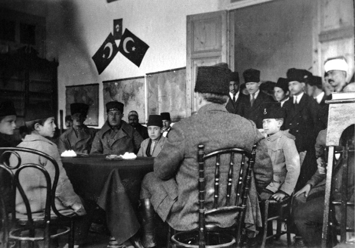

1922
(tarihsiz)
1 Kânunusani 38 kalın ceket pantolon 99 kilo
1 Şubat 38 kalın ceket pantolon 99 kilo
1 Nisan 38 kalın ceket pantolon 96,5 kilo
1 Haziran 38 vasat ceket pantolon 94 kilo
16 Temmuz 38 vasat ceket çizme 96 kilo
7 Teşrinisani 38 Ankara, vasat ceket çizme 94 kilo
9 Nisan 39 Ankara kalın ceket getr 90 kilo (elbisesiz 82)
24 Nisan 39 Ankara kalın ceket getr 90 kilo (elbisesiz 82)
23 Teşrinisani 38 Bordeaux telsizinden ajans: Fransız Ayan Meclisi kadınlara hakk-ı intihap verilmesi hakkındaki kanun lâyihasını 134 rey-i muhalife karşı 156 rey ile reddetmiştir.
Trabzon’da ve Erzurum Kongresi’nde İngiliz donanmasından korkanlara bostan korkuluğu demiştim.
12 Rebiyülevvel 340 [Mevlit Kandili] - 11 Teşrinisani 338 Çocukları Himaye Cemiyeti’nin Sarıkamış’ta teşekkülü.
1 Ocak 1922 Pazar
Talim ve terbiyesi kuvvetli bir fırkanın ilkbahar harekâtına yetişmek üzere Garba gönderilmesi hazırlığı hakkında erkân-ı harbiyeden emir geldi.
Erzincan’daki 13. Fırka alayıyla Sarıkamış ve Kağızman’daki 11. Fırka kıtaatının gönderilmesi muvafık olacağını yazdım.
Yine eski kalpakların kabul edilmesi fikrimi Müdafaa-i Milliye sordu. Sık sık değiştirmenin fenalığını yazdım.
2 Ocak 1922 Pazartesi
Ankara’da Türkiye-Ukrayna muahedenamesi imzalandı.
Enver Paşa Teşrinievvel 37 nihayetine doğru Buhara’ya gitmiş. Yirmi gün kadar oturmuş. Sonra Rus sefirinin malumatı altında her tarafı gezmiş. Av bahanesiyle kaybolmuş. Bir ay sonra Şarki Buhara’da Ruslarla Buhara kuvvetleri müsademeye başlamış.
3 Ocak 1922 Salı
1 Kânunusani 38’de icra vekillerinin kararı: Casusluklarından şüphe edilerek divan-ı harbe tevdi edilen ve fakat divan-ı harplerce delâil-i sübûtiye elde edilememesinden beraatlerine hüküm verilen eşhastan ordularca haklarındaki şüphe baki kalanların cephe mıntıkasında bulunması câiz olmayanların idareten geri menâtıka teb’idleri salahiyeti ordu kumandanlarına verilmiştir.
5 Ocak 1922 Perşembe
Adana vilayeti kâmilen Türk kıtaatı tarafından işgal edilmiş bulunduğundan bugün Adana ahalisince yevm-i mahsus add ile her taraf tezyin edilmiş ve gece fener alayları tertip ile şâdmân yapılmıştır.
Şeriye Vekili Mustafa Fehmi Bey’in İstanbul halkına beyannamesi: Ahlâk ve namussuzları Millet Meclisi biliyormuş, yakında hareketlerinin hesabını vermekten kurtulamayacaklarmış.
6 Ocak 1922 Cuma
Sarıkamış Avcı Kulübü ilk ava çıktılar. Bir şahinle bir tavşan vurmuşlar.
8 Ocak 1922 Pazar
Nafıa Vekili Rauf Bey hastalığına binaen istifa etmiş. Kemal Paşa’ya sordum. Teyit ediyor.
Bugünkü ajansa nazaran Moskova hükümeti Tatar Kırım hükümetinin istiklâlini kabul ve ilan etmiştir. Kırım ecnebi memleketlere sefir göndermek ve dahilen tam istiklâl hakkına malik olacaktır.
Mısır’da karışıklıklar devam ediyormuş.
10 Ocak 1922 Salı
Hava karlı.
M. Kemal Paşa makine başında şifre ile yazıyor. Hulasası: “Müdafaa-i Milliye Vekili Refet Paşa istifa etti. Heyet-i Vekile’nin vaziyetine nazaran sizin Müdafaa-i Milliye Vekâleti’ne (Halbuki ben Şarkta müfettiş-i umumilik teklif etmiştim. 16 Mart gününde Kürtlerin teşkilâtı), Şevki Paşa’nın da Şark Cephesi Kumandanlığına tayinini düşünüyoruz.”
Cevabım: “Tarihe karşı mesuliyeti heyet-i vekile ve meclis-i milli düşünsün. Herşey altüst olabilir. Merkez ordusu ve Elcezire ordusu kumandanlarını alkışlarla azlettiren Millet Meclisi beni bu suretle şarktan mı almak istiyor. Bazı vekillerin istifalarının sebebi nedir? Şarkta İtilafın propagandasına mâni olduğumu ve Ruslarla iyi münasebetimizin esasını kurduğumdan bunu kolaylıkla temadi ettirdiğimi, ayrılmaklığımın mahzurunu” yazdım. Vazgeçtiler.
(Ardahan mebusuna verilen vazife ve mektuptan bana haber verilmediğini protestom ve M. Kemal’in samimi cevabı 23 Teşrinisani 37’dir)
13/11/37’de Mustafa Kemal Paşa Meclis’te rüesâ-yı askeriye aleyhinde tezâhürattan bahsediyordu. Salahattin mektupta Erzurum Erzurumlularındır düstûrunun kolay tatbiki için mi?
13 Ocak 1922 Cuma
Avcı Kulübü azaları ava çıktık. Karakurt yolunda Köroğlu Kalesi civarına kızaklarla gittik. Kar dizi aşıyordu. Hayli yorulduk. Bir şey vurulmadı.
14 Ocak 1922 Cumartesi
Müdafaa-i Milliye Vekâleti’ne 147 rey ile Karesi Mebusu Kâzım Paşa [Özalp], Nafıa Vekâleti’ne 173 rey ile Diyarbakır Mebusu Feyzi Bey intihap olunmuş. Bugün İktisat Vekili Celal Bey istifa etmiş.
Fransa başvekili Briand istifa etmiş, yerine Poincaré geçmiş.
17 Ocak 1922 Salı
Mustafa Kemal’in şifresi: Durak Bey mezunen Erzurum’a geliyor. Meclis’in ve buranın ahvâli hakkında size malumat verecek. Muhafaza-i Mukaddesat Cemiyeti’nin Müdafaa-i Hukuk unvanıyla iktifa olunmasını kendisine anlatınız.
19 Ocak 1922 Perşembe
Mektepte İbret Yeri’nde konferansa. Mektep terbiyesi hakkında musahabat muallimi tarafından. Muhite uymak nedir anlamamış, izahat verdim.
20 Ocak 1922 Cuma
İktisat Vekâleti’ne 197 rey ile İzmit Mebusu Sırrı [Bellioğlu] Bey tayin olunmuştur.
21 Ocak 1922 Cumartesi
Kars’a kaleyi teftişe gittim.
22 Ocak 1922 Pazar
93 Seferinde Kars harekâtı hakkındaki Rus erkân-ı harbiyesinin raporu tercümesini ve Muhtar Paşa’nın hatıratındaki faslı okudum. Kumandan ve erkân-ı harplere münakaşa yaptırdım. Öğleden sonra İçkale’ye çıktık. İnsan ve hayvan hastanelerini teftiş ettik.
23 Ocak 1922 Pazartesi
Öğleden sonra Tahmasp ve Süvari tabyalarını gezdik. Hava sisli, etraf görünmedi.
24 Ocak 1922 Salı
Trenle Sarıkamış’a avdet ettik. Hava karlı.
25 Ocak 1922 Çarşamba
Ankara mektupları namındaki Fransızca resimli risaleyi aldım. Prenses Kadriye Hanım’ın 139. sayfasında hususi Kemal Paşa sarıklılar arasında, sarık cüppeli resmi var, altında “mefkûre hatırası” yazılı. Şâyân-ı dikkat bir şey.
Müdafaa-i Milliye ve İktisat vekillerine yazdım.
Sinema, fotoğraf, elektrik kursları açtırdım. 31/1 tarihli 8’de aldığım cevap şâyân-ı tebcildir. Ancak kurslarda senelerden beri orada muattal bulunan ziraat makinelerinin istimalleri gösterilmesi menfaat-i memlekete daha nâfi bir tedbir ittihaz edilmiş olduğu mütalaasının nazar-ı âlilerine arzını münasip gördüm! Sırrı.
9’da cevap verdim.
26 Ocak 1922 Perşembe
Her taraftan gelen haberlerden Enver Paşa’nın Buhara’dan Fergana’ya kaçtığı bildiriliyor.
30 Ocak 1922 Pazartesi
Mektepleri teftiş ettim.
1 Şubat 1922 Çarşamba
Bugün Tebriz’i Demokratlar işgal etmiş. 16 Şubat’ta malumat geldi. O günde tafsilat var.
Maarif Vekiline teklifim: Halk kitapları (üstün esreli), vatan bahsi, hissiyat-ı diniye, cengâverlik, binicilik, nişan, güreş, hıfzıssıhha, iktisadi bahisler ilavesi.
2 Şubat 1922 Perşembe
Tiflis telsizinden: Azerbaycan’da açlık günden güne artıyor. Kazah’da on beş köyde şiddetli açlık var. Diğer köylerde de açlık ve sefalet var. Kadın ve çocuklar icra komitalarının etrafını sararak ekmek istiyorlar. Ölüm ziyadeleşiyor. Ağdaş kazasında da açlık ve sefalet vardır. Amerikalılar yalnız Ermenileri beslediklerinden bunların âdilane hareketlerini temin için Hariciyeye ve Tiflis mümessilliğine yazdım.
3 Şubat 1922 Cuma
Demiryollarında müstahdem Hıristiyanlar yerine İstanbul’dan memur celbediliyormuş. Fakat bankalar ve Düyûn-ı Umumiye için İslam bulunamıyormuş.
4 Şubat 1922 Cumartesi
11. Fırka’dan 18. Alay Sarıkamış’tan Erzincan’a hareket etti. Talimgâhı teftiş ettim. Hava az karlı.
Van gölü etrafına, Kürtlük ve Ermeniliğe karşı Rusya’dan Türk muhâcir celp ve iskânını teklif etmiştim. Muvafakat cevabı geldi. Hariciye teşebbüs edecek, Sıhhiye Vekâleti de hüsn-i ikamelerini temin edecek.
5 Şubat 1922 Pazar
Ajans: M. Kemal Paşa’nın başkumandanlığı bugünden itibaren üç ay daha temdit edilmiştir.
Hariciye vekili Yusuf Kemal Bey Avrupa payitahtlarında hukukumuzu müdafaa için Pazartesi veya Salı hareket edecekmiş.
6 Şubat 1922 Pazartesi
Merkez ordusunun 1/1/37’den 6/2/38’e kadar icraatı:
Hayyen derdest 2.841
Meyyiten istisâl 3.262
Bi’l-muhakeme idam 231
Dahile sevk 24.511
İslam firarı derdesti 6.809
Tarafımızdan şehit 80
12 Şubat 1922 Pazar
Harp oyununa başlattım (ümerâ ve erkân-ı harpler).
Merkez ordusu lağvedilmiş ve emrindeki kıtaat 10. Fırka kumandanlığına rabtedilmiştir. Müdafaa-i Milliye Vekâleti.
13 Şubat 1922 Pazartesi
Harp oyunu.
“Kemalist” tabiri tehlikeli olduğu hakkında Varlık’ta makale. (yine Sarıkamış serlevhası).
İbrahim Tali Bey’in bugünkü tarihli mektubu Batum’dan yazılmış: Sıhhiye reisliğine gelmek istemiyor. Halbuki evvelce istiyordu. “Filhakika zât-ı devletleri vilâyât-ı şarkiyeye müfettiş-i umumi tayin buyurulsa idiniz, pek sevdiğim bu vilayetlerde ömrümün sonuna kadar çalışırdım. Belki de nafi olurdum” diyor.
Büyük Millet Meclisi müfettiş-i umumilik tabirini ya anlamadı yahut anlamak istemedi. Hıdiviyet yapamayız dedi. İşi kesti. Heyet-i vekile de meseleyi kapattı.
14 Şubat 1922 Salı
Harp oyunu.
15 Şubat 1922 Çarşamba
Mekteplerin teftişi ve müsameresi.
Harp oyunu münakaşasını yaptım:
1- Alât ve edevât tamamlanmalı: pergel, harita, boyalı kalemler (sabit ve silinirler) not defteri ve lastik, mevkie ait eserler.
2- Mesele mıntıkası olan arazi kısmının teşkilâtına hâkim olmalı, sonra sehayat.
3- Verilen meseleyi haritaya tesbit etmeli.
4- Mesele hakkında mülahaza ve karar verilmeli. Bunda dahi
a- Vazifem ne istiyor.
b- Düşman beni bundan nasıl alıkor.
c- Arazi nasıl tesir yapar.
d- Ahvâl-i havaiye geri hizmetleri nasıl tesir yapar.
16 Şubat 1922 Perşembe
Mektep fotoğraflarını her tarafa gönderdik.
Tebriz mümessili 2 Şubat tarihiyle yazıyor:
1 Şubat’ta Demokratlar Tebriz’i işgal ve hükümeti ele almışlar. Kazaklar Kazakhane cenûbundaki tepelere çekilmişler. Jandarma Demokratlara taraftardır. Aynı hareketin Tahran’da vukuu da haber alındı. İran Şahı’nın Avrupa’ya seyahati meselesi de bununla alâkadar olacak. Fakat 8 Şubat’ta Kazaklar Tebriz’e taarruz ettiler, Demokratlar mukavemet etmediklerinden jandarma mağlup oldu. Kazaklar pazarı ve birçok haneleri yağma ettiler. Bolşevik mağazaları da yağma edildi. Jandarmalardan bir kısmı Çulfa’dan Nahcivan’a geçerek Azerbaycan hükümetine teslim olmuş.
Hariciye vekilinin Avrupa seyahati hakkında şifresi: İngiliz ve Fransız cidali üzerine müesses mi, doğrudur istikbal bu mücadeleyi de gösterecektir.
17 Şubat 1922 Cuma
11. Fırka karargâhı Sarıkamış’tan hareket etti.
Tiflis İktisat Konferansı bugün toplandı.
16 Mart 338 Varlık’ta tafsilat var.
18 Şubat 1922 Cumartesi
Mütehassıslar meclisi lüzumu hakkında Mustafa Kemal Paşa’ya bir lâyiha yazdım, şifreli. Hâlâ vekâletler bile iki senedir bir program yapamıyorlar, İktisat vekilinin cevabı şâyân-ı eseftir.
19 Şubat 1922 Pazar
Ajans: Yunan ordusunun Anadolu’yu tahliye ihtimaline karşı İzmir Rumları komitalar teşkil ediyorlar. Kuvvetleri 50 bin olmuş.
24 Şubat 1922 Cuma
Garba giden 11. Fırka (yeni numarası 25) sıhhiye bölüğü, istihkâm bölüğü 10,5’luk bataryası. Sonra da istasyonu teftiş ettim.
Muharrir Mahmut Sadık ve Binbaşı Nahit Beyler Sarıkamış’a geldiler.
25 Şubat 1922 Cumartesi
“Bugün Tiflis’in Kızıllar tarafından işgal sene-i devriyesi. Birkaç gündür Batum’da elliye karib Menşevik zabit tevkif olunmuştur. Bu halin Kütayis ve Tiflis’te de tatbik olunacağı haber alınmıştır. 27
Batum Şehbenderi Tali”
26 Şubat 1922 Pazar
25 Şubat 38 tarihiyle Tebriz Şehbenderi Kadri Bey yazıyor: “İngilizlerle Afganlar arasında komşuluk muahedesi yapılmıştır. Hulasası: Tarafeyn Kâbil ve Londra’da birer sefir ve ataşemiliter bulunduracaktır. Ayrıca İngiltere Kandehar ve Celalabad’da ve Afganistan’da Kalküta, Bombay ve Karaçi’de konsoloslar bulundurabilecektir. Afganlılar Hindistan transitinden istifade edeceklerdir. Sefaretler kendi dahillerinde cami ve kilise bulunduramayacaklar ve aileler hariç olduğu halde otuz beş kişiden fazla olmayacak, konsoloslar yirmi kişiyi tecavüz etmeyeceklerdir.
Kafkas Federasyonu hakkında Ruslara karşı hükümetimiz nasıl hareket etmeli diye Tiflis mümessili Muhtar Bey’in tahriratı geldi.
27 Şubat 1922 Pazartesi
Gümrü’de Amerikalıların beslediği çocukların mevcudu on iki bini tecavüz ettiğini Gümrü şehbenderimiz bildiriyor.
Gürcistan’ın nüfusu 1,5 milyon, Ermenilerin 6-8 yüz bin (Tiflis mümessili Muhtar Bey’in federasyon hakkındaki tahriratından).
2 Mart 1922 Perşembe
Ajanslar Mısır’ın istiklâlinin ilan edildiğini yazıyorlar. Mareşal Allenby bir beyanname ile Mısır’dan İngiliz himayesinin ref’ edildiğini ve Mısır’ın hür ve müstakil bir hükümet olarak tanındığını ilan etmiştir...
Ankara’ya sordum. Efkâr-ı umumiyeyi aldatmak için oyun olduğu cevabını verdiler.
3 Mart 1922 Cuma
Mahmut Sadık Bey, İzzet Paşa ve Fatin Efendi’nin mektuplarını verdi. Görüştük. Mektup hakkında mütalaasını sordum. Hayret etti, metni bilmiyorum bilseydim tavassut etmezdim dedi. Hilâfet ve saltanatın bekasından bahsolonuyor, acaba rastgele bir haris dediği zat bu makamı işgal ederse diyerek mefkûre hatırası resmini gösterdim. Mütehayyir kaldı, felâket dedi.
4 Mart 1922 Cumartesi
Ajans: Meclis-i vükelâ Avrupa’ya giden Yusuf Kemal Bey’e vekâlet vermemiştir. İzzet Paşa’nın Avrupa seyahati İngiltere hükümeti tarafından arzu olunmuştur. Müşârünileyh bir müddet sonra hareket edecektir. Hariciye Nâzırı İzzet Paşa, mütareke komisyonu reisi Ethem Bey, kalem-i mahsus müdürü Haydar, kâtip Kadri Beylerden mürekkep İstanbul heyeti Paris’e ve müteakiben Londra’ya gidecektir.
5 Mart 1922 Pazar
Hayret, Mustafa Kemal Paşa da haber almış, bugün Mahmut Sadık niye geldi diyor.
İzzet Paşa’nın mütalaalarını Mustafa Kemal Paşa’ya yazdım: Avantürist ve menfaatperest kimselerin her devirde oynadıkları rolle yine temelluk ve hulûl ile oynamamalarının temini ve millet birliğinin her gün geçenden daha fazla olmak üzere tarsînidir. Tevfik Paşa kabinesini hüsn-i idare etmeli, aksi halde padişah Ankara cumhuriyet yapacak diye Ferit Paşa kabinesini tesis eder ve sulhün alacağı şekle göre hazinede birçok kıymetli eşyayı hanedanın mevrusudur diye bir tarafa savuşur. Herhalde İstanbul Ankara hükümetinin sözünden çıkamayacak şahsiyetlerin elinde bulunmasını ve fakat sulh akdetmek vesaire gibi hukuka el uzatmamak ve sulhün akdiyle beraber Ankara’nın emrine tâbi olmalarının temini mütalaasındayım.
Fevzi Paşa’ya da yazdım ki Kürtlük ve Bolşeviklik cereyanına mümanaat ancak mevcudiyetimle mümkün bunun için gelemiyorum. Siz vaziyeti bir zabitle bildirin.
6 Mart 1922 Pazartesi
Vali Hazım Bey heyeti Kars’a geldi.
8 Mart 1922 Çarşamba
Bugünkü tarihle Tiflis mümessilimiz Muhtar Bey yazıyor (biz 25’te aldık). Hulasası: Kafkasya hükümetleri (Azerbaycan, Ermenistan, Gürcistan) bir hükümet-i müttehide oldular.
Fevzi Paşa’dan cevap geldi. Hava! Mühim hususâtın ve arzu buyurduğunuz mevâddın istifsârı halinde lâzım gelen izahatın verileceğini arz ile, diyor!
9 Mart 1922 Perşembe
Trabzon Valisi Hazım Bey’le Ali Sait Paşa ve maiyetleri Batum-Tiflis-Kars yoluyla Sarıkamış’a geldiler. İsimleri “tetkik heyeti”. Halbuki ordu hakkında Meclis’teki şikâyeti tahkike gelmişler! Elviye-i Selase mebusları kendilerini kurtaran orduya teşekkür yerine şikâyet etmişler!
10 Mart 1922 Cuma
Çocuklar ordusu marşını idadi efendileri ilk defa temsil ettiler. Muvaffakiyetli oldu.
11 Mart 1922 Cumartesi
Kızakçı efendiler iyi yetişmiş. Bugün teftişlerini yaptım, heyet de gördü. Erzurum’daki teftişte ilk hareketlerini görmüştüm.
12 Mart 1922 Pazar
Mustafa Kemal Paşa’dan İzzet Paşa’nın mektubu ve Yusuf Kemal Bey’in seyahat vazifesi hakkındaki şifrelerime cevap geldi. 11 tarihli: Mühim noktaları: Büyük Millet Meclisi makam-ı hilâfete muhafaza-i merbutiyet etmektedir ve edecektir. Ancak sultanın da millet meclisini tanıması lâzımdır. ... Emin bir vasıta bulunduğunda mektubun aynını veya bir suretini göndermek muvafık olur. Mahmut Sadık Bey’in gelmesine lüzum yoktur. Beş gündür İsmet Paşa ile beraber Garp Cephesi kıtaatını teftiş etmekteyiz. Muhabbetle gözlerinizden öperiz kardeşim. Başkumandan Mustafa Kemal
(16 Teşrinievvel 338’de bu şifredeki esası Mustafa Kemal Paşa trende Refet Paşa ile Bursa’ya giderken ne yapacağımızı sorunca söyledim, kabul etmişti.)
13 Mart 1922 Pazartesi
Erzurum’un istirdadı günüdür. Şehitlerin ruhuna mevlit okunmuş. Vali yazıyor. Cevap yazmadım. Ne belediye, ne Müdafaa-i Hukuk, ne de vali bu münasebetle orduya selam göndermeyi düşünemiyorlar. Erzurum mebusları da Erzurum’da izinli bulunuyorlar!
15 Mart 1922 Çarşamba
Bugün Berlin telsizi:
Enver Paşa Buhara’ya geçerek Sovyet teşkilâtı yapmış ve derhal Moskova ile münasebâta girişmiştir.
(Erkân-ı Harbiye-i Umumiye 21 tarihiyle bildiriyor)
16 Mart 1922 Perşembe
İstanbul’un İngilizler tarafından işgali ve hal-i inikatta iken mebusların tevkifi. Senesi 336.)
Elcezire cephesinden 22/2/38 tarihiyle gelen malumatta 21 Teşrinievvel 37 tarihli beyanname ile Kürtler istiklâle davet beyanname “bismillahirrahmanirrahim” ile başlamış. Altındaki mühür şöyledir: “Kürdistan İstiklâl Cemiyeti İnna fetahna leke fetham mübinâ nasrun fethun karîb”
Ayrıca 12 Teşrinisani 37 tarihiyle on beş maddeli mevadd-ı esasiye diye bir beyanname var. Her merkezde bir fırka olacakmış. İbtidai, tali ve âli kırkar mektep açılacakmış. Kanun Kuran-ı Kerim olacakmış (mukabil beyanname neşrolunarak tekzip edildi).
17 Mart 1922 Cuma
Bu gece Gümrü istasyonu elektrik dairesinde yangın çıkmış, bütün fabrikaya sirayetle vagon tamirhanesi, motor dairesi kâmilen yanmış. Yangın bir gün devam etmiş. Hiçbir şey kurtulmamış deniyor. Sebep kaza imiş!
18 Mart 1922 Cumartesi
Erkân-ı harp kursunu bugün Sarıkamış’ta açtım. Muradım on zabit. Samiin umum kumandan ve erkân-ı harpler. Erkân-ı harbiye vezaifi birinci konferansını verdim (Vali Hâzım ve Ali Sait Paşalar da bulundu).
20 Mart 1922 Pazartesi
Erkân-ı Harbiye-i Umumiyeden: İstanbul 20/3/38 tarihiyle aynen bildiriliyor:
İngilizlerin yakında tarafeyn-i muhacimeyne mütareke teklif edecekleri.
Haberler: Antalya, İzmir ve Rodos’tan gelen vapur kaptanları ve yolculardan alınan havadislerde: Atina’da dükkânlar kapanmış, binlerce halk kralın sarayı önüne giderek “kahrolsun harp, harbi doğuran Gunaris” diye birçok pencerelerden silahlar. [cümle burada bırakılmış]
21 Mart 1922 Salı
Muharrir Mahmut Sadık’la mülakat yaptım. Yarın İstanbul’a hareket edecek (Batum yoluyla).
Manastır’da cephane depoları infilâk etmiş, şehir birkaç koldan yanıyormuş. Kışla enkazı altında bin asker, yüz harp askeri cesedi çıkarılmış. Birçok çocuk da kilise enkazı altında kalmış.
25 Mart 1922 Cumartesi
Müttefiklerin mütareke teklifleri Varlık. 28 Mart 38. 30 Mart.
26 Mart 1922 Pazar
Fransa, İngiltere, İtalya hükümetlerinin hariciye nâzırları Paris’ten bize ve Yunan hükümetine mütareke teklif ediyorlar. 23 tarihiyle İstanbul’dan Ankara’ya yazılmış, halbuki biz bugün ajanstan haber aldık. Vesaik dosyasında metni ve benim mütalaam var. Mustafa Kemal Paşa’dan 27’de cevap geldi.
Akşam ilk yağmur yağdı, fakat gece yine kar başladı. Bir taraftan da eriyor.
27 Mart 1922 Pazartesi
Varlık gazetesinde: Bir İngiliz miralayı diyor ki: Mutlaka Türkiye ile sulh yapılmalıdır. Yunanlılar bitap düştüler, günden güne iflasa yaklaşmaktadırlar. Kendi memleketinde sade mecruh, fakat müstevli olduğu yerlerde ümitsiz mecruh, maliyesi bozuk.
30 Mart 1922 Perşembe
İnönü muzafferiyetinin sene-i devriyesi. Camide mevlit okuttuk.
Ana mektebine ilk olarak “Süvari Marşı”nı tatbik ettirdim.
1 Nisan 1922 Cumartesi
Erkân-ı Harbiye vezâifi üçüncü konferansı verdim:
Harbiye nezâreti, başkumandanlık, erkân-ı harbiye-i umumiye reisi. Tabiye, sevkü’l-ceyş meseleleri tertibi, harp oyunu, erkân-ı harbiye seyahati, teftiş, tenkit, manevralar.
Öğleden sonra 93 Seferinden Beyazıt harekâtını kurs salonunda okuduk.
3 Nisan 1922 Pazartesi
Kar başladı.
4 Nisan 1922 Salı
İdadiyi teftiş ettim.
Gece ortalık beyazlanmış. Gündüz bir taraftan eriyor, bir taraftan kar yağıyor. Öğleden sonra her taraf beyaz oldu.
5 Nisan 1922 Çarşamba
İtfaiye takımını teftiş ettim.
Erkân-ı Harbiye mektebinde tarih-i harp münakaşasında bulundum.
7 Nisan 1922 Cuma
Ana mektebi İbret Yeri’nde Süvari Marşı’nı oynadı. Güzel oldu.
8 Nisan 1922 Cumartesi
Erkân-ı Harbiye kursunda konferansım: Sonbahar manevraları ve seferberlik ve harekât-ı harbiye lâyihası.
9 Nisan 1922 Pazar
İbret Yeri’nde tarihi ve fikri musahabe yaptım. Zabitler de bulundu.
10 Nisan 1922 Pazartesi
Mektep efendilerine yapacakları park yerlerini gösterdim. Sevinçle işe başladılar.
Bu akşam sanayi oyununu (şarkılı ibret) yaptım.
14 Nisan 1922 Cuma
Sanayi şarkılı ibreti ilk olarak sanayi talebesi tarafından temsil edildi.
20 Nisan 1922 Perşembe
Berlin’de Doktor Bahattin Şakir ve Cemal Azmi Beyler iki Ermeni tarafından şehit edildiğini ajans yazıyor.
Bugün Moskova ataşemiliterimizin evini Çeka basarak bazı evrak ve şifreyi almışlar. Evrakın bulunduğu çantayı açtırmak istemeyen zabiti dışarı atmışlar. Sefir Fuat Paşa tarziye istemiş, vermemişler, o da ikinci kâtibi maslahatgüzâr bırakarak Türkiye’ye hareket etmiş. 19 Mayıs’ta Tiflis’ten Batum’a geçmiş.
22 Nisan 1922 Cumartesi
9. Kolordu karargâhı Erzurum’a hareket etti. Hava yağmurlu.
23 Nisan 1922 Pazar
Ankara Millet Meclisi açıldı (336). Ağaç Bayramı.
Sarıkamış’ta ağaç bayramı güzel oldu. Mektep çocuklarının yaptığı bayrakların heyet-i umumiyesi latif görülüyor. Mektep efendileriyle birlikte trenle öğleden sonra Kars’a geldik. Üçte de Kars’ta merasim yapıldı. Akşam mekteplerimizin müsameresine gittik, pek güzel oldu.
Sarıkamış’ta ağaç bayramında,23 Nisan 1922.
24 Nisan 1922 Pazartesi
Araptabya ve Terkileli dağı gezdik.
25 Nisan 1922 Salı
Çalkavur sırtlarında fırka tatbikatı yaptırdım. Hava ara sıra yağmurlu ve serin. Harekâtı umumi tenkit ettim.
26 Nisan 1922 Çarşamba
Fırka salonunda zabitlere harekâtın teferruatını tenkit ettim.
Büyük Millet Meclisi reisi ve başkumandana yazdım:
Bizim kavi Yunanlıların zayıf oldukları bir zaman mütarekenin siyasi bir manevra olduğundan vatanımız derhal tahliye edilmeyeceği hiçbir şart kabul olunmaması.
27 Nisan 1922 Perşembe
Kars’ta Muhlispaşa mıntıkasını gezdik.
Azerbaycan konsolosunun davetine gitmedim. Nezlem vardı.
28 Nisan 1922 Cuma
Trenle Kars’tan Sarıkamış’a avdet.
29 Nisan 1922 Cumartesi
Trabzon vilayetindeki Rum çetelerinin tenkili için 13. Fırka hücum taburu, bir batarya ve fırka süvari bölüğü 14 Nisan’dan itibaren harekâta başlamışlardı. Gümüşhane ve Maçka jandarmaları yerlerinden kımıldanmamış. Altı şaki itlaf, sekizi teslim olmuş.
13. Fırka kumandanlığına yeni gelen Erkân-ı Harp kaymakamı Mustafa Bey şifresinin 6. maddesinde şöyle yazıyor:
“Trakya’dan Şarka kadar olan memleketlerin ve elyevm istihlası uğrunda hayatlarını feda etmekte olan bu memleket evlatlarının uzun zamandan beri tenkil ümit ve intizarı zât-ı devletlerine merbut olduğunu bütün kalbimle temin edebilirim.”
30 Nisan 1922 Pazar
7. Alay süvari kumandanı Sabri Bey Karaköse’den Beyazıt-Iğdır tarikiyle Sarıkamış’a geldi.
1 Mayıs 1922 Pazartesi
Aşiretler hakkında fırka kumandanı Sabri Bey ve erkân-ı harbiyemle müzakere ettik. Mütalaatım musib görüldü: 12 yaştan küçük çocukları leyli mekteplere almalı, büyüklere iş bulmalı, şimdilik zeriyât en münasibidir. Aşiret alayları ordumuzun ziraat müfrezeleri olur. Şerîrler de imha olunur. Şeyhler Türk hocalarla tebdil, katiller asılsın. Ankara’ya bir lâyiha gönderdim.
3 Mayıs 1922 Çarşamba
Batum Şehbenderi Tali Bey yazıyor:
Enver Paşa Buhara’da Ruslar aleyhine tahrikat yapmakta olduğundan teşkilâta dahil diye ne kadar Türk zabit ve muallimleri varsa Ruslar tevkif etmiş. Asker sevkıyatı da yapıyorlarmış. (Hacı Sami’nin teşvikiyle Enver’in atıldığı macera şüphesiz İngilizlerin tesiriyledir. K.)
5 Mayıs 1922 Cuma
Berlin-Moskova arasında tayyare postası tesis olunmuştur (ajans).
Almanlarla Ruslar cenup konferansından evvel (16 Nisan 922’de) bir muahede akdetmişlerdir. Münasebât-ı siyasiye başlayacak.
6 Mayıs 1922 Cumartesi
Askeri mektep programları fena yapılıyor diye Erkân-ı Harbiye ve Müdafaa-i Milliyeye yazdım. Arabi Farisi kabul gibi!
Meclis’te başkumandanlık salahiyetine ve vekâletlere gösterilen namzetler hakkındaki itirazlara karşı fikrimi Mustafa Kemal Paşa hazretleri sordular. (Fevzi, Kâzım Paşalar, Rauf, Fethi ve Yusuf Kemal Beylerle mahrem müzakere neticesi) arz eyliyorum efendim diyor. Cevaplaştık. Hükümet kararına Şark ordusu zahîrdir dedim.
İstanbul Dârü’l-fünun talebesi üç hamiyetsiz muallimlerinin azlini istiyorlardı. Ali Kemal, Feylesof Rıza, İranlı Hüseyin Daniş. Bir buçuk ay mektep kapalı kaldı. Mektep divanı talebenin derslere devamına, etmeyenlerin tardına karar vermiş! Talebe protesto ediyor. [“6 Haziran ajansı” denerek üstü çizilmiş]
11 Mayıs 1922 Perşembe
Hazım Bey ve Sait Paşa Sarıkamış’tan trenle Tiflis’e hareket ettiler.
12 Mayıs 1922 Cuma
Kolordu ve sanayi mektebinin Erzurum’a nakline başlandı.
Bugün Tiflis’te Gürcü, Azerbaycan, Ermeni ittihadı ahdnamesi imzalanmış. İşbu cumhuriyetlerin siyaset-i umumiye-i hariciyesinin idaresi ittihat şûrası riyasetine tevdi olunmuştur. Müttehit Şûra teşkilâtını ikmale kadar hariciye komiserleri vazifeleri, divan-ı riyaset azasından Gürcülerinki Budi Mdivani, Azerbaycan mesaili Nerimanof, Ermenistan’ınki Minasyan tarafından görülecektir.
13 Mayıs 1922 Cumartesi
+13 hava az bulutlu. Sarıkamış istasyonunda bir baraka yandı.
Sağ cenah seyahatine çıktık. Sarıkamış’tan Kağızman’a. İki saatte şimendiferle Benliahmet, oradan üç buçuk saatte Kağızman’a (yarım saati lastik tamiri). Kağızman’da ağaçlar kâmilen bayraklı ve ufak meyveli. Çiçekli az kalmış. Burada akşamüstü derece +19.
Maarif mektebi müsameresi. Padişahlık hakkında. Dedim artık millet kuvvetini hakta gösterin.
Muallimleri Sarıkamış’ta oyun kursuna.
14 Mayıs 1922 Pazar
Kağızman’dan otomobil ile Iğdır’a 7 saatte. Karlı’da bir saat kadar mola. Kulp’taki Tuzdağı şâyân-ı hayret dört saat imtidâdında yüz metre kadar irtifaında, dâğ kâmilen tuz. Yerinde kıyyesi üç kuruşa satılıyor. (Düyûn-ı Umumiye)
Yağmursuzluktan kırılıyormuş. Benden medet istediler. Garip tesadüf, dua ettim. Mükemmel yağmur geldi. Çarşıda ıslandım. Gece rahatsız oldum.
15 Mayıs 1922 Pazartesi
Iğdır’da +12. Beyazıt’ta -16. Sarıkamış’ta +13 idi.
Iğdır’dan otomobil ile Beyazıt’a yedi saatte geldik. Yol kısmen taşlık. Çengel geçidine kadar yokuş olmakla beraber Beyazıt kısmına nazaran yol daha iyi bir halde. Çengel geçidi ile Karabulak köyü düzlüğüne kadar birkaç yer kayalık. Karabulak güzel pınarlar. Fakat pınarbaşına kadar pislemişler. Su az, sonra bataklık yapıyor. Beyazıt ovası tuzlu sulu bataktır.
16 Mayıs 1922 Salı
Beyazıt düz. Kasaba Harb-i Umumi’de çok harap olmuş. Esassı birer kat kerpiç basık tavanlı. Yüz elli hane İslam, ekserisi Türk, birkaç hane Kürt var. Suları bol, güzel. Mektebi zararsız, yüzden fazla çocuk var. İki saat kadar uğraştım. Derste muhakeme usulü, terbiye-i bedeniye. Çocuklar ordusu ve küçük süvari yarışlarını yaptırdım.
Eski kaleye hayvanla çıktık. 1199 senesinde İshak Paşa yaptırmış. Sultan Murad ’ın İran seferini müteakip. Cami letafetini muhafaza ediyor. Ermeniler cami içinde dinamit atarak bazı tahribat yapmışlar. Cami yirmi beş metre yüksek. Harem, selâmlık, koğuşlar, camiin önündeki havuz mükemmel (resimleri var).
17 Mayıs 1922 Çarşamba
İstasyonda Rus Konsolosu. Valinin merkezi istasyona celbi. Tekkede dervişliği.
Iğdır’a avdet. Beyazıt’tan otomobil ile 5,5 saatte geldik. Yalnız Karabulak’tan sonra taşlık yokuşu (4 kilometre kadar) atla çıktık. Otomobiller boş çıktı.
18 Mayıs 1922 Perşembe
Iğdır’dayız. Öğleden sonra hükümet, belediye ve hastaneyi ve kışlaları dolaştım. Kasabada kaç hane ve nüfus var ne kaymakam ve ne de belediye reisi biliyor! Kaymakam 100-150 dedi. Dedim “50 hane fark 100 rakamı için çoktur!” Ahz-ı asker şube reisi 2.045, belediye reisi de 400 kadar olduğunu söylediler. Mahpushaneyi de bilen yoktu. Yedi kişi varmış. Kaymakamın odası da örümcek içinde idi. Mülkiye-i şâhâne mezunu fakat sessiz biri. Sokaklar temizlenmişti.
Moskova Sefiri Fuat Paşa Ankara’ya gitmek üzere Tiflis’ten geçmiş. Buhara’ya tayin olunan Ali Galip Paşa’nın Trabzon’da kalması ve tercihan Tahran’a gitmesini Ruslar rica etmiş. Sebebi, Şarki Buhara isyanı ve sefirin asker olması imiş. Bu fikir Tiflis mümessili Muhtar Bey’indir.
19 Mayıs 1922 Cuma
Iğdır’dan otomobil ile bir saatte Markara köprüsüne. Şose muntazam. Markara köprüsü yüz yirmi metre tûlünde, dört çift ayak (demir borudan) üstüne tutturulmuş. Dört kemerli sağlam, demir köprü. Bizim tarafta Alican, Ermeni tarafında Markara köprüleri nazarı kapıyor. Alican meskûn değil, hudut takımı var. Dönüşte askeri konferans salonunu gördük. Alay zabiti ve efrâdı iyi, pişkin.
Akşam belediyede davete gittik. Yağmur dolayısıyla ekmek on ikiden sekiz kuruşa inmiş. Halk memnun.
20 Mayıs 1922 Cumartesi
Iğdır’dan Kağızman’a. Kulp’a iki saatte geldik. İki pavyondan ibaret ikişer katlı güzel kışlaları gezdik. Temelleri yapılmış iki tane daha var. Mevcutların çatılarını ahali kısmen almış. Birinin çatısıyla diğerini tamamlayıp, diğerinin de düz dam olması zaruri. Meyve ağaçları sulanmadığından yanmış. Yeşil dallara kadar budayıp sulanmalarını emrettim.
Kulp’tan Kağızman’a üç buçuk saatte pan [panne] yapmadan geldik. Hafif yağmur vardı. Belediye reisinin evine indik.
21 Mayıs 1922 Pazar
Mektep çocuklarına ordu küçük süvari marşlarını yaptırdım.
Kağızman’dayız. Tuz madenlerine gittik. Beyaz tuz mağarası şâyân-ı hayret. Çar zamanında bu mağara çara mahsus imiş.
Erzurum’a biri Fransız diğeri Rus olmak üzere iki heyet-i fenniye gelmiş. İkisi de Van’a hareket etmişler. Ruslar Fransızların imtiyaz alacaklarından kuşkudalar.
22 Mayıs 1922 Pazartesi
Kağızman’dan Zibini’ye. Pifik köprüsünü bir kilometre şimâle kadar otomobil ile. Sonrası atla. Esas vadisinden yukarı sırtlara kağnı veya boş araba çıkabilir.
23 Mayıs 1922 Salı
Moskova’dan şifreler geldi.
Zibini’den Kuturtepe’ye çıktık. Celalköyü’nde de Zibini’de olduğu gibi birkaç hane Kürt var. Sorhonlu halkından. Bu köylerde söğüt ve kavak ağaçları yüzer kadar var. İçlerinden dere geçiyor. 2-3 bel kalınlığında. Fakat pınar yok. Sorhonlu’da pek latif pınarlar var.
Kutur Dağı’nda bir mesele hallettik. Yağmur ve fırtına geldi geçti. Tepede yemek yedik. Pazarcık’a Sarıtepe’nin hemen garbından geçerek keseden geldik. Babasu deresini geçtik. Fakat Pazarcık’a yakın bataklık başladığından garba doğru dönerek Şatıroğlu-Pazarcık yoluna çıkmak akıllılığında bulunduk. İlerisi daha ziyade batak, bir manda batmış olduğunu köyden anladık. Zaten ördekler kalktığından belli.
24 Mayıs 1922 Çarşamba
Pazarcık’ta mola. Erkân-ı harp kursundaki efendilere mesele hallettirdik. Fransızcadan da ufak bir imtihan yaptırdım.
25 Mayıs 1922 Perşembe
Hava latif fakat rüzgârlı.
7.00 evvelde Pazarcık’tan bir kılavuzla Alacadağ’a yola çıktık. Dumanlı denilen en yüksek yerine hayvanla rahatça çıktık, iki saatte. Arpaçayı tarafındaki sırtları da gezdik. Merhum Muhtar Paşa’nın karargâh yerini gördük. Bu civarda ufak bir menba var. Iğdır, Erivan, Gümrü, Kars, Çıldır gölü görülüyor. Ararat’la Alagez dağlarının manzaraları pek latif. Hava da açık olduğundan uzaklar ve yüksekler berrak görülüyor. Mesele hallinden sonra bu latif manzara karşısında yemek yedik. Öğleden sonra birde yola çıktık. Bir saatte Nalbanttepe cenûbundaki Gölpınar’a geldik. Yarım saat mola ve latif sudan içtik. Buradan bir buçuk saatte Vezinköy’e geldik. Çadırlara girdik.
26 Mayıs 1922 Cuma
Sabahleyin Vezinköy’de hafif kardan sonra yağmur başladı. Vezintepe’de efendilere bir mesele hallinden sonra Kars’a avdet ettik. Yağmurdan iyi ıslandık. Yarı yolda otomobil geldi. Bununla avdet ettim. Hastaneleri teftiş. 2 sonrada trenle Sarıkamış’a hareket ettik. Sarıkamış’ta sabahleyin yerler beyazlanmış.
Moskova sefaretimizden gelen şifreleri Tiflis mümessili Muhtar Bey bildirmiş. Sefaretimizin bir şubesi olan apartmanı Çeka’nın müsellah bir kıtası basmış...
Sefir Ali Fuat Paşa 18 Mayıs’ta Tiflis’ten Ankara’ya geçmiş.
28 Mayıs 1922 Pazar
Batum’da Menşevikler 20 Mayıs’ta belediyeye bayrak açarak bazı nümâyişlerde bulunmuşlar. Kızılordu asayişi iade etmiş. Üç maktul, ondan fazla mecruh varmış. (Batum Şehbenderi)
Bugün 250 şehit çocuğunu Sarıkamış’ta mutantan bir surette sünnet ettirdik. Sabahlara kadar eğlenceler tertip olundu.
31 Mayıs 1922 Çarşamba
İsmet’in 7 Mayıs tarihli mektubu geldi. Bedbin görünüyor. Benim şehit yavrularımla yaptığım işi medh ediyor. Benim muhitimde bir tebdil-i hava istiyor. Halbuki bütün kuvvetler orda toplanıyor. Yunan ordusu nikbin bir halde.
Bu mektup bana bir İstiklâl Marşı yapmak arzusu verdi. Ankara’da yapılan İstiklâl Marşı bir ilahi gibi. (26 Temmuz’da başvekil Rauf Bey’e teklif ettim.)
1 Haziran 1922 Perşembe
Mektep ve talimgâhı gezdim. Yaptığım İstiklâl Marşını bando ve piyano ve kemanla çaldırdım.
(26 Temmuz’da başvekil Rauf Bey’e kabul olunan İstiklâl Marşı hakkında yazdım).
2 Haziran 1922 Cuma
Ermeni Kars konsolosu ziyaretime geldi. Erzurum-Trabzon tarikiyle Batum, Tiflis, Erivan’a gidecekmiş. Memleketimizi görmek ve çoktan görmediği Batum ve Tiflis’i de bu vesile ile görmek istemiş! Rus konsolosu Norman da iki hafta kadar evvel aynı seyahate çıktı.
3 Haziran 1922 Cumartesi
Tanklar hakkında kursta konferansta bulundum.
4 Haziran 1922 Pazar
Makineli tüfek, süvariler hakkında konferansta bulundum.
Bugünkü tarihli ajanstan: Trablusgarp’ta ihtilal vardır. Arap mücahitleriyle İtalyanlar arasında vuku bulan müsademe yarım saat devam etmiş, İtalyanlar birçok maktul ve mecruh vererek ricat etmişlerdir. Araplardan 63 şehit vardır.
Yunan gazeteleri Ankara ile bilâvasıta Yunan hükümetinin görüşmesini yazıyormuş. Ankara gazeteleri evvela tahliye diyor.
5 Haziran 1922 Pazartesi
Savuşbulak’ı iki bin İran askeri işgal etmiş. Fakat Simko’nun kuvvetleri bugün yetişerek İranlıları ihata ile perişan etmiş. Müfreze kumandanı Halo Kurban ve erkân-ı harbi katl, serdar Satvetü’s-saltana esir ve iki adet seri ateşli Rus cebel topu ile yedi mitralyöz iğtinam etmiş. Miyanıdüab’a kadar firariler takip olunmuş. Bu vaka 30 Ramazan Pazar günü olduğunu Simko 1 Şevval tarihiyle Van kumandanlığına bildiriyor. Van’dan da 4 Haziran tarihiyle Şark cephesine yazıyor.
Mekteplerin mükâfat endahtına gittik. On dört, on yedi yaşına kadar efendiler iyi endaht ediyorlar. Ekserisi mükâfat kazandı. Üç sınıf üzerine endaht mükâfatını da kollarına taktım. Birkaç resim alındı. Güzel tesit ettik. Öğleden sonra kursta topçuluk hakkında konferansa.
6 Haziran 1922 Salı
İdadiden iki çocuk alaya, iki çocuk velisine tard cezası yapıldı.
Bugün 13. Fırka karargâhı Trabzon’dan Erzincan’a hareket etti.
Yunan ordusu başkumandanı Papulas istifa etmiş. Yerine Haci Anesti tayin olunmuştur.
7 Haziran 1922 Çarşamba
15’lik uzun endahtında bulunduk. Mesafe-i asgariye dahiline endaht edeceklermiş, kimse dikkat etmemiş. Bereket benim aklıma geldi de namlu içinden baktım ve ikaz ettim. İhtimal fena bir kaza olacaktı. 41,5 derece ile 10.345 metreye kadar endaht etti.
3.00 sonrada Yunan filosu Samsun’u iki buçuk saat bombardıman etmiştir. Dörtyüz elli mermi atmış. Tekâlif-i Milliye ambarıyla fabrika yanmış.
Samsun bombardımanını beş nakliye gemisi ile Averof ve iki torpidodan mürekkep donanma yapmış. Evvela mutasarrıflığa gelerek bilumum malzeme-i harbiyenin Yunan zabitleri muvacehesinde tahribini teklif etmişler, reddedilince bombardımana başlamışlar. 450 mermi atmışlar. Askerden dört şehit, üç mecruh varmış.
Erzurum’da at yarışı günü Şark’ın şehit yavrularının oyunlarını seyrederken.
8 Haziran 1922 Perşembe
Doğum yurdu olarak sahra hattına nâzır binayı intihap ettim.
Erzurumluların daveti üzerine yarın gideceğim.
Papulas’ın istifası başkumandanlığa Haci Anesti tayin edilecek. Anesti İzmir’in tahliyesi fikrinde bulunmuştur (8 Haziran, Varlık).
9 Haziran 1922 Cuma
Bu akşam Atina cephaneliğinde bir iştiâl olmuş, iki bin maktul varmış.
7.00 evvelde otomobil ile Sarıkamış’tan Erzurum’a hareket. Handere’de iki saat kadar tetkikat. Azap yolundan 4 sonra Hasankale’ye geldik, soğuk banyoya girdim.
10 Haziran 1922 Cumartesi
7.00’de Hasankale’den Erzurum’a otomobil ile. Yolda Sivişlitabya’ya yaya çıktık. Umum mektepler ve halk gelmiş. 11.00 evvelde Erzurum’a geldik. Biraz yağmur serpti.
Tebriz’deki görüştüğüm İspanya konsolos vekili Francisco mezunen Paris’e gidiyormuş, ziyaretime geldi.
13. Fırka karargâhı Erzincan’a varmış.
11 Haziran 1922 Pazar
Şefkat bacıları ve aileler dün de bugün de yok.
Erzurum at yarışı oldu. Vasat derecede. Elbise intizamı yok. İlan edilen dört yarıştan yalnız ikisi yapılabildi. Yarıştan sonra idadi mektebinin oyun, idman ve endahtları güzel oldu. Rus Erzurum konsolosu ve Ermeni Kars konsolosu ve Francisco vardı.
Akşam askeri hastanede sünnet düğününe. Makine-Mikrop piyesini çocuklarımız oynadı, hocalarla münakaşa ettim.
12 Haziran 1922 Pazartesi
Müessesâtı teftiş ettim. Mülkiye sanayi mektebi şâyân-ı esef. Bizim iş ocağı buharla işlerken hâlâ iptidai bir tarzda çalışıyorlar. Hayret edilecek ciheti, bizdeki çocukların öğrendiği sanatları orada iptidai bir halde yapıyorlar. Bunların askeri sanayie devriyle yalnız dokumacılık ve halıcılık kısmının mülkiye sanayiinde ibkasını vilayete yazdım.
Azerbaycan Latin harflerini kabul ediyor! Varlık’ta “Kem Yol” diye başmakale var.
13 Haziran 1922 Salı
Erzoni köyünün garbındaki Yılanlıtepe’yi gezdik. Otomobil ile Erzoni’ye kadar gitmek mümkün iken şosenin köprüden ayrılan yoluna kadar ilerlediğimizden ve buradan ayrılan yol batak hendeklerle geçilemez bir halde bulunduğundan atlara binmeye mecbur olduk. Erzoni’de on beş kadar Ermeni 334 Erzurum’un istirdadı günü köy ahalisinin bütün erkeklerini süngülediği halde koyun gibi ses çıkarmamışlar. Yaralılar arasında ölmeyen Durak isminde bir ihtiyar bunu anlattı. Vaka olurken yarım saat mesafedeki Umudum köyüne de asker gelmiş imiş! (kaçakçılarla karşılaştık kaçtılar.)
14 Haziran 1922 Çarşamba
Çobandede’ye gittik. Sivişli’ye kadar otomobil, sonrası araba ile. Yağmur iyi yağdı. Yemeği Çobandede’de yedik.
Bugün öğleden sonra Kağızman civarına ceviz büyüklüğünde yarım saat dolu yağmış, aralarında yumurta büyüklüğünde olanları bile varmış. Mezrûata az, bağ bahçelere ziyade hasar yapmış.
15 Haziran 1922 Perşembe
Rus kuryesi Velikof Moskova’dan Erzurum’a gelmiş. Sabahleyin ziyaretime geldi. Taşnakların su-i kasdi için kadın kıyafetinde İran’dan Türkiye’ye geleceklerini ve bazı İslamların da bunlara yardım ettiğini söylüyor. Palandöken’e çıkmak üzere hareket ettik. Fakat yağmur ziyade olduğundan avdet ettik. Palandöken eteğine kadar otomobil ile gitmiştik.
16 Haziran 1922 Cuma
Mebus Durak Bey ve Hoca Raif ile görüştüm. Erzurumluların ziyafeti ve kelam-ı kadîm hediyesi.
17 Haziran 1922 Cumartesi
Topçu ve Tekkederesi mıntıkasına otomobil ile gittik. Avdette Köşk’te yemek yedik. Mevki-i müstahkem vaziyeti tespit ettik.
19 Haziran 1922 Pazartesi
Erzurum’dan otomobil ile Sarıkamış’a geldik. On saatte 135 kilometre katettik. Handere civarında kuytu yerlerde kar vardı. Her tarafa kaç gündür yağmur yağıyordu, buraya da kar yağmış.
22 Haziran 1922 Perşembe
Sarıkamış’tan trenle Kars’a geldik. Tayyare hangarında trenden indik ve tayyare bölüğünü teftiş ettik.
23 Haziran 1922 Cuma
Kars’ta at yarışı zararsız oldu. Yarıştan avdette biraz yağmur başladı.
Mustafa Kemal Paşa’ya Tevhid-i Efkâr gazetesinin kendisini İttihatçılar teşvik etti ifadesi hakkında yazdım.
24 Haziran 1922 Cumartesi
Terbiye-i münferide teftişi 28. Alay, 29. Alay’da bulundum. Belim ziyade ağrıyordu. Rus konsolosunun davetine gidemedim. Akşam yeni mutasarrıf Ali Rıza Bey Artvin’den gelmiş.
25 Haziran 1922 Pazar
Bir yere çıkmadım.
26 Haziran 1922 Pazartesi
Bir yere çıkmadım.
27 Haziran 1922 Salı
Bir yere çıkmadım. Kars’ın yeni mutasarrıfı Ali Rıza Bey ziyaretime geldi. Erzincan ve Artvin’de faal görünüyordu. Kars’ta bir şey yok, yıkıp yeniden yapacağım diyor. Atideki esaslar dahilinde kendisini tenvir ettim:
- Evvela mıntıkanın haritası üzerinde iş görmeli.
- Zibini, Digor mıntıkalarını Kürtler harap ediyor, Türk muhâciri gönderiyoruz. Muhâcir idaresi haritadan anlamaz, karıştırıyorlar.
- Malakan meselesi (geçmişi ve hali ve istikbali).
- Ermeni meselesi (geçmişi ve hali ve istikbali).
- Bolşeviklik meselesi.
- Konsolosların şahısları, mesaileri, dedikoduları.
- Maarif meselesi.
- Açlık meselesi.
Hepsi dinlediler, bir not almadılar. Basit not usulünü bilenimiz pek az.
28 Haziran 1922 Çarşamba
Akşam alay kumandanları ve mafevkleri ve erkân-ı harpleri yemeğe davet ettim. Yemekten evvel terbiye-i münferide teftişi nasıl olur izah ettim.
29 Haziran 1922 Perşembe
Trenle Kars’tan Sarıkamış’a avdet ettik.
30 Haziran 1922 Cuma
Mekke’de Laz Osman Bey’den mektup. İsmet Paşa ve başkumandanlığa
3 ve 5 Temmuz’da bildirdim.
1 Temmuz 1922 Cumartesi
Bayburt’taki Erzurum Alayı taburu Trabzon’a hareket etti. Sahildeki 53. Alay Samsun’a, Erzincan’dan 54. Alay Trabzon’a gidecek.
İstanbul gazeteleri Şarki Buhara’da Enver Paşa’nın Sovyet Rusya süvari kumandanı Yudeni’yi perişan ettiğini yazıyor.
Moskova sefareti vekâleti de İttihat ve Terakki erkânını Bolşeviklerin Rusya’dan çıkarmakta olduklarını, Halil Paşa ile Doktor Nâzım’ın memlekete gelmek için müsaade istediklerini yazıyor. Halil Paşa’ya evvelce de tekeffül etmiştim. Kemal Paşa’ya yazdım yine tekeffül ederim. Mıntıkada oturmasına müsaade olunsun.
2 Temmuz 1922 Pazar
Dün Tiflis’ten beş Bolşevik süvarisi hayvan ve silahlarıyla Çaksu alayına iltica etmiş.
Erkân-ı Harbiye-i Umumiyeden 22/6/38 tarihiyle erkân-ı harpler hakkında malumat soruluyordu. Bir lâyiha yazdım. Şifre ile bildirdim.
3 Temmuz 1922 Pazartesi
Havalar kaç gündür yağmurlu. Derece +10’da, odalarda +18.
Trabzon’da bu akşam Kâhya’yı otomobille gece Soğuksu’ya giderken vurmuşlar. Bolşevikler mi acaba. Dahiliye Vekili Fethi Bey de yeni gelmiş gitmişti.
Hindenburg ile Ludendorf’un Komünist Fırkası tarafından tevkif edildiğini 3 Temmuz tarihli telgraflarla İstanbul gazeteleri yazıyor. Almanya’da karışıklıklar ve müsademeler de ziyade imiş.
4 Temmuz 1922 Salı
Erkân-ı harp kursu hakkında bugün Erkân-ı Harbiye-i Umumiyeye malumat verdim. Neler okuttuğumuzu liste halinde gönderdim (Afyonkarahisar garbından cephe ve gerilerine taarruz meselesini de hallettirmiştim).
8 Temmuz 1922 Cumartesi
Bugün Erzurum endaht mektebi tedrise başladı.
Ankara Büyük Millet Meclisi bugünkü içtimaında heyet-i vekile meselesini münakaşa etmiş.
9 Temmuz 1922 Pazar
Sarıkamış’ta.
Dahiliye Vekili Fethi Bey Avrupa’ya tebdil-i havaya gitmiş. Aynı zamanda sulh hakkında Avrupa ricaliyle görüşmeye de mezun imiş.
10 Temmuz 1922 Pazartesi
Kemal Paşa’dan: 5.30’da makine başında zata mahsus şifre geldi. Hulasası: “Vekiller Heyeti Meclis azasından intihap olunmalı ekseriyetle kabul edildiğinden vekiller istifa ettiler. Gerek bu kanunun kabulü ve gerekse başkumandanlık salahiyeti hakkındaki münakaşa ve yeniliklerden ben de Meclis riyaseti ve başkumandanlıktan istifa edeceğim.”
Gece cevap verdim: Başkumandanlık salahiyetini nasıl istiyorsunuz? Neden her iki mevkiden istifa ediyor, istifa eden vekillerle Meclis arasında siyasi fikir tezadı var mı?
11 Temmuz 1922 Salı
53. Alay karargâhıyla Birinci Tabur 11/12 nısfülleylde Trabzon’dan Trabzon vapuruna bindirilmiş. Vapur 12’de Rize’ye varmıştır. Oradaki taburu da alarak 12 Temmuz 10.30’da Samsun’a hareket etmiştir. 1. Tabur 5 zabit, 280 nefer,
4 makineli. 2. Tabur 5 zabit, 233 nefer, 4 makineli. Alay karargâhı 24 nefer.
(12 Temmuz saat 11 evvelde Samsun’a salimen çıkmışlardır.)
12 Temmuz 1922 Çarşamba
Havalar hâlâ her günkü yağmuru yapıyor.
Sıfat-ı resmiyeyi haiz olmamak üzere Amerika hükümetinin istihbarat memuru olarak Mister Obrayn [O’Brian] Ankara’ya gelmiş. Ajansta okuduk. Hariciyeye sorduk, teyit etti.
Bugün İstanbul’a bir İngiliz filosu gelmiş (20’de Ankara’dan erkân-ı harbiye yazıyor). Dretnotla 7 torpido bir tayyare gemisi imiş. 17’de bir dretnotla beş torpido Karadeniz’e çıkmış. Güyâ Bolşeviklerin Romanya’ya karşı olacak hareketlerine karşı imiş. Amerikalılar da İstanbul’a 7 torpido göndermişler. Bir filo da geliyormuş. Yunanlılar da Karadeniz’i abluka edeceklermiş.
13 Temmuz 1922 Perşembe
Fevzi Paşa’nın şifresinde Mustafa Kemal Paşa’nın istifa meselesinin hallolunduğunu, Rauf Bey’in başvekâlete getirildiği, kendisinin yakında garp cephesinde harekât-ı mühimme icra olunacağından cephede kalmayı tercih ettiğini yazıyor.
14 Temmuz 1922 Cuma
Ajans:
İcra Vekilleri Heyeti Riyaseti’ne Sivas Mebusu Rauf Bey
Şeriye ve Evkaf Vekâleti’ne Eskişehir Mebusu Abdullah Azmi Bey
Erkân-ı Harbiye Riyaseti’ne Kozan Mebusu Fevzi Paşa
Müdafaa-i Milliye Vekâleti’ne Karesi Mebusu Kâzım Paşa
Hariciye Vekâleti’ne Kastamonu Mebusu Yusuf Kemal Bey
Maliye Vekâleti’ne Gümüşhane Mebusu Hasan Fehmi Bey
Maarif Vekâleti’ne Karesi Mebusu Vehbi Bey
Sıhhiye Vekâleti’ne Vekili Bolu Mebusu Fuat Bey
Adliye Vekâleti’ne Erzurum Mebusu Celalettin Bey
İktisat Vekâleti’ne İzmir Mebusu Mahmut Esat
Nafıa Vekâleti’ne Saruhan Mebusu Reşat
Dahiliye Vekâleti’ne Niğde Mebusu Ata Bey
15 Temmuz 1922 Cumartesi
54. Alay bugün Trabzon’a vardı (Erzincan’dan).
Mevcudu 12 zabit, 710 nefer, 40 hayvan, 4 makineli.
16 Temmuz 1922 Pazar
Yunanistan artık taarruz edemez (12 Temmuz ajansı). Sabık Yunan ordusu Erkân-ı Harbiye Reisi General Metaksas Yunan gazetelerine böyle beyanatta bulunuyor. Uzlaşmak bugünkü hale göre ehvendir diyor (17 Temmuz Varlık’ta makale var).
19 Temmuz 1922 Çarşamba
Çay ziyafeti verdim. Hava sıcak, akşam yağmurlu idi. Şimâl istikametindeki iki eleğimsağma pek latif idi. Geçen sene hemen aynı günlerde aynı yerde görülmüştü. Askeri idadiler ikinci derece adedi hakkında Erkân-ı Harbiye-i Umumiye Riyaseti’nin 13 Temmuz tarihli şifresi, acı cevap yazdım (lâyiha dosyasında).
20 Temmuz 1922 Perşembe
İstasyonu teftiş ettim. Muvakkat Erzurum istasyonu. Parmaklık en sakil bir manzarada yapılmaya başlanmış. Söktürdüm. Şâyân-ı dikkat olanı. Yirmi adım ötede de mükemmel demir parmaklıklar atılmış duruyor. Mektepli zabitlerin bile eşkâlin nazara olan tesirini bilemiyorlar ve yanı başlarındaki eşyadan istifade edemiyorlar.
Başkumandanlık kanunu kabul edilmiştir. Metni 27 Temmuz Varlık’ta var.
22 Temmuz 1922 Cumartesi
İttihat kabinesinin Bahriye Nâzırı Cemal Paşa Afganistan’dan Moskova’ya, oradan da Tiflis’e gelmişti. Ankara veya Kars’a gelecekti. Bu akşam iki yaveriyle birlikte Tiflis’te şehit edildiğini 25 Temmuz’da Batum konsolosumuz haber veriyor.
23 Temmuz 1922 Pazar
Nutkumdan: Millet nerede hâkimiyeti eline almazsa orada ezilir, harap olur (10 Temmuz Millet Bayramı).
Sarıkamış’ta Millet Bayramı parlak oldu. Merasimden sonra avdette idadi bahçesinin yanındaki köprüden atla geçerken köprünün tahtası kırıldı. Hayvanın sağ ayağı tamamen içeri girdi. Büyük kaza savdım. Ben ön taraftan sol ayak üstüne dayanarak ayağa fırladım.
23/24 geceyarısı Şahin vapuru Novorosisk’ten 22 tayyare getirdi (Trabzon ’a). Derhal Garp Cephesi emrine İnebolu’ya gönderdim. Başkumandanlıkla, Erkân-ı Harbiye Riyasetine ve Garp Cephesine bildirildi.
25 Temmuz 1922 Salı
Cemal Paşa’nın şehadeti haberi.
Ajans: Başkumandanlık müddetinin temdidi kararı üzerine Mustafa Kemal Paşa’nın nutkunu yazıyor (Mühim bir vaadde bulunuyor).
Misak-ı Milli temin edilince serbest bir fert olmak üzere sine-i millete çekileceğim. Varlık gazetesinde (31 Temmuz 38) nutkun sureti var.
Yetmiş yedinci içtima 20 Temmuz 338 Perşembe celsesi. Evvela Trabzon heyeti tespit olunuyor. Başvekil Rauf Bey’in beyanatıyla bu heyeti hükümet seçmiş.
26 Temmuz 1922 Çarşamba
Heyet-i vekile reisi Rauf Bey’e İstiklâl Marşı hakkında mütalaamı yazdım.
27 Temmuz 1922 Perşembe
Sarıkamış mühimmat ambarında bir bomba patlamış. İki nefer şehit; bir ağır, üç hafif mecruh olmuş.
27 Temmuz Varlık’ta: Yunan mukavemeti son günlerini yaşamaktadır. 28’de Akşehir’de Gazi kumandanları toplayarak taarruz hakkında görüşüyor.
Kars muahedesini Erivan’da teatiye Tiflis sefiri Muhtar Bey memur edildi.
28 Temmuz 1922 Cuma
General Townshend’in Ankara’ya geldiğini ajanslar yazıyor.
Lahey Konferansı 19 Temmuz’da son içtimaını yapmış. Ruslarla müzakere devam etmiş. Fakat İngilizlerin bir ... olmadığı hakkındaki teklifi kabul edilmiş, konferans dağılmıştır.
30 Temmuz 1922 Pazar
Elcezire cephesinden gelen şifrede Revandız’dan 17 Temmuz tarihli rapora atfen Kerkük ve Süleymaniye havalisindeki ahalinin İngilizlere karşı kıyamından ve birçok yerlerde siyasi memurları katlettiklerinden ve oralardaki İngiliz kuvvetlerinin mahsur vaziyette bulunduğundan, Faysal’ın gönderdiği üç yüz kişilik kuvveti İngiliz tayyareleri aşair zannederek imha ettiklerinden bahsediyor ve Şark cephesinden top göndermeyi rica ediyor.
3 Ağustos 1922 Perşembe
Gemici oyununu mızıkaya verdim.
İtalyanların Trablus’ta büyük bir mağlubiyete uğradığını Yeni Adana gazetesi yazıyor. İtalyanlarda yalnız Trablus şehri varmış.
4 Ağustos 1922 Cuma
Bayram. Rus Kars konsolosunu Sarıkamış’a davet ettim. Öğle yemeğini mekteplilerle beraber ormanda yedik. Akşam bizim evde.
Enver Paşa’nın bugün maktulen vefat ettiğini, birkaç ay sonra ve bilhassa Teşrinisani’de Avrupa gazeteleri Rus gazetelerine atfen teyit ettiler.
10 Kânunuevvel ajanslarında şu yazılı: Çiçerin Lozan’da bütün gazetecilere beyanatında söylemiş: Türk dostluğuna daima merbut bulundukları, Enver Paşa’nın 4 Ağustos’ta maktul düştüğünü.
7 Ağustos 1922 Pazartesi
Trabzon Müdafaa-i Hukuku münakaşasında Erzurum Mebusu Hüseyin Avni Bey’in, “Paşalar ve yaverlerden de padişahtan olduğu gibi kurtulacağız” dediğini henüz gazetelerde okudum ve Başkumandanlığa, Erkân-ı Harbiye Riyasetine, Vekiller Heyeti Riyasetine, Garp Cephesi kumandanlığına şedîd yazdım. Hâlâ taarruz hakkında bir ses çıkmadığından Ankara’ya harekete karar verdim.
8 Ağustos 1922 Salı
Dehşetli yağmur yağdı. Küçük efendilere yeni yaptığım “çember” oyununu öğrettim.
9 Ağustos 1922 Çarşamba
Teftişe çıktım. Ankara’ya kadar uzanmak arzusundayım.
Sarıkamış’tan trenle Kars’a gittik. Öğleden sonra yağmur çok yağdı.
Hakkâri livası ve Revandız mıntıkası kâmilen Şark Cephesine ilhak edildiği hakkında 6/8’de yazılan şifre bugün geldi (Erkân-ı Harbiye-i Umumiyeden).
10 Ağustos 1922 Perşembe
Kars’tan otomobil ile Çıldır Gölü yoluyla Ardahan’a geldik. 6.15’te hareket ettik. 2.30 sonra Ardahan’a vardık. Yol mükemmel şose. Yalnız Kars çayı civarında yol oyuklar yapmış. Bilhassa göl boyu pek mükemmel. Çıldır gölü sahilinde yemek yedik. Tüfek atarak on kadar balık tuttuk. Hava iyiydi. Öğleden sonra Zurna’yı geçtik. Az yağmur yağdı fakat Ardahan’a iyi girdik.
11 Ağustos 1922 Cuma
Ardahan’da at koşusu.
12 Ağustos 1922 Cumartesi
Ardahan’da at yarışı oldu.
13 Ağustos 1922 Pazar
Kışlaları gezdik.
14 Ağustos 1922 Pazartesi
Ardahan’dan Artvin’e hareket. Otomobil ile Konk [bugün Tepeler köyü] civarında şoseyi takiben. Konk ’ta ahali çay hazırlamış, biraz oturduk. 8.00 evvelde hareket. Öğle yemeğini Kinzodamal [bugün Bağdaşan köyü] sırtlarında yedik. Akşam 7.00’de Hertus’a geldik. Hava kapalı, bulutlar içinde yürüdük. Akşam Hertus köyünde kaldık. Çam ormanları pek latif ve yüksek. Mısır tarlalarına ayılar musallat oluyormuş.
15 Ağustos 1922 Salı
Yol boyu envai meyve ağaçlarıyla dolu: Ceviz, kızılcık, ayva, armut, fındık.
Hertus’tan 8 evvelde hareket ettik. 12.30’da Ardanuç’a geldik. Yol yirmi sene evvel yapılan aynı şose. Fakat sular bazı kısımları bozmuş. Otomobil için tehlikelidir. Ardanuç’a şoseden ayrılan yol ise yalnız açılmış güzergâhtır. Sular, akıntılar berbat etmiş. Araba sakınarak indi. Ardanuç suyu üstündeki köprü ahşap, sağlam, sudan yüksekliği elli metre var. Ardanuç beş yüz seneden beri İslam imiş. Akkoyunlular zamanında Hıristiyan beylik imiş. Akkoyunlulara mağlup olmuşlar. Sulh esnasında tek bir İslam kızını almak varmış. Akkoyunlu beylerinin kızı Ardanuç’a yakın susamış, “eşki nar” olsa demiş, bulmuşlar, o köyün ismi böyle kalmış. Ardanuç suyuna muvâsalatında kendisinin Hıristiyana verileceğini anlayınca intihar etmiştir. Yol üstünde sura yakın pederi bunu haber alınca o da yeisinden kendisini kaleden atarak intihar etmiş. Halk “ârından uçtu” demişler bu söz yavaş yavaş “Ardanuç” olmuş!.. Kasabada güzel binalar var. Uzaktan kilise görülüyor, camiin minaresi yıkılmış, yeni yapacaklarmış.
16 Ağustos 1922 Çarşamba
Ardanuç’tan sekiz saatte Artvin’e geldik. Kasabadan şoseye çıkıncaya kadar atla, sonra arabaya bindim. Yol dünkü gibi fakat daha uçurumlu. Bilhassa Çoruh vadisi dört yüz metre uçurum. Şose bizim zamanımızdan kalma olup Ruslarca tamir edilmiş. Artvin’e Demirköprü ile geçiliyor. Artvin iki saat evvel görülüyor. Fakat yolun pek çok olan zikzakları var. Kasaba latif ağaçlar içinde. Zeytine varıncaya kadar herşey var. Köprüden hükümetin yanındaki ikametgâhımıza [boşluk] kilometre. İrtifaı 400 metre. Köprünün denizden yüksekliği 250 metre imiş.
17 Ağustos 1922 Perşembe
Artvin’deyiz. +22. Odada santigrat.
17 Ağustos 38 tarihli icra vekilleri heyetinin kararıyla şark vilayetlerindeki demiryolları nafıa vekâleti emrine devr olunacaktır.
Artvin “beyinsiz” demeksiz Gürcü lisanında (Ar=siz, tivina=kafa). Güyâ vaktiyle Artvin kasabası Çoruh’a aktığı halde yine halkın sağ kalanları kasabayı aynı yere yaptıklarından bu ismi almış. Eski bizim zamanımızdaki ismi “Livane” imiş.
18 Ağustos 1922 Cuma
Artvin’deyiz. Akşam mektebin müsameresi.
Yunanlılar İstanbul’u zabt için otuz bin kişi toplayacaklarmış. Müttefikler Türk ve Yunan karakollarını geri çektirmişlerdir. Varlık 21 Ağustos’ta malumat var. Sekiz bin askerle İstanbul Yunanlılara karşı müdafaa edilebilir.
19 Ağustos 1922 Cumartesi
Artvin’den hareket Kuvarshane’ye. 6 saatte geldik. Artvin köprüsünden şoseye çıkan kavisler çok zaman sarf ettiriyor. Hükümet civarındaki evden köprüye kadar yirmi zikzak var. Umum tûl sekiz kilometre. Köprü demir, elli metre tûlünde. Deniz sathından 350 metre yüksek. Hükümet 700, kışlalar 500 metre mürtefidir. Hükümet civarındaki evden kışlaya bir saatte geldik.
20 Ağustos 1922 Pazar
Kuvarshane’den Borçka’ya 3,5 saatte. Madenden şoseye yarım saatte indik. Kuvarshane’nin rakımı 1000, yola inilen yerde 640, Borçka’daki köprü 110 metre. Harb-i umumide Ruslar tarafından iki büyük yedi küçük göz, kârgir ayak üstündedir.
21 Ağustos 1922 Pazartesi
Murgul’a gittik. Araba ile iki saatte gittik, iki saatte geldik. Tam yarı yolda güzel çeşme var, yarım bilek kalınlığı su akıyor. Murgul’un rakımı 350 metre, Borçka’nınki 75 metre. Bakır fabrikası, Kuvarshane’dekinden birkaç misli büyük.
22 Ağustos 1922 Salı
Borçka’dan Maradid’e iki saatte geldik. Yol Çoruh’a yakın, pek iyi bir halde. Demir köprüler varsa da tahtaları kısmen fena. Yol eski bizim yol. Murgul madeni tamir yapmış. Maradid’de kayıkla Çoruh’u geçtik. Tel halata makara takmışlar, kayıklar gayet kolay geçiyor. 1,5 dakikada. Sular az olursa geçit 1,5 metre derinliğinde geçit olurmuş. Kayıkla hayvan da geçer, beş hayvan alır. Maradid, Gürcü lisanında “büyük küp” demekmiş. Ahalisi evvelce çok şarap yaparmış.
23 Ağustos 1922 Çarşamba
Maradid’den Pehlivan’a. Çoruh’un sol sahilinde hayvan yolu var. Fakat kısmen uçurum. Ben kayıkla tekrar sağ sahile geçtim. Araba ile Hay’a geldim. Tekrar kayıkla karşıya geçtim. Karargâh yarım saat sonra atla geldiler. Yol Pehlivan’a kadar patika, kâh dereye yakın, kâh yüksekten geçiyor. Kârgir yüksek kemerli köprüden bir sola bir de Pehlivan köyü medhalinde sağa geçiyor. Gerek köprüleri gerekse uçurum yerleri yaya geçtim. Köprüler su zemininden sekiz on metre mürtefi. Üç saatte Pehlivan köyüne geldik. Her taraf orman. Dar bir vadi. Pehlivan’dan sonra vadi birkaç kısma ayrılıyor ve genişliyor. Pehlivan’da yağmur başladı, çadırda yattım.
24 Ağustos 1922 Perşembe
Pehlivan’dan Hopa’ya hareket 7.00 evvelde. Hava zararsız. Dünkü yağmurdan yokuş kayıyor. Hayvana az bindim. İki saat on beş dakikada tepeye çıktık. Rakım 950. Deniz pek latif görülüyor. Rusların 332 senesi yaptıkları şose mükemmel fakat hatt-ı içtimalarda bozulmuş, yarlar kaymış, yüksek ağaçlar devrilmiş. Zalona civarında yemek yedik, Batum görülüyor. Gurûbla beraber (7.00 sonrada) Hopa’ya vardık. Ahz-i askere indik. Üç buçuk senelik hasretten sonra dalga sesleri pek latif. Hopa ufak bir yer. Kaza merkezi.
25 Ağustos 1922 Cuma
Hopa’dan 6.30 evvelde Gazal römorkörüyle hareketle 6 sonra Trabzon’a vardık. Hava güneşli. Az rüzgâr ve dalgalı. Sahillerin manzarası latif. Hava da güneşli ve latif idi.
Rusların açtığı sahil yolu bazen ivicaclarla sırtlara çıkıyor. Denizde uzak yakın yelkenliler ruha inbisat veriyor. Sahillerde İstanbulkâri evler, ormanlar, mısır tarlaları sevinç veriyor. Humurgân’dan [Sürmene] Trabzon seçiliyor. Dürbünle iyi görülüyor. 6 sonrada vardık.
26 Ağustos 1922 Cumartesi
Yunanlılara taarruzumuz başladı.
Buraya gelmiş bulunan çocuklar müfrezesi de istikbalime çıkmıştı. Birçok taklar kurmuşlar. Halk kâmilen sokaklarda.
27 Ağustos 1922 Pazar
Hususi: Dün ve bugün yeni meydan muharebelerinde Afyon şark ve cenup cephelerinde tekâsüf eden 7-8 fırka tahmin edilen düşman kuvâ-yı asliyesi kâmilen mağlup edilmiştir.
28 Ağustos 1922 Pazartesi
Öğle yemeğine Soğuksu’da Kıralizade Hasan Efendi’nin davetine gittik. Vali ve Sait Paşa da vardı. Akşam eytâm sanayi mektebine davetliydik.
Ajans: Yunanlılardan motorlu ve sair yirmi beş top almışlar.
29 Ağustos 1922 Salı
Motorla sahil boyunca Eminönü meydanına (Kavak meydanı) çocuklar ordusu endaht mahalli yaptık. Hastane, Kırmızı Kışlayı teftiş ettim.
29 tebliğ-i resmi: İlk kıtaatımız Altıntaş ve Dumlupınar civarına muvâsalat etmiştir. Düşman gerilerine düşen süvarilerimiz külliyetli malzeme ile bir otomobil kolu iğtinam etmişlerdir. Mühimmât dolu iki tren de zabt olunmuştur, yedi tayyare iğtinam olunmuştur. Uşak’la Alaşehir arasında 127 develik bir katar zabt olunmuştur.
Hususi: Döğer geçilmiştir. Altıntaş-Dumlupınar hattındayız (Süvari fırkaları). Bir süvari fırkası Uşak garb-ı cenûbîsinde, garbında.
30 Ağustos 1922 Çarşamba
Sahil kumandanlığı lağv ile 13. Fırka Kumandanlığı Trabzon’da iş görecektir.
31 Ağustos 1922 Perşembe
Kütahya, Çivril istirdad olunmuştur.
Değirmendere mevzilerini ve ambarlarını teftiş ettim.
26’da başlayan meydan muharebesi 31 sabahı bitmiştir. Beş gün beş gece devam etmiştir. Afyon cenûbundan yarma harekâtı 36 saat devam etti.
Rize’de, 4 Eylül 1922.
1 Eylül 1922 Cuma
Trabzon’da cephe mekteplerinin ilk müsameresi. Eskişehir ve 1/2 gecesi Kütahya istirdad olunmuştur.
2 Eylül 1922 Cumartesi
Gündüz ve gece mektepler, asker ve ahali zaferler şerefine Trabzon’da şenlikler yapıldı.
Bugün 4.30 sonrada Eskişehir işgal olundu.
3 Eylül 1922 Pazar
Hararet +27. Hemen bütün sahilde.
Dumlupınar şark ve şimâl-i şarkisinde öğleden sonra muharebe oldu. Düşman garp istikametine kaçtı. Kusura deresini takiben kaçan düşmanın birinci ve ikinci kolordu kumandanları General Trikopis ve Dyenis ile bir fırka kumandanı ve erkân-ı harbiye zabitanı dahil olduğu halde çok esir alındı. Beş fırkalık düşman mahvedilmiş oldu.
4 Eylül 1922 Pazartesi
Alemdar vapuruyla Rize’ye beş buçuk saatte geldik. Hava güzel. Mektep efendileri. Rize latif. Portakal ağaçları çok. Bugün Kula ve Alaşehir istirdad olunmuştur.
5 Eylül 1922 Salı
Öğleden sonra Sürmene’ye geldik.
6 Eylül 1922 Çarşamba
Sürmene’de mektepler ibret gösterdiler. Akşam dalgalı denizde Trabzon’a avdet.
Bugünkü ajansta: İngiliz gazetelerinin dahi müsait neşriyatta bulunduklarını ve İzmir’de fevkalâde karışıklıklardan dolayı ikişer İngiliz, Fransız, Amerika zırhlısı İzmir’e gelmiş. Tekfurdağı’ndan Anadolu’ya nakledilmek istenilen bir Yunan fırkası isyan etmiş, zabitanla efrâd birbirine silah kullanmış. Ordu kumandanı Haci Anesti yerine Anadolu Ordusu başkumandanlığına General Trikopis tayin edilmiştir. Erkân-ı Harbiye-i Umumiye ve Anadolu ordu erkân-ı harbiye reisleri de değişmiştir.
7 Eylül 1922 Perşembe
Hararet +22’ye indi.
Trabzon’da zafer şenlikleri yapıldı. Güzelhisar’a da geldiler.
Dün Salihli garbındaki düşmanın iki fırka ve iki alay süvarisi tard olunarak ordumuz Ahmetli civarına gelmiştir. Bursa cephesinde Pazar günü Gemlik ve Dimboz hattında muharebe devam etmektedir.
8 Eylül 1922 Cuma
Yağmur, akşamdan başlamıştı. Fırtına, deniz ziyade. 8/9’da Ankara telsizi İzmir limanında bulunan Edgar kruvazörü telsizinden İzmir müttefikîn general konsolosu şehrin teslimi için en yakın Türk kumandanıyla müzakereye girişmek arzu ettiklerine dair bir haber almıştır.
9 Eylül 1922 Cumartesi
İzmirimizin istirdadı.
10.30 evvelde süvarilerimiz İzmir’e girmiştir. 3 sene 3 ay 24 gün Yunan işgalinde kalmıştı. Yunanlılar 15 Mayıs 35’te İngilizlerin kahpece delaletiyle girdiler.
10 Eylül 1922 Pazar
Hava latif oldu.
Ajans: Resmi tebliğ: 1- Bugün İzmir’in cenûb-i garbisinde Seydiköy’de süvarilerimiz düşmanın bir alay ve bir bataryasını kâmilen esir etmiştir. 2- Bursa mıntıkasında harekât devam etmektedir.
11 Eylül 1922 Pazartesi
Bursa’nın istirdadı beşareti geldi. 8 Temmuz 36’da Yunanlılar işgal etmişti.
12 Eylül 1922 Salı
Bugün Mudanya’da Yunanlıların onbirinci fırkası esir edilmiştir. Üserâ bir general, iki yüz zabit, altı bin nefere bâliğ olmuştur.
13 Eylül 1922 Çarşamba
Sakarya zaferinin sene-i devriyesi.
Şark mıntıkasının her tarafında üç gündür bayram yapılıyor. Bugün her kaleden 101 pare top atılacak. Trabzon’da da muazzam ihtifaller yapıldı.
Bugün Çeşme yarımadası berzahında mukavemet eden düşmanla muharebe olmuş. Düşman her iki cenahtan donanmasıyla ateşe iştirak ediyormuş. Urla’da alınan ganimetler: [böyle]

Güzelhisar (Trabzon), 16 Eylül 1922.
14 Eylül 1922 Perşembe
Bugünkü tarihli ajanstan: Londra’dan 11 tarihiyle bildiriliyor: Asya sahilindeki bîtaraf menatıka tecavüz edilmesine müsaade olunmayacağını anlatmak üzere müttefikler müttehiden tedabir ittihaz ediyorlar.
Bordör telsizi 13 tarihiyle tebliğ ediyor: İngiliz ve Fransız ve İtalyan müfrezelerinin Çanakkale ve Üsküdar’a çıkarılmış olması, İstanbul ve Gelibolu şibh-i ceziresinin himaye ve muhafazası için müttefikler arasında mevcut tesanüdü ispat ve teyit içindir.
31 Ağustos Revandız’da bir İngiliz bölüğü, bir Hintli batarya mağlup olmuştur. 34 maktul ve o kadar mecruh vermiş. Ricat etmiş, Süleymaniye’de iğtişaştan İngilizler tahliye etmişler. Kefri-Kerkük-Erbil hattına çekilmişler.
15 Eylül 1922 Cuma
15 Ajans: Balıkesir’i işgal eden kıtaatımız Bandırma istikametinde taarruza devam ediyor.
Deniz ve kum banyosu yaptım.
Simko’nun 2 şnayder, 3 Rus topuyla on makineli tüfek, yirmi yedek namlusu, iki top, bir makineli nişangâh dürbünü, iki makineli imlâ aleti, on altı deve.
16 Eylül 1922 Cumartesi
Boztepe’de. 2 sonrada endaht yapıldı. 6 batarya iştirak etti. 15’lik obüsün tam isabetlerine düşman torpidosu hedefi berhava edildi. Sonra çocukların endahtı yapıldı. Endaht güneş istikametinde olduğu halde iyi netice elde edildi. Güneşliğe ihtiyaç vardı. Hariciye müsteşarı Suat Bey Tiflis’ten Erzurum’a avdet ediyormuş, o da bulundu.
16 Ajansı: Kuvvetlerimiz Kirmasti-Edremit hattını geçmiştir.
17 Eylül 1922 Pazar
Bugün 2 sonrada Bandırma işgal olunmuştur.
Trabzon kız mekteplerini ve Sultani mektebini ziyaret ettik. Vali Hazım Bey, Hariciye Müsteşarı Suat Bey, 9. Kolordu kumandanı Sait Paşa birlikte. Kız mektepleri üç sene evvelki halinde, yani yalnız kafa patlatacak okuma! Ev hanımlığı için esas olmadığı gibi malumat da yok. Maarif müdürü on beş seneye kadar mümkün olur. Bu sene birçok mektepler açtık diyor. Vali beyle beraber fikirleri adette imiş, keyfiyette değilmiş! Vali Bey dedi ki: Vakit bulup da bakamadım!.. Köşeler örümcek, camlar ve raflar pek kirli. Bir harita veya bayrak yok.
18 Eylül 1922 Pazartesi
Boztepe’de 54. Alayın münferit terbiye teftişinde. Hatalar her taraftakinin aynı. Mesafe ve hedef faraziye veriliyor, tenkit ettim.
19 Eylül 1922 Salı
Ajans: Gönen havalisinde harekât-ı taarruziye devam ediyor.
20 Eylül 1922 Çarşamba
Harp raporu Erkân-ı Harbiye-i Umumiye Riyasetinin:
İzmir körfezi medhalindeki Kösti adası işgal olunmuştur.
Tiflis’te şehit edilen Cemal Paşa ve yaverleri Nusret ve Süreyya Beylerin cenazeleri Erzurum’a geldi. Hafız Hakkı Paşa’nın yanında defnolundu.
21 Eylül 1922 Perşembe
Akşam belediyenin ziyafeti. Bakamadılar. İş görecek insan olmadığından mektep zabitleri ve karargâh zabitlerine yer göstermemişler. Belediye memurları sofraya oturmuş. Zabitler de çekilip gitmişler.
Ayvacık kıtaatımız tarafından işgal olunmuş, Midilli adasındaki sefaine bombalar atılmıştır.
22 Eylül 1922 Cuma
Muallimler cemiyetine çay ziyafetine gittik. Hasbıhal ettik. Bazı izahat verdim. Mekteplerimizin hayata hazırlanması esasından uzak olduğunu söyledim... Muallimler iki kısım imiş. Biri İdmanocağı’nda spor kulübü halinde ve içlerinde talebe de varmış, diğeri de gördüğümüz. Mahzâ benim hatırım için bugün bir araya toplanmışlar.
23 Eylül 1922 Cumartesi
M. Kemal Paşa’ya 12’de seyahatimiz hakkında yazdığımıza cevap geldi. Pek hesaplı ve mutedil bulunuyoruz. General Pelle İzmir’e geldi. Bîtaraf mıntıkaya tecavüz edilmemesi lüzumundan bahsetti. İngilizlerin İstanbul’da ve Trakya’da hâkim olmak istedikleri anlaşılıyor. İngilizleri yalnız bırakmaya çalışıyoruz. Ordularımız İstanbul ve Çanakkale’ye karşı tahaşşüd etmektedir. Herhalde meseleyi siyasetle halletmeyi tercih etmekteyiz.
24 Eylül 1922 Pazar
Fırka dairesinde geçenki endahtı tenkidine “yandan rasat vermek, telefon irtibatı ve işaretle irtibat, fena haberlerin bataryalara duyurulmaması lüzumunu” da ben ilave ettim.
25 Eylül 1922 Pazartesi
Deniz banyosu yaptım. Akşam ibrete.
M. Kemal’e şifre. İngilizler yalvarıyor gibi yazılar zararımızadır. Konferans ne zaman ve murahhası kim?
23 Eylül tarihli nota ile İtilaf bizi konferansa davet ediyor. Hulasası:
Venedik’te veya diğer bir tarafta vuku bulacak ve Türkiye murahhaslarından başka İngiltere, Fransa, İtalya, Japonya, Romanya, Sırp, Hırvat, Slovak ve Yunan hükümetlerinin mümessilleri de bulunacak. Bir murahhas göndermeye (salahiyet-i kâmileyi haiz) hazır mısınız.
Konferans devam ettiği müddetçe hükümet müttehiden bîtaraf ilan ettikleri mıntıkaya Ankara ordu göndermemek şartıyla Meriç’e ve Edirne’ye kadar Trakya’yı işgal etmek arzusunu müsait bir surette telakki etmekte olduklarını beyan için ittihâz-ı fırsat eyleriz. Üç müttefik hükümet konferansta işbu hudutların Türkiye’ye itasına memnuniyetle müzaheret edeceklerdir. Türkiye’de sulhün idamesi için bazı menatıkı gayr-i askeri bir hale koyacak Boğazların serbestisini temin edecektir. Üç hükümet Türkiye’yi de Cemiyet-i Akvâm’a almaya müzaheret edeceklerdir. Muahede-i sulhiyenin meri olmaya başlayacağı zaman İstanbul tahliye olunacaktır.
Yunan Meclis-i Vükelâsı bugün Yunan ordusunun terhisine karar vermiştir.
26 Eylül 1922 Salı
Kemal Paşa cevabında konferans 3 Teşrinievvel’de Mudanya’da olması teklif olunuyor ve İsmet Paşa murahhas tayin olunuyor. Konferans hutut-ı esasiyesi olarak şunlar tespit olunuyor:
1- Edirne ve Meriç dahil olmak üzere Yunan ordusunun ve Yunan idaresinin Trakya’dan ihracı.
2- Trakya’nın Türkiye Büyük Millet Meclisi hükümetine 20 gün zarfında kâmilen teslim edilmiş bulunmasının temin ve tatbiki.
3- Şimdilik Trakya’ya Türk ordularının mürûr etmemesi kabul olunduğundan Türkiye’deki Türk idaresinin Yunan vesaire tecavüzatından muhafazası için tedâbir ittihazı.
4- Türkiye ordularının harekâtının tevakkuf ettiği hatların tayini ve tatil-i harekât esnasında hiçbir taraftan bir mıntıkada tahkimât yapılmaması ve Türk Müslüman ahali üzerinde bir tarafta tedâbir-i zecriye ve tazyikiye tatbik olunmaması.
27 Eylül 1922 Çarşamba
Bugün 11.00’de ahali Atina’da kralın sarayına hücum etmiş. Kral hayatının masûn kalması şartıyla terk-i saltanata razı olmuştur. Selanik de dahil olduğu halde her tarafta ihtilal vardır.
28 Eylül 1922 Perşembe
Harp oyunu: “Çanakkale’ye karşı hareket eden kıtaatımız 27 Eylül’de Pınar hatt-ı bâlâsını aşarak Çanakkale’nin hemen cenûbundaki sırtları tutmuşlar ve keşif kollarını kasabanın bir kilometre mesafesindeki telörgü hattına kadar sürmüşlerdir. İngilizler telaş etmiş, birbirini müteakip on iki İngiliz tayyaresi mütemadiyen akşama kadar keşif yapmış. Boğaz’daki sefâin-i harbiyeden iki dretnot Anadolu sahiline yaklaşarak toplarını kıtaamız üzerine tevcih eylemişlerdir.”
29 Eylül 1922 Cuma
Çocuklarla beraber Ankara’ya gelmek arzumu M. Kemal Paşa’ya yazdım.
5 Teşrinievvel’de cevap geldi.
Hükümet civarındaki Cuma namazına. Cami Fatih zamanında kiliseden tahvil olunmuş. Mihrap ve minberi güzel. Namazda pis çoraplı biri yanımıza geldi, pek rahatsız olduk.
Görüşülecek meseleler:
1- Hükümet şekli. Hilâfet ve saltanat meseleleri.
2- Sulh esaslarımız.
3- Sulhten sonra kalkınma meselemiz.
4- Şahıslarımızın alacağı vazifeler.
30 Eylül 1922 Cumartesi
Jimnastik iptidai mektebini ve Zeytinlik medresesini teftiş ettim. Üç buçuk senedir mektebin arkasındaki Zeytinlik medrese ve camii haraptı. Hedmiyle mektebe bahçe yapılmasına teşebbüs etmiştim. Bilakis bu basık ve köhne binalar tamir olunmuş ve medrese açılmış. Karanlık, rutubetli yerlerde pösteki üzerinde tedris!
Zeytinlik iptidaisi bina iyi, teneffüs bahçesi yok. Elişi yeri yok, muhakeme yok, idman basit bir halde.
2 Ekim 1922 Pazartesi
Müfreze tatbikatına Kisarna mıntıkasına.
3 Ekim 1922 Salı
Mudanya Konferansı başladı.
4 Ekim 1922 Çarşamba
Gambos burnunda teftişe.
12/10/38 tarihli Revandız’da Özdemir Bey’den alınan raporun hulasasıdır:
İngilizler 4/10/38’den itibaren her gün bila-fasıla akşama kadar 10-15 kişi istiâb eden gayet büyük ve ekserisi zırhlı olan tayyare filosuyla vahşiyane bir surette Gürsancak kasabasıyla civar köyleri büyük tavikli bombalarla bombardıman etmiş ve kasabanın dörtte üçü harap olmuş, ahali öteye beriye dağılmış. Irak’ta iki yüz kadar tayyare varmış. Tank teşkilâtı da varmış, fakat miktarı mechul imiş.
Musul havalisinde 30-35 tayyare, iki batarya top.
(2.000 Nasturi, 500 Ermeni, 700 Hintli, 1.200 Arap jandarması) 4.500 kadar kuvvet varmış. Akre-Erbil-Kerkük-Kefri hattındadırlar. Bu hattın şimâli müstakil Kürdistan ilan edilmiştir.
5 Ekim 1922 Perşembe
Akşam Ankara’ya gelmekliğime müsaade geldi (Vekil bırakacağım Ali Sait Paşa’nın vürûdunu bekleyerek 9’da hareket ettim).
Boztepe’de ağır topçu teftişine.
6 Ekim 1922 Cuma
Hava yağmurlu. Derece +19. Birkaç gün 22’ye kadar çıkmıştı.
Resmi şifreli malumat: Çanakkale’de İngiliz kuvvetleri telörgüsü dahiline alınmıştır. İtilaf harp sefâini Çanakkale ve Marmara sahillerinde dolaşıyor.
Kocaeli mıntıkasında kıtaatımız Şile-Yarımca hattına ilerlemektedir.
Fransız, İtalyan ve İngiliz murahhas-ı askerileriyle murahhasımız İsmet Paşa’dan mürekkep komisyon Trakya’nın Edirne dahil olduğu halde Meriç’e kadar Yunaniler tarafından suret-i tahliye ve hükümetimize teslimi hakkında
3 Teşrinievvel 10’dan itibaren Mudanya’da müzakerâta başlamışlardır.
M. Kemal Paşa’ya siyasi, askeri hatt-ı hareket hakkında mütalaamı yazdım.
7 Ekim 1922 Cumartesi
6/7 akşam sabık vali Hamit Bey geldi. Evvelki gün geçen Erzurum Mebusu Salih Efendi’den naklen Trabzon Mebusu Celal Efendi demiş ki Sait Paşa Erzurum’a gelirse Ilıca’dan kabul edilmediğini söyleyecekler.
İki sene evvel Celalettin Arif Bey meselesinde de Halit Bey’e M. Kemal tarafından şifre ile yazılmış ki benimle Celalettin Arif’in arasını açsın. Bunu Ankara’da şark mebuslarından öğrenmiş.
8 Ekim 1922 Pazar
General Harrington’un protestosu.
İsmet Paşa aynı günde verdiği cevabında, bahsedilen harekâtın kıtaatın harekât-ı dahiliyesi olduğu, Çanakkale’de harekât tesbit edildiği halde İngiliz takviye kıtaatının geldiği, Kocaeli’nde ise hükümetimizin bîtaraf mıntıka diye bir şey tesbit etmedikleri ve vaat edilen meselenin İtilaf kuvvetleriyle müsadereye mahal vermemekten ibaret olduğunu ve hadiseye mahal vermemek üzere tedâbir-i lâzıme alındığını yazıyor.
6 tarihli mütalaama Mustafa Kemal Paşa’dan cevap geldi. C. 6/10/38 şifreye. Mütalaanız şimdiye kadar yapılmış olan icraat ve teşebbüsat-ı siyasiyeye mutabıktır efendim.
9 Ekim 1922 Pazartesi
12.15 Trabzon’dan Alemdar vapuruyla hareket. Hava pek latif.
11.15 sonra (geceyarısı) Giresun’a varmışız. Mutasarrıf, Müdafaa-i Hukuk reisleri gelmişler.
Mudanya Konferansı’nda İngiliz murahhası General Harrington tahriren kıtaatımızın Şile ve Yarımca’ya geldiklerini, bîtaraf mıntıkaya tecavüz olunduğu ve Yarımca’dan ilerleyen bir fırka kadar kuvvetin Karayakup’a kadar ilerlediklerini, Çanakkale’de bir tecavüz olduğunu, muhasamattan içtinap için herşey yaptığını ve harekâtın konferans nihayetine kadar tevkifi Ankara Büyük Millet Meclisi hükümetine iblağını İsmet Paşa’ya yazıyor.
10 Ekim 1922 Salı
7.00 evvel Ünye’ye gelmişiz. Ben kalktığım vakit vapur da kalkmıştı. Belediye reisi gelmiş. Hava dünkü gibi latif. Evde oturur gibi, hiç dalga yok.
Öğle vakti barometre düşmüş, akşamüzeri biraz fırtına yaptı. 11.30 sonra Sinop’a geldik. Hiç deniz yok. Buraya ancak gündoğusu tesir ediyormuş. Hava yıldız doğusu.
Süleymaniye’de Şeyh Mahmut bugün Kürdistan istiklâlini ilan etmiş.
11 Ekim 1922 Çarşamba
3 Teşrinievvel’de başlayan Mudanya Konferansı 11 Teşrinievvel saat on altıda hitam bulmuştur.
Ben İnebolu’ya çıktım.
Hava bir parça bulutlu, fakat güneşli. Dalga epeyce.
7.15 evvelde İnebolu göründü.
8.38’de vardık. Hayli dalga var. Kayıkları evvela karaya çekiyorlar. Sonra çıkılıyor.
Öğleden sonra Numune mektebini gezdim. Her yer gibi örümcekli, donuk. İdmansız, ameli şarkı söylüyorlar. Çocuklar kundura çıkarıyorlar. Daha temizlik olurmuş dediler.
12 Ekim 1922 Perşembe
11.00 evvelde İnebolu’dan otomobil ile hareket. Karanlık basmış iken Kastamonu’ya geldik. Halk beklemiş. Atlılar hâlâ bekliyorlardı. Yol da şâyân-ı ehemmiyet. Küre-i Nuhas’ı 1.30 sonra geçtik. Madencilik servetiyle güzel kasabacık. Yine üstünde Bakır Sultan’ın türbesi var. Evler ikişer katlı İstanbulvari. Yüzü mütecâviz ev var. Birkaç kubbeli eski bir cami var. İki cami minaresi latif manzara veriyor. 1350 rakımlı karakol mevkii en yüksek yer. Suret-i umumiyede yol dereleri takiben çıkıyor iniyor. Çamurlu havada otomobil geçemez. En güzel mevki [boşluk]dur. Çamlık fakat Sarıkamış’tan pek aşağı.
13 Ekim 1922 Cuma
Kastamonu’da 1.200 Ermeni, iki bin Rum var. Kasabanın nüfusu ceman yirmi bin, vilayetin dört yüz bin.
Kastamonu bir vadi içerisine sıkışmış yirmi bin nüfuslu bir şehir. Hükümet konağı muazzam. Sultani ve Dârü’l-muallimîn aynı mahalde toplu ve sıkışık. Bugün mektep ve medreseleri gezdim. Sultani on ikinci sınıfla görüştüm. Ezbercilik. Müze yerine çocuğun müjde demesi.
Sanayi Mektebi sırt üstünde, güzel. Fakat talebe otuz kadar.
Ahlâk pek düşkün, sarhoşluk ve fuhuş pek ileri. Karısını fuhşiyata sokup bir müddet sonra geri alanlar varmış! Şehir vadi içinde, hâkim yerler mezarlık. Manzara berbat.
Kâzım Karabekir’in Ankara’ya gelişi, 15 Ekim 1922.
14 Ekim 1922 Cumartesi
Sabahleyin 6 evvelde hareketle Ilgaz’ı geçtik. Çam ormanları latif fakat Sarıkamış’tan geri. Yolun meyli ve kavisleri ziyade. 8 evvelde Ilgaz deresine gelmiştik. Kastamonu’da barometre 950 idi, bu mevki 1.350 gösteriyor. Burası 35. kilometredir. Yol adi açılmış bir güzergâhtan Ilgaz boynunu 8.15’te 1.900 rakım gösteriyordu.
Koçhisar’la Kengırı arasındaki boyun (1.500 m) yarımda geçtik. 2.30 sonra Kengırı’ya vardık. Adi kerpiç köy manzarası bir sırtta. Mimar Sinan’ın güzel bir camii var. Yeşil sarıklı çocuk ve gençler fazlaca göze çarpıyor. Ahali samimi istikbal etti. Gece eşraftan birinin bahçe içinde ve şehirden dere ile ayrı köşkünde kaldık.
15 Ekim 1922 Pazar
Yunaniler bugün Trakya’nın tahliyesine başlamışlar, üç tabur Fransız, üç tabur İngiliz, altı tabur İtalyan Şarki Trakya’yı tesellüm ediyor. Badehu bize verecek.
7 evvelde Kengırı’dan çıktık. Yol belli değil, yanlışlıkla çarşıya girdik. Rakımı 2700. Kengırı Ankara cihetinden uzaktan görünüyor. Fakir bir adamın timsali gibi. Her ev nakıs tamam olursa sahibi olurmuş! Kengırı’da 97, 324 ve 334’te pek şiddetli zelzeleler olmuş. Sinan camii de çatlaktı. Kasaba haricinde yolu bir daha şaşırdık. 12 zevâlde Kalecik şosesine çıktık. İrtifaı 1000 m. Buraya kadar adi güzergâh. Büyük irtifa yok fakat meyiller dik.
3.00 sonra Ankara’ya. Otomobil sık sık pan [panne] yaptı. İnebolu’dan Müdafaa-i Milliye’den otomobil rica etmişti, gelmedi. Daha erken mümkündü. Heyet-i vekileye Trakya yurdu namına Muzaffer Bey, itfaiye bölüğü, vali, mevki kumandanı çıkmıştı.
Meclis’ten bazı arkadaşlar da selamladı.
16 Ekim 1922 Pazartesi
Akşam Hâkimiyet-i Milliye ve Yenigün gazeteleri muhabirleriyle görüştüm.
Kemal Paşa ile Bursa’ya hareket. 9.40 Ankara’dan, 2.00 Sakarya.
Sakarya on metre kadar arzında ufak bir su derinliği ziyade ve tarafeyni çok yerde batak.
Trende Mustafa Kemal Paşa, ben, Refet Paşa üçümüzdük. Mustafa Kemal Paşa bana sordu: Refet Paşa ne diyecek. Cevaben, yalnız halife demesi muvafıktır dedim. Aksi halde Millet Meclisi’nin ve hükümetinin vaziyetini tehlikeye koyarız... Muvafık buldular. Bu formül 11 Mart 338 tarihli Mustafa Kemal Paşa’nın bana yazdığı şifrede de vardı.
17 Ekim 1922 Salı
8.00 evvel Karacaköy’den otomobil ile hareket ettik. 1.00 sonra Bursa’ya geldik.
Akşam Fevzi Paşa nezdinde. Refet Paşa nasıl gidecek? Yüz nefer alacak.
18 Ekim 1922 Çarşamba
Sultan Osman ve Orhan, Çelebi Sultan Mehmed’in Yeşil Cami ve türbesini ziyaret ettim. Hamdullah Suphi Bey delâlet etti. Enfes bir varlık.
Fevzi Paşa nezdinde. Şark cephesinin ihtiyacı meselesini maliye vekili beyle görüştük.
Fransa’da evvela Millet Meclisi, sonra üç şahıs, sonra diktatörlük gelmiş olduğunu Fevzi Paşa söyledi. Şehzade, rekabet meselesi! Diktatörlük.
19 Ekim 1922 Perşembe
9.00 evvelde Vakit muharriri geldi. Mülakat yaptı. Refet Paşa yüz neferle İstanbul’a hareket etti. Mudanya’dan Gülnihal ile gidecek.
M. Kemal’e sulh konferansına saltanatı lağv ve hilâfeti âl-i Osman’da bırakmak suretiyle ve tam Türk milliyetçiliğiyle gitmekliğimizin faydalarını anlattım.
Sulh heyetimize baş murahhas olarak seni gönderemem. Çünkü kafanla hareket edersin. İsmet Paşa’yı göndereceğim. Çünkü sözümden çıkmaz dedi. Ben de: Zaten Gümrü ve Kars sulh heyetleri baş murahhaslığını da emrinizle kabul etmiştim. Avrupa’ya da gönderseniz Türkiye’nin biricik diplomatının bir ordu kumandanı olduğu manzarası arz edeceğinden yeni murahhas tayini uygundur dedim.
20 Ekim 1922 Cuma
Öğleden sonra halk resm-i geçidi yapıldı. Her sınıf arabalarda işbaşında, sanki yüz sene evvelki tarihi bir seyyar müze. Kıyafet ve iş itibarıyla asri olmasını temenni ettim.
21 Ekim 1922 Cumartesi
Bursa kız sanayi mektebini gezdim. Mutfak berbat, köşeler dershanelerde örümcekli. Müdür himmetli ve akıllı. İşgalden yeni kurtulmuşlar, her halde bir varlık var.
22 Ekim 1922 Pazar
Yeni intihabâtta Müdafaa-i Hukukların kalıp kalmamasını müzakere ettik. Paşalar vardı. Bursa Mebusu Baha Bey [Muhittin Baha Pars] de vardı.
23 Ekim 1922 Pazartesi
Mudanya’ya gittim. Akşam geldim. Bir saat otomobil ile. Kasaba 1.200 kadar hane varmış. 300’ü İslam, mütebakisi Rum. Rumlar sahilde, İslamlar geride. Buradaki intiba hatıratımda. Hulasası Osmanlı ordusu Rumeli’ye geçmiş, buralarda menzilin gayr-i faal insanları kalmış. Asırlarca buralar bize menzil olmuş.
12. Fırka heyet-i zabitanı ve 36. Alay efrâdıyla görüştüm.
24 Ekim 1922 Salı
Otomobil ile Hünkâr Köşkü’ne ve Işıklar’a gittik. Fevzi Paşa ile. Köşk Sultan Mecid zamanında yapılmış. Sultan Aziz birkaç gün kalmış. Sultan Reşad zamanında tamir edilmiş. O da gelmiş. Harb-i Umumi’de Enver sultanıyla bir ay kadar kalmış. Bir köşkten ibaret. Mevkii Sultan Osman saat kulesinden yüksek. Kasaba ayakaltı. Avluda leziz ve mebzûl çeşme var.
25 Ekim 1922 Çarşamba
Öğleden sonra Fevzi Paşa nezdinde İsmet’le görüştük. (Vahideddin’in) halifenin affı daha muvafıkmış. Kemal Paşa’yı da bu fikirde gördüm. Ben ve Fevzi Paşa bu fikirde bulunmuyoruz. Su-i tesiri ve ilk fırsatta elinde birçok teşkilât olduğundan fenalığı 31 Mart’ta olduğu gibi hesaba katılmalıydı.
Akşam Kemal Paşa’ya gittik. İtilaf konferans mahallini Lozan olarak kabul ediyor. Bunu münakaşa ettik. İsmet Paşa’nın konferansa reis olarak gitmesini kabul etmişler. Hariciye vekili Yusuf Kemal Bey istifa etmiş. İsmet’in Hariciye vekâletine tayini mevzubahis olmuş. Heyet-i vekile reisi Rauf Bey’in şifresinde İsmet Paşa’nın hariciye vekâletine tayini için çalışılıyor diyor. İsmet bunu daha evvel Kemal Paşa ile görüşmüş, kararlaştırmışlar.
26 Ekim 1922 Perşembe
Fransız Madam Gaulis namında muharrire kaç aydır harabelerimizi dolaşıyormuş, görüştüm. Ellibeşlik, akşam bulunduğu Fransız oteline yemeğe gittik.İyi bir şey olmadı.
27 Ekim 1922 Cuma
İstanbul’dan dört yüzü mütecâviz muallim bey ve muallim hanımlar geldiler.
Kemalist tabirinin devamının sakatlığını Fevzi Paşa’nın yanında Kemal Paşa’ya bir daha söyledim.
28 Ekim 1922 Cumartesi
Bursa’da Yeşil Cami’de mevlit okundu. Öğleden sonra Bursa’dan hareket ile gurûbla beraber Karaköy istasyonuna.
29 Ekim 1922 Pazar
Akşam gurûbla Ankara’ya trenle geldik.
30 Ekim 1922 Pazartesi
Millet Meclisi’nde İsmet ve ben söz söyledik. Benimki (kesik) aynendir. Gitmek hakkındaki telgraf üzerine hararetli nutuklar ve Rıza Nur Bey’in benim de imzaladığım takririyle saltanat-ı şahsiyenin ilgası.
31 Ekim 1922 Salı
Sabahleyin İsmet’le beraber Kemal Paşa’ya gittik. 6. maddeye hilâfetin Osmanlı hanedanında kalacağı cümlesinin lüzumunu söyledik, kabul etti. Müdafaa-i Hukuk Grubu’nda halloldu.
Öğleden sonra İran sefiri Mümtazü’d-devle geldi. Tecrübeli ve malumatlı görülüyor. Elli yaşında kadar. Tebrizli imiş. Öğleden sonra Rus sefiri Aralof’u ziyaret. Mdivani orada imiş. Aralof kırkbeşlik, zeki.
4.00 sonrada Salahattin [Köseoğlu] Beye. Mukabil partiden bazı zevatlar vardı. Dediği kararın tadil olunduktan sonra da lüzumunu epeyce münakaşa ettik. Anlattım. Gruplarında akşam görüşecekler.
1 Kasım 1922 Çarşamba
Meclis-i Milli’de padişahlığın lağvı meselesi, kanun-ı esasi, adliye ve şeriye encümenlerine havale olundu. Saatlerce münakaşadan sonra gurûbdan sonra ittifak-ı ârâ ile sarayın ihaneti ve şahsi hükümdarlığın ilgasıyla hilâfetin hanedan-ı âl-i Osman’dan ilim ve ahlâk ve erşed olana verilmesi kabul edildi ve bu akşam ve yarın bayram kabul olundu.
2 Kasım 1922 Perşembe
Meclis’te sulh heyet-i murahhasası ve salahiyeti müzakere olundu. Hükümete mi, Meclis’e mi aittir. Birçok münakaşa ile mezuniyetin verilmesi Meclis’e ait olmak tarzıyla hallolundu.
Akşam musikişinas birinin konserine. Güftesiz, tatsız ve manasız.
İstanbul hükümeti Meclis-i Milli’nin emrini kabul ediyormuş. Avrupa’ya murahhas da göndermiyor.
3 Kasım 1922 Cuma
Sulh heyet-i murahhasası azalarıyla verilecek paralar müzakere edildi. Çarıkla gidelim, milletin parasına yazıktır diyenler de oldu.
Öğleden sonra ikide harita dairesinde mevlit ve çay.
3.30 sonra benim yavruların endaht ve coğrafya oyunlarında. Muvaffakiyetli endaht yapıldı. Coğrafya oyunu güzel oldu. Mustafa Kemal Paşa da bulundu ve çok takdir etti.
4 Kasım 1922 Cumartesi
İstanbul kabinesi bugün 4 sonrada istifasını vermiş. Türkiye Büyük Millet Meclisi namına idare-i hükümet başlamıştır.
Benim çocukların müsameresinde Refet Paşa’nın telgrafı geldi ve okundu.
Müsamere seyredenlere iyi tesir yaptı. 7’de başladı, 11’de bitti. Vekiller heyeti içtimaına geldik. Refet Paşa’ya hükümet talimat verdi.
Trakyalılar namına çay ziyafeti verildi. Bana ve İsmet’e.
5 Kasım 1922 Pazar
Sulh heyetimiz akşam 5’te trenle hareket ettiler.
6 Kasım 1922 Pazartesi
Meclis içtimaında celse-i hafiyede İstanbul kabinesinin istifasıyla İstanbul’a verilen talimatı icra heyeti vekilleri reisi Rauf Bey izah etti. Celal Nuri Bey’le münakaşa Rauf Bey’in hakaret-âmiz muamelesine yol açtı.
Müdafaa-i Milliye Vekâleti’ni kabul etmekliğimi Kemal Paşa teklif etti. Sulha kadar muvafık olmadığını, samimi muhitlerinde bulunmayı tercih ederim dedim. Memnun göründü. Şimdiye kadar icra heyeti riyaseti, maarif vekâleti, İstanbul kumandanlığı da bahsedildi.
7 Kasım 1922 Salı
İstasyonda imâlâthaneleri gezdim. Almanya’da dört beş sene tahsil görmüş gençler var. Yevmiye 3 liraya çalışan da var. Şarktan gönderdiğimiz Rus mermilerinin kudretliye tahvilini ve kama yapılmasını gördüm. Lâzımı gibi çalışılmıyor. Bina olmadığından birçok işler de çadırlarda oluyor.
Tartıldım, 95 kilo elbise ve revolverle.
8 Kasım 1922 Çarşamba
Meclis’te bulundum. Şâyân-ı ehemmiyet bir şey yoktur.
9 Kasım 1922 Perşembe
Kuvve-i seferiyeye müretteb Van hudut alayının iki taburu bugün 22 zabit, 290 nefer, 6 makineli, 78 hayvan, 15 deve ile Van’dan Bitlis’e hareket etmiştir.
10 Kasım 1922 Cuma
Hacıbayram Camii’nde Cuma namazı kıldık. Pek kalabalık, dışarıda yer bulduk. Namazdan sonra yaya olarak kaleye çıktık. En yüksek içkalede müzemsi bir şey yapmışlar. Ankara şehri bir hilal gibi kale etrafını kavramış. Sonra Cebeci Hastanesi sırtlarında iki saat kadar oturduk. Şehrin buradan manzarası güzel. Bu cihette Zeyrek Camii’ne benzer kubbeli bir cami var. Şehrin cenup kısmı Erzurum Mahallesi imiş. İdman meydanı geniş. Futbol oyununu uzaktan seyrettik.
11 Kasım 1922 Cumartesi
Meclis.
Van hudut alayının birinci taburuyla batarya bugün Revandız’a varmış (Cepheden 3 Kânunuevvel’de malumat aldım).
12 Kasım 1922 Pazar
Bugün İsmet Paşa heyetle Lozan’a varmıştır. 5 Teşrinisani’de hareket etmişlerdi.
Iğdır alayı bugün Iğdır’dan hareket etmiştir.
23 zabit, 1 tabip, 3 hesap memuru, 2 imam ve esnaf, 367 nefer ve 8 ağır, 2 hafif makineli, 119 hayvan, 27 öküz ve manda. Alay 25’te Bitlis’te bulunacaktır.
13 Kasım 1922 Pazartesi
Meclise. Muhtac-ı muavenet olanlara 500 bin lira verilmesi müzakeresi.
Bugün Tekfurdağı Türkiye Büyük Millet Meclisi hükümeti memur ve jandarmaları tarafından tesellüm olunmuştur.
14 Kasım 1922 Salı
Vakanüvis ayandan Abdurrahman Şeref Bey birkaç gündür Ankara’da. Bizim çocukları görmek istemiş. Öğleden sonra götürdüm. Görüştü. Birkaç oyunlarını da gördü. Memnun oldu.
Süvari fırkası 11. Liva:
8 ümerâ, 50 zabit, 4 tabip, 1 eczacı, 4 batarya, 5 makine, 5 esnaf, 1159 nefer, 600 mavzer, 174 filinta, 191 kılıç, 500 kasatura, 17 lewis, 12 maksim,
6 cebel topu.
80 zati, 339 miri binek, 38 katana koşum, 18 yerli koşum, 55 öküz. 35 araba.
15 Kasım 1922 Çarşamba
Kuvve-i seferiye kolbaşı Sarıkamış’tan hareket.
Meclis. Muhalif taraf geçende Şeriye Vekâleti’ne Vehbi Hoca’yı kabul ettirdikleri gibi, birinci baş vekâlete Hüseyin Avni’yi, ikinci reis vekili vekâletine Müfit Hoca’yı on rey kadar fazla ile tayine muvaffak oldular.
Kemal Paşa ile görüştüm. Adnan ile beraber benim Müdafaa-i Milliye vekâletini kabulümü ısrar ediyor. Köprülülü Kâzım Paşa’ya [Özalp] karşı Meclis’te aleyhdar çoğaldığından çekilmesi zaruri imiş. Ordu kumandanı yapmak istiyor. Muvafık olmadığını söyledim. Akşam Rauf ve Fuat Paşalar geldi. Fevzi Paşa ile birlikte görüştük. Ben iki partinin mevcut görünmesi lâzım olduğunu söyledim.
16 Kasım 1922 Perşembe
Mustafa Kemal aramızı bul dedi. Hayli çalıştım.
Berlin ajansından (15 ajansı): Moskova Romanya’ya nota göndermiş. Besarabya ’nın tahliyesini ve Romanya’nın düvel-i saire ile Besarabya hakkında ittihaz ettiğini mukarreratın feshini talep ediyor.
Akşam Fuat Paşa Balkan ittifakını bozmak için Romanya ile anlaşmak fikrinde ısrar ediyordu. Bunun Rusları kuşkulandıracağını, Balkan ittifakının Ruslara karşı olması ihtimalini söylemiştim.
17 Kasım 1922 Cuma
Sabık padişah Vahideddin haini küçük oğluyla İngilizlere iltica etmiştir.
4 evvelde vapur hareket etmiş. Malta’da General Blumer’e misafir olacakmış.
Halide Edip Hanım’la Adnan Bey iade-i ziyaretime geldiler. Mektep efendileri de gelmişti. Birkaç oyun yaptılar (Erkân-ı Harbiye binasında).
18 Kasım 1922 Cumartesi
Ankara etrafındaki dağlara kar düşmüş. Gündüz hava bulutlu ve güneşli.
Hafi celsede, sonra da aleni celsede 6.00 sonrada Vahideddin hal’ olundu. Mevcut 162 reyden 148 rey ile Mecit Efendi bin Abdülaziz halife ilan olundu.
9 rey müstenkif, Selim Efendi üç, Abdürrahim Efendi iki rey almış.
Selanik limanının nısfını Yugoslavya almış (Roma’dan bildirildiğine nazaran Yunanistan’la akd edilen bir itilâfname üzerine).
20 Kasım 1922 Pazartesi
Konferans başlıyor.
Hükümetten istizâh başladı. İstanbul, Refet Paşa’nın vaziyeti.
21 Kasım 1922 Salı
Ankara’ya kar yağdı, tutmadı.
İstizah devamda.
Bir Sırp erkân-ı harp miralayı gelmiş. Yarın gidecek. Türk, Fransız, Sırp ittifakı hakkında İsmet’le görüşmek istiyor. Gönderen eski meclis-i mebusândan Debre Mebusu Basri. Bu bâbdaki mütalaamı tahriren heyet-i vekile reisi Rauf Bey’e yazdım.
22 Kasım 1922 Çarşamba
Kar yağdı. Hafif beyazlandı. Yine eridi. Hava soğukça.
23 Kasım 1922 Perşembe
Hava güneşli ve iyi.
İstizah bitti. İtimat reyine müracaata lüzum kalmadı.
9. Kolordu karargâhının Sarıkamış’a nakli ve Rüştü Paşa’nın Ankara’ya divan-ı harb-i mahsus azalığına tayini hakkında başkumandanlığın 22/11/38 emrini cepheye tebliğ ettim. Başkumandan da 25’te tahriri emri tebliğ etti.
Cephe müfrezesi Bursa’ya hareket etti. 4 sonra. Geceyarısı istasyondaki imâlâthane kâmilen yandı.
24 Kasım 1922 Cuma
Hilâfet saltanattan tamamiyle ayrıldı. Meclis buna karar verdiği halde hâlâ halifeye vazife vermeli imiş diye budalaca sözler işitiliyor. Hocaların kafası veya hoca kafalarının idraksizliği.
Öğleden sonra Akif ve Sâmih Rıfat Beyler geldiler. Sâmih Rıfat hakikaten Türkçeyi iyi tetebbu etmiş âlim bir zata benziyor. Akif pek sükûtî.
2.32 sonra bayrağımız Edirne’ye çekilmiştir.
25 Kasım 1922 Cumartesi
Keçiören mıntıkasını gezdim. İyice fakat uzak.
26 Kasım 1922 Pazar
Etlik mıntıkasını epeyce gezdim. Ankara’nın en sıhhi mıntıkası bu taraf.
Yürümekle epeyce şişmanlığım gitti. Beş altı kilo zayıfladım.
Muş sancağında Varto’da tedibata memur edilen 72. Alay 1. Tabur 26/11/38’de Kars’tan trenle Çanakkale’ye hareket etmiştir (12 zabit, 215 nefer, 14 makineli).
27 Kasım 1922 Pazartesi
Kuvve-i seferiye kolbaşı Muş’a varacak.
1/12’de Bitlis’e varacak. Kol nihayeti de 4/12’de Bitlis’e varacaktır.
Meclis’te maliye vekilinin izahatı. Emvâl-i metrûke hakkında suiistimal.
28 Kasım 1922 Salı
Bağlardaki Ermeni mektebini ve kiliseyi gördük.
Gazeteler Amerika’da Şili’de büyük hareket-i arz olduğunu yazıyorlar. Pek çok bina yıkılmış, bin kişi ölmüş, iki bin yaralı, 35.000 kişi açıkta kalmıştır.
29 Kasım 1922 Çarşamba
Meclis: İzmir emvâl-i metrûkesinde suiistimal sualleri.
Bugünkü tarihli ajanslar Yunan ihtilal komitesinin kararı icrasını yazıyor. Kostantin hükümeti başvekili Gunaris ve nâzırlarıyla sabık başkumandan Haci Anesti idam, ikisi müebbet küreğe mahkûm edilmiştir. Dün Atina’da idam olundu. Gunaris, İstratos, Protopapazakis, Baltacis, Teotokis, Haci Anesti idam olunanlar. İstranikos, Gunaris müebbet küreğe mahkûm olmuşlardır. Ayrıca Gunaris 350 bin, İstratos 355 bin, Protopapazakis 500 bin, Baltacis ile Teotokis birer milyon, Gunaris 200 bin drahmi itasına mahkûm olmuşlardır.
30 Kasım 1922 Perşembe
İngiltere hükümeti, Yunan nâzır ve generallerinin idamları üzerine Yunanistan ’la münasebâtını kat’ etmiştir. Sefir Atina’dan ayrılacaktır.
Malta’ya giden firariler Vahideddin ile beraber 146 imiş. Evvelce İngilizlerin cebren götürdükleri de 146 imiş!
Garbi Trakya’da Yunanlılar aleyhine ihtilal olmuş. İskeçe’yi halk zaptetmiş. Cephane ve silahlar yağma edilmiş. Harekât Gümülcine ve Dedeağaç’a da sirayet eylemiştir.
Hücum taburu 11 zabit, 322 nefer, 35 hayvanla bugün Erzincan’a hareket etmiştir.
1 Aralık 1922 Cuma
Kar yağıyor, her taraf bembeyaz.
29/11 tarihli Batum şehbenderliğinin Hariciyeye şifresinde kuryelerle serbest giden evraka Ruslar mâni oluyor. Rus konsoloslarının mühürleyeceği paketlerle gelmeli imiş. Cephane nakleden gemilerimizin süvarisinden maada zabitan ve efrâd muayene olunmadıkça karaya çıkarılmıyormuş. Batum rıhtımına yanaşan Aydın reisinin yanına silahlı nöbetçi koymuşlar. Harice petrol ve sair mayi mahrukat ihracını da menetmişler. Hükümetimize de satmayacaklarmış.
2 Aralık 1922 Cumartesi
Haberlere nazaran: Lozan’da yalnız Türkiye Yunanistan arasında bir sulh akdi için müzakere olacak, diğer meseleler Brüksel Konferansı’na talik olunacak, bu da Kânunusani bidayetinde başlayacaktır.
Gazi Paşa Halk Fırkası’nı ilan edecek. Müsveddesini bana da verdi.
3 Aralık 1922 Pazar
Hava güneşli, latif. Karlar eridi.
4 Aralık 1922 Pazartesi
Meclis’te memâlik-i müstahlasaya İstiklâl Mahkemeleri gönderilmesi hakkında temadi eden münakaşalara karar, hükümetin iki buçuk ay evvel teklif ettiği lâyiha kabul olunmadı. İstiklâl Mahkemesi gönderilmesi kabul olundu. Garibi muhalif taraf hükümet reisi Rauf Bey’in fikrinde, muvafık taraf İstiklâl Mahkemesi taraftarı. Dahiliye Vekili Fethi Bey, Maliye Vekili Hasan Bey de taraftar. Fethi Bey aleni söyledi. Halbuki heyet-i vekile kararında evvelce aleyhdar imişler!
Yunanistan’da idamlar dolayısıyla mukabil inkılâp çıkmış.
Ankara’da tifo ziyadece. Aşılandım.
5 Aralık 1922 Salı
Gece ziyade kar yağmış, her taraf beyaz.
6 Aralık 1922 Çarşamba
Meclis.
Birçok mebuslardan şunu işitiyorum. Sizi müstebit zannediyorduk, pek yanılmışız. Ankara’dan ayrılmayın. Sizi Meclis ikinci riyasetine intihap edelim. Hilâfet ve saltanat meselesi gerçi hallolundu fakat bu tarz altüst edilebilir, buna mukavemeti ancak siz yapabilirsiniz (Beni neden müstebit zannettiklerini sorduklarım: Büyük bir tesirle propagandalardan bahsediyorlar).
7 Aralık 1922 Perşembe
Meclis’te İstanbul’un avans kanunu kabul edildi.
Şeyh Sünusi Hazretleri Ankara’ya geldiler. Bulunduğum erkân-ı harbiye dairesine misafir oldular. Odaları hazır olmamış, soğuktan kendi odama aldım. Abdülaziz Çaviş de beraber. Şeyh Sünusi kösece, elli bir yaşında. Etine dolgun, ağırbaşlı. 12 yaşında iken gördüğü rüyayı anlattı: “Kendinden evvelki Sünusi şeyhi Mehdi’yi görmüş, bu zat demiş ki Yunanlılar İslamlarla üç defa muharebe edecek, üçüncüde perişan olacaklar.” Keza Mütareke esnasında Bursa’da iken yine Mehdi rüyada demiş ki: “Padişah ve hıdiv seni çağıracak, gitme, Anadolu’da kal, zafer olacak.” Konya’ya geldiği zaman da yine görmüş, “Konya’da isyan olacak fakat netice zaferdir.” Yani vakaları daha evvel rüyada görmüş kanaatindedir. Bir müddet hasta imiş, mide ve bağırsaklarından, iyi olmuş. Bunu da Kuran’a atfediyor.
8 Aralık 1922 Cuma
Sünusi’nin gözleri ruhlarla çok meşgullere mahsus bir yorgunlukta, yüzü kıyafetinin de inzimamıyla aşaire nüfuzludur. Esasen şâyân-ı ihtiram bir zat. Elbisesi Arap kıyafeti. Yeni ve ipek sarığının altı ve üstü beyaz örtülü, en üstünde bir yeşili var, içi ince birkaç ipek entarinin üstüne maşlah giymiş. Altın üstüne envai taşlarla müzeyyen, cenbiyesinin burnu hayvan kafası. Sırma bir rover cenbiyenin sağında, iki sırma fişeklik solunda takılı. Hepsi bizim eski çizme kayışa merbut. Kayışın ay yıldızlı tokası sol tarafında.
Akşam Rauf Bey’le birlikte Adnan Bey’de yemek yedik.
9 Aralık 1922 Cumartesi
Gece dehşetli fırtına çıktı. Gündüz de devam etti. Karlar geceden artmış. Etraf dağların üstünde kalmış. Hava yarı açık.
Paris 7 ajansı. Belgrad’dan Matin gazetesine işar edildiğine nazaran sabık Bulgar nâzırlarından Danef, Keşof, Malinof Sofya’dan ahiren nakledildikleri Şumnu hapishanesinde katledilmişlerdir. Krupp fabrikası Cenûbî Rusya’da ziraata elverişli vâsi arazi ekerek yerleşecekmiş (Tanin, 9).
10 Aralık 1922 Pazar
Kısmen fırtına. Alçak dağlarda bile kar az kaldı.
11 Aralık 1922 Pazartesi
Meclis’te. İkinci reis intihap olundu. Bir haftadır bana rey vermemelerini söylediğim halde 64 zat bana rey vermiş. Kürsüden beyanatta bulunmaya mecbur oldum. Ali Fuat Paşa namzetliğini koymuştu. 117 rey aldı. Yani Birinci Grup rey vermiş, karşı taraf ısrarıma rağmen bana vermişler. Meclis’te Kemal Paşa’nın nezdinde Nafıa Vekili Feyzi Bey, payitaht neresi olsun münakaşasında Kemal Paşa’ya: Meclis ne diyecek sen emret olur biter! dedi. İstanbul hilâfet merkezi, Ankara da hükümet merkezi olmalıdır fikrimi tekrar ettim.
12 Aralık 1922 Salı
Lozan Konferansı’nda İstanbul’a payitaht denmiş.
13 Aralık 1922 Çarşamba
Rüştü Paşa fırkasında kalmak istemiş, muvafık denildi.
Müdafaa-i Hukuk’un bir numaralı grubuna girdim. İkinci riyaset meselesi. Ali Fuat Paşa evvelki günkü istifasını söyledi. İstiklâl Mahkemelerine tayin olunacakları tespit ettiler.
Meclis’te 118 rey ile Fuat Paşa ikinci reisliğine intihap olundu. 78 rey de Yusuf Kemal Bey’e vermişler. Reye iştirak eden 204 kişi.
Garibe: Birgün evvelki içtimada Antalya belediye reisinin askerliği 82 reyle kabul edilmiş. Fakat nisap yok denilmişti. Bugün ikinci ârâda 64 rey ile herif askerlikten kurtuldu.
14 Aralık 1922 Perşembe
İkinci riyasetten istifa eden Adnan Bey İstanbul’a memuren gittiler.
Akşam M. Kemal Paşa Hazretleri Şeyh Sünusi Hazretlerini ziyarete erkân-ı harbiye dairesine gelmişlerdi. Bana da uğradılar. Şeyhin Lozan’a gitmesini görüşmüşler.
15 Aralık 1922 Cuma
Maarif hakkındaki makalemi Hâkimiyet-i Milliye bitirdi (5 nüsha devam etti).
Hava pek latif. Kar ancak bugün dağlarda görülüyor.
16 Aralık 1922 Cumartesi
İkinci aşı. Hava kapalı ve soğukça.
17 Aralık 1922 Pazar
Aşıdan rahatsızım. Harkof telsizi 13/12/22 Ukrayna Sovyetlerinin içtimaında Frunze’nin Cumhuriyetlerin ittihadı meselesi hakkındaki nutku. RSFSR şekli SSSR şekline yani Rusiskaya Sosyalistçeskaya Federasyonya Sovyetstkaya Respulika” yerine “Soyuz Sosyalistçeskiye Sovyetkiç Respublika” olmuştur.
18 Aralık 1922 Pazartesi
Meclis’te firarilerin ailelerinin sürülmesi münakaşası akşama kadar devam etti. Nihayet dahiliye vekiline hücum olundu. İhsan Bey Cebelibereket’in kürsüden Sakarya Muharebesi’nde burada kağnı tedariki zamanı başkumandanlık verilen salahiyetle oldu demesi sağ taraftan büyük gürültüleri mucip oldu. Celse tatil olundu.
19 Aralık 1922 Salı
Hava kaç gündür kapalı.
Yeni Lehistan reisicumhuru Narutowicz, sanayi-i nefise meşherinden çıkarken müteassıp bir milliyetperver tarafından katledilmiştir. Katil derdest edilmiş.
20 Aralık 1922 Çarşamba
Hava güzel. Gurûbda pek latif renkler hasıl oldu. Gerek garp ve gerek şark tarafında. Bilhassa “Çamlıca” ismini verdiğim ikiz tepeler latif mor renk almıştı. Gurûbdan bir saat kadar sonra da renkler gurûb tatlı kırmızıydı. Hilâl de üstte pek latifti. Ankara’nın gurûb renklerini her yerden latif buldum. Kar da çabuk kalkıp yer yer yeşillikler görünmesinden latif manzaralar oluyor.
21 Aralık 1922 Perşembe
Elviye-i Selase mebusları grupta benim başka mahale tayinimden dolayı gürültü etmişler.
Kolordu karargâhı Sarıkamış’a nakletmiş. Kolordu kumandanlığı Sait Paşa tarafından ifaya başlanmıştır.
İngilizler bugün beheri on beş tayyareden mürekkep üç filo ile İstanbul’da nümâyiş yapmışlardır.
23 Aralık 1922 Cumartesi
Azerbaycan Şûralar intihabında Komünistler kazanmış. Yoldaş Krilof reis intihap edilmiştir. Şurada 565 azadan 244 Rus, 199 Türk, 99 Ermeni ve Yahudi. 27 de kadın varmış.
24 Aralık 1922 Pazar
Refet Paşa karargâhıyla İstanbul’dan Edirne’ye hareket.
25 Aralık 1922 Pazartesi
Şarkta yeni bir Harp!
İstanbul 25 Rusya-İran münâsebât-ı siyasiyesi gergin bir hal almıştır. Enzeli’de bulunmakta olan Rus harp gemileri nümâyişler icra etmektedirler. Lenin’in Kafkas seyahatine büyük ehemmiyet atfedilmektedir.
İstanbul istihbaratından: İttihat ve Terakki bakiyesi “Vatan Fırkası” namıyla bir fırka teşkil edeceklermiş. Kâtib-i umumi Hüseyin Cahit Bey olacakmış. Baştercüman Rozenberg namına İstanbul’a gelen iki milyon frank İttihat ve Terakki teşkilâtı faaliyetine sarf edilecekmiş. Teyit etmedi.
26 Aralık 1922 Salı
Mısır heyeti ziyaretime geldi. Türkçe biri biliyor, Fransızca görüştük. Lozan ’dan geliyorlar ve yarın yine Lozan’a gidecekler. Resim ve isimleri merbut.
27 Aralık 1922 Çarşamba
Meşrutiyet otelinde Mısır heyetine iade-i ziyaret ettim. Mısır’ın on beş milyon nüfusunun İngilizlerden kurtulunca büyük bir hükümet tesis edeceğini söylüyorlar. Kahire’de bir milyon, İskenderiye’de beşyüz bin nüfus varmış.
28 Aralık 1922 Perşembe
Hâkimiyet-i Milliye: İstanbul 27 heyet-i murahhasamız Ermeni murahhaslarının istimaına muvafakat etmemesi ve bu komisyona iştirak eylememesi üzerine komisyon bizim haricimizde Ermeni ve Keldani heyet-i murahhasası namı altındaki adamları dinlemiştir. Ermeniler namına Noradongiyan söylemiştir. Erzurum ’u bize bırakarak Rize’nin şimâlinden Karadeniz ’e kadar uzayacak bir Ermeni yurdu, bu olmadığı takdirde Maraş ve Antep’i ihtiva etmek üzere İskenderun şimâlinde bir yurt talep etmişlerdir. Bu hususta Keldaniler Ermenilere yardım etmiştir.
29 Aralık 1922 Cuma
Fuat Paşa ile birlikte Azerbaycan sefiri Abilof’a iade-i ziyaret.
30 Aralık 1922 Cumartesi
Lozan Konferansı’nın inkıta tehlikesi bildiriliyor.
Bu akşam Paşabahçe vapuru Çamlimanı’nda on beş yolcu ve mürettebatıyla batmış. Sebebi, fazla gaz hamulesiyle muvazenesi bozulmuş. On beş kişi kurtarılabilmiş. Gemi kâtibi yüzerek sahile gelmiş.
31 Aralık 1922 Pazar
Müdafaa-i Milliye encümeninde mebus zabitlerin hukuku mevzubahis olduğundan encümenin arzusu üzerine ben de bulundum. Müdafaa-i Milliye vekili Kâzım Paşa ve Fuat Paşa da bulundu.
1923
1 Ocak 1923 Pazartesi
Beş haftalık Lozan Konferansı mesaisi: Sıfır
Konferanstan Maliye Müşaviri Hasan Bey dün geldi idi. Meclis’te izahat verdi. Esaslı bir şey yok. İsmet Paşa adli kapitülasyona karşı ecnebi müşavirleri daha evvel kabul etsek fiili bir itiraz olur diye hükümetten rey soruyor. Hükümet cevaben, müşavir kabul etsek bile adli kapitülasyonlarda yine ısrarları muhtemeldir, değilse muvafık diyor. Meclis’te de münakaşa ile kabul edildi.
Ajans Haberleri: Ruslar Romanya hududunda manevralar yapacaklarmış. Romanya ’da saray-ı kralide umum ordu kumandanlarının iştirakleriyle içtima olmuş. Harp ordusu da kısmen seferberlik yapacakmış.
2 Ocak 1923 Salı
Yusuf Razi Bey ziyaretime geldi. Yanında bir de iri yapılı bir Fransız var. Telsiz istasyonu tesisi için hükümete müracaatta bulunmuş.
Trakya ’da Yunan tahaşşüdâtının ziyadeleştiğini gazeteler yazıyor.
3 Ocak 1923 Çarşamba
Lozan Konferansı hakkında Hariciye Vekili Rauf Bey ’in izahı üzerine bazı mebusların münakaşaları.
İstanbul gazetelerinden:
İtalyanlar Trablusgarp ’ta ayan ve eşrâf-ı memleketten yüz zat tevkif, 68 ’i idam, mütebakisini 101 seneye mahkûm etmiştir. Hükm-i idam derhal infaz olunmuştur. Suku ’l-ulâ çarşısı kâmilen yanmış. Façistlerin yaptığı zannolunuyormuş. Vaziyet Bingazi ’de pek elimdir. Mühimmat ve asker sevk olunuyor.
4 Ocak 1923 Perşembe
Kütahya Çini Fabrikası Müdürü, hediye olarak iki çiçeklik, 2 takım bir sürahi, bir bardak göndermiş. Tahriren teşekkür ettim.
Sıkletim 85,5 kilo = ağırlığım
Revandız müfrezesinin 12/12/38 raporundan İngilizler Rane, Mamure, Derbent, Mamuretü ’l-hamîd ve civar köylerini tayyareler tahribinde devam ediyor. Ahali mevaşileriyle dağlara iltica etmiştir. İki tayyare düşürülmüştür. Şimdiye kadar düşürülen tayyareler on iki olmuştur. İngiliz Simko, Seyyid Taha ’ya tayyare, top, makineli vererek Rezandız ’a taarruza hazırlanıyorlarmış.
5 Ocak 1923 Cuma
İzmir Mebusu Tahsin Bey [Uzer] ziyaretime geldi. Erkân-ı Harp Saffet Bey Almanya ’dan gelmiş. Nuri Bey ’le ziyaretime geldi.
6 Ocak 1923 Cumartesi
Şimdiye kadarki Meclis müzakerelerinde mütehassıslar meclisine olan lüzumu yeniden gördüm. M. Kemal Paşa Hazretleriyle bugün görüştüm. Kendisine tekrar lüzumunu anlattım. Aksi halde sulhten sonra da her şeyi ilme değil şahısların arzusuna istinat edeceğinden çürüklüğünü söyledim. Şûra-yı devletle ayanın mezci olabilecek bir esas kabul edilmelidir. Fikrimi izah ettim. Yanaşmıyor!
Paris Konferansı, bir şeye karar vermeyerek dağılmışlar. İngiliz Başvekili Bonar Law Londra ’ya dönmüştür. İnkıta haberleri, Fransa ’da İngiltere aleyhine şiddetli bir cereyan tevlid etmiştir.
7 Ocak 1923 Pazar
Bu akşam gurûb pek latifti. Yangın kırmızılığı geniş sahada.
Askeri Mektepler Müfettişi Miralay Cemal Bey ziyaretime geldi. Askeri iptidai mekteplerin programına Arabi ve Farsi koymuşlar! Halbuki Harb-i Umumi bidayetinde maarif kaldırmıştı. Bursa mektebine yeni programa Arabi ve Farsi emri verilince mektep bana yazmıştı. Ne ise maarif müsteşarıyla görüşmüşler, bunun pek eski program olduğu anlaşılmış, askeri mekteplerden de kaldırılmasına karar vermişler. Bunu eski müfettiş Naci Paşa yapmış imiş. Bu zatın program yapması mahzurlu. İhtimal maarif programlarını tetkik etmemiş.
Lozan ’da müttefikler sulh projesi hazırlıyorlarmış. Bizimkiler de hazırlıyormuş. Ermeni yurdu diye yine uğraşıyorlarmış. Düyun-ı umumiye ve kapitülasyonlarda münasebetsizlik baki imiş.
8 Ocak 1923 Pazartesi
Meclis’te az durdum. İstiklâl Mahkemelerinin hükmettiği cürümlerin ve keza diğer mahkemelerin bu gibi mücrimlerinin de affı hakkında teklif vardı. Münakaşa edildi. Hayret! Daima mücrimlere af, halbuki istirdat olunan vilayetlere İstiklâl Mahkemesi gönderilmesine meclis ekseriyetle karar vermişti! Neticede ben bulunmadım. Affın mahkeme-i nizamiyece hıyanet-i vataniyeden dolayı mahkûm olanlara teşmiline karar verilmiş.
Ben İktisat Vekili Mahmut Esat Bey ’le birlikte dairesine gittim. Bazı mesai var. Bir camlı dolapta bazı vilayetlerin kumaş parçaları, diğer bir camlıda ağaç parçalarıyla, Kütahya ’nın birkaç çinisi var. Bazı istatistikler de var, fakat henüz sıhhatine itimat edilemiyormuş.
9 Ocak 1923 Salı
Telefonla Mustafa Kemal Paşa seyahat için nutuklara zemin hazırlamaklığımı söylediler.
Mart’tan itibaren İstanbul ’da dahi müskirat menolunmuştur. İstanbul ’da 2.023 meyhane ve birahane varmış. % 80 Rum, % 10 Ermeni, % 5 ecnebi, % 5 Türkmüş.
Lozan müzakeresinde: Dün İngiliz müşaviri Ryan “Emanat-ı Mukaddesenin teslimini” istemiş. Güyâ âsâr-ı atikadan imiş. Murahhaslarımız bunun hilâfete ait bir mesele olduğundan konferansta mevzubahis olamayacağı ve İngilizlerin Türkiye ’den aşırdıkları âsâr-ı atikanın iadesini talep etmişlerdir.
10 Ocak 1923 Çarşamba
Sofya ’da geçen günler bir infilâk olmuş. Yirmi maktul, yüzden fazla mecruh olmuş. İki yüz kilogram proksalin infilâk etmiş. Bulunduğu fabrika sahibi ve amelesi mahvolmuş. İki bina yerle bir olmuş.
Meclis’te. Müdafaa-i Hukuk Grubu Riyaseti’ni kabul etmekliğim muhtelif mebuslar tarafından bugün de rica edildi. Güyâ Kemal Paşa hazretleri demiş ki: Kumandanlıkla beraber olabilir. Muvafık olmadığını anlattım. Sulh yapamıyoruz, kumandanlar siyasete atılıyor.
Akşamüstü Kemal Paşa meclise geldi. Seyahatte söylenmesi lâzım nutkun –ki bir fırka programı demektir– esasını ve mütehassıslar meclisi hakkındaki fikrimi tahriren kendisine verdim. Dün telefonla istemişti. Ayın on beşine doğru çıkacağız.
11 Ocak 1923 Perşembe
400 İngiliz İslam olmuş! Aralarında Lord Walter Lion ile Profesör Stephan Ernest var. Mühim bir politika.
Fransızlar Ruhr cephesinde işgal harekâtına başladılar. Essen ’i işgal etmişler.
12 Ocak 1923 Cuma
Müttefikler sulh projesini bugün heyet-i murahhasamıza verecek ve 25 Kânunusani’de müzakerâtın hitamını isteyecekmiş (9 Kânunusani gazeteleri yazdı).
2.00 sonra Maarif Vekâleti’nde grubun salonunda dârü’l-muallimîn ve Dârü’l-muallimâtların idare-i hususiyede mi, idare-i umumiyede mi olması ve nasıl muallim yetişir hakkında Edip ve Hamdullah Suphi Bey tarafından izahat verildi. Tarafımdan da birkaç söz istenildiğinden söyledim. Merkeze yakın bir yerde muazzam dârü’l-muallimîn ve dârü’l-muallimât lâzım. Başka türlü yetişmezler. Saniyen muallimleri aç ve meskensiz bırakmamalı. Üçüncüsü kitap! Her şey tespit edilmeli. Harb-i umumiden sonra ihtiyaç şu ki: Çocuk 4 yaşından itibaren bir kaideye tâbi olsun.
13 Ocak 1923 Cumartesi
Meclis’te az bulundum.
İngilizler Bolayır ’da dekovil yapıyorlarmış. Buradan kanal açmak arzuları da vardı.
Lozan ’dan İsmet ’in mektubu (5 Kânunusani tarihli).
Sevgili Kardeşim Karabekirciğim,
Gözlerinden öperim. Sıhhatim iyidir. Çok meşgulüm. Çok oyun yapıyorlar. Dünyanın mukadderatını idare eden adamları birer birer, beşer beşer yakından görüyoruz. Vatanımız ne zaman mamur olacak. Bir tek ve asıl mesele budur. Sulh olsa da olmasa da. Tekrar tekrar gözlerinden öperim sevgili kardeşim Kâzımcığım.
5 Kânunusani 339
Saat 3 evvel
İsmet
14 Ocak 1923 Pazar
Akşam harekât. 7.30 sonra.
(Gazi Paşa, Fevzi Paşa, ben trenle Ankara ’dan hareket)
Muhaliflerden Ali Şükrü Ankara ’ya makine getirmiş. Tan gazetesi çıkaracakmış. Gazi yanımda Cevat Abbas ’a dedi: “Muhalifler matbaa yapıyor da siz hâlâ uyuyorsunuz. Yakmalı, yıkmalı!”
Dedim: “Paşam bu tarzda mukabele doğru mudur?”
15 Ocak 1923 Pazartesi
Eskişehir ’de bize Afyonkarahisar Mebusu Şükrü Efendi hilâfetin saltanatı havi olması hakkında tabettirdiği risale bugün Ankara ’da neşrolunmuş.
Şimendifer fabrikasını Fevzi Paşa ile gezdik. Oldukça vâsi. Pek harabiyete uğramamış. Bazı motor aksamı tahrip olmuş.
Ajans: Londra ile New York arasında telsiz telefon tesisatı muvaffakiyetle icra edilmiştir.
Sofya ’da bir işgal daha olmuş. Kırk telef, yüz mecruh varmış.
İrlanda ’da mücadele devam ediyormuş. Erbab-ı kıyam reis-i hükümetin ikametgâhına hücumla yakmışlar.
16 Ocak 1923 Salı
Sabahleyin 7.30 evvel Karaköy ’den hareket. Otomobille 17 kilometrelik, şimendiferin tahrip olunan kısmını geçtik. Şose fakat berbat olmuş. Meyiller ziyade. Bir tarafı beş altı metre dere olan bir vadi. Köyleri Yunanlılar yakmış. Geyve ’de trene. İstasyonlarda kıtaat görüldü. Pek az fotinli var. Ekserisi çarıklı. Martinli de var. Bunların süngüleri var.
Hava hafif yağmurlu. Saat 12 Sapanca ’da.
Akşam gurûba yakın İzmit ’e geldik. Yirmi sene evvel beş on gün oturduğum İzmit ’i Harb-i Umumi ’de Bağdat ’a giderken de görmüştüm. Şehir insan gibi yaşın yükünü gösteriyor. Mektep çocukları vazlarıyla biraz müterakki görülüyor.
Kemal Paşa İstanbul gazetecilerine sulh hakkındaki tasavvuratını açıkça söylemiş.
17 Ocak 1923 Çarşamba
Trenle Hereke ve Gebze ’ye. İstasyonlarda Birinci Ordu kıtaatı görüldü. Hava güzel. Deniz boyunca seyahat yorgunluk alıyor. Kıtaat neşeli. Elbise ve teçhizat Gebze ’deki fırkanın. İyi. Bandırma ’da Yunan fırkasından iğtinam etmişler. Bizim kıtaat birçoklarını daha geride buldum.
18 Ocak 1923 Perşembe
İzmit ’teyiz. Birinci Ordu Kumandanı Nurettin Paşa ’yı ziyaret ettim. Saatlerce görüştük. Yemekte de kaldım. Harekât-ı taarruziyenin lüzumunu ve taarruz hedefini kendi söylemiş. İsmet, Fevzi ve Kemal Paşalar bu suretle kuvvet almışlar... İzmir ve yalnız kendi ordusu kâfi imiş. Fakat İkinci Orduyu getirmişler. Bursa mıntıkasından Yunanlıların kuvvet getirmesi ihtimali düşünülmüş. Halbuki maksat, karargâhların da İzmir ’e gelerek harekâtı idare ettiklerini göstermekten ibaretmiş. Bana Garp Cephesi Kumandanlığını alınız diyor. Sebebi Erkân-ı Harbiye Riyasetiyle arada temyiz makamı lâzım. Hem Erkân-ı Harbiye Reisi, hem cephe kumandanı iyi olmuyor diyor.
19 Ocak 1923 Cuma
İzmit ’teyiz. Hava yağmurlu ve karlı. Rutubet ziyade. 11.00 sonra trenle hareket ettik. Sabahleyin Bilecik istasyonuna geldik. 8.30 evvelde otomobille Yenişehir üzerinden Bursa ’ya 2.30 sonrada geldik. Bilecik ’i kâmilen Yunanlılar yakmış. 1.500 haneden 100 hane kadar kalmış. Güzel idadi mektebi de yanmış. Yol şose, fakat Yenişehir ’e gelmeden evvel ovadaki kısım batak bir halde. Bursa ovasında şose mükemmel. Yunaniler Dimboz mevziine sahra hattı da yapmışlar. Zırhlı tren de getirmişler.
Dünden beri yağan kardan her taraf beyaz. Ağaç dalları çiçekli gibi.
20 Ocak 1923 Cumartesi
Bursa ’da idadiyi ziyaret ettim.
21 Ocak 1923 Pazar
Bursa ’dayız.
22 Ocak 1923 Pazartesi
Bursa ’dayız. Akşam Türk Ocağı’nda müsamere.
Nekahethaneyi ziyaret ettim.
23 Ocak 1923 Salı
Bursa ’dayız. Akşam sultanide müsamere.
24 Ocak 1923 Çarşamba
Bursa ’dan 9.45 ’te otomobillerle hareket. 4.30 sonra Karaköy ’e. Gece trenle hareket.
Afyonkarahisar ’ı gece geçtik. Soğuk ziyadece.
25 Ocak 1923 Perşembe
İzmir yolunda. Her taraf kar.
Güneyde sahra hattına 60 derece arzında 9 kilometrelik mesafede iki büyük köprü Yunanlılar tarafından atılmış. 5.45 sonra İzmir treniyle hareket. Burası 199. Kilometre ismini almış.
İngiliz vagonları güzel ve rahat.
26 Ocak 1923 Cuma
Hava güneşli, latif.
7.00 evvel Salihli ’ye. 7.40 hareket.
8.30 Kasaba ’ya [Turgutlu]. 8.50 hareket.
9.20 Manisa ’ya. 10.20 hareket.
Her tarafta halkın nümâyişi, heyecanı pek ziyade. Bilhassa hanımlar dualarla ağlıyorlar. Kemal Paşa ’nın boynuna atlıyorlar. Her yer harabezara çevrilmiş. Manisa bir dağ önünde güzel bir kasaba. Kırk beş bin nüfusu var. 12 bin Hıristiyan imiş ve gitmişler. Zeval vakti Karşıyaka ’ya. Kemal Paşa ’nın validesinin türbesini ziyaret ettik. İzmir ’de müthiş nümâyiş oldu. Bütün şehir ayakta. Belki yüz binden fazla insan vardı. Mektepler ve halk her yerden müterekki ve hassas. Yemeği hükümette yedik. Sonra otomobil ile Bornova ’ya.
27 Ocak 1923 Cumartesi
Bugün tayyareci Fazıl sekiz yüz metreden düşmüş. Vefat etmiş. 29 ’da cenaze merasimi yapıldı. İştirak ettim.
Hava yağmurlu.
Akşam hükümette belediyenin ziyafetine gittik. Yüz yirmi kişilik güzel bir ziyafetti. Maarif müdürü ve müftü güzel nutuklar verdiler. Kemal Paşa da güzel mukabelede bulundu.
Ertuğrul mızıkası ve gençlerden mürekkep orkestra zararsızdı.
Franklin Bouillon Kemal Paşa ’ya yazıyor ki: Son yardımı yaptık. Sulh muahedesinin Meclis’te kabulüne biz de yardım ettik. Kemal Paşa cevaben, murahhaslarımızın kabul edecekleri muahedenin Meclis’te kabulüne çalışacağım
28 Ocak 1923 Pazar
Hava yağmurlu. Otomobil ile Göztepe ve Buca ’ya gittik. Buca ’da Romalılar zamanından kalma su kemerleri ve şose köprüsü ve buradan Buca ’nın manzarası pek latif. Amerikalıların koleji mükemmel. Latif saat kulesi mektebe ziynet veriyor. Muallimlerin aile evleri bağlar arasında. Zarif.
Bornova ’nın caddeleri daha geniş, fakat Buca ’nın evleri çok. Sokaklar pek dar.
Öğle yemeğini belediyede yedik.
29 Ocak 1923 Pazartesi
4.00 sonra Kemal Paşa ’nın nikâhına gittik. Paşa Latife Hanım ’la karşılıklı oturdular. Fevzi Paşa ve ben Paşa ’nın şahidi olarak tarafeynine. Vali Abdülhalik Bey ’le, yaveri Salih Bey hanımın tarafeyninde. Paşa imama dedi ki: Ben Latife Hanım ’la evleneceğim, muamele-i lâzımesini yapınız. İmam da tarafeyne sordu. Mihr-i muaccel beynehümâda, mihr-i müeccel 10 dirhem gümüş olarak nikâh kıyıldı. Çaydan sonra herkes çekildi. Biz hususi kaldık. 2.00 ’den sonraya kadar.
31 Ocak 1923 Çarşamba
Öğleden evvel hava latifti. Motorla yeni kaleye gidecektik. Yolda Amerikalı Miralay Haskel ile 335 senesinde Erzurum ’a gelen Miralay Ensel (?) ziyaretime geliyorlarmış. Rıhtımda karşılaştık. Mevki-i müstahkem dairesinde görüştük. Benim anasır-i Hıristiyaneye dahi hüsn-i muamele ettiğimi bildiklerinden fikrimi anlamak istemiş ki “Pire ’de binlerce Rum muhâciri, biz Türk tebasıyız, Türkiye ’ye gitmek isteriz diyorlar. Bunlardan İslamlara zulüm yapanlar bittabi alınmaz. İlk zamanlar Amerika efkâr-ı umumiyesi aleyhinizde idi. Şimdi tahavvül olmuştur. Muhâcirler kabul olunursa daha ziyade lehinize şu sıkışık zamanda hizmet olur.” Dedim: “Bu hususta ben salahiyettar değilim. Bu işi Lozan ’da murahhaslarımız halleder. Yalnız gördüğüm, halk viraneliklerde her türlü ihtiyaç içinde. Efrâd-ı ailesinden bir kısmını kaybetmiş bir halde iken nasıl bu felâketi yapanları veya mensuplarını aralarına kabul ederler. Ben mezunen bulunduğum bu işler hakkında resmi söyleyelim.” Dedi: “Ben dini değil, insani olarak vazifedarım. Yunan, Romanya, Prusya ve Türkiye muhtac-ı muavenetlerine yardım heyeti reisiyim. Mutalebatım sırf insanidir. Siz mezunum diyorsunuz. Halbuki netice-i katiyeyi sizin ordu vurdu. Herhalde beyanatınızın kıymeti vardır.” Dedim: “Resmi söze salahiyetim olmadığını tekrar ettim. Maksadınızın insani olduğunu takdir ederim. Ancak Türk halkı da bunu takdir için yapılan muavenetin İslamlara da teşmilini görmelidirler. Bugün milyonla İslam ihtiyaç içinde çırpınırken siz bunların arasına muavenetinizi ibzal edeceğiniz Rumları getirmek isterseniz halkın takdiri nasıl olur.” “Hakkınız var. Ne kadar İslama ne kadar zaman ve ne ile muavenet lâzım” dedi. Dedim: “En az bir milyona bir sene yiyecek, giyecek ve mesken lâzım.”
Yeni kaleye kadar hava latifti. İzmir ’in manzarası da güzel görünüyor. Hava birden fırtına yaptı. Avdette araba ve otomobil ile geldik. Pek latif yerler, zeytinlik, turunç ve portakallık.
4.00 sonra Kemal Paşa Hazretlerine çayda bulundum.
Sonra Fevzi Paşa Hazretleri zatülcenpten yatıyor. İyice.
1 Şubat 1923 Perşembe
Öğle yemeğine Kahraman Efendi ’ye gittik.
Bulgar General Markof ziyaretime geldi. İlan-ı meşrutiyetten evvel Bulgar zabitleriyle İstanbul ’a geldiği zaman tanımıştım. Sofya ’da da görüşmüştük. Şimdi Edirne Konsolosu olmuş. Kemal Paşa Hazretleriyle görüşmüşler. İki saat kadar oturdu. Harpten sonra bütün generalleri tekaüt etmişler. Üç kişiyle işler kiremit makinesi getirmiş. Hayli kazanmış. Bir köye çalışmışlar. İktisadi mütalaasını söyledi. Ziraat esas olmalı. Gerek size, gerek bize diyor. Asıl maksadı yeni harbe girmemekliğimiz. Trakya ’yı kaybedeceksiniz. Size de, bize de fena olur diyor. Kazandığınız çoktur. Fazla kazancı âtiye bırakarak sulh yapmalı. Harp harabiyet diyor. Dedim: Âtiden ümit bırakmayacak bir sulhu Türk milleti nasıl kabul eder. Diyor: Kapitülasyonlardan kurtulmak ve bu hududu temin kâfidir.
2 Şubat 1923 Cuma
Cuma namazına ve mevlide Hisarlık Camii Şerifine gittim. Cami İzmir ’in en büyük ve en latif camii. Asıl dört yüz sene evvel yapılmış, fakat tamir görmüş.
Öğle yemeğini kışlada kolordu kumandanı İzzet Paşa ’da yedik. Birlikte Hisarlık ’a çıktık. İzmir ’in yanan Hıristiyan kısmı buradan anlaşılıyor. İzmir ’e, Bornova ve Buca ’ya manzaralar pek latif.
4 Şubat 1923 Pazar
Buca civarında “Paradi” nam mahaldeki Amerika kolejini gezdik. 80 dönüm üzerine arazide üç müessese ile müdür ve muallim evlerinden ibaret.
25 muallimle 400 talebe esas kadrosu imiş. Azami 80 kadar İslam talebe bulunabilmiş. Hâlâ 12 İslam talebe var. Muallimler üç sene kontratla veya daimi. Üç senelikler senevî 150 altın maaşlı. Müdürün 400 altın. Diğer eski muallimler de. İkisi esas. Muallimlerin çocuğu varsa beheri için maaşının % 20 ’si yirmi yaşına kadar zam olunur. Ev kirası cüzi, bekârlara birer oda meccanen. Mabet, sinema bir binada. Sinema bin kişi alıyor. Mükemmel koltuklar (açılır kapanır). Jimnastik binasında envai top oyunları, halter ve tel lastikler. Bunun alt katında elektrik dairesi ve hademe odası.
5 Şubat 1923 Pazartesi
Mektep hakkında ayrıca bir makale yazıla.
4/5 gece İzmir ’den Akhisar ’a.
4 akşamı Lozan ’da sulh müzakeresi inkıta olmuş. Akhisar ’da İsmet Paşa ’nın telgrafı akşam geldi. Akhisar dört bin hane.
Meclis reisi-i sânisi Ali Fuat Paşa ’nın şifresi (Mustafa Kemal Paşa ’ya çekilmiş): “Ayda 10 bin lira ve bir saray verilsin diye bir takrir var. Müzakereye koyayım mı?”
Gazi mütalaamı sordu. Dedim: “Henüz sulh imzalanmadı. Uhdenizde başkumandanlık da var. Sulhten sonra için zaten vaat etmiştiniz. O zamana kadar karar verirseniz...” Bu tarz, yaveri Mahmut ’a cevap yazdırdı.
6 Şubat 1923 Salı
7.45 Akhisar ’dan hareket (Gazi, ben).
9.50 Kırkağaç ’a. Bir saat kaldık. İki bin beş yüz hane. İstasyondan kasabaya yirmi dakika. Mütarekeden evvel yalnız kasabada on sekiz medrese varmış. Şimdi hepsi kapalı. Yalnız bir iptidai mektebi var. Dört yüz talebeli. Bir halı fabrikası varmış. Fakat işlemiyor. Etraf zeytinlik.
10.26 Soma ’ya. İki bin beş yüz hane halen. Daha büyükmüş, kısmen yanmış.
3.50 ’de Balıkesir ’e geldik. Her taraftakinden fazla nümâyiş oldu. Esnafların yoklama ve resmi geçidi de güzel oldu.
7 Şubat 1923 Çarşamba
Hava yağmurlu.
Balıkesir ’de. Ulu Cami ’de Paşa Hazretlerinin minbere çıkarak hutbe ve musahabesi! En mutaassıp bir hocanın söyleyemeyeceklerini söyledi: “Dinimiz son dindir. Ekmel dindir. Kanun-i Esasi Kuran-ı azîmü ’ş-şândaki nusûstur.”
(Aynen İzmir Yollarında risalesinin 93. sayfasında tafsilatı.)
8 Şubat 1923 Perşembe
Balıkesir ’den 11.00 evvelde hareket. Ergeme ’de 7. Alay Kumandanı Naci Paşa tarafından öğle yemeği bir saat. Hoş bir köy. Her taraf yeşil. Balya ’da 3. Alayı gördük. Çamur ziyade. Balya arızalı bir yerde. Kurşun madeni. Altın, gümüş. Ziraati de varmış. Kemal Paşa bu hafta hutbede ne okunduğunu sordu. Genç bir müftü vekili “Ben okudum. Kâf-ı nûn hutbesi” dedi. Paşa kızdı. Halk anlamaz. Okuyan da anlamaz. Avrupalılar burada madenlerimizi alıyor siz hâlâ bin senelik kâf-ı nûn okuyorsunuz diye müftüye, hatibe ve kaymakama çıkıştı. Türkçe hutbe okumalarını söyledi. Ben de, ”Merkezden iyi esaslarda birkaç hutbe tab ve tevzi edilmezse her yer Türkçe hazırlayamaz. Ekseriyet ele geçen kitaptan bulduğunu okuyor” dedim.
Balya ’da halen 400 hane İslam var.
9 Şubat 1923 Cuma
Balya ’dan Edremit ’e. 10.00 evvelde hareket ettik.
Hünkârda çadırda yemek yedik. Bir saat kadar. 5.00 sonra Edremit ’te. Balya ’da Fransızların maden işleri vâsi. Kurşun çıkarılıyor. Fakat içinde altın ve gümüş de varmış. Edremit ’e yakın Havran (yeni ismi Turan) köy fakat 1.300 hane. 7 Zeytin, 2 un fabrikası var. Zeytin ormanları pek latif. Medeni bir hayat, halkı müterakki. Kaza olmak istemiyorlar. Nahiye merkezi dahi değil. Fakat Türkiye ’nin yegâne köyü! Yarım saat sonra Edremit ’e. Dört bin hane imiş. Bin hane Rum gitmiş (%90 ’ı gebermiş). Halen 17 bin nüfusu var. 7 Zeytin fabrikası, üç un fabrikası var. Bütün kazada otuz fabrika varmış.
10 Şubat 1923 Cumartesi
Edremit ’ten Balıkesir ’e. 9.00 evvelde hareket. Havran ’da bir saat kadar
3. Fırkanın teftişi. Mütekabilen asker de biz de yürüdük. Hava soğuktu. Yol şose. Fakat bozuk. 4.00 sonrada Balıkesir ’e vardık. Halk ve mektepler istikbale çıkmışlar.
11 Şubat 1923 Pazar
Balıkesir ’den İzmir ’e. 7.00 evvel hareket. Hava güneşli. Manisa ’da halk benim murahhaslığımı istediler. 4.50 Karşıyaka ’ya. İktisat Vekili Mahmut Esat Bey yüz elli kongre murahhasıyla geliyormuş. Bunları bekledim. İzmir ’e bunların treniyle geldik. İstasyonda Kemal ve Fevzi Paşalar ve ben sevkıyat odasında vaziyet hakkında görüşüldü. Sükûnetin muhafazası ve İsmet ’in vürûduna intizarı ve İsmet ’in Kemal Paşa’dan evvel Ankara ’ya gitmemesi muvafık görüldü.
Süleymanlı-Akhisar arasında 200 + 121 kilometrede Yunanlıların attığı köprünün tamir olunan ayağını su götürmüş. Aktarma oldu. Bu havali fazla yağmurlu, göl gibi oluyor. Tren yollarda su basıyor. Karşıyaka ’da Fahrettin Paşa ve biraderi Belediye Reisini ziyaret. İptidai ve Dârü’l-muallimâtla Dârü’l-muallimîni ziyaret ettim. El işleri erkek mekteplerinde yok gibi. Tıbahat da kız mekteplerinde yok, fakat yama ve sökük var. Dârü’l-muallimâtta mutfak bir bacının elinde.
Manisa halkının beni murahhaslığa intihapta çok ısrarlı. Rica ettiklerini Vali Aziz Bey telgrafla bildirdi.
İstanbul ’dan gelen bir heyet de Bornova ’da nezdime gelerek behemehal reisliği kabulümü, aksi halde ecnebi tahrikatı ile kongrenin akamete uğrayacağını söylediler. Gazi ’ye de bir heyet aynı teklifle gitmişler. Ben de derhal Gazi ’yi ziyaretle görüştük. Benim kongreye iştirakimi ve zaruret halinde riyaseti kabulümü takrir ettik.
13 Şubat 1923 Salı
Akşam Sanayi Mektebine çaya.
14 Şubat 1923 Çarşamba
Öğleden evvel kız ve erkek sultanileri gezdik.
Manisa livası iktisat murahhasları milli kütüphanede. 3.00 sonra içtima ile liva namına verilecek lâyiha esaslarını tespit ettik.
7.00 sonra Sanayi Mektebine gittik. Sanayi oyununu öğrettim.
15 Şubat 1923 Perşembe
Kongre bugün toplanacaktı. Cumartesi ’ye kalmış.
2.30 öğleden sonra aynı yerde içtimalara devam ettik.
16 Şubat 1923 Cuma
Fevzi Paşa ’ya istikbal için “Şark Harekât Planı” hakkında izahat verdim.
17 Şubat 1923 Cumartesi
İktisat Kongresi 10.00 evvelde açıldı. M. Kemal Paşa Hazretleri fahri riyaseti yaptılar. Bilahare saat 3 celsesinde ittifak-ı ârâ ile beni reis yaptılar.
18 Şubat 1923 Pazar
Askeri mahfelde ticaret grubunun içtimaına öğleden sonra gittim. Buradan Riyaset Dairesine. Divan-ı Riyasetle müzakerâtta bulunduk.
Akşam belediye azasından Hacı Hüseyin Bey ’de kaldık.
19 Şubat 1923 Pazartesi
Sabahleyin Dârü’l-irfan İptidai Mektebi ni gezdik. Sonra kongre dairesinde mesai.
20 Şubat 1923 Salı
Kongre dairesinde mesai.
21 Şubat 1923 Çarşamba
Kongre dairesinde mesai.
22 Şubat 1923 Perşembe
Sabahleyin Bornova Ziraat Mektebini gezdik. 35 talebesi var. Sebzecilik şubesi de açmışlar. Henüz her şey başlangıçta.
Kongre dairesinde çalıştım. Ziraat ve ticaret gruplarına arzuları üzerine neticenin ehemmiyetini ve Avrupalıların “Türkler her şeye hararetli başlar, fakat soğuk biter. Çelik gibi sarılır, hava gibi dağılır” fikirlerinin yanlışlığını milli mücadelede gösterdik. Diyorlar ki Türkler zaten muhariptir. Fakat başka bir şey yapamazlar. İşte İktisat Kongresi de netice-i mesaisiyle her şeyi yapabileceğini gösterecektir. Şu halde ufak tefek rahatsızlıklara katlanalım. Mazereti ziyade olanlar riyasetten izin alsın...
Divan-ı Riyaset Cumartesi rûznâmesini tespit etti.
Akşam Göztepe ’de yemiş tüccarı bir Yahudi nin hanesine naklettik.
23 Şubat 1923 Cuma
Ardahan ve Artvin ’in işgali sene-i devriyesi.
Öğleden sonra mevlid-i şerife.
Azerbaycanlı (Mavera-yı Kafkas Federasyonu mümessili) İbrahim Abilof iki gün evvel yapılan bir ameliyat neticesi bu sabah vefat etmiştir.
24 Şubat 1923 Cumartesi
2.00 sonra ikinci içtima-ı umumi.
Amele partisi usul-i müzakerenin münakaşasında salonu terk ediyordu. Ayağa kalkarak iskât ettim. Oturdular.
25 Şubat 1923 Pazar
1.00 sonra üçüncü içtima.
Asayiş-i ziraiye tespit edildi.
Ticaret-i bahriye faslı tespit edildi.
25/26 rüyada Peygamberimizi gördüm. Bir muharebede zayi ettiği dişini başka birinin ağzına takıyor. Sonra bir kömür ateşiyle bazı kimselerin gözünü oyuyor!
26 Şubat 1923 Pazartesi
Ticaret grubunun bankalar faslı hallolunamadı. Büyük gürültüler oldu.
27 Şubat 1923 Salı
Ticaret grubunun maden faslı ile amele grubunun lâyihası müzakeresine başladık.
28 Şubat 1923 Çarşamba
Kongre devam.
1 Mart 1923 Perşembe
Kongre bitmedi. Tüccar ve sanayi ve ziraatten bir hayli şeyler bitirdik.
2 Mart 1923 Cuma
Tali Bey ’e cevap.
3 Mart 1923 Cumartesi
Kongre devam.
4 Mart 1923 Pazar
Kongre 11.15 evvelde kapandı.
Misak-ı İktisadi müttefikan alkışlarla kabul olundu. Nutuklar sükûnet ve alkışlarla bitti.
Çiftçi Cemiyeti teşekkül etti. Beni riyaset-i fahriyeye kabul ettiler.
5 Mart 1923 Pazartesi
Mazbata encümeni toplandık. Tabedilmek üzere mukarreratı telife başladık.
6 Mart 1923 Salı
İktisat Vekili Bey Sada-yı Hak gazetesine Misak-ı İktisadi ’nin daha kuvvetli ve ilmi olabileceğini, kendisinin bir program veya misak yazmakta olduğunu mülakat tarzında beyan ediyor!
Kongrenin mukarreratına karşı İktisat Vekilinin ilk muhalefeti acınacak hal! Maksadı bile anlamamış. Yarın encümene mülakat tarzında verilecektir. İki gazeteci de mülakat için geldi.
(7 Mart’a ait)
(6 akşamı Hilâl-i Ahmer’in müsameresi)
7 Mart 1923 Çarşamba
Encümende çalıştık.
İktisat Vekili cevabını yarınki gazeteler yazacak.
Esası: Kongre mukarreratının hulasası misak değildir. Misak milletin deruhte ettiği esaslardır. Mukarrerat ise hükümetten temenni mahiyetindedir.
Saniyen misakı milletin o işteki vekilleri yapar. Bir zatın yazacağı makale, hükümetin yapacağı da program veya lâyiha olur.
8 Mart 1923 Perşembe
Program bugün yazılacak.
Mazbata için de çalıştık.
9 Mart 1923 Cuma
12.00 Amerika kuvvetleri ziyaretime geldi. Kongre riyasetine tayinimi askerin, halkın itibarına mazhar olması noktasından mühim bulduğunu söyledi. Mukarreratın kendisine de verilmesini rica etti.
10 Mart 1923 Cumartesi
İktisat Vekili Bey ’le birlikte Urla ’ya gittik. Ne latif yerler. Evvelce Kasaba altı bin hane imiş. Dört bini Rum hanesi.
11 Mart 1923 Pazar
Söke ’ye. İzmir ’den hususi trenle 10.15 evvelde hareket. Latif manzaralar. Bilhassa incir bahçeleri mükemmel. Cellatgöl hattı taşmış. İstimbotta gider gibi. Selçuk istasyona öğle vakti. Diyana mabedi harabesi, Efes harabelerini gördük. Buradan bir saatte Kuşadası ’na. Manzara pek mükemmel. Rum mahallesi yanmış. Halen bin hane kadar. 70 kadar İtalyan var. Fabrikaları var. Bir saat kaldık. Belediye kulesinden kasabayı seyrettik. Bir saatte Denizli ’ye. Halil Paşa ’da misafir kaldık.
12 Mart 1923 Pazartesi
Söke ’de hava ve su fena.
Aydın yedi bin ev imiş. Sağlam dört hane kalmış. Bugün üç bin aile başını sokmuş ki ceman 12 bin nüfus.
Urla’da, 10 Mart 1923.
13 Mart 1923 Salı
Denizli ’de. Herşey ağırca. Elektrikle tenvir olunmuş.
Sarayköyü 169,5 rakımı. İki bin hane. Havası zararsızmış. Bağ, bahçelik.
8.00 sonra Ödemiş ’e. Büyük istikbal. Otuz bin nüfuslu bir kasaba. Gece “Çiftçiler Birliği Kulübü”ne gittik. Üç yüz kadar çiftçi vardı. Cemiyet azası beş yüz imiş.

Aydın, 12 Mart 1923.
14 Mart 1923 Çarşamba
Ödemiş ’ten öğleden sonra hareket edebildik.
Üç zükûr, bir inâs iptidai mektepleriyle darü ’l-hilâfe medreselerini, amele, kunduracı kulüplerini ve belediyeyi ziyaret ettim. Gençlerbirliği Kulübü ’nü adliye yapmışlar. Hükümetten şikâyet ettiler. Bir numaralı mektepte çay içtik. Çocukların hayatından müteessir oldum. Şark Alayı Teşkilâtını takip etmişler. 14. Alay da biz olalım diye rica ettiler. Aynı alaya iştirak etmelerini kabul zaruretinde kaldım.
Tire kısmen sırt üzerinde. Eskimiş bir kasaba. Fakat güzel. 18 bin nüfuslu. Kıymetli bir kütüphane var. El yazısı nefis ve kûfî Kuran-ı Kerim pek kıymetli.
Belediye ve Hizmetkârlar Kulübü’nde çay içtik.
Bayındır ’a gurûba yakın geldik. İstasyondan bir kilometre uzak. Yaya olarak belediyeye geldik. Bir çayla gece avdet. Her tarafta büyük tezâhürât. Bilhassa çocuklar önünde alay halinde. Hoş geldin diye safiyetle geliyorlar.
Gece onda İzmir ’e geldik.
16 Mart 1923 Cuma
Amerika, Rus kuvvetlerini ve Buca ’da Halil Paşa ’yı ziyaret ettim.
18 Mart 1923 Pazar
Erzurum ’da Albayrak ’ın Midhat davası yine tazelendi. Kemal Paşa ’ya da yazdım. Ankara ’da beraber hallederiz diyor.
19 Mart 1923 Pazartesi
Fevzi Paşa ikametgâhta ziyaretime geldi. Ahvâl hakkında görüştük. Halil Paşa da geldi.
Musevi Eytâm Mektebi ’ni gezdim. Bina, dershane malzemesi güzel. Fransızca hesap ve coğrafya okuyorlar. Maarif’ten yeni emir gelmiş, tahsil Türkçe olacak. Fransızca hesapla ticarethanelere kolay yerleşiyorlar.
20 Mart 1923 Salı
İzmir Türk Ocağı ’nda. “Avrupa ’ya Talebe Gönderme Cemiyeti” davet etmişti. Gittim. Fikrimi söyledim: Gidecek talebe tutacağı işe ait bir cemiyet veya şirket tarafından gönderilmeli. Avdetinde işe yaramazsa cezasına razı olmalı.
2.00 sonra Paradiso ’da Amerika mektebine çaya gittik. İkinci defa mektebi gezdik. Kütüphanede 7 bin cilt kitap var. Şarka ve Türklere ait yüzlerce eser var.
Basketbol oyununu seyrettik.
21 Mart 1923 Çarşamba
Kongre binasında tab ’ı takip. Gelecek sene kongresine bir lâyiha hazırladım. Beynelmilel Ziraat Sergisi ’nin İstanbul ’da Süleymaniye-Beyazıt mıntıkasında kurulmasını da teklif ettim.
22 Mart 1923 Perşembe
Manisa ve Karşıyaka ’da “Mesir Günü”. Nevruz ’da buralarda büyük içtimalar oluyor. Manisa ’da garip bir âdet varmış. Bugün delilere kırk türlü baharat dövdürür, bir nevi macun yaparlar ve bunu camiin kubbe ve minaresinden halka serperlermiş.
Karşıyaka ’ya gittik.
23 Mart 1923 Cuma
İzmir ’in 10 kilometre kadar garbındaki banyolara gittim. Halen projektör ve muhabere bölüğü var. Derenin garbı bir Fransız ın. Şarkı sanatlar mektebinin imiş.
Kükürtlü münferit banyolar. Gecesi bir liraya olarak. Fransız dehşetli kazanıyormuş. Ufak ufak evler. İçlerinde banyosu, mutfağı var.
Sanatlar mektebine ait olan evler güzel. Fakat dere kısmında banyolar berbat.
24 Mart 1923 Cumartesi
Bornova ’ya vedaa gittim. Talat ve Nihat ’ın 22 Şubat’ta Kars ’ta firar ettiklerini cephe Müdafaa-i Milliye’ye yazmış.
25 Mart 1923 Pazar
Mazbata encümeni azaları beraber yemek. Mahfelde. İktisat işlerimizi tevzie başladık. Halife Hazretin başkâtibine de iki nüsha gönderdik.
Veda ziyaretlerini yaptım.
26 Mart 1923 Pazartesi
İzmir ’den hareket. 9.45 evvel. Hava latif.
1.00 sonra Manisa ’ya.
27 Mart 1923 Salı
11.00 evvel Manisa ’dan hareket.
Alaşehir ’e.
28 Mart 1923 Çarşamba
7.00 evvel Alaşehir ’den hareket. Müteaddit tünellerle 630 metre irtifaa çıktık. 9.00 ’da dekovile. 40 dakika dekovil ile birkaç tünel geçtik. Güney ’e. 1.00 sonra Uşak ’a. Halk büyük samimiyet gösterdi. Şehre kadar on beş dakika yaya geldik. Sonra arabaya. Yedi bin kadar haneden bugün beş bin mevcut. İki bine yakın yanmış. Eski bir kasaba. Evvelce üç yüz hane Rum imiş. Evlerde üç bin beş yüz dar halı tezgâhı var. Üç büyük iplik fabrikası var.
İstasyonun rakımı 920. Bu civarda yalnız Karaçalı nahiyesiyle Ulubey nahiyesinin bazı tarlalarında pamuk yetişiyor. Palamut çok.
Reşadiye mektebine “Kâzım Karabekir” ismini verdiler. İyi bir mektep.
29 Mart 1923 Perşembe
2.20 evvelde Uşak ’tan hareket.
10.00 Afyonkarahisar ’a. Evvelce beş bin hane imiş. Bin beş yüzü Ermeni. İki yüz dükkân kadar yanmış. Hâlâ nüfusu kırk bin kadarmış.
30 Mart 1923 Cuma
9.00 ’da Kütahya ’ya. Evvelce yirmi beş bin nüfusu varmış. Yedi bini Hıristiyan mış. Bugün 250 Ermeni, 52 Rum kalmış.
Pek hararetli istikbal oldu.
31 Mart 1923 Cumartesi
1.45 Kütahya ’dan hareket. 4.00 sonra Eskişehir ’e. 5.00 sonra hareket.
1 Nisan 1923 Pazar
9.30 Ankara ’ya vardık. Rauf Bey ve Kâzım Paşa [Özalp] istasyona geldi. Rauf Bey nezdinde Millet Meclisi’nin yeni intihabı hakkında görüştük. Ali Şükrü Bey (Trabzon Mebusu) kaybolmuş. Giresun lu Osman Ağa ’dan biliniyormuş.
Grupta intihabın yenilenmesi kararı ve ilk teklifi İsmet Paşa yaptı. Lozan Konferansı azaları bunu görmek istiyorlarmış. Meclise 120 imza ile takrir verildi. Müttefikan kabul edildi.
Ankara Valisi Abdülkadir (mümtaz, sonradan asılan) idi. Muhalifler Gazi ’ye tevkif müzekkeresi çıkartmaya teşebbüs ettiler.
2 Nisan 1923 Pazartesi
7.00 evvel sabahleyin Müdafaa-i Milliye Vekili Kâzım Paşa Yaver Nazmi ’ye şu malumatı veriyor:
Bugün 6.00 evvelde Çankaya ’da Gazi ’nin köşkü civarında muhafız taburuyla Osman Ağa taburu arasında müsademe başladı. Osman Ağa ve on kadar maiyeti maktul düşmüş. Gazi Latife Hanımla istasyonda, Rauf Bey ’de imiş. “İsmet ve Karabekir Paşa da gelsinler” demiş. Gittik görüştük. Benim yanımda Muhafız Taburu Kumandanı İsmail Bey ’e, “Taburundan emin misin, daireyi delik deşik ettiler. Osman Ağa taburuna iltihak etmesinler” dedi. O da eminim dedi.
Öğleden sonra Şeriye Vekili Vehbi Efendi ’yi ziyaret ettim. Hutbelerin Türkçe olmasından korkuyor. Hamdullah Suphi gibiler hutbeye çıkacak, namazda da Türkçe okunsun diyecekler.
3 Nisan 1923 Salı
Meclis’te intihap kanunu müzakere ve kabul olundu. 20 bin nüfustan bir mebus. 18 yaşını bitiren hakk-ı intihaba malik. Zabitan mebus olamaz.
4 Nisan 1923 Çarşamba
Öğle vakti Meclise gittim. Trabzon mebusu Ali Şükrü Bey ’in cenaze merasimi yapıldı. Otomobil ile İnebolu tarikiyle Trabzon ’a hareket etti.
Akşam Osman Ağa ’nın cesedini Meclis-i Milli’nin kararı mucibince asmışlar.
5 Nisan 1923 Perşembe
Birinci Grup penceresinden gördüğüm:
Bahçe ve bina Dârü’l-muallimînindir. Muallim olacak koca efendiler futbol oynuyorlar. Top köşede yığılı çöplüğe geldi. Efendiler büyük soğukkanlılık veya bu gibi pisliklere karşı lakaydi ile oradan topu aldılar! Karşı tarafta küçükler birdirbir, uzun eşek! oynuyorlar ki mektepler için memnudur... Heyet-i Vekile Reisi Rauf Bey ’e gösterdim.
6 Nisan 1923 Cuma
Hariciye Vekili Rauf Bey istasyondaki dairesinde, Heyet-i Vekile, Birinci Grup Heyet İdaresi, mecmuan Halk Fırkası’nın umdelerini tespit ve imzaladı. Şeriye Vekili Vehbi Hoca imzalamadı. Daha evvel gitti. Siyasi cemiyetlere hiç girmedim demiş.
7 Nisan 1923 Cumartesi
Tedrisat-ı İptidaiye Kanunu müzakere ve kabul edildi.
8 Nisan 1923 Pazar
Meclis’te Chester Projesi müzakeresi ve kabulü. Kemal Paşa nezdinde Halit Paşa, Rıza Nur Bey ve ben, Şark ve İstanbul muhalif vaziyette, nasıl yapalım denildi. Halit Paşa müctemian Şarka seyahati teklif etti. Doğru olmadığını, pek zararlı simaların fenalığını millete anlatmak kâfidir. Halk serbest bırakılmalı. İlk intihapta söz verenler en dehşetli muhalif oldular. Aldanmak daha mı iyi. Pek emin arkadaşların namzetlikleri ilan edilir dedim. Muvafık görüldü.
Gece Halit Paşa dairede nezdime geldi. 35 senesi Kemal Paşa ile gizli muhaberelerinin sebebi, Kemal Paşa Halit Paşa ’ya İttihat ve Terakki erkânıyla irtibat yap diye yazmış. Bana haber vermeden kanal açmaya çalışmışlar.
9 Nisan 1923 Pazartesi
8 Nisan İngilizler Revandız ’a taarruza başlamış.
Biz pek geç haber aldık.
Halit Paşa ile öğle yemeğine Kemal Paşa ’ya gittik. Bazı raporlar almış, endişenâk. Bilhassa muhaliflerin İngiliz ve Bolşevik parası ile çalıştığı tahakkuk etmiş diyor.
Rauf Bey ’le Millet Meclisi bahçesinde görüştük. Pek asabi. Günün birinde çekileceğini söylüyor.
10 Nisan 1923 Salı
İsmet Paşa ile görüştük. Rauf Bey ’le telif-i beynin müşkil olduğunu, görüş ve düşünüş farkı çok olduğunu anlatıyor. Mesela Yavuz ’un tamirine aleyhtarmış. Rauf taraftarmış. Rauf hükümette kalırsa kendisi muhalefete geçecekmiş. Dedim: Yavuz meselesi bu kadar muhalefete değer mi. Bu münakaşa olursa ekseriyet (menfi fikirler) kabul olunur. Bir başka program farkı ne?
Bu akşam İzmir ’e gitti.
11 Nisan 1923 Çarşamba
Kars ve Erzurum ’da şiddetli kışlar devam etmekte imiş.
13 Nisan 1923 Cuma
Öğle yemeğine Fuat Paşa ’ya. Rauf Bey de vardı. Sonra Fuat Paşa ve otomobil ile göller mıntıkasına gittik.
İngilizler bugün Revandız mıntıkasına taarruza başlamışlar. 20/21 gecesi ricat etmiş. İngilizlerin kuvveti Ermeni, Nasturi ve Hintli imiş.
14 Nisan 1923 Cumartesi
Şeriye Vekilinden istizâh. Rauf Bey ’in hükümet istizâhı.
15 Nisan 1923 Pazar
Dün Meclis’te en mühim ve hararetli olarak Hıyanet-i Vataniye’nin birinci maddesi oldu.
İstanbul ’daki mütekait şirket azalarından üç zat geldi. Mütekaitler için nizamname tertip edeceğiz.
17 Nisan 1923 Salı
Meclise yetişemedim. Bayram ertesine kadar tatil yapmış.
18 Nisan 1923 Çarşamba
Öğleden sonra Müdafaa-i Hukuk merkezine gittim. Trabzon ’da Gazi Paşa aleyhine dedikodular olduğu gibi, İstikbal gazetesine de bilhassa sabık vali Hamid Bey, cinayete atfen münasebetsiz şeyler yazmış. Tedbir düşünülmeli. Gazi şiddet taraftarı. Muvafık olmaz dedim.
Müdafaa-i Hukuk ’un 18 bin lira ihtilasının tetkiki ve halka vaziyetin anlatılması muvafık görüldü. Bir heyet gidecek.
19 Nisan 1923 Perşembe
Müdafaa-i Hukuk ’a indim.
Akşam Gazi Paşa ’ya ramazan da işret muvafık mıdır? Hizmetçiler asker (sivil giymiş).
20 Nisan 1923 Cuma
Müdafaa-i Hukuk merkezine indim.
Aydınlılar namzetliğimi ısrar ediyor. Gazi Paşa Saruhan ’dan olsa diyor. İstanbul ’da doğdum ve feyz aldım, İstanbul muvafık olur dedim ve öyle oldu.
22 Nisan 1923 Pazar
Vakit muhbiri geldi. Gazetesi 23 Nisan için büyük zevatın fikirlerini sormuş. Üç sual sordu: Melfuftur.
Acemi Paşa mektup yazmış. Teyid-i samimiyetle görüşmek üzere Ankara ’ya gelmek istiyormuş.
Bugün Ankara ’ya inmedim.
23 Nisan 1923 Pazartesi
Lozan İkinci Konferansı başladı.
Gazetelerden: Almanya ’da Fransız işgal-i askerisi tevessü ediyor. Bir taraftan da Bolşeviklik başlamıştır.
Meclis-i Milli’de merasim oldu. 23 Nisan Şarkta bizim yaptığımız gibi parlak olmadı. Mektepler hiç yok. Şâyân-ı teessürdür ki Dârü’l-muallimîn talebesi mektebin pencerelerinden bakıyordu. Hanımlar da aynı binanın diğer pencerelerinden seyrediyorlar! Heyet-i Vekile Reisi Rauf Bey ve Maarif Vekili Safa Bey ’e sordum: Nerede Maarif ordusu? Tabii cevabı müteessir verdiler. Maarif Vekili bu vazifeyi vilayete atıyor.
24 Nisan 1923 Salı
Gazi Paşa çağırmış. İstasyona indim. Şark intihabatı işiyle meşgul. Rüştü Paşa ’ya cevap yazmış. Trabzon ’un sabık Müdafaa-i Hukuku vazifelerine devamda musır. Yeni heyet-i müteşebbise de meşgul. Erkân-ı Harp Ekrem Bey heyet-i müteşebbise ile irtibatı yapıyor ve Trabzon ’da çalışıyor.
25 Nisan 1923 Çarşamba
Muavenet-i içtimaiye ve sıhhiye vekâletine. Vekil Tevfik Rüştü Bey çağırmıştı. Yapılacak sinema binası için mimar Mukbil Kemal Bey ’in bir projesini gördük.
26 Nisan 1923 Perşembe
Akşam Bekir Sami Bey ’e gittik. Rauf Bey ve Fuat Paşa.
1 Mayıs 1923 Salı
Bakteriyolojihaneyi gördüm. Kanımdaki küreyvât bir milimetre mikabında 5.200.000. Sağlam adamlarda 4-5 milyon arasında imiş.
Şair Mehmet Emin Bey ziyaretime geldi. Üç saat kadar görüştük. Bana ithafen “Hazreti Muhammet” diye bir kitap yazmış.
Ankara Sultani Müdürü Halit Bey Yeni Gün muharrirlerinden [boşluk] ile ziyaretime geldi. Mekteplerine delaletle oyun vesaire öğretmekliğimi rica ettiler. Yarın 12.00 ’de gideceğim.
2 Mayıs 1923 Çarşamba
Sultani Mektebine gittim. Üç saat kadar efendilere “Türk yılmaz” ve “Çember yarışı” oyunlarını öğrettim.
Müdafaa-i Milliye’ye uğradım. Yine her taraf örümcek içerisinde. Ambarlar berbat. Her biri bir tarafta uyuyor. Hatta silahlı nöbetçi dahi oturmuş uyukluyor.
(Şark sıhhiye ve baytariye mektepleri mezunlarının hukuku tanınmıyor. Sıhhiye vekâletine ağır yazdım, dersleri lef ettim.)
6 Mayıs 1923 Pazar
Akşam Sultani Mektebi temsiline gittik. Üç perdelik Baykuş oyunu gayet berbat bir şey, çocukların da girip temsil ettiği bu oyunun büyük adamlara bile gösterilmesi caiz değil. Yanımda yedi yaşlarında çocuk vardı. Korkuyorum, ağlayacağım geldi dedi. Zavallı yavrucaklar ve zavallı Maarif dedim.
7 Mayıs 1923 Pazartesi
Yozgat havalisinde zelzeleler devam ediyormuş. Deveci Dağı mülhakatından birçok köyler tamamıyla mahvolmuş. Etna Yanardağı da faaliyete geçerek lavlar atmaya başlamış, lavların cereyanı saatte takriben üç kilometre imiş.
8 Mayıs 1923 Salı
Özdemir Bey ’in 7.5.39 tarihli Dilican ’dan Saray tarikiyle yazdığı rapor hulasası:
367 nüfus zabitan, Ekrad, sivil memur ailesi, 132 hayvandan müteşekkil müfreze ile Revandız ’dan İran arazisine güçlükle geçildi. İran hükümeti silah ve topları ve hiçbir şehir hatta köy halkıyla temas ettirilmeyerek Dilican ’a getirdi. Kotur tarikiyle Van ’a geleceğiz.
11 Mayıs 1923 Cuma
Dün akşam Lozan ’da konferansta Rus murahhası Vorovski katl ve iki murahhas yaralanmış. Fransız General, murahhas Pelle, Türk Heyet-i Murahhasa Reisi İsmet Paşa aleyhinde dahi bir suikast tertip eden bir Ermeni teşkilâtından İsmet Paşa ’yı haberdar etmiş.
21 Mayıs 1923 Pazartesi
Gruba uğradım. Erzurum ’da muhalifler kazanamıyorlarmış. Belediyeye girememişler.
Talat ve Nihat masum olduklarından affımı Erkân-ı harp mütekait Şerif Bey tavsîtle rica ediyorlar. Talat imzasıyla şifre de yazıyor. Şefaat etmek istedim. Halbuki Gazi Paşa ’ya Talat ’ın yazdığı mektup aleyhime, Hamid yadigârı bir jurnali Rauf Bey gösterdi. Cevaben bir an evvel mahall-i memuriyetlerine gitmelerini yazdım. Hariciye Vekili Rauf Bey ’i ziyaret ettim. Yunanilerden tazminat alınamayacaksa Edirne ’nin yalnız Karaağaç ’ıyla değil Kuleliburgaz şimendiferi de talep etmeli.
22 Mayıs 1923 Salı
İsviçre ’ye İsmet Paşa ’ya suikast için Ermeni komitelerinin Kafkasyalı olduklarını yazıyor. Kafkasyalı kaydıyla yerli Ermeniler e mukabele-i bil misil yapılmasın demek kurnazlığı var. Teessüf şuna ki hâlâ meclisin yanındaki lokantada Ermeni garsonlar vardır.
Şark şehit yavruları İstanbul ’dan Bursa ’ya avdet ettiler.
Köşkün kontratosu bir senelik yapıldı. (Keçiören yolunda)
23 Mayıs 1923 Çarşamba
Makineli rover endahtında bulundum. Almanların 918’deki ihtiraları.
Öğleden sonra gruba gittim. Müdafaa-i Milliye Vekili Kâzım Paşa (Özalp) İzmir ’den geldi. Nurettin Paşa ’nın Müdafaa-i Hukuk reisi olan müftü matbu mektubunu getirdi. Pek dindarane yazılmış. İzmir ’deki camide kendisine bir türbe tefrikini de istiyor.
Revandız taarruzunda İngilizler (kısm-ı azamı Nasturi ve Ermeni olmak üzere) bini mütecâviz maktul ve bundan ziyade mecruh vermişler, iki tayyareleri hasara uğramış. Bizim efrâddan üç şehit, beş kayıp, mücahidinden elli kadar şehit, yüz kadar mecruh fakat tayyareden çoluk çocuk ve mevaşi zayiatı çokmuş.
Akşam Fuat Paşa ’ya davetliydim.
25 Mayıs 1923 Cuma
Ajans Müdürü Ethem Hidayet Bey gelmişti. Sakarya Muharebeleri esnasında Bolşevik Sefiri mütemadiyen dermiş ki: Şarkta Karabekir Paşa rahat oturuyor, burada ihtiyacınız var, bütün ordusuyla garba alınız.
27 Mayıs 1923 Pazar
Ajans: Moskova ’dan bildiriliyor.
Birçokları prens ve general ve zevat-ı marufeden mürekkep on beş kişi, hazırladıkları bir mukabil ihtilal suikastının keşfi üzerine idam edilmişlerdir (Cepheden de mufassalan malumat geldi). Ayrıca iki yüz Gürcü zabitinin de mevkufiyetinden Times bahsediyorsa da Ruslar tekzip ediyor.
28 Mayıs 1923 Pazartesi
Müdafaa-i Milliye ’ye gittim. Vekil Kâzım Paşa usulen yoktu, bidayet-i memuriyetten beri 11,5-1 azami saat-i mesaisi imiş. Bugün de bu suretle gelmiş ve gitmiş. Birkaç hafta evvel temizlettiğim kapının yanlarındaki pencereler yine berbat bir halde. Müsteşar Sadullah Bey ’e söyledim.
Heyet-i Vekile Reisi Rauf Bey biraz rahatsızmış, ziyaretine gittim. Fuat Paşa da geldi. Akşam 9’dan sonra İzmir ’den gelen Erkân-ı Harbiye-i Umumiye Reisi Fevzi Paşa ’nın istikbalinde bulunduk. Yemeğe Gazi Paşa ’ya gittik. Lozan Konferansı ’nda Yunanlıların tehdidi karşısında İsmet Paşa’nın tarz-ı telakkisini yanlış buluyorlar. Dedim, Yunanlıların harp ihtimalini defetmek fikrinde görülüyor. Bundan sonra inkıta olsa dahi harp biz istersek olacağından mesuliyet-i maddiye ve maneviyeden tevakki ediyor.
29 Mayıs 1923 Salı
Sultani Mektebi imtihanına çağırdılar. Bulundum. Tarih ve coğrafya pek zayıf, suret-i umumiyede ezbercilikle çocukların dimağı yorulmuştur. Sekizinci sınıftan bir efendi İstanbul ve Marmara ’nın haritasını yapamadı. Tarihte İstanbul ’un fethini ezberlemiş. Üsküdar ’ın yerini bilmiyor. İzmit ’i Üsküdar ’ın yerinde gösteriyor. İstanbul kuşatmasını Üsküdar ’da zannediyor. Hisarları İstanbul ’un cenûbunda işaret ediyor. Yedinci sınıf İslam Tarihi ’nde Kudüs ’ü Şam ’ın şimâlinde zannediyor. Tarih, haritasız ezbere isim belletilmiş!
30 Mayıs 1923 Çarşamba
Ajans Havas:
Vorovski ’nin (Lozan ’da katledilen Rus murahhası) intikamını almak için Petersburg ve Odessa ’da da İsviçre tebaasından bir takımları katl ve malları yağma edilmiştir.
31 Mayıs 1923 Perşembe
Ajans:
İran ’da şiddetli zelzeleler vukua gelmiş ve birçok köyler harap olmuş ve binlerce insan telef olmuş.
2 Haziran 1923 Cumartesi
Meclis’te kırk kişi kadar vardı, ekseriyet olmadığından içtima Haziran nihayetine talik edildi. Öğleden sonra Fuat Paşa ile birlikte Rauf Bey ’e Hariciyeye gittik. İsmet ’le arası pek açılmış. Bu işte amil olanlar var kanaatimi söyledim. Fethi de dehşetli aleyhinde dedi. Bu da oyun olabilir dedim.
Akşama doğru istasyonda Gazi Paşa ’ya grup nezdine gittik. Yemeğe Erkân-ı Harp Reisi Nuri Paşa ile birlikte Gazi Paşa ’ya gittik. Müdafaa-i Milliye Reisi Kâzım Paşa da vardı. Muhalifler yine Ali Şükrü Bey ’in katlinin emirle olduğu hakkında Ankara mahkemesine şahit getirmişler. Ali Şükrü Bey ’in karısını davaya teşvik etmişler.
Hükümetin şekli hakkında Kâzım Paşa: Cumhuriyet olmalı, hem de Amerika Reisicumhuru gibi hükümet erkânını reis seçmeli dedi.
Gazi Paşa: Avrupa bu ismi neden gizlediğimize hayret eder, artık telaffuz etmeli dedi. Amerika sistemini muvafık bulmuyorum. Çünkü Amerika reisicumhuru muayyen zat değil, bizde ise Gazi Paşa bugün için taayyün etmiştir.
En nazarı dikkate alınmayan nokta: Gazi Paşa gittikçe Enver Paşa ’nın mevkiinden bile zaafa uğruyor, çünkü Enver Paşa ’yı tutan Talat Paşa ve arkadaşları gibi inkılâbın müteşebbis simaları vardı. Halbuki Gazi büsbütün başka kuvvetlere istinat ediyor, akıl her zaman pazunun fevkinde olduğuna ehemmiyet vermiyor. Akıl bir fenalıktan sakınmak esbabını bulur. Pazu ise fenalığı yoruluncaya kadar kollarıyla tutmaya çalışır ve bittabi yorulunca sukut-ı elîm olur. Fevzi Paşa geceyarısı İzmir ’e hareket etti, teşyi ettik.
4 Haziran 1923 Pazartesi
Sultani imtihanlarına davet ettiler, bulundum. Her yerde olduğu gibi kitaplarımız ve usul-ı tedrislerimizin fenalığı gayet zeki yaratılışlı olan çocuklarımıza ilmi hazmettiremiyor.
Bugün Şile kazası yanmış (dörtte üçü). Müslümanların iki yüz, Rumların beş yüz hanesi, yüz dükkân, cami-i kebir, medrese, iki çeşme, yedi balık mağazası, dört fırın, bir motor, 15 kayık, telgrafhane, jandarma ve liman daireleri yanmış.
7 Haziran 1923 Perşembe
Hariciyeye uğradım. 2 Haziran ’da Talat kardeşi Saffet ve Yüzbaşı Nihat ’ın Gümrü ’ye firarlarını Gümrü Şehbenderi bildirmiş.
9 Haziran 1923 Cumartesi
Öğleden sonra Ziraat Mektebi ’nin fenni nümâyişinde bulunduk, suret-i umumiyede iyi tertip edilmiş.
10 Haziran 1923 Pazar
Ankara eşrâfından bir zatın düğün yemeğine gittik. Gazi Paşa, Rauf Bey, Fuat Paşa, Şeriye Vekili Musa Kâzım Efendi de vardı.
Askeri Bulgar ihtilali.
11 Haziran 1923 Pazartesi
10 tarihli ajans: Sofya ’dan 9 tarihiyle bildiriliyor: Bu gece ordu isyan ederek hükümeti devirdi. Nâzırlar mevkuftur. Şehir ihtilal içindedir.
12 Haziran 1923 Salı
Türklerin vefakâr muhibbi Pierre Loti ’nin vefatını ajanslar ilan ediyor.
Albayrak davası Ankara ’ya nakil tarihi (Divan-ı Temyiz Kararıyla).
Bugün Rus Sovyet Sefiri yoldaş Suriç Ankara ’ya geldi.
13 Haziran 1923 Çarşamba
Ziraat Mektebi ’nde sergiyi bir daha ziyaret ettim.
14 Haziran 1923 Perşembe
Ankara ’da un buhranı olduğundan hasat zamanına kadar İstanbul ’dan Amerika unu celp olunacağını gazeteler yazıyor. Ne yazık!
Hindistan ’da büyük ihtilal olduğunu gazeteler yazıyor.
15 Haziran 1923 Cuma
Rauf Bey ’i ve validesini ziyaret ettim.
18 Haziran 1923 Pazartesi
Dârü’l-muallimîn ve dârü’l-muallimât imtihanlarında bulundum. Çalışmışlar fakat nazari, bilhassa dârü’l-muallimînde el işleri, idman, endaht olmamıştır.
21 Haziran 1923 Perşembe
Dârü ’l-muallimât musiki imtihanına gittim. İnebolu ’dan Zeki Efendi geldi (Karargâh zabiti).
22 Haziran 1923 Cuma
Trabzonlular mebusluğumu telgrafla istediler. İstanbul ’a namzetliğimi koyduğumu, Şark Cephesi Kumandanı olduğumdan mıntıkadan olamayacağımı ve teşekküratımı yazdım.
28 Haziran 1923 Perşembe
Hamdi ağabeyim geldi.
29 Haziran 1923 Cuma
İstanbul intihabı!
On beş mebus. Umum müntehib-i sâni reyleri 1.365’tir. Ben 1.363 reyle mebus oldum. Diğerleri kupürde.
30 Haziran 1923 Cumartesi
Meclis’te.
Hariciye ye ve Müdafaa-i Hukuk grubuna biraderle gittik. Mustafa Kemal ’e ağabeyimi takdim ettim. Meclis’te ekseriyet olmadığından 2 Ağustos ’ta toplanılmak üzere tatil olundu.
1 Temmuz 1923 Pazar
Sırp Başvekili Pasic ’e suikast yapılmış ölmemiş. Napoli ’de Meclis-i Mebusân Reisini bir şahs-ı meçhul kama ile midesinden tehlikeli surette cerh etmiş.
2 Temmuz 1923 Pazartesi
26 Mayıs ’ta Newyork ’tan haber veriliyor!
Ermeniler İsmet ’i, beni, Rauf Bey ’i öldürmeye karar vermişler. Ermeni komitecileri gelecekmiş.
3 Temmuz 1923 Salı
Tayyare oyunu yaptım.
(Ankara Lisesi çocukları, Şark çocukları için yaptığım oyunları onlar derecesinde yapamayız, İstanbul seyahatimizde temsil etmek üzere bize de bir oyun hediye edin diye rica etmişlerdi. Mektebin piyanosunu köşke aldırmıştım.)
4 Temmuz 1923 Çarşamba
Tayyare oyununu Ankara Sultanisi ’ne öğrettim. Kemani Reşat Bey ’e de öğrettim. Bu suretle bana yardım etti.
7 Temmuz 1923 Cumartesi
Ağabeyim İstanbul ’a avdet etti.
Bugünden itibaren Azerbaycan Merkezi İcra Komitesi tarafından Dağlık Karabağ ’ın Ermenilerle meskûn aksamının muhtariyetinin ilan olunduğunu Şark cephesi 5.8.39’da haber veriyor (gazetelere atfen).
9 Temmuz 1923 Pazartesi
Fırka nizamnamesini okuduk.
10 Temmuz 1923 Salı
Mesai yurduna gittim. Çalışıyorlar fakat ufak noksanlar çok, çocuk bahçesinde kum bahçesi diye bir ay evvel ilan edilmişti, bir şey yok.
Fırka nizamnamesine devam ettik. M. Kemal Paşa dini ve namusu olanlar aç kalmaya mahkûmdur dedi.
12 Temmuz 1923 Perşembe
Sürmene Dârü ’l-eytâmını, Dârü ’l-muallimînini de ziyaret ettim.
14 Temmuz 1923 Cumartesi
Sultani izcileri ziyaretime geldiler.
15 Temmuz 1923 Pazar
Heyet-i ilmiyenin ilk içtimaı Dârü ’l-muallimîn salonunda saat 2’de.
18 Temmuz 1923 Çarşamba
İstasyondaki intihap komitesine uğradım. Teşkilât-ı Esasiye müzakere olunuyormuş.
İkinci müzakere. Bana haber verilmedi. Halbuki hayati bir mesele! Ben tesadüfen bulundum. Gazi riyasetinde kâtiplik Saffet ’e. Celsede bulunanlar: Dahiliye Vekili Fethi, Maliye Vekili Fehmi, Nafıa Vekili Feyzi, Sabri (sonra Ziraat Vekili), İktisat Vekili Mahmut Esat, Muavenet-i İçtimaiye Vekili Tevfik Rüştü, Matbuat Müdürü Ahmet Ağaoğlu, Ziya Gökalp, Topçu İhsan, Sivas Mebusu Rasim.
Teşkilât-ı Esasiye ’de devletin dini İslam dinidir yazısının kaldırılması hakkında konuşuluyormuş. Evvela Tevfik Rüştü dedi: “Ben kanaatimi millet kürsüsünden dahi haykırırım. Kimseden korkmam.” Ne olduğunu anlamadığımı söyledim. Bunu takiben Mahmut Esat Bey dedi ki: Türkler İslamiyet i kabul ettiklerinden bu halde kaldılar, İslamiyet terakkiye manidir. Buna da cevap verdim. Fethi Bey söze atıldı: Evet Türkler İslamiyet i kabul ettiklerinden böyle kaldılar dedi. İslam kaldıkça da bu halde kalmaya mahkûmdurlar. Şiddetle reddettim. Türkler İslam olmasaydı Bizans ’ın esiri olurdu diye izahat verdim. Tarihi ve coğrafi vaziyetimizin amil olduğunu, eski fütuhat modasını takip etmekle de bu hale girdiğimizi, yerimizde kim olsa hemen aynı akıbete uğrayacağını, esasen bu gibi şeylerin tarihe gömüldüğünü, bugün başka bir dine veya dinsizliğe girmek imkânsızlığını ve bugün terakkiye mâni bir kafa kalmadığını izah ettim, tefrikaya ve tahakküme vasıta olmamalı. Bugün tarihi bir gün.
19 Temmuz 1923 Perşembe
Salahattin İstanbul ’a gitti. Sultani izcileri de seyahate çıktı. Bunlar için yazdığım Tayyareci oyununu iyi öğretmiştim. İstanbul ’da oynayacaklar. Afgan Sefiri Sultan Ahmet Han ziyaretime geldi.
24 Temmuz 1923 Salı
Sulhun imzalanması.
Kurban Bayramı: Gazi dün İzmir ’e gitmiş. Hacı Bayram Camii ’nde selâmlıkta Ali Fuat Paşa (İkinci Reis) söyledi! Heyet-i ilmiyeden bir zat ziyaretime geldi. Zühtü Bey (iktisatçı) her şeyi askerler yapar dedi. Ayıpladım. İsmail Hakkı Bey takdir etti. Afgan Sefiri geldi. Rauf Bey, Fuat Paşalar da.
25 Temmuz 1923 Çarşamba
Müdafaa-i Milliye Vekili Kâzım Paşa da 318’lilere yemeğe davetliydik.
Rauf Bey ’le Fuat Paşa ’ya, Afgan Sefiri ne iade-i ziyarete gittim. Afgan Sefiri bana ve Rauf Bey ’e nişan getirdiğini söyledi!
26 Temmuz 1923 Perşembe
Sahra treniyle Yahşihan ’a. 9 evvelde hareket ettik. 5 sonra Yahşihan ’a vardık. Kayaş bahçeleri bir saat, latif bir yemiş ağaçlı mesire. Tabiatla karşı karşıya kahve dahi yok. Ortaköy ’e kadar ağaçlık vadi. Buradan sonra ağaçsız, sıkıntılı. Lalabel 36. kilometrede rakımı 1.180, buradan Kızılırmak ’a kadar binde yirmi imiş. Kızılırmak 72. kilometrede. Büyük köprü ayakları ellişer metre aralıklı üç adet. Bu mevsimde suyun vasati arzı elli metre kadar, ekser yerlerinden geçit vermiyor.
Yahşihan ’a kadar Kızılırmak vadisini takip ediyor. Vadinin sol sahili sağa hâkimdir. Yahşihan 87. kilometrede latif bir yer. Yüz metrelik demir ayaklı köprü, tarafeyni ağaç ve bağlık köy 300 haneli imiş. Ellisi Harb-i Umumi ’de bozulmuş. Köprü 322 senesi yapılmış. Ankara araba yolu üzerinde.
27 Temmuz 1923 Cuma
4 evvelde Yahşihan ’dan hareket. Çoraközü Vadisi pek latif, ağaçlık ve bahçelik. Köylerde sık, vadi geniş. Mehmetli 103. kilometrede rakımı 764, bir saatte geldik. Hattın sonu 103. kilometrede Halifeli tüneli. Yunan esirleri çalışıyor gördük. Bu vadi İzzettin ’e kadar gidiyor, orada 225 metrede tünel ile Delice suyuna atlıyormuş. Avdette Yahşihan ’dan 9 evvelde hareket ettik. Ankara ’ya 5.30’da geldik.
28 Temmuz 1923 Cumartesi
Akşam Fevzi Paşa karargâhıyla İzmir ’den geldi. İstasyona istikbaline gittim. Beraber Mekteb-i Harbiye ziyafetine gittik. Heyet-i ilmiye şerefine idi. Müsamere bizim mekteplere nazaran pek dûndur.
30 Temmuz 1923 Pazartesi
Rauf Bey ve Fuat Paşa akşam yemeğine geldiler. İsmet Paşa ile barışması için halen imkân yok.
2 Ağustos 1923 Perşembe
Amerika Reisicumhuru Harding ıstakozdan zehirlenerek bugün vefat etmiştir.
İstanbul ’a gelen Amerika seyyahları da bir kazaya uğramışlar ve altmış mecruh vermişler. Ortaköy ’de eski bir sarayda sınai sergi yapılmış, izdihamdan tavan çökmüş. İstanbul ’a gelen seyyahlar altmış kişi.
3 Ağustos 1923 Cuma
318 ’lileri öğle yemeğine çağırdım. Sonra Afgan Sefiri, Rauf Bey, Fuat Paşa, Canbolat Bey, Sivas Mebusu Rasim, yeni Amasya mebusları geldi.
4 Ağustos 1923 Cumartesi
Heyet-i Vekile reisi Rauf Bey Sivas seyahatine çıktı. Akşam Gazi Paşa ’da içtima: Ben, Fevzi ve Kâzım Paşa, Fuat Paşa, Dahiliye Vekili Fethi Bey, Ağaoğlu Ahmet, Recep, Celal, Rasim, Ali ve İhsan, Nafıa Vekili Feyzi Beyler, yemekten sonra Latife Hanım da bulundu. Heyet-i Vekile reisliğine Fevzi Paşa, ben, Fethi Bey namzet gösterildi. Fevzi Paşa ordunun hazara geçmesi bahanesiyle kabul etmedi (Meclis’in hücumundan korkuyor). Fethi Bey izhar-ı acz etti. Ben ordu müfettişliğini şeref addederim dedim. Hazır olanlar daha evvelden hazırlanmış Fethi Bey ’i arzu ediyorlar. Kabine değişmemiş görünsün, sulh imzalanacak diyorlar. Ben ikinci içtimaa kadar iyice düşünülsün dedim, kabul edildi.
Beni siyasi işe karıştırmamalarını mükerreren rica ettim. Israr üzerine ben reis olursam sırasıyla müdafaa, muavenet-i içtimaiye, dahiliye, iktisat, nafıanın daha ihtisası olan daha çalışkan ve fikrime munis arkadaşların verilmesini Gazi ’ye hususi söyledim ve mecbur olmadıkça beni işe karıştırmamasını rica ettim. Gazi çekilmiyor, şahıslarımızla oynayarak İsmet ’in vürûduna vakit kazanıyordu. Çekilirsem Fevzi Paşa ’yı yerime getiririm dedi. Cevaben dedim: Çekilmeniz hürmetle yâd olunur, fakat çekilmenizin intihabını millete bırakınız! Bunu Fevzi Paşa ’ya da anlattım, kontrpua [contrepoids] olmak üzere Erkân-ı Harbiye riyasetini bana terk etmesini söyledim.
Gazi Paşa nezdinde içtima. Gazi Paşa ’ya fikrimi bir daha söyledim. Ve eğer Kabine erkânı aynen kalacaksa Fethi Bey ’in münasip olduğunu ve mecbur olmadıkça riyasete asker getirilmemesini söyledim. Gazi, Fevzi Paşa ile görüştü. Fevzi Paşa benimle görüştü. Neyi arzu ettiğimi Gazi sormuş. İşin tabii cereyanı sen kabine reisi olursan ben Erkân-ı Harp Reisi olurum ve birçok sene Almanlarla çalıştığımı tatbikle güzel teşkilât yaparım dedim. Meclis’in hücumundan korkuyorum. Reis olsam yıpratırlar dedi. Şu halde beni neden reis yapıyorsunuz, ordu müfettişi kalırım dedim. Ben ve Fethi Bey ’in gıyabında kura çektim dedi. Fethi Bey ’i vekiller reisi intihap ettiler. Hükümet de aynen kalıyor.
7 Ağustos 1923 Salı
Meclis’te Halk Fırkası ’nın içtimaı. Gazi Paşa nutkunda Sivas Kongresi esastır dedi ve Erzurum Kongresi ’ni Balıkesir Kongresi ’yle bir tuttu! Muhaliflerin daha Sivas Kongresi ’nde Amerika mandası taraftarı olduklarını söyledi! (nefret ve hayret!) Adliyeye intihap olunan Yusuf Kemal Bey Fethi Bey ’e seninle çalışmam demiş.
9 Ağustos 1923 Perşembe
Grup içtimaı. 3 sonra divan-ı riyaset ve Heyet-i Vekile intihabı yapıldı. Eşhas ve tarz hakkında memnuniyetsizlik hissettim.
10 Ağustos 1923 Cuma
3 sonra istasyonda fabrikanın resm-i küşadı, sonra Türk Ocağı ’na.
Türk Ocağı ’nda bulundum. Hamdullah Suphi Bey ’in Ankara ocağını açmak hususundaki mesaisi iyi, fakat hâlâ heyet-i idarede kalması muvafık değil itirazları. Beni de işe sokmak istiyor.
11 Ağustos 1923 Cumartesi
Meclis ’in küşadı. Resm-i tahlif.
İstasyonda imâlâthanenin resm-i küşadında bulundum. Amele namına dik saçlı, Almanya ’da tahsil görmüş bir amelenin metalibi ve şedîd beyanatı Gazi ’yi kızdırdı. Metalibi hastalık ve tatil günleri yevmiye verilsin. Bu iyi, esasen İktisat Kongresi mukarreratında var. Fakat inkılâptan ayrılırsanız sizin bile belinize çekici vururuz dedi.
İstanbul izcileri nezdime ziyarete geldiler. Birkaç saat sohbet ettik. 77 izci. Kadıköyü Ocağı (iki oymak varmış), Galatasaray Ocağı, Şişli Ocağı, Makriköy Ocağı.
Fenerbahçe Spor Kulübü ’nden ve ocaktan fotoğrafımı istediler, verdim.
13 Ağustos 1923 Pazartesi
İsmet Paşa Lozan ’dan geldi, parlak merasim oldu.
Meclis’te 196 rey iştirak. Riyasete bir noksan rey ile Gazi Paşa, riyaset-i sâniye müttefikan Fuat Paşa tayin oldu. Gazi bir nutuk söyledi. Erzurum Kongresi ’ne kıymet vermedi. Sivas Kongresi ’ni esas tuttu.
Akşam İstanbul izcilerinin müsameresine gittik. Pek basit. Zavallı yavrular, halbuki siz nelere kadirsiniz. Hayret ki Maarif Vekili ve Heyet-i ilmiye yok idi.
14 Ağustos 1923 Salı
İstanbul izcilerini teşyi ettim. Büyük hamiyet ve hürmet gösterdiler.
Meclis ’te Heyet-i Vekile intihabı parti kararı veçhile Fethi Bey riyasette. Eski hükümet 190 aza mevcudundan 183 rey Fethi Bey ’e, Kâzım Karabekir ’e 3, Fevzi Paşa’ya 2, müstenkif 1. Erkân-ı Harb-i umumi reisliğine Fevzi Paşa 188, ben 2 rey. Müdafaa-i Milliye Vekâleti ’ne Kâzım Paşa 189, ben 1. Akşam Türk Ocağı ’na heyet-i ilmiye ile çaya.
15 Ağustos 1923 Çarşamba
Heyet-i ilmiyenin son müzakeresinde bulundum. Kitap bayramı teklifimi kabul ettiler.
Akşam Maarif ’in ziyafetine beni çağırdılar. Terbiye mütehassısı İsmail Hakkı ve Köprülü Fuad Beylerle din ve ahlâk ve terbiye hususunda görüştük, mütalaatımı kabul ettiler.
16 Ağustos 1923 Perşembe
Meclis. İstanbul mebusları hasbıhal ettik. Gayr-i faallerin tercihan memuriyete alınmalarını ve bir miktar daha maaş verilmesini Dahiliye Vekili ’nden rica ettim.
İstanbul ’un âtisi için mütehassıslara soracağız, ne düşünüyorlar.
Amerikalı bir muhabir benim kitap bayramı teklifimi işitmiş, Meclis kabul ederse telgrafla gazetesine bildireceğini söyledi. İsmet ’le de hasbıhal ettim. Fethi ile münakaşa ederken Gazi ’nin tuttuğu yanlış yol hakkında dikkatini çektim. O fikrini başka yoldan söyledi. Macarlar, Bulgarlar Hıristiyan olduklarından aynı saflarda harp ettikleri ve mağlup olmadıkları halde istiklâllerini muhafaza ettiklerini, İslam kaldıkça bilhassa İngilizlerin ve müstemlekeci devletlerin aleyhimizde olacaklarını söyledi. Bizi daha kolay avlamak için memleketi anarşiye elimizle attırmak istiyorlar diye izahat verdim.
17 Ağustos 1923 Cuma
Türk Ocağı ’nda Amerika seyahatinden gelen Himaye-i Etfal Merkez-i Umumisi ’nden Fuat Bey ’in [Umay] konferansına gittim. Büyüklerden kimse yoktu.
18 Ağustos 1923 Cumartesi
Fransız mümessili Miralay Mujen ile Revue des Deux Mondes muhabiri ziyaretime geldiler. Fotoğraf aldılar.
19 Ağustos 1923 Pazar
Gazi Paşa, hanımı Latife ve İsmet Paşa akşam yemeğine geldiler. Âti programı hakkında saatlerce görüştük. İsmet hocaları toptan kaldıralım diyor. Ben muayyen işlerin program altına alınması ve her adımın iktisadi menafi teminine ve halkın vahdetine hizmet etmesi fikrindeyim. Yani daima millette his birliği, iktisat birliği, menfaat birliği sarsılmamalı. Düşünceler aykırı, İsmet kuvvet elimizde iken hocaları kaldırmalı diyor. Öğütler ’in “Din ve mezhep” parçasını okuttum.
20 Ağustos 1923 Pazartesi
Erkân-ı Harbiye-i Umumiye ’de (Ziraat Mektebi binası) orduda ilim ve irfan meclisinde toplandık.
21 Ağustos 1923 Salı
Meclis’te Sulh Muahedesi hakkındaki nutuklardan Hariciye Encümeni reisi Yusuf Kemal her şeyi M. Kemal ’e isabet ettirdi, bu senin eserindir dedi. Tevfik Rüştü de teyit etti.
İsmet ’le Meclis bahçesinde görüştüm. Milli ve şahsi meseleleri görüşelim dedim. Her şeyi M. Kemal ’e izafetle istikbal için fena bir şey yaptırırsınız. Milli tarihimize de yanlış mecra verdirirsiniz dedim.
Sulhnamenin Boğazlar hakkındaki 8. maddesinde İstanbul için payitaht kaydının sakatlığını söyledim. Ve niçin bu kaydı koydunuz dedik. Cevap vermedi.
22 Ağustos 1923 Çarşamba
Meclis ’te Sulh Muahedesi lehinde nutuklar.
23 Ağustos 1923 Perşembe
İsmet Paşa nutkunu söyledi. Gazi Paşa ’yı yegâne amil gösterdi. Benimle görüşmeden verdiği bu nutuk İsmet Paşa ’nın ilk sükûtu oldu. Fevzi Paşa istifa niyetinde, İsmet ’le geldiği zaman görüşmüş. Kemal Paşa ’nın İsmet vasıtasıyla şahsiyetlere hücum ettiği fikrini söylemiş. Benimle de görüşmesini söylemiş.
24 Ağustos 1923 Cuma
Sabık Erzurum mebuslarından Asım Bey ’in evinde (bu köşkü sonra ben satın aldım) yemekte Erzurum mebusları, ben (Gazi de davetli idi, gelmedi. Yaveriyle, meşgul olduğunu bildirdi).
Yahya Galip Bey, geçen Meclis’in müessisan olmasını kabul etse imişim olmuş bitmişti dedi. Dedim, müessisler mebus olarak devam etmemeli. Bundan başka memleketi istiladan kurtarmak için toplanan Meclis işini behemehal bitirecekti. Bidayette ne yapılabilirdi. Fakat zaferden sonra bu meclisi, meclis-i müessisan olarak Teşkilât-ı Esasi ’yi tespit etmeli, gelecek artık bunu tebdil edememeli.
Yahya Galip, Asım Bey ’in evindeki sohbetlerimizi M. Kemal ’e bildirmiş olacak ki 1 Eylül veda ziyaretimde, Kâzım dikkat et, Erzurum mebusları aramızı açmaya çalışıyorlar dedi. Halbuki Asım Bey ’i Rüştü Paşa ile aramızı açmaya memur ettiğini, Erzurum mebuslarını mecliste aleyhime tahrik ettiğini... ilh. öğrendim!
Müfit Bey (Karabekir) geldi.
25 Ağustos 1923 Cumartesi
Öğleden sonra Erkân-ı Harbiye ’deki komisyona (İlim ve İrfan Teşkilât-ı Askeriye mesailini hal için).
29 Ağustos 1923 Çarşamba
Meclis e.
4 sonra İlim ve İrfan Komisyonu ’na. İşimizi bitirdik. Lâyihayı bitirdim.
1- Orduda ilim ve irfan müesseseleri
2- Mektep cephesi
3- Genç dernekler teşkilâtı
1 Eylül 1923 Cumartesi
+22 gölgede santigrat. Japonya ’da müthiş zelzeleler olmuş.
Veda ziyaretlerini yaptım. Tren akşam 8 sonra idi. Geceyarısından sonraya kalmış. İsmet ’le kısaca görüşebildim. Erzurum ’a gitme, seni vuracaklar dedi. Dedim, ne beni Erzurum ’da vurabilirler, ne de bir Erzurumlu beni başka bir yerde vurur. Gazi Paşa ’yı ziyaret ve öğle yemeğini yedik. Diyor ki Erzurum mebusları aramızı açmaya çalışıyorlar. Dedim: Rauf ve İsmet arasındaki soğukluğu ref etmeliyiz. Dedi: Rauf Bey İsmet aleyhinde söylediklerinin İsmet onda birini bilmiyor! Dedim, herhalde barıştırılmalıdırlar. Aksi halde fena vaziyetler tahassul edebilecektir. (Erzurum Mebusu Asım, Gazi ’nin şu talimatı verdiğini çok sonraları öğrendim. Kâzım ve Rüştü Paşaların arasını aç, milletin selameti namına lâzımdır.)
2 Eylül 1923 Pazar
4.45 evvelde Ankara ’dan hareket ettik. Eskişehir ’den Konya ’ya gittik. Süvari alayına (Binbaşı Âbidin Bey ’in kumandasında) mülâki olduk. Trende alaya merhaba dedim. Beraber Afyonkarahisar ’a geldik.
Japon zelzelelerinde 13 Eylül ’de Tokyo ’dan Amerika ajansına bildiriliyor: Zelzeleye maruz kalan yerlerden on iki gün zarfında çıkarılan naaşların miktarı 1.000.218 kişi imiş. Zararın yekûnu 150 milyar dolar, yani bizim para ile 300 milyar lira. Harb-i Umumiye girenlerden fazla zayiata uğradı demektir. Bunin namındaki yirmi ada insanlarıyla beraber gark olmuş [rakam yanlış 140 bin civarında olmalı].
3 Eylül 1923 Pazartesi
Afyonkarahisar ’da yetim evlatlarla mülâki oldum. Mektepler tarafından istikbal olanlar öğle yemeğini lisede beraber yedik. Akşam trenle birlikte Konya ’ya hareket ettik.
4 Eylül 1923 Salı
5 evvelde Konya ’ya vardık. İdadi mektebi, hükümet ve askeri heyet tarafından karşılandık. Çocuklarımı idadiye takdim ettim ve ellerini sıktırdım.
Lisede misafir kaldık. İade-i ziyaretlerde bulundum. Sanayi mektebi her yer gibi kendini idare edemiyor. Akşama sinemaya.
5 Eylül 1923 Çarşamba
Konya ’da.
6 Eylül 1923 Perşembe
Konya ’da Çumra irvâ kanallarını gezdik. Bir milyon iki yüz elli bin altın paraya yapılmış. Mühendisler Alman. Abdülhamid buralarını muhâcirlerle iskân ettirmek için bu işe başlamış. Halen su bataklıklar yapmakta. Hükümete yazdım, işe nafıa bakıyor. İktisat Vekâleti bunlarla meşgul olmalı dedim.
7 Eylül 1923 Cuma
Mevlevihane ’de yemek ve ayine.
Öğleden sonra mektepte halkla musahabe. Akşam lisede muallimlerle musahabe.
8 Eylül 1923 Cumartesi
Konya ’dan Karaman ’a hareket 6 sonra. 9 muvâsalat.
9 Eylül 1923 Pazar
Karaman ’ı gezdik. İç Kale elli metre terbiinde takriben. Kaleye zahmetle girdik. Bazı taşlardan İslam âsârı olduğu görülüyor. Âsâr-ı atikayı gezdik. Akşam belediye meydanında çocuklar temsil verdi.
10 Eylül 1923 Pazartesi
10 evvelde otomobil ile Gaferyad (yahut Kasaba ’ya). Yolda İlyasur köyü ne mektep çocukları karşı çıkmıştı. Mektep beşinci sınıftan efendi dünya dört köşe ve düz dedi. Mektebin bayrağı, altı yıldızlı berbat bir şey.
Gaferyad kısmen harap sur içinde. Ecdadımızın köyü (fotoğraflar aldırttım).
Akşam misafir kaldık. İki katlı, zararsız, ihtiyat zabiti evinde.
11 Eylül 1923 Salı
Karaman ’a avdet ettik.
13 Eylül 1923 Perşembe
Ereğli ’de Gençlerbirliği ’nin resm-i küşadını yaptılar. Fahri reisliğine beni rica ettiler. İktisadi nasâyihte bulundum.
14 Eylül 1923 Cuma
Ereğli ’den Niğde ’ye. Çocuklar müfrezesi Adana seyahatine gittiler. Hemen Bor ’a kadar düz ova. Ne yazık ki ortası batak olduğu halde güzergâh susuzluktan feryatta! Hatta Abriz ’den bile buralara su almak mümkün. Bu suretle Ereğli bataklıkları da azalırmış. Nafıa ve İktisat vekâletlerine yazdım. Burada halk kalmaklığımı zorladı. Sıtma tutuyor gibi rahatsızdım. Havası da fena, kalmadım.
15 Eylül 1923 Cumartesi
Niğde ’de. Niğde latif yer. Hava ve suyu da iyi. Liseyi ve aşocağını gezdim. Çocuklarla görüştüm.
16 Eylül 1923 Pazar
Niğde ’den Kayseri ’ye.
17 Eylül 1923 Pazartesi
Kayseri ’de.
18 Eylül 1923 Salı
Kayseri ’den Bünyan ’a.
19 Eylül 1923 Cumartesi
Bünyan ’dan Sivas ’a.
20 Eylül 1923 Perşembe
Sivas ’ta.
Sivas ’tan Tokat ’a.
21 Eylül 1923 Cuma
Sivas ’tan hareket Tokat ’a.
22 Eylül 1923 Cumartesi
Tokat ’tan Amasya ’ya.
23 Eylül 1923 Pazar
Bulgaristan ’da kanlı komünist kıyamları olduğunu İstanbul gazeteleri yazıyor.
İspanya ’da da askeri diktatörlük olmuş.
Amasya ’dan Havza ’ya.
24 Eylül 1923 Pazartesi
Havza ’dan Samsun ’a.
25 Eylül 1923 Salı
Samsun ’dayız. İstiklâl Ticaret Mektebi ’ni, liseyi, kızlar mektebini ziyaret ettim. Terbiye-i medeniye ve hedefi görme her yer gibi. Sıhhi malumat pek noksan. Halbuki istidat fevkalâde. Dârü’l-eytâm yeni bir doktor müdürü idaresinde, temiz fakat çocuklarla her yer gibi istikballeri mevhum.
Reji iş tesisini gezdim. Yeni Amerikan makineleri şâyân-ı hayret.
26 Eylül 1923 Çarşamba
Samsun ’dan Giresun vapurla. 2 sonra hareket ettik. Sabahleyin ahz-ı asker, fırka dairelerini, tütün şirketini gezdim. Öğle yemeğini Reji Müdüriyeti ’nde yedik.
İstanbul gazeteleri Kemal Paşa ’nın Türkiye Halk Cumhuriyetini kuracağı hakkında beyanatta bulunduğunu yazıyorlar.
27 Eylül 1923 Perşembe
Sabahleyin 6 evvelde Giresun ’a geldik. Liva ve belediye ve halktan geldiler. Deniz iyi. Yoros Burnu ’ndan sonra hafif dalga başladı. Dağlar bulutlu. 2’de Trabzon ’a.
28 Eylül 1923 Cuma
Trabzon ’da.
29 Eylül 1923 Cumartesi
Trabzon ’dan Gümüşhane ’ye.
30 Eylül 1923 Pazar
Gümüşhane ’den Bayburt ’a.
Trabzon’dan Erzurum’a hareket, 29 Eylül 1923.
1 Ekim 1923 Pazartesi
Bayburt ’tan Erzurum ’a.
Büyük merasimle karşılandım. Bu hürmeti her geçtiğim yerde de görmüştüm. Fakat Erzurum benim küçüklüğümden beri tanıdığım ve sevdiğim bir yerdi. Yıllarca birlikte ıstıraplı ve sevinçli günler yaşadığım halk ile tabii karşılıklı daha birbirimize yakındık.
2 Ekim 1923 Salı
Erzurum ’da. Hükümete ve belediyeye gittim. Müessesatı gezdim. Bir senedir çocuklara bakılmamış. Sanayide işsiz birçok çocuk var. Kıyafetler berbat hale gelmiş. Yeniden hepsine elbise ve çamaşır yaptırdım.
Öğleden sonra mevki-i müstahkemde Erzurum tahkimatını ve civarda muharebeyi münakaşa ettik.
3 Ekim 1923 Çarşamba
Trenle Erzurum ’dan Sarıkamış ’a. Akşam Horasan ’da.
Hasankale ’yi teftiş.
4 Ekim 1923 Perşembe
9 Horasan ’dan Sarıkamış ’a. 4 sonra muvâsalat. Samimi istikbal. Mekteplerin Erzincan ’a gitmesiyle ıssızlık ve herkeste hüzün var. Varlık gazetesinin çocukları yalnız kalmış, elektrik çocukları lağvolunmuş.
5 Ekim 1923 Cuma
Sarıkamış ’ta.
6 Ekim 1923 Cumartesi
Sarıkamış ’tan Kars ’a. 10.30 hareket, 1.00 muvâsalat. Samimi istikbal. Kars geçen seneden daha harap ve halkı daha az. Şehirde askerden gayrı halk olarak dört bin kişi tahmin olunuyor. Perişan vaziyette, çıplak sefil, çocuklar şurada burada görülüyor.
Rus Konsolosu Gümrü ’de imiş, beni geliyor işitince Kars ’a dönmüş. İstasyona gelmişti, iade-i ziyaret ettim.
Kıtaatımızın İstanbul ’u işgali. İstanbul emsali görülmemiş bir bayram yaşıyormuş. 13 Teşrinisani 1334 ’te itilafın işgali başlamıştı. 1785 gün işgal felâketi görmüştür.
7 Ekim 1923 Pazar
Kars ’ta. 3. Fırka ilk kademesi bu gece Trabzon ’a çıkmıştır. Edremit mıntıkasından geliyor.
8 Ekim 1923 Pazartesi
Kars ’ta. Arazide zabitlere Kars ’ın Ruslar tarafından nasıl zapt olunduğunu ve bizim de Harb-i Umumi ve İstiklâl Harbi ’nde nasıl zaptettiğimizi anlattım. Kars ’ın siyasi ve askeri ehemmiyetini söyledim. Kars ’ın tarihi hakkında Varlık ’taki tefrikayı okumalarını tavsiye ettim.
9 Ekim 1923 Salı
Geçen sene Trabzon ’dan Ankara ’ya hareket etmiştim.
11 Ekim 1923 Perşembe
10 Sarıkamış ’tan trenle Erzurum ’a hareket. Yolda Peravaltı ’ya gelmeden evvel lokomotifin raptiye zinciri koptu. Bereket yokuşu çıkarken olmadı. Sarıkamış ’a lokomotif gitti, yenisi geldi. Bunun için Zivin ’den sonra gece Hasankale ’ye geldik. Hava epeyce serin. Trende fasılalı uyudum.
12 Ekim 1923 Cuma
Hasankale ’den trenle Erzurum ’a.
13 Ekim 1923 Cumartesi
Hava güzel. Palandöken ’deki tabyaları teftiş.
9 evvelde otomobil ile Palandöken ’le Eğridağ arasındaki Sultanseki eteklerine kadar gittik. Buradan hayvanla evvela iki numaraya iki saatte çıktık. Bir numara bin beş yüz metre endaht mesafesi aralığında. Burada yemek yedik. 1 sonra hareketle kısmen yaya olarak iki saatte otomobilin durduğu iki gözlü köprüye geldik. Şehirden iki numara atla üç saat imiş.
Palandöken ’de kar yok fakat [boşluk] uçurumunda geçen seneden parça parça ufak karlar var. İki numarada yeni yağmış hafif kar var. Rakımı 3008, Palandöken 3168.
14 Ekim 1923 Pazar
Erzurum.
15 Ekim 1923 Pazartesi
Erzurum.
16 Ekim 1923 Salı
Erzurum. Erkân-ı Harbiye-i Umumiye Reisi Fevzi Paşa ’ya yazdığım mühim şifrede hükümete karşı aleyhtarlık uyandırıldığını bildirdim.
17 Ekim 1923 Çarşamba
9.30 ’da Erzurum ’dan Erzincan ’a hareket. Sahra şimendiferi Kükürtlü sırtlarına gelen aşıyor. Kömür ocaklarına 4 kilometre kalmış. Mamahatun ’a gelen vadi yolunda köprüler yıkılmış, sırt yolundan dolaştık. Mamahatun ’da mektebi teftiş. Çocuklar parasından kimsesizlere yüzer lira bıraktım. Mamahatun şehitlerinin abidesi yapılmak şöyle dursun her sene kurtuluş gününü hiçbir taraf tes it etmemiş, lâzımı gibi halka anlattım. Ahz-ı askere bir abide yapmalarını söyledim. Akşam Bican ’da 334 ’te yattığım odada kaldık.
Erzincan’da Kâzım Karabekir’i karşılayan halk kurban keserken, 18 Ekim 1923.
18 Ekim 1923 Perşembe
Bican ’dan Erzincan ’a. Halk pek büyük tezâhürât ve samimiyetle karşıladı. Koyunlar kestiler. Cephe yiğitleri Erzincan ’a büyük şeref vermişti. Askeri dairede eski karargâhıma yerleştim.
Erzincan ’dayız.
19 Ekim 1923 Cuma
Ulu Cami ’de cumayı kıldım. Mevlit okundu. Hava yağmurlu.
Askeri daireden Ulu Camie giden yola halk Kâzım Karabekir Paşa ismini vermişler. Levhayı da bugün astılar.
Fevzi Paşa ’dan akşam cevap geldi. Dedikodular kimler tarafından ne suretle ika olunuyor.
20 Ekim 1923 Cumartesi
Keşiş Dağı, Munzur Dağı karlara bürünmüş. Askeri mekteplerle meşgul oldum. Halkın ileri gelenleriyle de görüştüm.
21 Ekim 1923 Pazar
Erzincan ’da Fevzi Paşa ’ya cevap yazdım.
Kışla ve hastaneleri teftiş ettim.
Erzincanlılar fahri hemşehriliğimi istiyorlar, kabul ettim. Tahriren de mazbata verdiler. Cevap verdim.
Ankara ’da İmar Vekâleti ihdas olmuş. Vekâlete Necati Bey (İzmir) tayin olmuş.
22 Ekim 1923 Pazartesi
Erzincan ’da erkek ve kız mekteplerini, yeni açılmada olan ziraat mektebini teftiş ettim. Öğleden sonra süvari pavyonlarında, ana ve iptidai mekteplerine, sonra idadiye.
23 Ekim 1923 Salı
Azami derece +9 (gölgede) santigrat. Hava güneşli.
Sabahleyin iptidai mekteplerini, debbağhaneyi teftiş ettim. Öğleden sonra ana mektebine ve idadiye idmanlar oyunlar yaptırdım.
Şarkta kitap bayramını kutladık. Fakat bu güzel teklifim her tarafa tamim olunmadı.
24 Ekim 1923 Çarşamba
Sabahleyin idadide fotoğraf ve idmanlı oyunlarla meşgul oldum.
... Cumhuriyeti ilan edilmiş.
25 Ekim 1923 Perşembe
Mekteplere coğrafya, oyun ve konferansa gittim.
Otomobil icat olunalı elli sene olmuş. Halbuki ordu ve mülke (ilk Edirne ’ye geldi) Meşrutiyetten sonra (324 nihayetinde) geldi. Yani 35 sene sonra. Amerika ’da on nüfusa bir otomobil isabet ediyormuş!
26 Ekim 1923 Cuma
8.30 hareket. Halkla, mekteplere veda. Çocuklar çok müteessirdi, ağlıyorlardı, beni de müteessir ettiler. Sipikür yoluyla çıkış. Yol zararsız, adi güzergâh fakat iniş 55 zikzak ve tûlleri elli metrelik! Kavisler var, yol berbat. Sipikür ’ün şimâl karakoluna bir saat kırk beş dakikada çıktık. Yol adi güzergâh. 1302’de tarafımızdan yapılmış, kısmen Ruslar tanzim etmişler. 1.00 sonra Köse ’den geçtik. Kırk elli haneli bir köy. Boğaz medhalinde yemek yedik. Sırtları çıkan yol zararsız fakat iniş berbat, sular caddeyi oymuş. 3.15‘te Erzurum Caddesi ’ne Pirahmet Karakolu ’na geldik. 4.30 Gümüşhane ’ye. Akşam Gümüşhane ’de Bursa ’dan gelen efendilere tesadüf ettik.
27 Ekim 1923 Cumartesi
Gümüşhane ’den Trabzon ’a.
8.30 hareket. 9.30 Ardasa ’yı geçtik. 10.30 Zigana hanlarına. 11.30 Zigana kordonuna (bir bilek kalınlığında su var). 4.30 Trabzon ’a geldik.
Yunanistan ve Almanya ’da dahili ihtilaller, müsademeler varmış.
Dahiliye Vekâleti ’ne Erzincan Mebusu Sabit Bey tayin olmuş şayiası.
İstanbul gazetelerinden Tanin, Tevhid-i Efkâr, Karagöz, aleyhtar vaziyette İleri Gazi ’ye diktatörlük teklif ediyor.
Şark efkârı Gazi ’ye aleyhtardır tarzında Trabzon ’da İstikbal, Kahkaha aleni yazıyorlar.
28 Ekim 1923 Pazar
Heyet-i Vekile istifa etmişti. (29 günü gazeteden (İstiklâl) anladık)
29 Ekim 1923 Pazartesi
Ankara ’da akşam cumhuriyet ilan edilmiş.
Azerbaycan Merkez Komitesi Latin hurufatını kabul etmiştir.
Bugün bir yere çıkmadım. Misafirler geldi. Müdafaa-i Hukuk merkezi geldi, vaziyetten herkes şikâyetçi.
Birinci Ordu Müfettişliğine tayinim emri geldi.
Kâzım Karabekir Paşa Hazretlerine
28.10.39 tarih ve 5508/45522 numaralıdır. Birinci Ordu Müfettişliği ne tayinleri 21.10.39 tarihli kararname ile tasdik-i âliye iktiran etmiş olduğunu arz ederim efendim.
M.M. namına Sadullah
30 Ekim 1923 Salı
Trabzon ’da Lise meydanında Kars ’ın zaptı merasimini yaptık. Mevlitten sonra lisede talebe ile meşgul oldum. Dün Ankara ’da cumhuriyet ilan olduğu Müdafaa-i Milliye Vekâleti ’nden müfreze-i bahriye kumandanlığına telgrafla gelmiş. İstanbul ajansı da var. Hükümete vaziyet-i askeriye henüz tebliğ yok. Erkân-ı Harbiye Reisi Fevzi Paşa ’ya yazdım, 31 tarihli cevapta 158 rey ile Gazi ’nin Reisicumhur olduğunu yazıyor.
31 Ekim 1923 Çarşamba
Sabahleyin 100 pare top cumhuriyeti tebcil etti.
Hükümet avlusunda cumhuriyet tesit edildi. Bir bölük asker, mektep çocukları ve heyet-i hükümet. Yalnız dua oldu. Vali Bey ’e Belediye Reisi demiş ki belki aksi nutuk söyleyecek de olur. Vali bey de münasip görmüş. Hükümetin berbat örümcek ve kirliliğini Vali Bey’e gösterdim.
Ajans: Reisicumhurumuz Kemal Paşa, Başvekâleti İsmet Paşa ’ya vermiş. Kabineye itimatta azadan yüz altmış kişi bulunmuş ve müttefikan kabul etmişler. Mustafa Kemal ve İsmet Paşalara âtideki tebrik telgrafını çektim.
M. Kemal Paşa Reisicumhurluğa 158 rey ile intihap olunmuş. Acaba kaç aza vardı? Fevzi Paşa ’ya sorduğum ve aldığım şifreler melfûf.
Mütarekeyi müteakip Müdafaa-i Hukuk İstanbul ’da aleni teşkil edildi. Şark’ta da teşkilât başlamış, fakat gaye medeniyet âleminden tazallüm ve cihana hakkımızı ihsâiyâtla ve rica ile anlatmak. Ben Müdafaa-i Hukukları Mehmetçiğin süngüsünün ucunda topladım. Yani silah vermemek ve Şark tehlikesini atmak. Milli hükümet bunu Trabzon Müdafaa-i Hukuk Reisi Barutçu Ahmet Bey tekrar söyledi ve istediğim zaman neşriyat yaparız dedi.
Başvekil ve Hariciye İsmet Paşa
Nafıa Muhtar Bey (Trabzon)
Sıhhiye Refik Bey (İstanbul)
Dahiliye Ferit Bey (Kütahya)
Maliye Hasan Fehmi Bey (Gümüşhane)
Müdafaa-i Milliye Kâzım Paşa (Karesi)
Erkân-ı Harbiye Fevzi Paşa (İstanbul)
Şer ’iye Mustafa Fevzi (Saruhan)
Adliye Seyyit Bey (İzmir)
İktisat Hasan Bey (Trabzon)
Maarif Safa Bey (Adana)
1 Kasım 1923 Perşembe
Çarşamba/Perşembe şiddetli fırtına başladı, Cuma günü hafifledi. İstanbul ’dan vapur gelemedi.
Öğleden sonra İdman Birliği ’ne çaya gittim. Boks ve güreş, bazı idman harekâtı yaptılar.
Sanayie ait filmleri mektep efendilerine tamamen gösterttim.
Akşam sabık Müdafaa-i Hukuk Reisi Barutçu Ahmet Efendi ziyaretime geldi. 1335 bidayetinde ben Trabzon ’a geldiğim zaman belediye reisi idi. Güzelhisar ’daki dairede kendilerini teşciimi ve varlığımı ve şahsımı feda ederek Şarkı kurtaracağım vaadini ve belediyenin istediği 50 kalem eşya için evvela İstiklâl Harbi ’ne lâzım olan malzemeleri bizzat seçeyim üst tarafını fazlasıyla veririm dediğimi müfredâtıyla anlattı. İngilizlerin donanmasının bostan korkuluğu olduğunu, sakın İngiliz Donanması ’ndan korkmamalarını ve Erzurum Kongresi ’nin nasıl hazırlandığını anlattı ve daha sonralara ait bildiklerini vesikalarıyla neşre hazırladıklarını söyledi. Acele etmemelerini rica ettim.
Seferberliğin hitamı 1 Teşrinsani 1339 olarak Büyük Millet Meclisi ’nce kanun halinde kabul edilmiştir.
3 Kasım 1923 Cumartesi
Veda ziyaretlerimi yaptım.
5 Kasım 1923 Pazartesi
Trabzon ’dan hareket 10.00. Giresun ’a vapurla.
6 Kasım 1923 Salı
Hava ve deniz latif.
7.15 evvelde Giresun ’a geldik. Belediye reisi halk namına davet etti, çıktım. Halk ve mektepler toplanmış. Şehir bayraklarla donanmış. Belediyeye, Jandarma mektebi ne (Eski Rum Mektebi olup mütareke akabinde üzerine Pontus bayrağı çekilmiş ve birkaç gün kaldıktan sonra Topal Osman Ağa silahla indirmiştir), ana mektebine gittik, sonra umum kız ve erkek mektepleriyle meydanda açıkta konuştum. Halk namına öğle yemeğini yedik. 1.30 sonra hareket. Şehirde dört saat kaldım. 4.30 sonra Ordu ’ya çıktım. Meydanda çocuklar ve halkla hasbıhal. Belediyede çay içtik.
7 Kasım 1923 Çarşamba
Fatsa ’yı gece geçtik. Sabahleyin erkenden Ünye ’ye geldik. Halk ve hükümet davet etti. Ünye ’ye çıktım. Kasabanın heyet-i umumiyesi hariçten Ordu ’ya müşabih. Kaza nüfusu 10 bin kadar. Hükümet köşeleri örümcek, hariç süprüntü, itfaiye adı var. Kız ve erkek çocuklarıyla belediye bahçesi mahallinde musahabede bulundum. Mekteplerde kundura çıkarıyorlar. Köşeler örümcek. Bugün pazar varmış dolaştım, satıcıların çoğu hanım. 2.30 sonra hareket.
Sebze ve yemişçiler, yerli dokumacılar, şâyân-ı hürmet bir kıyafet ve vaziyette hanımlardır.
8 Kasım 1923 Perşembe
Gece Samsun ’a geldik fakat eşya almak üzere öğleye kadar kaldık. Hava pek latif, deniz sakin. Vali, fırka kumandanı ve sair zevat vapura gece denizden geldiler. Evvelce Samsun ’dan geçtiğim için çıkmadım.
9 Kasım 1923 Cuma
8.00 evvelde İnebolu ’ya. Hafif rüzgâr var. Heyetler geldi, çıkmadım. Geçen sene çıkmıştım. İnebolu ’da bu sene 120 bin sandık elma ve armut çıkıyor. Çoğu elmadır. Senevî yemiş ihracatı 50-150 bin sandıktır.
10 Kasım 1923 Cumartesi
Bir gün gecikme ile İstanbul ’a yarın varacağız. Seyr-i Sefain Müdüriyetinden kaptana emir verilmiş! Büyük tezâhürden korkmuşlar. Rauf, Refet ve gazeteciler Kavak ’ta istimbotlarla bekliyorlardı. Kandilli Kız Lisesi tezâhürü Boğaziçi donanmıştı. Büyükdere ’de beş yıl önce geldiğini gördüğüm İngiliz bayrağını hatırladım. [Bkz. İstiklâl Harbimiz, s. 6]
İstanbul ’a öğle okunurken Galata Rıhtımı ’na çıktım. Vapurlar toptan düdük çaldılar. Kalabalık halk vardı. Kolordu Kumandanı Şükrü Naili Paşa ’nın otomobiliyle Harbiye Nezâreti ’ne geldik. Yaverim Selahattin ’i birkaç gün önce göndermiştim. Eski müfettişlik dairesi olan Şehzadebaşı cihetindeki köşkü hazırlattırmıştım, buraya indim. Şehremaneti misafiri olarak kaldım. Onlar Tokatlıyan ’da yer hazırlamak istemişler fakat Salâhattin “Oraya inmez. Muayyen resmi makamı tercih eder” diyerek talimatım veçhile bu daireye indim.
11 Kasım 1923 Pazar
Vali, şehremaneti, siyasi mümessil Adnan Bey ’i ziyaret. Rauf Bey halifenin pek ziyade korktuğunu, Ankara ’nın umdelerin ikinci maddesine rağmen hanedan aleyhinde umur tuttuklarını söyledi. Halife benim ziyaretimi de arzu ediyormuş. Çok iyi olur dedi.
12 Kasım 1923 Pazartesi
Erkân-ı Harbiye Mektebi, Harbiye Mektebi ’ni ziyaret. Halifeyi ziyaret, bir buçuk saat kaldım. Dejenere olmuşlar. Nazarlarını daimi yere tespit ediyor. Ara sıra öteye beriye bakıyor. Babası Abdülaziz ’in iyiliğinden, Vahideddin ’in fenalığından uzun uzun bahsetti. Kendisinin burada resim takımlarıyla bir iki bohçası varmış. İstemezlerse bunları alır giderim diyor.
Akşam yemeğe Refet Paşa ’ya (Kalamış ’ta). Rauf ve Sabri beyler de vardı. Sabri Bey (Ziraat Vekili olan) Gazi ’nin mutemedidir. “İttihatçıların hiçbir teşkilâtı yoktur” diyerek merkez-i umumiden yüzbaşı tekaüdü Hilmi ’nin Birinci Meclis’in intihabı bekleme kararı üzerine, Gazi ’ye İttihatçıların da kendine yardım teklifini hususi surette önlemişti. Bunun mahiyeti hakkında Rauf ’u ikaz ettim.
13 Kasım 1923 Salı
Halıcıoğlu ve Çağlayan Dârü’l-eytâmlarını gezdik. Temizlik az, kızların serbestisi fazla. “Kız” sözünü kaba bulacak kadar da zihniyete.
Amele Birliği çay ziyafetine (Şark mahfilinde). Nutkum gazetelerde var. (Rauf Bey, Adnan Bey, Refet Paşa da var)
Halife Hazretleri yemeğe davet etmiş, gittim. Adnan Bey de vardı. Romanya ilmi heyeti de vardı.
14 Kasım 1923 Çarşamba
Rauf Bey Ankara ’ya gidiyor, teşyiinde bulundum. Ali Fuat Paşa, Refet Paşa, Adnan Bey ve daha birçok kalabalık vardı. Dârü’l-fünûna çay ziyafetine. Kütüphane vesaireyi gördüm. Azami kitaplardan 13 ’ü ecnebi ise biri Türkçedir.
Türkiye Orman Birliği fahri reisliği seçildiğim mazbatası geldi, samimi kabul cevabını verdim.
15 Kasım 1923 Perşembe
Sabahleyin Hürriyet-i Ebediye Tepesi ’nde 1. Fırka kıtaatını teftiş ettim.
Sarıyer ’e Orman Mekteb-i âlisinin ziyafetine gittim. İstinye ’den itibaren bayraklar asılmış. Büyükdere ve Sarıyer ’de halk ve izciler, mektepler samimi karşıladı. Fahri müdürlük diplomasını ve Orman Mektebi ’nin alâmet-i fârikasını verdiler. Dört saat kadar mektepte kaldım. Avdette Büyükdereliler çay ziyafeti verdiler.
İstiklâl Harbi mücahedesinde bu iskeleye İngiliz bayrağı çekildiğini gördüğüm vakit “Tek bile kalsam yılmayacağım” diyerek karar vermiştim.
16 Kasım 1923 Cuma
Hüseyin Cahit (Tanin), Velid (Tevhid-i Efkâr), Emin (Vatan), Mehmet Asım (Vakit) Beyler ziyaretime geldiler. Halkın iktisat ve irfanı, Dârü’l-eytâmların istikbali hakkında görüştük. Yemeğe alıkoydum.
Öğleden sonra Galatasaray Sultanisi ’nde Dârü’l-fünun ’un bu sene diploma alan sınıf şerefine verilen çay ziyafetine gittim. Birkaç söz rica ettiler. Halkın fikri ve iktisadi ihtiyaçlarını söyledim. 4 sonra Sporting Palas ’a İdman Birliği tarafından şerefime verilen müsamerede sekize kadar kaldım.
17 Kasım 1923 Cumartesi
Darüşşafaka müdürü mektebe davet etti. Çarşamba 10.00 ’da gideceğim. Amerika ataşemiliteri geldi. Uzun boylu, ağır söyler, Fransızcası zayıf. Dikkatli bir adam. Amerika tipi tam. Gelecek yaz, hevai devr-i âlem yapacakmış.
Darphane ’yi ziyaret ettim. Sarayda harem kısmını gezdim. Elektrik sergisine, Galata Sultanisi ’nde çay ziyafetine. Ticaret Odası ziyafetine (Ticaretimiz halen ecnebi malı için bir kanaldır. Milli iktisadiyatımız sanayi ve istihsalâtımız kurtulur).
Türk Operet Kumpanyası ’nın oyununa davete gittim.
18 Kasım 1923 Pazar
Birçok ziyaretçiler her gün gibi geldi, herkes dertli. Japon Ataşemiliteri geldi. Kısa boylu, zayıf, tam Japon tipi, kordonlu, basit Fransızca biliyor.
İstanbul halkı namına Tercüman-ı Hakikat gazetesi kılıç hediye getirdi.
Ticaret Odası ’na vuku bulan davet üzerine gittim.
– İktisadi hedefimizi iyi tayin ve iyi telkin.
– Yerli mamulatımızı daima teşhir.
– İşimizi geçe bırakmamak hakkında mütalaalarımı söyledim. Tüccarlar dertlerini tahriren verecekler.
19 Kasım 1923 Pazartesi
Dün Ticaret Odası’nda bilhassa orta ve ev sanayine, tüccarımızın ehemmiyet vermesini söyledim.
1- Büyük işler: Şimendiferler, limanlar gibi hariç sermaye isteyen
2- Orta işler: Memleket sermayesi kâfi, mahsus sermaye yardım etmeli
Elektrik tenviratıyla petrol sarfiyatı
Un sanayii
Pamuk sanayii
Şeker sanayii
3- El ve ev sanayii: Bilhassa tüccarımız (İstanbul en ileride) teşvik etmeli, yardım etmeli
Şarka giden Cevat Paşa ’yı teşyi ettim. Maçka silahhanesini gezdim. Yüz otuz bin Alman tüfekle yüz elli bataryalık teçhizat var. Dahile sevk olunmaktadır.
Kuleli Askeri Lisesinde, 20 Kasım 1923.
20 Kasım 1923 Salı
İstimbotla:
1.00 Kuleli İdadisi ’ne. Çengelköy izcileri ve mektepler gelirken ve giderken samimi karşıladılar. Mekteplerine davet ettiler, müsait zamanda gelirim dedim. Mektepte sınıfları gezdim. Efendileri toplu teftiş ettim. Efendiler namına bir küçük, samimi hitabede bulundu ve elimi öptü, ben de mukabele ettim.
2.30 Tıp Fakültesi ’ne. Bir doktorla her tarafı gezdik. Teşrih hakkında epeyce malumat edindim. Efendiler teşrih salonunda meşgulken gördüm, sonra konferans salonuna Tıp Fakültesi ve Tıbbiye-i Askeriye talebesi tarafından samimi bir nutuk okundu. Cevap verdim. Mikroplarla uğraşırken, ateş altında askerlerin yarasını sararken, feda-yı can eden doktorlar en şâyân-ı hürmet insanlardır. Mikrobu el birliği millete de öğretelim... vadisinde izahatta bulundum. Pek samimi tezâhürâtta bulundular.
21 Kasım 1923 Çarşamba
10.00 Darüşşafaka’ya. Samimi musahabede bulundum. Çocukların samimiyeti pek ziyade. Son senelerde çıkanlar iş bulamadıklarından şirket vapurlarına ateşçi yazılıyorlarmış! Evvelce gümrük ve telgraf memurları yetiştirirmiş. Resmimi istediler, altına: “Darüşşafaka ’nın muhterem yetimlerine” diye yazıp imzalayarak verdim.
3.00 sonra Çapa ’da Selçuk Sultan Kız sanayine. On ikiden on yediye kadar var. Pek samimi tezâhürâtta bulundular. El işleri her kız mektebindeki gibi şeyler, fazla olarak cam ve tabak üzerine resim! Yani memleketimizde para getirmeyen işler. Çıkanlar iş bulamıyor ve hayat kazanamıyormuş, aynı hata. Makine etrafına toplanmadıkça okumuş kızları çoğaltıyoruz.
22 Kasım 1923 Perşembe
Akşam Fatih Belediyesi ziyafetine. Edirne ’ye giden heyet-i mebuse şerefine başta Meclis Reisi Fethi Bey var. Gece ağabeyime gittim.
23 Kasım 1923 Cuma
Darüşşafaka ’nın ellinci senesi merasimine davetli idim. Bu samimi ağuşu öksüzlerimize açanlara ve buradan yetişenlere karşı pek samimi hisler duydum. Evvelki gün çocuklarla muarefem dolayısıyla nazarlarında samimi tanışıklık parlıyordu.
21 Teşrinisani ’de Fırka Rauf Bey ’den sualler sormuşlar, sekiz saat münakaşalar olmuş.
Geç vakit Refet Paşa geldi. Haftaya Ankara ’ya gidecek.
24 Kasım 1923 Cumartesi
8.00 Edirne ’ye. Trenle İstanbul ’dan hareket ettik. İstasyonlarda mektepler ve halk selamlıyordu. Meclis Reisi Fethi Bey ’in riyasetinde 12 mebus da vardı. Fethi Bey ’i kimse tanımıyor. Tezâhürât bana teveccüh ediyordu. Hadımköy Maarif Müdürü, Fethi Bey ’i ben zannederek Şark çocuklarının terbiyesine hayran olduğunu ve asker kumandanlığıyla irfan kumandanlığının birleştiğini anlatıyordu! Muratlı ’da kız mektepleri baş tarafa “Yaşasın Ermenistan Fatihi” diye göğsüne geniş kurdele asmıştı. Kütahya Mebusu Nuri Bey kıza sordu: Ermenistan fatihini tanıyor musun? Kız beni eliyle göstererek, işte Ermenistan Fatihi dedi. Ve bana hitaben ve müessir ve samimi sözler söyledi. Fethi Bey yalnız kalmış, trene avdetimizde sararmış. Dedi: Biz iki heyet halinde gidiyoruz! Dedim, ben heyetinize dahil değilim. Teftişe çıkmış ordu müfettişiyim, halkın tezâhürâtına mı, kızcağızın nutkuna mı müteessirsiniz. Fikirlerimiz ayrı olsa, duygularımız samimi olmalı diye uzun cevap verdim. Söylediğine pişman oldu. Ben Babaeski ’de teftişten sonra otomobil ile Edirne ’ye gittim. Şark mahrecinde istikbal hazırlamışlar.
Edirne’nin kurtuluş gününde, 25 Kasım 1923.
25 Kasım 1923 Pazar
Edirne ’nin kurtuluş bayramı. Pek samimi tezâhürât yapıldı. Zavallı Edirne ’nin şimendiferini behemehâl kurtarmak lâzımdır diye ısrarım Gazi ve İsmet Paşalar Bulgar âmâlini üzerimize celbederiz gibi yanlış düşüncelerde idiler. Tezâhürâtta benim de ismimi büyük samimiyetle yâd ettiler. Gençler resmimi büyük bir levha üzerinde gezdiriyorlardı. Şâyân-ı dikkattir, Gazi ’den, Fethi Bey ’den bahsedilirken ses çıkmıyor, benim ismim zikredilince çok samimi tezâhürât oluyordu. Sultan Selim kapısında bana da söz söylettiler. Hulasası: Beş senelik sürûr ve kaderimize iştirak etmiş, Balkan Harbi ’nde sizinle birlikte direnmiş bir hemşehriniz sıfatıyla kısa maruzatım şudur. Bugünümüzü idrak milletin birliğiyledir. Terakki âleminin bu kuvvet-i tekâmülünü alalım fakat en yüce kaleler yıkılır, yıkılmayan bu muazzam abidelerin kudsi sayesinde salâbetkâr olalım. Onun semalara fışkıran nurlu minarelerinden saçılan ilahi sesler samimiyet bağımız olsun. Bu iki kuvvet bugün henüz gözlerimizde kalan gamlı yaşı da sildirecektir.
Hıdırlık Tabyası ’na bazı mebuslarla çıktık. Hududun münasebetsiz vaziyetini gösterdik.
Edirne vaktiyle yüz bini mütecâviz nüfusa malik iken bugün kırk bin kadar. Bunun on bini de Yahudi dir. Yahudiler evvelce on sekiz bin idi. Umum Trakya bugün üç yüz bin nüfusa maliktir.
27 Kasım 1923 Salı
Mebuslar heyeti trenle gitti. Numune iptidai kız mektebini, liseyi gezdim. Lisede talebe ile yemek yedik, öğleden sonra kaleyi gezdik. Yanık kışlayı teessürle dolaştık ve kışlanın örümceğine çıkışırken her tarafta örümcekler sanki intikam alıyorlardı. Zavallı kışla! Balkan Harbi ’ne kadar nelerin vardı. Şimdi sanki harap bir türbe. Akşam belediyede yemeğe.
28 Kasım 1923 Çarşamba
Kız lisesi, Dârü’l-muallimînler, ana mektebi, sanayi mektebini ziyaret.
2.30 sonra Kırkkilise ’ye otomobil ile hareket, samimi istikbal yaptılar. Balkan Harbi ’nden evvel on yedi bin nüfusu varken bugün beş bin var. Bunun 611’i Rum, 361’i Bulgar, 390 ’ı Musevi.
İstanbul ’da bugün 4 bin mavnacı grev yapmış.
29 Kasım 1923 Perşembe
Süvari Alayı ’nı teftiş, iki grup kışlalar var. Bunları ve hastaneyi (pek mükemmel dört pavyon) teftiş ettim. Kırkkilise ’nin havası iyi fakat suyu iyi değil. Babaeski ’nin suyu pek latif. Öğleden sonra Babaeski ’ye otomobil ile hareket. Süvari Alayı ’nı teftiş, kışlayı gördük. Evvelce bin hane iken elyevm üç yüz elli hane. Akşama yakın Lüleburgaz ’a hareket. Her tarafta samimi istikbal oldu. Lüleburgaz ’da evvelce 1.800 hane varken bugün 500 hane var. Babaeski ve Lüleburgaz ’ın kubbeli güzel camileri var, minarelerini Bulgarlar yıkmış. Lüleburgaz ’da 60 hane de Musevi var. Mektepleri de var. Lüleburgaz ’daki süvari alayını teftiş ettik. Mektepleri ziyaret ettik. Çocuklar müdürün on senelik gayretiyle zararsız bal yapıyorlar, tenekecilik de var. Süvari Alayı ’nın oturduğu taş hanı gördük, büyük menzil hanlarından. İstasyonda un fabrikasını gezdik. Vaktiyle bir Rumun imiş, şimdi metrûkeden Sedat Nuri Bey kiralamış. Günde yüz çuval un öğütüyor. Zararsız fabrika.
Gurûbdan sonra trenle Muratlı ’ya.
1 Aralık 1923 Cumartesi
Otomobil ile Tekfurdağı ’na. Samimi istikbal yaptılar.
Tekfurdağı ’nda kıtaatı teftiş. Livanın hat açması üzerine mesele yapılmadı. Kışlaları, öğleden sonra hastane, vilayet, Türk Ocağı, Cemaat-i İslamiye ’yi ziyaret ettik. Cemaat-i İslamiye pek kirli idi. Reislerine darılma fakat her taraf berbat, lütfen bir temizlik yapınız dedim. Memnuniyet beyan etti. Türk Ocağı futbolunu, umum mektepleri teftiş ettim. Türk Ocağı ’na Selanik ’ten gelen dönmeler hâkim. Tekfurdağı ticaretini de ele almışlardır. Kasabada on iki bin kadar nüfus var. Evvelce yirmi bin Rum ve on bin Ermeni vardı kaçmışlar. İki bin kadar Yahudi ile üç yüz kadar Ermeni kalmış.
2 Aralık 1923 Pazar
Tekfurdağı ’ndan Çorlu ’ya otomobil ile bir buçuk saatte geldik. Yol adi güzergâh. Çorlu ’ya yakın derede otomobilin biri çamura battı. Diğer oto tarafından çekildi kurtarıldı. Çorlu ’da samimi istikbal. Çorlu ’da üç bin kadar nüfus var. Altı yüz kadar Yahudi, 33 Ermeni, 9 Rum var.
3 Aralık 1923 Pazartesi
Çorlu ’dan Hadımköyü ’ne.
4 Aralık 1923 Salı
Hadımköyü ’nde. Çatalca hattını otomobil ile gezdik.
5 Aralık 1923 Çarşamba
Otomobil ile Terkos ’a geldik. Su fabrikasını gezdik. 1884 ’te tesis edilmiş. Sekiz silindir var, altısı 1884 ’te ikisi 1908 ’de. Yeniler daha ufak, aynı kuvvette. Beheri yüz beygir kuvvetinde.
Akşama Tayakadın ’a.
6 Aralık 1923 Perşembe
Tayakadın ’dan 9 ’da atlarla hareket. Hava güzel, şose boyuna, sonra şoseden ayrıldık İhsaniye ’ye. 20 hane İslam, sevimli küçük çocuklar. Yemek yedik. Yakındaki bir köyde düğün varmış, pehlivanları seyrettik. Halk pek samimi. Buradan yine araba güzergâhı ile Pirinççiköy ’e geldik. Aslı Birinci imiş. Yeniçeriler zamanında yapılmış. Suyu latif. Ev sahibesi seksen yaşında bir hanım, dört torunu 10-17 arasında, erkek çocuk. Kömürcülük ediyorlar. Hanım kömürcülüğe, gâvur sanatı ama ne yaparsın dedi. Çocuklar Muhammediye okuyorlar. İstifadeli musahabeler yaptık. Zavallılar ne saf!
Teşkilât-ı Esasiye ’de tadilat yapılıyormuş. Askerlerin mebusluğu doğru olmadığı hakkında teklifte bulundum. Burada yazdığım şifreyi 7 ’de İstanbul ’da verdik.
İstanbul ’a geldik.
7 Aralık 1923 Cuma
Pirinççiköy ’den atlarla Kemerburgaz üzerinden Bahçeköy ’e. Yol güzergâh araba için. Bahçeköy ’de yemek yedik. Eski süvari karakolu şimdi Orman Âli Mektebi(!) olacak. Bir müddet olmuş da. Ne orman yetişecek yer var, ne de muallim ailelerine ev. Halife Zincirlikuyu Köşkü ’nü vermek istemiyormuş. Adnan Bey vasıtasıyla bir defa daha söylemeyi muvafık buldum. Bahçeköy ’den otomobil ile geldik. Kalender eytâmına uğradık. Sebzecilik öğretiyorlar iyi. Hürriyet-i Ebediye ’ye de çıktık. Müfettişlik dairesine.
8 Aralık 1923 Cumartesi
Derece-i hararet sabahleyin +14, hava bahar gibi. Bir yere çıkmadım.
Bu sabah Ankara ’dan İstiklâl Mahkemesi geldi, reisleri Cebelibereket Mebusu İhsan Efendi Divitçiler. Tanıyanlara hüsn-i tesir yapmadı. İsmet ’in İstiklâl Mahkemeleri ile işe başlamasına çok esef ettim.
Bana, ne Ankara ’da dost mebuslar, ne de madunum olan Kolordu Kumandanı haber vermediler. Heyet de Şükrü Naili ’ye iade-i ziyaret ettiği halde bana uğramadılar. Ankara ’yı protesto ettim, Şükrü Naili ’ye teessüf ettim. Bu Paşa benim haberim var zannıyla haber vermediğini söyledi.
9 Aralık 1923 Pazar
İngiltere ’de intihabat gürültüleri var.
Netice: Muhafazakârlar 256, Amele 189, Liberaller 157, Müstakiller 8.
5 intihap belli değil.
10 Aralık 1923 Pazartesi
Sabahleyin Beyazıt ’ta Feyziye Mektebi ’ne (Dönmelerin). Ana mektebini, iptidai ve tali tahsil var. Son sınıf dokuzuncu, ticaret sınıfı. Sıra vesaire yeni usul fakat heyet-i umumiye ithalat tüccarı hedefine gidiyor. Buradan sonra Sultanahmet ’te Ticaret Mekteb-i Âlisine gittik. Vatan gazetesi münhasıran musahabemizi yazmış fakat iyi zapt olunamamış. Öğle yemeğine Halkalı Ziraat Mektebi ’ne gittik.
11 Aralık 1923 Salı
İstinye.
Öğleden evvel Yavuz ’u gezdik. Sonra Üsküdar ’da Paşalimanı ’nda Duhan Şirketi ’nin imâlâthanesini gördük.
Akşamüstü Amerika Ataşemiliteri ile Bükreş Amerikan Ataşemiliteri geldi.
İstanbul ’da veba vukuatı olduğundan sekiz gün giriş çıkışlar menedildi. Yarın Ankara ’ya avdet edemeyeceğiz. 12 veba vakası olmuş.
12 Aralık 1923 Çarşamba
Öğleden evvel Leh Ataşemiliteri ziyaretime geldi. Lehistan halen 26 milyon nüfusu varmış. 15 bin kadar İslam Tatarı varmış. Tatarlardan bir süvari alayı var, ordu 10 Kolordu= 30 piyade + 10 süvari fırkası. Bolşeviklerle muharebede Leh ordusu bir milyonmuş, Rusların mütearrız ordusu üç milyon imiş. Ruslar kâmilen Varşova üzerine yürüdüklerinden Lehler Varşova ’ya sekiz tabur ağır topçu muhafızı bırakmışlar. Her iki cenaha toplanıp taarruz etmişler. Dört yüz bin kadar esir almışlar, Rus ordusu dağılıncaya kadar takip etmişler. Bolşevikler mağlup olursa sıkı takiple dağıldığını tecrübe etmişler.
Öğleden sonra Selaniklilerin Feyz-i Âti mektebini ve Beyazıt Numune Mektebi ’ni gezdim. Bahçeler var, eski konaklar. Tahsil malum olan şekilde. Feyz-i Âti ’nin sıraları ve vasıtaları yeni.
13 Aralık 1923 Perşembe
Atina ’da kral taraftarları mitingler yapmış. Kargaşalık ve zayiat olmuş.
Erkân-ı Harbiye Reisi Fevzi Paşa istirahat için İstanbul ’a geldi. Tren geç kaldığından Pendik ’e kadar gittik. Sirkeci’de merasim-i askeri ve mülki hükümetçe oldu. Halktan kimse yoktu. İstiklâl Mahkemesi hakkında müstenkif olduğunu söyledi.
Öğleden sonra Bahriye Müzesi ’ne gittik. Kıymetli şeyler var fakat iyi tasnif ister.
15 Aralık 1923 Cumartesi
Erkân-ı Harbiye mektebini ziyaret ettim. Casusluk hakkında konferansım 1.30-4 (istihbarat diye bastırmışlar, kabına 1 Kânunuevvel yazılmış).
Akşam Kadıköyü ’nde Fevzi Paşa ’ya gittim. Üç saat kadar görüştük. Kürdistan ’ın ıslahına himmet etmelerini anlattım.
16 Aralık 1923 Pazar
9.00 ’da trenle İstanbul ’dan hareket ettik. Erkân-ı Harbiye Reisi Fevzi Paşa, Şükrü Naili Bey ve ihtiram kıtası bulundu. Gebze ’de 4. Kolordu Kumandanı Kemal Paşa [Kemalettin Sami Paşa], 12. Fırka Kumandanı Osman Paşa, 23. Fırka Kumandanı Hulusi Bey beraber avdet. Gebze ’deki 68. Alay Adapazarı ’na gitmek üzere trende gördüm. Yarımca ’da 12. Fırkayı teftiş ettim. Emir almışlar, Şarka gidecekler! Trabzon ’a yazdım, çorap ve eldiven hazırlamışlar. İzmit ’te Hulusi Bey kaldı. Sapanca ’da Osman Paşa, Arifiye ’de Kemal Paşa kaldılar. Fevzi Paşa ’nın Kemalettin Paşa ’ya zata mahsus emri şâyân-ı hayret! (İstanbul ’da bir ihtilale karşı tarz-ı hareket!)
Karaçam Köprüsü tamire muhtaçmış. 2.00 sonra Arifiye istasyonuna geldiğimiz halde 9.00 sonraya kadar bekledik. Eskişehir ’i erkenden biz yatarken geçmişiz.
Japonya ’da yeni bir hareket-i arz. Komel ve Tril şehirleri harap olmuş, birçok kimseler telef, birçok kimseler mecruh olmuş.
17 Aralık 1923 Pazartesi
4.00 sonra Ankara ’ya geldim. Başvekil İsmet Paşa, Rauf Bey, Müdafaa-i Milliye Vekili Kâzım Paşa, bazı vekil ve mebuslar, Afgan Sefiri, fırka karargâhı zabitleri ve ihtiram kıtası vardı. Hava Ankara ’da iyi. Gazi Paşa üçüncü defa olarak bugün de rahatsızlık geçirmiş.
Akşam yemeğe Rauf Bey geldi.
18 Aralık 1923 Salı
Cebeci karargâh binasını gördük, iki haftalık tamiri daha var. Müdafaa-i Milliye Vekili ’ni ziyaret ettim. İsmet Paşa yerinde yokmuş, kart bıraktım. Gazi Paşa 1.00 sonra yemeğe çağırmış, gittim. Ordunun siyasetle uğraşmasına mâni olmak için askerlerin mebus olmaması teklifimi tekrar ettim. Açık olarak vaziyeti anlattım. İstiklâl Mahkemesi ’nin ve şahısların fena tesir ettiğini, eğer hüsn-i idare edilmezlerse eski hafiyelik devri aynen başlayacağını söyledim. Sabık Ankara Valisi Abdülkadir, Sabık İstanbul Mebusu Şükrü Beyleri İstiklâl Mahkemesi tevkif etmek istemiş. Takip etmişler. Binbaşı Arap Mesut, Rize Oteli müsteciri ve kâtibi, diğer birkaç kişi nezâret altına alınmıştır.
19 Aralık 1923 Çarşamba
Yeni Gün başmakalesi iktisadidir. Yunus Nadi ’nin münasebetsizliği yok, ihtimal sözüm hüsn-i tesir etmiştir. Tanin ’de matbuatın vebası diye Yunus Nadi aleyhinde Fazıl Ahmet tarafından pek acı makale vardı.
Yunanistan ’da cumhuriyet taraftarları kralı memleketten çıkarıyorlar. Kral Romanya ’ya gidiyor.
20 Aralık 1923 Perşembe
Hava fırtınalı ve kapalı ve soğukça. Santigrat +8. Rauf Bey geldi. İsmet ’e karşı samimi duygusunu gördüm, pek memnun oldum. İsmet ’le de görüşmek üzere şu tezkereyi gönderdim.
Kardeşim İsmet
Memleketin selametine ve zati şerefine ait olacak olan İstanbul meselesi hakkında behemehal seninle yalnız görüşmek isterim. Nerede ve ne zaman?
20.12.339 Kâzım Karabekir
On dakika gezerek düşünmüş. Yarın akşam gelirim demiş.
21 Aralık 1923 Cuma
Hava yağmurlu ve rüzgârlı, soğuk kırıldı.
5.30 sonrada İsmet Paşa geldi. 9 sonraya kadar konuştuk. Bana Trabzon ’a bir adam göndermediğine hata ettiğini söyledi. İstiklâl mücadelesi dolayısıyla İstanbul iktisadiyatının sarsıldığını ve iş uzadıkça iflaslar olacağını anlattım. Hiçbir tesire kapılmadan işi esaslı düşünerek adilane meselenin halli memleket ve şerefin için lâzımdır dedim. Rauf Bey ’le samimiyet tesisi için çalıştım. Memleket felâkete sürüklenir dedim. “Rauf Bey, İsmet benim hasm-ı canımdır” demiş, bunu sana olsun tekzip etmiş diyor. İnanmamasını ve “paralel hükmetmek için” düsturun tatbik edildiğini izah ettim. Kabine ekseriyetin itimadını kazanamazsa Rauf Bey hükümet, ben de muhalefete diyor. Felâket olacağını anlattım, o halde bir tarafa çekilirim diyor.
22 Aralık 1923 Cumartesi
Ankara Hastanesi ’ni teftiş ettim. Koğuşlar temiz. Yalnız temizlik su ile yapılmış, tahtalar yaş. Sertabibin ve kimyahanenin örümcekleri, pavyonlar arasındaki paçavralar fena. Temizlik ve bakım işlerinin yapılmasını söyledim. Cebeci ’de daireye uğradık. Bugün tamir yapılmıyormuş. Rüzgâr pek şedîd.
23 Aralık 1923 Pazar
Gece hava pek ziyade fırtınalı. Erkân-ı Harbiye ’nin otomobili ve kışla barakalarının üstleri uçtu. Sabahleyin fırtına hafifledi. Bin metre rakımdan itibaren dağları kar beyazlatmış. 10.00 evvelde 8. Fırkanın kıtaatını kışlalar civarında teftiş ettim. Sarı ve beyaz kışlaları da gezdim.
İstanbul gazetelerinden Hindistan hududunda birkaç İngiliz zabiti öldürüldüğünden naşi Afganistan ’la İngilizler arası açılmıştır.
İstanbul ’da tramvay perdeleri polis müdüriyetinin teşebbüsü üzerine bir iki güne kadar kaldırılacakmış. Bugün her tarafa öğleden sonra kar yağdı. On senedir emsali görülmeyen lodos, akşama doğru yine başladı.
24 Aralık 1923 Pazartesi
Hava kesik fırtınalı fakat şedîd değil. Ara sıra kar dökülüyor. Çankaya sırtları beyaz. Cenûba nâzır olan Keçiören taraflarında kar artmış. Hava dışarıda (-) geceleri 4-5 oluyor.
Müdafaa-i Milliye ve hükümet e teklifler:
Ordu için boz renk elbise kabulünü teklif ettim. El tezgâhlarında bile beyaz siyah yünü karıştırmakla mümkün olduğundan, halbuki haki boya ile iyi kumaş yapılamadığı gibi hariçten gelenlerin de boyası birbirine benzemediğinden, hükümet ve ordu münâkasaları gayr-i İslamlar üzerinde kalmakla tacirlerimizin terakki edemediğini ve bilhassa mütekaidinin elbise tutamadığını, paramızdan düşman unsurun istifade ettiğini ve bu kanallardan harice gittiğini bildirerek mübayaanın behemehâl İslamların olmasını teklif ettim.
25 Aralık 1923 Salı
Hava gece karlamış, gündüz eridi. Dairede meşgulüm. Akşam köprüye kadar yaya gezdim. Gurûbun renkleri latifti.
Asker mebusların askerlikten çekilmesi veya kıtalarına gitmeleri teklifime Meclis Reisi ’nin cevabı geldi: Encümende imiş. Tesir yapılması muvafık değilmiş. Cevap İstanbul ’a gitmiş gelmiş. Amerika ’dan gelen İslamlardan biri Himaye-i Etfal hakkında sualler soruyor: Türk çocuklarına bakılmıyormuş, Amerika ’da iane verenler soruyorlarmış.
26 Aralık 1923 Çarşamba
Meksika ’da zelzele neticesinde Bretavas, Hitaslas, Obuto adaları harap olmuş, Somora vilayetinde birçok maktul ve mecruh vardır (Ajans 23).
Ortalık dört beş santim kardır. Gündüz -5 kadar var.
Erkân-ı Harbiye istihbarat raporundan:
26 Teşrinisani ’de İngiltere ’deki umum işsizler 1.218.216 kişidir.
27 Aralık 1923 Perşembe
Himaye-i Etfal ’e ve Afgan Sefirine iade-i ziyaret ettim. Ortalık kar, soğuk (-5) var.
28 Aralık 1923 Cuma
Rauf Bey geldi. İsmet ’in iddia ettiği “hasım-ı canım” demediğini ve samimiyeti kendi ihlal etmediğini söylüyor.
29 Aralık 1923 Cumartesi
Müthiş fırtınalardan Karadeniz ’de Amerika bandıralı 10 bin tonluk bir vapur Batum ’un 150 mil açığında batmış. Bu cins fırtına Karadeniz ’de ender olurmuş.
Fransızların Almanlardan aldığı Diksmond balonu da (50 kişilik yüz elli metre tûlünde) Afrika-yı şimâli üzerinde uçtuktan sonra kazaya uğramış.
30 Aralık 1923 Pazar
Gündüz Sabit Bey, akşam Rüştü ve Halit ziyaretime geldiler. Her üçü de mebustur. İstiklâl muharebeleri safahatını ve nasıl oyunlar ve su-i tefehhümler olduğunu görüştük. Şark harekâtı hakkındaki vesaikimi okudum, hayret ettiler. Şimdiye kadar gizlediğim samimiyet ve vahdet düşünceleri olduğunu gördüler.
31 Aralık 1923 Pazartesi
Hava fırtınalı. Soğuk az. Neşet Ömer ve İbrahim Tali Beyler ziyaretime geldiler.
Akşam Reisicumhur Gazi Paşa İzmir ’e gittiler. İstasyona gittim. Daha evvel gelmiş, trende görüştüm, ayrıldım.
Maliye Vekili Hasan Fehmi Bey istifa etmiş. Dahiliye Vekili Ferit Bey İstanbul ’a dün gitmiş. Erkân-ı Harbiye-i Umumiye ve Dahiliye ve Maarif İstanbul ’da. Reisicumhur İzmir ’de. Meclis Reisi bir heyetle Adana istirdadı şenliklerine yarın gidiyor. Maliye Vekili istifa etti.
Garp cephesinden eşya olarak birinci müfettişliğe bir şey devrolunamadı. Ne dürbün, ne harita, ne çadır. Tek çöp dahi bidayette yok. Bu nasıl hazara rücudur. Vaktiyle de yazmıştım, şimdi de yazdım. Ordu namına zül bir vaziyet. Ben Şark cephesini böyle teslim etmedim.
1924
1 Ocak 1924 Salı
Adana ’ya kurtuluş bayramı için Meclis Reisi ile bir heyet gitti.
Cebeci karargâh›n›n tamiri derecesini görmek için gittim.
‹ran fiah› halk›n tazyikiyle fiam-Beyrut tarikiyle Avrupa ’ya gitmifltir. ‹ran ’da Serdar R›za Han Reisicumhur oluyor.
2 Ocak 1924 Çarflamba
Hava ya€murlu.
Maliye vekâletine Keng›ri Mebusu Abdülhalik Bey (geçen sene ‹zmir Valisi, Harb-i Umumide dahiliye müsteflar›) 145 rey ile intihap olunmufltur.
‹stanbul ‹stiklâl Mahkemesi mevkûf gazetecilerin beraat›na karar vermifl ve tahliye etmifl. Hüseyin Cahit (Tanin), Velid (Tevhid-i Efkâr), Cevdet (‹kdam) Beylerle müdir-i mesul. Yaln›z Lütfi Fikri befl sene kürek yedi.
3 Ocak 1924 Perflembe
Refet Pafla ‹stanbul ’dan geldi. ‹stasyona indim. Birlikte Rauf Bey ’e u€rad›m. Dahiliye Vekili Ferit Bey ’in mebuslar›n bile mektubunu çalmak için bir emrini Rauf Bey okudu!
4 Ocak 1924 Cuma
Sabahleyin atla ‹ncirlik taraflar›n› dolaflt›m. Ö€leden sonra Çankaya ’da ‹smet Pafla ’ya gittim. Yaln›z de€ildi. ‹ki saat oturdum. Mektuplar fasl›n› söyledim. Cevab› sudan oldu.
5 Ocak 1924 Cumartesi
Kan tazyik muayene aletiyle muayenede tazyikin tabii oldu€u anlafl›ld›.
‹ncirlik ba€lar›ndaki evi 2.435 liraya emvâl-i metrûke müzâyedesinden benim al›nd›. Fera€ ve sairesiyle.
6 Ocak 1924 Pazar
Türkiye ‹dman Cemiyetleri ‹ttifak› Reisi Sami Bey [Ali Sami Yen] geldi. Ö€leden sonra Ankara ’da en güzel stadyum mahallini beraber tetkik ettik. ‹stasyon ’a giderken sol taraf en güzel.
‹smet Pafla ’ya mektup yazd›m. Bilhassa tayyare mühimmat fabrikas› gibi flirketler talep olunuyor. Bir fleyden haberimiz yok. Enver ’in zaman› gibi oluyor dedim.
7 Ocak 1924 Pazartesi
Semerkant ’ta müthifl bir zelzele olmufl. 400 hane y›k›lm›fl. 48 kifli telef.
Venizelos Yunanl›lar taraf›ndan vâki olan davet üzerine Atina ’ya gelmiflti. Meclis Reisi olmufl, hastalanm›fl. ‹htilal reisi Plasteros vazifesinin hitâm buldu€unu ilan ile Avrupa ’ya gidece€ini söylemifl. Meclis kendisine teflekkür ediyor.
Gazetelerde Dahiliye Vekili Ferit Bey ’in Fatih Belediyesi ’ndeki ziyafetteki nutku flâyân-› dikkattir.
8 Ocak 1924 Sal›
Atla kestirme yoldan Cebeci ’de daireye gittim. Adeta süratli atla azami üç çeyrek saat. fiehirden dolaflmakla dört kilometre fazla kat ’ olunuyor. Kese yol alt› kilometre kadar.
Meclis, piyadeler ve nakliye için bir buçuk; topçu, süvari, havaiye, sanayi, otomobil ve k›taat-› fenniye ve m›z›ka için iki; jandarma için iki buçuk; bahriye için dört sene; hidmet-i maksûre erbab›n›n dokuz ay›n› silah alt›nda, mütebakisinin, mezuniyeti hakkında vermiştir. Şûra-yı askeri ki askeri mütehassıslar demektir. Ne fikirleri alınmıştır, hatta toplanmamışlardır. Halbuki devletin müdafaa esaslarına kararlar veriliyor.
9 Ocak 1924 Çarflamba
Hâkimiyet-i Milliye ’de İnönü muzafferiyetinin sene-i devriyesi hatırası olarak Kemal, Fevzi ve İsmet Paşaların ifadeleri var. Gerek bunlar ve gerekse gazetenin mütalaası pek garip! İsmet ’in mütalaasında sanki Kars zaferiyle Ermeni ordusu da İnönü ’ye gelmiş!
Tuna Silistre civarında donmuş.
Kiğı, Çeşme, Bergama ’da zelzeleler sürekli ve şiddetli olmuş, zarar yok.
10 Ocak 1924 Perşembe
Akşam İsmet Paşa geldi. Üç saat kadar görüştük. Rauf Bey samimi anlaşması hakkındaki ısrarımdan kaçınıyor. Dedim: Dikkat edin, muhatabız sekiz on kalemle, yirmi otuz müteşebbistir. Efkâr-ı umumiyede günden güne düşüyorsunuz. En parlak işleri takip eden günlerden millete istifade ettiremeyerek Fransız inkılâbına ait eserlerden iki makaleyi okuttum. Müfettiş-i umumilik kanunu... ve Yüksek Vatan Şûrası ve Askeri Şûranın teşkilini teklif ettim. Meclis’te bilhassa iktisadi ve mali ve maarif mütehassısları olmadığını, zabitlerden bir kısmını orduya çıkararak bu boşluğun doldurulması mühim olduğunu, şahsi program muvakkat olacağını ve münevverler tarafından hüsn-i telakki olunamayacağını uzun boylu anlattım. Kabinede bazı tadilatla aynı sistem ile uğraşacağını anladım. Hükümet çekilirse muhalif parti yapacağım diyor. Samimiyet siyasete hâkim olmalıdır, dedim. “Rauf Yavuz ’un tamiri taraftarı, ben aleyhtarıyım, nasıl anlaşırız” dedi (21 Kânunuevvel ’de dahi görüşmüştüm).
İnönü Zaferi törenlerinde, 11 Ocak 1924.
11 Ocak 1924 Cuma
8. Fırka 189. Alay İnönü merasimi vardı. Kışlaya gittim. Yoklama resm-i geçidi ve eğlencelerde bulundum.
12 Ocak 1924 Cumartesi
İstanbul gazetelerinden: Paris 9 Ajansı. Bahr-i Muhit-i Atlasî sahillerinde ve Manş Denizi’nde şiddetli bir fırtına zuhur etmiş, fırtınayı azîm bir medd ü cezr takip etmiştir. Bazı mevkilerde azîm hasarat varmış. Birçok balıkçı gemilerini kayalara çarparak parçalatmış. Rusel ’de hafif hareket-i arz olmuş.
İngiltere ’de Amele Fırkası mevki-i iktidara geldi. Başvekil ve Hariciye Nâzırı Mister Mac Donald oldu.
13 Ocak 1924 Pazar
Evi tesellüm ettik. Birkaç gün temizlik ve tamir olacak.
14 Ocak 1924 Pazartesi
Çarlık ilanı: Hâkimiyet-i Milliye İstanbul ’da haber alarak neşrediyor: Fransa ’da Saint Claude ’da Çar ’ın amcazadesi Grandük Nikola bütün Rusların Çarı ilan edilmiştir.
Nafıa vekili Muhtar Bey istifa etmiş.
16 Ocak 1924 Çarflamba
Bütçe ve şimendiferlerin satın alınması meselesinde İsmet ’le Fethi atışmış.
17 Ocak 1924 Perşembe
İstanbul mebusları İstanbul iktisadiyâtı için içtima edeceğinden bulunmaklığımı Meclis Reisi Fethi Bey haber göndermiş. Gittim.
19 Ocak 1924 Cumartesi
Müfettiş-i Umumilik Kanunu ’nun hâlâ çıkmaması şikâyetiyle bunun bir an evvel çıkarılmasını Erkân-ı Harbiye Riyasetine ve Müdafaa-i Milliye Vekâletlerine yazdım ve şifahen de görüştüm (Fevzi Paşa İstanbul ’da idi, İzmir harp oyununa giderken söyledim).
20 Ocak 1924 Pazar
Meclis Kütüphanesi’nde mütalaa ile meşgul oldum. Cevat Abbas (Bolu Mebusu) elli imzalık bir takrirle mebusların maaşlarının üç yüz lira olmasını fırkada teklif etmişler ve ekseriyetle kabul olunmuş.
21 Ocak 1924 Pazartesi
Çekoslovakya ile Fransa arasında, Sırbistan ’la da İtalya arasında ittifaklar oluyor. Bugün Lenin vefat etmiş. Rus diktatörü Moskova ’da vefat etmiştir. Halefi 4 Şubat ’ta tayin olundu.
23 Ocak 1924 Çarflamba
İstasyon cenûbunda Meclis-i Milli taburunu teftiş ettim. Avdet te Rauf Bey ’le Refet Paşa ile öğle yemeğini beraber yedik. Dün Meclis ’te zamm-ı muhassasat meselesinin Vakit gazetesinde yazılmasından muğber olanlarla Vakit gazetesi muhbirleri arasında mudarebe olmuş.
Bu akşam yeni evime geçtim. Etlik ’ten aşağı İncirlik ’te.
24 Ocak 1924 Perşembe
Gece kar yağmış, sabahleyin her taraf beyaz. Vasati dört parmak kalınlığında var. Yatak odamda sabahleyin derece -2 idi.
İngiltere ’de Başvekil Amele Partisi Reisi Mac Donald oldu.
25 Ocak 1924 Cuma
Hava karlı.
26 Ocak 1924 Cumartesi
10.30 davet üzerine Meclis ’te İstanbul mebuslarının içtimaına gittim. Öğleden sonra Cebeci ’de dairemize. Hava açık fakat karlar erimedi. Hava soğuk.
27 Ocak 1924 Pazar
Hava soğuk ve karlı.
28 Ocak 1924 Pazartesi
Meclise indim. Fakat içtimaa gelen olmadı! Refet Paşa gripten rahatsızmış, uğradım.
29 Ocak 1924 Salı
Odada -6 derece, gece soğuk vardı. Sularım kâmilen donmuş. Gündüz güneş, fakat ayaz. Sofada -11, hariçte -18.
30 Ocak 1924 Çarflamba
Hava aynı. Daireye gittim. Evde çalıştım. Romanya sulhümüzü tasdik etmiş.
Türkiye ’nin nüfusunu ajans ilan etti: 12.787.000.
31 Ocak 1924 Perşembe
Amerikalı Mister Berns ziyaretime gelmek istemişti, Meclis’te görüştüm. Harbord ’un raporundan bahsetti. Suretini istedim. Mütarekeyi müteakip Kars ’ta bulunmuş. Erkân-ı harp yüzbaşısı imiş.
Meclis ’te İstanbul mebuslarının içtimaına 10.00 ’da gittim. Fakat üçüncü defadır Meclis Reisi Fethi Bey bu sefer de 11.30 ’da geldi. Bir saat kadar görüşüldü.
1 Şubat 1924 Cuma
Evdeyim.
2 Şubat 1924 Cumartesi
Evde çalıştım. Şark harekâtı hakkında konferans.
3 Şubat 1924 Pazar
Evde çalıştım.
4 Şubat 1924 Pazartesi
Bugünkü ajans Amerika sabık Cumhurreisi Wilson ’un dün öldüğünü ilan ediyor.
Lenin yerine Kamenev Yoldaş tayin olunmuştur. (21 Kânunusani 24 ölümü)
5 Şubat 1924 Salı
Evde çalıştım. Soğuklar iki gündür kırıldı fakat her taraf henüz bembeyaz. Dün -5 vasati, +1 azami, -8 asgari idi.
İngilizler Rusya Şûralar hükümetini tasdik etmiş.
6 Şubat 1924 Çarşamba
Meclise İstanbul mebusları müzakeresine. Daireye.
7 Şubat 1924 Perşembe
Hava lodos, karlar hayli eridi, topraklar görüldü.
9 Şubat 1924 Cumartesi
Daireye gittim. Hayrettir ki bu sabah İsmet ve Kâzım Paşalar İzmir ’e gittikleri halde hiçbiri haber vermedi. Teşyie gidemedim. İsmet ’in bana karşı ilk yan çizmesi!
İzmir ’de harp oyunu var.
13 Şubat 1924 Çarşamba
Akşam Manisa ’da Balıkesir tarikiyle gelen üçüncü müfettişlik ve bizim müfettişlik kolordu kumandanları iltihak etti. Yatsı vakti İzmir ’e geldik.
14 Şubat 1924 Perşembe
Harp oyunu meseleleri verildi. Yarına kadar 24 saatte halli istenildi. Tahaşşüd hesabı, mıntıkanın intihabı hepsi isteniyor? Yani erkân-ı harbiye-i umumiyenin hazar mesaisi.
15 Şubat 1924 Cuma
Askeri mahfilde içtima, vaziyet-i siyâsiye münakaşası. Harici vaziyetimiz hakkında İsmet Paşa ’nın beyanatı, benim mütalaatım (On yıl harp ihtimali yok gibidir. Sonra İtalyanlar silahlanacak, Almanlarla anlaşarak ilk Arnavutluk ’u işgale kalkarlar, sonra Tunus).
Akşam kolordu kumandanları, ordu müfettişleri ve ordu erkân-ı harbiye reisleri Gazi ’ye davetli.
16 Şubat 1924 Cumartesi
Harp oyunu.
17 Şubat 1924 Pazar
Harp oyunu.
18 Şubat 1924 Pazartesi
Harp oyunu.
21 Şubat 1924 Perşembe
Harp oyununu Erkân-ı Harbiye Reisi ve Reisicumhur ’un tenkidi. Akşam Gazi ’ye yemeğe. Ordu müfettişleriyle sipiritizma tecrübesi.
İstasyona teşyie gittik. Gazi İsmet ’le Ankara ’ya gittiler.
22 Şubat 1924 Cuma
Akşam Naim Bey Oteli ’nde belediyenin ziyafeti.
23 Şubat 1924 Cumartesi
Nif Boğazı ’na otomobil ile gittik. Erkân-ı Harbiye reisim Alaattin Bey ’le birlikte.
Yağmur başladı.
Gece Erkân-ı Harbiye Reisi Fevzi Paşa ’nın teşyiine gittim. Karargâhı Ankara ’ya dönüyor, kendisi yine İstanbul ’a.
Harp oyunu İzmir ’de yapıldı. Araziye kimse çıkmadı! Beyhude masraf ve eziyet.
(Halbuki harp oyunundan maksat Meclis’e karşı hilâfetin lağvı için nümâyiş imiş! Sonradan anlaşıldı.)
25 Şubat 1924 Pazartesi
Göztepe ’de Poligon ’a gittim. Millet Bahçesi vaziyetinde, kimse yok.
Verem Mücadele Heyeti ’ne gittim. Hükümet ve belediye lakayt. Heyet müzakerede idi. Benim riyasetimde yarım saatlik celse yapıldı. Halka veremi anlatmak ve birkaç yerde sanatoryum ve açık mektep gibi müesseseler açmaya hükümeti teşvik etmek. İzmir hükümetinin lâkayt kalmasını da heyet yardım addediyor. Çünkü müşkilât da göstereceğinden endişe ediyorlar.
26 Şubat 1924 Salı
Yetim evlerini ziyaret ettim. Pek sevimli yavrular var. Yiyecek ve kıyafetler zararsız fakat temizlik yok. Tahsil ve terbiye pek geri. Çocuk yuvası temiz fakat pek kirli tırnaklar ve örümcek var. Üç dört yaşındaki birkaç yavrunun bana sarılarak babamız diye çırpınmaları pek hazindi. Bütün memleket yavrularını kurtarmak imkânı olduğu halde yapılamaması acılığını duydum.
27 Şubat 1924 Çarşamba
Aydınlı Cemal Bey ’in kerimesi İclal Hanım ’la nişanlandım. Cenâb-ı Hak ikimizi de mesut etsin. Bugün kendilerini gördüm. Kalbimde bu hissi duydum.
Hemşiresi Melike Hanım 18, kardeşleri Ekrem 25, Orhan 10, Nejat Beyler 8 yaşlarında. Asıl valideleri beş yaşında iken vefat etmiş, üvey validesi de iki hafta evvel vefat etmiş.
28 Şubat 1924 Perşembe
Seydiköy ’de Tayyare Mektebi ve kıtaatını ziyaret ettim. Daha evvel İzmir şimâl mahrecindeki tayyare tamirhanesini gördüm. Müdafaa-i Milliye Vekâleti ’nin İtalya ’nın eski tayyarelerini alması hayrettir. Hususiyle tayyare müfettişliği, bunlar eski sistemdir, yaramaz diye rapor verdiği halde bir levazım binbaşısına sipariş yaptırmışlar.
29 Şubat 1924 Cuma
Millet Meclisi ’nde Osmanlı hanedanının memleketten çıkarılması ve hilâfetin Meclisçe intihabı müzakere olunduğu gazetelerde yazıyor.
İzmir ’deyim.
1 Mart 1924 Cumartesi
İzmir ’den Balıkesir ’e hareket.
2 Mart 1924 Pazar
Balıkesir ’deyiz.
3 Mart 1924 Pazartesi
Yeni Erkân-ı Harbiye Kanunu çıktı (Tam diktatörlük).
Otomobil ile Edremit ’e, samimi istikbal, beş buçuk saatte. Bunun bir saati Osmanlar ’da yemekle geçti. Samimi istikbal. Türk Yurdu ’na, belediye ve hükümet e. Yemekleri fırkada. Gece eşrâftan Kâzım Bey ’in hanesine. Geçen sene de burada kalmıştım. Sabun fabrikası ve kazayı dolaştık. Valiye Meclis ’in hilâfet hakkında verecekleri karar tebliğ olunmuş.
4 Mart 1924 Salı
Terbiye-i münferide teftişi. İyi yapamadılar. 10- 2 sonraya kadar devam etti. İdadi mektebinde talebe ile hasbıhal. Akçay ’a otomobil ile. Balya dekovili için köprü ve güzergâh hazırlanmış.
5 Mart 1924 Çarşamba
Edremit ’ten hareketle “Yeşilveren” köyü ne geldik. Güzel mektep binası gördük. İlk mektebi 12 bin lira masrafla cihet-i askeriye yardımıyla yapılmış. Sıva ve pencereleri kalmış. Havran ’da cebel bataryasının teftişi. İkindi vakti Balya ’ya. Madenlerin yıkanıp ezildiği yerleri gördük. Elli metre kadar irtifadaki başlangıç mahalline çıkış, bir tabla üzerinde dört kişi. 5/6 nısfü ’l-leylden sonra halife Çatalca ’dan ekspresle hudut haricine çıkarılmış. Hanedandan yüz kadar erkek ve kadın da çıkarılıyor.
6 Mart 1924 Perşembe
Hicaz kıralı Hüseyin halife olmuş (aslı çıkmadı).
Ajans: Yeni kabine:
Reis ve Hariciye İsmet Paşa Malatya ipka
Müdafaa-i Milliye Kâzım Paşa Karesi ipka
Dahiliye Ferit Bey Kütahya ipka
Maliye Abdülhalik Bey Çankırı ipka
Ticaret Hasan Trabzon ipka
Ziraat Zekâi Aydın yeni
Adliye Necati İzmir yeni
Sıhhiye Refik İstanbul ipka
Maarif Vasıf Saruhan yeni
Nafıa Süleyman Sırrı İstanbul ipka
İmar Celal İzmir
Balya mektebini, hastanesini ve mühendis dairesini gezdik. Balıkesir ’e avdet ettik. 10 evvelde otomobil ile hükümet önünden hareket ettik, öğle yemeğini belediyede yedik. İkindi vakti dârü ’l-muallimînde talebeye iktisadi inkılâp tarihi ve beş düşman ve beş his arması hakkında konferans verdim.
Akşam yemeğine belediye reisine davete gittik.
7 Mart 1924 Cuma
Büyük Cami ’de Cumaya gittik, güzel sesli mevlit dinledik.
8 Mart 1924 Cumartesi
Sabahleyin trenle Bandırma ’ya hareket ettik. 1 sonra Bandırma ’ya, samimi istikbal.
9 Mart 1924 Pazar
Bandırma ’da kışlayı ve mektepleri gezdim. Paçavra, örümcek, eğri levhalar her birini ikaza muhtaç. Lâzımı gibi anlattım.
Hudut harici çıkacak hanedan eşyasını yok pahasına Yahudiler almış. Gazeteler şehremanetini tenkit ediyor. Hanedanın çıkarılması ve hilâfetin ilgası hakkında gazeteler takdirkâr yazıyor. Münevverlerde tenkit, orta sınıfta teessür hissolunuyor. Halk tabii henüz bir şey duymamışlar.
10 Mart 1924 Pazartesi
Halifeliğini ilan eden Şerif Mekke ’nin (Kral Hüseyin) Harb-i Umumi ’de İngilizlerden 1.200.000 İngiliz lirası aldığını ve 1915’te İngilizlerle muahede yaparak 1916 Ağustos otuzda istiklâlini ilan ettiğini Fransızca gazetelerden naklen gazetelerimiz yazıyor.
Fransa, İngiltere, İtalya hilâfet meselesinden pek alâkadar, herkes kendi müstemlekesinde halife istiyor. Fransa ve İtalya Osmanlı hanedanını tutmak ve Abdülmecit ’i halife yapmak istiyor. İngilizler Marsilya-Cezayir arasında 90 parçadan mürekkep büyük bir donanma ile manevra yapıyorlar.
Bandırma ’dan Akdeniz vapuru yla beş saatte Mudanya ’ya geldik. Sahil boyunu tetkik ettik. Eşkel Limanı mühim bir mevki. Hava rüzgârlı fakat vapur büyük olduğundan tesir yapamıyor. Kavala muhâcirleri de vardı. Bunlar servetlerini ve hayvanlarını beraber almışlar, memnunlar. Mudanya iskelesi nde halk ve mektepler, askerler, samimi tezâhürât. Yemekten sonra alayı teftiş ve Tirilye ’de dârü ’l-eytâmı ziyaret ettim, yarım saat otomobil ile. Bir senedir fena hâldelermiş. Yeni müdür iki haftadır intizama çalışıyor. Otuz kadar zabit çocuğu da var. Künyelerini istedim. İdadilere nakil için üç ay evvel teşebbüs etmiştim. Bir şey yapılmamış. Çocuklarla iki saat kadar görüştüm. Akşama da askeri kulüpte zabitlerle musahabe yaptım.
11 Mart 1924 Salı
Otomobil ile Bursa ’ya. Ziraat Mektebi ’ni gezdim. Ömerler istasyonu nu, Işıklar Mektebi ’ni, asker ve vilayet ve belediye erkânı. Çocuklarda büyük sürûr. Belediyede yemek yedik.
12 Mart 1924 Çarşamba
Piyade ve topçu alaylarını teftiş. Hava ziyade karlı olduğundan çamur ve ıslaklık fena idi. Meskenleri de gezdik.
13 Mart 1924 Perşembe
10 öğleden evvel Işıklar Askeri İdadisi ’ne. Öğle yemeğini efendilerle beraber yedik. Temsiller yaptılar. Askeri mekteplerin de medreseler gibi Maarife devrinden hepsi pek müteessir. Dün Müdafaa-i Milliye ve Erkân-ı Harbiye-i Umumiye ’ye ağır yazmıştım. Teminine çalışacağımı söyledim. Bu varlığın Maarif elinde gafilâne inhizamı elim bir cinayet olacaktır.
4 sonra Dârü ’l-muallimâta. Geçen seneki Sanayi Mektebi lağv ile! Dârü ’l-muallimât olmuş. Zararsız temsiller yaptılar.
14 Mart 1924 Cuma
Cuma namazına Ulu Cami ’e gittik. Türk Ocağı müsameresinde musiki ve temsil.
15 Mart 1924 Cumartesi
Öğleden sonra ipek ve dokuma fabrikalarını gezdik, ufak. İpek iyi işliyor ve sürüyor. Hususiyle suni ipek ithalini hükümet menederse daha büyük servet memlekette kalacak. Şayak fabrikası iptidai hâlde. Hepsi mahalleler arasında evler! Makineler metrûkeden henüz satın alınmış. Bu sanatlar henüz İslamlara geçmiş. Fakat Türk kızları büyük istidat gösteriyor. Kapalıçarşı ve kuyumcuları gezdik. İstanbul ’unkine benziyor. Hep İslam. Bazı hanım satıcılar da şâyân-ı iftihar.
16 Mart 1924 Pazar
Öğle yemeğine Ziraat Mektebi ’ne. Efendiler, açılmamış basit suallerime cevap veremediler. İkinci sınıftan bir efendiye Bursa şehrinin nüfusunu sordum. Üç bin dedi. Halbuki 70 bin! “Selenyum” madeninin ziyadan hareket ettiğini yeni pervane şeklindeki cihazda gördük. Muallimler güneşten hareket ettiğini bilmiyorlarmış. Ziya ise lamba ve kibritle de olur dedim. Tecrübe ettik, hareket ediyor.
Halk Hastanesi ’ne çaya davete gittik. Hastane mevkii, binası ve temizliği mükemmel. Yanındaki sanayii de ziyaret ettik. Demir ve marangozlukla beraber ipekçilik de var ve burada Yahudi kızları çalışıyor. Teessürümü ve manasızlığını söyledim. Müdür röntgen mütehassısı bir doktor! Gece Türk Ocağı ’nın müsameresine. Bizim çocukların oyunları yüz güldürdü. Kanarya Kafesi komedisi pek fena.
17 Mart 1924 Pazartesi
8.30 evvel Bursa ’dan trenle hareket, iki saatte Mudanya ’ya. Hava soğuk ve kapalı. Rutubet ziyade. Öğleyin 12’de Sevinç vapuruyla hareket. 5.00 sonra İstanbul ’a geldik.
Almanya ’da petrol bulunmuş: Hannover ’de kâin Sel ’de sekiz yüz metre derinliğinde hafriyât yapılmış. Kalın bir sütun hâlinde petrol fışkırmış.
18 Mart 1924 Salı
İstanbul ’da dairede gelen giden oldu.
19 Mart 1924 Çarşamba
Öğleden sonra Kadıköy ’de Fevzi Paşa ’yla üç saat kadar görüştük. 4. Kolordu ’nun söylediği şifreyi tekzip ediyor yalnız heyet-i vekilede fikrini sormuşlar: İstanbul ’da bir vaka çıkarsa ne yapabiliriz diye? Cevaben, Çorlu, Bursa ve İzmit ’teki fırkaları mütekariben hareket ettiririz demiş. Tahrirî bir şey yazmamış. Halbuki emri kendi imzasıyla tahrirî idi! 3 Mart tarihli Erkân-ı Harbiye Kanunu ’nun tahririni ve şurâ-yı askeri ve müfettiş-i umumilik hakkında görüştük.
20 Mart 1924 Perşembe
Öğleden sonra Harbiye Mektebi ’nde mevlide.
23 Mart 1924 Pazar
Erkân-ı Harbiye Mektebi ’nde Şark Harekâtı hakkında konferans verdim. 10.00-12.15 ve 2.00-3.30 sonra.
Kapıdan girerken Fevzi Paşa dedi: “Muhaberattan bahsetmeyip yalnız askeri harekâtı söylemenizi rica ederim!”
Şevket Turgut Paşa vefat etmiş. Akşam Fevzi Paşa ile ailesine gittik. Müşterek imza ile İsmet Paşa ’ya telgraf çekerek ailesine yardım yaptırdık.
24 Mart 1924 Pazartesi
Şevket Turgut Paşa ’nın cenaze merasiminde bulunduk. Fatih Camii mezarlığına defnolundu.
25 Mart 1924 Salı
Selimiye Kışlası ’nda 4. Alay, 3. Alay ve Topçu 1. Alay ’ın teftişi. Nalbant Mektebi, Âli Baytar Mektebi ’nin teftişi.
Öğleden sonra Taşkışla ’da 5. Alay, Harbiye ’de süvari bölüğü ve topçu taburu, Orhaniye ’de Harbiye topçu sınıfları, nakliye teftişi. Avdette Balmumcu yetimleriyle görüştüm. Yalnız okuyorlar, iş yok.
26 Mart 1924 Çarşamba
Rami Kışlası ’nda Endaht Mektebi, mesaha kıtası teftişi.
Öğleden sonra sanayi takımları, Haliç ’te iskele bölüğü, muhabere bölüğü teftişi. Bahriye kumandanlığında.
27 Mart 1924 Perşembe
Harbiye Mektebi ’nde tahsildeki zabitan derslerinde bulundum.
28 Mart 1924 Cuma
Evde.
29 Mart 1924 Cumartesi
Hava yağmur. Çamlıca ’ya tatbikata gidemedik.
30 Mart 1924 Pazar
Fuat Paşa geldi, evden çıkmadım.
31 Mart 1924 Pazartesi
Sabahleyin hava lodostu. Bahriye Mektebi ’ne gidemedik. 2.00 sonra Dârü ’l-muallimîn-i Âliye ’ye, 74. sene-i devriyeleri.
1 Nisan 1924 Salı
Öğleden sonra 3 Pangaltı Harbiye Mektebi ’nde zabitana Şark Harekâtı hakkında konferans verdim. 2 saatte 334 harekâtı bitti. 36 harekâtı Perşembeye.
2 Nisan 1924 Çarşamba
8.00 evvel Heybeliada ’da Bahriye Mektebi ’ni teftiş. Harb-i Umumi ’de büyük himmet edilmiş. Fazla masraf da yapılmış. Harbiye ’den daha muntazam.
2.00 sonra Dârü ’l-muallimîn-i âliye, 300 muallimin içtimaından mürekkep imlâ komisyonuna gittim. Nihayetinde benim de mütalaamı rica ettiler. Söyledim, hüsn-i tesir yaptı. Latince yerine müteaddit manalı kelimelerin atılması, edatların ayrılması.
3 Nisan 1924 Perşembe
10-12 Pangaltı Harbiye ’de 336 Ermeni Harekâtı hakkında konferans verdim.
5.00 sonra Dârü’l-fünun ’a çaya.
4 Nisan 1924 Cuma
2.00 sonra trenle İzmit ’e hareket. İzmit ’te bugün 10 bin nüfus var.
5 Nisan 1924 Cumartesi
Alay ve kışlaları teftiş. Hava yağmurlu. Birkaç mektebi de ziyaret ettim. Akşam belediyede iftara. Gece trenle Adapazarı ’na.
6 Nisan 1924 Pazar
Alayı, kışlaları, mektepleri teftiş. Muallim ve bir kısım çocuklarla hasbıhal.
Sakarya Köprüsü ’ne gittik. 100 metre kadar arzda, yeni yapılmış ahşap köprünün bir ayağını su oymuş, sakatlamış. Adapazarı evvelce 40 bin kişi imiş. Bugün 23 bin. Mütebakisinin büyük kısmı Ermeni, diğeri Rum imiş. Adapazarı İzmit ’ten ve hatta Eskişehir ’den müterakki fakat su Sakarya Irmağı ’ndan geliyor. Bir metre kazılsa su çıkıyor. Lağım ve sular karışıyor. Harb-i Umumi ’de yapılan araba fabrikasını gezdik. Hükümet İttihatçıların diye yardım etmiyor. Hatta müşkilât gösteriyormuş.
7 Nisan 1924 Pazartesi
Eskişehir ’e öğleyin hareket, çocukların tezâhürâtı.
8 Nisan 1924 Salı
Eskişehir ’de 4. Fırka kıtalarını teftiş ettim. Hıfzü ’s-sıhha yok. Şehir de berbat. Belediye dairesi örümcekli. Belediye reisi ve kumandana her fenalığı gösterdim. Eskişehir ’de yamaçlarda Türkler, istasyon düzlüğünde Tatarlar meskûn. Tatarlarda birlik olduğundan belediye reisi de Tatar. Kasaba 25 bin kadarmış. Kâmilen İslam.
Tuna ’ya iki İtalyan torpidosu gitmişti. İki de Fransız takiben gidiyor. Amiral Bristol Ankara ’ya gitmiş. Adana ’ya seyahat yapacakmış.
9 Nisan 1924 Çarşamba
Eskişehir ’den 11.30 ’da hareket edeceğimize üç saat kadar geç hareket ettik. Ankara ’ya da vaktinden üç saat sonra geldik. İsmet Paşa da istasyona geldi.
10 Nisan 1924 Perşembe
Evden çıkmadım.
11 Nisan 1924 Cuma
Ajans: İngiltere Avam Kamarası Lozan Muahedesi ’ni üçüncü kıratında tasdik etmiştir.
12 Nisan 1924 Cumartesi
Hariciyede İsmet Paşa ’ya iade-i ziyaret ettim. Amiral Bristol de varmış. Geldiler, benimle görüştü.
13 Nisan 1924 Pazar
Daveti üzerine akşam Gazi Paşa ’ya. Meclis Reisi Fethi Bey ve refikası, cumhuriyet teşrifatçısı Ercüment Ekrem Bey ve refikası, cumhuriyet bandosu Zeki Bey idaresinde dört kişi terennüm etti (Beni saatlerce çalışma odasında bekletti. Birkaç kere yaveri Salih gelip, Paşa biraz meşgul canınız sıkılırsa resimli kitapları seyrediniz dedi. Yazı masasının üstünde 5 numaralı Anadolu hediyesi). (Kabında resim ve içinde bezden yemiş olan)
Salih ’e son gelişinde ne ile meşgul olduğunu sordum. Rum terzi Altınmakas ’ın müşir elbisesinin nasıl olmasını görüşüyor dedi! İçeride Fethi Bey ve eşi de varmış.
16 Nisan 1924 Çarşamba
Fransa-Romanya ittifakı imzalandığını ajanslar yazıyor.
1340 senesi bütçemiz:
Masârifât-ı umumiye 140.433.369
Varidat-ı umumiye 129.214.692
Açık 11.218.677
18 Nisan 1924 Cuma
Havalar güzelleşti.
20 Nisan 1924 Pazar
Teşkilât-ı Esasiye Kanunu Meclisçe kabul olundu.
(Resmi Ceride ile ilanı Mayıs 24’tür.)
Dikkate değer maddeleri:
Madde 2- Dini İslamdır. Resmi lisanı Türkçedir.
Madde 40- Başkumandanlık meselesi hazarda Erkân-ı Harbiye-i Umumiye ’de! Hakikatte Reisicumhur ’da. Müdafaa-i Milliye Vekâleti bunların altında bir kalem-i mahsus hâlinde.
Madde 86- İstiklâl Mahkemeleri yok, icabında Divan-ı Harb-i Örfiler kurulacak (Fakat yine döndüler! İstiklâl Harbi ’nde şarkta mevcut iken oraya da götürdüler).
21 Nisan 1924 Pazartesi
Şark cephesinin istiklâl madalyası defterini Meclis tasdik etti.
23 Nisan 1924 Çarşamba
23 Nisan milli bayramı. Meclis ’te tesit edildi. Basit ve sönük. Mektepliler Meclis karşısına mütevazı dizilmiş. Resm-i geçide iştirak ettirilmediler. Teessürümü Gazi ’ye bildirdim.
26 Nisan 1924 Cumartesi
24 tarihli ajanslar Bükreş ’ten bildiriyorlar: Fransa-Romanya mukavelesi tedafüidir. Fransa Erkân-ı Harbiyesi harpte Romanya ve Lehistan ’ın tedâbir-i harbiyesini kontrol etmek hakkını almaktadır. Fransa Romanya ’ya derhal yüz milyon franklık mühimmat-ı harbiye vermeye mecburdur. Romanya petrollerin ve ormanların işletilmesine Fransız sermayesinin üçte biri nispetinde iştiraki kabul etmiştir.
27 Nisan 1924 Pazar
Gazeteler yeni âheng-i düveliyi yazıyor:
Besarabya ihtilafı vesilesiyle Fransa-Romanya-Japonya bir tarafta, İngiltere-İtalya-Rusya bir tarafta.
29 Nisan 1924 Salı
İftara Kütahya Mebusu Nuri Bey ’e [Conker].
Maarif Vekili Vasıf Bey Sinema Gazinosu ’nda rakı istiyor. Polis menettiğinden (ramazan hürmetine) garson getirmiyor. Vasıf Bey garsona tokat atıyor. Garsonlar da Vasıf Bey ’e grev yapıyor. Kimse masasına gitmiyor!
Maarif Vekili ve irfan-ı millet!
30 Nisan 1924 Çarşamba
İsmet Paşa ’nın iki haftadır rahatsızlığı devam ediyor. Ziyaretine gittim. Görüşürken söz maarife intikal etti. Dedim, herkes müntesibîni iyi yerlere kayırıyor, en mühim mektepler tecrübesiz kimseler elinde. Dünkü rezaleti izahla maarifi Maarif Vekili hırpalıyor. İsmet, siyaset bu!.. Refet ’in beyanatını nasıl buldun? Rauf olaydı o da karışırdı.
Ben elden geldiği kadar eski samimi hâle ircâa çalıştım. Kabul etmeyen sen olduğun hâlde hatayı görmüyorsun, daha fazla uğraşıyorsun. Ben askerlikten başka bir şeyle uğraşmayacağımı söyledim. Artık politika işlerine beni karıştırma! (Bir müddet sükûttan sonra)
İsmet: Kâzım, Musul boş! Şunu işgal ediversene! Bu esnada oturduğum sandalyenin yanındaki sandalyedeki kâğıdı telaşla hiddetle çevirdi. Ben: Cihanın husumetini tekrar üzerimize çekeceğimizi ve Musul yüzünden İngilizlerle harbe girişmenin felâketini izah ettim (Fransa ve İtalya hatta Yunanlı pusudadır). Harb-i Umumi ’den evvel İmadiye ve Çölemerik civarındaki köylerde (Londra Başpiskopos Murahhası namıyla) İngiliz misyonerlerinin İngiliz mekteplerinde Nasturileri aleyhimize yetiştirdiklerini anlattım. Lozan ’da muahedeyi imzalayan sen değil misin, Musul ’u neden orada halletmedin? Aramızda hallolunamazsa Cemiyet-i Akvâm ’a vermeyi kabul ettin. Bundan başka adem-i muvaffakiyetli bir teşebbüsün arkası bir Kürt kıyamı olur dedim.
İsmet: İyi düşünülmüş bir plânın akim kalmasından müteessir görünerek sustu.
(6 Haziran Cemiyet-i Akvâm ’a verildi)
1 Mayıs 1924 Perşembe
Evde meşgul oldum.
Gazeteler Rus-Romanya münasebâtının gerginleştiğini, Romanyalıların seferberlik hazırlıklarını yazıyor.
3 Mayıs 1924 Cumartesi
Seretana karşı Fransa etıbbasından Doktor Öden bir serum bulmuş.
Şer ’iye ve İstinâf mahkemeleri 30 Nisan ’da lağvedilmiştir.
Refet Paşa’nın Akşam gazetesine beyanatı ve İstanbul mebusluğundan istifası.
4 Mayıs 1924 Pazar
Dairede çay.
Reisicumhur evinde tebrik edildi. Çankaya Köşkü ’ne gittim.
Müdafaa-i Milliye ve Erkân-ı Harbiye reislerini ziyaret ettim. Erkân-ı Harbiye Reisi eve geldi. İsmet ’in bana Musul ’u alma teklifini ve daha önce de Gazi ’nin teklif ettiğini söyledim. Hayret etti. Böyle bir şeyden haberim yok, bir hareket yapılacağı hakkında benimle bir şey görüşmemişlerdi dedi.
5 Mayıs 1924 Pazartesi
Gazi ve Müdafaa-i Milliye Vekili Kâzım Paşa eve geldiler (İade-i ziyarete). Musul işini iskandil ettim. Renk vermediler. Muahedenin 26. maddesini görecek veçhile koymuştum. Kısaca baktı, biliyorum vaziyeti gösterdi.
13 Mayıs 1924 Salı
Bu sabah Erzurum-Kars mıntıkalarında şiddetli zelzeleler olmuş. Azap ve civar köylerden bazıları kâmilen harap olmuş. Yüz otuz kadar zayiat varmış. Zelzele ara sıra devam ediyormuş.
14 Mayıs 1924 Çarşamba
Dişlerimi tedaviye başladım.
19 Mayıs 1924 1924 Pazartesi
Ankara ’dan Erkân-ı Harbiye Reisi ’yle birlikte hareket ettik (Fevzi Çakmak).
20 Mayıs 1924 Salı
1.00 sonra Haydarpaşa ’ya vardık.
Eski Harbiye Nezâreti binasında seyahat meselelerini verdim.
21 Mayıs 1924 Çarşamba
9.30 evvel trenle Sirkeci ’den hareket ettik. İstasyon pek kirli idi. Hat komiserine gösterdim. Kumpanyanın kasten böyle tutması ihtimalini söyledim. Diğer istasyonlar da böyle idi. İhtarâtta bulundum. 1.30 Sinekli ’ye geldik. Haritada meseleye başladık. Gece istasyon şarkında çadırlı ordugâhta yattık. Sinekli köyü istasyondan iki kilometre kadar uzak, dere içinde görülmüyor. 60–70 hane muhâcir (eski).
Çayırdere 80 hane eski muhâcir.
22 Mayıs 1924 Perşembe
Atla araziye çıktık. 213 sırtlarında tatbikat yaptık. Çayırdere ’de mola ettik. Mektebi ziyaret ettik. Ufacık bir yer, pencereleri camlı. Elli kadar erkek kız çocuğu ıskarça [ağzına kadar dolu] vaziyette. Pencerelerin daimi açılmasını söyledim. Musahabe ettik. Çocukların terbiye-i bedeniyelerini dışarıda gördüm. Muallim sarıklı, ihtiyat zabiti imiş. Gözü açık.
Yüz yirmilik en ihtiyar erkek ve kadını gördük. İhtiyar, Paşaların arasında iltifat gördüğünden memnun. Bizden sonra muallime demiş ki: Ömrümde böyle şey görmedim, cihan değişmiş. Paşaların arasında şaşırdım. Muallim demiş ki: Cumhuriyet böyledir.
23 Mayıs 1924 Cuma
Hava yağmurlu. Sinekli ’de haritada görüştük. Çadırlar pek ıslak. Ordugâhı nakledemedik.
24 Mayıs 1924 Cumartesi
Bizans suru boyunca ormanlıklar arasında Kuşkaya sırtlarında tatbikat yaptık. Akşam Karamandere ’de çadırlı ordugâha. Burası sıtmalı. Havası ağır. Istıranca Deresi yanından sırtlara kaldırılmazsa halka yazık. Bunun gibi memleketimizde ne kadar köy varsa derhal kaldırılmalı. Civar iyi köyler tevsi olunmalıdır. Kabakça istasyonu ndan Çayırdere ’ye şose var. Harb-i Umumi ’de dekovil de yapılmış. Kereste için. Karamandere, 35 hane Bulgaristan ’dan gelmiş muhâcir. Rus seferinden sonra gelmişler.
25 Mayıs 1924 Pazar
Istıranca Islavca kenarcık demek. Derede Çatalca şibh-i cezîresinin bir kenarında. Birkaç defa geçerek Belgrad köyünden Çiftlikköy ’e geldik. 200 hane. Yağmur olursa geçmek zor. Çiftlikköy ’e İslam muhâcirleri gelmiş. Rumlar gitmek üzere. Öğle yemeğini burada yedik. Akşama Dağyenice ’ye çadırlı ordugâha. Burada şimdiye kadar sıtma yok iken bu sene başlamış. Köy zararsız, fakat dere temizlik ister. Çeşme ve pınarlar her sene temizlenmek ister. Belgrad 110 hane. 30 ’u eski muhâcir. 80 de gitmek üzere Rum. Yeni muhâcir de gelmiş.
26 Mayıs 1924 Pazartesi
Dağyenice ’deyiz. Teketepe ve Karatepelerde tatbikat yaptık. Akşam yine ordugâha avdet ettik. Köylü çocuklarıyla görüştüm. Zavallılar bir şey bilmiyor. Biz kimiz? Niçin geldik? Mülâzımı yüzbaşıdan, neferi çavuştan büyük zannediyor.
Bu havali köyleri ekseriya kömürcülükle geçiniyor. Dağyenice ’nin camii minareli.
27 Mayıs 1924 Salı
Dağyenice ’deyiz. İleri tabya, Kumandanlık, Kurtkapan, Uşak, Asımpaşa tabyalarını gezdik. Erkân-ı Harp Nihat Bey tarafından Çatalca muharebeleri hakkında ileri tabyada konferans verildi. Akşam Dağyenice ’deyiz.
28 Mayıs 1924 Çarşamba
Çanakça çiftliğinden geçerek Çatalca ’ya geldik. Çanakça evvelce Bulgar köyü imiş. Hükümet satmış. Çatalca ’ya hâkim sırtları da dolaştık. Akşam çadırlı ordugâhtayız. Akşam yemeği belediye bahçesinde. Belediye ziyafet verdi. Kasaba zararsız. Fakat harabe. Gerek 93 ’te, gerekse Balkan Harbi ’nde ahalisi kısmen dağılmış.
29 Mayıs 1924 Perşembe
İzzettin köyü yakınından ve Babanakkaş ’tan geçerek Çilingirköy ’e geldik. İzzettin bataklık yakınında, sıtmalı bir Tatar köyü. Balkan Harbi ’nde harap olmuş. Fakat yeni yapılmış. Babanakkaş daha mamur ve ağaçlı. At nalı şeklinde.
30 Mayıs 1924 Cuma
Arazide tatbikat. Arnavutköy, Kartaltepe, Büyükderbent, Karakaya, Şamlar, Hacımaşlı, Haraççı üzerinden Çilingirköy ordugâha geldik.
Çilingir ’den Hadımköy ’e geldik. Yemeği asker mahfilinde yedik.
31 Mayıs 1924 Cumartesi
Atlı seyahatten İstanbul ’a avdet ettik. Trenle İstanbul ’a. İtalyanların Rodos ’ta tahaşşüdü şayiaları ziyade.
2 Haziran 1924 Pazartesi
Atlı seyahatin kritiğini eski Harbiye Nezâreti binasında yaptım.
Çatalca ’nın ehemmiyetini belirterek müstahkem mevki olarak kuvvetlendirilmesini ve hattın gerisinde orman yetiştirmek ve Terkos cihetinde hattın önünü kaplayan orman kısmını da temizlemek üzere bir orman müfrezesi ihdası hakkında bir lâyiha verdim. Erkân-ı Harbiye-i Umumiye ve Müdafaa-i Milliye Vekâleti’ne.
Bunun tarihini müsveddeden bulmalı. Bir notumda 13.4.1340 demişim, Haziran ’da olacak.
4 Haziran 1924 Çarşamba
İtalyanlar 12 Ada ’nın ilhak merasimini yapacaklarmış. İtalya Başvekili Mussolini, Roma mümessilimize teminat vermiş. Başvekil İsmet Paşa da emin olduğunu söylemiş. Efkâr ve iktisatta iki haftadır başlayan durgunluk biraz zail oldu. Mahaza askeri tedâbir yapılmaktadır.
Gençlerin resim sergisini ziyaret ettim.
5 Haziran 1924 Perşembe
Teftiş.
İstanbul Veliefendi ’de at yarışına.
6 Haziran 1924 Cuma
Musul meselesi Cemiyet-i Akvâm ’a naklolundu. İngiliz başmurahhası Percy Cox, Türkiye ’ninki Meclis Reisi Fethi Bey.
Arnavutluk anarşi içinde. Başvekil öldürülmüş. Civar hükümetler istilaya hazırlanmışlar.
İtalyanların Adalar ’da tahaşşüdüne dair malumat yok. Yalnız Atina Ajansı: İtalyanlar Antalya ’ya asker çıkaracak diyor.
7 Haziran 1924 Cumartesi
Teftiş.
8 Haziran 1924 Pazar
Teftiş.
9 Haziran 1924 Pazartesi
Teftiş.
10 Haziran 1924 Salı
Fransa Reisicumhuru Millerand ’ı meclis istifaya mecbur etti.
Rauf Bey Avrupa ’dan tedaviden geldi.
10/11 Moskova ’dan Riga ’ya giden sürat katarı berhava edilmiş. Siyasi bir suikast neticesi askeri ve mülki birçok zatlar telef olmuş.
11 Haziran 1924 Çarşamba
Tayyare ile ilk defa Paris ’ten Belçika ’ya hayvan nakledilmiş.
12 Haziran 1924 Perşembe
Geceyarısı Perşembe/Cuma (marşandize merbut vagonla) trenle hareket (İstanbul ’dan).
13 Haziran 1924 Cuma
Yolda.
14 Haziran 1924 Cumartesi
10.30 trenle Ankara ’ya geldik.
Öğleden sonra Erkân-ı Harbiye Reisi Fevzi Paşa ’yı ziyaret ettim. Evlenmek için izin istedim. Ahvâli karışık addediyor. Musul meselesi Cemiyet-i Akvâm ’da müzakeresi Temmuz bidayetinde muhtemel imiş. Belki o zaman İtalyanlar bir şey yaparmış. Ayrılmamaklığım lâzım imiş. Dedim, Balıkesir mıntıkasında seyahatle meşgul olayım. Münasip olmaz diyor. Ankara ve mıntıkasını teftişte beis yok diyor. Anladım ki emir bâlâdan.
16 Haziran 1924 Pazartesi
Birçok ümerâmız açıktadır. Şark’ta onbeş zat var. Bana müracaat edenleri var. Erkân-ı Harbiyeye tekiden teklif ettim ki bunları Kürdistan ’da kaza kaymakamlıklarında kullansınlar.
17 Haziran 1924 Salı
Türk futbolcuları Helsinki ’de Finlandiya milli takımını ikiye mukabil dört sayı ile yenmişler. Geçende İsveçlileri de yenmişlerdi.
18 Haziran 1924 Çarşamba
İtalya ’da sosyalist mebuslarından Matteoti ’nin katli üzerine faşistler aleyhine sosyalist ve komünistlerin kıyamı olmuş. Karışıklıklar ziyade imiş.
19 Haziran 1924 Perşembe
Yağmur ve dolu pek müthiş yağdı. Ufak dere üzerine yaptırdığım köprüyü evin yanına kadar sürüklemiş ve çarparak ayva ağacını da sökmüş.
Dahiliye Vekili Recep Bey ziyaretime geldi. Kürdistan hakkındaki lâyihalar ve eserleri sordum. Dahiliyede bir şey yok, yevm-i cedid çalışılmış dedi. Şimdiye kadar ne kadar lâyiha yazılmış ve eser varsa toplanmasını ve eski malumatlı memurların celbini söyledim. Memurlar siyasete karışmış, bazıları İngiliz Muhipler Cemiyeti’ne girmiş dedi.
21 Haziran 1924 Cumartesi
Şiddetli yağmurlar devamda.
İstanbul ’da da pek şiddetli yağmış. 24 saat mütemadi. Bilhassa Eyüp ’te 150 ev yıkılmış. Birçok yerler su altında kalmış. Bostanlar harap olmuş.
22 Haziran 1924 Pazar
Bir haftadır yağmurlar devamda. Sabahları kısmen yağmıyor.
İtalyan Meclis-i Mebusânı ’nı Mussolini dağıtmış. İtalya ’da mebus Matteoni ’nin katlini takbih eden mebus Dodgera da öldürülmüş. Roma ’dan çekilen telgraflar üzerine gizli sansür konmuş. Galeyan ve kıyam ziyade imiş. Mühim vakayi bekleniyormuş.
Arnavutluk ’ta hükümeti ele alan yeni hükümet aleyhine halkın galeyanı başlamış, askerlerden mürekkep bir kabine teşekkül etmiştir.
23 Haziran 1924 Pazartesi
Türkistan ’da büyük zelzeleler olmuş.
Milli futbolcularımız Riga ’da Letonya milli takımını da bire mukabil üç sayı ile yenmiştir. Beşinci zafer oldu.
24 Haziran 1924 Salı
Ankara ’da müfettişlik işleriyle meşgulüm.
14-30 Haziran.
28 Haziran 1924 Cumartesi
İznim hakkında tekrar Fevzi Paşa ’ya müracaatla müsaadelerini aldım.
29 Haziran 1924 Pazar
Vedalarımı yaptım. Gazi, İsmet ve Fevzi Paşalara.
30 Haziran 1924 Pazartesi
10.30 Ankara ’dan İzmir ’e hareket. Akşam Eskişehir ’e, gece marşandizle Afyon ’a.
1 Temmuz 1924 Salı
Sabah Afyon ’a vardık. 1.30 sonra hareketle akşam Uşak ’a.
2 Temmuz 1924 Çarşamba
8.30 Uşak ’tan hareket. Akşam İzmir ’e.
Amerika ’da Loren şehri kasırgadan kâmilen harap olmuş. Dört yüz kadar maktul, mecruh varmış. Yeni Zeland mıntıkasında büyük zelzeleler olmuş. Budapeşte ’de dahi zelzele olmuş, gürültüler işitilmiş.
3 Temmuz 1924 Perşembe
İzmir ’deyim.
7 Temmuz 1924 Pazartesi
Nikâhımız oldu.
8 Temmuz 1924 Salı
Karataş ’ta Dârü’l-muallimîn ’e davet ettiler. Riyaset-i fahriyelerini kabulü rica ettiler. Kabul ettim. Terbiye hakkında konferans verdim. İzcilerin tahlifini yaptım.
Akşam erkân-ı harbiye kursuna iştirak eden son sınıfa kumandanlığın ruhiyât nokta-i nazarından nüfuz ve kudreti hakkında bir konferans verdim.
9 Temmuz 1924 Çarşamba
5 sonra İş Yurdu ’nu, Sanayi Mektebi ’ni ziyaret ettim.
10 Temmuz 1924 Perşembe
Düğünümüz oldu. Pek mesudum.
13 Temmuz 1924 Pazar
Kurban Bayramı. Şerefli bir bayram oldu.
Bugünlerde İsmet Paşa, ailesi yanına izinli geldi. İstasyona istikbale çıkmıştım, gelmedi. Ertesi gün çıkmadım. Mevki-i müstahkem kumandanı Emin Paşa ile haber gönderdim. Geçerken eve kart bırakmış. Ben de ziyaretine gittim.
19 Temmuz 1924 Cumartesi
Buca ’ya refikamla gezmeye.
21 Temmuz 1924 Pazartesi
Karşıyaka ’da Dilsiz Mektebini ziyaret. Fena değil fakat dar bir binada ve gayet pahalı olan İzmir ’de münasebetsiz. Buca ’da daha rahatken birkaç hafta evvel çıkarıp buraya getirmişler.
23 Temmuz 1924 Çarşamba
Aydın ’a evce 7.35 treninin İzmir ’den hareketi. 1.55 muvâsalatı.
24 Temmuz 1924 Perşembe
Topyatağı’na çıktık.
Belediye ve hükümeti ziyaret.
25 Temmuz 1924 Cuma
Cincin ’e. Otomobil ile Osmanbükü ’ne zahmetle geldik. Otomobil Ford olduğu hâlde kumdan iterek çıkarıyorduk. Pamuk tarlalarını gördük. Yakınsal ’dan otomobil geçemez diye Abdallar geçidine gittik. Güçlükle otomobilller geçti. Ortalık kararmadan yola çıkalım dedik. Fakat yol yok. Tarlalar arasından kılavuzla bin zahmetle 10.30 ’da Cincin ’e geldik. Kayınpederin otomobili geceyarısından sonra gelebildi.
26 Temmuz 1924 Cumartesi
Cincin ’de.
27 Temmuz 1924 Pazar
Atla Cincin köyüne gittik. Asırlık cesim surlu bina. Hayret. Fabrika harap olmuş. Cincin çiftliğindeki binadan başka herşeyi Yunanlılar yakmışlar.
28 Temmuz 1924 Pazartesi
Atla gezinti yaptık. Sırtlardaki zeytinlikler pek latif. Menderes i ’vicaclı bir nehir. Bu mıntıkada o kadar tahribat yapamıyor. Menderes ’in aslı Miyandros imiş, i ’vicaclı demek imiş.
29 Temmuz 1924 Salı
Cincin ’den Aydın ’a atlarla avdet. Köşkten Menderes ’e yarım saat. Menderes ’ten çadırlara yarım saat. Halbuki geçende giderken otomobille sekiz on saat dolaştık. Çadırlardan arabalarla 15 dakikada Osmanbük ’e. Osmanbük ’ten Aydın ’a arabalarla bir buçuk saatte geldik.
30 Temmuz 1924 Çarşamba
Atla Topyatağı ’na çıktık. Tralles harabelerini gezdik. Ovaya nâzır mükemmel bir yerde mermer sütunlar şâyân-ı hayret. Bir metre büyük kutru olmak üzere beyzi. Büyük kapı da muazzam.
1 Ağustos 1924 Cuma
Serçeköy Çiftliği ’ne arabalarla gittik. İki saat kadar sürdü. Çamlıklar pek latif. İncir bahçeleri de latif. Sıcak çok. Kollarımızı sıvamıştık, haşlandı.
2 Ağustos 1924 Cumartesi
Aydın Türk Ocağı ve mektebe temel taşı koydum. Aile ile Topyatağı ’nda harabeleri gezdik. Resim çıkarttık.
8 Ağustos 1924 Cuma
İstanbul ’da şiddetli yağmurlar yağmış. Eyüp, Aksaray, Kasımpaşa, Beşikaş ’ta çok zarar olmuş.
9 Ağustos 1924 Cumartesi
Hindistan, Çin, Japonya ’da dahi sellerden binlerce hane yıkılmış.
10 Ağustos 1924 Pazar
Makedonya ’da karışıklıklar olmuş. Üsküp yanmış. Bulgaristan ’da komünist isyanları varmış. Sırp ve Yunanlılarla Bulgar komitacıları müsademeler yapıyormuş.

11 Ağustos 1924, Halkapınar Bahriye Tayyare Birinci Bölüğünü ziyaret.
14 Ağustos 1924 Perşembe
İzmir ’de ay tutuldu. Dehşetli silah atıldı. Zannedildi ki meydan muharebesi oluyor.
29 Ağustos 1924 Cuma
9.30 sonra Dumlupınar ’a hareket.
30 Ağustos 1924 Cumartesi
12 öğleyin vardık. Ankara ve İstanbul ’dan trenler gelmiş. Gazi ’nin vagonuna yaver Salih seslenerek çağırdı. Bir meyhane hâlinde, lâ-dini ve lâ-ahlâki. Memleketten bahsettim. Lâzımdır dedi. Merasim 2 sonrada oldu. Hazırlanmış birtakım methiyeler okundu. Birtakım bendeler matbuat namına, muallimler namına, avukatlar namına... ilh. diye gaziyi methettiler. Erkân-ı Harbiye Reisi İstiklâl harplerinden bahsetti. Fakat yine Şark’tan hiç bahis yok. Bu merasim intizamsızdı. Misafirlere neferler haşin muamele yapıyorlardı. Muallimler namına Nüzhet Haşim isminde bir genç gazeteci riyakâr beyanatta bulunurken, muallimler namına züldür diye sözler işitiliyordu. Avukatlar namına diye Muhittin Baha (Sabık Bursa Mebusu) Gazi ’yi medh ile milleti nankörlükle itham ediyordu! Trene dönüşte Fevzi Paşa ’ya riyakârlıkları acı protesto ettim ve hem...ler kendi biraz hakikati söyleseydi. Gazi bile trende görüşürken bir aralık “Millet nasıl isterse öyle olur!” dedi. Benim müfârekatımdan sonra ise kumandanlara demiş: Millet falan hepsi laf.
31 Ağustos 1924 Pazar
9.30 evvelde İzmir ’e geldik.
1 Eylül 1924 Pazartesi
Kafkasya ’da Bolşevikler aleyhine isyan varmış.
8 Eylül 1924 Pazartesi
İstanbul ’a tamire gidecek olan Hızır Reis gambotuyla hareketle sahillerimizi ve oralardaki kıtaları teftişe müsaadeyi Erkân-ı Harbiye Riyaseti’nden istedim (muvafakat cevabı geldi).
9 Eylül 1924 Salı
İzmir ’in kurtuluş günü. Merasime Ankara ’dan kimse gelmedi. Ben ve Fuat Paşa bulunduk.
11 Eylül 1924 Perşembe
8 evvel Hızır Reis gambotuyla İzmir ’den hareket. Saatte 7 mil yapıyoruz. Sahili yakından teftişle akşam Ayvalık ’a vardık. Bütün halk ayakta saatlerce beklemiş.
12 Eylül 1924 Cuma
Ayvalık ’ta. Pek latif bir kasaba. İsviçre gölleri ve kasabaları gibi. Motorla limanları gezdik. 17 fabrika mevcut. Halen iki sabun fabrikası işliyor. En faalini gördüm. Kasaba nüfusu evvelce 35 bin imiş. İslam birkaç hane imiş. Güzel bir camii var. Bugün kâmilen İslam olarak 21 bin nüfusu var.
Misafir olduğumuz Çamlık ’taki hane pek latif.
13 Eylül 1924 Cumartesi
Ayvalık ’ta. Askeri ve mektepleri teftiş ettim. Motorla Dolapboğazı ’na gittik. Sahil ile ada arası 50 metre kadar.
Erkân-ı Harbiye-i Umumiye Riyaseti’ne ve Müdafaa-i Milliye ’ye: Gambotların sürati pek az ve fazla olarak dumanları pek uzaktan görülüyor. Kaçakçı motorları daha hızlı gidiyor. Bunlar yerine seri motorlar kullanılması lüzumunu yazdım.
Abide beyaz tuğladan, yüksekliği 30 metre kadar, alt kaidede levhalar var.
Ayvalık’ta, 12 Eylül 1924.
14 Eylül 1924 Pazar
10.00 evvelde Ayvalık ’tan Çanakkale ’ye hareket. Deniz az dalgalı. Akşam 6.40 ’ta Tenedos (Bozcaada) hizasını geçtik. Daha evvel Truva harabesi görülmüştü. Büyük Beşike Limanı ’nda demir attık. 7.30 sonra.
15 Eylül Pazartesi
Sabahleyin 7 ’de hareket ettik. 9.15 ’te Kumkale hizasından ve Seddülbahir karşısından ve 3 kilometre mesafeden görünüş.
9.45 ’te Abide hizasından Boğaz’a girdik. Boğaz’a girerken Fransız, İngiliz abideleri insanı pek müteessir ediyor. Kerevizdere 11.30 ’da sahile çıktım. Tarafeyn birinci sahra siperlerini 3 saat yaya gezdik. Her karışında kemikler, kafalar, birkaç parça demir var. Fransız torpillerinden (karakedi dediğimiz) bir tane hatıra aldım. Fransızlar son hatlarına abide dikmişler. Buraya kadar geldik diye. 2.30 ’da vapura döndük. 4.15 Çanakkale ’ye. Hararetli istikbal yaptılar. Fahri hemşehrileri oldum.
16 Eylül 1924 Salı
Çanakkale ’de tabyaları, hastahaneyi ve şehri gezdim. Öğleden sonra mektepleri ziyaretle çocuklarla hasbıhal ettim.
17 Eylül 1924 Çarşamba
10 Çanakkale ’den hareket.
18 Eylül 1924 Perşembe
Öğleyin İstanbul ’a vardık.
Erzurum ’da hareket-i arzdan 49 köyden 12 köy kalmış.
Gazi Trabzon ’dan Rize ’ye, oradan Samsun ’a gitmiş.
19 Eylül 1924 Cuma
Ben sürati beş altı mile düşen (Ayvalık ’ta suların cereyanına karşı zor hareket etti) gambotla hiçbir şeyden haberim yok. Sahilleri teftiş ederken Musul ’a karşı harekete başlandığı bana haber verilmedi. İngilizler İzmir ve İstanbul ’a karşı harekete hazırlanmışlar ve matbuatla şunu yazıyorlar. Türkler Musul ’da bize müşkilât çıkarabilir. Fakat Türkiye ’nin hayatı da tehlikeye girer (Ankara ’da artık ültimatomu vermeye hak kazandım).
20 Eylül 1924 Cumartesi
Yunanlılar Fransızlara ordularını tensik ettiriyor.
21 Eylül 1924 Pazar
Bolşevikler Tiflis ’i zaptetmişler. 600 Menşevik kurşuna dizilmiş. Yüzlercesi hapse atılmış.
Taif ’i zapteden Vehhabiler Mekke ’ye yürüyormuş. Şerif Mekke ’yi tahliye ediyormuş.
22 Eylül 1924 Pazartesi
İzmir ’den mektuplarımın çalındığını Milli Müdafaa Vekâleti’ne şikâyet ettim. Cevabı istifamdan sonra 12 Teşrinisani ’de geldi. Tahkikat müspet bir netice vermemiş! Kimler namına hangi postaneye teslim edildiği soruluyor. Bazı arkadaşların evvelce açılırken şimdi çalındığını ve şikâyete aynı cevap verildiğini gördüm (12 Şubat notunda Meclis kürsüsünde okunan).
23 Eylül 1924 Salı
1. Ordu ’nun Çamlıca eteklerinde, Yıldız ve Taşkışla ’da teftişi.
24 Eylül 1924 Çarşamba
Rami ve Metris Çiftliği ’nde kolordu topçusu ve Topçu Endaht Mektebi ’ni teftiş ettim. Efendilerin oda ve yatakları pek kirli ve gayr-i muntazam.
Bu akşam hilâl ile zühre gökte pek latif manzara yapmıştı.
25 Eylül 1924 Perşembe
Erkân-ı Harbiye Mektebi ’ne.
Akşam Tophane ’de Leh sergisine.
27 Eylül 1924 Cumartesi
İstanbul Kız Muallim Mektebi ’ni ziyaret ettim. Ev işi sıfır! Bir kırık dikiş makinesi var. Muallimler ve muallimelerle görüştüm. İyi bir ev hanımı, iyi bir zevce olmak için iç yüzü zayıf bulduğumu söyledim. Tasdik ediyorlar. Bu husustaki aczlerini söylüyorlar.
28 Eylül 1924 Pazar
Aile ile Hürriyet-i Ebediye Tepesi ’ni ziyaret.
29 Eylül 1924 Pazartesi
Kız Sanayi Lisesi müsameresine. Geçen seneden farkı yok. Yine makine girmemiş.
30 Eylül 1924 Salı
Maltepe Piyade Endaht Mektebini teftiş.
Ajans: Taif ’i zapteden Vehhabiler Mekke ’yi muhasara etmişler. Şehrin kaleleri önünde muharebe devamda imiş.
3 Ekim 1924 Cuma
Malul gaziler menfaatine Moda ’da kayık yarışına. Himayemde.
Gece Yıldız ’da teftişe: Kırklareli ’nden iki günde gelen süvari zabitanını ve atlarını gördük. Şâyân-ı takdir.
6 Ekim 1924 Pazartesi
İstanbul ’da kurtuluş merasimi. Nutkum 7 tarihli gazetelerde.
7 Ekim 1924 Salı
Harbiye Mektebi ’ni ziyaret.
Ortaköy Darü ’l-inâsı ’nı ziyaret.
8 Ekim 1924 Çarşamba
Validebağ Darü ’l-eytâmını gezdim. Erkân-ı Harbiye-i Umumiye Reisinden gelen şifrede vaziyet dolayısıyla hemen Ankara ’ya hareketim bildiriliyor.
8 Haziran 341 tarihli Cumhuriyet gazetesindeki mühim bir vesikaya nazaran 8 Teşrinievvel ’de (340) Mister Tamil namıyla merkez memuru Nizamettin isminde biri ayandan Abdülkadir ’le Kürt ihtilali esaslarını hazırlıyorlar. Halbuki ben 26 Teşrinievvel ’de istifa ettim. Terakkiperver Cumhuriyet Fırkası ise Teşrinisani nihayetine doğrudur.
9 Ekim 1924 Perşembe
12.00 sonra Ankara ’ya hareket.
10 Ekim 1924 Cuma
İzmit ’e.
11 Ekim 1924 Cumartesi
Ankara ’ya.
12 Ekim 1924 Pazar
Erkân-ı Harbiye Reisi ’ni ziyaret ettim. Nasturi hareketini bir süvari ve bir piyade fırkası yapmış. Bir piyade fırkası da ihtiyata gelmiş. Neden ordulara harekâtı daha önceden bildirmediniz dedim. Dahili mesele dedi! Dedim: Ne diyorsunuz, bu Musul hareketinin başladığı dahili mesele dahi olsa ordu müfettişlerini bu gibi harekât vukuunda değil daha evvel fikirlerini bile almanız lâzımdır. Nitekim İngilizler ültimatom verince telaşla beni İstanbul ’dan istediniz. Münasip bir cevap bulamadı. İtimadımız olmasaydı sizi terfi ettirmezdik gibi bir garibe savurdu.
Esasen terfi müddetim geçtiği ve garp cephesinde ikişer rütbe alındığı ve benim müddetim geldiği hâlde karar Kars ’ın zaptından gibi terfiim meselesini de açarak her hususta bana karşı haksız yere alınan vaziyeti bir daha protesto ettim.
Musul hareketi İngilizlerle bir harbe yol açacağından buna mâni olunmasını ısrar ettim. M. Kemal Şark’tan birkaç güne kadar dönüşünde görüşürüz dedi.
14 Ekim 1924 Salı
Vehhabiler Mekke ’yi zaptetmişler.
Amerika zeplini Friedrichshaven ’dan New York ’a 79 saat 15 dakikada geçmiştir.
18 Ekim 1924 Cumartesi
Gazi şark seyahatinden geldi. Otomobil ile karşılayacaktım. Ayrancı yolunda karşılaştık. Otomobilden indi, elimi sıktı. Kısaca sordum. Nasturilerin tedibinde “Asileri Londra ’ya kadar takip edeceğiz!” tarzında emir verildiğini ve İngilizlerle harbi göze aldıklarını hayretle öğrendim. Bunun felâket olacağı hakkındaki beyanatıma Mustafa Kemal gülümsedi!
Meclis müstacel açıldı. Musul işi.
20 Ekim 1924 Pazartesi
Atina ’da sinema yangını olmuş, 500 kişi telef olmuş.
25 Ekim 1924 Cumartesi
Gazi Paşa Şarkta Erzurum mevki-i müstahkem kumandanı Hasan Bey ’i Paşa yaptırmış. Halbuki İstiklâl mücahedesine iştirak etmemişti. Müdafaa-i Milliye’nin itirazına rağmen terfi edilmiş. İnha ettiklerim terfi etmedi. Zaten bir seneden beri verdiğim hiçbir lâyiham nazar-ı ehemmiyete alınmamıştır. Halbuki aksine bundan böyle teftişlere Erkân-ı Harbiye ve Müdafaa-i Milliye’den izinli çıkacağımız hakkında Düstur ’un 14. maddesi gösterilerek emir geldi Erkân-ı Harbiyeden.
İngilizlerle harbi göze aldıklarını önleyemeyince Meclis’teki vazifeme dönmekte daha ziyade gecikmenin vahametini düşünerek (Gazi nutkunda sayfa 517 “Harp ihtimalini göze aldık” diyor.)
26 Ekim 1924 Pazar
Bugün öğleden sonra Birinci Ordu müfettişliğinden istifa ile İstanbul mebusluğu vazifesine başlayacağımı Erkân-ı Harbiye-i Umumiye ve Müdafaa-i Milliye’ye bildirdim. Gece iki saat kadar Erkân-ı Harbiye Reisi Fevzi Paşa ile görüştüm. Mütereddit, iftira atarak, ayrı ayrı ezileceğiz diyor. Musul işi bitince ben çekileceğim dedi.
27 Ekim 1924 Pazartesi
Meclise gittim. Memnuniyet her tarafta. Yalnız vekiller ve muhitleri mütehayyir. Dahiliye Vekili Recep Bey dedi: Biz lâzımı kadar geveze arkadaş vardık, siz gelmemeli idiniz. Dedim, gevezeliği görmeye geldim. Nafıa Vekili Süleyman Sırrı Bey dedi: Paşam, o parlak üniforma bırakılır mı? Dedim, biraz da Meclis ’te çalışacağım.
28 Ekim 1924 Salı
Fırka içtimaı var diye şehre indim. İsmet Paşa rahatsız diye tehir olunmuş. Ziyaret ettim. Latife ile artık çiftlik hayatında çalışacaksın değil mi dedi.
Hâkimiyet-i Milliye gazetesi askerlikten istifamı yazmış, tashih ettirdim.
29 Ekim 1924 Çarşamba
Cumhuriyet Bayramı.
Gazi ’yi makamında tebrik ettim. Görünmüyorsunuz dedi. Samimi mukabele ettim. İsmet de Gazi de istifama karşı lakayt görünüyorlar.
30 Ekim 1924 Perşembe
Hariciye tebliğinde.
Gürcistan ihtilalini Bolşevikler bastırmış. 48 mülteci hududumuza iltica etmişler. Bunlardan 12 ’si general, 5 ’i zabit, biri telgrafçı, biri komite azasından, mütebaki 38 ’i ahaliden. İhtilali İngiliz ve Fransızlar teşvik etmiş, fakat adem-i muvaffakiyetle neticelenmiş. Asiler dağlara çekilmiş, ihtilalde tarafeynden üç bin kadar zayiat olmuş.
31 Ekim 1924 Cuma
İspanyolların Fas ’ı tahliye ettiklerini ajans haber veriyor.
İngiltere intihabatında muhafazakârlar kazandı.
404 muhafazakârlar geçen defa 258
152 sosyalistler geçen defa 193
39 liberaller geçen defa 158
4 müstakil geçen defa 6
1 Kasım 1924 Cumartesi
Halk Fırkası’nca divan-ı riyaset intihap olundu. Biz devir ve teslim muamelesine kadar vazifede alıkonulduğumuzdan iştirak etmedik. Riyasete Fethi Bey, vekilliklere İsmet Bey (Çorum), Ali Süruri (Karahisar-ı Şarki), Refet Bey (Bursa), idare memurluklarına Rasim Bey (Sivas), Ali Rıza Bey (İstanbul), Asaf Bey (Hakkâri) tayin edilmiş. Mukabil taraf reis namzetleri 65 rey almışlar. Ceman 180 mebus.
4 Kasım 1924 Salı
Çocuğumuz düştü. Üç aylık. İclal im çok ıstırap çekti. Ebe Doktor İbrahim Togo Bey aletle aldı. 1.00 sonra da kloroform koklatıldı. 1.30 gözünü açtı. Hamdolsun sıhhatini kazandık.
6 Kasım 1924 Perşembe
Dahiliye Vekili muhâcirlerden % 2 ’yi telefât geçmediğini Meclis’te söylüyor. Halbuki Hilâl-i Ahmer ’in resmi raporlarına nazaran % 20, bazı menâtıkta % 70.
8 Kasım 1924 Cumartesi
Hükümete itimat meselesi 283 yekûn mebustan, celsede 175 aza bulunuyormuş. 8 ’i hükümet azası olduğundan reye iştirak etmemiş. 167 reyden 19 adem-i itimat, 1 müstenkife karşı 147 reyle itimat edilmiştir. Muhalif rey verenler fırkadan istifa etmişlerdir.
9 Kasım 1924 Pazar
Cumhuriyet gazetesi (Yunus Nadi ’nin muavenetle çıkardığı gazete) ve Hâkimiyet-i Milliye (Ankara ’da hükümetin) müstesna olmak üzere Halk Fırkası’nın ve hükümetin aleyhindedir. Rauf Bey rahatsız. Adnan Bey ’le bir hafta izinli İstanbul ’a gitmişler. Fuat Paşa ile görüştüm. Halk Fırkası’ndan istifa etmiş.
15 Kasım 1924 Cumartesi
İstanbul ’da dârü’l-fünun talebeleri tramvay ücretlerinin nısf olmaması üzerine nümâyiş yapmışlar. Harbiye önünde bir polis iki dârü’l-fünunluyu yaralamış. Talebe kumpanya direktörünün dairesini tahrip etmişler. Neticede talebenin arzusu kabul olunmuş.
16 Kasım 1924 Pazar
-8 dışarıda.
19 Kasım 1924 Çarşamba
İclal im pek rahatsız, üç doktor getirdim. İyi muayene oldu. Troykadan (eski) başka bir şey yok.
20 Kasım 1924 Perşembe
Geceyi pek rahatsız geçirdi. Hararet 41 ’di. Sabahleyin 37,5, rahatça.
İspanyollar Fas ’ta hezimetteler. Bazı general ve zabitler maktul düşmüştür.
Hava kapalı ve fırtınalı (Koçkatımı fırtınası). Lodos.
21 Kasım 1924 Cuma
Gece Elmalı dağına kar yağmış. Hava sükûnetli.
Akşam İsmet Paşa rahatsızlığına mebni istifa etmiş.
Afyonkarahisar-Uşak-Eskişehir mıntıkasında şiddetli zelzele olmuş. Uşak istasyonu yıkılmış. Afyon ’da şarktan garba 40 saniye devam etmiş. İstasyon binası ve oteli birkaç yerinden çatlamış.
22 Kasım 1924 Cumartesi
Kar yağmış, ortalık beyaz. Fakat bizim cihet az tutuyor. Karşı taraf bembeyaz.
İngiliz Mısır ordusu başkumandanı Sir Lee Stack üç Mısır fedaisinin suikasti neticesi vefat etmiş. Birçok kişiler tevkif edilmiş.
Fethi Bey kabine teşkiline memur olmuş.
Türkiye ’de mevcut 14 muallim mektebi beş senelik tedrise itirazen bugün grev yapmışlardır.
23 Kasım 1924 Pazar
Bugün Birinci Ordu Müfettişliğine tayin olunan Ali Sait Paşa gelmiş. Eve geldi. Devir ve teslim ettik.
26 Kasım 1924 Çarşamba
Halk Fırkası’ndan istifamı şöylece bildirdim:
Cumhuriyet Halk Fırkası Riyaseti’ne
Fırkadan istifamı hürmetlerimle arz eylerim efendim. 26 Teşrinisani 1340
İstanbul Mebusu
Kâzım Karabekir
27 Kasım 1924 Perşembe
Meclise gittim. Meclis riyasetine intihapta Kâzım Paşa Köprülülü 133 reyle intihap olundu. Mevcut 190 idi. 13 müstenkif, 41 rey Yusuf Kemal Bey ’e, üç müteferrik var. Halk Fırkası kararına tâbi olmayan mebuslar var demek.
Halk Fırkası’ndan istifamı verdim. Şöyle yazdım:
Cumhuriyet Halk Fırkası Riyaseti’ne
Fırkanızdan istifa ettiğimi, hürmetlerimle arz ederim efendim.
28 Kasım 1924 Cuma
Fethi Bey kabinesine itimat olundu. Beyanatı ve fırkamızın beyanatı (kesik olarak) hatıratta.
7 Aralık 1924 Pazar
Sabit Bey ’in Çankırıkapısı ’ndaki evinde fırkamızda reis intihabı yapıldı. Fırka riyasetine tayin olundum. Hayırlı hizmetler. Rauf Bey ikinci, Doktor Adnan Bey üçüncü reis.
19 Aralık 1924 Cuma
Bursa ’dan Nurettin Paşa ’nın mebusluğu Halk Fırkası’nı şaşırttı.
Arnavutluk ’ta anarşi var. İtalyan ve Sırplar işgale hazırlanmış.
İspanyolların Fas ’ı tahliyesi Fransa ’yı şaşırttı. İspanya hükümetine nota veriyor. İngiliz, Fransız, İtalyan hükümetleri faaliyette.
21 Aralık 1924 Pazar
İstanbul mebuslarının içtimaı, ben Fethi Bey, Doktor Refik Bey, Yusuf Akçura Bey.
İstanbul ’un dertlerini tespit için İstanbul ’da bir heyetin çalışmasını muvafık bulduk.
Arnavutluk ’ta isyanlar varmış. İngiliz donanması Avlonya ’da duracakmış.
22 Aralık 1924 Pazartesi
Yatak odasında gece +1, açıkta –4 idi.
İstanbul Polis Müdürlüğü ’ne Erkân-ı Harp Kaymakamı Ekrem Bey tayin olundu. İkinci kısım müdürlüğüne Aziz Hüdai Bey tayin olunmuş. Bahriye Vekâleti ihdâsını Halk Fırkası istedi. Erkân-ı Harbiyesi Erkân-ı Harbiye-i Umumiye ’ye merbût olmak üzere teşkilât yapılacak. Mahzurlarına rağmen ekseriyetle kabul edildi.
23 Aralık 1924 Salı
Dârü’l-muallimîn talebeleri dört senenin beşe iblağından dolayı grev yapmışlardı. Bunlar Maarif Vekâletinin (Saracoğlu Şükrü Bey ’in) emriyle terkin-i kayd olunmuştu. Bu sefer tekrar mektebe alınmaları hakkında yeni emir veriliyor! Yalnız arkadaşlarını greve teşvik edenler müstesna imiş.
24 Aralık 1924 Çarşamba
Terakkiperver Cumhuriyet Fırkası’nın İstanbul merkezi teşekkül etmiş!
Kâtib-i umumi Kara Vasıf Bey
Sabık Erzurum Mebusu Hüseyin Avni Bey
Sabık Trabzon Mebusu Hafız Mehmet Bey
Sabık Erzurum Mebusu Necati Bey
Şûra-yı Devlet aza-yı sabıkasından İsmail Hakkı Bey
Doktor Nâfiz Bey, Doktor Hüseyin Hakkı Bey, Muhami ... Bey
27 Aralık 1924 Cumartesi
26/27 yatak odasında -4, dışarıda -8 idi.
1925
1 Ocak 1925 Perşembe
Hükümet İstanbul ’da Toksöz ve İngilizce Orient News gazetelerini kapatmış. Toksöz ’ün kapanmasına sebep olan başmakale ile bu bâbdaki tafsilat kesiği merbuttur.
2 Ocak 1925 Cuma
Cuma namazına. Afgan Sefiri ’ne iade-i ziyaret. Grup içtimaına.
5 Ocak 1925 Pazartesi
Dahiliye Vekili Recep Bey istifa etmiş. Sebebi, İstanbul Şehreminliği ’nin mansûb olmasına muârızmış. Yerine Halk Fırkası Kâtibi Erkân-ı Harp Tekfurdağlı Cemil Bey Dahiliye Vekili olmuş.
11 Ocak 1925 Pazar
Nezleyim. Ankara ’ya inmedim.
12 Ocak 1925 Pazartesi
Evde çalıştım.
13 Ocak 1925 Salı
Evde Şûra-yı Askeri hakkında notlar yazdım.
14 Ocak 1925 Çarşamba
Fırka müzakeresine gittim.
15 Ocak 1925 Perşembe
İstanbul ’da Tıp Dârü’l-fünunu ’ndan kırk elli efendi Hukuk Dârü’l-fünunu ’na giderek Nuri Efendi isminde birini dövmüşler ve dârü’l-fünunlularla mudarebe etmişler. Sebebi, Romanya seyahatinde Hukuk Dârü’l-fünunu’ndan bir hanım fazla içmiş ve dans etmiş, tıptan biri gazetelere imaen yazmış. Hukuk ’tan Nuri Efendi bu efendiyi dövmüş, tıbbiyeliler tarziye istemiş. Nuri Efendi “eşirrâ-yı tıp” demiş.
Gençliğimizin aldığı serbest istikametin tecelliyâtından!
23 Ocak 1925 Cuma
Dârü’l-fünundan kız erkek bir kısım talebe Macar Dârü’l-fünun talebesi şerefine Splandid ’de bir rezalet yapmışlar. Gazino sahibi ve garsonlarla dövüşmüşler. Ecnebileri yuha ile dışarı çıkarmışlar. Gazeteler başmakale ile tayib ettiler.
İstanbul ’da Taksim stadyumunda futbol esnasında bir tribün yıkılmış, birkaç mecruh olmuş. Hayli kargaşalık olmuş. İsmet Paşa da orada imiş.
24 Ocak 1925 Cumartesi
Anadolu Ajansı: Tokyo ’da enflüenza şedîdmiş, son yirmi günde 4.500 kişi vefat etmiş.
26 Ocak 1925 Pazartesi
İstanbul merkezimizin resm-i küşâdı.
Meclis’te Şura-yı Askeri hakkında beyanatta bulundum.
Bugünkü Tanin gazetesinden:
Reisicumhur Konya ’da Konya Mebusu Fuad Bey ’le [Gökbudak] vuku bulan bir mükâleme esnasında nokta-i nazarlarını şöyle söylemiş: “Yeni fırkanın muhafazakâr olmasını isterdim ki bizim için nâzım olsun. O vakit onlara muavenet borçtu. Halbuki bizden daha terakkiperver olduklarını söylüyorlar. Bu yüzden nâzımlık vazifesi kalmıyor. Onun için muârız vaziyet almak mecburiyetindeyiz.
27 Ocak 1925 Salı
Derece-i hararet hariçte azami -16, sabahleyin -12, yatak odasında -4, çalışma odasında -2.
28 Ocak 1925 Çarşamba
Gazi Mersin ’de. Bu sabah büyük bir yangın olmuş. Otuzu mütecâviz dükkânla bir otel yanmış.
Gazi Mersin civarında bir çiftlik almış. 70 bin liralık metrûkeden sekiz bin küsur liraya. Gazeteler yazdı.
29 Ocak 1925 Perşembe
Şura-yı Askeri müzakeresi. Müdafaa-i Milliye Vekili Fethi Bey saçmasapan söyledi. Avrupa ’da Harb-i Umumi ’den evvel iki meclis yokmuş. ilh. Lâzımı gibi mahcup ettim. Müdafaa-i Milliye Encümenine iadesi talebimiz kabul olunmadı. Müzakere olunacak.
İstanbul merkezimizin bugün resm-i küşâdı olmuştur.
31 Ocak 1925 Cumartesi
Bütçe müzakeresi başladı.
1 Şubat 1925 Pazar
Gece beş altı santimetre kar yağmış. Hava dumanlı. Soğuk kırılmış. Sabahleyin hariçte -3. Ateşsiz odada sıfır.
2 Şubat 1925 Pazartesi
Gazi Adana, Konya seyahatinden Ankara ’ya geldi.
Macaristan ’da zelzeleler olmuş. Macar Ovası tedricen çöküyormuş. Yaralanan ve ölenlerin miktarı ziyade imiş.
3 Şubat 1925 Salı
Malul gazileri terfih kanunu müzakeresi. Ben de söz aldım. Muvazene-i Maliye Encümeni, Müdafaa-i Milliye Encümeni ’nin tespit ettiği parayı nısfına indirmiş, muvâfık olmadığını söyledim. Maliye Vekili ve Muvazene-i Maliye Encümeni aleyhte, efkâr lehte.
Grip her yerde salgın halinde. Yalnız İzmir ’de yirmi bin kişi gripten yatıyormuş. Yüz kişi vefat etmiş.
4 Şubat 1925 Çarşamba
Hafi celsede Yunanlıların galeyanı ve siyaset-i hariciye izah olundu. Mübadeleye tâbi patrikin İstanbul ’dan çıkarılması haksız yere Yunanistan ’da galeyana vesile olmuş.
Şura-yı Askeri müzakereleri Meclis’te. Muhafız zabitan siper-i şems takmışlardır.
9 Şubat 1925 Pazartesi
5.30 vakti idi. Mecliste başvekâlet bütçesini müzakere ediyorduk. Üç el dışarıdan tabanca sesi geldi. İki üç dakika sonra iki silah daha patladı. Halit Paşa ile Kel Ali Bey mücadele etmişler. Tafsilatı kupürde.
Halit Paşa 14 Şubat ’ta vefat etmiş. 2.30 evvelde. 14 ’te trenle İstanbul nakledilmiştir.
13 Şubat 1925 Cuma
Kayınpeder, kayınbirader geldiler.
Şeyh Sait ’in Piran ’da jandarma müfrezesine taarruzuyla isyanın başlaması.
14 Şubat 1925 Cumartesi
Halit Paşa dün akşam vefat etmiş. Cenazesi bugün trenle İstanbul ’a naklolunmuş.
15 Şubat 1925 Pazar
Aşarın ilgası meclis-i millide kabul edildi. Yeni arazi vergisi ve şimendifer ve iskelelerden nakledilecek hububat resmi kanunu müzakeresine başlandı.
Ermeni firarilerinin memlekete kabulü meselesi hakkında Muhakemat Encümeni raporunu vermiş. Hafi celsede okundu. İstanbul ’da yedi kişi tevkif olunmuş. Esbak Polis Müdürü Sadettin Bey de var. Dahiliye Vekil-i esbakı Ferit Bey ’in meclis-i âlice dinlenmesi lâzım. Usulen şubeye havalesi lâzım. Bundan çekinerek ricalar etti. İstanbul ’da tevkif geceleyin münasebetsiz tarzda olmuş.
17 Şubat 1925 Salı
Aşarın lağvı Meclisçe kabul edildi. Yeni vergilerden köylüler değil mahsulâtı ziyade alanlar müteessir olacaktır. Yani aşarın lağvı milletin ekseriyetinin nef ’ine olmuştur.
18 Şubat 1925 Çarşamba
Sofya ’da mahuf bir suikast olmuş.
21 Şubat 1925 Cumartesi
Amerika ’da kasırga dört şehri yıkmıştır.
23 Şubat 1925 Pazartesi
Beybaba Aydın ’a hareket ettiler.
Cidde Vehhabiler tarafından zabt olunmuş. (24 Şubat ajansı)
Başvekil Fethi Bey bizimle görüşmek istemiş. Ben, Rauf Bey, Cafer Tayyar Paşa, Adnan Bey gittik. Şeyh Sait isyanı Lice, Hani mıntıkalarına tevessü etmiş. Tarihçesini anlattı. Diyarbakır ’dan giden süvari fırkasının Hani baskınına uğrayarak fırka kumandanının yüz elli kişiyle kurtulduğunu söyledi. Lice ’de fırkamız teşkilât-ı hariciyesini dağıtmasını düşünmüşler. Tafsilatı ayrıca yazdım.
Halk Fırkası içtimaı dolayısıyla Meclis olamadı. Fırka ’da Karesi Mebusu Süreyya, Rize Mebusu Fuat ve Ekrem bizim fırkanın dini propaganda yapmasından dolayı ilgasını teklif etmek edepsizliğinde bulunmuşlar, kabul olunmamış.
24 Şubat 1925 Salı
Meksika ’da 400 seneden beri sönmüş bulunan Popocatepetl volkanı yeniden feverana başlamış.
25 Şubat 1925 Çarşamba
Elaziz de usât eline düşmüş. Diyarbakır ’ın muvâsalası kesilmiş.
Meclis’te maarif bütçesini tenkit ettim, iki saat. Fethi Bey ’in vaziyet hakkındaki beyanatına mukabil ben de beyanatta bulundum. Din ve mukaddesat-ı diniye esası üzerine cemiyetler teşkili aleyhindeki kanun kabul edildi.
26 Şubat 1925 Perşembe
Maarif bütçesini tenkidinde Ağaoğlu Ahmet benim beyanatımı tebdil ile hazırlanmış sözler söyledi. Cevabım şedîd oldu.
Elaziz usâttan istirdat olunmuş. Garâbeti intihapta muvaffak olmamasına çalışılan Beyzade Nuri Efendi vilayet umûrunu halkın ârâsıyla deruhte etmiş. İntihapta mâni olan vali firarda!
27 Şubat 1925 Cuma
Ankara İdman Ocağı resm-i küşâdı şerefine çay ziyafetine gittim.
Fırka meclis-i umumi içtimaı yaptık.
28 Şubat 1925 Cumartesi
Rio de Janeiro ’da şehir civarında müthiş iştiâl olmuş (petrol depoları). Üç bin hane harap olmuş. Bin telef, altı yüz mecruh varmış.
Alman Reisicumhuru Ebert vefat etmiş.
1 Mart 1925 Pazar
Reji müddeti bittiğinden hükümetçe devir ve teslim olunmuştur.
Meclis vardı. Diyarbakır ’a beş kilometreye kadar usât gelmiş. Başvekil Fethi Bey ’le görüştüm. Müteessir. Diyarbakırlı Kâzım Paşa idare edemiyormuş. Çolak Kemalettin Paşa gönderilecekmiş (gönderilmekten sarf-ı nazar olunmuştur).
New York ’ta iki dakika devam eden zelzele olmuş. Amerika ’nın diğer şehirlerinden de hissedilmiş.
2 Mart 1925 Pazartesi
Kırkkilise ’den 12. Süvari Alayı Ankara ’ya geldi.
Halk Fırkası içtimaı dolayısıyla bugün Meclis olmadı. Sabahtan gece ona kadar devam etmiş.
Fethi Bey 60 rey-i muhalife karşı 93 rey ile adem-i itimat almış, istifasını vermiş.
Palu istirdat olunmuş olunmuş, hükümet teessüs etmiş.
Beyanatımdan İsmet Paşa C. Eğer İstiklâl Mahkemelerini ıslahat aleti zannediyorlarsa pek ziyade yanılıyorlar. Sabah saat ondan 5.30 sonraya kadar Halk Fırkası müzakeresi. Takrir-i Sükûn Kanunu ’nu 120 rey ile kabul, 25 reddetmiş. Bundan sonra da meclis açıldı. İsmet Paşa kısaca beyannamesini okudu. Fırka namına Fuat Paşa adem-i itimat beyan etti. Teklif ettiği kanunun münakaşası saatlerce sürdü. Söz aldım.
3 Mart 1925 Salı
Fethi Bey kabinesi istifa etti. Sebebini Meclis’te kısaca şöyle söyledi: “Halk Fırkası içtimaında hükümetin siyaset-i dahiliyesinde ekseriyet kazanamadığından istifa ettim.” Rauf Bey sarahat verilmesini rica etti. “Daha dün müttefikan rey vermiş iken müphem beyanatla çekilmesi dahilde ve bilhassa hariçte su-i telakkiye uğrayabilir” dedi. Fakat Fethi Bey yine aynı beyanatta bulundu.
Meclis-i umumi içtimaında kırmızı vermek, kırmızı vermeleri için çalışmak, cevapta ve müzakere açılırsa münakaşaya hazırlanmak, şubeleri ikaz, her türlü mücadeleye âmâde olduğumuzu telkin.
4 Mart 1925 Çarşamba
Kürtler Ergani ’yi işgal etmişler. Hani ’den çekilen mağlup süvari fırkası Ergani ’yi müdafaaya çalışmış ise de muvaffak olamamıştır.
5 Mart 1925 Perşembe
Maalesef bâlâdan gelen emir mucibince ekseriyet fırkası kabul etti! İsmet Paşa 180 mevcuttan 154 rey ile Başvekil oldu. 24 adem-i itimat, 2 müstenkif.
Maarif bütçesi müzakeresi.
Müthiş bir med dalgası Fransa cenup sahilinde tahribat yapmış. İki yüz balıkçı gemisi gark veya harap olmuş.
Diyarbakır mıntıkasına trenle sevkiyat için hükümetimizin müracaatını Fransa hükümeti muvafakat ettiğini gazeteler yazıyor. Bugün Fransız mümessili General Mougin hükümete bir rapor vermiş: Hattın cenubundaki aşiretler şimale doğru hareket ediyor tarzında.
6 Mart 1925 Cuma
İstanbul ’da seddedilen gazeteler: Tevhid-i Efkâr, Son Telgraf, İstiklâl, Sebilü ’r-reşâd, Orak Çekiç, Aydınlık. Trabzon ’da İstikbal, Adana ’da Sayha.
7 Mart 1925 Cumartesi
Öğleden evvel Halk Fırkası içtimaı varmış: İki İstiklâl Mahkemesi azası tayini. Biz de içtima yaptık.
Öğleden sonra İstiklâl Mahkemelerinin azaları intihap olundu. Bizim fırka iştirak etmedi. Aza Halk Fırkası’nca tespit olunmuş.
8 Mart 1925 Pazar
Reisicumhur beyanname neşretmiş. Kürtler cenuptan Diyarbakır ’a 7/8 ’de girmişler. Fakat tard olunmuş. Şura-yı askeri müzakeresi. Beyanatım ve Avrupa ’daki teşkilât hakkındaki izahatım ekseriyetin tembihli ellerinin kalkmasıyla kabul olunmadı. Gazinin vaktiyle karargâh kumandanı olan Ayı Mustafa, Meclis Reisi Kâzım Paşa ’ya diyor ki Karabekir Paşa ’nın ilmi beyanatını biz kara kuvvetimizle mağlup ettik. Kâzım Paşa soruyor, b fıkrası ne oldu. Mustafa diyor ki b fıkrasının filan farkında değilim. Ellerimizi kaldırdık, istediğimizi kabul ettirdik.
9 Mart 1925 Pazartesi
7/8 Kürtler Diyarbakır ’a hücum etmiş. Cenuptan kısmen girmişler. Dahilden Zazalar da yardım etmiş. Fakat tard olunmuş.
10 Mart 1925 Salı
Ankara Terakkiperver Cumhuriyet Fırkası Reisi Kâzım Karabekir Paşa Hazretlerine
Usâtın def ’ ve tenkili gaye-i mühimmesini temin etmek üzere teşkil ettirilen kuvâ-yı milliyenin mevâdd-ı iâşesini temin maksadıyla şubemizde komisyon-ı mahsus faaliyetle çalışmakta ve memleketimizin sükkânı bütün mevcudiyetiyle iştirâk eylemekte olduğu maaliftihâr arz eyleriz efendim. 9 Mart 341
Siverek Terakkiperver Fırkası Kâtibi Vekil Rüştü
Cevabi teşekkür yazdım.
12 Mart 1925 Perşembe
İstanbul ’da ve taşrada bazı gazetelerin neden kapatıldığı hakkında Rüştü Paşa ’nın makul sualine Dahiliye Vekilinin “sorma” cevabı.
Kaç gündür kesik bulunan Diyarbakır muhaberatı açılmış.
13 Mart 1925 Cuma
Hava kar ve yağmur. Çankaya ciheti bembeyaz oldu.
14 Mart 1925 Cumartesi
Gece yağmur ziyade. Sabaha doğru kar yağmış. Her taraf bembeyaz. Sabahleyin kar yağıyor, derece-i hararet dışarıda +2, odada +7. Dere çağıltı ile akıyor.
16 Mart 1925 Pazartesi
Heyet-i vekile kararıyla yeniden bilâ-müddet kapanan gazeteler: İzmir ’de Sada-yı Hak, Trabzon ’da Kahkaha, Afyon ’da İkaz, İstanbul ’da Fransızca Presse de Soir.
17 Mart 1925 Salı
Harekât-ı askeriye mıntıkası İstiklâl Mahkemesi Riyaseti intihabına 117 aza iştirak etmiş, 97 rey ile Mazhar Müfit Bey reis olmuş.
19 Mart 1925 Perşembe
Ticaret bütçesinde İstanbul ’un halini tasvirle lâyihanın icrasını istedim.
Müdafaa-i Milliye Vekâleti bütçesinde tenkidatta bulundum.
20 Mart 1925 Cuma
Amerika hükümeti dahilinde müthiş kasırga olmuş.
Tokyo ’da üç bin hane yanmış, iki bin kişi açıkta kalmış.
Şeyh Sünusi Mekke ’ye varmış. Emir intihap olunmuş.
21 Mart 1925 Cumartesi
Parmağımdan (sağ el halka parmağı) rahatsızdım. Fırkamızın meclis-i umumi müzakeresini rahatsızca idare ettim. Meclis’te akşama doğru parmağımın sızısı arttı. Alkol banyosu, birkaç pansuman.
22 Mart 1925 Pazar
Parmağımı yardılar. Rahatladım. Gece pek mustariptim. Meclise gitmedim.
Kemalettin Sami Paşa, Ali Fuat Paşa ’ya gelerek Gazi ’yle anlaşmaya tavassut edeceğini söylemiş! (23 ’te muvaffak olamadığını anlatmış!)
23 Mart 1925 Pazartesi
Birkaç ağaç çiçek açtı.
Meclis’te İstiklâl Madalyalarının talik merasimi olmuş. Reisicumhur gelmemiş. Bizden de kimse gitmemiş. Ben parmağımdan rahatsızdım, gitmedim.
Tütün ve sigara kâğıdı hakkındaki tütün encümen-i mahsusu mazbatası bandrol lehinde olup ikinci defa reye vazında 147 reye iştirak. 117 kabul 24 red, 6 müstenkif.
24 Mart 1925 Salı
Çok yağmur yağdı.
Parmağımın pansumanı değiştirilmedi.
25 Mart 1925 Çarşamba
Parmağım iyice.
26 Mart 1925 Perşembe
Silvan asiler tarafından işgal olunmuş. Eşraftan Sadık Bey’i öldürmüşler.
Malazgirt de bir iki gün evvel asiler tarafından işgal olunmuş. 24 ’te Varto 12. Fırka müsademe ile işgal olunmuş.
28 Mart 1925 Cumartesi
Meclise gittim. Halk Fırkası içtimaı dolayısıyla Meclis olmadı. Fırka akşama kadar divan-ı harb-i örfilere idam salahiyetini almak kararı için uğraşmış, neticelenmemiş. Yarın da toplanacaklarmış.
29 Mart 1925 Pazar
Meclis yine olmadı. Hak Fırkası içtimaı var.
30 Mart 1925 Pazartesi
Urfa kâtib-i mesulü Fethi Bey ’i divan-ı harb-i örfiye hükümet vermiş. Ajanslar da ilan ediyor.
31 Mart 1925 Salı
Fırtına. Dolumsu kar taneleri ara sıra serptiriyor. Bütün ağaçlar çiçekli.
Divan-ı harb-i örfilere idam kararı hakkında itirazda bulunan Feridun Fikri Bey ’e Müdafaa-i Milliye Vekili Recep Bey münasebetsiz ve manasız itirazda bunuduğundan şedîd beyanatta bulundum (Zabıt Ceridesi).
1 Nisan 1925 Çarşamba
Sırp-Yunan ittifakı imzalanmak üzere olduğunu Anadolu Ajansı yazıyor. Yunan Başvekili Mihalakopulos Belgrad ’a gidiyormuş. Yunan-Romanya itilafı için de Bükreş ’e gidecekmiş.
2 Nisan 1925 Perşembe
Dün İstanbul ’da dokuz tıbbiyeli efendi tevkif olunmuş. Bavullarında komünist olduklarını ve Üçüncü Enternasyonal ile alâkaları bulunduğu hakkında vesikalar bulunmuş.
4 Nisan 1925 Cumartesi
Evkafa ait kanunun müzakeresinde Halk Fırkası ’ndan hocalarla cezrîler arasında ağız kavgası ve tehditler oldu.
10 Nisan 1925 Cuma
Fransız Herriot kabinesi 136 adem-i itimat reyi aldığından istifa etmiştir.
13 Nisan 1925 Pazartesi
Hava rüzgârlı, soğuk ve yağmurlu. Odada +7, geceleri soğuktan çiçek açan ağaçlar kavruldu.
Ankara İstiklâl Mahkemesi kararıyla kulüplerimizde taharriyat yapılacakmış. Bugün Trabzon kulübünde taharriyat yapmışlar. Evrakı mühürlemişler. Of teşkilâtına ait isimleri havi bir kâğıdı almışlar. (Polis Müdürü, Jandama Kumandanı...)
12/13 gece onda İstanbul ’daki bütün kulüplerimizde taharriyat yapılmış ve evrak alınmış. Gazete kesiklerinde teferruat var.
15 Nisan 1925 Çarşamba
Şeyh Sait ve avenesi derdestle Varto ’ya gönderilmiş.
16 Nisan 1925 Perşembe
Tanin gazetesi bilâ-müddet tatil edilmiş. Müdir-i mesuller Ankara İstiklâl Mahkemesine verilmiş. Sebep de Tanin ’in “İstanbul Terakkiperver Fırkalarına baskın” tarzındaki yazısı imiş.
Sofya ’da Asvetanavelya kilisesinde saatli bomba infilâkıyla 100 maktul, 2.000 mecruh olmuş.
İngiltere ’de müthiş fırtınalar azîm hasarat yapmış.
17 Nisan 1925 Cuma
Ankara-Yahşihan geniş şimendifer hattının resm-i küşâdı.
18 Nisan 1925 Cumartesi
Sofya infilâkında ölenler meyanında üç mebus, 13 general, sekiz miralay, sekiz büyük memur, yedi çocuk varmış.
Bulgaristan ’ın her tarafında idare-i örfiye ilan edilmiş. 190 kişi tevkif olunmuş.
19 Nisan 1925 Pazar
Portekiz ’de askeri ihtilal olmuş, bastırılmış.
20 Nisan 1925 Pazartesi
Meclis ’in 6 ay için tatili hakkında Halk Fırkası’ndan verilen takrire fırkamız itiraz etti. Tatil ekseriyetle kabul edildi. Arkasından Dahiliye Vekili hükümetin dört talebini havi evrakını riyasete verdi. İsmet Paşa ’nın imzasıyla 1) İstiklâl Mahkemeleri altı ay temdit, 2) Ankara İstiklâl Mahkemesine de idam salahiyeti verilmesi, 3) Şark ’ta idare-i örfiyenin yedi ay temdidi, 4) Şark’ta vilayet teşkilâtının tashihi hakkında hükümete salahiyet verilmesi.
Birinci ve ikinci maddeler münakaşa olundu. Fırkaca reddettik. Ankara İstiklâl Mahkemesi ’ne idam salahiyeti meselesinde iki kere söz aldım.
21 Nisan 1925 Salı
20/21 celsesinde askeri mekteplerin Maarif ’ten Müdafaa-i Milliye ’ye devrini Meclis kabul etmiştir.
22 Nisan 1925 Çarşamba
Meclis’in bu seneki son celsesi.
27 Nisan 1925 Pazartesi
Almanya riyaset-i cumhurluğuna Hindenburg intihap olunmuş 30.345.000 reyden Hindenburg 14.640.000, [Wilhelm] Marx 13.753.000, Komünist Fırkası ’ndan Thaelmann 1.932.000 rey almışlar.
28 Nisan 1925 Salı
Tanin başmuharriri Hüseyin Cahit Bey ’in İstiklâl Mahkemesi nde isticvâbını Hâkimiyet-i Milliye yazıyor. Sebeb-i tevkifi “Terakkiperver İstanbul Fırkası basıldı” yazısı!
3 Mayıs 1925 Pazar
Gazeteci Zekeriya ve refiki üçer sene kalebentliğe mahkûm olmuşlar. Zekeriya [Sertel] Bey Sinop, refiki [Cevat Şakir Kabaağaçlı] Bodrum hapishanesine naklolunacak.
4 Mayıs 1925 Pazartesi
İzmir ’e hareket. Geceyarısı Eskişehir ’e. Aktarma!
5 Mayıs 1925 Salı
2.00 sonra Eskişehir ’den hareket. Sabahleyin 8.00 ’de Afyonkarahisar ’a. İkinci aktarma! Bu daha berbat! Bagajdaki eşyalar da naklolunacak, bazen eşyası gidip kendi kalan veya tersi olurmuş! Geceyarısı İzmir ’e.
6 Mayıs 1925 Çarşamba
Fas ’ta Rifliler Fransız mıntıkasına taarruz ediyorlar.
Nisan ’da Meclis’te hararetli münakaşalar oldu, Halk Fırkası arasında. Eski harap medrese yerlerinin tedrisat-ı iptidaiye için idare-i mahalliyelere verilmesi hakkında Maarif Vekil-i sâbıkı Vasıf Bey ’in 52 imzalı takririni Yunus Nadi Bey müdafaa etti ve kabulünü acı beyanatla talep etti. Konya Mebusu Musa Kâzım Efendi ilmi olarak reddetti. Isparta Mebusu Hüseyin Hüsnü Hoca ile Vasıf Bey itiştiler, az kaldı mudarebe ediyorlardı. Ceddinin intikamını bu milletten almak istiyorsun diye Hüseyin Hüsnü Hoca ayağa kalkarak bağırdı. Araya girdiler.
7 Mayıs 1925 Perşembe
Hüseyin Cahit Bey ’in Çorum ’a müebbet nefyine İstiklâl Mahkemesi karar verdiğini ilan etmiş.
7/8 Mayıs geceyarısı Yozgat ’ta bir Ermeni nin kahvesinin tavanı tutuşmuş. Belediye tulumbası bir buçuk saat sonra geldiğinden bütün çarşı yanmış. Yedi saat devam etmiş.
İstanbul Polis Müdürü Erkân-ı Harp Binbaşı Ekrem Bey itfaiye kumandanı Binbaşı Şükrü Bey ’i vazife esnasında dövmüş.
8 Mayıs 1925 Cuma
Aile ile evce İncirlikaltı ’na arabalarla gezmeye gittik. Güneşin gurûbu ile tulûu pek latif, bilhassa ayın suya aksi altın yıldızı gibi.
14 Mayıs 1925 Perşembe
Fırkamızın İstanbul Kongresi açılmış.
17 Mayıs 1925 Pazar
Bugünkü Vakit gazetesinde Çapakçur muallimi Dündar Efendi ’nin isyan vukuundan üç buçuk ay evvel Genç Valisine ve Reisicumhur ’a yazdığı telgraflar var.
19 Mayıs 1925 Salı
Paris sanayi-i tezyiniye sergisinde yangın çıkmış, kâmilen yanmış. Riflilerin taarruzu muvaffak olmuş. Fransız mağlup olmuş.
Başvekil İsmet Paşa Samsun ’a şimendifer inşaatını teftişe gitmişti. Samsun ’da Halk Fırkası resm-i küşâdını yapıyor.
20 Mayıs 1925 Çarşamba
İzmir gazetelerinden: Diyarbakır İstiklâl Mahkemesi o mıntıkadaki Terakkiperver Kulüplerinin din propagandası yapmasından nâşi seddine karar vermiş. Urfa mıntıkasındaki kâtib Fethi Bey üç sene kalebentliğe mahkûm olmuş.
21 Mayıs 1925 Perşembe
Ankara ’da büyük fırtınalar olmuş, bir kasırgadan İstasyon Caddesi, Meclis binası, hükümet daireleri, Erkân-ı Harbiye dairesi çok hasara uğramış. Çatıları uçmuş, Fevzi Paşa rahatsız olduğundan Gazi evine almış.
Mersin ’de de büyük fırtınalar olmuş. Yüklü üç mavna batmış. İstanbul ’da büyük yağmurlar yağmış. Karadeniz ’de bir vapur (Neriman) batmış, kırk kişi boğulmuş. Amerika ’da, Avrupa ’da dahi mühim hasar yapan kasırgalar oluyormuş.
23 Mayıs 1925 Cumartesi
Ajans (gazetelerden): Vasati Japonya ’da şedîd hareket-i arzlar olmuş. Bine yakın telef ve mecruh varmış.
25 Mayıs 1925 Pazartesi
İzmir ’deki yeni eve taşındık. Kâmil Paşa ’nın damadının. Zarif ve samimi.
1 Haziran 1925 Pazartesi
5.30 sonra Antalya vapuru yla İzmir ’den İstanbul ’a hareket ettim. Hava güzel. Vapur ufak. Sarımsak kokusu berbat. Kıç kamaraya külliyetli sarımsak yükletmişler. Üçüncü mevki yolcusu da kalabalık.
2 Haziran 1925 Salı
11.00 evvel Çanakkale ’ye geldik. Çanakkale hediyesi diye testiciler 309 ’da ne ise, satma da satılan da aynı.
4.00 sonra hareket. 6.10 sonra Gelibolu hizasını geçtik.
3 Haziran 1925 Çarşamba
8.30 ’da İstanbul ’a şamandıraya bağlandı. Muayeden sonra Galata rıhtımına yanaştık. Arkadaşlar kâmilen gelmişler. Öğleden sonra içtima yaptık. Ne garip, Ankara ’da hükümet de bugün içtima ile kulüplerimizin seddine karar vermiş! 4 ’te anladık.
Urfa Mebusu Ali Bey ’in aleni Kürtlük cereyanı yaptığı da söyleniyor. Bu adam Halk Fırkası ’ndan değil mi. Demek meşru bir perde gerisinde de habaset edenler varmış.
Çin ’de ecnebileri tard için iğtişaşlar oluyormuş. Bolşevikler tahrik ediyormuş.
4 Haziran 1925 Perşembe
Heyet-i vekile dün kulüplerimizin seddine karar vermiş. Çin ’de ecnebileri çıkarmak için ihtilaller oluyormuş.
İstanbul Kadıköy hafriyatında âsâr-ı atîka bulunmuş.
8 Haziran 1925 Pazartesi
Yine Antalya vapuruyla 1.15 sonra İzmir ’e hareket. Hava güzel.
Bugünkü Cumhuriyet gazetesinde Mister Tamplein namıyla merkez memuru Nizamettin ’in raporları şâyân-ı hayret.
9 Haziran 1925 Salı
7.00 sonra İzmir ’e geldim.
10 Haziran 1925 Çarşamba
İsmet ’e mektup yazdım. Şahsi hücumlara hâlâ devam etmek küçüklüktür. Cevabı 17 ’de geldi.
11 Haziran 1925 Perşembe
Başvekil İsmet Paşa Vakit gazetesi sermuharriri Asım Bey ’le mülâkat ediyor. Diyor ki: “Muârızlarımız ile bizim aramızdaki zihniyet farkı şudur. Muârızlarımız Türkiye ’nin bütün büyük mesâili hallolunmuş, artık yapılacak hizmet kalmamış, yalnız nimetlerin ve şan ve şereflerin tevzii meselesi kalmıştır zihniyetindedirler. Benim zihniyetim ise şudur: Şimdiye kadar pek çok şeyler yapılmış olabilir. Fakat bunların hepsi milletin bünyesinde ve vatanın sinesinde vücuda getirilmesi lâzım gelen inkişaf için ancak bir iptidadan ibarettir...”
Hayret! Hâlâ gazetelerde, nutuklarda, kitaplarda şan ve şerefi taksim eden kendileri! Hâlâ münferit zihniyetlerle bir milleti idare gibi yirminci asra yakışmayan zihniyet!
12 Haziran 1925 Cuma
Cumhuriyet gazetesinde Mazhar Müfit Bey ’in Kürt isyanı hakkındaki mütalaatı yazılı. Hulasası: İsyan herhangi bir sebeple çıkıvermiş değildir. Müretteb ve umumidir. Senelerden beri düşünülmüş, sinîn-i ahîrede teşkilât-ı mahsusa ve hafiye ile merkezi İstanbul olmak üzere çalışılmış, nihayet tahayyül ve tasavvur devirlerinden sonra icra devrine gelmiştir. Maksatları bir Kürdistan krallığı teşkilidir.
Ankara İstiklâl Mahkemesi heyet-i fesadiyenin bütün esrarını çıkarmış. Tarikat-ı Salahiye varmış, reisi Vahideddin imiş, cemiyetin bir ismi de “Müdafaa-i Hukuk-ı Kübra” imiş. Eski İtilafçılar varmış.
13 Haziran 1925 Cumartesi
İki aylık ithalatla ihracat arasındaki fark 16 milyon küsur lira imiş. Cumhuriyet yazıyor:
30.409.270 Temmuz-Ağustos ithalatı
14.237.784 Temmuz-Ağustos ihracatı
16.172.486 İthalat fazlası
17 Haziran 1925 Çarşamba
Almanya ’yı da havi olmak üzere 27 devlet “beynelmilel esliha ve mühimmat ticaretinin tahdidi” konferansının son celsesinde harpte zehirli gaz ve hastalık mikrobu vesaitinin istimalini meneden protokolü bugün imzalamışlardır.
20 Haziran 1925 Cumartesi
Çin ’de bilhassa İngiliz aleyhtarlığı ve İngilizlere taarruz çoğalmıştır. İngiliz sefarethane ve konsoloshanelerine taarruz olmuş, İngiliz sefiri ve tebeası sokakta taşlanmıştır.
Tevhid-i Efkâr, Son Telgraf, Sebilü ’r-reşâd, Toksöz sahipleri Diyarbakır İstiklâl Mahkemesi’ne gönderiliyor.
21 Haziran 1925 Pazar
11 ’de İsmet ’e yazdığım mektubun cevabı bugün geldi. Hayret! Okuduğunu anlamamış. Vesveseli birçok bahisler yazmış!
23 Haziran 1925 Salı
3 sonra İstanbul ’da kısa fasılalı şiddetli zelzele olmuş.
24 Haziran 1925 Çarşamba
Tayyare Cemiyeti Reisi Cevat Abbas Bey Avrupa ’ya tetkike gidiyormuş.
25 Haziran 1925 Perşembe
Yunanistan ’da ihtilal: Selanik ve Atina ’ya, 25 ’te ordu ve ihtilalciler hâkim olmuş. Kan dökülmeksizin hükümet ıskat edilmiştir.
Isparta ’da dört saniyelik zelzele olmuş. Üç yıldırım düşmüş.
Yunan kabinesi istifa ile yeniden aynı Başvekil Mihalakopulos kabinesi teşekkül etmişti. Sebebi Sırplarla ittifak müzakerâtının akîm kalması idi. Ordu zabitanı reisicumhura ve başvekile bildiriyorlar ki Mihalakopulos istifa etmiş. Yerine Kafantaris gelmiş. Aksi halde meclisin feshiyle General Pangalos ’un riyasetinde bir kabine teşekkül etmesiymiş. Sebep: Sırbistan ’a karşı Yunan Makedonyasını müdafaa için aksi bütçeye azîm tahsisat konulmasını talep ve kabineyi zaaf ve rehavetle ithamdır.
26 Haziran 1925 Cuma
Bugün odada: +32 yukarı katta, +30 aşağı katta sıcak vardı.
General Pangalos Yunanistan başvekâletini deruhte etmiş.
27 Haziran 1925 Cumartesi
Derece-i hararet yukarı odada 27 ’ye düştü.
Gazetelerden: Pekin ’den beş bin talebe, tüccar ve amele sokaklarda tezahürat yapmış. Nümâyişçilerin bayraklarında şu yazılı imiş: “İngiltere ’ye ilan-ı harp edilsin”, “İngiliz haydutları kahrolsun.”
Yunanistan ’da zabitan Selanik ve Atina ’ya hâkim olmuşlar (25 ’te). İstedikleri: Fransa ’ya iki tahte ’l-bahir siparişi, Selanik ’in tahkimi, parlamentonun feshi, mevâdd-ı harbiye siparişi, muhâcirîn meselesinin halli, Anadolu hezimeti müsebbiblerinin tecziyesi, Yunan-Sırp muâhedesinin tecdidinde hâkimiyet-i milliyeye riâyet edilmesi.
28 Haziran 1925 Pazar
Bugünkü İstanbul gazetelerinden: Üçüncü Ordu Müfettişi Kâzım Paşa ’nın istifası üzerine ordu açığına çıkarılarak yerine Kolordu kumandanlarından İzzettin Paşa tayin edilmiş ve müşârünileyh Ankara ’dan hareket eylemiştir. Kâzım Paşa Ankara ’ya avdet etmiştir. Zaferden beri çekilen ordu kumandanları çekilme sırasıyla:
Şevki Paşa, Nurettin Paşa, Kâzım Karabekir Paşa, Ali Fuat Paşa
Cevat Paşa, Kâzım Paşa
Daha evvel çekilenler veya çıkarılanlar:
Refet Paşa, Ali İhsan Paşa, Cemal Paşa Mersin
Şark İstiklâl Mahkemesi azasından Ali Saip Bey ’in Cumhuriyet ’te Urfa ’da İrfan gazetesiyle muhaberesi var. Şark isyanı, din perdesi altında Kürtlük diyor.
28 Haziran Cumhuriyet ’te Şark İstiklâl Mahkemesi Müddeiumumisi Süreyya Bey ’in iddianamesinde üç seneden beri takibat-ı kanuniye icra edilen birçok eşhasın fitne tohumlarıdır diyor.
29 Haziran 1925 Pazartesi
Askeri yeni serpuşlar kabul edildiğini gazeteler yazıyor. Genç Hıristiyanlar Cemiyeti bundan sonra Türk-Amerika Kulübü ismini almış! Sebebi, Türkiye hükümeti dini propagandayı menettiğinden perde değiştirmiş.
Şark İstiklâl Mahkemesi Şeyh Sait ve 44 refikinin idamına ve mıntıkasındaki tekke ve zaviyelerin seddine karar vermiştir.
Avrupa ’daki Kürtler, Cemiyet-i Akvâm ’a beyanname vererek şikâyet etmişler. Türklerden ayrılacaklarını namussuzca söylemişler.
Macaristan ’da şiddetli zelzeleler olmuş.
Kaliforniya mıntıkasında da şiddetli zelzeleler olmuş. Bir şehir harap olmuş.
30 Haziran 1925 Salı
İran hükümeti kadîm anane olarak elkabı lağvetmiş (gazetelerden).
29 Haziran ’da İngiltere Kenya müstemlekâtından Somali ’nin kısm-ı azamı mukavele ile İtalya hâkimiyetine terk etmiştir. Çin ’de şûriş hükümfermâ. Şanghay ’da Avrupalılara karşı boykot ilan edilmiştir.
2 Temmuz 1925 Perşembe
Bugünkü Hâkimiyet-i Milliye ’de Adliye Vekili ’nin Bursa belediye dairesindeki nutkundaki namussuzca bir iftirası: “Muhalifler gizli ve sinsi çalışmışlardır. Muhalefet suikast yapmıştır. Muhalifler mücrimdirler. Maksatlarında vuzûh yoktur. Vâzıh iş yapmamışlardır.”
Bunun en şâyân-ı esef ciheti İsmet ’e iftira hakkındaki vicdani nasihatimi yazdıktan sonra kasten söylenmesidir.
Çin ’de hususiyle Kanton şehrinde Bolşeviklerin nüfuzu çokmuş.
6 Temmuz 1925 Pazartesi
Dalyan ’a arabalarla evce gezmeye gittik. Pek latif. Ayın tulûu, İzmir ’in ışıkları doyulmaz bir manzara. Deniz pek sığlık.
Çinde nümâyişler ve ecnebilere taarruzlar devam ediyor. İngiltere Çin ’deki hadisât münasebetiyle Rusya ’ya bir nota vermiştir.
7 Temmuz 1925 Salı
Sıcaklar ziyadeleşti. Odada +36. Adana ’da birkaç gündür gölgede +41, güneşte 59 imiş.
7 Temmuz tarihli Cumhuriyet ’ten: Hoca İbrahim Edhem ’i Urfa ’da İstiklâl Mahkemesi idama mahkûm etmiş. Sünusi Mersin ’de iken bu herife matrud Şehzade Selim ’e hitaben bir mektup vermiş. Tarikat-ı Salahiye mensubîninin mahkemesinde “Nâkil” isminde biri diyor, Emir Mesud ’dan işittim, Hilâfet Kongresine sabık Erzurum Mebusu Hüseyin Avni, Kara Vasıf, Kara Kemal, Mersinli Cemal Paşa da iştirak etmiş.
8 Temmuz 1925 Çarşamba
Diyarbakır ’daki İstiklâl Mahkemesi Urfa ’ya gelerek Hoca Edhem ’in mahkemesini yapmış. Diyarbakır tarikiyle Elaziz ’e gidecekmiş. Mevkuf gazeteciler Diyarbakır ’da henüz mahkeme olunmuyorlar.
Mahkeme azasından Ali Saip Bey Ankara ’ya geliyormuş, yerine Bozok Mebusu Avni Bey gitmiş.
Beybaba, Ekrem, Aydın ’a gittiler.
9 Temmuz 1925 Perşembe
Fas ’ta Fransızların cephesini Rifliler yarmış.
10 Temmuz 1925 Cuma
Sene-i devriyemiz. Bir senelik hayatımız pek mesut geçiyor. Mütemadi mesut seneleri Cenab-ı Hak’tan dilerim. Bugün iki aylık yavrumuz var. Hayırlı ömür.
11 Temmuz 1925 Cumartesi
10 Temmuz tarihli Cumhuriyet gazetesinden: Cumhuriyet Halk Fırkası 14 müfettişlik teşkil ediyor (Müfettişlerin 300 lira maaşı, 300 liralık harcırahı var). 6 maddelik tamimi İsmet imzası ile ilan ediliyor! Reis-i umumi vekili namıyla! Yani başta Reisicumhur olmak üzere hükümet emrine tâbi teşkilât yapıyor! Başka fırka yaşatılmıyor!.. Bu da tarihe bir zemin! Şu halde fırkaya girmeyenler müstakilü ’r-rey bahtiyar insanlardır.
İran ’ın şimâl-i şarkındaki Türkmenler Bolşevik tesiriyle isyan etmişler.
13 Temmuz 1925 Pazartesi
Erzurum, Samsun, Adana telgrafçıları grev yapmış. İmzasız reisicumhura, başvekile telgraflar vermişler. Hepsi İstiklâl Mahkemesi ne verilmiş.
14 Temmuz 1925 Salı
İstanbul ’da Metropolit Yermanus ’un saçını sakalını üç şahs-ı meçhul otomobil içinde tıraş etmiş.
Germanya gazetesi muhabiri Kalkan ’da [böyle!] Çin Hıristiyan Generali Kangyu-Hiyang ile mülakatında general demiş ki: “İngiltere ’nin şarkta tahakkümüne Çinliler nihayet verecektir.” General, Rusların muavenetiyle büyük ve muntazam bir kuvve-i askeriye ihzar ediyor.
15 Temmuz 1925 Çarşamba
Petrollerimiz için milli bir şirket teessüs etmiş.
Tarikat-i Salahiye ’den Cinci Hoca, Halk Fırkası ’ndan olduğunu söylüyor. Bu ifadeyi Vatan yazdığı halde Cumhuriyet yazmıyor.
16 Temmuz 1925 Perşembe
2.00 evvelde karşımızda Muammer Bey ’in evine hırsız girmiş, iki silah atıldı. Hırsız kaçmış.
Çinlilerin bazı Alman mütehassısları vasıtasıyla ve Rusların da müzâheretiyle zehirli gaz imaline teşebbüs ettiklerini İngiltere Harbiye Nâzırı avam kamarasında bugün söylemiştir.
18 Temmuz 1925 Cumartesi
Fransızlar Ruhr ’u tahliyeye başlamışlar. Temmuz ’un 31. günü tamamıyla tahliye biteceği resmen ilan olunmuş (Anadolu Ajansı, 18).
Fas ’a Mareşal Pétain başkumandan olmuş. 200 bin kişilik Fransız kuvveti olacakmış. Yerli asker Fransız zabitlerini katletmişler. En ziyade güvenilen Fransız alayından müthiş firar olmuş.
19 Temmuz 1925 Pazar
Yeni askeri serpuşlar 30 Eylül 1341 tarihinden sonra iksası mebcuridir.
22 Temmuz 1925 Çarşamba
İsmet Paşa 17 tarihiyle ikinci mektubuma cevap veriyor. Evham içinde bana dahi saldırıyor. İçinde bulunduğu ve hatta bizzat yaptığı işleri farketmiyor. Mektup mütenakıs ifadelerle dolu.
Üçüncü Ordu Müfettişliğinin bir tebliğini bugünkü gazeteler yazıyor: Şemdinan ’da maslup Seyyid Abdülkadir ’in oğlu Seyyid Abdullah bir kısım halkı isyan ettirerek memurîne eza etmiş. Gönderilen kuvvet karşısında İran ’a firar etmiş.
23 Temmuz 1925 Perşembe
İstanbul bekçilerinin kıyafeti yeknesak olmuş.
Amerika ’da bir muallim, talebeye Darwin nazariyesini söylediğinden mahkemede beş İngiliz lirasına mahkûm oluyor! (ibret)
25 Temmuz 1925 Cumartesi
Tiflis ’te büyük cephanelikler infilâk etmiş. Muhafız bölükleri mahvolmuş. Kiev ’de ihtilal varmış. Çarlık taraftarlarının eseri olduğunu bugünkü mahalli gazeteler yazıyor.
26 Temmuz 1925 Pazar
Latife Hanım İzmir ’e geldi (13 Ağustos gazeteleri 5 Ağustos ’tan itibaren Gazi ’den ayrıldıklarını ilan ediyor).
25 Ağustos 925 tarihli la Bulgarie ’de beyanatı var.
27 Temmuz 1925 Pazartesi
Ankara ’da bugün Halk Fırkası ’na mensup mebuslar Reisicumhur ’un iştirakiyle içtima yapmışlar. Şark havalisi hakkında hararetli müzakereler olmuş. Ali Saip Bey izahat vermiş. Diyarbakır Mebusu Feyzi Bey de bir saat izahat vermiş. Gazi de mütalaat dermeyan etmiş.
27 tarihli İstanbul gazetelerinde malumat: Eski Mebus Eyüp Sabri, Hüsrev Sami, Hoca Salih, tüccardan Debreli Fuat, Sapancalı Hakkı, İttihat ve Terakki ’nin Bolu kâtib-i mesulü Midhat Akif Beyler İstanbul ’da sabık Bursa Belediye Reisi Hüseyin Sami, Heyet-i Mahsusa azasından Miralay Osman Beyler, belediye azasından Hakkı Çavuş tevkif ve evlerinde taharriyat yapılmış. İstanbul ’da Meymenet Apartmanı ’nda taharriyat yapılmış ve han mühür altına alınmış.
Ankara İstiklâl Mahkemesi’nde Lütfi Fikri Bey isticvâbında Reis “Hatıratında daha çok şeyler var, okuyacağız” deyince Lütfi Fikri şu cevabı vermiş: “Hatıratım harîm-i dimağımdır. Polis marifetiyle güneş görmüştür. Tasavvurdan fiile gelmemiştir. Binaenaleyh cürm değildir.” Her gazete yazıyor. Cumhuriyet “okunamamıştır” diyor.
28 Temmuz 1925 Salı
Bütün Avrupa elyevm 6 milyon asker silah altında buluyormuş (gazetelerden).
29 Temmuz 1925 Çarşamba
Matbuat Müdiriyet-i Umumiyesinin neşrettiği malumat:
Türkiye ’de 214 gazete çıkıyormuş. Bunun 98 ’i İstanbul ’da, 106 ’sı taşralarda çıkıyormuş. İstanbul ’daki 98 gazeteden 64 ’ü Türkçe, 34 ’ü ecnebi lisanıyla imiş.
1 Ağustos 1925 Cumartesi
Bursa Heyet-i Mahsusa azasından Kaymakam Mehmet Bey Ankara ’ya sevk olunmuş (gazeteler).
Demirci kasabasında başlayan bir yangın kasabanın mühim bir parçasını harap etmiştir (gazeteler).
Sabık Biga Mebusu Hamdi Bey tevkif olunmuş.
Mehmetçe ve Sapancalı Hakkı Beyler tahliye olunmuş.
Mesele İstiklâl Mahkemelerinin terörüdür. Yarın kimin tevkif edileceği mechul iken kredi verirler mi? Tevkif edilenlerin evlerinde polis taharrileri, polislerle rastgele vakitte bir insanın karakola götürülmesi, hakiki bir tasavvur olunsun ne hazin bir tablodur. Gözyaşları, elemli dövünmeler, kalplerin kanaması, itibar-ı mevkiiyesinin sarsıntısı, velev tahliye de olunsa bir kişinin tevkifiyle sebep olanlar yalnız onun ve ailesinin değil bütün onları sevenlerin inkisarını alıyor. Hariçteki erbâb-ı fesat tabii biz yaşadıkça yaşayacaklardır. Şu halde ömrümüz terörle mi geçecektir. En yüksek tahsil görmüş, senelerin emeğiyle kütüphanesini, hatıratını tespit etmiş bir insanın evinde, aldığım emri yapacağım gayretiyle basit insanlar tarafından yatak odalarına kadar yapılan taharriyat ne hazin bir levhadır. Cumhuriyet, her dimağda munis, cazip, feyz-nâk bir kelime olmalıdır. Yoksa dehşet, korkunç, hürriyet-i şahsiyeyi tehlikeye kor, bir umacı gibi yeni neslin zihniyetine nakşolunmamalıdır.
4 Ağustos 1925 Salı
Vakit gazetesinden:
Şark İstiklâl Mahkemesi Müddei-i Umumisi Süreyya Bey resmi ve zati hususâtının tesviyesi zımnında Ankara ’ya müteveccihen hareket etti.
5 Ağustos 1925 Çarşamba
Gazi, Latife Hanım ’ı tatlîk etmiş. Ajanslar 13 ’te ilan etti. 26 Temmuz ’da Latife İzmir ’e gelmişti.
Dahiliye Vekili halka hüsn-i muameleyi tamim ediyor. Şark seyahatinin ferdasında şâyân-ı dikkattir. Kaç sene evvel verdiğim lâyihalarda memurlarımızın berbatlığını yazmıştım. Demek harekât-ı isyandan sonra dahi böyle bir tamime ihtiyaç görülmüş! Dahiliye Vekâleti de yeni görmüş!
7 Ağustos 1925 Cuma
Gazetelerde Ankara İstiklâl Mahkemesi’nin zabitleri şâyân-ı dikkattir. Kuvâ-yı Milliye ’den milis Yüzbaşı İsmail Hakkı isminde biri müretteb olduğu pek aşikâr olan beyanatıyla hepimizin ismini karıştırarak hezeyan ediyor. Kâzım Paşa ’nın sık sık mestûre verdiği bu zat mıdır?
8 Ağustos 1925 Cumartesi
Hava rüzgârlı ve serince. +25.
Bugün Dinar.
9 Ağustos 1925 Pazar
Kemalettin Sami Paşa ’nın 340 sicilini Müdafaa-i Milliye benden istedi, yazdım. Mühim hulasası:
Ciddi ise de Müdafaa-i Milliye ’den gelen emirleri en ufak mâdûnları muvacehesinde dahi tenkit ettiği vakidir. Makam ve rütbesinin ehlidir. Esasen ordu müfettişliği için henüz pişmemiş idi. Sefaret vazifesi sebebiyle iştigal ettiğinden bittabi hâlâ mâfevk makam vazifesini hüsn-i ifa edemez. 9 Ağustos 341
10 Ağustos 1925 Pazartesi
Gazetelerden 8/8 ajansı: Havran isyanı büyümüş. Fransızlar ricat ediyormuş. Şam ile münâkalât münkati imiş. Sayda ’ya hücum eden Emirü ’l-atras Fransızlardan malzeme-i harbiye ile tank ve tayyare iğtinam etmiş. Fransızlar cenûbî Havran ’ı tahliye etmişler. Sayda civarında 200 maktul, 600 mecruh bırakmışlar.
11 Ağustos 1925 Salı
Vatan gazetesi de kapatılmış. Halkı inkılâp müessesâtına karşı tahrik, devletin emniyet-i dahiliye ve hariciyesini ihlal, isyanı teshil ile maznun olarak Vatan sahibi Ahmet Emin, muharrirlerinden Ahmet Şükrü, İleri ve Son Telgraf muharrirlerinden Suphi Nuri, İstiklâl gazetesi sahibi İsmail Müştak, Adana ’daki Sayha gazetesi sermuharriri Gündüz Nadir Beyler taht-ı tevkife alınmışlar. Elaziz İstiklâl Mahkemesi’ne gönderilecekmiş.
Gazete kolleksiyonlarına nazaran “isyana tahrik cürmüyle taht-ı zanna alınmışlar”. (Gazeteler alenidir, o vakit hükümetin nazar-ı dikkatini ne için celbetmedi, hususiyle Mister Tamplein de İstanbul ’da faaliyette idi.)
12 Ağustos 1925 Çarşamba
Cumhuriyet gazetesi:
Havran isyanı için Beyrut ’a getirilen iki vapur Cezayir askeri isyan ettiğinden vapurlarla iade olunmuş. Müsademelerde yalnız Ermenilerden 600 nefer maktul, Fransız zabitlerinden de kırk maktul varmış.
Meclis Reisi Kâzım Paşa refikasıyla şimendiferle Avrupa ’ya gitmiş.
13 Ağustos 1925 Perşembe
Felemenk ’te müthiş bir kasırga iki kasabayı kâmilen harap etmiş, iki bin kişi açıkta kalmış. 4 telef, yüzlerce mecruh varmış. Dört milyon florin zarar tahmin olunmuş.
Bugün gazeteler Elaziz ’deki gazetecilerin muhakemesini yazıyor. Sadri Edhem Bey ’in bir iki cevabı mühimdir: -Mütehakkim göz Reisicumhurdur. Gençliğin lakayt bulunduğunu, inkılabın başı sarıklılar tarafından yapıldığını, Bizans ’ın Ankara ’ya naklettiğini söylüyor (kesik var).
Şeyh Sait ’in samimi olarak beyanatında bizi gazeteciler şaşırttı diyor. Suali şâyân-ı hayrettir. Bir cani ölürken de zehir saçıyor. Bu ifade samimi midir, hükümet gazetelerin fenalığa sebep olduğunu neden görmemiş?
Ali Saip Bey İstanbul gazetecileriyle münazaalı olduğu halde bu zat hâkim mevkiinde. Fazla olarak Ankara ’ya gelip talimat alıyor.
14 Ağustos 1925 Cuma
Bir Fransız tayyarecisi 41.27 saatte Avrupa üzerinde uçmuş: Paris-Belgrad-İstanbul-Bükreş-Moskova-Kopenhag ’da tevakkuf etmiş. Vasati 161 kilometre süratle 7.450 kilometre uçmuştur.
İstanbul Galatasaray-Fenerbahçe muhtelit takımı 3 ’e karşı 5 gol ile Slavya futbol takımını mağlup etmiştir.
16 Ağustos 1925 Pazar
Tarikat-i Salahiye fesatçılarından 11 ’i idam, 6 ’sı 15 sene kürek, 7 ’si 10 sene kürek, 8 ’i beşer sene kürek cezası yemişler.
Lütfi Fikri, Ahmet Refik Beylerle 32 kişi beraat etmiş.
20 Ağustos 1925 Perşembe
Bugünkü Cumhuriyet ’te Şark hakkında yalan yanlış makale yazan Yusuf Mazhar güya köylülerle temasında benden bahsetmişler: Mustafa Kemal ’i tahtından indirip Musa Kâzım Karabekir Paşa geçmiş demişler. Bu sersem de mütalaa olarak: Eminim ki bilmeden kaydıyla hezeyan yapıyor. A sersem, Kürtlük isyanı ne zaman kuruldu, nasıl oldu, tetkik etsene! Benim vaziyetin bu kadar büyük aksini hükümet neden anlayamadı, bunu yazsana.
21 Ağustos 1925 Cuma
Rasathaneler Londra ’ya altı bin kilometre mesafede şiddetli zelzeleler kaydetmiş. Bahr-i muhitte olması melhuz imiş.
İtalya ’da bir yanardağ ziyade feverana başlamış.
Yunanistan ’ın her tarafında zelzeleler olmuş.
22 Ağustos 1925 Cumartesi
Hariciye Vekili Tevfik Rüştü Bey riyasetinde bir heyet Cemiyet-i Akvâm ’a Musul için gidiyor. Cevat Paşa askeri müşavir.
24 Ağustos 1925 Pazartesi
Paris Sefiri Fethi Bey bir otomobil kazası geçirmiş. Ağır yaralanmış, fakat tehlikeyi geçirmiş. Taziye yazdım.
25 Ağustos 1925 Salı
Hava sıcak ve sıkıntlı. Odada +33.
26 Ağustos 1925 Çarşamba
Hava yine aynı surette.
26 Ağustos 341 Vakit gazetesinde Kürt isyanı hakkında malumat var. Mister Templein ’in mesaisi, Dahiliye Vekâleti’nin emri var (8 Haziran 341 Cumhuriyet ’te dahi vardı).
27 Ağustos 1925 Perşembe
Bir Eskişehir ’de, bir de İzmir ’de iki tayyaremiz düşmüş. Pilotlar şehit olmuştur.
Hava serinledi. +29.
28 Ağustos 1925 Cuma
Japonya ’nın cenûb-i şarki havalisine tufan-âsâ yağmurlar yağmış. Tokyo ’da kırk bin ve Yokohama ’da bin evi su basmış. Telefât varmış.
Musul statüko hududunu, içlerinde askeri elbiselilerin de bulunduğu beşyüz kişi tecavüz etmiş. Bir karakolumuz çekilmiş. Bir müddet evvel İngiliz kuvâ-yı havâiyesinin hudut üzerinde tayerânı da görülmüş. Hükümetimiz protesto etmiş. Cemiyet-i Akvâm ’a.
29 Ağustos 1925 Cumartesi
Ankara-İzmir treninde iki aktarmadan birinin ref ’i için Nafıa Vekâletine yazdım.
Gazetelerden: Galata borsası bir hafta müddetle seddedilmiştir. İngiliz lirası 831 ’e düştü. Tecavüz haberi üzerine 852 ’ye çıkmış.
İngiliz zabitleri Çanakkale mezarlarını geziyorlar. İngiliz donanması Selanik ’e geliyor. İki İngiliz kruvazörü Karadeniz ’e geçiyor. Musul statüko hududunu 500 kişi tecavüz etmiş, bir karakolumuz çekilmiş. Amerikalı Mister King Lozan sulhünün Amerika ’ca imzalanmamasına çalışacağını, Türkiye ’deki gördüğü ahvâl üzerine söylemiş.
30 Ağustos 1925 Pazar
29 İstanbul gazetelerinde Gazi ’nin İnebolu Türk Ocağı ’ndaki nutkunu yazıyor. Mühim cümlesi: “Bu millet, medeniyet güneşinin bütün hararetini almıştır. Şüphe etmeye mahal var mıdır ki bu hararetin füyûzâtı elbette emr-i vaki halinde semereli olacak ve fışkıracaktır.
Avdette Kastamonu ’da kışlada verdiği nutukta (30 Ağustos) milleti idare edenlerin mesnedi ordu olmuştur. “Meşrutiyeti, istiklâl i kahraman zabitlerimiz yaptığı gibi bundan sonraki terakki de böyle olacaktır” diyor.
Osmanlı padişahları da böyle yapardı. İyiler iyi, fenalar fena, yani sabit istikamette ... [üç kelimelik bir bölümün üstüne gazete kupürü yapıştırılmış] bu yanlış zihniyet memleketin âtisi için tehlikedir. Meşrutiyeti ilan için millette lâzımı gibi teşkilât yapılmamasının fenalığını gördük. İstiklâl Harbi ’nde ise milletin mühim teşkilâtı vardı. Âti için ise her teşkilâtı millete yaptırmalıdır. Bunları idare edecek şuurlu halkımız çoktur.
31 Ağustos 1925 Pazartesi
Tayyare Bayramı ve Dumlupınar günü diye civar köylerden zeybekler getirmişler. Köylüler sızlanıyormuş. Herkesin bin işi varken bu nedir, ne yapacağını artık bilmiyor diye.
Muhtelif beyanatında “Millet kavi, müdrik, azminde katidir” diyen Kemal Paşa ne saikle söylüyor?
1 Eylül 1925 Salı
İngiliz donanması İzmir ve Çanakkale önünde geceleri nümâyiş yapıyor. Projektör tutuyor.
Kale civarında endaht sesleri de var (3 Eylül İzmir ’deki Yanık Yurt İstanbul ’daki 2 tarihli Akşam gazetesinden naklen yazıyor).
Fransızların Dürzilere karşı zayiatı şu imiş (Vakit). 33 ’ü zabit olmak üzere iki bin maktul, 11 sahra, 30 makineli tüfek Dürziler zaptetmiş. Birçok tayyare düşürmüşler.
2 Eylül 1925 Çarşamba
Heyet-i Vekile bugün tekke ve zaviyelerin seddi, ilmiye sınıfının kisvesi ve şapka iksâsı hakkında bir kararname kabul ve neşretmiştir.
3 Eylül 1925 Perşembe
Gazi Paşa ne yapıyor, bunlar ne yapıyor. Osmanlı Bankası dahi halkımıza kredi vermiyor.
Tobaccos Şirketi dokuz Türk memuru çıkarıp yerlerine Rum ve Ermeni almış, Türkleri tembel ve budala diye tahkir etmiş.
7 Eylül 1925 Pazartesi
0.50 evvelde İzmir ’den trenle hareket.
8 Eylül 1925 Salı
3.00 sonra Afyonkarahisar ’a. Konya trenini üç saat bekledik. İnsan ve bagaj için bilet almak lâzım.
Geceyarısı Eskişehir ’e tren hazırmış, aktarma için beklemedik.
İzmir ’den Ankara ’ya çocuk ve eşya ile gitmek devriâlem seyahati kadar güç.
9 Eylül 1925 Çarşamba
1.00 sonra Ankara ’ya geldik.
10 Eylül 1925 Perşembe
Sabahleyin hafif hava ile kalktık. Ankara ’nın havası İzmir ’den çok iyi.
18 Eylül 1925 Cuma
Gazetelerden: 15 Eylül ’de Cemiyet-i Akvâm İngiliz heyet-i murahhasasının mektubunu leffen heyet-i murahhasamıza bir mektup göndermiş. Güyâ 1.800 Hıristiyan Goyat ’tan Bahkal ’a tehcir olunmuş (Musul hudut meselesi). Tevfik Rüştü Bey (Hariciye Vekilimiz ve murahhasımız) 16 ’da cevap veriyor. Bunu tekziple beraber İngilizlerin beheri iki yüzer neferden mürekkep Irak müfrezeleri sekiz cebel topu ile Zibar, İmadiye, Zaho, Dehuk ’a gönderilmesinin bir hareket için olduğunu protesto ediyor.
19 Eylül 1925 Cumartesi
Yedi gemiden ibaret bir Rus filosu gelecek, bir kısmı İtalya ’ya bir kısmı İzmir ’e gidecek diye gazeteler yazıyormuş. İki Sovyet torpidosu Karadeniz ’den İstanbul ’a gelmiş. 917 ’de inşası. 33 mil süratinde, Nikolayka ’da yapılmış. Makineleri 29.000 beygir kuvvetinde.
19 Eylül Vakit: Fransa-Romanya arasında gizli bir itilafname imzalanmış. Budapeşte ’den Berlin ’e bildirilmiş.
İngiltere Maliye Nâzırı Mister Churchill Birmingham ’da bir nutuk vermiş: “İngiliz kabinesi Fransa, İngiltere, Almanya arasında siyasi ve iktisadi mübâhaselerde iştirak vücuda getirmeye çalışacaktır.” Maksat Almanları Ruslardan ayırarak Bolşevikleri münferit bırakmak.
20 Eylül 1925 Pazar
Reisicumhur Bursa ’ya gitmiş.
Vakit: Japon başvekâlet dairesi meclis-i ayan ve mebusanının sarayı kâmilen yanmış. Zayiat bir milyon yen imiş. Şüphe edilen üç Japon talebesi derdest edilmiş. Japonya cenûb-i garbisinde komünistlerden şüphe olunmuş. Bir tayfun mühim tahribat yapmış.
22 Eylül 1925 Salı
Hâkimiyet-i Milliye:
Cemiyet-i Akvâm, kararını Kânunuevvel ’e talik etmiş. Hukuki mesâilde Lahey divan-ı adaletinin fikrini aldıktan sonra karar verecekmiş. Heyet-i murahhasamız geliyormuş.
İngiliz ordusu 21-25 Eylül ’e kadar manevra yapıyor.
İngiliz lirası 877 ’ye kadar çıkmış. İngiltere ’de işsiz amele adedi: 1.327.700.
23 Eylül 1925 Çarşamba
Ankara-Sivas hattında ray ferşiyatı 175. kilometreye varmış. 142. kilometrede Çerikli, 160 ’ta Yeniyapan istasyonları yapılmış.
Londra tımarhanesinden kaçan Mısır Prensi Seyfeddin, validesi ve üvey pederiyle 21 ’de Kariji vapuruyla İstanbul ’a gelmiş. Tımarhane de 27 sene yatmış. Tayyare ile Fransa ’ya kaçmışlar.
Romanyalı profesör ve âli mektep talebesi olan seyyahlar İstanbul ’a gelmişler. Doğruca Fener Patrikhanesi ’ne başpapazı ziyarete gitmişlerdir! Romanyalı atletler de vaatlerine rağmen Atina ’dan avdette aynı vapurla Romanya ’ya gitmişler, Galatasaraylılarla oynamamışlardır!
25 Eylül 1925 Cuma
İngiliz lirası 883 ’e çıkmış.
Tahran ’da aç halk, meclis-i mebusanı yağma etmişler. Bazı mebuslar yaralanmış.
Tevfik Rüştü Bey ile heyet-i murahhasa Ankara ’ya hareket etmişlerdir.
Samsun ’da şiddetli hareket-i arz olmuş.
26 Eylül 1925 Cumartesi
Aydın Valisi kamçı ile şapka giydireceğim demiş. Şapkasızların işine hükümette baktırmayacakmış.
Münhal mebusluklara aza intihap için Dahiliye Vekâletinden emir verilmiş.
27 Eylül 1925 Pazar
Vakit: İstanbul civarındaki bilumum muhtarlar ve heyet-i ihtiyariye şapka giyecekmiş. Aksi halde müstafi addedilecek ve yeni intihapta heyet-i ihtiyariye azalıklarına namzet gösterilmeyecekmiş.
Hâkimiyet-i Milliye, Cumhuriyet ’ten iktibasen makale: Bir İsviçreli demiş ki Gazi daimi Reisicumhur olmalı. Ben Türk olsam propaganda yapardım.
28 Eylül 1925 Pazartesi
Tayyare Cemiyeti Reisi Cevat Abbas Avrupa ’da israfta bulunmuş. İsmet Paşa ile arası açılmış. Heyet-i idare istifa etmiş. Hükümet hesabata bakacak ve cemiyeti idare edecek.
29 Eylül 1925 Salı
Eylül tarihli Ayın Tarihi ’nde Miralay Lawrence ile Arabistan ’da makalesinin 556. sayfasındaki âtideki ibaresi şâyân-ı dikkat:
1912 ’de İngiltere, Almanya, Fransa, Rusya, Türkiye mümessilleri Almanlara İskenderun limanının idaresini bağışlayan bir itilafın tehlikesini Lawrence Kahire ’de Lord Kitchner ’e anlatmış, Lord cevaben iki seneye kadar bir cihan harbi olacaktır demiş.
30 Eylül 1925 Çarşamba
Vakit gazetesinde makale: Namazda Kuran ’ın Türçe okunması lâzımdır (Mehmet Nuri).
1 Ekim 1925 Perşembe
Vakit ’te başmakale: Camilere kundura ile girilmeli, secde yerleri yüksek olmalı.
3 Ekim 1925 Cumartesi
Vakit 5 Teşrinievvel: Berlin 3. Anadolu Ajansı. Motorsuz tayyarelerle beş saat kırk beş dakika havada kalmak temin edilmiştir. Kırım ’dan yolcu alan bir Alman muvaffak olmuş.
5 Ekim 1925 Pazartesi
1925 senesinin en mühim vakası Japon-Çin-Rus ittifakıdır. Buna mukabil Avrupalılar Locarno Misakı yapıyorlar. Kânunusani 1926 Ayın Tarihi ’nde Asya ittifakı hakkında tafsilat var.
Locarno Konferansı açılıyor. Metni Ayın Tarihi ’nde var. Çiçerin ’in Varşova ve Berlin ’i ziyareti ve Almanlarla Sovyet Rusya arasında ticaret muahedenamesinin akd ve imza olunduğunun 4 Teşrinievvel ’de ilanı Locarno Konferansı ’yla alâka vardır.
6 Ekim 1925 Salı
İngiliz lirası 849.10 kuruşa düşmüş.
9 Ekim 1925 Cuma
Bu akşam yağmurlar hafif başladı.
13 Ekim 1925 Salı
Dün akşam epeyce yağmur yağdı. Derece gündüz odada +17.
16 Ekim 1925 Cuma
Locarno Konferansı nihayet buldu. Almanya Başvekili, Almanya, Belçika, Fransa, Büyük Britanya, İtalya, Lehistan, Çekoslovakya Hariciye Nâzırları konferansa “sah” çektiler (parafe ettiler).
1919 senesi sulh muahedelerinden hiçbir tadilat yapmadan ve Cemiyet-i Akvâm ahitnamesi haricine çıkmadan Avrupa devletleri arasında muhadenet tesisine esas olacaktır.
17 Ekim 1925 Cumartesi
Locarno muahedesi Britanya için tam bir muvaffakiyettir. Almanya ’nın Fransa ve Belçika ’ya, Belçika ve Fransa ’nın da Almanya ’ya taarruzuna karşı mukabil ittifaka girerek müdafaa edeceğini kabul ettiriyor. Yani hâkim oluyor. Asıl garibi Locarno muahedesini dominyonları hariç olarak yalnız Britanya namına yapıyor! Locarno Misakı bir Avrupa federalizminin ilk kaba taslak şeklini gösteriyor.
19 Ekim 1925 Pazartesi
İstanbul ’a hareket.
20 Ekim 1925 Salı
İstanbul ’a vardım. Arkadaşlarla görüştüm (müntehib-i sânilerin nispeti hakkında). Öğleden sonra yağmur başladı (Ankara ’ya yağmamış).
21 Ekim 1925 Çarşamba
İstanbul ’dan Ankara ’ya hareket. Gece trende sular donmuş.
Yunanistan hudut hadisesi dolayısıyla Bulgaristan ’a ültimatom vererek
2 milyon Fransız frangı ile mücrimlerin tecziyesini ve tarziye verilmesini istedi (22 Teşrinievvel ’de de Yunan kıtaatı Bulgaristan arazisine girdiler). 23 ’te Bulgaristan Cemiyet-i Akvâm ’a müracaat etti. Yunanlılar 25 Bulgar itlaf ve 15 bin kişiyi meskensiz bırakmışlar ve 240 mil murabbaında Bulgar arazisini işgal etmişler. 26 Teşrinievvel ’de Cemiyet-i Akvâm karar verdi. Yunan kıtaatı 60 saat zarfında Bulgaristan ’ı tahliye edecek.
22 Ekim 1925 Perşembe
Ankara ’ya muvâsalat. 2.00 sonra İsmet Paşa ile görüştük, ben ve Fuat Paşa. Kürsüde münakaşa edilecek mi?
3.00 Meclis açıldı. Fakat ekseriyet olmadığından Pazartesi ’ye.
23 Ekim 1925 Cuma
Armutları toplattım. Ayvaların büyüklerini toplattım.
Bulgar-Yunan hududunda büyük müsademeler oluyormuş.
24 Ekim 1925 Cumartesi
İsmet Paşa ile ikinci mülâkat. 2 sonrada.
İsmet diyor ki: “İrtica zamanı Trabzon seferberlik aleyhinde bulundu. Propaganda hâlâ devam ediyor.” Halbuki Trabzon ’da İstiklâl Mahkemesi ’ne getirilenler beraat etmiştir.
26 Ekim 1925 Pazartesi
3.00 sonra Meclis açıldı.
İki [bin] kadar Çinli talebe hükümet-i muvakkateye kadar ihtilal çıkararak Çin gümrük tarifeleri konferansını akdedecek olan on iki ecnebi devlet murahhaslarının Pekin ’de toplanacakları gün nümâyişlerle bir polis öldürmüşler. Hatiplerin talebi: Ecnebi devletler Çin gümrük idarelerinin doğrudan doğruya Çinlilere tefvîz olunmasıdır.
31 Ekim 1925 Cumartesi
İran Şahı’nın hal ’ olunduğu gün.
1 Kasım 1925 Pazar
Reisicumhur nutuk okudu. Kürt isyanını irtica diye telaffuz etti.
Meclis riyasetine Karesi Mebusu Kâzım Paşa 3 müstenkife karşı 173 rey ile intihap olundu.
2 Kasım 1925 Pazartesi
Bugünkü tarihli gazetelerden: 31 Teşrinievvel Londra ’dan ajans:
“İran Şahı, reis-i nuzzar Rıza Han ’ın tahrik ve teşebbüsü ile tahtından ıskat edilmiştir. İran Millet Meclisi tarafından ahîren kabul olunan bir karar mucibince kanun-ı esasi ahkâmı dahilinde hukuk ve salahiyet-i hükümranî heyet-i müessisân tarafından teklif olunacak iki şekl-i hükümetin tayin ve teessüsüne kadar muvakkaten Rıza Han ’a verilmiştir.”
Sovyet Harbiye Komiseri Frunze ölmüştür.
9 Kasım 1925 Pazartesi
Başvekil İsmet Paşa siyaset-i umumiye üzerindeki nutkunu söyledi. Cevap verdim. Kısa münakaşa oldu. 20 numaralı Ayın Tarihi ’nde ve Zabıt Ceridesi’nde tafsilat var.
20 Kasım 1925 Cuma
Soğuk ziyade, derelerdeki sular bile donmuş. Sabahleyin dışarıda -4 idi.
Bugün Yerköy istasyonunun resm-i küşâdı yapıldı.
Meclis’ten gidenler meyanında bana da kura isabet etmişti. Gitmeyeceğimi daha evvel riyasete bildirerek gitmedim.
25 Kasım 1925 Çarşamba
Erzurum ’da irtica hadisesi olmuş. Hükümet idare-i örfiye ilan etmiş. Meclis ’ten tasdikini istedi. İsmet Paşa ’nın verdiği izahat zabıt ceridesinde.
Nurettin Paşa bir takrirle Şapka Kanunu ’nun Teşkilât-ı Esasiye ’ye münâfi olduğunu bildirdi. Hararetli münakaşalar oldu.
26 Kasım 1925 Perşembe
Sivas ’ta dahi daha evvel şapka aleyhine beyannameler asıldığı rivayet olunuyordu. Merbut ajans fotoğrafı gösteriyor. Kengırı ’da da bazı beyannameler asıldığı şayiası var.
Mukden ’de idare-i örfiye ilan edilmiştir.
27 Kasım 1925 Cuma
Dünden beri şiddetli lodos fırtınası devamda. Fakat hava pek soğuk değil. Az yağmurlu.
Bugün Maraş ’ta da irtica hadisesi olduğunu, Rize ’de mahsus olduğundan Hamidiye Zırhlısı gönderildiğini 1 Kânunuevvel tarihli Hâkimiyet-i Milliye gazetesi yazıyor. İstanbul gazeteleri 30 Teşrinievvel nüshalarında yazmışlar.
28 Kasım 1925 Cumartesi
Millet gazetesi Vatan gazetesinin istihalesi olduğundan Elaziz İstiklâl Mahkemesi nce seddine karar verilmiş.
29 Kasım 1925 Pazar
Lodos fırtınası yeniden başladı. Fırtınadan İstanbul ve İzmit ’te çok zararlar olmuş.
Erzurum ’da şimdiye kadar 114 kişi tevkif olunmuş.
30 Kasım 1925 Pazartesi
Meclis e Gazi geldi. Tekke ve zaviyelerin ilgası kanununda Nurettin Paşa aleyhine dehşetli taarruzlar oldu. Kendi yoktu. Muterizler Refik Konya, İlyas Sami Muş, Ekrem Rize.
Fırtına akşam sükûnet buldu. Manş Denizi ’nde de 16 gemi batmış. Şimdiye kadar emsali görülmemiş imiş.
7 Aralık 1925 Pazartesi
Hazro ’da bir bölüğümüzü Kürtler muhasara etmiş. Bir jandarma alayı tarafından kurtarılmış.
12 Aralık 1925 Cumartesi
Meclis ’te İsmet Paşa ’dan dahili ve harici vaziyetimiz hakkında sual soruldu. Kendi fırkalarından. O da izahat verdi. Zabıtlarda var.
Şâyân-ı hayret olan, 7 Kânunuevvel ’de Hazro ’da bir bölüğün muhasarasıdır. Bu tarihte Meclis-i Akvâm da karar vermektedir.
16 Aralık 1925 Çarşamba
Cemiyet-i Akvâm Musul hakkındaki kararını verdi: Irak mandasına dahil olacak (kesikler).
17 Aralık 1925 Perşembe
Cemiyet-i Akvâm ’ın Musul müzakeresi kararı üzerine İngiliz lirası 901 ’de açılmış iken 970.30 kuruşa çıkmış.
Bir Türk lirası 14.98 ’ten 14.65 franga düşmüş.
20 Aralık 1925 Pazar
Sabahleyin dışarıda -3, odada +5, çalışma odası +3. Hava güneşli.
21 Aralık 1925 Pazartesi
Hava güneşli, odada +6, dışarıda sıfır.
Maarif Vekili Hamdullah Suphi Bey, dün istifa ettiğinden bugün yerine Maarif Vekili Necati Bey tayin olunmuştur.
22 Aralık 1925 Salı
Ankara Şehremaneti ’nin elektrikle işleyen un merkezinin resm-i küşadı.
28 Aralık 1925 Pazartesi
Reisicumhur riyasetinde Âli Şûrâ-yı Askerî ’nin içtimaı.
(tarihsiz sayfada)
Kürtlük isyanı.
335 senesi Padişah fetvalarla İngilizler de açık temaslarla uğraşırken bir şey yapamadığı esbabı, tedbirlerin lâzımı gibi alınmasından.
Bu kere vuku bulan hadise, hükümetin müselsel hataları neticesidir.
İrtica şeklinde zuhuru iki sebeple zannındayım:
1- Kürtlük diye bütün Kürtleri toplamak mümkün değildir.
2- Din perdesi yalnız Anadolu ’nun başka yerlerinde dahi mesele ihdas eder ümidindendir.
İngilizlerin teşviki olduğu, Fransızların da Halep ’te bu cihete muavenetleri aşikârdır.
26 Teşrinievvel 310 tarihiyle Çapakçur Başmuallimi Mehmet Zeki Dündar Alp, Genç hükümetine malumat veriyor. Vakit ’in neşriyatı 17 Mayıs 341 (kesik).
28, 29 Haziran gazetelerinde Şark İstiklâl Mahkemesi ’nin ithamları şâyân-ı dikkattir. Üç senedir Kürtlük cereyanı varmış. Din perdesi altında Kürtlük cereyanı olmuş. Genç valisi bir sene, Çapakçur kaymakamı 15 sene mahkûm olup hatta hudut haricine. Müddeiumumi, jandarma zabitleri de mahkûm!
Tekke ve zaviyelerin seddine karar veriliyor. (Mütalaam: Üç senedir hükümet ne tedbir almıştır. 17 sene Bâbıâli ’de vakit geçirmiş bir vali ile yerli jandarma ve adliye memurları! Kaç kereler yazdım. 339 lâyiham!)
1925 senesinin mühim vukuatları:
Arabistan ’ın, hemen kâmilen Vehhabiler idaresine geçmesidir. Vehhabilerin reisi İbnü ’s-suud öteden beri İngilizlerle iyi geçinirdi. Bu hareketi de İngilizlerin tesiriyle olduğu şüphesizdir. Bu suretle Irak ’taki Faysal hükümetiyle rekabet ve intikam teessüs etmiş bulunuyor. İbnü ’s-suud ’la müzakerede bulunmak üzere Mısır ve Hindistan ’dan gönderilmiş olan murahhas heyetler gönderilmesi de İngilizlerin neler yapmak istediğini gösteriyor. Suriye ’den Fransızları atmak için de İbnü ’s-suud kullanılacağına şüphem yoktur.
İran ’da Kaçar sülalesine nihayet verilerek Pehlevi ailesinden Rıza Han ’ın şahlığa çıkarılması da İngilizlerin tesiriyledir. Rıza Han zapt ü raptı temin ile Bolşeviklere karşı İran ’ı sıyanet edecektir.
Hulasa, Arabistan Fransa ’ya, İran Rusya ’ya karşı İngilizler eline alınmıştır.
Üçüncü devre-i intihaba aidatı 1.341
Muhassasat miktarı 3.600
Kesilen miktar 472.29
Aldığım 3.117.71
Kesilen miktar Lira
Kooperatif 150
Tayyare ianesi 125
Harp vergisi 36
Tedrisat vergisi 36
Pul parası 6
Pul parası 5
Tekaüdiye 114.29
472.29
İşbu parayı üç taksitte aldım.
Birinci taksit 1.500
İkinci taksit 22 Teşrinievvel 1341 500
Üçüncü taksit 19 Teşrinisani 1341 1.117.71
3.117.71
22 Şubat 1336 ajansı: Lenin demiştir ki: “Londra ’nın yolu Bakü-Musul üzerindendir.”
Gazi, Halk Fırkası binası yaptırmak için (bu bina Meclis binası olmuştur) dedi ki: Mebusları fırkada tutmak için, lokantası, salonları, mükemmel bir bina lâzımdır. Muhalif olanları koymayız, gidecek yer bulamayınca fırkadan çıkamazlar!
Dedim, mebusları muayyen fikirler etrafında toplamakla memlekete daha faydalı edersiniz. Fikir ve seciye sahibi insanlar binaya bağlanır mı?
Tarihin asırlar zarfında meydana getirdiği şeyi emirnamelerle değiştirmek isteyen mevki-i iktidar gafildir (Gustave Le Bon).
İrili ufaklı hanedan efrâdı memleket haricindedir. Bunlardan istifade etmek isteyen harici kuvvetler daima mevcuttur. Dahilde de bunlar her zaman nüveler bulabilirler. Şu hâlde şundan bundan zan ve şüphe temadi mi edecektir. Bence en mühim şey, cumhuriyetin iyi bir şey olduğunu ekseriyete anlatmak ve cumhuriyeti hakiki cumhuriyetperverlerle tutmaktır. Riyakârlarla değil. Riyakârlar kuvvetinin ismi ne olursa olsun alkışlayan bedbahtlardır.
İstiklâl Mahkemeleri hakkında Meclis ’teki beyanatım:
İstiklâl Mahkemelerini tarihe karıştırmak Meclis-i Âli için bir şeref olacaktır. İdare-i örfiye mıntıkalarında divan-ı harb-i örfiler maksadı temin ederler. İsmet Paşa Hazretleri istiklâl mahkemelerini ıslahat aleti zannediyorsa pek aldanıyor.
İsmet Paşa Hazretleri zan ve vehim üzerine hareket ediyorlar. Şunu arz edeyim ki yirminci asr-ı medeniyette, bir millet zan ve vehimle idare edilemez.
Cahil millet, gösterilen boyunduruğa boynunu kendi uzatır.
1926
3 Ocak 1926 Pazar
Yunanistan Başvekili Pangalos Yunanistan ’da askeri bir diktatörlüğün tesis edildiğini ve bütün umur-ı hükümetin kendi idaresi altında bulunacağını beyan etti.
6 Ocak 1926 Çarşamba
Macaristan ’da on milyar Fransız Frangı kıymetinde kalp evrak-ı nakdiye yapmak ve Arşidük Albrecht ’i Macaristan ’a getirmek için bir cemiyet yakalanmış.
8 Ocak 1926 Cuma
İtalya ’da Toscana vilayetinde şedîd hareket-i arz oldu. Birçok haneler yıkıldı.
9 Ocak 1926 Cumartesi
Fransa ’da Seine nehri taşmış. Beş yüz milyon franklık hasar yapmış.
Hariciye Vekili Tevfik Rüştü Bey, Meclis ’te Musul Meselesi hakkında izahat verdi. Feragat ve uzlaşma esaslarında şâyân-ı teessüftür ki daha evvel biz muhaliflere bu hususta bir şey söylenmedi. Tabii biz de kürsüden bir şey söylemedik. Deli Ekrem, Halk Fırkası ’nın siyasi hatibi gibi mâlâyani atıp tuttu.
9 Cumartesi/10 Pazar geceyarısı İclal ’in sancılarla suyunun akması.
10 Ocak 1926 Pazar
Ebeyi getirttim. Bu gece doğum olmaz dedi. Gece gitti.
11 Ocak 1926 Pazartesi
İclal ’in sancıları ziyadeleştiğinden Meclis ’e gitmedim. Bir hafta gelemeyeceğimi bildirdim. Belediye ebesi getirttim. Akşam, sık ağrılar bilhassa geceyarısında başladı. Ebe gece kaldı. Salı günü doktora lüzum olduğunu söyledi. Salı sabahı Akuşör [accoucheur: kadın doğumcu] Zekâi Bey ’i getirttim.
12 Ocak 1926 Salı
17.00-18.00 ’de doğum.
Kız çocuğumuzun cansız doğumu.
14 Ocak 1926 Perşembe
İngiliz lirası 920,5
18 Ocak 1926 Pazartesi
İngiliz lirası 933 kuruş.
Bir Türk lirası 13.15 frank.
İstikraz-ı dahili 73 kuruş 5 para.
20 Ocak 1926 Çarşamba
Meclis yok.
21 Ocak 1926 Perşembe
Meclis yok.
Yugoslavya ’da hükümeti devirmek üzere komünistlerin tertibatı yakalanmış. 200 kişi tevkif olunmuş.
25 Ocak 1926 Pazartesi
Gazeteler, İngiltere-Yunan ittifakından bahsediyor.
27 Ocak 1926 Çarşamba
Meclis e gitmedim.
28 Ocak 1926 Perşembe
İstanbul ’a Amerika seyyahları geliyor, hayrettir! Yalnız bir gün kalıyor ve Ayasofya Camii ile, Çemberlitaş civarlarını geziyorlar!
29 Ocak 1926 Cuma
Sabahleyin dışarıda -5, hava güneşli.
30 Ocak 1926 Cumartesi
Sabahleyin dışarıda +1.
Not
Revue de deux Mondes ’un 1 Şubat 1926 nüshasındaki Şark Seferberliği makalesinden pek mühim bir cümle:
Rurik a préparé la voie à Pierre; Pierre a rendu possible l ’avenement de Lenine.
Bu hakikati bir asır evvel gelen terbiyeci Pestalozzi dahi söylemişti.
“Petro ’nun garplılaşmak programı, er geç Rusya ’nın felâketini mucip olacaktır.”
1 Şubat 1926 Pazartesi
Meclis ’te kazanç vergilerinin münakaşası.
2 Şubat 1926 Salı
Hâkimiyet-i Milliye ’de Erzurumlu İsmail ’in beyanatı şâyân-ı dikkattir. Aleyhimize başlayan cereyanda, başta Bahattin Şakir merhum varmış.
İngiltere ’de Londra piskoposunun riyaseti altında büyük bir miting aktolunarak, Amerika ’nın İşret Memnuiyeti Kanunu ’na müzaheret ve İngiltere ’den Amerika ’ya rom ve içki kaçakçılığı yapılmasına mümanaat etmeye karar verildi.
İngiltere ’de işsiz amele miktarı 1.200.800.
Almanya ’da iki milyonu mütecâviz.
7 Şubat 1926 Pazar
Mühim bir ajans:
Berlin 5 (A.A.) Moğolistan Reisicumhuru Ururcu, Moskova ve Kanton hükümetleriyle General Feng arasında bir ittifak akdi hususunu müzakere etmek için Moskova ’da akdedilecek konferansa iştirak etmek üzere memleketinden hareket etmiştir.
Locarno Misakı ’nın, Bolşeviklerin Çin ’de ve Umum Asya ’daki nüfuz endişesinden olduğuna şüphe kalmıyor. Lenin ’in 22 Şubat ajansıyla ilan edilen şu beyanatı da şâyân-ı dikkattir:
Londra ’nın yolu Bakü-Musul üzerindendir.
8 Şubat 1926 Pazartesi
Bugün Meclis ’ten çıkan mühim kanunlar:
1- Şahsi vergi.
2- İstihlâk vergisi.
3- Tütün inhisarının beş sene daha hükümetçe yapılması.
Her üçüne de kırmızı verdik. Tütün meselesi geçen sene, bandrol için hazırlık olmak üzere bir sene için hükümet inhisarına verilmişti. Hükümet hiç hazırlık yapmayarak temadisini istedi. Arif ve Muhtar Beyler tenkit ettiler.
11 Şubat 1926 Perşembe
Rus Şuralar hükümetiyle bîtaraflık muahedesi Meclis çe müttefikan tasdik olundu.
Türk Kanun-ı Medenisi bugün tevzi olunacakmış. Çarşamba toptan (madde madde okunmaksızın) müzakeresini Adliye Vekili teklif etti. Bizden itiraz olduysa da ekseriyetle kabul olundu.
14 Şubat 1926 Pazar
Bursa ’da balo verilmiş. Sekiz çift Türk ten maadası Yahudi ve ecnebi imiş. Memurlar kâmilen ailesiz gelmişler. Halk iştirak etmemiş.
Dindar ahalinin hissiyatına dokunduğundan dolayı Rusya Genç Komünistler Merkez Komitesi, tiyatrolarda din aleyhinde oyunları meneylemiştir.
15 Şubat 1926 Pazartesi
Cemiyet-i Akvâm ’daki Brezilya heyet-i murahhasası, kendilerine de aynı zamanda Cemiyet-i Akvâm Meclisi ’nde daimi azalık tevcih olunmadığı takdirde Almanya ’nın Cemiyet-i Akvâm ’a duhulü aleyhinde rey vereceklerini söylediler. Almanyalılar ise Lehistan ’ın da girmesi için İsveç, Çekoslovakya ’ya demarş yaptı. Locarno ’da muahedeye imza atan İngiltere, Fransa, İtalya, Belçika, Almanya beyanname ısdarıyla Almanya ’nın Cemiyet-i Akvâm ’a ithaline muvaffak olamadıklarına teessüfle Eylül içtimaına ümitvar olduklarını bildirdiler.
16 Şubat 1926 Salı
Gazetelerden: İstanbul ’da şeker buhranı pek ziyade. Halk bakkallara geceleyin hücum ediyormuş. Polislerin müdahalesi ile mudarebeye mâni olunuyormuş.
17 Şubat 1926 Çarşamba
Türk Kanun-ı Medenisi birkaç münasip nutukla toptan reye kondu ve kabul olundu. Kabulüne biz de taraftar olduk.
18 Şubat 1926 Perşembe
Hariciye Vekili Tevfik Rüştü Bey ile Fransız, Suriye Fevkalâde Komiseri Mösyö de Jouvenel arasında, Fransa sefarethanesinde, Ankara Mukavelenamesi ’ne zeyl olarak bir mukavelename ve beş protokol imzalanmıştır.
116 rey-i muhalife karşı 260 rey ile İngiltere Avam Kamarası, Irak üzerindeki İngiliz mandasının 25 sene daha temdidine dair İngiltere-Irak muahedenamesini tasdik etti.
26 Şubat 1926 Cuma
Fransızlar, Ruslarla anlaşıyormuş.
1 Mart 1926 Pazartesi
Gece fırtına vardı. Sabahleyin ortalık bembeyaz olmuş. Gündüz kar, fırtına ile devam ediyor.
Ceza Kanunu müzakeresi. Feridun Fikri Bey gayet esaslı tenkit etti. Reisicumhur, locasında idi. Meclis Reisi ’ne işaret etti. O da on dakika teneffüs için celseyi tatil etti. Yukarıda encümen ve vekiller toplandı. Hiçbir tadil kabul etmediler. Pek bedihî hatalarını, hata savâb cetveli şekline koydular. Zabıtnamede tafsilat var.
2 Mart 1926 Salı
Hava karlı ve soğuk.
3 Mart 1926 Çarşamba
Hava sabahleyin karlı, öğle vakti iyileşti. Karlar eriyor.
4 Mart 1926 Perşembe
Hava güneşli, rüzgârlı. Bizim cihetteki karlar eridi. Karşı taraf daha duruyor.
8 Mart 1926 Pazartesi
Bugün Meclis-i Akvâm toplanıyor. Almanya ’nın daimi azalığına mukabil Lehistan, İspanya ve Venezuella da daimi azalık istiyor. 6 Mart akşamı bizi de Musul meselesi için davet etmişler. Hükümet davete icabeti kabul etmemiştir.
9 Mart 1926 Salı
Hava bahar gibi latifleşti.
Palamut dikerken çekici kazara sağ dizime vurdum, berelendi.
10 Mart 1926 Çarşamba
Bugünkü Hâkimiyet-i Milliye ’den. 8 Mart tarihli Kahire ’den Reuter Ajansı bildiriyor: Fransa, İngiltere ve Sovyet hükümetleri Aziz İbnü ’s-suud ’u Hicaz Kralı ve Necd Sultanı olarak tanımışlardır.
İngiliz Sefiri bugün İstanbul ’a avdet etmiş. Hariciye Vekiliyle Musul meselesini konuşmamış.
Çin ’in son tahrire nazaran nüfusunun 466 milyona baliğ olduğu anlaşılmış.
11 Mart 1926 Perşembe
Adana ’da Seyhan ve Ceyhan nehirleri pek ziyade taşmış, birleşmiş. Her taraf göl olmuş. Zarar ve ziyan pek çokmuş. Başvekil de tesadüfen o havalide seyahatte.
16 Mart 1926 Salı
Bakü ’deki Türkiyat Kongresi, Latince harflerin kabulüne karar veriyor. Bu kongre ilmi değil, siyasi! Nutku söyleyen Rus, alkışlayanlar da onlar. Ne yazık ki bizden giden iki murahhas müstenkif kalıyorlar! Halk gazetesinin iki kesiği merbut. Vaktiyle ben Şark’ta iken bu işe çalışıyorlardı. Varlık ’a yazdıracaklardı mâni oldum. İzmir İktisat Kongresi ’nde aleyhinde söyledim. Kongrenin aleyhte alkışları, bu cereyanı birkaç sene durdurmuştu. Ne yazık Bolşevikler maksatlarına vusul için bizim gazetelerden ve büyüklerden istifade ettiler. Asıl Bolşevik maksadı, Azerbaycan ve sair Türkleri bizim yanımızdan ayırmaktı. Kabul edecekleri harfleri, bizim kabul edeceğimiz tabii muhakkak değil. Şu halde biz harflerimizi değiştirsek bile Türk milleti muhtelif Latin harfleri ve muhtelif imlaları kabul etmiş olacak.
17 Mart 1926 Çarşamba
İbnü’s-suud Şam üzerine yürüyormuş!
18 Mart 1926 Perşembe
İngiliz lirası 940 kuruş.
Birkaç gündür Nusaybin ve Midyat havalisinde tecavüzler varmış.
İzmir ’den Adana ’ya kadar mıntıkada bugün şiddetli zelzeleler olmuş ve hayli ziyan yapmıştır.
İsmet Paşa bugün İzmir ’e gelmiştir. Adana ’ya gittiği zaman da Seyhan ve Ceyhan taşarak birleşmiş ve müthiş hasar yapmıştı. Aksi tesadüfler.
19 Mart 1926 Cuma
İsmet Paşa’nın İzmir ’de Halk Fırkası ’nda verdiği nutuk:
“Tarih, Cumhuriyet Halk Fırkası ’nın tasavvurat ve icraatını daima hürmetle yâd edecektir. Fırkamızda yarım iş yoktur. Açık iş, tam iş yapıyoruz. Fırkamız, tayin ettiği hedefe vasıl olmak için, her türlü mevânii iktihâm edecektir.”
20 Mart 1926 Cumartesi
İngiliz lirası 946 kuruş.
22 Mart 1926 Pazartesi
Halk gazetesi kapanmış. Son nüshasındaki klişe şu idi:
“İçtimai şe ’niyet, her cemiyetin tetkikatın hareket noktasıdır. Cemiyetler ferdi hevesle yürünmek davası, ilmin önünde iflas etmiştir. Cemiyetlerin canlı varlığına temas etmeyen temenniler ilim çerçevesinden hariç kalır.”
27 Mart 1926 Cumartesi
Bugünkü ajans:
Romanya ile Lehistan arasında ittifak muahedesi bugün Romanya Hariciye Nâzırı ile Leh Sefiri arasında imzalanmıştır.
28 Mart 1926 Pazar
Bugün bademlikte badem ağaçları çiçek açtı. Hava pek latif. Derece-i hararet sabahleyin odada +13 idi.
İstanbul ’da stajdaki zabitler (yedi yüz kadar) Yeni Ses ve Millet gazete idarehanelerini tahrip etmişler. Sebebi, birkaç gün evvel Fatih ’te polisler bir zabiti vurmuşlar. Bu gazeteler, zabit sarhoştu, polisler tutarken düştü, tabancası kendisini vurdu diye yazmışlarmış.
29 Mart 1926 Pazartesi
İngiliz lirası bugün 970 kuruş.
30 Mart 1926 Salı
Havalar latif. Bahçeleri dolaştım. Trabzon söğüdü dalları getirttim. Sebze olarak ıspanak, taze soğan ve salata var. Çarşı fiyatına nazaran üçte bir.
4 Nisan 1926 Pazar
Sabahleyin odada +12, şimâl cephe dışarısında -1. Hafif kar serpiyor. Bizim taraf tutmadı fakat Yenişehir ciheti bembeyaz. Çankaya öğleye kadar beyazdı.
5 Nisan 1926 Pazartesi
Dışarıda sabahleyin +1. Hava fırtına ve kapalı.
6 Nisan 1926 Salı
Dışarda sabahleyin -3,5, hava güneşli. Badem ve zerdali, kayısı ağaçları bir haftadır çiçek açmıştı.
7 Nisan 1926 Çarşamba
Hava soğuk ve rüzgârlı.
Bugün İtalya Başvekili Mussolini, bir İngiliz asil kadın tarafından hafifçe yaralanmış.
8 Nisan 1926 Perşembe
Hava latifleşti.
13 Nisan 1926 Salı
İtalya, İngiltere, Yunan manevra yapmak üzere imişler. Mussolini, müstemleke lüzumundan bahis nutuklar veriyor. Hedef biz gibi şayialar ziyade. Bizim hükümet de İzmir havalisinde manevra yapmaya karar vermiş.
17 Nisan 1926 Cumartesi
Meclis ’te ekseriyet olmadığından celse tatil olundu.
19 Nisan 1926 Pazartesi
Meclis ’te Hariciye Vekili beyanatta bulundu. Rapello, İngiltere, İtalya, Yunan arasında Musul Meselesi muharebeye müncer olursa, müttefikan harekete karar verdiklerini; İngiliz Sefiri Lindzey ise Musul meselesini kati hal için talimat aldığını beyan etmiş. Bizimkiler de kati, meseleyi halle karar vermişler. Manevra, tedbir-i ihtiyati imiş. Bu suretle Musul meselesi hallolunur iken kuvvetli bulunulacakmış.
25 Nisan 1926 Pazar
İran diktatörü Rıza Han Pehlevi şahlık tacını bugün giydi.
27 Nisan 1926 Salı
Ruslarla Almanlar arasında muhâdenet muahedesi imzalandığını gazeteler yazıyor.
24 imzalanmış: (İkisinden herhangi birine, sebep olmaksızın bir üçüncü devlet tarafından hücum vaki oldukta, mütekabilen yekdiğerine karşı bîtaraf kalacaklardır.)
Hindistan ’da İslam– Mecusi kavgalarında 43 maktul, 373 mecruh olmuş.
29 Nisan 1926 Perşembe
Kalküta iğtişaşında, Müslümanlarla Mecusilerden binden fazla telefât olmuş.
7 Mayıs 1926 Cuma
İstanbul Kız Lisesi (eski meşihat makamı) yanmış. Sebebi, hizmetçi odasında elektrik temas etmiş! Ne dikkatsizlik!
İngiltere grevi.
14 Mayıs 1926 Cuma
Lehistan ’da sabık reisicumhur Mareşal Pilsudsky, ordu ile hükümete karşı harekete geçiyor ve Varşova ’ya hâkim oluyor. Kesik merbuttur. Bu hareketle Lehliler, daha âlem-i medeniyete tamamıyla girmediklerini gösteriyorlar.
15 Mayıs 1926 Cumartesi
Bütçe müzakeresi başladı. Bir günde yarısı bitti.
16 Mayıs 1926 Pazar
Havalar iyileşti.
Bütçe müzakeresi süratle devamda.
17 Mayıs 1926 Pazartesi
+16 odada.
Vahideddin, dün İtalya ’daki meskeninde, yani İtalya ’da ölmüş.
24 Mayıs 1926 Pazartesi
Bütçe müzakeresi bitti. Kırmızı verdik.
27 Mayıs 1926 Perşembe
Gece epeyce yağmur yağdı.
30 Mayıs 1926 Pazar
Öğleden sonra iyice yağmur yağdı. Odada +17.
4 Haziran 1926 Cuma
Rif mücahitleri reisi Abdülkerim Fransızlara iltica etmiş. Fransız, İspanyol kuvveleri Fas ’ın bu İslam bakiyesini de istila etmişlerdir (kesik).
5 Haziran 1926 Cumartesi
Tatil-i eşgalin başlangıcından beri İngiliz maden amelesi, bilumum menabiden 300.000 İngiliz lirası yardım görmüştür. Bunun 50.000 lirası Amerika ’dan gelmiştir.
6 Haziran 1926 Pazar
Irak hududunun sabık Brüksel hattından geçeceğine ve Turkish Petrolium Kumpanyasındaki Irak petrollerinin yüzde onunun Türkiye ’nin hissedar olacağına dair akdedilen muahede, Türk ve İngiliz murahhasları tarafından imza edildi. Bu muahede mucibince mali ve beynelmilel mesail hususunda, Irak İngilizlerin vesâyâsıyla hareket edecektir.
7 Haziran 1926 Pazartesi
Musul Muahedesi ’ni bugün Meclis-i Milli tasdik etti. Beyanatta bulundum. Zabıtlarda var.
10 Haziran Perşembe
Meclis tatil olundu.
Brezilya, Cemiyet-i Akvâm ’dan çekildi.
15 Haziran 1926 Salı
Suikast mürettipleri yakalanmış (18 tarihli tebliğ-i resmiye nazaran).
16 Haziran 1926 Çarşamba
Gazi Paşa İzmir ’e varmış.
17 Haziran 1926 Perşembe
İstiklâl Mahkemesi bu sabah Ankara ’dan hareket etmiş (İzmir ’e).
18 Haziran 1926 Cuma
İzmir ’de Gazi ’ye suikast hazırlandığını Hâkimiyet-i Milliye, tebliğ-i resmi olarak yazıyor (kesik).
Bu suikastı tertip ve icra edenler, harici ve dahili milletin canına suikast ediyorlar. Eğer hükümet malumatı var iken –Kürtlük meselesi gibi– bu vaziyete kadar ses çıkarmadıysa, memlekete ve hükümete hâlen ve tarihen ne fenalık geleceğini takdir etmeliler. Kaç kişi ve kimler henüz bilinemiyor. Fakat silahlar, bombalar. Keratalar harp cephesine, ihtimal bu kadar gayretle girmediniz.
Dahiliye Vekili Cemil Bey, Diyarbakır ’dan tayyare ile bugün avdet etmiş. Geçen hafta gitmişti. Kendisine Recep Bey vekâlet etti.
19 Haziran 1926 Cumartesi
11.30 ’da Ankara Valisinin otomobili ile Polis Müdürü Dilaver eve geldi. İsmet Paşa benimle görüşmek istiyormuş. Hazırlandım, 12.30 ’da giderken yolda iki otomobil ile müteakiben karşılaştık. İkincisinde bir polis vardı. Ne istediğini sordum: İsmet Paşa, ihtiyaç kalmadı, rahatsız olmasınlar demiş! Döndüm, eve geldim.
Gazi Paşa ’nın ajans ile beyanatı, bugünkü Hâkimiyet-i Milliye ’de münderiç: “Teşebbüs-i leîmin benim şahsımdan ziyade mukaddes Cumhuriyetimize ve onun istinat ettiği âlî prensiplerimize müteveccih olduğuna şüphe yoktur.”
20 Haziran 1926 Pazar
İsmet Paşa, İstanbul treniyle İzmir ’e gitmiş.
Hâkimiyet-i Milliye ’de Falih Rıfkı, namussuzca yine fırkaya taarruzla, şöyle diyor: “İşte bizim dünkü eş dostların oynadığı fırkacılık oyununun netayici: Geçen sene Şeyh Sait vakası; bu sene başlarında, Şükrü Beyefendi ’nin ismini işittiğimiz taklîb-i hükümet ve suikast macerası!”
Namussuz herif, Kürt meselesi nden, fırka teşekkülünden aylarca evvel hükümet haberdar iken, isyan mıntıkasındaki valilere bile haber vermediği sabit iken, bunu nasıl hâlâ fırkaya atfediyorsun. Şükrü Bey şu veya bu fikirde ise, muayyen bir program etrafında toplanan insanları nasıl lekeliyorsun. Suikast, fırkaya karşı olduğu anlaşılıyor.
22 Haziran 1926 Salı
Ankara ’da Jandarma Kumandanı evime geldi. Tahte ’l-hıfz Polis Müdüriyetine götürüldüm.
23 Haziran 1926 Çarşamba
Gece Polis Müdüriyetinde üç kısım müdürlerinin berbat odasında. Geceyi yer yatağında rahatsız geçirdim. Jandarma Kumandanı ’yla Vali ’ye haber gönderdim. Bana iyi bir oda bulsunlar, bir kumandana karşı bu vaziyet ayıptır diye. Jandarma Kumandanı ’nın odasına naklettim, rahat.
24 Haziran 1026 Perşembe
Jandarma Kumandanlığı’nda.
25 Haziran 1926 Cuma
Trenin hareketine yarım saat kala İzmir ’e gideceğimi söylediler.
26 Haziran 1926 Cumartesi
Akşam İzmir ’e vardık. Polis Müdürü otomobil ile müdüriyete götürdü.
27 Haziran 1926 Pazar
İzmir, Akdeniz sahilleri, İtalya, Yunanistan, Girit, Mısır ve Aksa-yı Şark ’ta şiddetli zelzeleler olmuş. Rodos ve Girit ’te birçok evler yıkılmış.
Mahkeme Reisi Ali Bey, Kılıç Ali Bey hatırımı soruyorlar. Oda ve kitap istedim. Gece iyi uyuyamadım, odam kasvetli. İyi bir oda istedim. Avlu cihetinde kısm-ı siyasi müdürü odasına naklettim. Fakat pencereler çivili, açmıyorlar. Tarih kitapları istedim, 7 kitap getirdiler.
28 Haziran 1926 Pazartesi
Mahkeme Reisi ve azası Ali Beyler ifade-i evveliyemi tahriren aldılar. Üç esas: 1. Fırkanın nasıl şekil aldığı, 2. İkinci Grup ve İttihatçıların fırkaya kuvvet teşkil ettiği, 3. Ankara suikastı, mâni olunduğu ve suikastlar hakkında malumatım var.
29 Haziran 1926 Salı
Zorla odamdan bir pencere açtırdım. İnsan, saf havasızlıktan fenalaşıyor. Pencereden, hükümetin avlusundaki havuz ve ağaçların latif manzarası ferahlık veriyor.
Tarih okuyorum.
30 Haziran 1926 Çarşamba
Tarih okumakla vakit geçiriyorum.
Gazi Paşa, bugün İzmir ’den Çeşme ’ye gitmiş.
Not
29 Haziran ’da İtalya hükümeti birtakım kanunlar neşretmiş:
Yevmi mesai bir saat tezyîd edilecek.
Yeni gazino, bar ve oteller açılmayacak.
Müzeyyen bina ve ikametgâhlar inşa olunmayacak.
1 Temmuz 1926 Perşembe
Lozan Muahedesi mucibince, Kabotaj Kanunu bugünden itibaren başladı. Artık, limanlarımız arasındaki münâkalât Türk vapurlarıyla yapılacaktır.
3 Temmuz 1926 Cumartesi
Mahkemeye götürüldük. Otomobil ile, muhafız komiserle. Bizim fırka rüesâsı, bazı aza, Cavit, sabık mebus Hilmi. Müddeiumumi, iddianamesini okudu. Hayret! Neler olmuş ve biz tertip etmişiz! Heyet-i tertibiye diye topladıkları bu insanlar, burada ilk bir araya geliyor!
Pek garibime geldi. İftira mı? Bu kadarına nasıl cesaret olunur. Evvela hayretle kızdım, sonra da güleceğim geldi!
4 Temmuz 1926 Pazar
Mahkemeye münferiden çağırıldım. Bir saat isticvâb ve münazara oldu.
5 Temmuz 1926 Pazartesi
Tarih mütalasıyla vakit geçiriyorum. İstanbul ’da Bizans imparatorlarının oyunları ibret-âmiz.
6 Temmuz 1926 Salı
Bütün odaların, pencerelerin çivilerini söktüler. Serbest açılmasına müsaade olundu.
Yeni Ceza Kanunu ’nun tatbikatı bugünden başlamıştır.
7 Temmuz 1926 Çarşamba
Tarih okuyorum.
8 Temmuz 1926 Perşembe
Akşam, Müddeiumumi Necip Ali Bey odama geldi. Harb-i Umumi ’de Birinci Kafkas Kolordusu ’nda refakatimde bulunmuş. Anlamak istediği: Ankara ’da bir gün Meclis Kütüphanesi ’nde ben, Refet Paşa, Arif Bey görüşürken Necip Ali Bey geçmiş. “Yeni ses” diye bir söz işitmiş. Kanaat-i vicdaniyemi tespit için ne görüştüğümü sordu.Benim Musul tenkidimi Yeni Ses başka türlü ve tenkitkâr yazmıştı. Gazetelere, telgrafla doğrusunu yazmıştım. Bunu anlattım. Diğer hayret ettiği Ankara vakasından Rauf [Bey] ve Ali Fuat Paşalar haberdar oldukları halde, bana neden haber vermedikleri. Dedim, ihtimal meseleyi dallandırmak istemediler.
11 Temmuz 1926 Pazar
Davaya dahil kaç kişi varsa mahkemeye çağırıldık. Kelepçeli caniler de getirildi. Müddeiumumi iddianamesini okudu (beraat kararım). İstiklâl Harbi ’nin esasındaki vaziyet garip tarzda, tamamıyla yanlış olarak izah olundu. Erzurum Kongresi ’nde, Gazi ’nin reisliği aleyhine bir rey varmış, o da benim imiş! Halbuki ben aza bile değildim. Gazi ’yi kongreye zorla kabul ettiren ve reis yaptıran, canını sıyanet eden benim. Artık bu yanlış iddiaya cevaba lüzum görmedim.
12 Temmuz 1926 Pazartesi
İkişer ikişer mahkemeye çağırıldık. Müddeiumuminin iddiasına söz var mı diye sordular. Yok dedim.
13 Temmuz 1926 Salı
Beraat kararımız verildi. Serbest bırakıldık. Halk müthiş alkışladı. Baştan ayağa öptüler. Otomobile dar atladık. Elde götürecekleri idama mahkûm olanlar: 1. Şükrü Bey Kocaeli Mebusu, 2. Arif Bey Eskişehir Mebusu, 3. Âbidin Bey Saruhan Mebusu, 4. Rüştü Paşa Erzurum Mebusu, 5. Halis Turgut Paşa Sivas Mebusu, 6. İsmail Canbolat İstanbul Mebusu, 7. Ziya Hurşit, 8. Sarı Efe Edip, 9. Laz İsmail, 10. Gürcü Yusuf, 11. Çopur Hilmi, 12. Hafız Mehmet, 13. Baytar Rasim, 14. Abdülkadir (gıyaben), 15. Kara Kemal (gıyaben).
İhsan Ergani, Hilmi Ardahan (sabık), Salahattin [Köseoğlu] Mersin (sabık), Rahmi, Cavit, Rauf ve Adnan Beylerin davalarının tefriki ile mütemmim bir safha olmak üzere Ankara ’da rüyetine karar verildi.
Hükm-i idam: saat 13.00-14.00 arasında yapılmış.
Ankara ’ya Hüseyin Avni [Ulaş] Erzurum, Midhat Şükrü [Bleda], Küçük Talat [Muşkara], Kara Vasıf, Ahmed Nesimi, Kör Ali İhsan, Doktor Hüseyinzâde Ali [Turan], Azmi, İzzet de götürülecek.
14 Temmuz 1926 Çarşamba
Karşıyaka ’dayım.
15 Temmuz 1926 Perşembe
Karşıyaka ’dayım.
Bulgar Kralı Boris, İtalya ve İsviçre ’ye seyahat yapmış. Hayli dedikodu olmuş.
16 Temmuz 1926 Cuma
İclalim Ankara ’dan İzmir ’e geldi. Karşıyaka İstasyonu ’nda buluştuk.
17 Temmuz 1926 Cumartesi
Karşıyaka ’dayız. Bugünkü tarihli Vakit gazetesi Samsun-Sivas hattı inşaatında 8 milyon lira sarf edildiğini, bundan en az iki milyon lira çalınmış olduğunu yazıyor.
18 Temmuz 1926 Pazar
Karşıyaka ’dayız.
19 Temmuz 1926 Pazartesi
Aydın ’a. 6.00 ’da hareket. 1.15 ’te Aydın ’a.
Bugünkü İzmir gazetelerinden: Konya Mebusu Refik [Koraltan] Bey ’in İstanbul ’dan Ankara ’ya giderken yataklı vagonda bavulunun çalındığını, içerisinde Ruslarla ticaret muahedesi ve bazı siyasi notlar bulunduğunu ve bu sirkatin harici ellerle yapıldığını yazıyor.
20 Temmuz 1926 Salı
Aydın ’dayız.
25 Temmuz 1926 Pazar
Aydın ’da her hafta bugün Pazar kurulur. Gezdim. Köylüler, kadın erkek neleri varsa getiriyorlar. Kendilerine lâzım olanları satın alıyorlar. Her şey diğer günlere nazaran ucuz. Halk kadınları yine peştemallı. Çarşıyı hanımların iyi gezebilmesi ve istediğini ucuz alması için peştemallı çıkmak zaruretinde.
28 Temmuz 1926 Çarşamba
Odada +35 azami. Kaç gündür +32 idi.
29 Temmuz 1926 Perşembe
+36
30 Temmuz 1926 Cuma
Hava serince +29.
Vali ve Kemal ziyaretime geldi (Jandarma Miralayı [boşluk] Bey).
İstiklâl Mahkemesi Müddeiumumiliğinden şu şifreyi almış.
Aydın Vilayetine
Bundan takriben üç, üç buçuk sene evvel Ankara ’da Erkân-ı Harbiye-i Umumiyenin sakin olduğu binada Ardahan Mebusu Tahsin Bey vasıtasıyla vali-i sabık Azmi Bey ’e yazılmış bir mektubu mumaileyh Tahsin Bey ’e tevdi buyurdukları. Bir tahkikat dolayısıyla, bu mazrufun ne olduğunun anlaşılmasına lüzum vardır. Mektup hakkında Kâzım Karabekir Paşa ’dan münasip bir suretle resmen ve tahriren tahkikiyle mealinin şifre ile işarı.
Şu cevabı verdim:
Vali Beyefendi
Azmi Bey ’e tarafımdan bir şey yazılmamıştır. Kendisiyle hususi muarefem yoktur. Başka biri tarafından vesâtetimle bir mazruf takdim edildiğini de hatırlamıyorum. 30
Kâzım Karabekir
Not
Seyyar sergi (Karadeniz vapuruyla) Haziran nihayetlerinde Avrupa ’ya gitti. Temmuzda Havre, Londra, Hamburg, Stockholm, Leningrat ’a gitmiştir. İyi tesir bırakmış.
Suriye ’de de muharebeler devamda. Her tarafta kargaşalık.
Fas cephesinden on beş bin kişilik bir kuvvet geleceği şayi olduğundan ihtilal komiteleri gerilla yapmaya karar vermişler.
Habeşistan, İngilizlerle İtalyanlar arasında paylaşılmıştır. Chamberlain Avam Kamarası ’nda diyor: “Habeşistan ’a müteallik İngiliz-İtalya itilafnamesinin mezkûr memleketi iktisaden paylaşmayı istihdâf eylemiyor.”
Fransa, muahede metnindeki “devair-i nüfûz” tabirine itiraz etmiş. Mesele Cemiyet-i Akvâm ’da imiş. Habeşliler de bu itilafnameyi protesto etmişler. İngiltere ve İtalya da Habeşistan ’ı silah ticaretinden dolayı protesto etmişler.
İtalya-Habeşistan arasında 1896 muahedesi mucibince, Habeş mümessili bulunmayan memleketlerde İtalya Habeşistan ’ı temsil etmektedir. İtalyanlar bunu Habeşistan ’ın himayelerine girdiği suretinde tefsir etmişler. Bu sefer de “devair-i nüfûz” tabirinden Fransızların kuşkusu bu sebeptenmiş.
İspanya kralına suikast yapmak üzere bir tertibat keşfedilmiş. Dört yüz zabit tevkif olunmuş. 12 Temmuz ’da Diktatör Primo de Rivera Paris ’e muvâsalatında halk ıslıkla karşılamışlar. On nümâyişçi tevkif olunmuş.
Fransa, İspanya tazyiki karşısında Abdülkerim teslim olmuştur. Réunion Adası ’nda ikamete memur edilmiştir. Fas ’ta, Abdülkerim ’in kardeşi kıyamcıların başında uğraşıyor.
2 Ağustos 1926 Pazartesi
İngiliz 852, frank 4.25 kuruş. Dört gün evvel 3.26 para idi.
4 Ağustos 1926 Çarşamba
+32
5 Ağustos 1926 Perşembe
Meksika ’da dini mücadelede yirmi maktul, kırk mecruh olmuş.
6 Ağustos 1926 Cuma
56 Dürzi reisi Suriye ’deki Küçük Mafala köyünde içtima ederek, Fransa ’ya karşı harbe devama karar vermişlerdir.
9 Ağustos 1926 Pazartesi
Berâ-yı şahadet Ankara ’ya, müddeiumumilik istemiş. Yarın hareket edeceğim.
10 Ağustos 1926 Salı
Ankara ’ya hareket. Akşam Karşıyaka ’da.
11 Ağustos 1926 Çarşamba
Karşıyaka ’dan sabahleyin hareket, geceyarısı Afyon ’a, beş saat! Konya trenine intizar.
12 Ağustos 1926 Perşembe
Öğleden sonra Ankara ’ya vardık.
Meclis Kütüphanesi önünde oturan İstiklâl Mahkemesi heyetiyle görüştüm. Samimi davrandılar. Cumartesi onda görüşeceğiz.
Eve gittim.
13 Ağustos 1926 Cuma
Ankara ’da evde.
14 Ağustos 1926 Cumartesi
10 ’da İstiklâl Mahkemesi ’ne gittim, hususi görüştük. Azmi ’nin mektubu hakkındaki 338 senesi bidayetinde Erkân-ı Harbiye-i Umumiye ’ye verdiğim malûmatı söyledim ve yazdığım şifre suretini verdim.
Gazi ’yle samimi olmaklığımızı, Refet Paşa ’nın telgrafına Gazi ’nin cevap verdiğini söylüyorlar. Dedim, İzmir ’de müddeiumuminin Erzurum ve Sivas kongreleri cereyanına ait beyanatı yanlıştır. Gazi Paşa ’dan intiba alındığı şüphesiz. Şu halde mazinin müspet samimiyeti inkâr edilmese istikbal için emniyet nasıl olur. Müddeiumumi Necip Ali Bey inkılâp kurdu sözüne, tam isabet dedi (yalnızken). Mektup meselesinde Tahsin Bey ’in mesuliyeti vardır. Korkarak allaklık etmiş. Muvacehe ettiler.
15 Ağustos 1926 Pazar
Evdeyim.
16 Ağustos 1926 Pazartesi
İstanbul ’a hareket.
17 Ağustos 1926 Salı
Beybaba Bristol Oteli ’ne gelmiş, ziyaret ettim.
Akşam eve.
18 Ağustos 1926 Çarşamba
Kayınbabanın muayenesiyle meşgul oldum.
19 Ağustos 1926 Perşembe
Kayınbaba nın tedavi işiyle birlikte meşgul oldum.
Öğleden sonra Bebek Bahçesi ’ne birlikte gittik.
20 Ağustos 1926 Cuma
Evdeyim.
21 Ağustos 1926 Cumartesi
Kayınbabamız Viyana ’ya gitmeye karar vermiş, beşte hareket edecekler. Ben de Aydın ’a avdete karar verdim.
22 Ağustos 1926 Pazar
Nasyonalist Cumhuriyet Partisi Reisi Kundilis tarafından riyaset edilen kansız bir ihtilal ile diktatör Pangalos ıskat edilmiştir.
Pangalos tevkif olunmuş, sükûnet teessüs etmiş.
23 Ağustos 1926 Pazartesi
Mersin vapuruyla öğleyin İstanbul Galata rıhtımından hareket. Çanakkale ’den gece geçtik. Fırtına epeyce salladı.
24 Ağustos 1926 Salı
3.00 sonra İzmir ’e vardık.
25 Ağustos 1926 Çarşamba
Karşıyaka ’da.
26 Ağustos 1926 Perşembe
Aydın ’a hareket. Umumi tren olduğundan, yedi saatte geldik.
29 Ağustos 1926 Pazar
Ardahan Mebusu Tahsin ’in Ankara ’ya hareketimden evvel yazdığı mektubu, bugün aldım. Seciyesizliğine numune, muvacehede benim Erkân-ı Harbiye Dairesi ’nde yattığımı henüz ifademden öğrendiğini söylüyordu. Halbuki daha evvel yazdığı mektupta bildiğini söylüyor. Mesuliyet korkusuyla, yalan sözlerle işi yüzüne bulaştırmış.
2 Eylül 1926 Perşembe
Aile ile Taşyatak ılıcasına gittik.
6 Eylül 1926 Pazartesi
Atlarla Cincin ’e. Osmanbükü’ne bir saat bir çeyrekte gittik. Harmanyeri ’nde mola ettik. Geçitten Cincin ’e, Harmanyeri ’nden bir saatte gittik. Atlı, geçitten çocuklarla cesaret edemedim. Kayık başında atlı.
8 Eylül 1926 Çarşamba
Yaya olarak, aile efrâdıyla geçit yerine bir saatte gittik. Su, küçük bir atın karnına çıkıyor. Menderes burada 80 metre kadar genişlik yapıyor. Menderes yatağı ara sıra değişiyormuş. Yerleri belli.
Menderes boyunca köşke en yakın kavis mahallinde, ağaçlar altında Develiköy ’den birinin bahçesinde mola ettik. Ağları var fakat biz varken tutamadılar. Bazen insan cesametinde balık çıkarmış. Buradan hareketle mısır tarlalarından dolaşarak köşke geldik. On iki kilometreden fazla yürüdük. Epeyce yorulundu.
9 Eylül 1926 Perşembe
Cincin, bahçe ve zeytin fabrikasını ve Şeytantepesi ’ni, çiftlik aksamını gördüm.
Bugünkü piyasa: İngiliz lirası 910, Frank 17.80.
11 Eylül 1926 Cumartesi
Evde, Aydın ’da +30.
Sabahleyin 8.30 Cincin ’den atlarla hareket ettik. Bir saatte Koçarlı ’ya geldik. Sekiz yüz hane. Evvelce Rum ekseriyette imiş. Şimdi kâmilen Müslüman. Cihanzadelerin asıl yerleri imiş. Âsâr-ı Atikadan bir kule kalmış. Suyu pek latif, iki çeşmede. Çarşısı, medeni kıyafette insanları, lüks lambaları iftiharla görülüyor. Yalnız sıtmalı çocuklar sarı benizli. Kaç tanesine sordumsa, sıtmalı olduklarını söylediler. Karapınar istasyonu na şose yapılmakta. İki sene evvel başlamış, hayli yapılmış. Kısmen şoseden yürüdük. Büyük kayık geçidine bir saatte geldik. Buradan Osmanbükü iki kilometre kadar. Akşam Aydın ’a geldik. Adeta ile bir buçuk saat.
12 Eylül 1926 Pazar
Mussolini ’ye dün bir İtalyan taşçı amelesi bomba atmış. Dört kişi mecruh olmuş. Mussolini ’ye bir şey olmamış.
17 Eylül 1926 Cuma
İzmir ’e.
20 Eylül 1926 Pazartesi
Kolej ’e refika ile gittik. Orhan ’ı müdür ve muallimlere tavsiye ettim.
22 Eylül 1926 Çarşamba
Kolej ’de teleskopla yıldızları seyrettim.
Zühal, Müşteri, Nebuluz, Çift yıldızlar, Ay. Dürbünü Almanya ’dan bin liraya almışlar. 75 defa büyütmesi berrak gösteriyor. Ay ’ı yüz defa büyüterek baktık. 210 defaya kadar büyültüyor fakat hava pek berrak olmalı.
23 Eylül 1926 Perşembe
İngiliz lirası 930.
24 Eylül 1926 Cuma
İzmir ’den Aydın ’a avdet ettik.
25 Eylül 1926 Cumartesi
Aydın Belediye Gazinosu ’nda incesaz vardı. Hükümet menetmiş! Vaka olmuş. Birkaç kadın garson da vardı. Bunları da kovmuşlar. Zihniyete hayret! Hem de yeni çığır düşünülürse!
29 Eylül 1926 Çarşamba
İngiliz lirası: 950 kuruş.
30 Eylül 1926 Perşembe
Aydın ’dan İsmet Paşa ’ya mektup yazdım (Kumarhane yapılan Yıldız Sarayı hakkında).
4 Ekim 1926 Pazartesi
Havalar serinledi. Sabahleyin odada +17.
Kanun-ı Medeni ’nin tatbikatına başlandı.
5 Ekim 1926 Salı
Amerika ’da Florida Şibh-i Ceziresi ’nde ve Meksika sahillerinde kasırga bazı şehirleri mahvetmiş.
6 Ekim 1926 Çarşamba
Sabahleyin odada +14.
Adana ’da sefahat ve eğlencelerin başladığı, fakat iktisadi buhran ve iktisadi müşkilât dolayısıyla şimdiye kadar hiç görülmeyen iflas ve terk-i ticaretler çoğaldığını Vakit gazetesinin 6 Teşrinievvel tarihli nüshasında yazılıyor. Kesik merbuttur.
7 Ekim 1926 Perşembe
Bugünkü Vakit gazetesinde Mussolini ile İngiltere hariciye nâzırı Chamberlain arasındaki mülâkatın neler hakkında olduğu yazılı (kesik merbut).
9 Ekim 1926 Cumartesi
Mussolini İtalyan başkumandanı olmuş (kesik).
11 Ekim 1926 Pazartesi
Kayınbabam ve [kayın]biraderim Ekrem İzmir ’e geldiler (Viyana ’dan).
16 Ekim 1926 Cumartesi
Aydın ’dan İzmir ’e geldim.
17 Ekim 1926 Pazar
Gülcemal vapuruyla İstanbul ’a hareket ettim.
Vapurda temizlik ve intizam var, fakat teferruatta çok kusur var. Mesela lüks kamara fark-ı fiyat 16,5 lira olduğu halde kapısı tutmaz, musluğu oynar, camı çatlak! Birinci sınıf salonda pencereler açılmaz, açıklar kapanmaz!.. Satranç takımı yok! Sabaha kadar sarhoşluk, gürültü!.. Gemi defterine bir şey yazmaklığımı rica ettiler, sûret-i münâsibede yazdım.
18 Ekim 1926 Pazartesi
İstanbul ’a 3.00 sonrada vardık (rıhtıma yanaştık). Fakat 4.30 ’da vapurdan çıkabildik. Çok ve lüzumsuz eziyetler.
20 Ekim 1926 Çarşamba
Dişçiye. Bir dişimi çıkarttım.
23 Ekim 1926 Cumartesi
Dişçiye.
Ermenistan ’da büyük zelzeleler olmuş. Nüfusça telefât ve mecruh çokmuş.
26 Ekim 1926 Salı
Röntgen.
Aydın ’da hava +22 imiş, İstanbul ’da +5 ’e kadar düşüyor.
28 Ekim 1926 Perşembe
+5. Havalar kış gibi geliyor.
3 Kasım 1926 Çarşamba
Akşam İclal ’den telgraf. Sıhhatimi soruyor. Sıhhatini yazıyor.
4 Kasım 1926 Perşembe
Hulusi Bey ’i Şişli Fransız müessesesine 60 liralık mevkie yerleştirdik.
5 Kasım 1926 Cuma
10.20 ’de Arif Bey ’in bir erkek çocuğu oldu. Validesi pek rahatsızlık geçirdi (çocuğun adı Orhan).
8 Kasım 1926 Pazartesi
Arif Bey ’in çocuğunun adını arzusu üzerine Orhan koyduk. Kulağına ben ezanla söyledim.
10 Kasım 1926 Çarşamba
Hariciye Vekili Tevfik Rüştü Bey Hamidiye kruvazörüyle Odesa ’ya gitmiş.
13 Kasım 1926 Cumartesi
Gazetelerde:
1- Şark Milletleri İttihadı Merkezi Batum olacakmış. 2- İtalya ’da Faşizmin bekası için sefer lâzım imiş. 3- İtalya ordusu erkân-ı harbiye reisi maiyet erkân-ı harbiyesi ve yaverleriyle Romanya ’dan İstanbul ’a ayın 15. Pazartesi günü gelecek, iki [gün] kalıp bahren İtalya ’ya gidecekmiş!
14 Kasım 1926 Pazar
Milliyet gazetesinde İstanbul emlâkinin yüzde seksenden fazlasının Emniyet Sandığı ’na merhûn olduğunu esefle yazıyor.
15 Kasım 1926 Pazartesi
Vakit gazetesinden telgrafla:
Ankara 14 Vakit: Odesa mülâkatının bugün hitam bulduğu, Hariciye Vekâleti ’ne ve sefarete gelen haberlerden anlaşılmaktadır. Odesa ’da Tevfik Rüştü Bey ile Çiçerin mülâkatı hakkında Avrupa gazetelerinin tefsirâtı doğru değildir. Avrupa gazetelerinin garazkâr neşriyâtı Asya devletleri arasında derin nefret uyandırmıştır. Evvelce yazdığım veçhile Asya ’da samimiyetin icap ettirdiği bir vahdetin tesisi için uğraşılmaktadır. Bu ittihat ne bir devletin aleyhinde hazırlanmış bir ittifak ve ne de haris emellerin icad-gerdesidir. Sırf Asya milletleri arasında mevcut muhabbet ve dostluğun bir neticesidir. Asya ittihadına Japonya ’nın da dahil bulunduğuna muhakkak nazarıyla bakılmaktadır. Vücuda gelecek Asya vahdeti pek yakında görülmektedir.
17 Kasım 1926 Çarşamba
Cava Adası ’nda komünist hareketleri oluyormuş.
21 Kasım 1926 Pazar
Hava pek güzel.
Ankara ’ya hareket 4.30 ’da. 2.50 vapuruyla Haydarpaşa ’ya.
İngiltere ’de imparatorluk konferansı yapıldı. Kararları: Bundan böyle İngiltere yedi hükümdarlık oluyor: Büyük Britanya, Serbest İrlanda, Kanada, Yeni Zelanda, Cenûbî Afrika ve Arz-ı Cedîd krallık, Hindistan imparatorluktur. İngiltere Kralı altı hükümetin kralı, Hindistan ’ın imparatorudur. Dominyonlardaki vali-i umumiler kralın şahsi mümessilleri olacaktır. Bunlar doğrudan doğruya kral ile muhaberede bulunacaklardır.
22 Kasım 1926 Pazartesi
11.30 ’da Ankara ’ya vardık. Şark vilayetlerinde idare-i örfiyenin bir sene daha temdidini Meclis kabul etmiş (vaktiyle mükerrer teklifim).
23 Kasım 1926 Salı
Meclis reisini bulamadım, kart bıraktım. Başvekil İsmet Paşa ile akşam 5.30-7.20 yani iki saat kadar görüştüm.
24 Kasım 1926 Çarşamba
9.40 Ankara ’dan Aydın ’a hareket. Geceleri Ankara ’da -7 kadar soğuk var. Gündüzleri güneşli ılık hava.
Gazeteler 23 tarihli ajansı yazıyor: İngilizler, dört muazzam Avrupa devletinin Cemiyet-i Akvâm ’ı milel-i mütemeddineye arzusu ve mukarrerâtını cebren kabul ettirecek derecede kuvvetli bir hale getirmek için sarf-ı mesai etmesi esasını temin etmek istiyorlar.
25 Kasım 1926 Perşembe
Afyon ’da bir saat büfede, üç saat de trende bekledik. Tren pek soğuk.
Uşak ’a birkaç kilometrede güzel şeker fabrikası insana ferah veriyor. Muktezi suyu çıkarmaya çalışıyorlarmış. İki yüz metre burgu vurulmuş hâlâ yokmuş! Bu aptallığa hayret. Evvela su bulunmadan milyon sarf olunur mu? Pancar tohumu Avrupa’dan getiriliyormuş.
26 Kasım 1926 Cuma
Aydın ’a.
29 Kasım 1926 Pazartesi
Meclis riyasetine iki ay izin için yazdım.
Hava akşam yağmurladı. Hava ılık.
Yazımızın fena olduğundan Latin harflerini almak cereyanı, bugünlerde dilimizin fena olduğundan bir Avrupa lisanı alalım budalalığına kadar ilerledi. Bir dârü’l-fünun müderrisi bu fikri ortaya atmış. Sabık Dârü’l-fünun Emini İsmail Hakkı Bey alaturka musikiyi batırırken sünnete Yahudi ananesi diyerek hakikaati gösteriyordu! Müderris Köprülü Fuad Bey Latin harfleri aleyhinde konferans vermiş. Vakit ’in Seyyah muharriri güzel bir makale yazmış (kesik).
1 Aralık 1926 Çarşamba
İngiliz lirası 971 kuruş.
Cava Adası ’ndaki komünist ihtilalleri devamda. Bolşevikler yardım edeceklermiş (kesik).
Mussolini ’nin İtalyan muhacirlerini taarruzi bir harbe girmeden halledebileceği ümidi şâyân-ı dikkattir.
3 Aralık 1926 Cuma
Birkaç gündür yağmur yağıyor. Derece-i hararet sabahleyin +16.
7 Aralık 1926 Salı
Vakit gazetesinden:
Sırplılarla İtalyanların arası açılmış. Sırp Konsoloshanesi ’ne ait resmi posta vapurdan çıkar çıkmaz bir İtalyan karabineri zaptetmiş ve paketi muhafaza etmiş. İtalyanlar protesto etmişler, Belgrad ’da galeyan varmış. İngilizler, İtalyanlara Habeşistan cenûbundaki Kenya müstemlekesini vereceklerini, Avrupa gazeteleri münakaşalarında İtalya-Fransa arasındaki bir harbin Harb-i Umumi olacağını, İtalyanların Tunus ’u da istemeleri ihtimalinden bahsediyor.
İtalya-Arnavutluk muahedesi metni merbut kesikte. Arnavutluk İtalya himayesine giriyor gibi. Sırplar endişede.
Sinop Mebusu Recep Zühtü ’nün sual takriri üzerine Yıldız Sarayı hakkında Dahiliye Vekilinin teminatı (kesik merbut). Muzır faaliyete zemin olamaz diyor.
10 Aralık 1926 Cuma
Vakit gazetesinden:
Londra ’dan gelen telgraflara nazaran Fransızlar İtalya hududunu takviye ve Bahr-i Muhit-i Atlasi filosunun bir kısmını Bahr-i Sefid filosunu takviye için nakleylemişler. Faşist alayları Fransa sahili yakınında irkâb ve ihraç manevraları yapıyorlarmış.
Romanya ile Arnavutluk ’un İtalya ile muahedeleri Balkan devletlerinin bir muharebe arifesinde olduğunu gösteriyor. Sırp kabinesi istifa etmiş.
İtalya yeni bir mitralyöz icat etmiş, 9 kilo imiş.
Bükreş ’te saray-ı krali bir yangın neticesi harap olmuş.
13 Aralık 1926 Pazartesi
Odada + 9 sabahleyin.
16 Aralık 1926 Perşembe
Bugünkü Vakit ’te: Fransızlar İtalyan hududuna yüz bin kişi tahşid ettiler.
İtalyanlar Macarlara ittifak teklif etmişler. Fiyume civarında bazı müsaadat-ı arziye vaat etmişler.
Yugoslavya sefirlerini Belgrad ’a çağırmış.
Taksim ’de dikilecek heykel, 16.500 İngiliz (159.225 lira) İtalyan heykeltıraşı Kanonika ’ya ihale olunmuş. On sekiz ayda yapacakmış. Şimdiye kadar 40 bin lira toplanmış.
Perşembe/Cuma 19.00 ’da İstanbul ’da yirmi saniyelik şiddetli zelzele olmuş.
17 Aralık 1926 Cuma
Uşak şeker fabrikasının resm-i küşâdı.
Bugünkü Vakit ’ten: Sırbiye hükümeti düvel-i muazzamaya İtalyan-Arnavutluk muahedesini protesto etmiştir.
Mussolini telsizle Amerikalılara bir beyanname tebliğ etmiştir.
20 Aralık 1926 Pazartesi
+16
Bugün de İstanbul ’da 15 saniye devam eden bir zelzele olmuş.
İtalyan-Yugoslavya talebesi arasında muhtelif yerlerde müsademeler olmuş. Bir hayli insan yaralanmış (Belgrad ’dan ajans haberi).
21 Aralık 1926 Salı
Yağmur ziyade.
Ankara şehrinin nüfusu 62 bin olmuş.
23 Aralık 1926 Perşembe
Arnavutluk ’ta Siaca mıntıkasında bir yanardağ başlamış.
28 Aralık 1926 Salı
Kürtlerden bin beş yüz kişinin garp vilayetlerine naklolunacağını gazeteler yazıyor.
Milliyet gazetesi: Daily Telegraph gazetesi Türkiye-Rusya-Sırbistan ittifakından bahsediyor. Fransızlar Paris ’te bunu temine çalışıyorlarmış (kesik).
Amerika Lozan Muahedesi ’ni tasdikinde taallül ediyormuş. Müessirler var diyor (kesik).
30 Aralık 1926 Perşembe
Gazetelerden:
Kolombiya ’da hareket-i arzdan iki şehir mahvolmuş.
İtalya-Almanya itilafnamesi bir gün evvel imzalanmış. Bunda Fransızlara karşı bir şey yokmuş.
İngiliz-Rus münâsebâtı geri gitmiş. İngilizler vefat eden Londra Rus sefiri yerine sefir kabul etmeyeceklermiş, Bolşevik tahrikâtı çokmuş.
31 Aralık 1926 Cuma
İngiltere borçlarını tediye için Yunanistan ’ı sıkıştırıyor. Aynı zamanda bir bahriye heyeti Atina ’ya gelmiş. Yeni Yunan hükümetini devirmek için zabitanın bazı teşebbüsleri de varmış. Galiba İngilizler Pangalos gibi Türk aleyhtarı İngiliz emrine ram bir vaziyete sokmaya çalışıyorlar.
Locarno Konferansı ’na yedi devlet iştirak etti. Cenevre Konferansı ’na elli millet iştirak etmiş.
[Not kısmına yazılmış] İlmin ve adaletin hâkim-i mutlak olabilmesi için milletimizi yalnız taassuptan değil, ondan daha vahim tahribat yapan riyadan da kuratmalıdır. K.
Müstebit zalimleri tard eden millet değil de fertlerse yeni bir zulme o millet yine boyun eğecektir. K.
Cebbâr olan her şey müstemir değildir. Diktatörlük yapabilmek için her muhalefeti, her hürriyeti ve her canlı kuvveti imha etmek mecburiyetindedir. Ve nihayet hatalar ve cinayetler içinde kendi kendini boğması zaruridir. Esas mesele büyük felâketlerden masun olarak, harpsiz veya harp ve ihtilalsiz diktatörlükten kurtulmaktır. Diktatörlükler müthiş ve korkunç taun (kuduz) gibi intişar ettiler, fakat inkırazları da tesislerindeki süratle meydana gelecektir. Ayın Tarihi, Teşrinievvel 926 nüshasında (İtalya Başvekil-i sabıkı Francisco Nitti).
1927
1927 senesine ithaf
Hak ve kuvvet diye iki varlık vardır;
kuvvet hâkim, fakat hak hududu dardır.
Her şey, kuvvete münkad
Budur kanun-ı hilkat
Hakka hürmet eden yalnız vicdandır
Yazık! Vicdansız da fakat insandır.
11 Teşrinievvel 927
Hakka hürmet insanlara mahsustur. Hayvanlar hakkı bilemez ki hürmet etsin. Temel gömülüdür, üzerinde taşıdığı muazzam bir binaya hayretle bakanların ancak mütehassıslarıdır ki temeline de takdir yağdırırlar, halkın hayreti ancak görünen kısmınadır.
Düstûrum evvela telkin ve ikna, sonra lâzımsa şiddet. Halbuki telkin ve iknaa lüzum yoktur cebr ve şiddet! Fikri ne yanlış.
16 Mart üzerine meclis-i müessisân fikri vardı. “Meclis-i milli” tesis fikrindeydim.
Meclis’in küşâdına Kemal Paşa ’nın teklifi mühimdir (Nutuk ’tan).
Hükümet erkânı hariçten olanlar fikrinde idim.
Şark hareketinden dolayı mahdut terfi yapıldı, garp hareketinden dolayı bütün garp cephesi terfi etti. Şarkta daha fazla iş gören kaldı, değerli arkadaşların ve bilhassa erkân-ı harp zabitanının terfii için çok uğraştım.
16 Nisan 36 ’da Ankara fetvası.
23 Nisan Meclis’in resm-i küşad merasimi, ilk nutuk.
30 Nisan 36 gelen meclisin padişaha beyannamesi. Halife ve Hakan efendimize serlevhasıyla sonunda şöyle diyor: içtimaın ilk sözü halife ve padişaha sadakat olup millet meclisinin son sözünün yine bundan ibaret olacağı südde-i seniyyelerine en büyük tazim ve huşu ile arz eyleriz. Büyük Millet Meclisi emriyle Mustafa Kemal, sayfa 365.
12 Mayıs 36 ilk heyet-i vekilenin meclis-i âliye beyanatı: Hilâfet ve saltanatın istiklâl ve masuniyeti.
Fakat Vahideddin bunlara lâyık olmadığını gösterdi.
Dünyada pek az kimseler bulunur ki hüsn-i tabiata müracaat edildiği halde yine aksilik etsin (KK).
En büyük yalancı kendinden en çok bahsedendir (Fontonel).
Mutavaat fazilete dâl değildir (Türkiye ve Yunanistan’da garp meselesi). (Prof. Arnold Toynbee)
İstifade olunmayan malumat insanı âsiye tahvil eden emin bir vasıtadır (İlm-i ruh-ı içtimai).
Süngülerle herşey yapılabilir lakin üzerlerinde oturulamaz. ( 36 numara - Yeni İrlanda) (Poldöbua)
Temel gömülüdür. Bir binanın metanet ve ömrünü ancak mütehassıslar bilir çünkü temeline bakarlar. Halk görünen kısmının cilasıyla yani zahire göre hüküm verirler. Ne kadar zamanda nelerin döküleceğini göremezler (KK).
Vatan eczasını her ferd-i millete sevdirmek onu tanımakla mümkündür. Seyahatler ve daha kolay sinemalardan istifade elzemdir. Resimli albüm ve risaleler de lâzım. Bilinmeyen sevilmez.
Cazibe kanunu nasıl ecsamı büyük kütleye çekiyorsa, insanları da kendisinden kuvvetlisine çeker. Ancak seciyeli insanlardır ki hürriyet ve şerefleri mâni ise çekilmezler. 1927
1927 vaziyet-i siyasiye hulasası:
– Sırbistan-Rusya ile takarrüp etmiştir. Fransa da Sırbistan ’la tamamıyla anlaşmıştır. Türkiye-Rusya mukareneti Odessa ’da aleni ve propaganda ile de müsait tarzda yapılmıştır.
– Bu vaziyet İngiltere-İtalya anlaşmasını mucip olmuş. Arnavutluk İtalya ’ya peşkeş çekilmiştir.
– Almanya ’ya her büyük devlet takarrübe çalışmaktadır.
– 6 Teşrinievvel ’de ilk Pan-Avrupa Konferansı Viyana ’da toplandı. Harp yerine hâkim usul, iştirak-i mesai vasıtasıyla gümrüklerin tanzimi, tazyik yerine hukuk-ı mütesaviye ikamesi vasıtasıyla Avrupa ihtilafının hallinin kabulü. Fransa, Belçika, Avusturya, Finlandiya, Almanya (buna mukabil olacak ki 1 Kânunusani 927 ’deki not veçhile “İngiliz milletleri ittihadı” diye Amerika gazetelerinde makaleler neşrolundu KK).
– Amerika Panama hükümetini bir muahede ile adeta kendine ilhâk etmiştir. Muahedeye göre Panama Amerika ’nın iştirak ettiği her harbe girmeye mecburdur.
– Çin İngilizleri tard ediyor. İngilizler nüfuz mıntıkasından tardedilmiştir. Fransızlara dokunmuyorlar. Çin’de kanton hükümeti hâkimdir. Bu da Bolşeviktir. Aleyhtar generaller harp ediyorlar.
– 19 Teşrinievvel ’de: Harpten sonra İngiltere imparatorluk konferansının üçüncüsü Londra ’da içtima etti. “Müstemlekelerin yekdiğeri ve anavatanla ne veçhile daha sıkı rabıta tesis edecekleri” muhtelif celselerde tesis olundu. Dominyonlar bazı mühim hususlarda istiklâliyet-i hareketlerini kazandılar. Harbe girmek gibi. Hindistan tabii müstemleke halinde.
– 25 milletin delegeleri Paris ’te içtima ile beynelmilel ticaret odası halinde: Avrupa ’da mevcut ticaret manialarının kaldırılmasına dair bankerlerin beyanatını tasvip etti.
[Ajandanın başında milli ve dini önemli günlerin listelendiği sayfaya Kâzım Karabekir tarafından düşülen not: “Şark zaferine ait bir kayıt yok.”]
13 Teşrinisani Odessa mülakatı. Tevfik Rüştü Bey ’le Çiçerin arasında.
25 Teşrinievvel Ankara ’da Şahnepınar suyu tesisatı resm-i küşâdı.
26 Teşrinisani Alpullu Şeker Fabrikası ’nın resm-i küşâdı.
1 Ocak 1927 Cumartesi
İstanbul ’da dans salonlarının aile facialarına sebep olduğu müteaddit vakayi ile gazetelerde yazılıyordu. İstanbul valisi bir emir tamim etmiş: Dans mekteplerinde kadınların kadınlarla, erkeklerin de erkeklerle ayrı ayrı mahallerde ve ayrı ayrı dans edeceklerdir.
Bugünkü gazeteler bu garip emirle alay ediyorlar!
4 Ocak 1927 Salı
Yeni Asır ’dan: Cebelitarık 3 (A.A.) İngiliz Bahr-i Muhît-i Atlasî filosu (3 parça müstesna). 29 Kânunusani: 16 Mart ’a kadar Bahr-i Sefid filosu (birkaç parça müstesna). 4 Mart: 16 Mart ’a kadar Cebelitarık ’ı üssü ’l-hareke ittihaz edeceklerini resmi gazete yazıyor.
5 Ocak 1927 Çarşamba
Yeni Asır ’dan: Matin gazetesi yazıyormuş: Rusya-Türkiye itilafından duçar-ı havf u haşyet olan Sir Chamberlain, İtalya ile mukarenet tesisi için Arnavutluk ’u Mussolini ’ye terki kararlaştırdığı rivayet edilen Liverto mülakatı Avrupa devletleri arasında husule gelen muvazeneyi tamamen ihlal edebilecek mahiyette bir suikast-i siyasidir diyor.
6 Ocak 1927 Perşembe
Geceleri ziyade yağmurlu.
6 tarihli Milliyet gazetesinden:
- Bugün bir İngiliz donanması Yunan limanlarını 13 ’te ziyarete başlayacaktır.
- Çin ’de İngilizler mıntıka-i imtiyazdan müsademe ile tardolunmuşlar. Fransız mıntıkasında hadise yokmuş.
- Bolşevizm aleyhtarı Çin generali Sun Çuan Kang, Hangçu ’nun 32 mil cenûb-i garbisinde Kopang ’da kanton kıtaatına taarruz etmiştir. Tarafeyn kuvvetleri muadilmiş.
7 Ocak 1927 Cuma
Bugünkü Milliyet gazetesinden:
Dün sabah İstanbul ’da liman şirketi ile ihtilaf neticesi grev yapan mavnacılarla polis arasında mücadele olmuş, 5 polis yaralanmış. Mahall-i vakaya bir jandarma, bir piyade, bir süvari bölüğü ve 8 makineli gönderilmiş. Mavnacılardan on kadar yaralanmış, 320 kişi tevkif olunmuş. İstiklâl Mahkemesi ’ne verileceklermiş. Kabahatsizler tahliyeden sonra 33 kişi tevkifhaneye sevkolunmuş.
8 Ocak 1927 Cumartesi
+8 sabah iki gündür hava güneşli.
9 Ocak 1927 Pazar
+6 sabahleyin hava güneşli.
10 Ocak 1927 Pazartesi
Meclis reisinden telgrafı gece aldım:
Mezuniyet talebini havi telgrafınız divan-ı riyasetin dördüncü içtimaında müzakere edilerek kabulünü tavazzuh edecek esbabın fıkdanına mebni heyet-i umumiyeye arz-ı tensip edilmemiştir. Binaenaleyh bugüne değin geçen müddetin kâfi addedilerek meclis-i âliye iştirak buyurulmasını rica ederim.
Türkiye Büyük Millet Meclisi Reisi Kâzım.
11 Ocak 1927 Salı
Milliyet gazetesi Avrupa gazetelerinden naklen:
“İngiliz Milletleri İttihadı” serlevhasıyla başmakalede Amerika ’da gazeteler kralı Hearst , bütün Amerikan gazetelerine bu zeminde makaleler yazılmasını şöylece tavsiye ediyor:
“Müdür efendi, milletin menfaatı, vatanın selameti ve dünyanın sulh ve müsâlemeti bu yolda olduğundan başmakalelerinizi ve gazetenin siyasetini buna göre tanzim etmeni bilhassa rica ederim.”
14 Ocak 1927 Cuma
Ankara şehrinde tahrir-i nüfus yapılmış.
58.749 insan, bunun 23.175 ’i kadın, 35.574 ’i erkek.
17 Ocak 1927 Pazartesi
Aydın ’dan Ankara ’ya hareket.
18 Ocak 1927 Salı
İzmir ’den hareket 7.10, Karşıyaka ’dan hareket 7.49.
Yataklı vagon 1.283 kuruş.
19 Ocak 1927 Çarşamba
Ankara ’ya akşam 6.30 ’da. Kar yok. Soğuk da o kadar değil. Fakat gece eve gidiş rahatsız. Çamurdan otomobili de şoseden itmek lâzım.
Amerika ayanı, Lozan Muahedemizin tasdiki aleyhinde 50 ve lehinde 34 rey vermişlerdir. Mevcut 96 azadan sülüsân-ı ekseriyet mevcut olmadığından muahede reddolunmuştur.
21 Ocak 1927 Cuma
Yatak odasında +3.
22 Ocak 1927 Cumartesi
Sabahleyin dışarda +3.
23 Ocak 1927 Pazar
9.40 yataklı vagonla Ankara ’dan hareket.
24 Ocak 1927 Pazartesi
Akşam 20 ’de Karşıyaka ’ya.
Gazetelerden: Bir Amerika donanması Yunan sularına 23 Şubat ’ta gelecek ve 21 Mart ’a kadar kalacaktır.
25 Ocak 1927 Salı
Aydın ’a, havalar baharsı sıcaklık +10.
31 Ocak 1927 Pazartesi
Hava bahar gibi ve güneşli.
1 Şubat 1927 Salı
Geceden beri mütemadi yağmur.
2 Şubat 1927 Çarşamba
Yağmur.
3 Şubat 1927 Perşembe
Güneşli, bahar gibi hava.
4 Şubat 1927 Cuma
Milliyet gazetesi: Birbuçuk milyon lira ile Türk-Fransız barut inhisarı şirketinin teklifini yazıyor. Meclis-i idarenin dördü Fransız, yedisi Türk. Türkler: sabık Maliye Vekili Trabzon Mebusu Hasan Bey [Saka] (Maliye Vekili iken 70 milyon lira açık vermiş. İstifa ile meclis reisi naibi olmuştu).
Ardahan Mebusu Tahsin Bey, Şeker İnhisar Müdürü Lütfi, Petrol İnhisarı Müdürü Cemal Bey, Cevat Abbas Bolu, Kütahya Mebusu Nuri, İbrahimzade Lütfi.
Fransızlar iki grupmuş: Azot Fransa, ekspluzif minelist)
5 Şubat 1927 Cumartesi
6 tarihli Milliyet ’ten:
Paris-Ankara-Halep ekspresi 15 Mayıs’ta başlayacak. Birinci mevki 4.000 frank (350 lira), ikinci mevki 3.000 frank.
Paris-Ankara arasında her gün, Paris-Halep arasında haftada 3 gün.
6 Şubat 1927 Pazar
Çin meselesi: İngilizler bir fırka, Amerikalılar 12 bin yani bir fırka göndermişlerdi. İtalyanlar da iştirak ediyorlar. Londra ’dan 5 tarihli telgrafta kantonların Şanghay ’a doğru ilerledikleri, bunlarla şimâl Çin ve İngilizler arasında müsademe başladığı, tarafeynden 500 maktul olduğu bildiriliyor.
Fransız gazeteleri yeni Alman kabinesini mürteci diye tezyif ediyor ve Rhein boyunun tahliye edilmeyeceğini yazıyor. Halbuki evvelce bu hususta Fransız Hariciye Nâzırı Alman Hariciye Nâzırı ’na söz vermiş. Almanlar galiba İngilizlere takarrüp ediyor.
7 Şubat 1927 Pazartesi
Gece dışarıdaki sular buz tutmuş. Gündüz dünkü gibi hava soğuk. Gerçi bugün güneşli ise de.
Bir ay mezuniyetin heyet-i umumiyede kabul edildiği hakkında meclis-i milli reisinden telgraf geldi.
Dün İsveç grubuyla şimendifer mukavelesi Ankara ’da imza edilmiş. 1.080 kilometrelik inşaat Ankara-Ereğli hattıyla Ereğli limanını inşa edecek ve hükümetin göstereceği 500 kilometrelik bir hattı da yapacak. Bu Güller-Diyarbakır hattı olacaktır.
8 Şubat 1927 Salı
Dışarıda asgari +3.
Gazeteler yazıyor: Çin ’e karşı İngilizlerle İtalya, Amerika ve Japonya hükümetlerinin müşterek hareketine karar ve bazı kuvvetler sevk ettiklerini ve İngiliz-Rusya münasebat-ı siyasiyesinin kat ’ olunacağını, Arnavutluk ’ta Reisicumhur aleyhine kıyam olduğunu, Yunanistan ’da hükümet aleyhine büyük grev olduğunu, İngiltere ’nin Yunanistan ’a kredi vereceğini yazıyor.
10 Şubat 1927 Perşembe
Aydın ’a kar yağdı fakat tutmuyor. Gece sular buz tutmuş.
Hariciye Vekili Tevfik Rüştü Bey ’in Fransız gazetesine Fransızlarla münasebatımız hakkındaki beyanatı kupürü var. Portekiz ’de kanlı ihtilaller berri, bahri, havai müsademeleri mucip olmuş. Neticede, hükümet vaziyete hâkim olmuş.
11 Şubat 1927 Cuma
Karapınar ’a trenle gidip geldik. Hava güneşli fakat soğukça. Dağlara kar yağmış fakat Cincin dağlarında kar yok.
İngilizlerin Çin ’e asker sevki Pekin hükümetini de aleyhlerine döndürdü. Onlar da protesto ettiklerinden şimdilik İngiliz askerleri İngiliz müstemlekesi olan Hong-Kong ’a çıkarılmakta. İngiliz gazete ve ricali Ruslar aleyhine ateş püskürüyorlar ve Çin ’i teşvik eden Ruslar dan intikam almaya karar vermiş görünüyorlar.
13 Şubat 1927 Pazar
13 Şubat Milliyet: AA: Morning Post gazetesinin Cenevre ’den istihbaratı: Çin hükümetini Avrupa ’da temsil eden diplomatlarının hepsi müttefikan kanton hükümetine arz-ı hizmet etmeye karar vermişlerdir. Cemiyet-i Akvâm da Cenevre ’de temsil edilmek şartıyla Kanton hükümetini tanımaya mütemayil bulunmaktadır.
16 Şubat 1927 Çarşamba
Şarkta soğuklar: Karaköse ’de bugün –45 imiş. Kar birbuçuk metreyi tecavüz etmiş (18 Şubat, Vakit ’ten).
Japonya ’da 4,5 saat devam eden müthiş zelzele olmuş. Geçen hafta da Bosna Hersek ’te olmuştu, binlerce insan ölmüştü.
17 Şubat 1927 Perşembe
Amerika ’nın tahdid-i teslihat davetine Avrupalılar taraftar olmuyor (gazetelerden).
17 A.A. Çin ’de kantonlular şimâl ordularını mağlup ederek Şanghay cenûbu yakınındaki Hangçe ’yi işgal etmişlerdir. Üçüncü Çekyang ordusu isyan ve cenûblulara iltihak etmiştir.
18 Şubat 1927 Cuma
Bugünkü Vakit ’ten: Takrir-i Sükûn Kanunu ile altı aylık bir devre için istiklâl mahkemeleri temdit olunacaktır. Reisicumhur hazretlerinin Meclisin küşâdı günü irad buyurdukları nutukta da bu hususa işaret buyurulmuştu. Takrir-i Sükûn Kanunu 4 Mart 1341 ’de 2 sene için meri olmak üzere neşredilmişti.
Fransız donanması 31 Mayıs ’ta Portsmouth İngiliz limanını ziyaret edecek ve Haziran beşe kadar kalacaktır. Son sistem 3 kruvazörle 3 torpido ve 3 torpido muhribinden ibaret olacaktır. Barış zamanı olup davet üzerinedir. (Vakit)
19 Şubat 1927 Cumartesi
Osman ’a bugün gittik. Akşam kaldık. Hava bahar gibi fakat gece ziyade yağmur yağdı. Ziraat için faydalı.
19 Vakit: İtalya veliahtı Karadağ kralı olmak ve Karadağ ’a Bosna Hersek ilhak olunarak yeni bir Karadağ hükümeti teşkil olunmak üzere İtalyanlar hasr-ı mesai ediyorlar. Birçok Karadağlı bu esasta çalışıyor.
20 Şubat 1927 Pazar
Birinci cemre havaya.
19 tarihli ajans: Bir Fransız filosu (büyük bir kruvazör iki torpido geçer, iki torpido, iki tahtelbahir) Mart ibtidalarında Bizerte ’den müfârekatla: Pire, Selanik, Romanya, Suriye, İskenderiye ’yi ziyaretle Cezayir ’e avdet edecek, oradan Balear Adaları’na gidecektir.
21 Şubat 1927 Pazartesi
Hava mütemadi yağmurlu ve karanlık, gök gürültüsü ziyade. Fakat soğuk yok, odada pencereler açık +12. Karaköse ’de -45 olduğunu bugün gelen 18 tarihli Vakit ’te okurken geçen zamanları yâd ettim.
Cenevre ’den ajans: Çin ’de teşrik-i mesaiye mukabil İngiltere İtalya ’yı Türkiye aleyhine serbest bırakmaya muvafakat etmiştir.
23 Şubat 1927 Çarşamba
Ajans (Vakit gazetesi): Şanghay ’da İngiliz aleyhtarı Çinlilerden idam olunanlar 1.300 ’e bâliğ olmuş.
La Bulgarie gazetesi 21 Şubat (radyo): İtalyanlar Draç ’ta bir liman inşasına başlamışlardır. Aynı zamanda Draç-Tiran şimendiferi de yapılacaktır. İnşaata dört yüz İtalyan istihkâm efrâdı iştirâk edecektir.
25 Şubat 1927 Cuma
Gazetelerden: İngiltere hükümeti Sovyet Rusya hükümetine şedîdü ’l-meâl bir nota vermiştir.
26 Şubat 1927 Cumartesi
Vakit ’ten: İngiliz sefiri mezunen gidiyor. Fransız filosu 7 Mart ’ta Bizerte ’den hareket edecek. Yunanistan ’dan sonra İstanbul ’a gelecek, birkaç gün kalacak. Romanya ’ya gidecek, Mayıs’ta manevrasını ikmal edecek. Bir Amerika filosu (sekiz bin tonluk bir kruvazörle 4 torpido muhribi) 3 Mart ’ta Pire limanında bulunacak, 4 Mart’ta Korfu ’da toplanacak.
Selanik ’teki Ermeniler Cemiyet-i Akvâm ’ın yardımı üzerine Ermenistan ’a nakledilmek üzeredir.
3 Mart 1927 Perşembe
Rusya nüfusu:
1897 104.100.000
1914 135.600.000
1926 144.805.000
1926 nüfusunun taksimi:
Rusya 99.670.000
Ukrayna 28.879.000
Transkafkasya 5.791.000
Beyaz Rusya 4.926.000
Özbek ve Tacik 4.562.000
Türkmenistan 987.000
6 Mart 1927 Pazar
(A.A.) 5: Seksenden fazla İngiliz harp gemisi Cebelitarık ’ta tecemmu etmiştir. Bu limanda bu kadar çok sefine-i harbiye tahşidi mesbuk değildir.
8 Mart 1927 Salı
Anadolu gazetesi: Bulgar komitecileri Arnavutluk ’a gidiyorlar, Arnavutluk krallık oluyor.
9 Mart 1927 Çarşamba
İstiklâl Mahkemesi Reisi Ali Bey Anadolu Ajansı’na beyanatında: İki sene zarfında 351 davaya dahil olan 2.436 maznundan 1.343 ’ü beraat etmiş. Elyevm 12 davayı 95 maznunla cihet-i adliyeye devretmek üzere bulunuyoruz demiş.
10 Mart 1927 Perşembe
Anadolu gazetesinden: Dün meclis-i millide iki saatlik bir celse-i hafi akd ve bundan sonra heyet-i vekile içtimaına büyük ehemmiyet veriliyor.
Yunan gazetelerinin istihbaratına göre İtalya hükümeti istihbarat-ı harbiyede bulunmaktadır.
Japonya ’da iki gün evvel büyük hareket-i arzlar olmuş. Binlerce kişi telef olmuş.
A.A. (8) Fransız, Lehistan, Macar, Belçika sefirleri bugün Hariciye Vekilini ziyaret etmişlerdir.
A.A. (8) Mösyö Briand hafif bir bronşitten mustarip olduğundan Chamberlain ile kısaca görüştükten sonra dairesine çekilmiştir.
14 Mart 1927 Pazartesi
Aydın ’dan Ankara ’ya hareket.
15 Mart 1927 Salı
Yataklı ile hareket. Alaşehir ’den yokuşa kadar ağaçlar hep çiçek açmış, pek latif.
Uşak ’tan sonra yer yer kar parçaları.
Alaşehir Ovası ’nda sabahleyin trende + 27. Ceket ve yelek ile oturulmuyordu. 16 Mart Eskişehir ’de sabahleyin +12, pardösüsüz oturulmuyor.
16 Mart 1927 Çarşamba
Akşam Ankara ’ya. Havalar iki haftadır iyi imiş. Badem ağaçları çiçek açmaya başlamış. Fakat bugünkü soğuk ağaçlara tesir yapmış.
17 Mart 1927 Perşembe
Meclis ’te yoklamada ekseriyet olmadığından Cumartesi ’ye.
19 Mart 1927 Cumartesi
Meclis e. Yalnız Tekaüt Kanunu ’nun 1 Haziran 927 bidayetinden mali kısmı hükmü cari, diğer aksamı 31 Mart 926 yani kanunun çıktığı günden cari idi. Hükümet bunu da 927 Haziranı addıyla 1 Haziran 928 ’e kadar tekaüt olacakları eski nizamdan yapmak istiyor. Kavanin Encümeni kabul etmemiş. Muvazene-i Maliye Encümeni kabul ve bu tefsiri Meclise tasdike uğraştı. Tefsiri ilk teklif eden Maliye Vekili Abdülhalik Bey de akabinde Meclise takdim ediyor... Ekalliyette kaldılar. Ekseriyetle Kavanin Encümeninin tefsiri kabul olundu.
20 Mart 1927 Pazar
Ankara ’dan hareket. Aydın ’a.
31 Mart 1927 Perşembe
Çin ’de milliyetperverler Bolşevik idaresini imha etmektedirler. Üçüncü Enternasyonal Cenup Çin ordusu kumandanını telin ediyor.
10 Nisan 1927 Pazar
Aydın ’dan hareket Karşıyaka ’ya.
19 Nisan 1927 Salı
İzmir-Karşıyaka ’dan hareket. 7.50.
20 Nisan 1927 Çarşamba
Akşam Ankara ’ya geldik. 18.50.
25 Nisan 1927 Pazartesi
Meclise gittim.
27 Nisan 1927 Çarşamba
Gençlerin ahlâkını bozacak neşriyatın önüne geçmek için Maarif Vekâleti bir kanun lâyihası yapmış. “Hürriyet-i matbuatı” takyid edecek hiçbir maddeyi muhtevi değilmiş: Muharrir ve kitapçıların da dahil olacağı bir jüri heyeti tarafından risale ve resimli mecmualar bade ’t-tab tetkik edilecek, muzır neşriyat varsa bir defaya mahsus sahibine ihtar, badehu tahdidat tatbik olunacak. Hâkimiyet-i Milliye çıplak kadınlar sinema ilanını resimle neşrediyor. Sinema da devamda.
30 Nisan 1927 Cumartesi
Bu sabah Ankara ’da, Türk Ocakları Kurultayı Adliye Vekili Mahmut Esat Bey ’in riyasetinde toplanmış ve ocakların Cumhuriyet Halk Fırkası ’yla devlet siyasetinde bir olduğuna karar vermiştir. 7 Mayıs Hâkimiyet-i Milliye ’nin başmakalesi ”Vuzuh” serlevhasıyla Mahmut [Soydan] Siirt tarafından buna hasredilmiş. Diyor ki: “Halk Fırkası ’na muârız bir fırkanın siyasetine iştirak edemeyeceklerdir!” Hangi fırka var ki buna lüzum görüyorlar. Kararı isteyen Gazi imiş.
4 Mayıs 1927 Çarşamba
Hafif yağmur yağdı.
6 Mayıs 1927 Cuma
Akşama doğru hafif yağmur.
13 Mayıs 1927 Cuma
Bolşevikler Ermeni papazlarını kâmilen hapsetmişler (gazetelerden).
14 Mayıs 1927 Cumartesi
Londra ’da komünist ticaret mümessilliği İngiliz polisi tarafından aranmış. Duvarlar içinde üç gizli kasa bulmuşlar (gazetelerden).
23 Mayıs 1927 Pazartesi
Yağmur az devam etti.
24 Mayıs 1927 Salı
Yağmur vasat derece. Fakat az devam etti.
25 Mayıs 1927 Çarşamba
İngilizlerin Ruslarla kat-ı münasebâtı ilanı ettiklerini bütün gazeteler yazıyor.
Avam kamarası 111 reye karşı 357 rey ile kabul etmiştir.
27 Mayıs 1927 Cuma
Ankara-Kayseri hattı resm-i küşâdı.
30 Mayıs 1927 Pazartesi
Meclis 16 Haziran’a kadar tatil edildi.
2 Haziran 1927 Perşembe
Ankara ’da derece-i hararet gölgede 37 imiş! Halbuki bağda üst katta 27 azami, taşlıkta 22 ’den fazla değil.
Bugünkü Milliyet gazetesi yazıyor. Avrupa namındaki İngilizce bir salnameye Halide Edip Hanım bazı mühim şeyler yazıyormuş: “Gazi Paşa Şarki Anadolu ’da Vahideddin hükümeti aleyhinde olarak Kâzım Karabekir Paşa tarafından vaki olan hareket-i kıyamiyeye iştirak etmiştir. Ankara ’nın bugünkü hükümeti İstiklâl Mahkemeleriyle mevkiine geçmiş. İstiklâl Mahkemeleri Çekalar gibi hareket etmiş, adalet felce uğramış, Cumhuriyet Halk Fırkası sabık İttihat ve Terakki Kulübü azası imiş.” Milliyet ihanet-i vataniye diyor.
3 Haziran 1927 Cuma
Bugünkü Vakit başmakalesinde Halide Edip ’in beyanatından bahsediyor. Baltayı taşa vuruyor.
Ankara Şehremaneti şehrin inşası için Avrupa ’dan birkaç mütehassıs getiriyor. Şehremanetinin programsız yaptığı işlerden iki milyon lira borcu varmış! Hâkimiyet-i Milliye başmakalesinde sızlatıyor!
“Ne yazık! Şehirde insanlık namına ne bir hal, ne bir çamaşırhane, ne de bir yol vardır. Yeni şehir diye milyonları gömdükleri halde oradan birkaç yüz aile istifade ediyor. Şehrin elli bini mütecâviz halkı eski ıstırabında.”
4 Haziran 1927 Cumartesi
Fırtına, poyraz oldukça şiddetli. Dün gece birçok şimşek, boraya mukabil cüzi yağmur yağdı.
5 Haziran 1927 Pazar
Halk Fırkası Kongresi Meclis hal-i inikadda iken olacak, Gazi uzun nutuk söyleyecek idi. Meclis salonunda olacak bu içtima için telsiz cihazları da hazırlanmıştı. Bugünkü Hâkimiyet-i Milliye ’de İsmet Paşa şu beyanatta bulunuyor:
“Haziran 1927 nihayetine kadar içtimalar devam edeceği görünen Meclisimizin tatilini müteakip derakab intihap başlanmazsa kanunun derpiş ettiği muhtelif müddetleri doldurmak müşkil olacağından kongre bizzarure yeni intihaptan sonra olacaktır.”
8 Haziran 1927 Çarşamba
Gazetelerden 7 tarihli ajans: Tiran ’da Sırp sefareti tercümanının bazı mühim evrak var diye hapsedilmesi üzerine Sırbiye hükümeti sefareti heyetini çekmiş ve Arnavutluk ’la kat-ı münasebât etmiştir.
Varşova ’da genç bir Rus memlekete gitmek üzere istasyona gelen Bolşevik maslahatgüzârını roverle öldürmüştür. Bu zat 1918 ’de Çar İkinci Nikola ile ailesinin katli emrini imzalayandır.
İngiliz filosu, Baltık hükümetleri limanlarını ziyaret etmek üzere hareket etmiştir. Sovyetler de memleketlerindeki İngilizleri çıkarmak tasavvurundadırlar.
9 Haziran 1927 Perşembe
Amerikalı tayyareci Lindenberg Amerika-Avrupa hava seyahatini bir hamlede yaptığı nümâyişleri Paris ve Londra ve Amerika ’da devam ederken, Chamberlain isminde bir Amerikalı da yine New York ’dan, fakat Paris ’e değil Berlin ’e yüz kilometre yakınına inmek suretiyle havada en fazla kalma rekorunun kahramanlığını kazandı.
10 Haziran 1927 Cuma
Kurban Bayramı.
Leningrad ’da iki meçhul şahıs Bolşevik heyetin içtimagâhına bombalar atmışlar. 30 kadar yaralı olmuş.
11 Haziran 1927 Cumartesi
Bolşevikler dahilinde şüpheli kimseleri idam ve hapsediyorlarmış. Azerbaycan münevverlerinden ve zabitlerinden epeyceleri idam ve nefyedilmiş.
13 Haziran 1927 Pazartesi
Rusya ’da çar taraftarları üç Sovyet reisini öldürmüşler.
14 Haziran 1927 Salı
Öğleden sonra yağmur. Vasat derecede.
26 Haziran 1927 Pazar
Yarın kuyrukluyıldız görünecekmiş. İsmi Potsvinden. 27 Haziran ’da arzımızın kutrunun 450 misli kadar yaklaşacak 27 Haziran-7 Temmuz ’a kadar gecenin iki üç saati sularında semada şehrayin yapılacak gibi olacakmış (3 Haziran, Vakit). Bugün Meclis tatil oldu.
15 Temmuz 1927 Cuma
Kanlıca ’da yalının konturato başlangıcı. 15 Mayıs nihayetine kadar.
Bugün Viyana ’da bolşeviklerin nümâyişleri ve kanlı hadiseler olmuş. Hükümet hayli müşkilâtla ve birçok kan pahasına isyanı bastırmıştır. Yüz kadar zayiat olmuş. Birkaç gün trenler işlememiş.
22 Temmuz 1927 Cuma
A.A. Berlin 20. Umum Almanya ’ya şamil vâsi bir fesat ve ihtilal teşkilâtı keşfedildiğinden Berlin ’deki Sovyet ticaret-i hariciye heyet-i murahhasası memurlarından ikisi tevkif edilmiştir.
25 Temmuz 1927 Pazartesi
Eşyalar yalıya naklolundu.
26 Temmuz 1927 Salı
Kanlıca ’da yalıya naklettik.
3 Ağustos 1927 Çarşamba
Piyano eve geldi.
4 Ağustos 1927 Perşembe
İngiltere-Amerika arasında vakit vakit münakaşa edilen bahrî tahdid-i teslihat konferans halinde işe başlamıştı. Fakat anlaşamadan dağıldıklarını bugünkü ajanslar ilan ediyor. Sebebi İngilizler Amerikalılar büyük gemileri mahdut olsun diyor. Hafif gemiler İngiltere ’nin işine geliyor, çünkü her yerde üssü ’l-harekeleri var. Amerikalılar ise aksini istiyor. Yani büyük gemiler serbest olsun, hafifler tahdit edilsin.
9 Ağustos 1927 Salı
Ağabeyimle Hulusi Bey ’i ziyarete gittik. İki aylık taksit verdik.
11 Ağustos 1927 Perşembe
İran gazeteleri İnkılap ve hükümet aleyhine ve şedîd yazmışlar. Sefir gelmişti, sebebi bu olacak.
17 Ağustos 1927 Çarşamba
Hindistan ’da İngilizlerin hazırlık kesiği.
Milliyet ’ten: Çin ’deki milli kuvvetler başkumandanı General Çan Kay Şek istifa etmiştir. Bu zat kâh kanton kuvvetleri, kâh cenup kıtaatı namı verilen askerlerin kumandanı idi. Şanghay işgal edilinceye kadar bu kuvvetler arasında ittihat muhafaza edilmişti. Bu şehrin işgalinden sonra tesanüt bozuldu. Biri komünist, diğeri milli olmak üzere iki hükümet teşekkül etti. Çan Kay Şek dehşetli komünist aleyhtarı oldu ve Nanking şehrini payitaht ittihaz etti.
21 Ağustos 1927 Pazar
Yaya Kanlıca sırtlarından Çubuklu ’ya gidip geldim.
22 Ağustos 1927 Pazartesi
Garbi Trakya ’da bulunan dokuzuncu Yunan fırkası Bolşeviklerin teşvikiyle isyan etmişler, zabitlerine hücum etmişler. Bir miralay yaralanmış, istekleri terhis imiş.
23 Ağustos 1927 Salı
Yaya Kandilli ’ye ve sırtlarına gidip geldim.
Öğleden sonra ikide Üsküdar ’da büyük yangın görüldü. Gazeteler 300 ev yandığını yazdı. Milliyet 128 ev, 2 dükkân, 2 cami, bir polis karakolu, 2 tekke yandı diyor.
25 Ağustos 1927 Perşembe
Çengelköy ’de satılık köşke baktım.
27 Ağustos 1927 Cumartesi
Hava boğucu sıcak. Odamda +33. İstanbul ’da +35. Güneşte 64 ’ten fazla imiş.
28 Ağustos 1927 Pazar
Çerkes Sami bir çete ile Sisam ’dan Kuşada civarına çıkmış. 24/8 ’de Çine ile Bozdoğan arasında Madran Yaylası ’nda görünmüş ve müsademe ile Çerkes Sami ve kardeşi Ahmet meyyiten, birkaçı hayyen derdest ile çete imha olunmuş. Ne alçaklık. Kesiği merbut. Namussuzluğun büyüğü de şu: İtalya donanması manevra yapacağını ilan ediyor, Eylül’ün birinde de iki İtalya harp gemisi İstanbul ’a geleceğini gazeteler yazıyor.
29 Ağustos 1927 Pazartesi
A.A. Japonya ’da müthiş boralardan Nagazaki ’de dört bin ev yıkılmış, elli telef, birçok mecruh varmış. Sair yerlerde böyle zayiat varmış.
30 Ağustos 1927 Salı
Sırp-Yunan itilafnamesini Yunan meclis-i mebusânı reddetmiş. Sırp rical-i siyasiyesi bunu İngiltere ve İtalya teşvikine atfediyor (kesik).
M. Kemal Paşa ’nın intihabat hakkında beyannamesi kesiği merbuttur. Bunda diyor ki:
“Fırkamızla muârızlarımızın arasındaki başlıca zihniyet farkı, bizim büyük Türk milletinin temayülât ve ihtiyacatını hakkıyla bulmakta isabet ettiğimiz kadar, Türk milletinin hayatiyet ve kudretindeki hazineyi de lâyıkıyla takdir edebilmekteki kifayetimizdir.”
Ayrıca beş maddelik fırka mebuslarının riayet mecburiyetinde bulundukları hususât ilan olunuyor ki Teşkilât-ı Esasiye ’ye rağmen geçen devrede yapılmış şeylerdi. Bu devre için imza ile menolunuyor.
31 Ağustos 1927 Çarşamba
Devr-i âlem seyahatine çıkan Amerikan tayyaresi bugün şehrimize (İstanbul ’a) gelmiş. Bahr-i Muhiti 18 saatte geçerek Londra ’ya gelmişler. Yani ilk Bahr-i Muhiti geçen Lindenberg ’in rekorunu kırmışlardır. Lindenberg Amerika ’dan Paris ’e 37 saatte geçmişti (Londra-Paris 2,5 saatlik yol).
Refikamla Adalar’a kadar vapurla tenezzüh yaptık.
1 Eylül 1927 Perşembe
Almanya ile Fransa arasında 6 Eylül ’den muteber olmak üzere ticaret muahedesi yapılmıştır.
Sulhten sonra bu ilk muahededir.
2 Eylül 1927 Cuma
Yeni mebuslar intihap olunacak. Dünkü Milliyet daha intihaptan evvel namzetleri yeni mebus diye ilan etti.
3 Eylül 1927 Cumartesi
Taşköprü kâmilen yanmış. 950 hane ve sair dükkân ve sairesiyle.
6 Eylül 1927 Salı
Müttefikîn Rhein boyundaki askerlerini altmış binden elli bine indirmişler, kâmilen tahliye edilmiyor. Alman gazeteleri haksızlık diye feryatta.
9 Eylül 1927 Cuma
Bugün İstanbul ’a indik. Geceyarısından sonra Keresteciler’de yangın çıkmış, kâmilen mahvolmuş. Kayıkla önünden geçtik, her taraf ateş içinde. Aynı fecia 1306 ’da olmuştu. Sultan Aziz zamanında da olmuş! Yine aynı yere milyonlarla kereste yıkmak ve dar sokaklar!
Ne felâket! Kemerburgaz ’da da evvelki gün büyük orman yangını. Dün akşama kadar bütün şiddetiyle devam etmiş.
Keresteciler yangını bir Rum dükkânından çıktığına göre İzmir ’in işgali günü müretteb bir melanete benziyor. Gazeteler kaza olduğunu ilan ettiler.
10 Eylül 1927 Cumartesi
Lotus vapuru süvarisine tanzimat meselesi. Haksız tevkif olunduğundan hakkında Lahey Divan-ı Adaleti kararı lehimize veriliyor. On iki hâkimin yarısı lehte yarısı aleyhte karar veriyor. Reisin lehimizde olması ekseriyeti lehimize yapıyor. Lehte karar veren hükümet murahhasları: Reis İsviçre, azalar Küba, Japonya, İtalya, Brezilya, Türkiye. Aleyhtekiler: Hollanda, Fransa, İngiltere, Danimarka, İspanya, Amerika.
11 Eylül 1927 Pazar
Merkezi Kafkasya olmak üzere Karadeniz sahillerinde şiddetli zelzele olmuş. Kırım ’da zayiat da olmuş. Geceyarısı İstanbul ’da da duyuldu.
13 Eylül 1927 Salı
İstanbul müddei-i umumisi Yıldız kumarhanesini seddettirmiştir.
14 Eylül 1927 Çarşamba
Beyoğlu ’nda üç Ermeni bir İslam çete ile polislerin müsademesi: Mercan Altunyan isminde katil bir Ermeni (Amerika ’da polis hafiyeliği de yapmış) bir çete yapmış. Maksadı evvela Yıldız kumarhanesini basmak, sonra da başka baskınlar yapmak imiş. Çetesinde bir polis bile varmış. Polis haber alıyor, daha evvel içtima edecekleri Aynalıçarşı ittisalindeki apartmana giriyorlar, nihayet müsademe oluyor. İki komiser şehit, biri yaralanıyor. Ermenilerden ikisi geberiyor, diğerleri mecruh.
16 Eylül 1927 Cuma
A.A. Cemiyet-i Akvâm meclis-i kebirindeki intihabat neticesinde daimi aza: İngiltere, Fransa, Almanya, İtalya, Japonya. Gayr-i daimi aza: Çin, Kanada, Finlandiya, Küba, Hollanda, Lehistan, Romanya, Şili.
17 Eylül 1927 Cumartesi
Kırım ’da yeniden zelzeleler oluyor. Sekiz yüz ev yıkılmış, büyük kayalar münhedim olmuş. Sivastopol civarında deniz üzerinde alev sütunları ve müteakıben kolaylıkla kabil-i iştiâl duman husule gelmiştir. Karadeniz ’in dibi çökmekte olduğu anlaşılıyormuş.
18 Eylül 1927 Pazar
Milliyet ’ten: (17) A.A. İtalya ’nın muhtelif mıntıkalarında açlık saikasıyla iğtişâşlar zuhur etmiştir. Muhtelif yerlerde belediye dairelerine hücumlar olmuş, müsademeler vukua gelmiştir.
27 Eylül 1927 Salı
Alemdağı ormanlarında yangın çıkmış. Bugün akşama kadar 10 bin dönüm orman yanmış. Yakacık ’a kadar dayanmış, dumanlar Kanlıca ’dan da görünüyor ve İstanbul ’un üzeri kesif dumanla örtülmüştü.
30 Eylül 1927 Cuma
A.A. İngiltere Hariciye Nâzırı Chamberlain Barselona ’da İspanya Başvekili Primo de Rivera ile bugün görüşmüşler. Londra gazeteleri bu mülakatın İtalya, Yunan, İspanya itilaf-ı bahrisine ait olduğunu yazıyormuş. Güya böyle bir itilaf hakkında vuku bulan tekliflerle İngiltere de alâkadar olmuş.
Herhalde pek mühim bir istikbal hazırlanıyor demektir. Gazi bugün, heyet-i vekile de daha evvel Ankara ’ya döndüler.
1 Ekim 1927 Cumartesi
Sıcaklar devamda, odamda + 31 ’e kadar çıkıyor. Bir haftadan beri İstanbul ve Üsküdar ’da su buhranı başlamıştır. Yağmursuzluk bu sene pek büyük zararlar yapıyor.
Sabahları iki gündür sis başladı.
İran hududundaki vaka hakkında bugün Tahran maslahatgüzârı Tahran hükümetine hükümetimizin notasını tebliğ etmiş. Vakayı 3 Teşrinievvel’de bu nota tebliğini de 5 Teşrinievvel ’de gazeteler yazdı.
3 Ekim 1927 Pazartesi
Gayr-i mübadiller yüzlerce toplanarak Yunanlıların muamelesine karşı mukabele bilmisil istiyorlar.
Beyazıt ’a İran ’dan gelen eşkiya bazı zabit ve neferlerimizi esir etmişler (kesik).
Edirne ’den gelen bir marşandiz Hadımköy ’le Ispartakule arasında hattan çıkarak 21 vagon parçalanmış, 6 kişi ağır hafif yaralanmış.
4 Ekim 1927 Salı
İlk yağmur yağdı. Hayli şimşek ve gök gürültüsü, fakat yağmur ziyade değil. Bugün derece +26. 4/5 gece yağmur ziyade yağdı.
5 Ekim 1927 Çarşamba
Gazetelerden: “Halk arasında sefalet ve sefahat inhimâki artmasından dolayı Dahiliye Vekâleti tarafından verilen emir mucibince kazalardaki gazino ve kahvelerde kadın ve kız garson kullanılmaması tebliğ olunmuştur.” Bade harabi ’l-Basra!
Bulgar çetelerinin Sırbiye arazisindeki faaliyetinin İtalya hükümetinin teşvikiyle olduğunu, sebebinin de Bulgar-Sırp mukarenetine mâni olmak için olduğunu Fransız gazeteleri yazıyormuş.
6 Ekim 1927 Perşembe
İtalyan tayyare şirketi haftada iki defa hava postası yapıyor. İstanbul ’dan Brindizi ’ye dokuz saat. İstanbul-Atina beş saat. Atina-Brindizi dört saat.
9 Ekim 1927 Pazar
İran hükümeti esir zabit ve bir kısım neferlerimizi iade etmiş ve notaya cevap vermiş. Bazı metalibde bulunmuş!
Cumhuriyet ’ten: İtalyanlar 12 Ada ’da tahkimat yapıyorlarmış.
Cemiyet-i Akvâm Türkiye ’de İstanbul ’da genç kadın ve çocukların fuhuşa düştükleri ve ticaret vasıtası olduğu hakkında Cemiyet-i Akvâm ’ın İstanbul ’a gelen tetkik memuru rapor vermiş. Cemiyet-i Akvâm’ da buna kani olunması hakkında Türkiye hükümetine ricada bulunmuş.
(Cemiyet-i Akvâm bütün dünyada fuhşun önünü almakla da meşgulmüş.) İstanbul ’da zengin bir Cavalı Türk kızlarını kaçırmak üzere faaliyette olduğunu Milliyet yazıyor.
10 Ekim 1927 Pazartesi
Bulgarlar Makedonya ’da terörde devam ediyorlar. Bir Sırp generali de İştip ’te katletmişler.
Bulgar Kralı Boris İtalya ’da seyahatte! Sırbistan hükümeti Sofya hükümetine ültimatom vermiş ve hudutlarını kapatmıştır.
Birkaç gün evvel Selanik ’teki Sırp banka ve konsoloshanesini de dinamitle berhava için gelen birkaç Bulgar, Yunaniler tarafından tutulmuştu.
11 Ekim 1927 Salı
Gazeteler: İtalyanların Tunus ve Cezayir ’i almak için Fransızlarla harbi göze aldırdığını ve Suriye mandasından sarf-ı nazar etmekle İngilizlerle de anlaştığını yazıyor.
Sırbistan ’da da Bulgarlarla harp hakkında mitingler yapılıyor.
İzmir harp oyununda bu vaziyeti izah etmiştim.
13 Ekim 1927 Perşembe
Havalar rutubetli ve soğukça. Derece santigrat asgari 16, azami 22.
16 Ekim 1927 Pazar
Ankara ’ya hareket ettim. 16.30 ’da. Yataklı 9 lira.
17 Ekim 1927 Pazartesi
Ankara ’ya geldim. Öğleyin.
18 Ekim 1927 Salı
Ankara ’da.
19 Ekim 1927 Çarşamba
Ankara ’da davamız. Müddei-aleyh olamayacağımdan tazminat istedik. Akşam trenle hareket. 8 ’de.
20 Ekim 1927 Perşembe
İstanbul ’a geldim. 1.30 ’da.
26 Ekim 1927 Çarşamba
Balya madeninde büyük bir mağara yanmış. 700 bin liralık zarar varmış. Yangın elektrik tesisinden olmuş. Bu tesisatın yeniden inşası bir seneye mütevakkıf imiş. Ameleden dört vefat varmış.
27 Ekim 1927 Perşembe
Yağmur bilhassa gece pek şedîd oldu. Hemen her taraf aktı.
Her tarafta ziyade seller bazı tahribat yapmış, iki kişi boğulmuş. Samsun-Sivas şimendiferi bugün Amasya ’ya varmış.
28 Ekim 1927 Cuma
Umumi tahrir-i nüfus yapıldı. Geceyarısına kadar devam etti. Kimse evinden çıkmadı. 15 saat beş dakika devam etmiş (26 Teşrinisani ’de ilan edildi ki 13.649.945 kişi imişiz. Teferruatı o günde).
Romanya ’da Prens Karol taraftarlarıyla hükümet taraftarları arasında kanlı müsademeler olmuş. Prens Karol ’un (kendisi Avrupa ’da) ikametgâhında bütün vesaik çalınmış.
30 Ekim 1927 Pazar
Troçki ile Zinovyef Komünist Fırkası’ndan çıkarılmış (kesik merbut).
Bugün Kars ’ın zaptı günü.
Bu takvime bile kaydolunmamış. Gazeteler usulen bahis bile etmiyorlar. Hâlâ Gazi ’nin nutku.
Kayınbabam dün çok yorulmuş, hastalığı görüldü.
31 Ekim 1927 Pazartesi
İtalyan donanması Tanca önünde nümâyiş yapmış. Fransızlar hayrette.
Gazetelerden:
Yunan Reisicumhuru Amiral Kountouriotis ’e suikast olmuş, elinden yaralanmış. Fail ve daha birçokları tevkif olunmuş.
İstanbul Şehremini, emanet müstahdemîninin bıyık ve sakallarını kâmil tıraş ettirmiş (kesik). Yağlar, sütler... herşey kontrolsüz, şehrin pisliği, inhidama hazır tehlikeli duvarların hedmi, çocuklara oyun için meydan ve bahçeler, aileler için yer yer bahçeler ve oturacak kanepeler, dilenciler, harap çeşmeler... gibi halkı memnun edecek varlıklar dururken bu ne akıl ve ne cüret! Bari şehremanetine mensup olmak için sakal bıyık olmamak şart dese idi! Acaba bu emri meclis-i belediyeden geçirmiş mi, yoksa ilham mı?
1 Kasım 1927 Salı
Bugün Üçüncü Büyük Millet Meclisi açıldı. 288 reyle (mevcut bu kadar) Gazi tekrar Reisicumhurluğa intihap olunmuş. Her tarafta yüz bir pare top atılmış.
Millet Meclisi riyasetine 264 reyle Kâzım Paşa, reis vekilleri 277, idare amirleri 280, riyaset kâtipleri 273 reyle intihap olunmuş.
2 Kasım 1927 Çarşamba
Rusya ’da idam cezası ilga edilerek yerine hapis cezası ikame olunmuştur (gazetelerden).
17 Kasım 1927 Perşembe
Gazetelerden: İngilizler Malta ’daki bir taburu beş tabura iblağ etmişler.
20 Kasım 1927 Pazar
Milliyet ’ten: Türkiye Komünist Partisi diye teşekkül eden komünistler tevkif olunmuştur. 16 Eylül ’de Tabaccos tütün şirketi duvarlarına “yaşasın Lenin” yazan ve ameleyi tayyare ianesi vermemeye teşvik eden bu komite imiş. Merkezi teşkil edenler: Doktor Şefik Hüsnü, Vedat Nedim, Baytar Binbaşı matrûdu Salih, Niko, Hasan Âli, Nâzım Hikmet (son ikisi tesviyeci). [] Komitede Rumlar da var, hem de Yunanlı!
25 Kasım 1927 Cuma
Nüfusumuz 7.065.541 kadın, 6.584.404 erkek, 13.649.945 olduğu tahrir-i nüfus neticesi anlaşılmıştır.
26 Kasım 1927 Cumartesi
Milliyet ’ten: Venizelos Atina ’ya 24 Teşrinisani ’de geliyor ve hararetli istikbal görüyor. Bir ay sonra çocuklarını görmek! üzere İtalya ’ya gidecekmiş.
İtalyanlarla Arnavutlar tedafüî ittifak muahedenamesi imzalamışlar. İcabında mütekabilen bu memleketlerdeki müttefik kıtaata başkumandanları kumanda edebilecek.
Edirne ’nin kurtuluş bayramına giden mebusların vagonu bayraklarımızla donanmış olduğundan Yunanlılar bırakmamışlar.
27 Kasım 1927 Pazar
Romanya meclis-i milli reis vekili 25 Teşrinisani ’de meclise gayet mühim olarak bir havadis veriyor: Kral Karol 1914 ’te eceliyle ölmedi, bir fincan kahveye zehir koydular, öyle öldü.
28 Kasım 1927 Pazartesi
Ankara ’ya hafif kar yağmış, İstanbul ’da havalar sertlendi, odada asgari +9.
5 Aralık 1927 Pazartesi
Bugün tekaütlüğümün tasdik-i âliye iktiran ettiğini 26 Kânunuevvel’de merkez kumandanlığından imza için gelen zarfsız kâğıttan anlaşıldı. Hamdolsun ve hayr olsun!
7 Aralık 1927 Çarşamba
Milliyet gazetesi şark vilayetlerimizde müfettiş-i umumilik talimatnamesini neşrediyor (kesik merbut). Meclis-i milli müfettişliği akıbet kabul ediyor! Bütün şark için salahiyet-i tammeyi haiz bir müfettiş-i umumiye lüzumu muhtelif tarihlerde mükerreren anlatmıştım. 338 ’de Bursa ’da İsmet Paşa ’ya da şahsım için söylemiştim. Hakikat, çok seneler ve çok vakalardan sonra anlaşıldı.
20/8/339 erkân-ı harbiye-i umumiyeye yazdım. Bakalım müfettiş-i umumi tayin olunan İbrahim Tali Bey ’deki (Doktor Miralay; benim Şarkta sıhhiye reisim idi. Muratlı Doktor Tali Paşa ’nın oğlu) isabetsizlik ne kadar sonra anlaşılacak.
12 Aralık 1927 Pazartesi
Hava güneşli.
13 Aralık 1927 Salı
Bugün lodos fırtınası ziyade.
19 Aralık 1927 Pazartesi
Kar başladı. Büyük odada + 11.
25 Aralık 1927 Pazar
Fransızlar İtalyanlarla dostluğa başladılar. Garbi Bahr-i Sefid ’de Fransa ’nın tefevvukuna mukabil şarki Bahr-i Sefid ’de de İtalyanların tefevvuku kabul olunmuş! Bir taraftan da Yunan hariciye nâzırı Roma ’da bulunuyor. Venizelos ’un da Yunanistan ’da hüsn-i istikbal ve Roma ’ya gitmek arzusu pek şâyân-ı dikkattir. Gazetelerimiz bunu Balkanlar’da hâlâ Fransa-İtalya rekabetinin işlemekte olduğunu, dostluğun zâhiri olduğunu başmakale yazıyorlar.
26 Aralık 1927 Pazartesi
Çin ’de Bolşevikleri milliyetperverler katliam ediyorlar. Kanton ’da Rus konsolosu ve Bolşevikler de katledilmiş. Daha evvel Bolşevikler Çin zenginlerini yağma ve katliam etmişlerdi.
31 Aralık 1927 Cumartesi
1928 ’de Türkçe hutbeler başlayacakmış. Gazeteler birkaç gün evvel ikisinin suretlerini neşretti! Hutbeleri Türkçe fakat kelâm-ı kadim tercümesiyle hükümetin meşgul olmamasını meşrutiyet ilanından beri söylediğim gibi, salahiyettar olarak 1338 ve 39 ’da anlatmaya uğraşmıştım. Altı sene menfi tecrübelerden sonra karar verilmiş.
1931
3 Ocak 1931 Cumartesi
Harb-i Umumi ’de ilk Fransız orduları başkumandanı Mareşal Joffre ’ın vefatı.
2 Şubat 1931 Pazartesi
Çamların temizlenmesi.
5 Şubat 1931 Perşembe
La Turquie Libérale ’den: İtalya korkuyor ki Yugoslavya Filistin ’de Yahudi mandasını almasın. Kaç gündür Yafa ’da bir Yugoslavya denizaltısı bulunuyor.
7 Şubat 1931 Cumartesi
Fransız güzellik kraliçesi “Avrupa Kraliçesi” olarak ilan olunuyor.
La Turquie Libérale ’den: (Estiya Yunan gazetesinden naklen) Yunanlılar Kıbrıs adası nı istiyorlar. Çünkü ada halkı Yunana iltihak istiyor (kesik).
8 Şubat 1931 Pazar
Refikamla İstanbul ’a indik. Nejat ’ı mektepten beraberimize aldık.
Bugün Reisicumhur Ege vapuruyla İzmir ’den Antalya ’ya gidiyor. İzmir ’den Aydın, Denizli ’ye gitmiş, avdetle Balıkesir ’e gitmiş idi. Balıkesir ’den avdette İzmir ’de kalmayarak vapurla seyahate çıkmıştır.
9 Şubat 1931 Pazartesi
Paris ’te çıkan Journal gazetesine İsmet Paşa ’nın beyanatı (kesik).
Menemen hadisesi, cumhuriyet ve hürriyet ve medeni fikirlerine muhalif kalan Nakşibendilerin başka idare istemeleri neticesi imiş.
Teşkilât-ı Esasiye Kanunu ile reisicumhura Amerika ’daki gibi salahiyet vermek meselesi yokmuş.
Hava karlı. Yerler az tutuyor.
12 Şubat 1931 Perşembe
Milliyet: (13 ’te)
Adapazarı ’nda 48 mevcutlu gizli bir dershane meydana çıkarılmıştır.
13 Şubat 1931 Cuma
Milliyet ’ten: Balıkesir ’de 9 kişilik gizli bir siyasi cemiyet azası Divan-ı Harpte isticvaba başlanmış. Dahiliye Vekili teftiş için Balıkesir ’e geldiği zaman “yuha” diye bağıranlar da varmış.
Yunanlılarla imzalanan “Bîtaraflık muahedesi ve merbut olan deniz kuvvetlerinin tahdidi” uzlaşması protokolünün Meclisçe tasdiki yapılmış.
15 Şubat 1931 Pazar
Gazeteler: Çanakkale ’de 14 kişiden mürekkep ve Kadiri tarikatından gizli bir taklib-i hükümet cemiyeti yakalanmış.
16 Şubat 1931 Pazartesi
Milliyet: Menemen divan-ı harbinden şimdiye kadar hapisle cezalandırılan 54 kişi Ankara hapishanesine sevk olunmuştur.
21 Şubat 1931 Cumartesi
Arnavutluk kralı Zogo ’ya Viyana ’da operadan çıkarken suikast yapılmış. Yaveri ölmüş, mihmandarı yaralanmış.
25 Şubat 1931 Çarşamba
Fırtına şiddetli. Bugün Karadeniz ’de 5 vapur parçalanmış. Bir de Akdeniz ’de. Bir kısmı ecnebi, bir kısmı Türk bandıralı.
27 Şubat 1931 Cuma
25 Anadolu Ajansı. (Milliyet) Tahran:
İran meclisi ithalat ve ihracat inhisarını hükümete veren kanun lâyihasını kabul etmiştir.
1 Mart 1931 Pazar
İtalya-Fransa ’nın bahri tahdid-i teslihât meselesinde İngilizlerin tavassutuyla anlaştılar.
5 Mart 1931 Perşembe
Meclis kendini fesihle yeni intihaba karar veriyor. Mebus maaşları da 500 liradan 350 liraya inmeye karar verilmiş.
7 Mart 1931 Cumartesi
Menemen havalisindeki idare-i örfiye bu gece bitmiştir.
8 Mart 1931 Pazar
Milliyet: Rusya ile deniz protokolü imzalanmış. Tarafeyn birbirine 6 ay evvel haber vermeden harp gemisi yaptıramayacak.
Cemiyet-i Akvâm Umumi Kâtipliğinden “Avrupa İttihadına” girmekliğimiz teklifini kabul surette Hariciye Vekilimiz cevap vermiş.
13 Mart 1931 Cuma
Müttehide-i Amerika ve Kanada gibi Sırbiya hükümeti de Rusya mallarına karşı hudutlarını kapamıştır.
14 Mart 1931 Cumartesi
Moskova Ajansı: (Milliyet’ten)
Sovyet kongresi, harp tehlikesinin artmakta olduğunu, Rusya ’nın müdafaa kabiliyetini kuvvetlendirmeye ve Sovyet ihracatını işkâl eden devletlerden yapılan ithalatı tahdide hükümeti davet etmiştir.
Kafkasya ’da Karabağ ve Nahcivan mıntıkalarında veba olduğundan Iğdır, Gürüs, Kızılçakçak şimendiferi ve Artvin mıntıkalarından maada yollar kapanmıştır!
17 Mart 1931 Salı
Gazeteler: Türk Ocaklarının ismi değişecek. Ocaklar Halk Fırkası’nın birer şubesi olacaktır!
İtalya Fransa uzlaşmasında Fransızlar gemilerle? geçti. İtalyanlar da keyfiyeti, nokta-i nazarlarını müdafaa ve hesaplarını kabul etmişler.
19 Mart 1931 Perşembe
Milliyet: Arap harfleriyle yazılı kıymetli evrak imha ediliyor (kalın serlevha ile). Bir komisyon teşkil olunmuş. Dairelerdeki kıymetli evrak tasnif ve mazbata yapıldıktan sonra bu evrak yakılmaktadır.
23 Mart 1931 Pazartesi
Almanya ve Avusturya gümrük ittihadı yapmışlar (Gazeteler).
4 Nisan 1931 Cumartesi
İstanbul mebusluğuna.
10 Nisan 1931 Cuma
Ankara ’da “Türk Ocakları Kurultayı” toplanıyor ve karar veriyor: (Türk Ocaklarının feshine ve Halk Fırkası’na devrine)
Bu emri esasen bir ay evvel Gazi vermişti. Gazeteler de yazmıştı.
12 Nisan 1931 Pazar
Almanya Başvekili ve Hariciye Nâzırı, İngiliz Başvekili tarafından kongreye davet olunmuş. Fransız gazeteleri ateş püskürüyormuş. Nâzırları 5 Haziran’da kongreye gideceklermiş.
İspanya ’da cumhuriyet ilan olunmuş. Kral Paris ’e kaçmış. 7 sene evvel 13/9/1923 ’te başlayan cumhuriyet hareketleri Primo de Rivera diktatörlüğüyle zahiren durdurulmuş, nihayet bugün semeresini vermiştir.
İspanya ’nın ilk cumhuriyet hareketi. 1969 ’da başlayan hareketle 1873 ’te cumhuriyet ilan olundu. Fakat bir seneden biraz fazla devam edebildi. Ayda bir reisicumhur değişti. Nihayet anarşi, diktatörlük ve krallık takip etti.
20 Nisan 1931 Pazartesi
“Şark Oku” [Flèshe d ’Orient] namındaki Fransız tayyaresi Yeşilköy ’den bugün hareketle akşam Paris ’e varacak.
21 Nisan 1931 Salı
Gazi muhalif mebus istiyor.
22 Nisan 1931 Çarşamba
İstanbul mebusluğuna namzetliğimi koydum.
23 Nisan 1931 Perşembe
Irmak-Çankırı hattı dün merasimle açılmıştır.
2 Mayıs 1931 Cumartesi
Hazine-i evraktan mühim vesikalar kilo hesabıyla Bulgarlara satılmış.
(Bu evrak hayli para mukabilinde geri alınmıştır.)
Sofya ’dan getirildi. 1932 Temmuzunda!
14 Mayıs 1931 Perşembe
Milliyet’ten: Gümülcine ’deki Hoca Sabri ve arkadaşları Anadolu İstirdâd-ı Hukuk ve Hürriyet Cemiyeti teşkil etmişler. Suriye ’ye gidiyorlarmış.
15 Mayıs 1931 Cuma
Gazetelerde: 150 ’likler Paris ’ten “siyasi mülteciler” imzasıyla ve ayrıca da esbak “dahiliye nâzırı Mehmet Ali” imzasıyla Gazi ’ye tecavüzkârâne telgraflar çekmişler. Meclis’te münakaşalar yapılmış. Esbak Mebusân-ı Meclis Reisi Halil Bey uzun beyanatla bu adamları teşhir ediyor.
18 Mayıs 1931 Pazartesi
Halk Fırkası Kongresi hitamı münasebetiyle İsmet ’in nutkunun şâyân-ı dikkat satırları.
[Gazete kupürü:]
“Büyük kongrenin bu sene vücuda getirdiği eserlerden bilhassa dikkate şâyân ve mühim olan, programını vazıh ve mazbut olarak ifade etmiş olmasıdır. Senelerden beri bu memlekette birçok mesuliyetlere girmiş ve birçok büyük işler başarmış olan büyük kongrenin nokta-i nazarları, fikirleri, ifade olunan bir programda tespit edilmiştir. Programın bizzat hepimize tahmil ettiği bir vazifeyi burada nazar-ı dikkate tekrar arz etmek isterim. O da, programdaki maksatları, fikirleri bizzat kendimiz anlamış, tetkik etmiş olmak ve bugün bütün fırka arkadaşlarımızın programımızı herkese anlatacak ve müdafaa edecek vaziyette bulunmak için deruhte ettiğimiz vazifedir.”
Evvela işler yapılıyor. Sonra program.
20 Mayıs 1931 Çarşamba
Ruslar üzüm, incir, tütün ihracatımızı durdurmak için hariçten tedarik ettikleri bu kabil malları maliyet fiyatından daha ucuz olarak Hamburg ’a ve Amerika ’ya göndermişler!
4 Haziran 1931 Perşembe
Eminönü Maliye Şubesinden maaş almaya gittim. Münasebetsiz bir şekil. Yanaşmak mümkün değil. İhtiyarlar, hastalar taşlar üstünde oturuyor. Para alanlar kan ter içinde kalıyor. Pazara gideceğim.
5 Haziran 1931 Cuma
İzmir ’de Rumlardan kalma 44.760 cilt kitap varmış. İngilizce, Fransızca, Rumca, İtalyanca, İbranice, Ermenice. Bir kısmı Romalılar devrinden kalma imiş. Maliye toptan 895,5 liraya müzayedeye koymuş! Tarih Encümeni bu münasebetsizliğin önüne geçmek için Maliye Vekâleti’ne müracaat etmiş!
7 Haziran 1931 Pazar
Maaş yeri daha kalabalık. Odacıya benim maaşı almasını söyledim. Bana vermezler dedi. Bu dairede laf anlayacak bir insan yok mudur diye sordum ve kızdım. Daireden çıktım. Odacı arkamdan geldi, kim olduğumu sordu. Af diledi. Bir memur tanımış. Haber göndermiş. Cüzdanımı odacı maaş odasına götürdü. Ben vergi kaleminde oturdum, bekledim. Maaş memuru getirdi.
12 Haziran 1931 Cuma
Irak petrollerinin Akdeniz sahillerine iki boru ile indirilmesi için itilaflar aktolunmuş.
Biri: Hadla - Ebukemal - Kilsuk - Trablusşam
Diğeri: Kerkük - Hayfa
15 Haziran 1931 Pazartesi
Bütçede tasarruf diye Zonguldak ’taki mühendis mektebi kapatılmış! Senede 20 bin lira tasarruf olacakmış!
16 Haziran 1931 Salı
Gazetelerden: Bütçede tasarruf için vekillerin makam tahsisatları 200 liraya indirilmiş. Evvelce Başvekil ’in 700, diğerlerinin 500 lira. Makam otomobilleri de lağvolunmuş.
Başvekâletin tezkeresi kesik!
Fırka grubunda hükümetin bu teklifi kabul edilmemiştir! Güzel manevra.
Tevfik Rüştü Avrupa seyahatinde. 92 bin lira alıyor. Kâfi miktar. Resmi otomobil var!
Kars ’tan 16 tarihli yazılıyor.
Üç günden beri kar yağıyor. Hararet nakıs on derece!
21 Haziran 1931 Pazar
Yarın ’dan:
Adana: Birçok defter ve evrak Ceyhan nehri ne süprüntü arabalarıyla dökülmüştür. Bunlar arasında kıymetli evrak da vardır.
30 Haziran 1931 Salı
İngiltere ’den İstanbul ’a 16 saatte iki tayyare geldi.
2 Temmuz 1931 Perşembe
Milliyet:
Bratislava ’da Komünistler birçok mağazaları yağma etmişler. Tüccar mağazaları kapamışlar.
Berlin ’de de komünistler nümâyiş yapmışlar. Mâni olan polisle müsademe etmişler.
12 Temmuz 1931 Pazar
Japonya bazı Çin şehirlerini işgal etmiş. Müsademeler olmuş.
29 Temmuz 1931 Çarşamba
Beş Fransız tayyaresi muhtelif Avrupa-yı Vusta merkezlerinde nümâyiş seyahati yaptı. Sofya ’dan bugün İstanbul ’a geldiler. Eskişehir ’den beş tayyaremiz gelip istikbal etmiş ve inmeden avdet etmişler.
İki Amerika tayyarecisi bir tayyare ile bugün Yeşilköy ’e indiler. Tobruk ’tan İstanbul ’a bir hamlede 49 saat 5 dakikada geldiler.
İrlanda-Britanya-Fransa üzerinden geldiler. Fransız tayyareleri Eskişehir ’e gidip gelmişler ve avdet etmişler.
1 Ağustos 1931 Cumartesi
Hikmet ’in hissesinin takrir muamelesi yapıldı.
5 Ağustos 1931 Çarşamba
Beşiktaş Çiftebakkallar ’a doğru bir yangında 74 ev, 7 dükkân yanmış.
17 Ağustos 1931 Pazartesi
Bolşevikler 32 kişi alır tayyare yapmışlar. Her malzemesi Rusya ’da yapılmış.
27 Ağustos 1931 Perşembe
İngiltere mali buhran içinde. Mc Donald kabinesi düştü. Muhtelit bir kaine geldi. Mc Donald Amele Fırkası liderliğinden istifa etti. Yine kabine reisi kaldı.
3 Eylül 1931 Perşembe
Almanlar Avusturya ile gümrük ittihadından vazgeçtiklerini ilan ediyorlar.
6 Eylül 1931 Pazar
Hereke fabrikasının bir kısmı yandı. Zarar 200 bin lira. Yüz elli amele açıkta kalmış.
7 Eylül 1931 Pazartesi
Nuri [Orak] ile Mükerrem ’in nişanlarını bizim köşkte yaptık.
800 İtalyan izcisi İstanbul ’a geldi.
9 Eylül 1931 Çarşamba
Çin ’de tuğyanlardan 300 bin kişi boğulmuş.
17 Eylül 1931 Perşembe
Mükerrem ile Nuri ’nin düğünü.
21 Eylül 1931 Pazartesi
İngiliz lirası dehşetli düşüyor. Sekiz yüz kuruşa kadar indi. Daha da inecek. Hükümet bahriyelilerin yevmiyesini de kaldırdığından donanmada isyan çıkmış. Efrâd bunu kabul etmemiş.
22 Eylül 1931 Salı
Japonlar Mançurya ’yı işgale başladılar (İşgal 18 Eylül ’de başlamış).
24 Eylül 1931 Perşembe
Mukden ’i işgal etmişler. Harbin ve Pekin üzerine de yürüyorlarmış.
İngilizlerin 1913 ’te ticaret muvazenesinde 158 milyon açık. 1930 ’da 392 milyon çıkmış. Herkes sermayesiz Londra ’dan kaçıyormuş.
Son üç ayda 200 milyon lira çekilmiş.
Amerika ’da 25 bin banka varmış. Bunlarda mevduat 52 milyon lira imiş. 1930 ’da 1.345, 1931 ’de beş ay zarfında ise 516 banka iflas etmiş.
26 Eylül 1931 Cumartesi
Japonlar Harbin ’i de işgal etmişler. Cemiyet-i Akvâm ’ın tahliye ve yerinde tetkikat icrası teklifini de kabul etmiyorlarmış.
[Not]
Teşrinievvel’de İstanbul ’da Balkan Konferansı toplanacak. İlk kongre Atina ’da toplanmıştı.
İstanbul Konferansı ’na hazırlık Selanik ’te yapıldı.
1 Ekim 1931 Perşembe
İsmet Paşa Hariciye Vekiliyle Yunanistan ’a gitti. Çok samimi karşılanmış.
2 Ekim 1931 Cuma
Romanya vapuruyla Pire ’den Romanya ’ya geçmek ve Peşte ’de Paşa ’ya suikast yapmak vazifesiyle iki Ermeni fedaisi yakalanmış. Biri vapur apteshanesinde intihar etmiş.
3 Ekim 1931 Cumartesi
İngiltere’de vaziyet günden güne fenalaşıyor. Glasgow ’da işsizler mağazaları yağma etmişler ve polisi taşa tutmuşlar. Nümâyişçiler elli binden fazla imiş.
9 Ekim 1931 Cuma
10 Teşrinievvel / Gazetelerden:
- Amerika ’da bir ay içinde 154 banka iflas etmiş.
- Osmanlı borçlarının 20 Teşrinisani 931 taksitini Paris ’teki komisyon ısrar ediyormuş.
- Bursa halıcılığı ölüyor. Bin tezgâh o sene içinde 220 ’ye inmiştir. Daha da inecektir (Cumhuriyet).
Gazetelerden:
Romanya Hariciye Nâzırı da Belgrad ’a geliyor. Harbiye, Hariciye Nâzırı ve Fransız ve Çekoslovakya sefirleri tarafından istikbal olunuyor. (İsmet Paşa ’nın seyahatine mukabele!)
İsmet Paşa Peşte ’ye varmış. Pek samimi kabul olunmuşlar.
Macar gazeteleri: “Bu ziyaret bilhassa iktisadi nokta-i nazardan Macaristan için mühimdir” diyorlar.
Milliyet:
Veremden senede 40 bin kişi ölüyor. Yalnız İstanbul ’da 2 bin kişi ölüyor. Verem dispanserinin istatistiğine nazaran memleketimizde verem artmaktadır. Fakir veremlilere yer yoktur. Sürünüyorlar (sirayeti arttırıyorlar).
Irak ’taki kolera bitmiş. 1.834 musâbdan 1.116 ’sı ölmüş.
Ruslar Bulgaristan ’daki 500 kadar fakir Ermeni ailesini Ermenistan ’a naklediyorlar! Fransızlar da ellerine geçenleri Suriye hududumuza diziyorlar!
Mahmut Esat masonluk aleyhinde İzmir gazetelerinde beyanatına devam ediyor. Ludendorf ’un kitabını işhad ediyor.
Mareşal Plesovski birkaç hafta istirahat için Romanya ’ya gitmiş.
15 Ekim 1931 Perşembe
Terkos ’u kumpanyasından hükümet mübayaa etmiş. 1933 Kânunusanisine kadar şirket işlerini tasfiye edecekmiş. Ya belediye işletecek veya bir şirket.
20 Ekim 1931 Salı
Balkan Birliği Konferansı bugün İstanbul ’da açıldı.
22 Ekim 1931 Perşembe
1931 bütçesi 186 milyon liraya inmişti. 1932 senesi 15 milyon daha inecek.
Heyet-i Vekile Gazi ’nin riyasetinde toplanmış.
24 Ekim 1931 Cumartesi
Kıbrıs adası Rumları isyan etmiş. İngiliz komiserinin konağını yakmışlar. İngilizler iki kruvazör, iki torpido ve Kahire ’den beş tayyarede yüz elli nefer göndermişler.
25 Ekim 1931 Pazar
Balkan Konferansı azaları Ankara ’ya gittiler. İstanbul içtimaında ekalliyetler meselesinde Arnavutlarla Sırplar çekiştiler. Bulgarlar da Arnavutlarla beraber.
Bir aralık Makedonya hükümeti diye şayialar da çıkmış. Arnavut murahhasları bu devletin pek faydalı olacağını söylemişler, fakat daha vakit gelmedi demişler.
26 Ekim 1931 Pazartesi
Atina ’da Kıbrıs ’ın Yunanistan ’a iltihakı hakkında nümâyişler yapılmış. Hükümet mâni olmak istemiş. Arbedeler olmuş. Dârü’l-fünunlular Kıbrıs Rumlarına tebrik telgrafı çekmişler.
Rus Hariciye Nâzırı İstanbul ’a geldi ve Ankara ’ya gitti. Ne garip! İtalya Hariciye Nâzırı Berlin ’de. Fransa Hariciye Nâzırı Amerika ’da!
31 Ekim 1931 Cumartesi
İngiltere intihabatı neticesi:
Hükümet bloku:
471 Muhafazakâr Mebus
63 Nasyonal Liberal
14 Nasyonal Amele Mebusu
3 Müstakil Nasyonal
--------------------------
551
Muhalifler 57
48 Amele Mebus
7 Liberal Mebus
2 Müstakil Mebus
Muhafazakârlar 207 sandalye kazanmış ve Amele Fırkası da 232 sandalye kaybetmiştir.
6 Kasım 1931 Cuma
Yavrularımızın yarınki seneyi devriyesi şerefine akrabamızı davet.
7 Kasım 1931 Cumartesi
Yavrularımız beş yaşına bastılar.
16 Kasım 1931 Pazartesi
Japonlara Mançuri ’nin tahliyesi için Cemiyet-i Akvâm ’ın verdiği müddet bugün bitiyor.
17 Kasım 1931 Salı
İktisadiyatımızı koruma kararnamesi 6 madde olarak neşrolundu. Gümrüklerden her şey giremeyecek.
Abdülmecit ’in kızı Dürrüşehvar, Haydarabad Nizami ’nin oğlu ile evlenmişler. Düğün Haydarabad ’da olacak.
24 Kasım 1931 Salı
Akşamüstü Başvekil İsmet Paşa Kabataş ’ta bir otomobil müsademesinden başından ve elinden yaralanmış. Müteessir oldum. Esasen rahatsızlığını muayene için İstanbul ’a gelmişti. Rahatsızlığı esaslı bir şey değilmiş. Ankara ’ya avdet etti.
27 Kasım 1931 Cuma
Ajans: Almanlar tamirat bedelinin ilgasını talep etmiştir.
28 Kasım 1931 Cumartesi
İngilizler Kıbrıs adasını birinci sınıf müstahkem mevki ilan etmiştir.
2 Aralık 1931 Çarşamba
Bulgar Başvekili İstanbul ’a geldi ve Ankara ’ya gitti. Yugoslavya Hariciye Vekili de aynı zamanda Varşova ’ya gitmiş.
9 Aralık 1931 Çarşamba
Kara Vasıf Kızıltoprak ’ta bir tren kazasına kurban gitti. Polis vasıtasıyla haber aldım. Derhal vaka mahallinde müddei-i umumi ile görüşerek tafsilat aldım ve evine gittim.
10 Aralık 1931 Perşembe
Cenazesinde bütün arkadaşlar bulunduk. Ali Fuat Paşa ve Refet Paşa bulunmadılar.
İsmet Paşa ’ya ailesi hakkında mektup yazdım. 6 çocuğu ve ailesine seri muavenet, mekteplerde meccani tahsilleri, hidemat-ı vataniye tertibinden maaş tahsisini teklif ettim.
15 Aralık 1931 Salı
İsmet Paşa ’dan samimi cevap geldi. 500 lira acil muavenet etmiş. Çocukların mektebi için çalışacağım diyor.
(Ekrem Aydın ’a hareket etti)
18 Aralık 1931 Cuma
Cemiyeti Akvâm Japonya ’nın emri vakiini tanıyor!
23 Aralık 1931 Çarşamba
Çocuklarımıza birinci kızıl aşısı yaptırdık.
30 Aralık 1931 Çarşamba
İki vekâlet ihdas olundu: İnhisar Vekâleti’ne Ali Ranâ Bey [], Ziraat Vekâleti’ne Muhlis Bey [Ete].
Ziraat Vekâleti evvelce de tesis olunmuş, sonra lüzumsuz diye lağvolunmuştu.
1932
5 Ocak 1932 Salı
Gandi ile kongre riyasetine tayin olunan Patel tevkif olundu. Kalküta ve civarında Hint kongresi teşkilâtından 45 şube gayr-i kanuni telakki edilmiştir.
6 Ocak 1932 Çarşamba
Hindistan ’ın şimâlî garbisindeki ihtilal hareketleri inkişaf etmektedir. Gayesi Hindistan ’ın tam istiklâlini temindir. İngilizler mahalli idare verilmesi teklifini reisler reddetmişlerdir.
Kongreye yeni tayin olunan Rajen dahi tevkif olunmuştur.
7 Ocak 1932 Perşembe
Japonlar sedd-i Çin ’in denize vardığı yerdeki şehri de işgal ettiler.
10 Ocak 1932 Pazar
Almanlar tamirat borcunu ne şimdi ne de âtide veremeyeceklerini alâkadarlara bildirmiştir.
23 Ocak 1932 Cumartesi
Yerebatan Camii ’nde Türkçe Kuran okunmuş.
Kılıç Ali vesaire de ayakta fotoğraflar alınmış. Milliyet’te makale var. Artık her yerde Türkçe okunacakmış. Cemil Bey ’in tercümesinden. Halbuki bu zat Arapça bilmez, Fransızca bilir. Tercümesi Fransızca dan.
24 Ocak 1932 Pazar
Tamirat hakkında her milletin ayrı fikri var. Almanlar para vermez. Amerika: Vazgeçmiyor (kesik).
25 Ocak 1932 Pazartesi
Aksâ-yı Şark vaziyeti vahimleşiyor.
Japonlar Şanghay ’ı işgal edecekler.
Amerika ’da heyecan ziyade imiş.
Şanghay Çin merkez-i hükümeti olan Pekin ’den 500 kilometre mesafededir.
Bir şibh-i cezire mükemmel yerler. Köprü hizmeti görür.
26 Ocak 1932 Salı
Uşak şeker fabrikası satılıyor. Gazeteler ilan ediyor. Fennin teksifiyle değil, arzunun hükümranıyla yapılan her şeyin akıbeti budur.
Nankin ’de Japonlara taarruz olunmuş. Japon tebaalar çekiliyor.
28 Ocak 1932 Perşembe
2 numaralı İngiliz tahtelbahiri daldı fakat çıkmadı.
29 Ocak 1932 Cuma
İclal im Nejat ’la Aydın ’a gittiler.
30 Ocak 1932 Cumartesi
Yarım milyon Çinli ile meskûn olan Şanghay ’ı Japonlar tayyarelerle bombardıman ederek müthiş zayiat verdirdiler ve işgal ettiler.
Harbin ’de de Çinliler taarruz ve karışıklıklar yapmıştır.
Aksâ-yı şark vaziyeti son derece vahimdir.
31 Ocak 1932 Pazar
Fatih Camii’nde Türkçe ezan da okunmuş. Hafız Rıfat isminde biri okumuş. Milliyet gazetesi bundan bahseden sayfanın arkasına Londra ’da Türkler aleyhine Mütarekede çevrilmiş müthiş filodan bahsediyor.
İbret! Neler yapıyor bizimkiler, neler yapıyor hariç milletler!
1 Şubat 1932 Pazartesi
Gazetelerden: Gün geçtikçe cihanın yeni bir harbe gireceği anlaşılıyor. Rusya hazır olduğunu ve Japonlar emrivakilerinin Mançurya ’daki bazı Rusların bir tampon hükümeti vücuda getirmesine de müntehi olacak. Çinlilerin cihana beyannamesinde, Japonların bütün Çin ’i işgal ile Okyanusya ’ya hâkim olacaklarını ilan ediyor. Fransızlar Japonlara mümâşâtkâr. Alman gazeteleri arada bir itilaftan da bahsediyor (Fransızlar tekzip ediyorsa da daha ilk Mançurya işgalinde ben bu itilafı tahmin etmiştim).
Amerika en hassas ve tedarikte.
İngilizlerin Şanghay ’da 250 milyon İngiliz liralık sermayeleri varmış.
Amerika ’da 6 milyon işsiz var. Son üç hafta zarfında iki yüz banka iflas etmiştir. Bütçede bir buçuk milyar açık var.
Almanya ’da işsizler yedi milyona çıkıyor. Borsalar kapalıdır.
2 Şubat 1932 Salı
Cenevre ’deki tahdid-i teslihât konferansı.
Dün 8 harp gemisi Nankin ’i bombardımana başladı.
3 Şubat 1932 Çarşamba
Kadir gecesi. Ayasofya ’daki muazzam dini ihtifal. Kuran-ı kerim ve Türkçesini radyodan dinledik.
Bu akşamki Darülaceze balosuna Gazi, İsmet, Kâzım ve Ali Sait Paşalar bolca (3-7,5) dans etmişler.
5 Şubat 1932 Cuma
Fırtına ve kar pek ziyade.
6 Şubat 1932 Cumartesi
Her taraf karlar içinde.
Cenevre ’deki terk-i teslihât konferansına 58 devlet iştirak etmiştir.
Aksâ-yı şarkta muharebeler devamda.
Şanghay ’da Japonlar hücumlarına muvaffak olamadıklarından bir fırka daha gönderiyorlar.
8 Şubat 1923 Pazartesi
Bayram.
Çocuklarımla yalnızım. İclal Aydın ’da. Bu taraftaki ilk bayramımız. Sönük oldu.
10 Şubat 1932 Çarşamba
Hayat ’ın bayram misafirinin fincanı çatlak diye ihtarı.
13 Şubat 1932 Cumartesi
(Tamirat meselesi Haziran ’a talik olmuştu.)
Karlar erimiş, havalar güzelleşmişti. Bugün yine daha ziyade başladı. Yerler bembeyaz. Bir karış var.
14 Şubat 1932 Pazar
Radyo ajansından en mühim: Birtakım İngilizler halen 70 kadar tayyare zabiti ve zabit vekili toplamaya başlamışlar. 3 hava filosu olarak teçhiz ile Çinlilere yardım götürecekler. Fransızlar Amerika ’da, İngilizler de Hindistan ’daki altınlarını memleketlerine topladıkları ve İngilizlerin bu son teşebbüsleri kanlı ufukları yaklaştırıyor.
15 Şubat 1932 Pazartesi
Halkevi programını gazeteler neşretti. Bugünkü Milliyet ’in başmakalesinde Ahmet Şükrü imzasıyla Halkevlerinin sebeb-i icadı tasrih olunuyor. (Türk Ocakları tedricen inkılâp fırkasının haricinde bir zümre cereyanı yapmaya başlamıştı! ... ilh.)
18 Şubat 1932 Perşembe
Kanada ’dan tayyareciler (80) Çin hizmetine geliyor.
19 Şubat 1932 Cuma
Halkevi açılıyor! Buna “fırka evi” dense daha iyi olur, çünkü fırka mensubu gençlere ait olacak! Gençliği Halk Fırkası organize edecekmiş.
20 Şubat 1932 Cumartesi
Japonlar ağır topçu ve tank da getirdiler. Kanlı müsademeler başladı.
21 Şubat 1932 Pazar
Bu sene bütçemiz 140 milyon lira. Geçen seneden 46 milyon noksan.
23 Şubat 1932 Salı
Amerikalı bir şirket Van ve Diyarbakır ’a tayyare işletecek, hükümetle mukavele imzalanmış! 1339 yani 10 sene evvel bu hususta lüzumu kadar söyledim. Bir de tayyareci oyunu yapmıştım.
26 Şubat 1932 Cuma
Akşam İclal im geldi. Vapur açıkta demirliyor. Motorla gittim, pek zahmetli. İki saatte yolcular çıkabildi.
14 Mart 1932 Pazartesi
Almanya Reisicumhur intihabında Hindenburg kazandı. Fakat ekseriyet-i mutlaka olmadığından bir daha intihap yapılacak (11 Nisana bakıla).
18 Mart 1932 Cuma
Amerika ’da işsizlerin Şubat’taki miktarı: 8.300.000.
20 Mart 1932 Pazar
Hindistan ’da müsademe devamda. İsyanın bir sebebi de İngilizlerin Hindistan ’da altın bırakmayıp hepsini Londra ’ya çekmeleridir. Yalnız Kânunusani ’de 965.000 liralık altın çekmişler. İki ay evvel bir altın lira 32 rupidir. Evrak-ı nakdiye karşılığı altınlar bile Londra ’ya gitmiştir. Hindistan hazinesinde altın kalmamıştır.
21 Mart 1932 Pazartesi
Hindistan ’da nümâyişler ve kıyamlar büyüyor. İslam ve Hintliler “Hindistan Kardeşleri Komitesi” teşkil etmişler, programları merbut.
Kabul eden yüzbinlerce halk milli bayraklarla nümâyiş yapıyorlar. Kalküta ’dan bildiriliyor diye Yenigün yazıyor.
5 Nisan 1932 Salı
İstanbul ’dan hareket Ege ile.
6 Nisan 1932 Çarşamba
İzmir ’e.
7 Nisan 1932 Perşembe
Aydın ’a geldik.
10 Nisan 1932 Pazar
Fırka grubu birkaç gün müzakere neticesi maaş ve ücretlerden yüzde on muvakkat muvazene vergisi alınmasına ve muamele ve şeker rüsumlarının arttırılmasına karar vermiş.
11 Nisan 1932 Pazartesi
Almanya Reisicumhur intihabında Hindenburg kazanmıştır.
36.461.697 reyden
19.359.642 Hindenburg
13.417.460 Hitler
3.706.388 Ernst Thaelmann
8.205 dağılmıştır.
Hindenburg geçen intihabattan 708.912 rey fazla almıştır. Hitler ise geçen intihabattan 2.708.178 rey fazla almıştır. Komünist Thaelmann ise 1.276.809 rey kaybetmiştir. Birinci intihapta iki buçuk milyon küsur rey alan çelik müfreze namzedi Dusterberg ’e verilen reylerin hemen hepsi Hitler ’e verilmiştir.
16 Nisan 1932 Cumartesi
Kurban Bayramı.
23 Nisan 1932 Cumartesi
Başvekilin riyasetinde 25 kişilik bir heyet bugün Rusya ’ya gidiyor.
Bugün Kütahya-Balıkesir şimendiferinin resm-i küşâdı yapılmış. Bunu İzmir harp oyununda ben teklif ettim.
27 Nisan 1932 Çarşamba
Kayınpederin vefatı 11.10 ’da öğleden evvel.
5 Mayıs 1932 Perşembe
Hamzabali ’yi gittik. Otomobil ile Sultanhisarı Yenipazar üzerinden. Avdette Menderes cenûbunu takiben geldik. Gidiş 40 kilometre, avdet 31 kilometre, fakat yol fena.
7 Mayıs 1932 Cumartesi
Bugün Fransa Reisicumhuru Mösyö Doumer ’i bir Rus öldürmüştür. Katil Gorgulof ’un Bolşevik olduğu anlaşılıyor (kesik).
8 Mayıs 1932 Pazar
İclal Melike ’nin vekâletinden istifa etti. 26 Nisan’da vekâlet alınmıştı.
10 Mayıs 1932 Salı
İsmet Paşa Leningrad ’daki nutkunda Türkler için hâlâ Kemalist tabirini kullanıyor!
Fransa intihabında sollar ekseriyeti kazandı. Fransa ’da dahi sosyalistler galebe çaldı.
Mebuslar şöyledir:
Muhafazakârlar 5 (eski adet 8)
Demokrat Cumhuriyetçi İttihat 76 (eski adet 90)
Müstakil Cumhuriyetçiler 28 (eski adet 26)
Halkçı Demokratlar 16 (eski adet 19)
Sol Cenah Cumhuriyetçiler 76 (eski adet 1)
Müstakil Radikaller 61 (eski adet 90)
Radikal Sosyalistler 156 (eski adet 109)
Cumhuriyetçi Sosyalistler 36 (eski adet 32)
Müttehit Sosyalistler 129 (eski adet 112)
Komünist Sosyalistler 11 (eski adet 0)
Komünistler 12 (eski adet 10)
Toplam 612 mebus. 207 mebus yeni.
13 Mayıs 1932 Cuma
Ruslar hükümetimize 8 milyon dolarlık makine kredisi açmışlar. 20 senede faizsiz ve mahsulat ile ödenecek.
14 Mayıs 1932 Cumartesi
14 tarihli Beyrut ’tan bildirildiğini Son Posta yazıyor: (16 tarihli gazeteden)
Fevkalâde komiser mösyö ... bir tebliğle Cemiyet-i Akvâm misakının 23. maddesi mucibince Kanun-ı Esasi ’nin muvakkat bir zaman için ilga edildiğini ve bu müddet zarfında Suriye ’nin muvakkat hükümet tarafından idare edileceğini ve meclisin dağıtıldığını bildiriyor.
17 Mayıs 1932 Salı
İngiliz âlimleri atomu parçalamaya muvaffak olmuşlar.
18 Mayıs 1932 Çarşamba
Aydın ’dan hareket.
19 Mayıs 1932 Perşembe
İzmir ’den hareket.
20 Mayıs 1932 Cuma
İstanbul ’a muvâsalat.
22 Mayıs 1932 Pazar
Kara Vasıf Bey Sivas Kongresi Heyet-i Temsiliyesi vekili idi. Milli hükümet erkânı addıyla maaş hakkı yok mudur?
İsmet ’e yazdım. Ailesine ikinci defa 500 lira gönderdi. Maaş alelusul yapılmış. Cevabında bahsetmiyor.
24 Mayıs 1932 Salı
Melike Hamza Bey ’le misafir gelmişlerdi ve Melike ’nin sancıları tuttu.
12 (geceyarısı) bir erkek doğurdu. İsmini müttefikan Aydın koyduk.
27 Mayıs 1932 Cuma
Melike ’nin çocuğu Aydın 2.865 kilo doğdu.
31 Mayıs 1932 Salı
İtalyanlar 30 milyon liralık kredi vermişler. Üçte biri nakden, üçte biri borçlarımıza mahsup edilecek, diğer üçte biri de ileride müştereken yapılacak işlerde sarf edilecekmiş.
1 Haziran 1932 Çarşamba
Ekrem Aydın ’a gitti.
3 Haziran 1932 Cuma
Erenköy Verem Dispanseri açıldı.
7 Haziran 1932 Salı
Kalender Yetimler Yurdu tahsisat yokluğundan kapatılmış. 30 talebe yakın akrabalarına, 40 diğer mekteplere verilmiş! (kesik)
11 Haziran 1932 Cumartesi
Hava yağmurlu ve akşam müthiş fırtına.
12 Haziran 1932 Pazar
Milliyet gazetesinin başmakalesi: Tan gazetesi İtalyanların cenûbî Anadolu ’da yerleşecek vâsi yer bulacaklarını yazmış. Mahmut [Soydan] (Siirt) da diyor ki Fransızlar Suriye ’yi İtalyanlara vermiş de kendileri cenup vilayetlerimize başvursun bakalım kolay mı? (Suriye ’yi Fransızlara peşkeş de Fransızları harbe davet de sarhoşluk hezeyanları. K.)
16 Haziran 1932 Perşembe
Lozan ’da tamirat konferansı toplanacak.
İstanbul ’a indim. Tapu başmüdürü İzmir ’e tayin olunmuş. Daha altı ay olmadı. Bir kalem şefi de Denizli ’ye.
Maaşımı aldım. 180 lira, yani 60 lira kadar kestiler ki dörtte biri demek.
21 Haziran 1932 Salı
Bu seneki bütçe 169 milyon ki geçen seneden 25,5 milyon ve 930 ’dan 40 milyon noksan. Yani iki senede 65,5 milyon noksan.
23 Mayıs 1932 Perşembe
Tahdid-i teslihât konferansı (kesik).
25 Haziran 1932 Cumartesi
Emlâk vergisine zam yapılıyor. İkametgâhlarınkine verginin 6 ’da biri, iradlara 3 ’te biri buhran vergisi diye zam hakkında kanun çıktı.
30 Haziran 1932 Perşembe
Köşkün Cemil Bey ’in vekâletindeki kısmının ferağı yapıldı.
1 Temmuz 1932 Cuma
Ankara ’da Tarih tetkikatı için muallimler içtimaı yarın.
Almanların tamirat borcunu 7 milyon İngiliz lirası olarak tespit ettiler.
4 Temmuz 1932 Pazartesi
Köşk arazisinde Hüsrev Bey ’in hissesini kâmilen aldım.
6 Temmuz 1932 Çarşamba
Mübadillere verilen bonoların müthiş ihtikârla kırıldığı söyleniyor. Beşyüz bin liralık bir bonoyu Kılıç Ali Bey elli bin liraya satın almış. Maliyeden tam tahsil etmiş!
7 Temmuz 1932 Perşembe
Cemiyet-i Akvâm ’a Türkiye ’nin iştirakini de istediler ve kabul olundu. İsteyenler İtalya, Almanya, İngiltere, Fransa ve diğer devletler ki ceman 28 imiş.
9 Temmuz 1932 Cumartesi
Beylikköprü ile Polatlı arasında tren devrilmiş. Terhis-i askeriden 19 şehit, 22 yaralı.
8 Ajansı. Almanların vereceği 3 milyar altın mark olarak tespit edildi. Artık harp borcu lafı kaldırıldı. Almanların siyasi talepleri kabul olunmadı. Yani ne aynı şerâit altında orduları olabilecek, ne de harp mesulü sıfatı üzerlerinden kalkacak. Yalnız üç senelik moratoryum kabul olunmuştur. Fransızlar, Almanlara karşı İngilizlerle anlaştılar. Alman Başvekil i siyasi metalibi bilahare diplomasi tarikiyle veyahut Cenevre ’de serd edeceği hakkını muhafaza edeceğini söylemiştir.
11 Temmuz 1932 Pazartesi
Evlendiğimizin 8. yıldönümü.
14 Temmuz 1932 Perşembe
Kara Vasıf Bey ’in ailesi için İsmet Paşa ’nın gönderdiği beş yüz lirayı köşklerinde refikasına teslim ettim. Nejat ’la gittik. Dönüşte yaya geldik. 45 dakikada.
Kızıltoprak ’a saat 8 ’de gelmiştik. Trene 23 dakika vardı. Bu trenle Erenköy ’de karşılaştık, hemen köşkün yakınında bizi geçti.
15 Temmuz 1932 Cuma
Bu sene ilk defa denize girdim.
16 Temmuz 1932 Cumartesi
Kuruçeşme ’de Enver Paşa ’nın (Naciye Sultan ’ın) köşkünde Hamza Bey ’in hemşiresine gittik.
Enver Paşa ’nın köşkünü gördük. Dört tunç heykel: Arslan, Boğa, Geyik, Ceylanlar pek latif. Bunlar milli parklara naklolunmalı. Yazık, arslanın kuyruğunu çalmışlar. İşgalde Fransızlar almış. Köşkte Fransız erkân-ı harbiyesi oturmuş. Hamamı çini, güzel, yalnız lüzumsuz kurnalar. Çamlıkta şairane mermer sedir, büyük havuz. Enver havuzun başında yemek yer, mehtabı mermer sedirde Sultan ’la seyredermiş! Manastır ’da yaldızlı köşkler ve saraylara lanetle yeminler ve Enver ’in hayatı gözümde canlandı.
18 Temmuz 1932 Pazartesi
Almanya ’da dahili harp tehlikesi var. Altona ’da Hamburg komünistler Hitlerciler üzerine –bir nümâyiş esnasında– ateş ederek 12 vefat, 50 kadar yaralı verdirdiler.
20 Temmuz 1932 Çarşamba
Aksâ-yı Şarkta yine hava kararıyor. Japonlar Pekin ’in yüz mil kadar şimâl-i şarkisindeki Yehol mıntıkasını istila ediyorlar. Mançurya ve Moğolistan ’ın Çin ’den ayrılması için Rus ve Çinlilerle harbi göze alıyorlar.
Kredi Lione Bankası Türkiye ’de tamamıyla tatil-i faaliyet etti.
26 Temmuz 1932 Salı
27, 28 Temmuz Milliyet ’te parlamentolar konferansındaki murahhasımız Fazıl Ahmet ’in [Aykaç] ve Ahmet İhsan [Tokgöz] Bey ’in nutukları var. Gazi ’nin dehasından ışık almışlar, diye riyakârlık ve gayr-i ciddi sözler.
27 Temmuz 1932 Çarşamba
İzmir ’de Gazi heykeli açıldı. İsmet ’in 28 tarihli gazetedeki nutku pek gülünç: Usulen her şeyi yapan Gazi’dir nakaratıyla dolu! Bir de diyor ki: Fertler milli davaya faydalı olmalı ve her halde zararlı olmamaları şartıyladır ki milli rehberden refah isteyebilirler! (Ne âlâ, Abdülhamid ’in prensibini tasvir ediyor bizim koca İsmet!)
28 Temmuz 1932 Perşembe
Reisicumhuru vuran Rus Gorgulof ’un Paris ’te muhakemesi oluyor. İfadesinde birkaç kereler şunu söylüyor: “Beni öldürünüz fakat mefkûremi kurtarınız. Cihan Sovyetleri kendi hallerine terk etmekte devam edecektir. Cihan mücrimdir.” Gorgulof ’un Bolşevik olup Çeka ’ya mensup olduğunu, şahitleri de var!
29 Temmuz 1932 Cuma
Gorgulof ’un Bolşevik olduğunu ve idam cezasını müddei-i umumi talep etti. Bolşevikliği sabit olmadı. Gorgulof idam kararını öğrenince “Bir Rus askerinin şerefini ihlal etmeyiniz. Harb-i Umumi ’de Fransa ’yı kurtarmak için harp etmiş bir askerim, beni kurşuna diziniz, cellat elinde ölmek istemem,” dedi. Müddei-i umumi sözünüz bu kadar mı, diye sordu. Cevaben: “Evet yoktur. Bu dünyayı terk edeceğimden dolayı memnunum. Fakat size ihtar ederim ki komünizm oraya (mahkeme kürsüsünü gösterir) gelecek ve bütün vatandaşlarınızı öldürecektir.” İdam kararı okunduktan sonra temyiz için 4 günün bulunduğunu birinci reis ilan edince halk alkışladı. Gorgulof halka dönerek bağırdı: “Rusya, Rusya! Vatanım! Seni ölünceye kadar seveceğim.”
5 senelik hazırlıktan sonra toplanıp 5 ay çalışan tahdid-i teslihat konferansı esaslı iş görmeden dağıldı (kesik). Beynelmilel parlamenterler konferansında dahi bir Fransız murahhası faşist idaresini tahkir ettiğinden İtalyanlar çekildiler.
İtalya kabinesinden hariciye, maliye, maarif, adliye, korporasyonlar nâzırları istifa ettiler. Mussolini başvekil ve hariciye nâzırı idi. Şimdi hariciye ve korporasyonlar nezâretini de aldı. 1929 ’da da dokuz nezâreti idare ediyordu!
30 Temmuz 1932 Cumartesi
Kuzguncuk gezmesi, Kaptana da uğradık. Köşklere pek acıdım.
1 Ağustos 1932 Pazartesi
Fransız Reisicumhurunun katili Gorgulof ’a İstanbul ’dan Beyaz Ruslar tarafından bir mektup yazılmış. “Bolşevik Ruslarla dost geçinen bütün devletlerin ricaline karşı suikastlar yapılacağı” ihsas olunmuş. Gazete kesiği merbuttur. (Acaba bu bizimle Bolşeviklerin arasını açmak için müretteb midir? K.)
3 Ağustos 1932 Çarşamba
Alman intihap neticesi (kesik).
6 Ağustos 1932 Cumartesi
Arap harfleri kullanılmasın diye Dahiliye Vekâleti’nin hâlâ emri.
15 Ağustos 1932 Pazartesi
Moda ’ya ailece gezmeye gittik.
Avrupa ’da tütün sarfiyatı: 1930 senesine nispetle 1931 ’de % 9,5 azalmıştır. Almanya ’da % 25, Fransa, Avusturya, Belçika, Çekoslovakya ’da % 5, Yunan, İtalya, Lehistan ’da % 5-10. Bulgaristan, Romanya, Macaristan ’da % 14 (Bizde kaç, yazmıyor). Milliyet 16 Ağustos.
16 Ağustos 1932 Salı
Türk güzellik kraliçesi Keriman Hanım her gün gazetelerin büyük kısmını işgal ediyor.
Prusya hükümeti bir beyanname neşrediyor: Kadınların açık saçık gezmesini ve güzellik müsabakasına girmelerini menediyor. Bundan sonra Almanya ’dan güzellik kraliçesi gönderilmeyecek (kesik).
22 Ağustos 1932 Pazartesi
Milliyet:
Donanmamız Karadeniz limanlarımızı ziyaret edecek. Yavuz, Hamidiye, Mecidiye, Peyk-i Şevket, Berk-i Satvet muhripleri Kocatepe, Adatepe, Tınaztepe muhripleri.
Malatya civarında iktisat vekâletine ait bir hara yanmış, iki yüz elli bin liralık zarar olmuş. İnsan ve hayvan zayiatı yokmuş. Yangın gece habersiz ot ambarından çıkmış (kayıtsızlık).
23 Ağustos 1932 Salı
Profesör Piccard 16.500 metreye balonla çıktı. Bu yükseklikte hararet nakıs 36 ’ya düşmüş. Ortalık karanlık imiş. Göklerden güneşin aksi yerlerini tayine yardım etmiş. Profesör İsviçre ’de Zürih ’ten havalandı. Üç saatte 16.500 metreye çıktı. İtalya ’da Verona civarında Desenzano gölü önüne indi.
2 Eylül 1932 Cuma
Almanlar ordularını tezyid edecekleri hakkında Fransa ’ya nota verdiler. Fransa ve sonra İngiltere buna müsaade edemeyeceklerini bildirdiler.
3 Eylül 1932 Cumartesi
Dil Encümeni Eylül sonlarında Dolmabahçe Sarayı ’nda toplanacak imiş. Tarih sarayda yazılıyor, dil sarayda düzeltiliyor, bu ne iş. Gazi içtimalarda bulunacakmış.
9 Eylül 1932 Cuma
Amerika iskân-ı harbiye reisi Mac Arthur Varşova ’ya gitmiştir. Askeri manevralarda bulunacaktır (ajans).
General Rusya ’yı ihata eden devletlerin askeri manevralarında bulunacak. Bize de gelecekmiş.
15 Eylül 1932 Perşembe
Japonlar bugün yeni Mançurya hükümetini tanımışlardır. Amerikalılar bu emr-i vakii tanımıyor. Mançurya ’ya Cemiyet-i Akvâm ’ın gönderdiği heyet de
25 Eylül ’de çıkacak. Japonlar bunun neticesini beklemeden emr-i vâki yaptılar. İcap ederse Cemiyet-i Akvâm ’dan da çekiliriz tehdidindedirler.
18 Eylül 1932 Pazar
Almanların silahlanmak arzusuna karşı Fransa ve İngiltere ’nin müsaade etmemesi neticesi Almanlar 21 Eylül ’de toplanacak tahdid-i teslihât konferansına gitmeyeceklerini bildirmişlerdir.
Bundan başka Alman gençlerinin terbiyesi için imparatorluk zamanında askeri resm-i geçitler için kullanılan 20 meydan tahsis olunmuştur.
22 Eylül 1932 Perşembe
Almanların havasız mıntıkada sürat alarak 2.000 kilometreye zırhlı gaz mermisi atan tertibatlarını Yaşar Bey söyledi.
Tecrübede Almanya ortalarından İsveç ’e mermi düşürmüşler. Atış fişek teçhizatıyla oluyormuş. Yani geri tepme tesiriyle. Bir harpte bütün şehirleri zehirli gaz ve mikroba boğacaklarmış. Bu mühlik gaz uzun müddet kalırmış.
23 Eylül 1932 Cuma
Kuponlar meselesi hallolunmuş. Bütün borçlar birleştirilmiş. Uni-Türk ismiyle düyûn-ı muvahhade yapılmış ise de 700 bin altın ödeyeceğiz. Eskisine nispetle faiz ve sermayeler yekûnundan beşte bir kazanılmış.
Fransa ’da ruam ve hayvan veremi hastalığına çare bulunmuş.
26 Eylül 1932 Pazartesi
Dil Encümeni Dolmabahçe Sarayı ’nda toplandı. Radyo ile dinledim. Fakat ses açık gelmiyor.
2 Ekim 1932 Pazar
Bale [Basel] şehrinde Avrupa İttihadı üçüncü kongresi 26 memleketi temsil eden 600 murahhasın içtimaıyla açılmıştır. Kongre reisi Kont Coudenhove-Kalergi söylediği nutukta: Avrupa ’daki öldürücü tehlike karşısında bulunduğu, biri cihan ihtilali, diğeri yeni bir cihan harbi çıkmasından ibarettir.
5 Ekim 1932 Çarşamba
Dil Kurultayı son içtimaını akdetti.
26 Eylül ’ün milli bayram olmasını Halit Fahri Bey isminde biri teklif ediyor, kabul olunuyor! 338 [1922] senesinde bu Türkçe meselesini makalelerle yazdım, söyledim, dinletemedim idi! Kitap bayramı da öyle oldu. Şimdi bâlâdan emir çıktı, herkes gayrette.
6 Ekim 1932 Perşembe
Fırat üzerindeki köprüye İsmet Paşa Köprüsü denilmiştir. 164 metre tûlünde. Asya ’da birinci, dünyada sekizinci büyüklükte imiş.
10 Ekim 1932 Pazartesi
Şehbal ’in nişanı.
18 Ekim 1932 Salı
Milliyet ’te Mussolini ’nin nutkundan kapitalizm yerine devlet kapitalizminin konulduğu memleketlerde sefalet artmıştır ve korkunç bir hal almıştır.
19 Ekim 1932 Çarşamba
Ailece Paşabahçe ve Kanlıca ’ya. Hayat ve Emel doğdukları yalıda odalarını ziyaret ettiler.
25 Ekim 1932 Salı
Harput Valisi Ali Galip bugün Köstence ’de ansızın ölmüştür.
31 Ekim 1932 Pazartesi
Dünyanın borçları tahminen:
100 milyar Türk lirası siyasi. 500 milyar Türk lirası ticari.
Bunun fazlalığından verilemiyor. Bu borçlara “donmuş borç” deniyor.
6 Kasım 1932 Pazar
Venizelos düştü. Kabineyi Çaldaris teşkil etti. Kabineyi kral taraftarları olan Halk Fırkası teşkil etti. Hükümete Cumhuriyet taraftarı hiçbir kimse girmedi. Bu fırka zayıf olduğundan mukadderatı Venizelos ’un elindedir. Yalnız kabinenin meclisi fesh ile yeni intihapta kazanması muhtemeldir.
7 Kasım 1932 Pazartesi
Çocuklarımızın altıncı yaşa bastıkları yıldönümü. Cuma günü ağabeyi Müfit, Pakize Hanım, Seniye Hanım, Mukaddes Hanımları davet ettik.
11 Kasım 1932 Cuma
Çocuklarımızın yıldönümü tesidi güzel oldu. İmtihanları da mükemmel.
19 Kasım 1932 Cumartesi
Fransızlar beheri 60 tayyareden mürekkep 4 filo yapmaya karar vermişler (Vakit gazetesi).
Her tayyare de 9 mitralyöz ve 2.500 kilo bomba taşıyor. Teçhizat gece bombardımanına daha müsaittir. Boulogne ve Cherburg istasyonlarından İngiltere ’nin üzerine müthiş bir tehlike olduğundan İngilizler endişe ediyor.
27 Kasım 1932 Pazar
Fransızlarla Sovyetler arasında adem-i tecavüz misakı akdolundu. 7 madde. Adem-i tecavüz taahhüdü yalnız Fransa ve müstemlekelerine değil aynı zamanda Fransa ’nın himaye ve mandası altında bulunan memleketlere de şâmildir.
Fransa taarruza uğradığı takdirde Rusya bîtaraf kalacak, Rusya taarruza uğrarsa Fransa bîtaraf kalacak.
Almanlarla da Ruslar böyle bir misak akdetmişlerdi.
7 Aralık 1932 Çarşamba
Mısır hükümeti hükümetimize bir nota vererek Gazi’nin Mısır sefirinin fesini çıkarması meselesi için tarziye istiyor ve mümâsil hareketlerin tekerrür etmeyeceği hakkında teminat istiyor.
Cumhuriyet Bayramı gecesi Ankara Palas Oteli ’nde Gazi Mısır Sefirine fesini çıkar demiş, o da salonu terk etmiş. İtalya Sefirine de Mussolini şantaj yapıyor demiş (şayia).
12 Aralık 1932 Pazartesi
Sofya belediye intihabını komünistler kazandı. Diğer fırkalar bunun feshini mahkemeden talep ettiler. Fakat intihaba hile katmadığı anlaşıldığından fesh olunmadı. Belediye meclisi Kızıllardan teşekkül ediyor.
15 Aralık 1932 Perşembe
Maaş almaya gittim.
İngiliz yüzbaşısı [Armstrong] Bozkurt namıyla bir eser yazmış. Akşam gazetesi bir haftadır cevap veriyor.
Samsun-Sivas hattının küşâdı.
16 Aralık 1932 Cuma
Genç Hıristiyanlar Cemiyeti Kudüs ’te 4 milyon liraya bir merkez yapmışlar. Maksatları Yahudi propagandasına karşılık imiş. (İslamlığa karşı da barikat olacak K.) (kesik resmi)
1938
21 Mart 1938 Pazartesi
Şaşkınbakkal ’da Müdafaa-i Milliye Vekili General Kâzım ’ın köşkü yandı. Yukarıdan seyrettik. Sigortalı eski bir köşk.
24 Mart 1938 Perşembe
İngiliz Başvekili Chamberlain ’ın nutku ve Churchil ’in cevabı 25 gazetelerinde mühimdir.
27 Mart 1938 Pazar
Almanların Tuna ’da donanma yapmak kararı Romanya ’yı endişeye düşürmüş.
31 Mart 1938 Perşembe
Resmi Tebliğ: Atatürk 1,5 ay istirahatli.
12 Nisan 1938 Salı
Fransa başvekâletine Daladier ittifaka yakın bir ekseriyetle geldi. 3 ay için kararnamelerle idare edecek. Leon Blum harbe giriyordu, düştü.
16 Nisan 1938 Cumartesi
İngiliz-İtalyan anlaşılması bu akşam Roma ’da Ciggi Sarayı’nda imzalandı. 31 Mart gazetelerindeki mühim nokta: Müslüman âleminin bir kısmının üstünde İtalyanların nüfuz haklarını İngiltere ilk defa olarak tanıyacak.
19 Nisan 1938 Salı
Orta Anadolu ’da müthiş zelzele oldu.
21 Nisan 1938 Perşembe
Frolayn Baney (?) akşam geldi.
23 Nisan 1938 Cumartesi
Gazetelerimiz 23 Nisanı ufacık yazılar ve sahife altına yazmışlar. Atatürk ’ün resmi yok, riyakârlık yok!
25 Nisan 1938 Pazartesi
Millet Kütüphanesi ’ne.
30 Nisan 1938 Cumartesi
Tan gazetesi (kesik).
Arap Hilâfeti meselesi. Mısır Kralı ’nın evlenme merasimine Tevfik Rüştü Mısır ’a gitmişti.
3 Mayıs 1938 Salı
Hitler bugün İtalya ’ya hareket etti.
9 Mayıs 1938 Pazartesi
Hitler Roma ’dan Almanya ’ya döndü.
Bizim vekiller Sırbiye ’ye varmışlar.
10 Mayıs 1938 Salı
Başvekil Celal Bayar ve Hariciye Vekili Tevfik Rüştü Aras Yunanlılarla on yıllık yeni bir ittifak muâhedesi imzaladıklarını ilan ediyorlar.
16 Mayıs 1938 Pazartesi
İstanbul ’a.
17 Mayıs 1938 Salı
Yugoslavya Harbiye ve Bahriye Nâzırları İstanbul ’a geldi. Ankara ’ya gidiyorlar.
18 Mayıs 1938 Çarşamba
İngilizler 16 milyon İngiliz lirası (100 milyon Türk lirası) kredi açıklarını dün Başvekil Meclis’te söylemiş, bugün gazeteler yazıyor. (Silah ve harp gemisi yaptırmak için).
22 Mayıs 1938 Pazar
İtalya ’nın nüfusu 938: 43.681.000
23 Mayıs 1938 Pazartesi
Cumartesi ’den beri İclal rahatsız. Hararet akşamları 38.2, sabahları 37.2.
28 Mayıs 1938 Cumartesi
Tan gazetesi başmakalesinde:
Ermeniler İstiklâl Harbi ’nde yardım bile etmişler.
29 Mayıs 1938 Pazar
İclal iyi oldu.
1 Haziran 1938 Çarşamba
Frolayn akşam geldi. 30 lira aylık.
6 Haziran 1938 Pazartesi
İstanbul ’a Hayat ’la beraber gidilecek.
10 Haziran 1938 Cuma
Heybeli ’ye ailece.
11 Haziran 1938 Cumartesi
Heybeli ’de.
24 Haziran 1938 Cuma
Havuzun fıskiyesi tamamlandı.
Pencerelere güneşlik yapıldı.
27 Haziran 1938 Pazartesi
Bursa ’ya Trak vapuruyla. 3 saatte. Armutlu ’ya uğradığından yarım saat kaybettik. Çekirge Palas ’tayız. Çekirge Palas ’a yaya gittik. Yeşil Cami. Türbeye bakanın kıyafeti ve türbe bahçesindeki hazin bina. Antre, duvar ve merdivenleri mazinin sanat, zevk ve bedialarıyla müthiş bir sukut manzarasında. Turşusu ve ipek işi güzel.
30 Haziran 1938 Perşembe
Bursa ’dan döndük. Tren 1.40, vapur 2.30 saat sürdü.
11 Temmuz 1938 Pazartesi
Yıldönümümüz. Suadiye ’ye.
18 Temmuz 1938 Pazartesi
Balkan devletler erkân-ı harbiyesi (Bulgarlar hariç) Ankara ’da birkaç gün kalıp döndüler.
20 Temmuz 1938 Çarşamba
İngiliz kralı 6. George ve kraliçe Fransa ’ya geldiler.
22 Temmuz 1938 Cuma
Paşa ’ya gittim, bulamadım.
28 Temmuz 1938 Perşembe
Avukat Nafiz ’in mektubunu aldım.
30 Temmuz 1938 Cumartesi
Avukat Feridun ’la görüştükten sonra telefonla Nafiz ’i aradım ve hükümette davada imiş. Beni telefonla aramasını bürosundaki bayana söyledim. Bugün Paşa da geldi.
4 Ağustos 1938 Perşembe
2.00 ’de Mustafa Kemal ’in öldü şayiası. L ’Asie E ’in Temmuz, Ağustos nüshasında hakkımızda mühim makale var: Almanya ile İtalya ’nın bizi nüfuz mıntıkasına taksimlerini yazıyor.
5 Ağustos 1938 Cuma
Cafer Tayyar Paşa yarın Ankara ’ya gidecek. Salı günü avukatının beyanatı. Bahattin Şakir ’in refikası müracaat etmiş, halbuki mürûr-ı zaman var.
10 Ağustos 1938 Çarşamba
Paşa geldi.
11 Ağustos 1938 Perşembe
Ruslarla Japonlar arasında mütareke yapıldı. Hudut müsademeleri durdu.
İstanbul ’a İclal ile. Dönüşte vapurla Bostancı. Çocuklarla Bostancı ’ya. Kayıkla Küçükyalı ’da denize girdik. Yemeği Bostancı Gazinosu ’nda yedik.
2 Eylül 1938 Cuma
Nürnberg Alman kongresi toplandı.
12 Eylül 1938 Pazartesi
Maaşa.
13 Eylül 1938 Salı
Çekoslovaklarla Südet ’te Almanların müsademesi başladı.
14 Eylül 1938 Çarşamba
İstanbul ’a İclal ile.
15 Eylül 1938 Perşembe
İngiliz Başvekili tayyare ile İtalya ’ya gidiyor. Hitler ’le görüşüp geri döndü. Salıya katiye bırakıldı.
16 Eylül 1938 Cuma
Rauf. Yemeğe.
19 Eylül 1938 Pazartesi
Bu sabah bir İngiliz filosunun İstanbul ’a geleceğini bugünkü gazeteler yazdı. Son sistem bir kruvazörle iki torpido çeker. Başvekil, dahiliye, ziraat, nafıa vekilleri dün İstanbul ’a gelmiş. Başvekil berâ-yı istirahat Yalova ’ya gitmiş. Ziraat vekili berâ-yı tedavi Fransa ’ya gitmiş. Fethi, Refet de berâ-yı tedavi Yalova ’da.
21 Eylül 1938 Çarşamba
İngiliz donanması Karadeniz ’de Romanya ve Bulgar limanlarını da ziyaret edecekti. Ani emir alarak Çanakkale ’ye gitmiş. 22 tarihli gazeteler yazdı. Akdeniz ’e diyorlar.
22 Eylül 1938 Perşembe
Almanlar Çek hududuna 25 fırka toplamışlar.
23 Eylül 1938 Cuma
Çek hükümeti değişti. Bolşevik bir harp kabinesi olduğunu Almanya gazeteleri yazıyor. Çek kahramanı sayılan Harbiye Nâzırı General Sirovy Çekler umumi seferberlik ilan etmişler. Lehler de Çek hududuna asker toplamışlar. Ruslar nota vermiş. Lehler sert cevap vermişler.
24 Eylül 1938 Cumartesi
Geceyarısından sonra 2 ’de Hitler-Chamberlain tam mutabık kaldıklarını bildirmişler. Halbuki 23 Eylül 21.40 ’ta Çekler umumi seferberlik ilan ettiler.
6 saatte yine Çek 500 bin asker toplayacakmış. Roma ajansı bildiriyordu.
Almanlar 1 Teşrinievvel ’e kadar mühletle Çeklere kati nota vermişler. % 75 Alman olan mıntıkayı Almanlar işgal edecek. Ekalliyet kalan yerlerde plebisit olacak.
26 Eylül 1938 Pazartesi
İclal ile Gülhane ’ye kan tahlili, İclal ’in röntgeni temiz.
28 Eylül 1938 Çarşamba
Ajans: İngiliz donanması seferberlik ilan etti.
29 Eylül 1938 Perşembe
Münih ’te İngiliz Başvekili Chamberlain, Fransız Başvekili Daladier, İtalya Başvekili Mussolini, Alman Devletreisi Hitler ’le görüşüyorlar, milyonla insanın ölüm dirim kararı bugün veriliyor.
1 Ekim 1938 Cumartesi
Alman ordusu Südet arazisine giriyor.
5 Ekim 1938 Çarşamba
Ajans: Vekiller heyeti bugün Celal Bayar ’ın evinde ve riyasetinde toplanmış ve harici ve dahili siyasetimiz hakkında müzakerelerde bulunuyormuş. Toplantı geç vakte kadar devam etmiştir.
8 Ekim 1938 Cumartesi
Alman İktisat Nâzırı Ankara ’ya gitti. Almanya 150 milyon marklık kredi açıyor.
10 Ekim 1938 Pazartesi
İstanbul ’a İclal ile (bankaya).
11 Ekim 1938 Salı
Tayyar Paşa rahatsız, ziyaretine gittim.
14 Ekim 1938 Cuma
Paşa ’yı ziyaret ettim. Harareti dünden beri normaldir.
17 Ekim 1938 Pazartesi
Akşam gazetesi resmi tebliğ olarak Atatürk ’ün hastalığının vehametini yazıyor.
18 Ekim 1938 Salı
Doktor Adil Bey ’le Tekirdağlı Cemil Bey ’in dediği, bize suikast yapacaklarmış. Dedim 40 zabit yeminlidir. Bana tecavüz olursa kılıcı kimilerin kıçlarından vurur ve süngü ile tepelerler. Efendilerinin yapamadığını köpekleri mi yapacak.
İsmet ’e haber göndermeyi muvafık buldum. (Cafer Tayyar Ankara ’da temas yapamamış. Vasıf Göncü, emekli topçu binbaşıyı gönderdim. 30 Birinciteşrin ’de geri geldi. O günde yazılı.)
19 Ekim 1938 Çarşamba
Doktor Edip vasıtasıyla muharrir Ziya Şakir haber gönderiyor. Başvekil Celal Bayar benimle görüşmek istemiş.
20 Ekim 1938 Perşembe
Cemil Bey’den öğleden sonra 12.45 ’te telefon: aramalı açıldığından misafirler zahmet etmeyecek. Beş on gün sonra 3.00 ’te tekrar fenalaşmış (Ali ’den).
23 Ekim 1938 Pazar
Dün akşamki raporu gazeteler yazıyor. Bir hafta evvel zuhur eden arızalar tamamıyla geçmiştir... (Doktor adları)
Öğleden evvel Hamza Bey ’i istedim. Celal Bayar ’ın benimle görüşmek arzusu meselesini, haber gönderdim.
25 Ekim 1938 Salı
Hamza Bey öğleden evvel geldi. Celal Bayar ’la görüşmüş. Memnuniyet ve hürmet haberi, şövaleresk (chevaleresque) hareketim takdir olunmuş. Ağustos L ’Asie E ’deki Türkiye ’nin nüfuz mıntıkalarına taksim meselesini anlattım. Aynen not alın ve Başvekil ’e seri haber verin. Haberleri olsa böyle hareket etmemeleri lâzımdı dedim. Akşam Doktor Edip Bey ’i çağırdım.
Japonlar Hakeo ’yu işgal ettiler.
27 Ekim 1938 Perşembe
Bugünkü Yeni Sabah ’ta büyük harfli başlıkla yazılıyor: “Mütearız devletler, Türkiye ’yi şantajla, tehditle, mali hulûl vasıtasıyla nüfuzları altına almaya çalışıyorlar.”
4 Ağustos L ’Asie E ’de okunmuştur.
29 Ekim 1938 Cumartesi
Akşam ailece Kadıköy ve Üsküdar ’a gittik. Seviye günden güne düşüyor. Hele Üsküdar sahilinde oturacak insanca bir yer yok. Halk köyden veya muhaceretten gelmiş gibi. Bu vaziyette 55 bin liraya çıkan Şemsipaşa havuzunun suyunu seyretmek iç yakıyor.
30 Ekim 1938 Pazar
İsmet: Ankara ’dan Vasıf Göncü ’ye “Yüksek askerdir, idareci ve büyük vatanperverdir, hepsi olacaktır” demiş.
3 Kasım 1938 Perşembe
Çekoslovakya resmen Roma-Berlin mihverine geçti.
5 Kasım 1938 Cumartesi
Ankara Radyo Kütüphanesi’ne 4 kitap gönderdim.
7 Kasım 1938 Pazartesi
Ay tam tutuldu. 22.41-2.12 bütün tutulma zamanı. 23.45-1.07 tam tutulması.
8 Kasım 1938 Salı
Atatürk ’ün sıhhati vahimleşmiş. 18.30 ’da. 9 Teşrin gazetelerinde yazıyor.
10 Kasım 1938 Perşembe
Atatürk bu sabah 9.05 ’te öldü.
11 Kasım 1938 Cuma
Meclis ittifakla İsmet ’i Reisicumhur intihap etti. Tebrik ettim (14 sabahı cevap geldi).
14 Kasım 1938 Pazartesi
Rauf Bey merasime birlikte köprüden iştirak etmeyi teklif etti. Çağrılmadıkça gitmeyi mahzurlu buluyorum dedim ve gitmedim.
Programda mütekaitlere bile yer bırakılmamış!
15 Kasım 1938 Salı
Akşam Refik geldi. Dün akşam Refik ’le Abdürrezzak Şişli Sıhhat Yurdu ’na Salih ’in sıhhatini sormaya gitmişler. İsmet de Ankara ’dan hususi doktor götürmüş. Salih ’in Halk Fırkası ’ndaki suali ve Atatürk hastalanınca da İsmet ’e karşı meftuniyet beyanını da Refik anlattı. Beni güyâ iki defa saraya çağırmışlar da gitmemişim. Bunu İsmet ’in kalem-i mahsus müdürü Refik Bey ’e sormuş.
Abdürrezzak ’la telefonla görüşecekmiş. Arzumu sordu! Dedim: Kitaplarımla hoşça vakit geçiriyorum! Hayret, Abdürrezzak bana uğramadan Ankara ’ya hareket etti. Refik de bana geldi.
17 Kasım 1938 Perşembe
İngiliz-İtalyan anlaşması dün mer ’iyete girdiğini gazeteler yazıyor.
Bugün Dolmabahçe Sarayı ’nda kalabalıktan 11 vatandaş ezildi öldü (19 gazeteleri resmi tebliğle bildiriyor).
19 Kasım 1938 Cumartesi
Atatürk ’ün cenaze merasiminde malul gaziler ve emekli zabitler ve hatta generallerin adı anılmadı. Halbuki Erzurum ve Sivas Kongreleri azaları dahi levhalarla ve mevcutlarıyla görünerek, İstiklâl Harbi tarihi canlandırılmalı idi. Yapılan merasimde tarih değil hal düşünülmüştür.
25 Kasım 1938 Cuma
Edirne ’nin kurtuluş günü. Sofya ’da nümâyiş yapılmış.
Gazetelerde Bulgarlar komşularından toprak istiyor.
Hitler-Romanya kralı mülakatı. Kral, Yunan ve Sırp naib-i kraliyle birlikte Londra ’ya da gitmişler.
29 Kasım 1938 Salı
Rıza Nur geldi. Pazar günü İstanbul ’a gelmiş.
30 Kasım 1938 Çarşamba
İstanbul valisi vekâlet emrine alınmış. Yerine Manisa valisi Doktor Lütfi Kırdar tayin olunmuş. Emniyet müdürü Salih Kılıç da Çorum valiliğine tayin olunmuş. Yerine topçu yüzbaşı mütekaidi olan Ankara Emniyet Müdürü Sadrettin geliyormuş.
1 Aralık 1938 Perşembe
İtalyan meclisi Fransa aleyhinde: (1 ajanslarından 2 ’de gazete yazıyordu.) Parlamentonun dünkü içtimaında Hariciye Nâzırı Kont Ciano ’nun nutkunda, İtalyan milletinin yeni emellerinden bahsetmesi heyecan uyandırmış, bazı dinleyiciler ve mebuslar ayağa kalkarak “Tunus, Ciotti, Korsika” diye bağırmışlar. İtalya-Habeş eserimde Kanalın sihirli bir değnek olduğunu yazmıştım. İzmir harp oyunlarında da İtalyanların Tunus ’u işgali bizimle harbe tercih edeceklerini söylemiştim.
3 Aralık 1938 Cumartesi
Hamza ’da görüştük. 1 saat 15 dakika.
5 Aralık 1938 Pazartesi
Fransızlar müstemleke kuvvetlerini 60 binden 100 ’e çıkardılar (gazeteler).
15 Aralık 1938 Perşembe
Ankara ’ya hareket.
16 Aralık 1938 Cuma
Ankara ’da Başvekil ve Reisicumhuru ziyaret
17 Aralık 1938 Cumartesi
Ankara ’da Mareşal ’i ziyaret.
18 Aralık 1938 Pazar
Ankara ’da İsmet ’e yemeğe, aile ile.
19 Aralık 1938 Pazartesi
Ankara ’da ev bulduk. Aylık 120 lira.
20 Aralık 1938 Salı
Ankara ’dan İstanbul ’a.
[tarihsiz]
“Bir yalan söylene söylene nihayet aldatma kudretini kaybeder.” Her yalan değil.
Hadiseler ve şahsiyetler birbirinden ayrı mütalaa olunmalıdır.
Şahsiyetlerden maksat şu veya bu isim değildir. Aklı, seciyesi, mazisi, hali ne çeşit olan kimselerin mühim hadiseleri nasıl karşıladığını ve ne gibi tedbirler ortaya attıklarını anlamaktır. İstikbalin milli bünyesini kurmak için malzeme intihabına örnek olur hadiseleri şahsiyetlerden sıyırarak bir tarafa izafe etmek çok tehlikeli bir yoldur. Çünkü mümasil hadiseler karşısında bu uydurma şahsiyet tipinin yapacağı abuk sabukluklar millete pek pahalıya mal olur.
1939
Kâzım Karabekir’in Latin harfleriyle yazdığı az sayıdaki sayfalardan biri.
[1939 yılı ajandasının ilk sayfasında]
İstanbul ’dan Ankara ’ya tren.
9.00 Haydarpaşa ’dan
9.30 Pendik ’ten
Ankara ’ya 9.10 varış.
Bu trene yetişmek için Erenköy ’den havali tren saat 7.48 Haydarpaşa ’ya (8.12), 8.30 Pendik ’e.
Ankara ’dan İstanbul ’a
8.20 hareket
7.55 Haydarpaşa ’ya
Kadıköy Askerlik Şubesi kaydımı Ankara ’ya göndermiş.
Numara 25/5995
8 Ocak 1939 Pazar
İnönü ile 4.00-5.30 görüştüm (harici vaziyet).
Haber gazetesi, fazla aldım.
9 Ocak 1939 Pazartesi
Meclis ’te yemin ettim. Eyi alkışladılar. Kürsüden inerken sağdan biri bağırdı: Yaşa Şark fatihi sen çok yaşa.
15 Ocak 1939 Pazar
İsmet, hanımıyla ziyaretimize geldi.
17 Ocak 1939 Salı
General Cafer Tayyar İstanbul ’dan geldi. Şura-yı Devlet ’teki para işi (zamm-ı maaş).
7 Şubat ’ta dava ile neticelenecekmiş.
20 Ocak 1939 Cuma
Bugün Mısır Kralı halife ilan olunmuş. Gazeteler salı günü yazdı.
Hukuk Yayın Cemiyetine girdim. Ayda 50 k.dan 5 aylık verdim.
24 Ocak 1939 Salı
Başvekilin beyanatı: İstanbul ’da bir İngiliz şirketi skandalı. Tafsilatı 25 tarihli Tan ’da.
Mısır ’da Faruk ’un halife ilanı meselesini bugün gazeteler de yazdı. Hariciye Vekili de Fırkada söyledi. Londra ’dan “Allah Ne Der?” risalesi geldi. Hıristiyanlık propagandası.
25 Ocak 1939 Çarşamba
Celal Bayar istifa etti. Yerine Dahiliye Vekili Doktor Refik Saydam geldi. Dahiliye’ye Faik [Öztrak].
27 Ocak 1939 Cuma
Meclis ’te yeni intihap kararı verildi.
16.35-17.00 ’de Çankaya ’ya çaya gittim. 250 mebus davet etmişler. Çok kalabalık olduğundan salonda herkes ayakta vakit geçirdi. İsmet beni, Nafıa Vekili Ali Bey ’i büfeye götürmek istedi. Güç hal ile büfeye gidebildik. Bir limonata ve bir bisküvi güç alabildik!
28 Ocak 1939 Cumartesi
Cumhuriyet gazetesinde Salih ’in hatıratı, İsmet ’in mektubu.
29 Ocak 1939 Pazar
(Ulus ’un başmakalesinde herze)
Çoluk çocuk otomobil ile Dikmen ’e gittik.
31 Ocak 1939 Salı
Kurban Bayramı.
2 Şubat 1939 Perşembe
Refika ile İsmet ’e. Mebusların intihap kudreti olmak esasını söyledim. Arkadaşların isimlerini verdim. Fevzi Çakmak evime ziyarete gelmiş.
3 Şubat 1939 Cuma
General Cemal Mersin [Mersinli] geldi.
Fevzi Çakmak ’ı ziyaret ettim. Köşkünde.
4 Şubat 1939 Cumartesi
General Cemal ile İsmet İnönü ’ye yemeğe gittik. Dış vaziyet hakkında mütalaam: Sırbiye ve Bulgarya eta tampon olarak Roma tarafından tutulacak.
İç birliği ehemmiyeti, suni ehliyetler kalkmalı.
7 Şubat 1939 Salı
General Cafer Tayyar ’ın Şura-yı Devlet ’teki davası görüldü. İsmet İnönü ’yü ziyaret saati istedim.
8 Şubat 1939 Çarşamba
İsmet boğazından biraz rahatsızmış. Bu akşam yerine yarına kalmasını başyaver bildirdi.
9 Şubat 1939 Perşembe
İkinci yaver akşamüstü aynı şeyi söyledi.
10 Şubat 1939 Cuma
Sabahleyin 8.30 ’da Türk Kuşu ’na: Refikam ve Hilmi ve Hulusi Beylerle gittik. Planörlü tayyare uçuş meydanlarını gördük. Sonra Etimesgut köy yatı mektebini, modern banyo ve çamaşırlık binalarını bir milyon liraya evkaf yaptırmış! (Ya evkafa kim yaptırtmış!) ve bir köy evini gezdik. Köy çeşmesi batak yapmış, helâ çukuru köy meydanında halk modern köyde yerdedir.
13 Şubat 1939 Pazartesi
Telefonla yaver beyin iş ârı üzerine General Cafer Tayyar ’la İnönü ’ye. Saat 5.45-7.00. M. Kemal’in Enver ’e kızarak İngilizlere teslim olmak teşebbüsünü Cevat Rıfat söyledi. Bunu Cemal Paşa, Ömer Lütfi ve Diyarbakırlı Kâzım Paşa da bilirmiş. Cemal Paşa ’ya –bugün bana gelmişti– sordum, evet dedi. Bu maksatla bazı zabitler de İngilizler tarafına geçmiş.
15 Şubat 1939 Çarşamba
Cebeci ve Yenişehir ’de ev aradık.
17 Şubat 1939 Cuma
Ziraat istasyonunu gezdik.
18 Şubat 1939 Cumartesi
Ulus gazetesi baş tarafa mebus namzetlerinin intihap kudretinin şart olduğunu resmen ilan ediyor.
19 Şubat 1939 Pazar
Ulus gazetesi Enstitüyü ziyaretimi yazmış. Baş tarafta İsmet ’in Kâzım Özalp ’le Çankaya ziyafetindeki resmi herkesin fenasına gitmiş. Kâzım ortada, İsmet sağda, Kel Ali solda.
20 Şubat 1939 Pazartesi
Çocukların mektebine gittik. Muallimleriyle görüştük. İngilizce kursu çocukların diğer dersten inkişafına mâni olduğundan İngilizce tedrisini tatile bıraktık.
Müdürün çocuk hırsızlıkları hakkındaki şikâyetleri. Bu sene müthiş artmış. Sebebini bulamıyor. Ben söyledim. Hırsızların Atatürk ’ün ölümüyle cezaya çarptırılacağı ümidi boşa gittiğini onlar da işittiklerinden.
21 Şubat 1939 Salı
Bugünkü Ulus ’ta yine Atatürk ’ün mezarı ziyareti, başmakalede Atatürk ve yeni inkılâplar mevzuu. İsmet ’in temadi eden davetlileri.
Ziraat Enstitüsü ’nü ikinci ziyaretim.
22 Şubat 1939 Çarşamba
5 ’te İsmet İnönü ’ye çaya. Vekiller ve beşinci derece memurlar vardı. 200 kişi imiş, geçende 250 idi.
23 Şubat 1939 Perşembe
Balkan Konseyi dün kapandı. Saracoğlu ’nun nutkunda “Romanya hükümetine minnettarlık... sevincini” kelimelerini yakışıksız, diğer delege ağırbaşlı sözler söylemiş. (Ulus, s. 4)
24 Şubat 1939 Cuma
10 ’da Maarif Vekâleti ’ne.
2.30 Ziraat Enstitüsü ’ne.
25 Şubat 1939 Cumartesi
Nihat 3-4. Kâzım daima orada. Ne esaslarda dosya bulunuyor. Divan-ı muhasebatta murakıp Necdet. 6 ’da geldi.
Sabahleyin 29 Kız Enstitüsü.
26 Şubat 1939 Pazar
“Hürriyet” Yeni Sabah ’ta Nevzat Ayas.
Öğleden önce ev aramak için dolaştık. Hava latif, güneşli.
Akşam radyoda İsmet İnönü Amerika halkına İngilizce hitabede bulundu.
27 Şubat 1939 Pazartesi
İspanya Cumhurreisi bugün vazifesinden ayrılıyor.
Gazi Enstitüsü ’nü 9 ’da ziyaret ettim. 12.45 ’e kadar kız enstitüsü, akşam kursu (5 ’te).
28 Şubat 1939 Salı
Sabahleyin 9 ’da Maarif Vekâleti ’ne otomobille. İnşaat Mektebi Gazi Enstitüsü yanında. Öğleden sonra Sanat Mektebi (Ziraat Bankası karşısında).
2 Mart 1939 Perşembe
İsmet İnönü 2.10 ’da trenle İstanbul ’a gitmiş.
Hariciye Vekili Saracoğlu Şükrü Pire ’de Savarona yatında Yunan ricâline parlak bir ziyafet vermiş. Yatla İstanbul ’a dönecekmiş (gazetelerden). Milli ekonomi namına güzel işler!
3 Mart 1939 Cuma
Fethi Okyar ’ın Bolu ’daki hitabesi (Ulus ’ta).
Atatürk, İsmet İnönü ve İngiltere devlet-i fahimesinin tarihte görülmemiş dostluğu.
4 Mart 1939 Cumartesi
İstanbul ’da iki büyük yangın olmuş. Galata ’da tahkik müfettişliğinde, diğeri Attarcık Ticarethanesi ve etrafında.
6 Mart 1939 Pazartesi
Yeni Sabah Erzincan-Erzurum ’un Kurtuluşu ’nu tefrikaya başladı.
İstanbul ’a İclal ile birlikte.
10 Mart 1939 Cuma
Haydarpaşa Numune Hastanesini ziyaret ettim. İclal ve Nevzat Bey beraber.
12 Mart 1939 Pazar
Emirgân ’a Halis Paşa ’ya gittik (yemeğe).
Bugün Avusturya ’nın Almanya ’ya iltihakının yıldönümüdür. Tes ’îd olarak Almanlar Çekoslovakya’yı işgal ettiler. 6.800.000 nüfusu ve 49 bin kilometrekare.
13 Mart 1939 Pazartesi
Haseki, Cerrahpaşa hastaneleri, bir ilk mektep, Darülaceze (Düşkünler Yurdu). Haseki ’de doğan küçük Kâzım. Erzurum ’un Kurtuluşu hakkında Tan ’ın saçma makalesi. Yeni Sabah cevap verdi, 16 ’da.
14 Mart 1939 Salı
Köşkteyim. K. Kâzım ’ın annesine beş, kundak takımı için de beş lira gönderdim.
15 Mart 1939 Çarşamba
Ankara ’ya döndük. 9.00 hareket. 9.20 varış. Bugünkü Sabah ’ta Erzurum ’un Kurtuluşu ve İstanbul ’u teftişlerim var.
16 Mart 1939 Perşembe
Yeni Sabah. Erzurum ’un Kurtuluşu hakkında Tan ’ın yazdığı riyakâr ve yalancı yazısına cevap verdi.
Benim hastane ve saireyi teftişim de var.
Rauf Bey geldi, görüştük.
İstanbul ’da Hasan Ecza Deposu ve Ertuğrul Mağazası yanmış.
17 Mart 1939 Cuma
Akşamüstü İsmet çağırdı. Görüştük. İntihap meselesindeki fikrimi tekrar ettim. Satranç oynadık. Bir o, bir ben kazandım. Bulgar Riyâset Vekili ve Hariciye Nâzırı Köseivanof Ankara ’ya geldi. Akşam Ankara Palas ’ta suareye bizi davet ettiler, gittik.
20 Mart 1939 Pazartesi
Tan ve Ulus gazeteleri muhabirleri evime mülakat diye geldiler. Erzurum ’un kurtuluşu ve saire hakkında Tan ’ın yanlışlığından özür dilediler. Bazı sualler hazırlamışlar. Dedim, bu suallerin cevabı çoktan verildi. Siz gazeteciler memlekete karşı namuskârâne vazifenizi yapın. Para, şehvet ve mevki hırsı ile memleketin hakiki iş görenlerine çatmayın.
21 Mart 1939 Salı
Öğleden evvel Başvekil Refik Saydam ve Dahiliye Vekili Faik Öztrak ’ı ziyaret ettim. Bilhassa harici vaziyette sürüklenmemizi ve Sırp ve Yunanlıların vaziyeti, büyük devletlerin fiili hareketleri görülmeden ve haberimiz olmadan en ufak bir hareket olmamalıdır. İkincisi, yeni intihapta halkın nefretini kazananlar girmemelidir. Başvekil, 20 ’yi aşmaz bunlar, Falih ’in yerine birini bulamıyoruz dedi. Yanlış düşündüklerini ve adam lâzımsa çok olduğu cevabını verdim.
22 Mart 1939 Çarşamba
Öğle yemeğinde Rauf Bey hemşire ve eniştesiyle bizde.
26 Mart 1939 Pazar
Mebus intihabı günü.
İstanbul mebusuyum.
27 Mart 1939 Pazartesi
Reisicumhura yemeğe gittim. Sonra satranç oynadık. Hâkim olduğumu itiraf etti.
Ulus muharriri gelmiş, bulamamış.
28 Mart 1939 Salı
Fotoğrafçı ve Ulus muharriri geliyor.
29 Mart 1939 Çarşamba
Öğleye yakın Ulus muharriri geldi. Fırka kâtibi umumisini ve meclis reisini ziyaret ettim. Celal Bayar gelmiş, bulamamış. Akşamüstü (Celal Bayar) geldi.
30 Mart 1939 Perşembe
Tohum Islah Enstitüsü’nü gezdim. Sonra köyleri dolaştık.
31 Mart 1939 Cuma
Atatürk ’ü basit merasimle bulunduğu yere gömdüklerini, ayin yapıldıktan sonra milli merasim yapılacağını radyo söyledi.
1 Nisan 1939 Cumartesi
Tan ’da en başa yazmış (kesik).
2 Nisan 1939 Pazar
Tan gazetesi mülakatımın birinci parçasını yazdı.
Meclis’in açılması var.
3 Nisan 1939 Pazartesi
Meclis açıldı.
Tan makalemi yazmış. Allaklık etmiş. Hem bugün yazılması, hem de yarım yazılması göze çarpıyor.
On kadar üniversite talebesi nümâyiş yapmış!
4 Nisan 1939 Salı
Gazeteler hücum ediyormuş.
Haber gazetesi telefonla mülâkat yaptı.
Zeki Bey geldi. Fırka varmış. Hariciye vekilinden sonra dehşetli mücadele yaptık. Yaranlar yapıyor dedim. (1) [Fırka Grup toplantısı]
Ulus gazetesinde 20-25 üniversitelinin Tan ve sair gazeteye giderek Atatürk evlatları namına aleyhe neşriyata müsaade etmeyeceklerini bildirdiklerini yazıyor.
5 Nisan 1939 Çarşamba
Akşam Halk Fırkası Sekreteri Falih Rıfkı ’nın beyanatını göndermiş. Doğru mu diye soruyor.
Ali Fuat Paşa geldi. İnkılap Kürsüleri ve İstiklâl Harbi Tarihi kaldırılmış. İsmet benim sükûnetimi sormuş.
Tan gazetesinde başmakale Zekeriya Sertel ’in. Alçakça itirafı: Paşa ’yı tahrik ettik ve Atatürk ’e milletin bağlılığını denedik (kesik).
6 Nisan 1939 Perşembe
Elbise provasına gitti. Ankara Üniversitesi imzalı Eski Türkçe bir mektupta Atatürk ’e “peygamber” diyor.
Güzel mektup ve yazı alıyorum. Akşam gelen Ethem Ruhi ’nin açık telgrafı çok heyecanlı.
Fırka sekreterinin mektubuna 6 tarihli cevap verdim.
İkdam ’da Tan ’ın melunluğuna cevap (kesik).
“Kâzım Karabekir kapı kapı dolaşan bir avantüriye değildir. Bu milletin milli kıymetleri üzerinde oynanılmasına tahammülü yoktur. Milli kıymetler züccaciye eşyası değildir.” Kemalist
7 Nisan 1939 Cuma
10 saat Başvekil ’le görüştüm. 1) Neşriyatım hakkında Reisicumhur ’un ve sizin mütalaalarınızı bileyim ki su-i tefehhüm olmasın. Tefrika bittikten sonra kitap halini muvafık buluyorlar. 2) Giresun ’daki muallim muavininin hezeyanı. Üniversite namına gelen mektup sahte değilse Atatürk ’e peygamber demeleri laik devlet yüksek mektebine yakışmaz.
İtalyanlar bugün Arnavutluk ’u işgale başladılar.
8 Nisan 1939 Cumartesi
Arnavutluk işgali 7 Nisan ’da başladı.
10 Nisan 1939 Pazartesi
Üniversite gençliğinden mektup: Yayan Fahrettin Kerim ’dir! Başvekil yanında dahiliye vekiline verdim.
Fahrettin Kerim Ankara ’da ziyaretime geldi. Cevdet Kerim ’in kardeşi Cevat Kerim ’in ve Falih Rıfkı ’nın rollerini anlattı.
11 Nisan 1939 Salı
Fırka Grubu. 2.
Harici vaziyet ve almaklığımız icap eden tedbirler hakkında kürsüden beyanatta bulundum. Bir hafta evvel aleyhime söyleyenler alkışlanmıştı, bugün sözlerim alkışlandı.
Fırka grubunda Hariciye Vekilinin beyanatından sonra ben de söz alarak askeri bakımdan Alman ve İtalyan hareketlerinin inkişâf tarzlarını ve buna göre siyasetimizin idaresini ve dahilen de hayvan ve hububat ihracının men ’i, mühimmat mevâdd-ı iptidaiyesinin iddiharı. Seferberlikte Harb-i Umumi ’deki gibi her şey birden cephelere yığılmaması ve harp hazinesi hazırlanması lüzumunu söyleyerek, değil şimdiden hatta tehlikeye çatsak dahi neşe ve enerjimizi kaybetmemekliğimizi söyledim.
12 Nisan 1939 Çarşamba
Yeni Sabah ’ın 11 Nisan nüshasında benim İtalya-İngiltere eserimden 3. tefrikayı yazmış. Dünkü beyanatımda Yunanistan ’ın vaziyetini ve bunun Anadolu hareketine olduğu kadar Mısır hareketi için de lüzumunu anlatmıştım. Makalemin de bu noktayı tebarüz ettirmesi güzel tesadüftür.
13 Nisan 1939 Perşembe
Osmanlı ve Ziraat bankalarına İclal ile. Aydın ’dan gelen 750 ve Meclis tahsisatımı aldım.
Bay Rauf iki Hintli ile ziyaretime gelmiş. Bulamamış, öğleden sonra yine geldi. İttihat ve Terakki zamanında Balkan Harbi’nde dahi Hilâl-i Ahmer ’e yardım etmişler. Hayli konuştuk. Benim Meclis’te bulunduğumdan memnun görünüyorlar. Hintliler Harb-i Umumi ’de teşkilâtsız olduğundan size karşı durdular. Fakat artık durmayacaklar dediler. Ben de bizim İngilizlerle harbe niyetimiz yok. Onlarla daimi dostuz dedim. İtalyanların maksatları hakkında mütalaalarını sordum. Fransız ve İngilizlerin ölmek istemediğini gördüklerinden bir şey koparmak istiyorlar. Benim fikrimi sordular. Ben de 935 ’te yazdığım bir eserdeki görüşler veçhile İtalyanlar İngilizlere taarruz edecekleri kanaatindeyim dedim.
14 Nisan 1939 Cuma
İspanyol sularına bir Alman donanması geliyor (kesik).
15 Nisan 1939 Cumartesi
Çoluk çocuk otomobil ile Keçiören ve Etlik ’e otomobille (350 kuruş).
17 Nisan 1939 Pazartesi
Meclis ’te. Sonra adliye ve teşkilât-ı esasiye encümenleri bir arada toplandık. Masuniyeti kaldırılacak mebuslar hakkında muhtelit encümen kura ile intihap olundu.
18 Nisan 1939 Salı
Parti grubu içtimaı 3 saat sürdü. Ben söz aldım. “914 vaziyetinde olduğumuz, totaliter devletlerin demokratlarla umumi harbine gidiyoruz. Mesele şu veya bu küçük devlet meselesi değildir. Tıpkı Cihan Harbi başlamadan önceki gibi büyük devletler stratejik yollarındaki küçükleri siyasi propaganda, tazyik, mali... her kuvvetle kendine imâleye çalışıyor. Hükümetimiz de dikkatli olmalıdır. Bir de hâlâ başlanmayan mağara sığınaklarına derhal başlanmalı. Bütün resmi inşaat işçileri bu işe hasr olunmalı. Hâlâ meclis binası yapmakla meşgul olmak doğru değildir” dedim.
19 Nisan 1939 Çarşamba
Rauf Bey öğleden sonra geldi. Yarın İstanbul ’a gidecek.
21 Nisan 1939 Cuma
Meclis 3.00
22 Nisan 1939 Cumartesi
Mareşal Fevzi Çakmak ’ı dairede ziyaret ettim. Bir buçuk saat kaldım.
24 Nisan 1939 Pazartesi
Amerika harbe karışmak istemiyor.
25 Nisan 1939 Salı
Fırka grubu içtimaında.
İngiliz ve Ruslarla müzakereden bahsedilmiştir.
Berlin-İstanbul hava seferleri mukavelesi imzalanmış.
26 Nisan 1939 Çarşamba
İngiltere mecburi askerliği kabul etti. Yılda silah altına 310.000 asker alacaklarmış.
27 Nisan 1939 Perşembe
Dahiliye Vekili Faik Öztrak ’ı makamında ziyaret ettim. 11.30-12.15 ’e kadar üç çeyrek görüştüm.
Ajans:
-Alman başkumandanı Roma ’ya gidiyor, oradan Libya ’ya gidecek.
-Şarki Akdeniz ’e gelen İngiliz filosunun bir kısmı Kalamata ’ya bir kısmı da Navarin ’e gelmiştir.
-Amerika filosu Panama Kanalı’na gelmiş. Cihan sergisi münasebetiyle New York ’a gidecekti. Ahvâl dolayısıyla Büyük Okyanus ’taki üslerine dönüyor.
-Rusya taarruza uğrayan devletlerin dilediği tarzda yardım etmeye karar vermiştir.
28 Nisan 1939 Cuma
Bay Nevzat İstanbul ’a gitti.
Akşam radyoda –programda olmadığı halde– İstanbul Üniversitesi Tıp Fakültesi’nden bir tıbbiyeli İstanbul Üniversitesi namına 23 Nisan Çocuk Bayramı için gençlere söz söyledi. Gençlik, harici siyasi cereyanları dikkatle takip ediyormuş, icap ederse istiklâlimizi muhafaza için öleceklermiş. Atatürk ’ün eserini İsmet İnönü muhafaza ediyormuş. Atatürk etrafına arkadaşlarını toplayarak memleketi kurtarmış, Sakarya ve Afyon ’da düşmanları mahvetmiş. Üniversite gençliği o felâketli günleri hatırlıyormuş. Lise ve ilk mektep gençleri bunları ancak işitmiş olduklarından pek takdir edemezlermiş... tarzında.
Hitler bugün nutuk ile Roosevelt ’e cevap verdi.
29 Nisan tarihli Ulus ’ta var (gazete dosyasında).
29 Nisan 1939 Cumartesi
Bugünkü Türkische Post Çekoslovakya ’dan iğtinam olunan silahları yazıyor.
1 Mayıs 1939 Pazartesi
Dahiliye Vekili Faik Bey eve ziyaretime geldi. Hükümet aleyhinde bazı sözler kulağına çalınmış. Kontrol mü ediyorsunuz dedim. Katiyen dedi. Şu halde dedikoduculara yüz vermeyin dedim.
2 Mayıs 1939 Salı
Muhtelit encümen 3,5.
3 Mayıs 1939 Çarşamba
Meclis 3.
4 Mayıs 1939 Perşembe
Kitap sergisini İclal ile gezdik.
İsmet İnönü çağırmış. 4,5-7,5 satranç oynadık. İngilizce büyük devletlerin askeri kuvvetleri kitabını okuyordu. Cihan Harbi’nde Falkenheim Ruslara sulh teklif etmiş. İstila edilen yerleri terk etmeleri şartıyla. Bîtaraf kalmaklığımızın lüzumunu tekrar söyledim. Bırakmazlarsa dedi.
5 Mayıs 1939 Cuma
Bugün Meclis’te encümen. Sonra fırka müzakeresi. Hariciye vekili İngilizlerin 3 maddelik tekliflerini okudu. 1) Akdeniz ’de bir harp çıkarsa Türkiye de İngilizlerle birlikte harekete geçecek, 2) İstediğimiz silah, para ve saire hakkında teklifimizi bekliyorlar, 3) Tarafeyn sulhün temini için ayrı ayrı mesaisinde serbest kalacak. Fethi Okyar ’ın hükümeti medh ve hemen kabul teklifi itirazım.
[sonradan şu not konmuş] Bu, bugünde değildir. 18 Nisan ’a aittir.
7 Mayıs 1939 Pazar
3 Meclis
8 Mayıs 1939 Pazartesi
3 Fırka
12 Mayıs 1939 Cuma
Meclis’te Türk-İngiliz ittifakı tasdik edildi.
14 Mayıs 1939 Pazar
Ulus (Cuma 8): Fransızca gazeteler Türklerin Filistin ve Mısır müdafaasını yazıyor. Alman-İtalyan gazeteleri “Türk-İngiliz ittifakı İtalya aleyhinedir. Büyük bir yara duyuyor” diyorlar ve Osmanlı İmparatorluğu’nu parçalayıp yutan İngilizlerdir diyorlar.
Alman-İtalya ittifakının metnini (13 ajansı) bugünkü gazeteler neşrediyor. 2. madde mühimdir. Birini alâkadar eden meselede anlaşmazlık olsa dahi diğeri de yardım edecek: Tek bir askeri blok teşkil edecek ve derhal kumanda ve harekât birliği vücuda getirilecektir.
15 Mayıs 1939 Pazartesi
Gece jandarma umum kumandanı sınıf arkadaşım General Cemil Cahit ’le Bay Osman (Samsun mutasarrıfı idi ben oradan geçerken)
16 Mayıs 1939 Salı
Fırka: Hariciye Vekili Saracoğlu Şükrü harici vaziyeti söylerken dedi: “İtalya hariciye nâzırı sefirimize bizim için garanti vermiş. Adalardaki tahkimat ve askerin katiyen bize karşı olmadığını bildirmiş.” Ne zaman söyledi diye sordular. İngilizlerle ittifak imzasından evvel dedi!
20 Mayıs 1939 Cumartesi
Barem Kanunu’nun 2. maddesi (tasfiye). Söz aldım: Yedek subaylar ve mütekait zabitlerden sivil hizmete geçenler veya geçecekler hakkında söyledim ve üç takrir verdim. Encümene havale olundu.
22 Mayıs 1939 Pazartesi
Bütçe müzakeresi, benim tenkidim. 1,5 saat sürdü.
Alman-İtalya ittfak muahedesinin imzası.
23 Mayıs 1939 Salı
Meclis’te bütçe. Biraz rahatsızlık hissediyorum. Eve dönüşte şiddetli bir titreme ile yattım.
28 Mayıs 1939 Pazar
Akşam çocuklarla biraz sokağa çıktım.
29 Mayıs 1939 Pazartesi
Kurultaya gittim. Atatürk ’e yapılan merasimin aynı!
30 Mayıs 1939 Salı
Meclis. Bütçe bitti. Rey verdik.
31 Mayıs 1939 Çarşamba
15 kurultay.
1 Haziran 1939 Perşembe
Karpiç ’e yarımda. İstanbul murahhasları şerefine öğle yemeği.
Ulus ’tan: İtalyan gazeteleri yeniden Korsika, Tunus, Kanal ’dan bahse başladılar.
Yeni Avrupa haritası Hamburg ’da basılmış. Dahiliye vekâleti toplatmış, Kürdistan ve Ermenistan ’ı göstermiş.
2 Haziran 1939 Cuma
Kurultay.
3 Haziran 1939 Cumartesi
15 ’te kurultay.
13 Klüpte öğle yemeği. Başvekilin İstanbul kurultay murahhasları ve mebusları şerefine.
17 Çankaya ’da garden parti. İki bin davetli, otomobil bulamadık. Büfeye de sokulamadık.
Ulus: Birinci sayfada kalın yazı ve altı kalın kırmızı çizili yazı: “Silahlı bir ihtilaf çıkarsa seri ve müessir bir işbirliği için icap eden tedbirler görüşülecek.” Londra ’ya Kâzım Orbay reisliğinde üç yüksek subay gidecek. Ankara ’daki İngiltere ’nin deniz, kara ve hava ataşeleri de iştirak edecek.
5 Haziran 1939 Pazartesi
15 Meclis.
6 Haziran 1939 Salı
Ulus: 5. A.A. Ajansı: Berlin ’de bulunan Yugoslavya kralına muazzam gösterişler yapılıyor. Dükkânlar kapanmış, halk sokaklarda karşılamış. “Yugoslavya ’yı Almanya ’ya ve İtalya ’ya bağlayan dostluk ve işbirliği” başlığı altında resmi tebliği de yazıyor. Gerek siyasi sahada, gerek ekonomik ve kültürel sahalarda her iki hükümeti inkişaf ettirecek, İtalya ile de aynı olacak.
7 Haziran 1939 Çarşamba
Ulus: Bulgar orta mekteplerinde İtalyanca mecburi oluyor. Bulgarlar Arnavutluk ’un İtalya ’ya ilhakını da tanıyorlar. Beş bin Bulgar işçisi de Almanya ’ya gitmiş (8 tarihli Ulus ’taki gazete hulasalarından Son Telgraf ’ta).
8 Haziran 1939 Perşembe
Ulus (akşam ajanstan da dinledik):
Dün Letonya ve Estonya Almanlarla adem-i tecavüz paktı imzaladılar.
Hâlâ Sovyetler’le İngiliz ve Fransızlar anlaşmadılar. Karşılıklı teklifler, edebiyat yapıyorlar.
Erzurum demiryolu Tercan ’a varmış (Dün). Beycan, Kargın ’a demiryolu ferşi halkın şenlikleri arasında yapılmış.
12 Haziran 1939 Pazartesi
Meclis. 3 ölüm tasdiki. 7 de ruznameye girecek. Sual sordum.
13 Haziran 1939 Salı
Parti. Hatay ’ın ilhakı.
14 Haziran 1939 Çarşamba
Meclis’te 3 ölüm tasdiki, Barem Kanunu.
16 Haziran 1939 Cuma
3 ölüm tasdiki, Barem.
19 Haziran 1939 Pazartesi
Meclis. Barem.
20 Haziran 1939 Salı
Parti.
23 Haziran 1939 Cuma
Meclis. Barem.
Söz alıp değişen maddenin tab ve neşrinden sonra müzakere istedim. Ve genç zabitlerden ordudan ayrılanlarla eskiden ayrılanların karıştırılmamasını söyledim.
Fransızlarla deklarasyon imzalanmış. Başvekil nutuk okudu. Müttefikan kabul olundu (Uzak Şark’ta hava harbi).
Akşam ajansında dinledik: Sovyet tayyareleri 17, 19 Haziran ’da Sovyet hududunu geçerek bombardımanlar yapmışlar. 22 ’de 100 tayyare geçmiş. Japonlar birçoklarını tayyareleriyle düşürmüşler. Roma ajansı 5 Japon tayyaresi de düştü dedi.
Almanya Sovyetler’e kredi açıyormuş! (tekzip olundu)
Hatay ’ın bize teslimi ve Fransızlarla Akdeniz anlaşması yapıldığı gün.
24. Ulus ’ta tafsilat var.
27 Haziran 1939 Salı
Ulus: Yunan Kralı Jorj, veliaht ve zevcesi Korfu ’dan yatıyla İtalya ’ya geçmiştir. Orada Prenses İrina ’nın Dük di Spoleto ile izdivacında hazır bulunacaktır.
28 Haziran 1939 Çarşamba
Hilâl-i Ahmer için Meclis postanesine 10 lira verdim.
Ulus ’un başmakalesinde Falih Rıfkı yazıyor: “... Bugün bile devlet işlerinde durmak birtakım vatandaşlarımıza kazancın ve servetin tek yolu olarak görünmüyor mu?..”
30 Haziran 1939 Cuma
Barem. Vazife malulîni de harp malulü gibi kabul teklifim kabul olunmadı. Askeri baremde dahi 2 misli asgari müddette terfi edemeyene zammın dahil olunması (harekât için) teklifim kabul olunmadı.
2 Temmuz 1939 Pazar
İsmet İnönü Yalova seyahatinden geldi. İstasyona gittim. Akşam Adnan Bey geldi. Çocuklarla istasyona gittik. Rauf ve Ali Fuat da vardı.
3 Temmuz 1939 Pazartesi
Encümen. Meclis.
4 Temmuz 1939 Salı
Parti: Muhittin Birgen ’in barem dolayısıyla Meclis aleyinde yazısı tenkit olundu. Söz aldım. Bir defa da erkân-ı harbiye aleyhine yazdığını ve tekzibimi neşretmediğini söyleyerek cüzi bir gafletinin şahsi ve milli fenalığını söyledim.
5 Temmuz 1939 Çarşamba
Meclis.
6 Temmuz 1939 Perşembe
14 Meclis.
Ulus: Valilerin Halk Partisi başkanlığından ayrılması tamimi var.
7 Temmuz 1939 Cuma
Meclis ’te Tunceli Kanunu ’nun temdidi. Söz aldım. Dersim dedikleri bura halkının öz Türk olduğunu ve Selçukilerin bakiyesi olduğunu, diğer Kürtlerin de Hititlerden kalan eski Türkler olduğunu mektepler ve diğer vasıtalarla halka anlatılması lüzumunu söyledim. Bu tarzda bir telkin ile bu halkın duygu ve sevgisini uyandırmıştım. Maksat güden milletler çok para sarfıyla onları bizden ayrı ırk gösteriyor ve kendilerine anlatıyor.
8 Temmuz 1939 Cumartesi
Hariciye vekili, Balkan paktında emin olduğunu kürsüden söyledi.
Meclis’in yaz tatili 11 Eylüle kadar.
9 Temmuz 1939 Pazar
İstanbul ’a.
13 Temmuz 1939 Perşembe
Yeni Sabah sayfa 3 birinci sütun:
Londra: 12. Anadolu Ajansı: “Mussolini Hitler ’i acele bir işten alıkoymak istiyor ve Fransa, İngiltere, Almanya, İtalya arasında bir anlaşma ile Avrupa ’da daha şümullü bir hedefe varmak imkânını görüyor.”
Yeni Sabah dün ve bugün İstanbul ’daki İtalyan kolonisi aleyhinde yazılar yazıyor.
14 Temmuz 1939 Cuma
Kadıköy ’e. Maaş aldım. Mizaretti ’ye uğradım. Yeni bina temel atma merasimi davetiyesine karşı kart bıraktım.
17 Temmuz 1939 Pazartesi
15 ’te İstanbul Halkevi ’ne.
24 Temmuz 1939 Pazartesi
Mebuslarla seyahate.
Beyoğlu, Beşiktaş.
Telefonla Alman Sefareti’nden şu telefon edildi. Alman Sefiri tarafından. Sizinle görüşmek istiyorum, ne zaman ziyaretinize gelebilirim? Yarın öğleden sonra serbestim. Saat 7 ’de gelirim.
25 Temmuz 1939 Salı
Matbuat Ataşesi Doktor Franz isminde biri geldi. Nürnberg Kongresi’ne davet. İsmet İnönü ’ye yazdım.
26 Temmuz 1939 Çarşamba
İnönü + Fatih
Paşa ’ya yemeğe gittim.
28 Temmuz 1939 Cuma
Şile-Ağva
Geceyarısı köşke döndüm.
30 Temmuz 1939 Pazar
Mirgûn ’a [Emirgân] ailece.
31 Temmuz 1939 Pazartesi
Eyüp
1 Ağustos 1939 Salı
Cumhuriyet: Hindistan ’dan Mısır ’a 5.000 İngiliz askeri gönderilecektir. Mısır ’daki İngiliz garnizonunu takviye etmek üzere ayrıca tedbir alınacaktır.
2 Ağustos 1939 Çarşamba
Bir drednot 4 torpidoluk İngiliz filosu geldi.
Bakırköy Bez fabrikasını da gördük.
Bugün İtalyanların 150 bin kişilik Fransa hudut manevrası başlamış.
4 Ağustos 1939 Cuma
Üsküdar + Kadıköy
5 Ağustos 1939 Cumartesi
Yalova ’ya ailece 9.37 Kadıköy ’den hareket. 12 ’de Yalova Büyük Otel’e indik.
Yeni Sabah: Bulgaristan ’a amele kılığında Alman ve İtalyan askerleri gönderilmiş.
Gazeteler: Almanya-İtalya-Japonya arasında askeri ittifaktan bahsediyor.
6 Ağustos 1939 Pazar
Yalova. Büyük havuza girdik.
7 Ağustos 1939 Pazartesi
Yalova.
Yeni Sabah: Almanya ’daki Türk talebeleri geri çağrıldı. Sebep, İngiliz anlaşmasından sonra fena muamele ve güçlüklere maruz kaldıklarıdır (Doğru olmadığı, bazı ailelerin çocuklarını izinli yanlarına çağırdıkları söyleniyor). Resmi emir Edirne manevrasında iken 24 ’te verildi.
8 Ağustos 1939 Salı
9 Sabahleyin Nuriye Oteli bahçesinde denize girdik. Yemek yedik. 1.15 vapurla avdet Moda ’ya.
9 Ağustos 1939 Çarşamba
Sarıyer.
11 Ağustos 1939 Cuma
Beykoz. Erenköyü ’ne geldik. İsmet İnönü ’ye. Yokmuş, defteri imzaladım.
13 Ağustos 1939 Pazar
Cafer Tayyar ailesiyle yemeğe.
14 Ağustos 1939 Pazartesi
Silivri 9 ’da mebuslarla gidecektik. Manevraya gideceğimden ben iştirak etmedim.
15 Ağustos 1939 Salı
8 ’de İstanbul ’dan otomobil ile Edirne ’ye hareket. 1.00 sonrada Edirne ’ye vardık.
16 Ağustos 1939 Çarşamba
Edirne ’ye Süloğlu mıntıkasında manevraya. Yemeği Süloğlu ’nda askeri gazinoda yedik. Reisicumhur da geldi. Otomobil ’e binerken başımı vurdum. Fena acıdı.
17 Ağustos 1939 Perşembe
Edirne ’de manevrada.
18 Ağustos 1939 Cuma
Manevrada.
19 Ağustos 1939 Cumartesi
8 ’de çıktık. 4 ’te döndük. Giderken çamurlarda birkaç kere askerin yardımıyla otomobiller çıkarıldı. Bazıları geri döndüler.
Dolaştığımız sahalar: Geçkinli, Habipler, Demirhanlı, Hacıömer havalisi. Geçkinli şimâlindeki Şehitler Abidesi’ne iki gün çıktık. Balkan Harbi’nde şehit topçu zabiti için annesi yaptırmış.
20 Ağustos 1939 Pazar
11.30 ’da yemek, sonra manevraya. Yağcı, Ortakçı havalisinde.
21 Ağustos 1939 Pazartesi
Sabahleyin yağmur. Araziye. Manevranın son günü. Lalapaşa-Büyükotlu-Prevari civarlarında dolaştık. Yemeği Lalapaşa ’nın garbındaki Ağaçlıkta yedik. Ataşemiliterler de geldi.
Son Posta ’dan: Almanya Sovyetler’e 200 milyon kredi açtı. Almanya ’nın iktisadi genelkurmayı varmış.
22 Ağustos 1939 Salı
İstirahat. Vilayet, müfettişlik, belediye ve Halk Partisi ve evini ziyaret ettik. Pertev ve Sait Paşalarla birlikte. Akşamüstü Karaağaç ’a, Sinekli ’ye kadar otomobille gittim.
23 Ağustos 1939 Çarşamba
Rus-Alman adem-i tecavüz paktı imzalanmış.
İstirahat.
9 ’da Şark cephesine. Edirne kale muharebeleri hakkında tetkike.
24 Ağustos 1939 Perşembe
Tenkit. Fahri ve Mareşal yaptılar. Edirne Halkevi ’nde (eski İttihat ve Terakki Kulübü).
25 Ağustos 1939 Cuma
Geçit resmi: 8-13.
Öğle yemeği. Komutan ve ataşemiliterle yenecek. Ben gitmedim. Öğleden sonra İstanbul ’a hareket ettim. Şile-Çekme arasında iki otobüs çarpışmış. Deniz zabitlerinden iki yaralıyı da Çekme ’den ben getirdim.
Moskova ’daki İngiliz ve Fransız askeri heyetleri geri dönüyor!
26 Ağustos 1939 Cumartesi
Evdeyim.
Manevranın sonunda Saracoğlu cihetini şaşırmış. Pusulan yok mu, pusula açtım. İnönü Saracoğlu ’na gülerek dedi: Ordumuzun hududu geçmesi için burada kalır da bir kulp mu uydurursun, yoksa savuşur da haberim yok mu dersin?
- Burada kalır ve birlikte kulp buluruz!
Gülüşmeler.
Harp çıkmak üzere.
27 Ağustos 1939 Pazar
Evdeyim. Hayli misafir geldi.
28 Ağustos 1939 Pazartesi
Yeni Sabah: Paris Radyosunun havadisi: Alman sefiri Papen ’in İsmet İnönü nezdindeki teşebbüsü akim kalmış. İsmet demiş ki: Türkiye, İngiltere ve Fransa ile yaptığı ittifaka sadık kalacaktır.
Fransa’da iki gazeteyi hükümet kapatmıştır. Humanité ve Soir.
29 Ağustos 1919 Salı
Londra ’dan kaydıyla Son Telgraf ’tan: Bahriye nezâreti, İngiliz ticaret gemilerine Akdeniz’i muvakkaten kapatmıştır. Baltık Denizi’nde bulunan İngiliz gemilerine de limanlarına dönmek üzere emir verilmiştir.
Amerika ’daki Alman gemileri de müşteri almayarak dönüyorlar. İstanbul ’da da Alman ve İtalyan gemisi kalmadı.
1 Eylül 1939 Cuma
Harp başladı.
Bu sabah müttefikleriyle beraber Almanlar 3 koldan Lehistan ’a taarruza başladılar. İngiltere kralı İsmet ’e hususi bir mesaj göndermiş. İsmet Mareşal ile bir müddet görüşmüş, öğleden sonra heyet-i vekile Mareşalin de huzuruyla iki saat konuşmuşlar.
İstanbul mebusları Eminönü parti evinde valiye halkın şikâyetlerini anlatarak görüştük. Gece Pera Palas ’ta valinin ziyafetine. 11,5 ’ta köşke geldim. Polis motoruyla.
3 Eylül 1939 Pazar
11 ’de İngiltere, 17 ’de Fransa Almanlarla harbe girdi.
5 Eylül 1939 Pazartesi
Vekiller heyeti toplanmış ve hava taarruzlarına karşı pasif korunma talimatnamesi tasdik edilmiş ve bugünden itibaren meriyete girmiş.
Almanlar 15 bin esir aldıklarını, bir fırkayı mahv ve karargâhı esir ettiklerini, Graveriç kalesini zaptettiklerini radyoda söylediler. Türkische Post da yazıyor.
6 tarihli Tan ’da bu Alman tebliği var. Son Telgraf gibi bazı gazeteler “Almanları mağlup gösteren propagandaları kalın yazıyorlar.
6 Eylül 1939 Çarşamba
İstanbul ’a ailece, sinemada Edirne manevraları.
Lehler Varşova ’yı tahliye ile merkezi Lublin ’e aldılar.
Fransızlar şimâl mıntıkasındaki Ziegfried hattını bombardımana başladılar.
Roma Ajansı Almanların şimâlde 10 bin esir aldıklarını söyledi.
7 Eylül 1939 Perşembe
Kadıköy ’e, çocuklara çiçek aşısı yaptırdık. (4.)
Tan ’da Aka Gündüz ’ün “Elbette Öyleyiz” makalesi!
İskenderiye dün sabahtan itibaren bütün gemilere kapanmıştır.
Irak ordusu umumi seferberlik ilan etmiştir.
Varşova ’nın 50-70 kilometre mesafesinde meydan muharebesi oluyor.
8 Eylül 1939 Cuma
İstanbul ’a indim.
Türkische Post: 2 Fırka + bir süvari livasi + iki tabur koridorda mahvedilmiş.
9 Eylül 1939 Cumartesi
Denizaltı muharebeleri şiddetlenmiş. İkinci bir İngiliz harp gemisi torpillenmiş.
10 Eylül 1939 Pazar
Ankara ’ya 9 ’da hareket. 9.20 ’de vardık.
11 Eylül 1939 Pazartesi
Meclis açıldı.
12 Eylül 1939 Salı
Partide sözüm V.
Fırka. Sual sordum. Ruslar Romanya ’ya taarruz ederse, biz işe girecek miyiz? Hariciye Vekili eğer Bulgarlar girerse elbette dedi. Söz aldım. İngiliz ve İtalyan anlaşmasının aleyhimize de ihtimalini söyledim. Hariciye Vekili varit değildir dedi. Matbuatın itidal ve bîtarafane yazı lüzumunu söyledim. Önce Hariciye Vekili matbuat serbesttir dedi. Sonra Başvekil ile görüşerek tashihle her hususta Karabekir Paşa ile hükümet aynı fikirdedir, yalnız bîtaraflıkta ayrılıyoruz. Biz bir tarafız dedi.
(14 Tan gazetesinde bu endişemi haklı gösteren kesik merbuttur.)
13 Eylül 1939 Çarşamba
İstanbul ’a.
14 Eylül 1939 Perşembe
Ajanslar: Radom civarında Almanlar 60.000 esirle 143 top, 38 tank aldılar. Dün Varşova şarktan kapatılmıştır. Kotno civarında ihata edilen Polonyalılarla muharebe devam ediyor. Ostrof-Maçzoviçka hududundaki son müstahkem mevkii olan Osoviç de zabt olundu.
Başkumandan Göring tayyare ile harekâtı teftiş etmiş. Bîtaraf memleketler ataşemiliterleri harekâtı takibe davet etmişler! Polonyalılar da 1 Eylüle kadar
14 bin Alman esir etmişler. 48 de top almışlar.
15 Eylül 1939 Cuma
Sovyet Rusya da bu sabah Lehistan ’a taarruza başladı.
17 Eylül 1939 Pazar
Ankara ’ya.
18 Eylül 1939 Pazartesi
18 gece 23,5 ’ta Leh Reisicumhuru ve hükümeti ve başkumandanla karargâhı Romanya ’ya kaçtılar.
Sovyet Rus ve Alman orduları Brest-Litovsk ’ta buluşmuşlardır.
Rus ordusu Macar hududuna kadar gelmiş ve Romanya ile Lehistan arası kesilmiştir. Bir Alman denizaltı gemisi İngilizlerin bir tayyare gemisini batırdı.
19 Eylül 1939 Salı
Parti.
Ruslar, hariciye vekilini Moskova ’ya çağırmışlar. Saracoğlu kürsüde bîtaraf kalacağız! dedi. (Haftalarca münakaşalardan sonra bîtaraflık sözünü kabul ettiler.)
20 Eylül 1939 Çarşamba
Ajans: İtalya Yunan hududundan askerini çekmiş. Atina Ajansı: “Münasebetlerin samimi bir surette dostane olduğunu ve tam bir itimattan mülhem bulunduğunu müşahede ve tesbit etmekle bahtiyardır” diyor. Aynı tebliği İtalyanlar da yapmış.
İtalyanlar Arnavutluk ’tan Yunan hudutlarını çekmişler. Yunanlılar da çekmişler, dostluktan bahsediliyor!
21 Eylül 1939 Perşembe
Mareşal ’i ziyaret ettim.
3.00-4.15 siyasi ve askeri umumi vaziyeti ve endişemi söyledim. İngilizlerin Harb-i Umumi ’de kullandıkları keşif kolları aynasından bizim orduda görmediğimi söyleyerek bendekini gösterdim. (Mangalara birer tane kabul olunmuş. Benimkini de bir erkân-ı harp binbaşısı getirdi. Mareşal ’in teşekkürünü bildirdi.)
Kotno ’da ihata edilen Leh ordusu mahvedilmiş.
105.000 esir alınmış. Esirlerin sayısı 170.000 ’e çıktı.
Türkische Post 22 ’de: Bu muharebeye 19 Polonya fırkasıyla 3 süvari livası iştirak etti. 170.000 esir, 320 top, 20 muharebe arabası alındı. Cenup ordusu da mahvedilerek 60.000 esirle 108 hafif ve 22 ağır top alındı. Gonikin ’de 12.000 esirle 40 top alındı.
22 Eylül 1939 Cuma
İtalyanlar 12 Adaları da hazar haline koymuşlar.
23 Eylül 1939 Cumartesi
Almanlarla Ruslar dostane bir surette Polonya ’yı paylaştıklarını gazeteler yazıyor. Hududu Atlas Pratique ’e çizdim.
24 Eylül 1939 Pazar
Bir Amerika donanması Lizbon ’a geliyor.
İtalya ’nın Arnavutluk ’ta olduğu gibi Adalardaki kuvvetlerini de.
İtalyanlar 12 Adaları da hazar haline koymuşlar.
25 Eylül 1939 Pazartesi
Meclis.
Çocukları mekteplerine götürdük.
26 Eylül 1939 Salı
Söz aldım.
Parti: İstiklâl Harbi meclisin gizli celsesi zabıtlarının tab ve neşri hakkında Refik İnce ’nin takriri münakaşa edildi. Erzurum Mebusu Durak neşri lüzumunu bildirdi. Refik İnce de nizamname-i dahili mucibince 10 yıl sonra neşri lüzumunu söyledi. Fakat Hasan Gümüşhane bazı kısımları mahzurludur neşrolunmamalı dedi. [boşluk] de neşri aleyhinde söyledi. Ben aza adedince neşri elzem olduğunu söyledim. Fazıl Ahmet ve Feridun Fikri de birliği bozar diyerek neşri aleyhinde bulundular. Refik İnce yeni bir takrirle, divan-ı riyasetin bunları evvel emirde tasnifiyle hitamında tekrar partice karar alınmasını teklif etti ve kabul olundu.
Varşova teslim teklifini reddettiğinden bu sabahtan itibaren başladığını Alman başkumandanlığı ilan etti.
Şimâl merkezinde bir İngiliz filosuna 20 Alman tayyaresi taarruz etti (Almanların iddiası, bir tayyare gemisi ile bir harp gemisi hasara uğradı).
24 saatlik müthiş hava ve kara bombardımanından sonra şimâlde birinci, cenûbda da ikinci hatt-ı istihkâmları zabt olunmuş. Varşova kumandanı 24 saatlik mütareke istemiş, reddolunmuş. Teslim olmuş (öğle vakti muhabere bitmiştir).
27 Eylül 1939 Çarşamba
Varşova ve Modlin kaleleri kayıtsız ve şartsız teslim oldular.
Alman-Rus anlaşması bugün Moskova ’da imzalandı. Lehistan kati paylaşıldı. Sovyetler Estonya ile de bir yardım paktı imzaladı. Estonya limanlarında ve tayyare meydanlarında Sovyet askeri bulundurulacak.
28 Eylül 1939 Perşembe
Alman-Rus ve Rus-Estonya paktları imzalandı. Estonya Rus askeri askeri işgaline giriyor.
30 Eylül 1939 Cumartesi
Türkische Post ’tan:
Polonya seferi tarihe “18 gün seferi” (Feldzug der 18 Tage) diye geçmiştir. 700.000 esir alındı.
1 Ekim 1939 Pazar
Çocuklar aşı olacak (3).
Ulus ’un başmakalesi yok. “Türk Askeri Heyeti Londra ’ya Gidiyor” başlıklı yazı var. Kâzım Orbay riyasetindeki heyet tekrar Londra ’ya gidiyor. Bu sefer müzakerelerde daha ileri götürmek üzere! imiş.
5 Ekim 1939 Perşembe
Öğleden sonra Başvekil ’i ziyaret edeceğimi telefonla kalem-i mahsus müdürüne söyledim. Bir saat istirahat edecekmiş... Akşama doğru da başka müdürleriyle görüşüyormuş. Yarın sabah demişler. Saatini bildirecekler.
6 Ekim 1939 Cuma
11 ’de telefonla bildirdiler. Başvekil Refik Saydam ’ı ziyaret ettim. Rusların harbe girmeyeceğini kati söylüyor. İngilizler aleyhine Musul-Bağdat üzerine hareketini kabul ile şark vaziyetimizi göz önünde tutmalarını söyledim ve Rus ordusunun muhtelif mahallere dağınık olan Ermenilerin Ermenistan ’a gizli olarak getirildiğini haber aldığımı söyledim.
9 Ekim 1939 Pazartesi
Meclis. Erzurum demiryolu açılma merasimine gideceklerden 7 zat kura ile seçildi. 3 ’ünü divan-ı riyaset seçecekmiş. General Ali Fuat, benim hususi davet olunacağımı söyledi.
10 Ekim 1939 Salı
V. söz aldım.
Parti.
2 maruzatım var. 1) umumi vaziyet ve bunun içinde bizim vaziyetimiz. 2) parti grubunda daha metodlu çalışmak.
18 Ekim 1939 Çarşamba
Erzurum demiryolunun açılma törenine. Ankara ’dan trenle hareket ettik.
Parti. İttifak muahedesi münakaşa olunmuş.
19 Ekim 1939 Perşembe
İttifak muahedesi imzalanmış.
20 Ekim 1939 Cuma
Erzurum ’da. Tören pek karışık oldu. Nutuklar riyakârlıkla dolu. General Refet ’le otomobile bindik. Deveboynu ’na kadar gittik. Şehitliği ziyaret ettik. Şehirde yaya dolaştık. Halk bildiğimden daha ezilmiş. Müfettişliğin yeni binaları
3 milyon liralık, yeni Avrupa mahallesi!
Gece 2 ’de hareket.
21 Ekim 1939 Cumartesi
Erzincan ’ı da araba ile dolaştık. Burası da bitkin bir halde.
22 Ekim 1939 Pazar
7 ’de geldik. Herkes uyuyor. Halbuki ilk gelenler gelmiş. Sivas ’ta 6 milyon liraya mal olan demiryolu atölyesinin açılma merasimi yapıldı.
23 Ekim 1939 Pazartesi
Partide.
11 ’de Ankara ’ya geldik. İclal ve çocuklarım istasyonda beni bekliyorlar. Hayatımın riyasız ve en büyük kazançları.
Meclise, arkasından parti içtimaı yapıldı. Saracoğlu ’nun uzun seyahat izahı. Ben de söz aldım. Rusların siyasi ve askeri yapabilecekleri vaziyetleri teşrih ettim. Meclis’in yarı azası yoktu. Bir hafta tatil diye İstanbul trenine yetişmeye koşmuşlar!
25 Ekim 1939 Çarşamba
Tarih Encümeni azasından Meclis ikinci reisi Şemsettin Günaltay ’a isteği üzerine Meclis kütüphanesinde İstiklâl Harbi hakkında malumat verdim. Yarın Nevzat Bey ’de buluşacağız. Kalan kısmı da anlatacağım.
Ajans (26 gazetelerinde de var):
Avam kamarasında İngiltere ’nin harp hedefleri hakkında sorulmuş muhtelif suallere cevap veren hariciye vekâleti müsteşarı Bulter demiş ki: “İngiltere hükümeti beynelmilel ihtilafları müsâlemetperver usullerle hakkaniyetli bir şekilde halle matuf bulunan müstakar bir beynelmilel rejimin fiilen tahakkukuna imkân verecek bir teklifi nazar-ı dikkate almaya âmâdedir...” Bir işçi mebusu da “Avrupa birleşik devletleri tesis imkânını soruyor. Buna cevaben de: Bu teklif hatırda tutulacaktır” demiş.
26 Ekim 1939 Perşembe
Şemsettin Bey ’le Nevzat Bey ’de buluştuk. 3 ’ten 8 ’e kadar İstiklâl Harbi hakkında bir konferans verdim ve her şüphesini de izale ettim. Bugün yeni millet meclisinin temel atma merasimi yapılmış. Mebuslara haber vermediler. Meclis reisleriyle hükümet erkânı bulunmuş! İnşaatın aleyhinde olduklarını ertesi günü gazetede okudum!
29 Ekim 1939 Pazar
Cumhuriyet Bayramı. Meclis’te tebrik, geçit resmini seyr.
Akşam çocukları otomobille gezdirdim. Gece Ankara Palas ’taki suareye refika ile.
31 Ekim 1939 Salı
Ajans: İtalya-Yunan adem-i tecavüz paktı imzalanmış.
Grup içtimaı.
Başvekil celseyi açtı. Meclis reisi Abdülhalik Renda. Reis vekilleri: Refet, Doktor Mazhar, Şemsettin Günaltay. Grup idare heyetine 9, fırka idaresine 3, divan kâtipliğine 6 zatın intihabı serbest bırakıldı. Bunun için de şapirografla yazılmış isimler ellerde gezdi. Buna itiraz edildi. Halil [Türkmen] Zonguldak tarafından.
2 Kasım 1939 Perşembe
Tanzimatın 100. Yıldönümü.
Ankara Halkevi’nde bir toplantı yapılmış.
6 Kasım 1939 Pazartesi
Meclis’te encümenler ayrıldı.
7 Kasım 1939 Salı
Parti ’de 7 kişilik divan-ı haysiyet intihabı yapıldı.
Saracoğlu vaziyet hakkında izahat verdi. Yunan sefiri İtalyanlarla adem-i tecavüz paktını yapmadan evvel hariciyemize sormuş. Muvafık denilmiş. Balkanlar ’da her hükümet bîtaraf bir blok taraftarı imiş. İtalyanlar Almanya hesabına mı, yoksa kendi hesaplarına mı hareket edecek belli değilmiş.
Ulus ’ta Molotof ’un ikinci nutku dikkate değer: Dün ihtilalin 22. yıldönümü dolayısıyla söylemiş. Mühim yerleri: “Emperyalist devletler, dahilde maruz bulundukları zorlukları yenmek için harici sergüzeştlere atılmaktan başka çare bulamıyorlar.” “Şimdiki harbin demokrasiyi müdafaa için yapıldığı yalandır. Bu harpten mesul olanların kendi istekleriyle harpten vazgeçmeleri beklenemez. Binaenaleyh harbin ve aynı zamanda kapitalizmin tahakkümünün genişlemesi muhtemeldir. Sovyetler Birliği buna karşı koymaya azmetmiştir. Bu surette bütün beşeriyetin nef ’ine hareket etmiş olacaktır.” “Ecnebi devletler için çalışan Troçkici hainler gerek Kafkasya ’da ve gerek diğer yerlerde tasarladıkları hıyanet planlarını tahakkuk ettirmeye çalışmışlardır.”
8 Kasım 1939 Çarşamba
Muahede Meclis’te tasdik olundu.
Bugün Münih ’te Hitler ’e suikast yapılmış. Tarihi birahanenin salonunda Nazi Partisi eski azaları şerefine parti yıldönümünde bir çay ziyafeti verilmiş. Hitler bir nutuk söylemiş, ayrıldıktan az sonra bir cehennem makinesi patlamış. 6 ölü, 60 yaralı.
9 Kasım 1939 Perşembe
İstanbul ’a yalnız.
(Kitabım için geldim.)
Müfit ’te.
Mısır Kralı Fuat ’a suikast! Zararsız kurtulmuş. Cuma namazından dönerken arabasına kemirici mayi dolu bir şişe atılmış. Atan bir maliye memuru imiş. Güyâ deli imiş.
10 Kasım 1939 Cuma
Müfit ’te.
Mısır Kralına suikast. Cuma namazından dönerken, bir maliye memuru, arabasına kemirici bir madde dolu bir şişe atmış. Krala tesadüf etmemiş. Fail deli imiş!
11 Kasım 1939 Cumartesi
Münih suikastında ölenlerin cenaze merasiminde Hitler bulunmuş.
Akşam Erenköyü ’nde köşkte kaldım.
12 Kasım 1939 Pazar
Ankara ’ya döndüm.
Paris Ajansı 11 (Yeni Sabah ’tan):
“Hitler ’e karşı yapılan suikasttan dolayı İngiltere ’ye karşı ithamnamenin birkaç gün zarfında hazır olacağı zannedilmektedir.”
Roma ’ya göre Almanlar Belçika ve Felemenk ’i bu ayın 15 ’inde istila edeceklerdir.
13 Kasım 1939 Pazartesi
Bayram.
18 Kasım 1939 Cumartesi
Deniz Okulunun 163. yıldönümü.
Prag ’dan bildiriliyor (Ajans): Çekler 28 İlkteşrin ve 15 Sonteşrin ’de Almanlara tecavüz ederek asayişi bozmak istemişler. Yüksek mektep talebesi işi idare ettiğinden Almanlar 3 yıl müddetle yüksek Çek mekteplerini kapatmış, 9 Çek kurşuna dizilmiş, 2.000 kişi tevkif olunmuş. Almanlar Bohemya ve Moravya ’yı yeni gelen Almanları yerleştirerek Almanlaştırıyorlarmış.
19 Kasım 1939 Pazar
Ulus ’tan:
Tayyare seferleri:
12.00 Ankara-Harput-Van-Tebriz
11.00 Ankara-Adana-Beyrut
10.25 Ankara-Sivas-Erzincan-Erzurum-Kars-Tiflis
8.45 Ankara-Elazığ-Diyarbakır-Musul
6.40 Ankara-İzmir-Atina
20 Kasım 1939 Pazartesi
Meclis. Hakkâri mebusunun tahlifi.
21 Kasım 1939 Salı
Parti.
22 Kasım 1939 Çarşamba
Mareşal ’i ziyaret ettim. Bir saat bir çeyrek yanında kaldım. Teknik mekteplerin lüzumunu hâlâ Maarifin kavrayamadığını şikâyet ettiler. Dedim, bunda çok gecikildi ve bu hazırlanmadan büyük sanayie başlandı.
23 Kasım 1939 Perşembe
Almanlar tayyarelerle, manyetik torpillerle Şimâl Denizi’ni tehlikeli bir hale koydular. Her gün beş altı vapur torpile çarpıp batıyor.
24 Kasım 1939 Cuma
10 ’da Tarih-i Harp şubesine gittim. Kuvve-i seferiyeden notlar aldım. Meclis ’te bir şey yokmuş, hemen kapandı.
Küçük devletler, İtalya ve Japonya İngiltere ’nin abluka kararını protesto ediyorlar.
25 Kasım 1939 Cumartesi
Vapurlar Thames nehrine giremeyecekler.
Almanlar tayyarelerle Thames nehri ağzına torpil döktüklerinden Londra limanına bir müddet gemilerin girmeyeceğini Londra ’dan ajanslar tebliğ ettiler (26 Ulus ’ta da var).
Romen kabinesi değişti. Hükümet bunun Almanlarla iktisadi münasebetlerden husule gelmediğini tebliğ ediyor.
26 Kasım 1939 Pazar
İtalyanların 4 adet 35 bin tonluk zırhlılarından Littario ’nun ilk sürat tecrübeleri yapılmıştır.
27 Kasım 1939 Pazartesi
Almanlar Çekoslovakya şarkında asker topluyorlarmış. 28 gazeteleri yazıyor.
28 Kasım 1939 Salı
Genelkurmay’a gittim. Benden alınmış olan evrakın evimde tetkikini Mareşal ’den rica ettim. Müsaade ettiler.
Partide Rasih Kaplan ’ın askeri kunduraların iki ay dayandığı hakkındaki takriri uzun müzakereler açtı.
Ruslarla Finlandiyalıların arası vahimleşti. Güyâ Pazar günü Finlandiya topçusu Ruslar üzerine ateş ederek birkaç ölü ve yaralı vermişler. Finlandiyalılar bunu yalanlıyor, Ruslar da iddia ediyor. Yeniden makineli tüfek ateşi de açılmış güyâ. Ruslar büyük kuvvet topluyorlar.
29 Kasım 1939 Çarşamba
Meclis ’te. İsmet çağırmış. 5 ’te gittim. Finlandiya haritalarını açmış. 3,5 milyonluk halka yükleniyorlar. Fakat her taraf göl dedi. Dedim, göller buz tutar. Geceleri de pek uzun olmuştur. Ruslar bundan istifade etmek istiyorlar. 1800 ’de İsveçlilerin mağlubiyeti Finlandiya ’yı Ruslara verdirmişti. Ruslar şimdi yalnız Finlandiya ’yı değil İskandinavya ’yı işgal etmek isterler. İngilizlere karşı tehditkâr vaziyet almak için. Dedi: Torpil harbi İngilizleri yıldırdı. Ruslar da Almanların sözüyle hareket ediyor. On senede yapamayacaklarını birkaç günde yaptılar.
Sonra satranç oynadık.
Alman Deutschland ve diğer cep zırhlısı İzlanda adası cenûb-i şarkisinde bir İngiliz kruvazörüyle muharebe ederek batırmışlar. Londra sınıfından diğer bir kruvazörü de bir Alman denizaltısı torpilleyerek tahrip etmiş. Her gün birkaç İngiliz gemisi mayına çarpıp batmaktadır.
30 Kasım 1939 Perşembe
Ruslar Finlandiya ’ya taarruza başladı.
Şükrü Esmer radyoda Ulus ’ta İngilizlerin 100 ve 25 yıl evveli olduğu gibi yine galip geleceklerini ve mayın muharebesine de çare bulacaklarını yazıyor.
Rusların Finlandiya ’ya taarruzları bu sabah başladı.
1 Aralık 1939 Cuma
Elbise provası.
2 Aralık 1939 Cumartesi
Elbise alacağım.
4 Aralık 1939 Pazartesi
10,5 ’ta Meclis’ten Harbiye Mektebi’ne.
Yemeği talebe ile beraber yedik. Birkaç söz söyledim: Feragat, fazilet ve halaskârlık ruhu dimağ ve kalplerde köklenecektir. Türk Milleti sizden evvelkilerin bu vasıflarıyla kurtuldu. İstiklâl Harbi’nde Sakarya ’dan çekilseydik ne olurdu dedim. İyi cevaplar alamadım. Tabiye dersinde bir keşif kolu vazifesini sordum. Mektep 26 derece. Siyasi Bilgiler Okulu (Mülkiye Mektebi) bugün 80. yıldönümünü kutlulanıyor.
5 Aralık 1939 Salı
Sarıkışla talimhanesinde tayyare-dâfi toplarını mebus heyetle gördük. İki batarya, İngilizlerinki bir ay evvel gelmiş. Ne İngiltere ’de ve ne de burada hiç atış yapılmamıştır. 3 ay sonra ders endahtlarına başlayacaklarmış. Işıldak ve dinleme aletleri eskidir. Harb-i Umumi ’de Londra müdafaasında kullanılmış. Tapa otomatik tanzim aleti gelmemiş. Gizleme tentesi yok. Efrâdın sırtında ince tek gömlek.
Partide siyasi ve askeri mütalaalarda bulundum. (7)
Saracoğlu benim beyanatımı İngilizlerin bizi sürüklediği mahiyette anlamış. Harbi İngilizler bizim memleketimize getiriyor diyorlar dedi. Yanlış anladığını izah ettim. Almanlar getiriyor dediğimi tekrar ettim.
İngiltere Kralı bir torpido muhribiyle Fransa ’ya gitmiş.
6 Aralık 1939 Çarşamba
Partide münakaşa:
1- İngiliz ve Fransızlar maddi manevi Türkiye ’yi takviye etmek istiyorlar.
2- Yakınlarımıza kuvvet toplamışlar.
3- Balkan politikasını Türkiye zaviyesinden alacaklar.
Siyasi ve askeri vaziyeti ve ordumuzun kış hareketine hazırlıksız olduğunu söyledim.
7 tarihli Ulus usulen: Söz alan birçok hatip.
7 Aralık 1939 Perşembe
Ulus ’ta Falih Rıfkı ’nın başmakalesi: Propagandaya kapılmayalım diyor.
Ulus Cuma 3. Moskova ’dan TASS Ajansı son yüz seneye atfen şunları yazıyor: Avrupa harbinin Türkiye iktisadiyatı üzerinde tesiri göründü. Harici ticaret küçüldü, demir, elektrik, makine gibi şeylerin yokluğu hissolunuyor. Herşey pahalılaştı. İstanbul ’da ekmek fiyat arttı... ilh.
İtalya ’da büyük Faşist Meclisi toplandı.
8 Aralık 1939 Cuma
Meclis. Bir kanun lâyihası varmış. Çabuk kapandı.
Ulus ’ta Alman gazetelerinin (Allgemeine Zeitung) Rus-Türk harbi olacak, İngilizler karışırsa Arabistan ve Şark müstemlekelerinin mukadderatını tayin eder diye yazmış.
Roma Radyosu Faşist meclisinin resmi tebliğini bildirdi (9 ’da gazeteler de yazdı). Hulasası: “Garazkâr matbuatın beyanatına rağmen Almanlarla ittifak ve anlaşmalara hazırız. Balkanlar’a karşı herhangi bir harekete lakayıt kalamayız. Tuna ve Balkanlar’daki değişiklikler İtalya ’yı alâkadar ediyor.” Finlandiya ’dan bahis yok.
-Atina ’da bir komünist radyosu yakalanmış. Birçok tevkifler varmış.
-Finlandiya Reisicumhurunun dünyaya beyanatı çok hazin: Her yerde sempatiler gösteriliyor. Bu asla kâfi değildir. Finlandiya birkaç ay ve birkaç yıl mukabele edebilir. Fakat sonrası muhakkak teslimiyettir. 3,5 milyon Finlandiyalı 180 milyon Rus önünde sonuna kadar dayanamaz.”
Rus ordusunun kuvveti söyle tahmin olunmuş:
500.000 kişi
1.000 tank
500 tayyare
9 Aralık 1939 Cumartesi
Ulus ’ta Falih Rıfkı ’nın başmakalesi Goltz ’u tezyif ediyor. Alman matbuatının Kafkas hudutlarında karşılıklı tahşidden ve Rusların Şark hareketinden bahsetmelerine kızıyor. Onlara tavsiye ediyor ki: “Majino hattına taarruzu teklif edin!”
Harbiye Mektebi hakkında nota: Bina basık ve karanlık. Sıcaklık pek ziyade, 26 derece. Dershaneler kokuyor. Talebe yok iken girdim, dershanenin pencereleri açılmamıştı. Bunun fenalığını söyledim ve dershane kıdemlisini vazifedar ettim. Kütüphane pek basit. Kitaplar üç yıldır sandıklarda kalmış. Yeni açmışlar. Günde Harbiye binasında 5 ton, hastanede 900, diğer binada 1.900 yani ceman 9 ton kadar kömür yanıyor.
10 Aralık 1939 Pazar
Ulus ’ta Mahmut Esat ’ın propaganda hakkında savruk makalesi var. Rölasyon defterinde hulasası var.
11 Aralık 1939 Pazartesi
Meclis.
12 Aralık 1939 Salı
Tasarruf ve Yerli Mallar Haftası.
İsmet ’in şark seyahatine çıktığını Ulus ’ta okudum! Rauf Bey ’e dün görüşmek üzere rica etmiştim. Akşam Rauf Bey haber almış ve istasyona çıkmış! Şu esasları teşrih ettim. Meclisin milleti hakiki temsil etmesi, parti esaslarına temami-i riayet şartıyla geldik. M. Kemal ’den ayrılmaklığımızın sebebi de bu idi. Önce bana Başvekili ile ve bizzat da söz verdiği halde bugün aynı halka içine düşmüştür. Verdiği sözde hususi olarak ikidir de durmuyor: 1) Cafer Tayyar ’ın mebusluğu (hatta fırkaya dahi almadılar), 2) Halis Turgut ’un çocuklarının tahsiline yardımı vaat ettiği halde ikidir hatırlatıyorum, cevap bile vermiyorlar. Rauf, Parti beyanatımın Mareşali rencide ettiğini, Karabekir mesuliyeti üzerinden atmak için söylüyor dediklerini söyledi...
18 Aralık 1939 Pazartesi
3 ’te İsmet İnönü Erzurum ’dan geldi. İstasyona gittik. Meclis ekseriyet olmadığından toplanmadı.
19 Aralık 1939 Salı
Parti: Hariciye vekili beyanatta bulundu: İstenilen toplar verilmiş olduğundan muahedenin meriyete gireceği kabul olundu. Hâlâ Balkan devletlerinin Ruslar tarafından işgali İngiltere ve Amerika ’yı değil Almanya ’yı endişeye düşürüyor!
Müdafaa-i Milliye vekili de beyanatta bulundu. Benim iki hafta evvelki beyanatımı anlamamış. Mehmet her şeyi yapar! gibi amiyane sözler söyledi. Cevap verdim (8).
20 Aralık 1939 Çarşamba
Meclis.
21 Aralık 1939 Perşembe
İsmet İnönü ’ye mebus davetine yemeğe. Cemal Mersin ’le görüşmüş. Kızılırmak vapuru Sinop ’ta fırtınadan kayalara çarparak battı. 21 mürettebatı ve memur boğuldu.
22 Aralık 1939 Cuma
Meclis.
23 Aralık 1939 Cumartesi
Hukuk İlmini Yayma Kurumu ’nun Halkevi ’nde konferansı: İstanbul Üniversitesi rektörü Cemil Birsel tarafından. (Daha ilmi ve şümullu söylemesini beklerdim. Bununla beraber şahsiyetten bahsetmemesi bir terakki!)
Bugünkü Yeni Sabah ’ta Hüseyin Cahit “Fransa ’nın Sarı Kitabı” makalesinin sonunda, “İşte bunun içindir ki hür ve müstakil yaşamak isteyen her millet nasyonal sosyalizmin ezilmesi için her şeyi yapmalıdır” diyor.
24 Aralık 1939 Pazar
Dün ve bugün çok soğuk. Dışarıda gece -10 olmuş. Yatak odamız sabahleyin +6 idi. Dışarıda -6 ’ya düştü.
Öğleden sonra Dahiliye Vekili Faik Öztrak ’ı evinde ziyaret ettim.
Bugünkü Ulus ’un gazeteler hulasasında dahi var. Hüseyin Cahit bugünkü başmakalesinde dahi Almanlar galip gelirse küçük milletler birer köle olacak dedikten sonra “Lehistan, Çekoslovakya ve Yahudileri dünyanın her tarafında çektikleri ıstıraplarla anladık” diyor. Ve sonunda da “Bütün dünyanın düşmanı sıfatıyla mevki alan Almanya ’nın galip gelmesine ihtimal yoktur” diyor.
25 Aralık 1939 Pazartesi
General Halis gece kalp sektesinden vefat etmiş. Biz 26 sabahı haber aldık. Telefonla Fehmi (kayınbiraderi) ile görüştüm. Taziye ettik.
Almanların İstanbul ’daki Tötonya Kulübünde araştırmalar yapılmış. Kulübe gelenlerin kayıt defteri tetkik için zabıtaca alınmış.
Kayakçılarımız: Ankara kayakçılarımızdan 4 kişilik bir kafile Yabanabad ’da [Kızılcahamam] Kargageçmez ’e [Kargasekmez] gitmişler! Burası pek müsaitmiş.
Roma ajansı: Stalin Almanya ’dan Finlandiya sahillerinin ablukasına
4 harp gemisiyle iştirak istemiş. Almanya kendisine lüzumundan bahisle imkânsız cevabını vermiştir.
26 Aralık 1939 Salı
Partide söz aldım.
Refik İnce ’nin takririne, muvakkat encümenin cevabındaki hatayı tebarüz ettirdim. 7.25 ekspresiyle İstanbul ’a.
27 Aralık 1939 Çarşamba
Geceyarısı 2’de Erzincan zelzelesinde şehir harap olmuş. Aynı saatte Kemah da harap olmuş. Sivas, Tokat, Zara ve havalisinde de şiddetli zelzele olmuş.
Halis ’in cenaze merasimine. Sonra Emirgân ’a refikası Saime ’ye, gece Erenköyü ’ne döndüm.
28 Aralık 1939 Perşembe
Gece kar yağmış. Gazetelerde zelzele tafsilatı. Cafer Tayyar Paşa ’ya. Melike ’ye.
29 Aralık 1939 Cuma
Paşa ’dan vekâletname aldım.
30 Aralık 1939 Cumartesi
Emirgân ’a Saime ’ye. Aynur ’la Yavuz ’u da gördüm.
31 Aralık 1939 Pazar
İstanbul ’dan Ankara ’ya döndüm.
1940
1 Ocak 1940 Pazartesi
Dün akşam İstanbul ’dan Ankara ’ya geldim. Hava yağmurlu ve soğuk.
Finlandiya ’ya taarruza karşı İtalyanların nümâyişleri ve neşriyatı dolayısıyla Rusya Roma ’daki sefirini geri aldığından İtalyanlar da Rusya ’daki sefirlerini geri almışlardır.
2 Ocak 1940 Salı
Falih Rıfkı ’nın başmakalesi.
Parti grubunda beyanatım: Erzincan ’a tayyarelerle ilkyardım yapılarak birçok yaralılar ölümden kurtulamaz mı idi?
(Başvekil cevabında fırtınadan gidemez demişler.)
25 yıl evvel İngilizlerin Kutülamare ’de ateşimizin ve bataryalarımızın mümanaatına rağmen günde bir tonluk yiyecek vesaire attılar. Bu kış kıyamette Avrupa devletleri tayyarelerle neler yapıyor. Gerilere paraşütle adam bile indiriyor. Biz hazarda beceremezsek bir kış harbinde ne yapabileceğiz?
İktisadi koruma, ihtikârla mücadele kanununun müzakeresinde söz aldım.
3 Ocak 1940 Çarşamba
Yoklama ilmühaberleri kaldırıldı.
Şarkta zelzele felâketi kalplerimizi yakarken garpta da sel felâketi başladı. Bursa, Kemalpaşa, İzmit, Adapazarı, Gelibolu, Kırklareli seller altında. Birçok evler yıkılmış. İnsan ve hayvan zayiatı da var.
Erzincan ortaokulunda 300 talebeden 101 ’i ölmüş.
Çin ordusunun sözcüsü demiş:
Şimdiye kadar Japonlardan 49 fırka ve 14 liva harbe girdi. Zayiat 1.470.000. Çinlerden 300 fırka yani 3 milyon kişi harbe girdi. Zayiat 2.000.000.
4 Ocak 1940 Perşembe
Ulus ’tan: Moskova ’daki İngiliz Sefiri dün ayrılmış. Romanya, Sırbiye, İtalya yoluyla memleketine dönüyor.
Finlandiya Harbi: Şimdiye kadar 400 Sovyet tankı, 150 Sovyet tayyaresi imha edilmiş. Salla ’da büyük bir muharebe başlayacakmış. 6 Ajansı Finlilerin Salla ’yı aldıklarını yazıyor.
Petsamo limanı Sovyet tazyikinden kurtulmuş. İngiliz ve Fransızlar buradan yardım edecekmiş.
İsveç ’ten iki kafile halinde subay ve işçiler Finlandiya ’ya gönüllü gitmiş.
Numune Hastanesi’nde zelzele yaralılarını ziyaret ettim. Sonra incir paketleri gönderdim.
5 Ocak 1940 Cuma
Meclis ’te Başvekil i odasında ziyaret ettim. Zelzele yaralıları hakkında programlı çalışılmadığını dün Numune Hastanesi’ndeki tetkikten anladığımı izah ettim. Yaralılara çıkacağı güne kadar çorba ve yoğurt veriyorlar. Çamaşırları sırtındakiler. Şimdiden çamaşır ve elbise hazırlamamışlar. Geldiği kıyafetle çıkarılıyorlar. Sertabibe sordum, hastalara çıkacağı gün Kızılay ’dan elbise çamaşır isteyeceklermiş! Bunların şimdiden kâmilen istenmesi ve hastalara göre tamir ve tanzimi ve tathîri lüzumunu söyledim. Yaralı memurların da istedikleri yerlere şimdiden tayiniyle kendilerine tebliği. Çıkan bütün yaralılara bir miktar nakit ve bir hüviyet kâğıdı verilmesi. Henüz yardıma gidilemeyen yerler varmış! Kızakçı ve tayyare gitmeli dedim.
Mütekaitlerin terfihi meselesi. Haziranda bir milyon lira borca girmiş olacak. Dedim: İstiklâl Harbi mütekaitleri azdır. Bunlar muhalifleri tazyik zihniyetine kurbandırlar. Bunlar yeni kanundan istifade etmeli.
Ulus ’ta: Helsinki ’den. Rus-Alman ittifakı.
6 Ocak 1940 Cumartesi
Ajans: İngiliz kabinesinde Harbiye Nâzırı Hore Belisha ile İstihbarat Nâzırı Lord Macmillan istifa etmiştir. Harbiye Nâzırlığına Ticaret Nâzırı Oliver Stanley tayin olunmuş.
Fransız erkân-ı harbiyesinden General Arbonneau ile İngiliz erkân-ı harbiyesinden iki subay Ankara ’ya gelmiş.
Finlandiya ’da muvaffak olamayan Rusya ’nın Besarabya ’yı istilaya kalkışacağı tahmin olunuyor. Romanya Kralı Besarabya ’ya gitmiş, mukavemet edeceğini ilan ediyor. Bugünlerde Macar Hariciye Nâzırının İtalya ’ya gitmesi ve İtalya ’nın Macarları Romanyalılarla anlaştırmaya uğraşmaları hep bu korkudandır. İtalyanlar Ruslara karşı vaziyet alıyor.
7 Ocak 1940 Pazar
Ruslarla Bulgarlar arasındaki ticaret ve seyr-i sefain muahedesi Moskova ’da dün imzalanmış. Müddeti üç yıldır.
Öğleden sonra Cemal Mersin [Mersinli] geldi. 21 Kânunuevvel 939 İsmet İnönü ’nde akşam ziyafetinde bizim avdetimizden sonra görüştüğünü anlattı. Benim asabileştiğimin sebebini sormuş. “Heyet-i umumiyede tenkit yapacağına erkân-ı harbiyeye gidiversin ve Mareşal e söylesin” demiş. “Muahedeyi Başvekil becermiş! İlkbahara daha kuvvetli çıkacağız demiş.
İngiltere ’de vesika usulü bugün başlıyor.
9 Ocak 1940 Salı
Zelzele felâketine 27 Birincikânun ’da maruz kalan yerlerden Şebinkarahisar, Reşadiye, Mesudiye yolları bugün açılmış!
10 Ocak 1940 Çarşamba
Ulus: Roma ’dan. 20 Alman erkân-ı harp subayı Rusya ’ya gitmiştir.
Meclis ’te beyanatta bulundum: “Şark zelzele felâketzedelerine yardım meselesi gençliğin spor meselesidir, bu suretle gençlik çatı altından kış dağlara iski kaymaya gönderilirse feragat ve fazilet ve sıhhatleri de daha ziyadeleşir, bir de tayyare teşkilâtına ve çocuklara bu merakı vermeye çalışmalı.”
11 Ocak 1940 Perşembe
Mareşali ziyaret ettim.
10 ’dan 11.40 ’a kadar konuştuk: Seferberlik, gençliğin sporu, harp ihtimali...”
Akşam 9.00 ’da trenle şarka gitti. Teşyiinde bulundum.
Bugün soğuk -18 ’e kadar düştü.
12 Ocak 1940 Cuma
Ulus gazetesi meclis müzakerelerinde Dahiliye ve Sıhhiye vekillerinin beyanatını aynen yazmış. İstediği isimleri de koymuş. Benim beyanatımdan bir kelime yazmamış.
Ruslar Salla ve Petsamo istikametinde yeni taarruzlarda bulunmuşlarsa da tard olunmuşlar.
Rusların muharebenin başından beri 50.000 ölü ve 50.000 yaralı verdiklerini bir İsveç muhabiri söylemiş.
Ajans: Ruslar iki sınıfı silah altına çağırıyor. Londra ajansı buna Finlandiya ’ya yeni bir taarruz diyor.
13 Ocak 1940 Cumartesi
İngilizlerin spitfire markalı bir avcı tayyaresi saatte 1.000 kilometre süratle uçmuş. 7.000 metre irtifada ise motor zayıflamış ve tayyare burnu aşağı yere inmiş ve bu sefer sürat 1.000 kilometreyi aşmış.
Ulus: Londra ’dan ajans: Hitler, Stalin ’e Finlandiya ile sulh yapmasını teklif etmiş. Stalin cevabında: Baltık Denizi’nde Rusya ’ya üs verirse Petsamo ’dan istifade hakkı ve Şarki Finlandiya hududunda tashih yapılırsa sulha muvafakat edeceğini bildirmiş.
14 Ocak 1940 Pazar
Ulus gazetesi artık her gün “kayak faaliyeti” başlıklı malumat veriyor! Dikmen ’deki kayak evi tamamlanmış. Her türlü yiyecek temin olunmuş. Otobüsler de tanzim olunmuş. Terbiye-i Bedeniye Umum Müdürü General Cemil Taner ’le kâtib-i umumisi Cemal Güldağ da bugün oraya gideceklermiş.
Tayyare faaliyeti hakkında Ulus bir şey yazmıyor. Fakat Finlandiya cephesinde “hava yoluyla Sovyet kıtalarının Salla mıntıkasına naklini” bildiriyor!
Almanlar ilkbaharda birkaç cepheden taarruza geçeceklerini Londra Ajansı (News Cronicle gazetesinden naklen bildirmiyor. 14 tarihli Ulus ’ta malumat var.
Belçika üç sınıf silah altına almış.
15 Ocak 1940 Pazartesi
Almanların Belçika ve Felemenk ’e taarruzları korkusu ile oralarda telaşa ve bazı sınıfların seferberliğine başlandı.
Zelzele zayiatı. Bugüne kadar.
38.000 ölü. 17.380 ev yıkılmış.
Ölüler: Sivas 11.000, Erzincan 15.657, Tokat 6.332 (5.903 yaralı), Giresun 1.323 (63 yaralı), Amasya 644 (136 yaralı), Gümüşhane 243 (82 yaralı), Samsun 45 (139 yaralı) Yozgat, Trabzon, Malatya 6 ölü, 3 yaralı.
16 Ocak 1940 Salı
Ulus ’tan: Almanların Şarki Avrupa ’ya karşı hareketlerinin daha muhtemel olduğunu İngilizler yazıyor.
Almanca National Zeitung gazetesi de şunu yazmış: “Bu memleketlerin hiçbirinde Almanya ’nın ihtirasını celbedecek miktarda ihtiyat-ı iptidai maddeleri bulunmayacaktır.”
Parti müzakeresinde sualim (13): Umumi seferberliğe kâfi ayakkabı ve elbise var mı? Müdafaa-i Milliye Vekili dedi: Kâfi derecede var. (Fakat düşüne düşüne söyledi.) İnönü geç vakit Rauf ’u çağırmış, sormuş: Kâzım nasıl, asabi mi?
Roma ajansı: Almanların Felemenk ve Belçika hudutlarına bir milyon asker yığdıklarını kaydediyor.
17 Ocak 1940 Çarşamba
Erzincan felâketzede çocuklarına yardım meselesi Meclis kürsüsünde konuşuldu. Ben de söz aldım. Çocuklar şuraya buraya dağıtılmış. Çocuk Esirgeme Kurumu ve Maarif Vekâleti’nin esaslı bir şey yapamadığı acı söylendi. Ben de söz aldım: Askeri cihetin de büyük yardımıyla bütün hükümetin hareketine geçmesi suretiyle seri yardım kullandı. Erzurum ’da müfettişlik binası ve Halkevine trenlerle naklolundu. Erzincan ’ın 20 yıl evvelki felâketine ordu yardım etmekle 6 bin çocuğu böyle kurtardı.
18 Ocak 1940 Perşembe
Almanlar Hollanda hududunda 18, Belçika hududunda dahi 70 fırka toplamışlar (Ulus).
8.30 ’da Alman sefaretine davete gittik. General Cemal Mersinli ile. Davetliler arasındaki arkadaşlar: General Ali Fuat, Refet, Pertev, Kâzım Sevüktekin, Zeki Selanik, Hüsnü Emir, Bay Edip Servet.
Sinema da gösterdiler. Bayan olarak sefirin karısı, hemşiresi vardı.
19 Ocak 1940 Cuma
Ulus-Ajans:
Finlandiya ’da Salla ’da hareret -51 imiş. Ruslar çekiliyormuş.
Üç İngiliz denizaltı gemisi hususi vazife ile Almanya ’ya gönderilmiş ise de Almanların eline geçmiş.
20 Ocak 1940 Cumartesi
Ulus ’tan:
Çulfa-Mincevan demiryolu. Rusların bu hattı yapmaya başladıklarını Daily Telgraph gazetesi yazmış. Ulus: İngiliz barut fabrikasındaki infilâk günü diğer iki infilâk ve bir de yangın olmuştur.
Finlandiya ’da -60 soğuk.
21 Ocak 1940 Pazar
İngiliz Bahriye Nâzırı Churchill ’in nutku dikkate değer. Ajans söyledi. 22 ’de Kızılay gazetesi de yazdı. Mühim yerleri: Fırtına hem şimâle, hem cenûba sirayet edecektir.” “Tek ümit varsa o da ancak hareket birliğidir.” “Azimkâr Türkiye dimdik duruyor.”
Bu beyanat bîtaraf memleketlerde iyi karşılanmadı.
23 Ocak 1940 Salı
Nevzat Bey ’e. Bayram ziyaretini iade ve Rauf Bey ’e. Gripten rahatsız olmuş.
24 Ocak 1940 Çarşamba
Ajans hulasaları: Romanya petrollerini Almanlar işletecek.
Romanya hududuna Alman askerleri gelmiş (26 Ulus ’ta haritası da var).
İtalya askeri tedbirler alıyor.
Slovak alayları Almanların idaresine geçmiş.
Evin üç aylığını reji jeneral yol şirketinde Vizental ’e verdik. İzmir ’de Karşıyaka, İnciraltı yollarının asfalt işi 1.400.000 liraya 1939 ’da almışlar! Seydişehir tayyare meydanı da 160.000 liraya 6 ay evvel almışlar. Demek İzmir ’in asfalt yolları parasıyla 9 tayyare meydanı yapılabilecekmiş! İşlerimiz ne sıra takip ettiğine misaldir.
25 Ocak 1940 Perşembe
Ulus: Sadabat Paktı’nın askeri bir pakt haline konması için İran ve Afgan hükümetleri Bağdat hükümetine müracaat etmişler. Bağdat hükümeti bu hususta müzakerelerde bulunmak üzere Tahran ve Kabil ’e memurlar göndermeye karar vermiş.
Gazete hulasalarından: Yeni Sabah ’ta Hüseyin Cahit, Churchill ’in nutkunu beğeniyor. Mütalaalarının sonunda diyor: “Bîtaraflar bugün küçük kavimlerin hürriyet ve adaleti uğrunda harp eder vaziyette bulunan müttefiklere iltihak ederek dünyayı hükmü altına almak isteyen Alman hegemonyasına nihayet çekmek hususunda yardımda bulunsalar şüphesiz ki harp çabuk nihayete erer.” Konferansı bugünkü Ulus ’ta “İki Nutuk” başlığıyla yazmış. Sırbiye ve Romanya bunun tadını, geçmiş cihan harbinde tatmış olduklarından nutuk yakın bîtaraflara hoş gelmedi. K.
26 Ocak 1940 Cuma
Ajans: Akdeniz ’de batan İtalyan vapuru makine dairesinde üst üste üç infilâkla batmış.
Fransız Amirali İngiliz Akdeniz filo amiraliyle görüşmek üzere Malta ’ya gitmiş.
27 Ocak 1940 Cumartesi
Ulus: Almanların İsveç ’e taarruzu ihtimalini görerek Amerikalılar kâmilen İsveç ’i terk ediyorlar.
İngiltere ’de bir elektrik fabrikasında infilâk.
Türkçe Tan 24, 25, 26, 27 tarihli nüshalarında İsmet İnönü diye doğumundan Edirne manevralarına kadar olan hayatını roman tarzında Yusuf Ziya (Akbaba sahibi rezil) yazmış. Fakat 27 ’de kesiyor. Birçok mektuplar almış. Tetkik edecekmiş!
28 Ocak 1940 Pazar
Ulus ’ta İngiliz Bahriye Nâzırı Churchill ’in yeni bir nutku var. Geçen günkü nutku bîtaraflara fena tesir yaptığından buna lüzum gördüğü anlaşılıyor. “Çek ve Polonyalılara yapılan zulmü” anlatıyor ve “icap ettiği zaman icap ettiği yerden, taarruz beklemeden biz taarruz edeceğiz” diyor.
Büyük Kanal 1940 Nisanında açılacağını Ruslar radyo ile ilan ettiler. 29 Kânunusani Türkische Post ’ta haritası var. Benim iktisadi atlasa da çizdim. Danzig ’den Vistül boyunca Varşova ’dan geçiyor, Dinyester nehrini takiple Avrupa ’ya iniyor.
29 Ocak 1940 Pazartesi
Meclis Kütüphanesi’ne gittim. Ulus ’ta Ankara ’ya gelen 15 milyon sterling mukabili altın külçelerin resimleri var.
Paris ’te imzalanan Türk-Fransız-İngiliz mali ve iktisadi anlaşmaları mucibince geldiğini 30 tarihli Ulus tasrih ediyor.
30 Ocak 1940 Salı
Bugünkü Ulus ’un başmakalesinde muhtelif adreslere yabancı memleketin propaganda mektupları dağıtıldığı hakkında makale var. 27 tarihli Tan gazetesinin birçok mektuplar aldık diye neşriyatıyla aynı şey galiba!
Ajanslara tebliğ olundu ve 31 gazeteleri yazdı:
“Reisicumhur İsmet İnönü, bugün atla yaptıkları mutat gezintiden sonra İngiliz sefaretine uğrayarak büyükelçi Montgomery Knutchebull Huggessen ile bir müddet görüşmüşler ve istirahat buyurmuşlardır.” Milletlerarası politikasına uygun değil, bu hususiyete lüzum mu görüldü acaba?
31 Ocak 1940 Çarşamba
Ulus ’un tekzibi:
Suriye ordusu başkumandanı Vegand ’ın Erzurum ’a gittiğini bir ecnebi ajansı yazmışsa da doğru değildir. Dün akşamki Toros Ekspresi’yle Suriye ’ye hareket etmiştir.
Hariciye vekilimiz İstanbul ’da gazetecilere beyanatını ajans söyledi (1 Şubat Ulus ’ta var). Mühim noktaları: “Memleketimiz mevcut muharebeler karşısında bîtaraf değil, sadece harp haricidir.” “Bîtaraf olmak veya harp harici kalmak demek herhangi bir harp alevinin saçağı sarmaması için icap eden bütün tedbirleri almak demektir ve sulh ancak bu tedbirlerle kurtulur.” “Gizli hiçbir taahhüdümüz yoktur.” “Taarruza maruz kalmamak ve taahhütlerimizi ifaya mecbur edici bir hadisenin tekevvününe mâni olmak için uyanık durmaya ve icap eden siyasi faaliyet ve hareketlerde kusur etmemeye çalışıyoruz.”
2 Şubat 1940 Cuma
Belgrad ’da Balkan Antantı toplandı.
Ulus 5 Cuma. Fransa-İngiltere-Türkiye arasında iktisadi ve mali anlaşma metni var (25 milyon sterlin kredisi).
3 Şubat 1940 Cumartesi
Hukuk ilmini yayma konferansı halkevinde.
Fransız profesörü Louis Masignon ’un. Hazreti Muhammed ’in ilk eski muahedesi hakkındaki konferansa.
Ajans: İsmet ’in sağ kaburgasının altındaki yağ parçası alınmış. Telefonla başyaveri buldum. Dedim: Şimdi radyodan Reisicumhur hazretlerinin sıhhatleri hakkındaki tebliği dinledim. Kendilerine acil şifalar diler ve saygılarımı sunarım. Ben de bazı ailevi zaruretler dolayısıyla refikamla yarın sabah İstanbul ’a gidiyorum. Sıhhati iyidir, fena propaganda yapılmaması için ajansa verildi dedi.
4 Şubat 1940 Pazar
İstanbul hareket 8.20 ’de.
5 Şubat 1940 Pazartesi
General Cafer Tayyar ’ın ipotek işini bugün hallettim. Alacağım olan 7.500 lirayı (iki yıllık faizi dahil değil) aldım.
6 Şubat 1940 Salı
Emirgân ’a.
7 Şubat 1940 Çarşamba
General Cafer Tayyar yemeğe.
8 Şubat 1940 Perşembe
Dişçiye 3.00 sonra.
9 Şubat 1940 Cuma
Evdeyim. General Cafer Tayyar geldi. Akşam refikamla Doktor Adil Bey ’e. Sonra otomobille Kadıköy ’e.
10 Şubat 1940 Cumartesi
Sabahleyin İstanbul ’a indim.
11 Şubat 1940 Pazar
Teşvikiye Caddesinde mevlit. General Halis için. Hava kar ve fırtınalı, gitmedik.
12 Şubat 1940 Pazartesi
Kadıköy ’de vakıf işi, bağın.
14 Şubat 1940 Çarşamba
İstanbul ’a. Çarşı içine. Müfit ’e.
Suriye-Filistin-Irak ’taki müttefik ordusu takviye edilmiş, daha da edilecekmiş.
Cumhuriyet gazetesinde Muharrem Fevzi Togay imzalı askeri mütalaa gülünçtür.
15 Şubat 1940 Perşembe
Yeni Sabah ’ta Kılıç Ali ’nin resmi ve Fresko Barı suiistimali.
Öğleden sonra Kadıköy ’den İstanbul ’a kürkçü ve kuyumcuya.
Otomobil ile Emirgân ’da Saime ’ye gece kaldık.
“Alman-Sovyet Askeri İttifakı”
Bugünkü gazetelerin başlığı! Harp İskandinavya ve Balkanlar’a geçince meriyete girecekmiş. Tafsilatlı beyanat var.
İtalya milli seferberlik haline getirilecek. Başvekil Mussolini ’nin riyaseti altında olarak üç gün zarfında altı celse akdeden yüksek müdafaa komitesi bugün mesaisini bitirmiştir. Milletlerarası vaziyetin gergin devresindeki bu içtimaa büyük ehemmiyet veriliyor.
16 Şubat 1940 Cuma
Yeni Bulgaristan kabinesini Maarif Vekili Filof kurdu. Hariciye Vekâleti’ne Belgrad Sefiri Popof getirildi.
Ankara Harbiye Mektebi zabit mezunlarını birkaç ay evvel olarak çıkardı. Bugün tören yapılmış.
17 Şubat 1940 Cumartesi
28 altın bilek saatini aldım. Kâğıt lira 500.
28 altın
18 kâğıt lira
224x28=504
Zelzele bilançosunu gazeteler yazıyor:
32.741 ölü, 9.404 yaralı
Müfredâtı
Yaralı Ölü Yeri
4.117 15.470 Erzincan
1.976 6.826 Tokat
1.969 7.583 Sivas
118 660 Amasya
488 463 Ordu
488 1.439 Giresun
82 233 Gümüşhane
142 45 Samsun
9 3 Trabzon
6 6 Yozgat
7 8 Tunceli
2 5 Niğde
Erzincan askeri ortaokul şimâlinde Trabzon şosesi üzerinde çarşı ve on takma evi yapılmıştır.
19 Şubat 1940 Pazartesi
Finlandiya ’ya yapılacak yardımın aynı zamanda Almanya aleyhine sayılacağını Alman hükümeti İskandinavya hükümetlerine tebliğ etmiştir.
Milli Korunma Kanunu bugün tatbike başlanıyor.
20 Şubat 1940 Salı
Ankara ’ya hareket.
21 Şubat 1940 Çarşamba
Piyano dün gelmiş. İstasyon ambarından aldım.
İstanbul ’da köşkte ambalajı 20 lira
Araba ile Erenköy istasyonuna 1 lira
Trene bindirilmesi için hamallara 1 lira
Tren nakliyesi 12.35
Ankara ’da istasyondan evde yerine konması 6 lira
40.35
Antalya ambarı 51 lira (ambalajı geri alacak) istedi.
Türkische Post ’un mühim makalesi. 2. sahifede müttefiklerin Yakın Şark taarruzları.
23 Şubat 1940 Cuma
İsmet İnönü ’ne ziyaret edeceğimi telefonla yaver beye bildirdim.
24 Şubat 1940 Cumartesi
İsmet İnönü çağırtmış. Gittim.
25 Şubat 1940 Pazar
Ulus ’ta Chamberlain ’ın ve Hitler ’in harp hedefleri hakkındaki sözleri var. Chamberlain diyor: Nazi propagandacısı hilekârdır, vicdansızdır. Milletimizi mahv ve dünyaya tahakküm etmek istiyor. Hitler de diyor: İngiliz ve Fransız demokratları boş kafalıdır. Avrupa’nın yeni baştan kurulmasından bahsediyorlar. Evet, dünya yeni baştan kurulacak. Fakat bu izinleri almaksızın. Nasıl ki büyük Almanya eski Alman demokratlarıyla kurulmadı.
Hüseyin Cahit ’in makalesi: “Bakü Petrolleri” başlıklı. “Küçük devletler bîtaraf kalmamalı. Bu arada bir de petrol meselesi mevcut bulunduğuna, bizim de kanaatimiz vardır.” Geçen gün de Tuna müdafaasına koşmak zaruretini ikinci defa yazmıştı!
26 Şubat 1940 Pazartesi
Dişçiye gittim. Akşam Rauf ve Adnan Beyler geldiler. Bugünkü İstanbul gazeteleri: Afrodit davasında mektep talebelerinin çirkin nümâyişlerinin resmini ve yazısını basmışlar. Mahkeme salonlarını zorla tutturmuşlar. Afrodit diye haykırmışlar! Çıktık açık alınla marşını okumuşlar!
Finlerle Rusların Dibori meydan muharebesi bugün başladı.
27 Şubat 1940 Salı
Emine Tar ’ın tahsili için İsmet bin liralık çeki gönderdi.
Dünkü Yeni Sabah ’ta Hüseyin Cahit “İki Nutuk” başlıklı yazısında Hitler ’e hücumla “Elçabukluğu ve hokkabazlık sahasına girmiş oluyor” diyor.
1 Mart 1940 Cuma
Yeni Sabah ’ta Hüseyin Cahit yine bir taarruz karşısında Balkanlar’ı takviye lüzumundan bahsediyor ve diyor: “Çünkü bunun Türk vatanını müdafaa etmek olduğunu kati surette biliriz.”
6 Mart 1940 Çarşamba
Kaç ay önce partide söylediğim ve Hariciye Vekilimizin aksini iddia ettiği tezler:
Ulus ’tan:
Şimdiye kadar 150.000 İsveçli, 50.000 Norveçli gönüllü yazılmış, 3.000 Amerika ’dan geliyormuş.
Times ’tan naklen: Fevkalâde heyecanlı bir makale neşretmiştir: Sovyet-Fin harbinin manasını anlamamak cinayettir. Finlandiya kendi hürriyetinden daha ziyade İngiliz topraklarını müdafaa etmektedir... Bütün İngiltere ’de umumi hissiyat Finlandiya ’nın düşmesine müsaade edilmemesini istemektedir.
Tan gazetesinin Roma muhabiri telefonla 1 Mart ’ta bildirmiş: İtalya ’nın siyasetinde Rusya lehine değişiklik vardır!
Almanya-Rusya-İtalya cephesi görülüyormuş!
7 Mart 1940 Perşembe
Fin başkumandanlığı harbin aleyhinde olduğu halde Hariciye Nezâreti mahirane harbi açmış! (Partide Hariciyemizin ordumuzu yanlış işlere sürüklememesini söylemiştim.)
Rus-Alman hududu tahdidi arazide de bitmiş. Hudut 1.500 kilometre imiş. 2.820 hudut işareti konmuş. Topograf haritası da çıkarılmış (Polonya bir daha öldü).
Fin-Sovyet sulh görüşmeleri Moskova ’da 6 Mart’ta başlamış.
8 Mart 1940 Cuma
Alman kömürü nakleden 9 İtalyan gemisini İngilizlerin zaptetmesinden İtalya ’da İngiltere aleyhine büyük galeyan var. (9 Mart ’ta İtalyan hükümetiyle İngiltere anlaştı ve gemileri serbest bıraktı! Bundan sonra Alman kömürü taşımayacaklar.)
Yüksek Müdafaa Meclisi ikinci defa olarak bugün de Reisicumhurun riyasetinde toplandı.
9 Mart 1940 Cumartesi
Ulus 3 Cuma Ajans Havass: Sovyetler, Polonya ’da din aleyhindeki icraatlarına faaliyetle devam ediyorlar. Bütün Katolik cemiyetler ve mektepler kapatılmış ve 3.679 papaz Sibirya ’ya sürülmüştür.
İşsizleri de bilhassa Kafkasya ’ya gönderilerek tahkimat işlerinde kullanıyorlar.
11 Mart 1940 Pazartesi
Yüksek Müdafaa Meclisi bugün üçüncü defada toplanmış (7, 8, 11 Mart).
12 ’de Ulus da ilan ediyor: “Bilhassa memleketin müdafaa hazırlıklarını ve tertiplerini tetkik etmiştir. Bunların memnuniyeti mucip bir halde olduğu görülmüştür” diyor.
12 Mart 1940 Salı
Fransız, İngiliz hava komutanları kaç gündür Ankara ’da idiler, dün Eskişehir ’e gitmişler. Bu gece de Toros Ekspresiyle Ankara ’dan geçmişler.
13 Mart 1940 Çarşamba
104 gün 2 saat süren muharebeden sonra dün Rus-Finlandiya sulhü imzalandı.
Ulus: Geceyarısı ajanslar sulhün Moskova ’da imzalandığını yazıyorlar. Vipuri şehri ve Karelya berzahı Ruslara terk olunmuş. Hangö yarımadası da askeri üs olarak Sovyetler’e bırakılmış.
İngiltere eti vesika usulüne tâbi tutuyor. Herkes haftada 22 penilik et alabilecektir.
14 Mart 1940 Perşembe
Ulus ’ta sulh şartları ve krokiler var.
15 Mart 1940 Cuma
İran şahının doğum günü şerefine sefarete çaya davet edildik. 5 ’ten 7 ’ye kadar bulunduk.
17 Mart 1940 Pazar
Mussolini ansızın Brenner geçidine gitti, Hitler de gelmiş. Görüştüler.
18 Mart 1940 Pazartesi
Meclis açılıyor 4 ’te. Jaketatay provasına 68 lira.
21 Mart 1940 Perşembe
Ajans: Fransız kabinesini Maliye Nâzırı Paul Reynaud teşkil etti. Hariciye nâzırlığını da kendisi yapacak. Eski Başvekil Daladier Harbiye Nâzırı oldu (22 tarihli Ulus ’ta isimleri var).
22 Mart 1940 Cuma
Ulus ’tan:
Bombay ’dan 21 ajansı: Evvelki gün çıkan bir isyan neticesinde şimdiye kadar 217 kişi tevkif edilmiştir. Cambridge Üniversitesi mezunu olan Kaksar partisi reisi de mevkufmuş. Bunun taraftarları 100 bin kişi imiş. Bu teşekkülün gayr-i kanuni olduğu ilan olunmuş.
Almanlardan Bulgarlardan aldıkları bol erzakı Amerikan parasıyla İskandinavya ’ya satmış!
Fransa ’da komünistlere karşı şiddetli tedbirler alınmış.
23 Mart 1940 Cumartesi
Ulus ’tan:
Fransız kabinesi parlamentoda 218 lehte, 156 aleyhte, 110 müstenkif rey aldı. Bugünkü vaziyet vahim olduğundan hükümet az reye rağmen iktidarda kalmaya karar verdi.
Hükümet reisinin beyanatında dikkat çeken mühim cümleler var: “... Düşman, kudretli ve azimkâr, galebe çalmak için beşeriyetin bütün faaliyetlerini teksif etmiştir. Sovyet ihanetinin yardımıyla mücadeleyi bütün sahalara götürmekte ve bütün darbelerini birbirine uydurarak tahripkâr bir deha ile vurmaktadır.” Bir de “... Mağlubiyet herşeyi kaybettirecektir... Her nereden gelirse gelsin ihaneti ezmek için Fransız enerjisini tahrik eylemek, toplamak ve sevk eylemek.” “Harp etmek istiyoruz. Akdi mümkün yegâne sulhü, en kısa zamanda yapmak imkânını verecek olan sizin harp hususundaki azminizdir. Vereceğiniz rey, haricin muvacehesinde ağır bir reydir.” Bu sözlere rağmen az rey almak Fransa ’nın dahili tesanüdü derecesini gösterir!
28 Mart 1940 Perşembe
Gece Cebeci Musiki Mektebine gittik. Karagöz hakkında bir konferansla oyun vardı.
Yeni Sabah ’tan: “Boğazlar’ın hâkimi bulunan Türkiye Balkanlar’ın en tabii bekçisidir.” Diyerek hariciye vekilimizin sözlerini ele alarak “Balkanlara taarruz eden, Türkiye ’yi karşısında bulur” diyor.
29 Mart 1940 Cuma
Ulus ’tan: Yunanistan ’da Metaksas hattı tahkimatı 1936 ’da başlamış. Hepsi betonarme olmak üzere 3.000 istihkâm imiş.
Türkische Post gazetesini hükümet bu gece kapatmış.
13 yıldan beri İstanbul ’da çıkmakta idi. 31 tarihli Ulus yazdı: İcra vekilleri heyeti kararıyla kapatılmıştır.
30 Mart 1940 Cumartesi
Radyo ajansı (Ulus da yazdı):
Müttefiklerin kararı: Tek bir hedefimiz vardır ki o da zaferdir. Binaenaleyh bazı milletler için mahzurları mucip olabilecek tedbirlere dahi tevessül olunacaktır.
Yeni Çin hükümeti teşekkül etmiş. Japonlarla anlaşarak Nankin ’de (31 Ulus ’ta).
Kayınbiraderim Ekrem, refikası Hümeyra, Orhan ’ın refikası Melahat sabah trenle geldiler. Hayat, Emel ’le istasyonda karşıladık.
31 Mart 1940 Pazar
Rusya Hariciye Komiseri Molotof ’un Yüksek Sovyet Meclisi ’nde 65 dakika süren beyanatını 30 ajansı ve 31 Ulus yazdı:
İngiliz-Fransız siyaseti şiddetli tenkit ve Rusya ’nın bîtaraflıktan ayrılmayacağını söylüyor. Finlandiya ’daki zayiatlarını şöyle ilan ediyor: 48.745 ölü, 158.863 yaralı imiş. Nihayet bîtaraf kalacağız diyor.
Amerika yeni Çin hükümetini tanımıyor (radyo, gazeteler).
1 Nisan 1940 Pazartesi
Akşam Ulus Sineması’ndaki çocuk tiyatrosunun ilk temsiline çocuklarla gittim: Karagöz, kukla, iki piyes, beden terbiyesi, bedii danslar. Perde araları uzun, müzik de çalmıyor. Saat bire kadar da devamı biraz sıkıntılı oldu.
2 Nisan 1940 Salı
Ulus: İtalya 10 sınıf deniz ihtiyatını silah altına çağırıyor. Balıkçı gemilerinin de kendi limanlarına dönmelerini emrediyor.
Partide söz söyledim. Vazife ve rol hakkında.
3 Nisan 1940 Çarşamba
İtalyanlar 13 yaşından itibaren seferber edecekler.
4 Nisan 1940 Perşembe
Komedi Fransez ’e gittik. Misanthrope piyesi. Ondan evvel Kapı Açık Durmalı komedisini oynadılar. Hareketsiz oyunlar. Bunları görünce bizim tiyatro mektebi oyununu daha yüksek bulduk.
5 Nisan 1940 Cuma
Müdafaa-i Milliye Vekili Naci Tınaz istifa etmiş. Saffet Arıkan yerine geçmiş.
8 Nisan 1940 Pazartesi
100 gemiden mürekkep bir Alman donanmasının Büyük Belt Boğazı’ndan şimâle gittiğini ajanslar bildirdi.
İngilizler ve Fransızlar Norveç karasularına dün mayın dökmüşler.
9 Nisan 1940 Salı
Danimarka ’nın işgali.
Bu sabah güneş doğmadan Almanlar Kopenhag ve sair limanları işgal etmişler. Saat 9 ’da telefon servisinden dinledim. Demek dünkü Alman donanmasının hareketi hedefi bu imiş. Bir müddetten beri sahillerde bir Alman ordusunun gemilere binip inme tatbikatıyla meşgul olduğunu akşam ajansı söylemişti. İskandinavya ’ya da uzanacaklarına şüphe kalmıyor.
Norveç ’in de bütün mühim limanları işgal olunmuş. Şimâlde Narvik dahi.
10 Nisan 1940 Çarşamba
Ulus ’ta Norveç haritasında işgal olunan yerler var. Narvik (demir ihraç yeri) de işgal olunmasını Chamberlain hayretle karşılamış! Cenupta buna benzer bir yer olmasın diyor! Almanlar, müttefiklere karşı mukavemetsiz bulunan Danimarka ve Norveç hükümetlerini himayelerine aldıklarını ilan ediyorlar.
11 Nisan 1940 Perşembe
Dün deniz muharebeleri olmuş. Narvik’te beş İngiliz kruvazörü 6 Alman kruvazörüne mağlup olmuş. İngilizlerden 3 tanesi batmış.
Danimarka ile İsveç arasında İsveç ’in Göteborg açıklarında en şiddetlisi. Bütün muharebe zayiatı: Ceman Almanlar 4 kruvazör, 1 torpido muhribi, 1 denizaltı, 12 nakliye gemisi kaybetmişler. Ceman İngilizlerde 5 destroyer batmış, 2 kruvazör hasara uğramış, 1 zırhlıya büyük bomba isabet etmiş, bir şey olmamış.
13 Nisan 1940 Cumartesi
Ulus ’ta General İzzettin ’in hareket ordusu hakkındaki makalesi hayrete değer. Harekât yanlış. M. Kemal ’i methetmiş, fakat Kolağası iken başkumandan ve başvekillik istiyor diye! de söz var.
14 Nisan 1940 Pazar
Ulus ’tan.
Narvik ’te 7 Alman destroyeri batırılmış, 3 İngiliz destroyeri hafif hasara uğramış.
15 Nisan 1940 Pazartesi
İngilizler Norveç ’in muhtelif sahillerine asker çıkarmışlar. Bugün öğleyin resmi tebliğ neşrettiler.
Gece Alman tebliğinde söylenmedi. 9 Nisan ’dan beri 7 İngiliz denizaltısı batırdıklarını, 14 ’te Norveç ’e yeni Alman kıtaları çıkarıldığını, Oslo havalisinde muvaffakiyetler temadi ettiğini, Helfoo şehrini, barut vesaire fabrikalarını zaptettiklerini söylediler. Bir hayli İngiliz tayyaresi de düşürmüşler.
16 Nisan 1940 Salı
Almanlar Norveç ’e asker taşımak için 25 Junkers tayyaresi kullanmışlar. Beheri 40 kişi taşıyormuş. Demek bir defada 1.000 kişi. Makineli tüfek veya dâfi topları da nakletmişler.
Ajans: Hollanda harbe sürüklenirse şarktaki müstemlekelerini Japonlar işgal edecekmiş. 17 Ulus ’ta tafsilat var: Amerika müdahale edecekmiş.
17 Nisan 1940 Çarşamba
Ulus: Roosevelt nutuk söylediği zaman Almanya, İtalya, Japonya ve Sovyet sefirleri bulunmamışlardır.
18 Nisan 1940 Perşembe
Nevzat Bey ’in bir oğlu olmuş.
19 Nisan 1940 Cuma
Yugoslavya sabık başvekili Stoyadinoviç tevkif olunmuş. Sebebi Alman taraftarı imiş, güyâ beyannameler hazırlamış.
(Birkaç gün sonra da eski dahiliye nâzırı Akimoviç Bosna ’daki Rakatiza ’da tevkif olundu.)
20 Nisan 1940 Cumartesi
Maarif vekâletinde vekili ile görüştüm. 10.30 ’da kararlaştırmıştık. 15 dakika geç geldi. Mekteplerde haftada bir beden terbiyesi, ağır hareketler, yer ve malzeme yok. Giresun ’daki muallimin münasebetsizliğine karşı ihtar ve tebdil cezası verilmiş.
4.00 ’te Mareşal ’e. 6.30 ’a kadar konuştuk.
23 Nisan 1940 Salı
Çocuk Bayramı - Hâkimiyet-i Milliye bayramı. Merasim yok. İlk ve orta mektep çocukları Ulus Meydanı’nda merasim yapıyor. Ve Reisicumhur, Meclis Reisi ve Başvekil i –Türk Büyükleri namıyla– ziyaret ediyorlar.
24 Nisan 1940 Çarşamba
Matbuat Kanunu ’na iki madde eklenmesi müzakeresi hararetli oldu. Ben de söz aldım ve bir de takrir verdim. Fakat hükümetin teklifi kabul edildi. Halbuki adliye encümeninde bile 7 ret, 8 kabul ile gelmiş!
İzmir İktisat Kongresi’nin iktisat esaslarını yeniden bastırmak için müracaatları Başvekil ’e meclisteki odasında söyledim. Benim bastırmaklığımı muvafık buldular. Beşiri kazasında petrol bulunduğundan pek memnun. 1.042 metrelik.
26 Nisan 1940 Cuma
Askere giden müstahdemlerin yerine aile efrâdından birinin alınması hakkında teklif ettiğim kanun lâyihası, Meclis müzakeresinde beyanatım.
27 Nisan 1940 Cumartesi
Slovakya 10 yıllık efrâdını silah altına almış. Bazı Alman kıtaatı da şarkta toplanıyor. Bulgarlar da 10 yıllık talim görmemiş efrâdını 7 Mayıs’ta silah altına alıyor.
28 Nisan 1940 Pazar
Norveç muharebeleri Almanların lehine gidiyor. Romanya ve Sırbiye mühim tedbirler alıyorlar. Birçok Almanları hudut harici etmişler. Romanya tayyare karargâhlarına dâfi toplar yerleştiriyor.
Fransız, İngiliz ve Romen sefirleri İsmet İnönü ’yü ziyaret etmişler. Romen sefiri memleketine gidiyor.
29 Nisan 1940 Pazartesi
Meclis’te hükümetin Matbuat Kanunu ’na ilavesi kabul olundu.
Otomobil kanun lâyihası encümene iade olundu.
Tuna ’da erzak yüklü iki Alman vapuru batmış. Sebebi sabotajmış.
30 Nisan 1940 Salı
Parti. Hariciye vekilinin beyanatı:
Haziran ’da Balkanlar’a Alman-İtalyan veya Alman-Rus akınını Müttefikler vârit görüyor. İran Ruslarla (Bence Almanlar da beraber K.) gizli anlaşması var zannında müttefiklerimiz. Çünkü Rus hududundan bazı kıtalar çekilmiş, Irak ve Belucistan cephelerindeki kuvveler takviye olunmuş. Tayyare meydanları da yapılıyormuş.
İtalyan matbuatı radyoları İngiltere aleyhinde tezyifkâr beyanat yapıyorlar.
İngilizler bundan dolayı Akdeniz seferlerinde ihtiyati tedbirler almışlar.
Alman tayyareleri Yugoslavya şimâli hudutlarını geçerek keşif uçuşları yapıyor. Yugoslav hükümeti bunlara ateş etmek emrini vermiş.
160 ecnebi bar kadını İstanbul hudut harici ediliyor (1 Mayıs ’ta).
1 Mayıs 1940 Çarşamba
İngilizler ticaret gemilerini Afrika cenûbundan dolaştırıyorlar. Akdeniz ’de harp tehlikesi görüyorlar.
Mısır ’da müdafaa tedbirleri alındı. Gemiler bunun için Süveyş ’ten geçmiyormuş.
2 Mayıs 1940 Perşembe
Irak kralı İkinci Faysal ’ın doğumu münasebetiyle sefarette suareye. Çok samimi idiler.
Norveç vaziyeti: Müttefikler Trandheim cenûbunda mukavemet edemediklerinden Andalsnes ve civarına çekilmişler ve tekrar gemilere binmişler. Yani Norveç ’in bu kısmını tahliye etmişlerdir. Namsos ’ta duruyorlar daha.
3 Mayıs 1940 Cuma
Müttefikler Norveç ’in Namsos ’u da dün ve bugün tahliye ettiler.
4 Mayıs 1940 Cumartesi
3.00 ’te Halkevine gaz kursu sinemasına mebuslar için gösterdiler. Fakat yüz mebus ancak vardı.
5 Mayıs 1940 Pazar
İstanbul ’a. 8.20.
Başvekil Şark seyahatinden, yani gaz mıntıkasındaki faaliyeti gördükten sonra bugün Ankara ’ya dönmüş. Günün meselesi olan Trakya cephesini görseler daha iyi ederler.
8 Mayıs 1940 Çarşamba
Norveç muvaffakiyetsizliği üzerine Avam Kamarası Başvekil Chamberlain ’i çok sıkıştırdı. Bilhassa Lloyd George çok ağır sözler söyledi. Nihayet 200 adem-i itimada karşı 281 itimat reyiyle tekrar yerinde kaldı (9 Mayıs gazetelerinde tafsilat var).
İstanbul ’a indik.
10 Mayıs 1940 Cuma
Felemenk, Belçika, Lüksemburg ’un işgali. Gece 3 ’te tecavüz edilmiş.
Chamberlain kabinesi istifa etti. Kabineyi Churchill teşkil etti.
Tapuda Mukaddes Hanım ’ın ipotek işini hallettim. Beş yüz lira borcunu verdi.
13 Mayıs 1940 Pazartesi
Felemenk Kraliçesi ve hükümeti erkânı İngiltere ’ye geçmişler (13/14 gecesi).
14 Mayıs 1940 Salı
İstanbul ’dan Ankara ’ya beraberimizde Saime ve Fitnat Hanımlarla, Saime ’nin kardeşi Fehmi var.
Bugün Namur-Sedan meydan muharebesi başladı. Fransız cephesinde bir göbek açıldı.
15 Mayıs 1940 Çarşamba
Felemenk teslim oldu. Beş günde ordu mevcudu Felemenk 400.000 kişi. Felemenk ordusu başkomutanı ordusuna Almanlara teslim olmaları emrini verdi. Yalnız donanma İngilizlerle birlikte muharip. Bazı kıtalar Belçika ’ya kaçmış.
Bugün Meclis’te konservatuar kanunu müzakere edildi. Alaturka taraftarları asabi beyanatta bulundular. Ekseriyet alaturka aleyhtarlarını alkışladı. Konservatuar 1 Haziran 1940 ’ta başlayacak! Tam sırası.
İsviçre seferberliği tamamlanmış. Huduttan büyük bir Alman tahaşşüdâtı varmış.
16 Mayıs 1940 Perşembe
Amerika, Avrupa ’daki tebaasını geri çağırdı.
Japonlar da Londra ’daki ailelerini Haziran ’da geri alıyorlar.
17 Mayıs 1940 Cuma
Pek kanlı meydan muharebesi.
Almanlar bugün şafakla beraber Rethel şimâlinde (Sedan garbı) ve en şimâlde Brüksel üzerine taarruza geçmişler. Ağız havadisleri: 600 bin Alman mahvolmuş, Alman orduları Meuse ’a dökülmüş! 6 bin Alman esir edilmiş!
Halbuki akşam Berlin Ajansı muvaffakiyetlerini şöyle yazdılar: Maginot hattı 100 kilometre genişliğinde yarıldı. Fransızlar garba çekiliyorlar. 12 bin Fransız esir alındı. İkisi general sayısız top alındı. Namur, Brüksel zabt olundu.
18 Mayıs 1940 Cumartesi
Fransız kabinesinde Başvekil Reynaud, cephe nezâretini de deruhte etti. Daladier hariciyeye geldi. Başvekâlet muavinliği ihdasıyla Mareşal Pétain getirildi.
Başvekil diyor: Vaziyet vahimdir. Fakat ümitsiz değildir.
19 Mayıs 1940 Pazar
Ulus ’un başında Mareşal Çakmak ’ın resmi, üstünde Beyrut ’a hareket etti. Altında 18 Anadolu Ajansı – Genelkurmay Başkanı Mareşal Fevzi Çakmak maiyeti erkânıyla birlikte bu akşam hususi trenle Beyrut ’a hareket etmiştir.
19 Mayıs Spor ve Gençlik Bayramı’na davetiye ile stadyuma gittik. Numaralı yerlere hep oturmuşlar, hem de türlü kıyafette adamlar.
20 Mayıs 1940 Pazartesi
General Weygand Fransız ordular başkumandanlığına tayin edilmiş. Geçen cihan harbinde Mareşal Foch ’un erkân-ı harbiye reisi idi.
21 Mayıs 1940 Salı
Fransa hükümeti Bordeaux ’ya nakletti.
Akşam Berlin Radyosu: Almanlar, Fransızların 9. Ordusunu Sedan ’la Belçika arasında mahvettiklerini ve ordu kumandanı General Giraud ’la erkân-ı harbiyesini esir aldıklarını, tank ve motorlu kıtalarla Amiens ve Abbeville ’i işgal ederek Manş ’a vardıklarını, Belçika ’da bir milyonluk müttefik ordularını sıkıştırdıklarını ilan etti.
Almanların 90 tonluk tankları varmış. Bunlar ve tayyarelerin ağır bombaları müttefik askerleri çok korkutmuş. Fakat artık alışmışlar.
22 Mayıs 1940 Çarşamba
Meydan muharebesi devamda, vaziyet vehametini muhafaza ediyor. İngiltere ’de diktatörlük: 45 dakikalık müzakere neticesinde Lordlar ve Avam kamaraları İngilizler mal ve canlarını emrine bıraktılar.
Meclis’te mütekaitlere % 25 zam kanunu kabul olundu. Bu vesile ile söz alarak İstiklâl Harbi mütekaitlerinin iki tarzda muamele görmelerine nihayet verilmesini istedim. Partide bunu çok acı söylediğim halde kaale alınmamıştı.
Halkevinde resim sergisine gittik.
23 Mayıs 1940 Perşembe
Romanya ordusu 250.000 kişi silah altına aldı. Mücavir devletlerdeki tezâyüde karşı bir tedbir diyor.
24 Mayıs 1940 Cuma
Alman sınırı bugün kapanmış (26 Ajansı). Yugoslavya 60 bin kişilik eski Sırp komitacılardan mürekkep bir teşkilât yapmış. Bunlar Almanların beşinci kollarıyla mücadeleye hazırlıyorlar.
Beşyüz kişilik bir çalgıcı grubu Belgrad ’a gelmiş, konser vermek için. Halbuki bavulları silah dolu imiş! Hudut harici çıkarılmışlar.
Gece 10 ’da İngiliz kralının radyoda nutkunu dinledim. Sonra Fransızcaya tercüme ettiler: “Sulh daima bizim yegâne hedefimizdir” diyor. 25 Ulus ’ta nutuk var.
Almanlar Gent ’i ve Tournai ’yı almışlar, Lisi ’nin garbına geçmişler, çember daraldı diyorlar.
25 Mayıs 1940 Cumartesi
İkizler İstanbul ’dan akşam geldiler: Yurdakul, Yurdanur. İstasyonda ailece karşıladık. 3 bin İtalyan talebe Mussolini ’ye haber göndermişler ki “Akdeniz ’in ve imparatorluğun istiklâli için harbe hazırız.”
İtalyan harp malulleri de toplanarak bir takrir kabul etmişler: “Ön safta harp etmek.”
26 Mayıs 1940 Pazar
Ulus sayfa 3. Sofya 25 Anadolu Ajansı. Alman-Bulgar anlaşması. Neşredilen bir tebliğde Alman heyet-i murahhasasının Bulgaristan ’la her iki memleket için memnuniyet-bahş neticeler veren bir itilafname imza ettiğini bildirmektedir. Müzakerât altı hafta sürmüştür.
Keçiören çocuk yurduna gittik (çoluk çocuk). İkizleri de götürdük.
Calais ’yi Almanlar bugün işgal etmiş.
27 Mayıs 1940 Pazartesi
Afganistan ’ın milli bayramı. Gece sefaret suaresine gittik.
28 Mayıs 1940 Salı
Flander Ardois meydan muharebesi en müthiş bir halde. 18 fırkadan ibaret 400-500 bin kişilik Belçika ordusu, kral ile birlikte Belçika şimâlinde Bruges-Touroude hattında sıkı tazyik karşısında teslim oldu. Saat 4 ’te.
Hüseyin Cahit Londra Radyosunda Türkçe bir konferans yapmış, birkaç gece evvel. “Alman zaferi herşeyleri gibi erzasts ’dır” demiş.
Emin Sazak ve Halil Menteşe benden vaziyeti sordular. İzah ettim. Biz ne yapalım dediler. Hükümete sorun dedim. Hariciye vekilinin mütalaası, Feridun-Ali Fuat münasebeti. Feridun ’un koridorlarda vaziyeti ehvenleştirmesi. Ali Fuat’ın da bana, müteessir bir halde, Belçika ’nın zaten 6 fırkası vardı, Müttefiklerin de orada birkaç fırkası vardı demesi.
29 Mayıs 1940 Çarşamba
Belçika da Polonya gibi 18 kilometre istila olundu ve ordusu ortadan kalktı.
Meclis’te havadis: Güyâ Fransızlar Saint-Quentin-Amiens arasında cepheyi yararak muhasara altındaki ordu ile birleşmiş! Bu havadisi sefaret de teyit etmiş. Fakat birkaç saat sonra iş Péronne ’un işgaline müncer oldu. Ali Fuat ve Feridun koridorlarda tatlı havadis yayıyorlar.
30 Mayıs 1940 Perşembe
Ajanstan: Şimâli Fransa ’da Fransız ve İngiliz kuvvetleri her taraftan sarılmış, fena bir vaziyetteler. Kanlı muharebeler oluyor. İngilizleri kaçırmaya gelen gemilerden 3 harp gemisi ve 16 nakliye gemisi batırılmış. Bir haylisi de hasara uğramış.
Ruslar Litvanya ’yı istila için vesileler bulmuşlar. Güyâ bazı askerler kaçırılmış, tazyik olunmuş.
Varna ’ya bu yaz birçok Alman turist gelmesine Bulgarlar muvafakat etmiş. Güyâ gelecekler yaralı imiş.
1 Haziran 1940 Cumartesi
Meclis’te beden terbiyesi bütçesi müzakeresinde söz söyledim (usulen Ulus gazetesinde vesairede bahis yok).
Demir memlekette pek az olduğundan hükümet demir satışını menetmiş. Mevcut demirler ancak resmi işlerde kullanılacak.
2 Haziran 1940 Pazar
Başvekil 20 ’de radyoda nutuk söyledi. Esas bütçenin 337 milyon, bütçelerin 87 milyon lira olduğu ve bunlardan 150 milyon liranın müdafaa-i milliyeye ait olduğunu anlattıktan sonra, birtakım ecnebi misafirlerin propagandalarından ve bilhassa “En ufak bir taşkınlık derhal ağır cezaya çarpılacağına ve herhangi böyle bir teşebbüsün olduğu yerde söndürüleceğine emin olabilirsiniz. Yalnız vatandaşlarımın da bu gibi ahvâle karşı hükümete yardımcı olmalarını rica ederim” ve “Bugün harp hariciyiz ve öyle kalmak isteriz. Fakat bilmelisiniz ki dışarıdan mütemadiyen hazırlıklar artmakta ve ne vakit, nereye karşı kullanılacağı belli olmayan tertipler alınmaktadır. Bu sebeple vatanın müdafaası için silaha sarılmak mecburiyeti bir an hatırımızdan çıkmamalıdır. İçeriden, dışarıdan gelen uyutucu telkinleri sert bir çehre ile reddetmelisiniz. Bugün selamet vasıtası birliktir...”
3 Haziran 1940 Pazartesi
Meclis ve encümen var. Gazete hulasalarında Tan: Romanya ’nın tamamıyla Alman nüfuzuna girdiği, Yeni Sabah ’ta Almanlar için Hüseyin Cahit ’in yazıları: “Bu yüzsüz, hayasız, edepsiz Alman propaganda kaynağı Türk devletinin siyasetinden başlayarak en temiz ve en mühim ricaline, en fedakâr evladına...” aleyhtarlar yapıyor diyor.
Hüseyin Cahit ’in 4 tarihli Yeni Sabah ’taki makalesi de şöyle bitiyor: “... sırf istila ve gasp ve garetten ibaret olan gayr-i insani Alman ordusunun behemehâl mağlup olacağında bir dakika bile tereddüt edilemez.”
Artos ve Flander muharebelerinde İngiliz ve Fransızlardan 330.000 esir aldıklarını Alman tebliği ilan etti. Alman tayyareleri dün Paris ’i bombardıman etmişler. 17 Alman tayyaresi düşürülmüş. 45 ölü olmak üzere 200 kurban verilmiş. Şehirde 6, civarda 91 bina harap olmuş.
Dün öğleden sonra Alman Sefiri İsmet ’i ziyaret etmiş. Mülakatta Hariciye Vekili değil Umumi Kâtip Muavini Numan Tahir [Menemencioğlu] bulunmuş.
Partide sual sordum.
5 Haziran 1940 Çarşamba
Yeni meydan muharebesi başladı.
Gazetelerden: Dunkerque 3/4 Haziran gecesi Almanların eline geçmiş. İngiliz Başvekili, 335 bin İngiliz ve Fransız askeri tahliye edildi. Zayiatımız ölü, yaralı, kayıp 30 bin diyor. Alman tebliği ise 40 bin esir aldık diyorlar.
3 Haziran Paris bombardımanında 254 ölü ve 652 yaralı var. Hava muharebesinde 79 tayyare düşürülmüş ve üç dört yüz tayyare meydanlarında tahrip olunmuş. Almanlardan 17 tayyare düşürülmüş.
3/4 gecesi Almanlar Havre limanını da bombardıman etmişlerdir.
6 Haziran 1940 Perşembe
Reisicumhur un İstanbul ’a seyahatini gazetelerden okudum.
Yeni Fransız Şark Orduları Kumandanı Mittelhauser Ankara ’ya gelmiş, Reisicumhur, Mareşal, Hariciye Vekili ile görüşmüş. Fevzi Çakmak bir ziyafet vermiş. Dün sabah da tayyare ile Suriye ’ye gitmiş. Alman tebliğinden: 15 Mayıs’tan beri (3 Haziran ’a kadar) 1.200.000 İngiliz, Fransız, Belçika ve Felemenk askeri esir edildi. 75-80 fırkaya ait silah ve malzeme iğtinam ettik. Dunkerque ’te 3 ’ü general olmak üzere 40.000 Fransız askeri esir edilmiştir. Alman zayiatı ceman 10.200 ölü, 8.422 kayıp, 42.523 yaralı, 472 tayyare zayi, donanmada hasar yok. Düşmanın 1.841 tayyaresi düşürüldü veya tahrip. 5 kruvazör, 7 muhrip, 3 denizaltı, 9 harp gemisi, 66 nakliye gemisi batırıldı. 19 kruvazör, 24 muhrip, 3 torpido,
22 harp gemisi, 117 nakliye gemisi tahrip olundu.
6 tarihli Tasvir-i Efkâr, Habeşistan ’da seferberlik.
7 Haziran 1940 Cuma
Aile ile İstanbul ’a.
Dunkerque ’teki esirlerin sayısı 58 bine çıkmış.
8 Haziran 1940 Cumartesi
Bu sabah Almanların yeni hücumu 4.000 tank ve 1.000.000 kişi ile. Fransızlar geri çekilmeye mecbur olmuşlar.
Dunkerque esirleri 88 bine çıkmış.
7/8 ’de Fransız tayyareleri Berlin varoşlarını ve fabrikalarını bombardıman etmiş.
Bugün Sivas ’ta 15 saniye süren bir zelzele olmuş. Şarkın birçok yerlerinde de olmuş.
9 Haziran 1940 Pazar
Berlin Radyosu: Flander muharebelerinde 30-40 İngiliz ve Fransız fırkası imha edildi.
Roma Radyosu: Cephede açılan göbekten 7 zırhlı + 20 piyade fırkası geçirildi, ilerliyor.
10 Haziran 1940 Pazartesi
Ankara Radyosu: İleri Seine nehrini zorlamaktadırlar. Halbuki Seine nehrini birkaç yerden geçmişler. Hükümet Paris ’ten çekiliyor.
Gece 8.45 Berlin Radyosu: Norveç ordusu teslim oldu. İtalya ’nın Fransa ve İngiltere ’ye harp ilan ettiğini ve harbin 10/11 geceyarısı başlayacağını ilan etti.
Hüseyin Cahit ’in başmakalesi: “İtalyan Komedyası”
11 Haziran 1940 Salı
Paris yangın bombalarıyla 10/11 gecesi müthiş bombalanmış. Her yer duman içinde. Herkes kaçıyor. Sefaretler çekilmiş. Gazeteler son olarak çıkmış.
İngilizler bu sabah Libya tayyare karargâhını muvaffakiyetle bombalamışlar. 4 tayyareleri geri dönmemiş.
Akşam Roma tebliğinde: Yunanistan ve Türkiye ’nin İngiliz üslerini memleketlerinden çıkararak bîtaraf kalmalarını bildiriyor.
İngilizler Trablus tayyare karargâhı ve limanlarını, İtalyanlar da Malta ’yı bombaladılar.
12 Haziran 1940 Çarşamba
Arnavutluk müttefiklere (bu teeyyüd etmedi), Mısır İtalya ’ya harp ilan etti.
İsviçre ’nin Lozan ve Cenevre civarına bombalar atılmış.
Almanlar Paris ’in teslimini istemiş.
Hitler karargâhını Saint-Quentin ’e nakletmiş.
Bizim vekiller heyeti Reisicumhurun riyasetinde toplanmış.
Alman tebliğinden: Sahilde Saint-Valery ’de 20 binden fazla Fransız ve İngiliz esir alındı. Fransızlardan bir kolordu kumandanı, 4 fırka kumandanı, İngilizlerden bir fırka kumandanı da var. Marne geçildi, Paris istihkâmlarının karşısına gelindi.
13 Haziran 1940 Perşembe
Şarkta yine dün büyük zelzele olmuş.
İstanbul limanında yabancı vapur kalmamış.
Bugün Fransız Başvekili Reynaud, Amerika Reisicumhuruna bir mesaj göndermiş. Şu cümleler dikkate değer: “Eğer Fransa ’dan kovulursak, Şimâli Afrika ’ya, lüzumu takdirinde Amerika ’daki arazimize gideceğiz” diyerek daha ziyade yardım istiyor.
Reynaud 20.30 ’da da Fransız milletine hitaben pek heyecanlı bir nutuk söylemiş (14 gazetelerinde var). Bunda Amerika ’ya son bir defa daha hitap ettiğini söylüyor ve Amerika ’dan gönderilenleri kâfi görmeyerek “Bugün Fransa ’nın hayatı mevzubahistir” diyor. Ümitsiz bulunmakla beraber “Milletimiz korkunç günler yaşıyor ve yaşacaktır” diyor.
Fransa hükümeti taşındığı Toulon şehrinden başka bir yere naklediyor: Alman tayyareleri rahat bırakmamış.
14 Haziran 1940 Cuma
Parti toplanmış. Harbe girmemenin 2. lahikaya istinaden temin edildiği söylenmiş. Münakaşalar olmuş. Ben İstanbul ’da idim, bulunmadım. Recep Peker harbe girmek taraftarı, Refet Bey de teessür göstermiş. Refik İnce de harp taraftarı söylemiş.
16 Haziran 1940 Pazar
İstanbul ’dan Ankara ’ya geldim. Litvanya hükümeti Bolşevik Rusya hükümetine karşı.
17 Haziran 1940 Pazartesi
Fransa kabinesi: Fransız Başvekili Pétain, Weygand müdafaa-i milliye vekili, Amiral Darlan bahriye nâzırı, Laval adliye nâzırı.
İngiltere ve imparatorluk hükümetleri zafere kadar harbe devam edecekler.
Pétain 12.30 ’da Almanlardan sulh istedi.
14 ’te parti içtimaı yapıldı. Başvekil dedi: Yapılacak beyanat için Fransa ’nın son kararını öğrenmek zaruretindeyiz. 24 veya 48 saat beklemek lâzım.
Geçen parti içtimaında “Rusların Alman ve İtalyanlarla müttefik oldukları şekle göre bizim muahedeye sadık kalmamıza lüzum kalmıyor” teklifini hükümet yapmış. Recep Peker, Refik İnce muahedeye sadakat istemişler. Refet Paşa da buna yakın söz söylemiş.
18 Haziran 1940 Salı
17 tarihli tebliğ-i resmilere göre, Almanlar Loire nehrini Orleans ’ta bir zırhlı kıtalarla geçtiler. Metz teslim olmuş! Dijon şarkında ilerleyen zırhlı kollar İsviçre hududuna varmışlar ve Maginot hattı müdafilerinin ricat hatları kesilmiş.
Parti içtimaında Başvekilin “Beyanat için daha vaziyet inkişaf etmedi” demesi üzerine söz aldım. Uzun münakaşalar yaptık.
19 Haziran 1940 Çarşamba
Rüyada merkadi gördüm.
Alman tebliğinden: Silah sanayi merkezi Croisor ’la Belfort, Metz kaleleri zabt, Dijon kaleleri teslim oldu. Dün yüz binden fazla esir alındı. Loire nehrine varıldı.
Ulus ’tan:
Pétain ’in sulh talebi üzerine Romanya kabinesi istifasını vermiştir.
Bulgar Hariciye Vekili Popof İtalya elçisini kabul ile Duçe ’nin öteden beri milletlerarası adalet prensiplerine müstenit sulhun beklendiğini söylemiş.
Churchill ’in Avam Kamarasında beyanatı mühim.
“Fransa meydan muharebesi bitmiştir. İngiltere muharebesi başlamak üzeredir” diyor ve Fransa başkumandanının hatalarının felâketine sebep olduğunu, Sedan ve Meuse cephesi yarıldığı halde Belçika ’dan çekilmediklerini ve bu suretle 15 Fransız fırkasının mahvolduğunu ilan ediyor.
Fransa ’nın Suriye ve Afrika müstemleke kumandanları İngilizlerle birlikte harbe devam edeceklerdir.
Fransa ’da devamlı hiçbir cephe yoktur. Dört grup ayrı ayrı muharebe ediyor.
20 Haziran 1940 Perşembe
Almanya-Bulgar kültürel anlaşması 18 Haziran ’da imzalanmıştır. Hitler Bulgar Başvekili ne Alman kartalı nişanının büyük haçını vermiş. Kral Boris de Alman heyeti azalarına nişanlar vermiş.
Amerika ’da tarihte ilk defa olarak bir koalisyon kabinesi kuruldu.
Mareşal Pétain ’in radyo nutku gazetelerde var.
22 sene evvelkinden daha zayıfız. Zaferden beri zevk ve safa, fedakârlık hislerine hâkim olmuştur.
21 Haziran 1940 Cuma
Romanya ’da, Demir Muhafızların iştirakiyle bütün siyasi partiler birleşti.
Alman mütareke şartlarını dün bildirdi. Şartların ana hatları: 1-Fransa artık yeniden harbe başlamayacak hale irca edilecek. 2-İngiltere ile yapacağı harp için Almanya ’ya tam emniyet verecek. 3-Almanya ’nın uğradığı haksızlığı tamir eden bir sulh akdedilecek.
Alman şartlarının aynen kabul, yahut reddedilmesi Fransız delegelerine rica edildi.
Fransızların 1918 ’de Almanlara mütareke imzalattıkları Compiegne ormanında aynı yerde ve aynı vagonda Hitler maiyetiyle Fransız delegelerini kabul etmiş. 22 Haziran Ulus ’ta tafsilat var.
Eski Fransız Başvekili İspanya ’ya kaçmış.
22 Haziran 1940 Cumartesi
Ankara ’ya dehşetli yağmur ve dolu yağdı.
Yenişehir ’i su bastı. Her taraf göl. Apartman alt katları su dolmuş.
Gece İskenderiye bombardıman edilmiş.
18.30 ’da Fransızlar Almanlarla mütareke imzalamışlar. Fakat meriyete girmesi İtalya ile de mütareke anlaşması yaptıktan sonra olacakmış.
Londra da Fransız generali De Gaulle ise harbe devam için etrafında toplanılmasını yazıyor. Dunkerque bölgesinde son günlerde 200 bin Fransız esir alınmış (Berlin tebliği).
Alsace-Lorraine ’de yarım milyonluk Fransız kuvveti Almanlara teslim olmuş. Berlin Almanca tebliğ etti ve milli marşlar okudular. Türkçe tebliğ etmedi (23 gazetelerinde var).
23 Haziran 1940 Pazar
Ulus ’tan: Yugoslavya-Almanya dostluğu, Romanya ’da tek fırka tesis ve Alman dostluğu. (Balkan Paktı masrafları!)
24 Haziran 1940 Pazartesi
Ulus: Mütareke şartlarını yazıyor.
Fransa’nın bütün garp sahilleri ve Tours-Cenevre hattının şimâli Alman işgalinde bulunacak, işgal masrafı Fransa ’ya ait olacak, Fransız ordusu silahtan tecrit olunacak. Küçük bir kuvvet bırakılacak, toplar, tanklar, tayyareler alınacak. Donanma gösterilecek limanda silahtan tecrit olunacak, Alman esirleri iade olunacak. Fakat Fransız esirleri sulha kadar kalacak... Bu şartlara riayet olunmazsa Almanlar mütarekeyi bozacak.
Londra, Bordeaux hükümetini tanımıyor. Dün akşam Londra ’da yeni bir Fransız milli komitesi teşkil edildi. Müstemlekelerde harbe devam kararını verdi (Suriye dahi).
Mısır kabinesi istifa etmiş.
25 Haziran 1940 Salı
Meclis’ten İsmet ’in büyük resmini verdiler.
Fransa harbi bitti. 1.35 ’te. (Bugün Fransa’da milli matem günü.)
Ulus başmakalesi: Balkanlar ve Avrupa Harbi başlıklı makalede Romanya ve Yugoslavya ’nın Almanya ’ya temayülünü yazmakla beraber aradaki tesanüdden bahsediyor! “Balkan devletleri birbiri aleyhine müzaheret aramakla ne kazandılar” gibi yaveler yazmış. Dünkü Yeni Sabah ’ta Hüseyin Cahit de “Bordeaux hükümetinin İngiliz teklifini kabul gibi âlicenâbâne ve samimi bir teklifi istihfaf etti. Bu işin içinde çok müthiş bir sır var” diye yazıyor.
Almanlar on gün şenlik yapacak, 7 gün çanlar çalacak.
26 Haziran 1940 Çarşamba
2 ’de parti. Başvekil yayacağı beyannameyi okudu. Meclis’te Müstakil Grup Reisi Ali Rana sual soracak. O da cevap olarak bunu söyleyecek (kesik). 3 ’te bu teatral sahne vuku buldu.
Akşam treniyle İstanbul ’a hareket. 19.25.
27 Haziran 1940 Perşembe
Sabahleyin İstanbul ’a geldim (Sabah 8.55 Haydarpaşa ’ya geliyor). Pendik ’te indim.
Akşam radyoda “Sovyet Rusya ’nın Besarabya ve Bukovina ’nın şimâlini istediğini ve geceyarısı ültimatom müddetinin bittiğini” söyledi. Romanya talebini kabul etmiş. Köstence ve Tuna ’da üsler de istemiş.
28 Haziran 1940 Cuma
Bukovina ve Besarabya işgali başladı (2 Temmuz ’da tamamlandı).
30 Haziran 1940 Pazar
Halkevi nde Cevdet Kerim ’in verdiği konferans. Sonunda şöyle diyor: “Bu nesil, saltanat idaresinin asırlarca süren ihmalini ve felâketlerini Atatürk ’ün sesine koşup, bayrağı altında toplanıp, bir hamlede ve bir darbe ile silkti attı...” Ölümünden sonra dağılacağımızı bekleyenler İsmet İnönü ’nün etrafında toplandığımızı gördü diye izahtan sonra “Yine şüphe edenler varsa büyük bir kumandan ve büyük bir baş olan İsmet İnönü ’nün şefliğinde çelikten bir tek adam gibi toplanmış olan bu milletin neler yaratacağını tecrübe edebilir. Bu millet şefinden emindir. Şef, bu millete inanıyor ve güveniyor. Onun kararı bir gün Türk milletinin azim ve kahramanlığına bir işaret olacaktır.”
Londra ’daki Fransız generali de Gaulle Fransız mağlubiyetini şöyle ifade etmiş: Harpte ancak 60 bin Fransız askeri ölmüştür. Belki 300 bin yaralanmıştır. Belçika ve Fransa ’da harbin birinci safhasında 350 bin askerimiz esir oldu. Sonra 600 bin askerimiz daha esir oldu. Ordunun hiç muharebe etmediğini söyleyebilirim. Bunun sebebi, orduda cesaret ve karar azminden değil, Fransız yüksek kumandasının 1940 yılının yeni Alman taktiğini ancak 1914 metotlarıyla karşılamaya çalışmasındandır.
Yeni Sabah ’ta Hüseyin Cahit, “Gözüme Çarpan Hakikat” başlıklı makalesinde, Sovyetler’in dünya muvazenesi bozulunca hemen Besarabya ’yı almaya kalkıştılar... Almanlar da kendilerini kuvvetli bulunca küçük devletleri yuttular diye izahtan sonra şu neticeyi çıkarıyor:
“Küçük devletler için neden İngiliz ve Fransız siyasetine taraftar olmak lâzım imiş, şimdi anlaşılıyor mu?”
Taraftar olanların ne olduğundan bahsetmiyor.
Romanya, İngiltere ve Fransa ’nın verdiği garantiden feragat etti. Bunu da 2 Temmuz gazeteleri en başa yazdılar!
1 Temmuz 1940 Pazartesi
Yaz saati başladı.
9 treniyle İstanbul ’dan Ankara ’ya. Tren Bilecik mıntıkasında iki amele çiğnemiş. Fırtına ve yağmur vardı. İki saat geç kaldık, 12 ’de Ankara ’ya vardık.
Fransa, hükümeti Bordeaux ’dan Clermont-Ferrand ’a nakletti. Hükümet işlerinin tamamen Mareşal Pétain ’e bırakılması muhtemel imiş. Parlamento başka yerde kalacak ve faaliyeti tahdit olunacak.
Malta adası 50. defa olarak bombardıman edilmiş.
2 Temmuz 1940 Salı
Partide sual sordum.
Boğazlar ve üç vilayet hakkında bazı taleplerin ihtimalini söyleyen ve ordumuzun müdafaaya hazır bulunduğunu bildiren Hariciye vekiline karşı: 1- Avrupa ’dan evvel siyasi muvaffakiyetler bulunamaz mı? 2- İngiltere ’de Fransa gibi askeri ve milli âti çökmek ihtimali tetkik olunuyor mu? Lâzımı cevabı veremedi: Bir bahsinde Ruslarla hemen harp edecek değiliz. İyi münasebetleri devama çalışıyoruz. İkincisinde de ben asker değilim, buna bir sivil ne söyleyebilir dedi. Söz aldım. Bugünkü Avrupa vaziyetini izahla Rusların Almanya ’ya dayanmadan bir şey yapamayacaklarını, bunun için Rus-Alman anlaşmasına karşı seyirci kalmamalarını, ikinci suale cevap verecek derecede hariciye vekilinin genelkurmaylıktan ve başvekâletten malumat almazsa vazifesini yanlış göreceğini izah ettim. Hikmet Bayur ve Cevdet Kerim: Karabekir Almanlarla anlaşıp İngiliz ittifakını bozmak istiyor diye mugalataya kalktılar. Birkaç defa kürsüye çıktım.
3 Temmuz 1940 Çarşamba
2 Temmuz Bükreş ajansı: (Ulus) Romanya Hariciye Nâzırı Arkevatyanof ’un meclisteki mühim beyanatını yazıyor: Şimâli Bukovina ve Besarabya ’nın tahliyeleri hakkında malumat veriyor. Kurulmakta olan yeni Avrupa durumu neticesi Romen dış politikasının aldığı istikameti izah ediyor. Bu çerçeve içinde 13 Nisan 1939 tarihli Fransız-İngiliz garantisinden sarf-ı nazar etmiştir. Meclis ittifak-ı ârâ ile bu kararı kabul etmiştir.
Japonlar Şanghay İngiliz imtiyazlı mıntıkasını 2 Temmuz ’da işgal etmişler. İngiliz nöbetçileri yerlerinde kalmış, mukavemet etmemişlerdir.
Birçok Fransız harp gemisi ve tayyare grupları Fransız amirali Muselier kumandası altına girmiş. Bu da İngiltere ’deki Fransız gönüllü lejyon kumandanı De Gaulle emrine girmiş.
4 Temmuz 1940 Perşembe
Akşam Berlin Radyosu Almanca ve Türkçe neşriyatında Ankara Fransız sefiriyle Saracoğlu Şükrü ’nün Kafkasya ’yı istila planları hazırladıkları ve Bakü petrollerini tahrip edecek İngiliz ve Fransız tayyarelerinin Türkiye üzerinden geçmelerine müsaade ettiği hakkındaki vesikalar Fransız ganaimi arasında Almanların eline geçmiş.
Öğleden sonra saat 2 ’de İsmet İnönü ’yü ziyaret istediğimi yaverlerine bildirdim.
Fransa korporatif rejimini kabul edecek. Galiba komünizm tehlikesi var.
Ulus: Üsküdar tramvayı yılda 50 bin lira kazanıyormuş. Bu miktar borç faizini bile kapatamıyormuş. Tasfiye kararı isteniyor.
5 Temmuz 1940 Cuma
İngiliz-Fransız deniz muharebesi 3 Temmuz ’da. Cezayir ’in Oran limanında. Fransız filosu kısmen mahv ve kısmen muhasara edildi. Ufak bir kısmı kaçabildi. İngiltere ’dekilerin Fransız mürettebatı çıkarıldı.
Berlin Radyosu: İngiliz ve Fransız filolarının Karadeniz ’e geçmelerine ve tayyare gemilerinin Batum önlerine gelerek Bakü ’yü bombardımanına Türkiye Hariciye Vekili Saracoğlu ’nun muvafakat ettiğine dair 5. vesika diye yine neşriyat yaptı. Ulus gazetesi başmakalesinde “Bazı ecnebi neşriyat ve tahrikâtı Sovyetler’le aramızı açmak için hayli zamandır çalışıyorlar” diyor!
İsmet İnönü ’yü ziyaret ettim. Çok müteessir. Rusların bir hareketinden hususiyle Ankara ’yı bombardımandan korkuyor. Dedim: Almanların bu vesikaları neşretmeleri Rusları bize saldırmak için olduğu meydanda. Fakat buna muvaffak olurlarsa kendileri Ruslara taarruzlarında onları kolay avlayacak ve bizi de tabii müttefiki vaziyetine sokacak. Bunu Ruslar anlamıyorlar mı? İsmet: Kâzım bana ferahlık verdin. Bunalıyordum dedi.
6 Temmuz 1940 Cumartesi
Gazeteler vesikaların doğru olmadığını bir ağızdan yazıyorlar. Akşam radyoda Burhan Belge (Matbuat başmüşaviri) benim İsmet ’e söylediğim esasta bir konferans verdi.
7 Temmuz 1940 Pazar
Berlin ’den Ulus ’ta bildirilmiş: “Fransız sefiriyle belki de Türkiye ’yi idare eden zevattan bazıları için müellim olan bir işten çıkmak için yalanlarla yapılan acemice bir teşebbüstür.”
General Cemal Mersin ziyaretime geldi (öğleden sonra). Bir ay evvel Rauf Bey ’le kendisine söylediğini bildirdi: Celal Bayar, Şükrü Focan, Cevdet Kerim, Ali Bey gibi bir klik Alman taraftarı imiş. Kemalist rejim taraftarı imiş... Kendisi ilk fırsatta İngiliz taraftarlığı lehinde partide söyleyecekmiş. Sevkiyatın fenalığını ve yiyecek teneke bile bulamadıklarını Zonguldak ’tan gelirken görmüş. Kime söyleyeceğinde mütehayyir.
Dedim: “Partide bunları söyleyin. Şimdi İngiliz taraftarlığı aleyhtarlığı diye bir söze ne lüzum görüyorsun?” Başvekille Meclis’te ara sıra görüşüyormuş, Rauf ’un takip edildiğini bu da söyledi. Kendisi şikâyet etmiş, mebusluktan çekilmek bile istemiş. Takip edenlerin fotoğraflarını İstanbul ’dan göndermiş.
8 Temmuz 1940 Pazartesi
Rus sefiri Ankara ’dan hareket etmiş, Rusya ’ya gidiyor.
Hüseyin Cahit ’in dünkü Yeni Sabah ’ta başmakalesinin sonu, vesikalardan bahsettikten sonra şöyle bitiriyor:
“Bunlar sırf Türkiye ’ye zarar verecek neşriyattan ibarettir. Türkiye ’ye muzır olmak için teşebbüs edilmiş bir manevra karşısında bulunuyoruz. Eğer memleketimizde hâlâ Alman dostluğu hülyasında yollarını kaybeden zavallıların bu hakikat karşısında da gözleri açılmazsa, artık hiss-i selimden, akıl ve mantıktan ümit kesmek icap eder.”
Vesikaların tekzibi veya neşri sebepleri hakkında bir şey yok. İstediği Alman düşmanlığı!
9 Temmuz 1940 Salı
Partide Başvekil: Almanların neşrettiği vesika hakkında Moskova ’dan henüz bir haber gelmedi, gelince görüşmek ve Meclis’te aleni beyanatta bulunmak lâzımdır. Bunun için belki Perşembe ’ye Parti ve Cuma ’ya da Meclis yaparız dedi.
Rus filosu Varna açıklarında manevra yaptığını akşam ajans bildirdi. Romanya ’dan yeni bir istek arefesinde imiş. Macar ve Bulgar isteklerinin de zamanı geldiğini İtalya hariciye nâzırı söylemiş.
Gece Berlin Radyosu, yine vesikalardan bahisle Saracoğlu ’nun Türkiye’yi bir harbe sürüklemek istediğini, fakat seri Alman zaferinin bunun önüne geçtiğini söyledi.
10 Temmuz 1940 Çarşamba
Malta şarkında İngiliz-İtalyan deniz muharebesi olmuş. İtalyanlardan bir muhriple bir denizaltı batmış. Sahil bataryaları himayesine çekilmişler. Cebelitarık ’tan gelen bir İngiliz filosunun Balear cenûbunda İtalyan tayyareleri arasında müsademe olmuş. 4 İtalyan tayyaresi tahrip, yedisi yaralanmış (11 tarihli gazetelerde tafsilat var).
11 Temmuz 1940 Perşembe
Romanya Cemiyet-i Akvâm ’dan ayrıldığını ilan etti.
İngilizler, Korsika, Fransa, Fas, Cezayir, Tunus ve bütün Avrupa Fransası ’nı düşman arazisi telakki ettiğini ilan etti.
10 ’da Parti grubu içtimaı.
Başvekil vesikaların uydurulduğunu uzun boylu anlattı. Telaş ve heyecanlı idi. Mendilini düşürdü, su bardağını döktü. Alman sefiri İsmet İnönü ’den namuskâr bir hükümet teşkili istemiş, bu hükümet muahedeyi imzalamıştır. Bunlarla görüşmem demiş. Başvekil Alman sefarethanesindeki ziyafeti hüsn-i telakki ederek gidilmesini bildirdiğini fakat başka maksat istihsaline çalışıldığını, bundan sonra davetlere icabet edilmemesini anlattı. Benim İsmet ’e söylediğim tezi de bildirdi (Almanlar bir şark harekâtı için Rus-Türk cephesini yarmak istemiyorlar). Nihayet yarın Meclis’te beyanatla itimat reyi isteyeceğini söyledi. Alkışladılar. Feridun Fikri de Başvekili ve Hariciye Vekili ’ni methetti. Hariciye vekilinin çekilmesi harbe de girmek olur dedi. Alkışlandı. Doktor Şevki Uludağ, itimat reyine lüzum yoktur, beyanname alkışlanır kâfidir dedi. Reis bile itiraz etti.
12 Temmuz 1940 Cuma
Millet Meclisi’nde Başvekilin nutku ve itimat reyi istemesi. Büyük perdenin arada yanması, hatiplerin nutukları. Mükemmel dekorlarıyla tarihi bir sahnedir (14 tarihli Ulus ’ta tafsilat var).
16 Temmuz 1940 Salı
Haydarpaşa-Irak demiryolu tamamlanmış. Yarın ilk tren Bağdat ’tan Haydarpaşa ’ya hareket edecek. Londra-Bağdat 7 gün olacak.
17 Temmuz 1940 Çarşamba
Alman Sefiri von Papen ve sefaret erkânı bu akşamki ekspresle Ankara ’dan İstanbul ’a hareket etmişler.
Japonya ’da Prens Kuni yeni kabineyi kuruyor (Faşist tarzında).
İngiltere Japonya ile anlaşmış. Artık Çin ’e yardım etmeyecek.
Romanya ’da Kalas elektrik fabrikası bir infilâk neticesinde havaya uçmuş.
19 Temmuz 1940 Cuma
Hitler ’in nutku: İngilizlere sulh teklif ediyor. Aksi halde İngiltere İmparatorluğunun dağılacağını söylüyor (20 tarihli gazetelerde var).
“Sovyet-Alman münasebâtı da kati şekilde halledilmiş bulunmaktadır. İngilizler Sovyetler’le aramızda ihtilaf çıkacağını, Ukrayna ’yı, Finlandiya ’yı, Romanya ’yı zaptedeceğimizi iddia ederek Türkiye ’yi de korkutmaya çalıştılar. Bütün bunlar hayal mahsulüdür. Almanya ’nın hayat sahalarında Rusya ’nın emniyeti bakımından muhtaç olduğu mıntıka hakkında iki [devlet] arasında tam anlaşma hasıl olmuştur. Almanya ile Rusya arasında hiçbir ihtilaf kalmamıştır. Fakat İngiliz ricali her meselede olduğu gibi, bu meselede de vaziyetleri ve hadiseleri daima çok geç görmekte, çok geç kavramaktadır. Ben harp istemiyorum. Bilakis yüksek kültürlü yeni cemiyet kurmak istiyorum. Halbuki harple geçen her sene bu eserin tahakkukunu tehire uğratmaktadır.”
22 Temmuz 1940 Pazartesi
Estonya, Letonya, Litvanya Rusya ’ya karıştı! Parlamentoları dün Rus Sovyetler Birliği’ne iltihaka karar verdiler.
23 Temmuz 1940 Salı
İstanbul ’dan Ankara ’ya geldim.
Hitler ’e cevap olarak İngiltere Hariciye Nâzırı Halifax ’ın nutku: Almanya ’ya karşı bir Haçlı Seferi istiyor, Hitler ’e deccâl diyor!
24 Temmuz 1940 Çarşamba
Meclis.
25 Temmuz 1940 Perşembe
Ankara ’dan İstanbul ’a geldim. Tren Toros Ekspres olduğundan iki saat geç geldik. Erenköyü ’nde indim.
26 Temmuz 1940 Cuma
Romen Başvekili ve Hariciye Nâzırı da Hitler tarafından kabul olunmuş. Yunan Başvekili ve Hariciye Nâzırı da tayyare ile Almanya ’ya gitmişler. Bugünkü Yeni Sabah ’ta Hüseyin Cahit başmakalesinde diyor: “Hitler sulh şartları hakkında bir şey söylemekten korkuyor ve İngiltere ’ye ağız kalabalığı, tehdit ve blöfle diz çöktürmeye uğraşıyor... Diz çöktürmek istiyorsa bunun vasıtası da operada nutuk söylemek değil, İngiliz mukavemetini kırmaktı.”
Türk-Alman ticaret mukavelesi. 21 milyon liralık anlaşma imza edildi. Menemencioğlu (müsteşar) imzalamış. Hariciye vekili izinli. Alman sefiri İstanbul ’da imzalamış.
27 Temmuz 1940 Cumartesi
Hüseyin Cahit başmakalesi: “Avrupa’nın Efendileri”. Romanya ve Bulgar başvekil ve hariciye nâzırlarının gitmeleri davet değil, celptir diyor. “Almanlar Balkanlar’ı ve Orta Avrupa ’yı hiç tüfek patlatmadan yalnız korku silahıyla ele geçirmiştir.” Sonunda da: “Fakat bahis bu yeni Avrupa nizamına gelince, Avrupa ’nın efendisi tavrını takınmak isteyen mihverin sırıklığı ve bütün bu gösterişlerin blöfü göze çarpıyor. Vaziyetlerinin çürüklüğünü kendileri de pekâlâ idrak ettikleri içindir ki Avrupa ’ya kati olarak ne şekil vermek istediklerini itirafa cesaret edemiyorlar.”
28 Temmuz 1940 Pazar
İngiliz-Romanya münasebâtı gerginleşiyor. Romenler Tuna ’daki İngiliz sarnıç dubalarını zaptetmişler. İngilizler de karşılık olarak İskenderiye ’deki üç Romen petrol sarnıç gemisini müsadere etmişler.
29 Temmuz 1940 Pazartesi
Maarif Vekili Hasan Âli Yücel ’in mektubu üzerine Topkapı Sarayı ’nda açılan yeni “İşleme ve Fotoğraf” müzesini gezdik. Bu kadar yıldan beri bir arada teşhir edilmeyen bu varlıkların henüz kataloğu tanzim olunmadığı gibi, padişahların resimleri de yalnız başlarına eksiklik gösteriyor. Zamanlarının mühim siyasi, askeri, içtimai hadiselerini de göstermek iyi olur.
30 Temmuz 1940 Salı
Yeni büyük zelzele: Merkezi Yozgat vilayeti içinde olmak üzere gece şiddetli zelzeleler olmuş. Ankara ve İstanbul ’da bile duyulmuş. 300 ölü, 350 yaralı varmış.
Ajans: Japonlar, casusluk töhmetiyle 11 İngiliz tevkif etmişler. Bunlardan Reuter Ajansı muhabiri, isticvab edildiği jandarma karargâh binasının ikinci katından kendini atarak ölmüş. (14 Ağustos ajansı: karşılık misil olduğu üzere İngilizler de İngiltere ’deki maruf Japonları tevkif etmişler.)
3 Ağustos 1940 Cumartesi
Cumhuriyet ’te Nadir Nadi, Hüseyin Cahit ’in münakaşası. Ağır bir ifade:
“Beni yabancı müttefikler için çalışan bir adam gibi göstermeye çalıştınız... Siz ise ya bir Alman buhranı içinde yaşıyorsunuz ve sinirlisiniz, yahut da Türkiye ’de bir harp havası yaratmak istiyorsunuz. Adeta buralara zorla getirmek isteyen çok sevdiğiniz tabirinizi kullanayım, bir hırs-ı câhla, işsiz muharip İngiltere ’de bile rastlanmayan şiddetli yazılar yazmakla ittiham ediliyorsunuz. Sizi kaç defa hususi meclislerde müdafaa ettim.”
6 Ağustos 1940 Salı
Parti yarın saat 11 ’e bırakılmış. Gece İstanbul ’da ailemle görüştüm.
Ajans: Cebelitarık ’taki İngiliz donanması 4 Ağustos 20 ’de Akdeniz ’e açılmış. Filo Hood zırhlısının idaresindedir.
Singapur ’daki İngiliz filosu Akdeniz ’e yola çıkmış.
Bir Japon filosu Formoza adasından cenûba hareket etmiş. Japonlar Hind-i Çin ’den deniz üsleri verilmesini Fransa ’dan istemişler.
İsmet İnönü İstanbul ’dan gelmiş.
7 Ağustos 1940 Çarşamba
Recep Peker ’in Alman aleyhtarı sözleri. Cumhuriyet ’in taraftarlık makalesi.
Partide söz aldım. Alman aleyhtarlığı yanlıştır. Muahede çerçevesinde bu yoktur. Gazeteciler bir tek söz söylemiyor, birçok aykırı yazıyor. Sebebini sormalı.
8 Ağustos 1940 Perşembe
Ankara ’dan İstanbul ’a geldim. Dört saat de gecikti. Bağdat treni gece bire doğru Erenköyü ’ne indik.
9 Ağustos 1940 Cuma
Ajans: İngilizler Şanghay ve Şimâli Çin ’deki 1.500 kişilik müfrezelerini çekmişlerdir. Japonya ’da kurulan tek parti hükümetten “Japon düşmanı” addettiği İngiltere ’nin uzak şarktan bertaraf edilmesini istemiş.
10 Ağustos 1940 Cumartesi
İtalyan gazetelerinden naklen diyerek Cumhuriyet başmakalesinde diyor: “Bu harbi artık İngilizler kazanamaz.”
11 Ağustos 1940 Pazar
Cumhuriyet gazetesini hükümet kapatmış.
Karadeniz-Baltık kanalı da açılmış.
12 Ağustos 1940 Pazartesi
İstanbul mebuslarının halkla teması başladı.
13 Ağustos 1940 Salı
Eminönü, Fatih halkevlerine.
Bulgarlar 15 yıllık efrâdı talim vesilesiyle 1 Eylül’den itibaren davet ediyorlar.
14 Ağustos 1940 Çarşamba
Öğleden sonra çocuklarla Moda ’ya.
Meçhul bir denizaltı (İtalyan) Yunanlıların elli kruvazörünü batırmış. İtalyanların Arnavutluk ’ta Yunanlılar tarafından öldürülen bazı Arnavut şakilerini bahane ediyorlar deniyor.
15 Ağustos 1940 Perşembe
Yeni Sabah ’ta Cahit yazıyor: “Yunanistan ’a bir tecavüz, İngiltere ’nin yardımını ve Türkiye ’nin de müdahalesini intac edeceği pek aşikârdır. Bu takdirde Balkan Yarımadasının sulh ve sükûnunu muhafaza edebilmesi imkânsız demektir.”
16 Ağustos 1940 Cuma
Pendik hayvan sergisine davet edildim. Gittim. Yemeği iskele gazinosunda yedik. Samimi oldu. Dönüşte bakterioloji müessesesini gezdik. Mesai mükemmel fakat fazla tahsisatla daha tekemmül ettirilmelidir.
Otomobille Kartal ’a geldik. Partide biraz oturduk. Trenle avdet.
17 Ağustos 1940 Cumartesi
İstanbul ’a indik.
18 Ağustos 1940 Pazar
Ankara ’ya çocuklarla. Trenimiz Ankara ’ya vardığı zaman İsmet İnönü de trenle İstanbul ’a hareket etti.
19 Ağustos 1940 Pazartesi
Ulus: (Ajans 19) İsviçre arazisi üzerine bombalar atılmıştır. Hasar azdır. Bazı yerlerde dâfi bataryaları ateş açmıştır.
Amerika-Kanada bir daimi müdafaa komitesi teşkil ediyor.
İngilizler Somali ’yi tahliye ettiler. Resmi tebliğde “Muvaffakiyetle tahliye edilmiştir” deniyor.
Hitler Berlin ’den garp cephesindeki umumi karargâha gitmiştir.
İngiltere üzerine tayyare hücumları devamda. İngilizler de Almanya ’nın muhtelif yerlerini bombalıyorlar.
20 Ağustos 1940 Salı
Parti yokmuş. Bunu Meclis kapısında öğrenerek herkes hayrette. Yarın 10 ’da imiş. Ulus bir şey yazmadı.
30 Ağustos 1940 Cuma
Ankara ’dan İstanbul ’a yalnız. Mebuslarla kazaları teftişe.
Bugün yurdun her tarafında gençlik kulüpleri merasimle açılmış.
31 Ağustos 1940 Cumartesi
Ulus 30 Ağustos Zafer Bayramı münasebetiyle ne Atatürk, ne İsmet İnönü ’nün resmini ve ismini ne dün ve ne de bugün koymamıştır!
1 Eylül 1940 Pazar
İlk tren Bismil istasyonuna girmiş.
2 Eylül 1940 Pazartesi
Mebus arkadaşlarla otomobil ile Silivri ’ye gittik. Bir saat 3 çeyrek sürdü. Orada iken fırtına ve yağmur başladı. Bu yıl güzel bir hükümet konağı yapılmış. Liman ve iskele inşasına iki ay kadar evvel başlanmış. Bazı malzeme yığılı fakat faaliyet yok!
3 Eylül 1940 Salı
Şişli, Beyoğlu, Şehremini halkevlerini gezdik. Öğle yemeğini Beyoğlu Halkevi’nde büfeden yedik. Binalar iyi, mesai de görülüyor. Şehremini Halkevi kütüphanesi bir dükkânda. Memur bir bayan. Gönderdiğim kitaplar yeni gelmiş. Çok memnuniyet gösterdi. Seneye Halkevi altındaki gazinoya taşınacaklarmış.
4 Eylül 1940 Çarşamba
Arkadaşlar Şile ’ye gittiler, ben gitmedim. Erenköy ’de köşkte kaldım.
5 Eylül 1940 Perşembe
Transilvanya ’nın Macaristan ’a terki tespit olundu.
Romanya ’da General Antonescu başvekil oldu ve kralın salahiyetine malik oldu.
29 Ağustos 1940 tarihinde Amerika İngiltere ’ye soruyor: İngiliz donanmasını batırmaya veya teslime karar verip vermemiş midir?
İngilizler de cevabi mektupla bildiriyor:
“İngiliz adalarının etrafındaki sular donanması için durulamayacak bir vaziyete dahi gelse, donanmayı hiçbir vakit teslim veya imha etmeyeceğiz.”
Bugün Çatalca ’ya gittik. Otomobil ile bir saat 40 dakika. Bina ve mesai orta. Pazar varmış. Halkın perişan halini yerinde gördük. Muhafız alayı tümen olmuş burada. Öğle yemeğini burada yedik.
6 Eylül 1940 Cuma
Romanya Kralı ’nın çekilmesi.
Dün Bükreş ’te Romanya halkı kral aleyhine nümâyiş yapmış. Kralın hal ’ini istemişler. Bu sabah kral istifaya mecbur olmuş. General Antonescu kralı aldatmak isteyen generalleri derhal tevkif etmiştir. Genelkurmay başkanı, harbiye nâzırı, hava nâzırı da bu aradadır.
Bugün Büyükada ’ya gittik. Yemeği Anadolu (eski Yat Kulüp) Kulübü ’nde yedik. Parti binası iskele üstünde. Mesai vasat.
7 Eylül 1940 Cumartesi
İkindi vakti öte beri almak için İstanbul ’a indim.
8 Eylül 1940 Pazar
İstanbul ’dan Ankara ’ya geldim. Tren pek kalabalık. Haydarpaşa ’da iki vagon eklediler. Bir buçuk saat geç kaldık.
10 Eylül 1940 Salı
Tan, Tasvir-i Efkâr, Haber gazeteleri birer hafta müddetle kapatılmış. Güyâ İstanbul ’da ekmek buhranından fazla bahsetmişler.
11 Eylül 1940 Çarşamba
Hâlâ riyakârlık ve hakikat gizleme ve vaziyeti görmeyiş numunelerinden:
Ulus ’un başmakalesi: “Sakarya ’nın Yıldönümü” İzzettin Çalışlar yazmış. Hakiki vaziyet yok. Ricat karar ve emri yerine düşmanı Sakarya ’ya dökmek planı uydurulmuş. Makalenin sonu yeni bir İstiklâl Harbi ’nde düşmanın yine denize döküleceği, Avrupa ’daki mağlup orduların tahaşşüd hatasının kurbanı olduğu izah olunuyor. Şu iki nokta da vardır: “Atatürk kurduğu Türkiye Cumhuriyeti ’ni birçok inkılâplara ve tekâmüllere, umran ve saadetlere ulaştırmıştır. Milletin başına geçebilen şahsiyetler, Atatürk gibi münakaşa götürmeyen kudret ve varlık sahipleri olacaktır. Büyük Millet Meclisi bu mühim intihapta ne kadar muvaffak olduğunu bir daha görmekte ve bunun iftiharını duymaktadır.”
En sonda da “Her sahada terakkiden terakkiye koşan Türkler müsterih ve uyanık olarak, yurdun ve cihanın sulhünü korumak siyaset ve faaliyetine devam edebilir.”
13 Eylül 1940 Cuma
İngilizler Berlin ’i, Almanlar da Londra ’yı her gece bombardıman etmektedirler. İngilizler Fransız sahillerinde hazırlanan ihraç vasıtalarını da havadan bombalıyorlar.
14 Eylül 1940 Cumartesi
Ajans: Bu akşam Romanya ’da yeni bir darbe-i hükümet vuku bulmuş. Demir Muhafız kıtaları teşkilâtı bir devlet organizasyonu halini almıştır. Kabineyi General Antonescu teşkil etmiştir.
15 Eylül 1940 Pazar
Ajanslar:
İtalyanlar Mısır hududunu geçtiler. Sellum ’u işgal etmişler.
Romanya bugünden itibaren “Demir Muhafızlar Romanyası” halinde mihver devletlerin siyasetine iltihak ettiğini ilan etmiştir. Demir Muhafızların şefi Horia Sima başvekil muavini olmuştur.
Macarların Transilvanya ’yı işgalleri tamamlandı. Bulgarların Dobruca ’yı işgalleri 21 Eylül ’de başlayacak.
16 Eylül 1940 Pazartesi
Ulus: Japonların Fransızlardan istediği: Hind-i Çini üçe ayrılacak. Tonkin vilayeti Japon kontrolüne girecek, Annam bir tampon arazi haline konacak, Saygon Fransız kontrolü altında kalacaktır.
18 Eylül 1940 Çarşamba
Hayat, Emel ’in ikmal imtihanları bitti. Emel geçmiş, Hayat matematikten 2 aldığından dönmüş.
19 Eylül 1940 Perşembe
Topçularla İngiltere sahilleri bombardımanı başlamış.
Sıhhiye vekilini makamında ziyaret ettim.
a. İstanbul ’da Beyoğlu Halkevi şikâyetlerinden
1- Ayakta belsoğukluğu tedavisi için yer yokmuş.
2- Fakir, ihtiyar veremli, her odası gençlerle dolu bir evde ve iki kızıyla aynı odada hastalık saçıyormuş.
b. Etlik Çocuk Yurdu ’na beş altı ay evvel teslim olunan Yurdakul ve Yurdanur adındaki ikiz oğlan ve kız kardeşlerin birbiri ardınca ölümünün sebebi ve yurt hakkındaki endişem.
Cevapları: Beş altı zührevi dispanserde ayakta tedavi yapılıyormuş. Hastanelerde yapılması muvafık görülmüyormuş. Fakir veremliler ve darülacezede yer varmış. Çocukları tahkik edecek.
21 Eylül 1940 Cumartesi
Bulgar ordusu cenûbî Dobruca ’nın işgaline başladı.
22 Eylül 1940 Pazar
Eskişehir ve Diyarbakır ’da infilâklar olmuş, birkaç zabit ve nefer şehit olmuş. Diyarbakır ’daki inhisar idaresinin barut fabrikası imiş ve pek müthiş olmuş. Şehrin bütün camları kırılmış.
Alman Hariciye Nâzırı von Ribbentrop bugün Roma ’dan ayrıldı. Kaç gündür mühim müzakereler yaptılar. Balkanlar ve yakın şark meselesinin de halline karar verildiği, Cebelitarık, Mısır ve sair işbirliklerinin de tespit olunduğunu akşam radyoda Burhan Belge (Matbuat Umum Müdürlüğü Başmüşaviri) söyledi.
23 Eylül 1940 Pazartesi
Dakar hadisesi bugündür [24 Eylül ’e yazılı].
Bir İngiliz İzmir Fuarı ’nın bir milyon halkı olan Glasgow ’unkinden muhteşem olduğunu söylemişti.
Sabah ajansı ve gazeteler.
İsmet İnönü İzmir Belediye Reisi ’ne şu telgrafı çekiyor: “Fuardaki muvaffakiyetinizden dolayı sizi tebrik eder, sayın İzmirlilere refah ve saadet dilerim. İsmet İnönü”
Tabii bu müthiş masraf hükümetin malumatı altında yapıldı. Harp tehlikesi karşısında muazzam eğlence ve parklar tertibine karşı geçen yıldan beri yaptığım tekliflerin Reisicumhurda dahi ne derece iz yaptığına misal! İzmir sivrisinekten bunalıyor. Orada da çocuk ve ihtiyar kimsesiz sürünüyor. Harp tehlikesine karşı yapılması lâzım gelen işlerden orada da yapılan bir şey yoktur.
24 Eylül 1940 Salı
Ulus (dün akşam ajansı da söylemişti): Amerika ’ya giden bir vapuru 17 Eylül ’de fırtınalı bir havada bir Alman denizaltısı batırmış. 95 çocuktan 83 ’ü boğulmuş. Bütün ölülerin sayısı 294 ’tür.
Kiev mıntıkasında Sovyet ordusu manevralara başlamış.
General De Gaulle dün bir İngiliz filosuyla Dakar ’a giderek şehrin teslimini istemiş. Red cevabı alınınca İngilizler şehri bombardıman etmişler. De Gaulle bir Fransız harp gemisiyle ve birkaç Fransız gemisi askerle gitmiş. İngiliz filosu da refakat etmiş.
25 Eylül 1940 Çarşamba
24 Eylül Matbuat Müdürlüğünün radyo bülteninden:
Alman Radyosu: 10 Ağustos ’tan beri Britanya adası üzerine tam 23 milyon kilo bomba atılmıştır.
1.400 ’ü Londra ’da olmak üzere 6.000 fabrika tahrip edilmiş, yüzlerce demiryolu, elektrik hatları, su mecraları işe yaramaz hale getirilmiştir. Londra ’da 4 büyük, birçok küçük istasyon enkaz haline getirilmiştir. Aynı müddet zarfında Londra üzerine 700 uçuş yapılmış. Alman spor teşkilâtı geçen Pazar günü kış yardımı olarak 22 milyon mark toplamıştır ki geçen yıldakinden 10 milyon mark fazladır.
26 Eylül 1940 Perşembe
Dil Bayramı. Sekizinci yıldönümünü tesid. Halkevlerinde. Kâtib-i Umumi İbrahim Necmi [Dilmen](dönme) radyoda bir hitabede bulundu (Burdur mebusudur). Cumhurreisi İbrahim Necmi ’ye tebrik telgrafı çekiyor. O da cevap veriyor.
27 Eylül 1940 Cuma
Yeni eve taşındık.
Ajanslar:
Berlin ’de Almanya, İtalya, Japonya arasında ittifak muahedesi imzalandı.
Preveze deniz muharebesinin 402. yılı. İstanbul ’da Barbaros ’un türbesinde parlak tesid edildi. İstanbul Valisinin davetiyesini Ankara ’da bugün aldım. Tabii gidemedim.
Üçlü İttifak ’ın bugün akdi bir tesadüf müdür, yoksa iltizami midir?
Almanlar Londra ’ya en şiddetli saldırdılar. Bin tayyare iştirak etmiş.
28 Eylül 1940 Cumartesi
Anadolu Ajansı: Cevdet Kerim [İncedayı] (Halk Partisi umumi idare heyeti azasından) evvelki gün Erzurum ’a gelmiş ve ordu, hükümet erkânı ve halka Halkevi ’nde, dünya ahvâlinin bugünkü durumu, devletin ittihaz ettiği siyaset, bugün sulhperverliğimize ve bu yolda samimi ve dikkatli davrandığımıza rağmen bir gün herhangi bir tecavüz vuku bulursa hazır olduğumuzu tebarüz ettiren bir konferans vermiştir. Sonra Karaköse ’de bir hasbıhal vermek üzere oraya gitmiştir.
İtalyanlar Suriye ’deki birkaç yüz Fransız tayyaresinin 12 Ada ’ya naklini istiyorlarmış.
1 Ekim 1940 Salı
Mektepler derslere başladı.
3 Ekim 1940 Perşembe
Yeni Rus Sefiri Vitogradof Reisicumhurumuza itimatnamesini takdim etmiş.
Başvekil Hatay ’da dolaşıyor. Vekillerin de her biri bir tarafta. Bazı hatip mebuslar da konferanslar veriyorlar. Cevdet Kerim Şarkta, Mümtaz Ökmen Ege havzasında, Feridun Fikri cenup havalisinde.
4 Ekim 1940 Cuma
Hitler-Mussolini mülâkatı. Bugün 11 ’de Brenner ’de buluştular ve uzun bir görüşme yapmışlardır. Görüşme Duçe ’nin hususi vagon salonunda olmuştur. Görüşmeye iki memleket hariciye nâzırları da iştirak etmiştir. Mülakat 13.50 ’de bitmiştir.
10 Teşrinievvel Amerikan Radyosu söylemiş: (bu mülakatta) Çanakkale’nin alacağı şekil bahismevzuu olduğunu Roma ’da salahiyettar mahfeller beyan etmiş.
Bugünkü Tasvir-i Efkâr başmakalesinde benim Erzurum ’da silahları İngilizlerden nasıl kaçırdığımı yazmış (Hadisenin esası doğru, bazı teferruatı tabii bilmiyor).
5 Ekim 1940 Cumartesi
Fransızların Kamerun müstemlekesi General de Gaulle ’e iltihak etmiş. General buraya gelmiş. Merasimle karşılanmış.
(İltihak edenler 2 fırka imiş.)
6 Ekim 1940 Pazar
Falih Rıfkı bu akşam Karpiç ’te sarhoş hezeyanlar yapmış: Atatürk ’ün resmine bakarak “Ah inkılâp yarı kaldı. Sen ölmemeli idin. Meclise örümcek kafalılar doldu!” diyerek kadeh kırmış! Sultan Vahideddin ’e Dergâh gazetesindeki makalesiyle, Türkleri beş vakitte selâtin camilerine zorla tevcih eden ve Sakarya Muharebesi sırasında aynı gazetede mavi ile kırmızının farkı nedir diye yazan bu rezil, bugün Ulus ’un başında!
7 Ekim 1940 Pazartesi
Alman askerleri Romanya ’ya girdiler: Yergev ’e bir motorlu fırka gelmiş.
12 Ekim 1940 Cumartesi
İngiliz-İtalyan deniz muharebesi.
Gece saat 2.30 ’da Sicilya ’nın 80 mil kadar cenûb-i şarkîsinde Ajax İngiliz kruvazörü 679 tonluk Airone tipinde üç İtalyan torpido muhribiyle temas etmiş ve ateş açmış. İkisini zırhlı batırmış. Biraz sonra bir ağır kruvazörle dört torpido muhribinden mürekkep bir İtalyan kuvvetine rast gelmiş ve bir torpido muhribini hasara uğratmış, diğerleri karanlıkta kaçmışlar. İngiliz York kruvazörü de yardıma gelmiş. Hasara uğrayan muhribi bir İtalyan torpido muhribi yedeğine almış, fakat Ajax ’ın şafakla beraber taarruzunu görünce bırakıp kaçmış. Hasara uğrayan 1.620 tonluk son sınıf bir torpido ve muhribi olduğu görülmüş ve mürettebâtı gemiyi terkten sonra batırılmış. Ajax ’a da isabet olmuş, birkaç kişi ölmüş. Liverpool kruvazörüne de bir tayyare torpili isabetiyle yaralanmış.
15 Ekim 1940 Salı
Almanlar Romanya ’ya kıtaat göndereceklerini evvelden Moskova ’ya haber vermediklerini Rus ajansı ilan ediyor. Ruslar yine bîtaraf kalacaklarmış!
İngiltere, Türkiye, Yunanistan, Sırbiye ve Rusya arasında Balkan meselesi konuşulduğu haberlerini de Moskova ’nın Tass Ajansı yalanlıyor.
16 Ekim 1940 Çarşamba
Romenlerin üç petrol kuyusunda yangın çıkmış. Romen itfaiyesi söndürememiş. Ploeşti şehrinde bulunan Alman itfaiyesi getirilmiş, bu söndürmüş.
17 Ekim 1940 Perşembe
Birmanya yolu bugün açıldı.
Ajans:
Romanya ’ya 10 Alman fırkası geliyor.
Alman Radyosu: Hint konferansının kararıyla İngiliz idaresine karşı sivil itaatsizlik kararı bugünden itibaren tatbike başlanmıştır.
İngiltere Harbiye Nâzırı Eden Mısır ’a gitmiştir.
Macar Radyosu: Bin tayyare Londra ’yı bombardıman etti. Şimdiye kadar emsalsiz tahribat yapmış.
Berlin ve Hamburg çocuklardan tahliye olunmuş. Sebebi sık sık alarm işaretleri, sığınaklara götürülmeleri çocukların sıhhatlerini bozuyormuş.
İngiliz Radyosu: Masraf dokuz milyon sterline varmıştır.
18 Ekim 1940 Cuma
Ajans ve gazete:
Üç Japon kolu 20 Çin fırkasını muhasara etmişler. Beş günlük muharebeden sonra bu vaziyet hasıl olmuş. Çinliler şimdiye kadar beş bin zayiat vermişler.
Ajans: Yunan kralının çocuğuna tahtı terk edeceğini bazı İspanyol ve Fransız gazeteleri yazmış ise de tekzip olunuyor.
Mihver, Yunan Başvekilini sıkıştırmış fakat red cevabı almış (kesik).
Ulus: Sofya ’dan ajans: Sofya ’da Alman ilim enstitüsünün açılış resmi dün Sofya Üniversite merasim salonunda yapılmış. Davetliler arasında Bulgar Başvekili Profesör Filof ve Alman Maarif Nâzırı Doktor Rust ve birçok Alman ve Bulgar şahsiyetleri bulunmuştur.
19 Ekim 1940 Cumartesi
Radyo bülteni 18. Kudüs Radyosu: İsmet İnönü Sovyet sefiriyle uzun müddet görüşmüş, bir mülakatta Fevzi Çakmak da bulunmuş.
20 Ekim 1940 Pazar
Nüfus sayımı yapıldı.
Ankara ’nın nüfusu: 90.643 erkek + 65.401 kadın. Yekûn 156.044.
Alman Radyosu: İtalyan tayyarelerinin Basra Körfezi’nde Bahreyn adalarındaki İngiliz petrol depolarını bombalayıp yangınlar çıkardığını söyledi.
21 Ulus ’taki İtalyan tebliğinde tafsilat var. 4.500 kilometre mesafeye ağır bombardıman tayyareleri gidiyor. Bombalıyor ve hepsi üstlerine dönüyor.
21 Ekim 1940 Pazartesi
Ulus: Yugoslavya-Almanya ekonomik ve siyasi anlaşma imzaladıklarını Belgrad ’dan 20 tarihli Avala Ajansı bildirmiş. Amerika Radyosu Yugoslavya ’nın Almanya ’ya tâbi bir hükümet haline girdiğini söylüyor.
Churchill gece radyoda Fransızlara hitaben söyledi (22 Ulus ’ta var). En mühim noktası: Almanların Fransızları da İngilizler aleyhine harekete geçirmek ihtimalidir.
22 Ekim 1940 Salı
General Cemal Mersinli ziyaretime geldi. Birkaç gün evvel General Seyfi ile de görüştüğüm aynı dert: Trakya ’daki vaziyetin kötülüğünü anlattı. Uzunköprü ’de oğlunu gördükten sonra Edirne ’ye de gitmiş. Dün İnönü ’den mülakat istemiş. Vaziyetimizi konuştuk. Fikirlerimi söyledim. Mülakatta anlatmasını rica ettim (26. güne bakın).
24 Ekim 1940 Perşembe
Hitler İspanya hududunda Franco ile görüştü. Hitler Fransa devlet reisi ve Başvekil Pétain ’le görüştü. Alman Hariciye Nâzırı von Ribbentrop ’la Fransız Başvekil Muavini Laval de bulundu.
İki milyon Fransız esiri geri verilecek. Alsace-Lorraine Almanya ’ya, Nice havalisi İtalya ’ya, Tunus ’un bir kısmı da keza, Fas ’ın bir kısmı İspanya ’ya verilecek ve sulh yapılacak imiş.
Yunanistan birkaç sınıf ihtiyat efrâdını silah altına çağırdı.
25 Ekim 1940 Cuma
24 tarihli ajans servisinden: Amerikan Colombia Radyosu, bir fırka Alman ın sivil olarak İspanya ’ya nakledilmiş olduğunu bildiriyor.
Almanların bu suretle Bulgaristan ’a da girdiklerini yabancı matbuat yazıyor (matbuat servisinden).
Sergi evinde teşhir edilen resimler arasında İsmet ’in at üstündeki resmini 1.800 liraya satın alarak harbiye mektebine hediye etmiş.
26 Ekim 1940 Cumartesi
General Cemal Mersinli öğleden sonra geldi. İki gün evvel yemeğe davet etmiş. Otomobil ile çiftliğe gitmişler, inmeden Çankaya ’ya dönmüşler. Yemekten sonra görüşmüşler. “Her şey mümkün fakat İngilizlerden ayrılmak doğru mu?” demiş. General de hayır demiş, askeri vaziyetin, Mareşal ’in prensibi olduğunu söylemiş! Bulgar Radyosunun nakliye vasıtaları bizimkinden azdır demiş. Dedim, Almanların yardımını hesaba katmıyor musunuz? diye sormalı idiniz!
28 Ekim 1940 Pazartesi
İtalya-Yunan harbi saat 6 ’da başladı.
29 Ekim 1940 Salı
Cumhuriyet Bayramı.
30 Ekim 1940 Çarşamba
Romanya otomobil caddesi: Galac, Bükreş, Krayova, Turnu-Severin arasında 500 kilometre İtalyan işçilerinin Bükreş ’e geldiğini ajans bildirdi.
Sinemaya gittik (çoluk, çocuk). Çok kalabalıktı. İngiliz askerleri, gönüllüler ve kralın propaganda filmini de gösterdiler. Kimse alkışlamadı, gönüllülere gülüştüler bile.
31 Ekim 1940 Perşembe
Parti varmış. Gazete ilan etmediğinden habersiz olarak grup ve meclis intihapları yapılmış!
1 Kasım 1940 Cuma
Bayram.
Meclis.
İsmet İnönü uzun nutuk okudu.
Yunanistan hakkında: “Dostumuz ve komşumuz” dedi.
2 Kasım 1940 Cumartesi
Mareşal ’i ziyaret etmek istedim. Şarkta teftişte imiş.
Gazete: Capetown ’dan ajans. Cenûbî Afrika pek yakında harp sahası olacak! Bir Japon istilasından korkuyorlar anlaşılıyor (K.). Bu takdirde vaziyet pek müthiş olur.
Ajans: Alman sefiri von Papen ailesi ve bir kısım sefaret erkânıyla, bir yük vapuruyla Köstence ’ye gelmiş ve trenle Berlin ’e hareket etmiştir.
4 Kasım 1940 Pazartesi
Saat 10 ’da Dil ve Tarih-Coğrafya Fakültesi ’nin açılış merasiminde bulundum. Başvekil ve Maarif vekili birer nutuk söylediler. Atatürk emretmiş ve bu adları koymuş. 1936 ’da tedrisat başlamış, İnönü ’nün emirleri veçhile hareket ediyoruz! dediler. Sonra Hikmet Bayur Meşrutiyet ’ten Balkan Harbi ’ne kadar bir hulasa yaptı. Fakat asıl müessirlerden bihaber gibi.
Girit ’e İngiliz kuvvetleri çıkarılmış.
5 Kasım 1940 Salı
Akşam yemeğine İsmet İnönü çağırdı. Hasan Cemil Bey [Çamlıbel] de vardı.
6 Kasım 1940 Çarşamba
Manastır ve Ohri kasabaları meçhul tayyareler tarafından bombalanmış. Hayli ölü ve yaralı var.
İsviçre üzerinde de yabancı meçhul tayyareler gece birkaç kere dolaşmışlar. İsviçre ’de bu geceden itibaren ışıkların söndürülmesine karar verilmiş.
7 Kasım 1940 Perşembe
Roosevelt üçüncü defa cumhurreisi intihap edildi. 21.255.155 rey Roosevelt aldı. 17.740.281 rey Willkie aldı. Roosevelt 436 seçim reyini haiz. 37 hükümette Willkie ise 94 seçim reyini haiz, 11 hükümette başta bulunmaktadır.
Çocuklarımız 14 yaşına bastılar.
8 Kasım 1940 Cuma
Bu akşam Münih ’te Hitler bir nutuk söyledi. Nasyonal Sosyalistlerin yıldönümü idi. İngiliz tayyareleri de Münih ’i bombardıman ettiler. Nitekim geçen yıl da Münih birahanesinde cehennem makinesi infilâk ettirmişlerdi.
9 Kasım 1940 Cumartesi
Çocuklarımızın yıldönümünü bugün kutluladık. 30 kadar akraba ve dost ailelerle 3-8 ’e kadar pek hoş vakit geçirdik.
12 Kasım 1940 Salı
Partide söz aldım.
11/12 gecesi İngiliz deniz tayyareleri Toronto limanındaki İtalyan donanmasına taarruz ettiler. 4 zırhlı harekete geçemeyecek kadar hasara uğratılmış.
14 Kasım 1940 Perşembe
Mısır Başvekili Hasan Sabri Paşa Millet Meclisinde kralın nutkunu okurken ansızın öldü. Alman ve İtalyan radyoları bu ölümü şüpheli buluyorlar. Mısır ’ın harbe girmesi aleyhinde olduğundan İngilizlerin zehirlediğini anlatmak istiyorlar.
15 Kasım 1940 Cuma
Ajans: Berlin Radyosu: Alman ve İtalyan başkumandanları Mareşal Keitel ile Mareşal Badoglio İnsburg ’da genelkurmay müzakereleri başlamıştır. Müşterek harbin sevk ve idaresi hakkında görüşmüşlerdir.
Münih bombardımanının karşılığı olmak üzere 500 Alman tayyaresi İngiliz sanayi merkezi olan Coventry ’yi tahrip etmişler ve merkezi İngiltere ’de birçok yerlere de bombalar atmışlar (kesik).
16 Kasım 1940 Cumartesi
Ulus: Siyam hükümeti ile Fransız Hind-i Çini arasında muhasamat başlamıştır.
Üç Amerikan fabrikasında infilâk olmuş. Faillerin Alman olduğu zannoluyormuş (kesik).
Alman-Fransız anlaşması maddelerinden biri olan 60 bin Fransız Laurrene ’den Fransa ’ya taşınıyor.
17 Kasım 1940 Pazar
Ajans şu malumatı veriyor: Bulgar kralı Almanya ’da Hitler ’le görüşmüş. Hariciye nâzırı ve Berlin sefiri de bulunmuş. Bergshaven ’de görüşülmüş. Pek gizli tutuluyorsa da Bulgar-Alman müttefikleri temin olunmuş.
18 Kasım 1940 Pazartesi
Boris avdet etmiş.
19 Kasım 1940 Salı
Parti. Şahsi meselelerle geçti.
20 Kasım 1940 Çarşamba
Macarlar bugün üçlü pakta girdiler.
Meclis ’ten sonra parti yapıldı. İstanbul, Trakya, Çanakkale, İzmit gibi harp sahasına yakın mıntıkalarda örfi idare ilanı ve İstanbul ’un sık ahşap mahallelerindeki halkın Anadolu ’ya nakli hakkında Başvekil partiden müsaade istedi. Meclis’te münakaşa edilmemesi için fikir sordu.
Uzun ve nihai mütalaalarımı söyledim. Üç defa söz aldım. Çünkü Ziya Gevher [Etili], Mümtaz [Ökmen], Mazhar Germen, İzzettin Yanya [Çalışlar] benim mütalaalarıma dokunmak istediler. En son söz alan Selanikli Aka Gündüz İngiliz sefiriyle Bursa seyahatinden bahsedince salonu terk ettim. Bu da bütün mütekait generaller aleyhine söylemiş.
21 Kasım 1940 Perşembe
Ulus ’tan Nafıa Vekili Ali Çetinkaya istifa etmiş. Yerine Cevdet Kerim [İncedayı] geçmiş.
22 Kasım 1940 Cuma
Meclis. Gitmedim. Örfi idare ilanı hakkında Meclis’ten karar alınmamış.
Yunanlılar Görice ’yi bugün işgal ettiler.
23 Kasım 1940 Cumartesi
Örfi İdare ilanı.
Gazetelerle başvekâletin tebliği: “Umumi siyasi vaziyetin gösterdiği lüzum ve icapları mütalaa eden icra vekilleri heyeti Teşkilât-ı Esasiye Kanunu ’nun 86. maddesi hükmüne tevfikan İstanbul, Kırklareli, Edirne, Tekirdağ, Çanakkale ve Kocaeli vilayetleri hudutları içinde, ilan tarihinden itibaren bir ay müddetle örfi idare ilanına 20.11.940 tarihli içtimaında karar vermiştir.”
Örfi idare komutanı General Ali Rıza ’dır.
Romanya da bugün üçlü paktı imzalamıştır.
Uzun toplarla Londra ’nın cenûbdaki sanayi ve askeri hedefleri dövdüklerini Berlin Radyosu söyledi.
24 Kasım 1940 Pazar
Almanlar müthiş tayyare akınlarıyla Bristol şehrini de tahrip etmişler. Bu hafta zarfında Coventry, Liverpool, Southampton da tahrip olunmuştu. Beherine 500 tayyare, 300.000 ’den fazla tahrip ve 30.000 kilo yangın bombası atmışlar.
25 Kasım 1940 Pazartesi
Meclis. Gitmedim. İdare-i örfiye Meclis’ten geçmiş.
26 Kasım 1940 Salı
Parti. Gitmedim.
27 Kasım 1940 Çarşamba
Sardinya Adası cenûb-i şarkisinde İtalyan İngiliz donanmaları çarpışmış. Her iki taraf kendi hâkimiyetinden bahsediyor ve karşı tarafın zayiatının büyüklüğünü iddia ediyor.
28 Kasım 1940 Perşembe
Romanya ’da demir muhafızlar eski başvekil ve sair İngiliz taraftarlarından 60 kişiyi öldürmüşler.
29 Kasım 1940 Cuma
Meclis. Gitmedim.
İtalyanlar Ohri gölü mıntıkasından Yunan sağ yanına mukabil taarruza kalkmışlar.
30 Kasım 1940 Cumartesi
Rauf Bey ziyaretime geldi. Partideki beyanatımda devlet reisinin generallerle görüşmesi meselesinin İsmet ’i gücendirebileceğini söyledi. Dedim: Teklifim, sıkı bir zamanda hükümet reisinin böyle bir encümen hazırlamasıydı. İtiraz edenlere misal olarak Hitler ’in devlet reisi sıfatıyla Makenzen ’in evine bile gittiğini, devlet reisleri bunu yaparsa fena mı olur. Fakat teklifimin hükümetin sıkışık ahvâline karşı olduğunu anlattım. Hâlâ onun fikri mülakat isteyerek fikirlerimi İsmet ’e söylemek şıkkındadır. Dedim, idealimiz hükümet kurmaktır, devlet reisine ancak çağırırsa gidilmelidir.
Avrupa ’da iken gönderdiğim eseri geri verdi. M. Kemal benim tarafımdan sevk ve idare edilmiş bir adam şeklinde gösterilmiş. Onun hizmetlerinden bahsedilmemiş. Bu bakımdan eserin şahsi görüldüğünü ileri sürmüş (Halbuki evvelce eserdeki ifadelerin şahsi olduğunu söylemiş ve benim, bir müşâhidin ifadesi gibi olduğunu iddiam üzerine bir kere bakayım belki hatırımda kalmamıştır demişti). Dedim: Benim bildiklerim bunlardır ve vesikalara dayanarak yazdım. Nutku okuyunca yazdıklarımı çok haklı bulmanız icap eder, çünkü o hakikate uygun olmayarak bizi senin dediğin vaziyetten daha aşağı göstermiştir. (Nutku birkaç satır okumuş, fazlasına tahammül edememiş!)
Japonlar 2.600. yıldönümünü kutluladıklarını radyoda ajanslar bildiriyor. Berlin ’de Japon sefareti de parlak tes id etmiş. Alman devlet, parti ve ordu erkânı ve kültür mahfilleri mensupları da bulunmuşlar.
1 Aralık 1940 Pazar
Işıklar artık görülmeyecek. Sokaklar da karanlık kalacak. Bugün hava yağmurludur.
Romanya ’da zelzele: İhtilaller içinde kıvranan Romanya ’da bugün 19 ’da yeni bir şiddetli zelzele olmuştur. Şiddeti 3-4 derece imiş. 15 Teşrinisani ’dekinin aynı imiş.
Romanya ’da eski hükümet erkânına ve taraftarlarına ve Yahudilere karşı terör devamdadır. İki yüz Yahudi yi taşıyan bir Fransız vapuru Karadeniz ’deki müthiş fırtınadan Köstence ’den hareket edememiş (3 Kânunuevvel, Ulus).
2 Aralık 1940 Pazartesi
Meclis. Gitmedim.
Ajans: Almanlar İngilizlerin Southampton şehrini de tayyarelerle tahrip ettiler.
Bay Rauf Orbay ziyaretime geldi ve 1931 ’de kendisine gönderdiğim eseri geri verdi.
3 Aralık 1940 Salı
Parti. Gitmedim.
4 Aralık 1940 Çarşamba
Matbuat hulasalarından: Romen matbuatı 24.11.40 tarihli Cövantal Bükreş gazetesi yazıyor: “İtalya ’dan gelen haberlere göre Büyük Britanya, Türkiye’yi harbe sürüklemek için elinden gelen her türlü gayretleri sarfetmektedir. Türkiye, Büyük Britanya ile birlikte harbe iştirak ettiği takdirde İngiltere tarafından Suriye ’nin işgalini kolaylaştıracağı söylenmektedir.”
6 Aralık 1940 Cuma
Meclise gittim.
Yunanlılar Ayaseranda ’yı işgal etmişler. İtalyanlar bütün cephe boyunca çekiliyorlar. Anlaşılan Yunanlılar Ohri gölü mıntıkasından İtalyan sol yanını tazyik ediyor. İtalyanlar daha şimâle çekilebilmek için sağ kanatlarını da çekiyorlar.
7 Aralık 1940 Cumartesi
Öğle ajansı: Sırbiye Avrupa yeni nizamına girmeyi kabul ettiğini ilan etti: Başvekil, Belgrad Belediyesinde bu esasta nutuk söylemiştir.
Ajans akşam tebliğinde: İngilizlerin gayesinin “harpten sonra memleketler arasında muhtelif İngiliz dominyonları arasında olduğu gibi bir işbirliği vücuda getirmektir” olduğunu bildirdi.
Fransız Hind-i Çini General de Gaulle tezahürüne karar vermiş.
8 Aralık 1940 Pazar
Sabah ajansında dahi İngilizlerin gayesini radyo söyledi. Times ’tan naklen söylenen bu tebliği bugünkü Ulus da yazdı (kesik).
Yunanlılar Ergiri ’yi işgal etmişler. İtalyanlar 5/6 ’da tahliye etmişlerdir.
9 Aralık 1940 Pazartesi
Bu gece Almanlar Londra ’yı dehşetli bombardıman etmişler.
Meclis. Öğleden evvel encümene gittim. Meclis’ten eve dönüşümde, İsmet İnönü yaveri vasıtasıyla sıhhatimi sordu. İyiyim, Cumadan beri Meclise gidiyorum, arz-ı hürmet ederim dedim.
Ben Meclis’te iken İsmet de Meclis’teki makamında idi.
İngilizler bugün Mısır ’dan İtalyanlara taarruza başlamışlar. İlk muvaffakiyeti kazanmışlar (4.000 esir aldıklarını 15 akşamı radyo söyledi, 11 gazetelerde yazdı).
10 Aralık 1940 Salı
Parti, gitmedim.
Akşam Hitler nutuk söyledi (kesik defterinde). Churchill de Avam Kamarasında söyledi (kesik defterinde).
11 Aralık 1940 Çarşamba
Meclise gittim.
Bugünden itibaren karanlık kaldırılıyor (ışıkların maskelenmesi).
Edirne ’de nehirlerin taşması bir afet halini almış. İki günden beri yağan yağmurlardan Meriç ve Tunca beşer buçuk metre yükselmiş.
12 Aralık 1940 Perşembe
İngilizler Sid Birani ’yi işgal etmişler. 6.000 ’den fazla esir almışlar.
Tasarruf ve Yerli Malları Haftası. Halkevinde müsamere davetiyesi mebuslara sıradan. Bana da geldi. Kütüphanesine İktisadi Esaslar gönderdim.
14 Aralık 1940 Cumartesi
Meclis.
Londra Radyosu. İspanyollar Tanca’daki milletlerarası idareyi lağv ile kendi askeri idarelerini kurmuşlar. Libya ’da 5 İtalyan fırkası mağlup edilmiş.
Hayat, Emel ve Aynur ’u Numune Hastanesinde dahiliye mütehassısı Eckstein ’a muayene ettirdim. Rekor kazanan ikizler dedi. İclal ’in vaziyeti de iyice.
15 Aralık 1940 Pazar
Fransız Başvekili Laval ’in azlini 14 ajansı ve bugünkü gazeteler bildiriyor. (Birkaç gün ajanslar ve gazeteler bununla meşgul oldu. 18 ’de tafsilat var.)
17 Aralık 1940 Salı
Trakya ’da olduğu gibi İzmir ’de, Muğla ’da, Bursa ’da da sel felâketleri var.
18 Aralık 1940 Çarşamba
Kar başladı.
İngiliz donanması Avlonya ’yı bombardıman etmiş.
Fransa ’da başvekil muavini Laval bir darbe-i hükümet hazırlamış. İngilizlere karşı harp edecekmiş. Haber alan Pétain, Laval ’i azl ve kanun-ı esasinin başvekilinin muavinliğini lağvetmiş. Laval tevkif dahi olunacakmış. Gazetelerimiz, ajanslarımız bununla dolu. Meclis’teki kutularımıza birer Vatan gazetesi konmuş. Başmakalesi “Fransa ’nın Damad Feridi Laval” başlıklı, resimlerinin altında bu yazı var.
Fakat öğle ve akşam radyoları Almanların şiddetli müdahalesiyle Laval ’in kurtarıldığını ve Fransa ’nın tazyik edildiğini bildirdiler.
İngilizler Sellum ’u işgal etmişler.
19 Aralık 1940 Perşembe
Berlin Radyosu: Roosevelt demiştir ki: İngiltere bugünden sonra 60-90 gün harbe dayanabilir.
20 Aralık 1940 Cuma
Ulus ’ta Churchill ’in Avam Kamarasındaki beyanatı kesik dosyasında. Kışın Almanların Büyük Britanya ’yı istila tehlikesinden fakat hazır olduklarından bahsediyor. Almanların İngiliz ticaret gemilerini batırmaları endişe verecek bir şekle girdiğini söylüyor.
Almanlar İtalya ’ya Fransa yoluyla asker göndermeye karar vermişler. Mareşal Pétain ’le anlaşma yapılamayınca Hitler bunun müsaadesiz yapılmasını emretmiş. Ajans söyledi. 21 Ulus ’ta tafsilat var. Kıtaat Bordeaux ’da hazırmış.
Meclis. Encümen.
21 Aralık 1940 Cumartesi
Namık Kemal ’in 100. yılı. Ulus resimleri, şiirleri, sahifelerce. Dil Kurumu ’nda M. Kemal ’in önünde bu Türk büyüğüne hakaretler yapılmıştı!
23 Aralık 1940 Pazartesi
Meclis’te beyanatım: Orduya ecnebi kumaş ve ayakkabı vesaire alınmasına dair müdafaa-i milliye vekâletinin teklifi.
24 Aralık 1940 Salı
Parti. Hariciye vekili beyanatında Irak ’ın Almanlara müteveccih bulunduğunu Amerika ve İngiliz sefirlerinin arzularıyla Irak sefaretinden sorduk. Haberi olmadığını fakat hükümetime de sorayım dediğini ve gelen cevapta aslı olmadığını bildirdiğini fakat İngilizlerin ısrarı üzerine tarafımızdan nasihat edildiğini “Sadabad Paktında imzanız var. Bizim de Ankara Paktında imzamız var. Şu halde sizin İngiliz aleyhdarlığınız doğru değildir” diye beyanatında Amerika Reisicumhurunun İngiltere ’ye yardım meselesinde bulduğu “Hortum” formülünü de ballandırarak anlattı. Gazetelerde okumuştuk: Komşuda yangın çıkınca derhal oraya hortumla su verilir. Yangından sonra komşu zararına göre hortumu o haliyle mi geri verir, yoksa yerine yenisini mi alır?.. Borçlar da böyledir. Emin Sazak söz aldı. Bizim de böyle yapmamızı söyledi. Onu zaman ve insan yapar diye cevap aldı.
Koridorda General Cemal Mersinli ’yle konuşurken gelen Başvekil ve Meclis Reisi pek samimi benimle el sıktılar. Başvekil: Almanlar bugünlerde bir şey yapacak galiba! diye endişeli duruyordu. Dedim: Ruslardan ne haber? Cevap verdi: Öylece içlerine çekilmiş duruyorlar. Fakat Almanlarla harbe girişmeyecekleri anlaşılıyor.
27 Aralık 1940 Cuma
Meclis. Söz aldım. Devre sonuna davaları talik olunan mebuslar mebus kaldıkça masuniyet-i teşriiyeleri kaldırılmaması yanlış bir itiyattır.
Almanlar Romanya ’ya kıtaat sevk etmiş. 200 bin kadar diyor gazeteler.
30 Aralık 1940 Pazartesi
Cumhurreisinin akşam yemeğine. Her yıl 40 kadar mebusu akşam yemeğine davet usulünden.
Cumhurreisi İsmet İnönü ’nün mebusları davet sırası. 40 kadar vardık. Sofrada bana sordu: Alman Sefiri von Papen ’i Irak ’tan tanır mısın?
- Hayır, Ankara ’da geçen davetinde tanıştık dedim.
- Almanlar şarka gelecek mi ne dersin?
- Partide hususi olarak söylediğim veçhile işin şarka geleceğini tekrar ederim. Almanlar Büyük Britanya ’yı abluka ile ve havadan bombardımanlarla yıldırarak sosyalist inkılabı yaptırmayı ümit ettiklerini zannediyorum. Britanya ’ya taarruz için zorlukları ve hatta imkânsızlıkları elbette takdir ediyorlar.
Biraz düşündü, rengi kaçtı. Dedi:
- Karabekir vaziyeti en iyi görüyor. Amerika cumhurreisinin nutuk söylemesindeki acele.
1941
1 Ocak 1941 Çarşamba
Bir haftadır, benim Yunanistan ordusuna kumanda ettiğim şayiası memleketimizin her tarafına yayılmış. Ankara ’da sordukları gibi, İzmir, Afyon ve İstanbul ’dan gelen bildikler de sordular.
2 Ocak 1941 Perşembe
Alman hava müfrezeleri İtalya ’ya gelmişler. İngiltere ’ye karşı hareket yapan İtalyan filosu da İtalya ’ya geri dönmüş. Yalnız bir avcı grubu da İtalya ’ya geri dönmüş.
Bardiya ’ya taarruz: İngiliz ve Avustralya kıtaları hücuma kalkmışlar. Cepheyi yardıklarını ve 3 kilometre içeri girdiklerini ve 5 bin kadar esir almışlar (4 ’te ajans söyledi).
Bulgar Başvekili Viyana ’ya gitmiş. Hitler ’le görüşecekmiş.
3 Ocak 1941 Cuma
Bardiya ’nın şimâl-i garbi tabyaları zabt olunmuş. 15 bin esir almışlar.
5 Ocak 1941 Pazar
Akşam ajansı: Tuna ’da Köstendil ’e bir kanal açılarak Sovyet Rusya ’nın kontrolünden kurtulunmasına karar verilmiş.
6 Ocak 1941 Pazartesi
Bardiya kâmilen zabt olunmuş. İngilizler 65 bin İtalyan ve yerli esir almışlar.
Meclis kış tatili 10 Mart ’a kadar.
8 Ocak 1941 Çarşamba
Almanların Polonya ’ya taarruz eden ordu başkumandanı ve beş general Romanya ’ya gelmiş.
Bulgar Başvekili Sofya ’ya dönmüş.
9 Ocak 1941 Perşembe
Bu ayın 12 ’sinde 32 Bulgar kasabasında mitingler yapılacak ve başvekil ile beş nâzır nutuk söyleyecekmiş.
11 Ocak 1941 Cumartesi
İzmir ve havalisinde şiddetli zelzele olmuş, hayli hasar yapmış.
Alman ve İtalyan tayyareleri, Sicilya boğazından geçmekte olan İngiliz gemi kafilesine hücum etmişler. İki İtalyan torpido muhribi de hücum etmiş. İngilizlerin Southampton kruvazörü batmış (İngilizler 16 ’da ilan ettiler). Illustrious tayyare gemisine 500 kiloluk bir bomba isabet etmiş fakat batmamış. Almanlar 12 tayyare kaybetmişler. Bir de İtalyan muhribi batmış.
12 Ocak 1941 Pazar
Bulgar kasabalarındaki miting ve nutuklar (kesik dosyası). Balkan Alman taarruzu için Bulgaristan ’ın üs olmasına efkârı hazırlamak için olduğunu görüyorum.
13 Ocak 1941 Pazartesi
İsmet İnönü Trakya ’ya gitmişti. Bayramı İstanbul ’da geçirmiş. Bu sabah gelmiş.
Toros Ekspresi’yle İngiliz orta şark kumandan mümessili General Marshall Cornwall, hava vismareşali Ankara ’ya gelmişler (14 Ulus, resmi de var kesik).
14 Ocak 1941 Salı
Hava kar ve soğuk.
Alman Radyosu: İbnussuud ’a karşı İngiliz gizli servisi tarafından tertip edilen suikast faili Mekke ’de asılmış.
İtalyan Radyosu: İbnussuud âlem-i İslam ı İngilizler aleyhine cihada kaldırmak için nutuk söyledi.
Bizim ajans: Büyük ansiklopedi vücuda getirilecek imiş. Adına “İnönü” ismi verilmesi lütuf şerefine cumhurreisi müsaade buyurmuşlar (kesik).
15 Ocak 1941 Çarşamba
Dünkü ajans (Ulus ’ta da var): Günde Romanya ’ya 10.000 Alman geliyormuş.
16 Ocak 1941 Perşembe
Üç Alman motorlu fırkası Dobruca Bulgar hududuna gelmiş (hususi Ajans söyledi).
17 Ulus ’tan: (16 Ajansı) Romanya ’da bugün 12 Alman tümeni var. 18 ’e çıkacakmış. 4 grup üzere imişler (kesik). Romanya üs olacak ve ilkbaharda Yunan hareketi yapılacak ve Türkiye tehdit olacakmış.
17 Ocak 1941 Cuma
İsmet İnönü İngiliz sefir ve heyetini kabul etmiş.
18 Ocak 1941 Cumartesi
Radyoda başvekâlet matbuat-ı umumiye müşaviri Burhan Belge diyor: Romanya’ya her gün Alman kıtaları geliyor. Şimdi anladık ki Almanlar Balkanlar ’ı istila edecek. Halbuki şimdiye kadar propagandaları hep: iki cephede harp etmeyizden ibaretti! (Partide ve hususi İnönü ’ye defalarca söylediğim bir meseleyi hükümet ağzıyla tasdik edilmiş görüyoruz.)
20 Ocak 1941 Pazartesi
Ulus (Londra ’dan): Almanlar ve İtalyanlar Bulgar ve Sırbiye ’ye ültimatom vererek yol isteyecekler, Yunan ve Türkiye üzerine hareket yapacaklar, Türklerin hava ve deniz üslerini işgal edeceklermiş.
Mümtaz Faik Fenik de garip bir makale yazıyor: Bu nasıl iş? Cephelerini genişletiyorlar. Bu zaaftır.
21 Ocak 1941 Salı
İclal ’de doğum alametleri görüldü. Doktor geldi, ilaç verdi.
Radyo gazetesi: Almanların Selanik ’e inmesi kolay değildir. Hele Türkiye ’ye taarruz! Ordumuz çelik gibi duruyor. Geçen cihan harbinden ordumuzu tanırlar, isteyen tecrübe edebilir!
22 Ocak 1941 Çarşamba
Radyoda Şükrü Esmer: “Türk istiklâli hakkında ne kadar hassas olduğunu İsmet İnönü Lozan ’da göstermiştir. Millet onun etrafında çelik gibi duruyor. Almanların kahraman ordumuza taaruz etmesi beklenemez.”
Romanya ’da Lejyonerlerin hükümete karşı ayaklanmaları şiddetle tedib olunmaktadır. Hükümet 1918, 19, 20 doğumluların 15 Şubat ’ta kıtalarına gelmelerini radyo ile ilan etti.
23 Ocak 1941 Perşembe
İslam İngilizler (kesik).
24 Ocak 1941 Cuma
Japonlar 25 yaşında erkek, 21 yaşında kadın mecburi evlenmeleri hakkında tedbir almış. 1960 ’ta 100 milyon Japon bulunmalı imiş.
25 Ocak 1941 Cumartesi
Gece 10.30 ’da Doktor otomobille geldi. İclal ile birlikte hastaneye gittik. Gidinceye kadar 3, odaya kadar 2, odada 2 defa sancı geldi. Doğum odasına götürüldü.
26 Ocak 1941 Pazar
Bir kızımız doğdu.
Ankara Numune Hastanesi ’nde gece saat yarımda, gayet tabii bir surette doğdu. Doğum salonunda İclal ’in başucunda bulundum. Ağırlığı 3.100 kilo, göbek adını büyükannemin ismi olan Ziynet koydum.
Asıl ismini Timsal koydum. Bu yavruma:
Timsal bizi beş yaptı
Hayat ’a neşe kattı
Bir Emelim daha var
İclal ona can atar
27 Ocak 1941 Pazartesi
Radyo gazetesi: Hüseyin Cahit ’in Yeni Sabah ’taki makalesini söyledi. Almanlar mağlup olmuştur. Hal-i ihtizardadır, bakalım bu müddeti ne kadar uzatacaklar!
Ulus gazetesi de bu tarzda başmakale yazdı.
28 Ocak 1941 Salı
Radyo gazetesi: Kendi mütalaası olarak da söyledi:
Almanlar mağlup olacak. Ya taarruz ederek, ya İngilizler taarruza geçerek. Üçüncü bir ihtimal de İtalya ’da Faşistliğin, Almanya ’da da Nasyonal Sosyalistliğin yıkılmasını müteakip.
29 Ocak 1941 Çarşamba
Yunan Başvekili Metaksas bu sabah ölmüş.
30 Ocak 1941 Perşembe
İngilizler Derne ’yi zaptettiler.
İngilizler harbi kazanırsa onlar dünkü nizamı kendi hegemonyaları altında kuracaklar. Küçük devletler (dominik) olacağını salahiyettar zatlar söylemişti. Tekrar olunuyor (kesik).
2 Şubat 1941 Pazar
İngilizler Eritre ’de Agurdat ’ı zaptetmişler.
(Havalar pek soğuk. Gece dışarda -15 imiş)
Paris ’te Alman taraftarı yeni bir parti kurulmuş.
3 Şubat 1941 Pazartesi
İclal ve yavrumuz Timsal ’i hastaneden eve getirdim. Sıhhatleri güzel.
Aydın’a yakın Germencik-Erikli arasındaki bir köprünün ayağını sel almış. İzmir ’den gelen tren geçerken köprü çökmüş. Tren devrilmiş. 11 ölü 7 ağır, 8 hafif yaralı varmış (4 Şubat Ulus yazdı. Ekrem ’e telgraf çektim).
4 Şubat 1941 Salı
Matbuat Umum Müdürlüğüne telefonla sordum:
Radyo çocuk saatleriyle alâkadar olunuyor mu? Cevap: Evet!.. Tekrar sordum: Neşriyat maksada muvâfık görülüyor mu? Cevap: Evet!.. Bir emriniz mi var?
Dedim: Evet! Yarın akşamki çocuk saatini çocuklarıma dinletip dinletmemeye karar vermek için sormuştum. Çünkü geçen hafta (29 İkinci Kânun) çocuklar cazında aşk terennüm edildi. Mısralar şöyle idi: “Sevgi bundan başka nedir? Sevinmesin aşk asla, sevişelim gel artık sevgili sevişelim...” Cevap: İkazınıza teşekkür ederim.
5 Şubat 1941 Çarşamba
Dün ziyaretime gelen Cemal Mersin ’den:
İngilizler silah ve malzeme verecek diye Bağdat ’a götürülen 500 vagon boş olarak geri gelmiş! Tetkikatta bulunmak üzere bir mühendis mebus gönderilmiş!
İngiliz gazeteleri, Rusların, Türklere silah vererek Almanların Balkanlar’a inmesine mâni olmalarını önlemek için gizli bir anlaşma akdettiklerini yazmış! Moskova tekzip ediyor. Dost ve müttefik İngilizlerin marifetlerinden (kesik yapışık).
Londra Ajansı: (Ulus ’tan 26 kesik) Almanlar Yugoslavya ’dan geçmek teklifinde bulunmuş, red cevabı almış. Şimdi Bulgarları Avrupa nizamına almaya uğraşıyormuş. Bundan sonra Tuna boyundaki kuvvetlerini harekete geçirecek.
Karadeniz Rus donanması da faaliyete başlamış (kesik).
6 Şubat 1941 Perşembe
Her tarafta seylaplar büyük zararlar vermektedir. Hususiyle Ege mıntıkasıyla Eskişehir ’de.
7 Şubat 1941 Cuma
Bingazi müdafaasız zabt olunmuş.
8 Şubat 1941 Cumartesi
Bir İngiliz filosu Cenova ’yı topa tuttu. 300 tondan fazla mermi atmış.
9 Şubat 1941 Pazar
Amerika mebusân meclisi yardım toplanmasını kabul etmiş.
10 Şubat 1941 Pazartesi
Bu akşam Şükrü Esmer radyoda dedi:
- Japonya ’nın harbe girmesi ihtimali yoktur. Haritaya bakmak kâfidir.
- Beyannameden bahsederken Bulgarların Almanlarla müşterek bir harekete geçmeyeceği meydandadır!
Bu sabah ajansı (Ulus ’tan): Churchill 9 akşamı radyoda verdiği nutukta İngiliz ve Yunan zaferlerini izahtan sonra Almanların Bulgar hükümetinin muvafakatiyle Bulgaristan ’a binlerce teknisyen göndererek tayyare meydanları hazırladıklarını ve bu meydanların binlerce Alman müstahdeminin işgali altında bulunduğunu, Romanya ’da muazzam bir Alman ordusu ve hava kuvvetleri bulunduğunu, Bulgaristan yoluyla Alman kıtalarının harekette bulunmaları için birçok hazırlıklar yapıldığını anlatıyor ve “Belki de şu anda bu ileri hareketi başlamış bulunmaktadır” diyor.
(General Ali Fuat ziyaretime geldi. Rauf Bey de gelmiş, yoktum.)
Ali Fuat, Churchill ’in Bulgaristan ’a Alman kıtaları geleceği beyanatını siyasi laf buluyor! Dedim: Vaziyet pek açık olduğu halde hâlâ buna hükümetimizin inanmaması büyük gaflet olur. Dedi: Almanların, ancak Sofya ’dan Selanik ’e bir koridor istemeleri muhtemeldir. Dedim: Bugünün vaziyetini bir yıl evvelinden beri söyleyip durdum. Hâlâ uyuyoruz, uyumayalım.
11 Şubat 1941 Salı
Akşam ajansı: İspanya Devlet Reisi Franko hariciye nâzırıyla birlikte Fransa yoluyla İtalya ’ya hareket etmiş. Franko, Hitler ve Pétain ’le de görüşecekmiş.
12 Şubat 1941 Çarşamba
Antalya ’da da birçok yerler su altında.
Bir İngiliz filosu Ostend ’i bombardıman etmişler. Hamburg da havadan altı saat bombardıman edilmiş. Almanlar da Süveyş, Malta ve diğer yerleri (kesik dosyada).
Ulus: Londra 11 müstakil Fransız ajansı bildiriyor: 48 saat zarfında Balkan vaziyetinde veya Batı Avrupası’nda veyahut Uzak Şark’ta mühim inkişaflara dair olarak dolaşan heyecanlı şayialardan hiçbiri bu sabaha kadar İngiliz salahiyetli mahfellerince teeyyüd etmemiştir. Bununla beraber hadiselerin seri bir tempo içinde inkişâf etmesi icap edeceğine şüphe yoktur. (Millet Meclisimiz daha bir ay mezûn!)
13 Şubat 1941 Perşembe
Hava sisli.
Binden fazla Alman tayyaresinin Pazartesi günü Bulgaristan ’a geldiğini Belgrad ’dan Router Ajansı bildiriyor.
Ulus ’tan (Dün akşam Londra ve Ankara radyoları da söyledi): Daily Express yazıyor:
Binlerce Alman askerinin sivil kıyafette Romanya ’dan geçerek Bulgaristan ’a girdiği teeyyüd ediyor.
Romanya ’ya girmeye hazır 500 bin kişilik bir Alman ordusu vardır.
İngiliz-Romen münasebetlerinin kesilmesi üzerinden birkaç saat geçtikten sonra dün gece (11/12) binlerce sivil giyinmiş Alman subay ve erlerini hamil zırhlı trenler Romanya ’dan Sofya ’ya akın etmişlerdir. Bunlara birkaç gün evvel Berlin Bulgar Elçiliği hudutlarda kontrolden muaf tutulması için hususi pasaportlar vermiş. Pasaportlarda dülger oldukları yazılmış, halbuki Garp Cephesinde muharebeye iştirak etmiş tecrübeli bir hücum kıtasına mensup oldukları anlaşılmakta imiş. 23-26 yaşlarında imişler.
14 Şubat 1941 Cuma
13 tarihli ajans 14 Ulus:
Alman harp gemileri Okyanus’ta İngilizlerin bir gemi kafilesini yakalayıp harp malzemesi taşıyan 13 gemiyi batırmışlar, bir de muavin kruvazör.
Bulgaristan ’a bin Alman tayyaresi geldiğini Bulgarlar yalanlıyor. Fakat hiç gelmedi demiyorlar.
Yugoslavya Başvekili, Hariciye Vekili ve Almanya ’nın Belgrad sefiri Alman hükümetinin daveti üzerine Almanya ’ya gitmişlerdir (15 Ulus avdetlerini yazıyor. Görüşme hakkındaki resmi tebliği de yazıyor. kesik). Kurer ...leri [böyle!] kabul etmiştir. İki memleketi alâkadar eden bazı meselelere tahsis olunan görüşmeler, iki millet arasında mevcut münasebetlerdeki.
19 Şubat 1941 Çarşamba
Hava güzel geçti.
20 Şubat 1941 Perşembe
Japon Hariciye Nâzırı İngiltere ’ye her tarafta sulh teminini teklif etmiş. Almanlar da Yunanlılarla İtalyanları barıştırmaya uğraşıyorlarmış.
22 Şubat 1941 Cumartesi
Halkevlerinin açılmasının 9. yıldönümü töreni yapıldı.
28 Şubat 1941 Cuma
Bay Eden ve Genelkurmay Reisi bugün trenle Adana ’ya hareket etmişler. Görüşmelerin neticesi hakkında 1 Mart ’ta resmi tebliğ gazetelerde neşrolundu. Ajans 28 Şubat akşamı söyledi. Sağ sayfaya yazdım. Kesik dosyasında da var.
İspanya Kralı Alfons ölmüş.
Resmi tebliğ. Ankara 28 A.A.
Ankara ’ya 26 Şubat 1941 tarihinde, resmi ziyaretle Büyük Britanya Hariciye Nâzırı Ekselans Anthony Eden ve İmparatorluk Genelkurmay Başkanı General Sir John Dill, Türkiye Reisicumhuru tarafından kabul buyurulmuşlar ve Başvekil Doktor Refik Saydam, Hariciye Vekili Şükrü Saracoğlu ve Genelkurmay Başkanı Mareşal Fevzi Çakmak ile görüşmüşlerdir.
İki hükümet Türk-İngiliz ittifakına tam bağlılıklarını müşahede etmişlerdir. Bugünkü beynelmilel vaziyet her cihetten mütalaa edilmiş. Türkiye ve Büyük Britanya ’nın müşterek müttefiklerini yakından alâkadar eden Balkan meseleleri hususi bir dikkat mevzuu olmuştur. İki hükümet bütün bu meseleler hakkındaki siyasetlerinde tam mutabakatlarını müşahede etmişlerdir.
1 Mart 1941 Cumartesi
Bulgarlar üçlü pakta girdiler.
Öğle vakti Bulgar Başvekili Profesör Filof tayyare ile gelerek Viyana ’da (Hitler ve Kont Ciano ve von Ribbentrop, Japon elçisi, Macaristan ’ın Berlin elçisi, Romanya maslahatgüzârı, Slovakya elçisi huzurlarıyla) Üçlü Pakta girdiğini imzalamıştır.
Aynı saatte Alman ordusu da her taraftan Bulgaristan ’a girmiştir. Alman askeri trenlerle Sofya ’ya gelmişlerdir. Bombardıman tayyareleri Sofya üzerinde uçmuş, Bulgar askerleri şehri dolaşmış ve Bulgar halkı milli şarkılarla nümâyişler yapmışlar.
Meis Adası ’nı tekrar İtalyanlar işgal etmiş. İngiliz garnizonunu imha etmişler.
2 Mart 1941 Pazar
Ulus: Libya ’da Alman motorlu kıtaları İngiliz pişdârlarını Bingazi ’ye doğru çekilmeye mecbur etmişler.
Arnavutluk ’ta da Alman askeri varmış.
Ali Rıza Erten ’in (1933 ’teki mücadeleme karışan talebemden bir ahmak, bugün mebus) Ulus ’ta ahmakça bir makalesi var. Almanların Balkanlar’a inmesi cephelerini büyütürmüş! Bunu 1914 ’te tecrübe etmişlermiş! (Bari vaziyette benzerlik olsa. K.) Bulgaristan razı olmazmış! Nihayet başımızda İnönü gibi ve hükümeti gibi yüksek şahsiyetler ve kuvvetli ordumuz varmış!
2 Mart ajansı (4 Ulus ’tan): Mareşal Pétain Saint Etienne ’de şerefine verilen bir ziyafette belediyede mühim bir nutuk söylemiştir (kesik). Mareşal sınıflar arasında mücadeleye ne için nihayet vermek lâzım geldiğini, işsizlik tehlikesini, sefalet, eğlencesiz mesaiyi, işçilerimizin sıhhi hayat şartlarına tâbi olmaları zaruretini tebarüz ettirmiştir. İş şartlarını birkaç kelime ile anlattıktan sonra Mareşal demiştir ki:
“Haksızlık devam ettikçe içtimai huzur olmayacaktır. Hakikatte, sınıflar arasında mücadeleyi izale etmek için, Fransız işçisinin bulunduğu tecrit edilmiş vaziyetinin salah bulması, işçinin beraber yaşadığı cemaat arasında lâyık olduğu hayat şartlarını, yaşamak ve ümit etmek imkânlarını temin etmek lâzımdır.”
İşçilere ve patronlara ayrı ayrı nasihatlar etmiş ve işçilerin de insan ve Fransız olduklarının unutulmamasını tavsiye etmiştir. Ekmek, sulh, hürriyet diye demagojilerle Fransa ’yı sefalet, harp ve hezimete sürüklediklerini söylemiştir. Patronların, işçilerin hayat şartlarını anlamaması komünizme yardım ediyor ihtarını yapmıştır.
3 Mart 1941 Pazartesi
Alman ve Bulgar resmi tebliğleri: Almanların: Alman orduları teşekküllerini Bulgaristan hükümetiyle mutabık olarak, İngilizlerin cenûb-i şarki Avrupasındaki haber alınan tedbirlerine karşı koymak ve bunları önlemek üzere 2 Mart ’tan itibaren Bulgaristan ’a girmektedir. Alman kıtaları Bulgar halkı tarafından hararetle karşılanıyor.
Bulgarlarınki: İngiltere ’nin harbi Balkanlar’a sirayet ettirmek niyetlerine mâni olmak ve bunu önlemek ve aynı zamanda Bulgar müttefiklerini himaye etmek için, Alman kuvvetleri Bulgar hükümeti ile mutabık olarak Bulgar hududunu geçmişlerdir.
Mareşal Pétain ’in nutku (1 Mart notunda).
10 Mart 1941 Pazartesi
İngiliz sefaret heyeti Sofya ’dan ayrılmış. Adliye Vekili Fethi Bey de bugün sıhhi sebepten istifasını vermiş. 14 Mart ajansı ve gazeteler yazdı. Yerine Mardin Mebusu Hasan Menemencioğlu tayin olunmuş.
11 Mart 1941 Salı
Partide söz aldım (23. defa).
12 Mart 1941 Çarşamba
Dün gece 21 ’de Sofya ’nın İngiliz sefiri ve erkânı Sirkeci ’ye gelmişler ve buradan Pera Palas Oteli’ne gitmişler. 21.35 ’te de otelde bir infilâk olmuş. İki polis ve bir kadın ölmüş, Ulus ’ta kısa malumat var. Sefirin burada olduğu bile yazılmamış. Sabahki Londra Radyosu fazla malumat verdi. Ölü ve yaralıların on beş kişi olduğunu da söyledi.
14 Mart 1941 Cuma
Ulus (Londra 12 A.A.): Almanlar Ural ’da askeri fabrikalar kuracaklarmış.
Ulus ’ta Fethi Okyar ’ın oğlu Osman Okyar ’ın makalesini yazıyor. Babasının istifasını gazete dün ilan etmiş ve makaleleri de ilan etmişti (makalenin yarısı da 15 Mart ’ta). Makale Cambridge ’ten Japonya-Çin-Hint yoluyla seyahat hatırasıdır. Gazeteciler ve halkla temaslarını yazıyor. Amerika gazetecileri kendisiyle pek alâkadar olmuşlar. Mühim kesiği buraya yapıştırdım (Almanların Mısır ve Irak seferleri ve Türkiye ’nin alacağı vaziyet endişesi).
15 Mart 1941 Cumartesi
Alman ve İngilizler birkaç gündür pek şiddetli tayyare bombardımanlarına başladılar. Arnavutluk ’ta İtalyanların Yunanlılara karşı yaptıkları ve Mussolini ’nin idare ettiği taarruz kırılmış.
Yugoslavya meselesi: Londra 14 A.A. Almanlar Belgrad ’ın kayıtsız şartsız teslimiyetini istiyorlar (kesikte tafsilat dosyasında).
16 Mart 1941 Pazar
Almanlar Bulgaristan ’a seri hücumbotları ve denizaltıları getiriyormuş. Hazırlıklar pek geniş imiş (kesik dosyasında).
Belgrad ajansı Politni: Yekûnu 100.000 kişiye bâliğ olan bir İngiliz kuvveti motorlularla birlikte beş Yunan limanına çıkarılmış. Yugoslavya Üçlü Pakta girmiyormuş.
Timsal ’in 7. haftası bitti. Bugün kendisine gülünce o da gülüyor. “Agu” dedi ve yattığı yerde ilk döndü.
17 Mart 1941 Pazartesi
Ulus ’ta Hitler ’le Roosevelt ’in nutukları var.
18 Mart 1941 Salı
Parti Kızılay hırsızlığı münakaşasında söz söyledim. 24
Bugün Hariciye Vekili Saracoğlu Kıbrıs ’ta İngiliz Hariciye Nâzırı Eden ’le görüşmüş.
19 Mart 1941 Çarşamba
İdare-i örfiyenin 6 vilayette 3 ay daha uzatılmasına karar verildi.
20 Mart 1941 Perşembe
Almanlar Londra ’yı görülmemiş mikyasta bombalamışlar. İngilizler de Kolonya ’yı büyük şiddetle bombalamışlar.
Yunanlılar bu sabah Tepedelen ’i işgal etmişler.
21 Mart 1941 Cuma
Hava güneşli. Son hafta karlı geçmişti.
22 Mart 1941 Cumartesi
Berlin Almanca ajansından: Atlas Denizi ’nde Alman donanmasının Amerika ’dan gelmekte olan kafile halinde mühimmat yüklü 22 vapur batırdıklarını neşrettiler.
24 Mart 1941 Pazartesi
Berlin Türkçe neşriyatından: Atlas Denizi ’nde Alman donanmasının batırdığı 22 vapur hakkında İngilizlerin henüz bir şey söylemediklerini yazıyor.
Londra buna 25 ’te verdiği cevapta: Alman filosuna er geç hücum edileceğini, İngiliz vapur zayiatı oldukça mühimse de henüz Goebbels ’i memnun edecek derecede olmadığını söylüyor.
25 Mart 1941 Salı
Türk-Sovyet deklarasyonları teatisi. Yugoslavya üçlü pakta girdi. Merasim Viyana ’da yapıldı.
Parti. Söz aldım, Rus deklarasyonu. 25
27 Eylül 1940 Üçlü paktın beşinci azası oldu. Hariciye vekilimiz: Başımızda milletin en akıllısı İsmet İnönü var. Milli birlik, parti birliği, hükümet birliği her devleti bize hürmete mecbur etti.
Deklarasyonun ruhu madde 2: Şayet Türkiye hakikaten duçar-ı tecavüz olur ve topraklarını müdafaa için harbe girmeye mecbur kalırsa o zaman Türkiye, Sovyetler Birliği ’nin tam komprehansiyon ve bîtaraflığına güvenebilir.
Japon Hariciye Nâzırının Avrupa seyahatinin sebebi hakkında hükümetin malumatını sordum. Benim bildiğimden başka bir şey bilmediğini Hariciye Vekili söyledi. (Bunun Rusları üç pakta almak için olabilmesi ihtimalini düşünerek siyasetlerini idare etmeleri lüzumunu söyledim.)
Matsuka bu akşam Berlin ’e hareket etti.
26 Mart 1941 Çarşamba
Japon Hariciye Nâzırı Matsuka, Stalin ile Molotof ’a kıymetli hediyeler vermiş (Bir paravana, bir kutu altın ve gümüş üzerine işlenmiş).
Matsuka bu gece Berlin ’e vardı. Merasimi Berlin Radyosundan naklen dinledim.
Parti grubunun hatiplerinden reis vekili Şemsettin Günaltay İstanbul Üniversitesi ’nde diyor: Başımızda herşeyi en iyi düşünen İsmet İnönü varken korkumuz yok! (Mohaç, ... Sakarya, Dumlupınar zaferlerinden bahsetti. Şarktan bahis yok. Eğer Kars ’ı M. Kemal veya İsmet zaptetseydi. Hatta planını emretselerdi. Ne büyük zafer olurdu bu!)
27 Mart 1941 Perşembe
Lord Halifax ’ın mühim nutku. Bazı parçaları.
28 Mart 1941 Cuma
İngiliz-İtalyan deniz muharebesi. Girit ’in cenûb-i şarkisine kadar gelen bir İtalyan donanmasını önce İngiliz tayyareleri yakalamış, sonra İngiliz ve Yunan filoları yetişmiş. İngilizler iki tayyare kaybetmişler. İtalyanlardan 4 kruvazör, 1 büyük, 1 küçük torpido muhribi batırılmış (1 Nisan Ulus kesik dosyasında).
31 Mart 1941 Pazartesi
Ulus ’un başmakalesi General İzzettin ’in İnönü hakkında, sonunda da yeni harbi kazanacağımızı atıp tutmuş (kesik dosyasında).
Japon Hariciye Nâzırı bugün Roma ’ya geldi.
Berlin Alman Ajansı: Yugoslavya ’daki Almanca konuşanlara hakaretler yapılmış ve yüzlerine tükürülmüştür. Gerek Alman ve gerek İtalyan tebaları kâmilen Yugoslavya ’yı terk etmişlerdir.
1 Nisan 1941 Salı
Partide Başvekil şekerin kilosuna on kuruş zam icap ettiğini söyledi. 7 kuruşu maliyeye, 3 kuruşu da tüccarın fiyatlanmasından dolayı şeker şirketinin masrafına karşılık olacak imiş. Yarından itibaren ilan olunacak.
Nevzat Ayas ’ın Bursa vilayetinde çeltik ziraatinde kanunun tatbik derecesi hakkındaki takriri hayli münakaşalara yol açtı. Pirinç ekimini kaldıralım, kaldırmayalım... ilh.
2 Nisan 1941 Çarşamba
Londra ajansı: İngilizlerin dün gece biten mali sene masrafları 3.867.245.670 İngiliz lirasıdır ki bir rekordur. Dakikada 7.360 İngiliz lirası ediyor. Açık 2.458.378.573 liradır. Bu açık istikrazla kapatılmıştır (4 Ulus kesik).
Ajanslar: Amerika limanlarında Alman ve İtalya gemileri mürettebatı, gemilerini yakmaktadırlar. Şimâli ve cenûbî (3 devlet) Amerika limanlarındaki Alman ve İtalyan gemilerine kendi mürettebatını koymuş, esas mürettebatı tevkif etmiştir.
3 Nisan 1941 Perşembe
Ajans (Ulus ’ta da var): Üçlü paktı imzalayan başvekil ve hariciye nâzırı ve iki general İngiliz arazisinde muhafaza altında gönderiliyor.
Macar Başvekili dün sabah intihar etmiş.
4 Nisan 1941 Cuma
Öğle ajansı: İngilizler Bingazi ’den çekildiler. Alman ve İtalyan motorize kıtaları buraya girdi.
Yugoslavya ’da Belgrad, Zagreb ve diğer şimâlde bir şehir açık şehir ilan olundu. Gece ışıklar bugünden itibaren söndürülecek.
Toulouse Radyosu bildiriyor: Bu sabah bir İngiliz askeri heyeti Ankara ’ya gelmiş (Genelkurmay İkinci Reisi Asım Gündüz ’le Trakya ’yı teftişe gitmişler).
5 Nisan 1941 Cumartesi
Addis Ababa ’da Habeş imparatoru sarayına bugün Habeş bayrağı çekilmiş. (11 Nisan ajansı söyledi. 12 Ulus kesik)
6 Nisan 1941 Pazar
Alman orduları Yunan ve Yugoslavya hudutlarını geçti.
(18 Nisan ’da Yugoslavya ordusu silahlarını teslim etti.)
7 Nisan 1941 Pazartesi
Derne ’yi Alman ve İtalyanlar bugün zaptetmiş. 9 ’da Berlin Radyosu söyledi. 6 general, 2 liva kumandanı, 2 bin esir almışlar.
Berlin Radyosu: Almanya ’da Goltz Cemiyeti teşekkül ettiğini ve Türk, Alman aza kaydolunduğunu söyledi.
8 Nisan 1941 Salı
Hariciye Vekili:
Parti: Almanlar Cisrimustafapaşa-Dimetoka hattının şarkına geçmeyeceklerini bildirmişler. Yunan sefiri, sıkıya gelirse Garbi Trakya ’daki Yunan asker ve halkının ve sürülerinin bizim mıntıkaya geçmek için emir aldıklarını bildirmişler. Hükümetimiz bugünkü vaziyette dahi harp dışı kalmak vaziyetini muhafazaya karar verdiğini alâkadar sefirlere bildirmiş. Irak ’ta İngiliz aleyhtarı askerler hükümet darbesiyle iktidarı ele almışlar. Kral naibi Basra ’ya kaçmış. İngilizler bizim de tesir yapmaklığımızı istemişler. Yeni hükümet İngiliz tayyare meydanlarını askeri işgal etmiş.
9 Nisan 1941 Çarşamba
Muharebenin 4. günü Almanlar her taraftan ilerliyorlar.
Selanik, Üsküp, Niş zabt olunmuş. Musavva ’yı da İngilizler almışlar. Almanlar ve İtalyanlar Trablus ve Derne ’yi almışlar. Meclisten sonra muhtelit encümenimiz vardı. Masuniyet-i teşriiyenin ref ’i meselesinde ekseriyet teamülün devamı lehinde! Müddei-i umumilikten dava ne tarzda iddia olunduysa ihzari encümenin, muhtelit encümenin ve meclisin de bunu olduğu gibi kabul mecburiyetinde olduğunu iddia edenler de oldu! Şu halde dahili nizamnamemizin 180. maddesi hükmü mucibince yapılan tetkikat beyhude olduğunu, benim takriri heyet-i umumiyede müdafaa edeceğim.
Encümenden çıkınca vaziyet hakkında izahat vermekliğimi bazı mebuslar rica ettiler. Masa üzerine harita getirterek vaziyetin fenalığını anlattım. Üsküp ve Niş düşmüş, Alman zırhlı kuvvetleri Kaçanik ’e yürüyormuş, İskeçe ve Selanik de düşmüş ve garbi Makedonya ’daki Yunan ordusu teslim olmuş.
10 Nisan 1941 Perşembe
Bu sabah Ankara ve Londra radyoları Churchill ’in nutkunu söylediler. Bizim radyo Almanlara daha ak sözlerle bitirdi! Bulgaristan 25 Alman tümeni toplattıktan sonra Yugoslavya ’ya üçlü pakta girmelerini imzalatmışlarmış.
Hırvat hükümeti teşekkül etti. Almanlar Zagreb ’de Agram ’a girdiler. Bir general radyoda hükümet reisliğini ve müstakil Hırvat hükümetinin teşekkül ettiğini ilan etti. Yugoslavların 1 ve 4. Orduları bu mıntıkada cenûba çekiliyorlar.
11 Nisan 1941 Cuma
Meclis’te masuniyetin kaldırılması meselesinde söz aldım. Takririm reddolundu. Hoca Rasih bana cevap verdi!
Manastır, Yenice ’yi Almanlar işgal etmiş. Filorina ve Olimp dağlarında İngiliz ve Yunan kuvvetleriyle temas hasıl olmuş. Şimâlde Romanya ’dan gelen bir Alman ordusu Belgrad varoşlarına varmış.
Orta Sırbistan ’da birkaç Sırp fırkası mahvedilmiş. 10 bin esir, 70 top alınmış.
Niş ’ten şimâle çıkan bir Alman ordusu Paraçin ve Şubba şehirlerini işgal etmiş ve garba doğru yürüyormuş.
Ohri ’de Almanlarla İtalyan kuvvetleri birleşmiş.
12 Nisan 1941 Cumartesi
Addis Abiba ’ya.
Yunanistan ’daki İngiliz kumandanı Yunan başkumandanının emrine verilmiş (Üç fırka 70 bin kişi).
12 Tasvir-i Efkâr: Moskova, Stefani (A.A.) Alman iktisadi komisyonu, Almanya ’ya bir milyon ton madeni yağ gönderilmesini temin eden mukaveleyi Moskova ’da imzalamıştır.
13 Nisan 1941 Pazar
Belgrad dün işgal olunmuş. İtalyanlar Laibah ’ı zaptetmişler ve Karlstad ’da Almanlarla birleşmişler. Agram ’da alınan esirler 2 ordu kumandanı, 25 general, 300 zabit, 12 bin esir. 100 top, 10 tayyare. Hersek ’te 30 tayyare tahrip edilmiş. İtalyanlar Dalmaçya sahilleri boyunca ilerliyorlar.
Şimâli Afrika ’da Tobruk ’u muhasara ile Alman ve İtalyan kuvvetleri Bardiya ’yı işgal etmişler, Sellum ’a gelmişler.
14 Nisan 1941 Pazartesi
Moskova ’da Japon Hariciye Nâzırı Ruslarla beş senelik bir adem-i tecavüz paktı dün imzalamış (kesik).
Mançiko hükümetini Rusya, Moğolistan hükümetini de Japonya tanımayı ve bütünlüğünü kabulü taahhüt ediyorlar. Çin protesto ediyor!
Görice ’yi Yunanlılar boşaltmış, İtalyanlar Dalmaçya sahillerinden ilerliyorlar, bazı adaları da işgal etmişler. Sırp başkumandanı kıtaata serbesti-i hareketi emretmiş, Sırp fırkaları sahile doğru dağlık mıntıkalara çekiliyorlar, İtalya da Mısır topraklarındaki Sellum ’u Alman ve İtalyanlar işgal etti.
15 Nisan 1941 Salı
Malta ’da beşyüzüncü alarm işareti verilmiş.
Macarlar Tuna ’ya kadar işgal ettiler. Sofya ’yı İngiliz tayyareleri bombardıman ettiler.
Akşam ajansı: Almanlar Yunan cephesini ortadan tazyikle Kozana ve Sebantiyan ’ı işgal ve Serfiçe şimâlinden İncekarasu ’yu geçmişlerdir. İtalyanlar da Görice ’yi işgalden sonra cenûba ilerliyorlar.
16 Nisan 1941 Çarşamba
Sabah ajansı: Yugoslavya hükümeti merkezini Saraybosna ’ya nakletmiş. Sofya yine bombalanmış.
Akşam ajansı: Yugoslavya ’da mukavemet kudreti kalmamış. Artık çete halinde mukavemetler olabilecek. Rusların Üçlü Paktta vazife aldığını bir Alman şahsiyeti söylemiş. (17 Ulus kesik: Hindistan ’da bir nüfuz sahası alıyorlar.)
Alman ajansı: Zırhlı kuvvetler Saraybosna şehrini işgal etmişler. Bu hafta bir milyonluk Yugoslav ordusu sevk edilmiş.
17 Nisan 1941 Perşembe
Dün gece Çığır sahipleri ziyaretime geldi.
Öğleden önce Cemal Mersin geldi. Bir hafta evvel mülakat istemiş. Cevap çıkmamış. Rauf ona da mülakat yapın demiş. İki gün evvel eve de geldi, çok ısrar etti.
Ulus yazıyor. Berlin ’den kaydıyla.
Sovyetlerin Üçlü Pakt ’ta Hindistan ’da vazife ayrılmış. [böyle!]
18 Nisan 1941 Cuma
Yugoslav ordusu silahlarını bırakmayı dün gece 21 ’de kabul etmiş.
DNB Ajansı: Demek Yugoslavya 12 gün muharebe edebildi.
Ulus yazıyor. (Tokyo ’dan kaydıyla) (kesik)
Sovyetler’le İran arası açılmış. Ruslar İran hududuna asker toplamışlar. Sovyetler Basra Körfezi’ne inmek istiyorlarmış.
19 Nisan 1941 Cumartesi
Alman Sefiri von Papen Türkiye-Almanya adem-i tecavüz misakını tanzim için Berlin ’e gitmiş.
Yunan Başvekili dün ansızın ölmüş. Üç ay başvekillik yaptı. İngiliz ordusu Olimp dağlarının cenup taraflarına çekilmeye mecbur oldular. Almanlar zayiata bakmadan bir düziye taarruz ediyorlarmış. 50 bin maktul verdiklerini Londra Radyosu söylüyor, Berlin Radyosu 17 bin esirle 25 ’i ağır olmak üzere birçok top almışlar.
Eski Irak kral naibi Kudüs ’e geldi. (İngilizlerin adamı idi. Şimdi hükümet askerlerin elinde ve Alman taraftarı. K.)
Fransa Cemiyet-i Akvâm ’dan çekildiğini ilan etti.
20 Nisan 1941 Pazar
Hitler ’in 52. yıldönümü. Dün Almanlar Larisa ’yı işgal ettiklerini bildirdiler. Grönland ’da Amerika üs yapmış. Basra ’ya İngiliz kuvvetleri gelmiş.
Yunanistan ’da kral, kabine içtimalarına riyaset edecek. Başvekilin yerine muavinlik ihdas olundu. Kabine askeri olacak.
Almanlar Tırhala ’yı zaptetmişler. İngiliz ve Yunan orduları çekiliyor.
Sırplılardan 15.000 ’i zabit olmak üzere 245.000 esir alınmış.
Pera Palas hadisesinde 23 kişi ölmüş.
21 Nisan 1941 Pazartesi
Sırp kralı, başvekil ve birkaç nâzır tayyare ile Kudüs ’e gelmiş. Yolda donanma taarruzuna uğramışlar. Bir nâzır ölmüş.
Yunanistan ’da İngiliz ve Yunan kuvvetleri çekiliyormuş. Yenişehir ve Tırhala ’yı terk ettiklerini bugün itiraf ediyorlar. Vaziyet pek ciddidir diyorlar. Afrika ’da Bardia ’ya İngilizler asker çıkarmış. Fakat muvaffak olamamışlar. Çıkanları da İtalyanlar esir etmiş.
Bulgarlar Dedeağaç, Dimetoka, Gümülcine, İskeçe, Kavala, Drama, Serez ’i işgal ediyorlar.
Hitler Balkan umumi karargâhına gelmiş. Bulgar kralı ve Ankara sefiri Papen ’le görüşmüş.
22 Nisan 1941 Salı
Alman sefaretine akşam yemeğine 8.30 ’da yalnız. Asker komutanlar var (Alman sefiri Almanya ’ya gittiğinden davet tehir olundu). İsmet ’in imzalı resimleri Halk Fırkalarına gönderilmiş, merasimle açılmış.
Beyrut Radyosu: Yunanistan ’ın tahliyesi ve İngiliz ve Yunan kıtalarının Mısır ’a nakli yapılmaktadır. Yunan kralı ve kraliçesini götürmek üzere iki torpido hazır beklemektedir. Nereye gidecekleri belli değildir.
Berlin Radyosu. Volos, Lamya, Yanya işgal olundu. İngilizler gemilerle kaçıyor. Asker yüklü 31 bin tonluk 6 gemi batırdık, birçoğunu da batmış sanılacak dereceye getirdik.
Radyo gazetesi: Almanlar Semenderek adalarını işgal ettiler.
23 Nisan 1941 Çarşamba
Yunan kralı veliaht ve hükümetle Girit ’e gitmiş. Kandiye Yunan payitahtı kabul olunmuş. Epir ordusu mütareke imzalayarak teslim olmuş. İtalyan ajansı Makedonya ordusu da teslim oldu diyor.
Almanlar Termopil cenûbunda İngiliz dümdarlarıyla muharebeye başlamış. İngilizlerin Mora ’ya çekilerek Korent kanalını müdafaa edecekleri anlaşılıyor. Almanlar İngiliz askeri yüklü 7 gemi batırdıklarını, 12 ’de hasara uğramadığını ve Girit ’in Suda limanında bir harp gemisine de torpil isabetini söylüyor.
24 Nisan 1941 Perşembe
Almanlar Limni Adası ’nı bu sabah beşte işgal etmişler. Tayyareler himayesinde nakliye gemileriyle asker çıkarmışlar. Yunan müfrezesi ve jandarması 4 saat müdafaa etmiş.
(Demek Yunan sahillerinde nakliye gemileri bırakılmış! Bu havalide İngiliz tarassutu da yokmuş! K.)
25 Nisan 1941 Cuma
Beyrut Radyosu: İsmet İnönü ’nün trenle Ankara ’dan hareket ettiğini fakat nereye gittiğinin bilinemediğini söyledi. Bizim radyo ve gazetelerimizde bahis yok. Bizim radyo her gün, İnönü ’nün imzalı fotoğrafının merasimle Halkevlerine asıldığını söylüyor.
Berlin Radyosu: İngilizleri Termopil ’in garbında hezimete uğrattık. 30 top ve yüzlerce esir aldık. Eğriboz Adası ’nı işgal ettik ve Kılkış ’tan tekrar Yunanistan ’a geçtik.
Patras’ı Adolf Hitler alayı zaptetmiş. Korent berzahı ve şehrini paraşütçü Almanlar zaptetmiş.
27 Nisan 1941 Pazar
Atina ’ya Almanlar girdi, sabah 9.25 ’te.
Ulus ’ta: İsmet ’in resmi el üstünde Ankara Halkevi ’ne asılıyor! Hanımı da diğer köşede sargı paketi yapıyor. Alman resmi tebliğinde: Teb şehrini geçtiklerini bildiriyor. Taşoz ve Semenderek adaları 15 Nisan ’da zabt olunmuş. İki Alman vapuru İstanbul ’dan müsaade alarak Çanakkale ’den çıkmışlarmış.
Şimâli Afrika ’da Mısır hududunda Kayuzzo ve Sellum ’a ilerleyen İngilizler mağlup edilerek Alman ve İtalyan kuvvetleri Mısır hududuna girmişler.
28 Nisan 1941 Pazartesi
Korfu Adası ’yla Preveze ’yi bugün İtalyanlar işgal etmiş.
30 Nisan 1941 Çarşamba
Bugünkü gazete kesikleri mühim. Almanların Türkiye ’yi sardıkları, Batum, Adalar ve Suriye vasıtasıyla kıskaç içine alacakları, bir taraftan da İspanya ’yı tazyik ederek Cebelitarık ’a yerleşmek ve Şimâli Afrika ’ya geçmek istedikleri.
Alman tebliğine göre: Mora limanları kâmilen işgal olunmuş. Biri general olmak üzere beş bin İngiliz, 4 ’ü general 300 ’ü subay olmak üzere birçok Sırp esiri alınmış. İngiliz tebliğine göre: Yunanistan ’a 60.000 İngiliz çıkarılmış, 45.000 ’i geri alınmış, 4 bin ölü ve yaralı verilmiş, diğerleri esir olmuş.
Finlandiya ’ya 26 Nisan ’da 12 bin Alman askeri ve tankları çıkarıldığını Pravda gazetesi muhabiri bildirmiş.
Yunanistan ’da, Epir ordusu kumandanı General Çolakoğlu bir hükümet teşkil etti.
İngiliz kukla hükümeti kuran Yunan Quisling ’i diye bu adamın kıymetsizliğinden (mazideki en ufak kusurlarına varıncaya) bahsediyorlar.
Sırbistan ’da Alman kumandanı idaresinde Sırplardan beş komiser (eski hükümet yerine) memleketi idare edecek.
Son Yunan seferini idare eden İngilizler (kesik 2 Mayıs) Yunan hava ve deniz kuvvetlerinden ve Girit ’ten istifade ettiklerini ve Balkanlar’ın harap bir hale döndürülmesinin Alman ileri harekâtı geciktirdiğini ileri sürerek Yunanistan ’a İngiliz kuvvetlerini çıkardıklarının isabetini söylüyorlar!.. Londra Radyosu da söylüyor. En aşağı iki ay kazanılmış. Yunanistan ’da Almanlar 75 bin ölü ve yaralı vermişler!
1 Mayıs 1941 Perşembe
İngilizler ikinci kafile olarak Basra ’ya kuvvet çıkarmışlar. Irak hükümeti bunun muahedeye aykırı olduğunu beyanla protesto etti. Anlaşılıyor ki İngilizler Irak ’ı işgal ile Almanlara karşı müdafaaya hazırlanıyorlar.
Alman ve İtalyan kuvvetleri Tobruk ’a taarruz etmişler. İlk müdafaa hattını işgal etmişler.
2 Mayıs 1941 Cuma
Irak hükümeti İngilizlerle müsademeye girişti.
Bağdat ’ın 95 kilometre garbındaki Fırat üzerine, Habbana tayyare meydanına Irak kıtaları topçu ateşi açarak taarruz ettiler.
Alman tebliği: Mora ’nın işgali tamamlanmıştır. Artık Yunanistan ’da İngiliz kuvveti kalmamıştır. Mora ’nın cenup limanından kaçamayan İngilizler esir edilmiştir. 8.200 kişidir.
7 Mayıs 1941 Çarşamba
Yunanistan ’da krallık lağvolunarak yerine milli hükümet teşkil olunmuş.
(Akşam Berlin Türkçe neşriyatta söyledi.)
Irak Harbiye Nâzırı Naci Şevket bu sabah Toros Ekspresle Ankara ’ya gelmiş.
Rusya ’da: Molotof halk komiserler heyeti reisliğinden çekilerek yalnız hariciye komiserliğinde kaldı. Devlet Reisi Stalin aynı zamanda bu makamı da işgal etti. Heyetle bir gibi (5 Ulus ’ta Şükrü Esmer bunu müreccah buluyor).
8 Mayıs 1941 Perşembe
İzmir ’de sağır, dilsiz ve körler kongresi 4 Mayıs toplantısında beni fahri reisliğe seçmişler. Bugün mektuplarını aldım. Teşekkür cevabı yazdım. Nizamnamelerini, düşüncelerini istedim.
9 Mayıs 1941 Cuma
Partinin 7 tarihli tebliğini bugün aldım. Hâlâ bu mektup.
Bugünkü harp tebliği: Sisam ve Furni adalarını işgal ettiğini bildiriyor.
Yunan başkumandanı General Papagos, Hariciye Müsteşarı Mavridis ve diğer müsteşarlar Almanların emriyle Çolakoğlu hükümeti tarafından tevkif olunmuşlar. Harbi tahrik suçlarından maznundurlar.
Sovyetler, Yugoslavya, Belçika ve Norveç ’i müstakil saymadıklarından diplomatik heyetlerin Rusya ’yı terk etmelerini kendilerine bildirmiştir. Irak hükümetini ise tanıyorlar.
10 Mayıs 1941 Cumartesi
Hitler-Stalin mülâkatından İngiliz gazeteleri bahsediyor.
Hindistan ve Japonya (Çin olmalı K.), karşı serbesti, Basra Körfezi’nde bir mahrec –İran yoluyla– vaadiyle Almanların Ruslarla anlaşılacağı bildiriliyor. (kesik) (Bir buçuk yıldan beri söylediğim bir hakikat. K.)
Kudüs Radyosu: İngiliz sefirinin tavsiyesi üzerine Ankara ’daki İngiliz aileleri Toros Ekspresle hareket edecekler, Mısır yoluyla Cenûbî Afrika ’ya gidecekler. Von Papen karısı ve iki çocuğuyla İstanbul ’a gelmiş. Yeni sulh teminatını havi imiş. Yarın ’ın hâlâ Alman aleyhdarlığı çok fena.
Bu malumat üzerine gece 9 ’da İsmet İnönü ’den ziyaret saati istedim (Pazar günü seryaver söyledi, Pazartesi öğle yemeğine bekliyorlar).
11 Mayıs 1941 Pazar
Ajans: Adalarda Almanlar, Suriye ’ye hava işgal kuvvetleri hazırladıkları Londra ’dan bildiriliyor. (Hazırlık doğrudur, fakat nereye? Bize olmasın. Trakya cephesinde de hazırlık var.)
Sivas ’taki kıtalardan silahlı 60 nefer firar etmiş, yeni silah altına çağırılanlardan kaçan çokmuş.
12 Mayıs 1941 Pazartesi
Öğle yemeğine İsmet İnönü. Amerikalıların harbe girmediğine kızıyor. Alman-Rus anlaşması bitmesi izahımdan endişe gösteriyor.
Hint Denizi ’ne bir Amerikan filosu gelmiş. Süveyş Kanalı Almanların eline düşerse Alman-Japon gemilerinin işbirliği etmelerine mâni olmak için imiş (Sabah ajansı ve gazete kesikleri).
13 Mayıs 1941 Salı
Bütün gazetelerde: Milli Şefin imzalı resimleri asılma merasimleri. Samsun-Ankara koşu tertibi.
Hitler ’in muavini Rudolf Hess bir tayyare ile İngiltere ’ye kaçtı. Hitler, bunun aklını kaçırmış olduğunu ilan edişi. İngilizler aklı yerinde diyorlar (kesik).
İngiliz Avam Kamarası tayyare bombardımanlarından harap olmuş (kesik).
Parti: Yalnız Hariciye Vekili ve Başvekil söyledi.
Alman sefiri ile bugünkü mülakat samimi olmuş. Balkanlar’a mecburi gelmişlermiş. Anadolu sahiline yakın adaların tarafımızdan işgaline cevaptan evvel, kendileri ve İtalyanların işgaliyle beraber ileride bunların kime ait olması müzakeresinde reyimiz de sorulacakmış. Bizimle geniş tecavüz muahedesi istiyorlarmış.
14 Mayıs 1941 Çarşamba
Irak ’ın eski başvekili Taha ansızın ölmüş (15 ’te tekzip olundu, Irak ’tan). Erkân-ı harbiye-i umumiye reisi iken ağabeyisi Yasin Hilmi başvekildi. Bunlar İngiliz taraftarı idiler. Yasin Hilmi de daha evvelki hükümet darbesinde Filistin ’e kaçtı. Orada öldü. Ona hükümet darbesi yapan Bekir Sıtkı (Harb-i Umumi ’de yaverim) Ankara ’ya gelirken Musul ’da tayyareye bineceği sırada bir Ermeni askeri tarafından revolverle öldürüldü.
Von Papen İnönü ’ye dostane mesaj getirmiş ve götürmüş (kesik).
Almanlar Kızıldeniz ’de Süveyş ve Akabe körfezlerini tehlikeli mıntıka ilan ettiler. Amerikan gemileri geleceğine karşı tehdit, torpilleyeceklermiş.
15 Mayıs 1941 Perşembe
Tayyare şehitleri günü.
Gazete: Almanlar Fransa ’nın Rhone nehri yoluyla Akdeniz ’e küçük torpil gemileri getirmiş (kesik).
Japonlarla Çinliler yeniden büyük çarpışmalarda. Japonlar Çin işini bitirmeye azmetmişler.
Ajans: 30 Alman tayyaresi ile Alman ve İtalya askeri ve teknik heyetleri Suriye yoluyla Irak ’a gitmişler.
İngiliz ordusundaki Iraklılar kaçıyorlarmış.
Suriye ’den Irak ’a gönüllüler gidiyorlar.
İngiliz tayyareleri Suriye ’de Şam, Tedmur ve Rayak tayyare meydanlarını bombalamışlar ve mitralyöz ateşine tutmuşlar.
16 Mayıs 1941 Cuma
Amerika hükümeti, Fransa ’yı mihverle Amerika arasında tercih yapmaya davet etmiş. Amerika-Fransız münasebetlerinin kesilmesi bekleniyormuş.
Irak ’a tayyarelerle hafif tank ve harp malzemesi gönderilmiş.
17 Mayıs 1941 Cumartesi
İngilizler Suriye tayyare meydanlarını bombardıman ediyorlar. Müstakil Fransız tayyareleri de buna iştirak etmiş.
Suriye Fransız dâfi topları da bunlara ateş açmış.
19 Mayıs 1941 Pazartesi
19 Mayıs Gençlik Bayramı, makaleler, radyo ve diğer nutuklar geçen yıllardan daha fazla M. Kemal ve İsmet ’e karşı riyakârlıklarla dolu ve hepsi harbe teşvik mahiyetinde. Maarif Vekili ve Ankara Halkevi reisi Celal Güven ’in gençliğe hitabeleri bu hususta acıklı misaldir. Hele gece (18/19) Halkevi ’nde Behçet Çağlar ’ın okuduğu ve 19 Ulus ’un yazdığı “Laik Mevlüt” apaçık İngilizler tarafından ilham olunduğunu gösteriyor. Bazı satırlar:
Gel ey 19 Mayıs, eşsiz sabah merhaba
Ey Samsun ’dan karaya çıkan ilah merhaba
Merhaba ey ilahın en yakın arkadaşı.
(hele şu satır) Yardım mardım istemez biz kendimize yeteriz.
20 Mayıs 1941 Salı
Girit ’e Alman paraşütçüleri inmiş. Ada üstünde şiddetli muharebeler olmuş.
Irak ’la İtalya arasında telsiz telefon servisi ihdas olunmuş.
İzlanda adası Danimarka ’dan ayrıldığını ilan etmiş, esasen 1918 ’den beri müstakil bir halde tanınmış olup yalnız Danimarka kralı aynı zamanda buranın da kralı bulunmuştu.
21 Mayıs 1941 Çarşamba
Meclis ’te Rauf Bey: İngiliz sefaret müsteşarı ziyaretine gelmiş. Fitzmaurice ’in talebesi dedi. Rus sefiri de kendisiyle görüşmek istiyormuş. Alman-Türk ittifakı Ruslara karşı diye işitmiş.
Koridorda Kâzım Özalp: Ruslar harpten sonra 170 milyon kalırsa haksızlık olur. Artık Almanlar bize taarruz etmez, cenuptan geçerler dedi. Rauf Bey, Hariciye Vekili de geldiler. Ben her taraftan sarıldığımızdan az sonra kati teklif alırız dedim. Kâzım, Hariciye Vekili ’ne öyle mi diye sordu? Hariciye Vekili şaşkın bir halde ve pek samimi duruyor. Biz İtalya ve Rus tehlikesine karşı İngilizlerle ittifak yaptık. Almanların hudutlarımız ve bu kadar çabuk dayanacaklarını görmedik! diyor. Kâzım da ittifak lehine nutuk söylediğini tamir için: İngiliz teknesinin bu kadar deliği olduğunu ne bilirdim, Fethi beni aldattı diye latifeye boğuyor.
22 Mayıs 1941 Perşembe
Girit ’e bir hava fırkası inmiş, seri botlarla karaya asker de çıkarılmış (kesik).
İsmet İnönü ’nün hanımı refikayı ziyarete geldi. Timsal ’e bir altın iğne hediye getirdi.
23 Mayıs 1941 Cuma
Girit ’e havadan kuvvetler hâlâ inmekte. Kandiye şehrine Almanlar hâkim olmuş. Denizden debarkmana İngilizler mâni olmuş. Fakat 5 kruvazör hasara uğramış.
Ulus: Bulgar ordusu son günlerde Semendirek ve Taşoz adalarını işgal etmişler.
Ankara ’da dün akşam Halk Sineması’yla Ulus gazetesinin bir ambarı yanmış.
Ruslar ihtiyatları topluyorlarmış. Manevra yapacaklarmış.
İngilizlerin Hood zırhlı kruvazörü (dünyanın en büyük harp gemisi olup 42 bin tondur) Alman Bismarck zırhlısı tarafından Grönland önlerindeki deniz muharebesinde batırıldı. Bir zırhlı da hasara uğradı (27 Mayıs ’ta da İngilizler Bismarck ’ı torpille batırdılar).
24 Mayıs 1941 Cumartesi
Ajans: Denizli, Muğla, İzmir, Kocaeli ve Manisa ’da şiddetli zelzeleler olmuş. Muğla ’da en şiddetli olmuş. Bazı hasar varmış.
İngilizlerin meşhur Hood kruvazörü battı. Bu sabah erken Grönland açıklarında bir Alman filosunu İngilizler önlemiş. Aralarında Bismarck zırhlısı da varmış. Visamiral bayrağı taşıyan Hood ’un barut haznesine bir torpil isabet ederek batmış. Kurtulan azmış. 42 bin ton. 1918 ’de denize indirilmiş. 1920 ’de tamamlanmış. 6 milyon küsur İngiliz lirasına mal olan bu zırhlı kruvazör dünyanın en büyük harp gemisi idi (kesik).
25 Mayıs 1941 Pazar
Girit ’te muharebeler devamda. Adanın garbı Almanların elinde imiş.
Londra ajansı: Yunan kralı ve hükümeti Mısır ’a gitmişler (Alman Radyosu 20 ’de cenaze ile kaçtınız diyor).
Hanya, Resmo, Kandiye hava bombardımanlarıyla harap edilmiş. İmha derecesi Rotterdam ’daki vüs ’atte imiş.
Cumhuriyet gazetesi, başmakalesinde Yunus Nadi imzasıyla Yeni Sabah ’ta çıkan Hüseyin Cahit ’in Suriye ’yi işgal edelim yazısına cevap veriyor. Cahit ’in ismini yazmamış, yalnız makalesini ele almış. Bu makale, cenuptan çevriliyoruz, Suriye ’yi işgal edelim diye ısrar ediyormuş. Cevap iyi ve serttir: “Ve nihayet Türkiye ’nin bu harbe karışması için Suriye ’nin muhtemel akıbetinde vesile bulanlar, bu hesaba bir efkâr-ı umumiye yaratmak üzere hürriyet prensibine mi iltica ediyorlar? diyor.
26 Mayıs 1941 Pazartesi
Tasvir-i Efkâr da Suriye ’yi işgal arzusuna karşı başmakale yazıyor: “Kaç gündür hiç yoktan çıkarılmış olan Suriye meselesi münakaşasına bakanlar buna sebep olan muharririn birdenbire bir sinir buhranına tutulup tutulmadığını kendilerine sormaktadır” diyor.
27 Mayıs 1941 Salı
İclal ’in bileğinde arızaya ameliyat yapıldı.
Hood ’u batıran Almanların Bismarck zırhlısı bugün İngiliz tayyarelerinin torpilleriyle mühim hasarlara uğradıktan sonra 11.01 ’de batmış.
Alman tayyareleri yine Suriye ’den geçiyorlarmış.
İngiliz ticaret ve iktisadı harp nâzırları, Suriye ve Lübnan ’ın düşmanla ticaret ve ekonomik harp kanunu bakımından düşman işgali altındaki arazi addedileceğini bildirmektedir.
28 Mayıs 1941 Çarşamba
Meclis Kütüphanesi ’nde Rauf Bey ’le görüştüm. Hüseyin Cahit ’le Yunus Nadi ve Velid ’in münakaşalarını söyledim. Bir gazetede M. Kemal ile İsmet ’in karşı karşıya resimleri vardı.
31 Mayıs 1941 Cumartesi
Öğleden sonra Irak hükümeti İngilizlerden mütareke istedi.
Irak ’ın Raşid Ali Geylani hükümeti 33 gün devam etti.
1 Haziran 1941 Pazar
Girit ’i İngilizler tahliye ettiler. Mukavemet 12 gün sürdü. 15 bin İngiliz askeri Mısır ’a kaçırılabilmiş. Bir kısmı yaralı. Yunanlılar kâmilen mahv veya esir olmuşlar. Almanlar 15 bin esir aldıklarını ilan ediyorlar.
2 Haziran 1941 Pazartesi
Hitler ’le Mussolini bugün Brenner ’de birkaç saat süren bir mülakat yaptılar.
Kayzer Wilhelm bugün ölmüş. Birkaç gün evvelki ilan yanlış imiş.
3 Haziran 1941 Salı
Parti. Söz aldım. 28. defa.
Hariciye Vekili Hitler ’in İsmet ’e son mektubunu okudu. Dostluktan bahisle arzu edildiği takdirde hariciye nâzırımızla her zaman görüşebilirsiniz diyor. Aka Gündüz ayakta çakırkeyif bağırdı: Buna inanıyor musunuz? Gürültü oldu. Hariciye Vekili de sert cevap verdi. Sonra kürsüden söz söylerken defalarca ayakla ve kürsülere vurarak gürültü ettiler. Hariciye Vekili harbe girmediğimizin isabetinden ve mümkün olduğu kadar da buna çalışılacağından bahsetti. Recep Peker ’le Hikmet Bayur eskilerden bahse lüzum yoktu diyerek muahedeye riayet edilmemesini tenkit ettiler. Aka Gündüz: Alman tarafına bir dönüş görüyoruz dedi. Ben Girit ’in Almanların eline geçmesinin manasını izahla Almanların şimdi Rusları birlikte harekete imaleye çalışmalarına sıra geldiğini ve çok mümkündür ki beraber yürütebileceklerini izahla gazeteler ve radyo gazetesi ve konuşmaları hakkında iki sual sordum. Feridun Fikri ’nin beyanatımı anlamaması üzerine tekrar izah ettim. Gözümüzü açmaz da gecikirsek dostların şîve-i yağmada a ’dâyı mebhût edeceklerini ve kollarımızı harekete geçirmeden evvel beynimizle düşünmekliğimizi söyledim. Alkışlayanlar çoktu.
Radyo gazetesi hakkındaki sualimi sordum.
4 Haziran 1941 Çarşamba
Başvekil çağırmış. Sovyet hükümeti Yunanistan ’ın hükümranlığını kaybetmesinden dolayı Yunan elçiliğini tanımayacağını bildirmiştir. Son zamanlarda Yugoslavya, Belçika ve Norveç hakkında alınan kararın aynıdır.
Bu gece Almanlar İskenderiye ’yi pek dehşetli bombardıman etmişler, şehre yüksek infilâk ve yangın bombaları atmışlardır. Yüzden fazla insan ölmüş, birçok da yaralanmış.
5 Haziran 1941 Perşembe
İsmet İnönü Konya ’ya gitmiş. Şemsettin Günaltay ’ı beraber almış.
Fransız tayyareleri Beyrut ’un bombardımanına karşılık olarak Amman ’ı bombardıman ettiler.
Alman resmi tebliğine göre Girit ’teki esirler:
10.000 İngiliz
5.000 Yunan
Bozkurt mecmuası yeniden çıkacak imiş.
7 Haziran 1941 Cumartesi
Milli Şefin resimlerini talik merasimi Ulus ’ta devamda.
8 Haziran 1941 Pazar
Ulus, Journal de Genève ’in hale uygun bir makalesini neşrediyor (kesik dosyası). “Türk devlet adamlarının karşılaştığı vaziyet gayet çetindir” diyerek. Diyor ki: “Müfrit telakki edecekleri her türlü Alman tekliflerine karşı koyacaklar ve istikbali korumak için milleti en büyük tehlikelere maruz bırakacaklardır. Eğer günün vaziyetini, âcil tehlikelerini mütalaa ederlerse kırılmamak için eğileceklerdir.”
9 Haziran 1941 Pazartesi
Dün sabah İngiliz ve hür Fransız kuvvetleri Suriye ve Lübnan hudutlarını kesmişler.
Amerika ’da tayyare fabrikalarında umumi grev var.
Ajans: Reisicumhur Roosevelt, orduya, grevin devam etmekte olduğu North American Avation tayyare fabrikasına el koymak emrini vermiştir (kesik).
Vichy: Beyrut cenûbuna donanma himayesinde çıkarılan İngiliz müfrezeleri esir edilmiştir. Kol kıtaatına karşı mukavemet edilmektedir.
10 Haziran 1941 Salı
Mussolini, İtalya ’nın cephe gerisinin yıldönümü münasebetiyle meclisin fevkalâde içtimaında bir nutuk söylemiştir (kesik dosyası 11 Haziran).
Avam Kamarasında Churcill ’e hücumlar ve cevapları (kesik 11 Haziran).
11 Haziran 1941 Çarşamba
Saniye ile Arif ’in nikâhları ve düğünleri.
12 Haziran 1941 Perşembe
Fransız donanması Şarki Akdeniz ’e açılmış (New York ’tan).
Ajanslar:
Sovyet Birliği hududunda muazzam Alman kuvvetleri toplanıyor. Berlin ’de taarruz sözleri dolaşıyor.
Yugoslavya ’nın Semendire şehrinde Almanların İçkaleye topladıkları mühimmat infilâk etmiş, şehir harap olmuş, halktan yüzlerce telefât olmuş.
13 Haziran 1941 Cuma
Romanya ’nın nüfusu umum sayıda 13.493.983 bulunmuş.
Romanya Başvekili Antonescu Almanya ’ya gitti. Hitler ’le görüştü. Romanya ’nın emelleri de tahakkuk edecekmiş.
15 Haziran 1941 Pazar
1-14 Haziran arasında 300.000 tonluk İngiliz ticaret gemisi batırılmış. Aylık İngiliz zayiatı 700.000 tona çıkmış. Geçen cihan harbinde aylık vasati zayiat 300.000 imiş.
16 Haziran 1941 Pazartesi
Ajanslar:
Hırvatistan üçlü pakta girdi.
Karadağ müstakil oluyormuş fakat bayrağı İtalyan Sırp bayrağı olacakmış.
Yüz gemiden ve pek çok tayyareden mürekkep Japon filosu Cenûbî Pasifik ’te manevraya başlamış.
Partiye sual takriri verdim:
“Francala, has un ve kahve satışlarında bazı yolsuzluklar olduğunu ve halkın da zorluklara maruz kaldığını görüyoruz ve işitiyoruz. Vaziyet bazı tedbirlerin alınmasını icap ettirecek mahiyettedir. Hükümetimizin neler düşündüğünü ilk parti içtimaında şifahen bildirmesini rica eylerim.”
Gelecek Salı ’ya cevap verilebileceğini başkan vekili Hilmi Uran söyledi.
17 Haziran 1941 Salı
(Erenköy ’deki gibi takip ve tarassut olunuyormuş. Başvekil ’in iki üç ayda bir tekit yazısı varmış!)
Çanakkale ve Çatalca ’ya bir mebus grubu seyahatine benim de iştirakimi teklif ettiler. Kabul ettim.
İngilizler Sellum istikametinde taarruza geçmişler, fakat 60 tankları tahrip olunmuş. Muharebe devam ediyormuş.
Almanlar Hayfa ’yı ve Beyrut açıklarındaki İngiliz filosunu bombardıman etmişler. İki kruvazöre isabetler vaki olmuş, biri tehlike flamasını çekmiş.
Portekiz ’deki Yahudiler dahi Lizbon ’dan Amerika ’ya kaçıyorlarmış.
İtalyanlar da Hayfa ve İskenderiye ’yi bombardıman etmişler.
Bu akşam İnönü ziyafetinde vekiller, meclis reisi, kâtib-i umumi, Recep, Necip Ali, Süreyya Ören [Örgeevren]. Ceketler çıkıyor, şampanyalarla sarhoş: Bakalım Kâzım ne diyecek.
18 Haziran 1941 Çarşamba
Partide sözüm 29. Almanlarla dostluk muahedesi.
18 Haziran Ulus gazetesinde Ankara belediyesinin halka iki ilanı var. 19 Haziran ’dan itibaren francala hastane ve raporlu hastalara inhisar ettirilecek, pasta, bisküvi ve börek yapanlarla lokantalar için has un ihtiyacını belediyenin verdiği liste mucibince Toprak Mahsulleri Ofisi temin edecek.
19 Haziran 1941 Perşembe
Türk-Alman dostluk muahedesi bugün gazetelerde intişar etti. Dün akşam 9 ’da Hariciye Vekâletinde imzalanmıştır.
20 Haziran 1941 Cuma
İdare-i örfiye 6 ay daha uzatıldı. İstanbul, Edirne, Kırklareli, Tekirdağ, Çanakkale, Kocaeli ’de. Evvelki gün partide ve bugün Meclis’te tasdik olundu.
İsmet İnönü bu akşam, birkaç gün istirahat etmek üzere Yalova ’ya gitmiş. 21 Ulus ’tan anladık. Yorgun resmi de var (kesik).
Hitler bugün Türkiye elçisini yeni başvekâlet binasında kabul ederek İsmet İnönü ’ye şahsi bir mektup tevdi etmiştir. Alman Hariciye Nâzırı da mülâkatta bulunmuş (21 Ulus).
21 Haziran 1941 Cumartesi
Alman gazeteleri Türk-Alman anlaşmasını büyük sevinçle karşılıyorlarmış. Bizim gazetelerde de dil değişti. Falih Rıfkı ve Şükrü Esmer ’de bile!
22 Haziran 1941 Pazar
Londra:
Şam ’ı İngilizler zaptetti.
Yugoslav kralı tayyare ile İngiltere ’ye gelmiş. Yanında başvekil ile hariciye nâzırı varmış. Bu hükümet de Londra ’da oturacakmış!
Berlin:
Girit ’te alınan esirler yekûnu 18.731 ’i bulmuş. 13.123 ’ü İngiliz, 5.608 ’i Yunanlı.
Alman-Rus harbi bu sabah başladı.
Hükümetimiz bîtaraflığını ilan etti.
23 Haziran 1941 Pazartesi
İtalya da Rusya ’ya ilan-ı harp etti (22 sabahleyin saat 5.30 ’dan itibaren).
Cephe 2.400 kilometredir. Rusların 160 tümeni bulunduğunu Hitler nutkunda söylüyor.
Molotof ’un Hitler ’e teklifleri esnasında Boğazlar da varmış. Çanakkale ve Karadeniz boğazlarında üs istemiş!
Madrid ’de Bolşevik Rusya ve İngiltere aleyhine nümâyişler yapılmış. İngiliz sefarethanesinin camları kırılmış.
24 Haziran 1941 Salı
Feridun [Fikri Düşünsel] da parti hatibi olarak Alman muahedesi lehine söyleyecekmiş. Ayıptır, düne kadar İngiliz müdafiiliği yaptınız dedim.
İngiliz Hariciye Nâzırı Eden ’in nutku (25 Ulus ’ta var).
Bizim için mühim yeri: “... bu itibarla yaptıkları anlaşma bizim için bir sürpriz olmamıştır. Fakat hiçbir muahede akdedilmemiş olmamasını tabiatıyla tercih ettiğimizi söylersem, herhalde bir sır ifşa etmiş olmam.”
25 Haziran 1941 Çarşamba
Torpillenen gemimiz Mersin ’den İskenderun ’a giderken İngiltere ’de inşa edilen 4 denizaltı mürettebatı 165 zabit ve küçük zabit, 21 tayyareci, 21 gemi mürettebatı.
Meclis ’te Alman-Türk dostluk ve bîtaraflık muahedesi tasdik olundu. Partice söz söyleyenler: Rana [Tarhan] (Müstakil Grup reisi!), Muzaffer (Hariciye encümen reisi), Cemal Mersin [Mersinli] (General), Feridun Fikri. Bu zatlar İngilizlerle yapılan muahedede söz söylemişlerdi.
26 Haziran 1941 Perşembe
Kulüpte Alman sefiri şerefine verilen ziyafete gittim. Nafıa Vekili Ali Fuat Cebesoy, Müdafaa Vekili Saffet Arıkan, General Mersin (masrafı hükümet verdi fakat ziyafeti bu vermiş gibi), General Kâzım Sevüktekin, Edip Servet, birkaç hariciye memuru, Almanlardan sefir von Papen, iki müsteşarı, ataşemiliter Rode. Rode ’ye ben de sordum: Rusların Mareşal Pétain ’i kim olacak. Aman mütareke yapmasınlar, sonuna kadar ezsinler dedi. Fransız ordusuyla, Rusya ordusu arasındaki farkı sordum. Rus ferdleri daha çetin dövüşüyor, fakat sevk ve idare yok dedi. Dedim: Alaylara kadar kuvvetlidir. Çok doğru yukarı sevk ve idare yok dedi. Yemekten sonra Ribbentrop ’un eniştesi ikinci müsteşar ve Ali Fuat hususi konuştuk. Kafkasya, Sibirya ne olmalı dedi. Ali Fuat, Kafkasya zaten federasyondu, Sibirya ’da da o kadar çok Rus yok dedi. Ben dedim, ilk düşünülecek Türklük olmalıdır. Kafkasya, İran Azerbaycanı, Orta Asya Cenûbî Sibirya hepsi Türktür. Baykal Gölü etrafı Türktür. Rusya idaresindeki Polonya ’nın bir devlet olmasını da müsteşar muvafık buluyor. Ali Fuat Polonya ’nın lüzumunu söylemişti. Şimâl ve cenup Ruslarını iter demişti.
27 Haziran 1941 Cuma
Ruslar da Yugoslavlar ve Fransızlar gibi en iyi tümenlerini Almanlarla sıkı temasta bulundurmak ve bir hatta vererek derinliğine tertibat almamak hatasını yapmışlar.
26 tarihli ajans bülteni. Paris Radyosu: Mısır Erkân-ı Harbiyesi reisi Aziz el-Mısrî ’nin (Aziz Kahire) kurşuna dizildiğini bildiriyor. Fransa hükümeti, hariciye memurlarının yalnız ırkan Fransız olanlarla evlenebileceğini bir kararname ile ilan etmiş.
Fransız nâzırlarından Benoit-Mechin hususi bir tayyare ile Ankara ’ya gelmiştir. Mareşal Pétain ’in İsmet İnönü ’ye şahsi bir mesajını hamil imiş.
21/22 Haziran gecesi Kıbrıs hizalarında bir torpil ile batan adi şilepte Londra ’ya giden 4 denizaltı mürettebatıyla Kanada ’ya tayyare kursuna giden 20 harbiyeli boğuldu. Kurtulanlardan ikisini eve çağırıp görüştüm. 200 mevcuttan 32 kurtulmuştur.
28 Haziran 1941 Cumartesi
27 ajansı: Finlandiya ve Macaristan Bolşevik Rusya ile harp halinde olduklarını ilan ettiler. İspanya bir seferi kuvvet gönderiyor. İtalya bir motorlu fırka gönderiyor. İsveç de Almanların Finlandiya ’ya kuvvet göndermesine müsaade ediyor.
29 Haziran 1941 Pazar
Almanlar fevkalâde tebliğlerle şunları ilan ettiler: İlk günlerde 40 binden fazla esir almışlar. 4.700 Rus tayyaresi tahrip olunmuş. 2.233 tank tahrip olunmuş. İki rus ordusu muhasara altında.
4 Haziran Millet Meclisi’nde Saffet Arıkan ’ın resmi beyanatından rakamlar:
19 subay+63 erbaş+168 er denizci+20 talebe yekûn 270. 28 gemi mürettebatı.
Kurtulanlar: 4 deniz subayı, 15 erbaş, 5 er, 1 hava subayı, 4 hava talebesi, 3 gemi mürettebatı. Yekûn 32 kişi.
İsmet İnönü Yalova ordu kumandanlarına bir gece eğlencesi tertip ettikten sonra Ankara ’ya gelmiş.
30 Haziran 1941 Pazartesi
Bugün Boğaziçi ’nde askeri bir manevra yapılmış. Şirket-i Hayriye ve Denizyolları vapurlarıyla birçok mavna iştirak etmiş (Ulus 1 Temmuz, kesik).
Münakalat vekili manevradan sonra yani 30 Haziran’da İstanbul ’a gitmiş. Halbuki 1 Temmuz partide vekâletin mesul olduğu Refah vapuru faciası hakkında partiyi tenvir etmesi lâzımdı. Bunu söyledim, Başvekil pek hafif beyanatı arasında bunu da tabii görüyor! Başvekile, müdafaa-i milliye vekiline ve ticaret vekiline bu toplantıda çok şiddetli sözler söylendi. Başvekil müdafaa-i milliye vekiline en ağır Refik İnce söyledi ve müdafaa-i milliye vekili ve münakalat vekilini istifaya davet etti. Saffet Arıkan kürsüden istifa etti. Bazı yakınları muvafık değil dediler. Ticaret vekili lâzımı gibi ben yaptım (parti notları).
Refah vapuru faciasından hesap vermeye mecbur olan münakalat vekiline ziyafet! Resmi yapışık. Denizciler bayramı münasebetiyle resmi makamlara telgraflar da çekiyor. Kâtib-i umumi cevabında: Yüksek şahsiyetiniz diyor.
1 Temmuz 1941 Salı
Parti söz aldım. 30. Refah vapurunun batması, 4 denizaltı ve 4 destroyer ve tayyare mürettebatının boğulması münakaşasında ben de iki kere söz aldım. Bir de benim takririm vardı. Francala, has un ve kahve meselesi hakkında da iki defa söz aldım.
Ajans: Romanya ’nın başşehrinde Romen ve Alman kıtaları üzerine ateş ettiklerinden dolayı 500 komünist Yahudi kurşuna dizilmiştir.
Mihver ve ona bağlı bütün hükümetler Nankin hükümetini tanıdıklarını ilan etmişlerdir.
İsmet İnönü Mareşal Pétain ’in mesajını getiren nâzırı kabul etmiş.
1/2 gece Trakya umum müfettiş Kâzım Dirik vefat etmiş.
2 Temmuz 1941 Çarşamba
Parti: İstifa eden müdafaa-i milliye vekiline gizli rey verildi. 14 muhalif, 209 beyaz.
Ajans: (4 gazetelerinde de var) Alman resmi tebliği: Brest-Litovsk şarkındaki Rus orduları imha edildi. 160.000 esir alındı. 22 Haziran ’dan 1 Temmuz ’a kadar Rusların 5.774 tank, 2.334 top, 4.725 tayyare tahrip veya iğtinam olundu. Rusların şimâl orduları hurdahaş edildiği anlaşılıyor. Cenuptan takviye kıtaları gönderilmeye başlandığını Moskova bildiriyor. Şimdi de Almanlar cenûbdan da taarruza geçerek Sovyetler’i büsbütün şaşırtacaklardır.
3 Temmuz 1941 Perşembe
Rus tayyareleri zehirli pastalar atıyormuş (Romen Radyosu).
Akşam 21 trenle Ankara ’dan İstanbul ’a hareket. Çok kalabalık koridorlarda askerler, köylüler dolu.
Stalin radyoda bir nutuk söylemiştir (kesik). Faşistler 22 Haziran ’da alçakça vatanımıza taarruz etmişlerdir.
İngiliz orta şark orduları kumandanı Wavell Hindistan başkumandanlığına naklolunmuş, yerine Auchinleck tayin olunmuş. Bu zat Norveç ’te Narvik ’i zapteden kuvvetlerin kumandanı idi.
Romanya Radyosu Bolşevik tayyarelerinin zehirli pastalar attığını söylüyor.
4 Temmuz 1941 Cuma
1.30 Haydarpaşa ’ya geldik. Hava yağmurlu.
Başvekil bugün Meclis’te bir nutuk söylemiş. Radyoda plaktan İstanbul ’da dinledim. Vaziyeti izahtan sonra sonunda aynen şöyle söylüyor:
“... Sizin çizdiğiniz bütün vakar, sükûnet ve teyakkuzla yürümekte devam azmindeyiz.” (kesik)
Rusların Moskova ve Kiev ’i, Petersburg ’u tahliye ettikleri ve merkezlerini Ural dağlarında Sverdlovsk ’a naklettilerini yazıyorlar.
5 Temmuz 1941 Cumartesi
Ajans Berlin: Minsk civarında muhasara edilen Rus ordusundan 20 bin kişi siyasi komiserlerini öldürdükten sonra teslim olmuşlardır.
Londra: Stockholm ve Bern ’den gelen haberlere göre, Şimâl cephesinde Sovyet kıtaları artık Alman tanklarını durduracak vaziyette değildir. Tankların pek yakında Moskova ’ya varmaları muhtemeldir.
7 Temmuz 1941 Pazartesi
Yağmur. Bir yere çıkmadım. Ankara ’da gramer komisyonu toplandı. Dil Tarih-Coğrafya Fakültesi’nde Maarif Vekili başkanlığında.
Antalya limanında bir Fransız vapurunu İngiliz tayyareleri batırdılar. Bazı liman tesisatı da zarar görmüş. Vapurdaki Fransız subay ve erleri kısmen kurtarılmış. 52 kişi ölmüş, 18 yaralı varmış. Hükümetimiz İngilizleri protesto etmiş. Ölenlerin 8 ’i subay, 21 ’i ermiş.
Radyo tebliği: Bir Alman denizaltısı tayyare yüklü büyük bir vapuru İskenderiye ’ye giderken batırmış. Diğer bir denizaltı da Amerika ’dan İngiltere ’ye tayyare götüren 7.000 tonluk diğer bir vapuru batırmıştır. İtalyan gazeteleri yazıyor: 1918 ’den 1937 ’ye kadar g.h.m. 11,5 milyon insan öldürmüştür.
Yunan kralı Cenûbî Amerika ’ya gitti, veliaht ve hükümet de beraber. Oradan Londra ’ya gidecekmiş.
8 Temmuz 1941 Salı
Amcamın oğlu Hüsnü Karabekir, ailesi, kızı ve damadı Binbaşı Şükrü Yılmaz Tarı vapuruyla Trabzon ’a 12 ’de hareket ettiler. Vapura gittim.
Ajans: Amerikalılar İzlanda Adası ’na asker çıkaracaklardır. 80.000 kişi imiş. Norveç ’e debarkman hazırlığı olabilir. Büyük bir Amerikan filosu oraya gelmiş.
Radyo bülteni (8): Berlin Radyosu: General Wavell ’in yakın şark başkumandanlığından çekilmesinin sebebini Amerika siyasi mahfilleri ifşa etmiştir. Churchill ile arası açılmış. General Akdeniz kuvvetlerinin % 45 ’i mahv olduğundan Akdeniz ’in tahliyesini istemiş.
9 Temmuz 1941 Çarşamba
Timsal soğuk almış. 39 derece. Ali Şükrü Bey ’i çağırdım.
Suriye Fransız komiseri İngilizlerden mütareke istemiş. İngilizler kabul ediyor. Fakat askeri harekâtı durdurmamak şartıyla.
Vichy hükümeti yeni kanun-ı esasi hazırlıyor (kesik yapışık).
10 Temmuz 1941 Perşembe
Vichy hükümetinin Beyrut ’taki donanmasından 11 harp gemisi (biri 15 bin tonluk petrol gemisi) İskenderun limanına gelmiştir. Filo kumandanı Türkiye Cumhuriyeti ’ne iltica ettiklerini bildirmiştir. Ve gemilerin silahtan tecridine başlanmış, mürettebatı enterne edilmiştir.
11 Temmuz 1941 Cuma
Alman resmi tebliğinden: Şimdiye kadar alınan esirlerin sayısı 400.000 ’i aşmıştır. 3.332 tank tahrip edilmiş ve 6.233 tayyare tahrip olunmuştur. Finlandiya kıtalarıyla birlikte Salla zabt olundu. Bir Sovyet fırkası imha olundu. Esirlerin 323.898 ’i Brest-Litovsk ve Minsk muharebelerinde alınmıştır. Stalin hattı birkaç yerde yarılmıştır (kesik).
Macarlar da 25.000 esir aldıklarını ilan ediyorlar.
12 Temmuz 1941 Cumartesi
Suriye ’de geceyarısı mütareke ilan edilmiştir.
13 Temmuz 1941 Pazar
Ruslar 120 tonluk seyyar kale gibi tanklar kullanıyorlarmış. Fakat zırhların elastikiyeti olmadığından orta büyüklükte Alman tank toplarına mukavemet edememişler, bilakis kolay hedef teşkil etmiş.
Almanlar Stalin hattını muhtelif yerlerinden yardıklarını ilan ettiler. Moskova istikameti ve Leningrad cenûbunda Kiev ’e yaklaşmışlar. Bütün cenup mıntıkasında Ruslar ricat ediyor.
14 Temmuz 1941 Pazartesi
İngiltere’nin, Rusya ile bir itilaf imzaladığını radyo bildirdi. 12 Temmuz akşamı Moskova ’da imzalanmıştır.
İngiliz-Rus itilafını gazeteler yazdı. İki madde:
1- Her iki hükümet Hitler Almanyası’na karşı yapılan bugünkü harp esnasında birbirlerine her türlü muavenet ve müzaherette bulunmayı mütekabilen deruhte eder.
2- Her iki hükümet bundan maada harbin devamı müddetince aralarında mütekabil bir itilaf hasıl olmadan hiçbir müzakerede bulunmamayı ve hiçbir mütareke veya sulh muahedesi imza etmemeyi de taahhüt ederler.
16 Temmuz 1941 Çarşamba
Sıcaklar başladı.
Japon kabinesi istifa etti. Japonların Hind-i Çini cenup limanlarını işgal ve cenup sahada faaliyete gireceklerinden bahsolunuyor.
18 Temmuz 1941 Cuma
Radyo bülteni: Alman Radyosu: Kiev ’e karşı yapılan hücumlarda Almanlar üç katlı yeraltı istihkâmlarıyla karşılaşmışlardır. İstihkâm mazgallarına infilâk maddeleri yerleştirilerek berhava edilmişlerdir.
Finlandiya harbinden sonra kıtalar nezdindeki siyasi komiserler kaldırılmıştı, şimdi yeniden ordu isyan çıkacak korkusuyla, geniş salahiyetli harp komiserleri tayin olunmuştur.
21 Temmuz 1941 Pazartesi
İlk denize girdik. Hayat, Emel ile. Suadiye plajında.
20/21 Moskova ilk olarak Alman tayyareleri tarafından bombardıman edildi. 5,5 saat sürmüş.
Stalin Sovyet müdafaa komiserliğine tayin olunmuş! Rusya ’nın her tarafında bu münasebetle büyük mitingler yapılmış, halk arasında iyi tesir yapmış! Bunu Sovyet Radyosu söylüyor. (Halbuki bu gülünç bir şeydir! Devlet reisi müdafaa komiseri olmuş! K.)
Almanya da işgal altındaki yerlerde V harfinin görülmesini İngilizler gizli Alman aleyhtarı kuvvetlerin İngiliz zaferi rumuzu olarak yazmışlardır diyor. Almanlar da bu fikirle alay ediyorlar ve zaferin Almanya ’ya teveccüh etmiş bulunmasından kimsenin şüphesi yoktur diyor.
Berlin raporu: Son 25 yıl zarfında Yahudiler Avrupa ’ya yaptıkları fenalıkların bir bilançosunu yapıyor. Harb-i Umumiyi Yahudi zengini Baron Rotschild hazırlamış ve bu mesaisine Clemancau, Poincaré ve Lloyd George yardım etmişlerdir. 1917 ’da Rusya ’da, 1919 ’da Almanya ’da ve Avusturya ’da ve Macaristan ’da ihtilalleri hep Yahudiler çıkarmış. İspanya ’daki 1936 ’daki iç ihtilalleri de Noyman ve Rozenberg adlı Yahudiler çıkarmış. 1936 ’da Fransa ’nın başında Leon Blum adındaki bir Yahudi bulunuyordu. Bu harp başladığı zaman da Fransa ’nın başında Mandel Jean Simon namındaki Yahudiler bulunuyorlardı. Avrupa ’da iki cihan harbi ve beş de ihtilal çıkardılar.
İngiliz kabinesinde istihbarat nâzırlığına eski bir gazeteci olan bir zat, dahiliye vekâletine de bir başka, maarif nezâretine de hariciye müsteşarı Butler tayin olunmuştur.
24 Temmuz 1941 Perşembe
İstanbul Üniversitesi’nde Lozan merasimine davetli gittim.
26 Temmuz 1941 Cumartesi
Ajans: Stalin ’in oğlu Almanlara esir düşmüştür. Bunun beyanatına göre Rusların Almanlara mukavemeti beyhude imiş. Berlin Radyosu diyor ki: Stalin, esir olan Rusların ailelerini öldürmek emrini vermişti. Şimdi Stalin ne yapacak? Kendisini öldürtecek mi, yoksa intihar mı edecek?
Çocuğunun beyanatı fotoğrafla almışlar tamim ediyorlarmış.
28 Temmuz 1941 Pazartesi
İstanbul ’a geçtim. Tapuya gittim. Emel ile birikte. Karşımızdaki 4 numaralı tarladaki Hüseyin Münif ’in hissesini almak muamelesi hâlâ bitmemiş!
Berlin Radyosunda harp tebliği: Moholif ’te muhasara olunan iki Rus fırkası imha olunmuş: 23.000 esir, 161 top, 80 tank dâfi top, 750 kamyon alınmış.
Ruslar da bir Alman fırkasını imha ettiklerini ve 4 bin kadar yaralı esir aldıklarını bildiriyorlar.
29 Temmuz 1941 Salı
Japonlar Hindiçini ’ne 40.000 kişi çıkarmışlar.
Hindiçini ’nin Amerika ve İngiliz istilası ihtimaline karşı Japonya ve Fransız müşterek müdafaa etmek üzere dün Vichy de bir protokol imzalamışlardı. Bazı hava ve kara kuvvetleri de birkaç gündür Hindiçini’nin muhtelif yerlerine gelmekte idi. Buugün büyük kuvvetlerin hareketi başladı.
Tokyo ’daki Türk sefareti kâmilen yanmış. Zarar büyükmüş. Yangının sebebi henüz belli değil.
30 Temmuz 1941 Çarşamba
İstanbul ’a gittim. Tapuda 4 numaralı tarladaki Bay Hüseyin Münif ’in hissesini satın aldım. 300 liraya.
31 Temmuz 1941 Perşembe
Mavera-yı Ürdün Emiri Abdullah Müttehit Arap Krallığı ’na namzet gösteriliyormuş. Birliğe gidecekmiş.
İngilizler harbin başından bu yıl Haziran başına kadar Almanlardan 7.195 tayyare düşürdüklerini ilan ediyorlar.
2 Ağustos 1941 Cumartesi
19.00 ’da ekspersle Ankara ’ya. Yalnız, Meclis için.
3 Ağustos 1941 Pazar
9.25 sabahleyin Ankara ’ya geldim. Yazı odamda azami hararet 30 derece. İstasyondaki Gençlik Parkı ’na su salıverilmiş.
İngilizler İran ’da bulunan Almanların memleketten çıkarılmaları için İran hükümetine bir nota vermişler.
Meydan muharebesi Almanların lehine inkişâf ediyor. 24 saatte Leningrad ve Kiev ’in düşmesi bekleniyor.
Japonlar bir düziye Hindiçini ’ne asker çıkarıyorlar. Japon donanması da Kamaran koyundaki deniz üssüne girmiş. Fransızlarla işbirliği yapılmaktadır.
6 Ağustos 1941 Çarşamba
Alman resmi fevkalâde tebliğleri hulasası: Şimdiye kadar alınan esirlerin yekûnu 895.000, tankların 13.143, toplar 10.388, tayyareler 9.804 ’e varmış. Yeni esir ve ganimetlerin yerleri: Estonya’da 35.000 esir, 355 tank, 655 top, 771 tayyare düşürülmüş veya tahrip olunmuştur. Ukrayna ’da 150.000 esir, 1.970 tank, 2.190 top iğtinam edilmiştir. 980 Sovyet tayyaresi düşürülmüş. Smolensk meydan muharebesinde 310.000 esir, 325 tank, 3.120 top ve muazzam harp malzemesi iğtinam olunmuştur. Rusların en çetin düşman oldukları, fakat Alman sevk ve idaresi ve silahlarının eşsizliği ve harp kabiliyetlerinin üstünlüğü harbi kazandırmıştır. Bazı Alman tümenleri bin kilometreden fazla yürümüşlerdir. İstihbarat ve geri hizmetleri de pek mükemmel temin olunmuş. Demiryolları derhal tamir olunarak işletilmiş.
Alman Radyosu. 6 Radyo bülteni: Paris Rus sefarethanesinde yapılan araştırmalarda bir şekavet ve cinayet yuvası meydana çıkmıştır. En modern aletlerin yardımıyla ancak dört saatte açılan çelik zırhlı kapı ve duvarların arkasında gizlenen bir hayli muhtelif cinayet aletleriyle insan yakmaya mahsus bir elektrik ocağı bulunmuştur. Vaktiyle ortadan kaybolan mülteci Beyaz Rus generallerinin bu ocaklarda yakıldığı anlaşılmıştır. Berlin ’deki sefarethanedeki araştırmalarda da bu kabil şeyler bulunmuştur.
7 Ağustos 1941 Perşembe
Ankara ’da. Rauf Bey.
8 Ağustos 1941 Cuma
Meclis ’te Ankara ’da lağım yapılması için 7.200.000 lira tahsis kanunu getirildi. Nafıa Vekili bunun müstacelen kabulünü teklif etti ve kabul olundu. Yakınımdaki birkaç mebusa sordum: Halka ağır vergiler tarh edildi, harp zarureti diye. Şimdi Ankara lağımları için böyle bir masraf doğru mudur? Elimizde fazla para varsa munzam vergileri affedelim. Cevap: Çok haklısınız!.. Benim müdahalemin doğru olmayacağını takdir ediyorum. Bunu Münir Hüsrev [Göle] de rica etti.
9 Ağustos 1941 Cumartesi
İstanbul mebusları toplandık. Fakihe ’de [Fahike Öymen], Ziya [Karamursal] Bey, Kâmi Bey [Ali Kâmi Akyüz], ben.
Dün akşamki Alman resmi tebliğinde: Ukrayna ’da Uman (Kiev ’le Odesa arasında) cenûb-i garbîsinde ihata edilmiş olan mühim düşman kuvvetleri imha edilmiştir. Şimdiye kadar 6. Sovyet ordusu komutanıyla yüksek kumandanlar da bulunan 30.000 ’den fazla esir alınmıştır. Ganimet pek çoktur. Estonya ’da Werenberg zaptedilmiş, Finlandiya körfezi sahillerine kadar varılmıştır.
Ukrayna harekâtı: Sovyetlerin 6 ve 12. Ordularıyla 18. Ordunun bazı kısımları ki ceman 25 tümen (piyade, dağ, tank tümenleri) imha edilmiştir. 103.000 esir, 317 tank, 838 top, 5.250 kamyon vesaire alınmıştır.
10 Ağustos 1941 Pazar
9 Alman Başkumandanlığı tebliği: 5 Ağustos tebliğinde bildirilen Smolensk ’in 100 kilometre cenûb-i şarkisinde ihata edilen Sovyet teşekkülleri imha olunmuştur. 38.000 ’den fazla esir, 250 tank, 359 top vesaire iğtinam olunmuştur.
Churchill ile Amerika Reisicumhuru Roosevelt mülakatı bugün yapıldı.
35 bin tonluk bir İngiliz zırhlısında konuşmuşlar (kesik yapışık).
12 Ağustos 1941 Salı
Fransa ’nın bu akşam tamamıyla Nazi olduğunu Londra Radyosu 13 ’te söyledi. Fransa ’nın Hitler ’i Amiral Darlan, Hindenburg ’u da Mareşal Pétain ’dir dedi.
14 tarihli gazetelerin yazdığı 12 maddelik siyasi program (kesik yapışıktır). Darlan Harbiye Nâzırı tayin olunmuştur. Mühim maddeler parlamento azasının tahsisatları kesilmiş, Mason yüksek rütbeliler umumi hizmetten çıkarılıyor.
13 Ağustos 1941 Çarşamba
Ajans: Bulgar ordusu Genelkurmay Başkanı Hacıyetkof tekaüde sevk edilerek yerine kralın eski yaveri General Konstantin Ludkaş tayin olunmuştur. Bundan başka birinci, ikinci, üçüncü ve dördüncü ordu kumandanlarıyla 8 albay ve 6 yarbay ordudan uzaklaştırılmış ve 19 yarbay da yaş tahdidi bahanesiyle tekaüde sevk olunmuştur.
14 Ağustos 1941 Perşembe
Ajans: Japon eski başvekili ve bu kabinede devlet nâzırı Baron Hiranuma ’ya suikast yapılmış. Evinde biri tarafından roverle.
15 Ağustos 1941 Cuma
Fransa ’da Eylül başından beri tahsisatları kesilen mebusların yeni bir kararname ile hüviyet cüzdanları ile hâiz oldukları hukuk ve imtiyazları ve ezcümle bedava seyahat hakları kaldırıldı.
17 Ağustos 1941 Pazar
Alman ve Macar kıtaları mühim bir sanayi merkezi ve deniz üssü olan Nikolayef ’i işgal etmişlerdir.
Nuri Demirağ ’ın tayyare tecrübesi daveti.
10.00 ’da Beşiktaş Hayrettin iskelesinde.
11.00 ’de Yeşilköy ’e.
12.30 ’de Yeşilköy ’de yemek.
14.00’te Tayyare deposu.
16.30 Dönüş.
Beşiktaş ’taki fabrikasını ve Yeşilköy ’deki hangarları gördüm. İki milyon lira sarf etmiş. Fakat Genelkurmaylık bez satıhlı değil, madeni istiyormuş. Yardım değil, müşkilât görüyorum diyor (Nuri Bey).
18 Ağustos 1941 Pazartesi
Çınaraltı adlı bir mecmua intişara başlamış, ikinci numara da çıkmış. Birincisinde “Atsız” imzasıyla “Türk bakışımız nasıl olmalı” diye bir makale var. İlmidir. Mevcut yeni tarihleri fena tenkit etmiş ve bir yerinde şöyle demiş: “Görülüyor ki Türk tarihi tımarhane metotlarına göre kurulmak istenmiştir. Bunun ne acıklı neticeler vereceği ise meydandadır. Güvensizlik ve alay.” Nizamettin Nazif ’in başmuharrir olduğu En Son Havadis gazetesi “Atatürk ’e Saygı” diye tahrikât yapıyor. Üniversiteleri Atsız aleyhine tahrik ediyor. Dünkü nüshasında bazı mülakatlar ve Ankara Dil ve Tarih Fakültesi ’den bir ses diye Sami Özerdim imzalı bir mektup var. Tarih Fakültesi talebesi hakikatle değil, kötü politikacılıkla uğraşıyor. Makalenin sonunda “Atsız adı, artık doğrulmamak üzere çökmüştür. Bu, Ata ’nın ölümünden sonra ikinci misal, ikinci ibrettir” diyerek soysuzluğunu ve soytarılığını gösteriyor.
19 Ağustos 1941 Salı
Nikolayef ’de denize inmek üzere bulunan 35 bin tonluk bir drednot ve 15 bin tonluk 1 kruvazör ve diğer 8 harp gemisi ki 15 gemiden mürekkep bir donanma Karadeniz ’de deniz üstünlüğünü alacaklarını Almanlar bildiriyor.
20 Ağustos 1941 Çarşamba
Almanlar, Budyenni ordusunu Dinyeper şarkına attılar, binlerce esir ve sair aldılar.
Timsal selamı öğrendi. Bir taraftan korkutmayı da pek sevimli yapıyor.
21 Ağustos 1941 Perşembe
İngiliz matbuatı, Almanya ’yı 31 devlete ayıracaklarını yazıyorlar. Almanlar da lafla değil, Rusları da ezip fiiliyatla cevap veriyorlar. Berlin ajansı:
1.250.000 esir, 5.000.000 umum Rus zayiatı.
Tahrip veya iğtinam: 14.000 tank, 15.000 top, 11.250 tayyare.
600-800 kilometre yürüyüş yapılmış. 170.000 kilometrekare yer işgal olunmuştur.
22 Ağustos 1941 Cuma
21 akşamı Berlin ajansından (bugünkü gazetelerde de var):
Gomel ’in şimâlinde bir Sovyet ordusu imha olunmuştur. 17 piyade tümeni, 5 süvari tümeni, 2 zırhlı tümeni, 1 motorlu tümen, 2 liva imha veya esir olunmuştur. Esir miktarı 84.000 ’e iğtinam olunan toplar 848 ’e çıkmıştır. Ayrıca 144 tank ve 2 zırhlı tren iğtinam olunmuştur. Şimâlde İlmen ve Peipus gölleri arasındaki Sovyet müstahkem mevzii yarılmış, Novograd, Kingisup, Narva şehirleri işgal olunmuştur.
Cenupta Kerson işgal olunmuş ve Odesa ’dan kaçan Sovyet kıtalarına bombalar atılarak gemileri batırılmıştır.
23 Ağustos 1941 Cumartesi
18 Alman Radyosu (radyo bülteni): Daily Express gazetesinin İngilizlerin Türkiye ’yi işgal etmelerini yazdığını bildiriyor (kesik).
Paris ’te 5.000 Yahudi tevkif olunmuş, iş kampına sevk olunmuş.
Etoile ’de nümâyiş yapan bin Fransız da tevkif olunmuş. İşgal altında bulunmayan yerlerde de 5 bin Fransız tevkif olunmuş.
24 Ağustos 1941 Pazar
İlmen gölüyle Peipus gölü arasında mühim sanayi merkezi olan Luga ’yı bugün Almanlar zaptetmiş. 23.000 esir almışlar ve 6.600 torpil toplanmış ve 1.125 ton beton sığınak savaş harici edilmiş.
25 Ağustos 1941 Pazartesi
İngiliz ve Rus kuvvetleri bu sabah İran ’ı istilaya başladılar.
İngilizler İran ’daki Alman mütehassısları yerine İngiliz mütehassısları alınmasını ve Almanların memleketten çıkarılması hakkındaki tekliflerini İran hükümeti kabul etmediğinden, Ruslara yardım, Alman menfaatine mâni oluyor diyor. Bu sabah Belucistan, Irak ve Musul mıntıkalarından, Ruslar da Türkistan ve Kafkasya ’dan taarruza geçtiler. (İran ’ın 17 tümen piyade, 1 tümen süvari, 10 alay jandarma, 15 tabur jandarması. Ceman silah altında 200.000 kişi var, 300-350 de tayyaresi.
Bugün Hayat, Emel ile Rumelihisarı ’nda Necipbey Bahçesi ’ne gitmiştik. Dönüşte büyük ve siyah bir duman sütununun Üsküdar arkasından çıktığını gördük. Haydarpaşa ’da benzin yüklü iken motorla buğday yüklenirken vagon yanmış.
26 Ağustos 1941 Salı
Dün Almanlar Dinyeper Nehri ’nin dirseğindeki son Rus köprübaşını da zaptetmişler. Dinyeperpetrovsk şehri zabt olunmuş. Bu hareketi von Kleist ordusunun seri teşekkülleri yapmış. Uman meydan muharebesinden sonra 83.596 esir alınmış, 462 top ve 195 tank ve sayısız ganimetler alınmış.
27 Ağustos 1941 Çarşamba
Ruslar dün Tebriz ’i işgal etmişler.
Paris ’te, Sovyetler’e karşı muharebeye gidecek gönüllü kıtalarının merasimi bittikten sonra, bir adam revolverle Laval ve Déat ’ı yaralamış. Laval ağırmış.
28 Ağustos 1941 Perşembe
İnönü Çankaya ’da Alman sefiri von Papen ’i kabul etmiş. Mülakatta Hariciye Vekili de bulunmuş. İran hareketinden önce de İngiliz sefiri mülakat yapmıştı.
Reval de bugün zaptedilmiş.
Limanda asker yüklü 19 gemi, 1 kruvazör, 1 muhrip tahrip olunmuş. 11.432 esir almışlar. 493 top, 91 tank, 2 zırhlı tren iğtinam olunmuş. 60 ’tan fazla gemi mayın tarlasına girerek mahvolmuş.
29 Ağustos 1941 Cuma
Londra Radyosu (gazetelerden): İran hükümeti değişmiş. Başvekil Furugi, Hariciye Süheyli, dahiliye Cavit. Yeni hükümet askeri mukavemetten vazgeçmiş. Fakat İngiliz ve Sovyet istilası durmamış. Harp sonuna kadar İran işgal altında kalacakmış.
Ajans (30 gazetelerinde): Sovyetler Dinyeper Barajını havaya uçurmuşlar. 100 milyon İngiliz lirasına mal olmuştu.
Ruslar Ural dağlarını müdafaa edeceklermiş! (Rus ordusunun fikir naşiri olan Kızılyıldız yazmış.)
30 Ağustos 1941 Cumartesi
Viborg bu sabah Finler tarafından zabt olundu. 28 tarihli Romen ajansı (radyo bülteni): Mançuri ’de Türk-Tatar kongresi açılacaktır. İçtimalar 4 gün sürecektir. Konferansın başlıca sebebi, İngilizler tarafından Müslüman âlemine karşı yapılan taarruzlardır. Murahhaslar uzak şark statükosu meselesini de tetkik edeceklerdir.
Fransız lejyonu 1.200 kişi Rus cihetine hareket etmiştir.
1 Eylül 1941 Pazartesi
İstanbul mebuslarının teftişi: Beyoğlu ve Beşiktaş partileri iştirak ettiler. Ben, Fakihe [Fahike Öymen], Ziya [Karamursal], Ali Kâmi [Akyüz], Âbidin [Daver](Âbidin Beşiktaş ’a gelmedi). Halbuki ceman 16 mebusuz.
2 Eylül 1941 Salı
Eminönü, Fatih.
3 Eylül 1941 Çarşamba
Üsküdar, Kadıköy.
4 Eylül 1941 Perşembe
Bakırköy, Eyüp.
5 Eylül 1941 Cuma
Silivri, Çatalca.
6 Eylül 1941 Cumartesi
Yalova.
7 Eylül 1941 Pazar
İstirahat.
8 Eylül 1941 Pazartesi
Sarıyer, Beyoğlu.
9 Eylül 1941 Salı
Kartal.
Bizim köşkte çay. Bayan Fakihe [Fahike Öymen], Bay Ziya [Karamursal] geldiler.
10 Eylül 1941 Çarşamba
İngilizler Norveç ’e ait olan Spitzberg ’i işgal ettiklerini 9 tarihiyle Londra bildiriyor.
Şişli, Beyoğlu, Şehremini halkevleri.
11 Eylül 1941 Perşembe
Büyükada ’ya. Çocukları götürdüm. Halkla görüştükten sonra araba ile küçük tur yaptık. Deniz kıyısında taş sektirdik.
Volga ’da bulunan Almanları Sovyetler Sibirya ’ya sürmüş. Alman matbuatı bunu İngiliz ve Amerikalıların Almanları mahvetmek planları icabı olduğunu yazıyor.
Sovyet hariciye komiseri dün Bulgar sefirine bir nota vererek Bulgaristan ’daki Almanlar ve İtalyan kuvvetlerini ve üslerini protesto ediyor.
12 Eylül 1941 Cuma
Roosevelt ’in nutku (kesik).
Şile ’ye. Bir otomobil ile. Ben, Ziya ve Kâmi Beyler. Hava bahar, güneşli. Şile ’nin merkezi, manzarası latif. Yemeği parkta yedik. Kasabayı dolaştık. Tamiri istenilen hamamı gördük. Çocuklara hep birer işleme bez entari ve yatak çarşafı aldım. Hepsi 18,5 lira. Dönüşte Ömerli ’de Tümen Kumandanı Salih Paşa ’yı ziyaretle halkın dileklerinden, Şile ve Ömerli camilerinin ramazan geldiğinden boşaltılmamasını, Şile ’de çit barakalar yapılmasını bildirdik. Yolda gördüğümüz üstü açık ekmek nakliyatını da söyledim. Taşdelen ’de kahvaltı yaptık. Otomobilin radyosuyla Ankara ’nın alaturkasını dinleyerek ormandan zevkli ayrıldık.
13 Eylül 1941 Cumartesi
Erzincan, Malazgirt, Bitlis, Van mıntıkasında evvelki gün şiddetli zelzelelerde 10 köy harap olmuş. 194 ölü varmış.
12 tarihli Alman tebliği: Atlantik ’te 40 ’tan fazla gemiden mürekkep bir İngiliz gemisi kafilesine hücum eden Alman denizaltıları 135.000 tonluk 22 gemi batırmışlar. Ayrıca 11.000 tonluk 2 gemi torpillemişler. Bunların da battığı zannolunuyormuş. Hava kuvvetleri de 20.000 tonluk 3 gemi batırmışlar.
Sovyetler’in Smolensk ’in şimâli şarkisindeki büyük kuvvetleri kanlı zayiatla kırılmış.
14 Eylül 1941 Pazar
Geçen yıl Yunanistan ’a 60 bin ton buğday ihracı neticesi iki kadar arpa mahlutu hamur ekmek yedik. Bu yıl da 50 bin ton ihracı gazeteler yazıyor. Yine hesapsız bir hareket olmasaydı.
15 Eylül 1941 Pazartesi
Alman Radyosu: 10 Ağustos ’tan 10 Eylül ’e kadar Süveyş mıntıkasına Alman hava kuvvetleri 50 taarruz yapmışlardır. Haziran ve Temmuz ’da üç günde bir iken şimdi her gün yapılıyor. Bu taarruzlardan Port Said, Süveyş ve İskenderiye ’de limanlarda, tayyare meydanlarında ve diğer askeri tesisatta büyük tahribat yapılmıştır. Ayrıca beş günde Süveyş ’te 30 bin tonluk vapur batırılmıştır.
16 Eylül 1941 Salı
Gürcistan ve Ermenistan Bolşevikler aleyhine isyan edebilir. Bunlara yardım için de Bulgaristan ’dan paraşütçü gönderilebilir. K.
İran Şahı Rıza Han Pehlevi, büyük oğlu Şapur Mehmed Rıza lehine tahttan çekildi. İngiliz ordusu kuvvetleri bugün Tahran ’a girdiler.
Amerika donanması İngiltere ’ye kadar nakliyatı temin edecek (bugünden itibaren).
17 Eylül 1941 Çarşamba
Berlin Radyosu: Şimâlde üç Rus ordusu imha olundu. 1 Rus tümeni tamamıyla yok edildi. 9 tümen de mağlup edildi. 53 bin esir aldık.
İstanbul ’da taksi zammı % 35 ’e çıkarıldı.
18 Eylül 1941 Perşembe
Amerika Cumhurreisi Roosevelt, Papa ’ya müracaatla Mihver aleyhine harbe gireceğinden müsaadesini istemiş! Papa müsaade etmemiş.
19 Eylül 1941 Cuma
Alman tebliği: Kiev ve Poltava ’yı işgal ettik. 4 Sovyet ordusu Kiev şarkında çember içine alındı, imha edilmektedir.
21 Eylül 1941 Pazar
İstanbul ’da Fener yangını. Patrikhane ’nin tahta binasından ve elektrik kontağından çıkmış. 4,5 saat sürmüş. 94 ev, iki cami, bir mescit yanmış. Maddi zarar bir milyon lira tahmin olunuyor. Bir ihtiyar müezzin yanmış. Su kıt, sokaklar dar olduğuna rağmen itfaiyenin çalıştığını gazeteler yazıyor. Ne gariptir ki İstanbul mebuslarıyla halkla temasta Fener halkı Kırkçeşme ’yi kestiler, lâzımı kadar Terkos vermiyorlar dedikleri zaman vali muavini Lütfü ’ye demiştim: Yarın bir yangın çıkar veya temizlik olmadığından bir sâri hastalık çıkar, eski rahmetini aratır. Evvela Terkos tamamıyla getirilmeli, sonra kesilmeli.
22 Eylül 1941 Pazartesi
Hayat ve Emel ile birlikte önce Kasımpaşa ’da teyzemin çocuğu Hüsnü Tengüz ’e. Oradan vapurla Fener ’e geçerek yangın yerini dolaşarak Sultan Selim Camii ’ne çıktık. Yangın yeri dar sokaklı, dik yokuşlu. İtfaiye önce Fener Cadde si’ne gelmiş. Yangın Türk mahallesine sirayet edince yokuşu çıkamamış. Dönüp Fatih ’ten Sultan Selim Camii önüne kadar gelebilmiş! Dar yollar ve meydansızlık faciayı büyütmüş! İsmet ’in başvekilliği zamanında yazdığıma cevaben para yok demişti. Taksim Kışlası yıkılıyor. Koca kârgir bina yok ediliyor diye partide tenkit etmiştik. Bir müddet durdurulmuş, yine kalanı yıkılmaktadır.
23 Eylül 1941 Salı
Alman Radyosu: Öteden beri İngilizce tedrisatı mecburi olarak kabul etmiş bulunan Çin bu dersleri lağvetmiştir.
15.00 trenle Ankara ’ya, çocuklar beraber.
Alman Radyosu: Kiev şarkında şimdiye kadar alınan esir 380.000, imha olunan tümenler 50, iğtinam edilen tanklar 570, toplar 2.100 daha da artmaktadır. Geçen cihan harbinde Tanenberg ’de Ruslardan 100.000 esir alınmıştı. Bu cihan harbinde Vistül nehri kavsi ile Kotnu arasında Polonyalılardan 300.000 esir alınmıştı. Flander ve Artvaz ’da da Fransızlardan bu kadar esir alınmıştı. Ruslardan Biyalstok ve Minsk ’te 325 bin esir alınmıştı. Kiev şarkındakiler hepsini aşmıştır.
24 Eylül 1941 Çarşamba
Mareşal Budyenni dün kurşuna dizilmiştir (radyo bülteni, Romen Radyosu).
25 Eylül 1941 Perşembe
Alman tebliği: Atlantik ’te 12 gemilik bir İngiliz gemi kafilesine hücum eden denizaltıları 11 ’ini batırmışlardır. Bir küçük gemi kaçabilmiştir.
26 Eylül 1941 Cuma
Alman tebliği: Kiev ’in şarkında çevrilen düşmanın imhasına devam olunmaktadır. Gittikçe artan esirlerin miktarı 492.000 ’dir.
27 Eylül 1941 Cumartesi
Alman tebliği: Kiev şarkındaki imha muharebesi bitmiştir. 50 tümen (5 ordu) imha edilmiş ve 665.000 esir, 884 tank, 3.718 top ve külliyetli sair ganimetler alınmıştır.
29 Eylül 1941 Pazartesi
Moskova Konferansı açıldı. Hayli zamandır söyleniyordu. İki gün devam etti. Teşrinievvel’de nihayet buldu. Sovyet Rusya, Amerika, İngiltere murahhasları iştirak etti. Bu konferans Amerika Cumhurreisi Roosevelt ile İngiltere Başvekil i Churchill ’in Stalin ’e gönderdikleri bir mektup üzerine açılmıştır.
2 Ekim 1941 Perşembe
Alman Radyosu (radyo bülteni):
Ruslar, İran şimâl-i garbi mıntıkasını, Tebriz de dahil olmak üzere Ermenistan ’a ilhaka karar vermişlerdir. General Wavell (orta şark başkumandanı) İngiltere namına bu karara muvafakat etmiştir.
3 Ekim 1941 Cuma
Hitler de bir nutuk söylemiş: Ruslardan bugüne kadar 2,5 milyon esir almışlar.
48 saattir yeni muazzam bir taarruzun başladığını da Hitler ilan etti.
8 Ekim 1941 Çarşamba
Radyoda hükümet Almanya ile müşterek bir dostluk tebliği neşretti. 9 tarihli Ulus ’ta var. Almanların Türklerden bazı taleplerde bulunduğunu yalanlıyor ve 1941 Haziran 18 itilafını dostluğu teyidle tekrar bildiriyor.
General Cemal Mersinli vefat etmiş. Gazetede okudum. Evvelki gece cenazesinde bulundum.
9 Ekim 1941 Perşembe
Hakime Tengüz Ankara ’da, bizim yanımızda.
Cemal Mersinli hakkında Ulus ’ta Hacim Muhittin kısa bir hatırasını yazmış. Nihayetinde şöyle diyor: “Ve benim kanaatimce yeri zor doldurulur çok iyi yetişmiş bir şahsiyet idi.” Zavallı Cemal Paşa. Yıllarca eski tekaüt maaşıyla bırakıldı. M. Kemal ölünce mebusluğu için İsmet İnönü ’ye tavassutta bulundum idi! Daha bu kabil iyi ve olgun insanlarımız meçhul bırakıldı. Ölümlerinde malum olabiliyor da o da belki!
10 Ekim 1941 Cuma
B.B İngiliz Radyosu: Ticaret gemilerinin muhafazası için bunlara tayyare konmuştur.
Panama ’da Adliye Nâzırı hükümeti ele almıştır. Reisicumhur kaçmış.
11 Ekim 1941 Cumartesi
Alman tebliği: Azak Denizi muharebesi sona ermiştir. Alman ve Romen orduları (von Manstein ordusu) 64.325 esir, 126 tank, 519 top ve tahmini mümkünsüz malzeme alınmıştır. 26 Eylül’den beri yukarıdaki ordularla müttefik İtalyan, Macar ve Slovak kıtalarına merbut bulunduğu von Bundsledt orduları grubu 123.365 esir, 212 tank ve 672 top almıştır.
12 Ekim 1941 Pazar
Bugün Fransız Harbiye Nâzırı General Huntziger Cezayir ’den tayyare ile dönüşünde tayyare kazasında maiyetiyle öldü. Tayyare kesif bir sis içinde yolunu şaşırmış, tayyarede yangın çıkmış; tayyarede bulunan on kişiden sekizi kömür halinde bulunmuş, diğer ikisinin ne olduğu belli değildir. General mühim olan evrak çantasını felâketi anlayınca aşağı atmış. Salim olarak bir ağaca takılı bulunmuş. General 1880 ’de doğmuş, 1935 ’te kolordu kumandanı olmuş. 1938 ’de yüksek askeri şuraya tayin olunmuş. 1939 ’da Ankara ’ya mühim siyasi vazife ile gelmiş. General Huntzinger Almanlarla harp başladığı zaman 2. Ordu kumandanı olmuş, 1940 Haziran 5 ’te dördüncü ordu kumandanı olmuş. Fransa mağlup olup General Pétain devlet reisi olunca, önce Almanya, sonra İtalya ile mütareke müzakerelerine memur olmuştur. Mütareke komisyon reisliğine yükselmiştir. Sonra nâzır salahiyetiyle harbiye nezâreti müsteşarlığına tayin olunmuştur. Mareşal Pétain ’in sağ kolu derecesinde çalışıyordu.
14 Ekim 1941 Salı
Bulgar Radyosu: Alman ağır topçusu Moskova kenar mahallelerini dövüyor.
Alman tebliği: Viazma ’daki Rus kıtaları imha olundu. 500.000 ’den fazla esir aldık. Şimdiye kadar alınan esirlerin miktarı 3 milyonu çok aşmıştır. Geçen cihan harbinde ceman yekûn 2.520.983 esir alınmıştı. Bunun 1.434.000 ’i Rus, 500.000 ’i Fransız, 500.000 ’i İngilizdi. Rusların ölüleri de hesaba katılırsa kudretleri bitmiş sayılır.
15 Ekim 1941 Çarşamba
Ajans: Londra hükümetinin kanaati, Almanlar ilkbaharda petrol kaynaklarına varmak için başka yol arayacaklardır.
16 Ekim 1941 Perşembe
Odesa ’yı Romen ordusu zaptetti.
Japon kabinesi istifa etti.
17 Ekim 1941 Cuma
Yeni kabineyi General Tojo kurdu. Aynı zamanda müdafaa ve dahiliye vekili. Harp kabinesidir.
18 Ekim 1941 Cumartesi
Ajans: Almanlar Timoçenko ordularını mahvettiler. Biriyansk ve Viazma muharebeleri sona erdi. 657.948 esir, 1.241 tank, 5.396 top ve sayısız ganaim aldılar. 8 Rus ordusu mahvoldu (67 piyade, 6 süvari, 7 zırhlı tümen ve 6 zırhlı liva).
19 Ekim 1941 Pazar
Japon Başvekil i programı (kesik).
Ruslar ve İngilizler Tahran ’ı boşalttılar.
Kafkasya ’da İngilizler üsler hazırlıyorlar.
20 Ekim 1941 Pazartesi
Ruslar hükümet merkezini Samara ’ya (yeni ismi Kubişof) nakletmişler.
22 Ekim 1941 Çarşamba
Bayram. [Kurban Bayramı]
Öğleden sonra 3.20 trenle Aydın ’a, Hayat ve Emel beraber.
23 Ekim 1941 Perşembe
Afyonkarahisar ’da fazla gecikme oldu. Konya treni gelirken de giderken de gecikme yapıyormuş.
Dinar istasyonunda iki çocuk dileniyordu. Jandarmalar da yanlarında devriye geziyorlar ve ecnebiler de vardı. Hayretle bakıyorlar. Kaymakama gönderdim.
24 Ekim 1941 Cuma
Bayram 3
Harkof zaptedilmiş.
Çiftliğin haritası üzerinde dönüm ve kıymetlere göre taksim ettik.
25 Ekim 1941 Cumartesi
Nejat mühendisle çiftliğe kazık işareti yaptık.
Kayınbabamın mezarını çocuklarla ziyaret ettik. Muharrem Çavuş ’un fidanlığını, sonra da ziraat fidanlığını gezdik. Şahsi olan mamur, hükümetinki bakımsız. Fidanlara hayvan bağlamışlar!
Ekrem ’in fabrikasını gördük.
İncir ıslah istasyonu yolsuzluğunu herkes söylüyor.
26 Ekim 1941 Pazar
Ekrem ve çocuklar çiftliğe gittik. Otomobil ile öğleden sonra Serçeköy ’e. Portakal, tatlı limon topladık. Ekrem ’in portakal bahçesini gördük. Çamlığa çıktık.
27 Ekim 1941 Pazartesi
Belediye reisi ve vali ziyaretime geldiler.
Nazilli ’ye otomobil ile. Bez fabrikasını gezdim. Pamuk ıslah istasyon şefi askere alınmış. Söke ’de alay emir subayı imiş! İşçilerden de askere alınmışlar var. İstihsal azalmış. Bazı hırsızlıklar da olmuş. Fabrika güzel ve temiz iş çıkarıyor. Fakat yeri bataklık olduğundan fazla sıtma yapıyor. Müdür kendi çocuklarının bile sıtmadan Nazilli ’de yattıklarını söyledi. Celal Bayar ’a Aydın ’a yapmaları rica olunmuş ise de Nazilli halkıyla İstiklâl Harbi’nde iş gördüğünden oraya yapmış!
28 Ekim 1941 Salı
Halkevini ve matbaasını gezdim.
Belediye reisi ve parti başkanı ziyaretime geldiler. Parti başkanı avukat Neşet.
Roosevelt ’in nutkunun mühim satırları: Hitler’in tahribi için taahhüdümüz ve kararımız vardır ve bakidir. Onu tahrip ettikten sonra yeni bir sulh donanması kuracağız. Bu dünyada esas, emniyet ve hürriyet olacaktır. Bu iki prensip her türlü mülahazaların üstünde gelecektir. Allah’ın bize verdiği kudreti göstereceğiz de!
29 Ekim 1941 Çarşamba
Akşam vilayet konağında baloya davetli idim. Gittim. Subaylar büyük hürmet gösterdiler.
30 Ekim 1941 Perşembe
Aydın ’dan İzmir ’e Ankara Palas. Gece çarşıyı dolaştık.
31 Ekim 1941 Cuma
İzmir ’deyiz. Vali, belediye reisi vekili ziyaret etti.
Çocuklarla öğleden sonra otomobil ile Kadifekale ’ye çıktık. Yarım saat kadar oturduk ve kaleyi de gezdik. Manzara çok güzel. Buradan parka indik. Araba ve yayan gezdik. Müdür vekili gezdirdi. Yalnız ağaç ve nebat kısımlarına bir milyon lira sarf olunmuş. Ceman 4 milyon lira kadar sarf olunmuş. İzmir pavyonu 30 bin liraya, sergi sarayı 127 bin liraya, yakındaki gazino 36 bin liraya çıkmış. Belediye reisi Bay Behçet Uz Rusya ’da gördüğü bir parkı aynen yapmış. Muhteşem bir park, fakat halimize uygun daha ucuz ve şirin yapılabilirdi.
Güzelyalı ’yı çocuklarla beraber otomobil gezintisi yaptık. Evlendiğimiz evi gösterdim. Dönüşte Milli Kütüphane’yi ziyaret ettik. Kütüphane mükemmel fakat birkaç talebeden başka devamlısı yok. Her tarafını gezdikten sonra defterlerine şöyle yazdım:
İzmir kütüphanesini ikinci defa olmak üzere ziyaret ettim. İlk ziyaretim 16 yıl kadar evvel Beyler Sokağı’ndaki kira ile tutulmuş eski bir bina idi ve iptidai bir halde idi. Şimdi bir saray halinde ve zengindir. Böyle milli bir varlık insana büyük bir zevk ve ferahlık veriyor. Her tarafı dolaştım. 30.000 kadar kitabın bulunduğunu görmekle büyük sevinç duydum. Bu varlığa fikren ve fiilen emek sarf edenleri hürmetle yad ederim. Müdürü Bay Celal Saygun ’u eski kütüphanede müdür olarak görmüştüm. Büyük bir aşk ile çalışmasını ve iki canibden takdir ve tebrik ederim. Eski iş arkadaşlarından muhasip Muzaffer Şeremet ve hafız-ı kütüb Esat İnanç ve diğer arkadaşlarına da takdirlerimi sunarım. Bunları da eski kütüphaneden tanıdığımdan ayrıca bir haz duydum.
1 Kasım 1941 Cumartesi
İzmir ’den 8.25 ’te hareket ettik.
2 Kasım 1941 Pazar
Ankara ’ya geldik. 13.50 ’de gelecektik. 5.45 ’te geldik. Her gün böyle ve gayr-i muayyen imiş. Konya treni geciktiğinden Afyon ’dan Eskişehir ’e geldiği zaman İstanbul treni geçmiş bulunuyor ve İzmir vagonu marşandize bağlanıyormuş.
5 Kasım 1941 Çarşamba
4 ’te Cebeci ’de Hukuk Fakültesi ’nin açılma merasiminde bulundum. Nevzat Bey ’le gittim. Rauf Bey ’le orada görüştüm.
7 Kasım 1941 Cuma
Hayat, Emel 15 yaşına bastılar.
Akşam Sovyet Sefaretine çay davetine İclal ile gittik. Sovyetlerin ihtilal yıldönümü şerefine. Müzik ve dans yoktu. Polonya ataşemiliteriyle tanıştım. Londra ’dan yeni gelmiş. Almanların tayyare baskınla bütün muhaberatı kesdiklerini ve ancak telsizlerin işlediğini, Alman tayyarelerinin zırhlı olduğunu bilmediklerini, umumi seferberlik emri hazırlanmış iken İngiliz ve Fransız sefirlerinin, harbe sebebiyet verirsiniz! diye geri aldırdıklarını, İngilizlerin 1942 ’de hazır bulunmuş olacaklarını teessürle anlattı.
9 Kasım 1941 Pazar
Hitler’in Münih ’te ihtilal yıldönümü nutkunu verdi. Ruslardan 3.600.000 esir aldık. 8-10 milyon da ölmüştür diyor.
Ganaim: 15.000 tayyare, 22.000 tank, 27.000 top.
Cumhuriyet Bayramı günü İsmet İnönü ’ye yazmıştım.
Tebrik ve hürmetlerimi sunarım.
Cevap yazmış:
Benim hareketim dolayısıyla bugün riyaset-i cumhur kâtib-i umumiliğinden posta ile gönderilmiş.
General Kâzım Karabekir İstanbul saylavı
Aydın
Teşekkür ve sevgi ile tebrik ederim.
İnönü
10 Kasım 1941 Pazartesi
M. Kemal ’in üçüncü yıldönümü.
11 Kasım 1941 Salı
Parti 33. Azerbaycan Türklerine katliam olmaması için tedbir almak. Seferberliğimiz geçen cihan harbi gibi eski tertibiyle oldu.
Başvekil bir ay izin aldı. Müdafaa-i Milliye Vekili Saffet Arıkan ve Münakalat Vekili Cevdet İncedayı, Refah vapuru tahkikatını kolaylaştırmak için istifa etmişler, yerlerine General Ali Rıza [Artunkal], Amiral Fahri Engin tayin olunmuş.
12 Kasım 1941 Çarşamba
Erzincan ve havalisinde 40 saniye süren zelzele olmuş. Yeni yapılan orta mektep girilmez bir hale gelmiş! 10 ölü, 36 yaralı varmış.
13 Kasım 1941 Perşembe
Amerika kongresi bîtaraflık kanununun tadilini kabul etti. Ticaret gemilerine silah konacak. 213 lehte, 195 aleyhte rey vermiştir.
Bulgarca Slovo gazetesi İstiklâl Harbimizi yazıyor. İngiliz Ataşemiliteri Armstrong ’un kitabından aldığı anlaşılıyor. Bizim yabancı matbuat bülteni de tercümeye devamdadır. Bugünkünde bir zaman Türk devletinin mukarrerâtı Kâzım Karabekir ’in elinde idi diyor.
14 Kasım 1941 Cuma
Ark Royal tayyare gemisini bir Alman denizaltısı batırdı. Dün geç vakit Cebelitarık ’ın doğusunda torpillenmiş, yedekte çekilirken batmıştır. Bu gemi 1937 ’de denize indirilmişti. Yapımı iki buçuk yıldan fazla sürmüş. Üç milyon İngiliz lirasına mal olmuştu. Tam yüklü halinde 27.000 ton, hızı 32 mil idi. Normal olarak 70 tayyare taşıdığından diğerlerinden kuvvetli idi. Mürettebatı 16.000 kişi idi. Torpillendikten sonra mürettebatın çoğu başka gemilere alınmıştı.
Ark Royal batan üçüncü tayyare gemisidir.
16 Kasım 1941 Pazar
Matbuat Umum Müdürlüğü ’nün Slovo gazetesinden tercüme ettiği İstiklâl Harbimiz hakkında şahsıma ait bazı maskaralıklar da vardır. Bunun için grupta hükümetten bir takrirle sormaya karar verdim. İsmet ’le de daha evvel görüşmeyi muvafık buldum. 10.30 ’da yaverliğe şu telefonu ettim: Cumhurreisimizi ziyaret etmekliğim lâzım geliyor. Mümkünse bugün kabullerini rica ederim.
17 Kasım 1941 Pazartesi
18.20 ’de hususi bir trenle Başvekil Doktor Refik Saydam bir ay iznini geçirmek üzere Mersin ’e gitmiştir. Beraberinde kalem-i mahsus müdürü ve yaveri bulunuyormuş. İsmet İnönü de teşyie gitmiş. Saracoğlu vekâlet edecek.
Sual takririmi parti başkanlığına verdim. Kırım ’da Kerç ’i Almanlar ve Romenler işgal etmiş. Şimdiye kadar Kırım ’da Almanlar 301.600 esir almışlar.
18 Kasım 1941 Salı
İşgal edilen Garbi Rusya ’da Almanya mülki idare tesisine başladı. Bir nâzırla, Litvanya, Letonya, Beyaz Rusya ve Ukrayna ’ya valiler tayin edildi.
19 Kasım 1941 Çarşamba
Akşam hastalandım. Müthiş sancı. İzmir balığı çupra ve pilav katiyen hazmetmemiş, iki defada çıktı.
20 Kasım 1941 Perşembe
Amerika ’nın yemin günü. Bakalım ne olacak. Bu ayın 15 ’inde ilan etmişlerdi.
21 Kasım 1941 Cuma
İngilizler Libya cephesinde taarruza geçmişler.
22 Kasım 1941 Cumartesi
Rostof ’u Almanlar zaptettiler.
25 Kasım 1941 Salı
Berlin ’de antikomünizm paktı merasimi. Paktın 5 yıl daha uzatılması için karar merasimle verildi. Bulgaristan, Danimarka, Finlandiya, Hırvatistan, Romanya ve Slovakya mümessilleri memleketlerinin pakta girdiklerini bildirmişlerdir. Nankin Çin hükümeti de telgrafla bunu bildirmiştir.
İtalya, Alman, Japon, Macar, Mançiko ve İspanya komünizmle mücadelede işbirliğinin temadisi lüzumuna karar vermişler.
26 Kasım 1941 Çarşamba
Salona istirahate geçtim.
27 Kasım 1941 Perşembe
Ulus 26 A. Alman Hariciye Nâzırı von Ribbentrop diyor: İngiltere ’ye karşı 30 yıl harbine geçebiliriz.
29 Kasım 1941 Cumartesi
Rostof ’u Almanlar dün boşaltmaya mecbur kaldılar. Bu ayın 21 ’inde işgal etmişlerdi. 24 ’te Rus karşı hücumu başlamıştı.
Toulon ve Bizerte limanlarından Almanlar hava üssü olarak istifade etmelerine Mareşal Pétain ’in razı olduğunu ajans ilan etti.
1 Aralık 1941 Pazartesi
Mareşal Pétain ’le Mareşal Göring işgal altındaki Fransa ’daki Saint Florentin ’de görüştüler. Alman-Fransız askeri ittifakından Amerikalılar endişede.
2 Aralık 1941 Salı
Libya taarruzunda İngilizler muvaffak olamadıklarını ve Almanların Tobruk yolunu kestiklerini itiraf ediyorlar. Almanların dediğine göre Tobruk cenûbundaki muharebeyi kazanmışlardır. 9.000 ’den fazla esir (3 ’ü general), 814 tank tahrip veya ele geçirilmiş, birçok top tahrip veya ele geçirilmiş, 127 İngiliz tayyaresi düşürülmüş, İtalyanlar da 1.900 esir (biri general) aldıklarını ve bir İngiliz kruvazörünü Tobruk açıklarında batırdıklarını bildiriyorlar. Avustralya ’nın Sydney kruvazörü Alman Kormoran gemisiyle müsademede. Her iki gemi batmış, Sydney ’den kimse kurtulmamış. 42 subay, 603 er boğulmuş. Ayrıca bir muhrip de batmış (torpillenerek).
4 Aralık 1941 Perşembe
Finlandiya cenûb-i garbındaki Hanku ’yu Ruslar tahliye ettiler. 6 bin askeri havi olan vapur torpil tarlasına düşerek zarar görmüş ve Almanlar tarafından zabt olunmuştur.
Amerika Türkiye ’ye yardım edecek.
5 Aralık 1941 Cuma
İstanbul Boğazı’na iltica eden Rus buzkıran gemilerine İngiliz bandırası çekilmiş.
Roosevelt, Türkiye ’nin müdafaası meselesinin Amerika için kapital bir ehemmiyeti haiz olduğunu beyan etmiş ve Amerika ’nın yardım ve kiralama kanununu Türkiye ’ye de teşmil etmiştir. Amerika Türkiye ’ye tank, top ve tayyare gönderecektir (Ulus ’ta tafsilat ve makaleler var). Şükrü Esmer Amerika ’nın 1914 ’te harbe girişini de menfaat için değil insaniyet içindi diyerek bugünkü vaziyetini insani buluyor.
6 Aralık 1941 Cumartesi
İngiltere bu geceyarısından itibaren Macaristan, Romanya ve Finlandiya ’ya harp ilan etti.
Libya ’da İngilizler yeni taarruza geçmişler.
7 Aralık 1941 Pazar
Yunanistan ’a 10 bin tonluk gıda maddesi gönderilmiş. 45 bin ton daha gönderilmek üzere imiş (kesik).
Japonya Amerika ’ya karşı harp açtı.
Hindi Çini ’de cenupda 82 bin, şimâlde 25 bin ve sahillerde 21 nakliye vapurunda 19 bin Japon askeri bulunduğu, Amerika Cumhurreisi Roosevelt ’in Japon imparatoruna gönderdiği mesaj münasebetiyle malumat da verilmiş.
8 Aralık 1941 Pazartesi
Bu sabah radyosu ve gazete Japonların Havai ve Filipin adalarına tayyare taarruzlarını bildirdi. Öğle ajansı İngilizlerin Japonya ’ya harp ilanını bildirdi. Deniz ve hava muharebeleri oluyormuş. Japonlar cenûbî Siyam ’a asker çıkarmışlar.
9 Aralık 1941 Salı
Hükümetimiz bîtaraflığını ilan etti.
Japon tebliği: Havai adalarında Amerika donanmasının % 60 ’ı mahvolmuş. İngilizlerin Singapur donanmasına mensup iki büyük zırhlı batırılmış. Filipin adaları ve Malaya ’ya muvaffakiyetli asker çıkarılmıştır.
Tokyo ajansı: Japon amirallik dairesinin bir tebliğine göre, ilk günkü harekâtta iki Amerikan zırhlısı batırılmış, iki zırhlı ile 4 kruvazör ağır hasara uğramış ve ayrıca bir tayyare gemisi batırılmıştır.
10 Aralık 1941 Çarşamba
Bugün Meclis’e gittim.
Londra tebliği dahi Malaya Şark sahillerinde Repulse ve Price of Wales zırhlılarının Japonlar tarafından batırıldığını ilan ettiler.
Birçok Amerikan senatör ve mebusları Japon taarruzuna karşı gereken tedbirleri almamış olduklarından dolayı askeri komutanları itham etmekte ve bunların cezalandırılmalarını istemektedir.
Japon imparatoru şatafatlı milli elbiselerini giyerek Japonların harp halinde olduğunu ecdadının ruhlarına bildirmiştir.
11 Aralık 1941 Perşembe
Almanya ve İtalya Amerika ’ya harp ilan etti. Hitler ve Mussolini ’nin nutuklarıyla. En büyük Amerika tayyare gemisi Lexington ’u bir Japon denizaltısı batırmış.
Japonlar Pasifik ’te hâkimiyet kazandıklarını bildiriyorlar.
12 Aralık 1941 Cuma
Japonların tayyarelerden insan torpili attıklarını tahmin etmiştim. Times da bu tahminde bulunuyor. İngiliz zırhlıları bu suretle batırılmış olacağı fikrini yazıyor (Ulus ’tan).
Tokyo ajansı: Pinang Adası (Malezya Yarımadası garp sahiline yakın) bombardıman edildi. İngiliz kafilesine mensup 12 gemi batırıldı. 4 ’ü hasara uğratıldı.
Filipin adalarında şimdiye kadar 202 Amerika tayyaresi düşürüldü.
13 Aralık 1941 Cumartesi
Bulgaristan, İngiltere ve Amerika ’ya ilan-ı harp etmiştir.
Ankara İngiliz elçisi Suriye ’ye gitmiş.
14 Aralık 1941 Pazar
Tokyo: Japon umum karargâhının tebliği: Malaya Yarımadasının cenûba çıkarılan Japon kuvvetleri bir İngiliz zırhlı tümeni yok etmiştir. 20 tank, 15 tank karşı koyma topu, 60 zırhlı otomobil iğtinam etmişlerdir.
Singapur ’dan: Kedah bölgesinde şiddetli muharebeler oluyor. Japonların ormanlık, çayırlık, bataklıkta çok ustalıklı harpler yaptıklarını ve timsahlarla dolu nehirleri yüzerek geçtiklerini İngilizler söylüyor.
Amerika ’da bir top mermi fabrikasında şiddetli bir infilâk olmuş, fabrika tamamen yıkılmış. Birçok işçi ölmüş, 20 yaralanmış. Fabrika 60 milyon dolara mal olmuştu (Ajans).
15 Aralık 1941 Pazartesi
Timsal yürüdü.
10,5 aylık. Önce 15 adım sonra 20 adım yürüdü. Yavaş ve emindi.
16 Aralık 1941 Salı
Parti. Hububat eksikliği. 34
İngiliz Radyosu: (Bulgarca) Almanlar Bulgaristan ’da tahşidat yapmaktadır. Ayrıca şark cephesinden de trenlerle birçok kıtalar geliyor. Bulgar milleti gözünü aç! Atacağın her yanlış adım sana çok pahalıya mal olacaktır.
Bugün Borneo adasının İngiliz kısmının cenûbunda petrol sahasına Japonlar muvaffakiyetle asker çıkararak işgal ettiler (Bir gün sonra da şimâl cephesindeki kısma asker çıkardılar).
17 Aralık 1941 Çarşamba
Japon Bahriye Nâzırının parlamentoda beyanatı (radyo bülteni).
Baskınla harbe giriş faydasını izahtan sonra bildiriyor. Amerika zayiatı.
3 saff-ı harp gemisi, 1 denizaltı, bir batarya gemisi batırıldı.
4 saff-ı harp gemisi, 1 kruvazör, 1 torpido muhribi ve bir topçeker ağır hasara uğratıldı.
2 saff-ı harp gemisi, 1 torpido muhribi, 2 topçeker batırıldı. 120.000 ton hacminde 46 ticaret gemisi müsadere edildi. 380 diğer bazı küçük gemi de müsadere edildi.
İngiltere’nin şimdiye kadar harp masrafları 8.300.000.000 İngiliz lirasına varmış. Son günlerde günde 11.750.000 İngiliz lirasına çıkmış. 9 milyonu cephelere, kalanı diğer harp masraflarına aitmiş.
20 Aralık 1941 Cumartesi
Başvekil Refik Saydam bir aylık izinli olduğu Mersin ’den Ankara ’ya öğleyin geldi.
1942
1 Ocak 1942 Perşembe
Soğuklar gece - 24, bu yıl çok soğuk. 25 yıldır görülmemiş.
2 Ocak 1942 Cuma
İngilizler Afrika ’da Bardiya ’yı zaptettiler. Binden fazla esir aldıklarını, yüz İngiliz esiri kurtarıldığını ajans söyledi (esirler 7 bine kadar sonraları yükselmiş).
3 Ocak 1942 Cumartesi
Washington ’da 26 küçük büyük devlet konferans toplandı (kesik).
Amerika ile İngiltere, Asya, Afrika ve Avrupa ’da çarpışmak üzere 15 milyonluk bir ordu kuracaklarmış. Askere 56 milyar dolar tahsis olunmuş (kesik).
Alman elçisi von Papen 22 İlkkânun mülâkatında Cumhurreisi İsmet İnönü ’ye Goethe ’nin 137 ciltlik eserini (Ribbentrop hediye göndermiş), 40 yıl önce Afyonkarahisar civarındaki Boğazköy hafriyatına ait bir eser takdim etmiştir.
4 Ocak 1942 Pazar
Soğuklar çok şiddetli. Dışarıda - 31 ’e kadar düşüyor.
5 Ocak 1942 Pazartesi
Alman milleti ordusuna 32.144.201 parça eşya hediye etmiş. Bunun 1.511.079 ’u kürk ve kürklü eşya imiş. 1.260 vagonla cepheye gönderilmiş (Alman Radyosu). 11 gününe bakıla.
İstanbul ’dan gelen tren Malıköy-Yenidoğan arasında ray kırılmasından yoldan çıkmış, iki yolcu vagonuyla furgon devrilmiş. 23 hafif yaralı var. Samsun yolcularından Elazık ’a giden bir tren aynı suretle kazaya uğramış, 13 yolcu yaralanmış.
6 Ocak 1942 Salı
Parti. Münakalat Vekilinin izahı: Ray kırılmasından yoldan çıkan trenler hakkında. İstanbul ’dan gelen trende 23 yolcu hafif yaralanmış. Alınması lâzım gelen tedbirler hakkında söz almak istedim. Müzakere açılmayacağı için takrirle bildirilmesini reis söyledi. Usul hakkında söz aldım. Dedim: “Harici vaziyet hakkında nasıl münakaşa ediliyorsa, vatandaşların canına taalluk eden iç meseleleri de öyle olmalı.
Akşam İnönü ’ye yemeğe (mebuslara ziyafet serisi). Hitabesi. Sofrada sağında idim. Muhavereleri. Sualleri. Hitabesi vaziyet-i umumiye hakkında. Her devlet kendi emniyeti için lüzumlu gördüğü yerden geçiyor. Bizden de geçebilirler. Hükümeti zayıf düşürmeyelim ve aramızda anlaşmamazlık olduğu hissini vermeyelim. Aksi halde, sonu bir harbe girecek bazı ihtilâskâr hareketleri teşvik edenler olur.
Parti müzakereleri sefaretlere naklolunuyor. Bunun için çok dikkatli bulunmak zaruriyetindeyiz.
7 Ocak 1942 Çarşamba
Tren yolcularına yardım takririmi parti reisliğine verdim.
Ulus bugünlerde İngiliz ve Amerikan tayyare, tank ve gemi resimleriyle doludur.
8 Ocak 1942 Perşembe
Hava bugün iyice. Karlar biraz erimeye başladı. Romen Radyosu: R.B. Alman ziraat işlerinde Eylül 1941 ’e kadar 24.000.000 işçi çalışmıştır. Bunların 13.600.000 ’ü erkek, 9.400.000 ’ü kadındır. Bu rakama 2 milyon yabancı işçi de dahildir. 1.600.000 harp esiri bu yekûna dahil değildir.
9 Ocak 1942 Cuma
Langley Amerikan tayyare gemisini Japonlar batırdıklarını ilan ettiler. Bir İngiliz kruvazörü de batmış.
10 Ocak 1942 Cumartesi
Japonlar Felemenk Hindistanı ’na taarruza başladılar. Borneo şarkında petrol merkezi olan Tarakan ’a ve Celebes Adası ’nın şimâlinde üç yere bugün asker çıkardılar. Malezya ’da 30 bin kişilik İngiliz ordusunu mağlup ederek ilerlediler. 9 saatte 20 kilometre derinliğinde mevzii yarmışlar.
11 Ocak 1942 Pazar
Dünkü Alman ajansı: 20 ve 21 İlkkânun ’da askere kışlık iane miktarı 19.700.000 markı bulmuştur. Geçen yıl aynı günlerdekine göre % 37 yani 5.700.000 mark fazladır.
Eşya toplaması bu akşam sona ermiştir. 16 günde Alman milleti görülmemiş fedakârlık göstermiştir. 15 akşamı muvakkat rakamlara göre 58.325.930 parça eşyayı bulmuştur. Bunların arasında 2.958.155 kürk ve kürklü ceket ve yünlü eşya. Diğer eşya da şunlardır.
Yünlü yelek ve fanila gömlek 4.984.766
Kürklü çizme ve lastik 104.841
Çift kayak 1.174.784
Kapalı başlık 3.138.505
Çift kayak ayakkabı 170.241
Çift eldiven 3.854.084
Yün ve kürklü battaniye 1.485.113
3.056 vagonla cepheye gönderilmiştir.
13 Ocak 1942 Salı
Parti. Tren yolcularına kolaylık hakkındaki teklifim. 3 defa söz aldım. 26.2.42 Ulus ’ta sıhhat bozan şeyler satıldığını Dahiliye Vekâleti öğrenmiş, tedbir alacakmış.
Yunanistan vaziyetini Hariciye Vekili söyledi: Açlıktan günde 1.000 kişi ölüyormuş. Son günlerde 1.200 ’e çıkmış, fakat Türk yardımı başladıktan sonra 500 ’e düşmüş. Gemi bize lâzım olduğundan artık gönderilemeyeceğini söyleyince Yunan sefirinin gözleri yaşarmış. Yunan hükümeti bir gemi temin edeceğini bildirmiş. Şu halde Kızılay ’ın yardımını bu gemi temin edecekmiş (Buna rağmen Kurtuluş vapuru bu ayın 19 ’unda beşinci seferine çıktı ve Marmaris adasında sisten karaya oturarak battı).
14 Ocak 1942 Çarşamba
Japonlar bir tayyare gemisi daha batırmışlar.
15 Ocak 1942 Perşembe
Siyasal Bilgiler Okulu ’nda başlayacak olan kaymakamlık kurslarının açılış törenine Dahiliye Vekili davet etmiş, bulundum.
Londra ’daki Yugoslav ve Yunan hükümetlerinin kararı: Bu iki devlet gümrük ve para birliği yapmaya ve askeri teşkilâtlarını aynı tarzda kurmaya karar vermişlerdir. Teklif Yugoslavya ’nın imiş.
16 Ocak 1942 Cuma
Meclis’te Refah vapuru hadisesinden dolayı istifa eden Müdafaa ve Münakalat vekillerinden sorulan sualleri tetkik etmek üzere beş kişilik bir komisyon seçildi.
Alman propaganda nâzırı Gobbels Hamburg ’da bir nutuk vermiş, bugünkü gazeteler yazıyor. Diyor ki: “Harbin nasıl biteceği meselesi ne zaman biteceği meselesinden çok daha mühimdir. Eğer kazanırsak herşeyi, hammaddeler ve yiyecek hürriyetini, hayat sahasını, devletimizin yeni içtimai nizamını ve Mihver Devletleri için ırki hayat gelişimini kazanmış olacağız. Eğer harbi kaybedersek bunlarla beraber milli varlığımızı kaybedeceğiz.” “Hatırlayalım ki 1917 ’de cephane işçileri grev ilan ediyorlar ve ehliyetsiz bir siyasi idare iç mukavemetin sarsılışına müsaade ediyordu.”
17 Ocak 1942 Cumartesi
Ekmek vesika ile verilmeye başladı.
Japonlar Malezya Yarımadası ’nda Singapur ’a yakın Malaka ’yı dün işgal ettiler. İngiliz Başvekili Churchill tayyare ile Amerika ’dan Londra ’ya döndü. Rio de Janeiro ’daki Panamerikan konferansına gitmişti.
18 Ocak 1942 Pazar
Libya ’da Hayfa ve Sellum ’daki Alman ve İtalyanlar açlık ve susuzluktan İngilizlere teslim oldular.
19 Ocak 1942 Pazartesi
İstanbul ’daki İngilizlere bir ay içinde şehri terk etmeleri hakkında İngiliz makamları tarafından emir verilmiş. Almanlar buna tahrik vasıtası diyorlar.
Sabah ajansı: Dün Berlin ’de Alman, İtalyan ve Japon erkân-ı harbiyesi müşterek düşmana karşı yapılacak hareketlerin anahtarını tespit eden askeri bir anlaşma yapmışlardır. Genelkurmay Reisleri veya vekilleri bunu imzalamışlardır.
Ajans ve Ulus ’tan: Çanakkale ve Boğazlar’ın Ruslara terki hakkında İngiliz Hariciye Nâzırı Eden ’in Moskova ’daki görüşmelerinde bir madde bulunduğunu Almanlar iddia ediyorlardı. Ankara ’daki Amerika Sefiri de bir Amerikan gazetesine beyanatında bu maddenin doğru olduğunu söylemiş. İzvestiya gazetesi yalanlıyor (Bu sefir bir Yahudi Amerikalıyla geçen hafta değiştirildi).
20 Ocak 1942 Salı
Paris ’te Başvekil şekeri pahalılaştırmak zaruretini duyarak karar verdiklerini söyledi. Satış menedilmiş.
Japonlar Birmanya ’ya taarruza geçtiler.
İsmet ’i ziyaret: Slovo neşriyatı hakkında takrir vereceğimi söyledim. Sağ tarafında not kısmında tafsilat.
21 Ocak 1942 Çarşamba
Kurtuluş vapuru Yunanistan ’a yiyecek götürürken Marmaris Adası yakınında karaya oturmuş (Ulus).
Hayat geçen Pazartesi anjinden hastalanmıştı. Bugün 10. gün, harareti 40, dört diziyeme kadar çıktı. Doktor Salahi Bey pünomoni olması ihtimalini söyledi (balgamı sarımsı olduğundan).
Almanlar Bingazi bölgesinde taarruza geçtiler.
Japonlar Filipin adalarının şarkında bir Amerikan tayyare gemisini daha batırmışlar.
Askerlik müddetini 3 yıla çıkaran kanun Meclisce kabul olundu.
22 Ocak 1942 Perşembe
Timsal ’in kulağı bu gece yine ağrıdığından Doktor Nüzhet Bey ’i çağırdık. İlaç.
Kurtuluş vapuru batmış. Dün saat on birde. Mürettebât kâmilen kurtarılmıştır.
Berlin: Kırım ’da Donetz meydan muharebesinde şimdiye kadar Ruslardan 10.605 esir, 85 tank, 177 top alınmıştır.
Tokyo: Japonlar Siyam ’dan Birmanya ’ya taarruza başladılar. İngiliz kıtaları tard olunarak Tavoy zaptolunmuştur. Japon başvekil, eğer halkı birlikte hareket ederlerse Filipin ve Birmanya ’ya istiklâl verebileceğini ve Felemenk Hindistanı’yla Avusturya yardım edeceklerini, aksi takdirde ezeceklerini mecliste söyledi.
23 Ocak 1942 Cuma
Şeker fiyatları: Küp şekeri kilosuna 62, toza 45 zam. Bugünden başladı. Bir kilo fazla verilecek. Cenûbî Malezya ’dan taarruza geçen Japon ve Siyam kuvvetleri 40 bin kişilik İngiliz kuvvetlerini mağlup ederek Moron ve Tavoy şehir ve limanlarını zaptederek Hint Denizi’ne indiler (22 Tokyo ajansı).
24 Ocak 1942 Cumartesi
İsmet İnönü Konservatuvar konserinden sonra İnönü Ansiklopedisi bürosuna giderek toplantı halindeki heyeti görmüş, mesaiyi göstermişler, pek memnun olmuş. Ajanslar söyledi, gazeteler yazdı.
25 Ocak 1942 Pazar
Alman-İtalyan karşı taarruzu beş gündür muvaffakiyetle Bingazi ’ye 100 kilometreye kadar gelmiştir. 21 ’den 25 ’e kadar İngilizlerden: 118 top, 239 tank ve zırhlı otomobil, 28 tayyare, 1.000 ’den fazla esir ve pek çok harp malzemesi ve kamyonu bulmuştur (26 Berlin Radyosu tebliğleri).
26 Ocak 1942 Pazartesi
Timsal bir yaşını bitirdi. Şimâli İrlanda ’ya Amerikan kıtaları çıkarıldı. İrlanda Başvekili bunu protesto etmiştir (27).
27 Ocak 1942 Salı
Parti. Maaşlara zam. 36. Takririm İstiklâl Harbi neşriyatı Slovo gazetesinin 25 Sonteşrin ’de. 37.
İngilizlerin 31 bin topluk Barsame zırhlısı batmış. Bugün ilan edildi.
Bugün parti, meclis grubunun ruhi durumunu iyice gösterecek mevzularla meşgul oldu.
1. Memur ve müstahdem maaşlarına yapılacak zam kanunu.
2. Slovo gazetesinin İstiklâl Harbimize dair neşriyatının matbuat-ı umumiye bülteninde tercümesi ve neşri hakkındaki sual takririm.
3. Umumi ahlâka mugayir tiyatro ve neşriyat hakkında Emin Sazak ’ın takriri.
Maaşlara zam kanununun bütçe encümeninin metni de mahzurlu. 100 liraya kadar % 25 zam, 101 ’den 170 ’e kadar % 20 zam, 170 ’den yukarı % 15. Söz aldım (zabıt dosyası). En az maaşlara en az zam oluyor. 50 lira maaş alan 12,5, 500 alan 75 alacak. Mebuslar da zam alacak, bugünkü vaziyette doğru değildir. 200 ’den fazlasına vermemeli. İngiliz Kralı bile sarayı terkle bir apartmanın 4. katına taşındı. Almanya ’da zenginler kürklerini orduya vermiş... Feridun Fikri mütalaalarımı cerh etti ve kanun kabul olundu. 3 çocuklulara da ayrı zam olacak.
Benim takririn tarafımdan söz söylerken Eğriboyun Hasan [Hasan Fehmi Ataç] (eski Maliye Vekili), dahili nizamname yarım saate müsaade eder. Zaman bitmiş diye ayağa kalkarak reise hitap etti. Bu münasebetsizliğe sol önünden ayak ve sıra vurdular. Ben de şunu söyledim: “Bay Reis! Hasan Bey benim Slovo gazetesinin tercümelerini okuduğumun farkında değil, mütalaam iki dakika sürmüştür. Hepsi de nihayet 15 dakika sürer.” Ve mütalaalarıma devam ettim. Başvekilin cevabı sudandır. Slovo gazetesi için harp edemem diyor! Maarif Vekili [Hasan Âli Yücel] mütalaalarıma hak verir söz söyledi. Ve eldeki kitapların haksız tecavüzleri olduğundan okutmuyorum. Şemsettin Bey ’in yazdığını da mufassal bastıramadım. İstiklâl ve İnkılap Tarihini tespit için yapılacak teşkilât kanunu yakında meclise gelecektir. İstiklâl Harbi’nin âmillerinden Paşa hazretlerinden de vesikalar isteyeceğiz dedi. Söz alarak teşekkür ettim. Başvekil de Slovo ’ya siyasi ve idari değil, ilmi cevap lâzımdır. Şimdiye kadar ilmi hazırlığınız yoktu. Bari bu yoldan cevap verseniz veya ilmi hareket etseniz dedi.
Umumi ahlâka mugayir neşriyat ve temsiller hakkında da Emin Sazak, Besim Atalay, Nevzad Ayas, Feridun Fikri [Düşünsel] şikâyetlerde bulundular.
28 Ocak 1942 Çarşamba
Timsal ’i Numune Hastanesi’nde tarttırdık ve kulağını gösterdik. Biraz geceleri rahatsız oluyor. Memurların maaşlarına zam kanunu müstacel müzakere ile kabul olunmuş. Meclise gitmedim.
29 Ocak 1942 Perşembe
Libya ’da Alman ve İtalyanların ileri hareketinde İngilizlerin kayıpları 127 top, 283 tank ve zırhlı otomobil, 563 kamyon, 28 tayyare (tayyarelerin tahrip ettiği hariç).
Amerika sahillerinde batırılan gemilerin sayısı da 4 Kânunusani ’den beri 228 bin ton hacminde 30 gemidir.
Anadolu Ajansı ’nın fotoğraf dairesinde yangın çıkmış. Birçok kıymetli hatıralar yanmış. Fotoğrafçı Kemal Çavuş yaralanmış.
30 Ocak 1942 Cuma
Almanlar-İtalyanlar Bingazi ’yi aldılar. Bir Hint taburu teslim olmuş.
Kırım ’a çıkarılan Ruslardan Almanlar 840 esir, 12 top, 111 makineli almışlar.
Alman denizaltıları Amerika şark sahillerinde faaliyette. 7 bin tonluk bir İngiliz yolcu vapurunu Kanada sahilinde torpillediler.
31 Ocak 1942 Cumartesi
Hava yağmurlu ve az soğuk.
Hariciye köşkünde yangın.
İngilizler dün gece Malezya ’yı tamamıyla boşaltarak Singapur adasına çekildiler.
Almanlar Şarki Amerika ’da şimdiye kadar 302.000 ton hacminde 42 vapur batırdılar.
Japonlar Borneo Adası ’nın garbındaki Felemenk kısmına da asker çıkardılar ve idare merkezi olan Pontianak ’ı zaptettiler.
Japonlar 55 günde 600 kilometrekare arazi zaptettiler. Bu yarımadada 255 tank, 550 ağır makineli tüfek, 300 top, 3.600 kamyon ve 8.000 esir aldılar.
Japonlar dün Felemenk Hindistanı ’nın Maluku takımadalarının merkezi olan Ambonie adasına asker çıkarmışlar ve bu adanın merkezi olan aynı isimdeki 25 bin nüfusluk kasabayı işgal etmişlerdir.
Bu ay içinde Malta Adası ’na 263 akın yapılmıştır.
1 Şubat 1942 Pazar
Bir tayyare gemisi ile Amerika filosu mareşali Japon adalarına taarruz etti. Japon filosu gelince muharebe başladı. Bir Amerikan kruvazörü batmış, 11 tayyare düşürülmüş. Amerikalılar çekilmişler. Bazı gemilerde hasar varmış. Japon filosunda hasar yokmuş. 24 ölü ve yaralı varmış.
İran-İngiliz-Rus muahedesinin 4 reye karşı 85 rey ile kabul edildiğini gazete ve ajanslar birkaç gündür yazıyorlar. İran ’ın tamamiyet-i mülkiyesi teminat altına alınmış, 6 ay sonra da İran tahliye olunacakmış.
2 Şubat 1942 Pazartesi
Londra: Hergün Atina ve Pire ’de 2.000 çocuk ölmektedir. Birçok intiharlar vardır. Sokaklarda ölenlerin soyuldukları görülmektedir.
Meclis’te Refah hadisesi. Ben de söz aldım. Tahkikat lehinde bulundum. Ekseriyetle kabul olunmadı. Meclis 16 Mart ’a kadar tatil.
3 Şubat 1942 Salı
Amerika ’da üniversiteler kapatılmış ve yerine deniz tayyare yetiştirecek mektepler açılmıştır.
Vichy hükümeti Tunus yoluyla Libya ’daki Mihver kuvvetlerine malzeme götürdüğünü kabul etmiştir. Bu işe iki vapur tahsis olunmuş (Washington haberi).
4 Şubat 1942 Çarşamba
İngiliz-Habeş muahedesi 1 Kânunusani ’de imzalandı. İki yıl İngilizler Habeş idare ve adliyesini ıslâh edecek ve Habeş ’e para verecek.
5 Şubat 1942 Perşembe
Libya ’da Mihver, İngilizlerden 3.500 esir, 370 zırhlı araba, 192 top zapt veya tahrip etmişler.
6 Şubat 1942 Cuma
Hava güzel. Hayat, Timsal ’i de alarak İclal ile havuzbaşına gittik.
Kanada açıklarında batırılan İngiliz-Amerikan gemileri: 4 Şubat ’ta 4. defa olarak Kanada açıklarında bir kafileye taarruz olunmuştur. Şimdiye kadar 4 taarruzda Alman denizaltıları 349.000 ton hacminde 49 ticaret gemisi batırmıştır.
Amerika Çin ’e 125 milyon İngiliz lirası kredi vermiştir.
Japonlar Felemenk donanmasını yok ettiklerini ilan ettiler (deniz ve hava muharebesi yapmışlar).
7 Şubat 1942 Cumartesi
Dün Tanca İngiliz kuryesinin çantasındaki bomba patlamış. On beş ölü, birçok da yaralı var. Alman ve İtalyan radyoları İstanbul ’da Pera Palas Oteli ’nde patlayan bombayı hatırlatıyor. İngiliz Radyosu bu Mihver ’in oyunudur diyor!
8 Şubat 1942 Pazar
Tasvir-i Efkâr: Londra Sefiri Tevfik Rüştü tekaütlüğünü istemiş, yerine Rauf Orbay tayin olunmuş. Ankara Sefiri, Rauf Bey şerefine bir ziyafet vermiş. Hariciye Vekili ve Şükrü Esmer de bulunmuş.
9 Şubat 1942 Pazartesi
8/9 gece ilk saatlerinde Japonlar Johor Boğazı ’ndan Palaou-Ubin Adası ’na çıktılar. Topçu himayesinde zırhlı birlikler de geçirdiler. 13.30 ’da Tengah tayyare meydanını zaptettiler.
İngiltere ’de bugünden başlayarak sabun vesikaya bağlandı. Haftada bir kişiye 112 gram verilecek.
10 Şubat 1942 Salı
Ailelerin fert başına bir kilo undan fazlası hükümete haber verilecek.
11 Şubat 1942 Çarşamba
Erzincan ’ın kurtuluş günü. Takvimlerimiz yazmadığı gibi bir taraftan ses de çıkmadı.
(Japonlar bu sabah 8.00 ’de Singapur ’u kısmen zaptettiler. Japon İmparatoru ’nun doğum günü olup Japonya ’da dini gün olarak kutlanır.)
12 Şubat 1942 Perşembe
Bugün saat 11 ’de bir Alman filosu pek çok av uçağı refakatinde olarak (Scharnhorst, Gneisenau zırhlılarıyla Prinz Eugen kruvazörü de içlerinde) garptan gelerek Manş Boğazı ’nı geçerken İngiliz sahil muhafaza gemileri ve Hint filosu Almanlara hücum etmiştir. Almanlar 7 uçak, bir destroyer, bir ileri karakol gemisi kaybettiler. İngilizlerin 46 uçağı düşürüldü. Bir destroyer batırıldı, biri de yakıldı.
13 Şubat 1942 Cuma
Hava güneşli. Gece kırağı yağmış.
15 Şubat 1942 Pazar
Singapur, 8.00, kayıtsız ve şartsız teslim oldu. 60 bin kişilik İngiliz ordusu esir alındı. Bunun 30 bini Hintli, 15 bini İngiliz, 15 bini Avustralyalı. Şehirde bir milyon nüfus var. 32 vapur da Singapur cenûbunda batırıldı (kaçarken). (20 Şubat ’a bakıla!)
16 Şubat 1942 Pazartesi
Londra Radyosu Türkçe: İngiliz Maarif Nâzırı orta mekteplerde okuyan 17 ve 18 yaşlarındaki talebeden 50 tanesine Şark ve Asya dilleri öğretecektir. Bilhassa Türkçeye fazla ehemmiyet verilecektir.
17 Şubat 1942 Salı
Parti. 38.
Partide siyasi ve askeri vaziyet görüşüldü. Söz aldım: Herkes merakla söze karışıyor. Malumat parazit dolu.
18 Şubat 1942 Çarşamba
Bay Rauf Orbay ’ın Londra sefirliğine tayinine yüksek tasdike iktiran ettiğini bir resmiyle Ulus kısaca yazdı. (İnönü kızmış, Falih Rıfkı ’ya kulüpte çıkışmış. Kendi arkadaşlarınızdan Şükrü Kaya tayin olunaydı sayfalar yazardınız demiş. Bunun üzerine 19 ’da Rauf ’un güzel bir resmiyle tercüme-i hâlini yazdılar. Gideceği günlerde hareketinde de resimleriyle güzel yazılar yazdılar.)
19 Şubat 1942 Perşembe
Bay Rauf ’un Ratip Tahir ’in yaptığı bir resmiyle tercüme-i hâlini Ulus yazdı.
20 Şubat 1942 Cuma
Singapur ’daki esirler, 32 bini İngiliz ve Avustralyalı, 35 bini Hintli ve Malezyalı olmak üzere 67 bin imiş. Büyük sayıda malzeme ele geçirmişler. Bunlar arasında kullanılır vaziyette 40 sahra topu, 50 uçaksavar top, 50 makineli tüfek, 50.000 otomobil ve kamyon varmış. Esirlerin sayısı 73 bine çıkmış.
22 Şubat 1942 Pazar
Rober [Robert Eden] dün ziyaretime geldi. 4 ’te. Akşam radyoda Altın Bilezik piyesini oynadılar, benim Sanayi Marşı ’nı da söylediler. Fakat beste değişmiş. Yapanın ismini de söylediler.
23 Şubat 1942 Pazartesi
Matbuat Müdir-i Umumisi ’ne akşamki Sanayi Marşı ’nın değiştirilerek oynatılmasını şikâyet ettim. Radyoevi ’ne ve Matbuat Müdir-i Umumisine birer Şarkılı İbret gönderdim.
Matbuat Müdir-i Umumisi Bay Selim ’e telefonla şunu söyledim:
Dün akşamki Altın Bilezik piyesinde çalınan Sanayi Marşı ’nın güftesi ve bestesi vaktiyle tarafımdan yapılmıştı. Bu, piyesin içine alınmış fakat bestesi değiştirilmiştir. Güftesi ve bestesi aslına mutabık olarak alınsaydı ismim zikr edilmese dahi hoş görebilirdim. Fakat yapılan bir tahriftir. Bu hareket ne ahlâka ve ne de kanuna uyar. Herhalde sizin buna muttali olmadığınızı tahmin ediyorum. Bunun radyoda tashihini ve bu kabil hareketlere meydan verilmemesini rica ediyorum.
Alman tebliği: Merkezde bir Rus ordusunu mahvetti. Diğer bir ordu kısmen mahvedildi. 1-20 Şubat zarfında 57.000 esir ve 960 tank, 1.780 top, 8.000 taşıt, 1.800 tayyare tahrip veya iğtinam olundu. Bu gece Roosevelt Beyaz Saray ’da ocakbaşı nutkunu söylerken Japon denizaltısı Kaliforniya sahillerini topa tutmuştur. İngiltere kabinesinde beş nâzır değiştirildi. Moskova Sefiri Griggs Harbiye Nâzırı oldu. Bu adam Bolşeviklerin orduya hâkim olması taraftarı. Alman gazeteleri İngilizler Bolşevik oluyor diyorlar.
24 Şubat 1942 Salı
10.10 ’da evde otururken bir infilâk işittik. İsmet ’in otomobili geçmiş, Fevzi Çakmak ’ın otomobili gelirken patlamış, Alman Sefiri ve refikası 10 metre uzaklıkta imiş. Yere düşmüşler, bir şey olmamış, iki kız hafif yaralanmış. Bombayı elinde tutan parça parça olmuş. Akşam radyo resmi tebliğ yaptı. 25 gazetede yazdı (kesik).
25 Şubat 1942 Çarşamba
769 Romanyalı Yahudi Panama bandralı vapurla aylardan beri İstanbul ’da idi. Romanya’ya geri gönderilmiş. Boğaz dışında bir torpile çarparak batmış. Bir Yahudi kurtulmuş.
Gazetedeki tebliği okuduktan sonra Alman Sefiri von Papen ’e telefonla teessürümü söyledim. Kendisi yokmuş, bir bayana söyledim. Almanca şunu Madam ve General Papen ’e söylemenizi rica ederim dedim.
27 Şubat 1942 Cuma
İstanbul ’da Fen Fakültesi yanmış. Ekmeklerden % 20 azaltıldı. İşçilere 750 gram, diğerleri 300, çocuklar 150 gram.
28 Şubat 1942 Cumartesi
Japonlar, Cava Adası ’nın şimâlinde üç yere asker çıkardılar. Tokyo ’ya göre 12 düşman gemisi batırdılar. 4 kruvazör ağır hasara uğradı. Büyük bir Amerikan muhribi de Batavia yakınlarında bir deniz harbinde torpilendi. Japonların bir muhribi hafif hasara uğramış, muharebe kabiliyetini muhafaza ediyormuş. Batırılan kruvazörler arasında bir ağır Amerika kruvazörü, bir Avustralya kruvazörü varmış. Diğerleri Felemenk ’e aittir.
Sonda Boğazı ’ndaki düşman merkezi kuvvetlerine karşı yapılan hücumda Japon hava kuvvetleri 3 bin tonluk bir harp gemisini ateşe vermişler ve bir kruvazörle bir muhribi ağır hasara uğratmışlar.
1 Mart 1942 Pazar
Maliye Vekili ’nin Ulus gazetesine beyanatı:
Bu yıl bütçesi 384.035.101 liradır. Geçen yıla göre 74.294.705 lira fazla.
Eşya nakil tarifelerine bugünden itibaren % 15 zam edildi. İnsanlar için de birkaç gün önce % 20 zam edilmişti. Gidip gelme biletleri de kalktı.
2 Mart 1942 Pazartesi
Singapur ’un düşmesinden sonra 64 Müttefik vapuru kaçmak teşebbüsünde bulunmuş, 38 ’ini Japonlar batırmış, 26 ’sını da zaptetmişler.
3 Mart 1942 Salı
İtalyan tayyareleri Aden tayyare meydanını bombaladılar. 12 uçak tahrip olunmuş. Alman uçakları da Süveyş Kanalı ve Port Said ’i bombaladılar.
İran kabinesi kâmilen başvekile istifalarını vermişler. İran Şahı da Bağdat ’a gitmiş. Galiba Bolşevikler zavallı İran ’ı da Bolşevik yaptılar. Eski Şah da Kanada ’ya varmış, orada oturacakmış.
4 Mart 1942 Çarşamba
Paris bombalandı. Dün gece İngiliz tayyareleri Paris ’e yangın ve infilâk bombaları atmışlar. 600 kişi ölmüş. 1.000 ’den fazlası yaralanmış. Renault otomobil fabrikası şiddetli bombalanmuş. Ölü ve yaralıların çoğu işçi imiş. Sèvres porselen fabrikası ile müze büyük hasara uğramış. 200 ev harap olmuş. Hasar milyonlarca imiş. Mareşal Pétain bugünü milli matem ilan etmiş. Cenazeler toptan merasimle kaldırılmasını emretmiş.
İngiltere ’de iaşe maddeleri azaltılacak. Amerika elbiselerde tasarruf ediyor. Frak ve smokin kalktı. Pantolonlar tek ve paçaları düz ve fantazi cepleri olmayacak.
5 Mart 1942 Perşembe
Japonlar 4 Şubat ’tan 1 Mart’a kadar 44 kruvazör batırdılar.
Singapur ’da 70.000 Çinli tevkif olunmuş. Singapur esirlerinin sayısı 90.000, 48.000 ’i İngiliz, 42.000’i Hintli. Malzeme olarak: 300 sahra ve dağ topu, 89 tayyare karşı koyma topu, 45 istihkâm topu, 108 çabuk ateşli top, 180 kara mayını atan top, 63 tank karşı koyma topu (Alman Radyosu 800 ağır top diyor), 2.530 mitralyöz, 773 otomatik tüfek, 56.000 tüfek, 1.500 otomobil, 135.000 ton ağır yağ, 1.050 lokomotif ve vagon.
6 Mart 1942 Cuma
İnfilak hakkındaki tebliğ: Üsküp ’ten gelen, Hukuk Mektebi ’ne giren komünist Ömer Tokat isminde bir Türk imiş. Arkadaşları da varmış, yakalanmış (kesik).
7 Mart 1942 Cumartesi
Japonlar Havai ’nin Pearl Harbor ’u yeniden 4 Mart ’ta bombaladılar. İlk bombanın tamirlerini tekrar yıktılar yaktılar.
Habeşistan ’daki İtalyanlar çıkarılıyor. 33 bin kadarmış. Bunların askerlik çağındakiler esirler kampına; ihtiyar, çocuk ve kadınlar da İtalya ’ya gönderilecekmiş.
Amerikalılar Eritre ’de tayyare üsleri yapmışlar.
Bunu bir İngiliz generali gazetecilere söylemiş. Amerikalılar buna kızıyorlar. Düşmanın bombalamasına sebep olacaksınız diyorlar.
Birmanya ’da Paganoyi zaptedildi.
8 Mart 1942 Pazar
Japonlar Birmanya ’nın merkezi olan Rangon ’u zaptettiler (51 günlük harpten sonra).
9 Mart 1942 Pazartesi
Cava adasındaki kuvvetler kayıt ve şartsız teslim oldu.
93.000 Hollandalı, 5.000 Avustralyalı, Amerikalı ve İngiliz. 100.000 kişi 9 günde koca adayı müdafaa edebildi (11 Mart bakıla).
Japonlar bugün Yeni Gine ’ye de asker çıkardılar (8 Mart saat 15 ’te).
10 Mart 1942 Salı
İsmet İnönü ’ye ziyaret: Yarım saat. Parti müzakereleri nasıl olacak? Ecnebi sefaretlere haber verenler hakkında ne yapıldı?
Cevabı hulasa: İngiliz ve Alman sefaretleriyle temaslar olduğunu biliyoruz. İngilizlerle birkaç kişi malum. Şimdi takip olunuyorlar diye çekiniyorlar. Almanlarla münasebette bulunan Muhittin iki ay gelmedi diye attık. Partide zaten ordu kuvvetinden rakamla bahsetmiyoruz. Sözlerde ölçü buna göre tutulsun diye söylemiştim.
Almanlar Nisan ’ın 15 ’inde taarruza çekilmiş. Kafkasya ’ya ne zaman girebilirler. Acaba taarruzlarında muvaffak olabilecekler mi?.. Cevabım hareketlerinden birkaç hafta sonra vaziyet belli olur.
İsmet: O kadar çabuk belli olur mu?
Ben: Her başlangıç sonuca emareler gösterir. Kafkasya ’ya Haziran ’da girebilirler. Mühim mesele bizim vaziyetimizdir. Yunan limanlarında büyük hazırlıklar varmış. Amerikalı Robert Eden (ziyaretime gelmişti) birçok beton sallar hazırlandığını söylüyor.
İsmet: Rusların Almanlara tutamadığını görünce İngilizler sulhe yanaşırlar.
Ben: Eğer İngiltere milli sosyal ihtilal hâkim olursa mümkündür. Fakat bugünkü hükümet kalır veya Bolşevik ihtilali hâkim olursa iş uzar. Afrika, Amerika muharebelerine de şahit oluruz. Japonya yakında Madagaskar ve Cenûbî Afrika ’ya sarkabilecektir (Bunu birkaç ay evvel de söylemiştim. O zaman Japonya oraya çok uzak demişti). İran ’a da Bolşevik teşkilâtını söyledim.
11 Mart 1942 Çarşamba
Tokyo tebliği: Esirler 2.000’i subay olmak üzere 93.000 kişidir. Bunun 60.000 ’i Cava ’da, 18.000’i Felemenk Hindistanı’nın diğer yerlerinde esir edildi. 15.000 ’i de gönüllüdür. Harp malzemesi olarak 152 tayyare (24 bomba, 45 av, 83 saire), 376 tank ve zırhlı otomobil, 732 muhtelif çaplarda top, 1.567 mitralyöz (çoğu karşı koyma), 97.384 tüfek, 100 binden fazla tayyare bombası, 120.000 sandık infilâk maddesi, 330 bin top mermisi, 34 bin el bombası, 72 bin sandık tüfek ve mitralyöz mermisi.
12 Mart 1942 Perşembe
İngilizlerin günlük harp masrafları 14,5 milyon İngiliz lirası.
Bir Japon kruvazör filosu Avustralya garbında bir Amerikan kruvazörü batırdı (2 Mart ’ta). 7.050 tonluk. 9 Mart ’ta da bir mayın gemisi batırdılar.
(Erzurum ’un kurtuluşunu [takvim] yazmamış.)
13 Mart 1942 Cuma
Japonlar Sumatra adasının merkezi olan Medan ’ı ve şimâl-i garbi burnundaki Koetarja şehrini bugün zaptettiler.
Ulus ’un dördüncü sahifesinde havadisler arasında Erzurum ’un kurtuluşu nun 25. yılının şenliği yapıldığını yazıyor.
Japonların batırdığı gemiler: Bahriye Nâzırı ’nın parlamentoda söylediği nutukta şu rakamları bildirmiştir (Tokyo 12).
Japon donanması şunları batırmıştır:
7 hafif harp gemisi, 3 tayyare gemisi, 12 kruvazör, 22 torpido muhribi, 44 denizaltı, 42 başka gemi. Yekûn 130.
Hasara uğratılanlar: 4 saff-ı harp gemisi, 72 kruvazör ve torpido ve muhrip. Yekûn 76 harp gemisi.
680 bin tonluk 123 şilep batırıldı. 300 bin tonluk 92 vapur ağır hasara uğradı.
15 bin tonluk gemi de ele geçirildi. 1.554 düşman tayyaresi düşürüldü veya tahrip olundu. Japonlar 4 torpido muhribi, 4 denizaltı, 5 hususi tip denizaltı, 5 mayın tarayıcısı, 27 deniz taşıtı batmış ve 122 tayyare kaybolmuştur.
15 Mart 1942 Pazar
Etlik ’e otomobil ile. İclal ve Timsal beraber. İki eski komşuyu da ziyaret ettik.
Milas ’a üç tayyare on beş bomba attı. 16 Mart resmi tebliği radyoda. Gazeteler de yazdı.
15 Mart 1942 sabahı saat bire üç kala üç tayyare Milas şehrine ve civarına evvela tenvir fişeği ile etrafı aydınlattıktan sonra 15 bomba atmış ve makineli tüfekle de ateş açmıştır.
Bombalama neticesinde Milas ’ta bazı evler hasara uğramış, iki ölü ve bir yaralı bulunduğu teessürle tespit edilmiştir. Tahkikata devam edilmektedir. Neticede gereken teşebbüsler yapılacaktır.
16 Mart 1942 Pazartesi
Meclis açıldı.
İngilizler Rodos Adası ’nı denizden ve havadan bombardıman etmişler. İngiliz tebliği Girit ’te Kandiye ’nin de bomba tayyareleri tarafından bombalandığını bildiriyor.
17 Mart 1942 Salı
Parti 38. Siyasi ve askeri vaziyet, parazit neşriyat!
Çay ve kahvenin bu sabahtan itibaren satışı hükümet tarafından menedildi. Beş kilodan fazla kahve ve iki kilodan fazla çay tespit olunacakmış.
Japonlar Sumatra Adası ’nın işgalini bugün tamamladılar.
22 Mart 1942 Pazar
Meşhur Alman sescisi (muganniye) Erna Sack ’ın Halkevi ’ndeki konserini radyoda dinledik. Fevkalâde bir ses, bülbül gibi şakıyor. Peyami Safa ’nın güzel tasviri ve kızın resmi ilişik.
23 Mart 1942 Pazartesi
Londra Sefiri Rauf Orbay ’ın Londra ’ya vardığını radyo bildirdi.
24 Mart 1942 Salı
Partide yalnız geçen celse zaptı okundu. Başka bir şey yokmuş.
Alman tebliğinde: Amerika sahillerinde Alman denizaltıları 80.000 ton hacminde 13 gemi batırmışlar. Bunlardan 7 ’si sarnıç gemisi imiş. Ayrıca 11 tonluk bir sarnıç gemisi de batacak derecede ağır yaralanmış.
Rus cephesindeki taarruzlar Ruslara kanlı zayiatla verdirilmiş.
Akdeniz ’de İtalyan deniz ve hava kuvvetleri Malta ’ya gelmekte olan bir gemi kafilesine taarruz etmişler. 18 bin ton hacminde 3 gemi batırmışlar, (Londra tebliği 1 diyor) 3 de ağır hasara uğratılmış.
25 Mart 1942 Çarşamba
Bugünkü Yeni Delhi tebliği: Andaman adalarını Japonlar işgal ettiler. Buradaki İngiliz kuvvetleri birkaç gündür çekilmişlerdi.
29 Mart 1942 Pazar
22.30 ’da Ankara Palas ’ta Berlin ’den gelen filarmoni takımının konserine Alman Sefiri ve eşi tarafından davetli idik. İclal, Hayat ve Emel de beraberdi. Çok mükemmel bir takım.
30 Mart 1942 Pazartesi
Ankara otobüs duraklarından bazıları lağım yerlerinde olduğundan, çok fena kokularla halk rahatsız olduğu halde kimse ses çıkarmıyor. Sıhhiye Vekili ’ne anlatarak bu tarzdakilerin yerlerinin değişmesini temin ettim.
31 Mart 1942 Salı
İstiklâl Harbi İnönü ’den başlar edebiyatı veya edepsizliği hâlâ devamda (Ulus ’tan kesik). İzzettin Çalışlar da Akşam ’a makale yazmış.
3 Nisan 1942 Cuma
Türk İnkılap Tarihi Enstitüsü Kanunu müzakeresi. 3. defa söz aldım. Gazeteler çok muhtasar yazdı. Zabıtlarla çok farklı.
5 Nisan 1942 Pazar
Japonlar Seylan Adası ’nın denizini ilk kez bombaladılar.
Rusların kayıpları hakkında Berlin ’den ajans malumatı: 1942 müdafaa harbinde 100.000 ’den fazla esir, ölü, yaralı ve hastalar da eklenirse bir milyondan fazlaya çıkar. Harbin başından beri ise esirlerin sayısı 3.916.993 ’tür. Sovyet ordusunun zayiatı ise 20 milyona yaklaşmıştır. Geçen Cihan Harbi ’nde Ruslardan alınan esir yekûnu 1.434.529 idi. Bu yeni harbin başından beri Rusların malzeme kaybı şöyledir:
23.912 tank, 34.700 top, 20.476 tayyare. Top sayısı 1918 ’de Almanların elinde bulunan top yekûnundan bir misli fazladır.
7 Nisan 1942 Salı
Haydarpaşa Hastanesi önünde bir tramvay kazası. Hattan çıkmış ve devrilmiş. 1 ölü, 19 yaralı var. Ölü emekli bir binbaşıdır. Tramvayda değil, bekleme yerinde tramvay bekliyormuş.
Parti 39. Ziraat Vekilinin beyanatı harp ve afetlere karşı hazarda hazırlık lüzumu. Hazarda ordu ve büyük şehirler için konserve ihtiyatı lâzım.
Sumatra Adası tamamıyla Japonların eline geçti. En son 3.100 esir aldılar. 900 ’ü İngiliz, 1000 ’i Hollandalı.
Bengale körfezinde Japon tayyareleri iki İngiliz ağır kruvazörü batırmışlar, 44 ticaret gemisi batırmış veya zaptetmişlerdir.
Almanlar da İsveç limanlarından İngiltere ’ye kaçmak isteyen Norveç vapur kafilesinden 2 vapur kendini batırmış, 6 ’sı batırılmış, 2 ’si geldikleri Gutenberg limanına geri kaçmış.
8 Nisan 1942 Çarşamba
General Naci Eldeniz ’i ziyaret. M. Kemal ’in Teşrinievvel 1918 Halep civarından (yerini ve tarihini yazmamış) Naci Paşa ’ya yazdığı mektubu: Talat Paşa kabine kurmakta zorluk çekiyor, Ahmet Rıza işi deruhte etsin. Hemen sulh yapsın, toptan olmazsa münferit bir sulh. Zira müdafaa kudretimiz yoktur. Bütün memleket istilaya maruzdur. Kabineye Rauf, Tahsin, Azmi, Canbolat, Bedri ve kendisini almasını, bu suretle sulhe girilmesini padişaha bildirmesini istiyor. Bunu İzzet Paşa ve Rauf Bey ’den de işitmiştim. İktisat Encümeni malul işçiler takririmi kabul etti. İnkılap Enstitüsü kanununun 3. maddesi için iki takririm kabul olundu. İktisat Encümeninde maadin kanununun 12. maddesi tenkidi.
9 Nisan 1942 Perşembe
İzmir ’de İngiliz ve İtalyan ağır yaralılarının mübadelesi yapıldı. Gazetelerde tafsilat var. Her iki taraf birer hastane gemisiyle bu yaralıları İzmir limanına getirdiler. Türk Kızılay ve Liman vasıtalarıyla mübadele işleri muntazaman yapıldı. Lozan ’da gazete ve radyoları Türk yardımını sena ediyorlar. 129 İngilize karşı 919 İtalyan yaralısı mübadele olundu.
25 Mart ’a kadar Felemenk Hindistanı’nda Japonların aldıkları 82.618 esir (66.219 ’u Felemenkli, 883 ’ü Amerikalı, diğerleri İngiliz ve Avustralyalı), 177 tayyare, 440 top ve 1.059 tank.
10 Nisan 1942 Cuma
Filipin ’de Bataan Yarımadası ’na 4 Nisan ’da Japon taarruzu başlamıştı. Bugün yarımada tamamıyla işgal olundu.
Seylan Adası şarkında Japon tayyareleri bir tayyare gemisi, iki ikinci sınıf kruvazör ve bir karakol gemisi batırmışlardır.
13 Nisan 1942 Pazartesi
Meclis’te. İnkılap Enstitüsü ’nün ikinci müzakeresi. Enstitü ’ye “İstiklâl ve İnkılap Enstitüsü” adı verilmesini, “İstiklâl Savaşı ve İnkılap ve ...” yerine “İstilalini, İnkılabı...” denilmesini teklif ettim. Maarif Encümeni mazbaat muharriri kabul etmedi. Maarif Vekili yoktu. Müzakere tehir olundu. (Çarşamba günü Başvekil Meclis’te söyledi. Meclis takrirlerimi ekseriyetle kabul etmedi.) (mazbata)
14 Nisan 1942 Salı
Tokyo: Filipin ’de Bataan Yarımadası ’na taarruzun bitmesi. 40.000 ’den fazla esir (50 bine çıktı) (Başkomutan, 4 tümen komutanı), 196 ağır ve hafif top, 500 otomatik tüfek, 10.000 tüfek, 220 motorlu araba, pek çok mühimmat.
Berlin: İskenderun ’un [İskenderiye] bombardımanında limanda bulunan iki saff-ı harp gemisi hasara uğradı (Dalimante, Queen Elizabeth).
15 Nisan 1942 Çarşamba
İnkılap Enstitüsü Kanunu kabul olundu.
17 Nisan 1942 Cuma
Filipin ’de alınan esirler 50 bini buldu.
Meclis ’te maadin nizamnamesinin 77 ve 78. maddelerini 151 numaralı Ereğli kömür havzasına ait kanunun 12. maddesinin ilga etmediği hakkındaki takririm uzun münakaşalardan sonra kabul olundu (Adliye Encümeni ekseriyetle, İktisat Encümeni tamamıyla kabul etmişti).
18 Nisan 1942 Cumartesi
İstanbul ’da, Eminönü Halkevi ’nde konferansta Üniversite Tıp Fakültesi profesörlerinden Ziya Kemal şunları izah etmiş: İlk mekteplerde dişleri muayene olunan 31.015 çocuktan 21.720 ’sinin dişleri hastalıklı imiş (Tasvir-i Efkâr, 18).
Tokyo ve Yokohama ’yı Amerika tayyareleri bombardıman etmişler.
20 Nisan 1942 Pazartesi
Meclis. Maadin nizamnamesinin tadili hakkındaki kanun lâyihasında söz aldım. Eski harflerle basılı olan bu kanun Meşrutiyet devrinde de, Cumhuriyet devrinde de 6 tadile uğramış olduğu halde bir bütün halinde yeni harflerle basılmamıştır. Kanunların bu halinden avukatlar bile şikâyetçidir. Bunun için bu kanunun yeni olarak tanzimi lâzımdır. Madem ki birçok emek verilmiştir. Şimdilik bu tadilin kabulünden sonra Devlet Matbaası ’nda bir kanun olarak basılmalıdır.
21 Nisan 1942 Salı
Çark: İzcilerimize daha pratik bilgiler öğretebilecekmiş (Ulus).
Şarkta İstiklâl Harbi’nin içinde yaptıklarıma ve iki yıl önce dahi kaçıncı defa olarak Meclis kürsüsünden haykırdığıma rağmen yeni uyanıyorlar.
Ajans ve gazeteler yeni Fransız başvekili Laval ’in nutkunu yazıyorlar: Hulasası Almanlarla milli şeref ve namus ile işbirliği yapmak zaruretindeyiz. Aksi halde Fransa mahvolur. Hususiyle Almanlar bugün komünizm mücadelesindedirler. Fransa bu cepheden de onlarla aynı düşüncededir. Fransa Devlet Reisi Mareşal Pétain de aynı esasta beyanatta bulunmuştur.
Almanlar 23. Sovyet Ordusu ’nu yok etmişler.
22 Nisan 1942 Çarşamba
İngilizler Polonya sahiline bir çıkarma yaptılar. İki saat sonra tard olunmuşlar.
Hindistan ’a bazı Amerikan kıtaları gelmiş.
23 Nisan 1942 Perşembe
Tokyo: Bataan Yarımadası’nın en son bilançosu: 53.400 esir (9.500 ’ü Amerikalı), 5.000 ölü. 4 tayyare, 45 tank, 4.500 kamyon, 280 top, 50 tayyare def topu, 64 küçük top, birçok tüfek ve mitralyöz.
Ruslar 14.000, Finliler 442 ölü vermişler. Muharebeyi Finliler kazanmışlardır.
24 Nisan 1942 Cuma
Meclis. Maadin nizamnamesi tadil müzakeresi. Söz aldım.
28 Nisan 1942 Salı
Ankara, Alman sefaretinde Goltz ’un 26. yıldönümünü kutlama merasimine davetli idim. Öğleyin gittim. Alman ordusu namına General Guhr gelmiş. Bu Kafkas Cephesinde benim Kolordu’da tümen komutanı idi. Birkaç da Alman zabiti vardı. 200 yıllık Alman dostluğu hatıralarından sözler söylendi ve bizde hizmet edenlerin resimleri duvarlara asılmış, seyrettirildi. Türk ordusu namına da Ankara Komutanı General Hüsnü Kılkış söz söyledi. Akşam sefirin ikametgâhına yemeğe daha mahdut davetli idik. Ben de Goltz ’a ait bir hatıra söylemek zaruretinde kaldım. Kut ’u keşfe gitmiştik, ileri hatlara yaya gitmek mecburiyetinde idik. Düşman telörgülerini gözüyle görmek isteyen Goltz ’a bu arzusunu yaptırdım. Fakat yoruldu. O aralık at üzerinde bir Türk neferinin ileri hatlara yemek götürdüğünü görünce “Bak Kâzım Bey balistik bilmediğinden bu asker at üzerinde rahat gidiyor. Biz balistik bildiğimizden yorulduk. Atları getirt, ben yaya gidemeyeceğim” dedi.
Sordum, Feldmareşal bir ordu kumandanının bir nefer gibi hareketi doğru mudur? Cevap verdi: Berlin caddelerinden birinde başıma bir çiçek saksısı düşerek öleceğime, bu ikinci vatanımda düşman mermisiyle ölmeyi tercih ederim.
30 Nisan 1942 Perşembe
Hitler-Mussolini mülakatı dün ve bugün hudutta Salzburg ’da olmalıdır. Hariciye nâzırı ve erkân-ı harbiye reisleri de bulunmuştur. 1 Mayıs ajansıyla ilan olundu.
30/1 gece: Kâbe ’yi gördüm. Şekli kemerler halinde dört göz. Örtüsü kırmızı atlas. Sağıma gelen köşeden, hilal ve yıldız görünüyor. Hilal gökte, yıldız Kâbe binasının köşesine yakın ve parlıyor. Birçok insan bir mihraba karşı namaz kılarken Kabe binası bunların solunda idi. Ben bu ay yıldızı seyrederken bütün cemaat de sola Kabe ’ye dönerek secdeye vardılar. Oradaki hadimlere sordum: Kâbe ’yi küçüklüğümde gördüğümden ilgili olarak seyrediyorum. Benim gördüğüm Kâbe bir menşûrdu [prizma], dört köşeli, kapısı yüksek ve örtüsü siyahtı. Bunun şekli ve örtüsü değişmiş. Bir Türk memur dedi: Mademki evvelce de biliyorsunuz, arka tarafı da dolaşıp seyredin. Bir Arap cevap verdi: O bina otuz yıl önce yıkıldı. Yerine biz bunu yaptık. Fakat bu da düz değil ve ortasında yine öyle bir bina vardır. Arka taraftan görünüşte kemerlerin düz bir satıh üzerinde olmadığını ve tam orta yerde ufak bir binası olduğunu gördüm. Fakat arka tarafa herkes geçirilmiyordu. Orada boş olarak iki sıra koltuklar vardı. İlerdekiler Arap hükümdarlarının, Kâbe binasına yakın olanlar da Osmanlı hükümdarlarının imiş. Soldan sağa doğru üzerlerinde birden başlayarak numaralar vardı.
Kâbe ’nin dış kapısından (altın oluğa karşı olarak) girmeden önce Arap kadınlarının, fotoğrafla çekilmiş Arap harfleriyle Allah ve kelime-i tevhid levhaları sattıklarını da görmüştüm.
1 Mayıs 1942 Cuma
İngilizler 4 haftada Almanya ve onun işgalindeki yerlere 3.500 ton bomba atmışlar.
Almanlar da karşılık olarak son 6 gece zarfında 150 tayyare tarafından 225 ton bombayı İngiliz şehirlerine atmışlardır. 17 uçak kaybetmişler. Bu müddet zarfında İngiliz tayyareleri Almanya ’ya 1.300 ton bomba atmışlardır.
2 Mayıs 1942 Cumartesi
Belçika ’da gece bir fabrikada infial olmuş. 250 ölü ve 1.000 yaralı var.
3 Mayıs 1942 Pazar
Birmanya ’nın merkezi olan Mandalay ’ı Japonlar işgal etti. Lashio’yu daha evvel işgal ettiklerinden Çungking yolu tamamıyla kesildi.
5 Mayıs 1942 Salı
İngilizler dün sabah Madagaskar Adası ’nın şimâl-i şarkındaki Digo Suarez limanına asker çıkardılar. Fransızlar mukavemet ediyor.
Japonlar Filipin ’de Corregidor adasına asker çıkardılar. Ada teslim oldu.
6 Mayıs 1942 Çarşamba
Meclis’te nahiye müdürleri kanunu müzakeresi: Söz aldım. Evli olmayanların da ailelerin yanında beraber kalmaları, vazifelerin “kumar ve sarhoşluk gibi tereddi amilleriyle mücadele”yi koymalarını teklif ettim.
Akşam radyoda: Dahiliye Vekili Faik Öztrak ’ın hastalığı dolayısıyla istifasıyla yerine Genel Sekreter Fikri Öztürk tayin olunduğu ve bunun yerine de Bay Memduh Sökmen ’in tayin olunduğu ilan olundu.
Her yerde gün aşırı ekmek % 50 azaltılıyor. Yani 150 gram. Muvakkat imiş. Bugünkü Tasvir-i Efkâr yazıyor. Cuma günü her yerde tatbik edilecekmiş.
8 Mayıs 1942 Cuma
Parti içtimaı. Ekmekler gün aşırı yarıya indilmek zaruri olduğundan, bu suretle büyük şehirlerden tasarrufla aç kalan köylere yardım edileceğini ve yeni mahsule hükümet tarafından el konacağını Ticaret Vekili ve Başvekil anlattı (kesik).
Büyük deniz muharebesi: 6 Mayıs ’ta Japon ve Amerika kuvvetleri karşılaştı. Avustralya şarkında Mercan Denizi ’nde. 7 Mayıs ’ta Japon filosu taarruza geçti. Kaliforniya sınıfından bir kruvazör batırılmış, Camberra sınıfından bir İngiliz kruvazörüyle Darsing sınıfından bir İngiliz zırhlısı ağır hasara uğramış, iki Amerika tayyare gemisi de batırılmış. Saratoga tayyare gemisi 30 bin ton, 90 tayyare ve 1.401 mürettebatı var. Yorktown ’ın ise 60 tayyare ve 2.072 mürettebatı var. Kalifiorniya 21 bin ton.
9 Mayıs 1942 Cumartesi
Deniz muharebesi devam ediyor. Japonlar darbenin öldürücü olduğunu söylüyorlar.
10 Mayıs 1942 Pazar
Japon filosu çekilmiş. Her iki taraf da kendini galip ilan ediyor. Fakat Japonların kazandığı, ilan tarzlarından anlaşılıyor. Fakat Ulus aksi mütalaada!
11 Mayıs 1942 Pazartesi
Zişan ’ın nikâhına gittik. Ankara Belediyesi ’nde. İclal ile gittik.
12 Mayıs 1942 Salı
Öğle radyosu Newyork Times gazetesine atfen şark cephesinde Alman taarruzunun başladığını bildiriyor. Kerç ’ten Dniperpetrovsk ’a kadar 490 kilometrelik bir cephede Almanlar 24 zırhlı tümen ve 2.000 tayyare ile harekete geçmişler. Akdeniz şarkında Alman tayyareleri üç İngiliz torpidogeçerini batırmışlar. Berlin Radyosu da 8 Mayıs ’tan beri Kerç cephesine Alman ve Romen kıtaları taarruza başladıklarını bildirdi. Yeni silahlar kullanıyorlarmış.
Fin tebliğinde: Ruslar 24 Nisan ’da Rusların üç tümenle Luhi mıntıkasında başladıkları taarruzda 11 bin ölü vermişler. Topçunun verdiği zayiat da başka.
13 Mayıs 1942 Çarşamba
Meclis: Teşkilât-ı Esasiye ’de bir maddenin tefsiri müzakeresinde söz aldım. Refik İnce ’nin takriri.
Ajanslar: Kerç Yarımadası’nda Mayıs’ta başlayan Alman taarruzu muvaffak olmuş. Almanlar 40.000 ’den fazla esir almışlar. Ruslar 197 tank, 598 top ve 260 tayyare zayi etmişler. Ruslar Kerç istikametinde takip olunuyor.
15 Mayıs 1942 Cuma
Almanlar Kerç kasaba ve limanını ve kalesini işgal etmişler. Bazı Rus kıtaları yarımadanın şimâl garbında üç grup halinde sarılmış.
İngiliz Başvekili Avam Kamarasında söylüyor: Şimdiye kadar İngilizler 183.500 ölü, 46 bin yaralı vermişler. Daily Telegraph zayiat yekûnunun 300 bin olduğunu yazıyormuş.
17 Mayıs 1942 Pazar
Çocuklarla, Saniye de kır yemeğine gittik.
18 Mayıs 1942 Pazartesi
Fevkalâde hallerde mal edinen asker ve memurlar hakkındaki kanunun birinci müzakeresi yapıldı.
19 Mayıs 1942 Salı
Almanlar Kerç Boğazı ’na hâkim oldular.
19 ajansı: Üç Sovyet ordusu mahvedilmiş (17 piyade tümeni, 3 liva, 2 süvari tümeni, 4 zırhlı livadan mürekkep). Düşman yüksek kayıplardan başka 149.000 esir vermiş. 1.133 top, 372 bomba atan 2.398 tank, 3.814 otomobil, binlerce at, çok büyük sayıda silah ve malzeme bırakmıştır. Karşı kıyıya pek az düşman çıkmıştır. Düşman 323 tayyare kaybetmiştir. Yarımada sularında 13.600 ton hacminde 6 vapurla bir mayın gemisi ve 21 küçük vapur batırılmış, orta büyüklükte 10 vapur hasara uğratılmıştır. Boğazı geçen düşman da ağır kayıplar vermiştir.
22 Mayıs 1942 Cuma
İstanbul ’da 14.30 ’da donanmamız Marmara ’da manevra yaparken tayyare def topu mermisi Aksaray tramvay deposu önüne düşmüş, 3 ölü, 5 ağır (ikisi ölmüş) olmak üzere 14 kişi yaralanmış. Ayrıca 9 da hafif yaralı tedavi edilerek evlerine gönderilmiş. Ölenlerin üçü de Türk çocuğu, yaralıların ikisi Rum kızı, diğerleri Türk çocuk ve sairesi.
Bir İtalyan denizaltısı Amerika sularında 30 bin tonilatoluk 40.6 toplarla mücehhez bir Amerikan zırhlısını batırmış (20 Mayıs).
Almanlar Kerç Yarımadası ’nda 19.421 esir daha aldılar. Yeniden 36 tank, 284 top, bir zırhlı tren aldılar. Bu suretle esir sayısı 169.108 ’e, tank 284, top 1.370 ’e çıktı. Harkof ’ta taarruzları defedilmiş.
23 Mayıs 1942 Cumartesi
Sergi evinde “bakım ve tutum sergisi”nin açılışında İclal ile birlikte bulundum. Sergi basit olduğu kadar görmeye gelenler de mahdut idi, ailelerini de getirmemişlerdi. Birkaç ufak memur bayanı, iki general biri bayanıyla, vekillerden yalnız Sıhhiye Vekili vardı. Birkaç da mebus. Sergi üç kısımdı: 1. Sıhhi tablolar, bazı beslenme ve hastalıklar hakkında malumat. 2. Kız Enstitüsü’nün hazırladığı eski elbise, şapka vesaireden istifade modelleri, bazı sebze kurutması ve reçeller, birkaç kavun, basit bir sinema. 3. Resim sergisi Bay Şevket ’inkilerden başka sönük. Pek basit resimler de var.
Hulasa bu kadar yıl sonra bu kadar basit bir sergiye hayret!
25 Mayıs 1942 Pazartesi
Afrika cephesinde. Bugün Alman ve İtalyan kuvvetleri taarruza geçtiler.
27 Mayıs 1942 Çarşamba
Bütçe müzakeresi üç günde bitti. Mülhak bütçeler de iki gün sürdü.
29 Mayıs 1942 Cuma
Ekrem Çiftçi gitti.
Müfit Karabekir geldi. Kayınbabasının ipoteği tesviye olunduğu halde tapudan silinmemiş.
30 Mayıs 1942 Cumartesi
Müfit gitti.
Alman resmi tebliği: Harkof muharebesi bitmiştir. 3 Sovyet ordusu imha edilmiştir. Mareşal von Bock ’ın idare ettiği cephe kesimlerinde von Kleist ’ın kara kuvvetleriyle Paulus ’un zırhlı kuvvetleri düşmanın şiddetli hücumlarına karşı koyan müdafaa muharebesini imha zaferi haline getirmişlerdir. Bir düşman kolordusu, Macar, İtalyan ve Slovak birlikleri Alman kıtalarıyla birlikte harp etmişler ve şanlı zaferden hisselenmişlerdir. Takriben 20 piyade, 7 süvari tümeni, 14 zırhlı tugaydan mürekkep 6, 9 ve 57. Sovyet orduları yok edilmiştir. 240.000 esir kayıpları çok kanlıdır. 1.249 tank, 2.016 top, 558 tayyare ve sayılamayacak derecede çok başka malzeme alınmıştır.
31 Mayıs 1942 Pazar
1.000 İngiliz tayyaresi Almanların Kolonya şehrini bombardıman etmiş. 44 tayyare kaybetmişler. Şehirde zayiat çokmuş.
İtalyanlar Afrika cephesinde bir İngiliz generali esir etmişler.
1 Haziran 1942 Pazartesi
Akşam Zişan ’ın düğününe.
Almanlar da Kolonya bombalanmasına karşılık olarak İngilizlerin başpiskoposluk merkezi olan Canterbury şehrini bombaladılar.
2 Haziran 1942 Salı
Grupta ayrılma vakalarının arttığı hakkında Nevzat Ayas ’ın takriri üzerine söz aldım.
İngiliz ve Almanlar karşılıklı hava tedhişlerine devamdalar. Almanlar 50 İngiliz tayyaresi düşürmüşler.
Libya ’da bir Alman hava generali tayyaresiyle İngilizler tarafından inmeye mecbur edilerek esir edilmiş. Almanlar şimdiye kadar 3.000 esir almışlar.
3 Haziran 1942 Çarşamba
Ekmekler bugünden itibaren tam veriliyor. Ağır işçiye 600 gram, büyüklere 300 gram, küçüklere 150 gram.
Libya ’da Almanlar yeniden taze kuvvetlerle taarruza başlamışlar.
5 Haziran 1942 Cuma
Japon tebliği: 31 Mayıs şafak vakti Madagaskar ’da Diego Suarez ’e karşı bir baskın yapmışlardır. 36 bin tonluk Queen Elizabeth sınıfından bir zırhlı ve 3.225 tonluk Arethusa sınıfından bir hafif kruvazör torpillenerek ağır hasara uğramışlardır.
1 Haziran gecesi de, 3.10 ’da Sydney limanına girmeye muvaffak olan hususi denizaltılar bir harp gemisi batırmışlardır. Bu hücuma iştirak eden hususi denizaltılardan 4 ’ü üssüne dönmemiştir.
6 Haziran 1942 Cumartesi
Dağıtma teşkilâtı için mahallelerde seçim yapıldı. Mimar Kemal mektebinde seçimde bulundum.
7 Haziran 1942 Pazar
Sivastopol taarruzu bugün başladı.
8 Haziran 1942 Pazartesi
Kaç gündür Japonlar Midway adasına taarruz ettiler. Amerikalılara göre birkaç gemi zayi etmişler. Bugün çekilmişler.
9 Haziran 1942 Salı
Partide bir şey yok.
10 Haziran 1942 Çarşamba
Japon tebliği: Midway deniz muharebelerinde Amerikalılardan 9.900 tonilatoluk iki tayyare gemisi batırdık. 120 tayyare düşürdük. Bizden bir tayyare gemisi batırdı, bir tayyare gemisiyle bir kruvazör hasara uğradı. 35 Japon tayyaresi kayboldu. Dutch Harbor civarında 14 Amerikan tayyaresi düşürdük. Alaska ’nın Aleut Adalarının bir kısmını işgal ettik.
11 Haziran 1942 Perşembe
Harkof cephesinde büyük Alman taarruzu başlamış. Bir Amerikan filosu İngiltere ana filosuna katıldı.
Berlin ajansı: Amerika cephesinde Birü ’l-hakim ’i zaptettik. Sivastopol ’da taarruz muvaffakiyetli devamda.
Halkevi ’nde İngiliz Mektepleri sergisini gezdim. Bin yıllık ilim ve irfan müesseseleri, terbiye usulleri, fakirler için yeni apartmanlar, her yaştaki çocukların yetiştirilmesi hususlarında büyük himmet ve masraflar sarf olunmuş ve olunuyor. Fakat görülüyor ki bütün dünyaya İngilizleri hakim kılmak, fakat müdafaa kudretini ihmal etmek esasına dayanan bir gayret sarf olunmuş.
12 Haziran 1942 Cuma
İngiliz-Rus ittifakı. Bugünkü ajanslar ifşa ediyorlar, 26 Mayıs ’ta Londra ’da imzalandığını. Ana hükümleri şunlardır (kesik). Molotof ’un başardığı iş diye tevkif olunuyor. Halbuki İngiliz kazancıdır, çünkü darbeyi yiyen Ruslardır, sulha talip olması ihtimali bunlardadır.
13 Haziran 1942 Cumartesi
4 Amerikan tayyaresi 12 Mayıs ’ta öğleden evvel üçü Ankara tayyare meydanına, biri Arifiye civarına cebri iniş yapmış. Tayyareler ve mürettebatı gözaltı edilmiştir. Romanya petrollerini bombaladıkları ve Alman tayyareleri tarafından kovalandığı söyleniyor.
(21 Haziran Washington ’dan bildiriliyor. Amerika tayyareleri Ploesi ’deki petrol kaynaklarını bombalayacaklarına yanlışlıkla başka bir yeri bombalamışlar ve dönüşlerinde Türkiye topraklarına inmişlerdir. Petrol kaynakları çok güzel maskelenmiştir.)
15 Haziran 1942 Pazartesi
Sabah ajansı: Almanlar Sivastopol ’da Stalin kalesini zaptetmişler. Harkof mıntıkasında 20 bin kadar esir.
16 Haziran 1942 Salı
Paris ’te Hariciye Vekili Alman Sefiri Papen ’in geçen gün Cumhurreisimizi ziyaretinin sebebi: Kullandığımız bir ilaç kutusunu takdim içinmiş! Harici vaziyeti anlattı. Nevzat Bey ’in maarif tarihi ne zaman yazılacak hakkındaki sual takriri.
17 Haziran 1942 Çarşamba
Ailece İstanbul ’a hareket. Ekspres 18.10 ’da.
Alman ajansı: Sivastopol ’da sabahın ilk saatlerinde Sirdya kalesini zaptettik. Afrika ’da Akrama ’da 6.000 İngiliz esir.
18 Haziran 1942 Perşembe
Sabahleyin 9.00 ’da Haydarpaşa ’ya.
Alman Sefiri Papen ’e suikast failleri mahkûmlarının cezaları: Pavlof ve Kornilof 20 ’şer, Abdurrahman ’la Süleyman 10 ’ar seneye mahkûm oldular.
Alman ajansı: Sivastopol ’da Maksim Gorki kalesini aldık. Alman, Romen kıtaları şehre 3 kilometre mesafeye yaklaştı. Afrika ’da El-adem ve Sidi Rezak ’ı işgal ettik. İngilizler Mısır hududuna doğru çekiliyorlar. Tobruk kuşatıldı.
19 Haziran 1942 Cuma
Meclis 3 Ağustos ’a kadar tatil olundu. 150 milyon liralık istikraz-ı dahili kabul olunmuştur.
Alman tebliği: Sivastopol kalesinin şimâldeki son müdafaa hattı da yarılarak geniş cephede Sivastopol ’un karşısındaki Severnaja körfezine varılmıştır. 12 gün süren şiddetli çarpışmalardan sonra müstahkem mevziin şimâl kısmı, cenûb-i garbisinde küçük bir sahil kalesi müstesna olarak kâmilen zaptolunmuştur. Bu son üs de yakında zaptolunacaktır.
Sivastopol kalesinin cenup kısmında Romen kıtaları şiddetli çarpışmalardan sonra düşmanı mevzilerinden atmışlardır. 7-17 Haziran ’da 7.585 esir, 20 tank, 86 top ve bir zırhlı batarya alınmıştır. Şiddetli münferit muharebeler esnasında 1.288 toprak ve beton sığınak zaptolunmuştur. 46.239 mayın kaldırılmıştır.
20 Haziran 1942 Cumartesi
Alman tebliği: Cebelitarık ’tan gelmekte olan 30 gemiden mürekkep kafileden 4 kruvazör, 2 destroyer ve 9 vapur batırıldı. Sonradan da, 1 harp gemisi, 1 tayyare gemisi, 3 kruvazör, 5 destroyer ve birçok vapurlar hasara uğratıldı.
İskenderun ’dan [İskenderiye] gelen kafile de 50 gemiden fazla olup, 6 kruvazör ve destroyer, 2 muhafazalı gemi, 6 vapur ki ceman 56.000 gayr-i safi ton batırılmış, ayrıca 12 harp gemisi ve 18 ticaret gemisi hasara uğratılmıştır.
21 Haziran 1942 Pazar
Alman tebliği: Afrika ’da Tobruk kalesini zaptettik. 28.000 kişilik İngiliz kuvveti esir aldık. Bardiya ’yı da işgal ettik. Sivastopol ’da Molotof ve Lenin kalelerini de zaptettik.
22 Haziran 1942 Pazartesi
Alman-Sovyet harbinin yıldönümü.
23 Haziran 1942 Salı
Roma: 26 gün süren muharebelerde Şimâli Afrika ’da İngilizlerden 45.000 esir alınmıştır. 60.000 kadar da ölü ve yaralı var. 500 ’den fazla düşman tayyaresi tahrip olunmuştur. 60.000 ’den fazla mayın toplanmıştır. Bir İngiliz yüzbaşısı Alman kumandanı Rommel ’e suikast yapmaya memur edilmişse de muvaffak olamadan maktul düşmüş (Londra ’dan kaydıyla Tevhid-i Efkâr başmakalesinden).
24 Haziran 1942 Çarşamba
Yağmur ve serinlik birkaç günlük sıkıntılı sıcağın neticesi.
Fransız Başvekili Laval nutkunda “Almanların harbi kazanmasını istiyorum. Aksi halde Bolşeviklik Avrupa ’yı harap edecektir” demiştir.
Alman tebliği: Atlantik ’te Amerikan donanmasının sıkı himayesinde Şimâl ve Orta Amerika ’nın sahil sularında kafilelere dahil topyekûn 12 bin ton hacminde 20 ticaret gemisi batırılmıştır. Ayrıca bir himaye gemisi ile 4 gemiye de torpil isabet etmiştir.
Vichy: Almanya ’da 154.000 Fransız işçisi çalışıyor.
25 Haziran 1942 Perşembe
15-18 yaş esasındaki gençler de Alman gençlik kampına girebilir ve Almanca ve meslek öğreniyor.
Roosevelt diyor ki: “Ruslara harp meydanında bile yardım edeceğiz. Taarruza tam vaktinde geçeceğiz ve Rus cephesi hiçbir vakit yarılmayacaktır” (kesik).
26 Haziran 1942 Cuma
Berlin: Harkof ’un cenup şarkında Kupiansk şehrini aldık. 21.800 esir, 100 tank, 250 top aldık veya tahrip ettik.
Londra: 1.000 ’den fazla İngiliz tayyaresi Bremen şehrini bombardıman etti. Büyük yangınlar çıkarıldı. 52 tayyaremiz üslerine dönmemiştir.
Rauf Orbay ’ın Londra Radyosuna nutku (kesik).
27 Haziran 1942 Cumartesi
İclal ile İstanbul ’a indik. Beyoğlu ’na çıktık.
Alman tebliği: Merkez kesiminde Bolşevikler 4.000 ölü, 9.000 esir verdiler. 16 zırhlı araba, 220 top, 780 obus atımı ve mitralyöz vesaire ele geçirilmiş veya tahrip olunmuştur.
28 Haziran 1942 Pazar
Berlin: Alman kıtaları İlmen gölü şimâlinde çevrilen Sovyet orduları aylarca süren çetin savaşlardan sonra yok edilmiştir. Bu esnada 32.759 esir, 649 top, 171 tank ve 2.900 mitralyöz alınmıştır.
29 Haziran 1942 Pazartesi
Berlin: Marsa Matruh kalesi bu sabah zaptedildi. 6.000 İngiliz esir edilmiş, 36 tank ve birçok batarya tahrip edilmiştir. Büyük sayıda harp malzemesi Alman ve İtalyanların eline geçmiştir. Sivastopol ’da 7-28 Haziran ’da 15.667 esir alınmış, 221 top, 462 bomba atar ele geçirildi veya tahrip olundu. 2.579 istihkâm işgal olundu.
Vichy: Japonlar Kore ile Japonya arasındaki büyük tüneli bitirdiler, Kore ’ye asker sevk ediyorlar. (Bu kanal 200 kilometre uzunluğundadır. Bu boğazda suyun derinliği 50-200 metredir. Dünyanın en derin ve en uzun tünelidir.)
30 Haziran 1942 Salı
Hava karayel fırtınası ve yağmur.
Berlin: Alman ordusu 1.1.1942 ’den beri (beş [altı] ay zarfında) 620.000 esir aldı. 7.800 top ve 4.600 tank ganimet aldı veya yok etti. 4.000 tayyare düşürüldü veya tahrip olundu.
1 Temmuz 1942 Çarşamba
Bugün de karayel fırtınası var, yağmurlu.
Erenköyü’nde ikmal karneleri yetişmediğinden bazı ailelere verilememiş, bana şikâyet olundu. Öğleden sonra nahiye müdürüne gittim. Daha dünden karne verilmeliydi dedim. Bana şikâyet haberini alınca öğleyin bunu yapmışlar.
Sivastopol ’u Almanlar zaptetti (20 günde).
2 Temmuz 1942 Perşembe
İclal ile İstanbul ’a indik. Tophane ’deki çocuk yuvasını ziyaret ettik. Kılıçali Medresesi ’nde. Geçen hafta 50 liralık bir yardım bileti getirmişlerdi, almıştım. Toplanan yardımın % 60 ’ı masraf olmuş!
Medrese Mimar Sinan ’ın. Zarif, temiz, gayret sarf olunuyor. Fakat çocukların yekûnu 50 iken, mevcut 27! Hastaları çok. Mevcutlar zayıfları da çok. Daha canlı bakılmak, her yerde işçiler için bu kabil yuvalar açmak ve az bir ücret almak daha muvafık olur.
Çin-Japon harbinin beşinci yıldönümü: Japon sözcüsünün söylediğine göre şimdiye kadar 5 milyon Çinli ve 160 bin Japon ölmüş.
2 Temmuz ’da İngiliz Başvekili Churchill Avam Kamarasında bir nutuk söyledi. Daha kalkarken alkışlandı. Neticede 25 muhalife karşı 475 reyle itimat aldı. Beyanatında kuvvetleri şöyle bildiriyor: Orta Şark’ta: 950.000 askerimiz, 4.500 tankımız, 6.000 tayyaremiz, 5.000 topumuz, 50.000 makineli tüfeğimiz ve 100.000 motorlu arabamız vardır. 2.000 tank da Rusya ’ya yolladık. Pike bombardıman tayyarelerine muhakkak fazla kıymet vermiyor. Garpta Almanların üslerine ve sanayi merkezlerine hücumlar yaparak Rusların yükünü hafifletmekteyiz...
Uzak Şark’ta, Asya ’da, Libya ’da ve denizlerde uğradımız kayıplara rağmen itimadım hiç sarsılmamıştır. Birleşik Milletler mutlaka muzaffer olacaklardır.
3 Temmuz 1942 Cuma
Müşterek tebliğ: Almanya ve İtalya hükümetleri Mısır ’ın istiklâline ve hâkimiyetine hürmet ve bunları temin hususundaki sarih maksatlarını resmen teyid ederler.
Mihver kuvvetleri Mısır ’a bir düşman memlekete gider gibi değil, Mısır topraklarından İngilizleri tard etmek ve Yakın Şark ’ı İngiliz tahakkümünden kurtarmaya matuf İngiltere aleyhindeki askeri hareketlere devam etmek gayesiyle giriyorlar. Mihver siyaseti, Mısır Mısırlılarındır düsturundan ilham alıyor. Mısır kendisini Büyük Britanya ’ya bağlayan ve harbin neticelerine katlanmak zorunda bırakan bukağılardan kurtulmak istiklâl ve hâkimiyetine sahip milletler manzumesi içindeki mevkiini almaya lâyıktır.
4 Temmuz 1942 Cumartesi
Ali ’nin düğününe gittik. Kadıköy Kurbağalıdere kenarı.
Japonlar bugün Dutch Harbor ’a hava taarruzu yapmışlar. Bir gemi batırmışlar, 94 kişi ölmüş. Bir Aleut adası işgal etmişler.
5 Temmuz 1942 Pazar
Berlin: Sivastopol cenup batısında kalan düşman grupları, inatlı bir müdafaadan sonra esir veya yok edilmişlerdir. Böylece Sivastopol muharebesi bitmiş bulunmaktadır.
Kursk ve Harkof arasındaki düşman mevzilerinin yarılmasından sonra Alman ve müttefik kuvvetleri kolbaşları geniş bir cephe üzerinde Don nehrine ulaşmışlardır.
Rjev kesiminde taarruzumuz biraz daha ilerlemiştir.
6 Temmuz 1942 Pazartesi
Ajans hulasaları:
Mısır ’da endüstri müesseselerinde geniş bir grev başlamıştır.
Sivastopol ’da alınan esirlerin sayısı 97 bini aşmıştır. 467 top, 824 mitralyöz, 758 bomba, 3.597 blokhavz ve müdafaa yeri hücumla zaptolunmuş ve 137 bin mayın tahrip olunmuştur.
Ruslar dağınık bir surette çekiliyorlar. Kafkas cephesinde Alman tayyareleri Karadeniz limanlarını bombaladılar.
Murmansk ’ta kafile halindeki gemilerden 9 ’u Alman tayyareleri tarafından batırılmıştır.
Hava kuvvetleri Süveyş Kanalı ’nı ve hususiyle İsmailiye ’deki müesseseleri bombalamışlardır.
7 Temmuz 1942 Salı
Berlin: Şimâl burnu ile Spitzberg arasında, Norveç sahillerinden 3-4 yüz mil uzakta Sovyetler Birliği ’ne gitmekte olan düşman kafilelerine karşı hava ve deniz hareketleri yapılmıştır. Ağır bir Amerikan kruvazörüyle 192.000 ton hacmindeki 28 gemi batırılmıştır. Kurtarılan birçok Amerikan bahriyelileri esir alınmışlardır. Kafile 38 gemi idi ve Rusya ’ya tank ve tayyare götürüyordu. Kafilenin kalanına taarruz devamdadır. [Bkz. 9 Temmuz]
Tokyo: 7 Temmuz 1937 ’den 15 Haziran 1942 ’ye kadar Çin cephesinde 2.338.000 düşman cesedi muharebe meydanında bırakılmıştır. 150 düşman ticaret ve harp gemisi batırılmıştır, 5.000 top ele geçirilmiş veya kullanılmaz hale getirilmiştir. Bundan başka Çin Denizinde ve Cenup Denizinde 760 gemi batırılmış veya ağır hasara uğratılmış, 2.270 gemi ele geçirilmiş, 6.050 tayyare düşürülmüş veya tahrip olunmuştur.
8 Temmuz 1942 Çarşamba
Başvekil Refik Saydam ölmüş.
7/8 gecesi 24 ’te İstanbul ’da Pera Palas Oteli ’nde kalp sektesinden ölmüş. Bu sabah bahçede İclal ile çiçeklerle meşgul iken bir sivil polis haber verdi. Beyoğlu zükûr hastanesinde imiş. Gittim. Cenazesini ziyaret ettim. Fatih Rüştiye-i Askeriyesinde bir sınıfta üç yıl beraber okumuştuk. Allah rahmet eylesin.
Cenazesi yarın Ankara ’ya naklolunacak.
Ölümü angina pectoris’denmiş (angine de poitrine) . Beş ay kadar evvel kısa ve bir ay evvel de gece uykuda bu hastalık nöbeti geçirmiş.
9 Temmuz 1942 Perşembe
Refik Saydam ’ın cenazesi 13 ’te trenle Ankara ’ya götürüldü. Haydarpaşa ’daki merasimde bulundum.
Başvekâlete Hariciye Vekili Şükrü Saracoğlu tayin olunduğunu akşam radyo ilan etti. Kabinede iki vekil değişmiş. Ziraate Muhlis [Reşat Muhlis Erkmen] yerine Şevket Raşit Hatipoğlu, ticarete Mümtaz Ökmen yerine Doktor Behçet Uz (İzmir Belediye sabık reisi), Hariciye Vekâletini vekil olarak Saracoğlu idare edecek.
[7 Temmuz ’un ilk paragrafından okla işaretli] Bugün bu kafileden batırılan gemilerin sayısı 35 ’i bulduğunu Berlin ilan etti.
10 Temmuz 1942 Cuma
Bugün öğleden sonra İstanbul, Unkapanı, Küçükpazar mıntıkasında bir yangında 33 ev ve 1 dükkân yanmış.
Yeni Başvekil Ankara ’da Meclis binasında öğleden sonra mebusların tebriklerini kabul etmiş.
Finlandiyalılar 8 Temmuz gecesi Sommaro Adası ’nı zapta çalışan Rusları hezimete uğratmışlar ve 16 Rus gemisiyle 1 denizaltı batırmışlar.
12 Temmuz 1942 Pazar
Tunus ’a büyük hacer-i semavi (göktaşı) düşmüş.
İngiltere ’nin cenûbunda Alman tayyareleri iki İngiliz muhribini batırmıştır.
Alman denizaltıları 116 bin tonluk 18 gemi batırdılar (Amerika şark kıyıları açıklarında).
13 Temmuz 1942 Pazartesi
İzmir vapurunda yangın: Bir miktar pamuklu, Nazilli Fabrikası ’ndan gelen bir kısım mensucat yanmış.
Sirkeci ’de pamuk yüklü bir vagonda da yangın çıkmış ve 35 balya pamuk yanmış. Her ikisi güyâ sigara atmak dikkatsizliğindenmiş.
14 Temmuz 1942 Salı
Bugün Atılay denizaltımız batmış. Çanakkale Boğazı önünde talim yaparken dalmış. Bir daha çıkmamış. Araştırmalar netice vermemiş. 18 ’de de Başvekâletten radyo ile tebliğ olundu. Ertesi gün gazeteler de yazdı. 38 mürettebatı kâmilen şehit gitti.
17 Temmuz 1942 Cuma
Yeni Ticaret Vekili radyoda bir konuşma yaptı. 18 gazetelerinde var: Üç madde üzerinde: 1. Hububat fiyatları (% 50 zam yapıyorlar). 2. Hububat alım satımı. 3. Beslenme emniyet stokunu teşkil edecek hububatı hep beraber ve pek çabuk hükümet ambarlarına taşımak. Nutkunda şunları da söylüyor: “Türkiye mesuttur dedim. Çünkü onun başında emsalsiz bir şef mevcuttur. O milletine, milleti ona âşıktır ve birbirine inanmıştır. Şefinin etrafında bu kadar içten kilitlenen bir milletin hakkı mesut olmaktır.”
Bir zamanlar M. Kemal ’e söylenen bu riyakârlıklar İsmet ’i de memnun ediyor!
18 Temmuz 1942 Cumartesi
İtalyanlar 31.4.1942 sayımında 45.416.000 nüfus imiş. Bu harpte işgal olunan yerler ahalisi buna girmemiştir (Türkische Post).
15 milyon Alman kadını harp işlerinde kullanılmaktadır. (T.P.)
19 Temmuz 1942 Pazar
Bugün ekmekler 16 kuruşa çıktı (600 gramı). 10,25 kuruştu.
Saffet Arıkan Almanya Sefirliğine, Cevat Açıkalın Rusya Sefirliğine tayin olunmuş. Hüsrev ’in [Gerede] Hariciye Vekilliği söyleniyor.
Hayfa ’dan petrol almaya giden bir Türk sarnıç gemisi (5.100 tonluk) Trablusşam açıklarında torpillenmiş.
20 Temmuz 1942 Pazartesi
Oros di Back müessesesini Sümerbank 920.000 liraya satın almış! Gafletin sonu, Almanlar geliyor diye mühim bir hazırlığı kolaylaştırma.
22 Temmuz 1942 Çarşamba
Berlin: Profesör Sauerbrucher yaralıların kalp ve ciğerlerindeki mermileri çıkarıp çabuk tedaviye muvaffak oldu. Bu muvaffakiyet yeni keşfedilen vücuttaki madeni cisimleri haber veren bir sesli alet sayesinde elde edilmiştir.
23 Temmuz 1942 Perşembe
Erenköy ’ünde ekmek buhranı: Nahiye müdürüyle ve vali ile telefonla görüşerek temin ettim.
İngilizler Mısır cephesinde El-alameyn ’de taarruza geçtiklerini ilan ettiler.
24 Temmuz 1942 Cuma
Berlin: Rostof şehrini hücumla zaptettik.
Bugün 17 ’de İstanbul Üniversitesi ’nde Lozan günü kutlamasına davetli olduğumdan, şimdiye kadarkilerine de davetli olduğum halde gitmediğimden gittim.
Hep bire ircâ! Ne ölülerden, ne dirilerden başka emek sahipleri anılmıyor, hatta giden heyet azası bile. Merasim yapılan eski Harbiye Nezâreti binası en kötü devrin iyi eserlerindendir. Ölü büyükler anılmalıdır.
26 Temmuz 1942 Pazar
Nejat refikasıyla Afyon yoluyla Aydın ’a gitti.
Tokyo: Yeni Gine ’nin cenup şarkında Buna limanı asker çıkarılarak işgal olunmuştur.
29 Temmuz 1942 Çarşamba
Washington ’dan bildirildiğine göre: Beyaz ırktan talebe bulunmaması yüzünden Amerikan ordusu subay talebe mektebine 769 zenci talebenin kabul edilmiş olduğunu bildirmiştir (Amerikan ordusundan imdat umanlara ibret).
Roosevelt ise bir taraftan gazetecilere Amerikan ordusunun 5 milyon kişiye vardığını söylüyor.
30 Temmuz 1942 Perşembe
Berlin: Proleterskaya şehri zapt olunarak Kafkasya ’dan Stalingrad ’a giden demiryolunu kestik. Kerç Yarımadası ’ndan Taman Yarımadası’na asker çıkardığımız haberi doğru değildir.
31 Temmuz 1942 Cuma
Ticaret Vekili Behçet Uz, Denizli ’de verdiği nutku radyo bildirdi (1 Ağustos gazeteleri de yazıyor).
Şu ifade aynendir: “Ülkenin tam ve kâmil bir inanına mazhar büyük ve kudretli şefimiz İnönü ’nün etrafında hudutta nöbet bekleyen bir nefer gibi, bu milletin hizmetine hasr-ı nefs etmeye canımız pahasına da olsa azmetmiş insanlarız.”
“Bütün millet gibi siz de İnönü ırkından tam ersiniz.” “Büyük bir orduyu dimdik ayakta tutmak, aç kalsak bile sizlerin istediği gibi müdafaa edebilmek için bu orduyu her zamandan daha kuvvetli bulundurmak vazifesidir ki bizlere bu fedakârlıkları seve seve yaptırmaktadır. Fedakâr Türk milletinin bunda hiçbir tereddüdü yoktur.”
1 Ağustos 1942 Cumartesi
İlk Türkiye radyo ile resim nakli tecrübesi bu sabah yapılmıştır.
Vakit gazetesinden (3.9.42 nüshası).
Amerika ile Türkiye arasında ilk defa olarak radyo ile resim nakli tecrübesi 1 Ağustos sabah erkenden yapılmış. Avrupa’nın birçok yerlerinde, Amerika ve Japonya ’da bu iş çok taammüm etmiştir.
Elektrikli resim nakline telgrafın icadından hemen biraz sonra başlanmıştır. 1841 ’de İngiltere ’de ilk patenti Alexander Benn adında biri almıştır. 1846 ’da Bakerwell bazı terakkiler kaydetmiştir. Son zamanlarda Amerika ’da telli veya telsiz vasıtalarla resim naklinde o kadar terakki elde edilmiştir ki ve makineler o kadar basitleştirilmiştir ki bir kısım radyo istasyonları geceyarısından sabah saat altıya kadar resim yayımı yapmakta ve radyo ile gazeteler basılmaktadır. Bu herkesin radyosuna ufak bir cihaz takılmakla mümkün oluyor.
Gecenin 6 saati zarfında 21 santim genişliğinde ve 5 metre kadar uzunluğunda bir kâğıt üzerine gazete yapılıyor. Gece yatmadan evvel radyonuzu resim yayan istasyon ve dalga uzunluğuna ayar ediyorsunuz, ertesi sabah uyandığınızda en son haberler ve resimlerle gazetenizi hazır buluyorsunuz. Bu makineler 15 pontluk 65-75 kelime yazabiliyor veya buna muadil resim basabiliyor.
2 Ağustos 1942 Pazar
Ankara ’ya ekspresle. İclal, ben, Timsal.
3 Ağustos 1942 Pazartesi
10.30 ’da Ankara ’ya geldik. Öğleden sonra Meclis.
Amerika ’dan Türkiye ’ye telsiz ile resim verildi. Amerika sahillerine çıkarılan Alman casuslarının muhakemesinin ilk celsesini gösteriyor.
4 Ağustos 1942 Salı
Partide Saracoğlu beyannamesini okudu. Ana hatlarla teferruat karışık ve uzun. Başvekilin söylemesine lüzum olmayan teferruat dolu. Memurlara birer ayakkabı, kendi ve bayanlarına birer elbiseliğe kadar var. Hem İngiliz ittifakından, hem bîtaraflıktan bahis var. En mühim nokta şu: “Biz Türküz, Türkçüyüz ve daima Türkçü kalacağız. Bizim için Türkçülük bir kan meselesi olduğu kadar, lâakal o kadar bir vicdan ve kültür meselesidir. Biz azalan ve azaltan Türkçü değil çoğalan ve çoğaltan Türkçüyüz ve her vakit bu istikamette çalışacağız.” Bundan evvel de şu söz vardır: “Hudutları haricinde hiçbir sergüzeşt arkasında koşmayan ve koşmayacak olan Türkiye harbin dışında kalmak imkânlarını aramış ve bu imkânları da şuurlu, müspet bir bîtaraflık üzerinde yürümekte bulmuştur.”
Söz alan bazı hatipler riyakârlıklarla bu celseyi kepazeliğe çevirdiler. Hele Erzurum Mebusu Durak [Sakarya]! İlan-ı Hürriyet edilmiş sözünü de telaffuz etti. İsmet’i medh ve onun Saracoğlu ’nu intihabındaki isabeti öyle anlattı ki Refik Saydam ’a her suç yüklendi! Halbuki Saracoğlu da o kabinenin azası idi. Kendilerine tuttukları yolun tehlikeli olduğunu, ben ve birkaç hatip geçen Teşrinisani ’de partide söylemiştik.
5 Ağustos 1942 Çarşamba
Mevcut azanın tamamıyla hükümete itimat beyan ettiler (381 mevcut aza).
8 Ağustos 1942 Cumartesi
İngilizlerin Hindistan ’ı terk etmeleri hakkında Hint Kongresi kararını Hint Umumi Valisine tebliğ ettiler. Vali bunu reddetti.
9 Ağustos 1942 Pazar
Ankara ’dan İstanbul ’a hareket 3.20.
Hint ihtilali başladı.
Berlin: Krasnodar ve Maykop şehirlerini zaptettik.
Tokyo: Japon donanmasına mensup birlikler 7 Ağustos’ta Salamon Adaları civarında İngiliz-Amerikan filosuna karşı şiddetli bir taarruza geçmişlerdir.
11 Ağustos 1942 Salı
İngilizlerin Eagle tayyare gemisini bir Alman denizaltısı torpille batırmıştır. Akdeniz ’in garbında muhafaza altında seyrediyordu. Bu suretle İngiliz tayyare gemilerinin yarısı batmış oluyor.
Yeni hükümet geçtiği zaman altın fiyatı 28 liraya kadar düşmüştü. 9 Ağustos’tan beri fırlıyor. 9 ’da 29 iken 11 ’de 32,50 ’de açıldı, 34,60 ’ta kapandı.
12 Ağustos 1942 Çarşamba
Berlin: Don dirseğinde Kalac mıntıkasında 62. Rus ordusu imha edildi. 57.000 esir alındı. 1.000 ’den fazla tank, 750 top imha veya ele geçirildi.
Bu ilkbahar da Şark cephesinde taarruzların başından bugüne kadar Almanlar 1.044.741 esir aldılar. 6.271 tank, 10.131 top alınmış veya tahrip olunmuştur. 4.960 tayyare havada düşürülmüş, 664 tayyare def topları tarafından düşürülmüş, 432 tayyare yerde tahrip olunmuştur.
13 Ağustos 1942 Perşembe
Altın dün 34,70, bugün 33,60.
İstanbul mebusluğuna tayin [intihap] olunan Numan Menemencioğlu Hariciye Vekilliğine tayin olunmuş.
Roma tebliği: Akdeniz ’de 11 Haziran ’dan beri düşman kafilelerine karşı yapılan hücum esnasımda Batı Akdeniz ’de 2 kruvazör, 3 torpido muhribi, 15 ticaret gemisi, 1 tayyare gemisi (Eagle) batırıldı. 1 ’i Amerikan olmak üzere 3 tayyare gemisi, 7 muhrip hasara uğrayarak yoldan Cebelitarık ’a döndü. Malta ’ya ancak 6 nakliye gemisi gidebildi (Bu son vaziyeti Berlin ve Roma 15 Ağustos ’ta tebliğ ettiler).
14 Ağustos 1942 Cuma
Erenköy ’ünde ekmek derdi yine müthiş. Öğle vakti hâlâ fırının önü mahşer. Sebebi un geceyarısından sonra üçte gelmiş. Ekmek de berbat. İçinde her şey var. Nahiye müdürüyle görüştüm. Başvurmadığım yer kalmadı. Telefonla vali ile görüştüm. “Ticaret Vekili yanımda, bir hafta daha sıkıntı olacak, sabredin” demiş! Dedim: Lütfen vekil beye benden selam söyleyin. Derhal birkaç vagon un her taraftan getirtebilirler. Fırınlara ihtiyat birkaç çuval un vermekten başka çare yoktur. Bu da bugün mümkündür. Çoktan da mümkündü. Herkes işini gücünü bırakıp saatlerce fırının önünde ekmek alacağım diye birbirini eziyor. Bu halin bir hafta daha devamı doğru değildir. Ekmekler yenir bir halde de değildir. Un geç gelince kontrol da edilemiyor (23 Temmuz’da dahi telefonla ve sonra şifahen görüşmüştüm).
15 Ağustos 1942 Cumartesi
Tasvir-i Efkâr başmakalesinde: “Yediğimiz her lokmadan muhtekirlere haraç veremeyiz” başlığıyla dertleri teşrih ediyor ve “Ofis namını verdiğimiz mahud teşekküller bol bol maaş alıp keyif sürmek âdetinden vazgeçseydiler ve nihayet Korunma Kanunları bütün şiddetiyle tatbik edilseydi, herhalde umumi sıkıntı bu dereceyi bulamaz ve koca bir memleketin halkı yediği her lokma için muhtekirlere haraç vermekten kurtulurdu. Son tedbirlere rağmen halk bu haracı vermekte ve bezirgânları zengin etmekte devam eylemektedir” diyor (20 Ağustos Günün Dosyası başlıklı İsmet Alkan imzalı makale de bunu tekrar ediyor).
Japonların Salamon Adaları civarındaki zaferi.
Tokyo 14: Japon kuvvetleri, 13 İngiliz ve Amerikan kruvazörü, 9 torpido muhribi, 3 denizaltı ve 10 nakliye gemisi batırmış ve 1 kruvazör, 3 torpido muhribi ve 1 nakliye gemisi ağır hasara uğramıştır. Japon kapıları ehemmiyetsiz sayılabilir. 2 kruvazör hasara uğramış ise de bunlar muharebe dışı kalmamıştır. 21 Japon tayyaresi kayıptır. Bunlar pilotları fevkalâde bir cesaretle insan bombası halinde kendilerini tayyare ile birlikte hedefe atmışlardır.
Ankara: Dünkü celsesinde Meclis teknik öğretim için 75 milyon tahsisat kabul etti. 1 Teşrinisani ’ye kadar tatil.
16 Ağustos 1942 Pazar
Berlin: (rapor harp karargâhından) Üç gün süren Salamon Adaları arasındaki muharebe tam Japon zaferiyle bitmiştir. 13 İngiliz ve Amerikan kruvazörü, 9 muhrip, 4 denizaltı batırılmıştır, bir saff-ı harp bulunmadığı anlaşılmıştır.
Londra, 6 Paris Radyosunun bildirdiğine göre işgal altında bulunmayan Fransa ’dan 40.000 Yahudi ailesi Paris ’e gelmiş ve Doğu Avrupa ’ya sürülmüştür.
17 Ağustos 1942 Pazartesi
Dahiliye Vekili Fikri Tüzer dün 17.30 kalp durmasından ölmüştür.
Hayat, Emel ’i Göztepe kız ortaokuluna kaydettirdim. Sonra birlikte Kadıköyü ’ne gittik. Hüsnü Karabekir ’e uğradık.
Moskova ’da Churchill ve Stalin 4 günlük uzun görüşme yaptı. Tebliğ-i resmi neşrettiler: Stalin, Churchill görüşmelerinde Amerika namına Harriman, Sovyet Hariciye Komiseri Molotof, Mareşal Voroşilof, İngiliz Genelkurmay Başkanı Alan Brooke, General Wavell, Hariciye Nezâreti Müşaviri Alexander Cadogan, Rusya ’daki Büyük Britanya Elçisi ve diğer yüksek rütbeli zatlar bulunmuştur. Müzakerede Hitlerci Almanya ve onun şeriklerine karşı bazı kararlara varılmış. Her iki hükümet Hitlerizmin tamamen imhası başarılıncaya kadar cephe devam azmini belirtmiştir.
18 Ağustos 1942 Salı
Berlin: Kafkas bölgesinde hatt-ı üstüva sıcaklarına ve arazi mânilerine ve mukavemete rağmen ilerliyoruz. Karadeniz limanlarında 12 kıyı gemisiyle büyük bir sarnıç gemisi batırılmış, mühimmat taşıyan 8 büyük mavna hasara uğratılmıştır.
15 ve 17 Ağustos günleri arasındaki çarpışmalarda Don büyük dirseğinin şimâlinde 12.800 esir alındı ve 47 tank ile 252 top alınmış veya tahrip olunmuştur. Muharebe sahasında temizlik devam etmektedir. Viazma ve Rjev bölgelerinde Sovyet taarruzları püskürtülmüştür.
Ekrem çoluk çocuk Aydın ’dan İstanbul ’a geldi.
19 Ağustos 1942 Çarşamba
Bugün sabah erkenden bir tümen kuvvetinde İngiliz, Amerikan ve Kanada kuvvetleri De Gaulle ’cüler Fransa sahilinde Dieppe kasabası civarında karaya çıktılar. Fakat saat 16 ’da sağ bir tek kimse karada kalmadı. Çoğu Kanadalı olmak üzere 3.500 ölü, 1.800 esir bıraktılar (Esir sayısının 2.095 ’e vardığını Alman resmi tebliği 21 ’de bildirdi). Fransız ahalisinden 36 ölü, 63 yaralı varmış. 28 zırhlı araba, 4 destroyer, 2 torpido bot, 2 nakliye gemisi ve 83 tayyare yok edildi. Birçok gemi zayiata uğradı.
20 Ağustos 1942 Perşembe
Almanya ’dan gelen gazeteciler oralarda gördüklerini yazıyorlar: Cumhuriyet ’te Nadir Nadi, Akşam ’da Necmettin Sadık, Tasvir ’de Adana ’da çıkan [boşluk: Türk Sözü] sahibi Nevzat Güven. Hepsi Almanları kuvvetli gösteriyor. İngilizler de bir kafile çağırıyorlar. Hep İngiliz taraftarları. Türkische Post alay etmiş: “Gute reise” [İyi yolculuklar] diyor.
İngiltere hükümeti Hindistan ’da İngiliz ve müttefik ordular (Çin ’de dahil) yüzbaşılarına kadar halkı idam salahiyeti vermiş (22 Ağustos ’ta Peyami Safa iyi yazdı).
Oros di Back binasını Sümerbank 920.000 liraya satın almış.
21 Ağustos 1942 Cuma
Berlin: Dieppe ’de alınan esirlerin sayısı 617 ’si yaralı olmak üzere 2.095 ’e, düşürülen düşman tayyareleri de 127 ’ye çıkmıştır, bizim tayyare kaybımız 35 ’tir.
Berlin: Orel cephesinde 9 günlük muharebe neticesinde alınan esirlerin yekûnu 14 bine bâliğ oldu. Stalingrad ’da kuvvetli Rus tahkimatı zaptedildi. 5.301 esir alındı. 27 tank ve 56 top tahrip olundu.
22 Ağustos 1942 Cumartesi
İngiltere ’de bazı gazeteciler davet olundu. Dün İngiliz Sefiri Ankara ’da bunlara bir ziyafet verdi. Bunlar: Hüseyin Cahit Yalçın ’ın reisliğinde Ahmet Emin Yalman, Zekeriya Sertel, Ahmet Şükrü Esmer, Âbidin Daver Ankara ’da toplanmışlar. İngiltere sefareti matbuat ataşesiyle gazetecilerimiz tarafından karşılanmışlar. Akşam Çankaya ’da sefir bunlara ziyafet vermiş. Ziyafette Başvekil Saracoğlu ile Hariciye ve Dahiliye vekilleri de bulunmuşlar.
Ticaret Vekili gazetecilere diyor: “Nizam tanımayan hareketleri başıboş bırakmayacağız. İaşe işlerimizde telaşı mucip bir şey yoktur.”
23 Ağustos 1942 Pazar
Berlin 22: Aşağı Kuban kesiminde Kirmanskaya ve Kurçanskaya ’yı işgal ettik.
Brezilya Mihver ’e ilan-ı harp etti. Sebep olarak Brezilya ticaret gemilerinin Alman ve İtalya denizaltıları tarafından batırılmasıdır. (Amerika ’ya en yakın bir Amerika devleti olduğundan, Amerika ve İngilizler bunun bîtaraflığından istifade ile bazı nakliyata tavassut ettiklerini gören Mihver ’in mahsus bu harbi temin etmeleri muhtemeldi. K.)
24 Ağustos 1942 Pazartesi
Berlin: 21 Ağustos saat 11 ’de bir yüksek dağ müfrezemiz Kafkasya ’nın en yüksek dağı olan 5.630 metre yüksekliğindeki Elbrus tepesine Alman bayrağını dikmiştir.
26 Ağustos 1942 Çarşamba
Beyazıt’ta Üniversite Kütüphanesine ve İnkılap Müzesine gittim. Moltke ’nin Şark Mektupları ’nda bazı yerlere baktım. Tasvir-i Efkâr ’ın Fransızcadan tercüme olduğu muhtelif yerlerinden belli. Hele 1 Mayıs 1838 mektubunun birinci cümlesi Fransızcada da muhtasar, o da aynen. Fransızca tercümeden aynen yapılmamış, hayret!
28 Ağustos 1942 Cuma
Adriyatik-Tuna arasında Almanlar kanal açacak (kesik).
Genel Sekreterlikten mektup: Cumhurreisi seyahatlerinde bazı köylüler “bu sene mahsullerinin iyi olmadığından ve zahirelerinin fazla tahmin edildiğinden şikâyet etmişler”. Hadisenin ehemmiyeti, köylülerin bu tedbirlere ne gibi sebeplerle başvurulduğunu anlamamalarıdır. Mebuslarımız intihap dairelerinde devr ederlerken ikaz etsinler.
29 Ağustos 1942 Cumartesi
İran ’da askeri idare ilan olunmuştur. Sebebi, Almanların Kafkasya ’da ilerlemeleridir.
Erenköy Çocukları Himaye Cemiyeti’nin fakir çocuklara elbise dağıtmasında bulundum. Bu çocuklara bizim bağdan üzüm verdirdim. Yirmi lira da cemiyete yardım verdim. Heyetten Bayan Nezahat Nurettin Ege ve iki arkadaşı köşke geldiler, görüştük. Amerika ’da altı yıl pedagoji ve içtimaiyat tahsil etmiş. Görüşlerini aynı benimki gibi bulduğumdan memnun kaldım. Benim kitaplardan bir seri hediye ettim.
30 Ağustos 1942 Pazar
Geceden beri yağmur devamda.
Taksim Kışlası yıktırıldı. Yerine İnönü gezinti yeri yapılmış. Bugün açılıyormuş.
Tasvir-i Efkâr: 29 Ankara hususi petrol ofisi lağvolunuyor. Amerikan Scotty Vacuum müessesesi her taraftaki tesisatı devralarak bundan sonra o temin edecek (kesik).
Peyami Safa merhum Başvekil Refik Saydam ’ın fazla çıkan şayiası hakkında yazdığı (kesik.)
31 Ağustos 1942 Pazartesi
Berlin: Stalingrad şehrine cenuptan 25 kilometre yaklaştık.
Berlin: Ladoga gölünün İtalyan seri botları Leningrad ’a iaşe maddeleri taşıyan bir Sovyet vapuruyla bir topçekeri batırmıştır.
İngilizlerin Girit Adası’nın şimâl garbındaki Cerigotto Adası ’na yapmak istedikleri küçük bir çıkarma işi muvaffakiyetsizliğe uğratıldı.
Alman denizaltılar geçen hafta içinde kuvvetli himayelerine rağmen Atlantik, Karayip Denizi ve Batı Afrika kıyıları açıklarında ceman 181.000 ton hacminde 30 gemi batırmışlardır. Ayrıca beş gemi de torpillenmiştir.
Tokyo: Bir Çin ordusunu mahvettik.
1 Eylül 1942 Salı
Bugün harbin 4. yılı başlıyor.
Berlin: Karadeniz ’de Anapa liman şehri Romen kıtaları tarafından zaptolunmuştur.
Kahire: Rommel kuvvetleri 31 Ağustos sabahı İngiliz sol cenahına karşı taarruza başlamışlardır.
Tokyo: Japon Hariciye Nâzırı istifa etti. Başvekil General Togo başvekâleti de deruhte etti.
2 Eylül 1942 Çarşamba
Refika ile İstanbul ’a indik.
Oros di Back müessesesinin 950.000 liraya Sümerbank tarafından satın alma muamelesinin bittiği yakında yerli mallar pazarının buraya taşınacağını bugünkü Tasvir-i Efkâr yazdı.
Bugünkü Tasvir-i Efkâr ’da Peyami Safa: “Bir vodvil mevzuudur” başlığıyla erzak fiyatlarının alabildiğine yükselmekte olduğu, Ticaret Odası ’nın kontrol heyetine girmeye namzet bir tacirin ihtikâr maznunu olduğu anlaşıldığını alaylı bir dil ile yazdıktan sonra, sonunda “Bakalım, bu kontrol tecrübesi daha ne kadar sürecek ve biz tecrübe tavşanları laboratuvar masası üstünde daha ne kadar iğne yiyeceğiz” diyor.
Profesör Yusuf Şerif Kılıçel ’in dil hakkında güzel bir makalesi var.
5 Eylül 1942 Cumartesi
Ajans Başvekilin Trabzon ’daki Belediye Bahçesi ’nde Belediye Reisine cevabi nutkunu yazıyor. Şu cümleler kayda değer: “Buraya gelmeden evvel bazı yerlerimizde olduğu gibi, burada da bir ekmek darlığı bulunduğunu bilmiyordum. Daha yollarda iken ve buraya vardıktan sonra öğrendim. Bu darlık sizlerde bir ıstırap kaynağı değil, bilakis sizler için bir eğlence ve şaka mevzuu teşkil etmiştir. Darlıktan neşe yaratmak ancak genç ruhların ve kuvvetli kalplerin kârıdır. Ve bunu ancak sizin gibi Karadeniz ’in sert dalgaları ile boğuşa boğuşa yoğrulmuş ve pişmiş insanlar yapabilir. Bu büyük ruhu hep beraber selamlarım.”
6 Eylül ’de bu nutku gazeteler de yazdı (kesik).
6 Eylül 1942 Pazar
Berlin: Novorosisk bu sabah Alman ve Romen kıtaları tarafından zaptolunmuştur.
Bugün Amerika ’da 170 gemi denize indirilmiş, 47 gemi de tezgâha konmuştur (Washington).
7 Eylül 1942 Pazartesi
Ajans: Londra ’nın Sovyet elçisi Maiski, Rusların günde 6-7 bin ölü verdiklerini söyledi. Müttefiklerin hava bombardımanlarını arttırmalarını istemiş.
Wendell Willkie bugün Kahire ’den tayyare ile Ankara ’ya gelmiş. Gazetecilerle konuşmasında Amerika ’nın mühim hava hazırlığından bahsediyor. Seyahatinin sebebi, Almanlar Amerika milletleri arasında bir birlik olmadığını yayıyorlarmış. Willkie de bunun aksini ispat için seyahate çıkmayı reis Roosevelt ’e teklif etmiş. O da kabul etmiş. Willkie, Roosevelt ’in siyasi hasmı fakat dostudur.
8 Eylül 1942 Salı
Novorosisk’in işgalinde Rusların zayiatı çok olduğundan 6.758 esir alınabilmiştir.
İstanbul ’a indim. Vali Beyi de ziyaret ettim (9 ’da yazılı).
9 Eylül 1942 Çarşamba
Dün Vali Beyi makamında ziyaret ettim. Paşaköylülerin şu dertlerini söyledim.
1. Hükümet % 25 buğday ve yulafı 16 ’ya aldığı halde hâlâ hayvan başına haftada berbat bir halde 2,5 kilo kepek veriyormuş. Kilosu 13,5 kuruştan hayvanlarına zaruri olarak fazla kepek alıyorlarmış, kilosu 35 kuruştan.
2. Tohumluk yokmuş. Erzakları esasen bütün sene idare etmezse, hükümet % 25 ’ini alınca daha az kalmış. Eğer bu aydan itibaren tohumluk verilmezse kışlık ekemeyeceklermiş.
3. Ekin yapamayan kudretsizlere bu yıl ekmek vermiyorlarmış.
4. Birkaç gün evvel bir subay gelmiş: Ofise verdiğiniz % 25 gibi bize de vereceksiniz demiş.
Ziraat Müdürü ’nü de çağırdı, şöyle hallettik:
1. Ofise telefonla söyledik. Daha çok kepek verebilecek. Köylü istesin.
2. Hükümet-i merkeziye tohumlukları kendi arazisinde ekmek için ayırmış. Harice veremeyecek! Çok zaruri olanlara vilayet biraz verebilecek. Üst tarafı için kaymakamlar hariçten getirtmeleri için vesika verecekler.
3. Acezeye alınan % 25 ’lerden kazalar verecek. 4 Eylül ’de tamim olunmuş. Fakat kısa bir zaman için temin olunmuş. İlerisi sonra düşünülecek.
4. Cihet-i askeriye rayice göre mübayaa yapabilecek, % 25 hesabıyla ucuza değil. Bunu kaymakamlara bir daha tamim edecekler.
11 Eylül 1942 Cuma
Vichy: İngiliz Madagaskar adasının garp sahillerinde üç yere ezici üstünlükle asker çıkardılar. Fransızların mevcudu yerlilerle birlikte 1.500 kişidir.
13 Eylül 1942 Pazar
Berlin (14). 9 ’dan 13 Eylül ’e kadar Alman denizaltıları Atlantik ’te 122.000 ton hacminde 19 gemi ile, 2 kruvazör ve 1 korvet batırdılar.
14 Eylül 1942 Pazartesi
Mebuslarla Silivri ’ye gittik.
Berlin 15. İngilizler Tobruk ’a asker çıkarmak istediler. Fakat tard olundular. 4 İngiliz kruvazörü, birkaç korvet ve 2 büyük refakat gemisi muharebe esnasında batırıldı. Yirmi dolayında gemi havadan batırıldı. 576 esir alındı. Bir bot iğtinam olundu.
Roma: İngiliz hükümeti Türkiye ’de Yahudiler in Filistin ’e kabulüne müsaade etmiştir.
Adliye vekâletinin tebliği: El koyma işlerinden mütevellit davalar takip edilmeyecek. Bu kabil suçlar yüzünden evvelce hükmedilmiş olan cezalar sukut ediyor! (Hükümet 16 Eylül ’de yani 2 gün sonra tekrar pirince el koydu.)
15 Eylül 1942 Salı
Milli Müdafaa tahvilleri bugün satışa çıkarıldı. İki türlü: 1. % 7 faizli. 2. % 5 faizli ve yılda iki keşideli.
Berlin: Stalingrad ’ın fabrikalar mahallesi zaptolundu. Novorosisk ’te 10.500 esir alındı.
Yalova ’ya gittik. Banyolar. Bolu yakınlarındaki gölleri de gördük. Mareşal de sağ dizinde romatizma olduğundan banyoda imiş. Onu da ziyaret ettik.
16 Eylül 1942 Çarşamba
Gazeteler ekmeğe binlerce çuval yabancı madde karıştıran iki müesseseyi bastı. Kaplıca otu da varmış.
Çatalca ’ya gittik. Geçen yıl mevki-i müstahkem için alınan araziden dolayı halka teminat verilecekti. Müdafaa-i Milliye Vekili Saffet Arıkan ’a mükerreren söylemiştim. Sürüncemede bırakıldığını Çatalca ’dan bana yazdılar. Saffet ’e acı söyledim. O da bizzat Çatalca ’ya gidip halledeyim dedi. Gitti ve hallettiğini söyledi. Oradan gelenlere sorduğum zaman Hadımköyü ’nde mükellef ziyafet verdiler. Orada şampanya içti! demişlerdi. Halk hâlâ tazminat alamadıklarını şikâyet edince bu edepsizliğe karşı lanet ettim. Arkadaşlar da şaşırdılar. (Küçükçekmece gölünde balık avlama meselesini de yerinde tetkik ettik. Dalyanın bütün gölü fuzuli kapadığını gördük. Halk namına bunun hükümetçe alınması muvafıktır. Üç yıllığını 1.600 liraya ihale etmiş Maliye Vekâleti! İşteki entrikaları bugün de yerinde dinledim. Elim bir hal. Balık yumurtaları ve yassı kefallerin M. Kemal ’e kadar gittiğini söylediler.
17 Eylül 1942 Perşembe
Kartal ve Pendik ’e gittik. Dert her yerde bir. Gençlerin kumar ve içkiye inhimâkleri de şikâyet olundu.
Pirinç ve çeltiğe hükümetin el koyduğunu gazeteler ilan etti. Akşam da radyo söylemişti. Pirincin kilosu 65 ve çeltiğin kilosu 27,5 kuruşa tespit olunmuş. Piyasada dün 170 kuruştan nadir bulunuyordu. Ellerindeki mahsulleri 3 gün zarfında bildirmeleri de halka ilan olunuyor. (Tam tecrübe tahtası: Refik Saydam hükümeti narh koymuştu. 56 kuruş diye yeni kabine çıkar çıkmaz serbesti (!) ilan etti. Aradan 2 ay bir hafta geçer geçmez tekrar eskiye rücu. Bu suretle vaktiyle ellerinde stokları olanlar epey kazandı. Bunu en saf köylü de gördü. Ticaret vekili ve hükümet hakkında fena düşündü.)
Hindistan ’daki kargaşalıklarda bugüne kadar 340 ölü, 840 yaralı vardır.
18 Eylül 1942 Cuma
Şile ’ye. Yollar bozuk olduğundan ben iştirak etmedim. Refet Paşa gelmiş.
19 Eylül 1942 Cumartesi
Parti merkezinde birleştik. Köylülere tohumluk yetiştirilmesi lüzumunu Ziraat Vekiline yazdık. Ben, Ziya Bey [Karamursal], Fakihe Hanım [Fahike Öymen], İsmail Hakkı Bey [Ülkmen]. Kâmi Bey Darüşşafaka ’da meşgulmüş.
Londra: Radyo ajansında dinledik. 20 gazeteleri de yazdılar (kesik). Eski İngiliz Hariciye Nâzırı, şimdiki İspanya sefiri Samuel Hoare Londra ’da bir nutuk söylüyor. Nazilik aleyhine bir haçlı seferi başlıyor diyerek İslamlığı ve Selahaddin Eyyubi ’yi de kötülüyor. Avrupa ’da Hıristiyan medeniyeti kurulmasını tavsiye ediyor (Cumhuriyet ’te Nadir Nadi ve Ömer Rıza Doğrul, Tasvir ’de Peyami Safa cevap verdiler).
20 Eylül 1942 Pazar
Berlin: Şimâl Denizi’nde bir gemi kafilesine karşı büyük bir muharebe başlamıştır. 2-7 Temmuz arasında Şimâl Denizi’nde büyük bir gemi kafilesi tamamıyla tahrip edildikten sonra İngilizler 13 Eylül ’de büyük bir kafileyi Şimâl Denizi’nden geçirerek Rusya ’ya götürmeye teşebbüs etmişlerdir. 45 ticaret gemisinden mürekkep olan bir kafileden tayyarelerimiz 177.000 tonluk 25 gemi batırdılar. Başka 8 gemi ağır hasara uğradı ki bunlara da kaybolmuş gözüyle bakılabilir. Bir torpido muhribiyle iki refakat gemisi tahrip ve ikinci bir torpido gemisi ateşe verildi. Denizaltıları da bu kafileden 29.000 tonluk 5 gemi tahrip ettiler. İki muhribe de torpiller isabet etti. Ceman 6 gün süren muharebede düşman 38 tecavüz gemisi kaybetti. Bunların arasında sarnıç gemileri de vardı. Ayrıca düşman 6 harp gemisi kaybetmiştir. Batan gemilerin yekûnu 262 tondur.
22 Eylül 1942 Salı
Türkische Post: Harp patladığı zaman tensik edilmiş bir milyon kadından 16.000’i hizmete alınmıştır. Şimdi hizmete alınanların sayısı 100.000 ’dir ve gittikçe de artıyor. Bunlar lüzumlu yardımcı kuvvetlerdir (Almanca kesik).
24 Eylül 1942 Perşembe
Londra: Stalin, Roosevelt ’in vekili Wendell Willkie ile Kremlin ’de 2 saat kadar görüştü.
28 Eylül 1942 Pazartesi
Berlin: Şimâli Atlantik ’te Alman denizaltıları 3 büyük Amerikan askeri dolu gemi batırdılar. Biri 19 bin ton, diğeri 17 bin ton (ikişer bacalı), üçüncüsü 11 bin ton. Ayrıca Afrika ve Amerika kıyıları açıklarında topyekûn 57.000 ton tutarında 11 düşman gemisi batırılmıştır.
30 Eylül 1942 Çarşamba
Hitler Berlin ’de uzun bir nutuk söyledi. Kısmen radyoda dinledim. Esası: Şimdiye kadar kazanılan neticeler, yapılacak işler, zafer kazanılmadıkça hiçbir Alman askerinin evine dönmeyeceğini temin, kışlık yardım istemesi gibi mutedil bir dil ile.
Amerikalılar Yeni Gine’de Japonlara karşı taarruza geçtiler.
1 Ekim 1942 Perşembe
Berlin 1 Teşrinievvel: Almanlar yeniden 12 gemi batırdılar. Eylül ayında Alman denizaltıları 769.000 ton hacminde 126 vapur batırdıklarını ilan ettiler. Şimdiye kadarki en yüksek rakamı geçmiştir.
İstanbul mebuslarıyla şehir içi tetkiklerine başladık. Bugün Beşiktaş ve Beyoğlu kaza parti merkezlerinde toplantıda halkla temaslarda bulunduk. Dertlerin başlıcaları pahalılık, ihtikâr ve hırsızlık, ahlâksızlık.
2 Ekim 1942 Cuma
Fatih, Eminönü parti merkezlerine.
3 Ekim 1942 Cumartesi
Üsküdar, Kadıköy partilerine.
Bu gece sabaha kadar müthiş yağmur yağdı. Gök gürültüleri, şimşekler korkunç bir hal aldı. Sabaha karşı 4.30 ’da Erenköy ’le Göztepe arasındaki elektrik işçilerinin çadırına yıldırım isabetiyle iki işçi ölmüş, ikisi de yaralanmıştır.
Ankara ’dan hiçbir tren gelmedi. Doğanca çayı taşmış. Bazı yarlar yıkılmış. (6 ’da yol açıldı. Üç gün trenler Balıkesir üzerinden Bandırma ’ya geldiler.)
Berlin: Şimâl kesiminde yapılan imha harbi sona erdi. Muhasara altında bulunan 7 Rus tümeni 12.370 esir ve 28.000 ölü verdi. Pek çok da yaralı vardı.
4 Ekim 1942 Pazar
Eyüp ’e gitmedim. Erken çok yağmurlu. Bakırköy ’e gittim.
5 Ekim 1942 Pazartesi
Büyükdere ve Beykoz kaza Halk Partilerine. Hava yağmurlu, az serin. Dönerken güneşli idi.
6 Ekim 1942 Salı
Erenköy ’ünden ayrılmadım. Vilayetin belediye gazinosundaki davete de gitmedim.
Bir İtalyan denizaltısı Atlantik ’te Amerikalıların Mississippi zırhlısını batırdığını Roma ilan etti. 33.000 tonluk bu zırhlı 1917 ’de denize indirilmiş ve 1933 ’te daha modern hale konmuştu. 35,5 ’luk 12 top, 12,07 ’lik 8 tane hava def topu ve 3 tayyare vardı. Mürettebat 1.565 kişiydi.
7 Ekim 1942 Çarşamba
Adalar parti merkezine, 12 vapuruyla. Vapur 11.30 ’a değişmiş. Yalnız ben gidebildim ve görüştüm, dileklerini aldım. Arkadaşlar üç saat sonra gelebildiler ve kimseyi bulamadılar.
Berlin: Bakü ’den sonra en büyük petrol kaynağı olan Grozni (Sevinçkale) ve Malgobek şehirleri işgal olundu.
8 Ekim 1942 Perşembe
Şişli, Beyoğlu, Şehremini Halkevlerine gittik. İlk ikisinde pek az kimse vardı. Şehir meclisi intihabına karşı halkın kayıtsız kaldıklarını öğrendik. Listeler nasıl olsa olacak, intihaba ne lüzum var diyorlarmış. Gayet doğru, hiç değilse bir miktar namzet fazla gösterilse alâka tabii görürdü.
Nuruosmaniye ’deki İş Bulma Yurdu ’nu da gördük. Bunun her vilayette ve daha şümûllü olması lâzım.
Şehremini Halkevi Kütüphanesi’nde iki kız ve bir erkek delikanlı kitap okuyorlardı. Ne okuduklarına baktık, “aşk” romanları isimleri de kalın bir kelime yazılı. Kızın birisi 12 yaşında ve 18 ’lik bir delikanlı ile aynı küçük masada okuyorlar!
Şikâyetler arasında gençlerin lâubaliliği ve sinema, plaj, dans pistindeler dediler.
10 Ekim 1942 Cumartesi
İstanbul Valisi ile mebus arkadaşlar parti merkezinde görüştük. Halkın vilayet ve belediyece yapılabilecek dileklerini müzakere ettik. Kömür ve ekmek meseleleri beceriksizliği halkın büyük ıstırabına sebep oluyor. Ankara, elde buğday yok diye karneleri yalnız memur mütekait ve yetimler ve dullarına verecekmiş. Serbest kazananlar pahalı alabilirmiş. Bunu Dahiliye Vekili Recep Bey ’den telefon başında Vali ’ye söylemiş ve misal olarak kundura boyacısı bile kazanır demiş! Bu görüşün hakikate uygun olmadığını ve karne kalkınca halkın belediye ve vilayet makamları önüne toplanarak asayişi bozacakları hakkında valinin dikkatini çektim.
11 Ekim 1942 Pazar
Hava yağmurlu.
Almanlar Cenûbî Afrika sahillerinde 141 bin tonilato tutarında 22 gemi batırdılar.
Tasvir-i Efkâr ’da bir Amerika mecmuasında Colombia Üniversitesi Profesörü Doktor George ’un harp sonu Avrupası hakkında fikri ve haritası var: Balkan birliği var, Türkler Avrupa ’dan çıkarılıyor. Karadeniz sahili boyunca Ruslara İstanbul ve Gelibolu yarımadaları veriliyor. Hatay Suriye ’ye ilhak olunuyor. Şarkta Erzurum ve İran ’dan Azerbaycan da Rusya ’ya verilmiş (kesik).
12 Ekim 1942 Pazartesi
Hava soğuk ve kapalı.
Berlin: Tuapse yolu üzerinde çember içine alınmış olan düşman kuvvetleri grubu imha edilmiştir. Aynı zamanda dağlık arasında yapılan çetin savaşlarda Sovyet muhafızları fırkasıyla bir dağ nişancı fırkasının bazı kısımları imha edildiği gibi, 400 harp mevzii elde edilmiş, birçok esir ve silah alınmıştır.
Şehrin cenûbunda Rusların karşı hücumu püskürtülmüş, Stalingrad ’da bir düşman grubu imha olunmuştur.
16 Ekim 1942 Cuma
İstanbul ’dan hareket, 8.30 vapurla. Bandırma üzerinden İzmir ’e. 21.30 ’da geldik. Ankara Palas Oteli ’ne tam geceyarısı geldik.
17 Ekim 1942 Cumartesi
İzmir ’deyiz. Amerika kuvvetleri Liberya Cumhuriyeti ’ni işgal etmişler.
Bugün eşimle birlikte Karşıyaka ’da büyükannesini ziyaret ettik. Dünüşte vapurda 6 gencin pek bayağı şaka ve yüksek gülüşleri herkesi rahatsız ettiğini ve bunun bütün seyahat müddetince devam ettiğini nefretle seyrettik. Vapurun üst güvertesinde sanki kendilerinden başka kimse yokmuş gibi! Yalnız bile olsalar bu çığlık gençliğimizin içine düştüğü uçuruma beliğ misallerden biridir.
18 Ekim 1942 Pazar
İzmir ’den tren 9.35 ’te kalktık. 3.45 ’te Aydın ’a geldik.
22 Ekim 1942 Perşembe
Suriye ’ye birçok Amerikan kıtaları ve hava kuvvetleri gelmiş.
Nazilli ’ye trenle gittik. İclal ve Hümeyra beraber. Tohum Islah İstasyonu ’nu gezdik. Fabrikanın batak arazisinde yapılmasına Belediye Reisi Bay Emin (tahsili yok!) tesir yapmış. Halbuki şehrin şimâl mıntıkasında kömür madenleri de varmış. Bir müteşebbis az miktarda çıkarıyormuş.
Rus kıtaları İran ’dan Kafkasya ’ya çekilmişler.
23 Ekim 1942 Cuma
Aydın ’dayız. Aile Osman büküne gittik.
Kahire: 8. İngiliz Ordusu El-alemeyn ’de taarruza geçmiştir.
Milano ve sair İtalyan şehirlerini İngilizler havadan bombardıman ettiler.
25 Ekim 1942 Pazar
Aydın ’dayız.
Berlin: Alman denizaltıları hareketlerin güçleştiği sonbahar fırtınalarına rağmen kuvvetle korunmuş deniz kafileleriyle yapılan çarpışmalarda ve münferit hareketler sonunda Şimâli Atlantik ’te, Buzdenizi ’nde Kanada açığında Trinidad yakınında, Kongo berzahıyla Kap şehri önlerinde topyekûn 104.000 tonilato tutarında 16 gemi ile bir düşman muhribi batırmışlardır. Üç gemi ile başka bir düşman muhribi torpille hasara uğratılmıştır.
Stalingrad ’da Kızıl İlkteşrin Fabrikası da işgal edilmiş.
Kahire: 8. Ordunun ileri kolları dün sabah gün doğarken düşman ana mevziinin bazı noktalarını delmiş bulunuyordu.
26 Ekim 1942 Pazartesi
Altın fiyatı: 37 kâğıt lira.
İngiliz altını: 39 kâğıt lira.
29 Ekim 1942 Perşembe
İsmet İnönü
Cumhurreisi
Cumhuriyet Bayramımızı kutlar, saygılarımı sunarım. K. Karabekir
Cevabı (Ankara ’ya dönüşümde aldığım telgraf):
Karabekir
İstanbul Mebusu
Aydın
Teşekkür ve muhabbetle tebrik ederim. İ. İnönü
İngilizce Life mecmuası bir milyon Amerika ’da, bir milyon da İngiltere ’de basılıyormuş.
30 Ekim 1942 Cuma
Aydın ’dan Ankara ’ya. 6,5 trenle hareket ettik.
31 Ekim 1942 Cumartesi
15.42 ’de tam vaktinde Ankara ’ya geldik. Hava güneşli.
1 Kasım 1942 Pazar
İsmet ’in nutku dikkate değer (kesik).
3 Kasım 1942 Salı
İngilizlerin Mısır cephesindeki taarruzu devamda.
4 Kasım 1942 Çarşamba
4/5 geceyarısı İngilizler Almanların ricat ettiğini anlamışlardır. 21 Teşrinievvel ’de taarruza başlamıştı. Bugün 15. gün.
5 Kasım 1942 Perşembe
Berlin: Alman denizaltılar Atlantik şimâlinde İngiltere ’ye gitmekte olan malzeme ve zahire yüklü vapur kafilesinden 168 bin tonluk 26 gemi batırdılar.
Berlin: Şimâli Afrika ’da Mareşal Rommel düşmana sezdirmeden 3 ve 4 Teşrinisani geceleri bütün El-alemeyn cephesi boyunca cüretli bir tabiye tatbik etmiştir. Bu hareket küçük perde kıtalarının teşkil ettiği kordon arkasında hazırlanmıştır. Bu tabiyenin tatbiki İngiliz taarruzunun 12. günü bitirilmiş bulunuyordu. Çarşamba sabahı son çekilme hareketleri yapıldığı sırada Alman ve İtalyan kuvvetlerinin külli kısmı büyük bir intizamla yeni hatta birleşmeye hazırlanıyor.
6 Kasım 1942 Cuma
Bugünkü Ulus ’ta 20 yıl evvelki Hâkimiyet-i Milliye ’den hulasada benden bahsi de nedense yazmış! (kesik)
Madagaskar vali ve kumandanı İngilizlerden mütareke istemiş. Vichy de bunu kabul etmiş, çünkü kumandanın elinde 27 Fransız neferi kalmış.
7 Kasım 1942 Cumartesi
İngilizler 20 bin esir, 400 top, 350 tank ve binlerce taşıt aldıklarını ilan ediyorlar.
Ajans: Wendell Willkie New York ’ta söylediği bir nutukta demiş: Şimâli Afrika ve Türkiye ’nin etrafındaki çevre, harbimizi kazanacağımız veya kaybedeceğimiz yer olacaktır. İntıbaım şudur ki Türkiye, bu memleketi bilhassa doğunun fethinde bir ana yol olarak kullanmak isteyecek bir mütecâviz için çok korkunç bir mesele teşkil etmektedir.
Hayat ve Emel ’in yıldönümleri, biz Ankara ’da onlar İstanbul ’da. İlk kez yıldönümünü ayrı geçiriyoruz. Telefonla görüştük.
8 Kasım 1942 Pazar
Bu gece Amerikan kıtaları Şimâli Fransa sahillerine çıkmışlar (sabah ajansı).
10 Kasım 1942 Salı
Parti 40. Söz istemedim.
Başvekilin beyanatı Varlık Vergisi hakkındaki teklifi üzerine. Fakat birkaç söz alandan sonra müzakereye kâfi takrir verildi. Takrir aleyhine söyledim. Birçokları da el kaldırdığı halde “kâfi!” denildi. Ben de sözlerimi yarın açık celseye bıraktım.
11 Kasım 1942 Çarşamba
Varlık Vergisi Kanunu müstacel kararla çıktı. Söz aldım. Şekerin kilosu beş liraya çıkarılıyor. Sabit geliri olanlara eski fiyatla ayda 600 gram verilecek.
Londra: Mısır cephesinde dün Sidi Barrani-Sellum arasında Alman artçılarıyla İngilizler arasında çarpışmalar olmuştur. İngilizlere göre şimdiye kadar Mihver’in zayiatı çoğu İtalyan olmak üzere ölü, yaralı ve esir olmak üzere 75.000 ’dir (15 ’te ilan ettiler).
Dün Cezayir ’e İngiliz kıtaları da çıkarılmıştır.
Fransız Başkomutanı Amiral Darlan Cezayir ’de Amerikalılarla anlaşmış! Amerikan generalinin misafiri imiş!
Almanlar da Fransa ’da işgal etmedikleri toprakları işgale başladılar. Mütarekeyi bozdular. Mareşal Pétain protesto etmiş. Fakat mukavemet edilmemesi emrini vermiş.
12 Kasım 1942 Perşembe
Tunus ’a İtalyan hava kuvvetleri inmiş. Korsika Adası ’nı da İtalyanlar işgal etmişler.
Almanlar Toulon ’u işgal etmiyorlar. Fransız bahriyesi ve donanma, müdafaa için namus üzerine söz vermişler. Vichy de işgal olunmayacak. Fransız efkâr-ı umumiyesi bundan çok memnun olmuşlardır.
Bugün Hilmi ağabeyin kızı Saime ’yi apandisit ameliyatı için Harbiye Hastanesine götürdüm.
13 Kasım 1942 Cuma
Saime ’ye ameliyat yapıldı. Yarım saat sürmüş. İclal ile ziyaretine gittik. Kardeşi Fehmi de beraberdi. Dönüşte annesine uğradık. Sıhhat haberini müjdeledik.
İngilizler Tobruk ’u da işgal etmişler. Almanlar burayı ve hatta Bingazi ’yi boşaltmışlar.
Almanlar Stalingrad ’da yeniden şiddetli hücumlara başladılar. Şimdiye kadar şehrin onda dokuzunu işgal etmiş bulunduklarını Berlin ilan etti. Almanlar Şimâli Afrika limanlarındaki İngiliz, Amerikan gemilerine hava hücumları yapmaktalar ve hayli de zarar veriyorlarmış.
14 Kasım 1942 Cumartesi
Tokyo: Guadalcanal açıklarında 12 İkinciteşrin ’de bir deniz muharebesi başlamıştır. Deniz uçakları şunları batırmıştır.
Japon kayıpları: 1 zırhlı ağır hasara uğradı. 2 torpido muhribi battı. 10 uçak kaybettik.
Buradaki düşman filosunun yarısına yakını yok edildi. 12 harp gemisi batırıldı veya yakıldı. 5 harp gemisi hasara uğratıldı. 3 nakliye gemisi batırıldı. 90 uçak düşürüldü. Yeni model kruvazör batırıldı. Birinci sınıf 4 kruvazör yakıldı. 4 nakliye gemisi yakıldı.
Japon harp gemileri de gece hücumlarında. Yeni model 4 kruvazör, 3 büyük kruvazör, 1 torpido muhribi batırıldı. 2 kruvazör, 3 torpido gemisi hasara uğratıldı.
16 Kasım 1942 Pazartesi
Bugünden itibaren ekmek iki karne ile satılacak. Biri sabit gelirli sayılan memurlara, diğeri halka. Memurlara: 300 gramlık bir istihkak, 8.50 kuruşa. Halka: 300 gramlık bir istihkak 13.75 kuruşa.
Şekerin bugünden itibaren kilosu (halka) perakende tozşeker 512 kuruş, perakende küp şeker 533 kuruş. Memurlara ayda 600 gram 157 kuruştan verilecek.
18 Kasım 1942 Çarşamba
Meclis’te Dahiliye encümeninde Maarif Vekili Hasan Âli Yücel ile İstiklâl Harbi hakkında yazılan yalan yanlış eserler hakkında görüştüm. Hâlâ neden devam ediyor dedim. İsmet İnönü ’nün ihtarıyla yeniden İnkılap Enstitüsü ’nce yazılacakmış... Neye dayanarak yazacaklarını sordum. Nutuk ’la Cumhuriyet ’in 15. yılındaki neşriyata dedi.
Sordum: Benim yakılan eserimi işittiniz mi?
-İşittim, okumak isterim, sizde kaldı mı, dedi.
Kaldı, fakat bugün veremem. İnönü ’nde de olmalıdır. Oradan alınız. Şunu da söyledim ki ben ismimden bahsedilmemesinden değil, hadiselerin yanlış yazılmasından ve herşeyi Atatürk ’e atf edilmesine kızıyorum. Çünkü bu suretle gençliği bugün avare düşünceli yaptık. Mabud mabud diye.
19 Kasım 1942 Perşembe
Üçüncü Salamon deniz muharebesi tesmiye olunan 12-14 Sonteşrin.
Salamon Adaları muharebe bilançosu Tokyo ’dan bildiriliyor.
Amerikalılardan batanlar: 8 kruvazör, 3 ’ü yeni modelde. 5 kruvazör hemen yana yattı. 4 veya 5 destroyer, 1 nakliye gemisi. Amerikalılardan ağır yara alanlar: 2 saff-ı harp gemisi, 3 kruvazör, 3 veya 4 destroyer, 3 nakliye gemisi. 63 tayyare düşürüldü. 10 ’dan fazla yok edildi.
Japonlardan batanlar: 1 saff-ı harp gemisi, 1 kruvazör, 4 destroyer. Japonlardan yaralananlar: 1 saff-ı harp gemisi, 7 nakliye gemisi hasara uğradı. 32 tayyare hedeflerine vurarak zayi. 9 tayyare geri gelmedi.
20 Kasım 1942 Cuma
Meclise gittim. Reisten 8 gün izin aldım. Ankara ’dan ekspresle İstanbul ’a 6.10 ’da hareket ettik. Ben, İclal, Timsal.
21 Kasım 1942 Cumartesi
Ruslar Stalingrad Kafkas cephelerinde taarruza başladılar.
Birbuçuk saat gecikme ile 9 yerine 10.20 ’de.
22 Kasım 1942 Pazar
Eski Fransız Başkomutanı Weygand Almanya ’ya gönderilmiş. Fransa ile Almanya ’nın ittifakından bahsolunuyor. Fransa Başvekili Laval Paris ’e gitmiş. Başvekâlet dairesinde başvekil ve büyükelçi Paris’teki yüksek memurlarla görüşecekmiş.
Berlin: Alman denizaltıları 14-20 Sonteşrin ’de 481 tonluk 77 gemi batırdılar. Rekor haftası diyorlar.
Washington: Harp şimdiye kadar Birleşik Amerika ’ya takriben 60 milyar dolara mal olmuştur ki geçen cihan harbindeki Amerika masraflarının iki mislidir.
23 Kasım 1942 Pazartesi
Birkaç günlük taarruzla Ruslar Don dirseğinde birkaç kasaba aldıklarını, Almanlardan 13.000 esir aldıklarını ve 14.000 ölü verdirdiklerini yazıyorlar. Almanlarsa hiçbir muvaffakiyet kazanamadılar. Çok kanlı zayiat karşılığı yapılan Rus taarruzları def edildi, hatlarımızı düzelttik diyorlar. Petersburg [Leningrad] mıntıkasında Neva nehrini geçmek teşebbüsü ateş altında erimiş.
Almanlar Rusya ’daki kıymetli eşya ve eserleri Almanya ’ya taşıdıklarını Moskova ajansı bildiriyor.
24 Kasım 1942 Salı
Hava yağmurlu.
Kabataş Lisesi tarih öğretmeni Samih Nafiz Tansu, Atsız ve refikası ziyaretime geldiler. Tesadüfen Cafer Tayyar Paşa da bulundu. Tansu 1938 ’de neşrettiği inkılâp tarihi eserinde benden bir yerde, o da doğru olmayarak bahsettiğinden müteessir ve mahcup. Harput Valisi Ali Galip ’in tenkili hususunda ve bütün İstiklâl Harbimizin esasları üzerinde benden ve Paşa’dan izahlar aldıktan sonra daha çok müteessir oldu. Esasen son zamanlarda bu mesele hakkında aldığı malumatla şimdiye kadar masal haline getirilen tarihimize acıdığını yana yakıla anlattı.
Malatya Mebusu General Osman Koptagel Ankara Numune Hastanesi’nde ölmüş. Şark’ta 12. Fırka komutanı idi. Garp Cephesine gönderdiğim üç tümenden biridir. Afyon taarruzunda netice-i katiyeyi alan tümendir.
25 Kasım 1942 Çarşamba
Gece çok yağmur yağdı. Gündüz de hafif yağmurlu.
Moskova tebliği: Don dirseği mıntıkasında şimdiye kadar 23.000 Alman öldürülmüş veya esir alınmıştır.
Dakar ’daki kuvvetler de Amerikalılarla işbirliğini kabul ettiklerini ilan etmişlerdir.
Washington 23: İlk Şimâli Afrika ’ya asker çıkarıştaki zayiat 1.910 ölü, yaralı ve kayıptır. Bunların çoğu Oran ve Kazablanka ’nın işgalindedir. Kayıpların çoğu boğulmuştur.
Paris: 80.000 Fransız mütehassıs işçisi Almanya ’ya hareket etmiştir.
Altının kıymeti 32.70 ’e kadar düşmüştü. Bugün 32.75 ’tir. 26 ’da 32 ’ye düştü.
26 Kasım 1942 Perşembe
Hava güneşli.
Berlin: Japon muharebe ve torpido hava tayyareleri Yeni Calédonie takriben 200 mil şimâl-i şarkında bir Amerika hafif birliğine hücum ettiler ve bunlardan 3 destroyeri batırdılar (Amerikalılar da Japonlardan batırdıklarını iddia ediyorlar).
Berlin: Rusların Stalingrad mıntıkası taarruzları çok ağır kayıplara mal olmuştur.
Yeni Alman silahları da bu mıntıkada işe girişmişlerdir. Dakikada üç bin mermi atan makineli tüfek, apartmanların beşinci katına kadar alev fışkırtan alev tankları, yeni tip tayyareler. Bunlar 12 [bin] metreye kadar yükselebiliyor ve çabuk çıkabiliyor.
27 Kasım 1942 Cuma
Hava güneşli.
Roma: Cezayir sularında İtalyan torpil ve tayyareleri, bir tane 20.000 açık deniz gemisi, bir tane 6.000 tonluk ticaret gemisi ve üçüncü bir orta tonda gemi batırdılar. Bir denizaltı, bir destroyeri batırdı. Diğer bir denizaltı Cezayir ’den gitmekte olan bir gemi kafilesinden büyük bir gemi batırdı.
Moskova: Almanların mukavemeti gittikçe çoğalmıştır. Benzini biten tankları toprağa gömerek bunker gibi kullanıyorlar. 15-26 Sonteşrin ’de alınan esirlerin sayısı 50 bini aşmıştır.
(Almanlar Toulon ’u işgal ettiler. Hareket gecesi 3 ’te başlamış. Fransız donanması kendisini batırmıştır.)
28 Kasım 1942 Cumartesi
Hava yağmurlu fakat soğuk az.
Vichy 27: Amiral Darlan ’la General Giraud Fransız tabiiyetinden ıskat edilmiştir.
Ankara: Amerika ’daki Rum cemaati bir saygı nişanesi olmak üzere İsmet İnönü ’ye bir yazı takımı, Başvekile de bir kalem göndermişler (Seyahatten dönen Hüseyin Cahit ’le).
Moskova: Stalingrad ve Don kavisinde Sovyet taarruzları fazla Alman mukavemetine uğramıştır. 15-26 Sonteşrin zarfında Almanlardan 63.000 esir alınmıştır.
30 Kasım 1942 Pazartesi
Berlin: İngiliz, Amerikan gemi zayiatı: 20-27 İkinciteşrin arasında Şimâl Amerika limanlarıyla karasularında 165.000 ton tutarında 29 ticaret gemisi batırılmıştır. 100.000 ton tutarında 11 ticaret gemisi de ağır hasara uğratılmıştır. Bunların da battığı muhakkaktır. Bunlardan başka 398.000 ton tutarında gemi hasara uğratılmıştır. Ayrıca iki zırhlı ile biri çok ağır olmak üzere üç uçak gemisi hasara uğratılmıştır. 5 muhafaza muhribiyle 5 kruvazör batırılmıştır. 28 kruvazör ve muhrip hasara uğratılmıştır.
Bu mühim hadise üzerine İngiltere Başvekili Churchill bir nutuk söylemiştir.
1 Aralık 1942 Salı
Berlin: Alman denizaltıları ve hava kuvvetleri İkinciteşrin zarfında 1.035.200 ton tutarında 166 gemi batırdılar. Ağır hasara uğrattıkları da 102 gemidir ki bunlardan büyük bir kısmı da batmıştır. Batırılan gemiler bu yılın Eylülüne göre 22.000 ton fazladır. 1941 ’de ilk ayın en yüksek batırılanların tutarı 955.200 idi ki artan miktar 200.000 tondur.
Şark cephesinde 10 gün içinde 1.172 Sovyet tankı yok edildi (20-30 İkinciteşrin).
Stalingrad ve Don kavisindeki Rus taarruzu müthiş propagandalarına rağmen bir netice veremedi. Rusların Moskova şarkında Rjev bölgesinde taarruzları başladı. Moskova ’daki Reuter Ajansı bunu da çok şişiriyor. Güyâ 2 milyonluk bir Bolşevik ordusu bu taarruzu yapıyormuş.
Alman tebliğine göre 29/20 İkinciteşrin arasında Almanlar Doğu cephesinin stratejik noktalarında 1.024 Sovyet tankını tahrip etmişlerdir. Hava kuvvetleri de ayrıca 148 ’den fazla tankı tahrip etmişlerdir. Berlin Rus taarruzlarının hiçbirisinin muvaffak olamadığını ve Rjev bölgesinde pek çok sayıda esir alındığını ilan ediyor.
4 Aralık 1942 Cuma
Tunus ’ta Almanlar karşı taarruzla İngilizlerden 754 esir almışlar, İtalyanlar da bir İngiliz paraşütçü kıtalarını yoketmişlerdir.
Tokyo: Dört torpido muhribinden ibaret bir Japon filosu, Guadalcanal civarında, gece bir Amerikan donanmasına hücum ederek bir zırhlı ile birkaç harp gemisi batırdı. Bir Japon torpido muhrip battı.
İstanbul ’a indim. İclal Melike ’ye gitti.
5 Aralık 1942 Cumartesi
Hava bir gün iyi, güneşli, bir iki gün yağmurlu. Bu gece yağmur yağdı.
6 Aralık 1942 Pazar
1318 (1902) Harbiye ’den zabit çıkanlar 40. yıldönümünü İstanbul ’da Orduevi ’nde kutladık. 42 arkadaş toplandık. 15 ’ten 19 ’a kadar hep mektep hatıraları üzerinde konuştuk.
7 Aralık 1942 Pazartesi
İstanbul ’dan Ankara ’ya hareket.
2.30 Ankara postasında yataklı bilet almıştık. Haydarpaşa ’ya gelince gördük ki postaya yataklı takılmamış. Sebebi, möbleleri yanmış! Refika ve iki yaşını henüz doldurmayan Timsal ’i üşütmemek için köşke döndük, birer battaniye aldık. Tren idaresi ekspreste bize bir kompartman ayırdı. Bu suretle nispeten rahat geldik. Hava soğuk. Eskişehir ’den itibaren çok kır vurmuş.
Sofya ’da 500 komünist tevkif olunmuş.
Tokyo: Şimdiye kadar 262 düşman harp gemisi batırılmış, 155 harp gemisi hasara uğratılmış ve 9 ’u ele geçirilmiş. 416 Anglosakson ticaret gemisi batırılmış veya hasara uğratılmış, 503 gemi ele geçirilmiş. 3.798 düşman uçağı tahrip veya hasara uğratılmış. Japonlar 41 harp gemisi ve 556 tayyare kaybetmişler.
8 Aralık 1942 Salı
10.00 ’da (bir saat gecikme ile) Ankara ’ya geldik.
Parti: Bakımsız gençler ve çocuklar hakkında.
Roma: İtalyan donanması 333.968 ton hacminde 140 harp gemisi ve ayrıca 167 ticaret gemisi batırılmıştır. İtalyan hava kuvvetleri de 62 düşman harp gemisi ve 117 ticaret gemisi batırmıştır. Ceman 2.098.151 ton batırmışlar. Düşmanın hava zayiatı 1.800 kati, 712 muhtemel düşürülen tayyare, ayrıca 393 düşman uçağı muhakkak olarak ve 195 tanesi de muhtemel olarak yerde tahrip edilmiştir. Hüseyin Cahit’in Yeni Sabah ’ta “Zaman Amili” makalesi (kesik).
Japonların harbe girişlerinin yıldönümü.
9 Aralık 1942 Çarşamba
Tokyo: Port Darwin ’de dört gemi batırdılar. Topyekûn 23.000 ’dir. Diğer 6.000 tonluk bir gemi de yakılmış.
11 Aralık 1942 Cuma
Meclis ’te intihap kanunu müzakeresi: Ecnebilerle evlilerin mebus olamayacağı takririm kabul olundu. Metresli hayat sürenlerin mebus olamayacağı takririm reddolundu. Harp seferberliğinde yedek subayların mebus seçilmeleri aleyhinde de takrir verdim. Reddolundu.
İtalyanlar hava taarruzuyla Cezayir limanında 26.000 tonluk 2 gemi batırdılar.
12 Aralık 1942 Cumartesi
Teşkilât-ı Esasiye Encümeninde 7 kişi toplanabildik. Ecnebilerle evli olanların mebus olamaması teklifim Teşkilât-ı Esasiye Kanunu’na aykırı kararını verdiler. Hayli münakaşa ettik. İş yine Meclis’e teklif edilecek.
13 Aralık 1942 Pazar
Radyo: Amerikalılar 4.000 asker dolu bir gemilerinin batırıldığını (Cenûbî Pasifik ’te) ilan ettiler. Berlin Radyosu üç gün evvel de böyle bir gemi batırdıklarını söyledi. (Cezayir sahillerinde bir İngiliz torpido-çeker, bir Amerikan torpidosu batırılmış. Bunlar her gün olağan işler sırasına girdi.)
17 Aralık 1942 Perşembe
Berlin: Şark Cephesinde Kalinin cephesinde Toropez ’in cenup şarkında düşmanın kuşatılan kuvvetlerinin imhası bitmiştir. Esirlerin sayısı 4.200 ’e çıkmıştır. 14 binden fazla ölü var. 542 zırhlı araba, 447 top, çok sayıda ağır ve hafi piyade silahı, 1.000 ’den fazla yük otomobili ve çok sayıda harp malzemesi tahrip veya iğtinam olundu.
Kânunuevvel zarfında 206.000 tonluk 18 müttefik gemisi batırıldı.
18 Aralık 1942 Cuma
Ankara ’dan 7.55 postasıyla İstanbul ’a hareket (rötarla).
Hava güneşli.
19 Aralık 1942 Cumartesi
Bayram 1.
İstanbul ’a vardık. 2.30. Hava güneşli.
20 Aralık 1942 Pazar
Bugün saat 17 sularında [deprem] Tokat vilayetinde çok tahribat yapmış. Erbaa kazası mahvolmuş, binden fazla ölü ve birçok yaralı varmış. (26 gazetelerin yazdığı bilanço: Erbaa ’da 450 ölü, 510 yaralı; Niksar ’da 47 ölü, 100 yaralı var.)
22 Aralık 1942 Salı
İstanbul: Eminönü Halkevi ’nde saat 10 ’da İstanbul vilayeti Cumhuriyet Halk Partisi kongresine davetiye gelmişti. Gittim. Yarım saat gecikme ile açıldı. Matbu kitapta söylenen nutuk ve dilekler var.
Öğleyin Fatih ’e, Müfit Karabekir ’e gittim. Çoluk çocuk da yemekten sonra geldiler. Dönüşte Zeyrek-Gazi Bulvarı ve Köprüsünü takiben Karaköy ’e geldik.
23 Aralık 1942 Çarşamba
Hava bahar gibi, bulutlu.
Çocuklarla yemeğe Hamza ’ya gittik. Biz İclal ile daha önce General Cafer Tayyar ’ı ziyaret ettik.
24 Aralık 1942 Perşembe
Gazetelerden: İsmet İnönü dün Eminönü Halkevi ’ndeki Kongreye toplantısında bulunmuş. Bir de nutuk söylemiş. Kadıköy partisinin dileklerinde İsmet ’in Kadıköy ’e heykelinin dikilmesini istemişler. Bugünün ezici şartları içinde iğrenç bir riyakârlık olan bu dilek, yazık ki İsmet ’in huzurunda (!) oluyor ve o da ses çıkarmıyor!
25 Aralık 1942 Cuma
Altın 20 kâğıt liraya düşmüş.
Amiral Darlan ’ı 20 yaşında bir Fransız, dairesinde üç kurşunla öldürmüş (Katil bir gün sonra divan-ı harp kararıyla kurşuna dizildi).
26 Aralık 1942 Cumartesi
Bugün iki tren kazası olmuş. Biri İstanbul, Zeytinburnu ’nda. Banliyö treni kör hattaki vagonlara çarpmış, bir ölü on beş yaralı var. Suç makasçıda imiş. Diğeri Ankara ’da Etimesgut ’ta. Yine makasçının dikkatsizliğinden! İki marşandiz çarpışmış, 7 kişi yaralanmış.
Alman denizaltıları Şimâli Atlantik ’te 23.000 tonluk 4 yüklü vapur batırmışlardır.
Şark cephede Rus taarruzları ve mukabil taarruzlar devamda. İngiliz ve Amerikalılar Tunus ’a taarruzda.
Kadıköy ’e Hüsnü Karabekir ’e çoluk çocuk gittik.
27 Aralık 1942 Pazar
Çiçek aşısı olduk. Suriye ’den bir hastalık her tarafı bulaştırdı.
Altın fiyatları birdenbire 20 kâğıttan 27 ’ye çıkmış.
28 Aralık 1942 Pazartesi
Altın 29 ’a çıkmış.
Refika ile Beyoğlu ’na çıktık.
Japon mebuslar meclisinin son toplantısında Japon bahriye nâzırı Amiral Şimada harp durumu hakkındaki raporunu okumuştur: Japonlar tarafından batırılan gemiler şunlardır: 11 saff-ı harp gemisi, 11 tayyare gemisi (biri deniz tayyarecilerine mahsus ana gemidir), 46 kruvazör, 48 muhrip, 93 denizaltı ki ceman 1.1 milyon tondur. İngiliz, Amerika ve Hollanda harp filoları mecmuunun 38 ’idir. Bunlardan başka 54 parça harp maksadıyla kullanılan düşman gemisi. Hasara uğratılan düşman gemileri: 9 saff-ı harp gemisi, 4 tayyare gemisi, 19 kruvazör, 33 muhrip, 60 denizaltı, 39 sair harp gemisi. Ayrıca 2.270.000 ton tutarında 424 düşman ticaret gemisi. Ganimet olarak zaptolunanlar: 9 harp gemisi ve 503 tüccar gemisi.
Japon bahriyesi tarafından 3.853 düşman tayyaresi düşürülmüş veya karada tahrip olunmuştur.
Harbin başından beri Japon kayıpları: 1 saff-ı harp gemisi, 3 tayyare gemisi, 4 kruvazör, 15 muhrip, 9 denizaltı, 20 parça sair harp gemisi, 65 ticaret gemisi batmış ve 568 Japon tayyaresi kaybolmuştur. Hasara uğrayanlar: 1 saff-ı harp gemisi, 2 tayyare gemisi, 3 kruvazör, 9 muhrip, 1 denizaltı ve 10 sair harp gemisi.
29 Aralık 1942 Salı
De Gaulle ’cüler Fransız Somalisi’ni işgal ettiler.
30 Aralık 1942 Çarşamba
Berlin fevkalâde tebliğ: İngiltere ’den cenûba gitmekte olan bir gemi kafilesinden denizaltılarımız 85.000 tonluk 15 gemi ile bir torpido-geçer ve bir muhafaza gemisi batırdılar.
31 Aralık 1942 Perşembe
Türkische Post: Alman denizaltıları Atlantik ’te 100.300 tonluk 19 gemi batırdılar.
İngiliz-Rus gizli protokolü (kesik).
Yeni bir Hac yolu. Suriye ile Suudi Arabistan arasında. Bir milyon altın sterlinge mal olacak.
Sadabad Paktı ’nın yenilenmesinin Almanların hoşuna gitmediği hakkındaki Times ’ın yazdığı doğru değildir. Alman-Türk tarihi dostluğunu bozmaya matuftur.
1943
1 Ocak 1943 Cuma
Erenköy ’de köşkümüzdeyiz.
Bir bahar havasıyla yeni yıla girdik. Gece yeni yılı Hüsnü Karabekir, kızı Fitnat ve damadı Şükrü Yılmaz ile bizde kutladık.
Almanya ’nın 100 milyon marklık bir kredi karşılığı harp malzemesi ve silah verme mukavelesi imzalanmış, Berlin Sefirimiz Saffet Arıkan bu münasebetle Ankara ’ya gelmişti (2.00 ’de İstanbul ’dan Berlin ’e hareket etti).
2 Ocak 1943 Cumartesi
Berlin: 1942 yılı içinde Müttefikler 8.940.000 ton tutarında vapur kaybettiler bunlardan:
1.283 ticaret vapuru, 7.955.000 ton deniz birlikleri tarafından. 1.208 ticaret vapuru, 7.586.000 ton denizaltılar tarafından. 167 ticaret vapuru, 985.000 ton hava kuvvetleri tarafından. Bunlardan başka 149 gemi deniz birlikleri, 301 gemi de hava kuvvetleri tarafından hasara uğratıldı.
3 Ocak 1943 Pazar
İçerenköyü ’nde Mahmut Bey ’e gittik. Bütün çoluk çocuk araba ile.
4 Ocak 1943 Pazartesi
Almanların suni kan icat ettiklerini Berlin bildiriyor. Bu sayede birçok yaralılar kurtarılabiliyormuş. Uzun zamandan beri yapılan araştırmalardan sonra Profösör Lampert muvaffak olmuş ve önce kendisine 15 şırınga yaparak zararsız olduğunu da ispat etmiş (5 gazetelerinde var).
5 Ocak 1943 Salı
Roosevelt harbin mesulü Almanya ’dır diye beyaz kitap neşretmiş. Alman Radyosu bunun saçmalığını ve harp müsebbibinin Roosevelt olduğunu söylüyor. Amerika ’nın meşhur Life mecmuası da: “Bu harp millet harbi değil, belki Roosevelt ’in hususi harbi”dir diye yazmış.
6 Ocak 1943 Çarşamba
Türkische Post: “Roosevelt kendi beyaz kitabıyla muvaffakiyetsizliğe uğradı” diye yazıyor (kesik) ve Life mecmuasından bahsediyor.
7 Ocak 1943 Perşembe
Karadeniz ’de facia: Burgaz ’dan muhâcir alarak gelmekte olan İhsan motoru Karaburun civarında fırtınadan karaya çarpmış, 22 Türk muhâciri boğulmuş (8 ’de gazeteler yazdı).
8 Ocak 1943 Cuma
Alman denizaltılarının sürati 15 milden 23 mile çıkarılıyor (kesik).
Hindistan ’a Türk gazetecileri bugün Ankara ’dan hareket etmiş. Falih Rıfkı ’nın başkanlığında Necmettin Sadak, Burhan Belge, Burhan Felek, Muvaffak Menemencioğlu, Hariciyeden Salahattin.
9 Ocak 1943 Cumartesi
Bükreş: Romanya ’da Yahudilerin ekmek tayınları haftada 750 grama indirildi.
Bu gece 2.58 ’de şiddetli zelzele olmuş. Çocuklar duymuş. Biz duymadık.
Çin (Pekin) hükümeti İngiltere ve Amerika ’ya ve Rusya ’ya harp ilan etti.
Londra: Daily Telegraph gazetesinden: “Führer ’in yedek ordusu”. Yabancılardan mürekkep iki buçuk milyonluk bir orduyu General From teşkil ile meşguldür. Bu ordu Polonya ile Rusya ’da işgal edilen toprakları koruyacak ve bu suretle Alman ordusu ilkbaharda Ruslara bir taarruz daha yapacaktır.
10 Ocak 1943 Pazar
Berlin: Şimâli Afrika ’ya gitmek üzere Cebelitarık ’a gelmekte bulunan kuvvetli muhafaza altındaki bir gemi kafilesine Alman denizaltıları hücum ettiler. 124.000 tonluk 13 petrol gemisi batırıldı, 3 tanesi de torpillendi. Yani kafile olduğu gibi yok edilmiştir. 174.000 ton karbürandan ibaret hamulenin kaybı, müttefiklerin Şimâli Afrika ’daki stratejiye şiddetli bir darbedir (Torpillenen 3 gemi batmamış, denizaltılar yetişerek ikisini batırmışlar, üçüncü bir torpil daha yemiş fakat batıp batmadığı görülmemiş).
Gece kar başladı.
11 Ocak 1943 Pazartesi
Ortalık bembeyaz.
13 Ocak 1943 Çarşamba
Hava güneşli, karlar eridi.
Gazeteler: Adana ’da demiryolları müstahdemleri arasında müthiş bir hırsız kumpanyası yakalanmış, 34 kişi tevkif olunmuş.
Londra: Paris Radyosu Beyrut ’tan aldığı bir haberde Kıbrıs Adası ’na Amerikan askeri çıkarılmış.
Berlin: Şimâl ve Cenup Atlantik ’te Almanlar üç gün evvelki muvaffakiyetten başka 72.000 tonluk 14 gemi daha batırmışlar. Petrol yüklü kafileden torpil yediği halde batmayan 3 gemiden ikisini de batırmışlar. Bu suretle yeniden 89.000 tonluk 16 gemi batırılmış oldu.
15 Ocak 1943 Cuma
Meclis’in yenileme kararı.
Büyük Millet Meclisi seçimi yenilemeye ve Meclis ’in 8 Mart ’ta açılmasına karar verdi.
8. İngiliz ordusu bugün Trablusgarp ’taki Rommel ordusuna cenuptan taarruza başladı.
1. İngiliz ordusu da Tunus ’a taarruza başlamış.
16 Ocak 1943 Cumartesi
Londra: Irak hükümeti Almanya, İtalya ve Japonya ’ya harp ilan etmiştir (Çin hükümetinin 9 ’daki ilan-ı harbine bir karşılık).
Şimâli Afrika ’da İngiliz-Amerikan ve Giraud-De Gaulle ihtilafları devamda.
Madrit: Fransa ’da De Gaulle taraftarlarından, baltalama ve komünistlikten suçlu 50.000 kişi tevkif veya toplanma kamplarına götürülmüştür.
Washington: Havaların elektrikli fırtınalı olmasından 11 Amerika uçağı Lizbon ’a, 12 ’si de Portekiz ’in şimâlinde Aveire ’e inmişler. 30 mürettebatı gözaltı edilmiştir. Bu tayyareler cenûba doğru gittikleri görülen büyük bir kafileye mensup imişler.
17 Ocak 1943 Pazar
Kar, fırtına.
Londra: İngilizler dün gece ağır bomba uçaklarından mürekkep büyük bir teşekkül ile Berlin ’i bombaladılar. Büyük yangınlar çıktığı görülmüş. Bu, Berlin ’e yapılan 54. akındır. Son akın 14 ay evvel (1941 İlkkanun 8 ’de) en şiddetlisi olmak üzere yapılmıştı ve hava pek fena olduğundan 37 tayyare kaybedilmişti. Berlin Radyosu dün geceki bombardımanda 30 ölü 150 yaralı olduğunu ve iki İngiliz tayyaresi düşürüldüğünü bildiriyor.
Bugün de Almanlar karşılıklı Londra ’yı bombardıman ettiler, bazı yangınlar çıkardılar.
18 Ocak 1943 Pazartesi
Varlık Vergisi ’nin ödenme vadesi bugün bitti. Vermeyenlerin haciz altına alınan malları arttırma ile satılmaya başlandı.
Kahire: İngiliz 8. ordusu Rommel kuvvetlerini çekilmeye mecbur etti.
65 kilometre ilerlemiş.
Moskova: Kızıl Ordu Voronej mıntıkasında taarruza geçti. 50-90 kilometre ilerlemişler. Almanlar 15.000 ölü ve 17.000 esir vermişler. Ruslar 210 tank, 1.000 top, 350.000 top mermisi ve 5 milyondan fazla piyade mermisi almışlar.
Berlin: Velikie-luki mevkii muhasaradan kurtarıldı. Rus taarruzları büyük zayiatla püskürtüldü.
19 Ocak 1943 Salı
Londra ve Berlin karşılıklı bombalanmaktadır. Almanlar Berlin üzerinde 25, işgal altındaki batı kıyılarında 40 ve Şimâl Denizi üstünde de 3 uçak düşürmüşler. Aralarında dört motorluları da varmış. Berlin ’e 2 -3 bin tonluk bombalar attıklarını İngilizler ilan ediyor. 22 uçak kayboldu.
Londra: Ruslar Schlisselbourg şehri ni zaptederek Leningrad ’ı muhasaradan kurtardıklarını bu gece hususi bir tebliğ ile ilan ettiler. Bir haftadır oralarda muharebeler oluyordu. Almanlar 13.000 maktul bırakmışlardır. 16 aydır Leningrad muhasarada idi.
İspanya ’nın vaziyeti mühimleşiyor: İngiliz ve Amerikan orduları Fas ve Cezayir ’e çıkınca İspanya hükümeti Tanca ’nın İspanya ’ya ait olduğunu beyan ve orada İspanya idaresi kurmuşlardı. Dünkü ajanslar İngiltere ’nin bunu tanımadığını ilan etti.
20 Ocak 1943 Çarşamba
Babamın amcaoğlu merhum Hasan Basri Paşa ’nın kızı ve İstanbul Müftüsü Bay Fehmi Ülgener ’in eşi Emine Behice ’nin ölümünü gazetede gördüm. Cenazesine gittim. Çemberlitaş ’taki evinden Beyazıt ’a kadar yaya cenaze ile, sonra da şehitliğe otomobil ile gittim, defninde bulundum. Zavallı müftü de rahatsız.
Sonra Pangaltı ’nda General Cafer Tayyar ’ı ziyaret ettim.
Şili Parlamentosu mihverle siyasi münasebetini kesme kararını vermiş.
21 Ocak 1943 Perşembe
Almanya ve İtalya Japonlarla iktisadi bir anlaşma imzaladılar.
Londra: Almanların dünkü bombardımanlarında Londra ’da bir mektep de yıkılmıştır. Şimdiye kadar 44 çocuk ölü ve 50 yaralı varmış.
Rus taarruzları şiddetini kaybetmeden devamdadır. Almanlar Şimâli Kafkasya ’dan çekiliyorlar. Çok kanlı muharebeler oluyor.
Soğuk -35 imiş.
23 Ocak 1943 Cumartesi
Trablus İngiliz 8. ordusu tarafından bu sabah zapt olundu.
İstanbul Müftüsü Bay Fehmi Ülgener ’e refika ile gittik, başın sağ olsuna.
Öğleden sonra 2.30’da Fındıklı ’da Güzel Sanatlar Akademisi ’nde d Grubu resim sergisinin açılışına davetliydik gittik. Hiç deniz resmi yok. Ufacık tablolara daha ziyade yer verilmiş, natürmortlar da öyle. Fikrimi soran ressamlardan birisine bunları söyledim. Yarımada olduğumuz halde ve her sahilinin tabiatı, ağaçları, insanları arasında farklar bulunduğu halde denizcilerimizin balık sanatı, deniz ticareti, deniz zevki, deniz ıstıraplarına neden yer vermediniz, dedim. Hakkınız var, cevabını aldım. Boya bulamadıklarından resimlerin küçük ve biraz da renksiz olduğunu mazeret olarak söyledi.
24 Ocak 1943 Pazar
Timsal ’in yıldönümünü kutladık. Öğle yemeğine ve çaya toplandık. Erenköyü ’nde köşkümüzde. Hava güneşli.
Berlin: Bu gece 7 İngiliz seri botu Norveç ’in Narvik limanı na taarruz etmek istemiş. İkisi batırılmış, beşi kaçmış.
25 Ocak 1943 Pazartesi
Hava kapalı. Fazla soğuk değil.
Vichy: Marsilya ’da bin bar ve kahvehane kapatıldı. 6.000 kişi kampa gönderildi. Sıkı muayeneden geçirilecek 40.000 kişi araştırılmaya tâbi kılındı. Yabancı apaş manzarası gösteren eski Marsilya Limanı Mahallesi yıktırılacak ve yerine ileride yeni ve temiz bir mahalle kurulacaktır.
26 Ocak 1943 Salı
Timsal üç yaşına bastı. Ağırlığı: 14 kilo, boyu 0,90 metre. Sıhhat ve neşesi mükemmel.
27 Ocak 1943 Çarşamba
Kar ve fırtına. Altın dün 34 liraya çıkmış.
Churchill ile Roosevelt Kazablanka ’da görüştüler (kesik).
Stalin ’in emr-i yevmisi (kesik).
Berlin: Tunus ’ta düşman kaybettiği yerleri almak için taarruz etmiş ise de püskürtülmüştür. 18 24 Sonkânun ’da düşman 4.000 esir, 21 tank ve 70 top, 200 motorlu vasıta, 100 makineli tüfek ve birçok harp malzemesi kaybetmiştir.
Varlık Vergisi vermeyenlerden ilk kafile 32 kişi (gayr-i Türk) trenle Aşkale ’ye sevk olundu.
28 Ocak 1943 Perşembe
Berlin: 16-65 yaşına kadar erkekler ve 17-45 kadınlar mecburi hizmete tâbi tutulmuşlardır.
Alman denizaltıları Akdeniz ’de 28.000 ton tutarında 6 gemi ve Atlantik ’te 75.000 ton tutarında 10 ki ceman 103.000 tonluk 16 gemi batırdılar.
29 Ocak 1943 Cuma
Etin kilosu 200 kuruşa çıktı.
Berlin: Cenûbî Atlantik ve Şarki Afrika sahillerinde 92.000 tonluk harp malzemesi ve yiyecek dolu gemi batırdılar.
New York: Almanlar Polonya ’da Bug nehri gerisinde bir Zigfrid hattı yapıyorlarmış.
Alman Propaganda Nâzırı ’nın beyanatı (kesik): Yamalı gezmek lâzım geliyor.
İstanbul ’da vergi vermeyen 40.000 kişi daha Aşkale ’ye sevk edileceğini gazeteler yazıyor.
30 Ocak 1943 Cumartesi
Bugün Alman Milli Sosyalistliğinin 10. yıldönümüdür. Propaganda Nâzırı Goebbels Hitler ’in mesajını radyoda okudu. “Mesele ya komünizmin Avrupa ’ya yayılması yahut da Almanya ’nın zaferidir” diyor.
31 Ocak 1943 Pazar
İzmit Memleket Hastanesi yanmış. Zarar 100.000 lira imiş. Yangın, bacanın içinin sıvaları döküldüğünden bağdadilerin ateş almasından ileri gelmiş.
Başvekalet e bağlı “Devlet Müesseselerini ve Milli Abideleri Koruma Müfettişliği” diye küçük bir teşkilâta lüzum var. İhmal yüzünden yanan, tamirsizlikten ve bakımsızlıktan harap olan, etrafı tehlikeli veya çirkin binalarla kaplanmış olan, mülevves veya çirkin bir hâlde duran, şehir imarı diye yıkılan tarihi binaları sık sık teftiş ve albümlerini, kartlarını yaptırmak ve tezyinlerini ihmal etmemek ve her türlü harabiyetten kurtarmak üzere bu teşkilâtı bir an evvel yapmak lâzımdır. Şimdiye kadar yananların, yıkılanların listesini de ilan etmelidir.
1 Şubat 1943 Pazartesi
İstanbul ’a indim. Noter Hüseyin Avni ’de [Ulaş] ev sahibinin dava istidasına cevap yazdım.
Moskova Ajansı: Stalingrad ’da bir Alman ordusu imha edilmiş, 100.000 ölü ve 46.000 esir vermişler.
Berlin: Almanlar Sonkânun zarfında ceman 509.000 ton hacminde gemi batırmışlar. 1941 Sonkânun ’undakinden 100.000 ton fazla.
Yeniden, denizaltıları 45.000 tonluk 9 gemi batırdılar.
Stalingrad ’daki 6. Ordunun esir olduğunu Berlin de ilan ediyor.
Japonlar Guadalcanal civarında Amerikalıların 2 saff-ı harp gemisiyle 3 büyük kruvazörünü tayyare hücumlarıyla batırmışlar, bir saff-ı harp gemisiyle bir kruvazörü de ağır hasara uğratmışlar, 3 de uçak düşürmüşler. Birmanya ’da da hücuma gelen 30 İngiliz uçağını düşürmüşler.
Gazetelerden: 30 ve 31’de Churchill-İsmet İnönü mülakatı Adana ’da olmuş.
Bizim Başvekil Saracoğlu, Mareşal Çakmak, Hariciye Vekili Menemencioğlu, Hariciye Vekaleti Katib-i Umumi muavini, Genelkurmay Hava Müşaviri Şefik, ve Harekât Şubesi müdürü; İngilizlerden Büyükelçi, Hariciye Daimi Müsteşarı, Genelkurmay Başkanı, Irak ve İran Başkomutanı, orta kuvvetler başkomutanı Orta Şark Levazım İşleri memuru vesaire bulunmuşlar. (Türk ve Britanya devlet adamları Avrupa ’da ve bilhassa Türkiye ’nin doğrudan doğruya menfaati mevcut bulunan mıntıkalarda vaziyeti birlikte incelemişler ve esaslı noktalar üzerinde görüş birliğine varmışlardır.)
(Gazete mahfuzdur) (Roosevelt ’e bu projeyi Churchill bildirmiş, memnunen kabul etmiş. Harp sonu zuhur edebilecek meseleler de görüşülmüştür.)
3 Şubat 1943 Çarşamba
Moskova: Stalingrad ’da Almanlardan 24 general, 2.500 subay, 91.000 asker esir edildi.
4 Şubat 1943 Perşembe
İstanbul Mebusu Bay Sadettin ’in [Uraz] Bebek ’teki yalısına cenaze merasimine gittim.
6 Şubat 1943 Cumartesi
50 yıllık neşriyat sahiplerinin jübilesine davetli idim. Beyazıt ’ta yanan üniversite konferans salonunda yapıldı. Dört saatten fazla sürdüğünden gençlerden bile çoğu gitti. Bir kısmı ihtiyarlamış olan 52 kadar muharrirlerimizi de gördük.
Akşam Taksim Gazinosu ’nda matbuat balosuna eşimle birlikte gittim.
7 Şubat 1943 Pazar
Gece Müfit Karabekir ’de kaldık. Öğleyin Erenköy ’e geldik.
Almanlar denizaltıları Amerika ’dan İngiltere ’ye malzeme ve yiyecek getirmekte olan muhafızlı gemilerden 102.500 tonluk 16 gemi ve sarnıç gemisi batırdıklarını ilan ediyorlar. Diğer kalan gemiler de torpillenmiş. Ayrıca Şarki Akdeniz ’de bir kruvazör batırmışlar.
8 Şubat 1943 Pazartesi
Washington: Ödünç Verme ve Kiralama Kanunu ’na tatbikan Rusya ’ya Amerika ve İngilizlerden 1942 zarfında Ruslara 5.800 tank, 4.600 tayyare, 30.000 otomobil ve 800.000 mühimmat, yiyecek maddeleri, alet ve edevat verilmiştir.
Türkische Post ’tan: İngiliz ve Amerikanlar Kânunusani ’de 530 tayyare kaybetmişler. Sicilya ’nın hava bombardımanında 29 Kânunsani 1942 ’den 2 Şubat 1943 ’e kadar 282 ölü, 696 yaralı varmış.
9 Şubat 1943 Salı
Ruslar Kursk şehrini aldıklarını ilan ettiler. Almanlar varoşlarına girdiler diyorlar.
Tokyo: Salamon Adalarındaki Guadalcanal Adası ’nı tahliye ettik, çünkü buradaki kıtalar hedeflerine varmışlardır. Yeni Gine ’deki Buna ’nın da tahliye edildiği söyleniyor. Her iki yerdeki hastalık ve muharebe zayiatı 16.743 ölüdür. Tayyare kaybı da 139 ’dur. Tahliye tam bir intizamla yapılmıştır.
Berlin: Yeniden denizaltılarımız 5 ’i tanker olmak üzere 109.000 tonluk 14 gemi batırmışlardır Şimâl Atlantik ’te.
Bu gece Ankara ’daki evimize hırsız girmek teşebbüsü vuku bulmuş.
11 Şubat 1943 Perşembe
İclal ile İstanbul ’a indik. Melek Sineması ’nda Oğlum Oğlum ’u gördük.
12 Şubat 1943 Cuma
İngiltere ’de 40.000 spor kulübü varmış. Bizde en kesif olan İstanbul ’da 20 kulüp ve 2.000 kadar kayıtlı varmış (Vatan gazetesinde bir makaleden).
Churchill ’in Avam Kamarası ’ndaki beyanatından bize ve Mihvere ait mühim sözleri (kesik.)
13 Şubat 1943 Cumartesi
Vergi vermeyenlerin ikinci kafilesi 34 gayr-i Türk Aşkale ’ye gönderilmiş, gazetelerde resimleri de var.
Alman tebliği: Birkaç gün evvel Novorosisk ’e yapılan çıkarma hareketinde karaya çıkanlar kâmilen yok edilmiştir.
Moskova: Rus kıtaları Krasnodar ’ı aldılar.
Adana: Muhasebeci Salim Kurşun 7 bin lira ihtilâs ettiğinden mahkemeye verilmiştir!
14 Şubat 1943 Pazar
Almanlar Rostok ve Vrasilovgrad ’ı boşalttılar. Ruslar da buraları işgal ettiler. Her iki taraf da ilan etti.
15 Şubat 1943 Pazartesi
İclal ile İstanbul ’a indik. Melike ’ye gittik.
Ankara ’da Maarif Şurası toplandı. Dil, ahlâk, tarih meseleleri müzakere olunacak.
16 Şubat 1943 Salı
Almanlar Tunus ’ta Amerikalılara karşı taarruza geçmişler.
Ruslar Krakov ’u işgal etmişlerdir.
17 Şubat 1943 Çarşamba
Doktor Edip Bey ’i köşke çağırdık, tansiyonlarımızı kontrol ettirdik. Benim 9-17, İclal ’in 9-18.
18 Şubat 1943 Perşembe
Deniz Hastanesi ’ne gittik. Benim kalp radyosu yapıldı. Kanda [devamı yazılmamış]
19 Şubat 1943 Cuma
Almanlar Tunus ’ta Amerikalılara taarruz etmiş, 3 bin esir almışlar. Çok malzeme ve silah almışlar. Amerika zayiatı büyükmüş.
21 Şubat 1943 Pazar
Kadıköy Halkevi ’nin açılma törenine İclal ile gittik.
22 Şubat 1943 Pazartesi
Deniz Hastanesi ’ne İclal ile birlikte gittik. Benim kanda şeker muayenesi, İclal ’in de böbrek radyografisi yapıldı (Hava kar fırtınalı).
23 Şubat 1943 Salı
Berlin: Tunus ’taki Amerikan zayiatının 65.330 ’a vardığı öğrenilmiştir.
Hava güneşli, latif.
Bu akşam İsmet İnönü ’nün radyoda seçim yeni hakkındaki nutku okundu. Son ajansta da mebus namzetleri ilan olundu. 38 vilayetimize 80 fazla namzet gösterildi. Yeni meclis 455 mebus olacak. 533 namzet gösterildi. Bunların 319 ’u 6. devre mebusudur. Namzetlikleri konulmayanlardan bazıları Aka Gündüz, Nazmi Topçuoğlu, Ziya Gevher Etili, Kâzım Nami Duru, Refik İnce, Âbidin Daver, Doktor Abravaya [Marmaralı] ve [Nikola] Taptas.
24 Şubat 1943 Çarşamba
Varlık Vergisi ’ni vermeyenlerden 31 gayr-i Türk daha kampa sevk olunmuş.
Londra: Almanlar 50.000 Fransız harp esirini serbest bıraktılar. 250.000 de serbest işçi muamelesine tâbi olacaktır.
Berlin: Şark cephesinde bir Rus motorize kolordusu kuşatılarak yok edilmiştir. Bin esir ve pek çok silah ve malzeme alınmıştır. Ayrıca bir Rus avcı tümeni de kuşatılarak yok edilmiştir.
Atlas Denizi ’nde denizaltılarımız bir kafileden 17 vapur batırmış ve 3 ’ünü zedelenmiştir.
Batanlar 104.000 ton.
25 Şubat 1943 Perşembe
Talat Paşa ’nın cenaze merasimine Hürriyet-i Ebediye Tepesi ’ne İclal ile birlikte gittik.
26 Şubat 1943 Cuma
Şehzadebaşı-Unkapanı arasındaki Atatürk Bulvarı açılma törenine ben gitmedim: 1.100 metre uzunluğunda, 44 metre genişliğinde imiş. Bunun inşasına 370.000, istimlakine bir milyon liradan fazla sarf olunmuş.
Berlin: Almanlar cenup cephede bir Rus süvari kolordusunu kuşatarak yok ettiklerini, kumandan ve bir kısım erkân-ı harbiyesini esir ettiklerini Türkçe neşriyatında söylediler.
Orta Tunus ’ta yapılan taarruzlar sona ermiştir.
Ehemmiyetli İngiliz ve Amerikan teşekkülleri dağıtılmış veya ağır isabetlere maruz kalmıştır. Düşman ağır kayıplar verdiği muharebede 4.000 kadar esir vermiştir. 250 tank, 169 zırhlı otomobil, 160 otomobilli top zaptedilmiş veya tahrip edilmiştir.
27 Şubat 1943 Cumartesi
160 kişi daha vergi vermediğinden Aşkale ’ye gönderildiğini gazeteler yazıyor.
Berlin: 26 Şubat ’ta neşredilen hususi tebliğde bu kafileye mensup 17 geminin batırıldığı bildirildikten sonra da Alman denizaltıları, kurtulmak için sık sık yolunu değiştiren bu düşman kafilesine hücumlarda bulunmaya devam etmiştir. 6 gün 6 gece gayet müşkil şartlar altında takip neticesinde 123.000 tonluk 23 gemi batırılmıştır. Daha bazı gemiler de torpillenmiş ise de batıp batmadıkları görülememiştir.
28 Şubat 1943 Pazar
Alman denizaltıları geçen 15 gün içinde Akdeniz ’de kuvvetli bir himayede giden 49.000 tonluk 8 vapur batırmışlardır.
Almanlar bir haftada 314.800 ton tutarında 49 gemi batırmışlar. Bunu 26 Şubat ’ta Berlin ilan ediyor.
İntihap günü.
Bazı iç ve dış aleyhime çalışmışlar, mebus olmayayım diye.
Masonlar, ecnebilerle evliler, tufeyliler, iç tahribatçılar, bizi harbe sokmak isteyenler de dış tahribatçılardır. Hükümetten beni rakip tutanlar da buna eklenmişlerdir. Bütün bunlara rağmen halkın nezih vicdanı bana 1.707 rey kazandırarak İstanbul ’dan mebus seçildim.
İntihap hakkında:
Kaç yıldır parti genel sekreterliği muhitinden yayılan söz: “İtiraz ederek birlik saffına uymayan on on iki kişiyi mebus çıkarmayacağız, bunlar arasında Kâzım Karabekir de vardır” idi. Yeni seçimden birkaç evvel de beni mebus çıkarmayacakları şayiası başladı. Namzetliğim ilan olununca da bu propagandayı yaptılar, fakat muvaffak olamadılar.
Namzetlere verilen rey miktarı ibretle tetkike değer. Hiçbir milli hizmeti olmayan ve halkla temas etmeyen ve mecliste ve partide tek fikir beyan etmeyen birtakım kimseler en düşük reyi almışlardır!
1 Mart 1943 Pazartesi
Alman Hariciye Nâzırı von Ribbentrop Duçe ile dört saat süren görüşmeler oldu (25 Şubat ’ta olmuş).
Bu görüşmeler esnasında Avrupa siyasetine ve harbin Üçlü Pakt Devletleri tarafından müştereken idaresine dair meseleler inceden inceye tetkik edilmiştir. Karar: Düşman tamamıyla ezilinceye kadar ve Avrupa ’yı ölümle tehdit eden Bolşevik tehlikesi ortadan kalkıncaya kadar zaruri bütün kuvvetlerle harbe devam etmek hususunda her iki milletin vermiş olduğu kararı bir kere daha tebarüz ettirmişler ve zaferden sonra Almanya ile İtalya ’nın Avrupa ’da yeni nizamı tesis etmek hususundaki kati kararlarını teyit etmişlerdir.
3 Mart 1943 Çarşamba
İngilizler gece Berlin ’i ağır bombalamışlar. Çok hasar olmuş. Hükümet dairelerinin bulunduğu mahal de bombalanmış, bu binalarda çok hasar olmuş.
5 Mart 1943 Cuma
Almanlar, gece Londra ’yı karşılık ağır bombaladılar. Bir sığınakta bir kadının düşmesi netice [böyle!] 60 ’ı çocuk olmak üzere 178 kişi havasızlıktan boğulup ölmüşler.
Alman denizaltıları Mart ’ın ilk günlerinde ceman 97.100 ton tutarında 13 düşman gemisi batırdılar, 2 diğer taşıt gemisi de torpillendi.
İngilizler resmen ilan ediyorlar: (Lordlar Kamarası ’nda) Deniz kayıplarımız 5 zırhlı, 7 uçak gemisi, 25 kruvazör, 14 yardımcı kruvazör, 94 torpido muhribi, 14 kruvazör, 44 denizaltı, 1 monitör, 8 gambot, 22 mayın tarar, 156 silahlı balıkçı gemisi, 14 mayın döker, 3 yat, 5 top çeker, 3 kotra.
Berlin: 58. Sovyet ordusu Kuban mıntıkasında perişan edildi. Hesapsız Sovyet askeri bataklıklara gömüldü.
6 Mart 1943 Cumartesi
Ekspresle Ankara ’ya hareket.
7 Mart 1943 Pazar
Berlin: 3. Rus zırhlı ordusu Harkof cenûb-i şarkında çevrilerek tamamıyla imha edildi.
Parti içtimaı: Meclis Reisi ve vekilleri ismen bildirildi, yani intihap yok tayin var.
8 Mart 1943 Pazartesi
Meclis açıldı. Muhtelif seçimler ve reisicumhur seçimi yapıldı.
Avukat Baha Osman Adliye Sarayı civarı Yağcızade 20 numaralı apartman kat: 1 telefon 3638
9 Mart 1943 Salı
Alman denizaltıları büyük muvaffakiyet kazanmışlar.
Birleşik Amerika Devletleri Reis Muavini Walles ’in nutku Alman-Rus anlaşması endişesini gösteriyor. Üçüncü bir cihan harbi çıkması ihtimalini öne sürüyor. Dünya matbuatında hayli münakaşalara sebep olmuş (kesik).
10 Mart 1943 Çarşamba
Harkof meydan muharebesi devam ediyor.
Gazeteler ve mizah mecmuaları şikâyet ediyor: Varlık Vergisi ödeyen mükellefler vergiyi halktan çıkarıyorlar. (Bu vergi Meclis ’te müzakere olunurken yalnız ben beyanatta bulunmuştum ve hükümet aynı zamanda muvazi tedbirler almazsa işin buraya varacağını söylemiştim.)
12 Mart 1943 Cuma
Varlık Vergisi vermeyenlerden kampa toplanan 70 kişi daha bu akşam İstanbul ’dan Aşkale ’ye sürülmüş.
13 Mart 1943 Cumartesi
İngiliz Hariciye Nâzırı Eden Washington ’a gitmiştir. Gazetecilerle bugünkü görüşmelerinde Birleşik Amerika, İngiltere ve Rusya ve Çin arasında işbirliği yapılmasının elzem olduğunu söylemiştir (kesik).
15 Mart 1943 Pazartesi
Dava günü saat 11 ’de.
Eden bugün Cordell Hull Büyük Britanya ile Birleşik Amerika ’nın harp ve harp sonrası gayeleri hakkında görüşmüşlerdir.
17 Mart 1943 Çarşamba
Saracoğlu Meclis ’te hükümetin beyannamesini okudu ve itimad-ı rey aldı. Para meselesi hakkındaki sözleri: 1938 ’de 250 milyon olan bütçe, 1942 ’de 394 milyona, 1943 ’te 480 milyona çıktı. Ordumuzun 100 milyonluk adi askeri tahsisatından başka, ordumuza 1939’da 84 milyon, 1940’ta 220 milyon, 41’de 280 milyon, 42 ’de 313 milyon, 43 ’te 400 milyon fazla tahsisat kondu.
Fevkalâde ihtiyaçlar para mevcudunun artmasına sebep oldu. Merkez Bankası ’nın kuruluşundan sonraki ilk yedi senede 150-200 milyon arasında dolaşan paramız, 1939 ’da 396 milyona, 40 ’ta 417 milyona, 41 ’de 520 milyona, 42 ’de 744 ’ten 767 milyona çıktı. Ordumuzun ihtiyacını karşılamak zaruridir. Paranın alabildiğine çoğalması da doğru değildir. Bundan Varlık Vergisi zarureti doğmuştur. Bugüne kadar 225,5 milyonluk gelir temin edilmiştir. Para mevcudu da 720 milyona inmiştir. Bir taraftan da çoğu son zamanlarda olmak üzere 35 ton altın alınmıştır ki altın mevcudumuz 15 milyon altına varmıştır.
20 Mart 1943 Cumartesi
Berlin tebliği: Harkof, Bielgorod istirdadıyla neticelenen 13 Şubat ’tan beri devam eden muharebelerde muvaffakiyetlerimiz 19.594 esir, 50.000’den fazla ölü, her çapta 3.372 top, 1.410 tank ve zırhlı otomobil, 3.045 ağır çapta, her tipten ağır piyade silahı ve 1.846 kamyon alınmıştır.
Müttefikler Tunus ’ta taarruza başladı.
21 Mart 1943 Pazar
Şimdiye kadar muharebede 542.000 Alman ölmüş (Ruslar ve İngilizler bu rakkamı yalanlıyorlar).
Berlin: Hitler, Harp Ölüleri Günü münasebetiyle söylediği nutukta muhasamatın. başladığı tarihten beri 542.000 Alman ın vatan müdafaası için canını terk ettiğini bildirdi. Tarafsızları da tenkit ediyor (kesik).
Bugün: Mersin ’de İngiliz ve İtalyan yaralı esirleri mübadele edildi.
23 Mart 1943 Salı
İngiliz Muhafazakâr Parti ’nin neşir vasıtası olan Times gazetesi:
“Rusya ’nın emniyeti” adı altında Rusya ’ya hudutsuz bir nüfuz mıntıkası verilmesini istiyor. Komşu memleketlerdeki hükümetlerin “Rus veya emniyet verecek hükümetler olmasını” ileri sürerek birçok Avrupa milletlerinin istiklâlini hiçe sayıyor.
Stalin de birkaç gün önceki beyanatında Baltık devletleri ve Polonya ’nın mağlubiyeti sırasında ki Rus hududunu esası tutacaklarını söylüyordu. Mihver matbuatı bu budalaca beyanattan istifade ile lâzımı gibi propaganda yapıyorlar. Times ’in gafını Amerika ’daki Hariciye Nâzırı Eden bile fikir şahsidir diye reddetti. Bizim gazeteler de Times ’ın neşriyatını tehlikeli buldular. Vatan bile etraflıca yazdı.
25 Mart 1943 Perşembe
Öğleden önce İclal ile Cebeci Hastanesi ’ne gittik, İrfan Titiz ’e muayene olduk.
Öğleden sonra Mareşali makamında ziyaret ettim, 3’ten 4,5’a kadar. Benim kitapların basıldığını damadı Burhan Cahit haber vermiş. O da kitap bastırıyormuş görmüş, almak istemiş. Tembihim üzerine vermemişler. Nedime Hanım vasıtasıyla Fevzi Çakmak ’a ait satırların çıkarılmasını rica etmişti, ben de çıkarmıştım. Fevzi Paşa ’nın anlattığına göre Burhan Cahit bu kitabın basıldığını Maarif Vekâletiyle diğer iki makama (Başvekalet ve Dahiliye olacak) yazmış. M. Kemal, Kâzım Özalp ’in düğününde herkesin içinde Burhan Cahit ’e [Burhan Toprak] demiş: “Seni mahv da ederim, ihya da. Doğru söyle bakalım, Karabekir ’in kitaplarının basıldığını kimlere haber verdin?”
O da: “Efendim, Maarif Vekâleti ’ne ve diğer iki makama.”
“Peki Fevzi Paşa ’dan Karabekir ’e kim ne haber götürdü?” diye sıkıştırınca karısı (Mareşal ’ın ölen kızı) vaziyeti kurtarmak için: Paşam fena hastalandım, kocama müsaade edin beni götürsün deyip M. Kemal de peki diyerek işi burada kesiyor. Sonra kitabı Fevzi Paşa ’ya da okutmuş. Fevzi Paşa müsaade edin istediğini yazsın demiş. M. Kemal ısrarla Fevzi Paşa ile benim aramdaki mutavassıtlık rolünü yapanı aramış, Burhan Toprak ’ı da çok sıkıştırmış. Fevzi Paşa, İsmet Paşa mıydı diye sordu. Dedim: “Nedime Hanım idi. İsmet ’le suikastı haber aldıktan sonra görüştüm.”
29 Mart 1943 Pazartesi
Tunus cenûbundaki İngiliz 8. Ordusu çevirme hareketinde muvaffak olamadı. Mihver kuvvetleri ikinci mevzilerine çekildiler.
30 Mart 1943 Salı
Londra: Tunus ’ta İngiliz 8. Ordusu Gabes-El Hamma hattını işgal etti.
İngilizler Berlin ’i pek şiddetli bombaladılar. Fakat 27 uçak kaybettiler. Diğer yerleri bombalayanlardan da 12 uçak kaybedildi ki bir gecede ceman 39 eder.
İtalyanlardan şimdiye kadar 274.000 esir alındı.
1 Nisan 1943 Perşembe
Gece Ankara Palas ’ta Alman piyanistin konserine gittim. Çok güzel.
Telefonla İnkılâp Enstitüsü Reisi [Enver Ziya Karal] sordu: “Gümrü Muahedesi ’ne ait malumat bulamıyoruz. Meclis zabıtlarında yalnız 15 madde var. Bu Milli hükümetin ilk muahedesi olduğundan mühimdir. Lütfen bizi tenvir eder misiniz?” Cevap verdim: “Bunu Hariciyeden aramalısınız. O zaman bütün dosyaları oraya göndermiştik.”
“Hariciyede, meclis zabıtlarında da bulamadık, zât-ı âlinizden rica ediyoruz.”
“Hariciyede yoksa kimin aldığını araştırmalı. Meclis’in de belki gizli zabıtlarında vardır. Benim notlarım yanımda değildir. Zât-ı âlileri yeni kurulan İnkılâp Enstitüsü Reisi sıfatıyla Gümrü Muahedesi ’ni mi araştırmalara başladınız? Size faydalı olmak için ben de araştırmada bulunayım!”
Teşekkür etti. Serzenişimi anladı mı anlamadı mı bilmem. Koca yeni enstitü! İstiklâl Harbi ’nde benden kaç aydır ne sormayı tasarlamış!
1 Nisan Alman tebliği: Alman denizaltıları Mart ayı zarfında 851.000 tonilatoluk 138 vapur batırmışlar. Ayrıca 18 vapur da torpillenmiş. Hava kuvvetleri de aynı müddet içinde 11 vapur batırmışlar, 39 da hasara uğratmışlar ki bunların yekûnu da 220.000 tondur. Bu suretle bu Mart ’ta batanlar 926.000 tonluk 149 vapur, torpillenenler de 57’dir. Ayrıca hafif deniz kuvvetleri de 2 muhrip ve 9 bot batırmışlardır
1 muhrip de denizaltılar tarafından batırılmış. Ayrıca 2 muhrip, 7 hücumbot hasara uğratılmıştır. Hava kuvvetleri de bir denizaltı, bir himaye gemisi batırmış, 2 muhriple bir karakol gemisi hasara uğratılmıştır.
3 Nisan 1943 Cumartesi
Moskova tebliği: Kış taarruzu sona erdi. 10 Sonkânun ’dan başlayıp 31 Mart ’ta biten kış seferi ganaimi arasında 343.525 esir ve 850.000 ölü varmış (kesik).
6 Nisan 1943 Salı
Parti 42.
Mahpushane ve tevkifhanelerin hâlleri hakkında.
7 Nisan 1943 Çarşamba
Japonlar Salamon Adaları mıntıkasında 10 müttefik gemisi batırdılar. 2 ’si harp gemisi, 8 ’si nakliye.
10 Nisan 1943 Cumartesi
Hitler ’le Mussolini 7 ’den 10 Nisan ’a kadar Hitler ’in karargâhında görüştüler.
12 Nisan 1943 Pazartesi
Smolensk 12 Türkische Post ’tan (Berlin Radyosu da ilan etti, ajans ve gazetelere geçti): Smolensk Alman garnizonu tespit etmiştir ki 10.000 Polonyalı zabit Kaslgart Sanatoryum mıntıkasında [Katyn ormanları] Smolensk ’in 10 kilometre garbında arkalarından vurularak öldürülmüşlerdir (kesik).
13 Nisan 1943 Salı
İstanbul ’da tifüs ve çiçek vakaları görülüyor.
İstanbul gazetelerinden: İstanbul hapishanesinde tifüs vakası görüldüğünden 20 gün karantina konmuş, mevkufların muhakemesi de 20 gün tehir olunmuş.
Adliye Vekili nin parti grubundaki beyanatında hadise yalanlandı.
Türkische Post. Berlin 13: İngilizler 3,5 yıllık harp müddetince 7.474 tayyare kaybettiklerini İngiliz matbuatı bildiriyor. Hakikatte ise harbin başından Mart 1943 sonuna kadar 16.379 yalnız Alman kara ve deniz dâfi topları tarafından düşürülenlerin toplamıdır.
14 Nisan 1943 Çarşamba
Cebeci ’ye: Kan ve idrar tahlili, Yeni tertip yemek listesi. Burhanettin Bey tarafından.
15 Nisan 1943 Perşembe
Çaya 300, kahveye 100 kuruş zam yapıldı.
17 Nisan 1943 Cumartesi
Ekspresle 6.10, İclal ve Timsal ile İstanbul ’a.
Son Posta ’da Sıhhiye Vekili ’nin tifüs salgını hakkındaki tamimi var. Üçüncü maddesinde “Bu hastalığın çoğalmasında kirli, işsiz ve dilenci kılıklı kimselerin büyük rolleri olduğuna göre, bu gibilerin zaman zaman toplattırılarak belediye yardımıyla temizlettirilmesi” deniyor. Bunu 22 Mayıs 1939 bütçe müzakeresinde söylemiştim. 1942 ’de verdiğim takrirlerde ben bundan bahsetmiştim, Dahiliye Vekili “Bizde içtimai sefalet yoktur!” demişti (kesik dosyasında).
18 Nisan 1943 Pazar
Hava güneşli. Ağaçlar çiçek açmış. Bugünkü Vatan ’da Hüseyin Cahit ’in başmakalesi müthiş. Almanların aleyhinde. Onları teslime teşvik ediyor! Rus belasına karşı bizim de canımıza siper olan bu kuvvetin yıkılmasını bir Anglosakson kadar istiyor.
20 Nisan 1943 Salı
İstanbul Müftüsü Hasan Fehmi Efendi [Mehmet Fehmi Ülgener] vefat etmiş.
23 Nisan 1943 Cuma
Sirkeci ’de paket postanesi yanmış, 2.000 koli de beraber! Tarihi binalarımızı da ya yıkıyoruz, ya yakıyoruz!
Japonlar Tokyo ’yu bombardıman eden Amerikan tayyarecilerinden ele geçirdiklerini kurşuna dizmişler. Sebebi, halkı bombardıman ettikleridir. Berlin matbuatı da bunu doğru buluyor ve Almanların da yakında bunu tatbik edeceklerini yazıyor.
24 Nisan 1943 Cumartesi
Refikam ve Hayat ile birlikte Bomonti ’de Melike ’ye gittik. Ekrem refikasıyla orada misafir.
Cebelitarık ’a Rus kıtaları geldiğini Berlin Radyosu bildiriyor.
Tunus ’ta müttefikler günlerden beri taarruzdadırlar. Almanlar da karşı taarruzlar yapıyorlar.
Şark cephesindeki faaliyet de Kuban Köprüsü başındadır. Almanlar burada da karşı taarruza geçmişlerdir.
Hüseyin Cahit Vatan başmakalesinde Almanlara teslim teklif ediyor.
28 Nisan 1943 Çarşamba
Kızıltoprak: Kadıköy ’e Haydarpaşa ’dan dönüş.
29 Nisan 1943 Perşembe
Yeşilköy ’e. Anomali mektebi ziyaret ettim. Çocuklar çok zayıf, tam gıda alamıyorlarmış. Kalori hesabıyla para verilmiyor, kırk kuruş kadar veriliyormuş. 38 kadar çocuk var. İlk mektep kadrosu gibi dört muallim, ayrıca iki doktor, üç usta, bir hemşire, yani 12 heyet-i talimiye. 8 de işçi, hizmetçi, toplamı 20! İki çocuğa, birden fazla memur!
Bulaşık, çamaşır, yemek aynı yerde, berbat bir şekilde. Yeşil ilkmektebi müdürünün ricası üzerine orayı da ziyaret ettim. Mektep kasabanın şarkında, halbuki burası zenginler sayfiyesi. Talebe hep garp cihetindeki ailelerin! Talebe ile musahabeler yaptım. Benden harpte bulunduğum muharebelerden anlatmamı istediler, hayli konuştuk.
30 Nisan 1943 Cuma
İstanbul Valisine telefonla çocukların acıklı halini söyledim. Bu yıl bütçesinde fazlalaştıracağını söyledi.
Dedim: O yapıladursun. Acele bir yerden bulup yardım edin. Çocukların açlıktan avurtları çökmüş. Bir de yemek ve çamaşır yıkama yerlerini hemen ayırtabilirseniz bu da acele lâzımdır. Cevaben: Tamirat yapılıyor dediler. Bunun mektep binasında olduğu, halbuki yemek pişirilen yerin acele ayrılması da mümkün olduğundan münasip bir zatla bu işlerin tanzim olunabileceğini söyledim.
Üniversite gençleri birkaç saat laboratuvarlarda çalışabilir. Tıp talebesi hastaneleri dolaştığı gibi, diğerleri de köy hayvanlarını ve fenni ahırlardaki ineklerin fenni sağılması, süt, yağ yapılması gibi işlerde, balıkçılık sanayi, yemişçilik, bağcılık, bahçecilik iş ve bakımlarında. Bunlar için İstanbul ’un yakın yerlerinde müesseseler kurulmalı.
Nisan’da 63 İngiliz ve Amerikan ticaret vapuru batırılmıştır. 423.000 ton tutarında.
1 Mayıs 1943 Cumartesi
Bütçede: Milli enerjimizde israfın önünün alınması meselesi.
Milli enerjimizde her fert ve her aile müstehlik olduğu kadar müstehlik olması. [böyle!]
Devlet müessese ve abidelerini her felâketten koruma müfettişliği. Yıkılmak, yakılmak, bakımsız çürümek, çirkin ve pis bırakılmamak...
Zelzele mıntıkalarındaki duvara asılı çatıların payandalandırılması.
3 Mayıs 1943 Pazartesi
İclal ile birlikte Eminönü Halkevi ’nde Alman mimari sergisini ziyaret ettik.
4 Mayıs 1943 Salı
Tunus ve Bizerte zapt olundu. Bizerte ’yi Amerikalılar, Tunus ’u da İngilizler zaptetmiş.
5 Mayıs 1943 Çarşamba
Şekerin kilosu 500’den 238 ’e (tozşeker 235) indi.
7 Mayıs 1943 Cuma
Fethi Okyar ölmüş.
8 Mayıs 1943 Cumartesi
Akrabaya köşkte çay ziyafeti verdik.
9 Mayıs 1943 Pazar
Ankara ’ya ekspresle.
10 Mayıs 1943 Pazartesi
Yunanistan ’da komünistlik (kesik).
Meclis’te tapu işleri hakkındaki beyanatım.
(Ajans) kesik. Partiye takrir de verdim.
11 Mayıs 1943 Salı
Partide General Pertev Demirhan ’ın içkinin köylere kadar sirayetinin fecaati hakkındaki takriri. Dahiliye vekili rakamlara dayanarak Türkiye ’de adam başına yılda 450 gram düşüyor, Fransa ’da 409 kilo, Almanya ’da 15 kilo diye bizim en az olduğunu söyledi.
Bazı hatipler bu tarzda mukayesenin doğru olmadığını izah ettiler. Çünkü ecnebi memleketlerde çocuklar ve ihtiyarlar bile alkol aldığından nüfusa taksim doğruya yakındır. Fakat bizde böyle değildir. Bununla beraber köylünün fazla içtiği doğru değildir dediler.
12 Mayıs 1943 Çarşamba
Afrika seferi sona erdi. Müttefikler, Mihver’den 150.000’den fazla esir almışlar.
14 Mayıs 1943 Cuma
Tokyo 18 ’de bildirdi: Bugün Birmanya Hindistan hududunda Naof ırmağı sahilinde İngilizlerin Mangdav kalesi zapt olunmuş. 6.414 ölü, 577 esir alınmış. 327 tayyare düşürülmüş. 207 top, 459 mitralyöz, 4.896 tüfek, 89 tank ve zırhlı taşıt ve 255 kamyon alınmıştır.
16 Mayıs 1943 Pazar
İngilizlerin sulh projesi (kesik).
17 Mayıs 1943 Pazartesi
Tokyo: Çonking ordusunun son kısmı da Nankin hükümeti tarafına geçmiştir.
Varlık Vergisi’ni ödemeyenlerin Aşkale ’ye gönderilmesi devamda. Bu akşam da İstanbul ’dan 84 kişi gönderildiğini gazeteler yazıyor.
Londra ’dan ajans: Afrika savaşları Mihvere 600.000 kişiye mal olmuş. Yalnız Tunus ’ta 26 general esir düşmüş.
Berlin ajansı: Dün gece hafif İngiliz Hava Kuvvetleri Almanya ’da Ruhr ve Eder ’de iki barajda hasar yapmıştır. Suların taşması üzerine sivil halk arasında vahim kayıplar olmuştur. Burada 8, işgal altındaki topraklarda da 9 düşman tayyaresi düşürülmüştür.
18 Mayıs 1943 Salı
Parti. Hikmet Bayur ’un pahallılık hakkındaki takriri hararetli müzakerelere yol açtı. Hükümetin bu işi ciddi tutmasını Hikmet Bayur sonunda söyledi.
Londra: İngiliz Hava Kuvvetleri dün sabaha karşı Almanların Vestfalya ve Ruhr havzasında iki mühim su setlerini torpille kırdılar. Sular on metre yüksekliğinde dalgalar halinde birçok fabrika ve müesseseleri harap ederek yürüyor.
22 Mayıs 1943 Cumartesi
Ajanslardan: Moskova “Komünist Enternasyonal” adı verilen “Üçüncü Enternasyonal”i feshe karar vermiştir.
Anglosaksonlar alkışlıyor, Mihver buna yeni bir oyun diyor ve inanmamalıdır diyor.
24 Mayıs 1943 Pazartesi
Bütçe müzakeresi. Söz aldım. 6 maddelik beyanatım bir saat 10 dakika sürdü.
Gazeteler hulasasını yazdılar (bir misal kesik).
26 Mayıs 1943 Çarşamba
Maarif bütçesinde, vekile cevap verdim.
27 Mayıs 1943 Perşembe
Bütçe müzakerelerinde Ulus her zamanki gibi beyanatımı tahrif ederek yazmış. Maarif Vekili de kürsüden böyle yapmıştı! Ben orta mektep ve liselerden bahsettiğim halde, o umuma teşmil etmişti. Cevap vererek tashih etmiştim.
29 Mayıs 1943 Cumartesi
İngiliz sefaretine davete. Öğle yemeğine.
General Naci Eldeniz ve eşi, Irak sefiri ve eşi. Bükreş sefiri Hamdullah Suphi [Tanrıöver] de vardı.
1 Haziran 1943 Salı
Partide sözüm. Hariciye Vekilinden sonra beyanatım ve tapu idaresinin ahlâkı hakkında. (44)
Ulus ’tan: İstanbul ’da tifüs: 40 küsuru hapishanelerde olmak üzere 395 ’tir. (Adliye Vekiline hapishaneler berbattır dediğimiz zaman, hayır temizdir demişlerdi.)
Lekeli humma (tifüs) vakaları İstanbul ’da ve Ankara ’da çoğalıyor. Ulus ’un yazdığına göre: 5 aydan beri 45 ’i hapishanede olmak üzere bütün Ankara vilayetinde 104, İstanbul ’da 60 küsuru hapishanede olmak üzere 395 ’i bulmuştur.
2 Haziran 1943 Çarşamba
Son on gün zarfında İstanbul ’dan 95 kişi daha Varlık Vergisi vermediklerinden, Aşkale ’ye sürüldüğünü gazeteler yazıyor.
3 Haziran 1943 Perşembe
İngiltere kralı ikinci defa mason üstad-ı azamı seçilmiş. Yeniden faaliyet olacakmış.
5 Haziran 1943 Cumartesi
Sivas ’ta çimento fabrikası açıldı.
12 Haziran 1943 Cumartesi
Sabah ajansından:
Müttefiklerin Pantelleria Adası ’nı hava ve denizden bombardımanlarla teslime mecbur ettiler. Su depoları harap olduğundan 10 bin kişilik İtalyan kuvveti ve 12 bin kadar da ahali iki gündür susuzmuş.
Sabah kurultayında nizamname müzakere ve kabul olundu. İkindi vakti İnönü ’ye, kurultay azası çaya.
13 Haziran 1943 Pazar
Müttefiklerin hava ve deniz bombardımanlarıyla beraber birkaç da debarkman denemesi ile düşürmeye muvaffak olamadıkları Lampedusa Adası’nın da teslim olduğunu sabah ajansı bildirdi.
14 Haziran 1943 Pazartesi
VI. kurultayın programı tetkiki. Söz aldım. Birkaç kere de kürsüye çıktım. Hülasasını Ulus yazmış. Aynı çocuk davamız ajansta.
15 Haziran 1943 Salı
Kurultay kapandı.
Başvekilin nutkundan bir parça (kesik).
Dün ilk tayyare Van ’a gitmiş. Tayyare Oyunu [Karabekir ’in 1923 ’te çocuklar için yazdığı bir oyun] ve lâyihasından 20 yıl sonra.
19 Haziran 1943 Cumartesi
Birkaç günden beri İngilizler tarafından kapatılmış bulunan Suriye hududunun tekrar açıldığını gazeteler yazıyor.
21 Haziran 1943 Pazartesi
Adapazarı zelzeleden harap oldu.
Bugünkü zelzele: Erzincan, Bolu, Eskişehir, Çanakkale, Ankara, İzmit, Bursa, Balıkesir, İzmir’de hissolunmuştur. Fakat hasar olmamıştır. Akşam saat 18.30 ’da Adapazarı ’nda büyük bir zelzele olmuştur. Zelzelenin merkezi Adapazarı ve Hendek kasabalarıdır.
Adapazarı ’nda 1.096 ev, 108 dükkân tamamen yıkılmıştır. 1.007 ev, 8 dükkân hasara uğramıştır. 285 ölü (86 ’sı erkek, 142 kadın, 75 ’i çocuktur), 208 yaralı (69 ’u erkek, 97 kadın, 42 çocuk). Yaralıların 48 ’i ağırdır. Civar köylerde 12 ölü, 17 yaralı var. Hendek ’te 25 ölü, 100 yaralı var.
Resmi binalar yıkılmıştır. Yalnız Halkevi ve Ziraat Bankası sağlam kalmış.
26 Haziran 1943 Cumartesi
Maarif Vekâleti ’nin 24 tarihli bir mektubunu Meclis kutusundan aldım: İnkılâp Enstitüsü ’ne konacak hatıralar hakkında. Fakat Birinci Meclis Azası diyor, Şark Cephesi Kumandanlığı yok. Cevap vermedim.
29 Haziran 1943 Salı
Parti. Mesken buhranı. 45.
Dün Diyarbakır-Batman demiryolunun açılış töreni yapılmış. Meclis’ten de bir heyet gitti. Batman çayı üzerinde muazzam bir köprü resmini gazeteler yaptı. Yanında şose köprüsü de var. Demiryolu köprüsü bir milyon küsur liraya çıkmış.
30 Haziran 1943 Çarşamba
Daily Expres gazetesinin Ankara muhabirinin Saracoğlu ile görüşmesi hakkındaki yazısı bugünkü Ulus ’ta (kesik). Mühim yerleri yakında verilecek müttefikler kararında Saracoğlu ’nun da mühim kararı varmış. Saracoğlu, Atatürk inkılâbının tamamlanmadığını ve tamamlayacaklarını ve Avrupa medeni milletleriyle bir hizaya geleceklerini söylemiş. Saracoğlu not tutmak ve muhtır kullanmaktan nefret edermiş.
Sincan regülatörünün dün açılış resmi yapılmış. 35.000 dekarlık bir saha sulanabilecekmiş. Regülatör 10 milyon liraya mal olmuş (teferruat kesikte var).
2 Temmuz 1943 Cuma
İstanbul ekmekleri yenir değil. Çocuklar telefonla söylediler ve bir numune de gönderdiler (kesik). Hükümet hâlâ gündelik ihtiyacı temin edemiyor.
3 Temmuz 1943 Cumartesi
Şehzadebaşı ’ndaki Zeynep Hanım Konağı’na (yanan) yeniden Fen ve Edebiyat Fakültesi temeli atılmış. 800 bin liraya ihale olunmuş! Harp tehlikesi varken Meclis’te o kadar beyanatta bulunduğum halde hayret!
5 Temmuz 1943 Pazartesi
Dün akşam Girit hava meydanlarına İngilizler baskın yaptı.
Almanlar şark cephesinde taarruza kalkmışlar. Orel-Kursk-Bielgorod istikametinde.
Polonya Başvekili ve Başkomutanı General Skorsky dün akşam Cebelitarık ’ta bir uçak kazası neticesinde ölmüştür. Yanında diğer bir general ile genelkurmay heyeti de varmış. Biricik kızı da berabermiş. Hepsi ölmüş. Yalnız pilot kurtulmuş! İngiltere parlamento azasından Binbaşı Viktor Cabalet de berabermiş, ölmüş. 1940 ’dan beri bu zat generalin siyasi irtibat subayı olarak verilmişti.
9 Temmuz 1943 Cuma
Ankara ’da Nafıanın istimlâk ettiği arazinin bedelini aldım.
10 Temmuz 1943 Cumartesi
Müttefikler Sicilya Adası ’na asker çıkardılar. 4 evvelde.
12 Temmuz 1943 Pazartesi
Almanlar, Ruslardan 7 günde 28.000 esir, 1.640 tank ve 1.400 top aldılar.
Sicilya ’da İtalyanlardan 2.000 esir alınmış.
14 Temmuz 1943 Çarşamba
Eski tekaütlere % 40 zam kanunu kabul olundu. Bir defa % 10, 1940 ’ta
% 25 zam yapılmıştı.
17 Temmuz 1943 Cumartesi
Ankara ’dan İstanbul ’a Ekspresle (6.10).
18 Temmuz 1943 Pazar
İstanbul ’a geldik.
19 Temmuz 1943 Pazartesi
Rusların Orel taarruzu hâlâ devamda. Almanların denizaltı faaliyetleri artıyor.
20 Temmuz 1943 Salı
Berlin: Ruslar 5 Temmuz ’dan beri (19 Temmuz ’a kadar):
4.800 zırhlı araba, 2.000 uçak, 45.000 esir, 2.201 top, 1.081 bomba savuran, 3.766 makineli tüfek ve birçok piyade silahı kaybetmişlerdir.
21 Temmuz 1943 Çarşamba
Ankara ’da Ekrem König ’in muhakemesine ağır ceza mahkemesinde başlanmış (Ulus, kesik).
Berlin Radyosu: Batanlar Haziran ’da 107.000 tona düşmüştü. Halbuki Temmuz’un ilk yarısında 280.000 ton hacminde 45 gemi, yani Haziran ’ın iki misline çıktı. Ayrıca ihraç gemilerinden de 300.000 tonluk 52 gemi batırıldı.
Hitler, tayyare ile şimâli İtalya ’ya gelmiş. Mussolini ile görüşmüş.
25 Temmuz 1943 Pazar
Mussolini başvekillikten istifa etmiş, yerine Mareşal Badoglio tayin olunmuş. Başkomutanlığı da Kral ele almıştır.
31 Temmuz 1943 Cumartesi
Üsküdar Halkevi ’nde yeni partiye girenlerin tanıtılması törenine davet olundum. Gittim. 3 ’te. Alafranga ve alaturka musikiyi muvaffakıyetle dinlettiler.
Moskova: Bugün Orel ’e karşı yapılan Sovyet taarruzunun 19. günü. Mezkûr şehre yaklaşmış olan Kızılordu ’nun ileri hareketleri hiç beklenilmeyen şiddetli bir düşman mukavemeti yüzünden birdenbire ağırlaşmıştır.
Londra: Bu kesimde Almanların yarım milyon askeri olduğunu bildiriyor.
1 Ağustos 1943 Pazar
Japonlar bugün Birmanya ’nın istiklâlini ilan ettiler. Birmanya hükümeti de bunu müteakip İngiltere ve Amerika ’ya harp ilan etti ve resmi dil olan İngilizceyi kaldırıp Birmanyacayı kabul etti.
2 Ağustos 1943 Pazartesi
Dün gece Amerikan tayyareleri (175 adet) Romanya petrol sahalarını bombaladılar. 36 tayyare düşürülmüş. 16 da Bulgaristan ’da düşürülmüş. Amerikalılar 250 tayyareci kaybetmişler. Derne ’de uzun tecrübelerden sonra bu işe teşebbüs etmişler. Hasar az.
Çin Cumhurreisi ölmüş. Yerine Mareşal Çan Kay Şek intihap olunmuş.
3 Ağustos 1943 Salı
Hamburg tayyare hücumlarıyla harabe haline dönmüş. 10 bin telefât olduğu söyleniyormuş.
Temmuz ’da Almanya ’ya 18.600 ton, Haziran ’da ise Almanya ’ya 16.800 ton bomba atılmıştır. (Londra)
Almanlar Mius ’ta 9 bin Rus esir aldılar.
4 Ağustos 1943 Çarşamba
Berlin: Mius ’ta bir Rus ordusu mahvedilmiş. Alınan esirler 15 bine çıkmış.
Ankara: Romanya petrollerini bombardımandan dönen tayyarelerden 8 ’i topraklarımıza mecburi iniş yapmışlar. 56 Amerikalı tayyareci gözaltına alınmış. Fethiye’ye inen tayyaredeki üçü yaralı imiş.
5 Ağustos 1943 Perşembe
Çocuklarla beraber Büyükdere ’ye teyzelerine öyle yemeğine gittik.
Dün Orel ’i Ruslar, Sicilya ’da Katania ’yı da İngilizler işgal etmiş. Her ikisini Almanlar daha evvelce tahliye etmişler.
6 Ağustos 1943 Cuma
Alman bahriye teşkilâtları Karadeniz ’e geçtiklerinin ilk gününden Ağustos ayı bidayetine kadar 108.000 tonilatoluk 73 parça Rus gemisi batırmışlardır.
9 Ağustos 1943 Pazartesi
Çocuklarla Galatasaray elişi sergisine: Sergiden ziyade müze hali var. Halk içinden uzak, pahalı, daha çok eski işlerin teşhiri.
12 Ağustos 1943 Perşembe
Florya ’da Başvekil şerefine verilen ziyafete İstanbul mebusları da davet olundu.
Hüseyin Cahit Başvekile: Almanların artık verecek bir canları kaldı! dedi. Beni görünce de bana hitaben: “Askeri muharrirlerimiz iflas ettiler!” dedi. Cevaben: “Öyle mi? Ben mütalaa okumuyordum” diye kestim.
13 Ağustos 1943 Cuma
Berlin: Garbi Almanya ’ya taarruz eden Amerikan tayyarelerinden 4 motorlu 37 tayyare düşürüldü.
14 Ağustos 1943 Cumartesi
İclal ve Hayat ’la Profesör Abdülkadir ’e gittik.
15 Ağustos 1943 Pazar
Amerika Cumhurreisi Roosevelt ile İngiltere Başvekili Churchill Amerika ’da birkaç gün görüşmüşler. Churchill Kanada ’da Quebec ’e dönmüş. Burada mütehassıs heyeti konuşuyor.
16 Ağustos 1943 Pazartesi
Akşam ay tutuldu. Beş saat sürmüş.
Bugün çoluk çocuk Suadiye Plajı’na gittik.
17 Ağustos 1943 Salı
Berlin: Sicilya Adası bu sabah saat altı, tamamıyla boşaltıldı. Müttefikler Sicilya ’ya 27 tümen ve 3.200 tayyare tahsis etmişlermiş. Amerika ve İngiliz orduları mevcutları % 30 kalmış.
Roma ’nın son iki Amerika tayyareleri bombardımanında 6.000 kişi öldüğünü Cenevre ’den bildiriliyor.
18 Ağustos 1943 Çarşamba
Berlin: 17 Ağustos ’ta Almanya ’nın muhtelif yerlerine taarruz eden tayyarelerden 155 ’i düşürülmüştür. Bunların 145 ’i dört motorludur.
20 Ağustos 1943 Cuma
Çoluk çocuk Sarıyer ’de Müfit Karabekir ’e gittik. Akşam Erenköy ’e döndük.
Londra: Quebec konferansı Salı günü bitecektir.
1- Avrupa ’da bir veya birkaç cephe açılacak.
2- Avrupa ’da harbi idare için bir İngiliz-Amerikan-Fransız komitesi kurulacak.
3- Birmanya ’ya karşı karadan ve denizden bir hareket düşünülecek.
4- Çin ’e yardım edilecek.
İtalya ’da askeri bir hükümet kurulmasına karar verilmiştir.
21 Ağustos 1943 Cumartesi
Ruslar Anglosaksonlara bildirmiş ki eğer Alman yükü azaltılmazsa Ruslar bir yıl daha harbe devam edemeyeceklerdir.
Ajans: Almanların iki mühim keşfi:
1- Hava cereyanlarından elektrik istihsaline muvaffak olunmuştur. Gayet basittir. Bilhassa uzak mesafelere kolay veriliyor. Şark cepheye bu suretle elektrik verilmeye başlanmıştır.
2- Kurutulmuş, toz haline getirilmiş kan keşfolunmuştur. Mayi halindeki kan çabuk bozulmakta idi. Çünkü küreyvât-ı hamrâ pek az yaşıyordu. Bu toz halindeki uzun müddet dayanıyor.
31 Ağustos 1943 Salı
Berlin ’e İngiliz ağır bomba tayyareleri hücum etmiş. Büyük zarar verememişler. 12 kişi ölmüş, fakat Almanlar 56 tayyare düşürmüşler.
1 Eylül 1943 Çarşamba
Kartal ’a. Mebuslarla. Akşam ve gece yağmur yağdı.
2 Eylül 1943 Perşembe
Büyükada ’ya. Mebuslarla. Hava şiddetli lodos olduğundan Kadıköy iskelesinde diğer bir arkadaşla vazgeçtik. Hususiyle gözümüzün önünde yelkenli bir kayık alabora olarak içindekiler denize döküldü. Yardıma koşan istimbotlar, kayıklar ve Kadıköy vapuru hayli uğraştılar (4 kişi imiş, kurtarıldıklarını ertesi gün gazetelerde okuduk).
3 Eylül 1943 Cuma
8. İngiliz Ordusu Messina karşısında İtalya burnuna karaya çıktı.
5 Eylül 1943 Pazar
Ankara ’ya Ekspresle. Hayat ’la birlikte.
6 Eylül 1943 Pazartesi
Meclis, Ankara ’dayım.
İstanbul ’da akşamüstü şiddetli yağmur başlamış.
7 Eylül 1943 Salı
Parti. Ankara ’dayım.
İstanbul ’da yağmurlar devam etmiş. Tavşancıl ile Diliskelesi arasındaki demiryolu köprüsü yıkılmış. Yolcular İstanbul ’dan Diliskelesi ’ne vapurla gelip gitmeye başlamışlar.
8 Eylül 1943 Çarşamba
İtalya kayıtsız ve şartsız teslim olduğunu akşam ajans, Müttefik Başkumandanı Eisenhower ’ın ilanına atfen bildirdi. Mussolini ’nin düştüğünün 45. günü.
9 Eylül 1943 Perşembe
Alman Radyosu: Yeni bir faşist hükümeti kurulduğunu ve harbin devam ettiğini bildirdi.
İran, bugün Almanya ’ya harp ilan etti.
Halk Partisi ’nin kuruluşunun 20. yılı şerefine Ulus bir de ilave çıkardı. Benim ilk parti kuruluşunda bulunduğumu ve Mustafa Kemal ile garp mıntıkasında halkla temasta beraber bulunduğumu yazdı fakat Sarıkamış, Kars, Gümrü ’nün zaptları ve muahedesi yazıldığı halde şark cephesi kumandanlığı ve benden bahis yok fakat İsmet ’in garp cephesi kumandanlığına tayini ve hatta kumandayı aldığı tarih de var. İnönü ilk büyük zafermiş.
10 Eylül 1943 Cuma
Hitler 16 dakikalık bir nutuk söyledi. Yunanistan ’da ve Zagreb ’deki İtalyanların silahları Almanlar tarafından alındı. Hırvatlar Dalmaçya ’yı işgal ettiler.
Berlin: 9 Eylül gece Alman deniz kuvvetleri ve bindirilmiş kuvvetler, Norveç şimâlindeki Spitzberg adasına taarruz ettiler ve oradaki bütün tesisleri tahrip ettiler ve yaktılar. Kömür depoları yakıldı, muhafızlar öldürüldü, kısmen esir edildi. Alman birlikleri az zayiat verdi ve yerlerine döndü...
11 Eylül 1943 Cumartesi
Londra: Berlin Radyosuna göre:
Almanlar, Arnavutluk ve Karadağ ’a istiklâl vermişler.
Bir kısım İtalyan filosu Malta ’ya gelerek teslim oldu.
12 Eylül 1943 Pazar
Ankara ’dan İstanbul ’a Hayat ’la birlikte. Ekspres 22 ’de hareket.
Berlin: İtalya anavatanında şimdiye kadar 200.000 İtalyan askeri Almanlara silahlarını verdi. İtalya ’nın mühim kısmı, sahilleri dahi dahil olmak üzere Alman askerinin elindedir. Milano ve Torino ’da komünist iğtişaşları vuku bulmuş ise de Alman ve İtalyan kuvvetleri tarafından müştereken bastırılmıştır. Kaçan bir İtalyan zırhlısını Alman torpil tayyareleri Sardinya şimâlinde batırdılar.
13 Eylül 1943 Pazartesi
Derince ’den Marakas vapuruyla 12.45 ’te hareket. Hava iyi. 4.30 Galata rıhtımına yanaştık.
Stockholm: Alman hükümeti 48-59 yaşına kadar bütün erkekleri silah altına almaya karar vermiştir.
Ajans: Alman paraşütçüleri ve SS kıtaları Mussolini ’yi ailesini ve beraberinde mahpus faşist reislerini kurtarmışlar. Mussolini Hitler ’in karargâhına gidiyormuş. 14 ’te Mussolini ’nin Amerikalılara teslimi kararlaştırılmış imiş.
Madrid: Almanlar, İtalya ’ya 70 tümen göndermişler. Yüz tümenlik malzeme naklolunmuş.
Cenevre: İtalya kralı Palermo ’da. Müttefiklerin himayesi altında bulundurulmasını İngiliz kralından telgrafla rica etmiş!
14 Eylül 1943 Salı
Berlin: Briansk ’ı Almanlar dün gece boşaltmışlar. Eşya ve makineler daha 14 gün önce taşınmıştır.
(17 ’de bir daha ilan edildi.)
Berlin: Salerno meydan muharebesinde büyük kısmı itibarıyla imha edilen ve General Clark ’ın kumandasındaki 5. Amerikan Ordusu 36, 45. Amerikan piyade tümenlerinden ve 1. Amerikan tank tümeninden teşekkül etmiş bulunmakta idi. 1, 46, 56. İngiliz piyade tümenleriyle 1 İngiliz tank tümeni de bu ordunun emrinde idi.
Salerno şehrini Almanlar zaptettiler. Sekizinci İngiliz ordusu da Bari ’yi zaptetti.
16 Eylül 1943 Perşembe
Berlin: Şimdiye kadar müttefiklerin Salerno körfezindeki gemi kayıpları istila filolarını hayli azaltmıştır. 8-15 Eylül zarfında hava silahlarıyla şu birlikler batırılmıştır:
4 kruvazör, 2 destroyer ve 10 ticaret gemisi ki ceman 59.000 ton. Muhtelif büyüklükte 15 çıkarma gemisi dahi 1 kruvazör ve 2 destroyer o kadar ağır hasara uğratıldı ki batmış oldukları hesap olunabilir. Bunlar gibi 7 taşıma gemisi 35.000 ve birçok çıkarma kayığı. Az çok hasara uğrayan 7 kruvazör, 3 destroyer, 1 muhafız gemisi ve birçok çıkarma botu, 92 gemi ki ceman 470.000 ton tutar. Batan ve zarar gören gemilerin çoğu insan yüklü idi.
17 Eylül 1943 Cuma
Berlin: Novorosisk ve Bryansk boşaltılmıştır.
Meclis Teşrinisani ’ye kadar tatil olundu.
18 Eylül 1943 Cumartesi
Ankara: Oniki Adalar ’dan sahillerimize iltica edenler 700 ’ü bulmuş.
New York: Müttefikler Kos ’u (İstanköy) işgal etmişlerdir (Bu havadis akşam yalanlandı).
Ankara ’dan ilk tren geldi. Köprü ahşap olarak tamamlandı.
19 Eylül 1943 Pazar
Mussolini dün gece İtalyan milletine hitap etti!
“Kralın ihaneti yüzünden şerefimizi kaybettik. Zelilâne bir surette silahlarımızı bıraktık. Yeni bir devlet kuruyoruz” diyerek faşist cumhuriyeti ilan ediyor.
Berlin: Salerno ’da Amerikan Beşinci ordusu 8 piyade, 2 zırhlı tümendi. Kara, deniz ve hava hâkimiyetine rağmen Alman sevk ve idaresinin ve kıtalarının üstünlüğü neticesi müttefikler 10.000 ölü ve yaralı ve 4.429 esir, 153 zırhlı, 54 top, 62 bomba ve roketatar ve çok sayıda hafif ve ağır piyade silahı ve sayısız muharebe malzemesi aldık veya mahvettik. Çıkarma filosundan 8-17 Eylül ’de 3 kruvazör, 2 destroyer, 1 torpido bot, 15 çıkarma botu, 9 taşıt gemisi ki ceman 58.000 safi ton batırıldı. Ayrıca 2 kruvazör, 3 destroyer, 1 çıkarma botu, 1 büyük sarnıç gemisi ve 7 taşıt gemisi, yuvarlak 35.000 safi ton o kadar ağır isabet aldı ki mahvları hesaba katılabilir.
Bazı diğer harp gemileri yanında 125 taşıt ve sarnıç gemisi, 600.000 safi ton, 9 çıkarma botu ve 1 muhafaza isabetle zarar gördüler.
20 Eylül 1943 Pazartesi
Beyrut: İtalyan işgalindeki Meis adasını –sahillerimizden 6 kilometre uzakta– İtalyanlar birkaç ay evvel boşaltmışlar. Müttefikler yeni işgal etmişlerdir.
Londra: Times gazetesi: Sisam, Leros, İstanköy adalarının müttefikler tarafından işgal edilmiş olduğunu teyit ediyor.
21 Eylül 1943 Salı
Londra: Bugün Sardinya Adası ’na Amerika askeri çıkmıştır. Korsika ’ya da Fransızlar.
22 Eylül 1943 Çarşamba
Ajans: Amerika ve İngiliz başkumandanlığına Amerikalı General Marshall tayin olunmuştur. Bu zat bir nutuk söylemiş: “Yakında her tarafta büyük hareket başlayacak, büyük deniz hareketi ile harbi kısa zamanda bitireceğiz.”
23 Eylül 1943 Perşembe
Berlin 22: Cebelitarık şarkında denizaltılarımız 3 düşman destroyeri batırdı.
Japonya yeni harp tedbirleri aldı. Büyük şehirler boşaltılıyor.
24 Eylül 1943 Cuma
Bugün yalnız İstanbul ’a indim. Bankaya para bozdurdum. Çocuklara Arman kundurası aldım.
25 Eylül 1943 Cumartesi
Kariye Camii’ne gittim. Hayat ve Emel ile.
Moskova: Smolensk ’i ve Roslav ’ı Ruslar zaptetti.
Berlin: Tahrip ettikten sonra boşalttık diyor.
Bugünkü Ulus ’ta: Lozan Konferansı ve İsmet Paşa başlıklı esere başvekilin yazdığı bir mektupla Maarif Vekili nin yazısı var! Başvekil diyor: Milli kurtuluş tarihi üç askeri, bir de siyasi zafer üstüne kurulmuştur. Bu kadar yıl sonra bu kadar basitlik!
27 Eylül 1943 Pazartesi
Bu gece havuz tarafındaki camekânlardan bir cam çıkarılmış ve cam kapı açılmış.
(Hüseyin isminde Bulgaristan ’dan gelen bir hırsız yakalandı. 14 Teşrinievvel ’de köşke girmişler. İtiraf etmiş. 15 ’te Erenköy istasyonunda gördüm. Kısa boylu herif. Gözü açık. Çaldığı eşya Erenköy polisinde bir oda dolusu. Civar hırsızlıkları hep bu yapmış.)
28 Eylül 1943 Salı
General Cafer Tayyar ’a, Doktor Nihat Reşat ’a gittim.
1 Ekim 1943 Cuma
İngilizler Napoli ’ye girdiler.
3 Ekim 1943 Pazar
Dün Münih şiddetli bombalandı. Maddi çok zayiat var. 7 uçak düşürüldü.
Bugün Frankfurt ve Kassel şehirleri bombalandı. 44 uçak düşürüldü. (Berlin: 4)
İngiltere batı kısmında da 2 uçak düşürüldü. Biri 4 motorlu.
4 Ekim 1943 Pazartesi
İclal ’in İzmir ’deki arsası ve Aydın ’daki evinin kardeşlerinden ferağını almak ve tapusunu çıkarmak üzere sütannesinin çocuğu Hasan ’a vekâletname çıkarıp Ekrem ’e gönderdik.
Ziraat Bankası ’nda Dahiliye Vekili Bay Hilmi Uran ’a rast geldim. Karaman seyahati için kolaylık gösterilmesi için yazmasını söyledim. Konya Valisine yazacaklar.
Berlin: İstanköy adasına hücum botları ve çıkarma gemileriyle asker çıkarıldı. Birçok İngiliz öldürüldü, 200 yaralı esir alındı. Ganimetler arasında 4 ağır İngiliz tayyaresi de var. Bir kısım İngiliz askeri ada içinde dağlık yerlere kaçmıştır.
(Londra da bu havadisi teyit ediyor.)
5 Ekim 1943 Salı
Beşiktaş ve Beyoğlu. 14 ve 16.30 ’da.
6 Ekim 1943 Çarşamba
Melike ’ye. Çoluk çocuk. Timsal hariç.
7 Ekim 1943 Perşembe
Berlin: Alman tayyareleri 3 Rus destroyerini batırdı. Japon tayyareleri 2 İngiliz destroyerini batırdı.
8 Ekim 1943 Cuma
Eminönü 14 ’te, Fatih 16.30 ’da.
Hitler nutuk söylemiş: “Zafer için silah kadar onu kullananların azim ve iradesi ve metaneti ehemmiyeti haizdir... Alman milleti büyük bir Alman zaferi elde edecektir. Gayemize erişinceye kadar her yerde vurmak ve hiçbir yerde vurulmamak. İşte parolamız bu olacaktır.”
Hava Mareşali de hava silahlarını methediyor ve şu rakamları söylüyor: Alman hava silahları: 35 milyon bomba atmış, 61 bin düşman tayyaresi düşürmüş, topyekûn 6 milyon tonilato hacminde düşman gemisi batırmış ve topyekûn 12 milyon 900 bin ton gemi hasara uğratmıştır. Nihayette şöyle söylüyor: “Alman ilim ve fenni düşmana daima haddini bildirecektir. Alman denizaltıları daima yeni vasıtalarla ve yeni silahlarla kendilerini denizlerde göstermekte devam edecektir.”
9 Ekim 1943 Cumartesi
Üsküdar 14, Kadıköy 16.30.
Berlin: Taman Yarımadası dün gece boşaltılmıştır.
11 Ekim 1943 Pazartesi
Eyüp 15 ’te (Gitmedim). 10 ’da Darülaceze ’ye.
Darülaceze ’yi ziyaret ettik. Dört yıl evvele göre çocuk kısmında çok terakki var. Terzilik, çorapçılık, kunduracılık makinelerle iyi işliyor. Fakat ihtiyar düşkünlerle yine aynı bahçede karşı karşıya.
Ekrem, Hümeyra bize geldiler.
Berlin: Bugün 50 düşman uçağı düşürüldü. Son iki günde Alman şehirleri üzerinde 232 tayyare –çoğu dört motorlu– düşürüldü.
12 Ekim 1943 Salı
Sarıyer 13.10, Beykoz 15 ’te (Gitmedim).
13 Ekim 1943 Çarşamba
Şişli 14 ’te, Beyoğlu 16.30 ’da.
İtalya, Almanya ’ya harp ilan etti.
Portekiz, Azor Adalarını İngiltere ’ye üs olarak kullanmasına müsaade etmiş. İngilizler adaya çıkmışlar.
14 Ekim 1943 Perşembe
Şehremini 15 ’te.
Bugün Filipin ’in istiklâli ilan olundu. Japonya bunu tanımadığını ilan etti.
15 Ekim 1943 Cuma
Vali ile görüştük. Taksim Gazinosu’nda yemek yedik. Akşam Yıldız Bahçesi ’nde Çadır Köşkü ’ne gittik. Midhat Paşa ’nın muhakeme edildiği yer. Sık bir koru, büyük havuz. Halka yeni açıldı.
17 Ekim 1943 Pazar
Berlin: Kiev şimâlinde cephemizi yaran Rusların iki piyade tümeni ile bir zırhlı tugayını mahvettik.
18 Ekim 1943 Pazartesi
İstanbul ’a indim.
Berlin ’den Türk-Alman konseri radyoda. Saat 23-24 dinledik.
Moskova Konferansı toplandı. Amerikan Hariciye Nâzırı Cordell Hull ile İngiliz Hariciye Nâzırı Eden Tahran ’dan tayyare ile Moskova ’ya vardılar. İçtima yarın başlayacak. Ruslardan Molotov (Hariciye komiseri) iştirak edecek.
19 Ekim 1943 Salı
Moskova Konferansı öğleden sonra toplandı.
22 Ekim 1943 Cuma
Singapur ’da milli hür Hindistan hükümeti teşekkül etti. Birçok gönüllü Hintli Birmanya ’ya yürüyüştedir.
23 Ekim 1943 Cumartesi
Mısır Çarşısı’nın açılış merasimine davetli gittim.
Rus taarruzları en şiddetli safhasında.
Berlin: İngilizler Castile şehrini bombaladılar.
Almanlar 48 İngiliz tayyaresi düşürdüler.
Teşrinievvel zarfında bugüne kadar Alman denizaltıları 23 gemi 227.000 ton batırdılar.
Alman torpido filosu da Akdeniz ’de ceman bu zaman zarfında 130.000 ton batırdılar.
24 Ekim 1943 Pazar
Moskova: Melitopol zaptedilmiştir.
40 binden fazla Alman Melitopol şimâlinde öldürülmüştür.
İlk olmak üzere müttefikler Macaristan ’da birkaç yeri bombaladılar.
25 Ekim 1943 Pazartesi
Uzun yağmurlu günlerden sonra bugün güneşli, hava latifti.
29 Ekim 1943 Cuma
Mandason ’a hareket.
11.15 Haydarpaşa ’dan hareket.
30 Ekim 1943 Cumartesi
Kars ’ın kurtuluşu.
15.56 Mandason ’a varış. Gecikme oldu. 18 ’de vardık.
31 Ekim 1943 Pazar
Köyü dolaştık. Karabekir tepesine çıktık.
1 Kasım 1943 Pazartesi
Köy mektebini (3 yerde) gezdim. Köyü de gezdik. Oba Mahallesi’ndeki dedemin evi civarını (yeni başka yapılmış) gezdik. Güzel bir mescit, eve bitişik güzel bir çeşme ve meydan var.
2 Kasım 1943 Salı
Fakirlere et ve para dağıttırdık. Cumhuriyet Meydanı’nda öğleden sonra yağmur yağdı.
İkindi vakti Konya Jandarma Kumandanı ziyaretime geldi. Teftişe çıkmış.
3 Kasım 1943 Çarşamba
Kasaba ’da fakir 8 kıza çeyiz hediyesi yirmişer lira dağıttık.
Öğle yemeğine Mehmet Tuna ’ya davete.
15 ’te Halkevi ’nde çocukların ve halkın oyunlarını seyrettik.
Akşam yemeğine Abdullah Arıkan ’a davete.
21 ’de Halkevi ’nde aile eğlencesine.
4 Kasım 1943 Perşembe
Yaylı araba ile yarım saatte köy bağlarına geldik.
Öğle yemeğine Abdullah Özcan ’a davete.
Akşam yemeğine Kâmil Şen ’e davete.
5 Kasım 1943 Cuma
Otomobil Karaman ’dan gelemedi, yaylı araba ile Özyurt ve Akarköy ’ü dolaştık.
Kasaba-Özyurt bir saat bir çeyrekte.
Özyurt-Akarköy yarım saattir.
6 Kasım 1943 Cumartesi
Akşam yemeğine Muhtar Ahmet Özkaya ’da davette.
Mandason ’dan trenle (Furgon ’da! hıncahınç dolu pencerelerden biniyorlar) yarım saatte Karaman ’a geldik. Hareketten evvel Cumhuriyet Meydanı’na iki ağaç diktim.
7 Kasım 1943 Pazar
Karaman ’dan 12.25 yerine 2.35 ’te trenle Konya ’ya hareket ettik.
4.45 ’te (2.50 yerine) Konya ’ya vardık.
8 Kasım 1943 Pazartesi
Konya ’da Meram ’ı otomobil ile gezdik. Vali Konağını ve iki zengin köşkünü gördük. Meram güzel bir yer. Köşkler ve bahçeleri de güzel. Dönüşte İslam müzesini de gezdik (Eski Mevlana Türbesi).
15.40 ’ta Konya ’dan hareket ettik.
9 Kasım 1943 Salı
20 ’de Haydarpaşa ’ya geldik. Halbuki 16.30 ’da gelmek lâzımdı.
Eskişehir ’e yakın, lokomotifte bozukluk olmuş, tamiriyle saatlerce uğraşmışlar. Sabah erken kalktığımız zaman Eskişehir istasyonunda olduğumuzu gördük.
Alman tayyarelerinin Cezayir şimâlinde batırdığı nakliye gemilerinde 10 bin kadar İngiliz ve Amerikan askeri boğulmuştur.
10 Kasım 1943 Çarşamba
Şekerin kilosu 200, tozşekerin 180 indirildiğine hükümette karar verilmiş. 10 ’da gazeteler yazdı.
Müthiş bir Japon muvaffakiyeti: Tokyo ’dan resmen bildiriliyor. Salamon Adalarından Bougainville Adası yakınındaki deniz ve hava muharebesinde Amerikalılar [Japonlar] ikinci bir Pearl Harbor zaferi kazanmışlardır. Ceman 4 muharebe zırhlısı (biri 35 bin tonluk yeni South Dakota sınıfında 28 mil süratinde) (bu gemi ilk önce ağır hasara uğradığı zannolunduğu halde 11 ’de battığı tespit ve ilan olundu) ikinci hava muharebesinde diğer 3 büyük kruvazör ve bir küçük kruvazör hasara uğradı.
13 Kasım 1943 Cumartesi
Havalar güneşli ve latif.
14 Kasım 1943 Pazar
Sofya öğleyin bombalandı. 130 tayyare bir buçuk saat işçi mahallelerini bombalamışlardır. 40 kişi ölmüş, 100 ’den fazla yaralanmışlar, 80 kadar bina harap olmuştur.
15 Kasım 1943 Pazartesi
Mısır Kralı Faruk, Kanal civarında bir otomobil kazasında kalçasından yaralandı.
17 Kasım 1943 Çarşamba
Leros Adası’ndaki garnizon Almanlar a teslim oldu. 3 bin İngiliz, 5 bin İtalyan. [boşluk] top.
21 Kasım 1943 Pazar
Ankara ’ya hareket: 18 ’de Ekspresle.
22 Kasım 1943 Pazartesi
9.50 Ankara ’ya vardık. Hava güneşli, serin.
Altın fiyatı 35,40 kâğıt.
Berlin bombalandı. Dakikada 77 ton bomba atılmış. 22/23 ’te ceman 2.300 ton bomba atıldı.
23 Kasım 1943 Salı
Partide sıtma üzerine hayli söz söylediler.
22/23 Berlin bombardımanında 25.000 ölü, 30.000 yaralı varmış. (Londra tebliği)
20 bomba uçağı dönmemiştir.
Almanlar Sisam ’ı işgal ettiler, 6 bin esir aldılar.
24 Kasım 1943 Çarşamba
Sofya ikinci defa bombalandı.
Tokyo: 19 Sonteşrin sabahı birkaç uçak gemisi, zırhlı ve harp gemileri himayesinde mühim bir düşman kafilesi Gilbert Adaları civarında görünmüştür. Bunlara hava kuvvetlerimiz taarruz etmiştir. Şimdiye kadar orta büyüklükte bir uçak gemisi derhal batmış, bir destroyer batırılmış, iki büyük uçak gemisi ağır hasara uğratılmıştır. Birinin batmış olması mümkündür. Orta büyüklükte bir uçak gemisi de hasara uğrayıp batmıştır. Bir kruvazörle bir nakliye gemisi ağır hasara uğramış ve yanmıştır. 32 tayyare de düşürdük.
25 Kasım 1943 Perşembe
Japonlardan 15 tayyare kaybolmuştur. Karaya çıkan kuvvetlerle de muharebe başlamıştır.
32 uçak da kara kuvvetlerimiz tarafından düşürülmüştür. Karada ve denizde muharebeler devam etmektedir.
Meclis’te parti zabıtlarını okudum. Öğleden önce ve sonra.
(Kalanını da 26 ’da okudum. 317 sayfa.)
26 Kasım 1943 Cuma
Berlin harbin başından beri 92. ve bu yılın başından beri 39. defa, hafta başından beri de 3. defa bombalandı.
27 Kasım 1943 Cumartesi
Şiddetli zelzele: Gece 1.27 ’de uzun sallantılar oldu. En şiddetli olan yerler: Tokat-Ordu-Kastamonu-Çorum arasındaki saha imiş. Ölü 1.283, yaralı 918, yıkılan binalar 1.439, zarar görenler 1.473.
Dün gece Berlin ’e yine 1.000 tondan fazla bomba atılmış. Almanlar ceman 93 tayyare düşürdüklerini ve hemen hepsinin 4 motorlu olduğunu ilan ettiler.
28 Kasım 1943 Pazar
Bugün Stalin, Tahran ’a gelmiş. İran Başvekili ve Hariciye Vekiliyle görüşmüş. Şahı ziyaret etmiş.
29 Kasım 1943 Pazartesi
Roosevelt ’le Churchill ve heyetleri İran ’a gelmiş.
Meclis’te Dahiliye Vekili zelzele faciasını anlattı.
Ölenler: 2.719
Ağır yaralılar: 1.084
Yıkılan evler: 3.327
Ben de söz aldım, iki ricada bulundum:
1. Şakulü bozulmuş evler ve duvarların tamiri lâzım iken müdürler, kaymakamlar bunlara karşı lakayttır. Derhal bir emir tamim olunmalıdır. Zayiatın çoğu köylerde bundandır.
2. Kirişler duvarlar üzerine oturtulmuştur. Bunlar vekâletlerin emirleriyle askıya alınmalıdır.
30 Kasım 1943 Salı
Parti, söz aldım. 47. Münakalat işleri hakkında: Muhabere ve münakaledeki yolsuzlukları ve ihtiram çarelerini söyledim. Vekil Fuat Cebesoy sözlerinde mütehassısların müdafaa-i milliyece kıta hizmetlerine alınması aksaklık yaptıysa da geriye geldiler demesi üzerine şu suali sordum: Daha İtalyanlar Arnavutluk ’a çıktığı sırada topyekûn harp için geri seferberliğine ehemmiyet verilmesini ve eskiden olduğu gibi her şeyi cepheye sevk ile geri hizmetlerini felce uğratmamak lüzumunu izah ve sonradan da acı misalleri göstererek yine eski zihniyetle seferberlik yapıldığını bu kürsüden haykırdığımız halde neden bu hale müsaade ettiniz? Cevabında artık müdafaa-i milliye vekiliyle anlaştık dedi. (Hayret!)
Zelzeleden ölenlerin 4.000 ’e, yaralananların da 3.000 ’e çıktığını 1 tarihli Ulus yazdı.
1 Aralık 1943 Çarşamba
Kahire ’de: Roosevelt, Churchill, Çan Kay Şek görüşmesi.
2 Aralık 1943 Perşembe
Tahran görüşmesi: Stalin, Roosevelt, Churchill. Bugüne kadar dört gün sürmüş.
3 Aralık 1943 Cuma
Parti 48. İsmet ’in Kahire seyahati.
Meclis kısa sürdü. Parti grubu içtimaı açıldı. Başvekil Saracoğlu reislik makamına çıktı. Churchill ’in Kahire ’de İnönü ile görüşmek istediğini İngiliz sefirinin Çarşamba geceyarısı Hariciye Vekilimize bildirdiğini, İsmet ’in de Meclis reisi, hükümet erkânı ve grup reisleriyle görüştükten sonra sefire Perşembe sabahı şu haber gönderildiğini anlattı: “Eğer Tahran Konferansı neticesi tebliğ olunacaksa gelemem, eğer yeni müzakere yapılacaksa gelirim.” Bu sabah cevap geldi ki yeni müzakere yapılacak ve İsmet de bir saate kadar hareket edecek. Hariciye Vekiliyle. Söz aldım. Alman saldırmamazlık paktını unutmamasını, harbe girişimiz bizi harap eder. Nihayet bir gönüllü tümen bizden hariç bir cepheye gönderilebilir. Aksi halde bir kere daha söylediğim veçhile “şive-i yağmada dostlar mebhût eyler a ’dâyı” dedim.
4 Aralık 1943 Cumartesi
4 Aralık gazetelerinde Mareşal Smuts ’un nutku var: “Harpten sonra dünyada üç büyük devlet kalacak: İngiltere, Amerika, Rusya.” (Smuts, Churchill ’in gaybubetinde harp kabinesi reisidir.)
7 Aralık 1943 Salı
Bugünkü gazeteler Tahran Konferansı resmi tebliğini neşrediyor. İkinci bir tebliğ de İran ’ın istiklâlini tanıdıklarıdır (kesik).
8 Aralık 1943 Çarşamba
İsmet ’in bugün Ankara ’ya geleceğini ve Kahire görüşmeleri hakkında bir resmi tebliği Ulus yazıyor.
14 Aralık 1943 Salı
Parti grubunda Kahire içtimaı hakkında Hariciye Vekilinin sözleri. Bazı mütalaalar söylendi. Başvekil de söyledi.
19 Aralık 1943 Pazar
Kar. Akşam ortalık beyazlandı.
20 Aralık 1943 Pazartesi
Timsal ’in boğmacası şiddetli. Ayın 2 ’sinde başlamıştı. Gülen ’in de hafifledi.
21 Aralık 1943 Salı
Partiye takririm. Ankara otobüslerinde halkın ve mektep çocuklarının çektiği ıstıraba karşı alınabilecek tedbirler. 49.
26 Aralık 1943 Pazar
Şimâl Denizi ’nde İngilizler Almanların Scharnhorst zırhlısını batırdılar. 26 bin tonluk bu en büyük Alman zırhlısının batışı Almanlara büyük kayıptır. 1.040 mürettebattan 36 kişi kurtulmuş.
31 Aralık 1943 Cuma
Ortalık kar. Dün de böyle idi.
Berlin ’e ağır bombardımanlar devamda. İngilizler diyor ki Berlin ’de iki sağlam bina kaldı: Biri Hitler ’in köşkü, diğeri hava mareşalinin karargâhı.
İngilizler en kesif bulutlardan geçerek hedefi aydınlatan bir ışık keşfetmişler ve son Berlin bombardımanında kullanmışlar.
1944
1 Ocak 1944 Cumartesi
Dün Paris ’e büyük hava akını, 31 tayyare düşürüldü, 29 ’u 4 motorlu.
8. Amerika hava ordusu 1943 ’te Alman işgalindeki yerlere 55.000 bomba atmıştır. 4.100 Alman av uçağı tahrip olunmuştur.
2 Ocak 1944 Pazar
Berlin bu sabah da çok sayıda tayyareler tarafından bombalandı. Almanlar 4 motorlu 30 tayyare düşürdüler.
3 Ocak 1944 Pazartesi
1942 mahsul borçlarını ödeyemeyenlerin af kanunu teklifimi üç Edirne Mebusu da imzaladı, riyasete verdim.
4 Ocak 1944 Salı
Parti 50. En fakir köylünün geliri nedir, verdiği vergi ve salma miktarı nedir. Salma ve imecenin sarfı nasıl kontrol edilir.
Türkische Post ’tan: Paris 3. 1 Teşrinievvel 1941 ’den Kânunuevvel 1943 ’e kadar Fransa ’ya İngiliz ve Amerikan tayyare taarruzlarında 11.813 ölü, 17.741 yaralı ve yuvarlak rakam 50.000 ev zarar görmüş, yuvarlak rakam bir milyon bomba atılmıştır.
5 Ocak 1944 Çarşamba
Dün Sofya müttefik uçakları tarafından bombalandı. 1.500 ölü, 5.000 yaralı vardır. 900 bina yıkılmıştır. 2.000 ’den fazla bina da az çok hasara uğramıştır.
7 Ocak 1944 Cuma
Müttefikler Adriyatik sahillerine kuvvet çıkarmışlar.
Ziraat Encümeni ’nde müzakerede bulundum. Kanun lâyiham burada kabul olundu. Yeni metin yapıldı.
8 Ocak 1944 Cumartesi
İngilizler motorsuz tayyare yapmışlar. Amerikalılar da soğuk suya karşı koruyan madde keşfetmişler (kesik).
9 Ocak 1944 Pazar
Ulus, Tanin, Birinci İnönü Muharebesi ’nin ilk istiklâl zaferi olduğu yavesini yazdılar.
11 Ocak 1944 Salı
Sofya 5. bombardıman olmuş.
Faşist Divan-ı Harp 15 idam kararı vermiş. Mussolini ’nin damadı Grandi Valde [Galeazzo Ciano] gibi diğer 4 faşist kurşuna dizilmiş: Mareşal De Bono, Maritelli, Pareschi, Gottordi.
12 Ocak 1944 Çarşamba
Meclis yok. Akşam mebuslar grubu arasında, soyadım sırası dolayısıyla İnönü ’ye davetli idim.
Sofya 6. bombardımanında kâmilen harap olmuş. Sofya boşaltılıyormuş.
Dün Almanlar 136 Amerikan uçağı düşürdüler. 124 ’ü dört motorlu. Bu tayyareler merkezi Almanya ’yı bombalamaya gelmişlerdi. 1.300 ’den fazla pilot ölmüş, Almanlardan iki tayyare düşmüş.
13 Ocak 1944 Perşembe
Genelkurmay Başkanı Fevzi Çakmak dün akşam yaş tahdidinden tekaüt olmuş. Yerine Kâzım Orbay geçti.
Refah Vapuru hadisesi maznunları ağır ceza mahkemesinde beraat ettiler.
15 Ocak 1944 Cumartesi
Türk şairi Mehmet Emin Yurdakul İstanbul ’da öldü.
18 Ocak 1944 Salı
Partide Ziraat Vekilinin beyanatı.
19 Ocak 1944 Çarşamba
Trak vapuru Mudanya civarında taşlara çarparak harap olmuş. 48 mürettebattan 28 ’i kurtarılmış.
1942 Toprak Mahsulleri borcunu ödemeyenlerin affı kanunu encümenlerden geç çıkacağından zarara uğramakta olan mahkûmların seri affa kavuşmak için muhtelit encümene tevdii hakkında bir takrir verdim. Kabul olundu.
21 Ocak 1944 Cuma
Muhtelit Encümende bulundum. Kanun lâyihası burada da memnuniyetle kabul olundu.
22 Ocak 1944 Cumartesi
Sabahleyin Anglosaksonlar Roma cenûbuna çıkarma yaptılar. Roma ’ya 50 kilometre mesafeye çıkarma yapılmıştır. İngiliz, Amerika, Fransa, Hollanda, Yunan donanmaları harekâta iştirak etmişlerdir.
25 Ocak 1944 Salı
Ajans: Sofya ’daki binaların % 35 ’i yıkılmıştır. % 15 ’i hasara uğramıştır.
Akşam Timsal ’in yıldönümünü kutladık.
26 Ocak 1944 Çarşamba
Timsal ’in 4 yaşına bastığı gün.
1942 mahsul borçlarını vermeyenlerin affı hakkında verdiğimiz kanun lâyihası kabul olundu. Birçok fakir köylüler hapisten kurtuldu.
3 ay 250 lira para cezası. Hem de mahsul olmadığı halde. Zavallılar 250 liraya karşılık 250 gün hapis yatacaklardı.
Meclis bugün kış tatili yaptı. Mart 6 ’ya kadar.
28 Ocak 1944 Cuma
Leningrad muhasaradan kurtuldu. 2 yıldır muhasarada idi. Almanlar Stalingrad ’a yürüyeceklerine ve daha önce Moskova önlerinde kış üstü birçok zayiat vereceklerine Leningrad ’ı zaptetselerdi, çok faydalı olacaktı.
29 Ocak 1944 Cumartesi
Berlin: Berlin dün gece 13. defa olmak üzere bombardıman edilmiştir. Dört motorlu 43 tayyare düşürülmüştür. Evvelki gece bombardımanda 32 tayyare düşürülmüştür. Ayrıca batı bölgeleri üzerinde de 9 tayyare düşürülmüştür.
30 Ocak 1944 Pazar
Otelci Kadın operasına eşim çocuklarla, loca 4 numara.
31 Ocak 1944 Pazartesi
Berlin Radyosuna göre: Almanlar Pogroviç mıntıkasında bir zafer kazandıklarını ilan ediyorlar. 24-30 Kânunusani ’de. On Bolşevik nişancı tümeni ile birçok zırhlı birlikler sarılarak mahvedilmiştir. 6.500 esir, 8.000 ölü vardır. 600 tank ve top, 624 kamyon, 340 tanksavar tüfeği, yüzlerce otomobil, daha birçok silahlar ve harp malzemesi ya tahrip edilmiştir veya ele geçirilmiştir.
Almanlar denizaltıların bir muvaffakiyeti.
Bugün Amerikalılar Marshall Adalarına çıkarma başladı.
1 Şubat ’a kadar Tokyo ’nun bildirdiği 52 Amerikan tayyaresi düşürmüşler, 24 ’ünü hasara uğratmışlar, 2 muhrip batırılmış, bir kruvazör ve bir muhrip de yakılmıştır.
1 Şubat 1944 Salı
Bay Rauf Orbay.
Büyük bir zelzele: 6.25 ’te uyurken zelzele ile uyandık. Merkez Gerede, Çerkeş, Bolu ve Ankara. Şimâl mıntıka kasaba ve köyleri çok zarar gördü.
Tanin, Taşkışla ’nın yıkılacağını yazıyor. Taksim Kışlası ’nın yıkılmasına cinayet diye partide bağırmıştım. Buraya İnönü heykeli dikiliyor. Bakalım Taşkışla ’nın yerine ne olacak.
2 Şubat 1944 Çarşamba
Sovyet Rusya sulh müzakeresine 16 hükümet halinde iştirak edeceğini ilan etti. Amerika ’da telaş varmış. Ruslar ne kadar cumhuriyetleri varsa o kadar hariciye ve harbiye nâzırı yapıyorlar. Harici işleri ve müdafaa kuvvetleri ayrı imiş gibi.
İnönü gece trenle Kütahya ’ya gitmiş (Öğleden sonra Meclis’te idim, haber alamadım).
3 Şubat 1944 Perşembe
İspanya ’nın Amerika ’ya cevabı kahramanca: Riyakârlık bilmeyiz. Dahili ve harici işlerinde takip edeceği hatt-ı hareketi çizmiş.
Son rakamlara göre depremden ölenler 954 kişi, yaralananlar 946, 1.649 ev ve dükkân tamamen, 864 ev de kısmen harap oldu.
Ecnebilerin Türkiye ’ye girmesi hususi müsaadeye tâbi tutulacaklardır.
4 Şubat 1944 Cuma
Ruslar Kiev cenûbunda 10 Alman tümenini sarmışlar.
Almanlar İtalya ’da karaya çıkan Anglosaksonlara ve cenup cephede karşı taarruzlardadırlar.
5 Şubat 1944 Cumartesi
1310 [1894] İstanbul zelzelesi 9 derecelikmiş. Erzincan 11, bu son zelzele 10 derece imiş. En şiddetlisi 12 olurmuş.
Evde fotoğraf çektirdik.
Bugünkü Tasvir-i Efkâr son zelzele kurbanlarının listesini veriyor.
31 Mart 1928: Tepeköy, Torbalı, İzmir, 60 ölü.
9 Nisan 1939: Kırşehir, 160 ölü.
22 Eylül 1939: Dikili, 110 ölü.
21 Teşrinievvel 1939: Tercan, 33 ölü.
27 Kânunuevvel 1939: Erzincan, 27.000 ölü.
20 Haziran 1943: Adapazarı, Hendek, 364 ölü.
1 Şubat 1944: Bolu, Gerede, Çankırı, Düzce (şimdiye kadar), 1.470 ölü.
Ölülerin çok olduğu anlaşılıyor. Aynı tarihli Tanin: 1519 Çankırı ’da, 100 Bolu ’da, 514 Gerede ’de 2.533 (bugüne kadar olan).
6 Şubat 1944 Pazar
İsmet İnönü saat 11.00 ’de Ankara ’ya dönmüş.
Ticari Birlikten. İstanbul ’a gelenlerin sayısını vali ve belediye bildiriyor: 1939 ’da 48.000, 1942 ’de 66.000.
8 Şubat 1944 Salı
Zelzeleden ölenler 2.381 ’e çıktı. Ruslar Nikopol köprübaşını zaptettiklerini, Almanlar da her şeyi tahripten sonra çekildiklerini bildiriyorlar. 2.000 Alman esir, 15.000 ölü verdirmişler. 392 top, 180 havan topu, 473 makineli tüfek, 40 ’tan fazla otomatik ve adi tüfek, 16.86 kamyon vesaire iğtinam olunmuş.
9 Şubat 1944 Çarşamba
Bugünkü muvakkat rakamlar:
2.792 ölü, 2.189. 7.610 yıkılan ev, 7.286 harap olan ev.
10 Şubat 1944 Perşembe
Ankara ’da 3 ’te şiddetli zelzele oldu.
12 Şubat 1944 Cumartesi
Zelzele bilançosunun bugünkü vaziyeti (Tanin ’den):
Bolu: 2.292 ölü, 1.507 yaralı, 2.297 yıkılan ev, 4.906 hasar gören ev, hayvan telefâtı 645.
Çankırı: 1.348 ölü, 2.063 yaralı, 4.341 yıkılan ev, 2.271 hasar gören ev, hayvan telefâtı belli değil.
Ankara: 125 ölü, 158 yaralı, 1.450 yıkılan ev, 2.722 hasar gören ev, hayvan telefâtı 1.829.
Zonguldak: 102 ölü, 173 yaralı, 683 yıkılan ev, 238 hasar gören ev, hayvan telefâtı 3.
Kastamonu: 1 ölü, 7 yaralı, 43 yıkılan ev, 190 hasar gören ev, hayvan telefâtı 81.
Kocaeli: 1 ölü, 2 yıkılan ev, 2 hasar gören ev.
Eskişehir: 16 yıkılan ev, 91 hasar gören ev.
Yekûn: 3.872 ölü, 3.908 yaralı, 8.832 yıkılan ev, 10.918 hasar gören ev, 2.558 hayvan telefâtı.
14 Şubat 1944 Pazartesi
14 ve 15 Şubat Vatan başmakaleleri “İki İngiltere” başlıklı çok güzel (kesik). Çapulcu çehresi ve insani çehresi gösterilerek İngiliz karakteri iyi tahlil olunmuştur.
15 Şubat 1944 Salı
İstanbul Ekspresiyle hareket yalnız mebus kompartımanında.
Bu akşam misli görülmemiş bir hava teşekkülü Berlin ’i bombalamış. 70 ton bomba atılmış.
16 Şubat 1944 Çarşamba
Kadıköy ’de Hüsnü Karabekir ’e misafir oldum.
17 Şubat 1944 Perşembe
Ukrayna cephesinde 14 gün devam eden muharebelerde sarılmış olan 10 Alman tümenini Ruslar imha ettiklerini iddia ediyorlar. 52 bin ölü, 11 bin esir almışlar. Almanlar ise bu tümenleri kurtardıklarını iddia ediyorlar. Kumandanları zırhlı arabasında tam isabetle ölmüş, kumandayı ele alan general ile diğer bir general kurtulduklarını ecnebi matbuat mümessillerine ve radyoya ilan ettiler.
20 Şubat 1944 Pazar
New York: Amerikalılar Truk adasına yapılan baskını Pearl Harbor ’un intikamı sayıyorlar.
22 Şubat 1944 Salı
Ruslar zengin maden merkezi olan (Rusya ’nın % 40 madeni burada imiş) Krivouog ’u işgal ettiler. Almanlar burasını ve Kolm ’u tahrip ettikten sonra boşalttıklarını bildiriyorlar.
23 Şubat 1944 Çarşamba
Ankara ’ya hareket (Ekspresle) 6 ’da.
24 Şubat 1944 Perşembe
9.40 Ankara ’ya vardım.
Londra: Dün gece Londra üzerine yapılan hava akınında Romanya ’nın her tarafından toplanmış olan çok kıymetli sanat eserleri mahvolmuştur.
1 Mart 1944 Çarşamba
Japonlar Kânunusani ve Şubat aylarında 11 Amerikan denizaltısı batırmışlar.
Hava güneşli.
3 Mart 1944 Cuma
General Fahri Uluğ vefat etmiş. 5 Mart ’ta İstanbul ’un 4 tarihli gazetelerinde okuduk. Şark hareketlerinde erkân-ı harbiyemde idi. Cihan Harbi’nde emrimdeki 9. Fırka erkân-ı harbi idi. Eşine taziye yazdık (5 ’te).
4 Mart 1944 Cumartesi
Hayat pahalılığı hakkında İstanbul Ticaret ve Sanayi Odası ’nın hazırladığı endeksi (her yıl Kânunusanisine göre)
1938 ’de 100 kuruşa satılan bir mal:
1939 ’da 104,9 kuruş
1940 ’ta 123, 94 kuruş
1941 ’de 160,5 kuruş
1942 ’de 306,8 kuruş
1943 ’te 353,3 kuruş
1944 ’te 436,6 kuruş
Bugün vaziyet 1914 yılıyla mukayese edilince 1914 ’te 100 kuruşluk bir kıymet 1944 ’te 4.021 kuruşa çıkmıştır.
5 Mart 1944 Pazar
Hava güneşli. Öğle vakti çoluk çocuk yaya Bulvar ’da dolaştık.
İngiliz gazete ve ajansları hâlâ aleyhimizde neşriyat yapıyor. Bizim gazeteler de bunları neşrediyor ve cevap veriyorlar. Dünkü Tanin başmakalesinde “Ankara ’da Türk ve İngiliz askeri mütehassısları arasında cereyan eden müzakereler bir netice vermeyerek İngiliz heyeti geri döndükten sonra, iki dost ve müttefik memleket arasında münasebetlerde iyiliğe doğru bir değişiklik vukua gelmiş değildir. Hatta çok hafifinden başlayan neşriyatın arkası kesilmesi aradaki su-i tefehhümlerin eksilmek değil, artmak gibi bir tesir husule getireceği intıbaını veriyor... verdiklerini almak istiyorlar. Başka yerlerde bunlarla zafer kazanacaklarsa alsınlar...” diyor.
6 Mart 1942 Pazartesi
Meclis açıldı. Hükümetin temyiz mahkemesini takviye etmek hakkındaki kanun lâyihası çok fena hırpalandı. İstinaf mahkemeleri yapılmalı diye güzel cevaplar verildi. Hükümet de Adliye Vekili de fena duruma girdi. Adliye Vekili esaslı cevap veremedi. Kanun Adliye Encümenine geri alındı.
Dünkü Tanin ’in başmakalesi İngilizlere siz Kıbrıs ’a asker çıkarmaya başlayın, biz hazırız diyor (6 tarihli Tasvir-i Efkâr ’da Peyami Safa da Almanlara karşı harbe girmeyiz diye çok ağır ve makul bir makale yazmıştır).
7 Mart 1944 Salı
Parti grubu. 51. Hariciye Vekilinin cevabı. Söz aldım.
1. Almanlarla muahede imzalarken dedik mi ki İngilizlerin istediği gün bu muahedeyi bozarız veya İngilizlere böyle bir vaatte bulunuldu mu?
2. Vazife verdik ve 4 maddelik 1940 Mayısındaki beyanatımı tekrar.
(Siyasi şaklabanlık (!) imiş. Tehlikeli zamanda işi savuşturmak için yapılmış bir muahede imiş!)
Berlin: Avrupa üzerinde dün büyük hava meydan muharebesi yapıldı. 8.000 metre yüksekliklere kadar muharebe oldu. 118 dört motor olmak üzere 140 uçak düşürdüklerini bildirdi. Stockholm ’den de, ayrıca 7 dört motorlu uçağın İsveç topraklarına inmeye mecbur olduklarını bildirdi. Almanlar Şubat ’ta 71 tonluk 72 gemi batırdıklarını ve bunların kısmen Hint Denizi’nde denizaltılar tarafından yapıldığı bildirildi.
9 Mart 1944 Perşembe
Berlin: Dün öğleyin Berlin ’i bombardıman eden müttefik tayyarelerinden 112 ’sini düşürdük (66 ’sı 4 motorlu).
Tokyo: Birmanya ’da kuşatılmış olan 7. Hint tümeni yok edilmiştir. 7 bin ölü (4 bini İngiliz), 600 esir, 45 tank, 17 gemi iğtinam olundu (Usulen Ulus yazmadı).
10 Mart 1944 Cuma
Meclis’ten sonra grup toplandı. Varlık Vergisi ’nin tasfiyesi lüzumunu hükümet teklif etti. Kabul olundu.
11 Mart 1944 Cumartesi
Akşam radyoda “Geçmişte Bugün” saatinde Erzurum ’un bugün kurtulduğunu kısaca söyledi. Halbuki yarındır.
Berlin: Şimâl Denizi ’nde himaye gemilerinden 16 torpido batırılmıştır. Atlantik ve Akdeniz ’de üç düşman bomba uçağı düşürülmüştür.
Amerika ’nın, mihver siyasi mümessillerinin hudut dışına çıkarılmaması hakkındaki notasını İrlanda hükümeti reddetti.
İngiltere hükümeti de Amerika notasını tasvip ettiğini bildirmişti.
12 Mart 1944 Pazar
Erzurum ’un kurtuluşu. Ulus ’ta usulen tek kelime yok.
13 Mart 1944 Pazartesi
Erzurum ’un kurtuluşunu Erzurumluların kutladığını radyo bildirdi.
Bugünkü Ulus da yazmış. 27 yıldır şu kadarcık cümle var.
Ajans: Tarsus ’a bugün saat 15 ’te büyük yafa portakalı büyüklüğünde dolu yağdı. 7 dakika süren birçok evlerin camları ve kiremitleri kırıldı. Şehir içinde 83 kişi muhtelif yerlerinden hafif yaralandı. Yağan dolunun ağırlığı 75 ila 400 gram arasındadır. Tarsus şehri ve 4 köyün bağ, bahçe ve tarlalarında hasar vardır.
15 Mart 1944 Çarşamba
Altın: 41 lira 10 kuruş
İngiliz altını: 45 lira 75 kuruş
17 Mart 1944 Cuma
Parti 52. Marazın teşhisi ve tedavi usulleri hakkında alkışlandı ve bravo diye bağırdılar. Ferden çok tebrik ettiler (Ulus).
İstiklâl Harbi teklif edenlere lüzumsuz olduğunu, takrirlerini geri almalarını söyledim.
18 Mart 1944 Cumartesi
Filibe ’yi İtalya ’dan kalkan İngiliz uçakları gece bombalamışlar. Sofya da yeniden şiddetli bombalanmış, çok büyük tahribat olmuş. Merkez mahalleleri ateşler içinde ve harap bir halde imiş. Son 24 saatte Sofya üç defa bombalandı.Ruslar Ukrayna ’da muvaffakiyetli taarruzlar yapıyor.
19 Mart 1944 Pazar
Almanlar Macaristan ’ı bugün işgal etmeye başladılar. Sebebi Rus tehlikesine karşı umumi seferberlik yapmayı ve cephelere kuvvet sevkini kabul etmiyorlarmış. Düşman hududumuza gelirse müdafaa ederiz diyorlarmış.
Macarların 20 tümenleri var.
21 Mart 1944 Salı
Parti 53. Damar [Arıkoğlu] benim beyanatımı anlamamış izahat verdim. Ve hırsızlık makinesine nasıl kapanları arttırdığını teşrih ettim.
Başvekil itimat reyi istedi. Sebebi kendi sözlerinden sonra Cevdet Kerim İncedayı hükümetin gevşekliğinden ve ahlâkın sukutundan ve İstiklâl Harbi’ndeki on emirle işin daha iyi yürütüldüğünden, aşar devrinden daha fena suiistimallerden bahsederek şiddetli hareket istedi. Bir kısım mebuslar da alkışladı. Rey neticesi 57 adem-i itimada karşı 251 itimat reyi kazandı.
22 Mart 1944 Çarşamba
Aynur ’un apandisit ameliyatı, Harbiye Hastanesi ’ne gittik.
Akşam Alman sefaretinin davetine gittim. Berlin ve Londra sık sık karşılıklı bombardıman olmakta.
24 Mart 1944 Cuma
Amerika ’nın nüfusu (denizaşırı ordu da dahil) 136.385.262 (1 Temmuz 1943 ’te). 1 Nisan 1940 ’a göre 4.815.987 kişi artmıştır.
Japonlar Hindistan ’a taarruza başladılar. Birçok noktadan hududu geçtiler (Tokyo ve Londra bildiriyor).
25 Mart 1944 Cumartesi
23 gecesi akınında Almanlar 112 dört motorlu İngiliz uçağı düşürdüklerini ilan ettiler. 46 bin tonluk on gemi ve beş muhrip ve muhafaza gemisi batırmışlar. Üç tayyare düşürüldü.
Londra: 24 saat içinde 5.000 uçak Almanya üzerine 6.000 ton ağırlığında bomba attı.
18 Sonteşrin 1943 ’ten 15 Şubat 1944 ’e kadar yapılan 15 ağır akında resmi raporlara göre, tahrip veya çok ağır hasara uğrayan 326 büyük sınai müessese, 775 daha küçük müessese, 7 havagazı fabrikası, 3 elektrik santralı, 21 resmi bina.
Bu akınlar İngiliz hava kuvvetlerine: 465 tayyare ve 3.000 tayyareciye mal olmuştur.
26 Mart 1944 Pazar
Dün İstanbul ’da büyük Barbaros Heykeli açılış töreni yapılmış.
27 Mart 1944 Pazartesi
Macaristan ’da 10 bin Yahudi tevkif olunmuş. 50 de gazete kapatılmış. Anglosaksonlar Essen ve Hannover ’e 700 uçakla hücum ettiler. Frankfurt tamamıyla harap olmuş. Berlin ’de 6 milyon kişi açıkta kalmış.
28 Mart 1944 Salı
Ruslar Nikolayef ’i aldılar.
29 Mart 1944 Çarşamba
Amerikan uçakları bugün öğle vakti Brostovik bölgesini bombalamışlar. 22 uçakları düşürülmüş, 12 ’si dört motorlu.
30 Mart 1944 Perşembe
Sofya şiddetli bombalanmış. Hususi binalar, kültür müesseselerinde büyük yangınlar çıkmış ve harap olmuşlar. Milli Tiyatro binası ve Milli Kütüphaneye yangın ve infilâk bombaları düşmüş, kısmen harap olmuşlar.
31 Mart 1944 Cuma
Dün sabah karasularında Krom şilebimizi bir denizaltı torpilleyerek batırdığını Münakalat Vekili Meclis kürsüsünden bildirdi. Hariciye Vekili de beyanatta bulundu.
Dünkü gazetelerde İskenderun körfezinde çimento yüklü bir motorumuzun bir denizaltı tarafından batırıldığı yazılı idi. Ali Fuat Cebesoy ’a Meclis’ten sonra sordum. Her ikisini İngilizlerin batırdığı kanaatindeler.
Dün gece Amerika ve İngiliz tayyareleri Nurenberg ’i bombaladılar. Almanlar 132 tayyare düşürdüler. Şimdiye kadar en çok Alman avcı tayyaresi muharebeye iştirak etmiş ve en kanlı hava muharebesi olmuştur.
Almanya da Londra ’yı bombardıman etmiştir.
Berlin: Narda cenup batısında Almanlar birkaç Sovyet tümenini sarıp imha ettiler. 6 binden fazla Rus öldü, yüzlerce esir alındı. 59 tank ve külliyetli silah da alınmış veya tahrip olunmuştur.
4 Nisan 1944 Salı
Parti grubunda neşriyat meselesi, sansür veya yasak aleyhinde söz söyledim. Sultan Hamid ve çarların şiddeti, fikirlerin fiiliyatına, inkılaba mâni olamamıştır dedim.
Norveç ’te 16 düşman uçağı düşürüldü ki hücum eden tayyarelerin yarısıdır.
5 Nisan 1944 Çarşamba
Bükreş ağır bombardıman edilmiş. Üçte ikisi yaşıyormuş. 44 müttefik uçağı düşürülmüş. Bin ölü varmış.
6 Nisan 1944 Perşembe
Bugünkü Tanin, New York Times gazetesinden alarak yazıyor: “Yeni Rus rejimi geniş bir devlet kapitalizmine istinat ediyor. Stalin konferans odasında evvelce bulunan komünist büyüklerinin resimlerini kaldırttı” cümleleri de başlık altında kalın yazılı. Metinde bu yeni mezhebin bânisi Stalin olarak gösterilmekte ve kaldırılan resimler yerine Suvarov, Kutuzov, Nevisky gibi çarlık generallerinin resimlerinin asıldığı ve Karl Marx ’ın 61. yıldönümünün Rus matbuatında bahis mevzuu bile olmadığı...
10 Nisan 1944 Pazartesi
Anglosaksonların Almanya ve Fransa ’yı bombardımanları günden güne artan bir şiddetle devamda.
11 Nisan 1944 Salı
İtalya kralı işlerin idaresini oğlu Prens Umberto ’ya bıraktı.
12 Nisan 1944 Çarşamba
Budapeşte ’ye yapılan son akında 1.073 ölü, 526 yaralı olduğunu Macar Dahiliye Vekili resmen ilan etmiştir.
Berlin: Dün Amerikan bomba uçakları Doğu ve Orta Almanya ’ya yaptıkları akında hava muharebelerinde ve uçaksavar bataryaları ateşiyle 129 tayyare düşürüldü. Bunların 105 ’i dört motorlu bombardıman uçağıdır. İngiliz uçakları da Aix-la-chapelle ’e hücum ettiler. Bunlardan da 22 ’si düşürüldü.
13 Nisan 1944 Perşembe
Sergievinde Nafıa Sergisi ’ni ailece gezdik.
Ruslar Kerç ’ten ve Prekop ’dan Kırım ’a süratle sarkmaktadırlar. Almanlardan 2 bin esir almışlar.
15 Nisan 1944 Cumartesi
Ruslar Tarnapol’ü zaptettiler. 16.000 kişilik garnizon dan 2.400 esir alınmış. Diğerleri mahvedilmiştir.
Kırım ’da da ileri hareketler devam ediyor. 14 Nisan akşamına kadar 20.000 ’den fazla esir almışlar. Ayrıca diğer müfrezeler de 17.000 esir almışlar. Yekûn 37.000 esir.
17 Nisan 1944 Pazartesi
Saat 23.05 ’te İstanbul Beykoz ’a bir uçak bomba atmış. 22 Nisan ajansı ilan etti. Ayrıca iki uçaktan biri mecburi iniş yapmış. İçindeki iki İngiliz yaralı imiş (Başvekil ’den sorduğuma hususi cevap).
18 Nisan 1944 Salı
İngilizler, sefirlerin, kuryelerin, bütün ecnebilerin İngiltere ’ye girip çıkmalarını menettiler. Şifreli muhabere de memnu. Kurye çantaları sansüre tabi.
Alman Fransız sahil muhafızlarına radyo ile bir istilaya karşı uyanık bulunmaları söylendi.
19 Nisan 1944 Çarşamba
Avrupa ’ya havadan taarruz başladı.
Londra: 24 saat içinde 5.000 ’den fazla tayyare Almanya ve işgal altındaki Fransa ’ya akın yaptılar. Yalnız Fransa ’ya 1.000 uçak 4.000 tondan fazla bomba attı.
Tanin başmakalesi: “Vahşi Hakikat ile Yüzyüze”. Times küçük milletlerin istiklâline lüzum yok diye yazmış. Hüseyin Cahit ’in ayakları suya ermiş! Şimdiye kadar kraldan ziyade kraldı.
20 Nisan 1944 Perşembe
İngilizler, Almanlara krom verilmemesinde ısrar etmişler. Yarın akşamdan itibaren sevkiyatın kesileceğini Hariciye Vekili Meclis’te söyledi.
Amerika ’da Philadelphia ’da iş bürosu konferansı toplandı. Bizden mebus Şükrü Esmer ve Kasım Gülek gittiler. Konferans bir ay sürmüş. Bolşevikler iştirak etmemişler. Şükrü Esmer ’in Ulus ’ta yazdığı hatıralarında konferans kesiği yapışıktır.
22 Nisan 1944 Cumartesi
Londra: Bu akşam İngiliz ve Amerikan tayyarelerinden 1.000 ’den fazlası Almanya ’ya akın yaptılar.
Berlin: Saat 18.00 ’den sabah 4 ’e kadar 100 ’ü 4 motorlu olmak üzere 113 tayyare düşürüldü.
Toprak Mahsulleri Vergisi Kanunu ’nda söz aldım. Maliye Vekili nden sual sordum. % 8 ’i 10 ’a çıkarmayın diye. Fakat teklifim kabul olunmadı.
24 Nisan 1944 Pazartesi
Altın bastırmak meselesinde Meclis ’te söz aldım.
25 Nisan 1944 Salı
Parti grubunda Adliye Vekili nin beyanatı. Sual sordum. Medeni Kanunu ’nun 243, 274. maddelerinde bakımsız çocuklar hakkında ne gibi şeyler yapıldı? Cevabında henüz tetkikte olduğunu söyledi. Söz alarak acı tenkit ettim.
27 Nisan 1944 Perşembe
Teşkilât-ı Esasiye Encümeni ’nde basılacak altınlara Atatürk ’ün de resmini koymayı teklif eden Celal Bayar ’ın ve “hâkimiyet milletindir” yerine “egemenlik ulusundur” cümlesini isteyen ve sair takrirlerini müzakere ettik. Bir liranın üstünde iki resim, hele şu aralık cumhurreisini zayıf gösterir. Bunun için mahdut bir miktar ayrıca Atatürk ’ün resmini koymak muvafık olur. Bu da bir defa basılmalıdır. İhtikâra yol vermemek için müzeler ve bazı yüksek mektepler ve koleksiyon için olmalıdır. Daima basılması siyasi entrikalara yol verir. Mesela Atatürk ’ü mütemadi istenir, bugünkü cumhurreisini küçültmek istenir. Bu fikir kabul olundu. Miktarını hükümet tayin edecek bir miktar satışa verilecek. “Egemenlik ulusundur” da reddolundu.
28 Nisan 1944 Cuma
Akşam Orduevi ’nde Mebus Doktor Şevki Uludağ ’ın kızının düğün davetine İclal ile gittik.
3 Mayıs 1944 Çarşamba
Yüksek mektepler talebesi Başvekâlet ve Hükümet önünde nümâyiş yapmışlar. Başvekil Bursa ’da idi. Sebebi: Atsız ’ın bazı gençlerin komünist oldukları halde muallimliklerde bulunduğundan Başvekâlete açık mektup diye Orhun mecmuasında makaleler yazmıştı. Bunlardan biri hakaret davası açmıştı. İlk mahkemede talebe nümâyişi olduğundan bugünkü mahkeme hafi yapılmış. Talebe bunu protesto etmişler. Bazıları tevkif olunmuş.
6 Mayıs 1944 Cumartesi
Dün akşam İstanbul Boğazı üzerinde bir tayyare görülmüş. Dâfi toplar ateş açmış. Yeşilköy ’e inmeye mecbur olmuş. Ajans ve gazete ilan etti. Fakat milliyeti söylemediler (Amerikanmış, Romanya üstünde müsademede yara almışlar, mecburi iniş yapmış).
9 Mayıs 1944 Salı
Ruslar Sivastopol şehrini zaptettiler. Almanlar, şehrin cenûbundaki yarımadaya çekildiler. Hava yoluyla boşaltmaya devam ediyorlar.
11 Mayıs 1944 Perşembe
Gece 23.00 ’da İtalya cephesinde müttefikler büyük bir taarruza geçtiler. Fransa ve Almanya ’yı 4.000 uçakla, ayrıca 1.000 de yakın mesafeye ait bombalamaya devam olunuyor. Almanlar da her akında yüze yakın düşürüyorlar.
12 Mayıs 1944 Cuma
[Cumhuriyet ’in] 20. yıldönümü için altın para bastırılması hakkındaki hükümet teklifi üzerine Teşkilât-ı Esasiye mazbatasının –evvelki celsedeki takrirler de mütalaaya alınarak yeniden tanzim olunan– müzakeresi birkaç modern yobazlık edenler oldu. Atatürk dediği diye paranın üstüne “Egemenlik ulusundur” yazılmasını istediler. Fakat ekseriyetle verilen karar Teşkilât-ı Esasiye ’deki “Hâkimiyet milletindir” ibaresi oldu.
13 Mayıs 1944 Cumartesi
Almanlar Sivastopol garbındaki mıntıkayı da hava ve deniz yoluyla kâmilen boşalttıklarını ilan ettiler. Ruslar Sivastopol muharebelerinde 24.000 esir aldıklarını ve Mihver ’in 20.000 de ölü verdiğini ilan etti.
15 Mayıs 1944 Pazartesi
Mahalle muhtar intihabı yapıldı. Rey verdik.
16 Mayıs 1944 Salı
Parti Milli Müdafaa Vekilinin beyanatı. 56
Gece pasif korunma tatbikatı yapıldı.
18 Mayıs 1944 Perşembe
Parti. Genelkurmay Başkanlık Kanunu.
19 Mayıs 1944 Cuma
19 Mayıs Stadyumu’nda İnönü’nün nutku (kesik). Turancılık ve ırkçılık görenlere karşı ağır sözlerle dolu ve sanki memleket tehlikede imiş gibi çok kaygılı. Bu sözlerin bugün neşelenecek çocuklara söylenmesi ve hele Reisicumhur tarafından iradını hiç de doğru bulmadım. Lâzımsa Dahiliye Vekili veya Maarif Vekili tamim yapar ve nihayet bütçe müzakeresinde söylerdi.
23 Mayıs 1944 Salı
Meclis’te bütçe tenkidim. Maliye Vekilinin “icap ederse köylünün donunu da alacağı” sözüne karşı sözlerim.
24 Mayıs 1944 Çarşamba
Avam Kamarası’nda Başvekil Churchill nutkunda bizden de bahsetti. Diyor ki: “Türklerin Şubat veya Mart’ta harbe gireceği veya hiç değilse hava harekâtı için lüzumlu üsleri bize terk edeceği hakkında beslediğimiz ümitler boşa çıktı.”
26 Mayıs 1944 Cuma
Maarif bütçesi müzakeresinde Maarif Vekili, okuduğu zaman ağladığını beyan ederek okuduğu bir çocuğu şiiri (yapışık) müsbet ilim asrında meclis kürsüsünden, maarif bütçesinde okudu. Üç gün de Ulus vesile bularak yazdı.
27 Mayıs 1944 Cumartesi
Tanin’in başmakalesi: “İngiltere nazarında Türkiye ve İspanya”. Times gazetesi İspanya’yı Türkiye’ye tercih ettiğini yana yakıla yazıyor. Şu satırlar aynendir: “Beş seneye yakın bir zamandan beri müşterek Türk-İngiliz davası uğrunda sarsılmaz bir iman ile kalem yürüttüğüm sırada hiçbir zaman müttefiklerimizin Türkiye ile İspanya arasında bir mukayese yürüteceklerini ve Türkiye’yi İspanya’dan aşağı tutacaklarını aklıma getirmemiştim.”
28 Mayıs 1944 Pazar
Bolu.
1 Haziran 1944 Perşembe
Bugün Erzurum-İstanbul hava postası açıldı. Erzurum’dan İstanbul’a günlük mektuplar gittiğini gazeteler methiyelerle yazdılar. Tayyare oyununda bu meseleyi öne atalı 20 yıldan fazla oldu.
4 Haziran 1944 Pazar
Roma’yı İngiliz ve Amerika kıtaları (Beşinci Ordu) zaptetti. Almanlar burayı tahliye ettiler.
5 Haziran 1944 Pazartesi
Ankara’ya.
Sümerbank Sergisi’ni çoluk çocuk gezdik. Hatıra defteri teşkil edecek olan matbu kâğıda birkaç satır yazmaklığımı sergi komiseri rica etti. Ben de şöyle yazdım:
“Sümerbank sergisini çoluk çocuğumla birlikte ve büyük bir zevkle seyrettik ve mütehassıslarından da kıymetli malumat aldık. Bütün himmet ve gayretlerin halkı zenginleştirmek, halkı iyi yaşatmak hedefine doğru bidüziye hızlanması temennisiyle bütün emek ve himmet sahiplerine teşekkür ve saygılarımı sunarım. K. Karabekir”
6 Haziran 1944 Salı
Fransa sahillerinde İngiliz, Amerika ve Kanada kıtalarının çıkışı başladı. 4 paraşütçü tümen indirilmiş. Denizden de geniş mikyasta çıkmalar olmuş.
14 Haziran 1944 Çarşamba
Matbuat Bolşevikten. Tito, Yugoslavya’daki Bolşevik hareketlerini idare eden Mareşale verilen isimdir. Bunun “gizli milletlerarası tedhiş teşkilâtı” cümlesinin kısaltılmış şekli olduğunu ve Rusçasının, “taymaya internationalmaya terroristis-cheshaya organisazaya” olduğunu bir Alman gazetesi yazıyor.
15 Haziran 1944 Perşembe
Hariciye Vekili Alman gemilerinin (12 adet) Boğazlar’dan geçmesinde (Karadeniz’den Adalar Denizi’ne) hükümetle görüş farkı olduğundan istifa etmiş (16 günü partide Başvekil izah etti). Saracoğlu Hariciye Vekâletini de aldı.
16 Haziran 1944 Cuma
Almanlar 15/16 gecesinden beri Londra ve şark ve cenup İngiliz şehirlerini gizli bir silahla vuruyorlar. İngilizler bunu pilotsuz tayyare sanıyorlar. Almanlar buna gökyüzü dinamiti diyorlar. Kuyruklu yıldız gibi geliyor ve alçakta müthiş bir surette patlıyormuş. Tahribatı ve yangınları müthiş imiş.
17 Haziran 1944 Cumartesi
Mebus heyetiyle Kırıkkale fabrikalarını ziyarete. Ankara istasyonundan 7.35’te hareket ettik. 10.15’te vardık. Öğleden evvel çelik, top ve barut fabrikalarını gezdik. Top tecrübesini gördük. Yemeği tüfek fabrikası lokantasında yedik. Öğleden sonra otomatik fabrikası, topçu mühimmat fabrikası (mermi ve tapa), çocuk kreşi, pirinç haddehanesi, garnizon mahallesi, çocuk doğumevi, grup müdürlüğü binasında ikindi kahvaltısı. 6’da dönüş. Ankara istasyonuna 9’a doğru vardık.
18 Haziran 1944 Pazar
İclal ile Güven Mahallesi’nde İstanbul Mebusu Bayan Fakihe’ye [Fahike Öymen].
20 Haziran 1944 Salı
Operaya. 8’den 12.20’ye kadar. Figaro’nun Düğünü. Çok güzel temsil ettiler.
21 Haziran 1944 Çarşamba
Tokyo. 15 Haziran’da Marian adalarında Amerikalılar bir köprübaşı kurdular ve durmadan da takviye ettiler. Kuvvetli bir filo da harekâta iştirak etti. Nihayet pasifik filosunun büyük kısmı da –saff-ı harp gemileri ve tayyare gemileri beraber– buraya toplandı. Bir ayrı filo da Gine civarına geldi. Bir Japon filosu Filipin adalarına geldi. Japon uçakları bu filoya dayanarak Marian adalarındaki Amerikan filosuna taarruz etti. Bugüne kadar 1 saff-ı harp gemisi, 2 kruvazör, 1 destroyer ve 1 denizaltı batırıldı. 4 tayyare gemisi, 2 saff-ı harp gemisi, 4 kruvazör, 6 nakliye gemisi, 1 harp gemisi zarar gördü. 300’den fazla tayyare düşürüldü.
Amerikalılar da Japonlara zarar verdiklerini yazıyorlar.
22 Haziran 1944 Perşembe
Rus yaz taarruzu ve Petersburg mıntıkasından başladı. Ruslar Finlandiya cephesinde kaç gündür büyük kuvvetlerle taarruzdalar. Vyborg’u aldılar. Amerikalılar Normandiya Yarımadası şimâl kısmını hemen kâmilen işgal ettiler. Cherbourg limanını üç Alman tümeni müdafaa ediyor.
23 Haziran 1944 Cuma
Çoluk çocuk trenle çiftliğe gittik. Otomobille Marmara Havuzu’na çıktık. Hayvanat bahçesini gezdik.
Pearl Harbor: Japon filosu çekilmiştir. Japonlar 353 tayyare kaybettiler. Filodan çok zayiatları olmuş.
27 Haziran 1944 Salı
Londra: Cherbourg’un son kalan ve şiddetle müdafaa eden deniz tezgâhlarındaki Almanlar da bugün teslim olduklarından Amerikalılar tamamıyla şehre hâkim oldular.
Moskova: Vitebsk bölgesinde sarılan beş Alman tümeni mahvedilmiş. 20 bin ölü, 10 bin esir alınmış.
Londra: Şimâli Fransa’ya çıkıştan beri Alman kayıpları 37.000’i esir olmak, 75.000 İtalya’ya çıkalıdan beri İngilizlerin oradaki kayıpları 73.122 olup bunun 10.825’i kayıptır.
28 Haziran 1944 Çarşamba
Harp uzun sürecekmiş.
Londra 27: Avam Kamarası’nda harbin çabuk biteceği iddiasına karşı hava nâzırlığı müsteşarı Belfourd şöyle demiştir: “Benim şahsi kanaatime göre düşman çok kuvvetlidir ve Almanya’nın kati olarak mağlup edilebilmesi için çok zamana ihtiyaç vardır.”
4 Temmuz 1944 Salı
İstanbul’a ailece ekspresle hareket ettik. Saat 6.10’da.
5 Temmuz 1944 Çarşamba
İstanbul’a geldik. Hava gölgede 36. Çok sıkıntılı bir sıcak yaptı.
6 Temmuz 1944 Perşembe
Hava serinledi.
Churchill Avam Kamarası’nda kanatlı bombalar hakkında beyanatta bulundu. Günde 100-150 atılıyor. Bu sabaha kadar atılan kanatlı bomba sayısı 2.754’tür. Ölenlerin sayısı 2.752, yaralılar da 8.000’dir. İsteyenler Londra’dan çıkabilir. Avam Kamarası’nın yer değiştirmesi kendisi için bir hakaret sayılacaktır.
11 Temmuz 1944 Salı
Çocuklarla İstanbul’a indik. 20. evlilik yıldönümümüzü kutladık.
12 Temmuz 1944 Çarşamba
İsmet’e vasıtamla mektup geldi. Ramiz [Rami] Kışlası’ndan yazılmış. Hadımköyü ’nden bazı mebuslara geleni bugün milli müdafaa vekiline göstermiştim.
15 Temmuz 1944 Cumartesi
Hayat, Emel ile İstanbul’a.
17 Temmuz 1944 Pazartesi
8.30 Toros Ekspresi’yle Ankara’ya yalnız.
18 Temmuz 1944 Salı
Öğleden önce Meclis. 2 Ağustos’a kadar tatil olundu. Başvekil ve Meclis reisiyle görüştüm. Ramiz’den 1332 ihtiyatları namına vasıtamla Cumhurreisine mektubu anlattım ve mektubu zarflarıyla Başvekile verdim. İstiklâl Harbi fikrinin benim tarafımdan ileri atıldığını ve M. Kemal’in zaferden sonra hilâfet ve saltanatı almak arzusunun önüne şark ve garp cephesi kumandanları sıfatıyla benim, İnönü’nün geçtiğimiz, İnönü’den tahkikini Saracoğlu’na söyledim.
19 Temmuz 1944 Çarşamba
Ankara’dan gündüz trenle İstanbul’a. 7.36 Ankara’dan hareket, 9.10 Bostancı’ya. Çoluk çocuk gelmişler.
21 Temmuz 1944 Cuma
Hitler’e suikast bugün.
Berlin resmen bildiriyor: Subaylardan mürekkep bir zümrenin teşebbüs etmiş olduğu suikast hadisesi akim bırakılmıştır. Suikast faillerinin bir kısmı intihar etmiş, bir kısmı da derhal kurşuna dizilmiştir. Kurşuna dizilenler arasında bombayı atan Albay Kont von Stauffenberg de vardır. Memleketin hiçbir tarafında kargaşalık olmamıştır. Suikast hadisesiyle alâkalı diğer şahıslar gerekli cezalara çarpılmışlar.
Karadeniz’de iki tecavüz: 19 Temmuz saat 20.30’da Türk bayrağı taşıyan Kanarya vapuru (kömür gemisi) Boğaz’a gelirken Boğaz’ın beş mil şarkında ve karasularımız içinde sahilden 7-8 kilometre mesafede meçhul bir denizaltının taarruzuna uğramıştır.
22 Temmuz 1944 Cumartesi
Denizaltı attığı 2 torpil gemiye isabet edemeyerek sahilde infilâk etmiştir. 7 Temmuz saat 15’te dar Boğaz ile Karaburun arasında Boğaz’a doğru seyreden 26 tonluk Şems-i Bahri yelkenlisi de su altından denizaltı taarruzuna uğramıştır. İsabet alan yelkenli batmış ve mürettebattan üç kişi kaybolmuştur.
29 Temmuz 1944 Cumartesi
Mebuslar Ankara’ya davet. Partiye.
30 Temmuz 1944 Pazar
Çoluk çocuk Büyükdere’ye teyzelerine gidip geldik. Ekrem ve Nejat dayıları da geldiler.
31 Temmuz 1944 Pazartesi
Ekspresle Ankara’ya.
1 Ağustos 1944 Salı
Parti içtimaı 17’de başladı. 9-10’a kadar yemek paydosu yapıldı. Geceyarısı saat 3’e kadar devam etti. İktisadi ve siyasi Almanlarla münasebetlerin kesilmesini İngiliz sefiri istediği halde, Başvekil Almanlarla harbi isteseydiniz daha memnun olurduk demiş! Tenkitlerde bulundum. Aleyhte söyleyenlerden en şiddetlisini Hikmet Bayur söyledi ve hükümeti ağır tenkit etti.
2 Ağustos 1944 Çarşamba
Meclise gitmedim. Müzakereye 411 mebus iştirak etmiş ve Almanya ile iktisadi ve siyasi münasebetlerin kesilmesi müttefikan kabul olunmuştur. Bu geceyarısından itibaren münasebât kesilmiştir.
3 Ağustos 1944 Perşembe
Churchill’in nutku neler olabileceğini güzel yazmış.
Ekspresle İstanbul’a.
4 Ağustos 1944 Cuma
İstanbul’a geldim. Pendik’e indim. 9.22 Erenköy’e.
5 Ağustos 1944 Cumartesi
Berlin tebliği: Karpatlar’da bir Rus avcı tümeni sarılarak yok edildi.
Londra 3 (Vatan) Hulasa: Almanlar Türkiye’ye taarruz ederse Bulgar hükümetinin Almanya’nın yanı başında yer alması ihtimal dahilinde görülmektedir. Dün Finlandiya Radyosu diyor: Pek yakında Anglosaksonlar Türkiye’de pek çok uçak meydanları ve limanlar elde etmeye muvaffak olacaklardır. Bu suretle Almanya’nın hadiseler karşısında pasif bir vaziyette kalması iyi bir strateji icabı değildir. Almanya uzun müddet seyirci kalmamalıdır. Bir an evvel harekete geçmesi hadiselerin inkişafı bakımından çok ehemmiyetlidir. Ancak Almanya’nın bugün düşmanlarının fazlalaşmasını görmek istemememesi de gayet tabiidir.
6 Ağustos 1944 Pazar
Alman tebliği: Varşova şarkında 3. Rus zırhlı kolu sarılarak yok edildi. 192 tank, 74 top tahrip ve iğtinam. 6 bin ölü, 1.000 esir alındı.
7 Ağustos 1944 Pazartesi
Bu akşam ışıklar görülmeyecek. Vilayet gazetelerle ilan etti.
8 Ağustos 1944 Salı
İzmir’de şiddetli top sesleri: Ankara Radyosu ve sabah gazeteleri şu havadisi verdiler: İzmir 7. Bugünkü ticaret gazetesi dün gece sabaha karşı şehrimizden birkaç saat süren şiddetli top sesleri duyulduğunu, bunun Ege adalarına ve bilhassa Midilli’ye karşı yapılan komando hareketiyle ilgili olduğunun söylendiğini yazmaktadır. (Resmi makamlar veya diğer gazeteler susuyor!)
10 Ağustos 1944 Perşembe
Gece 2.20’de İstanbul üzerinde meçhul bir tayyare görüldüğünden toplar atıldı. Uykudan kalktık. Işıldaklar, tehlike düdükleri, çoluk çocuğu telaşa düşürdü. Alt kata indik. Sabahleyin bunun bir İngiliz tayyaresi olduğu, pilotlarının paraşütle atlayarak kurtuldukları, tayyarenin Alemdağı’na düştüğü öğrenildi. Romanya’dan gelirken motoruna bir sakatlık arız olmuş.
Bugün öğleden sonra da toplar patlamaya, tehlike düdükleri çalmaya başladı. Sığınağa indik. Bu da bir İngiliz tayyaresi imiş. İzmit’te yere inmeye mecbur edilmiş.
Bomonti fabrikasına düşen bir mermiyle 7 kişi yaralanmış, Merdivenköy’de 2 yaralı varmış.
11 Ağustos 1944 Cuma
Finlandiyalılar iki Rus tümenini yok etmişler.
Hüsnü Tengüz, Hisar resim levhasını getirdi. Yahya’nın düğünü borcundan kalan 125 liraya mahsup. Ayrıca 50 lira yardım ettim.
15 Ağustos 1944 Salı
Fransa cenup sahillerine, Nice ile Marsilya arasına müttefikler bu sabah asker çıkardılar.
Bu harpteki en büyük hava akını bugün yapıldı. İngiliz ve Amerikan hava kuvvetlerine bağlı 5.000 uçak Alman hava kuvvetlerine taarruz etmiştir. Bunlardan 2.000’i bomba, 3.000’i av uçağıdır. Taarruzlar Hollanda, Belçika, Almanya’daki hava meydanlarına tevcih edilmiştir. 7.000 ton bomba atılmıştır.
16 Ağustos 1944 Çarşamba
Müttefik kumandanı birkaç gün sonra şimâl cephedeki müttefik kıtalarla bir hizaya geleceğiz diyor.
18 Ağustos 1944 Cuma
Gece 2’ye doğru tehlike işaretleri ve projektörlerden aşağı kata indik.
19 Ağustos 1944 Cumartesi
Ankara’da harbiye mektebi civarındaki topçu alayında oldukça büyük bir yangın olmuş. Almanya’dan sipariş edilmiş topların bütün yedek parçaları yanmış. Birçok da koşum ve eğer takımları erzak vesaire de bunlar arasında yanmış. Bunların yeniden tedariki imkânsızmış. (Partide hususi olarak milli müdafaa vekiline ambarlara kayıtlı bulunmalarını söylemiştim!)
22 Ağustos 1944 Salı
Harp sonrası teşkilât konferansı.
Londra: Washington’dan alınan haberde, toplanan Okas kongresinde İngiliz, Amerikan ve Rus delegelerinden mürekkep olarak toplanan bu konferansta İngiliz ve Rus murahhasları nutuklarında büyük devletler diktatörlüğünün mevzubahis olmadığını teyit ettiler (kesik).
23 Ağustos 1944 Çarşamba
Timsal bir kaza geçirdi. Camlı dolaba asılmış, üstüne devrilmiş. Bereket ben radyo yanında idim, yetiştim. Resmin camı parçalanmış.
Dün de başını uzun kanepenin yanlığına geçirmiş, çıkaramamış, bağırıyordu. Kurtardım.
Romanya müttefiklerin yanı başında Almanlarla harbi kabul etmiş. Kralın beyannamesi ilişik.
24 Ağustos 1944 Perşembe
Tartıldım. Yazlık elbise ile kilom: 86,5. Timsal 18.250.
Berlin Radyosu Romanya’da milli bir hükümet teşkil olunarak yine Almanya ’nın yanında harbe karar verdiğini ilan etti.
27 Ağustos 1944 Pazar
Bulgarlar bîtaraflıklarını ilan ediyorlar.
Japonlar Hindiçini’ni ilhak ettiklerini ilan ettiler.
28 Ağustos 1944 Pazartesi
Alman-Bulgar kıtaları arasında müsademeler başlamış. Sofya’dakiler ayın 25’inde Bulgar hükümetinin çekilme kararını kabul etmişler. Müsademe Romanya’dan çekilenlerle imiş.
29 Ağustos 1944 Salı
Balkan ittifakı (kesik).
Uçan bombaların bugüne kadar 7.700 olduğunu Londra bildirdi. Bir milyon mesken harap olduğunu da Berlin bildirdi.
31 Ağustos 1944 Perşembe
Londra 30. Almanlar Bulgaristan’dan kıtalarının çoğunu Yugoslavya’ya çekmişlerdir. Alman kuvvetleri 15 tümen, 16 müstakil alay ve polis hizmetinde 5 alaydır (demek 21 tümen imiş. K.). Bu haber bugünkü Yugoslav tebliğinde neşredilmiştir.
3 Eylül 1944 Pazar
Ankara’ya.
4 Eylül 1944 Pazartesi
Meclis.
5 Eylül 1944 Salı
Parti. Başvekil ve Hariciye Vekili Saracoğlu Şükrü’nün umumi vaziyet hakkında beyanatı. Söz alan olmadı.
İngiliz sefiri Belçika sefaretine tayin olunmuş. Yeni gelecek sefir hariciye müsteşarlığından geliyor. Daha önce Sofya ve Madrid büyükelçiliklerinde bulunmuş.
Moskova bugün saat 19’da Rusya’nın Bulgarlarla harp halinde bulunduğunu ilan etti.
8 Eylül 1944 Cuma
Ankara’dan akşam İstanbul’a hareket.
9 Eylül 1944 Cumartesi
İstanbul’a geldim. Pendik’e indim. Çoluk çocuk karşılamaya geldiler.
Ruslar Varna, Şumnu, Rusçuk’u işgal ettiler.
10 Eylül 1944 Pazar
Ruslar Burgaz’ı da işgal ettiler. Yeni hükümet senelerden beri mahpus bulunan Kimon Georgiev vatan cephesi teşkilâtına dayanarak yeni hükümeti kurdu. Ruslar da harekâtı durdurdu.
Berlin Radyosu: Baranof civarında Ruslardan beş günde 30.000 maktul, 70.000 esir alınmış, 600 tank ve 1.000 top tahrip veya iğtinam olunmuş. Paris’te halk arasındaki mücadelelerde 10.000 kişi ölmüş. Milli bir Bulgar hükümeti Ruslarla harbe karar vermiş.
12 Eylül 1944 Salı
Bursa’ya hareket. Konya vapuruyla. Öğleden sonra 1’de.
13 Eylül 1944 Çarşamba
Hariciye’ye Hasan Saka, Maliye’ye Nurullah Sümer getirilmiş.
Çekirge Hastanesi’nde tansiyonlarımızı ölçtürdük.
Benim 9-15,5
İclal’in 11-18
Hayat’ın 9-15,5
Emel’in 9-13
Öğleden sonra Bursa’ya indik.
14 Eylül 1944 Perşembe
Çelik Palas’ta istirahat.
15 Eylül 1944 Cuma
Bursa’yı dolaştık.
16 Eylül 1944 Cumartesi
Çocuklara Ulu ve Yeşil Cami ve türbeyi ziyaret ettirdim.
17 Eylül 1944 Pazar
Rusların Sofya’ya girdiklerini gazeteler yazdı.
İstanbul’a hareket. 7’de otelden hareket. 9 Mudanya’dan vapurla hareket. 1.30 İstanbul’a vardık. Yine Konya vapuruyla.
21 Eylül 1944 Perşembe
Sofya: Takriben bir haftadan beri “Sofya’da bulunan İngiliz ve Amerika subay ve erlerinden mürekkep heyet, Rus başkumandanlığı tarafından 24 saat zarfında Bulgar başşehrini terk etmeye davet edilmiş ve her iki heyet mensupları dün akşam Bulgaristan’dan ayrılmışlardır. Amerikan heyeti 7 kişidir. Bunlardan 4’ü İstanbul’dan gönderilmiştir. Diğer 3’ü Balkanlar’daki vatanseverler nezdinde bulunan Amerikan irtibat subaylarıdır. İngiliz heyeti 10-15 kişi kadardır. Bunlardan 10’u İstanbul’dan gönderilmiştir, diğerleri Balkan vatanseverler nezdindeki irtibat subaylarından mürekkep bulunuyordu.
Bulgar başşehrindeki İngiliz ve Amerikan heyetlerinin faaliyeti yalnız haber alabilmek teşebbüslerine inhisar etmiştir.
11 Teşrinevvel ajansında İngiliz ve Amerika heyetlerinin yeniden Sofya’ya geldiği bildirildi.
22 Eylül 1944 Cuma
Moda Kız Enstitüsü’ne gittik. Hayat, Emel’in Ankara Enstitüsü’ne nakil ilmühaberlerini aldık.
23 Eylül 1944 Cumartesi
Müfit’e yemeğe gittik.
24 Eylül 1944 Pazar
Hollanda’ya havadan inen İngiliz tümenini Almanlar sevk ettiler. Birçoğu esir düştü.
27 Eylül 1944 Çarşamba
Meclis açıldı.
29 Eylül 1944 Cuma
İstanbul’dan Ankara’ya çoluk çocuk Ekspresle hareket.
30 Eylül 1944 Cumartesi
Ankara’dayız.
3 Ekim 1944 Salı
Varşova isyancıları 63 gün mukavemetten sonra teslim oldular. Şehir tamamıyla harap olmuş. 250 bin nüfustan geriye 150 bin kişi şehirden çıkmış. İsyancıların başkumandanı General Bor ve kurmay heyeti de teslim olmuş.
İngilizler Girit’e asker çıkarmışlar. Adalarda Alman kalmamış. Almanlar Mora’yı da boşaltmışlar.
4 Ekim 1944 Çarşamba
Meclis 1 Teşrinisani’ye kadar tatil edildi.
6 Ekim 1944 Cuma
Almanlar Atina’yı boşaltmışlar.
Bu sabah 5,5’ta merkezi Ayvalık mıntıkası olmak üzere büyük bir zelzele olmuş. Buralarda 50 saniye devam etmiş. Birçok yerler yıkılmış. 15 ölü, 60 ağır yaralı, birçok hafif yaralı merkezde. Etraftan daha haberler gelmemiş. İzmir ve Balıkesir’de dahi şiddetli olmuş. Ankara’da dahi duyulmuş. Biz uykudaydık (Bu kazada 34 ölü, 52 yaralı olduğu tespit olundu).
10 Ekim 1944 Salı
Başvekil Churchill, Hariciye Nâzırı Eden ve Genelkurmay Reisi Moskova’ya gitmişler. Quebec Konferansı’nı Mareşal Stalin ve Hariciye Komiseri Molotof’la görüşecekler.
11 Ekim 1944 Çarşamba
Sofya 11: 16 kişiden mürekkep bir Amerikan askeri heyeti Perşembe günü, 30 kişilik bir İngiliz heyeti de Cumartesi günü akşamı Sofya’ya gelmiştir (21 Eylül’de Sofya’dan İngiliz ve Amerikan heyetleri çıkarılmıştı).
13 Ekim 1944 Cuma
Times gazetesi Balkanlar hakkında mühim bir makale yazmış. Berlin Radyosu birkaç yayınında bahsetti. Boğazlar’ın da milletlerarası idaresine verilmesi istendiğini bildirdi. Bizim Radyo 15 günkü yayınında makalenin tam metnini okuyoruz diyerek bildirdi. 16 günkü Ulus da yazdı. Fakat Berlin Radyosunun bahsettiği Boğazlar kısmı yok (kesik).
14 Ekim 1944 Cumartesi
Atina ve Pire İngilizler tarafından işgal olundu. Almanlar ayın 12’sinde boşaltmışlar.
15 Ekim 1944 Pazar
Ulus’ta Falih Rıfkı’nın “Pazar Musahabeleri”nde Cumhuriyet Nafıasının temellerinde müteahhitlerin hırsızlığı ve Hallacyan devrinde Fransızlara yaptırılan yolu medhi gazeteden (kesik).
Ajans:
Macar Radyosu bugün öğleden sonra Naip Amiral Horthy’nin mütareke istediğini bildirdi.
Fakat hükümet iki gruba ayrılmış. Neticede Macar Nazileri iktidarı ele geçirerek Almanya ve Japonya yanında harbe devam kararını vermişler. Bunu Macar Radyosu 23.30’da yaptığı yayında bildirmiş. 16 gazeteleri yazdı.
Gece Berlin Radyosu, Formoza Adası açıklarında en büyük denizaltı muharebesi olduğunu, Japonların 7 uçak gemisi batırdıklarını ve 21 harp gemisi hasar veya ateşe verdiklerini bildirdi.
16 Ekim 1944 Pazartesi
Formoza deniz muharebesini Japonlar kazanmış. Berlin sabah yayınında söyledi:
Japonlar Amerika filosunu perişan etmişler. Amerikalılar kaçıyor, Japon filosu takip ediyor. Şimdiye kadar Amerikalıların kaybı şunlardır: 14’ü uçak gemisi olmak üzere 26 harp gemisi battı, 27 harp gemisi ağır hasara uğradı ki ceman 53 harp gemisi kaybedildi. 600 uçak düşürüldü, 1.300 mürettebat öldü.
19 Ekim 1944 Perşembe
Ajans: Yunanistan’da şimdiye kadar açlıktan 400.000 kişi ölmüş. 1.000.000 da veremli varmış. Ankara ve İstanbul belediyeleri Yunanistan’a yardım komiteleri teşkil ettiler. Ankara belediyesi 25.000 lira verdi.
Radyo gazetesi halkı iane vermeye davet ediyor.
Berlin: Tokyo, batırılan gemilerin isimlerini ve tiplerini neşretmiştir. Adetleri kesin olarak şöyledir:
Batanlar: 11 uçak gemisi, 2 saff-ı harp gemisi, 3 kruvazör, 1 muhrip. Ağır hasarlar: 8 uçak gemisi, 2 saff-ı harp gemisi, 5 kruvazör, 13 diğer harp gemisi.
17 batan + 28 ağır hasar = 45 harp gemisi
Amerikan Pasifik filosunun yarısı demektir. Amerikalılar Filipin Adaları ’ndan Samar’a asker çıkardılar. 18’de bir İngiliz filosu da Andabar adalarına taarruz etti. Bundan Sumatra Adası şimâlinde bir tayyare gemisiyle bir muhrip batırıldı.
21 Ekim 1944 Cumartesi
Churchill İngiltere’ye döndü. Stalin uçak meydanına kadar teşyi etmiş. Görüşmeler büyük samimiyet içinde olmuş. Resmi tebliğ (kesik).
23 Ekim 1944 Pazartesi
Filipin adaları şarkında Amerikan-Japon filosu muharebelere başladı.
24 Ekim 1944 Salı
General De Gaulle hükümetini Fransa’nın muvakkat hükümeti olarak müttefikler tanıdıklarını ilan ettiler. Alman Radyosu, bu hak Mareşal Pétain’indir diyor.
26 Ekim 1944 Perşembe
Dış politika icmalinde Şükrü Esmer radyoda Amerikalıların Filipin şarkındaki deniz muharebesini kazandıklarını anlatarak şöyle bitirdi: “Henüz muharebeler devam ediyorsa da muharebelerin Japonların lehine gelişmediği emniyetle söylenebilir.”
27 Ekim 1944 Cuma
Ajans: 7. Amerikan filosu komutanı şöyle diyor: “Leyte Adası muvaffakiyeti harbin sonunu yakınlaştıracaktır.”
Radyo gazetesi de şöyle neticelendirdi: “Artık Japon donanmasının görülmeyeceği tabiidir.”
29 Ekim 1944 Pazar
Berlin: Şimdiye kadar Filipin adalarının deniz muharebelerinde Amerikalıların kaybını Tokyo şöyle bildiriyor:
34 uçak gemisi, hepsi batmış telakki olunabilir.
5 saff-ı harp gemisi
12 kruvazör olmak üzere yekûn 72 harp gemisi + 500 uçak. Ayrıca 100 taşıma gemisi, çoğu asker dolu.
Karaya çıkarılan 4 Amerikan tümeninin her tarafla muvasalası kesilmiştir. Formoza’da Amerikalıların sağ eli, Filipinler’de de sol eli tamamıyla sakatlanmıştır.
30 Ekim 1944 Pazartesi
Kars’ın zaptı: Geçmiş’te bugün söyledi. Fakat benden bahis yok. (Kars’ta merasim yapıldığını gazeteler yazdı. O kadar)
Berlin Radyosu: Filipin adalarından Leyte’ye çıkan Amerikan askerlerine karşı Japonların karşı taarruza geçerek Amerikalılara pek çok kayıp verdirdikleri ve pek çok ganaim aldıkları, Japon uçaklarının adada 4 büyük taşıma gemisiyle 6 çıkarma botu batırdıkları bildirildi.
Berlin: Slovakya isyanı tamamıyla bastırılmıştır.
31 Ekim 1944 Salı
Ankara Ziraat Enstitüsü’nde İnönü’nün heykelinin açılış töreni yapıldı. Bulunmadım.
1 Kasım 1944 Çarşamba
Unlu maddelerin yapılmasına müsaade olundu.
İclal ve Emel’in rahatsızlıkları dolayısıyla uykusuzluk ve yorgunluk beni de hasta etti birden. 38 derece hararetim vardı. Meclis’in açılışında bulunamadım. İsmet’in nutkunu akşam plakla radyodan dinledim. Sonlarındaki şu cümleler tarihi: “Hiç bir hakikat Türkiye’de milletten gizlenemez.” “Büyük Türk milleti kendi hizmetinde çalışan evlatlarını daima yürekten ve takdirle anacaktır.”
2 Kasım 1944 Perşembe
Selanik’i Almanlar tahliye etmiş. İngilizler işgal etmişler.
3 Kasım 1944 Cuma
Bu akşamdan itibaren karartma kaldırıldı.
6 Kasım 1944 Pazartesi
Sovyet kuruluşunun 27. yıldönümü münasebetiyle Stalin’in nutku (kesik).
8 Kasım 1944 Çarşamba
Berlin: Çekoslovak isyanı bastırıldı. Asiler 40 bin telefât verdi. 19 bin de esir alındı. Komutanları General Dizic’le genelkurmayı da esirler arasındadır.
Tokyo: Şimdiye kadar Amerikalıların batırılanlar: 81 uçak gemisi, 41 saff-ı harp gemisi.
9 Kasım 1944 Perşembe
Berlin Radyosu: İngiltere V2 gizli silahlarıyla tahrip olunmaktadır. İngiliz gazeteleri bunun tahribatının çok daha fazla olduğunu, geldiği V1 gibi ses çıkarmadığından belli olmadığı, 16 metre uzunluğunda telgraf direği gibi ve bir ton infilâk maddesi taşıdığını yazmaktadır. 600 kilometreye kadar atılıyor ve 100 kilometre yükseğe çıkarak stratosferden geçiyormuş. Tavikli olduğundan V1 gibi temas eder etmez patlıyormuş. İngilizlere göre mesafenin 650 kilometre olduğu, düştüğü yerde zelzele oluyor sanıldığı ve müvellidü’l-humûza dolu olduğu sanıldığını 13’te Berlin söyledi.
10 Kasım 1944 Cuma
Londra: Avam Kamarası’nda Başvekil Churchill V2 hakkında sordukları soruya cevap olarak demiş ki: “Geçen Şubat’ta Almanların bu memlekete uzun menzilli füzelerle hücum etmeye hazırlandıklarını söylemiş ve 6 Temmuz’da Avam Kamarası’nda yaptığım beyanat sırasında bu şekilde hücumların vuku bulması ihtimali üzerine avdet etmiştim. Düşman son birkaç hafta zarfında bu yeni silahı kullanmaktadır. Şimdiye kadar verilen kurbanların ve yapılan tahriplerin umum yekûnu ağır değildir. Bununla beraber bu hücumun ve diğer hücumların kurbanlarına karşı duyduğumuz sempatiyi izhar etmekliğimi meclisin benden isteyeceğinden eminim... Hulasa düşmana fazla malumat vermeyelim.”
12 Kasım 1944 Pazar
Başvekil Churchill karı ve kızları ve Hariciye Nâzırı Eden tayyare ile Paris’e gelmişler. Samimi karşılanmış, General De Gaulle de bulunmuş. Fransa’nın da Amerika, İngiltere ve Rusya ile aynı derecede muharip tanıldığı ilan olunmuş. Fransız ordusu muharebeye iştirak için silahlandırılacak.
13 Kasım 1944 Pazartesi
Berlin: Hitler’in müsteşarı Himler okudu. Hitler zaferi kazanacaklarını, kendisi çok meşgul olduğundan karargâhtan ayrılamadığını bildiriyor.
Rusların şimdiye kadarki zayiatı: 32.600.000’dir. Bunun 13.400.000’ü ölüdür. Bunu İngiliz gazeteleri bildirmiş.
14 Kasım 1944 Salı
Tokyo: Uçaklarımız Leyte Adası şarkında 10 biner tonluk asker dolu üç nakliye gemisi ile 1 saff-ı harp gemisi batırdılar. 7 de hasar veya ateşe verildi. Birçok Amerikalı asker boğuldu. Leyte’ye takviye kıtaları çıkardık. Karşı taarruza geçtik.
Berlin: İngilizler V2’ye yıldırım raketi adını verdiler. V1 ile birlikte cenûbî İngiltere’de dehşetli tahribat yapılmaktadır.
Parti Hariciye Vekilinin beyanatı. Söz aldım. Sovyetler’in bizden istedikleri havadisleri hakkında Hariciye Vekili Hasan Saka bana cevap verdi: “Boğazlar meselesi olmaz demiyorum, ihtimal vermiyorum.”
15 Kasım 1944 Çarşamba
Tokyo: Luzon adası şarkında bir Amerikan saff-ı harp gemisi daha batırdık. Bu suretle 3 haftada 34 büyük Amerikan harp gemisi batırılmış oldu.
Berlin: Bolşevik Generali Vlassof, Prag’da toplanan muhtelif şark milletleri kongresinde Bolşevikliğin kaldırılmasına ve yeni Rus hükümetiyle Almanya’nın sulh ve dostluk tesisine karar vermişler. Kararlar şu üç madde üzerinedir: 1- Stalin idaresini devirmek. 2- Almanya ile şerefli sulh kurmak. 3- Doğuda milletlerin hukukuna riayet edecek yeni bir idare kurmak.
Bu general ile otuz general aynı fikirde imiş. Rus ordusunun gerisinde muhtelif milletlerin çeteleri faaliyette imiş.
16 Kasım 1944 Perşembe
Tokyo: Filipin açıklarında bir kruvazörle bir nakliye gemisine tam isabetler yapıldı.
Londra ve Washington’da hayli Japon gemisi batırdıklarını bildiriyor.
17 Kasım 1944 Cuma
Garp cephesinde müttefiklerin umumi taarruzu başladı.
Berlin: Sovyetler’in, Boğazlar’ın kendileri için Panama Kanalı şeklini almasını istediklerini İsveç gazeteleri yazıyor.
Sovyetler Kars Muahedesi’ni hükümsüz bırakmak istiyorlar. Sevr Muahedesi ’ni hatırlatarak Erzurum havalisinin Ermenilere verilmesini isteyeceklermiş. Erivan’da Sovyet-Ermeni Cemiyeti kurulmuş, civar memleketlerle münasebetler kuracaklarmış. Bunun neresi olduğunu Türkler de cihan da bilir.
20 Kasım 1944 Pazartesi
Londra ve Berlin radyoları: İngiltere’de mühim bir mühimmat fabrikasının berhava olduğunu bildirdi.
Berlin: 50 mil saha bir çöl halinde gelmiştir. Bir tayyare alayı, fabrika ve birçok tayyare hasıl olan yüz metrelik bir çukurda kaybolmuştur. Almanya’yı tahrip edecek olan birçok bombaların yok olduğunu İngiliz gazeteleri yazıyor.
Amiral Scheer kruvazörü Sibirya’nın garp kısmındaki limanlarda buzkıran ve sair gemileri batırmış ve salimen dönmüştür.
22 Kasım 1944 Çarşamba
Tokyo (Berlin veriyor): Formoza Adası civarlarında ilk muharebeden beri 46 ana uçak gemisi, 13 saff-ı harp gemisi, 25 kruvazör, 16 nakliye gemisi batırıldı veya savaş dışı edildi.
Yeniden 4 saff-ı harp gemisi ile 1 uçak gemisi batırıldı. Maryan adaları bölgesinde bir Amerikan filosuna da tesadüfle 3 kruvazörle 4 taşıt gemisi hasara uğratıldı. Kyuşiyu Adası’nın bombardımanında Amerikalılardan 26 uçak düşürüldü.
Atatürk’ün kabrine 15 milyon lira kanunu. Bulunmadım.
23 Kasım 1944 Perşembe
Tokyo: “İlahlar Rüzgârı” adı verilen (Japoncası kamikaze) bir Amerikan uçak gemisi batırdı.
Berlin: Yalnız Aachen bölgesinde Amerikalılar 350 tank kaybetti, 24 bin ölü, iki üç misli yaralı vermişler, yani 4 tümen yok edildi. Eisenhower 1.200 tank kaybetti.
Budapeşte şarkında Sovyetler daha şiddetli taarruza geçtiler. Fakat bir şey kazanamadılar.
24 Kasım 1944 Cuma
Çin’e yardım için Kalküta’dan Çin’e kadar petrol borusu döşenmeye başlandı. Şimdiye kadar 1.200 kilometresi döşendi.
25 Kasım 1944 Cumartesi
Londra: Kış taarruzundan beri Almanlardan 40 bin esir alındı.
Sovyetler: Ösel adasını tamamıyla işgal ettiler (Berlin tahliye ettik diyor).
Tokyo: 2 denizaltı batırdık, bu suretle on günde 8 denizaltı batmış oluyor.
Çin’de Pingyan işgal edildi. Artık Orta Çin’de Amerika hava meydanı kalmadı.
26 Kasım 1944 Pazar
Berlin: Taarruzun üçüncü gününde Eisenhower 200’den fazla tank kaybetti. Kazancı 7 kilometrelik arazidir. 100 bin Amerikalıların zayiatı. Şimdiye kadar Amerikalıların zayiatı 528.000 olduğunu harbiye nezâreti resmen bildiriyor. Balkanlar’da İşkodra-Yenipazar-Krayova hattına çekildiklerini, Tuna ve Hırvatistan cephesi kurulduğunu ve Macaristan’daki ordularla irtibat hasıl olduğunu resmi tebliğ bildiriyor.
Sırbistan’da hususi ve şirket halindeki bankalar, fabrikalar ve 30 bin çiftlik müsadere olundu.
27 Kasım 1944 Pazartesi
Berlin. Tokyo: Filipin şarkında hava ve denizaltılarımızla şunları batırdık: 3 uçak ana gemisi, 1 kruvazör, 1 muhrip, 1 büyük taşıt batırıldı, 3 büyük taşıt ağır hasara uğratıldı. Leyte’ye yeni asker çıkardık.
Amerikalılar da Japonlardan bir hayli şey batırdıklarını bildiriyorlar.
Berlin akşam: Almanya’yı bombardıman eden Amerikan uçaklarından 88’i düşürüldü. Çoğu 4 motorlu.
Eisenhower yeni taarruz başlayalı 1.400 tank kaybetti. 100 saatte 20 bin kişi kaybettiler, yani saatte 200 kişi. Bu sabah Tokyo’yu Amerikan uçar kuleleri bombaladı. Japonlar da bu taarruzun geldiği Maryan adalarına havadan hücumla birçok uçar kule tahrip veya yaktılar.
Alman denizaltıları yeni faaliyetine başladı. 33.500 notluk nakliye gemisi ve 4 muhrip batırdılar.
29 Kasım 1944 Çarşamba
Londra: 6 Haziran’dan beri alınan esirlerinin sayısı 713.000’i geçmiştir.
Berlin: Eisenhower imha savaşı yapmak istemişti. Von Rundstedt hırpalama savaşı yapıyor. Strasbourg ve Maulhausen’e kuşatılan kuvvetler çemberden çıkmaya uğraşıyorlar.
Tokyo, “İlahlar Rüzgârı” uçaklarımız Filipin sularında 1 saff-ı harp gemisi, 3 kruvazör, 1 asker dolu taşıt gemisi batırdı ve 1 saff-ı harp gemisi ile birkaç taşıt gemisini ateşe verdiler.
30 Kasım 1944 Perşembe
Berlin (Tokyo’dan): Leyte Adası’nda yeniden 1 saff-ı harp gemisi, 3 kruvazör, 4 taşıt batırıldı. 1 saff-ı harp gemisi, 1 taşıt hasara uğrattık.
3 Aralık 1944 Pazar
Yunanistan’da kargaşalıklar.
Bugün Atina ve Pire’de örfi idare ilan edildi. Dünkü müsademede ölen 23 kişinin cenazeleri arkasından birçok halk gitmiş ve büyük karışıklıklar başlamıştır.
Almanya en büyük hava akınına uğradı.
4 Aralık 1944 Pazartesi
Londra: Japon ordusu 4 milyondur. Bunun 2 milyonu Çin’dedir. Daha 2 milyon kişi toplayabilir. Adalarda çevrilmiş bulunan kuvvetleri 250 bindir.
Dahiliye Vekiline yazı ile şu tekliflerimi verdim.
1- Otobüs duraklarının örtüsü
2- Cadde kavşaklarındaki görmeye mâni ağaçların kaldırılması
3- Boyalı veya kirli kıyafetle otobüslere girenlere yer ayrılması veya başka bir çare bulunması
5 Aralık 1944 Salı
Berlin: 6 ayda müttefikler 8.000 tank ve 40-50 bin mütehassıs asker kaybetti. Almanların kaybı bunun % 10’udur. Annheim bölgesinde bir su bendini yıktık. İngilizler kaçmakta, topçu ateşimiz altında ve çok zayiat vermektedirler.
Tokyo: Hava ve deniz kuvvetlerimiz Leyte açıklarında 2 kruvazör, 7 muhrip, 7 taşıt batırdı. Birkaçını da hasara uğrattı.
6 Aralık 1944 Çarşamba
Berlin: Aachen bölgesinde Amerikalıların zayiatı 170.000’i bulduğundan hareketleri hafifledi. Şimdiye kadarki zayiatı 750.000 olup geçen Cihan Harbi ’nin zayiatı bunun dörtte biri idi.
11 Aralık 1944 Pazartesi
Parti. 60. Hariciye Vekiline Tahran sefiri hakkında sualler. Ben de sordum.
Fahiş fiyatla otomobil satmış! Kaça almış, kaça satmış. Cevap “Bilmiyorum!” Beş yüz bin kişilik Türk aşiretini Muş Ovası’na nakle çalışmış diye Besim Atalay söyledi. Hükümetin haberi var mı? (yok)
Londra: Yeni tip Alman denizaltıları faaliyete geçmiştir.
Berlin: Norveç şimâlinde Rusya’ya gitmekte olan bir deniz kafilesinden birçok gemiler batırıldığını bildirdi.
12 Aralık 1944 Salı
Berlin: Garp cephesinde Amerikalıların taarruzu devamdadır. Fakat büyük kayıplar pahasına kazançları hiç hükmündedir.
Şimâl Denizi’nde İngilizlerin 5 nakliye gemisi ile 2 muhrip batırdılar.
Tokyo’dan: Japon uçakları yeniden kruvazör, uçak gemisi, muhrip batırmıştır.
(Hemen iki üç günde bir Amerikalılar Japonlardan, Japonlar Amerikalılardan batırdıklarını iddia ediyorlar.)
16 Aralık 1944 Cumartesi
Bu sabah Almanlar, Lüksemburg ve şimâlindeki birinci Amerikan ordusuna müthiş topçu ve uçar bomba ateşine başladılar.
17 Aralık 1944 Pazar
Almanlar, Belçika ve Lüksemburg’daki birinci Amerika ordusu cephesine karşı taarruzlara başladı. Gerilere paraşütçüler de indirildi.
18 Aralık 1944 Pazartesi
Berlin: Müttefiklerin kendi itiraflarına göre şimdiye kadar mevcut 150 tümenden üçte biri harp dışı edilmiştir.
19 Aralık 1944 Salı
Parti. Tayfur’un [Sökmen] çocuklar hakkındaki takriri. Münakaşalar. Çocuk davası parti baktı. Geçen yılki teklifim açtı. Neticede Başvekil dedi: Biz bir şey yapamayız ve isabet ki böyle! Çünkü herkes çocuğunu hükümete vermeye kalkacaktı! İşi parti grubu ele alsın, bir encümen teşkil etsin. Bu hususta kürsüden söz söyleyenler ve birkaç da bunun hariçten aza seçilsin. Neler söylendiyse okunsun ve bir netice verilsin! (İşe parti grubu el koysun diye benim takririm 8.12.1942’de yani iki yıl önce idi. O zaman takririmin geri alınması rica olundu ve Maarif Vekili işi deruhte etti. Sırasıyla, dahiliye, maarif, muavenet-i içtimaiye, adliye ve ziraat vekilleri ele aldılar, bir şey yapamadılar. Tam iki yıl vakit geçti! Ve birçok çocuk daha sefiller kafilesine karıştı, kim bilir ne kadar da mahvoldu!)
Bakımsız çocuk encümeni toplandık. Gelecek Çarşamba hükümetin hazırladıklarını okuyacağız.
21 Aralık 1944 Perşembe
Berlin: Amerikalılardan alınan esirler 20 bini aştı.
Almanların karşı taarruzu:
Paris: Paris müttefiklerin umumi karargâhından bu akşam bildirdiklerine göre, Almanlar Belçika’da 35 mil (56 kilometre) ilerlemişlerdir. Liege’in 14 mil cenûbunda Liege-Bastogni yolunu Malmedy’nin ortasında kesmişler.
22 Aralık 1944 Cuma
Radyo gazetesi: Alman taarruz kuvvetlerinin 5’i zırhlı 8’i piyade olmak üzere 14 tümen esir birinci Amerikan ordusunun şimâlindeki 9. Amerikan ordusu, Alman taarruz ordusu sağ yanına birçok taarruzlar yaptı ise de Berlin Radyosunun bu akşamki yayımında mağlup edilerek yok edildiğini bildirdi: Stavelot meydan muharebesi.
26 Aralık 1944 Salı
Parti. Teşkilât-ı Esasiye’nin Türkçeleştirilmesi. Söz aldım. İtiraz ettim.
Berlin Radyosu: Alman uçak bombaları orta İngiltere’deki sanayi merkezi olan Manchester’ı bombaladılar (Londra’nın 300 kilometre şimâlinde).
Churchill Hariciye Nâzırı Eden’le birlikte Atina’ya geldiler. Amiral Nimitz de gelmiş. Bunun karargâhında 750 kiloluk bomba bulunmuş.
28 Aralık 1944 Perşembe
Saat 10’da bakımsız çocuk encümeni toplandık.
Partide ayların ismini Başvekil bir takrirle şöyle teklif etti. Teşrinievvel: Ekim. Teşrinisani: Kasım. Kânunuevvel: Aralık. Kânunusani: Ocak.
Söz aldım. Kânunuevvel: Sonay. Kânunusani: İlkay.
Ekseriyet Başvekil’in takririni kabul etti. Cumhurreisi İnönü’nün bulduğu adlarmış. Başvekilin takrirle teklifi garabeti herkesi hayrete düşürdü.
29 Aralık 1944 Cuma
Öğleden önce Keçiören Çocuk Yurdu ve Kayalıbahçe’deki ıslahevini gezdik. Encümende sekiz kişi idik. Reisi Behçet Uz geldi. Riyaset vekili ve azadan Bay Hüseyin bizi evvelce dolaştırmıştı. Halbuki her ikisinin de görmediklerini hayretle öğrendik. Sıhhiye vekili de hiç gelmemiş. Saat 2.20’de dönebildik. Yeni Ankara Kulübü’nde Ziya Bey’e misafirdim. Meclise de yetiştik. Kısa sürdü.
1945
1 Ocak 1945 Pazartesi
Sovyetler’in tanıdığı muvakkat Rus Lublin hükümetini İngiltere ve Amerika tanımıyor. Londra ’daki Leh hükümetini tanıyorlar. Bu hükümet de kendini meşru sayıyor.
2 Ocak 1945 Salı
Almanlar Alsace-Loraine şimâl mıntıkasından VII. Amerikan ordusu üzerine taarruza başladılar.
3 Ocak 1945 Çarşamba
Japonlarla siyasi ve iktisadi münasebetlerin 6 Ocak geceyarısından itibaren kesilmesine Millet Meclisi’nce karar verilmiş.
Makedonya istiklâline Üsküp ’te karar verilmiş. Stalin, Churchill, Roosevelt fahri devlet reisi yapılmış.
Meclis’ten sonra Anayasa Encümeni’ne giderken Maarif Vekilini gördüm. Maarif Vekâleti’nin kabul ettiği tarihin basılmadan İnönü tarafından görüldü mü diye sordum. Evet bir kısmını gördü! dedi. Başı da nihayeti de içi de yalan yanlıştır, ilim değil politika hâkim olmuş, ortada neşrolunmasına mâni oldukları eserim de var dedim. Eser üzerinde hataları gösteriniz. Tashih edelim dedi.
4 Ocak 1945 Perşembe
Müdafaa-i Milliyede müsteşar ve daire müdürleriyle çocukların durumu hakkında iki saat görüştüm.
Berlin Radyosu: Şimdiye kadar Amerikalılar on tümeni mahvedilmiştir.
6 Ocak 1945 Cumartesi
Orduevi ’nde Harbiye mezunları resim sergisine davete gittim.
Ajans. Ruslar Varşova ’nın 180 kilometre cenûbundan kış taarruzuna geçtiklerini Berlin bildiriyor.
8 Ocak 1945 Pazartesi
Askeri liseler müfettişliğinden askeri mekteplerin durumu hakkında malumat aldım.
Samet Ağaoğlu ’nun Kuvâ-yı Milliye Ruhu adlı eserinde hakkımdaki kötü politikacılık sözleri hakkında hemşiresi mebus Bayan Tezer ’e [Taşkıran] mütalaamı yazılı bildirdim. Bir nüshası mahfuz.
9 Ocak 1945 Salı
Amerikalılar Filipin adalarından Luzon ’a da çıktılar.
10 Ocak 1945 Çarşamba
Anayasa ve ay adlarının değişmesi Meclisçe kabul olundu.
11 Ocak 1945 Perşembe
Sovyet kış taarruzu başladı.
Emeklilerin resim sergisinden Trabzon ’da Hisar tablosunu satın aldık. Fiyatı 200 lira. Bana 50 lira indirdiler. İki gündür misafirimiz bulunan kaynım Ekrem ’e de İstanbul tablosunu aldırdım (300 liraya).
15 Ocak 1945 Pazartesi
Şirket-i Hayriye ’nin Münakalat Bakanlığı’na bağlanması kanunu kabul olundu.
16 Ocak 1945 1945 Salı
İngilizler Felemenk ’te taarruza geçtiler.
17 Ocak 1945 Çarşamba
Saat 10 ’da çocukları koruma encümeninde çalıştık.
Ruslar Varşova ’yı aldılar. Almanlar 16 ’da boşalttık diyorlar.
18 Ocak 1945 Perşembe
Toprak Ofisi müfettişi Turgut Aydın, Nuri Orak hakkında bazı malumat için eve benimle görüşmeye geldi.
Kimsesiz ve bakımsız çocuk encümeninde çalıştık.
Sıhhiye Vekili Hulusi Alataş istifa etti. Yerine Sadi Konuk tayin olundu.
19 Ocak 1945 Cuma
Kimsesiz ve bakımsız çocuk encümeninde çalıştık.
Meclis 5 Mart ’a kadar kış tatili yaptı.
Teyzemin oğlu Mehmet Kaptan ölmüş.
26 Ocak 1945 Cuma
Timsal ’in yıldönümü Ankara ’da kutladık. Beş yaşına girdi. Hayırlı ömürler.
2 Şubat 1945 Cuma
Kasaba, köyümüzdeki tepenin adını “Karabekir Tepesi” olarak köyce tespit etmişler. Kararın 8 numara 2 Şubat 1945 tarihiyle yazıldığını eşraftan Veli Kirtiş mektupla bildirdi.
3 Şubat 1945 Cumartesi
Bulgaristan ’da harp suçlusu diye ölüm cezasına çarptırılanlar: 3 naip (Prens Kiril de var), 24 bakan (2 ’si başbakan), 67 milletvekili. Dün gece saat 11 ’de öldürüldüler. Birçok cezalara çarptırılanlar da ayrı. Hepsinin malları da müsadere olundu. Daha ölüm cezası yiyecekler de varmış.
5 Şubat 1945 Pazartesi
Üçler (Roosevelt, Churchill, Stalin) Gürcistan ’da Soçi ’de (Stalin ’in doğduğu yer) toplanmışlar. Gizli tutuyorlardı. Şayi oldu. Görüşmeleri de gizli tutuyorlar.
6 Şubat 1945 Salı
İstanbul ’un kız çocuklarına Beykoz Kasrı’nın hazırlanmakta olduğunu İnşaat Dairesi Reisi Remzi Paşa telefonla bildirdi. Tayfur Bey ’e yazdım.
8 Şubat 1945 Perşembe
Üçler konferansına giden İngiliz tayyarelerinden biri denize düşerek iki parça olmuş. On beş ölü varmış. En kudretli hariciye memurları aralarında Ankara ’da İngiliz ataşemiliterliği yapan zat da varmış.
11 Şubat 1945 Pazar
Kırım Konferansı 4 Şubat ’ta başlamış, bugün bitmiştir.
Churchill ile Roosevelt Malta ’da buluşup geceleyin tayyare ile Kırım ’da Yalta ’ya gitmişler. Heyetlerin bir kısmı denizden Boğazlar’dan vapurla gitmişler.
12 Şubat 1945 Pazartesi
Bugün resmi tebliğ çıkardılar. Bulgaristan ’da Sofya, Filibe ve sair yerlerde ölüm ve diğer cezalar devam etmektedir.
13 Şubat 1945 Salı
Budapeşte düştü.
Rusların tebliğine göre 110.000 Alman ve Macar esir, 49.000 ölü.
16 Şubat 1945 Cuma
Tokyo ağır bombalandı. Bir Amerikan filosu 300 mil yaklaşmış. Almanya da birkaç günden beri çok az bombalanıyor.
18 Şubat 1945 Pazar
Tokyo ’nun bombalanması üç gün sürdü. Berlin Japonya resmi tebliğini şöyle bildirdi: 345 uçarkale düşürdük ki bombardımana iştirak eden uçakların dörtte biridir. 48 saat zarfında 1 saff-ı harp gemisi, 1 ana uçak gemisi, 9 kruvazör, 2 muhrip batırdık.
20 Şubat 1945 Salı
Tokyo: 10 uçar kale daha düşürdüklerini bildiriyor. Luzon Adası ’nda Manila ’daki Amerikan ordusuna kuzey ve güneyden taarruza başladık.
21 Şubat 1945 Çarşamba
Radyo gazetesi Meclis’in 23 Mayıs ’ta toplanacağını ilan etti.
Zeytinyağı hakkında hükümet kararname ilan etti. Kaç yıldır bağırdık. Tacir olmayanlar yağ topluyor, mâni olun diye.
22 Şubat 1945 Perşembe
Dün ve bugün bir düziye kar yağıyor.
Erenköy Kız Lisesi dün gece yanmış. Sobadan çıkan ateşten! Bu kaçıncı gaflettir.
23 Şubat 1945 Cuma
Meclis toplandı. 14 ’te parti, 17 ’de Meclis.
Garp cephede taarruz başladı.
İngiliz sefirinin Salı günü öğle vakti teklifi, Almanya ve Japonya devletlerine harp ilanını hükümetimiz kabul etmiş. Partide münakaşa olundu. Söz aldım. 63. Meclis ’te de kabul olundu. 401 mevcut reyin ittifakıyla. Münasebetler 2 Ağustos 1944 ’te kesilmişti.
24 Şubat 1945 Cumartesi
Bugün Mısır da Mihver ’e harp ilan etti. Meclisten çıkarken Başvekil üç kurşunla öldürüldü (Ahmet Mahir Paşa).
25 Şubat 1945 Pazar
Halkevleri kuruluşunun yıldönümü Halkevlerinde kutlandı. İnönü de bulunmuş. Yanında Abdülhalik Renda ve Kâzım Özalp ile resmi, 26 gazetelerinde.
Başvekil nutkunda “Köylülerin süratle iri, diri, canlı ve varlıklı olmaları lâzımdır” dedi. Radyoda dinledik, 20 yıldır neden olmamış cümle “lâzımdı” olmalı idi ve tenkit makamında işi yeni ele alan söyleyebilirdi.
26 Şubat 1945 Pazartesi
Mısır muhalif partisi harbin ilanı aleyhinde imiş. Kral da Amerika, İngiliz ve Rus sefirlerini protesto ediyorlar.
27 Şubat 1945 Salı
Romanya ’da karışıklıklar başladı. Hükümet bunu çıkaranların Allahsız ve vatansız birkaç serseri olduğunu ilan etti ve Bükreş ’te sıkıyönetim ilan olundu.
4 Mart 1945 Pazar
Finlandiya Almanya ’ya harp ilan etti.
6 Mart 1945 Salı
Parti, dış bakanın vaziyet hakkında sözleri. Bazı söz alanlar oldu.
Birinci Amerikan ordusu Kolonya ’yı tamamıyla zaptetmiş.
19 Mart 1945 Pazartesi
Kahire: Arap Birliği anayasası bugün Kahire ’de imzalandı.
Ruslar 1925 muhadenet paktını feshedeceklerini sefirimize bildirdiler.
20 Mart 1945 Salı
Parti 64.
Şehir kulüpleri (kumar ve sarhoşluk).
Adana ve Seyhan ’da şiddetli depremden hayli zararlar olmuş. Orta Anadolu ’da da olmuş, zarar yok. Adana mıntıkasındaki muhafazakârların fikri: “Meyhaneler adam almıyor, barlar sazlar dolu... Hele umumhane sokağı çarşıdan kalabalık... Yedi sekiz yaşındaki çocuklar içki içip kumar oynuyor... Elbette bu sefahatin sonu felâket olacaktır!..”
21 Mart 1945 Çarşamba
Arap Birliği paktı Kahire ’de imzalandı.
Kahire: Arap memleketleri murahhasları bugün heyet-i umumiye halinde toplanarak Arap Birliği misakını büyük törenle imzalamışlardır.
25 Mart 1945 Pazar
San Francisco ’ya gidecek heyet (kesik).
26 Mart 1945 Pazartesi
Maarif Vekili [Hasan Âli Yücel] ve İnkılap Enstitüsü Başkanı Enver Ziya Karal ’a Tarih Fakültesinde İstiklâl İnkılabımız hakkında bir konferansımı verdim. Hakikatleri yeni öğreniyorlar!
28 Mart 1945 Çarşamba
Çocuk Encümeni toplandık. Bu meselenin hükümetin vazifesi olduğu ve umumi bütçeye girmesi lâzım geldiği hakkındaki teklifim, ki 20 yıldır uğraştım, Komisyonca da kabul olundu. Yeni gelir hakkında tavsiyede bulunacağız.
30 Mart 1945 Cuma
Çocuk komisyonu toplandık. Hazırlanan rapor üzerinde görüştük. Bu bastırılacak.
18 Nisan saat 10 ’da toplanacağız.
Öğleden sonra 4-8 Tarih Kurumu ’nda maarif bakanı ve İnkılap Enstitüsü Reisine İstiklâl Harbi hakkında ikinci konferansı verdim.
31 Mart 1945 Cumartesi
Çoluk çocuk yaya Kavaklıdere Göl Bahçesi ’ne yaya gidip geldik. Bir saatte gidiş, üç çeyrekte geliş.
3 Nisan 1945 Salı
Parti. Milletle hükümet meclisin arasında uçurum var. Bu beyanatın neşrinin istenmesi. Sözüm 65.
5 Nisan 1945 Perşembe
Ruslar Japonlarla saldırmazlık paktı yenilemeyeceklerini ilan ettiler. 1941 Nisan 13 ’te beş yıl için imzalanmıştı. 3. maddesi, bir sene evvel bozmak hakkı tanıldı.
6 Nisan 1945 Cuma
San Francisco heyetimiz bu gece Paris ’e hareket etti. Hariciye Bakanı Hasan Saka reisliğinde.
7 Nisan 1945 Cumartesi
3. konferansım.
9 Nisan 1945 Pazartesi
İnkılap Enstitüsü ’nde Maarif Bakanı Hasan Âli Yücel ve Enstitü Başkanı Ziya Karal ’a 4. konferansımı verdim ve sorularına cevap verdim. 4. konferansta sözlerimi bitirdim ve üç vesika verdim: M. Kemal ’in sulh istemesi, askeri plan ve benim Heyet-i Temsiliye şahadetnamesi fotoğrafları.
12 Nisan 1945 Perşembe
Amerika Cumhurbaşkanı Roosevelt bugün öğleden sonra nezf-i dimağiden ansızın ölmüştür.
13 Nisan 1945 Cuma
Viyana ’yı Ruslar tamamıyla işgal ettiler. Viyana ’da Avusturya bayrakları dalgalanıyormuş.
18 Nisan 1945 Çarşamba
Çocuk komisyonu, saat 10 ’da toplandık.
20 Nisan 1945 Cuma
Bir Alman ordusu Wittenberg kuzeyinden Elbe batısından Amerikan 9. ordusunun yanına taarruza geçti. Brosvik istikametinde.
22 Nisan 1945 Pazar
Berlin ateşler içinde. Ruslar üçte birini işgal ettik diyorlar.
25 Nisan 1945 Çarşamba
San Francisco Konferansı.
Timsal saat 11.30 ’da bir kaza geçirdi. Karnına tığ battı, bir buçuk santimetre kadar.
26 Nisan 1945 Perşembe
Mussolini bu akşam yakalanmış Milano ’da. Vatanseverler tarafından öldürüldü ve baş aşağı asıldı.
27 Nisan 1945 Cuma
Amerika ordularıyla Rus ordularının Berlin güneyinde Elbe ’de birleştiklerini üç devlet şefi resmen ilan etti.
28 Nisan 1945 Cumartesi
Almanya kayıtsız şartsız teslim oluyor. Himler bunu İngiliz ve Amerikalılara bildirdi. Ruslar da dahil olmak şartıyla kabul olunacağı cevabını aldı. Hitler ve bazı arkadaşları teslimi kabul etmeyerek Berlin ’de sonuna kadar muharebe edeceklermiş. Ordu komutan ve genelkurmayı Hitler ’le bir fikirde imişler.
29 Nisan 1945 Pazar
Hitler bugün Berlin ’de, Tiergarten ’de yeraltı karargâhında ölmüş. Mussolini Milano ’da halk mahkemesi tarafından öldürülmüş.
2 Mayıs 1945 Çarşamba
Berlin düştü.
Berlin ’deki komutan teslim olmuş. Ruslar 70 bin esir almışlar. Şimâli İtalya ve Batı Avusturya ’daki bir milyon Alman askeri teslim olmuş.
4 Mayıs 1945 Cuma
Felemenk, Belçika ve Kuzeybatı Almanya ve Adalardaki, Danimarka ’daki Alman kuvvetleri teslim olacaklarını müttefik başkomutanlığına bildirdiklerini Paris ’ten bildiriliyor.
5 Mayıs 1945 Cumartesi
Almanlar Ruslara karşı durmaya ve Anglosaksonlara teslim olmaya karar vermişler.
7 Mayıs 1945 Pazartesi
Almanya kayıtsız şartsız teslimi kabul etti. Öğleden sonra 2.41 ’de Amerika, İngiltere, Rusya Almanya murahhasları imzaladılar.
8 Mayıs 1945 Salı
Zafer günü.
11 Mayıs 1945 Cuma
Meclis ’te Başbakan Saracoğlu ’nun nutkundan Yunanlılar bahsinden dikkate değer bir parça: “Hatta denilebilir ki tecavüz ordularının Türk hudutlarında gösterdikleri tereddütte bu kahramanlığın hissesi vardır.” 12 Adanın Yunanlılara verilmesi temayülü varken bu esassız sözlere ne lüzum vardı.
Yunan kral naibi Damaskinos Averof kruvazörüyle birkaç gün sonra Rodos ’a gitti ve 12 Adanın Yunanistan ’a iltihak olunacağını müjdeledi. Yunan gazeteleri de Saracoğlu ’nun nutkunu şu şekilde yazarak teşekkür ettiler: “Yunanlıların kahramanlığı Alman istilacılarının Türk hududunda tereddüt etmesinde müessir olmuştur.”
13 Mayıs 1945 Pazar
Amerikalılar Sovyet Rusya ’ya silah ve cephane yardımını durdurdular.
Churchill bu akşam radyoda söylediği nutukta bizden bahsetmedi. Ruslara karşı dedi: “Kanun ve adalet hâkim olmadıkça ve totaliterlikle zabıta rejimleri Alman mütecâvizlerinin yerine hâkim oldukça Hitlercileri cezalandırmak pek hafif bir mana ifade edecektir.”
14 Mayıs 1945 Pazartesi
Çocuk komisyonu toplandık.
İçtimai sigortalar hakkında uzmanını dinledik ve görüştük.
Toprak Kanunu müzakeresi başladı. Aleyhte şiddetli sözler söylendi.
15 Mayıs 1945 Salı
Çocuk komisyonu çalışmalarını gösteren “rapor, program” tashihini yaptık (ben, Doktor [Fahri] Ecevit, Bayan Hasene [Ilgaz]. Sona doğru Bayan Nakiye [Elgün] ve Bayan Fatma [Memik] da geldiler.
17 Mayıs 1945 Perşembe
Bugünkü Ulus gazetesinde “Toprak Kanunu tasarısı üzerinde görüşmeler” kalınbaşlığı altında Başbakan Saracoğlu ’yla Rus sefirinin resmi var! Sefir parmağıyla Saracoğlu ’na sanki bir ihtarda bulunuyor! Propaganda da şöyle: Toprak Kanununu Ruslar istemiş.
24 Mayıs 1945 Perşembe
Churchill istifa etti. Kendi partisinden daha kuvvetli kabine yapacak. Avam Kamarası da feshedilerek intihap yapılacak.
25 Mayıs 1945 Cuma
Himler ’i İngilizler Alman nefer elbisesiyle yakalamışlar. O da ağzındaki bir zehri yutarak intihar etmiş.
29 Mayıs 1945 Salı
Bütçe müzakeresinde Başvekil Toprak Kanunu ’ndan bahsederken diyor: Toprak Kanunu ’nda bu memleketin selameti için lüzumlu gördüğüm yere kadar gitmek için elimden gelen gayreti sarfedeceğim (bravo sesleri, alkışlar).
5 kırmızıya karşı 370 beyaz rey almış (ben bulunmadım). İkinci reyde 7 kırmızıya karşı 359 beyaz almış.
Kırmızı verenler: Fuad Köprülü, Hikmet Bayur, Recep Peker, Celal Bayar, Emin Sazak, Refik Koraltan, Adnan Menderes.
31 Mayıs 1945 Perşembe
Meclise gittim. Çıkarken İnönü ile karşılaştım. Çok samimi idi. Nasılsın diye sordu. Yarın akşam çoluk çocukla İstanbul ’a gidiyorum dedim. Meclis kapanmadan gidiyor musun? dedi. Ben geri döneceğim dedim. Güldü, bu iyi dedi.
1 Haziran 1945 Cuma
İstanbul ’a çoluk çocukla.
Toprak Kanunu ’nun müzakeresinde bulundum. Benden sonra 17. madde münakaşası serbest olmuş. 321 imzalı bir takrirle hükümet daha ileri gitmiş. Adnan da bu anayasaya aykırı demiş. Rana Tarhan riyasete hücum etmiş. Riyaseti yapan Mazhar Germen kürsüden inerek istifa etmiş. Reis Renda kürsüye gelerek müzakereye devam olunmuş. Fakat söz alanlar çok olduğundan Cumartesiye bırakılmış.
2 Haziran 1945 Cumartesi
İkinci ve hatta üçüncü parti teşkili sözleri gazetelere de döküldü.
5 Haziran 1945 Salı
Churchill seçim için verdiği nutkunda Sosyalistlere hücum ederek “Bunlar, hürriyet düşmanlarıdır” diyor.
7 Haziran 1945 Perşembe
Devrim Tarihi Enstitüsü yönetim kurulu içtimaında benim verdiğim vesikalara teşekkür olunmuş.
8 Haziran 1945 Cuma
Çalışma Bakanlığı yapılmış, Konya milletvekili Doktor Sadi Irmak tayin olunmuş.
11 Haziran 1945 Pazartesi
Toprak Kanunu ’nun ikinci müzakeresi 345 oyla kabul olunmuş.
12 Haziran 1945 Salı
Fransızlar Suriye ’den çıkarılıyor.
18 Haziran 1945 Pazartesi
Muğla milletvekili sınıf arkadaşımız Galatalı Sadullah Güney, Ankara Numune Hastanesi ’nde bugün ölmüş.
21 Haziran 1945 Perşembe
Suriye ve Lübnan ’da Fransızlar aleyhine düşmanca hareketler devamdadır. İngilizler mâni olmaya çalışıyorlar. Bazı Suriyeli çetelerin bizim Urfa köylerine taarruz ettikleri ve beş maktul bırakarak kaçırdıklarını yazıyor.
26 Haziran 1945 Salı
San Francisco Konferansı sona erdi.
27 Haziran 1945 Çarşamba
Rusların Kars ve Ardahan ’ın geri verilmesini istediklerini ve Boğazlar rejiminde değişiklik istediklerini Times ’ın İstanbul muhabiri bildirmiş.
İki Rus tayyaresi Kızılcahamam ’a düşmüş. Birer pilotlu. Biri yaralanmış. Tayyareler yaralanmış. Kendileri paraşütle inmişler. Banyolu-Burgaz bölgesinde gece talimi yaparken yollarını şaşırmışlar.
30 Haziran 1945 Cumartesi
Londra ’dan: İran Azerbaycanı Sovyet Rusya ’ya iltihak istemiyormuş!
Çoluk çocuk Boğaziçi ’ne. Yenimahalle ’de yemek yedik. Sonra Melike ’ye.
Çekoslovakya Romanya ’yı Bolşeviklere terk etmiş.
1 Temmuz 1945 Pazar
Marmara Kulübü hakkında Tanin ’de pek acı bir makale kesiktir. Ragıp Paşa Yalısı, Yat Kulübü (kumarhane ve kârhane) olmuş.
Slav birliği kuruluyor.
Londra 30: Slav memleketleri aralarında bir anlaşma imza edeceklerdir. Bu anlaşma Amerika ’nın Chapultepec ’de imza ettikleri anlaşmaya benzeyecektir.
2 Temmuz 1945 Pazartesi
İngilizler Berlin ’e girdi ve bayraklarını çektiler. Bu 7. İngiliz zırhlı tümenidir. Alemeyn muharebelerinde ve sonra, en ileride bulunan fırka imiş.
3 Temmuz 1945 Salı
Amerika kıtaları bugün Berlin ’e girdi. Hitler kışlasına Amerika bayrağı çekildi.
6 Temmuz 1945 Cuma
Tanin: Paris Radyosu bildiriyor: Sovyetler Türk-Bulgar hududuna asker yığıyorlar. 24 Rus tümeni bulunduğu söyleniyor.
11 Temmuz 1945 Çarşamba
Evlendiğimizin 21. yıldönümü.
Ailece Bostancı ’dan kayıkla Küçükyalı ’ya gittik. Denize girdik, yemek yedik. Trenle döndük.
12 Temmuz 1945 Perşembe
Slav bloku başlıklı Tanin ’deki yazı (kesik). Londra ’dan ajans: Reuter ’in diplomatik muhabiri bildiriyor: 30 milyon Batı Slavları (Polonya ve Çekoslovakya), 21 milyon Güney Slavları (Sırp ve Bulgar), Doğu Slavları 146 milyon = 206 milyon.
14 Temmuz 1945 Cumartesi
Erenköy ’deki tulumbayı Kaymakam sebepsiz kaldırtmış. Belediye Başkanına tekrar yerine konmasını yazdım. 14 tarihli.
16 Temmuz 1945 Pazartesi
Berlin Kongresi toplandı.
21 Temmuz 1945 Cumartesi
Alemdağı ormanları ve fundalıkları kaç gündür yanmakta. Gündüz dumanları iki koldan bulutlar gibi Marmara üzerine gidiyor. Gece kızıllıklar şimâl tarafımızdan görülüyor.
23 Temmuz 1945 Pazartesi
Bugün orman yangını söndürülebildi.
25 Temmuz 1945 Çarşamba
İzmir civarlarında orman yangınları dehşetli (kesik).
26 Temmuz 1945 Perşembe
İstinye ve Sarıyer ’e eşimle gittik. Yeni orman yangınları başlamış. Hisar ve Kanlıca gerilerinden dumanlar yükseliyor.
27 Temmuz 1945 Cuma
İngiltere ’de işçiler seçimi kazandı.
31 Temmuz 1945 Salı
Ankara ’ya yalnız Ekspresle.
Orman yangınları Aydın havalisinde dahi dehşetle devam etmektedir (kesik).
1 Ağustos 1945 Çarşamba
Ankara ’ya geldim. Meclis açıldı.
2 Ağustos 1945 Perşembe
Hazar Denizi Azak Denizi ’yle birleşiyor (kesik).
Orman yangınları (kesik).
Potsdam Konferansı bugün sona erdi. Geceyarısı aynı zamanda Londra, Washington, Moskova ve Berlin ’den bir tebliğ yayınlanacağı ilan olundu.
3 Ağustos 1945 Cuma
Sabah ajansı: Potsdam Konferansı ’nın tebliğinin özünü yayınladı.
5 Ağustos 1945 Pazar
Yeni İngiliz hükümetinin çokluğu 60 yaşının üstündedir (kesik).
6 Ağustos 1945 Pazartesi
İlk defa atom bombası.
Bugün saat 16 ’da Amerikan uçağı tarafından Hiroşima üzerine atıldı. 10 tonluk bir bomba 20 bin ton dinamit kuvvetinde imiş. Atılan 1 kilo 300 gramlık bomba şehrin % 60 ’ını harap etmiş.
7 Ağustos 1945 Salı
Muğla ’daki yangın (kesik)
Bulgaristan ’daki idamlar (kesik)
2.600 ’dan fazla ölü
2.000 ’den fazla müebbet kürek
5.000 ’den fazla yirmi seneye kadar hapis
8 Ağustos 1945 Çarşamba
Sovyetler Japonya ’ya harp ilan ettiler.
Yugoslav Kralı, Tito hükümetini tanımadığını ilan etti.
9 Ağustos 1945 Perşembe
Amerikalılar Nagazaki ’ye de atom bombası atarak şehrin büyük kısmını uçurdular.
Amerika Başkanı Truman ’ın Karadeniz Boğazı ’nın dört devletin kontrolüne gireceği hakkındaki sözü (kesik).
Edirne ’de orman yangını.
Lalapaşa orman yangını söndürülmüş.
Vakit: Sanki bir teşkilât her tarafa emir vermiş: Ormanları yakınız!
10 Ağustos 1945 Cuma
Dışişleri Bakanı Hasan Saka partide San Francisco Konferansı hakkında izahat verdi (gazetelerden okuduklarımız). Dışişleri Bakan Vekili Nurullah Esat ’a [Sümer] bazı vesikalar vereceğimi söyledim. Saka’da bulunmalı dedim.
Japonlar sulh istediler. İmparatorları başta kalmak şartıyla.
13 Ağustos 1945 Pazartesi
Atom bahsi gazeteleri dolduruyor: Bir kilo uranyumun parçalanması 20 milyon kilokalorilik bir enerji yapıyormuş.
14 Ağustos 1945 Salı
Japonya bugün teslim oldu.
İngiliz Başbakanı Atlee 21 ’de radyo ile yayınlandı. Ekspresle İstanbul ’a hareket.
16 Ağustos 1945 Perşembe
İstanbul ’a geldim.
19 Ağustos 1945 Pazar
Bulgaristan ’da Çiftçi Partisi dağlara çıktı. Amerika devleti demokrasi tesis olunmadıkça Amerika ’nın Bulgarlarla sulh yapmayacağını bir nota ile bildirdi.
21 Ağustos 1945 Salı
İstanbul ’un en sıcak günü. Yatak odamızda +38 ’di. Gazeteler İstanbul ’da gölgede 41,5, güneşte 67,3 olduğunu yazıyor.
28 Ağustos 1945 Salı
Tokyo ’nun işgaline başlandı.
Hava yoluyla ilk kıtalar Tokyo yakınında bir yere indirildi.
30 Ağustos 1945 Perşembe
Haydarpaşa demiryolunun üstündeki köprünün açılış töreni yapıldı. Taksim ’deki merasimde İstanbul Kumandanı Orgeneral Sabit Noyan nutkunda diyor: “Büyük Atatürk ve onun ilk saftaki arkadaşları Milli Mücadeleyi ilk önce İnönü Muharebeleriyle zafer yoluna soktular. İnönü kahramanı ilk önce bu savaş meydanında milletin ma kûs talihini yendi. Artık her şeyi milli bir ruh sardı” (Tanin, 31 Ağustos).
2 Eylül 1945 Pazar
Japon teslim vesikası 4.30 ’da Tokyo limanındaki Missouri zırhlısında imzalandı.
5 Eylül 1945 Çarşamba
Yalova ormanları da yanmaya başladı. İstanbul ’dan Adalar’ın arkasından yükselen muazzam yangın görülmüş (Vatan).
6 Eylül 1945 Perşembe
Amerika kongre azasından altı kişi Ankara ’ya gelmiş.
10 Eylül 1945 Pazartesi
Londra Konferansı.
14 Eylül 1945 Cuma
Milletvekillerinin gezisi: Beşiktaş.
15 Eylül 1945 Cumartesi
Adalar
Irak kralı naibi Abdullah İstanbul ’a geldi.
Eski Irak Başvekili Nuri Sait Paşa Tanin muhabirine demiş: “Türkiye ’nin de Arap Birliğine iştiraki bizim için büyük bir nimet ve kuvvet olabilir” (kesik).
16 Eylül 1945 Pazar
Timsal ’i ana mektebine törenle başlattım. Erenköy. Bahçemizin havuzbaşında ilk dersi ben, diğerlerini ablaları verdi.
17 Eylül 1945 Pazartesi
Beyoğlu ve Eminönü.
18 Eylül 1945 Salı
Fatih.
19 Eylül 1945 Çarşamba
Üsküdar ve Kadıköy.
20 Eylül 1945 Perşembe
Eyüp.
21 Eylül 1945 Cuma
Silivri, Çatalca.
22 Eylül 1945 Cumartesi
Bakırköy. Üniversiteli bir genç, milletvekillerinin kirli çamaşırları meydana çıkacak diye büyük hırsızlık yapanları ve vurguncuları ısıramadıkları hakkında kahvelerde maniler söylendiğini bildirmesi üzerine sert karşıladım (kesik, Tanin, Tan, Vatan).
Adnan Menderes ’le Fuad Köprülü ’nün partiden çıkarıldığını gazeteler ilan etti.
23 Eylül 1945 Pazar
Kartal.
24 Eylül 1945 Pazartesi
Sarıyer, Beykoz.
25 Eylül 1945 Salı
Yalova.
26 Eylül 1945 Çarşamba
Şişli, Şehremini.
27 Eylül 1945 Perşembe
Şile, Ömerli ’ye kadar yol berbat. Yemeği Taşdelen ’de yedik. Hava çok sıcak. Üsküdar Midhat Paşa Mektebi yandı.
28 Eylül 1945 Cuma
Parti merkezinde vali ve idare amirleriyle görüştüm. 11 milletvekili geldi. Taksim Gazinosu ziyafetine ben gitmedim.
Gece ve bu sabah yağmur yağdı.
29 Eylül 1945 Cumartesi
Ankara ’ya.
Vatan gazetesi: Fransızca La Turquie ’den naklen: “Almanların Türkiye ’yi işgal planları” başlıklı makalesi. La Turquie İsviçre ’de çıkan Gazette de Lousanne ’ın 25 Temmuz 1945 nüshasından almış. Türkçe Tan da parça parça naklediyormuş.
30 Eylül 1945 Pazar
Ankara ’ya geldik. Hayat, Emel ’le.
1 Ekim 1945 Pazartesi
İnönü ’yü ziyaret. 5-8 ’e kadar.
2 Ekim 1945 Salı
Meclise gittim.
Ankara ’ya gelen Amerika saylavlarının beyanatı (3 kesik).
3 Ekim 1945 Çarşamba
Savunma Bakanı’yla görüştüm.
Kartal-Pendik ’teki alayın geçen yıl subay ve erlerinin tecavüzleri. Nüfuz alay kumandanı lâzım.
Şükrü Yılmaz ’ın haksızlığının tashihi.
Londra ’daki Beşler Konferansı anlaşmadan ayrıldı.
4 Ekim 1945 Perşembe
Sovyetler, Çin Avrupa işlerine ve Fransa da İtalya ’dan başka memleketlerle sulh anlaşmasına imza koymamış diyorlar.
Başvekille öğle vakti yerinde bir saat görüştüm. Yerli mallardaki rezalete ait iki mektubu verdim. Memurların kazanması için satmalarına müsaade olunmuş. Fenalığı anlattım. Ziraat Vekiliyle telefonla görüştüm. Kemerburgaz köylülerinin Orman İdaresinden şikâyetini tetkik için müfettiş göndereceğini ve İstanbul ’daki müfettişi geri çağırdığını söyledi. Ticaret Vekilini iki kere aradım. Bulamadım. Dün bildirdiği % 5 analiz farkı imiş.
6 Ekim 1945 Cumartesi
İngiliz çocuklarının resim sergisini Hayat, Emel ’le birlikte gezdik. Orijinal olduğundan kıymetlidir.
8 Ekim 1945 Pazartesi
İstanbul ’a hareket yalnız.
9 Ekim 1945 Salı
İstanbul ’a geldim.
10 Ekim 1945 Çarşamba
Bebek ’e gittim.
25 Ekim 1945 Perşembe
İstanbul ’dan Ankara ’ya İclal ve Timsal beraber.
26 Ekim 1945 Cuma
Ankara ’dayız.
29 Ekim 1945 Pazartesi
Cumhuriyet Bayramı. Telefonla tebrik ettim.
31 Ekim 1945 Çarşamba
15 ’te parti grubu toplandı.
324 kişiden 288 ’i Abdülhalik Renda ’yı başkan seçti.
1 Kasım 1945 Perşembe
Meclis’in açılış törenine gitmedim.
16 Kasım 1945 Cuma
İran Azerbaycanı ’nda halk isyan etmiş. Sovyet Rusya ile birleşmek istiyorlarmış. Tebriz ’e hâkim olmuşlar, Tahran ’a yürüyorlarmış.
21 Kasım 1945 Çarşamba
Gümrü, Moskova, Kars muahedelerini imzalayan üç kalemi İnkılap Enstitüsü ’ne bir mektupla hediye verdim.
26 Kasım 1945 Pazartesi
Dil Kongresi açılış töreninde bulundum. Daha tabii olmalıdır.
29 Kasım 1945 Perşembe
Dil Kongresi umumi toplantıda bulundum.
Yugoslavya Cumhuriyet ilan etti.
30 Kasım 1945 Cuma
İlk kar yağdı. Her taraf beyazlandı. Geçen yıl 22 Aralık ’ta yağmış.
3 Aralık 1945 Pazartesi
“Malul Gaziler Yurdu yirmi yıldır neden kurulmadı?” diye parti verdim.
4 Aralık 1945 Salı
İstanbul Üniversitesi ’nin Tan ve La Turquie matbaalarını ve bazı kitabevlerini tahrip ettiler. [böyle!]
9 Aralık 1945 Pazar
Ajans: Londra ’da cinayet dalgası (kesik).
Moskova ’da Amerika, İngiltere, Rusya dışişleri bakanları görüşecek.
12 Aralık 1945 Çarşamba
Tasarruf haftası. Halkevinde. Başbakan’ın nutku (kesik).
13 Aralık 1945 Perşembe
Yerler adamakıllı kar. Hava karlı.
Çocuk davası partide (65). Komisyon raporu hakkında. Hükümet kabul etti.
14 Aralık 1945 Cuma
İran ’da: Tebriz valisi bir Rus uçağıyla Tahran ’a gelmiş. Garnizon asilere teslim olmuş.
15 Aralık 1945 Cumartesi
İran Azerbaycanı seçim yapmış ve on kişilik bir hükümet kurmuş. Dışişleri ve harbiye nâzırları yokmuş. Şahı, bayrağını tanıyacaklarını ve muhtar olarak İran ’dan ayrılmayacaklarını ilan etmişler.
16 Aralık 1945 Pazar
Moskova ’da üç hariciye nâzırının içtimaı.
Japon prensi Konoe intihar etmiş.
Milli Eğitim Bakanı’nın akşam radyodaki önergesi Ulus ’ta yazdı (kesik):Öğretmenlerin yabancı rejim propagandası yapmalarına karşı.
17 Aralık 1945 Pazartesi
Van ’da deprem gece gündüz devam etmektedir. Dün geceyarısından sonra sekiz saniye süren orta şiddette olmuş. Şehirde sağlam bina kalmamış. 7 aydan beri devam ediyormuş.
20 Aralık 1945 Perşembe
Meclis’te sözüm. Dışbakanlık bütçesinde Ruslarla münasebetimiz hakkında. Çok alkışlandı.
21 Aralık 1945 Cuma
Bugünkü gazetelerde beyanatım, radyonun verdiği hulasadır. İstanbul gazetelerinde resmim var.
22 Aralık 1945 Cumartesi
Ulus sözlerimi yazdı. Resmimi bastı.
Bugünkü İstanbul gazeteleri de sözlerimi yazdılar. Son Posta ve Vatan birinci sayfalarında tekrar resimlerimle yazdılar.
İclal ’le birlikte İngiliz Sosyal Yardım sergisine gittik. Halkevinde. Çocuklara ve işçilere yardım ve köy sıhhiye teşkilâtı resimleri ibret alınacak şeyler. Şark’ta kısmen başladığım işler.
23 Aralık 1945 Pazar
Londra Radyosunun benim sözlerimi yaydığını gazetelerimiz yazıyor.
24 Aralık 1945 Pazartesi
Ulus: İsviçre ’deki Gazette de Lausanne benim beyanatımı en mühim yerine yazmış.
25 Aralık 1945 Salı
Amerika ajansında: “Eski Şark Cephesi komutanı kılıcı kınında döndürerek bir karış yer vermeyeceğini söyledi.”
28 Aralık 1945 Cuma
Bütçe konuşmaları bitti.
Meclis 9 Ocağa kadar tatil.
29 Aralık 1945 Cumartesi
Moskova görüşmeleri tam tebliğini Ulus yazdı (kesik). 15-26 Aralık konuşma müddeti.
Partideki sözlerim:
23 Şubat (63) Almanya ’ya harp ilanı, İngiliz sefirinin nutku.
20 Mart (64) Şehir kulüpleri.
3 Nisan (65) Milletle Meclis arasında uçurum varın neşri.
13 Aralık (66) Aylak çocuklar.
3 Ocak – Malul gaziler hakkında takrir verdim (68) 3.1.1946
1947
2 Ocak 1947 Perşembe
Resim ve Heykel sergisine. Çallı ’nın bir leylak tablosunu satın aldım (400 lira).
4 Ocak 1947 Cumartesi
İtalya sefiri Meclis’te ziyaretime geldi (vedaya).
5 Ocak 1947 Pazar
İngiliz sefaretine yemeğe 8.30.
6 Ocak 1947 Pazartesi
11 Mısır işgüderi
11.30 Ürdün işgüderi
Meclis’te ziyaretime geldiler.
8 Ocak 1947 Çarşamba
Meclis (ben idare).
20.30 Çankaya ’ya yemeğe, Ürdün kralı şerefine.
9 Ocak 1947 Perşembe
Ürdün kralı şerefine ziyafete. Ankara Palas 13.30.
17.00 Irak sefaretine.
21.30 Başbakanınkine.
10 Ocak 1947 Cuma
Marmara K. Güzel bir gece geçirdik.
Parti Divanı ’nın 16 Perşembe günü toplanacağı gazetelerle ilan olundu.
11 Ocak 1947 Cumartesi
Harp Okulu’nda öğle yemeğinde bulundum.
Ürdün kralı Abdullah çok yakınlık gösterdi. Salonda koluma girdi. Elimden tuttu. Salona kadar alt ve üst koridorları elimden tutarak geçtik. Dedi: Sizinle tanışmayı ve elinizi sıkmayı bir emel gibi beslerdim. Bugün buna nail olmakla bahtiyarım.
12 Ocak 1947 Pazar
Ürdün Kralı dün akşam 8 ’de İstanbul ’a gitti. Resmi tebliğ ajansla söylendi. Bugünkü gazetelerde vardır.
15 Ocak 1947 Çarşamba
Ruslar Esiçirg adasını müşterek müdafaa için Norveç ’le anlaşmış.
16 Ocak 1947 Perşembe
15 ’te Parti divanı (1)
Ulus ’tan: İngiliz-Fransız ittifakı hazırlandığını yazıyor.
18 Ocak 1947 Cumartesi
Yüce Divan (2)
21 Ocak 1947 Salı
İran sefaretine 1.30. Öğle yemeğine.
Çocuklarla birlikte.
Yüce Divan (3)
23 Ocak 1947 Perşembe
Yüce Divan (4)
24 Ocak 1947 Cuma
Esirçirg ’in işgali hakkında Cemil Birsel ’in sorusu ve Dışişleri Bakanı’nın cevabı (başkanlık ben).
Yüce Divan (5)
27 Ocak 1947 Pazartesi
11 ’de Mısır sefiri.
11.30 İspanya sefiri.
31 Ocak 1947 Cuma
Milli M.
% 7,350 L.
7 Şubat 1947 Cuma
Maraş seyahatine. Ankara ’dan hareket saat 10 ’da.
8 Şubat 1947 Cumartesi
Mersin.
9 Şubat 1947 Pazar
Adana ’ya. Trenle. 9 ’da hareket.
10 Şubat 1947 Pazartesi
Adana ’dan Maraş ’a. Eloğlu ’nda vali, kolordu kumandanı istikbali. Maraş ’ta çok parlak istikbal. Bir müddet yaya yürüdüm. Yirmi binden fazla halk şehir dışında coşkun gösterilerde bulundular.
11 Şubat 1947 Salı
Maraş ’ta.
12 Şubat 1947 Çarşamba
Maraş ’ın kurtuluşu. 40 bin halk. Muhteşem manzara. Belediye önünden seyrettik.
13 Şubat 1947 Perşembe
Antep ’e 9.30 ’da hareket. 12 ’de Antep ’e. Maraş ’ta uğurlama merasiminde yarım saat geçti. Antep ’te çok parlak istikbal yapıldı. Hükümet, belediye, hastane, Halkevi, çarşıyı gezdim.
14 Şubat 1947 Cuma
Öğleden önce mektepleri ziyaret.
Öğleden sonra Kilis ’e.
15 Şubat 1947 Cumartesi
Sabahleyin 7 ’de Nizip ’e.
10 ’da Antep ’e döndük.
Antep ’ten Narlı ’ya bir saat 15 dakikada geldik. 12 ’de Narlı ’dan hareket. İskenderun ’a 20.03.
16 Şubat 1947 Pazar
Hatay ’a. Gani Bey ’le yemeğe.
Akşam belediye.
9-10 Liseler, kız, erkek, sanat mektebi, kız enstitüsü, bir ilk mektep.
17 Şubat 1947 Pazartesi
Hatay ’a. Öğle yemeği, Demokratlar gelecek. Akşam iskele, şehir kulübü.
18 Şubat 1947 Salı
Öğleden önce kız lisesi. Erkek ticaret ortaokulu. Neccar Camii ve müzeyi gezdim. Öğle yemeği Süveydiye ’de. 45 dakikada gittik. 3.30 ’da İskeleden hareketle 4.30 İskenderun ’a.
19 Şubat 1947 Çarşamba
İskenderun ’dan hareket ettik. 17.25 Toros’la. 21.43 Adana ’ya vardık.
20 Şubat 1947 Perşembe
Ankara ’ya 20.35 ’te geldik. Başbakan karşıya geldi.
8.32 Kayseri. 8.47 hareket. Kayserililer ziyaretim için davet ettiler.
21 Şubat 1947 Cuma
Öğleden önce İnönü ’yle görüştüm. Durgun ve neşesizdi.
Öğleden sonra Meclis’i ben idare ettim. 14 Nisan ’a kadar kış tatili yaptık.
27 Şubat 1947 Perşembe
Yeni Sabah gazetesi, Salih Omurtak ’ın (Genelkurmay Başkanı) Çorlu belediyesinde ziyaretinde, Mareşal hakkında “bunaklar ya tımarhaneye veya darağacına gider” dediği ve “ordunun iç ve dış düşmanları ezmeye kadir olduğunu” söylediğini yazarak birinci sayfada “Bu düşman kimdir” diye sorduğundan sıkıyönetim kumandanlığınca süresiz kapatılmıştır.
2 Mart 1947 Pazar
Başbakan Recep Peker ’i Çankaya ’da köşkte ziyaret ettim.
3 Mart 1947 Pazartesi
Seyahat notlarımı Başbakana gönderdim.
4 Mart 1947 Salı
İngiliz-Fransız ittifakı bugün Dunkerque ’te 16.20 ’de imzalandı.
İnönü öğle yemeğine. Seyahat notlarımı kendilerine de verdim.
17 Şubat ’ta New York ’tan Ankara ’ya ilk seferini yapan Panamerican uçağı gelmişti. Bu hava seferinin açılması dolayısıyla her iki dış bakan arasında telgraflar yazıldı.
6 Mart 1947 Perşembe
Türk İnkılap Tarihi Enstitüsü ’ne ordunun siyasetten ayrılması hakkındaki vesikaları yazıyla bildirdim. Teşekkür cevabı verdiler.
Ankara Üniversitelilerin solculara karşı gösterileri.
11 Mart 1947 Salı
Halkevi ’nde Erzurum gecesine gittik. Yarın ve öbür akşam da var.
Moskova Konferansı (dışişleri bakanları). Prusya ’nın devlet halinden çıkarılmasına karar verildi.
12 Mart 1947 Çarşamba
Amerika Cumhurbaşkanı Truman ’un nutku. Türkiye ve Yunanistan ’a 400 milyon dolarlık kredi açmak ve bu memleketlere askeri ve sivil personel gönderilmesini istedi. İstanbul ’a hareketimiz.
13 Mart 1947 Perşembe
İstanbul ’dayız. Haydarpaşa ’ya vali ve erkânı geldiler. Tıp Fakültesi ’nden bir talebe grubu köşke geldi. Güzel bir buket getirdiler. Biri bayan. İstasyona gelmişler. Ekspres zannıyla gecikmişler.
14 Mart 1947 Cuma
Tıbbiyeliler töreni. 10-12 ’de. Çemberlitaş Sineması ’nda. Büyük tezâhürle karşılandım. Benim de söylemekliğimi istediler. Söyledim. Çok devamlı ve hararetli alkışladılar. Çıkarken de böyle caddede alkışladılar. Üniversite binasını da gezdim.
15 Mart 1947 Cumartesi
Akşam Taksim Belediye Gazinosu’n daki balo çok samimi oldu.
Hamza Bey ’e [Erkan] misafir. Beraber merasim köşkünü gezdik. Çadır köşküne ve bahçesinde matbuat balosuna gittik. Hakkı Tarık ’ın [Us] ziyafeti demek daha uygun. Güzel vakit geçirdik. Rasim Ferit ’in [Talay] kızının viyolonsel konseri mükemmel oldu.
16 Mart 1947 Pazar
Erenköy ’deyiz.
17 Mart 1947 Pazartesi
Birinci Ordu müfettişi Nuri [Yamut] (Birinci Cihan Harbi’nde) 2. Kolordu Kumandanlığında yaverim idi.
20 Mart 1947 Perşembe
Cağaloğlu parti merkezine gittim.
21 Mart 1947 Cuma
Genel Sekreter Hilmi Uran Ankara ’dan gelmiş. Köşke ziyaretime geldi.
22 Mart 1947 Cumartesi
Akşam Taksim Gazinosu’na matbuat balosuna gittik. Başbakan, vali ve kumandanlardan kimse olmadığı gibi Halk Partisi ve Demokrat milletvekillerinden de (İstanbul ’un) kimse yoktu. Cihat Baban bizi karşıladı, masa gösterdi ve biraz yanımızda oturdu. Necmettin Sadık, Reşat Nuri vardı (Vatan gazetesinde fotoğrafı ve yazı var, diğerlerinde yok).
23 Mart 1947 Pazar
Bu sabah saat 11 ’de Taksim Gazinosu ’nda koro heyeti konser vermiş! Vatan gazetesinde Başbakan Recep Peker, Ordu Müfettişi Nuri Yamut, Sıkıyönetim Kumandanı Asım Tınaztepe ve valinin bulunduğu yazılı.
26 Mart 1947 Çarşamba
Öğleden sonra Şale Kasrı ’na Holzmaister, Muttalip ve Rüştü Beylerle. Çocukları da götürdüm. Eşyadan istifadeyi tetkik ettik.
Ordu müfettişi Nuri Yamut ’u Pangaltı karargâhında ziyaret ettim.
4 Nisan 1947 Cuma
Aile kabristanında dini ayin.
6 Nisan 1947 Pazar
Seçim günü (açık mebusluklar için).
10 Nisan 1947 Perşembe
Ankara ’ya hareket.
11 Nisan 1947 Cuma
Urfa ’nın kurtuluşu.
12 Nisan 1947 Cumartesi
Amerika senatörlerinden bir grup İstanbul ’a geldi. Ankara ’ya gelecekler. Heyetten Short demiş: “Rusya ’nın ilerlemesine, etrafına yayılmasına mâni olmak zamanı gelmiştir.”
8 ’de İnönü çağırmış, gittim.
Durumu sordu. En iyi komutanın durumu olduğu gibi öğrenememesinden nasıl tehlikeli kararlar verebileceğini anlatarak durumun iyi olmadığını izah ettim. Yemekte başkanvekilleri, İzmir milletvekili Kamuran Örs, Nihat Erim, Faik Ahmet Barutçu vardı. Recep Peker geç geldi. Amerika ayan mebuslarıyla kulüpte kokteylde imiş.
14 Nisan 1947 Pazartesi
Meclis açıldı.
Birinci Millet Meclisi ve Heyet-i Temsiliye azalarına 300 lira kayd-ı hayat şartıyla müstahaklarına maaş (gayr-i faal haciz ve tevkif şartıyla), Birinci, ikinci Millet Meclisi tekaüdiyeleri de tesviye olunmalı. 50, 100 ve 125 ’tir. Hepsi 125 ’ten olmalı.
18 Nisan 1947 Cuma
İki İngiliz mebus ziyaretime geldi.
Akşam Halkevinde konsere.
Almanların Helgoland Adası havaya uçuruldu. Kesik ansiklopedi gözünde.
19 Nisan 1947 Cumartesi
Öğle yemeği İngiliz mebusları şerefine Marmara Köşkü’nde.
20 Nisan 1947 Pazar
Hasanoğlan Enstitüsü ’nde (17 Nisan tesisi günüdür) hitabem (kesik defteri).
21 Nisan 1947 Pazartesi
Meclis gelecek Pazartesiye
22 Nisan 1947 Salı
Yedek subay diploma töreninde bulundum. Hediye alanlara diploma ve hediyelerini ben verdim. Hitabede bulundum (kesik defteri).
Demokrat liderleri İstanbul Beşiktaş ’ta halkı tahrik edici nutuklar verdiler. Hele Refik Koraltan (25 Ulus ’ta var).
23 Nisan 1947 Çarşamba
Çocuk Bayramı. Kızılcahamamlılarının davetine gittik. Yollarda ve merkezde büyük gösterilerle karşıladılar. On bin kadar halk vardı. Sarıkamış ’ın küçük benzeri. Pehlivan güreşleri. Samimi hitabeler (kesik defteri).
24 Nisan 1947 Perşembe
Moskova Konferansı neticesiz dağıldı. 6 ay sonra Londra ’da toplanacak.
Amerika donanması Ege denizinde manevra yapıyor.
Akşam İnönü ’de. Pa... sineması.
25 Nisan 1947 Cuma
Benim 1 numara otomobile, Meclis’ten gelirken son durakta bir Rus otomobili çarpmış.
27 Nisan 1947 Pazar
Avrupa ’ya giden pehlivanlarımız geldi. Birinci gelen Yaşar ve diğer iki Ankaralı. İstanbullular kazanamadıklarından sıkılıp gelmemişler.
1 Mayıs 1947 Perşembe
Çubuk belediyesinden bir heyetin daveti üzerine öğle yemeğine ve cirit oyununa. Milli oyunlarla bezenmiş cirit oyunu çok güzel oldu.
3 Mayıs 1947 Cumartesi
Başbakan Recep Peker ’in evinde suareye yalnız gittim.
4 Mayıs 1947 Pazar
Akşamüstü İnönü çaya çağırdı, 6.00 ’da gittim. 40 dakika konuştuk. İstanbul ’a gidecek, 19 Mayıs ’tan önce dönerim diyor. Saat 10 ’da istasyonda bulundum.
Kemanı satın aldım.
5 Mayıs 1947 Pazartesi
Meclis’in alt katındaki evrak mahzenini teftiş ettim.
9 Mayıs 1947 Cuma
Edirne pehlivan güreşlerine halk namına davet edildim.
13 Mayıs 1947 Salı
Partide din ve tarikat hakkında tartışmalar. Hamdullah Suphi ’nin birkaç kere söz alması, Behçet Kemal Çağlar ve ... [boş] ’ın hücumları.
14 Mayıs 1947 Çarşamba
Edirne ’ye gitmek üzere İstanbul ’a hareket. 3.20 treniyle.
15 Mayıs 1947 Perşembe
Pendik ’e indik. Kartal kazası Bostancı da beraber bayraklarla donatılmış. Belediye başkanı, kaymakam, parti başkanı ve bize ait kimseler geldi. Otomobil ile Erenköyü ’ne geldik.
16 Mayıs 1947 Cuma
Öğle yemeğine 1.30 ’da Dolmabahçe Sarayı’nda İnönü ’ye.
17 Mayıs 1947 Cumartesi
İstanbul-Çorlu 112 kilometre.
Çorlu-Edirne 141 kilometre.
Kuleliburgaz ’a kadar asfalt.
8.30 araba vapuruyla geçtik.
İstanbul ’dan hareket ettik. 13 ’te Alpullu Şeker Fabrikası ’na geldik.
Genel Müfettiş Âbidin Özmen ile Edirne ve Kırklareli valileri burada karşıladılar. Her yerini gezdik ve öğle yemeğini burada yedik. 16 ’da hareketle 6.30 ’da Edirne ’ye.
Gece genel müfettişlik binasında (eski askeri kulüp). Gece Selimiye ’de mahya: “Türk Yılmaz”
18 Mayıs 1947 Pazar
Ziyaretleri kabul ettim.

Tekirdağ, 22 Mayıs 1947.
Öğle yemeğini kale içinde vali konağında yedik.
Öğleden sonra 4 ’te Sarayiçi ’ne Kırkpınar güreşlerini seyre gittik. Hitabede bulundum. Bol yağmur geldi. Halk sevinç içinde. “Ayağın uğurlu geldi. Uğurlu adamsın vesselam” sözü.
Akşam belediyede yemek.
19 Mayıs 1947 Pazartesi
Öğleden evvel Halkevi, belediye, genel müfettişlik ve hükümeti ziyaret ettim. Ailece Sultan Selim Camii ’ne, Arkeoloji Müzesi ’ni de ziyaret ettik. Yanıkışla ’dan Karagöz tabyasına.
Öğleden sonra 4 ’te 19 Mayıs bayramına. Çocukları teftiş ettik. Geçit resminden sonra Maraş Köprüsü’ne, dönüşte fidanlığa.
20 Mayıs 1947 Salı
Edirne ’den saat 10 ’da ayrıldık. 12 ’de Kırklareli ’ne geldik. Büyük halk kitlesi, mektepler, hükümet erkânı ve askerler karşı çıkmıştı. Öğleden sonra belediye, hükümet, sanayi mektebi, çocuk kurumunu ziyaret ettim. Akşam Halkevinde yemek ve balo neşeli ve kalabalıktı. Demokrat Parti başkanı da bulundu. Bana takdim ettiler. Yerine oturduktan sonra Halk Partililer, artık barıştık demişler. Cevaben Karabekir ’in memleketimizi ziyareti şerefinden hisselenmek için geldim. Yoksa yine gelmem demiş.
21 Mayıs 1947 Çarşamba
Sabahleyin eski binalarındaki çocuk kurumunun çocuklarını gezdim. Şeker dağıttım. Öğle yemeğini Sarımsaklı Çiftliği’nde yedik. Kepirtepe Köy Enstitüsü ’nü gördüm.
22 Mayıs 1947 Perşembe
Tekirdağ’ındayız. Ortaokul, Namık Kemal İlkokulu (birlikte resim çektiler, fotoğrafımı istediler, verdim), erkek sanat okulu ve kız enstitüsünü gezdim (burası Mütareke ilk aylarında benim kolordu karargâhımdı). Öğleden sonra iskele ve şarap fabrikasını gezdik.
23 Mayıs 1947 Cuma
10.30 ’da Tekirdağ’ı ndan hareket. İçten veda merasimi.
Öğle yemeği Çorlu ’da.
8 ’de Erenköyü ’ne geldik.
24 Mayıs 1947 Cumartesi
İstanbul ’dayız. Kartal ’dan bir heyet geldi. Pazartesi günü davet ediyorlar. Bu arada vali bey de geldi.
25 Mayıs 1947 Pazar
İstanbul ’dayız.
26 Mayıs 1947 Pazartesi
5.00 ’te Kartallıların davetine.
27 Mayıs 1947 Salı
2.15 Ankara ’ya hareket.
28 Mayıs 1947 Çarşamba
8.45 ’te Ankara ’ya vardık. Başkanvekilleri, bazı milletvekilleri, mevki komutanı general, Cumhurbaşkanı Genel Kâtibi Gedeleç ve başyaver, Sayıştay Başkanı vesaire karşı çıktılar.
3 Haziran 1947 Salı
Aydın fahri hemşehriliği ilanı.
11.30 Portekiz sefiri ziyaretime geldi.
12 ’de Şarki Ürdün sefiri.
Her ikisi de pek nazik insanlar. [silik] hakkındaki düşüncelerden bahsetti.
4 Haziran 1947 Çarşamba
İngilizler Hindistan idaresini dominyon statüsüyle bir veya iki müstakil hükümete devretmek hususundaki planı Hindistan ’da halkın çokluğu tarafından kabul edilmiştir.
Meclis başkanlığı ben idare ettim.
11 Haziran 1947 Çarşamba
Bugünkü Vatan, Son Posta, Cumhuriyet, Gece Postası gazeteleri Meşale mecmuasından naklen: “İstiklâl Harbinde Atatürk olmasaydı Karabekir ’le bu işi yapabilirdik” tarzındaki yazıyı ele alarak bu nasıl olur diye hayret beyan ediyorlar.
15 Haziran 1947 Pazar
Haymana ’ya aile ile birlikte. 9 ’da hareket, 10,5 ’ta vardık. Atlılar 3 kilometre uzaktan istikbal ettiler. Binlerce halk kasaba dış ve içinde samimi gösterilerle karşıladılar.
16 Haziran 1947 Pazartesi
Kızılcahamam fahri hemşehriliği.
22 Haziran 1947 Pazar
Cumhuriyet at yarışlarına. Akşam İnönü ’ye çocuklarla birlikte.
23 Haziran 1947 Pazartesi
9 ’da Kızılcahamam ’a. Soğuksu ’da yemek. Yağmur fasılalı. Öğleden sonra Orman İşletme kurumunu dolaştık. Akşamüstü kaplıcaya girdik.
24 Haziran 1947 Salı
Öğle yemeğini Gerede ’de Esentepe ’de.
Halkevi ’nde kalabalık halk. Sorular ve sözlerim.
6 ’da Bolu ’ya. Kalabalığın samimi karşılayışı. Kız sanat okulu sergisine. Akşam yemeği Halkevinde. Sözler.
25 Haziran 1947 Çarşamba
Abant gölüne. Öğleden önce erkek sanat okuluna, hastane, Orman İşletmesini ziyaret. Banyoları, harap camii gördük. Orman orta mektebini ziyaret. İmtihan varmış, bir talebeye numarayı ben verdim.
26 Haziran 1947 Perşembe
Abant ’tan Mudurnu ’ya gittik. 3.45 Abant ’tan hareket ettik. 4.30 şoseye vardık, 4.45 Mudurnu ’ya vardık. Halkın coşkun karşılayışı. Yapılmakta olan Halkevi ’ni, Yıldırım ’ın cami ve hamamını gezdik. Kasaba vadi arasına sıkışmış. Sanatkârları kuvvetli, bilhassa demircilikte. İğne bile yaparlarmış. 5.45 Mudurnu ’ya dönüş. 7 ’de Abant ’a. Yokuşu otomobil çıkamadı, ciple geldik. Uçurumlu kısım var.
27 Haziran 1947 Cuma
Abant ’ta dağcılık spor kulübünün açılış töreni. Öğleden sonra Düzce ’ye.
28 Haziran 1947 Cumartesi
Sabahleyin Akçaabad ’a [Akçakoca] (fotoğraflar) gittik. Hendek üzerinden Adapazarı ’na geldik. Her yerde köyler ve kasabalarda binlerce halk karşı çıktı. Öğle yemeğini değirmen yakınında su kenarında yedik. Kayıklarla Değirmen Köprüsü ’ne geldik. Su çeken çark yerini gezdik. 6.30 İzmit ’e hareket. 8.30 ’da geldik, Sapancalıların ve İzmitlilerin samimi karşılayışı. Halkevi önünde de binlerce halk. Yemeği belediye bahçesinde yedik. Belediye başkanının nutku.
29 Haziran 1947 Pazar
Öğleden önce kız enstitüsü ve erkek sanat mektepleri sergilerini ve kâğıt fabrikasını (selülöz, klor ve kâğıt fabrikalarını) gezdik. Öğleden sonra 1.00 ’de motorlarla Gölcük ’e geçtik. Yemeği deniz gazinosunda yedik. Motorla Karamürsel ’e kadar dolaştık. Karamürsel, Ereğli ve Değirmendere ’de iskelede biriken halkın sevgi gösterileri üzerine buralara çıktık. Körfezi de motorlarla dolaştık. Gece kâğıt fabrikasında gazinosunda yemek yedik.
30 Haziran 1947 Pazartesi
8 İzmit ’ten hareket. Adapazarı postasına vagon takarak.
11.20 Haydarpaşa ’ya.
1 Temmuz 1947 Salı
Deniz yarışlarına gittik (Moda koyuna). Güzel oldu.
2 Temmuz 1947 Çarşamba
Başbakan Peker İstanbul ’a geldi.
Din derslerinin okutulması –mektep dışında– serbest olduğu hakkında eğitim bakanlığının radyo ile tamimi.
3 Temmuz 1947 Perşembe
Yeni Tıp Fakültesi mahallesinden iki zat geldi. İstimlâkten şikâyet ettiler. Belediye başkanına telefon ettim. Yarın beraber gezeceğiz.
5 Temmuz 1947 Cumartesi
Öğleden önce belediyeye gittim. Mühendisler ve vali vekilini de alarak Taşkasap ’a gittik. Dün şikâyet edenleri de beraber alarak yaya dolaştık. Yüz milyonlara mal olacak olan bu işin yerinde tetkik lüzumunu Başbakan ve Bayındırlık Bakanına yazdım (7 tarihli).
6 Temmuz 1947 Pazar
Küçük köşkün kiracısı çıktı.
7 Temmuz 1947 Pazartesi
Gazetelerden: Amerika ve Kanada üzerinde yükseklerde birtakım disk halinde bulutlar görülmüş. Bunların radarla idare edilen harp aletleri olduğu sanılıyormuş.
9 Temmuz 1947 Çarşamba
Küçük köşkün tamiri başladı.
11 Temmuz 1947 Cuma
Telefonla Çankaya ’ya nöbetçi yavere sordum. Sayın İnönü ’nün sıhhat ve neşeleri nasıldır. Bir arzuları var mı? Cevabında Saracoğlu gitti denildi. 9.30 ’daki cevapta: Çok teşekkür ederim, kendileri nasıldır, bir arzuları var mı? demişler.
12 Temmuz 1947 Cumartesi
4.00 ’te Ali Fuat Cebesoy geldi.
15 Temmuz 1947 Salı
Demiryolu % 7 700 L.
17 Temmuz 1947 Perşembe
Sarıyer ’e otomobil ile sahilden. Yalova ’dan bir heyet yarın Yalova ’nın kurtuluş günü davetine gelmiş.
18 Temmuz 1947 Cuma
3 Yedikule ’de. Kazlıçeşme ’de işçilerin gecekondu binalarını belediye yıktırıyormuş. Görmeye gittim. Dönüşte vilayete uğradım. Ve yıkılmamalarını temin ettim. Başbakan, İçişleri Bakanı ve Bayındırlık Bakanları ile görüştüm. Buradan Cibali Kutu fabrikası işçiler eğlentisine. 5.40 ’la Yalova ’ya.
19 Temmuz 1947 Cumartesi
Gece Yalova ’da kaymakam konağında kaldık. Sabahleyin 9.30 ’da kurtuluş töreni –ilk olarak yapılıyor– yapıldı. Benim de söylememi istediler. Söyledim. Sonra kaplıcalara çıktık. Öğle yemeğini Halkevi nde, gençler de vardı. Bugün pazar vardır, dolaştık. 14.20 hareketle 16.35 Moda ’ya çıktık.
21 Temmuz 1947 Pazartesi
İngiliz filosu 17 ’de İstanbul ’a geldi. Saraylar Müdüriyeti dairesinden seyrettim. 2 tane uçak gemisi, diğeri kruvazör, 4 muhrip.
23 Temmuz 1947 Çarşamba
15 ’te Cağaloğlu ’nda parti binasında İstanbul idare kurulunun daveti üzerine İstanbul milletvekilleri toplandık. Halkla bu yıl ne tarzda temas edileceğini görüştük.
25 Temmuz 1947 Cuma
İngiliz sefiri ve bayanın balosu.
İstanbul ’da Beyoğlu ’nda donanma kumandanı şerefine. Dolmabahçe ’de kaldık.
26 Temmuz 1947 Cumartesi
Yenimahalle ’de Reşit Erkmen ’in davetine. Gece Dolmabahçe ’de kaldık.
27 Temmuz 1947 Pazar
Küçükpazar ’dan üç kişilik bir heyet. Zeyrek ilk mektebim (şimdi çocuk kreşi) menfaatine sünnet düğünü yapmak istiyorlar.
28 Temmuz 1947 Pazartesi
Arif kendisine yazılmış 20 Haziran tarihli mektubu getirdi.
29 Temmuz 1947 Salı
Akşamüstü Büyükçekmece ’den halk namına iki murahhas geldi. Balık tutmaya hükümet mâni oluyormuş. Biri kişiye türlü suiistimal ile beşyüz liraya dalyan kapatılıyormuş.
31 Temmuz 1947 Perşembe
Trakya ’da Yunan çeteleri bizim Karaağaç istasyonuna da taarruz etmişler (1 Ağustos gazetelerden).
2 Ağustos 1947 Cumartesi
Ülkümüz başlıklı kitapçığı bugün matbaadan aldık.
4 Ağustos 1947 Pazartesi
Yalova ’ya sabah gittik, akşam döndük.
10 Ağustos 1947 Pazar
Akrabaya iftar verdik.
İnönü saat 11 ’de Ankara ’ya gitti. Haydarpaşa ’da bulundum.
11 Ağustos 1947 Pazartesi
Şişli Sıhhat Yurdu ’nda genel sekreter Hilmi Uran ’ı ziyaret ettim. Mesaneden taş aldırmış. Cerrahpaşa Hastanesi’nde Melike ’nin çocuğuna. Bizimkilerle Şişli ’de Muttalip Bey ’de yemek yedik. Hasköy ’de III. Selim köşküne. 4 ’te Emel ’i röntgene, apandisit var.
İstanbul ’un su ihtiyacı için açılan Veliefendi ’de 4 artezyen kuyusu tesisleri bugün törenle açıldı. Günde 7 bin metreküp su çıkıyor.
15 Ağustos 1947 Cuma
Bugün Hindistan ’da iki müstakil devlet doğdu. Pakistan ve Hindistan.
Cağaloğlu parti binasında milletvekilleri ve İstanbul idare heyeti ve ilçe başkanlarıyla toplandık. 3 saat görüştük.
16 Ağustos 1947 Cumartesi
Küçük köşkün tamiri dün bitti. 9 Temmuz’da başlamıştı. 2.369 lira 45 kuruş sarfettik.
19 Ağustos 1947 Salı
İnönü bayanı ve iki çocuğuyla Erenköyü ’nde köşkümüze geldi.
21 Ağustos 1947 Perşembe
Ankara ’ya hareket 14 ’te.
22 Ağustos 1947 Cuma
7.30 Ankara ’ya vardık.
24 Ağustos 1947 Pazar
İnönü “5 ’te bir kahve içelim” diye çağırdı. İki saat konuştuk (Peker, benim kendi aleyhinde olduğumu, etrafımda bir grup topladığımı söylemiş). Salı günü partide çarpışmalar olacakmış, ne cereyanlar var diye sordu. Ali Fuat ’ın aleyhtarlık cereyanı yaptığını, ben bilakis tuttuğumu anlattım. Ali Fuat ’la görüş dedi. Benim etrafımda bir grup varmış.
25 Ağustos 1947 Pazartesi
Başkanlığımda Meclis açıldı.
26 Ağustos 1947 Salı
Parti grubu 3. 11 ’e kadar. Tartışmalar oldu. Neticede Peker hükümetine 304 oy verildi. 35 de kırmızı verildi. Ali Fuat Cebesoy ve Hamdullah Suphi bunlar arasındadır.
30 Ağustos 1947 Cumartesi
Harp Okulu ’nda diploma dağıtımı töreninde söz söyledim. Ulus aynen yazdı. İstanbul ’da Tanin, Vakit kısmen, Tasvir, Cumhuriyet, Son Posta, Son Telgraf bahsederek yazdı. Vatan vesaire bahis bile etmedi.
3 Eylül 1947 Çarşamba
Meclise başkanlık edeceğimden frak giyindim. Bu esnada İnönü Meclise geldi. Peker beş altı bakan değiştirmek istiyor. Meclis yok iken doğru değil. Meclisi Cuma ’ya kapatsanız. Meclis başkanvekillerinden biri açsın da sen gitme, başbakan da gelecek. Çıngırak çaldırdık. Elbise değiştirmezler.
4 Eylül 1947 Perşembe
Meclis. Ben başkanlık yaptım.
Öğleden önce ve sonra hemen saat üçe kadar grup devam etti. Meclis ’ten sonra da devam etti. Gece 11 ’e kadar. Çetin çekişmeler oldu. Peker altı bakan değiştirdi. Güvenoyunda 47 kırmızı, 1 yeşil, 194 beyaz.
5 Eylül 1947 Cuma
Meclisi bugün Kasıma kadar tatil yaptık. Ben başkanlık ettim.
8 Eylül 1947 Pazartesi
Büyük divan. Tüzük görüşmeleri sırasında birçok arkadaşın fikrine rağmen Başbakan, parti başkanlığıyla Başbakanlığın bir şahısta birleşmesinde ısrar etti. Ben de bu tarzın mahzurunu belirttim. 1. Hükümeti denetlemek mümkün değil (arkadaşlar da bunu ileri sürmüşlerdi). 2. Dış teşkilâtımızın kuvvetlendirilmesine imkân kalmaz. Recep hâlâ fikrinde ısrar etti. Fakat totaliter zihniyettir diye Banguoğlu şiddetli söylemişti. Peker meyustu. Böyle söylemeyin diye ricada bulundu. 19 ’da divan paydos etti. Peker istifa edeceğini Saraç, Hilmi ve Saffet Beylere söylemiş. Bunların ısrarına rağmer fikrinden vazgeçmemiş.
9 Eylül 1947 Salı
Sabahleyin İnönü çağırttı. 11 ’de Çankaya ’ya gittim. 12 ’ye kadar görüştük. Peker gece gelmiş, istifa edeceğini söylemiş. Hastayım, bitkinim, çekilmek zorundayım demiş. Kimi başkan yapalım dedi. Refet Bele ’yi söyledim. O, işten çok uzaktır, Hasan Saka ’yı uygun buluyorum dedi. Divan saatinde kabine partide toplandı. 4 ’te Peker divana istifasını bildirdi. 6.10 ’da Hasan Saka Meclis’te odama geldi. On dakika sonra da Recep ’in istifası ve Saka ’nın başbakanlığı tezkeresini hususi kalem müdürü getirdi.
10 Eylül 1947 Çarşamba
Hükümet kuruldu. Akşam ajansla ilan olundu.
12 Eylül 1947 Cuma
Öğle yemeğine İnönü çağırdı. Bakanlar heyeti ve Recep Peker de var. Beni yanına oturttu ve İstanbul ’a gideceğimden memnun göründü. Öğleden sonra parti divanında. 23 ’te İnönü Şarka gitti.
13 Eylül 1947 Cumartesi
Dün bir Amerikan donanması İzmir ’e geldi ve İstanbul ’a gelen Line uçak gemisi de beraber.
(18 Eylül ’de ayrıldı.)
14 Eylül 1947 Pazar
İstanbul ’a hareket 15.20. Adapazarı ’na 3.11.
15 Eylül 1947 Pazartesi
Adapazarı âlât-ı ziraiye ve araba fabrikasını, Tohum Islâh Enstitüsü ’nü ve Arifiye Köy Enstitüsü ’nü gezdim.
Adapazarı ’ndan 15.05 hareket, 20.02 İstanbul.
18 Eylül 1947 Perşembe
İnönü Kars Halkevi ’ndeki söylevinde hükümetin partilere karşı bîtaraflığını muhafaza lüzumunu söylemiş (kesik).
20 Eylül 1947 Cumartesi
Donanmamız İzmir ’de.
21 Eylül 1947 Pazar
Saat 22 ’de Ereğli Kömürleri İşletmesi Kozlu bölgesi İncirharmanı Ocağında vuku bulan grizu iştiâli neticesinde 50 kişi göçük altında kalmıştır. 48 ’i ölmüş, 2 ’si ağır yaralı olarak çıkarılmıştır.
24 Eylül 1947 Çarşamba
İzmir ’de bulunan donanmamız bugün oradan ayrıldı.
Erzurum belediye başkanlığına Erzurum ’u ziyaretimi daha sonraya bırakmamı uygun buluyorum. Hepinize sevgilerimi sunarım.
K.K.
26 Eylül 1947 Cuma
İclal ile Beyoğlu ’na geçtik. Ziraat Bankası ’ndan meclis aylığımı aldık. Bana üç gömlek ısmarladık.
27 Eylül 1947 Cumartesi
Ankara ’da Arif, tugaya gelen mektubu makasla açarken patlamış. Telefonla Muttalip Bey haber verdi. Sonra da hususi kalem müdürü İrfan bildirdi. Kendi adi bir oyunu olduğu anlaşıldı.
30 Eylül 1947 Salı
Ekimin 8 ’inde Meclisi toplamaya Cumhurbaşkanı karar vermiş. İdare üyelerinden bildirdiler. Gece ajansta söyledi. Yazılı bildirgiyi (1 Çarşamba) aldım.
1 Ekim 1947 Çarşamba
Feridun Fikri ve Muttalip Eker ziyaretime geldiler. Öğle yemeğini birlikte yedik.
2 Ekim 1947 Perşembe
İrfan öğleden önce telefonla şu haberi verdi. Meclis’te kâtiplerin daktilo makinesini odasına alarak yazı yazdığı şahitlerle tespit edildiğinden bütün deliller üzerinde toplanıyor. Bunun için savcılık dava açılmasına ve Arif ’in tevkifine karar vermiş, Meclis Başkanlığına yazmış. Halit Bey de akşamüstü şu malumatı verdi. Makineyi Arif zabıt kaleminden Vehbi adında birinden istemiş ve hususi kalemde yazı yazmış. Muttalip Bey’den: Halit Bey demiş ki Arif, Paşa ’ya ifşaatta bulunacağım demiş. Halit Bey ’e söylesin veya yazsın dedim. Şüphe uyandırmamak için oda kapıları mühürlemek veya adam yatırmamışlar.
3 Ekim 1947 Cuma
Adapazarı ’nda vagon fabrikasının temel atma töreni. Belediyenin ısrarı üzerine gitmeye karar vermiştim. Fakat Ankara ’ya gitmek zarureti üzerine vazgeçtim.
4 Ekim 1947 Cumartesi
Ankara ’ya hareket.
8 Ekim 1947 Çarşamba
Meclis. 15 ’te ben başkanlığa çıktım.
10 Ekim 1947 Cuma
Sovyet hükümeti yeniden Enternasyonali (Komintern) kurduklarını Bretanova ajansı bildiriyor. Resmen Sovyetler ilan etmişler ki dünya iki muhasım kampa ayrılmıştır (Enternasyonal Belgrad ’da toplanacak).
13 Ekim 1947 Pazartesi
Başkanlığa ben çıktım. Hasan Saka hükümet beyannamesini okudu. 24 söz alan oldu. Peker de iki kere söz aldı. Saat 3 ’ten 11.30 ’a kadar fasılasız 8,5 saat kürsüde kaldım.
362 güvenoyu aldı. Demokratlar kırmızı verdiler. Kırmızı 49. Yekûn 411.
14 Ekim 1947 Salı
19.20 İstanbul ’a hareket.
17 ’de İnönü’yü ziyaret ettim (Kurultay ’da parti başkanlığı ve başkan veya vekili hakkında).
15 Ekim 1947 Çarşamba
8.30 İstanbul ’a varış.
16 Ekim 1947 Perşembe
Hava yağmurlu. Yağmurların başlangıç günü.
17 Ekim 1947 Cuma
Tanin gazetesinde bir tavzih yazımız çıktı. Adnan Adıvar ’la birlikte başkanlık odasında yazmıştık.
18 Ekim 1947 Cumartesi
Mısır ’da kolera salgını büyük tahribat yapıyor.
21 Ekim 1947 Salı
Erenköy ’de köşkümüzün sokağı asfalt yapılmaya başlandı.
22 Ekim 1947 Çarşamba
İran parlamentosu, Sovyet-İran petrol anlaşmasını (1946) 2 oya karşı 102 oyla feshetti.
23 Ekim 1947 Perşembe
Ankara ’ya hareket.
Fransa ’da Ramadier kabinesi 7 sosyalist, 3 cumhuriyetçi, 2 radikalden kuruldu.
24 Ekim 1947 Cuma
Ankara ’ya geldik.
25 Ekim 1947 Cumartesi
Kurban Bayramı. İnönü’yü ailece ziyaret ettik. Meclise de gittim. Arkadaşlarla ve bölükle bayramlaştım. İngilizler Irak’ı boşalttılar. Yalnız birkaç hava üssü ellerinde kalacak.
26 Ekim 1947 Pazar
İnönü, ailesi ve kızıyla bize geldi. Bulgarların ihtiyatları topladığı hakkındaki haberi gösterdi.
27 Ekim 1947 Pazartesi
İngiliz mebus misafirler gelecekti. 31 ’e kalmışlar.
Şarki Ürdün ’den gelen üç kişilik heyet evde 2.30 ’da beni ziyaret ettiler. Bu heyet Emir Abdullah ’ın Cumhuriyet Bayramı tebriği için göndermiştir.
29 Ekim 1947 Çarşamba
Cumhuriyet Bayramı.
31 Ekim 1947 Cuma
İngiliz 8 mebus misafir geldi.
10.30 parti. 303 mevcuttan 285 oyla Meclis Başkanlığına adaylığım kondu.
1 Kasım 1947 Cumartesi
İngiliz misafir mebuslar 10.30 ’da Meclis’te ziyaretime geldiler. Yarımda ziyaretlerini Ankara Palas ’ta iade ettim.
Meclis açıldı. İnönü nutkunu okudu. 324 üyeden 322 ile başkanlığa seçildim.
2 Kasım 1947 Pazar
1 İngiltere sefaretine yemeğe.
Belediye seçimlerinde İngiltere ’de İşçi Partisi kaybetmiş. Muhafazakârlar kazanmışlar.
3 Kasım 1947 Pazartesi
Marmara Köşkü ’nde davetim.
4 Kasım 1947 Salı
6.30 İngiliz sefaretine kokteyl.
5 Kasım 1947 Çarşamba
Meclis komisyonlar seçimi. Raif Karadeniz başkan.
6 Kasım 1947 Perşembe
Avam Kamarası misafirlerinden ikisi İzmir ’e, ikisi Kastamonu ’ya gittiler. Birer de bizim milletvekili beraber.
7 Kasım 1947 Cuma
İngiliz Avam Kamarası misafirlerinden kalan 4 ’ü akşam Ekspresle İstanbul ’a gittiler.
Hediyelere çok memnun olmuşlar (incir, üzüm, fındık, sigara, lokum, albüm).
13 Kasım 1947 Perşembe
Bugünkü Tasvir ’de bağımsız milletvekili Baban başmakalede: “Meclis’teki çoğunluğun milletin azlığını ve Meclis’teki azlığın da milletin çokluğunu temsil ediyor” diye yazıyor. Makalenin başlığı: “Memleketi bir iç buhrana sürüklemeye hakkımız yoktur.”
15 Kasım 1947 Cumartesi
İnönü İstanbul ’dan geldi. Ankara istasyonunda karşıladık.
16 Kasım 1947 Pazar
Marmara Köşkü ’nde öğle yemeği (ailece ve Ekrem ve Hümeyra da beraber). Saat birde İnönü orada imiş görüştük. “Nutku göndereceğim. Çok tashih yapma!” dedi.
6.45 elden nutku geldi.
Mütalaalarımı 9.30-10.30 ’a Çankaya ’ya gidip söyledim. “Teşekkür ederim, Allah ömürler versin paşacığım.”
17 Kasım 1947 Pazartesi
Kurultay.
Yunan Dışişleri Bakanı bir beyanname ile “Yunan kuvvetlerinin çetelerle giriştiği harekâtı idare için Yunan-Amerikan kurmay subaylarının işbirliği yapmalarına karar verildiğini” söylemiştir.
İnönü Halkevi istirahat odasında Hilmi Uran ’ın (Genel Sekreter) nutkunu gözden geçiriyordu. Saffet Arıkan Hilmi ’ye dedi: “Rozeti İnönü takıyor.” Hilmi “Okumasını bitirsin de öyle” dedi. Saffet “Sonra takmaz, okurken takıver!” O aralık okumasını bitirdi. Hilmi rozeti takmak istedi. İnönü eliyle itti ve takmam dedi. Ben işe karıştım. “Bu rozet başkanlık işareti değildir. Üyelere mahsustur. Hepimiz taktık. Siz de takmalısınız!” dedim ve Hilmi Bey ’e haydi takınız dedim.
23 Kasım 1947 Pazar
Öğle yemeğine evde Aydın ve Gaziantep vekillerini yemeğe çağırdım. Ekrem, Hümeyra ve ailece baraja gittik. Ekrem, Hümeyra akşam İstanbul ’a gittiler. Hakima ’nın bir oğlu doğmuş.
24 Kasım 1947 Pazartesi
Eski Ticaret Bakanı Atıf İnan hakkında Meclis tahkikatı açılması hakkındaki Demokrat Ahmet Veziroğlu ’nun önergesi, uzun görüşmelerden sonra 106 oya karşı 162 oyla reddolundu.
26 Kasım 1947 Çarşamba
Saffet Arıkan öldü!
Akşam Ankara Palas ’ta beni memleketlerine davet eden Burdur delegeleri şerefine ziyafet verdim.
27 Kasım 1947 Perşembe
Ulus ’ta Saffet hakkında sözlerim. Kurultay 10 ’da toplandı. Halkevleri programı görüşüldü. 12 ’de Kanada sefiri General Odlum ziyaretime geldi. Bugün Hasanoğlan Enstitüsü ’nün yüksek sınıfları lağvolundu.
30 Kasım 1947 Pazar
Filistin ’in Yahudi ve Araplar arasında paylaşılmasına genel kurul 32 oyla karar verdi. 13 karşı, 10 çekimser oy var. Karşı oy verenler Afgan, Küba, Mısır, Yunan, Hindistan, İran, Irak, Lübnan, Pakistan, Arabistan, Suriye, Türkiye, Yemen.
1 Aralık 1947 Pazartesi
Kurultay. Sol ayağımı sağın üzerine atmış ve ayak ucunu da ön sandalyeler arasına sıkıştırdım. Oraya biri gelince süratle kurtarmaya çalıştım. Bir ağrı hissetmedim. Fakat zorla sol bacağı indirebildim.
2 Aralık 1947 Salı
Sabahleyin sol baldırımda bir darbe yemiş hissi duydum. Kurultaya gittim. Öğleden sonra baldırımda fazla şiş ve sertlik çoğaldı. Akşam evde çıplak baktık. Fazla sert ve şiş.
3 Aralık 1947 Çarşamba
Sabahleyin Meclis doktoru Barbaros ’u eve çağırdım. Ayağımı gösterdim. İstirahat lâzımdır, yatınız dedi ve öğleyin hariciyeyi Recai ile beraber öğleyin konsültasyonlar yapalım dedi. Kurultayda seçim olduğundan gitmek zaruretini söyledim. Fakat Kurultayda rahatsızlık hissederek 11 ’de eve döndüm.
4 Aralık 1947 Perşembe
Evde istirahat. Vekâleti Fikret Sılay ’a verdim. Fakat son kurultayda divan genel sekreterliğine tayin olunmuş.
5 Aralık 1947 Cuma
Evde istirahat. Vekâleti Feridun Fikri ’ye verdim.
6 Aralık 1947 Cumartesi
Öğleden sonra İnönü ziyaretime geldi. Pek samimi musahabe ettik.
7 Aralık 1947 Pazar
Evde istirahat.
Mısır ’da bugün hiç kolera vakası görülmemiş.
8 Aralık 1947 Pazartesi
İstirahat.
9 Aralık 1947 Salı
Kan muayenesi 1,51, idrarda yok.
İstirahat.
10 Aralık 1947 Çarşamba
İstirahat.
Çin milli kuvvetleri komünistlere karşı Hongkong ’un kuzeyinde büyük bir zafer kazandılar. 50.000 kişilik bir komünist ordusunu muhasara etmiştir.
Fransızlarla Rusların arası fena açıldı. Fransa ’da komünist tahrikâtı önlenince Ruslar kızdılar. Üçü Kızılordu albayı olan Rus tahrikçisi Fransa ’dan çıkarıldı.
11 Aralık 1947 Perşembe
İstirahat.
12 Aralık 1947 Cuma
İstirahat.
13 Aralık 1947 Cumartesi
İstirahat. Bugün Elazığ-Genç demiryolu açıldı.
Arjantinli Amiral Portillo dün Güney Kutbu üzerinden uçmuştur. Bu ikincidir. İlk geçen, Amerika amirallerden Byrd ’dir. Bu Kuzey Kutbu’ndan da geçmiştir.
Son Amerika kıtaları İtalya ’yı terk etti.
15 Aralık 1947 Pazartesi
İstirahat.
Bir İngiliz denizaltı birkaç hafta deniz altında kaldıktan sonra su üstüne çıkmıştır. 7 subay ve 60 mürettebatı sapasağlamdır. Teknenin üstü yosun tutmuş. Evvelce denizaltılar ancak iki üç gün su içinde kalabilirlerdi. Bir Alman icadı olan Smörken hava değiştirme aleti 1943 ’te konmuş. İngilizler bunu tekemmül ettirmişler.
16 Aralık 1947 Salı
Londra ’daki 4 dışişleri bakanı konferansı bir iş göremeden dün dağıldı.
İstirahat. Biraz ayakta gezindim. Rahatım. Sol ayağım tamamıyla normal.
17 Aralık 1947 Çarşamba
Bugün gezindim, daha rahatım.
18 Aralık 1947 Perşembe
Aşağıya indim. İstirahatten sonra yukarı çıktım. İyiyim.
21 Aralık 1947 Pazar
Şam civar köylerinde kolera vakaları görülmüş olduğundan Suriye devleti tebbirler aldı. Bu köyleri tecrit etti.
22 Aralık 1947 Pazartesi
Meclise gittim.
İlk kar yağdı.
İnönü ’nün akşam yemeğine. Kordiplomatik şerefine.
23 Aralık 1947 Salı
Milli Eğitim binası yandı. 6-8 ’e kadar Meclis’ten seyrettik.
Öğleden önce bir Amerika gazetesi muhabiri olan Ulus ’tan Cüneyt ziyaretime geldi. Gazetesi, benden Ermeniler hakkında malumat almaklığımı istemiş. Çok genç. Eser ve yanandan da bahsettim.
11.30 Dil ve Tarih Fakültesi’nden bir Profesör Şükrü Akkaya geldi. Fakültenin içyüzünü anlattı.
24 Aralık 1947 Çarşamba
Yunan Bolşevik hükümeti kurulduğunu gizli radyo ile ilan etti. Yeri bildirilmiyor.
Soğuk ve kar. Öğleyin hava açıldı fakat soğuk, bazı yerler karlı.
25 Aralık 1947 Perşembe
10.00 grup divanına.
11.30 Lübnan sefiri Meclis’te ziyaretime geldi.
26 Aralık 1947 Cuma
Bütçe sabah 9 ’da. Ben başkanlığa çıktım. Üç oturum yapıyoruz. Ben 9-13, Feridun Fikri 15-19, İncedayı 21-12.
27 Aralık 1947 Cumartesi
Bütçe.
28 Aralık 1947 Pazar
Bütçe.
29 Aralık 1947 Pazartesi
Bütçe. Gece ben Meclis’i idare ettim.
30 Aralık 1947 Salı
Bütçe sabah 8.30 ’dan ertesi günü sabah 10 ’a kadar.
Romanya ’da krallık kaldırıldı. Bolşevik Cumhuriyeti kuruldu.
31 Aralık 1947 Çarşamba
Bütçe. 17 ’de ben idare ettim. 2 saat sürdü. Kaparken Meclis’in çalışmasını ve partilerin samimi hava içindeki çalışmalarını belirttim. Çok beğenildi ve alkışlandı. Ulus ’a birinci sayfa yazdırılması söylendi. Fakat Ulus 1 Ocak günü resmimi koydu. Sözümü yazmadı. Ben de parti başkanvekili Hilmi Uran ’a ağır yazdım.
1948
1 Ocak 1948 Perşembe
Genelkurmay Başkanı Salih Omurtak’ın İnönü ’ye çektiği yılbaşı tebrikini Kudret gazetesinde Fuad Köprülü ağır tenkit etti. “Şef” ve “başımızdan ayrılmamanızı Allahtan dilerim” tabirleri Anayasa’ya uygun değildir diyor. İstanbul gazetelerine de göndermiş, aynı günde yazdılar.
6 Ocak 1948 Salı
Danimarkalı meşhur bir doktorun acele uçakla Moskova ’ya davet olunduğu, bir Rus büyüğüne kansız ameliyat yapacağını ajanslar ve gazeteler ilan etti. Bunun Stalin olduğu şayiası da çıktı.
8 Ocak 1948 Perşembe
İran milletvekillerinden D. Şefik Meclis’te ziyaretime geldi. Azerbaycanlı imiş. Ben Tebriz ’de iken bizim Robert Kolej ’de tahsilde imiş. Her İranlı gibi ben de sizi gıyaben tanır ve pek severim dedi.
9 Ocak 1948 Cuma
Ressam Saip Meclis’te resmimi yaptı. 9.30 ailece İnönü ’ye. Sihirli Değnek sinemasını gördük.
10 Ocak 1948 Cumartesi
Amerika bize 4 ’ü denizaltı, 11 ’i harp gemisi olmak üzere 15 harp gemisi vereceğini bildirdi. 1 Nisan ’a kadar gemiler gelecek.
Stalin ’in öldüğü hakkında birkaç gündür çıkan şayiayı Sovyetler yalanlamıyor.
11 Ocak 1948 Pazar
Kürt liderleri konferansı. 9/10 Hür (!) Azerbaycan Radyosu: Şeyh Sait ’in oğlunun başkanlığında Güney Suriye ’de toplanan Kürt liderleri konferansı sona ermiştir. Kürt temsilcileri bu konferansta mühim kararlar almışlardır.
12 Ocak 1948 Pazartesi
Meclis. Başkanlığa ben çıktım.
14 Ocak 1948 Çarşamba
Parti grup başkanlarına iki madde söyledim.
1- Soru ve cevaplar 15 dakika, yazılı okuma 20 dakikadır. Fazla yapılmasın.
2- Sıra ile 3 açık oyda bulunmayan izinsiz meselesi.
15 Ocak 1948 Perşembe
İstanbul milletvekilleri toplandık. Cemil Cahit, Ali Rıza, ben.
Yarın İbrahim Baybora da gelecek yine toplanacağız.
İngiliz-Irak arasında yeni bir ittifak yapılmıştır.
19 Ocak 1948 Pazartesi
Meclis. Divan. Fazla çalışmaya karşı para mükâfatı. Yeni mecliste bazı şeylerin tayyı teklifi. İzinler, dosyaların sığınağa nakli.
İstanbul ’dan telefon: Kartal ’a su getirilmiş. Parti başkanı halkın teşekkür ve samimi duygularını bildirdi (İçişleri’nden parayı ben temin etmiştim).
21 Ocak 1948 Çarşamba
Meclis. Başkan ben.
Divan. Yeni meclisin iç tertibatı hakkında tasarrufu işi.
22 Ocak 1948 Perşembe
Tansiyon 13.
23 Ocak 1948 Cuma
Tansiyon 13,5.
Öğle yemeğinden sonra yarım saat uyku.
Maraş ’tan heyet geldi.
24 Ocak 1948 Cumartesi
Tansiyon 13,5.
Gaziantep ’ten heyet geldi.
25 Ocak 1948 Pazar
Öğleden sonra saat 5 ’te sıkıntı geldi. Hemen doktoru çağırdım. Kalp hastalığı olduğunu söyledi ve tedaviye başladı. Geceyi rahatsız geçirdi. Sabah saat yedide gayet iyi idi. İ.K. [İclal Karabekir]
26 Ocak 1948 Pazartesi
Paşam vefat etti.
Paşamı ebediyen kaybettik. Ne kadar acı ıstırap duysak yeridir. Felâket tahammülü pek güç. İ.K.
28 Ocak 1948 Çarşamba
Pek kalabalık bir merasimle sevgili paşamı şehitliğe defnettiler. İ.K.
DİZİN
Aachen 1381, 1383 ayrıca bkz. Aix-la-Chapelle
Abant 1424
Abbas Halim Paşa 396
Abbasiler 457
Abbasköy 614
Abdallar geçidi 925
Abdi Bey 48, 49
Abdullah (Irak Kral naibi) 1404
Abdullah (katil) 153
Abdullah (Libiyanlı) 215
Abdullah (Seyyid) 960
Abdullah (Ürdün Emiri) 1217, 1413, 1433
Abdullah Azmi Bey 803
Abdullah Bey 580, 615
Abdullah Lami Bey 707
Abdullah Paşa 122, 193, 290, 293, 301, 563, 565, 569, 614, 615, 617
Abdullah Sagir 696
Abdurrahman (Kürt) 18
Abdurrahman (suikastçi) 1267
Abdurrahman Bey 346, 471, 563, 701
Abdurrahman Efendi 342
Abdurrahman Nesip Efendi 267
Abdurrahman Sami Bey 433, 554, 563, 580, 630
Abdurrahman Şeref Bey 826
Abdülaziz (Sultan Aziz) 642, 823, 886, 1026
Abdülaziz Çaviş 830
Abdülhalim Efendi (şehzade) 536
Abdülhamid Bey 618
Abdülhamid II 19, 36, 50, 89, 108, 111, 112, 113, 145, 487, 641, 861, 874, 1045, 1059, 1360
Abdülkadir (Seyyid) 931, 960
Abdülkadir 992
Abdülkadir Bey (Doktor) 1331
Abdülkadir Bey (eski Ankara Valisi) 856, 895
Abdülkadir Efendi 582
Abdülkadir Geylani 417
Abdülkerim (Rifli) 987, 994
Abdülkerim Efendi (Şeyh) 756
Abdülkerim Paşa 460, 628
Abdüllatif Paşa 756
Abdülmecid (halife) 625, 827, 886, 910
Abdülmecid (Sultan) 823
Abdürrahim Efendi (şehzade) 591, 827
Abdürrezzak Bey 34, 361, 1075, 1075
Abdüsselam Paşa 760
Âbidin Bey (Binbaşı) 874
Âbidin Bey (Doktor) 286, 287
Âbidin Bey (Saruhan Mebusu) 992
Âbidin Dağı 703
Abilof 834
Abuk Paşa bkz. Ahmet Abuk Paşa
Acara 594, 626, 626, 690, 707, 751
Acem/Acemler 21, 542-545
Acıbadem 367
Açedoref 200
Açıkalın, Cevat 1274
Adaçay 275
Adalar 19, 23, 195, 403, 1025, 1288, 1396, 1403, 1404
Adalar Denizi 234, 351
Adana 127, 415, 461, 462, 559, 576, 620, 622, 640, 735, 736, 745, 755, 762, 763, 778, 875, 898, 915, 943, 947, 958, 959, 963, 984, 999, 1040, 1110, 1188, 1280, 1307, 1311, 1313, 1393, 1394, 1415
Adapazarı 116, 736, 895, 914, 1036, 1121, 1327, 1353, 1424, 1425, 1430, 1431
Adatepe 1060
Addis Ababa 1194, 1195
Aden 1252
Adıvar, Adnan Bey 827, 831, 832, 886, 935, 936, 944, 1096, 1131, 1432
Adil Bey (Beyazıt Mutasarrıfı) 611, 632
Adil Bey (Doktor) 1073, 1129
Adil Bey 117, 228, 320
Adil Efendi 291
Adilcevaz 638
Adriyatik 234, 1281, 1349
Afgan 701, 783, 867, 868, 895, 941, 1126, 1436
Afganistan 732, 735, 783, 804, 897, 1143
Afrika 260, 606, 898, 1002, 1139, 1147, 1148, 1169, 1196, 1198, 1199, 1201, 1241, 1254, 1264, 1265, 1267, 1268, 1282, 1287, 1289, 1291, 1292, 1296, 1306, 1307, 1310, 1324, 1325
Afrodit davası 1131
Afyon/Afyonkarahisar 629, 757, 801, 809, 842, 856, 874, 924, 935, 948, 952, 967, 995, 1002, 1092, 1181, 1229, 1232, 1241, 1275, 1295
Agacan 692
Agâh Bey (Serez) 578
Agış 713
Agosti Hanı 398
Agram 1195, 1196
Agurdat 1185
Ağabatros 708
Ağadava 510, 511
Ağadeveler 693, 706
Ağamazlı 535, 537
Ağaoğlu Ahmet 750, 759, 867, 869, 945
Ağaoğlu, Samet 1390
Ağdaş 781
Ağın 482, 523, 528-530
Ağva 1098
Ahırköy 270, 370
Ahıska 529, 536, 560, 561, 566, 683, 733, 734, 738
Ahiköy 294, 295
Ahilkelek 528, 529, 534, 560, 731, 733, 734, 737
Ahistafa 530
Ahiveli 726
Ahmediye 553
Ahmediye 644
Ahmet (Çerkes) 1024
Ahmet Abuk Paşa 233, 250, 267, 286, 584, 582, 631
Ahmet Aziz Bey 230
Ahmet Bey (Azerbaycanlı) 125
Ahmet Bey (Barutçu) 883, 884
Ahmet Bey (Mitroviçeli) 216
Ahmet Bey 296, 370, 424, 434
Ahmet Cevdet Bey 901
Ahmet Efendi (Barutçu) 589
Ahmet Efendi (topçu) (Filibeli) 286
Ahmet Efendi 361, 465
Ahmet Fehim Bey 459
Ahmet Hamdi Paşa 633
Ahmet Han (Afgan Sefiri) 867
Ahmet Hulusi Paşa 620
Ahmet İhsan Bey (Tokgöz) 1059
Ahmet İzzet Paşa 554, 559, 566, 580, 707
Ahmet Kaptan 25
Ahmet Mahir Paşa 1393
Ahmet Mithat Efendi 33
Ahmet Muhtar Paşa 284, 518, 713, 779, 795
Ahmet Refik Bey 964
Ahmet Rıza Bey 392, 580, 584, 619
Ahmet Robenson 628
Ahmet Rüstem Bey 643
Ahmet Yakup yoldaş 692
Ahmetli 811
Ahtalar 701
Ahtari 699
Aix-la-Chapelle 1360
Aka Gündüz 1102, 1171, 1206, 1314
Akabe 1202
Akalan 350
Akarköy 1340
Akasya deresi 470
Akbaba 1127
Akbaba 511, 710, 713, 744
Akbıyık 120
Akbulak 737
Akçahisar 174
Akçaibrahim Çiftliği 370
Akçakazak 244
Akçakoca 1424
Akçay 909
Akdam 681
Akdeniz 386, 990, 1036, 1040, 1071, 1091, 1096, 1101, 1126, 1139, 1143, 1157, 1202, 1208, 1214, 1256, 1263, 1277, 1310, 1312, 1315, 1339, 1357
Akdeniz vapuru 910
Akdere 752
Akhisar 601, 602, 845, 846, 848
Akif Bey 69
Akif Efendi 46, 340
Akimoviç 1138
Akkaya, Şükrü 1438
Akkilise 633
Akkirman 371
Akkoyunlular 807
Akmeşhed 463
Akmezar 697, 704, 705
Akova 217
Akpınar 259, 268, 277, 293-298, 302, 303, 312, 314, 322, 323, 349, 368
Akrama 1267
Akre 817
Aksaray 365, 385, 583, 926
Aksicim 381
Akşam 889, 918, 966, 1064, 1073, 1257, 1280
Akşehir 804
Akviran 463, 467
Akyüz, Ali Kâmi 1218, 1223, 1224, 1286
Alaaddin (Sultan) 640
Alaattin Bey 224, 467, 570, 907
Alaattin Efendi 249, 280
Alacadağ 518, 795
Aladağ 122, 254, 259
Alagez 524-527, 530, 532, 533, 538, 539, 542, 560, 795
Alankulesi 294
Alaska 723, 1266
Alasonya 199
Alaşehir 629, 810, 855, 1018
Alaşehir Kongresi 618, 622
Alataş, Hulusi 1390
Alatini Köşkü 112
Albayrak 682, 705, 854, 864
Albrecht 979
Aleksandır 199, 710
Alekso Aftimof 200
Alelgarbi 415
Alemdağ 394, 1027, 1370, 1401
Alemdar 288, 616, 670
Alemdar ormanı 412
Alemdar vapuru 810, 818
Alemeyn 1400
Aleut Adaları 723, 1266, 1271
Alevi 485
Alfons 1188
Ali Ağa 76
Ali Bey (erkân-ı harp kaymakamı) 223
Ali Bey (Hüseyinzade) (Turan) 992
Ali Bey (Kılıç) 990, 1049, 1057, 1129
Ali Bey (maliye müfettişi) 261
Ali Bey (Miralay) 477
Ali Bey (Urfa Mebusu) 954
Ali Bey (Yüzbaşı) 132
Ali Bey 25, 144, 385
Ali Cevat Bey 580
Ali Demir Bey 638
Ali Efendi (Binbaşı) 101
Ali Efendi 25, 74, 134
Ali Fethi Bey bkz. Okyar, Ali Fethi
Ali Fevzi Paşa 618, 619, 621
Ali Fuat Bey 83, 381, 467
Ali Fuat Efendi 379
Ali Fuat Paşa bkz. Cebesoy, Ali Fuat
Ali Galip Bey 467, 613, 622-624, 650, 657, 1063, 1295
Ali Galip Paşa 793
Ali Hariri 544
Ali Haydar Bey 580
Ali İhsan Bey (Kör) 992
Ali İhsan Bey (Paşa) (Sabis) 376, 451, 456, 536, 569, 581, 957
Ali Kemal Bey 582, 597, 608, 791
Ali Nadir Paşa 75, 76, 78, 587, 595
Ali Nâzım Paşa 300, 312
Ali Osman Bey (Çorum Mebusu) 115
Ali Ravi Kışlası [Rami] 668
Ali Rıfat Bey 478, 614
Ali Rıza (General) 1172
Ali Rıza Bey (Bebe) 934, 1444
Ali Rıza Bey (Kudüs) 181, 294, 296
Ali Rıza Bey 143, 227, 250, 800
Ali Rıza Efendi 66, 137, 143, 637
Ali Rıza Paşa 27, 96, 112, 460, 580, 629, 630
Ali Saip Bey 958, 960, 963
Ali Sait Paşa 785, 787, 791, 809, 814, 817, 833, 936, 1051, 1100
Ali Sami Bey (Yen) 901
Ali Suat Bey 459
Ali Süruri Bey (Tönük) 934
Ali Şamil Paşa 34, 35
Ali Şefik Paşa 322, 353
Ali Şükrü Bey (Doktor) 1214
Ali Şükrü Bey 345, 840, 856, 857, 863
Alibey kışlası 229
Alican 793
Alipaşa 308
Alisufi 507, 707
Alkan, İsmet 1278
Allahuekber 684, 688, 704, 705
Allenby 784
Allgemeine Zeitung 1114
Alman Hastanesi 360, 364, 367
Alman/Almanlar 135, 224, 235, 260, 385, 398, 400, 403, 408, 410-412, 416, 434, 438, 440-442, 451, 457, 459, 462, 474, 480, 495, 498-500, 509, 517, 526-528, 531-534, 537, 540, 547, 553, 554, 563, 595, 664, 791, 888, 898, 907, 959, 969, 986, 1014, 1041, 1045, 1049, 1050, 1057, 1058, 1060, 1061, 1064, 1071, 1072, 1086, 1089, 1090, 1093, 1095, 1098-1102, 1104-1106, 1110-1112, 1114, 1122, 1124-1127, 1129, 1134, 1136-1139, 1141-1145, 1147, 1148, 1150-1158, 1161, 1164-1174, 1176, 1177, 1181-1235, 1238, 1241, 1242, 1244, 1245, 1247, 1249-1251, 1254, 1256, 1257, 1259-1261, 1263-1270, 1272-1274, 1276, 1277, 1279-1281, 1283, 1284, 1287, 1289, 1291-1293, 1295-1298, 1301, 1302, 1306-1318, 1320-1323, 1325, 1328-1330, 1332-1335, 1337-1339, 1342, 1343, 1345, 1349-1356, 1358-1361, 1363, 1365-1367, 1369-1371, 1374-1379, 1381, 1383-1385, 1389, 1390, 1392, 1395-1398, 1405, 1419, 1437
Almanya 25, 260, 363, 394, 395, 397, 398, 407, 409, 474, 490, 548, 549, 670, 762, 801, 838, 859, 870, 882, 912, 951, 967, 969, 970, 981-983, 998, 1005, 1010, 1023, 1025, 1038, 1051, 1057, 1058, 1060, 1062, 1068, 1070-1072, 1086, 1095, 1096, 1099, 1109, 1115, 1116, 1124, 1130-1132, 1148, 1152, 1155, 1156, 1159, 1164, 1167, 1168, 1171, 1184, 1188, 1195, 1197, 1202, 1208, 1215, 1216, 1221, 1228, 1234, 1237, 1261, 1269, 1271, 1274, 1279, 1295, 1296, 1307, 1309, 1310, 1316, 1324, 1325, 1330, 1331, 1333, 1338, 1350, 1358, 1360, 1362, 1363, 1367, 1369-1372, 1376, 1380-1383, 1392, 1393, 1396, 1397
Almanya Sefareti 386
Aloş İstrozob 145
Alpullu 1421
Alpullu Şeker Fabrikası 1011
Alsace-Lorraine 563, 1149, 1168, 1389
Altay, Fahrettin 587, 846, 848, 1101
Altın Bilezik 1251
Altınbulak 499
Altınmakas 915
Altıntaş 809
Altona 1058
Amasya 596, 604, 605, 625, 632, 638, 869, 876, 1029, 1124, 1130
Ambonie 1248
Amele Birliği 886
Amele Fırkası (İngiltere İşçi Partisi) 903, 905, 1041
Amele Fırkası 1045
Amele Grubu (İktisat Kongresi) 850
Amerika 499, 581, 599, 616, 618-622, 624, 627, 643, 653, 663, 723, 727, 762, 763, 802, 811, 829, 851, 854, 865, 869, 870, 874, 882, 887, 894, 897, 898, 906, 924, 932, 945, 953, 960, 965, 980, 981, 999, 1005, 1012, 1015, 1017, 1022, 1023, 1025, 1026, 1035, 1037, 1042, 1043, 1049-1053, 1061, 1091, 1101, 1105, 1115, 1132, 1135, 1137, 1141, 1147, 1148, 1159, 1160, 1163, 1167, 1176, 1177, 1186, 1191, 1193, 1197, 1203, 1207, 1209, 1214, 1217, 1225, 1227, 1233, 1235-1237, 1241, 1244, 1247, 1248, 1252-1254, 1259, 1262, 1264, 1266, 1273, 1275, 1275, 1276, 1279-1283, 1287-1289, 1295-1297, 1301, 1305, 1306, 1312-1314, 1317, 1319, 1330-1332, 1336, 1344, 1349, 1351, 1352, 1357-1359, 1361, 1365, 1374, 1379, 1381, 1389, 1393, 1396, 1397, 1400, 1402, 1403, 1405, 1407, 1409, 1418, 1420, 1426, 1438, 1443
Amerika Gazinosu 228
Amerika Şark-ı Karib Muavenet Cemiyeti 726
Amerikalı/Amerikan/Amerikalılar 391, 591, 606, 609, 626, 628, 639, 710, 714, 725, 727, 732, 751, 781, 784, 844, 845, 871, 876, 1004, 1014, 1025, 1127, 1134, 1165, 1168, 1170, 1201, 1202, 1214, 1224, 1236, 1242, 1244-1246, 1249, 1252-1255, 1258, 1260, 1264, 1266, 1267, 1269, 1272, 1275, 1277-1279, 1282, 1287, 1290, 1292-1294, 1296-1299, 1301, 1307, 1308, 1312, 1314, 1315, 1322, 1323, 1330, 1331, 1334, 1335, 1341, 1349, 1350, 1352, 1355, 1359, 1362, 1363, 1366, 1367, 1371, 1375-1385, 1389, 1390, 1392, 1395, 1397, 1402, 1430
Amiens 1143
Amman 1207
Anadolu 1018
Anadolu 19, 32, 41, 115, 120, 328, 573, 574, 575, 582, 586, 587, 642, 649, 670, 735, 741, 783, 811, 831, 915, 956, 974, 1067, 1089, 1171, 1202
Anadolu Ajansı 942, 950, 969, 1018, 1036, 1097, 1247
Anadolu İstirdâd-ı Hukuk ve Hürriyet Cemiyeti 1039
Anadolukavağı 386, 408
Anapa 667, 699, 700, 1282
Anastas 22, 27
Andabar 1377
Andalsnes 1139
Andaman 1256
Andermatt 392
Andervele 177
Andres Bey 382, 376
Androviçe 149
Angel Robe 199
Angelaut 696, 712
Anglosakson 1322, 1325, 1332, 1351, 1353, 1359, 1360, 1370, 1396
Ani harabesi 521, 530, 518, 756
Ankara 171, 620, 638, 642, 652, 659, 660, 669, 672, 673, 675, 677, 680, 682, 696, 701, 706, 724-726, 735, 736, 745, 750, 752, 754, 777, 780, 785, 787, 789, 793, 795, 801, 802, 804-806, 812, 816, 818-821, 823, 826, 828, 830, 831, 840, 848, 859, 860, 863, 865, 866, 868, 870, 874, 879, 881-883, 886, 889, 893-895, 901, 907, 915, 918, 922, 924, 927, 928, 930, 932, 935, 943, 950, 951, 953, 961, 963, 965, 967, 968, 970, 971, 974, 989-993, 995, 997, 1001, 1002, 1004, 1009, 1011, 1013-1015, 1018, 1019, 1020, 1021, 1027, 1029, 1031, 1038, 1044, 1044, 1046, 1057, 1068, 1070, 1072, 1074-1077, 1081, 1086, 1089, 1094, 1103, 1104, 1107, 1108, 1110, 1117, 1121, 1130, 1131, 1133, 1140, 1145-1147, 1149, 1151-1153, 1155-1159, 1161, 1164, 1167, 1176, 1177, 1181, 1182, 1194, 1195, 1198, 1199, 1201, 1202, 1204, 1211-1213, 1217, 1218, 1224, 1226-1228, 1232, 1238, 1244, 1257, 1260, 1262, 1267, 1272, 1273, 1276, 1278, 1280, 1283, 1290-1292, 1294, 1295, 1297-1299, 1301, 1305, 1306, 1312, 1316, 1324, 1326-1330, 1332-1335, 1342, 1345, 1352-1356, 1365, 1366, 1368-1371, 1373, 1375, 1376, 1378, 1391, 1401, 1403, 1405, 1406, 1414, 1416, 1418, 1420, 1423, 1427, 1432-1434
Ankara Hastanesi 896
Ankara İdman Ocağı 945
Ankara Palas (İzmir) 1289
Ankara Palas 1064, 1086, 1108, 1231, 1256, 1435
Ankara torpidosu 129, 272
Ankara Üniversitesi 1417
Annam 1162
Annheim 1383
Antalya 600, 669, 787, 832, 921, 1035, 1131, 1187, 1214
Antep 640, 719, 834, 1415 ayrıca bkz. Gaziantep
Antonescu 1160-1162, 1208
Antranik 496, 534, 545
Anvers 405, 406, 762
Anzavur 672, 674, 740
Arabistan 559, 653, 665, Arabistan 969, 974, 975, 1114, 1436
Aralof 824
Arap Köprüsü 453
Arap/Araplar 28, 131, 223, 416, 418, 419, 422, 434, 457, 460, 462, 524, 555, 649, 663, 696, 796, 817, 831, 1037, 1068, 1217, 1393, 1394, 1404, 1436
Arapkir 481-483
Arapkule 85
Araptabya 515, 733, 790
Ararat 538, 555, 560, 795
Araratof 711, 756
Aras 546, 557, 608, 609, 629, 665, 681, 689, 704, 717, 739
Aras, Tevfik Rüştü 860, 867, 872, 964, 967, 968, 979, 982, 1001, 1011, 1015, 1040, 1068, 1249
Arbonneau 1122
Arçut köyü 524
Arda 243, 245, 246, 274, 275, 283, 367
Ardahan 371, 508, 509, 529, 615, 707, 719, 730, 731, 733, 739, 757, 758, 761, 762, 764, 779, 806, 849, 1399
Ardanuç 676, 806, 807
Ardasa 591, 592, 605, 882
Ardıçtepe 274
Arethusa 1265
Arhangel 468
Arıkan, Abdullah 1340
Arıkan, Saffet 17, 361, 396, 421-423, 432, 433, 438, 445-447, 454, 457, 465, 466, 467, 471, 501, 566, 568, 584, 605, 621, 622, 627, 631-633, 670, 719, 838, 864, 867, 1136, 1210, 1212, 1233, 1274, 1285, 1305, 1429, 1435
Arıkoğlu, Damar 1358
Arif Bey (Ayıcı) 596, 982, 992
Arif Bey (Kırkkilise Mebusu) 195
Arif Bey 697, 1000, 1001, 1207
Arif Efendi 341, 353
Arif Paşa 231
Arifiye 895, 1267
Arifiye Köy Enstitüsü 1430
Arîfzâde Camii 736
Ark 158
Ark Royal 1233
Arkeoloji Müzesi 1421
Arkevatyanof 1152
Armstrong 1064, 1233
Armutlu 719, 1069
Armutluk 252, 259
Arnavut/Arnavutlar 41, 49, 76, 81, 85-87, 132, 134, 143, 146, 170, 203, 216-218, 223, 226, 227, 288, 346, 418, 616, 742, 1031, 1044, 1158
Arnavutköy 118, 194, 195, 197, 223, 243, 277, 280, 300, 607, 920
Arnavutlar Solyotlar 33
Arnavutluk 178, 190, 198, 203, 217, 218, 283, 297, 907, 921, 923, 936, 937, 1003, 1004, 1011, 1015, 1018, 1022, 1036, 1089, 1095, 1104, 1105, 1146, 1158, 1189, 1191, 1333, 1344
Arpaçay 516, 520, 567, 709, 717, 756
Arslan Bey 517
Artos 1144
Artunkal, Ali Rıza 1233
Artvaz 1226
Artvin 500, 671, 676, 694, 719, 731, 751, 755, 800, 806-808, 849, 1037
Arzumanof 513, 756
Asaf Bey [Süleyman Asaf Doras] 934
Asım Bey (topçu) 228
Asım Bey 131, 169, 873, 874
Asım Efendi (Küçük) 22
Asım Efendi 697
Asım Halim 692
Asımpaşa Tabyası 920
Asir 225, 246
Asir Boğazı 236
Asquith 362
Astragan 600
Asvenanavelya Kilisesi 950
Asya 333, 812, 1001, 1201, 1211, 1241, 1250, 1271
Asya-yı Osmani 26
Aşağıgermiyanlar 53
Âşir Bey 396, 421, 445, 619
Âşir Efendi Kütüphanesi 22
Aşkale 490, 491, 592, 1310, 1313, 1315, 1317, 1325, 1326
Aşutka 482, 483
Ata Bey 580, 803
Ataç, Hasan Fehmi 867, 803, 883, 898, 1105, 1246
Atalay, Besim 734, 1247, 1383
Atatürk bkz. Mustafa Kemal Paşa
Atatürk Bulvarı 1315
Atay Falih Rıfkı 989, 1087-1089, 1114, 1121, 1165, 1209, 1250, 1306, 1376
Atçalı 121
Atıf Bey [Kamçıl] 48, 80
Atılay denizaltısı 1273
Atikköy 295, 296
Atina (Pazar) 635
Atina 297, 397, 474, 797, 829, 894, 902, 921, 933, 956, 968, 1005, 1028, 1031, 1104, 1110, 1114, 1199, 1248, 1375, 1376, 1383, 1385
Atlantik 1224, 1226, 1269, 1282, 1284, 1287, 1291, 1301, 1307, 1310, 1312, 1357
Atlas Denizi 1314
Atlee 1403
Atsız, Nihal 1220, 1295, 1362
Auchinleck 1213
Avanof 512
Avcılar 252
Aveire 1307
Averof 797, 1397
Averof zırhlısı 312
Aviski 477
Avlonya 65, 1175
Avni Bey (Miralay) 151
Avni Bey 152, 155, 157, 163, 169, 175, 187, 485, 501, 519, 538, 539, 570
Avni Efendi 298
Avni Paşa 582, 597
Avnullah 272
Avrathisar 137-140, 172, 179
Avrupa 16, 32, 212, 342, 394, 397, 417, 498, 503, 505, 521, 529, 533, 562, 589, 593, 622, 679, 714, 745, 781, 783, 784, 802, 805, 822, 824, 849, 854, 901, 902, 922, 947, 953, 956, 969, 970, 994, 1002, 1003, 1010, 1011, 1015, 1021, 1022, 1030, 1035, 1037, 1040, 1041, 1060, 1094, 1107, 1108, 1124, 1127, 1131, 1141, 1151, 1152, 1156, 1161, 1173, 1174, 1186, 1187, 1190, 1192, 1216, 1241, 1269, 1275, 1279, 1286, 1289, 1310, 1316, 1318, 1328, 1332, 1356, 1361, 1406, 1420
Avrupalılar 27
Avşar 555
Avustralya 1181, 1252, 1255, 1262
Avustralyalı 1250, 1254, 1258
Avusturya 66, 148, 165, 176, 178, 217, 234, 276, 290, 362, 387, 396, 396, 397, 399, 401, 402, 407, 409, 440, 467, 491, 522, 529, 530, 540, 559, 670, 702, 1010, 1038, 1041, 1060, 1086, 1216, 1245, 1395, 1396
Avusturya-Macaristan 392, 398, 408
Ayakapısı 20
Ayakbaba 250
Ayandere 244
Ayas, Nevzat 1085, 1091, 1108, 1126, 1138, 1193, 1232, 1247, 1265, 1267
Ayaseranda 1174
Ayasofya 1051
Ayasofya Camii 980
Ayastefanos 110, 380, 411
Ayazağa Kasrı 118
Aydın 597, 665, 672, 674, 830, 852, 853, 859, 909, 925, 926, 944, 958, 968, 993, 996-1000, 1002, 1013, 1015, 1018, 1019, 1035, 1046, 1050, 1051, 1053, 1055, 1056, 1090, 1185, 1229-1232, 1275, 1279, 1290, 1291, 1337, 1401, 1423, 1435
Aydın, Turgut 1390
Aydınlık 947
Aydoğmuş 244
Aydos 701
Aygıroluk 245
Ayın Tarihi 969, 972, 1010
Aykaç, Fazıl Ahmet 148, 896, 1059, 1105
Aynalıbağ 303, 353
Aynalıbağ Tabyası 224
Aynalıçarşı 1026
Aynur Hanım 1117, 1175, 1358
Ayrancı 932
Ayşekadın 404
Ayvacık 814
Ayvalık 601, 602, 649, 928-930, 1375
Ayvazbaba 326, 353, 358
Azak 648, 653, 699
Azak Denizi 1228, 1401
Azatlı 293
Azerbaycan 125, 126, 599, 606, 623, 624, 628, 632, 636, 650, 651, 660, 668, 674, 681, 683, 684, 688, 691, 695, 707, 715, 716, 742, 780, 783, 785, 790, 792, 833, 834, 850, 866, 882, 984, 1022, 1233, 1289, 1407, 1408
Azeriler 125
Aziz (Kahire) 1211
Aziz Bey (Doktor) 390
Aziz Bey (Miralay) 390
Aziz Bey (Samakolu) 80
Aziz Bey [Hüseyin Aziz Akyürek] 848
Aziz Bey 69, 135, 138, 145, 148, 151, 153, 157, 197, 231, 278, 279, 336, 340, 341, 347, 348, 351, 354
Aziz Efendi (Tıbbiyeli) 17
Aziz Efendi 515
Aziz el-Mısrî 1211
Aziz Hasan Paşa (Prens) 95
Aziz Hüdai Bey 937
Aziz Paşa 322, 340, 343, 354
Azizan köyü 465
Aziziye 447, 448
Aziziye Karakolu 359
Azmi Bey 371, 389, 390, 561, 992, 994, 995, 1258
Azmi Efendi 388
Azor 1338
Azorketi 529
Baalbek 448
Babaeski 106, 193, 300, 328, 364, 696, 891
Baban, Cihat 1418, 1434
Babanakkaş 920
Babasu 794
Babat 145, 147, 148, 149
Babekişa 146, 147
Baç 55, 70
Bademlik 302
Baden 397
Badicivan 610
Badikolu Reco (Kosovalı Recep) 134
Badoglio 1170, 1329
Bağdasarof 680
Bağdaşan köyü 806
Bağdat 202, 371, 415, 416, 419, 421, 427, 428, 430, 433, 436, 437, 440, 446-452, 454, 455, 457, 459, 461, 465, 545, 661, 663, 841, 1106, 1126, 1155, 1158, 1185, 1200, 1252
Bağıştaş 484, 485
Bağlar 280
Bağlarönü 358
Bağlarönü Tabyası 229
Baha Bey (avukat) 88
Baha Efendi (Manastırlı) 685
Baha Osman Bey (avukat) 1317
Baha Sait Bey 658, 673
Bahattin Bey 131, 256, 329, 340, 348, 401, 403, 730, 732
Bahattin Efendi (Manastırlı) 688
Bahattin Şakir Bey 324, 325, 349, 350, 498, 561, 697, 789, 1070
Bahçekapı 148
Bahçeköy 113, 114, 893
Bahkal 967
Bahreyn 1167
Bahr-i Hazar 600, 681
Bahr-i Muhit-i Atlasî 903
Bahriye Mektebi 914
Bahriye Müzesi 894
Bakacak 243, 244
Bakerwell 1276
Bakır Sultan Türbesi 819
Bakırköy 412, 1098, 1223, 1287, 1404
Bakirof 701
Bakkalköy 385
Bakube 449, 452, 454-456
Bakü 530, 534, 546, 548, 549, 559, 621, 651, 652, 660, 666, 668, 673, 674, 678, 685, 688, 690-693, 697, 700-702, 717, 719, 726, 736, 738-740, 975, 981, 984, 1131, 1153, 1288
Bakü Kongresi 699, 708, 709, 720
Bâlâ-yı Çukiş 210
Balcılar 244
Balçık 49
Baldırvan 519
Balear 1016, 1154
Balıkesir 577, 622, 688, 813, 846-848, 906, 908, 910, 922, 1035, 1036, 1054, 1287, 1327, 1375
Balıkesir Kongresi 622, 870
Bali 671
Balkan Harbi 664, 890, 920, 1090, 1100
Balkan Konferansı 1042, 1044
Balkan/Balkanlar 41, 59, 261, 290, 369, 406, 498, 553, 827, 1003, 1070, 1084, 1097, 1109, 1113-1115, 1128, 1129, 1132, 1135, 1156, 1159, 1163, 1166, 1182, 1185, 1189, 1198, 1200, 1202, 1372, 1374, 1375, 1382
Balkova 633
Baltacis 829
Baltık Denizi 1101, 1124, 1158, 1318
Balya 847, 909, 910, 1029
Bandırma 401, 403, 407, 490, 576, 577, 578, 813, 814, 841, 910, 1287, 1289
Bandırma vapuru 596
Baniçe 48, 53, 187
Bank-ı Osmani 745
Banyaluka 172
Banyolu 1399
Baran-ı Bâlâ 198
Baratof 535
Barbaros 1164
Barbaros Bey (Doktor) 1436
Barbaros zırhlısı 195, 196
Bardız 685-687, 699, 702, 704, 705
Bardiya 1181, 1196, 1198, 1241
Barışan 73
Bari 1334
Barrow 715
Barselona 1027
Barutçu, Faik Ahmet 1419
Bascim 550
Basel 1062
Baskut Dağı 700
Basra 21, 417, 661, 1167, 1194, 1197, 1200, 1201
Basra Körfezi 263
Basra vapuru 437
Basri Bey (Debre Mebusu) 828
Basri Bey 421-423, 432, 457
Bastogni 1385
Başabaran 525, 526, 532
Başgedikler 516-519, 712
Başkim Kulübü 161
Başkimlik 178
Başköy 503, 507
Başmakçı 262
Başnik 478
Başterik 151
Bataan 1258, 1260
Batavia 1252
Batman 477, 1327
Batum 18, 508, 509, 511, 518, 520, 529, 530, 539, 540, 561, 563, 564, 594, 599, 611, 615, 616, 621, 649, 660, 661, 663, 664, 667, 673, 690, 715, 717, 733-738, 752-754, 757, 763, 765, 782, 783, 785, 787, 789, 791, 795, 829, 1001, 1153, 1199
Batuşa 147
Bavyera 389, 670
Bayar, Celal 779, 869, 909, 1068, 1072, 1073, 1082, 1087, 1153, 1230, 1362, 1398
Baybora, İbrahim 1444
Bayburt 490, 592, 598, 603, 605, 610, 632, 633, 647, 648, 650-652, 659, 694, 707, 801, 877, 878, 882,1307
Bayındır 854
Baykal gölü 1211
Baykuş 860
Bayram Mahmut 180
Bayram Sur 49
Bayur, Hikmet 1152, 1169, 1206, 1325, 1369, 1398
Bazaar Alman 21
Bazij 143
Bebek (İstanbul) 996, 1312, 1406
Bedri Bey 561, 697, 741, 1258
Bedri Efendi 122
Bedros (telefoncu) 497
Beech (General) 600, 601
Behçet Bey 57, 250
Behram köyü 543
Bekir Abdul 149
Bekir Efendi 190
Bekir Sami Bey 423, 427, 433, 440, 443, 446, 450, 455, 468, 614, 615, 625, 640, 641, 643, 679, 682, 685, 691, 719, 728, 860
Bekir Sıtkı (Iraklı) 1202
Bekirağa Bölüğü 578, 599
Bektaşi 161
Bekzadyan 725
Belalic 457
Belçika 400, 406, 563, 922, 970, 982, 1010, 1018, 1060, 1110, 1124, 1125, 1140-1143, 1145, 1148, 1151, 1201, 1206, 1261, 1371, 1373, 1384, 1385, 1396
Bele, Refet 106, 221-223, 228, 596, 607, 628, 643, 672, 749, 778, 786, 821, 822, 825, 827, 885, 886, 889, 904, 905, 917, 957, 991, 996, 1046, 1071, 1107, 1108, 1125, 1147, 1286, 1430
Beled 453, 454
Belfort 1148
Belfourd 1367
Belge, Burhan 1153, 1183, 1306
Belgrad 297, 362, 394, 396, 397, 831, 950, 964, 1003, 1004, 1043, 1128, 1142, 1167, 1174, 1187, 1188, 1191, 1194-1196
Belgradköy 919, 920
Beligraçe 198
Belitşa 175
Belt Boğazı 1136
Beltrace 135
Belucistan 1139, 1222
Ben Bir Türküm 40
Bengale 1257
Beni Yetim 435
Benişiken 176
Benliahmet 511, 512, 529, 740, 744, 752, 792
Benn, Alexander 1275
Benoit-Méchin, Jacques 1211
Berance 74
Berane 151, 157, 172, 186, 217
Berchtold 290
Berger, Nihat Reşat 1336
Bergos 115
Bergshaven 1171
Berişa 164
Berk-i Satvet 1060
Berliçe 73
Berlin 390-392, 415, 789, 791, 827, 969, 1022, 1023, 1041, 1044, 1074, 1091, 1141, 1142, 1146, 1149, 1152-1154, 1159, 1161, 1164, 1166, 1169-1172, 1176, 1187, 1189, 1192-1194, 1197, 1199, 1200, 1208, 1210, 1213, 1216, 1217, 1221, 1225, 1244-1246, 1257, 1259, 1263, 1266, 1269, 1271-1275, 1277-1281, 1284-1291, 1293, 1295-1297, 1299, 1302, 1305-1312, 1314-1319, 1321, 1322, 1325, 1329-1339, 1342, 1343, 1345, 1351, 1352, 1354, 1356-1360, 1362, 1369, 1372, 1373, 1375, 1376, 1378-1385, 1389, 1395, 1396, 1400, 1401
Berlin Muahedenamesi 26
Bern 1213
Berna 511, 708-710
Berns 905
Beryas 469, 470
Besarabya 371, 606, 691, 827, 916, 1122, 1150, 1151, 1152
Besim Bey 25
Beşare 442, 443, 445
Beşiktaş 18, 21, 112, 926, 1041, 1098, 1220, 1223, 1287, 1337, 1404, 1419
Beşiktaş Camii 408
Beşiri 477, 1138
Beşkaya 708
Beştepe 242
Beştepeler 244
Beyaz Kışla 69
Beyaz Kule 131
Beyaz Rusya 1017
Beyazıt 17, 21, 23, 358, 518, 558, 585, 586, 610, 614, 621, 632, 635, 636, 685, 686, 689, 693, 696, 700, 713, 788, 790, 792, 793, 854, 893, 1027, 1281, 1308, 1312
Beyazıt Kütüphanesi 17-20
Beyazıt Numune Mektebi 894
Beyazıtağa 635, 636
Beycan 1095
Beykoz 384, 458, 1099, 1288, 1338, 1361, 1405
Beykoz Kasrı 1391
Beyköy 244, 687
Beylerbeyi 376
Beylerbeyi Sarayı 112
Beylikköprü 1057
Beyoğlu 18, 20, 107, 110, 197, 232, 364-367, 383, 398, 399, 407, 412, 1026, 1098, 1160, 1162, 1223, 1224, 1269, 1287, 1288, 1301, 1337, 1338, 1404, 1427, 1431
Beypazarı 245, 674
Beyrut 272, 901, 963, 1055, 1110, 1141, 1198, 1199, 1207, 1209, 1214, 1335
Bezirce 137, 138
Bezirgân 507
Bezm-i Âlem 140
Bican 153, 155, 156, 172, 174, 492, 880
Bielgorod 1318, 1328
Bigila 420
Bilaç 163
Bilal Efendi 455
Bilecik 842, 1151
Billurdere 472
Bingazi 559, 837, 1189, 1194, 1245, 1293
Birgen, Muhittin 1097
Birinci Grup 857 ayrıca bkz. Müdafaa-i Hukuk Grubu
Birinci köyü 893
Birmanya 1166, 1244, 1245, 1253, 1261, 1311, 1324, 1330, 1332, 1357
Birmanyalı 1339
Birmingham 967
Birsel, Cemil 1116, 1414
Birü’l-hakim 1266
Bismarck zırhlısı 1204, 1205
Bismil 1160
Bismir 198
Bitlis 33, 382, 489, 606, 632, 638, 657, 699, 825, 829, 1224
Biyelostok 691, 1226
Bizans 867, 963, 991
Bizerte 1016, 1235, 1323
Blaheşme 200
Blovişte 156, 157
Blum, Leon 1067, 1216
Blumer 827
Boc köyü 146
Bock 1265
Bodrum 952
Bof 44
Boğaz 398, 409, 589, 816, 1368, 1369, 1402
Boğaziçi 383, 885, 1212, 1400
Boğazköy 1241
Boğazlar 517, 759, 872, 1135, 1151, 1365, 1375, 1376, 1380, 1391, 1399
Bohemya 1110
Bojugrad 84
Bolayır 332, 570, 840
Bolkar yaylası 470
Bologna 392, 394
Bolşevik/Bolşevikler 530, 599, 600, 602-605, 611, 613, 625, 632, 648, 653, 658-673, 678-682, 684, 689, 690, 692, 693, 695, 696, 698, 700, 701, 707, 713, 715-718, 726, 727, 729-732, 734, 735, 739-742, 744, 746, 753, 763, 800-802, 858, 859, 862, 894, 927, 930, 934, 958, 975, 981, 984, 1003, 1005, 1010, 1019, 1020, 1022, 1024, 1032, 1041, 1054, 1059, 1060, 1071, 1147, 1210, 1213, 1225, 1252, 1254, 1269, 1297, 1316, 1361, 1365, 1380, 1400, 1438, 1439
Bolşeviklik 600, 603
Bolşevizm 745, 1012
Bolu 674, 675, 803, 961, 1085, 1327, 1352-1354, 1364, 1424
Bombay 783, 1134
Bomonti 1322, 1370
Bor 875
Borcalı 729
Borçka 808
Bordeaux 401, 777, 1142, 1150, 1151, 1176
Bori gölü 318
Boris (Bulgar Kralı) 992, 1028, 1148, 1171
Borisofka 693
Borluk 744
Borneo 1238, 1242, 1247
Bornova 843, 845, 848, 849, 855
Bosna 213, 1016, 1138
Bosna-Hersek 362, 678
Bosnaköy 278
Bosnalı 387
Bosphore 639, 670
Bostancı 385, 1070, 1368, 1400, 1421
Bostanlı 696
Boşsavak 244
Bougainville 1341
Boullion, Franklin 843
Boyacıköy 195
Boyacıyef 370
Boylu 729
Bozcaada 929
Bozdoğan 528, 1024
Bozkır 633
Bozkurt 1064
Bozkurt 1207
Bozkurt, Mahmut Esat 728, 803, 839, 848, 867, 1020, 1043, 1114
Bozok 958
Boztepe 609, 813, 814, 817
Bozyorul Dağı 691
Bölükbaşköy 509
Bratislava 1041
Bratzol 181
Bregge 372
Bremen 1269
Brenner 1206
Brenner geçidi 1134
Brenye 199
Breslau 399
Brest-Litovsk 491, 535, 548, 695, 696, 1104, 1213, 1215
Bretanova 1432
Bretavas 897
Brezava 217
Brezilya 982, 988, 1026, 1280
Briand 735, 763, 1018
Briansk 1229, 1334
Brigge 407
Brindizi 1028
Bristol (Amiral) 391, 727, 728, 915, 1172
Bristol Oteli 996
Britanya 1041, 1164, 1311
Brod 153-155, 157, 158, 163-165, 173, 174, 177
Bronsart Paşa 375, 383, 384, 400, 409
Brooke, Alan 1279
Brostovik 1359
Brown 624
Bruges-Touroude 1143
Brüksel 830, 988, 1141
Bryansk 1335
Buca 843, 845, 925
Budaklar 56
Budakova 137-140, 180, 198, 203
Budapeşte 387, 599, 924, 967, 1360, 1381, 1392
Budyenni 1221, 1226
Bufa 59
Bug 1310
Bugayle 421, 427, 430, 437, 439, 440
Buhara 777, 780, 786, 793, 801
Bujik 176
Bukon 176
Bukova 34, 42, 43, 45, 71, 72, 79
Bukovina 1150, 1152
Bulak 713
Bulanıkdere 380
Bulca, Fuat 945
Bulgar kilisesi 20
Bulgar/Bulgarlar 26, 27, 29, 32, 34, 35, 38, 39, 44, 45, 48, 49, 51, 53-55, 61, 65, 66, 72, 74-76, 78-81, 86-88, 94, 107, 118, 121, 126, 128, 129, 149, 171, 180, 184-187, 193, 199, 201, 234, 237, 240, 260, 261, 267, 269, 290-294, 296-300, 302, 307, 309, 311-314, 318, 319, 321-324, 326, 330, 333, 334, 350, 362, 369, 377, 381, 383, 407, 534, 550, 666, 844, 871, 891, 927, 971, 992, 1018, 1028, 1029, 1038, 1070, 1071, 1075, 1086, 1095, 1103, 1123, 1134, 1138, 1143, 1144, 1148, 1154, 1156, 1158, 1162, 1163, 1167, 1171, 1181-1183, 1186-1190, 1198, 1204, 1219, 1224, 1228, 1238, 1370, 1372, 1373, 1400, 1403, 1433
Bulgaristan 129, 200, 232, 328, 370, 399, 405, 551, 559, 659, 876, 919, 927, 951, 971, 1043, 1060, 1099, 1130, 1168, 1182, 1186, 1188-1191, 1224, 1236-1238, 1330, 1374, 1391, 1392, 1402, 1403
Bulgarya 1083
Bulkize 173
Bulter 1108
Buluk 86
Buna 1312
Burabolya 78
Burak, Ratip Tahir 1250
Burdur 405, 629, 1164, 1435
Bureyka 449
Burgaz 300, 1373, 1399
Burhanettin Bey (Doktor) 1321
Bursa 629, 633, 638, 672, 674, 690, 736, 786, 811, 812, 821, 823, 838, 842, 861, 882, 911, 912, 936, 957, 961, 967, 982, 1043, 1069, 1121, 1171, 1175, 1193, 1327, 1362, 1373, 1374
Buşat 171
Buxton 406
Bükreş 387, 398, 563, 661, 894, 916, 950, 964, 1004, 1152, 1161, 1168, 1174, 1306, 1326, 1360, 1393
Bülbülbaşı 745
Bülow 399
Bünyan 876
Büyük Akbaba 717
Büyük Beşike 929
Büyük Britanya 970, 1002, 1174, 1176, 1177, 1188, 1271, 1317
Büyükada 1161, 1224, 1332
Büyükbayır 301
Büyükçekmece 1427
Büyükderbent 240, 257, 920
Büyükdere 113, 565, 589, 887, 1288, 1330, 1369
Büyükdöllük 300, 368
Büyükismailli 252, 298
Büyükkule 233
Büyükmanastır 369
Büyükotlu 1100
Büyükşel 468
Büyükvedi 608
Büyükyahni 517, 518
Byrd (amiral) 1437
Cabalet, Victor 1328
Câbir Paşa 131, 136, 203-206
Cabirad 208
Cadogan, Alexander 1279
Cafer (Ebulhindli) 657
Cafer Bey 138, 139, 145
Cafer Bey müfrezesi 678
Cafer Paşa (Iraklı) 756
Cafer Tayyar Bey (Efendi) (Paşa) [Eğilmez] 42, 53, 82, 131, 137, 271, 288, 291, 348, 359, 461, 576, 587, 696, 944, 1070, 1073, 1081, 1083, 1115, 1117, 1128, 1129, 1295, 1300, 1308, 1336
Cağaloğlu 125, 1418, 1427, 1428
Caillaux 678
Calédonie 1296
Calmud 550
Camberra 1262
Cambridge 1134, 1190
Cami Bey [Baykut] 728
Camkıran 691
Canbolat Bey 196, 409, 576, 869, 992, 1258
Canik 314
Cant 263
Canterbury 1265
Capetown 1169
Carnaka 458
Castile 1339
Cava 1001, 1003, 1028, 1252, 1254
Caventry 1170
Cavit (İranlı) 1222
Cavit Bey (Maliye Nazırı) 554, 991
Cavit Bey (Paşa) 162, 442, 516
Cavit Bey (Yüzbaşı) 533
Cavit Bey 286, 290, 291, 314, 358, 486, 501, 525, 556, 558, 695, 702
Cebeci 896, 901, 902, 905, 1083, 1232, 1321
Cebeci Hastanesi 826
Cebel-i Hamrin 456, 457, 459
Cebelitarık 1011, 1154, 1157, 1163, 1199, 1233, 1268, 1277, 1306, 1322, 1328, 1336
Cebesoy, Ali Fuat 342, 588, 604, 605, 618, 620, 622, 624, 629, 638, 640-644, 660, 669, 674, 719, 724, 739, 762, 793, 795, 827, 831, 832, 834, 845, 858, 860, 862-864, 867, 868-870, 886, 913, 928, 935, 948, 971, 991, 1046, 1096, 1106, 1125, 1143, 1186, 1210, 1211, 1344, 1359, 1426, 1428, 1429
Cehri 697, 699
Celal Bey 131, 154, 239, 276, 299, 310, 311, 317, 336, 352, 818
Celal Efendi 122, 362
Celal Muhtar Bey (Özden) 554, 580
Celâl Nuri Bey (Çeşmeli) 228
Celal Nuri Bey (İleri) 825
Celâl Paşa 397
Celalabad 783
Celalettin Arif Bey 670, 672, 681, 699, 701-704, 706, 737, 803
Celali aşireti 614
Celalköy 709
Celalköyü 794
Celâloğlu 524, 529, 530
Celanus 730, 757
Celebes 1242
Cellatgöl 852
Cem 253, 290
Cemal Azmi Bey 789
Cemal Bey (İclal Hanım’ın babası) 908
Cemal Bey (Konya Valisi) 582, 628, 633
Cemal Bey (Paşa) bkz. Mersinli, Cemal
Cemal Bey (Petrol İnhisarı Müdürü) 1014
Cemal Bey 50, 51, 60, 93, 107, 146, 204, 224, 229, 256, 358, 359, 361, 462, 575, 838
Cemal Efendi (İzmir) 29
Cemal Efendi (topçu) 221
Cemal Efendi (Yüzbaşı) 132
Cemal Efendi 163, 194, 195, 197, 283, 297, 362, 363, 650
Cemal Paşa (Acaralı) 561, 564, 751
Cemal Paşa 371, 395, 396, 398, 408, 412, 415, 462, 491, 560, 697
Cemalabad 549
Cemalettin Efendi (şehzade) 589-591
Cemil Bey (Tekirdağlı) 1073
Cemil Bey (Uybadın) 941, 989
Cemil Bey 33, 132, 139, 149, 154, 160, 174, 207-210, 213, 214, 353, 390, 446, 1049, 1057, 1073
Cemil Efendi 147, 216, 291, 362, 688
Cemil Molla 580, 707
Cemiyet-i Akvâm 815, 917, 921, 922, 957, 964, 965, 967, 968, 970, 971, 973, 982, 988, 994, 1002, 1015, 1017, 1026, 1028, 1037, 1042, 1045, 1046, 1055, 1057, 1061, 1154, 1197
Cemiyet-i Muhammediye 227
Cenarih 742
Cenevre 200, 1005, 1015, 1017, 1051, 1058, 1146, 1149, 1331, 1334
Cenin 290
Cenova 1186
Cerablus 690
Cercis 459
Cerigotto 1282
Cerrahpaşa 1086, 1428
Cevat Efendi (Bey) (Cevat Abbas Gürer) 197, 226, 235-237, 253, 367, 593, 605, 644, 697, 742, 760, 840, 904, 956, 969, 1014
Cevat Paşa (Çobanlı) 119, 566, 569, 570, 573, 587, 605, 632, 633, 657, 659, 661, 669, 888, 957, 964
Cevat Rıfat Bey 1083
Cevat Şakir Bey (Kabaağaçlı) (Halikarnas Balıkçısı) 952
Cevdet Ali 619
Cevdet Bey 587, 657
Cevdet Kerim Bey bkz. İncedayı, Cevdet Kerim
Cevdet Paşa 286
Cevizlik 302, 326, 353
Ceyhan 984, 1040
Cezayir 25, 238, 658, 910, 963, 1016, 1029, 1152, 1154, 1228, 1292, 1296, 1299, 1308, 1341
Chamberlain 994, 999, 1011, 1018, 1027, 1067, 1072, 1131, 1136, 1140
Chapultepec 1400
Charletenburg 734
Cherbourg 1366
Chester Projesi 857
Churchill 967, 1067, 1125-1127, 1148, 1167, 1175, 1176, 1186, 1214, 1219, 1227, 1244, 1270, 1279, 1297, 1310, 1311, 1313, 1331, 1343, 1344, 1364, 1367, 1369, 1375, 1377, 1379, 1385, 1389, 1391, 1397, 1398, 1399
Ciano (Kont) 1076, 1189, 1350
Cidde 944
Ciggi Sarayı 1067
Cihanzâdeler 998
Cila köyü 516
Cilavuz 509, 528, 532, 533
Cilli, Muhtar 883, 982
Cincepol 48
Cinci Meydanı 23
Cincin 925, 997, 998, 1015
Ciotti 1076
Cisrimustafapaşa 19, 95, 101, 120, 235, 1194
Cizre 611
Clark 1334
Clemancau, Georges 579, 590, 595, 1216
Clermont-Ferrand 1151
Colombia Üniversitesi 1289
Compiegne 1149
Conker, Nuri 890, 917, 1014
Cornwall 1182
Corregidor 1261
Coudenhove-Kalergi 1062
Coventry 1172
Cox, Percy 921
Crawford 666
Croisor 1148
Cumadin 454
Cumhuriyet 931, 935, 954, 955, 957-959, 961, 963-965, 969, 1028, 1082, 1098, 1129, 1157, 1205, 1280, 1286, 1423, 1429
Cumhuriyet Bayramı 1064
Cumhuriyet Halk Partisi (Fırkası) 830, 857, 870, 934-937, 941, 945-947, 949-954, 959, 960, 975, 979, 984, 1020, 1021, 1037-1039, 1052, 1075, 1088, 1097, 1198,1288, 1300, 1418, 1422
Cercis Paşa 81
Cündioğlu 250
Çadır Köşkü 1338
Çadırkurdu 274
Çağlar, Behçet Kemal 1203, 1420
Çağlayan 886
Çakırbaba 686, 704
Çakırcalı 278
Çakıroğlu 589
Çakmak 277, 481, 728
Çakmak, Fevzi 59, 136, 137, 145, 151, 152, 156, 160, 181, 184, 187, 190, 191, 195-197, 226, 250, 384, 396, 569, 570, 573, 576, 578, 582, 583, 587, 641, 642, 645-648, 658, 662, 666, 672, 674, 685, 710, 726, 730, 743, 744, 749, 751, 752, 760, 763, 785, 791, 802, 803, 821-823, 827, 840, 841, 843, 844, 848, 849, 854, 862, 864, 868, 869, 871, 872, 880, 881, 883, 894, 895, 902, 904, 907, 912, 918, 922, 923, 927, 933, 953, 1076, 1082, 1091, 1101, 1102, 1104, 1111, 1123, 1138, 1141, 1145, 1167, 1188, 1189, 1251, 1285, 1319, 1350
Çakova 561, 562, 564
Çaksu 733
Çaldaris 1063
Çalıdere 250, 269
Çalıkavak 252, 259, 294, 296, 297
Çalışlar, İzzettin 957, 1137, 1161, 1171, 1193, 1257
Çalkavur 744, 749, 790
Çallı, İbrahim 1413
Çambar Dağı 690-692, 696, 697, 705
Çambel, Hasan Cemil 1169
Çamlıca 410, 584, 833, 930
Çamlık (Ayvalık) 928
Çamlıorman 176
Çamlimanı 834
Çamurlu 279
Çan Kay Şek 1023, 1024, 1330, 1344
Çanakça 920
Çanakkale 94, 106, 107, 276, 399, 407, 435, 470, 472, 482, 813, 816, 818, 819, 828, 929, 954, 965, 966, 997, 1036, 1165, 1171, 1172, 1199, 1208-1210, 1273, 1327
Çanakkale Boğazı 404
Çankaya 856, 901, 948, 1082, 1084, 1094, 1168, 1222, 1280, 1413, 1416, 1426, 1429, 1435
Çankaya Köşkü 918
Çankırı 1038, 1353, 1354
Çankırıkapısı 936
Çapa 889
Çapakçur 466, 650, 953, 974
Çarıkçılar 709
Çarıklı, Hacim Muhittin 1227
Çarizdor 80
Çarşamba 150, 173
Çatak 703, 745
Çatalca 107, 256, 295, 297, 307, 310, 313, 324, 330, 344, 350, 354, 360, 674, 909, 919-921, 1160, 1208, 1223, 1285, 1404
Çatladıkapı 23
Çavdarlı 275
Çayaçalu 537
Çayırdere 919
Çayırköyü 244
Çayırlar 56, 61
Çayırlı 66, 73, 368
Çek/Çekler 1071, 1072, 1110
Çekel 86
Çekirge Palas 1069
Çekme 1101
Çekoslovak 1379
Çekoslovakya 602, 904, 970, 982, 1043, 1060, 1071, 1074, 1086, 1111, 1116, 1400
Çekyang 1016
Çelik Palas (Bursa) 1373
Çelkân 634
Çemberlitaş 980, 1308
Çemberlitaş Sineması 1417
Çemerlitaş 583
Çengel 792
Çengel Geçidi 518
Çengelköy 888, 1024
Çerkes/Çerkesler 30, 41, 223, 419, 517
Çerkeş 1352
Çerkezköy 26, 96, 99, 105, 106, 223
Çermik 507
Çernabuha 36
Çernalova 135, 138, 139, 142, 180, 198
Çeşme 494, 812, 990
Çetinkaya, Ali 869, 943, 990, 1018, 1082, 1084, 1153, 1171
Çetnecis 468
Çığır 1196
Çıkrıkçı 66, 73, 191
Çıldır 795, 806
Çınaraltı 1220
Çırağan Sarayı 125
Çırçır Dağı 704
Çırmalı 511
Çırpıcı 396
Çiçerin 713, 715, 762, 805, 969, 1001, 1011
Çiftçi Cemiyeti 851
Çiftçiler Birliği Kulübü 853
Çiftebakkallar 1041
Çifteçeşme 332
Çiftlikderesi 72
Çiftlikköy 605, 919
Çilingir Çiftliği 364
Çilingirköy 920
Çimentabya 710
Çin 290, 410, 927, 954, 957-959, 969, 971, 981, 984, 1010, 1012, 1014-1017, 1019, 1026, 1032, 1041, 1049, 1050, 1121, 1135, 1155, 1158, 1190, 1196, 1201, 1226, 1249, 1270, 1272, 1280, 1306, 1317, 1330, 1332, 1381, 1383, 1406, 1437
Çine 1024
Çingene 17, 20, 87
Çingene gölü 380
Çingenebayırı 381
Çinli 562, 959, 971, 1017, 1050, 1052, 1058, 1167, 1202, 1253
Çirmen 242
Çirnovir 83
Çitkatof 410
Çivril 810
Çobandede 799
Çobanlı 487, 527, 557
Çobantekke 646
Çocukları Himaye Cemiyeti 1281
Çolakoğlu (General) 1199, 1201
Çoluk köprüsü 531
Çonking 1325
Çoraközü 868
Çorlu 102, 330, 358, 404, 892, 912, 1416, 1421, 1422,
Çoruh 561, 562, 737, 807, 808
Çorum 674, 952, 1076, 1343
Çöke 252
Çölemerik 917
Çömlekakpınar 121
Çubuk 1420
Çubuklu 692, 1024
Çukurçeşme 241, 486
Çukurköy 369
Çulfa 532, 533, 535, 540, 543, 544, 546, 547, 556, 557, 691, 698, 783, 1125
Çumra 874
Çungking 1261
Çurneçil 485
Çürükköy 242, 275, 277, 318
Çürüksu 561, 734
D grubu 1309
Dağ, Şevket 1264
Dağharmanı 245
Dağıstan 660, 661, 671
Dağyenice 919, 920
Daily Express 1187, 1221, 1328
Daily Telegraph 1005, 1125, 1263, 1306
Dakar 1163
Daladier 1067, 1072, 1134, 1141
Dalbey 40
Dalbeyler 66
Dalimante 1259
Dalmaçya 1196, 1333
Daltaban köyü 592
Damaskinos 1397
Damyangoriyef 66
Danagirmez 526
Danef 831
Danimarka 669, 1026, 1136, 1137, 1203, 1396
Danimarkalı 1443
Danzig 602, 1127, 1147, 1219, 1292, 1296, 1300
Darakol 471
Darda 163, 165
Dardanik 686
Darıca 685
Darıdere 57
Darsing 1262
Darü’l-edeb 271
Darülaceze 1051, 1086
Darüşşafaka 887, 889
Darwin 960
Daryeki 464
Dâver, Âbidin 1223, 1280, 1314
Davultepe 299
Davutpaşa 386, 402
De Bono 1350
De Gaulle 1149, 1151, 1152, 1163, 1174, 1279, 1301, 1307, 1377, 1379
De Jouvenel 982
Déat 1222
Debre 56, 76, 151, 159, 161, 165, 175-179, 186, 281, 288
Debre Osmanlı Maarif Kulübü 161
Debre-i Bâlâ 128, 157, 158, 160, 161, 172-174, 217
Debre-i Zîr 157, 158, 172
Debreli Yusuf 149
Decan deresi 149, 156, 213
Dedeağaç 102, 224, 235, 259, 262, 308, 521, 829, 1198
Dedebal 40, 56
Değirmen 314
Değirmen Geçidi 274
Değirmenbaşı 284
Değirmendere 637, 1425
Dehuk 967
Dek 153
Delice 868
Deliktaş 344
Demirağ, Nuri 1220
Demirci 961
Demirci Efe 643
Demircili Çiftliği 277
Demirhan Şura 613
Demirhan, Pertev 25, 108, 1100, 1125, 1324
Demirhanlı 234, 254, 274, 302, 1100
Demirkapı 459
Demirköy 237, 238, 240, 250, 252, 269, 276, 293, 297, 380
Demirmağara 484
Demokrat Parti 1418, 1422, 1432
Denikin 600, 632, 648, 651, 652, 660, 661, 663, 664, 668, 672, 676, 700
Denizli 136, 182, 629, 853, 1035, 1056, 1204, 1275
Der’a 551
Der’iyye 447
Derban 135
Derbent 662, 671, 837
Derbesiye 468
Dergâh 1165
Derince 1334
Derne 1185, 1194, 1330
Dersaadet 88, 131, 141, 187, 201, 459, 613, 618, 619 (ayrıca bkz. İstanbul)
Dersim 484, 488, 489, 496, 516, 637, 641, 649, 650, 742, 1097
Dersiye 460, 462
Dertli Mustafa Bey 258
Dertli Mustafa Bey Köprüsü 282, 289
Derudizat 467
Derviştepe 233, 237, 244, 251, 252, 367, 369
Desbirier (Fransız miralay) 607
Desenzano gölü 1061
Deştel 464
Deutsche Museum 389
Deutschland zırhlısı 1112
Devebel 66
Deveboynu 501, 604, 1107
Deveci Dağı 861
Devegeçidi 479
Develi 731
Develiköy 997
Devle 140
Devrek 25
Deyef 513, 514
Deyr-i Kayer 477
Di Spoleto 1096
Dibori 1131
Dicle 449-454, 457, 458
Diego Suarez 1265
Dieppe 1279, 1280
Dietfurth Paşa 69
Digor 706, 800
Dikentepe 552
Dikili 1353
Dikmetaş 548
Dilaver Bey (polis müdürü) 989
Dilaver Bey 230
Dilaver Paşa 399
Dilican 531, 534, 536, 557, 681, 715, 717, 718, 861
Diliskelesi 1333
Dill, John 1188
Dilmen, İbrahim Necmi 1164
Dimboz 811, 842
Dimetoka 102, 103, 128, 235, 243, 258, 1194, 1198
Dimitriköy 252, 370
Dimitriyef (Bulgar yüzbaşı) 240
Dimitriyef Radko 370
Dimko 53, 76, 83
Dinar 629, 962, 1230
Dinek 633
Dinyeper 491, 1221-1223
Dinyeperpetrovsk 1222, 1262
Dinyester 1127
Dirçe 180
Direklerarası 111
Dirik, Kâzım 277, 288, 596, 608, 612, 627, 661, 675, 677, 682, 705, 729, 730, 732, 734, 735, 1212
Dirnaglava 136
Divik 506, 509, 705
Diyala 447-452, 459
Diyarbakır 400, 463, 467-469, 478, 479, 614, 632, 650, 751, 755, 944-947, 953, 958, 989, 1015, 1052, 1110, 1163, 1327
Dizdi 466
Dizic 1379
Dobruca 611, 1162, 1163, 1183
Doda Paşa 164, 168, 175
Dodakale 156, 157
Dodgera 923
Doğan, Avni 958
Doğanca 103, 251, 270, 285, 293, 304, 306-308, 369
Doğanca çayı 1287
Doğanoğlu 369
Doğrul, Ömer Rıza 1286
Doğu, Yaşar 1420
Dohle 140, 144, 162
Dohle İştimye 180
Doksa Likay 170
Doktor Macali 200
Dokuş 145, 147
Dolapboğazı 929
Dolapdere 233, 237, 250
Dolmabahçe 1427
Dolmabahçe Camii 406
Dolmabahçe Sarayı 112, 1061, 1062, 1075, 1421
Dominyonlar 1002
Domuzdere 114
Don 1271, 1277
Don dirseği 1279, 1295, 1297
Donanma Cemiyeti 196
Donetz 1245
Donköy 252
Donya 54
Doref 200
Doumer 1054
Doygun 708
Döğer 460
Dölecik 76
Döllük 289, 292, 299, 350
Dörtyolağzı 303
Draç 152, 171, 173, 174, 180, 182, 1017
Dragoj 73
Drahor 29, 32, 33, 52, 71, 200, 201
Drama 137, 139, 145, 1198
Draşnik 147
Dreniçe 152, 158, 211, 217
Drin 165, 171
Duhan Şirketi 894
Dukakin 129
Dumlupınar 809, 810, 927, 1192
Dumyan 240
Dunkerque 1145, 1146, 1149, 1416
Durak Bey (Sakarya) (Erzurum Mebusu) 719, 779, 799, 1105, 1276
Duru, Kâzım Nami 1314
Dusterberg 1054
Dutbeli 483
Dutch Harbor 1266, 1271
Dutköy 269
Düğüntepe 690
Dülbent 706
Dümdar 193
Dündar Efendi 953
Dürrüşehvar 1045
Dürziler 966, 995
Düşünsel, Feridun Fikri 949, 983, 1105, 1155, 1165, 1206, 1143, 1210, 1247, 1431, 1436, 1438
Düyun-ı Umumiye 47, 781, 792
Düzce 674, 1353
Düzgören, Seyfi bkz. Seyfi Bey
Dyenis 810
Eagle (uçak gemisi) 1277
Ebert 945
Ebukelek 446
Ebulkemal 1040
Ecevit, Fahri 1397
Eckstein 1175
Ecmiyazin 537, 557, 730
Eczahane-i Hamdi 17
Eden, Robert Anthony 1166, 1191, 1188, 1210, 1244, 1251, 1254, 1317, 1319, 1339, 1375, 1379, 1385
Eder 1325
Edgar kruvazörü 812
Edincik 577
Edip (sütkardeşi Hüsnü Bey’in oğlu) 18
Edip Bey (Doktor) 1073, 1074, 1313
Edip Bey 840
Edip Efendi (Kadı) 681
Edip Paşa 15
Edip Servet Bey bkz. Tör, Edip Servet
Edirne 22, 47, 59, 88, 89, 93, 94, 96, 103-105, 107, 112, 115, 116, 118-122, 125, 127, 129, 130, 140, 150, 192, 201, 221, 223, 226-228, 232, 234, 235, 237, 240-242, 246, 248, 251, 252, 255-259, 261, 262, 269, 271, 272, 277, 279, 283-286, 289, 292, 293, 296, 300, 301, 306, 309-311, 313, 314, 317, 319, 321, 323, 324, 326, 328, 332, 334, 336, 342, 348, 351, 354, 355, 358, 365, 367, 376, 382, 383, 394, 399, 400, 403, 436, 474, 498, 575, 576, 591, 602, 674, 680, 815, 816, 818, 828, 845, 861, 882, 889-891, 1028, 1031, 1075, 1099-1102, 1127, 1167, 1172, 1175, 1209, 1349, 1402, 1420, 1421
Edirne Hatıraları 357
Edirnekapı 584, 586
Edremit 601, 814, 847, 879, 909
Ege 1165, 1186, 1370, 1420
Ege vapuru 1035, 1053
Ege, Nezahat Nurettin 1281
Eğilmez, Cafer Tayyar bkz. Cafer Tayyar
Eğin 483, 484
Eğriboz 1199
Eğridağ 879
Eisenhower 1333, 1381, 1382
Ejderhan 613
Ekemansur 494
Eker, Muttalip 1418, 1428, 1431
Ekmekçiköy 301, 302, 303, 312, 348
Ekrem Bey (İclal Hanım’ın kardeşi) 860, 908, 937, 952, 958, 999, 1046, 1056, 1135, 1185, 1230, 1279, 1322, 1337, 1338, 1369, 1390, 1434, 1435
Ekrem Bey (Rize) 945, 973, 979
Ekrem Bey [Akömer] 382
Eksamili 330
Ekşisu 53, 184, 187, 744
El-adem 1267
El-alameyn 1274, 1290, 1291
El-ariş 430
Elazığ 1110, 1437 ayrıca bkz, Elazık, Elaziz
Elazık 1241
Elaziz 480, 623, 624, 630, 657, 945, 958, 963, 973
Elbasan 76, 79, 158, 171, 173, 177-179, 182, 186, 241
Elbe 1395, 1396
Elbistan 658
Elbrus 1281
Elcedide 454
Elcezire 18, 778, 786, 805
Elçekrek 497, 634, 636
Eldeniz, Naci 1258, 1326
Eleftiris Pontus 648
Elfatima 454
Elgün, Nakiye 1397
El-hamma 1319
Elhamra 17
Elhamra Sarayı 19
Elhamra Tiyatrosu 21
Elhüseyn 456
Elizabeth 1265
Elmalı 262, 473, 488
Elmalı Dağı 935
Eloğlu 1415
Elviye-i Selase 833
Emanuel Karasu 576
Emin (Halıcıoğlu) 67
Emin Ali Bey 363
Emin Bey (Genç mebusu) 463, 466, 468
Emin Bey (Nazilli Belediye Başkanı) 1290
Emin Bey (Pesoçanlı) 81
Emin Bey (topçu) 82
Emin Bey 279, 436
Emin Bey Çiftliği 301
Emin Efendi (bakkal) 307
Emin Efendi 270, 291
Emin Paşa 924
Emin Süleyman Bey 109
Emine Tar 1132
Eminönü 809, 1039, 1102, 1158, 1223, 1259, 1287, 1300, 1323, 1337, 1404
Emir Mesud 958
Emirali 507
Emirgân 1086, 1098, 1117, 1128, 1129
Emirler 104, 277
Emirü’l-atras 962
Emniyet Sandığı 1001
En Son Havadis 1220
Endires 637
Endülüs 20
Enez 326, 346, 575, 760
Engin, Fahri 1233
Enis Bey 109
Enver (Bey) (Paşa) 30, 42, 45, 50, 52-54, 57, 58, 68, 69, 72, 73, 75, 77, 78, 81, 82, 86, 89, 93, 94, 108, 112, 113, 117, 125, 126, 193, 329, 330, 351, 361, 366, 367, 371, 375, 378, 381-383, 389, 395, 396, 398, 399, 403-405, 407, 408, 410-412, 420, 461, 490, 494, 498, 511, 528, 530, 554, 560, 561, 568, 606, 613, 615, 623, 650, 663, 677, 700, 703, 709, 711, 740, 741, 743, 753-755, 757, 761, 763, 764, 777, 780, 786, 791, 801, 805, 823, 863, 902, 1058, 1083
Enzeli 680, 833
Epir 1198, 1199
Erbil 708, 813, 817
Ercüment Ekrem Bey (Talu) 915
Erçek 493, 508
Erdebil 688
Ereğli (Konya) 875
Ereğli 384, 628, 1015, 1425, 1430
Ereğli Çiftliği 330
Erenköy 358, 1056, 1058, 1099, 1110, 1117, 1131, 1156, 1160, 1208, 1270, 1274, 1278, 1281, 1287, 1288, 1305, 1312, 1331, 1336, 1400, 1404, 1417, 1421, 1422, 1428, 1432
Erenköy Kız Lisesi 1392
Ergani 479, 713, 946
Ergiri 1174
Erikli 1185
Erim, Nihat 1419
Erinkâr 493
Eritre 1185, 1253
Erivan 521-523, 533, 534, 537-541, 582, 607, 608, 628, 634, 670, 680, 689, 698, 707, 715, 718, 729, 730, 732, 742, 751, 795, 796, 804, 1380
Erkan, Hamza 1056, 1058, 1073, 1076, 1300, 1417
Erkmen, Reşat Muhlis 1272
Erkmen, Reşit 1427
Erkonis 701
Ermeni/Ermeniler 17, 27, 127, 201, 300, 322, 400, 462, 465, 477, 480-482, 486, 491, 492, 494-504, 506-510, 512, 513, 516, 518-527, 531-538, 542-546, 557, 565, 566, 570, 574, 575, 582, 594, 599-604, 607-609, 614, 616, 618-620, 626, 628, 634, 636, 639, 640, 645, 649, 651, 657, 660, 665, 670, 671, 678, 679, 681, 684-690, 692-700, 702, 704-718, 720, 729, 731, 733, 735, 741, 742, 745-747, 751, 756, 764, 781, 784, 789, 792, 793, 796, 798-800, 817, 819, 829, 834, 838, 839, 856, 858, 861, 862, 866, 892, 902, 914, 952, 963, 966, 1017, 1069, 1020, 1026, 1043, 1106, 1202, 1380
Ermenilik 781
Ermenistan 553, 593, 607, 610, 624, 690, 692, 712, 716, 726, 755, 756, 785, 890, 1000, 1017, 1094, 1106, 1225
Erminhor 84,86
Ernest, Stephan 839
Ernis 635, 664
Ersenik Yaylası 687
Erten, Ali Rıza 1189
Ertuğrul mızıkası 843
Eryavuz, İhsan 67, 561, 197, 221, 227, 371, 377, 401, 405, 412, 454, 832, 867, 893
Erzen 177
Erzincan 202, 485, 486, 488, 489, 491-494, 496, 499, 592, 598, 603, 614, 621, 626, 627, 631, 632, 637, 641, 646-648, 650, 662, 736, 742, 744, 781, 797, 800, 801, 803, 829, 878, 880-882, 1085, 1110, 1116, 1121, 1124, 1125, 1130, 1224, 1233, 1249, 1327, 1353
Erzoni 798, 799
Erzurum 202, 371, 490, 493, 495, 497-500, 501, 503, 504, 507, 509, 515, 516, 573, 579, 581, 584-586, 589, 591, 593, 595, 596, 598-601, 603-608, 612, 614, 615, 617, 618, 623, 624, 626, 627, 629-631, 633, 635-637, 639, 645, 647, 648, 650, 652, 657, 660, 661, 663, 665, 673-676, 679, 681, 690, 692, 693, 695, 700, 705, 706, 708-710, 714, 715, 717, 719, 724, 725, 734, 737, 740, 741, 746, 747, 751, 755, 756, 759, 762, 764, 779, 781, 785, 786, 791, 794, 796-799, 801, 803, 814, 854, 858, 861, 873, 878-880, 882, 884, 918, 929, 933, 937, 959, 972, 1085, 1086, 1095, 1106, 1107, 1110, 1125, 1127, 1164, 1165, 1255, 1289, 1357, 1365, 1380, 1417, 1431
Erzurum Dağı 704
Erzurum Kongresi 585, 599, 612, 612, 614, 625, 777, 870, 996, 1075
Erzurum Mahallesi (Ankara) 826
Esat Bey 135, 141, 145, 149, 150, 154, 158, 163, 164, 174, 183, 190, 208, 533, 750
Esat Paşa [Bülkat] 16, 95, 38, 535, 669
Esentepe 1424
Esfikyan 213
Eskihediyelik 347
Eskiköy 295
Eskişehir 638, 644, 649, 736, 748, 757, 803, 810, 840, 874, 895, 914, 915, 924, 935, 952, 965, 967, 1041, 1133, 1163, 1186, 1232, 1298, 1327, 1341, 1354
Eskizağra 304
Esmer, Ahmet Şükrü 963, 1052, 1112, 1183, 1186, 1200, 1209, 1236, 1249, 1280, 1361, 1362, 1377
Essen 839, 1359
Estonya 548, 603, 663, 1095, 1106, 1156, 1218, 1219
Estonyalılar 648
Eşekilyas 634
Eşinak 525
Eşkel 910
Ethem Bey (Çerkes) 723, 724, 726, 784
Ethem Bey 580, 582, 597
Ethem Çayı 454, 459, 465, 466
Ethem Hidayet Bey 737, 862
Ethem Nejat 724
Ethem Ruhi Bey (Balkan) 1088
Etili, Ziya Gevher 1171, 1314
Etimesgut 1083, 1301
Etlik 828, 904, 1090, 1162, 1255
Etna 861
Etniki Eterya Cemiyeti 743
Etoile 392, 1221
Evgeniya 201
Evişte 156, 158
Eyfel 392, 393
Eyüp 20, 112, 923, 926, 1223, 1287, 1338, 1404
Eyüp Efendi 379, 381
Eyüp Sabri Bey (Akgöl) 81, 180, 228, 743, 960
Eyüpsultan Camii 20
Ezbuka 707
Fahrettin Bey 670-672, 707
Fahrettin Paşa bkz. Altay, Fahrettin
Fahri Bey [Can] 518, 520, 549
Fahri Bey 585, 632, 633, 661, 677
Fahri Efendi 287, 288
Fahri Paşa 330, 749, 750
Faik Bey [Kaltakkıran] 760
Faik Bey 707
Faik Efendi 17
Falih Rıfkı Bey Bkz. Atay, Falih Rıfkı
Falkenheim 403, 490, 1092
Falmauth 439
Farrell 603
Faruk (Mısır Kralı) 1082, 1342
Faruk (sütkardeşi Hüsnü Bey’in oğlu) 16
Fas 238, 263, 934, 935, 959, 987, 994, 1154, 1308
Faşist 1003, 1059, 1113, 1114, 1184, 1213
Faşizm 1001
Fatih 111, 112, 411, 889, 902, 985, 1098, 1158, 1223, 1226, 1272, 1287, 1300, 1337, 1404
Fatih Camii 913, 1050
Fatin Hoca 89, 196, 255, 282, 348, 567, 784
Fatsa 141, 150, 172, 175, 885
Fav 409
Faysal (Emir) 696, 739, 750
Faysal (Irak kralı) 805, 974, 1139
Fazıl Ahmet Bey bkz. Aykaç, Fazıl Ahmet
Fazıl Bey (tayyareci) 843
Fazıl Bey 222, 273, 505
Fazıl Efendi 362
Fazıl Hasan 406
Fazlı Bey 488, 525
Fehmi Bey (kayınbirader) 1116, 1140, 1293
Fehmi Bey (operatör) 46
Fehmi Bey (topçu) 296
Fehmi Efendi 325
Felahiye 416, 417, 421, 423, 427, 429-431, 433-437, 443-446
Felek, Burhan 1306
Felemenk 399, 669, 963, 1110, 1124, 1125, 1140, 1145, 1242, 1247, 1249, 1252, 1258, 1390, 1396
Felemenk Hindistanı 1245, 1248, 1254, 1258
Felluce 449, 451
Fen Fakültesi 1252
Fener 1226
Fener Caddesi 1226
Fener Patrikhanesi 968
Fener[bahçe] 21, 23
Fenerbahçe 964
Fenerbahçe Spor Kulübü 870
Feneryolu 21
Fenik, Mümtaz Faik 1183
Fergana 780
Ferhan 437
Ferhat Bey 59
Feridun Bey (avukat) 1070
Feridun Bey Münşeatı 21
Feridun Fikri Bey bkz. Düşünsel, Feridun Fikri
Feriköy Mezarlığı 386
Ferit Bey (Kastamonu Valisi) 669
Ferit Bey (Tek) 883, 898, 901, 902, 909, 944
Ferit Bey 391, 540, 541, 576, 597
Ferit Efendi (yaver) 583
Ferit Efendi 570, 633
Ferit Paşa (Avlonyalı) 284
Ferit Paşa (Damat) 582, 597, 611, 612, 639, 641, 643, 664, 672, 785, 1176
Ferit Paşa 580, 581, 587, 608, 667
Ferruh Efendi 347, 362
Fersan 271
Feshane 18, 20
Fethi Bey (Mutasarrıf) 575
Fethi Bey (TpCF Urfa kâtib-i mesûlü) 949, 953
Fethi Bey bkz. Okyar, Ali Fethi
Feth-i Bülend 196
Fethiye 1330
Fettah (Sadovineli) 135
Fevzi Bey bkz. Çakmak, Fevzi
Fevzi Efendi (Hoca) 644
Fevzi Efendi (Şeyh) 615, 617, 625
Fevzi Paşa bkz. Çakmak, Fevzi
Fevziye 194
Fevziye Kıraathanesi 109
Feyz-i Âti Mektebi 894
Feyzi Bey (Pirinççioğlu) 779, 831, 867, 960
Feyziye Mektebi 893
Feyzullah Sacit (Ülkü) 742
Fındıkdere 747
Fındıklı 1309
Fındıklı Köprüsü 368
Fırat 482, 483, 563, 635, 1062, 1200
Fiçef İvan 370, 371
Figaro’nun Düğünü 1366
Fığla 248, 252
Filat 164
Filibe 49, 245, 263, 1358, 1392
Filipin 1236, 1237, 1245, 1258, 1259, 1261, 1338, 1366, 1377, 1378, 1380, 1382, 1390
Filistin 489, 494, 518, 545, 550, 1093, 1129, 1284, 1436
Filof 1130, 1167, 1189
Filorina 28, 40, 41, 44, 48, 51, 53, 55, 74-76, 83, 84, 86, 180, 186, 187, 189, 199, 200, 1195
Fin/Finler/Finli 1131, 1132, 1260, 1263
Finlandiya 708, 733, 922, 1010, 1026, 1112, 1114, 1116, 1121-1125, 1130, 1133, 1135, 1155, 1199, 1211, 1215, 1219, 1235, 1236, 1366, 1370, 1393
Finlandiyalı/Finlandiyalılar 1273, 1370
Firdevsoğlu 659
Firdevsoğlu Kışlası 663, 667
Firuz Bey 763
Firzovik 129, 131, 133-137, 140-144, 146-149, 159, 171, 174, 177-180, 182, 183, 203-207, 214, 216
Fitnat Hanım 1140, 1305
Fitzmaurice 1203
Fiume 609, 1004
Flander 1144, 1146, 1226
Flander Ardois 1143
Flèshe d’Orient 1038
Florida 999
Florya 1331
Focan, Şükrü 1153
Foch (Mareşal) 1141
Fokşan 429
Fontonel 1010
Ford 925
Formoza 1157, 1376, 1378, 1381
Foulon 581
Foyluç 283
Franchet d’espèrey, Louis 577
Francisco 797, 798
Franco 1168, 1187
Frankenburg 395
Frankfurt 1337, 1359
Fransa 238, 263, 395, 398, 399, 401-403, 411, 438, 500, 563, 577, 590, 622, 643, 678, 787, 815, 822, 838, 904, 910, 915-918, 936, 946, 967, 968, 970, 979, 982, 983, 994, 995, 1003, 1010, 1014, 1025, 1026, 1032, 1036, 1041, 1054, 1057, 1060-1064, 1067, 1070, 1071, 1076, 1098, 1101, 1102, 1113, 1128, 1142, 1147-1151, 1154, 1157, 1168, 1175, 1189, 1197, 1202, 1203, 1216, 1219, 1220, 1279, 1292, 1295, 1307, 1324, 1349, 1351, 1360, 1363, 1367, 1371, 1377, 1379, 1406, 1433, 1437
Fransız Hind-i Çini 1170, 1174
Fransız/Fransızlar 16, 25, 263, 332, 351, 395, 398, 406, 440, 474, 499, 565, 568, 576, 581, 586, 591, 595, 598, 609, 618, 620, 640, 658, 664, 671, 696, 735, 742, 763, 777, 783, 794, 811, 813, 818, 823, 828, 837, 847, 855, 859, 898, 929, 930, 934, 936, 952, 959, 960, 963, 964, 966, 974, 975, 979, 982, 983, 987, 1004, 1014, 1016, 1018, 1029, 1030, 1032, 1035, 1037, 1038, 1041, 1043, 1050, 1052, 1056, 1057, 1059, 1063, 1076, 1090, 1095, 1096, 1101, 1102, 1113, 1122, 1126, 1127, 1131, 1133-1136, 1139-1148, 1150-1153, 1161-1164, 1167, 1168, 1171, 1173, 1175, 1176, 1187, 1189, 1203, 1207, 1208, 1211, 1214, 1217, 1218, 1221, 1223, 1228, 1229, 1232, 1235, 1259, 1261, 1267, 1269, 1279, 1292, 1293, 1296, 1300, 1301, 1332, 1336, 1361, 1376, 1379, 1399, 1414, 1416, 1437
Franz (Doktor) 1098
Frew (Rahip) 639
Fridman 652
Friedrich Strasse 391
Friedrichshaven 932
Frulof 67
Frunze 832, 972
Fuat (Mısır Kralı) 1109
Fuat Bey (Doktor) 105, 358, 621
Fuat Bey (Mabeyn başkâtibi) 609
Fuat Bey [Gökbudak] 942
Fuat Bey 149, 229, 259, 293, 298, 303, 309, 312, 313, 319, 326, 333, 336-341, 345-349, 352-354, 358, 362, 391, 392, 400, 467
Fuat Paşa bkz. Ali Fuat Paşa (Cebesoy)
Fuat Sabit Bey (Doktor) 668
Fuat Ziya Bey 396
Furni 1201
Furugi 1222
Gabes 1319
Gabrova 245
Gaferyad (Bugün Kâzımkarabekir ilçesi, Konya) 875
Galaç 428, 1168
Galata 407, 885, 954, 965, 997, 1334
Galatasaray 870, 964, 968, 1330
Galatasaray Sultanisi 887
Galiçya 738
Galip Bey (Binbaşı) 207
Galip Bey (Trabzon valisi) bkz. Mehmet Galip Bey
Galip Bey 246
Galiş 161
Gambos 817
Gandi 1049
Ganetski 755
Gani Bey 345, 1415
Garaf 420, 422, 423, 429-440, 445, 446
Garganof 527, 713, 716
Gaş 198
Gaulis (Madam) 823
Gâvuralan 369
Gazal 809
Gazette de Lausanne 1405, 1409
Gazi bkz. Mustafa Kemal Paşa
Gazi Bulvarı 1300
Gazi Muhtar Paşa 502
Gazi Paşa bkz. Mustafa Kemal Paşa
Gaziantep 729, 1435, 1444 ayrıca bkz. Antep
Gazze 467
Gebze 685, 841, 895
Gece Postası 1423
Geçerli 537, 538
Geçkinli 299,1100
Gedeleç 1423
Gedikler 283, 515
Gedikpaşa 385
Gediz 629
Gelenbe 306
Gelibolu 324, 341, 344, 351, 404, 570, 575, 954, 1121
Gemici 805
Gemlik 689, 811
Gence 528, 528, 530, 533-538
Genç 463, 953, 974, 1142, 1437
Genç Hıristiyanlar Cemiyeti 957, 1064
Gençlerbirliği 853, 875
Gençlik Parkı 1217
George VI 1070
George, Lloyd 658, 693, 1140, 1216
Georgiev 1373
Gerdeme 369
Gerede 1352, 1353, 1424
Gerede, Hüsrev 362, 398, 518, 519, 523, 537, 538, 582, 596, 606, 608, 612, 624, 669, 675, 728, 1274
Gerend 451
Gerger 529
Germalı 708
Germen, Mazhar 1171, 1398
Germencik 1185
Gerus 606, 687-690, 692-694, 696-698
Geşof 352
Gevat 57, 59
Gevgili 28, 30, 38, 50, 51, 67, 140, 171, 178, 182
Geyve 841
Gez 494
Gezki 485
Gilan 128, 135, 137, 140, 142, 143, 151, 156, 158, 159, 170, 177
Gilbert adaları 1342
Gilindir 26, 288
Gine 1366
Giraud (general) 1296, 1307
Girekösek 496, 703
Giresun 187, 589, 591, 592, 666, 725, 726, 877, 884, 1089, 1124, 1130, 1138
Girit 143, 351, 990, 1169, 1193, 1198, 1200, 1203, 1204, 1206, 1207, 1210, 1256, 1282, 1328, 1375
Glasgow 1043, 1163
Gneisenau zırhlısı 1249
Goben zırhlısı 386, 399, 403
Gobeş 59, 75
Godaniçe 133, 198
Goebbels 1192, 1244, 1310
Goethe 1241
Goetz 393
Golan 203
Goltz Cemiyeti 1194
Goltz Paşa 93, 117, 118, 121, 400, 1114, 1260
Gomel 1221
Gonikin 1105
Goraniçe 138
Goras 199
Gorgulof 1054, 1059, 1060
Gori 664
Gorice 80
Gorini 204
Gorinski 717
Gosine 148, 150, 157, 166, 168, 170, 206, 207, 209, 217
Gostivar 152, 153, 161
Gottordi 1350
Goyat 967
Göbel 376
Gökay, Fahrettin Kerim 1089
Göklemezler 245
Göktepe 294
Gölcük 1425
Göle, Münir Hüsrev 1218
Göller 274
Gölpınar 795
Göncü, Vasıf 1073, 1074
Gönen 672, 814
Görice 181, 184, 317, 1171, 1196
Göring 1103, 1235
Göschenen 392
Göteborg 1137
Göztepe 843, 849, 908, 1287
Gözü-i süflâ 648
Graciksa 139
Gradince 73
Gradişka 54
Gramoçil 146
Granada 17, 19
Grand Palais 392
Griggs 1251
Grozni 670, 671, 1288
Grönland 1197, 1204
Gruda 189, 190
Guadalcanal 1293, 1298, 1312
Guhr (general) 1260
Guhr Bey (Alman) 464, 468
Gunaris 714, 787, 829
Guse Bey 484
Gülcehisar 535
Gülcemal vapuru 586, 587, 1000
Güldağ, Cemal 1124
Gülek, Kasım 1361
Gülesor 635
Gülhane 129, 1072
Güller 1015
Güllübulak 737
Gülnecar 478
Gülnihal vapuru 822
Gümrü 519-523, 525-527, 529-531, 533-541, 551, 553, 560, 596, 710-712, 715, 716, 718, 719, 725, 734, 737-740, 742, 747, 751, 753, 755, 784, 787, 795, 822, 864, 878, 1320, 1333, 1407
Gümülcine 244-246, 262, 303, 304, 306, 314, 328, 345, 346, 680, 829, 1039, 1198
Gümüşhane 592, 612, 617, 626, 648, 681, 790, 803, 877, 882, 1124, 1130
Günaltay, Şemsettin 1108, 1192, 1207, 1246
Gündüz Nadir Bey 963
Gündüz, Asım 1194
Güneşçiftliği 277, 299, 312
Güneşköy 298
Güney, Sadullah 1399 ayrıca bkz. Sadullah Bey (Galata)
Güntekin, Reşat Nuri 1418
Gürbüzler 631, 650, 659, 663, 666, 667, 672, 676
Gürcistan 632, 664, 675, 678, 715, 718, 735, 785, 934, 1225, 1391
Gürcü/Gürcüler 496, 526, 527, 529, 531-533, 565, 566, 602, 603, 621, 624, 659, 660, 663, 671, 683, 687, 688, 694, 697, 707, 712, 714, 715, 718, 723, 726, 729, 730, 732, 734, 746, 792, 808, 862
Gürcükapısı Camii 665
Gürer, Cevat Abbas bkz. Cevat
Gürüs 1037
Gütenberg 1257
Güven, Celal 1203
Güven, Nevzat 1280
Güzelbahçe 468
Güzelhisar 589, 884
Güzelyalı 1231
Güzinhan 480
Habbana 1200
Haber 1081, 1088, 1161
Habeş 1194, 1248
Habeşistan 994, 1003, 1145, 1253
Habibe 369
Habip Bey (Bolu Mebusu) 58, 86, 195
Habip Efendi 32, 137
Habip Paşa 688
Habipler 1100
Hacapulo 277
Hacı Adil Bey (Arda) 288, 404
Hacı Ahmet Rıza Bey (Iraklı) 756
Hacı Anesti 797, 811, 829
Hacı Ferhan 436
Hacı Hamdi Bey (Trabzon Valisi) 489, 502, 518, 519, 530, 532, 675, 679, 699, 700
Hacı Hüseyin Bey 849
Hacı İbrahim Bey (Edirneli) 93
Hacı Musa (Muş Mutasarrıfı) 741
Hacı Osman Efendi (Ekşizade) 484
Hacı Rüstem Kabaş 172
Hacı Sami Bey 791
Hacıağa 553
Hacıbayram 689
Hacıbayram Camii 825, 867
Hacıbey 492
Hacıdanişment 252, 269
Hacıferhan 419
Hacıferhan Kalesi 427
Hacıkara 524
Hacılarezanı 99, 332, 404
Hacımaşlı 920
Hacıoba 295
Hacıömer 1100
Hacıveli 515, 517
Hacıyetkof 1219
Haci Bayer 256
Haçin 708
Hadımağa 326, 333, 348
Hadımköy 110, 576, 889, 892, 920, 1028, 1285, 1368
Hadi Paşa 44, 70, 78, 83, 86, 131, 192, 283, 295, 360, 631, 697
Hadla 1040
Hafız Hakkı Bey (Paşa) 113, 129, 193, 204, 371, 375, 382, 383, 398, 404, 408, 410, 814
Hafız Kâmil 381
Hafız Mehmet Bey (Engin) 937, 992
Hafız Rıfat Bey 130
Hafiri 424
Hainkale 541
Hakeo 1074
Hakimiyet-i Milliye 750, 821, 832, 834, 904, 933, 935, 951, 957, 968, 969, 972, 981, 983, 988, 989, 1020, 1021, 1291
Hakkâri 806
Hakkı Behiç Bey (Bayiç) 625, 669
Hakkı Bey (İpek Mutasarrıfı) 157
Hakkı Bey (Sapancalı) 960, 961
Hakkı Bey 203, 405, 464
Hakkı Çavuş 961
Hakkı Efendi (Doktor) 301
Hakkı Efendi 276, 298
Hakkı Paşa 102, 223, 224, 225, 234, 235, 238, 239, 244, 256, 259, 260
Halaskâr Grubu 285, 286, 348
Halep 21, 371, 415, 460, 462, 468, 488, 1014
Halıcıoğlu 886
Haliç 20, 913
Halide Edip Hanım (Adıvar) 596, 827, 1021
Halifax 1156, 1192
Halil Bey (Manastır Valisi) 161
Halil Bey (Menteşe) 412, 1039
Halil Cevat Efendi 19
Halil Efendi 611
Halil Paşa (Bey) [Kut] 125, 371, 396, 408, 416, 419, 421, 422, 440, 446, 459, 537, 540, 550-552, 563, 570, 577, 582, 615, 616, 626, 651, 652, 660, 668, 678, 685, 695, 696, 700, 751, 753, 757, 761, 763, 801, 854
Halim (Arnavut) 132
Halim Hoca 157
Halis Bey 423, 430
Halis Turgut Paşa 992, 1086, 1115
Halit Bey (Ankara Sultanisi müdürü) 860
Halit Bey (Doktor) 382
Halit Bey 268, 278, 307, 308, 494, 500, 519, 561, 592, 594, 601, 610, 617, 620, 626, 629, 641, 642, 646, 648, 651, 657, 662, 670, 673, 683, 684, 702, 705, 706, 709, 818, 1431
Halit Efendi 568
Halit Fahri Bey (Ozansoy) 1062
Halit Paşa 857, 858, 898, 943
Halk 984, 985
Halk Partisi (Fırkası) bkz. Cumhuriyet Halk Partisi
Halk Sineması (Ankara) 1204
Halkalı 107, 894
Halkapınar 926
Halkevi 1052, 1098, 1101, 1108, 1158, 1188, 1199, 1230, 1256, 1259, 1266, 1288, 1300, 1314, 1323, 1340, 1407, 1408, 1421, 1426, 1435
Hallacyan 1376
Halo Kurban 796
Haluk Bey 178
Hama 488
Hamam gölü 380
Hamas 704
Hamas Yaylası 703
Hamaş 447-449, 452
Hamburg 391, 602, 994, 1058, 1094, 1166, 1187, 1244, 1330
Hamdi Bey (3. Şube Müdürü) 28
Hamdi Bey (Biga Mebusu) 961
Hamdi Bey (Karabekir) 16, 22, 31, 109, 111, 359, 363, 509, 565, 585, 865
Hamdi Çavuş 108
Hamdi Efendi 361, 447
Hamdullah Suphi Bey (Tanrıöver) 821, 840, 856, 870, 974, 1326, 1420, 1429
Hamidiye 95, 972, 1001, 1060
Hamidiye Caddesi (Manastır’da) 29, 69
Hamidiye kruvazörü 197
Hamidiye vapuru 444, 457, 458
Hamit (komodor) 459
Hamit Ağa 214
Hamit Bey (Cemil Paşazade) 580
Hamit Bey (Trabzon Valisi) 671, 682, 708, 715, 818
Hamit Bey 580, 599
Hamit Efendi 651
Hamit Tesam 159
Hamza Bey bkz. Erkan, Hamza
Hamzabali 1054
Hamzabeyli 240, 241, 250
Handarlar 56
Handere 503, 505, 509, 797
Hanekin 415, 416
Hangçu 1012, 1016
Hangö 1133
Hani 463, 467-469, 944, 946
Hanife Hanım (teyzesi) 25
Hanikan 535
Hanku 1235
Hanlarönü 29, 71, 81, 82
Hannover 912, 1359
Hanya 1205
Hanzir 634
Haraççı 920
Haram suyu 532
Haramvartan 511, 745
Haratlı 537
Harbord 627
Harding 716, 869
Hareket Ordusu 107, 119
Hariciye 781
Harkof 648, 832, 1230, 1264, 1266, 1267, 1269, 1271, 1317, 1318
Harmanlı 244, 292
Harmanyeri 997
Harput 467, 480, 481, 632, 649, 675, 755, 1110
Harriman 1279
Harrington 818
Hart 647, 648, 650-652, 658, 659
Hartwig 362
Harun Bey 285
Harun Efendi 223, 228, 343
Has 149-151, 209, 211, 217
Hasan Ağa 299
Hasan Âli (Ediz) 1031
Hasan Basri Efendi 249
Hasan Basri Paşa 1308
Hasan Bey (Doktor) 226, 361, 363
Hasan Bey (Kürt) 370
Hasan Bey (Yenibahçe) 141
Hasan Bey 34, 140, 142, 149, 152, 162, 170, 173, 194, 195, 204, 234
Hasan Bey bkz. Saka, Hasan
Hasan Efendi (Kınalızâde) 809
Hasan Efendi (müderris) 151, 213
Hasan Efendi (Sakallı) 305
Hasan Efendi (tiyatrocu) 22
Hasan Efendi 40, 59, 84, 109, 211, 215, 276, 311, 423, 669
Hasan Fehmi Bey bkz. Ataç, Hasan Fethi Bey
Hasan Fehmi Efendi (Sinop Mebusu) 540
Hasan Ferit (Plavalı) 150
Hasan Fuat Bey 22
Hasan Fuat Paşa 35
Hasan Hoca 147
Hasan Hüseyin (Budakovalı) 203
Hasan Münci Bey 441
Hasan Paşa 27, 80, 933
Hasan Rıza Bey 58, 195
Hasan Rıza Paşa 112, 116, 130, 131
Hasan Sabri Paşa 1170
Hasan Şemsettinof 672
Hasan Tosun Bey 52, 72, 83, 150, 152, 212, 292, 364, 365, 366, 568
Hasanbabalar 244
Hasanbeyli 368
Hasangazi 699
Hasankale 495, 496, 499, 501, 594, 595, 598, 609-611, 629, 630, 652, 665, 682, 684, 690, 695, 697, 698, 700, 797, 879
Hasanoba 53, 55, 73
Hasanoğlan 1419, 1435
Hasantepe 245
Haseki 1086
Hasip Bey (Erzurum Valisi) 746
Haskel 844
Hasköy 120, 299, 375, 1428
Haşim Efendi 651
Hatay 1096, 1289, 1415, 1416
Hatipköy 314
Hatipoğlu, Şevket Raşit 1272
Hatisof 687, 717
Hatisyan 716-718
Havai 1236, 1253
Havarbaşı 314
Havarıs 248, 277, 296, 298
Havne 443
Havra 180
Havran 170, 847, 909, 962, 963
Havre 994, 1145
Havsa 120, 350
Havza 606, 608, 876
Hay 430, 808
Hayber Köprüsü 450
Haydar Bey (mühendis) 394
Haydar Bey (vali) 458, 478, 621, 623, 624, 630, 639, 644
Haydar Bey 611, 644, 784
Haydar Efendi 211
Haydarabad 1045
Haydari 493
Haydarpaşa 19, 21, 23, 95, 565, 918, 1001, 1081, 1085, 1150, 1155, 1161, 1213, 1222, 1257, 1272, 1322, 1340, 1341, 1403, 1417, 1425, 1427
Hayfa 384, 449, 1040, 1209, 1244
Haymana 1423
Hayrettin Bey (Deli Fuat Paşa’nın oğlu) 79
Hayrettin Bey 36, 42, 138
Hayrettin Efendi 695
Hayri Bey 99, 104-106, 170, 175, 179, 223, 224, 277, 299, 323, 329, 361, 362, 365, 376, 378, 386
Hayri Efendi 194, 291, 362
Hazar Denizi 1401
Hazard 478
Hazım Bey 785, 787, 791, 814
Haznedar Çiftliği 405
Hazro 473, 973
Hearst 1012
Hel 171
Helfoo 1137
Helgoland 1419
Helsinki 922, 1122
Hendek 1327, 1353, 1424
Hereke 841, 1042
Herriot 950
Hersek 213, 1016, 1196
Herts (Madam) 727, 732
Hertus 806
Hess, Rudolph 1202
Hevr 433, 434, 438, 444
Heybeliada 914, 1069
Heyet-i Temsiliye 615, 621, 623, 628, 629, 635, 638, 639, 652, 657, 659, 662-667, 669-674
Hıdırağa 252
Hıdırlık 225, 330, 332, 333, 334, 343, 345, 348, 349, 351, 353, 354
Hıdırlık Tabyası 891
Hıdiv Kasrı 396
Hıdiv vapuru 263
Hıfzı Paşa 107
Hınıs 498
Hıristaki Bey 105
Hıristidi (Doktor) 200
Hıristiyan 21, 27, 44, 53, 59, 137, 168, 178, 179, 188, 193, 223, 300, 311, 319, 322, 544, 575, 591, 663, 781, 807, 844, 845, 856, 871, 959, 967, 1286
Hıristof Pavel 370
Hırvat/Hırvatlar 394, 815, 1195, 1333
Hırvatistan 678, 1208, 1382
Hızır Reis gambotu 928
Hicaz 376, 494, 563, 983
Hikmet Bey 406
Hikmet Efendi 20
Hilafet Kongresi 958
Hilal-i Ahmer 421, 459, 851, 934, 1090, 1096
Hille 423
Hilmi (Çopur) 992
Hilmi Bey (Ardahan Mebusu) 991
Hilmi Bey (birader) 751, 1293
Hilmi Bey 156, 761, 762, 764, 886, 1083
Hilmi Efendi (Gerede) 35, 36, 325, 682, 731
Himaye-i Etfal 871, 898
Himler 1379, 1396, 1398
Himmetköy 245
Hindenburg 371, 500, 801, 951, 1052-1054, 1219
Hindiçini 1157, 1162, 1215, 1217, 1218, 1236, 1372
Hindioğlu 298
Hindistan 263, 417, 711, 783, 865, 897, 927, 974, 986, 1002, 1011, 1023, 1049, 1052, 1053, 1090, 1098, 1197, 1213, 1260, 1277, 1280, 1285, 1306, 1324, 1339, 1358, 1423, 1428, 1436
Hint Denizi 1245, 1356
Hint Müslümanları 417
Hint/Hintli/Hintililer 421-423, 429, 430, 438, 442, 444, 445, 458, 589, 620, 649, 813, 858, 1049, 1166, 1190, 1201, 1247, 1249, 1250, 1277, 1339
Hiranuma 1219
Hiroşima 1402
Hisar 21, 1401
Hisarlık Camii 845
Hisartepe 381
Hitaslas 897
Hititler 1097
Hitler 1053, 1054, 1058, 1068, 1071, 1072, 1075, 1092, 1097, 1109, 1110, 1124, 1131, 1134, 1148, 1149, 1155, 1156, 1159, 1168, 1170, 1171, 1173, 1175, 1181, 1187, 1189, 1191, 1197, 1198, 1201, 1202, 1206, 1208, 1210, 1215, 1227, 1230, 1232, 1237, 1260, 1279, 1287, 1310, 1318, 1321, 1329, 1333, 1334, 1337, 1345, 1368, 1379, 1396, 1400
Hitlerizm 1279
Hoare, Samuel 1286
Hocaköy 243, 244
Hohenstein 400
Hollanda 1026, 1137, 1301, 1351, 1371, 1374
Hollandalı 1254
Holoven 73
Holzmaister 1418
Homuran 77, 78
Hona 433
Hongkong 1437
Hood zırhlısı 1204, 1205
Hopa 809
Hopar 177
Horasan 497, 502-505, 585, 598, 611, 629, 630, 634, 636, 653, 689, 695, 708, 878
Horatlı 223, 238
Horia Sima 1162
Horthy (amiral) 1376
Hortsen (Madam) 382
Horum 502, 538, 541, 682-684, 686, 690, 705
Hot 189, 190
Hotel Seltic 391, 393
Hotköy 169
Hotul 470
Hoy 531, 557
Hozat 649
Huceyle 232
Hudaaferin 681
Hudeyde 225, 228, 230, 232, 234, 263
Hula 561
Hulagu 547
Hull, Cordell 1317, 1339
Hulusi Bey (Gümülcine) 329
Hulusi Bey (Karabekir) 15, 26, 27, 29, 30, 32, 33, 45, 51, 67, 75, 93, 109, 231, 233, 260, 361, 362, 385-388, 389, 686, 805, 1000, 1023, 1083
Hulusi Efendi 328, 704
Humanité 1101
Humbacıyef 309
Humbaracı Sokağı 398
Humurgân (Sürmene) 809
Humus 488, 554
Huntzinger 1228
Hurşit Efendi (Kadı) 658
Hurşit Paşa 330
Huş 173
Huzeyrat 450
Hümeyra Hanım (Ekrem Beyin eşi) 1135, 1290, 1338, 1434, 1435
Hürriyet ve İtilaf 641, 643
Hürriyet-i Ebediye 112, 117, 237, 886, 893, 931, 1314
Hüsamettin Bey 250, 259, 717, 758
Hüsamettin Paşa 336, 347, 352, 361, 362, 376, 585
Hüseyin (Hazreti) 542, 555
Hüseyin (Hicaz Kıralı) 909, 910
Hüseyin (Şerif) 739
Hüseyin Avni Bey bkz. Ulaş, Hüseyin Avni
Hüseyin Bey (Doktor) 195
Hüseyin Bey (Kolonyalı) 68, 93
Hüseyin Bey (Taşköprü) 99
Hüseyin Bey (Trabzon Belediye Reisi) 633
Hüseyin Bey 23, 118, 195, 197, 202, 221, 225, 227, 256, 364
Hüseyin Cahit Bey bkz. Yalçın, Hüseyin Cahit
Hüseyin Cavit Efendi (Kafkasyalı) 544
Hüseyin Daniş Bey 791
Hüseyin Efendi 26, 215, 224, 281, 430
Hüseyin Ferdi Bey 117
Hüseyin Hakkı Bey (Doktor) 937
Hüseyin Hilmi Paşa 75, 173, 174, 284, 288, 342, 387
Hüseyin Hüsnü Emir Bey 121, 633, 1125
Hüseyin Hüsnü Hoca 952
Hüseyin İzzet Kâzım Bey 194
Hüseyin Kadri Bey 93, 226, 227, 231, 232, 760, 576
Hüseyin Kâzım Bey 662, 707
Hüseyin Münif Bey 1217
Hüseyin Nuri Bey 227
Hüseyin Paşa 216
Hüseyin Sami Bey 961
Hüseyinağayurdu Dağı 703, 705
Hüseyinpınarı 252
Hüseyniye 421, 422
Hüseyniye Deresi 437
Hüsnü (tayyareci) 421
Hüsnü (Yakova eşrâfından) 213
Hüsnü Bey (süt kardeşi) 16-18, 22, 23, 32, 171
Hüsnü Bey 576
Hüsnü Efendi 209
Hüsnü Paşa 699
Hüsrev Bey bkz. Gerede, Hüsrev
Hüsrev Sami Bey 625, 960
Hüsrevbey Sultanof 652
Iğdır 634, 709, 713, 734, 739, 790, 792, 793, 795, 1037
Ilgaz 820
Ilgaz, Hasene 1397
Ilıca 495, 499, 523, 607, 611, 621, 647, 665, 666, 698
Illustrious gemisi 1182
Intak 473
Irak 415, 559, 750, 756, 759, 974, 983, 988, 1040, 1102, 1129, 1139, 1155, 1176, 1177, 1190, 1194, 1200, 1202, 1203, 1205, 1222, 1307, 1311, 1326, 1404, 1413, 1433, 1436, 1444
Irmak 1038
Irmak, Sadi 1399
Isparta 629, 956
Istablat 453, 454, 465
Istıranca deresi 919
Işıklar 823
Işıklar Askeri İdadisi 911
İbnürreşid 405, 406
İbnüssuud 405, 406, 618, 974, 975, 983, 984, 1182
İbrahim (Hasan oğlu) 240
İbrahim Abilof 850
İbrahim Ağa 215
İbrahim b. Mustafa 137
İbrahim Bey (Adliye Nazırı) 412
İbrahim Bey (Karakoyunlu aşireti reisi) 635
İbrahim Bey 207, 228, 232, 233, 275, 279, 294, 295, 464, 558, 635
İbrahim Edhem Efendi 958
İbrahim Efendi (Çamlıcalı) 109
İbrahim Efendi (Haydarizade) 562, 580, 630
İbrahim Efendi (kurye) 683
İbrahim Efendi 24, 34, 41, 45, 293, 361, 501, 503
İbrahim Paşa (Bağdatlı) 458
İbrahim Paşa 28, 57, 299, 335, 352, 353, 462
İbrahim Tali Bey bkz. Öngören, İbrahim Tali
İbrahim Togo Bey 934
İbrail 429
İcadiye 196
İçerenköy 385, 1305
İd 703
İdris Efendi 644
İdris Hakkı (Gilanlı) 216
İdris Hızır 143
İfir 749
İğneada 380
İhsan Bey bkz. Eryavuz, İhsan
İhsan Efendi 362
İhsaniye 892
İkaz 948
İkdam 234, 402, 407, 633, 679, 901, 1088
İkinci Grup 990
İkitaş 85
İktisat Kongresi 849-851, 984,
İleri 725, 882, 963
İlhakı Red Heyet-i Milliyesi 596
İlhami Bey 289, 641, 648, 649, 658
İliç 484, 485
İlire 166
İlmen gölü 1221, 1269
İlyas Çavuş 157
İlyas Efendi (müderris) 216
İlyas Sami Bey 973
İlyas Süleyman (Kaçanikli) 216
İlyas Yusuf Çavuş 165
İlyashan 141
İlyasur 875
İlyava 755
İmadiye 917, 967
İmamkulu Mirza 556
İmamlı (Hamamlı) 523, 525, 533, 534, 713, 748
İmammansur 428
İmammehdi 442, 445
İmammuhammed 422-424, 427-433, 440
İmamtaceddin 448
İmanşalu 535
İmroz 482
İnan, Atıf 1435
İnanç, Esat 1231
İnanç, Kâzım 583, 945, 1083
İnce, Refik Şevket 765, 1105, 1116, 1147, 1148, 1212, 1263, 1314
İncedayı, Cevat Kerim 1089
İncedayı, Cevdet Kerim 1089, 1150, 1152, 1153, 1164, 1165, 1171, 1233, 1358, 1438
İncekarasu 1196
İnciraltı 1126
İncirharmanı 1430
İncirli 461, 462
İncirlik 901, 904
İncirlikaltı 952
İnebolu 384, 744, 804, 819, 820, 857, 865, 885, 965
İngiliz Muhipler Cemiyeti 598, 620, 923
İngiliz/İngilizler 228, 263, 325, 386, 398, 400, 402, 406, 408, 409, 415, 417, 420, 421, 427, 429-431, 433, 436, 438, 444, 447, 451, 452, 454-457, 466, 489, 494, 499, 500, 518, 524, 544-548, 550, 554, 558, 561, 565, 569, 570, 574, 581, 589, 593, 594, 598-604, 606, 607, 610, 613-615, 619-622, 628, 631, 640, 643, 649, 658, 660, 661, 663, 666, 670, 673-676, 685, 688, 689, 693, 715, 720, 735, 739, 745, 759, 761-763, 783, 787, 788, 805, 811, 813, 815-818, 827, 833, 834, 837-840, 842, 858, 887, 897, 906, 910, 917, 929, 930, 933-936, 956, 965-968, 974, 983, 984, 986, 988, 994, 1002, 1003, 1005, 1010-1012, 1014-1018, 1020-1022, 1031, 1036, 1038, 1044, 1046, 1050, 1052, 1055, 1068, 1071, 1072, 1075, 1083, 1090-1093, 1095, 1098, 1099, 1101, 1103-1105, 1112-1114, 1121, 1122, 1124, 1127, 1131-1133, 1135-1137, 1139, 1143-1147, 1150-1155, 1157-1161, 1163, 1165-1170, 1172-1176, 1181-1210, 1214-1217, 1221-1224, 1228, 1229, 1232, 1233, 1235-1238, 1241, 1242, 1244-1250, 1252-1258, 1260-1263, 1265, 1266, 1268, 1269, 1271, 1273, 1274, 1276-1281, 1284, 1286, 1290-1293, 1297, 1299, 1301, 1302, 1307-1309, 1311, 1312, 1315, 1316, 1318, 1319, 1323, 1325-1328, 1331, 1332, 1334, 1336, 1337, 1341, 1342, 1344, 1345, 1349-1351, 1354, 1356-1362, 1364, 1365, 1367, 1370, 1371, 1373-1381, 1383, 1390-1392, 1393, 1396, 1398-1400, 1402, 1408, 1409, 1413, 1414, 1416, 1419, 1423, 1426, 1427, 1433, 1437, 1444
İngiltere 362, 399, 401, 411, 438, 439, 480, 563, 783, 786, 787, 815, 829, 838, 893, 898, 903, 910, 915, 916, 950, 956, 967-969, 980-983, 986, 987, 999, 1002, 1005, 1010, 1011, 1023, 1026, 1027, 1041, 1044, 1057, 1061, 1085, 1091, 1101, 1102, 1108, 1111, 1113, 1115, 1123, 1127, 1128, 1140, 1142, 1147-1149, 1151, 1155-1160, 1162, 1166, 1170, 1174, 1176, 1177, 1181, 1188, 1190, 1209, 1210, 1214, 1215, 1225, 1227, 1235-1238, 1241, 1249, 1251, 1253, 1257, 1266, 1273, 1275, 1280, 1291, 1297, 1302, 1306, 1312, 1313, 1317, 1326, 1328, 1330, 1337, 1338, 1344, 1357, 1364, 1377, 1379, 1380, 1381, 1385, 1389, 1397, 1401, 1407, 1434
İnkılap Müzesi 1281
İnönü 724
İnönü Ansiklopedisi 1182, 1245
İnönü Camii 744
İnönü gezisi 1281
İnönü Savaşı 788, 902, 903, 1257, 1333
İnönü, İsmet 20, 59, 94, 96, 99, 101-103, 105, 107, 108, 113, 115, 117, 118, 120, 121, 126, 127, 131, 135, 139, 140, 148, 149, 184, 192, 194-197, 204, 221-223, 225-230, 236, 238, 240, 241, 243, 246, 248, 250, 251, 253, 255-257, 259-263, 268, 270-275, 277-281, 284, 286, 290, 292, 294, 295, 327, 347, 348, 351, 358, 360-367, 375, 376, 378, 382-386, 388-394, 397, 400-407, 440, 465, 467, 468, 471, 557, 558, 565-569, 573, 583-585, 605, 642, 653, 658, 660, 670, 674, 675, 677, 680, 682, 698, 699, 702, 703, 718, 737, 743, 749, 752, 760, 761, 795, 801, 816, 818, 819, 822-824, 826, 837, 840, 841, 845, 848, 856, 858, 861, 866, 868, 870-873, 883, 890, 895, 896, 898, 901, 902, 906, 907, 909, 912, 915, 917, 918, 921, 923, 924, 933, 935, 942, 946, 951, 953, 954, 956, 959, 960, 971, 972, 973, 976, 984, 989, 999, 1002, 1035, 1043, 1045, 1046, 1051, 1055, 1059, 1073-1076, 1081-1086, 1092, 1096, 1098, 1099, 1101, 1102, 1112, 1115, 1123, 1125, 1127, 1128, 1131, 1139, 1145, 1150-1154, 1157, 1159, 1160, 1163, 1167-1169, 1173, 1174, 1177, 1182, 1183, 1189, 1192, 1193, 1198, 1199, 1201-1207, 1209, 1212, 1222, 1226, 1228, 1232-1234, 1241, 1242, 1244, 1245, 1250, 1251, 1254, 1274-1276, 1290, 1291, 1294, 1297, 1300, 1311, 1314, 1319, 1333, 1336, 1344, 1345, 1352, 1353, 1364, 1368, 1378, 1385, 1389, 1393, 1398, 1405, 1416, 1419, 1420, 1421, 1424, 1426-1429, 1430, 1432-1436, 1438, 1443
İnsburg 1170
İpek 135, 145, 146, 148-153, 157, 159, 161, 164-166, 203, 205-207, 211-214, 217, 240
İran 262, 421, 430, 449, 531, 535, 542, 546, 557, 558, 600, 607, 614, 622, 688, 765, 799, 824, 833, 861, 863, 901, 957, 960, 971, 972, 975, 1023, 1126, 1197, 1201, 1217, 1222, 1223, 1225, 1248, 1252, 1254, 1281, 1289, 1290, 1311, 1333, 1343, 1345, 1400, 1407, 1408, 1433, 1436, 1443
İrfan Efendi 610
İrina (Prenses) 1096
İrkutsk 660
İrlanda 841, 1010, 1041, 1246
İrşele 176
İsa (Hazreti) 658
İsa Bolatin 148-151
İsabeyli 298
İshak Paşa 793
İshaklar 245
İskandinavya 1129, 1130, 1134
İskeçe 261-263, 829, 1195, 1198
İskender Bey 33, 50
İskenderiye 834, 1016, 1102, 1149, 1206, 1209, 1214, 1225, 1259, 1268
İskenderköy 277, 285
İskenderun 755, 969, 1210, 1214, 1359, 1415, 1416
İskoçivir 54, 72
İslahiye 460
İslahiye köyü 494
İslam Ağa 75
İslam Gürcistanı 662, 699
İslam/İslamlar 53, 167, 170, 171, 181, 184-186, 486, 499, 509, 521, 532, 542, 544, 545, 618, 620, 645, 651, 657, 663, 665, 695, 733, 743, 822, 831, 839, 844, 867, 871, 915, 919, 928, 986, 1026, 1053, 1064, 1184, 1341 ayrıca bkz. Müslüman
İslimye 257, 329, 368
İsmail (Laz) 992
İsmail (Üsküp) 67
İsmail Ağa 74
İsmail Bey (İsmail Hakkı Tekçe) 856, 868, 871, 937
İsmail Bey (Zeyrek) 67
İsmail Bey [Edirne Kale Kumandanı İsmail Paşa] 106
İsmail Bey 30, 35, 138, 226, 270
İsmail Efendi 33, 49, 68, 83, 120, 132, 154, 190, 191, 207, 230, 539, 539
İsmail Fazıl Paşa 622
İsmail Hakkı Bey (Darülfünun Emini) 1003
İsmail Hakkı Bey (Priştineli) 121
İsmail Hakkı Bey (Yüzbaşı) 962
İsmail Hakkı Bey 67, 68, 75, 88, 147, 286, 383, 424, 433, 434, 440, 443, 449, 452
İsmail Hakkı Efendi 258, 260, 347, 379, 446, 647
İsmail Müştak Bey 963
İsmail Nuri 544
İsmail Paşa 34, 50, 346
İsmail Sıtkı (Adliye Nazırı) 582
İsmailce 280, 295
İsmailiye 259, 1272
İsmalyova Çiftliği 80
İsmet (Efendi) (Bey) (Paşa) bkz. İnönü, İsmet
İsmet Bey (Eker) 934
İsmet Bey 904
İsmet Paşa bkz. İnönü, İsmet
İsmet Paşa köprüsü 1062
İspaç 175, 176
İspanya 25, 238, 263, 498, 553, 669, 876, 936, 983, 994, 1026, 1027, 1038, 1085, 1149, 1168, 1187, 1188, 1199, 1216, 1286, 1308, 1352, 1364, 1414
İspanyol/İspanyollar 934-936, 987, 1090, 1167, 1175
İspas 163, 164, 174
İspir 160
İspiro (Belkametli) 199
İsplandid Palas (Selanik) 131
İsplaniç 380
İstanbul 16, 31, 32, 45, 58, 67, 88, 93, 95, 96, 99, 102, 104, 106, 110, 120-122, 125, 127, 130, 132, 134, 136, 137, 140, 147, 148, 161, 194, 204, 213, 223-226, 231-233, 237, 239, 241, 254, 256, 282, 283, 286, 288, 289, 292, 300, 311, 320, 324, 327, 328, 332, 333, 337, 342, 348, 349, 354, 386, 389, 394, 395, 398, 407, 415, 460, 461, 474, 484, 502, 522, 531, 534, 535, 539, 545, 557, 560, 563, 565, 566, 575-578, 581, 582, 585, 586, 595, 602, 606, 607, 611, 613, 616, 617, 620, 623, 629, 633, 638, 641, 643, 644, 651, 658, 660, 663-666, 669, 671, 672, 676, 679, 698, 714, 723, 743, 746, 756, 759, 760, 762, 763, 784, 786, 787, 791, 802, 807, 809, 822-825, 827, 832-834, 837, 839, 841, 844, 854, 859, 861, 863, 865, 866, 867, 869, 870-872, 876-878, 882, 885, 888, 889, 893, 894, 897, 898, 904-906, 909, 912, 920-923, 926, 927, 928, 930, 931, 935, 937, 941, 942, 947, 948, 950, 952-954, 957, 959, 960, 961, 964, 970, 972, 973, 980, 982, 985, 991, 993, 996, 997, 1000, 1001, 1011, 1017, 1026-1031, 1035, 1038, 1041, 1042, 1044, 1045, 1053, 1055, 1056, 1068-1072, 1076, 1077, 1081, 1085-1087, 1091, 1094, 1097-1099, 1101-1103, 1109, 1117, 1121, 1128, 1129, 1131, 1135, 1139, 1140, 1142, 1145, 1147, 1150, 1151, 1155-1159, 1161, 1162, 1164, 1171, 1172, 1181, 1182, 1201, 1209, 1212, 1213, 1217, 1223, 1226, 1232, 1235, 1241, 1244, 1249, 1252, 1259, 1264, 1269, 1272, 1273, 1277, 1279, 1282, 1283, 1287-1289, 1292, 1294, 1298-1300, 1305, 1310-1313, 1321, 1323, 1325, 1326, 1328, 1329, 1331, 1333, 1334, 1336, 1339, 1353-1355, 1359, 1361, 1363, 1365-1370, 1373-1375, 1376, 1390, 1391, 1398, 1403, 1404, 1406, 1408, 1414, 1417, 1419-1421, 1423, 1425, 1427, 1428, 1430, 1432, 1434, 1443, 1444 (ayrıca bkz. Dersaadet)
İstanbul Kız Lisesi 987
İstanbul Kız Muallim Mektebi 931
İstanbul Ticaret Odası 887
İstanbul Üniversitesi 1091, 1116, 1216, 1274, 1407
İstanköy 1335, 1337
İstarvina 54, 72
İstikbal 859, 882, 947
İstiklâl 882, 947
İstiklâl Mahkemeleri 832, 838, 893, 895, 947-952, 957, 959, 961-963, 971, 973, 976, 988, 993, 995, 1018, 1021
İstiklâl Marşı 795, 796, 804
İstinye 886, 1401
İstoçivil 55
İstratos 829
İstrebreno 76
İstriv Metro 201
İstruga 179, 180
İsveç 669, 982, 1015, 1062, 1122, 1127, 1137, 1211, 1257, 1356
İsveçliler 922
İsviçre 460, 483, 592, 669, 861, 863, 928, 992, 1026, 1061, 1141, 1146, 1148, 1159, 1169, 1409
İsviçreliler 393
İş Bulma Yurdu 1288
İşçi Partisi (İngiliz) 1434
İşkodra 87, 126, 151, 153, 165-177, 189, 190, 202, 217, 232, 241, 246, 290, 1382
İşkodra Kalesi 332
İşkodrita Efendi (ressam) 190, 192
İşkrel 170
İşkumbi 179
İştiken 139
İştimye 139, 140, 198
İştip 133, 261, 550
İtalya 34, 66, 133, 167, 256, 438, 669, 697, 787, 815, 904, 910, 916, 917, 922, 923, 964, 967, 970, 979, 982, 986, 987, 990, 992, 994, 1001, 1003-1005, 1010, 1015-1018, 1024, 1026-1028, 1032, 1036, 1044, 1057, 1059-1061, 1064, 1068, 1070-1072, 1093, 1095, 1096, 1103-1105, 1108, 1111, 1113, 1121, 1122, 1126, 1129, 1132, 1136, 1137, 1148, 1154, 1164, 1168, 1174, 1176, 1181, 1184, 1187, 1193, 1202-1204, 1207, 1210, 1211, 1228, 1237, 1253, 1271, 1280, 1307, 1309, 1316, 1329, 1332-1334, 1338, 1353, 1358, 1360, 1367, 1396, 1406, 1413
İtalya-Habeş 1076
İtalyan/İtalyanlar 39, 178, 260, 263, 269, 271, 332, 398, 472, 600, 609, 762, 796, 805, 813, 820, 837, 907, 920, 936, 1003, 1004, 1029-1032, 1037, 1056, 1075, 1076, 1089, 1090, 1097-1099, 1101, 1104, 1105, 1109, 1111, 1121, 1136, 1139, 1143, 1146, 1154, 1158, 1162, 1164, 1166, 1167, 1170, 1172, 1174, 1175, 1181-1183, 1188, 1191, 1193, 1194, 1196, 1200, 1208, 1214, 1228, 1235, 1244, 1245, 1247, 1249, 1252, 1253, 1256, 1258, 1264, 1265, 1270, 1274, 1290-1293, 1298, 1299, 1318, 1319, 1328, 1333-1335, 1342, 1344
İtilafçı 955
İttihat ve Terakki 36, 88, 94, 109, 125, 127, 178, 221, 226, 255, 271, 275, 289, 396, 591, 599, 608, 801, 804, 834, 857, 960, 1021, 1090, 1101
İttihatçılar 739, 886, 990
İvangorod 408
İvanitçe 72
İvanof 311, 331, 353, 354, 370
İvlaha 150, 151
İvolaşne 153
İvrad 157
İyideresi Dağı 691
İz 415
İzane 462
İzboriçe 133, 145, 198
İzlanda 1203, 1214
İzlofokyan 53
İzmir 45, 94, 259, 385, 576, 595-598, 600, 602, 619, 620, 665, 666, 702, 723, 783, 787, 797, 811, 812, 814, 815, 829, 841-843, 845, 848, 854, 855, 858, 862, 864, 867, 881, 898, 901, 904, 906-909, 924, 925, 927, 928, 930, 948, 952-954, 958, 962, 965-967, 984, 988, 990, 992, 993, 998, 1000, 1013, 1019, 1026, 1035, 1040, 1053-1056, 1059, 1076, 1110, 1126, 1138, 1163, 1175, 1181, 1182, 1185, 1200, 1204, 1231, 1232, 1258, 1289, 1290, 1327, 1337, 1353, 1370, 1375, 1401, 1419, 1430, 1431, 1434
İzmir vapuru 1273
İzmir Yollarında 847
İzmirnova 36
İzmit 299, 400, 670, 680, 684, 685, 724, 746, 841, 842, 863, 912, 914, 932, 973, 1121, 1171, 1310, 1327, 1370, 1424, 1425
İzvestiya 1244
İzviniçe 159
İzzet Bey 107, 194, 286, 580, 595, 596, 615, 617, 624, 625, 992
İzzet Efendi 48
İzzet Paşa (Iraklı) 756
İzzet Paşa 117, 120, 226, 236, 281, 283, 320, 321, 341, 351, 375, 385, 473, 474, 553, 562, 568, 573, 587, 616, 620, 623, 653, 784, 785, 845, 1258
İzzettin Bey 20, 477, 479
İzzettin Efendi 122, 291
İzzettin köyü 920
Japon/Japonlar 60, 103, 268, 763, 874, 967-969, 1042, 1045, 1049-1051, 1058, 1061, 1070, 1096, 1121, 1137, 1141, 1152, 1157, 1158, 1162, 1167, 1169, 1173, 1184, 1188, 1189, 1190, 1193, 1196, 1202, 1208, 1215, 1217-1219, 1229, 1236-1238, 1242-1245, 1247-1249, 1252, 1253, 1255-1258, 1261, 1262, 1265, 1266, 1270, 1271, 1277-1279, 1282, 1287, 1293, 1294, 1296, 1298, 1299, 1301, 1309, 1320, 1322, 1330, 1337, 1341, 1343, 1355, 1358, 1366, 1367, 1372, 1376-1378, 1382-1384, 1389, 1395, 1402, 1403
Japonya 663, 815, 895, 916, 927, 953, 965, 968, 1001, 1015, 1016, 1018, 1024, 1026, 1041, 1046, 1111, 1155, 1158, 1164, 1186, 1196, 1201, 1217, 1236, 1249, 1251, 1254, 1275, 1307, 1336, 1338, 1376, 1392, 1402, 1403
Jeya 177
Jiçova 76
Joffre 1035
Johor boğazı 1249
Jorj (Yunan Kralı) 1096
Journal de Genève 1207
Jön Türk 362
Kabakça 919
Kabakçı Mustafa Paşa 481
Kabalar Çiftliği 380
Kabaş 198
Kabataş 25, 1045
Kâbe 1261
Kâbil 783, 1126
Kabotaj Kanunu 991
Kaçala 55
Kaçanik 135, 136, 140, 152, 171, 172, 177, 179, 216, 1195
Kaçar sülalesi 975
Kadıgölü 483
Kadıköy (Arnavutluk’ta) 132
Kadıköy 24, 242, 301, 350, 568, 895, 912, 954, 1074, 1081, 1097, 1099, 1102, 1129, 1223, 1271, 1279, 1287, 1300, 1314, 1322, 1332, 1338, 1354, 1404
Kadıköy Köprüsü 354
Kadınköy 251, 301-303, 306, 312, 314, 352, 367
Kadifekale 1231
Kadir (Hıdır oğlu) 240
Kadiri 1036
Kadisiye 454
Kadiye Hanım (Prenses) 780
Kadri (tayyareci) 422
Kadri Bey 19, 22, 24, 30, 33, 35, 133, 387, 398, 486, 746, 757, 762, 783, 784
Kadri Efendi 109
Kafantaris 956
Kafemorine 150
Kafepişkaş 169
Kafhalit 164
Kafkas İttihat Fırkası 628
Kafkas Konfederasyonu 737
Kafkas/Kafkasya 396, 397, 407, 490, 499, 500, 507, 508, 510, 512, 515, 519, 548, 559, 585, 603, 615, 653, 663, 664, 668, 681, 715, 746, 784, 833, 1114, 1271, 1279, 1294
Kafkastabya 321
Kafkasya 785, 861, 927, 1026, 1037, 1109, 1133, 1152, 1211, 1222, 1229, 1254, 1275, 1281, 1290, 1309
Kaftancıçiftliği 72
Kâğıthane 113
Kağızman 506, 517, 602, 693, 705, 706, 731, 744, 792-794, 799
Kahire 227, 521
Kahire 834, 969, 983, 1044, 1282, 1283, 1290, 1308, 1344, 1345, 1393, 1394
Kahkaha 882, 948
Kahlenberg 387
Kahraman Efendi 844
Kajani 57
Kalac 1277
Kalamata 1091
Kalamış 886
Kalava 294
Kalaylı deresi 494
Kaldeman 376
Kale-i Ebu Riyaş 456
Kalemdan Köprüsü 479
Kalender 893
Kalender Yetimler Yurdu 1056
Kaliforniya 1251, 1262
Kalikratya 363, 404
Kalinin 1299
Kalis 155, 156, 173, 198, 217
Kalişinte 59
Kalivya köyü 574
Kalkandelen 152, 153, 161, 162, 177, 179, 291
Kalküta 783, 987, 1381
Kamaran 1218
Kamarlı 542, 557, 560
Kamarlı Geçidi 242
Kamenev 906
Kametsi 176
Kâmil Bey 25, 67, 130, 195, 205, 227, 271, 633
Kâmil Efendi 696
Kâmil Paşa 101, 284, 351, 362, 649, 953
Kamizla 165
Kampala 380
Kâmuran Ali 619
Kanada 1002, 1026, 1037, 1052, 1159, 1211, 1247, 1249, 1252, 1279, 1290, 1331, 1365, 1426
Kanadalı 1279
Kanarya Kafesi 912
Kandehar 783
Kandi 175, 176
Kandilli 1024
Kandilli Kız Lisesi 885
Kandiye 1198, 1204, 1205, 1256
Kangyu-Hiyang 959
Kânikız 464, 465
Kanita 73
Kanlıca 1023, 1024, 1027, 1063, 1401
Kanlıtabya 514, 515
Kanonika 1004
Kantarcılar 366
Kanton 958, 981, 1016, 1032
Kaparlu 535
Kaplan, Rasih 1112, 1195
Kara Bey (Azerbaycanlı) 125
Kara Mustafa Paşa 387
Karaağaç 94, 99, 100, 103, 106, 222, 224, 227, 229, 235, 239, 240, 242, 246, 247, 261, 272, 276-279, 281, 304, 306, 308, 323, 334, 352, 404, 861, 1100, 1427
Karabağ 635, 652, 678, 688, 689, 692, 866, 1037
Karabağa 647
Karabayır 314, 645
Karabekir tepesi (Konya) 1340
Karabekir, Emel 1063, 1135, 1162, 1175, 1184, 1216, 1217, 1222, 1226, 1229, 1232, 1256, 1279, 1292, 1336, 1368, 1373, 1374, 1378, 1405, 1406, 1428
Karabekir, Hayat 1051, 1063, 1069, 1135, 1162, 1175, 1184, 1216, 1222, 1226, 1229, 1232, 1248, 1256, 1279, 1292, 1322, 1331, 1332, 1334, 1336, 1368, 1373, 1374, 1405, 1406
Karabekir, Hüsnü 1214, 1279, 1301, 1305, 1354
Karabekir, İclal 908, 934, 935, 979, 992, 1000, 1050-1052, 1054, 1069-1072, 1085, 1092, 1107, 1175, 1183-1185, 1205, 1232, 1248, 1255, 1256, 1262, 1264, 1269, 1270, 1272, 1276, 1290, 1293, 1294, 1298, 1312-1314, 1321, 1323, 1331, 1337, 1366, 1373, 1378, 1406, 1408, 1431, 1445
Karabekir, Müfit 827, 1063, 1109, 1129, 1264, 1300, 1312, 1331, 1374
Karabekir, Timsal 1184, 1185, 1191, 1204, 1214, 1221, 1237, 1245-1248, 1255, 1276, 1294, 1298, 1309, 1309, 1321, 1337, 1345, 1351, 1371, 1391, 1396, 1404, 1406
Karabey (İttihat Fırkası reisi) 628
Karabıyık 491, 493, 503
Karabiga 740
Karabolu 298, 305
Karabulak 792, 793
Karaburun 527, 532, 1369
Karabut 108
Karacabey 672
Karacadağ 380, 384
Karacaköy 118, 821
Karaçalı 855
Karaçam Köprüsü 895
Karaçay 464
Karaçi 783
Karadağ 149-151, 166, 168, 170, 177, 216, 234, 398, 1016, 1333
Karadeniz 114, 382, 403, 405, 517, 548, 563, 564, 600, 614, 702, 802, 834, 898, 953, 965, 967, 1026, 1027, 1036, 1060, 1071, 1153, 1158, 1173, 1210, 1220, 1271, 1279, 1282, 1283, 1330, 1365, 1368, 1402
Karadeniz vapuru 994
Karadeniz, Raif 1434
Karaferye 83
Karagöl 282
Karagöz 230, 298, 348, 367
Karagöz 882
Karagözköy 245
Karagöztabya 231, 234, 241
Karagöztepe 94
Karağaç 95
Karahamza 506
Karahan 743
Karahan Çayı 717
Karahızır 270, 369
Karahisar 240, 297, 298
Karahisar-ı Sahip 616
Karahisar-ı Şarkî 635
Karakale 710
Karakarye 180, 216
Karakasım 277
Karakaya 920
Karakilise 520-523, 525, 527-529, 532, 533, 538, 540, 602, 629, 635, 636, 686, 708, 709, 712, 714, 715, 717-729, 733, 734
Karakol Cemiyeti 616, 617, 658
Karakoyunlu 635
Karaköse 700, 790, 1016, 1017, 1164
Karaköy 218, 301, 302, 823, 842, 1300
Karakurt 501-504, 509, 743, 747, 751, 752, 779
Karal, Enver Ziya 1320, 1394, 1395
Karalar 691
Karamalço 258
Karaman 875, 1337, 1340, 1341
Karamandere 919
Karamursal, Ziya 1218, 1223, 1224, 1286
Karamürsel 1425
Karanfiloğlu 258
Karapa 55
Karapınar 250, 269, 297, 703, 998, 1015
Karapolo 370
Karasu 93, 497, 701
Karataş 924
Karatepe 381, 458, 920
Karaurgan 501, 505, 509, 687, 705
Karayip Denizi 1282
Karayokuş 368
Karayusuf 121, 299, 491
Kardi Bey 21
Karelya 1133
Karesi 672, 674, 803, 909
Kargasekmez 1116
Kargın 494, 637, 1095
Kariji vapuru 968
Kârir 466
Karl (Avusturya İmparatoru) 522
Karl (Romanya Kralı) 406
Karlıova 468
Karlman 364
Karlstad 1196
Karmuç 489
Karol (Romanya Kralı) 1030, 1031
Karpatlar 1369
Karpiç 1094, 1165
Kars 494, 499, 500, 507-517, 521, 522, 527, 529, 535, 536, 539, 560, 564, 594, 599, 600, 602-604, 614, 628, 704, 707, 709-713, 716, 719, 723-727, 731, 733, 734, 736-742, 744, 746, 748-750, 752, 755, 757-759, 763, 764, 779, 785, 789, 790, 795, 796, 798-800, 804-806, 822, 828, 858, 878, 879, 902, 905, 918, 932, 1030, 1040, 1110, 1192, 1333, 1340, 1378, 1380, 1399, 1407
Kars çayı 744
Kars Konferansı 752
Kars Muahedesi 760
Karskapısı 495, 595, 606, 611, 633, 676, 682
Karşıyaka 843, 848, 854, 925, 992, 993, 995, 997, 1013, 1019, 1126, 1289
Kartal 685, 1159, 1224, 1285, 1332, 1405, 1406, 1421, 1423, 1444
Kartaltepe 277, 303, 304, 314, 920
Kasaba (Gaferyad) 875, 1340, 1391 ayrıca bkz. Gaferyad
Kasaba (Turgutlu) 843
Kasım Efendi 541
Kasımpaşa 20, 108, 926, 1226
Kaskan aşireti 517
Kaslgart 1321
Kassel 1337
Kastamonu 25, 625, 803, 819, 820, 965, 1343, 1354, 1434
Kastrat 167, 171, 189, 190, 232
Kaştet 175
Katania 1330
Katolik 170, 177, 184-186, 389
Katyn ormanları 1321
Kavak (Rumelikavağı) 885
Kavakkaya 284
Kavaklı 293, 368, 369
Kavaklıdere 1394
Kavala 136, 137, 139, 180, 183, 326, 910, 1198
Kavalkaya 245
Kavas köyü 107, 110
Kavaya 174
Kaya, Şükrü 1250
Kayabaşı tabyası 757
Kayaburun 368
Kayadibi 564
Kayalıbahçe 1385
Kayalıdere 369
Kayaş 868
Kayıhan 635
Kayıhan Camii 538
Kayıkköy 370
Kayışdağı 362
Kaymak 221
Kaypa 121, 252
Kayseri 625, 876, 1020, 1416
Kayuzzo 1199
Kazablanka 1296, 1310
Kazak 509, 533, 547, 782
Kazan 528
Kazancılar 283
Kazantepe 239, 247, 368
Kazıkkaya 510, 511
Kâzım Bey (Edremitli) 909
Kâzım Bey (Gözlüklü) 386
Kâzım Bey bkz. Dirik, Kâzım
Kâzım Bey bkz. Orbay, Kâzım
Kâzım Bey bkz. Özalp, Kâzım
Kâzım Efendi (Binbaşı) 154
Kâzım Karabekir Çeşmesi 478
Kâzım Paşa bkz. İnanç, Kâzım
Kâzım Paşa bkz. Özalp, Kâzım
Kâzım Şevki Efendi 207
Kâzımiye 450, 452, 454
Kâzımiye Camii 529
Kazlıçeşme 1426
Keban 481
Keçiören 828, 861, 1090, 1385
Kedah 1237
Kefnecar 478
Kefri 813, 817
Keitel 1170
Keker 738, 739
Kela 467, 468, 471, 474
Keldani 834
Kelebek istasyonu 461
Kemah 485, 488, 491, 742, 1116
Kemal Bey (erkân-ı harp) 144, 145
Kemal Bey (Kara) 576, 958, 992
Kemal Bey (yaver) 250
Kemal Bey 109, 131, 143, 564, 582
Kemal Çavuş (fotoğrafçı) 1247
Kemal Efendi 291, 299, 341, 362, 523
Kemalettin Sami Bey (Paşa) 584, 669, 895, 945, 948, 962
Kemalist 733, 782, 823, 1054, 1088
Kemalköy 127, 311, 312
Kemalpaşa 1121
Kemerburgaz 893, 1406
Kemerliköy 238
Kemertabya 229, 241, 314, 349, 352
Kenan Bey 757
Kengırı 820, 972 ayrıca bkz. Çankırı
Kenya 957
Kepirtepe 1422
Kera 59, 60
Kerbela 555
Kerç 408, 1234, 1262-1264, 1275, 1361
Keresteciler 1025, 1026
Kerevizdere 929
Kerim Bey 359
Keriman Hanım (Keriman Halis Ece) 1060
Kerkük 458, 805, 813, 817, 1040
Kerman 69, 80
Kerson 1221
Kervansaray 679, 680, 717
Kesikköprü 642, 644
Kesriye 52, 78, 329
Keşela 176, 177
Keşela-i Bâlâ 176
Keşiş Dağı 881
Keşişkent 746
Keşof 831
Ketrin 216
Kıbrıs 1035, 1046, 1191, 1211, 1307, 1356
Kılıç, Salih 1076
Kılıçali Medresesi 1270
Kılıçel, Yusuf Şerif 1282
Kıliştine 86
Kılkış 1199
Kılkış zırhlısı 744, 748
Kılkış, Hüsnü 1260
Kıpti 171, 185, 186, 390
Kıranhanı 636
Kırcaali 244-246, 294, 295, 364, 370
Kırçova 57, 67, 84-86, 186
Kırdar, Lütfi 1076, 1226
Kırhanı 646
Kırıkkale 1366
Kırım 18, 521, 522, 698, 716, 778, 969, 1026, 1027, 1234, 1245, 1361, 1391
Kırım Seferi 647
Kırkağaç 846
Kırkçeşme 233, 248, 1226
Kırkılışan 503
Kırkkilise 121, 126, 128, 201, 228, 237, 261, 290, 291, 341, 379, 891, 946
Kırklareli 931, 1121, 1172, 1209, 1421
Kırkpınar 1421
Kırmızı Ordu 683, 717 (ayrıca bkz. Kızılordu)
Kırmızıkışla 28
Kırşehir 1353
Kırşova 192
Kısıklı 295
Kısırkaya 114
Kıyık 127
Kız Kulesi 587
Kızıktepe 472, 473
Kızıl Hançer 633
Kızılağaç 257, 293, 294, 368
Kızılay 1122, 1125, 1191, 1243, 1258
Kızılcahamam 1116, 1399, 1419, 1424
Kızılçakçak 517, 519, 520, 522, 711, 1037
Kızıldeniz 1202
Kızılgedik 708
Kızılırmak 642, 868
Kızılırmak vapuru 1115
Kızılkilise 501, 502, 730
Kızılköprü 729
Kızıllar 783
Kızılordu 681, 685, 733 (ayrıca bkz. Kırmızı Ordu)
Kızılrabat 451
Kızıltoprak 1046, 1058, 1322
Kızılyıldız 1223
Kiev 648, 682, 960, 1163, 1215, 1217, 1219, 1225-1227, 1339, 1352
Kiğı 624, 651
Kilikya 640
Kilis 1415
Kilise Camii 565
Kilisebayır 245
Kilisekule 291
Kiliseli 470
Kilsuk 1040
Kimay 173
Kingisup 1221
Kinzodamal 806
Kireççihasköy 252, 259
Kireçligöl 702
Kireçlik 293
Kiremitlik Tabyası 675
Kiril (Prens) 1391
Kirkor Efendi 183
Kirman 59
Kirmanskaya 1280
Kirmanşah 416
Kirmasti 814
Kirtiş, Veli 1391
Kiselay 171, 172
Kişay 151
Kitchner 969
Kiyaviç 172
Kleist 1222
Klepaç 43, 47, 61
Klesman 377
Knutchebull-Huggessen, Sir Hughe Montgomery 1127
Kobkân 472
Kocaaraplar 488
Kocabayır 380
Kocaeli 818, 1172, 1204, 1209, 1354
Kocahasan 243
Kocakilise 501, 503
Kocatepe 1060
Koçana 49, 171, 181, 182, 288,
Koçarlı 998
Koçaş 243
Koçhisar 645, 820
Koetarja 1255
Kokarca 274, 332, 333, 335, 348, 352, 353
Kokarcakule 234
Kokolis 649
Kokoz 152
Kokracan 58
Kokraçaniçe 36
Kolçak (Amiral) 611, 653, 660, 663
Kolm 1355
Kolombiya 1005
Kolonya 1191, 1265, 1393
Kolosyan 156
Koloş 163, 165, 173
Koltak 430
Komel 895
Komerd Dağı 691
Komintern 1432
komünist 833, 876, 927, 1001, 1003, 1020, 1041, 1058, 1064, 1114, 1253, 1298, 1325, 1362, 1437
Komünist Fırkası (Alman) 801
komünizm 1259
Konakçı 515
Konaklar 274, 275
Kongo 1290
Konk 806
Konoe 1408
Konstantin (Kral) 649
Konstantin Ludkaş 1219
Konuk, Sadi 1390
Konya 54, 240, 288, 371, 576, 600, 620, 628, 650, 706, 831, 874, 875, 942, 943, 967, 995, 1207, 1229, 1232, 1337, 1340, 1341, 1373
Konyareka 54
Kop 592
Kopang 1012
Kopar 464
Kopenhag 964, 1136
Koptagel, Osman 1295
Koraltan, Refik 973, 993, 1398, 1419
Korbolik 135
Kore 1270
Korent 1198, 1199
Korfu 169, 1017, 1096, 1199
Korki Duma 200
Korki Pop Hristof 200
Kormoran 1235
Kornilof (suikastçi) 1267
Koroma 193
Korsika 1076, 1094, 1154, 1293, 1336
Korsikof 718
Kos 1335
Kosova 93, 129, 131, 171, 204, 206, 227
Kosova Oteli 141
Kostantin 829
Kostantin vapuru 611
Koşnit 175, 176
Koşukavak 235, 346
Kotanlı 708
Kotifçef Vasil 370
Kotno 1103, 1104, 1226
Koturu 83
Kountouriotis 1030
Kovaçef Stilyan 370
Koyno (Japon prensi) 103
Koyungâvur 128
Koyunlu 127
Kozan 803
Kozana 202, 1196
Kozlu 589, 1430
Kozlubük 243, 244, 283
Kozluca 369
Kozma 472
Köğenk 480
König, Ekrem 1329
Köprü 164
Köprübaşı 25
Köprüköy 410, 411, 496, 499, 501, 504, 509, 610, 630, 705
Köprülü 28, 58, 68, 129, 131, 172, 174, 179, 180, 182, 244, 261, 287
Köprülü Kütüphanesi 22, 23
Köprülü, Fuad 871, 1003, 1398, 1404, 1443
Köroğlu 697
Köroğlu Boğazı 646
Köroğlu kalesi 779
Kösedağı 634
Kösehamza 233, 280, 294-296, 298, 368
Köseivanof 1086
Kösnüköy 233, 234, 251, 369
Kösnüler 302
Köstence 387, 1063, 1150, 1169, 1173
Köstendil 1181
Köşk 799
Kötek 497-500
Kötür köprüsü 492
Krakov 1313
Krapa 78
Krasnodar 1277, 1313
Krasnoyarsk 661
Krasyan 718
Krayova 1168, 1382
Kremlin 1286
Kresne 199
Kresne Biyonide 199
Kresnelonde 199
Kresnelornik 186
Kress 432, 459, 540, 541
Krilof 833
Kristal (gazinosu) 18, 27, 51
Kristomor 73, 76
Krivouog 1355
Krolof (binbaşı) 51
Kronstadt 395, 733
Krupp 831
Kruya 177
Kuban 687, 1280
Kubişof 1229
Kudret 1443
Kudüs 484, 521, 550, 863, 1064, 1167, 1197, 1201
Kuka tepesi 139, 140
Kukes 160, 180
Kula 810
Kuleli 35
Kuleli İdadisi 888
Kuleliburgaz 26, 150, 224, 277, 346, 861, 1421
Kulp 689, 701, 792-794
Kumanova 174, 299, 344
Kumarlı 275
Kumbağı 555
Kumdiz suyu 465
Kumkale 929
Kumocağı 301
Kumtepe 252
Kundilis 996
Kuni 1155
Kupiansk 1269
Kura nehri 757
Kuraşlı 293, 295
Kurbağalıdere 21
Kurbneş 176
Kurçanskaya 1280
Kursk 1271, 1312, 1328
Kurşun, Salim 1313
Kurtderesi 34
Kurtkale 254, 274, 283, 297
Kurtkapan 920
Kurtköy 121, 283, 284
Kurtuba 19
Kurtuluş vapuru 1243, 1245
Kuruçay 485
Kuruçeşme 396, 607, 1058
Kurukışla 485
Kuşadası 762, 852, 1024
Kuşaliler 245
Kuşkaya 919
Kuştepe 303, 336
Kut 415, 416, 419, 420, 423, 427, 428, 430, 432, 434, 438, 442, 443, 445, 581, 759, 1121, 1260
Kutlukale 507
Kutur dağı 794
Kuturtepe 794
Kutuzov 1360
Kûtü’l-amare bkz. Kut
Kuvarshane 808
Kuva-yı Milliye Ruhu 1390
Kuyucakköy 243
Kuzguncuk 18, 194, 1060
Küba 1026, 1436
Küçüka, Necip Ali 1209
Küçükçekmece 363, 1285
Küçükdöllük 252
Küçükhan 757
Küçüklü 252, 269, 297
Küçükmanastır 369
Küçükpazar 1273, 1427
Küçükyalı 1070, 1400
Kükürtlü 615
Kümbet 492, 494
Kürdistan 739, 817, 819, 895, 922, 923, 955, 1094
Kürdistan İstiklâl Cemiyeti 786
Küre-i Nuhas 819
Kürt/Kürtler 32, 416, 460, 462, 463, 529, 566, 595, 616, 619, 626, 636, 637, 649, 736, 742, 755, 778, 786, 792, 794, 800, 917, 947, 955, 957, 964, 965, 971, 973, 974, 989, 1004, 1443
Kürtali 634
Kürtlük 650, 781, 785, 974, 988
Kürtömer 530
Kütahya 810, 837, 839, 856, 909, 1054, 1352
Kütayis 783
Kütüphane-i İbret 25
Kyuşiyu 1381
La Bulgarie 960, 1017
La Turquie 351, 1405, 1407
La Turquie Libérale 1035
Lab 147
Laçin 163
Ladoga 1282
Lafye 380
Lahey 1026
Lahey Konferansı 805
Lahnapaşaköy 269
Lahor 423, 429, 430
Laibah 1196
Lalabel 868
Lalapaşa 1100, 1402
Laloğlu 506, 745
Lampedusa 1326
Lampert (Profesör) 1305
Lamya 1198
Langley 1242
Lap 146, 203, 206, 211
Larisa 1197
Lashio 1261
Latif Paşa 57
Latife Hanım 843, 856, 869, 872, 960, 962
Latin 178, 179
Laurene 1171
Laval 1147, 1168, 1175, 1176, 1222, 1259, 1269, 1295
Lavosta 142
Law, Bonar 838
Lawrence 969
Lazistan 743
Le Bon, Gustave 976
Le Petit Journal 222
Lefke 234, 237, 238, 251, 252, 259, 274, 293
Legran 715
Leh/Lehli/Lehliler 125, 599, 684, 691, 697, 704, 753, 894, 930, 985, 987, 1072, 1102, 1389
Lehistan 126, 417, 603, 683, 691, 693, 695, 753, 833, 894, 916, 970, 982, 983, 985, 987, 1018, 1026, 1060, 1102, 1104, 1106, 1116
Lehova 76
Lekrah 464
Lemberg 401, 402, 698
Lenin 666, 700, 833, 904, 906, 975, 981, 1031
Lenin kalesi 1268
Leningrad 994, 1022, 1054, 1215, 1217, 1282, 1295, 1308, 1351
Leonida (Yunan tercüman) 192
Lera 70
Leros 1335, 1342
Leş 171, 173, 174, 190
Letonya 923, 1095, 1156, 1234
Levent Çiftliği 395, 396
Lexington 1237
Leyte 1377, 1378, 1380, 1382, 1383
Liberya 1289
Libiyan 132-134, 138, 140, 141, 215
Libnay 169
Libya 1091, 1146, 1175, 1189, 1235, 1236, 1244, 1247, 1248, 1265, 1271
Lice 463, 465, 468-471, 473, 474, 944
Liege 1385
Life 1291, 1305, 1306
Lille 406
Liman Paşa (Liman von Sanders) 371, 376, 381, 383, 385, 397, 399-402, 404, 407-409, 490
Limni 1198
Lindenberg 1025
Lindzey 986
Lion, Walter 839
Lis 168, 173, 177
Lisi 1142
Lisola 41, 45, 61
Littario 1111
Litvanya 548, 1144, 1147, 1156, 1234
Livadya 385, 395
Livane 807
Liverpool 1166, 1172
Liverto 1011
Liyonida 200
Lizbon 1105, 1209, 1307
Lloyd kumpanyası 23
Locarno 969, 970, 981, 982, 1005
Lofça 327, 330
Loire 1148
Londra 116, 248, 312, 322, 351, 401, 429, 666, 727, 735, 741, 743, 750, 783, 784, 812, 841, 917, 932, 964, 968, 972, 975, 981, 994, 1003, 1011, 1014, 1020, 1022, 1042, 1050, 1053, 1075, 1082, 1094, 1097, 1101, 1106, 1111, 1113, 1124, 1141, 1143, 1150, 1151, 1155, 1161, 1164, 1166, 1172, 1174, 1175, 1186, 1190-1193, 1195, 1197, 1200, 1205, 1209, 1211-1214, 1219, 1222, 1229, 1232, 1236, 1243, 1244, 1248, 1250, 1256, 1267, 1269, 1279, 1283, 1286, 1292, 1306-1309, 1314, 1316, 1319, 1325, 1329, 1331, 1333, 1335-1337, 1342, 1355, 1358, 1360-1362, 1365, 1367, 1370-1372, 1379-1383, 1385, 1389, 1400, 1401, 1404, 1406, 1407, 1409, 1420, 1437
Londra Konferansı 728, 729, 731, 735
Lorner 372
Lorscher 388
Lorya 165
Loti, Pierre 864
Lotus vapuru 1026
Louvre 392
Lozan 392, 805, 826, 834, 838-840, 845, 859, 861, 863, 870, 965, 991, 1005, 1013, 1056, 1146, 1258, 1274
Lozan Konferansı 832, 837, 862, 915
Lublin 1389
Ludendorf 801, 1043
Ludi (İtalyan subay) 66
Luga 1221
Luka (kunduracı) 199
Lukalar 213
Lukay 176
Lum 176
Luma 147, 150, 153, 158, 181, 201, 211, 217
Lumalılar 139
Lures 176
Lusne 156, 172, 173
Lusov 389
Lutsern 393
Luzon 1380, 1390, 1392
Lübnan 1205, 1207, 1399, 1436, 1438
Lüksemburg 403, 563, 1140, 1384
Lüleburgaz 148, 286, 297, 302, 404, 891
Lütfi Bey (İbrahimzade) 1014
Lütfi Bey (Şeker İnhisar Müdürü) 1014
Lütfi Fikri Bey 221, 222, 901, 961, 964
Lütfü Efendi 433
Mac Arthur 1061
Mac Donald 903, 905
Mac Farley, Charles 416
Macar Ovası 943
Macar/Macarlar 599, 602, 611, 871, 942, 1004, 1018, 1043, 1104, 1122, 1154, 1166, 1171, 1193, 1196, 1220, 1228, 1265, 1358, 1360, 1376, 1392
Macaristan 362, 457, 670, 943, 957, 979, 1060, 1160, 1189, 1211, 1216, 1236, 1339, 1358, 1359, 1382
Macmillan 1122
Maçakol 171
Maçka 108, 790
Maçzoviçka 1103
Madagaskar 1254, 1261, 1265, 1284, 1292
Madagaskarlı 581
Madensuyu 701
Madran yaylası 1024
Madrid 1210, 1307, 1334, 1373
Mafala 995
Magarova 72, 75
Maginot hattı 1114, 1141, 1148
Mahir Hoca (Trabzon Müftüsü) 633
Mahmudiye 564
Mahmudiye Tabyası 736
Mahmut Beliğ Bey 227
Mahmut Bey (Soydan) 1020, 1056
Mahmut Bey (yaver) 846
Mahmut Bey 128, 243, 250, 267, 273, 278, 279, 379, 674, 1305
Mahmut Efendi 155
Mahmut Esat Bey bkz. Bozkurt, Mahmut Esat
Mahmut Hayret Paşa 586, 587
Mahmut Kâmil Bey (Paşa) 236, 270, 277, 290, 355, 372, 382, 403, 410, 411, 471, 577
Mahmut Kemal Bey 117
Mahmut Mazhar Efendi 397
Mahmut Muhtar Paşa 113, 118, 119
Mahmut Paşa (Çürüksulu) 283, 580, 639, 669
Mahmut Paşa 284
Mahmut Sadık Bey 89, 254, 255, 348, 568, 578, 580, 783, 784, 786, 787
Mahmut Şevket Paşa 113, 114, 118, 119, 129-131, 139, 142, 144, 154, 158, 187, 205, 217, 241, 320, 324, 332, 341, 342, 351
Mahmutbey 229
Mahmutçuk 719
Mahmutlu 283, 284, 526
Mahmutpaşa 109
Mahor 163
Mahya 254
Maiski 1283
Makarova 199
Makashanı 246
Makasis 442, 445
Makedonya 52, 66, 341, 362, 927, 956, 1028, 1044, 1195, 1198, 1389
Makenzen 1173
Makine-Mikrop 798
Makriköy 118, 365, 382, 401, 870 (ayrıca bkz. Bakırköy)
Makro Coni 175
Maksem 110
Maksim Gorki kalesi 1267
Makû 695
Malagra 351
Malaka 1244
Malakan 521, 545, 693, 728, 755, 800
Malatya 624, 909, 1060, 1124, 1295
Malaya 1236, 1237
Malazgirt 499, 949, 1224
Malezya 1237, 1242, 1244, 1245, 1247
Malezyalı 1250
Malgobek 1288
Malıköy 1241
Malinof 551, 831
Malisor 234
Malisya 54, 147, 150, 153, 157, 160, 172, 209, 210, 211, 217
Malkara 228, 574
Malmedy 1385
Malovişte 48, 56, 80
Malta 669, 759, 760, 827, 1031, 1126, 1146, 1151, 1154, 1187, 1196, 1248, 1256, 1277, 1333, 1391
Maltepe 254, 259, 282, 302, 303, 333, 336, 685
Maltepe Piyade Endaht Mektebi 931
Maluku 1248
Mamahatun 490-492, 496, 603, 623, 636, 637, 647, 880
Mamat 501
Mamure 462, 837
Mamureç 177
Mamuretü’l-hamîd 837
Manastır 15, 23, 27, 29, 36, 37, 40-42, 45, 51-53, 55, 57-61, 65, 66, 68, 69, 72, 74, 76, 78, 81, 84, 85, 87-89, 93, 94, 129, 149, 164, 174, 178, 179, 181-193, 199, 202, 205, 212, 232, 263, 276, 281, 335, 348, 366, 787, 1169
Manchester 1385
Mançiko 1196
Mançuri 1045, 1223
Mançurya 1042, 1050, 1058, 1061
Mandalay 1261
Mandason 1340, 1341
Mane 199
Mangdav 1324
Mangul 243
Manila 1392
Manisa 600, 843, 848, 854, 906, 1076, 1204
Manstein 1228
Manş 973, 1142, 1249
Manş Denizi 903
Maradid 808
Marand 543, 547, 557
Maraş (Edirne) 298, 300, 301, 303-307, 310-313, 335, 336, 344, 352, 365, 367
Maraş 640, 661-665, 674, 834, 1414, 1415, 1444
Maraş Faciası 664
Maraş Höyüğü 105
Maraş Köprüsü (Edirne) 1421
March Algerie 23
Mardin 460, 462
Marian 1366
Marinpol 600
Maritelli 1350
Markar Şolkonikof 608
Markara 731
Markara köprüsü 793
Markof 365, 366, 382, 844
Marmara 95, 591, 818, 863, 1264, 1401
Marmara Köşkü 1434
Marmara Kulübü 1413
Marmaralı, Abravaya 1314
Marmaris 140, 148, 1243, 1245
Marne 402, 1147
Maroş 152
Marsa Matruh 1269
Marshall 1182, 1336
Marshall adaları 1352
Marsilya 238, 910, 1309, 1371
Marx, Karl 1360
Marx, Wilhelm 951
Maryan 1381, 1382
Marzulef 309
Masignon, Louis 1128
Maslahat Deresi 276, 298, 323
Maslahat Köprüsü 230, 282
Maslak 113, 118
masonluk 227, 228, 1315
Mat 168, 176
Mateas 713
Matin 318, 319, 351, 660, 831, 1011
Matsuka 1192
Matteoti 922, 923
Maulhausen 1382
Mavridis 1201
Mavrova 161
Maykop 1277
Maymundere 575
Mazhar Bey (Doktor) 1108
Mazhar Bey (Kosova Valisi) 161, 137, 226
Mazhar Bey 135, 605, 607, 620, 625
Mazhar Müfit Bey (Kansu) 644, 948, 955
Mc Donald 1041
Mdivani 715-718, 723, 725, 734, 792
Mecdü’s-saltana 547, 549-551, 555, 556
Mecidiye 1060
Mecidiye tabyası 499
Mecingerd 691, 705, 499, 501
Mecmua-i Fünûn-ı Askeriye 633
Mecusi 423, 427, 429, 986, 987
Meçenli 504
Medan 1255
Medine 524, 750
Mehamtepe 234
Mehmed (Çelebi) 821
Mehmed Galip Bey 626, 627
Mehmet (Debreli) 215
Mehmet (nefer) 344
Mehmet (yetim) 385
Mehmet 332
Mehmet Ağa 380
Mehmet Akif Bey 828
Mehmet Ali Bey (dahiliye nâzırı) 1039
Mehmet Ali Bey 101, 376, 582
Mehmet Ali Efendi 306
Mehmet Ali Paşa (Yakovalı) 145
Mehmet Ali Paşa 49, 386, 582, 583
Mehmet Asım Bey (Us) 887, 954
Mehmet Bey 473, 529, 961
Mehmet Çavuş 297
Mehmet Efendi (Hanefizade) 669
Mehmet Efendi (Mühtedi) 495
Mehmet Efendi 80, 139, 143, 249, 262, 296, 305, 466, 468, 469
Mehmet Emin yoldaş 692
Mehmet Galip 59
Mehmet Galip Bey (Trabzon valisi) 590, 625, 631
Mehmet Hiyabani (Şeyh) 544
Mehmet Kâmil Bey 190
Mehmet Kaptan 551, 1391
Mehmet Nuri Bey 969
Mehmet Nuri Efendi 707
Mehmet Zeki Dündaralp 974
Mehmet Ziya Paşa 563
Mehmetçe 961
Mehmetli 868
Mehmi 468
Meis 1189, 1335
Mekke 202, 455, 618, 801, 910, 930-932, 948, 1182
Meksika 663, 897, 945, 995, 999
Melahat Hanım 1135
Melek Sineması 1312
Melikan 473
Melike Hanım (Erkan) (İclal Hanım’ın kardeşi) 908, 1056, 1298, 1313, 1322, 1337, 1400, 1428
Melikşerif 496
Melitopol 1339
Memduh Şevket Bey (Esendal) 701
Memik, Fatma 1397
Memleket gazetesi 625
Memleketeyn 18
Menderes 997, 1054
Menderes, Adnan 1398, 1404
Menemen 1035-1037
Menemencioğlu, Hasan 1190
Menemencioğlu, Muvaffak 1306
Menemencioğlu, Numan 1145, 1156, 1277, 1311
Menlik 136, 140, 180
Menşevik 621, 734, 783, 795
Menteşe 672, 674
Menteşe, Halil 1143
Meracılar 292
Meram 1341
Mercan Altunya 1026
Merdinik 684, 706, 707, 757, 758
Merdivenköy 1370
Merhamlı 309
Meriç 242, 246, 277, 296, 323, 326, 344, 815, 816, 818, 1175
Mersin 942, 953, 958, 1210, 1234, 1238, 1318, 1415
Mersinli, Cemal 113, 604, 629, 630, 658, 661, 669, 804, 814, 957, 958, 1082, 1083, 1115, 1123, 1125, 1153, 1167, 1168, 1177, 1185, 1197, 1210, 1227, 1228
Mescitli 751, 752
Meserret Oteli 364
Mesina 203, 1332
Mestanlı 244
Mesudiye 350, 1123
Mesut Bey (Arap) 895
Meşale 1423
Meşrutiyet oteli 834
Metaksas 803, 1135, 1184
Metris 930
Metris Çiftliği 396
Metro Mumcu 200
Metternich 18
Metz 1148
Meuse 401, 670, 1141, 1148
Mevlana Türbesi 1341
Mevlevihane (Konya) 874
Meydan-ı Ekbez 758
Mezartepe 317, 321, 333, 348
Mezraa 481
Mısır 223, 390, 408, 613, 784, 834, 935, 974, 990, 1064, 1068, 1081, 1082, 1093, 1098, 1139, 1146, 1150, 1162, 1163, 1166, 1170, 1174, 1190, 1198, 1199, 1205, 1206, 1267, 1271, 1274, 1291, 1342, 1393, 1413, 1414, 1432, 1436
Mızraklı İlmihal 644
Midilli 482, 814, 1370
Midway 1266
Midyat 984
Midye 330, 351, 381, 575, 760
Mihail Dimitri Beliç 199
Mihail Lisolayeç 200
Mihailofski 746
Mihal Bahçesi 239
Mihalakopulos 950, 956
Mihalıç 233, 238, 250-252, 259, 293, 294, 297, 305
Milan Matof 200
Milano 1290, 1334, 1396
Milas 137, 166, 176, 1255
Millerand 922
Millet 973, 985
Millet Bahçesi (Kars) 749
Millet Bahçesi 908
Millet Kütüphanesi 1068
Milli 501
Milli Blok 580
Milli Kütüphane (İzmir) 1231
Milliyet 1001, 1005, 1012, 1014, 1015, 1021, 1023-1025, 1027, 1031, 1032, 1036, 1037, 1039, 1041, 1043, 1049, 1050, 1052, 1056, 1059, 1060, 1062
Milot 165, 176
Mimar Sinan 820, 1270
Mincevan 1125
Minsk 1213, 1215, 1226
Miratofça 132
Mirdita 154, 164, 166-168, 171, 177, 217, 218
Mirza Hacı Rıza Billuri 556
Misak-ı Milli Beyannamesi 661
Mississippi zırhlısı 1288
Mişa Efendi 182
Mitekofça 135
Mithat Akif Bey 961
Mithat Bey (Albayrakçı) 604, 623, 682, 695-697, 705, 706, 854
Mithat Bey (Doktor) 621
Mithat Bey (Van Valisi) 698
Mithat Bey 604, 623
Mithat Efendi 379-381
Mithat Paşa 1338, 1405
Mithat Şükrü Bey (Bleda) 576, 992
Mitoşişko 200
Mitroviçe 48, 136, 141, 148, 159, 161, 177, 178, 180, 203, 206
Mitsel Köse 201
Mittelhauser 1145
Mius 1330
Miyane 548, 553, 557, 558
Miyet 172, 175
Moda 23, 384, 931, 1060, 1099, 1158, 1374, 1425, 1426
Modlin 1106
Moğolistan 981, 1058, 1196
Mohaç 1192
Molatepe 274
Molla Sinan 143, 149
Mollabeyazıt 538
Molotof 1109, 1135, 1200, 1210, 1267, 1279, 1339, 1375
Molotof kalesi 1268
Moltke 403, 1281
Mora 180, 1198-1200, 1375
Morane-Saulnier 392
Morava 216
Moravya 1110
Morcalık 234
Morel 496, 507, 512, 513
Morihova 51, 53, 72
Morine 150
Morkov 593
Morning Post 1015
Moron 1245
Moroviçe 86
Mortepe 148
Moskova 537, 544, 672, 675- 677, 680, 681, 685, 687, 689, 691, 692, 694, 698, 700, 701, 717-719, 730, 735, 739, 741, 745, 749, 752, 762, 778, 786, 789, 791, 793-795, 799, 801, 804, 827, 862, 904, 922, 964, 981, 1037, 1104, 1106, 1113, 1121, 1132, 1133, 1154, 1166, 1185, 1195, 1196, 1213, 1215, 1227, 1228, 1244, 1251, 1279, 1295-1297, 1308, 1311, 1313, 1320, 1325, 1329, 1336, 1339, 1351, 1367, 1373, 1401, 1407-1409, 1417, 1420, 1443
Moskova Ahitnamesi 737
Moskova Muahedesi 736
Mot 231
Mougin 946
Muammer Bey (komşu) 959
Mudanya 689, 812, 816-818, 822, 910, 912, 1350, 1374
Mudanya Konferansı 819
Mudurnu 1424
Muğla 74, 140, 172, 1175, 1204, 1399, 1402
Muhafaza-i Hukuk Cemiyeti 578, 589
Muhafaza-i Mukaddesat Cemiyeti 738, 779
Muhammed (Hazreti) 1128
Muhammed Hıyabani 702
Muhammediye 651
Muharrem Çavuş 1230
Muhiddin Kemal Bey 480
Muhiddin-i Arabi 406
Muhittin Baha Bey (Pars) 822, 927
Muhittin Bey 577
Muhittin Efendi 222
Muhlis Bey (Ete) 1046
Muhlispaşa 790
Muhlispaşa tabyası 515, 738
Muhtar Bey (şehit) 112
Muhtar Bey (Yüzbaşı) 79, 80
Muhtar Bey 106, 110, 751, 760, 764, 765, 784, 785, 793, 795, 804, 904
Muhtar Efendi 119
Muhtar Hakkı Efendi 336
Muhtar Paşa 25, 26, 301
Muhtarpaşa Dağı 686, 687
Muhteşemü’s-saltana 547, 548
Mujen 872
Mukaddes Hanım 1063, 1140
Mukbil Kemal Bey (mimar) 860
Mukden 972, 1042
Muktedir Bey (Doktor) 386
Mulet 178
Mumtepe 270, 296
Munzur Dağı 881
Murad V 465, 560, 636, 793
Muradiye 313
Murat Ağa 269
Murat Bey (Mizancı) 289
Muratlı 403, 575, 581, 890, 892
Muratpaşa Camii 662
Murgul 808
Murmansk 1272
Musa (Rahofçalı) 157
Musa (şaki) 144
Musa Kâzım Efendi 864, 952
Musabeyli 257, 277, 302, 306, 311, 312, 330, 347
Musataraklı 297
Musatepe 122
Musavva 1194
Muselier 1152
Musevi 184-186, 201, 296, 322, 400, 419
Musevi Eytâm Mektebi (İzmir) 854
Muson 518
Mussolini 921, 923, 986, 998, 999, 1003, 1004, 1011, 1059, 1062, 1064, 1072, 1097, 1129, 1134, 1143, 1206, 1207, 1237, 1260, 1321, 1329, 1333-1335, 1350, 1396
Mustafa (yetim) 385
Mustafa Ağa 216, 293
Mustafa Arif Bey 562, 580, 707
Mustafa Bey (Adliye Nâzırı) 630
Mustafa Bey (Binbaşı) 632
Mustafa Bey (Bulgurlu) 31
Mustafa Bey 53, 119, 484, 601, 661, 669, 677, 697, 790, 947
Mustafa Efendi (Hoca) 641, 648
Mustafa Efendi (Niğdeli) 625
Mustafa Efendi 110, 224, 273, 283, 597, 690
Mustafa Fehmi Efendi (Gerçeker) 778
Mustafa Fevzi Efendi 884
Mustafa Kâmil Bey 545
Mustafa Kemal Paşa 467, 473, 474, 573, 584, 587, 596-600, 604-610, 612-618, 620-622, 624-626, 628-632, 635, 638-640, 642-644, 653, 657, 659, 663, 669, 671, 672, 674, 675, 677, 679, 689, 698, 703-706, 709, 715, 727, 736, 737, 743, 747, 749, 751, 752, 759-762, 764, 778, 779, 781-787, 800, 802, 804, 815, 816, 818, 821, 823-825, 827, 830-832, 838-841, 843-845, 847-849, 854, 856-867, 869, 870-874, 877, 882, 883, 886, 895, 898, 902, 907, 915, 916, 923, 927, 929, 932, 933, 942, 943, 948, 949, 953, 960, 962, 964-966, 971, 973, 975, 988-990, 992, 996, 1009, 1020, 1025, 1027, 1030, 1038, 1039, 1044, 1051, 1059, 1061, 1064, 1067, 1068, 1070, 1073, 1074, 1083-1085, 1088, 1089, 1091, 1094, 1115, 1137, 1150, 1160, 1161, 1165, 1169, 1173, 1176, 1192, 1203, 1205, 1220, 1228, 1232, 1258, 1274, 1285, 1294, 1319, 1328, 1333, 1362, 1368, 1381, 1395, 1403, 1423
Mustafa Lit 162
Mustafa Paşa (Kürt) 633
Mustafa Reşit Bey 563
Mustafa Reşit Paşa 26, 562, 569, 630
Mustafa Suphi 692, 723,724
Mustafapaşa 121, 122, 126, 127, 229-231, 234, 237, 251, 252, 254, 255, 259, 270, 272, 274, 283, 284, 292, 293, 297, 354, 369, 370
Mustafapaşa bkz. Cisrimustafapaşa
Musul 202, 415, 453, 455, 456, 457, 458-461, 466, 558, 602, 666, 708, 817, 917, 918, 921, 930, 932, 933, 964, 965, 967, 973, 975, 979, 981, 983, 984, 986, 988, 991, 1106, 1110, 1202, 1222
Muş 470, 472, 498, 657, 741, 755, 828, 829, 1383
Muvaffak Bey 47, 760
Muzaffer Bey 563, 820
Muzaffer Efendi 22
Müdafaa-i Hukuk 601, 613, 617, 626, 657, 663, 665, 666, 680, 706, 737, 738, 751, 786, 805, 818, 859, 860, 862, 882, 883
Müdafaa-i Hukuk Grubu bkz. Birinci Grup 824, 832, 839, 857
Müdafaa-i Hukuk-ı Kübra 955
Müdafaa-i Milliye 745
Müdafaa-i Milliye Cemiyeti 327
Müdürge 701
Müfit Bey 18, 584, 586
Müfit Efendi 707
Mükerrem Hanım (Orak) 1042
Mümtazü’d-devle 824
Münih 388, 1072, 1109, 1110, 1170, 1232, 1337
Münir Bey (Ertegün) 729
Münir Bey (Erzurum Valisi) 748
Münir Bey 467, 604, 605, 607
Münir Efendi 270
Münzevi 111
Mürsel Bey 489, 519, 760
Müslim 201, 322, 423
Müslüman 17, 22, 35, 45, 53, 54, 56, 59, 60, 65, 79, 170, 177, 180, 188, 193, 217, 277, 296, 305, 311, 369, 417, 483, 489, 506, 527, 538, 589, 599, 602, 608, 649, 816, 864, 987, 998 ayrıca bkz. İslam
Müstansır Köprüsü 453
Müşahede 454
Müştekin 256
Müzek 120, 242, 254, 274, 283
Nabi Bey 580
Nablus 550
Nacef Efendi 309
Naci Bey (Süveydezade) 756
Naci Efendi 196, 611
Naci Paşa 838, 847
Naciye Sultan 1058
Nadir Nadi 1157, 1286
Nafiz Bey (avukat) 1070
Nafiz Bey (Doktor) 937
Nagazaki 1024, 1402
Nahcivan 517, 539, 541-547, 556-560, 566, 602, 607, 608, 611, 626, 652, 684, 685, 687, 688, 690-692, 694-699, 709, 733, 739, 783, 1037
Nahit Bey 255, 283, 348, 567, 580, 783
Nail Bey (Yenibahçeli) 709, 715
Naim Bey Oteli 907
Naim Cevat Bey 445, 451, 452, 676, 677, 689, 690, 741
Naki Bey 68, 131, 136
Nakoliç 69, 59, 180
Nakşibendi 1035
Nakvan 83, 86
Nalbanttepe 795
Namık Efendi 26
Namık Kemal 1176
Namık Kemal İlkokulu 1422
Namsos 1139, 1140
Namur 400, 1140, 1141
Nankin 1050, 1051, 1212, 1325
Naof 1324
Napoli 25, 866, 1337
Narda 1221, 1360
Narlı 1415
Narman 603, 648, 650, 679, 684, 703
Narman Camii 606
Narvik 1136, 1137, 1213, 1309
Nasıriye 418, 438
Nasiç 148, 150, 151
Nasturi 544, 658, 708, 817, 858, 862, 917, 932
Nasuhi Bey 223, 227
Nasyonal Sosyalist 1184
Naşit Bey 110
Naum Lafçaneç 201
Navarin 1091
Nazarbekof 523, 524, 531-533, 538, 686, 714, 717
Nazarbey 512
Nâzım Bey (Doktor) 88, 222, 228, 561, 753, 801
Nâzım Bey (merkez kumandanı) 88
Nâzım Bey 760
Nâzım Hikmet 1031
Nâzım Paşa 95, 96, 101, 114, 125, 142, 204, 285, 286, 314, 320, 329, 383, 448, 449, 611, 613, 616
Nazi 1109, 1219
Nazif Paşa (Maliye Nâzırı) 17, 28
Nazilli 601, 1230, 1273, 1290
Nazmi Bey (yaver) 856
Nazmi Bey 434, 760
Nazmi Efendi 634
Necati Bey [Mustafa Necati] 974
Necati Bey [Süleyman Necati Güneri] 609, 626, 651, 657, 658, 708, 715, 728, 881, 909, 937
Necati Efendi 26, 67
Necd 983
Necdet Bey 1084
Necip Ali Bey (Küçüka) 991, 996
Necip Draga 93
Necipbey Bahçesi 1222
Necmettin Bey 590
Necmettin Molla (Kocataş) 241
Necmi Bey (vali) [Süleyman Necmi Selmen] 480
Necmi Efendi 676
Nedelyef 310
Nedim Bey 285
Neil 624
Nejat Bey (İclal Hanım’ın kardeşi) 908, 1275, 1369
Nejat Bey (mühendis) 1230
Nelikofça 198
Neologos 399, 401
Neriman vapuru 953
Nerimanof 685, 792
Neşet Ömer Bey (İrdelp) 898
Neue Freie Presse 93, 319
Neva 1295
Neveska 74
Nevfel Ağa 81
Nevisky 1360
Nevrekop 165, 180, 182
New York 841, 932, 945, 1022, 1091, 1292, 1310, 1335, 1355, 1416
New York Times 1262, 1360
News Cronicle 1124
Nibalinçe 142
Nice 1168, 1371
Niço (çeteci) 72
Nif 907
Nigehbân Cemiyeti 616
Niğde 875, 876, 1130
Nihah 703
Nihat Bey 113, 290, 375, 376, 712, 855, 861, 864, 920, 1084
Nihat Paşa 479
Nikay 198
Nikiforof 370
Niko (TKP’li) 1031
Niko Çenika 200
Nikodim 61, 77
Nikola (Çar) 904
Nikola (Kosato) 201
Nikola Altıparmak 201
Nikolayef 399, 1220, 1359
Nikoli 226
Nikoli Oteli 360, 365, 367
Nikolof (Doktor) 200
Nikopol 1353
Nikşik 151
Nimet vapuru 579
Nimitz 1385
Ninova 459
Nisay 169, 173
Niş 553, 1194, 1195
Nişantaşı 20
Nitti, Francisco 1005
Niviça 69
Niyazi Bey (Resneli) 53, 54, 78, 81, 108, 112, 236, 359
Niyazi Bey 729
Niyazi Efendi 55
Nizamettin Efendi 954
Nizamettin Nazif 1220
Nizip 1415
Noradongiyan 284, 342, 834
Norka köyü 732
Norman 763, 796
Normandiya 1366
North American Aviation 1207
Norveç 669, 1136, 1139, 1140, 1201, 1206, 1213, 1214, 1224, 1257, 1272, 1309, 1333, 1360, 1383, 1414
Norveçli 195, 1132
Novaye Vremya 223
Novcorcevik 408
Noviçe 80
Novograd 1221
Novomihailofka 511, 707
Novorosisk 408, 616, 664, 668, 670, 677, 683, 699, 700, 804, 1283, 1283, 1285, 1313, 1335
Novoselim 506, 507, 510, 511, 704, 740
Novosil 172
Nowell 622, 624
Noyan, Sabit 1403
Nuh Bey [Mustafa Kemal Paşa] 619
Numan Bey 46
Numune Çiftliği (Edirne) 249
Numune Hastanesi 1122, 1184
Nurettin Bey (Siverek Mebusu) 115
Nurettin Bey 416, 452
Nurettin Paşa 595, 841, 862, 936, 957, 972, 973
Nurettin yoldaş 692
Nuri (Şamlı) (firari) 603
Nuri Bey (komiser) 261
Nuri Bey (Selanik) 108
Nuri Bey (Toptaşı) 517
Nuri Bey 85, 145, 243, 263, 305, 352, 354, 838
Nuri Efendi (Baytar) 153
Nuri Efendi (Beyzade) 945
Nuri Efendi 26, 27, 464, 941, 942
Nuri Paşa 528, 530, 533, 536, 615, 616, 623, 626, 628, 660, 668, 678, 681, 684, 685, 688, 695, 707, 863
Nuri Sait Paşa 1404
Nuriosmaniye 364
Nuriye Oteli 1099
Nuruosmaniye 1288
Nusaybin 460, 735, 984
Nusret Bey (Cemal Paşa’nın yaveri) 814
Nusret Bey 106, 279, 301, 354, 377, 399, 585
Nusret Efendi 182, 313, 377, 385, 396
Nusretli 252, 259, 293, 294, 296, 298
Nutuk 1294
Nürnberg 1071, 1098, 1359
Nüzhet Bey (Doktor) 1245
Nüzhetiye Bahçesi 47, 76
O’Brian 802
Ober Bey 402
Oblakova 83
Obot 168
Obsirna 73
Obuto 897
Ocakköy 297
Odesa 408, 653, 661, 663, 664, 863, 1001, 1010, 1011, 1219, 1221, 1229
Odeşelidze 507
Odinitsova köyü 519
Odlum 1435
Of 651, 802
Oğnut 465, 468, 469
Ohlaviç 186
Ohri 34, 57, 79-81, 174, 178-180, 186, 211, 317, 1169, 1172, 1174, 1195
Ohrizar 29, 30, 37
Okçu 651
Okyar, Ali Fethi 41, 42, 47, 103, 108, 113, 131, 135, 136, 151-153, 155, 157, 160, 163, 166, 168, 171-173, 177-179, 182, 187, 198, 351, 372, 384, 554, 582, 761, 791, 801, 802, 830, 863, 867, 869-871, 889, 890, 904, 905, 915, 921, 934-937, 942, 944-946, 964, 1071, 1085, 1190, 1092, 1324
Okyar, Osman 1190
Olimp 1195
Oltu 496, 499, 501, 503, 509, 599, 603, 604, 624, 668, 670, 674, 685-687, 689, 691, 692, 694, 700, 702, 757, 758
Omurtak, Salih 1224, 1416, 1443
Oniki Ada 921, 1335, 1397
Orak Çekiç 947
Orak, Nuri 1390, 1042
Oran 1152, 1296
Orbay, Kâzım 403, 676, 677, 700, 701, 710, 712, 745, 746, 1094, 1106, 1350
Orbay, Rauf 95, 197, 367, 375, 376, 500, 554, 560, 566, 568, 573, 587, 599, 604, 605, 608, 612-614, 616, 617, 620, 622, 625, 631, 639, 640, 643, 660, 665, 669, 760, 763, 643, 778, 791, 795, 796, 802-804, 823, 825, 827, 828, 830, 831, 837, 856-859, 862-866, 868, 869, 873, 885, 886, 889, 895, 896, 898, 901-904, 917, 922, 936, 944, 946, 991, 1075, 1087, 1090, 1096, 1115, 1125, 1126, 1131, 1153, 1172, 1173, 1197, 1203, 1205, 1218, 1232, 1249, 1250, 1256, 1258, 1269, 1352
Ordu 54, 589, 1130, 1343
Ordubad 685, 692
Orel 1280, 1328-1330
Orgof 693
Orhan (Arif Bey’in oğlu) 1000, 1001
Orhan Abdi Bey (Doktor) (Kurtaran) 358-363, 366, 367
Orhan Bey (İclal Hanım’ın kardeşi) 821, 908, 1135
Orhova 45, 61, 72, 73
Orhun 1363
Orient News 941
Orjenikidze 736
Orleans 1148
Orman Mektebi 887
Ormanlıtepe 138
Oros di Back 461, 1274, 1280, 1282
Oroş 78, 166, 171, 172, 175, 176
Ortacaköy 245
Ortakçı 1100
Ortaköy 120, 244, 293, 326, 396, 487, 868, 931
Oruç 218
Oskan Efendi 554
Oslo 1137
Osman (nefer) 300
Osman Ağa (şehit) 301
Osman Ağa (Topal) 856, 857, 884
Osman Ali Bey 161
Osman Bey (Laz) 801
Osman Bey (miralay) 961
Osman Bey 70, 243, 251, 543, 649, 709, 1093
Osman Efendi 119, 250, 464, 563
Osman Fehmi Bey 359
Osman I 821
Osman Kemal Bey 760
Osman Nizami Paşa 580
Osman Nuri Efendi 611
Osman Paşa 30, 131, 133, 134, 140-142, 144, 149, 151, 154, 161, 163, 214, 895
Osman Refet Paşa 38
Osmanbükü 926, 998
Osmancık Taburu 685
Osmaniye 479
Osmanlı 23, 39, 48, 317, 542, 555, 648, 727, 763
Osmanlı Bankası 1090
Osmanlı Uhuvvet Çetesi 80
Osoviç 1103
Ostend 1187
Ostrof 1103
Otelci Kadın 1351
Otuzbir Mart 823
Ödemiş 853
Öğüt 633
Ökmen, Mümtaz 1165, 1272
Ömer (Hazreti) 477
Ömer Efendi 41
Ömer Fevzi Efendi 610
Ömer Hulusi Efendi 554
Ömer Lütfi Bey 621, 731, 1083
Ömer Mümtaz Bey 625
Ömer Naci Bey 126, 197, 285
Ömer Rüştü Paşa 382
Ömer Yaver Paşa 579
Ömerler 911
Ömerli 685, 1224, 1405
Öngören, İbrahim Tali 596, 608, 612, 633, 634, 639, 644, 645, 661, 736, 740, 765, 782, 783, 791, 850, 898, 1032
Örgeevren, Süreyya 945, 957, 962, 1209
Örs, Kamuran 1419
Ösel 1381
Öymen, Fahike 1218, 1223, 1224, 1286, 1366
Özalp, Kâzım 105, 145, 285, 362, 512, 570, 779, 791, 803, 827, 834, 856, 862, 863, 868, 869, 871, 883, 895, 906, 909, 918, 936, 947, 962, 963, 971, 1030, 1051, 1067, 1084, 1203, 1204, 1209, 1319, 1393
Özbek 1017
Özcan, Abdullah 1340
Özdemir Bey 817, 861
Özerdim, Sami 1220
Özkaya, Ahmet 1341
Özmen, Âbidin 1421
Öztrak, Faik 1082, 1087, 1091, 1092, 1116, 1262
Öztürk, Fikri 1262
Özyurt 1340
Paganoyi 1253
Pakistan 1428, 1436
Pakize Hanım 1063
Palandöken 636, 799, 879
Palanka 344
Palansur 485
Palaou-Ubin 1249
Palas 262
Paldum geçidi 705
Palikaryalar 661
Pamukdere 258, 273, 308, 314
Panama 402, 1010, 1091, 1228, 1251, 1380
Panama Kanalı 402, 725
Panayot Kotaki (çete reisi) 72
Pançarut 702
Pançerof 688
Pane İskaya 201
Pangalos 956, 979, 996, 1005
Pangaltı 914, 1308
Panislavizm 505
Panisor 485
Pantelleria 1326
Panteon 392
Papa 1225
Papa Angle 199
Papa Atanas 199
Papagos 1201
Papazhanı 243, 244
Papazkabri 314
Papazköy 293
Papen (Otto von) 1101, 1155, 1169, 1177, 1197, 1198, 1201, 1202, 1210, 1222, 1241, 1251, 1252, 1267
Papulas 797
Paraçin 1195
Paradi 845
Paradiso 854
Paralova 61
Pareschi 1350
Parhof 694
Paris 50, 103, 392, 393, 394, 401, 600, 601, 609, 665, 735, 784, 787, 797, 922, 953, 964, 994, 1005, 1011, 1014, 1022, 1025, 1035, 1038, 1039, 1043, 1101, 1110, 1127, 1145-1147, 1185, 1211, 1218, 1221, 1222, 1244, 1252, 1279, 1295, 1296, 1307, 1349, 1373, 1379, 1385, 1395, 1396, 1400
Paris Konferansı 838
Pasati (İtalyan subayı) 84
Pasic 866
Pasifik 1208, 1299, 1377
Pasinler 501, 504
Paspala 380
Pasur 471-473
Paşabahçe 1063
Paşabahçe vapuru 834
Paşaköy 684, 1283
Paşalimanı 894
Paşasarıca 74
Paşaserbiç 43
Paşo 81
Patel 1049
Patras 1199
Patrikhane (Rum) 743, 1226
Pavelköy 258
Pavle Hristof 199, 200
Pavli 85
Pavlof (suikastçi) 1267
Payas 758
Pazarcık 794, 795
Pearl Harbor 1253, 1341, 1355, 1367
Pedina gölü 380
Pehlevi 975, 1225
Pehlivan 808, 809
Peipus gölü 1221
Peker, Recep 869, 923, 933, 941, 949, 989, 1147, 1148, 1158, 1206, 1209, 1289, 1398, 1416, 1418, 1420, 1425, 1428-1430, 1432
Pekin 956, 1042, 1050, 1058, 1306
Pelister 53
Pelle (general) 815, 861
Pelomer (Prens) 500
Pendik 894, 1081, 1150, 1159, 1285, 1369, 1373, 1406, 1421
Penek 688
Pera Palas 125, 1102, 1190, 1197, 1249, 1272
Peravaltı 879
Perisat 77
Perlati 176
Perleşan 464
Perlister 80
Pernek Paşa 175
Péronne 1143
Perperek 245
Pertev Paşa bkz. Demirhan, Pertev
Pesay 173
Peşkaş 176
Peşte 395, 1043
Pétain, Philippe (Mareşal) 959, 1141, 1147, 1148, 1151, 1168, 1176, 1187, 1189, 1190, 1211, 1212, 1219, 1228, 1235, 1253, 1259, 1292, 1377
Petersburg 290, 395, 397, 468, 562, 598, 648, 863, 1295, 1366
Petke 146
Petrapavlofka 518
Petre 128
Petrepopof 199
Petriç 215
Petrine 81, 180
Petro 981
Petrofsk 613, 671
Petroyaveska 712
Petsamo 1122-1124
Petso (çete reisi) 42
Peyam-ı Sabah 670
Peyami Safa 1256, 1280, 1282, 1286, 1356
Peyk-i Şevket 95, 1060
Philadelphia 1361
Pınar 816
Pınarhisar 301, 302, 379
Pırtın 615, 637
Piccard 1061
Piccard kruvazörü 606
Pichon 590
Pifik köprüsü 794
Pilice 84, 85
Pilsudsky 987
Pinang 1237
Pingyan 1381
Pirahmet 882
Piran 944
Pire 474, 844, 1016, 1017, 1043, 1085, 1248, 1376, 1383
Pirhus 469
Pirinççiköy 893
Piripaşa 252
Pirlepe 58, 65, 72, 75, 76, 183, 186, 241, 281
Pirvali 519
Pirvan 491
Pisocan 57
Pisoder 84
Plaçe 216
Plahor 348
Plaje 186, 199
Plasteros 902
Plava 157, 217
Plesovski (Mareşal) 1043
Plevne 302, 314, 327, 330, 334, 355
Plevne vapuru 407
Ploesi 1267
Ploeşti 1166
Podima 96
Podiva 206
Podmirçe 56
Podmocan 69, 80
Pogroviç 1352
Poincaré 290, 779, 1216
Polatlı 1057
Polonez 692
Polonya 408, 1105, 1106, 1132, 1133, 1143, 1181, 1211, 1232, 1260, 1306, 1310, 1318, 1328, 1400
Polonyalı 1103, 1226, 1321
Poltava 1225
Pontianak 1247
Pontus 598, 609, 648
Popli 718
Popocatepetl 945
Popof 310, 1130, 1148
Poponce 199
Port Darwin 1299
Port Said 1225, 1252
Portekiz 951, 1209, 1307, 1338, 1423
Portillo (amiral) 1437
Portsait 739
Portsmouth 1016
Poti 616, 734
Potosos 83
Potrenic 400
Potsdam 390, 391, 1401
Potsvinden 1022
Poyrek 152
Pozantı 665, 762
Pozarat 140, 198
Pozat 506, 707
Pozen 693
Prag 1110, 1380
Pravadi 121
Pravda 1199
Prebe 140
Prekali 169
Prekars 142
Prekop 1361
Prepol 169
Presbe 53, 65, 79, 80
Presse de Soir 948
Preşova 73, 136, 137, 153, 156, 163
Prevari 1100
Preveze 116, 256, 1199
Priliçe 57
Primo de Rivera 994, 1027, 1038
Primof 710, 711, 756
Prince of Wales zırhlısı 1236
Prinz Eugen kruvazörü 1249
Priştine 131, 132, 134, 135, 137, 140, 141, 152, 166, 178, 203-205, 212, 214, 216
Prizren 137, 139, 144, 147-153, 156-159, 162, 163, 164, 166, 167, 170, 172, 175, 177, 179, 180-182, 201, 206, 207, 209-212, 214, 292
Prodos 162
Proleterskaya 1275
Prosekova 176
Prosnik 40, 46
Protestan 184-186
Protopapazakis 829
Prozgard 65
Prusya 844, 1060, 1417
Prut 394
Puka 164-166
Pulur 494
Pupadiya 55
Puselt 231
Pusyan 693, 694
Pülümür 650
Quebec 1331, 1375
Queen 1265
Queen Elizabeth 1259
Quisling 1199
Rabat 561
Rabe Bey 257, 258, 281, 292
Radom 1103
Radomir 66
Radyo 1184
Ragıp Bey 706
Ragıp Paşa yalısı 1400
Rahmanlı 53
Rahmi Bey 93, 576
Rahofça 144, 147, 152, 157
Rahotin 75
Rahova 72
Raif Hoca (Dinç) 593, 609, 617, 620, 625, 644, 738, 799
Rajen 1049
Rakatiza 1138
Rakka 209, 430
Rakkalar 161, 211
Ram Pojara 174
Ramadier 1433
Rami 20, 111, 930
Rami Kışlası 107, 110, 913, 1368
Ramna 60, 70
Rane 837
Rangon 1253
Ranza 176
Rapello 986
Rasim Bey (Başara) 867, 869, 934, 992
Rasim Bey (Topçu Kolağası) 121
Rasim Bey 58, 68, 131
Rasto İliyef 201
Rastof 648
Raşid Ali Geylani (Irak başbakanı) 1205
Raşit Ağa 52
Raşit Bey 707
Raşit Efendi 661
Raşit Goran 216
Rauf Bey bkz. Orbay, Rauf
Rauf Efendi (konsolos) 544
Rauf Paşa 860
Rawlinson 589, 592, 593, 599, 601, 603, 606, 609, 610, 612-614, 617, 652, 657-659, 661, 663-665, 672, 759
Rayak 1202
Rayna 164
Recep Bey 285, 498, 575
Recep Efendi 122, 291, 362, 539
Recep Osman Senai Bey 130
Recep Zühtü Bey (Soyak) 596, 1003
Reç 163, 165
Reç Köprüsü 163
Redd-i İlhak 597, 622
Redovni 689
Refah vapuru 1212, 1233, 1243, 1248
Refahiye 211, 485-487, 637, 646
Refet Bey (Canıtez) 934
Refet Bey (Paşa) bkz. Bele, Refet
Refet Efendi 255
Refik Bey (eczacı) 93
Refik Bey 376, 401
Refik Efendi 291
Refik Halit Bey (Karay) 605, 606, 617
Rehte Boğazı 714
Reims 401
Reji 56, 81, 876, 877
Rekobiç 59
Remzi Bey 86, 109, 112, 230, 286, 296, 305, 309, 326, 341, 345, 352, 377, 485
Remzi Efendi 143, 279
Remzi Paşa 1391
Renault 1253
Renda, Abdülhalik Bey 523, 524, 535, 843, 901, 909, 1108, 1393, 1398, 1407
Repulse zırhlısı 1236
Resmo 1205
Resne 53, 57, 59, 69, 79, 82, 170, 174, 175, 180, 182, 183, 186, 188
Resülayn 460, 462
Reşad (Mehmed V) 111, 112, 537, 823
Reşadiye 239, 253, 271, 1123
Reşadiye kruvazörü 398
Reşadiye Mektebi 855
Reşat Bey (Kemani) 866
Reşat Bey (Şura-yı Devlet azası) 88, 93
Reşat Bey [Kayalı] 803
Reşat Bey 382, 504, 693, 695, 696
Reşat Hikmet Bey 560, 662
Reşid Kalesi 437, 440, 442
Reşit Akif Paşa 554
Reşit Bey 146, 450, 580, 707
Reşit Paşa (Erzurum Valisi) [Ahmet Reşit Tokçaer] 619, 621, 623, 626
Reşit Paşa (Hüdavendigâr Valisi) 33
Reşit Paşa (Sivas Valisi) [Mektûbîzâde Mehmed Reşid Paşa] 618
Reşitpaşa vapuru 409, 563-565
Reşt 262, 552, 757
Rethel 1141
Réunion adası 994
Reuter Ajansı 983, 1187, 1297
Reval 1222
Revan 688
Revandız 420, 805, 806, 813, 817, 826, 837, 858, 861, 862
Revue des deux Mondes 872, 981
Reynaud, Paul 1134, 1141, 1147
Rhein 670, 742, 1014, 1025
Rhone 1202
Rıdvan Paşa 33, 34
Rıfat Bey (Doktor) 234
Rıfat Efendi (Hafız) 1050
Rıfat Efendi [Börekçi] 65, 322, 669
Rıfat Paşa 391, 392, 554
Rıza Bey (Miralay) 358
Rıza Bey 49, 79, 129, 145, 154, 184, 187, 190, 191, 282, 359, 361, 362, 634
Rıza Efendi (Binbaşı) 154
Rıza Efendi (Doktor) (Iraklı) 756
Rıza Efendi (Doktor) 216
Rıza Efendi (Konyalı) 161
Rıza Efendi 207, 303, 377
Rıza Goran 216
Rıza Han (İran Şahı) 972, 975, 986
Rıza Nur 724, 744, 824, 857, 1076
Rıza Paşa 563, 580
Rıza Tevfik Bey (Bölükbaşı) 127, 197, 261, 563, 597, 697, 791
Ribbentrop 1163, 1168, 1189, 1211, 1235, 1241, 1316
Rif 987
Rifliler 952, 953
Riga 590, 922, 923
Rio de Janeiro 945, 1244
Rize 491, 743, 802, 810, 929, 972
Rize Oteli 895
Rjev 1271, 1279, 1297
Robe (Resneli) 53
Robert Kolej 1443
Roçka 199
Rode (ataşemiliter) 1211
Rodos 35, 278, 787, 920, 990, 1256, 1397
Roma 704, 827, 921, 923, 1032, 1040, 1067, 1068, 1072, 1074, 1091, 1096, 1102, 1110, 1114, 1121, 1125, 1146, 1163, 1165, 1193, 1268, 1278, 1284, 1288, 1296, 1298, 1331, 1351, 1365
Romanya 386, 398, 405, 406, 518, 563, 690, 691, 749, 802, 827, 837, 844, 896, 905, 915-917, 950, 967, 968, 985, 1001, 1003, 1016, 1017, 1026, 1030, 1031, 1043, 1060, 1067, 1071, 1075, 1103, 1104, 1121, 1122, 1126, 1139, 1142, 1144, 1148-1152, 1154-1157, 1160–1162, 1165, 1166, 1168, 1172, 1173, 1177, 1181-1183, 1186, 1187, 1189, 1208, 1212, 1213, 1236, 1267, 1306, 1330, 1355, 1363, 1370, 1372, 1393, 1400, 1439
Romanyalı/Romen/Romenler 603, 670, 1122, 1139, 1156, 1157, 1166, 1174, 1187, 1212, 1223, 1226, 1228, 1229, 1234, 1242, 1251, 1263, 1268, 1282, 1283
Rommel 1268, 1282, 1291, 1307, 1308
Roosevelt 1092, 1137, 1169, 1170, 1176, 1191, 1207, 1219, 1224, 1225, 1230, 1235, 1236, 1269, 1275, 1283, 1286, 1305, 1306, 1310, 1311, 1331, 1343, 1344, 1389, 1391, 1395
Roslav 1336
Rostof 664, 668, 696, 1235, 1274, 1313
Rotschild 1216
Rotterdam 1205
Rozenberg 834, 1216
Rugova 217
Ruhr 408, 839, 959, 1325
Rum/Rumlar 27, 29, 34, 38, 44, 45, 47-51, 54, 55, 61, 69-72, 74, 75, 76, 78, 84, 87, 93, 171, 179, 184-187, 199-201, 242, 298, 300, 322, 369, 379, 380, 381, 387, 391, 400, 422, 481, 500, 503, 511, 574-576, 589-591, 597, 600, 603, 609, 610, 648, 649, 660, 743, 745, 757, 783, 790, 819, 822, 839, 844, 847, 852, 855, 856, 864, 891, 892, 914, 915, 966, 998, 1026, 1031, 1040, 1297
Rumbeyli 293, 369
Rumeli 105, 115, 293, 561, 822
Rumelihisar 1222
Rumiye 531, 535, 540, 544, 551, 611
Rundstedt, Gerd von 1382
Rupen Efendi 103
Rurik 401
Rus/Ruslar 60, 133, 148, 257, 262, 263, 268, 276, 313, 332, 333, 341, 345, 351, 362, 382, 398, 402, 405, 408, 409, 411, 420, 453, 469, 472, 473, 491-493, 495-497, 501, 502, 508, 510, 511, 513, 517, 518, 520, 521, 524-526, 534, 538, 547, 553, 554, 557, 562, 591, 592, 600, 606, 607, 611, 616, 622, 629, 633, 634, 637, 661, 663, 676, 679, 685, 687, 690, 693, 697, 698, 703, 706, 709, 713, 718, 725, 729, 730, 734, 742, 745, 749, 752, 754, 756, 758, 759, 763, 777, 779, 784, 791, 793, 794, 796, 798-800, 805, 807-809, 824, 827, 829, 833, 837, 862-864, 878, 879, 882, 894, 904, 917, 919, 959, 967, 969, 982-984, 986, 993, 1005, 1020, 1032, 1044, 1055, 1058, 1060, 1064, 1070, 1091, 1092, 1100, 1103-1106, 1112, 1114, 1122, 1123, 1127, 1131, 1133, 1139, 1144, 1152-1155, 1165, 1166, 1177, 1185, 1192, 1196, 1197, 1201, 1203, 1204, 1210, 1211, 1213, 1215-1218, 1221-1223, 1225, 1226, 1228, 1229, 1232, 1235, 1245, 1247, 1248, 1251, 1254, 1256, 1257, 1260, 1263, 1267, 1269, 1270, 1273, 1280, 1283, 1290, 1294-1296, 1301, 1302, 1308, 1309, 1312, 1315, 1317, 1318, 1322, 1328-1330, 1332, 1336, 1337, 1339, 1352-1355, 1358-1361, 1363, 1366, 1369-1371, 1373, 1374, 1379, 1380, 1389, 1390, 1392, 1393, 1395-1397, 1399, 1400, 1408, 1414, 1420, 1437, 1443
Rusçuk 1373
Rust (Doktor) 1167
Rusya 66, 126, 395, 397, 398, 400, 401, 455, 505, 521, 536, 548, 563, 690, 708, 718, 781, 801, 831, 906, 916, 969, 975, 981, 1005, 1010, 1015, 1017, 1022, 1030, 1037, 1041, 1050, 1059, 1061, 1064, 1091, 1104, 1121-1124, 1132, 1135, 1147, 1150, 1153, 1156, 1166, 1181, 1196, 1200, 1210, 1211, 1215, 1216, 1227, 1231, 1234, 1270, 1272, 1274, 1286, 1289, 1295, 1306, 1312, 1317, 1318, 1344, 1352, 1373, 1379, 1383, 1397, 1400, 1407, 1418
Ruşeni Bey 381
Rüstem Paşa 574
Rüştü Bey (Siverek TpCF kâtibi) 947
Rüştü Bey 147, 286, 404, 505, 532, 538, 546, 592, 595, 599, 632, 646, 648, 666, 700, 708, 711, 1418
Rüştü Efendi (şehit) 301
Rüştü Efendi 17
Rüştü Kabaş 179
Rüştü Paşa 485, 623, 626, 629, 632, 699, 740, 828, 832, 860, 873, 874, 898, 947, 992
Ryan 839
Saadet 146
Sabis, Ali İhsan bkz. Ali İhsan
Sabit Bey (Kaymakam) 741
Sabit Bey 882, 898, 936
Sabit Paşa 131
Sabri Bey (Toprak) 790, 791, 867, 886
Sabri Bey 157, 170, 172
Sabri Efendi (Şeyhülislam) 582
Sabri Efendi 17
Sabri Hoca 1039
Sabuncubağları 333, 348
Sacks, Erna 1256
Sadabat Paktı 1126, 1302
Sadak, Necmettin Sadık 1280, 1306, 1418
Sada-yı Hak 851, 948
Sada-yı Millet 148
Sadettin Bey 131, 136, 152, 158, 159, 171, 174, 217, 459, 944
Sadık Ağa (Ahmetzade) 628
Sadık Bey (Silvanlı) 949
Sadık Bey 86, 125, 126, 193, 221, 227, 256, 348, 377, 408
Sadık Efendi (Erzurum Müftüsü) 675
Sadık Efendi 362
Sadovina 135, 198
Sadrettin Bey 1076
Sadrettin Efendi 162
Sadri Edhem 963
Sadullah (Efendi) (Bey) (Galata) [Güney] 16, 20-22, 112, 194, 196, 197, 560, 618, 862, 883
Safa Bey [İsmail Safa Özler] 859, 884
Saffet Efendi (Bey) bkz. Arıkan, Saffet
Sağırzadeler 488
Sahnik 136
Saime Hanım 1117, 1129, 1140, 1293
Saint Claude 904
Saint Etienne 1189
Saint Florentin 1235
Saint Quentin 401, 1143, 1146
Saint-Valery 1146
Sait (mücellit) 22
Sait Ağa (Gilanlı) 216
Sait Bey 554, 597, 631
Sait Halim Paşa 395, 396
Sait Molla 598, 639
Sait Paşa 19, 256, 267
Saka, Hasan 830, 837, 884, 909, 1014, 1373, 1380, 1395, 1402, 1430, 1432
Sakalıkesik 492, 493
Sakarya 751, 753, 812, 821, 1092, 1113, 1161, 1165, 1192
Sakarya Irmağı 914
Sakarya Köprüsü 914
Sakarya Meydan Savaşı 750
Sakarya Muharebesi 833, 862
Sakarya, Durak bkz. Durak Bey
Sakof 335
Salahi Bey (Doktor) 1245
Salamon 1277-1278, 1294, 1312, 1320, 1341
Salerno 1334, 1335
Salih (Baytar) 1031
Salih Bey (Bozok) 843, 915, 927, 1075, 1082
Salih Bey (Omurtak) 129, 145, 361, 378, 512, 584, 605
Salih Efendi (Yeşil) 818, 960
Salih Paşa 96, 102, 106, 142, 288, 629, 630, 632, 638, 667, 672
Salih Zeki yoldaş 692, 695
Salihli 811, 843
Salihlitepe 484
Salim Bey (mühendis) 88
Salim Bey 255, 271
Salla 1122-1125, 1215
Sallabaşef 371
Salmatomruk 607
Saltıklı 326
Salzburg 388, 1260
Samane 304
Samar 1377
Samarra 446, 447, 449, 451, 453-456, 459, 1299
Sami (Çerkes) 1024
Sami Bey 18, 20, 25, 140, 184, 366, 711, 757, 759
Sami Efendi (Manastırlı) 215
Sami Efendi 134, 301
Sami Paşa 152, 159, 170
Samih Rıfat Bey 828
Samitredi 734
Samsun 150-153, 156, 157, 163, 165, 172-174, 178, 181, 187, 384, 408, 565, 589, 590, 596, 600, 630, 674, 797, 802, 876, 877, 885, 929, 959, 968, 993, 1029, 1064, 1093, 1124, 1130, 1202, 1203
Samsun gemisi 95
San Francisco 1394-1396, 1399, 1402
Sana 202, 233, 236, 238, 250, 270, 272, 294
Sanayi Gürbüzleri 607, 610, 618, 622, 650, 662, 673
Sanayi Marşı 1251
Sancakdüzü 472
Sancakkaya 472
Sancakköprü 472
Saniye Hanım 1207, 1263
Sansa 489, 491, 492, 637
Santa 647
Santuşa 73
Sapanca 895, 1425
Saracoğlu, Şükrü 937, 1084, 1085, 1093, 1101, 1104, 1107, 1109, 1113, 1152-1154, 1188, 1191, 1234, 1272, 1276, 1280, 1318, 1328, 1344, 1365, 1368, 1372, 1397, 1398, 1426, 1429
Saraçhane Köprüsü 353, 354
Sarafim (avukat) 200
Sarafof İvan 370
Sarakof 34
Saral 525, 532
Saratoga 1262
Saray 137, 139, 228, 381
Saraybosna 1196
Sarayevo 392
Sarayiçi 28, 287, 1421
Sarayköy 136, 137, 139, 152, 157, 165, 853
Sardinya 244, 1172, 1334, 1336
Sarı Efe Edip 992
Sarıbaba Dağı 701
Sarıca 75
Sarıdanişment 250
Sarıkamış 371, 497, 501, 503-505, 508-510, 512, 516, 601-604, 609, 614, 665, 704-706, 708, 714, 738, 740-746, 748-750, 752, 759, 760, 762, 764, 765, 778, 780, 781, 785, 787, 789, 790, 792, 795, 797, 799, 800, 802, 804-806, 819, 820, 826, 828, 833, 878, 879, 1333, 1419
Sarıkışla 1113
Sarıklı 218
Sarım suyu 471
Sarımsaklı 1422
Sarıtaş 370
Sarıtepe 794
Sarıyer 25, 886, 1099, 1224, 1338, 1401, 1405, 1426
Saros Körfezi 317
Sarraf Çitliği 380
Saruhan 859, 909
Satain 532
Satun Efendi 756
Satvetü’s-saltana 796
Sauerbrucher 1274
Savaçeşme 309, 310
Savak 240
Savarona 1085
Savdik 477
Savuşbulak 262, 796
Sayda 962, 963
Saydam, Refik 596, 883, 909, 937, 1075, 1082, 1087, 1106, 1188, 1234, 1238, 1272, 1276, 1282, 1285
Saygon 1162
Saygun, Celal 1231
Sayha 947, 963
Sazak, Emin 1143, 1177, 1247, 1398
Sazanof 290
Sazlıdere 277
Sazlıdere Köprüsü 235
Scharnhorst zırhlısı 1249, 1345
Scheer 1381
Schellingstrasse 388
Schlisselbourg 1308
Schönbrunn 387
Sebantinyan 1196
Sebilü’r-reşâd 675, 947, 955
Sedan 1140-1142, 1148
Sedat Bey 194
Sedat Nuri Bey 892
Seddülbahir 929
Sedlay 142
Sehudel 66
Seine 979, 1146
Sekrat 467
Selahaddin Eyyubi 1286
Selahattin (yaver) 885
Selahattin Bey (Köseoğlu) 614-616, 638, 639, 640, 642-644
Selahattin Bey (Yüzbaşı) 251
Selahattin Bey 162, 283, 548, 570, 587
Selahattin Efendi 270, 274, 283, 634
Selami Efendi 45
Selanik 15, 26, 28, 39, 44, 47, 50-52, 57, 67-69, 83, 88, 94, 96, 99, 106, 107, 111, 112, 121, 129, 131-133, 136, 145-147, 152, 159, 182, 186, 187, 192, 200, 202, 204, 228, 229, 241, 288, 290, 292, 308, 309, 350, 474, 816, 892, 956, 1016, 1017, 1029, 1042, 1183, 1186, 1194, 1195, 1378
Selanik Oteli 86
Selanikliler 894
Selbüke 736
Selçuk 852
Selçuk Sultan Kız Sanayi Mektebi 889
Selçuklular 593
Selik 274, 275
Selim Bey (Operatör) 163
Selim Bey 278
Selim Efendi (şehzade) 827, 958
Selim-i Sâlis 112
Selimiye 587, 1421
Selimiye Kışlası 913
Selite 176
Sellum 263, 1162, 1176, 1196, 1199, 1208, 1244, 1292
Selmanıpak 447, 449
Selmas 734
Selşen 171
Semenderek 1198, 1199, 1204
Semendire 1208
Semerkant 902
Semike 453
Semire 135
Sendiye 458
Senin 290
Seniye Hanım 1063
Serbesburun 381
Serbest İrlanda 1002
Serbesti 670
Sercem 549
Serçeköy 926, 1230
Serdarabad 523, 524, 526, 532, 537, 538, 557
Serdi 463, 469
Serem 368, 369
Serez 136, 163, 180, 182, 215, 1198
Serfiçe 185, 164, 1196
Sertel, Zekeriya 952, 1088, 1280
Servet Bey 66, 69, 615, 617, 624, 625, 630
Servet-i Fünun 23
Setriye 453
Sevade 417
Sevekoplu 49
Severin 1168
Severnaja 1268
Sevicehuri 420, 421
Sevr Muahedesi 716, 720, 735, 1380
Sèvres 1253
Sevüktekin, Kâzım 1125, 1210
Seydiköy 812, 908
Seydişehir 1126
Seyfeddin (Mısır prensi) 968
Seyfettin Ağa 159
Seyfi Efendi (Bey) [Düzgören] 16, 17, 21, 22, 26, 29, 33, 40, 94, 95, 99, 102, 103, 105, 110, 147, 195, 197, 224, 226, 227, 231, 232, 237, 247, 375, 378, 384-386, 396, 539, 557, 568, 569, 577, 578, 670, 676, 677, 740, 742, 757, 760
Seyhan 984, 1393
Seylan 1257, 1258
Seylandir 192
Seymen 243
Seymenli 243, 296, 302, 304, 352
Seyr-i Sefain 885
Seyyid İdris 271
Seyyid Taha 611, 612, 648, 838
Seyyit Bey 884
Sezai Bey (Samipaşazade) 17
Sezai Bey 392
Short 1418
Sıçanlı 528
Sıffin Muharebesi 107
Sılay, Fikret 1436
Sırbistan 678, 904, 956, 1005, 1010, 1029, 1195, 1200, 1382
Sırbiye 18, 362, 396, 397, 505, 1004, 1022, 1028, 1037, 1068, 1083, 1121, 1126, 1139, 1166, 1174, 1183
Sırp/Sırplar 53, 77, 88, 133, 134, 136, 143, 184-186, 201, 267, 292, 303, 305, 310, 312, 314, 317, 322, 323, 344, 394, 396, 534, 670, 815, 828, 866, 927, 950, 956, 1003, 1022, 1025, 1028, 1029, 1044, 1075, 1087, 1142, 1195-1197, 1200, 1208, 1400
Sırpsındığı 255, 270
Sırrı Bey (Bellioğlu) 728, 779
Sırrı Paşa 590
Sıtkı Bey 745
Siaca 1004
Sibirya 661, 663, 1133, 1211, 1224, 1381
Sicilya 1182, 1328, 1330, 1331
Sid Birani 1175, 1292
Sidi Rezak 1267
Siirt 1056
Siketing 364
Silahtarağa 107, 112-114, 116, 117, 162
Silistre 902
Silivri 404, 1099, 1160, 1223, 1284, 1404
Silvan 477, 478, 486, 949
Simelova 44
Simko 611, 765, 796, 813, 838
Simon, Mandel Jean 1216
Sincan 739, 1328
Sine 430
Sinekli 102, 230, 240, 247-249, 283, 284, 291, 308, 919, 1100
Sinelay 176
Singapur 1157, 1236, 1244, 1247, 1249, 1250, 1252, 1253, 1339
Sinop 589, 1003, 1115
Sipikür 509, 882
Sirakof Radvi 370
Sirdya 1267
Sirkeci 25, 99, 112, 384, 568, 577, 894, 918, 1273, 1322
Sirkeci Birahanesi 227
Sirovy (General) 1071
Siroz bkz. Serez
Sisam 276, 1024, 1201, 1335, 1342
Sitapel 368, 369
Sivas 384, 487, 608, 614, 616, 618, 622, 623, 629, 632, 633, 635, 638, 639, 641, 643-645, 651, 652, 678, 700, 701, 748, 755, 762, 763, 803, 876, 968, 972, 993, 1029, 1064, 1107, 1110, 1116, 1124, 1130, 1146, 1201, 1326
Sivas Kongresi 605, 615, 618, 620-626, 653, 669, 870, 996, 1055, 1075
Sivastopol 401, 408, 409, 517, 667, 713, 1027, 1266-1268, 1270, 1271, 1363
Sivatinika 73
Siverek 947
Sivişli 799
Sivişlitabya 797
Sivridere 421, 445, 446
Siyam 1170, 1236, 1245, 1245
Siyasi Bilgiler Okulu 1113, 1243
Skatink 197
Skorsky (General) 1328
Slav 1400
Slavya 964
Slovak 815, 1126, 1228, 1265
Slovakya 1138, 1189, 1378
Slovo 1233, 1244, 1246, 1247
Smolensk 1218, 1219, 1225, 1321, 1336
Smörken 1437
Smuts (mareşal) 1344
Sobiç 55
Sobiyeski 387
Sobranya 666
Soçi 683, 1391
Sofiyan 547
Sofu Kâmil 157
Sofular 299
Sofulu 235, 291
Sofya 35, 49, 103, 223, 225, 297, 303, 317, 321, 357, 358, 401, 553, 659, 831, 839, 841, 944, 950, 951, 1028, 1039, 1041, 1064, 1075, 1167, 1181, 1186, 1187, 1189, 1190, 1196, 1298, 1342, 1349, 1350, 1351, 1358, 1359, 1372-1375, 1392
Sofyan 531, 552, 556
Soğa 466
Soğanlı Dağı 600, 683
Soğucak 129, 369
Soğukpınar 283
Soğuksu 564
Sohodol 157
Sohum 591, 616
Sohumkale 732
Soir 1101
Sokullu 235
Sokunyof 310
Soma 846
Somali 957, 1159, 1301
Sommaro 897, 1273
Son Posta 1055, 1321, 1408, 1423, 1429
Son Telgraf 947, 955, 963, 1095, 1101, 1102, 1429
Sorhonlu 794
Soroni 154
Soroviç 68, 70, 86, 182, 187
Sotir Gayro 199
Souchon 402
Southampton 1172, 1173, 1182
Sovyet Hükümeti 675, 704
Sovyet/Sovyetler/Sovyetler Birliği 692, 700, 714, 715, 733, 734, 749, 786, 801, 832, 967, 969, 972, 983, 1017, 1022, 1023, 1037, 1063, 1095, 1096, 1104, 1106, 1109, 1122, 1129, 1132, 1133, 1137, 1150, 1151, 1153, 1155, 1163, 1167, 1181, 1192, 1197, 1201, 1206, 1208, 1213, 1215, 1216, 1218, 1219, 1221-1225, 1227, 1232, 1259, 1263, 1265, 1268, 1269, 1272, 1279, 1282, 1283, 1297, 1316, 1329, 1352, 1360, 1378, 1380, 1380, 1381, 1389, 1390, 1397, 1400, 1402, 1406, 1407, 1432, 1433, 1443
Söğüthöyüğü 297
Söğütlü 525, 526
Söğütlü vadisi 318
Söke 629, 852
Sökmen, Memduh 1262
Sökmen, Tayfur 1384
Spitak 534
Spitzberg 1224, 1272, 1333
Splandid 942
Stack, Sir Lee 935
Stadt Museum 387
Stalin 1116, 1124, 1201, 1213, 1215, 1216, 1227, 1267, 1279, 1286, 1318, 1343, 1344, 1360, 1375, 1377, 1378, 1389, 1391, 1443
Stalingrad 1275, 1280, 1282, 1285, 1289, 1290, 1293, 1294, 1296, 1297, 1311, 1351
Stanley, Oliver 1122
Starnberger gölü 390
Stauffenberg 1368
Stavelot 1385
Stavropol 664, 668
Stefanof 310
Steiner (gazeteci) 529, 530
Stockholm 994, 1213, 1334, 1356
Stoyadinoviç 1138
Strasbourg 1382
Suadiye 1070, 1216, 1331
Suakacağı 269
Suat Bey 621, 760, 764, 765, 814
Subatan 517
Suda 1198
Sudi Bey 576
Suga 474
Sultan Hamid bkz. Abdülhamid II
Sultan Murat Türbesi 203
Sultan Osman kruvazörü 398
Sultan Selim 230
Sultan Selim Camii 272, 1226
Sultanahmet 359, 568, 583, 894
Sultanhisarı 1054
Sultanköprüsü 283
Sultanof 608
Sultanseki 879
Sultanselim 233, 238, 306
Sultantepesi 93
Sultanyanı 54, 55
Suluk Köprüsü 470
Sumatra 1255, 1256, 1257, 1377
Summer Palas 118
Sun Çuan Kang 1012
Suphi Efendi 48
Suphi Nuri Bey 963
Supviran 489
Suriç 864
Suriye 533, 559, 563, 641, 696, 975, 982, 994, 995, 1016, 1056, 1127-1129, 1145, 1148, 1164, 1174, 1199, 1201-1203, 1205, 1207, 1214, 1215, 1237, 1289, 1290, 1301, 1302, 1327, 1399, 1436, 1438, 1443
Susığırlık 577, 578
Suşa 606, 607
Suşehri 487, 489, 637-639, 645, 646
Suudi Arabistan 1302
Suvarov 1360
Südet 1071, 1072
Süheyli 1222
Süleyman (jandarma çavuşu) 77
Süleyman (suikastçi) 1267
Süleyman Ağa 190
Süleyman Batuşa 146
Süleyman Bey (Davutpaşa) 154
Süleyman Bey 53, 593
Süleyman Daver Paşa 214
Süleyman Dolçe 194, 195
Süleyman Efendi (şehzade) 117
Süleyman Elbustani 115
Süleyman İzzet [İnönü’nün çocuğu] 573
Süleyman Metalya 169
Süleyman Numan Paşa 576
Süleyman Paşa 245
Süleyman Sırrı Bey (İçöz) 909, 933
Süleyman Şefik Paşa 616, 617, 620
Süleymandanişment 250
Süleymaniye 109, 854, 805, 819
Süleymaniye Küçükpazarı 340
Süleymanlı 415, 848
Süloğlu 1100
Sümer, Nurullah Esat 1373, 1402
Sümerbank 1274, 1280, 1282, 1365
Süngeriç 495
Sünni 485
Sünusi (Şeyh) 830-832, 948, 958
Süreyya Bey (Cemal Paşa’nın yaveri) 814
Süreyya Bey 596, 620, 644
Sürmene 610, 809, 811, 866
Sürûrî (meddah) 22
Süryani 462, 477
Sütçübayırı 201
Süvari tabyası 780
Süveyş 227, 1139, 1187, 1201, 1202, 1225, 1252, 1272
Svetipetka 53
Sydney kruvazörü 1235
Sydney limanı 1266
Şabadin 651
Şaban Banak 148, 155
Şabanköy 706
Şadanlı 693
Şadırvanaltı Camii 261
Şadi Efendi 615
Şadiye Sultan 154
Şagli 729
Şahab (jandarma yüzbaşı) 221
Şahin 262
Şahlı 368, 369
Şahnalar 712
Şahnazaryan Araratyan 714
Şahnepınar 1011
Şahtahtı 533, 534, 539, 557, 558, 695, 712, 714, 739
Şakir Bey 289
Şakir Efendi 196, 286, 362, 386
Şakir Paşa 582, 586
Şakirce 65
Şakoviçe 146
Şala 172, 173
Şale Kasrı 1418
Şaloz 176, 177
Şam 202, 457, 551, 863, 901, 962, 984, 1202, 1209, 1438
Şamlar 920
Şamran 430, 435, 436, 438, 440, 442, 445, 446
Şanghay 957, 1016, 1017, 1024, 1049-1152, 1158
Şapka Kanunu 972
Şark Mektupları (Moltke) 1281
Şark Tiyatrosu 50
Şarkata 457
Şarkılı İbret 1251
Şarkî Anadolu Müdafaa-i Hukuk Cemiyeti 614, 615
Şaşkınbakkal 1067
Şatıroğlu 709, 794
Şavşat 676
Şayak 495
Şebe 176
Şebinkarahisar 1123
Şebken 480
Şebşan 213
Şefik (İranlı milletvekili) 1443
Şefik Bey (Beyazıt Mebusu) 658
Şefik Bey [Aker] 642
Şefik Bey 154, 467, 760, 1311
Şefik Efendi 386
Şefik Hüsnü (Değmer) 1031
Şehremini 1160, 1224, 1288, 1338, 1405
Şehriban 455, 456
Şehzade Camii 24
Şehzadebaşı 109, 1315, 1328
Şehzadebaşı Karakolu 669
Şeki 707
Şemdinan 611, 960
Şemir aşireti 458
Şemsettin Bey 644
Şemsettin Efendi 105, 207, 250, 669
Şemsi Bey 154, 251, 361, 362, 638
Şemsi Efendi 156, 190, 196, 291, 362
Şemsi Paşa 48, 76, 78
Şemsipaşa 1074
Şen, Kâmil 1340
Şengin 168, 172, 173
Şepik 483
Şeref Bey [Aykut] 760
Şerefhane 550, 551, 557, 765
Şerefiye 645
Şeremet, Muzaffer 1231
Şerif Bey 861
Şerif Paşa 99, 563, 582, 630, 662
Şermiye 457
Şevkar 545
Şevket Bey (Galatalı) 643, 669
Şevket Bey 251, 443, 445-448, 455, 479
Şevket Efendi 250
Şevket Paşa (Mustafa Paşazade) 238
Şevket Paşa 101, 103, 133, 140
Şevket Turgut Paşa 94, 95, 112, 121, 122, 127, 129, 135, 136, 139, 142, 144, 204-206, 232, 226, 359, 361, 385, 396, 578, 580, 587, 597, 605, 663, 912, 913
Şevki Bey (birader) 282
Şevki Bey 23, 24, 133, 134, 137, 142, 194, 209, 214
Şevki Efendi (Yüzbaşı) 207, 216
Şevki Paşa 15, 81, 132, 136, 141, 144, 149, 155, 165-167, 172, 177, 178, 203, 217, 494, 499, 500, 503, 504, 515, 516, 518, 519, 523, 524, 527, 529, 531, 532, 534-536, 539, 541, 560, 563, 564, 566, 583, 590, 778, 957 ayrıca bkz. Yakup Şevki Paşa
Şeyh Eşref 647, 648, 650, 651
Şeyh Mahmut 819
Şeyh Sait 944, 950, 957, 963, 989, 1443
Şeyh Teynur Dağı 466
Şeyhhan 460
Şeyhsait 260, 415, 416
Şii 543
Şiilik 647
Şile 685, 818, 864, 1098, 1101, 1160, 1224, 1286, 1405
Şili 829, 1026, 1308
Şimada (Amiral) 1301
Şimal Denizi 1345, 1357, 1384
Şirket-i Hayriye 19, 25, 1212
Şirvancık 526
Şişanik 170
Şişhane 95
Şişli 870, 1160, 1224, 1288, 1338, 1428
Şişli Sıhhat Yurdu 1075, 1428
Şivan 149, 152
Şubba 1195
Şumnu 77, 290, 1373
Şura-yı Ümmet 109
Şusa 608, 690, 692
Şükrü Ağa 215
Şükrü Bey (Binbaşı) 952
Şükrü Bey (dayısı) 20
Şükrü Bey (maarif nazırı) 895, 989, 992
Şükrü Bey 145, 148, 244, 385
Şükrü Efendi (jandarma yüzbaşı) 647
Şükrü Efendi [İsmail Şükrü Çelikalay] 840
Şükrü Efendi 144, 533, 534, 554, 743
Şükrü Naili Paşa (Gökberk) 885, 893, 895
Şükrü Paşa 33, 296, 303, 305, 306, 308, 311-313, 322, 326, 327, 329, 331, 332, 336, 343, 345, 359, 361, 364-366
Taberiye 550
Tabyacık 283
Tacik 1017
Taciye 454
Taç 695
Tafşan 180
Taha (Irak başvekili) 1202
Tahir 503, 634
Tahir Bey (topçu) 584
Tahmasp tabyası 780
Tahran 547, 549, 552, 554, 793, 968, 1027, 1036, 1126, 1229, 1339, 1343-1345, 1383, 1407, 1408
Tahsin Bey (Ardahan Mebusu) 993, 994, 996, 997, 1014, 1258
Tahsin Bey (yaver) 94
Tahsin Bey [Uzer] 838
Tahsin Efendi 376
Tahtatabyası 597
Taif 930, 931
Taiz 270
Taki 199
Takiyef 49
Takrir-i Sükûn Kanunu 946, 1016
Taksim 226, 763, 942, 1004, 1403
Taksim Bahçesi 21, 385, 396
Taksim Gazinosu 1312, 1338, 1405, 1417, 1418
Taksim Kışlası 384, 1226, 1281
Talat Bey (erkân-ı harp) 704
Talat Bey (Paşa) 88, 89, 93, 94, 151, 226, 227, 255, 286, 372, 385, 395, 396, 536, 552, 560, 561, 677, 734, 735, 1032, 1258, 1314, 863
Talat Bey (Yüzbaşı) 512, 514, 519
Talat Bey [Muşkara] 615, 709, 714, 715, 753, 758, 992
Talat Bey 412, 855, 861, 864
Talat Efendi (Mülâzim) 104
Talat Orhan Bey 290, 291
Tali Bey bkz. İbrahim Tali Bey (Öngören)
Tallinn 531, 532
Talip Efendi 271
Taman 1275, 1338
Tan (Ankara) 840
Tan 1056, 1068, 1069, 1082, 1086-1088, 1102, 1103, 1127, 1132, 1144, 1161, 1404, 1405, 1407
Tanca 1030, 1175, 1249, 1308
Tanef 371
Taner, Cemil 1124
Tanin 143, 148, 236, 237, 261, 290, 382, 409, 412, 831, 882, 887, 896, 901, 942, 950, 951, 1350, 1352, 1353, 1356, 1360, 1361, 1364, 1400, 1403, 1404, 1429, 1432
Tannenberg 401, 1226
Tanrıöver, Hamdullah Suphi bkz. Hamdullah Suphi Bey
Tansu, Samih Nafiz 1295
Tanzimat 1108
Taptas, Nikola 1314
Tarabya 118
Tarakan 1242
Tarcan 234
Tarhan, Ali Rana 1046, 1150, 1210, 1398
Tarı vapuru 1214
Tarih Encümeni 1040
Tarih-i Cevdet 16
Tarikat-ı Salahiye 958, 959, 964, 955
Tarkuş Dağı 472
Tarnapol 694, 1361
Tarsus 1357
Tartukça 142
Taselokar 199
TASS 1113, 1166
Tasvir 1280, 1286, 1429, 1434
Tasvir-i Efkâr 639, 1145, 1161, 1165, 1195, 1205, 1249, 1259, 1262, 1278, 1281, 1282, 1289, 1353, 1356
Taşdelen 1224, 1405
Taşhanlar 496
Taşkasap 1425
Taşkent 650
Taşkıran, Tezer 1390
Taşkışla 99, 108, 119, 196, 386, 930, 1352
Taşko (eczacı) 199
Taşko Balçe 200
Taşköprü 1025
Taşlıktepe 138
Taşlımüsellim 252
Taşlıtepe 140
Taşnaklar 678, 691, 709, 718, 719, 729, 730, 732, 741, 746, 799
Taşocakları 300
Taşoz 1199, 1204
Taştepe 254
Taşyatak 997
Tatak 545
Tatar 778, 914, 915, 920, 1223
Tatarköy 298
Tatarreşadiye 233, 250, 259
Tatarski Alayı 695
Tatlı Emeller-Acı Hakikatler 289
Tatvan 638
Tavas 137-140, 149, 158, 160, 180
Tavoy 1245
Tavşancıl 1333
Tavşankoru 121, 365
Tavuskerd 695
Tavusköy 618
Tayakadın 892
Tayfur Bey 1391
Tayyar Bey bkz. Eğilmez, Cafer Tayyar
Tayyare Bayramı 966
Tayyare Cemiyeti 956, 969
Tazegez 545
Tazegül 493, 494
Tebriz 262, 263, 519, 520, 531, 535, 541, 544-548, 552-555, 602, 702, 757, 762, 780, 782, 783, 1110, 1222, 1227, 1407, 1408, 1443
Tedmur 1202
Tefenni 260
Tehame 236
Teke 147
Teketepe 920
Tekfurdağı 202, 223, 330, 351, 403, 569, 574, 575, 579, 587, 811, 826, 892, 941 ayrıca bkz. Tekirdağ
Tekirdağ 575, 1172, 1209, 1422
Tekke 78, 85, 146, 177
Tekkederesi 799
Telalev 478
Telelasur 452
Temel Bey (Odabaşızade) 628
Temps 66, 622, 735
Tendürek dağı 636
Tenedos (Bozcaada) 929
Tengah 1249
Tengirşek, Yusuf Kemal 679, 682, 703, 707, 724, 741, 781, 784, 786, 791, 803, 823, 832, 870, 872, 936
Tengüz, Hakime 1227
Tengüz, Hüsnü 1226, 1371
Teotokis 829
Tepedelen 1191
Tepeköy 1353
Tepeler köyü 806
Ter Agopanof 534
Terakim Yaylası 686
Terakkiperver Cumhuriyet Fırkası 931, 937, 947, 950, 953
Tercan 698, 1095, 1353
Tercüman-ı Hakikat 261, 887
Terek 698, 745
Teret 84
Terkos 892, 921, 1044, 1226
Termil 479
Termopil 1198, 1199
Tesisât 261
Teşkilat-ı Esasiye Kanunu 725
Teşkilat-ı Mahsusa 961
Teşvikiye 1129
Teşvikiye Camii 108
Teta 176
Tetef Ravoslaf 370
Tevfik Bey (Çerkes) 726
Tevfik Bey (topçu) 259
Tevfik Bey 399, 464, 539, 582, 597, 630, 729
Tevfik Efendi 311, 366, 455, 730
Tevfik Fikret 255
Tevfik Hadi Bey 576
Tevfik Paşa 94, 95, 101, 321, 468, 553, 562, 580, 679, 707, 727, 785
Tevfik Rüştü Bey bkz. Aras, Tevfik Rüştü
Tevhîd-i Efkâr 746, 800, 882, 887, 901, 947, 955, 1268
Tevrecük 497
Thaelmann 951, 1053, 1054
Thames 480, 1111
The Sera Soldat 29
Theresa II 387
Tıbbiye-i Askeriye 889
Tınaz, Naci 1136
Tınaztepe 1060
Tınaztepe, Asım 1418
Tıp Fakültesi 888, 889
Tırgovişte 151, 171
Tırhala 1197, 1198
Tırnova 48, 61, 72, 75, 304, 659
Tibaktepe 420
Tiergarten 1396
Tiflis 527, 528, 532, 540, 541, 594, 599, 601, 602, 621, 685, 692, 693, 704, 708, 714, 716, 724, 728-732, 734, 736, 751, 757, 758, 764, 765, 780, 781, 783, 783, 785, 789, 792, 795, 796, 801, 804, 814, 930, 960, 1110
Tihnis 519, 520
Tikrit 456, 457, 492, 493
Tilkitepe 507
Times 666, 671, 862, 1237, 1302, 1318, 1319, 1335, 1361, 1364, 1375, 1399
Timoçenko 1229
Timur Ali Bey (Halil Paşa) 626
Timur Bey 399
Tiran 171, 174, 175, 177, 1017, 1022
Tirebolu 140, 150
Tirgovişte 217
Tirilye 910
Tirkeş 697
Tirol 504
Titiz, İrfan 1319
Tito 1365, 1402
Tobaccos şirketi 966, 1031
Tobruk 1041, 1196, 1200, 1235, 1268, 1284, 1293
Todor İzlatkof 201
Todorof Yorgi 370
Togay, Muharrem Fevzi 1129
Togo (general) 1229, 1282
Tokat 876, 1116, 1124, 1130, 1300, 1343
Tokat gambotu 256
Tokat, Ömer 1253
Tokatlıyan 95, 195, 197, 226, 364, 365, 407, 568, 885
Toksöz 941, 955
Tokyo 874, 942, 1197, 1217, 1236, 1237, 1245, 1252, 1254, 1255, 1258-1260, 1272, 1275, 1277, 1278, 1282, 1293, 1294, 1299, 1312, 1322, 1324, 1325, 1341, 1342, 1352, 1357, 1358, 1376, 1377, 1379-1384, 1392, 1403
Tomof (Bulgar ajanı) 149
Tonkin 1162
Topçuoğlu, Nazmi 1314
Tophane 569, 930, 1270
Topila 139
Topkapı Sarayı 1157
Toprak, Burhan 1319
Toprakçıyef 302
Topyatağı 925, 926
Torbalı 1353
Torino 1334
Toronto 1170
Toropez 1299
Toros Ekspresi 1182, 1201, 1368
Tortum 496, 684, 703
Toscana 979
Toska 83
Toulon 1147, 1235, 1293, 1296
Toulouse 1194
Tournai 1142
Tours 1149
Townshend 415, 805
Toydemir, Cemil Cahit 528, 1093, 1444
Toynbee, Arnold 1010
Tör, Edip Servet 1125, 1210
Tör, Vedat Nedim 1031
Tötonya Kulübü 1116
Trablus 258, 263, 805, 1146, 1194, 1309
Trablusgarp 202, 559, 837, 1307
Trablusşam 384, 1040, 1274
Trabzon 225, 371, 384, 490, 500, 509, 530, 565, 578, 585, 587, 589-591, 600-603, 609, 611, 613, 615, 617, 621, 622, 624-627, 631, 633, 648-650, 661, 666, 673-675, 683, 685, 687, 690, 699-701, 704, 724, 739, 747, 748, 759, 764, 777, 790, 793, 796, 797, 801-805, 810, 811, 812, 814, 857, 859, 860, 865, 877, 879, 882-884, 895, 896, 909, 929, 937, 947, 948, 950, 971, 985, 1124, 1130, 1214, 1283
Trak vapuru 1069
Trakya 575, 576, 672, 696, 723, 790, 815, 816, 818, 820, 825, 829, 837, 845, 891, 1024, 1140, 1167, 1171, 1175, 1182, 1194, 1201, 1427
Tralles harabeleri 926
Trandheim 1139
Transilvanya 1160, 1162
Transkafkasya 1017
Trayubin 190
Trikopis 810, 811
Tril 895
Trinidad 1290
Troçki 700, 1030, 1109
Trolpa 380
Troyak 157, 172
Truk 1355
Truman 1402, 1417
Truva 929
Tuapse 690-692, 699, 1289
Tufan Bey 596
Tuğlayan (aktör) 127
Tulçe 314
Tulkerim 550
Tuna 387, 397, 902, 915, 1067, 1114, 1131, 1139, 1150, 1157, 1181, 1196, 1281, 1382
Tuna, Mehmet 1340
Tunca 297, 301, 323, 1175
Tunceli 1130
Tunceli Kanunu 1097
Tunus 907, 1003, 1029, 1076, 1094, 1154, 1168, 1248, 1273, 1293, 1298, 1301, 1307, 1310, 1313-1315, 1319, 1323, 1325
Turan 517
Turan lokantası 359, 367
Turancılık 1364
Turgut Paşa bkz. Şevket Turgut Paşa
Turgut [Reis] zırhlısı 196
Turkish Petroleum 988
Turnatepe 300
Turnu 1168
Tuşef Stefan 370
Tuweney Bey 371, 375-377, 382, 383, 391, 399, 411, 513
Tuz 166, 169-171, 189, 198, 199
Tuzdağı 792
Tuzla 464, 466, 685
Tünel 20
Türk Komünist Fırkası 673, 692
Türk Kuşu 1083
Türk Ocağı 346
Türk Ocağı 842, 854, 870, 871, 892, 912, 926, 965, 1020, 1037, 1038
Türk Operet Kumpanyası 887
Türk Sözü 1280
Türk Yurdu 909
Türk/Türkler 38, 39, 41, 45, 50, 78, 87, 223, 333, 416-419, 422, 434, 462, 479, 483, 521, 534, 544, 545, 551, 575, 586, 599, 620, 691, 702, 725, 739, 756, 761, 778, 781, 791, 792, 800, 807, 828, 833, 839, 844, 845, 854, 861, 864, 867, 914, 930, 966, 982, 988, 1036, 1054, 1093, 1097, 1099, 1114, 1127, 1155, 1161, 1185, 1192, 1194, 1203, 1207, 1209, 1211, 1223, 1226, 1227, 1233, 1243, 1260, 1264, 1275, 1289, 1302, 1306, 1311, 1313, 1339, 1356, 1364, 1368, 1383, 1397, 1400
Türk-Amerika Kulübü 957
Türkische Post 1092, 1102-1104, 1106, 1127, 1131, 1135, 1274, 1280, 1286, 1302, 1306, 1312, 1321, 1349
Türkistan 407, 409, 663, 763, 923, 1222
Türkiyat Kongresi 984
Türkiye 627, 653, 685, 741, 761, 788, 789, 799, 815, 830, 839, 844, 905, 930, 957, 961, 969, 1005, 1010, 1011, 1017, 1026, 1028, 1092, 1101, 1113, 1126, 1128, 1135, 1146, 1153, 1154, 1157, 1159, 1166, 1174, 1183, 1188, 1190, 1197, 1199, 1205, 1214, 1221, 1235, 1273, 1275, 1276, 1284, 1292, 1352, 1364, 1370, 1404, 1405, 1417, 1436
Türkiye Cumhuriyeti 1161
Türkiye İdman Cemiyetleri İttifakı 901
Türkiye Komünist Partisi 1031
Türkiye Orman Birliği 886
Türkmen, Halil 1108
Türkmenaşan 710
Türkmençayırı 558
Türkmenistan 1017
Türkyılmaz 860
Tüzer, Fikri 1279
Ukrayna 487, 517, 548, 598, 599, 661, 777, 832, 1017, 1155, 1218, 1219, 1234, 1354, 1358
Ulah 35, 54, 72-74, 76, 87, 88, 178, 179, 184-186, 191, 201
Ulahanlı 542, 557
Ulaş, Hüseyin Avni 657, 658, 701, 737, 805, 827, 937, 958, 992, 1311
Ulubey 855
Ulucami (Balıkesir) 847
Ulucami (Bursa) 911
Ulucami (Erzincan) 881
Uludağ, Şevki 1155, 1362
Uluğ, Fahri 1355
Ulupaşa 239
Ulupınar 482
Ulus 1084, 1086, 1087, 1092, 1094-1097, 1106, 1109, 1111-1116, 1121-1128, 1131-1137, 1141, 1143, 1144, 1149, 1150, 1152, 1153, 1155, 1159, 1161-1163, 1165, 1167, 1170, 1171, 1176, 1182, 1183, 1185-1189, 1193, 1194, 1197, 1199, 1200, 1203, 1204, 1207, 1209, 1212, 1227, 1235-1237, 1242-1245, 1250, 1252, 1255, 1257, 1262, 1291, 1325-1329, 1333, 1336, 1344, 1345, 1350, 1357, 1362, 1364, 1376, 1397, 1408, 1409, 1414, 1429, 1435, 1438, 1439
Ulviköy 707
Uman (Ukrayna’da) 1219, 1222
Umatepe 234
Umay, Fuat 803, 871
Umberto 1360
Unkapanı 109, 359, 366, 584, 1273, 1315
Upmal 701, 726
Ural 1190, 1223
Uran, Hilmi 1337, 1418, 1428, 1429, 1435, 1439
Uraz, Sadettin 1312
Urban 558
Urfa 640, 958, 1399, 1418
Urgaz 381
Urla 812, 852
Urlu 105
Urmiye 534
Urucun 623
Ururcu 981
Us, Hakkı Tarık 1417
Ustruga 81
Uşak 629, 700, 736, 810, 855, 856, 935, 1002, 1004, 1018, 1050
Uşak Kongresi 658
Uşak Tabyası 920
Uz, Behçet 1231, 1272, 1275, 1385
Uzgaç 252, 295
Uzunahmet tabyası 499
Uzunköprü 96, 99, 102, 576, 1167
Uzunoğlu 370
Üçhöyükler 122, 255, 270, 274, 283
Üçtepe 370
Üçtepeler 511
Üçüncü Enternasyonal 950, 1019
Ülgener, Emine Behice 1308
Ülgener, Fehmi 1308, 1309
Ülkmen, İsmail Hakkı 1286
Ülkümüz 1427
Ümmütuyyul 452
Ünye 141, 142, 150, 156, 172, 174, 885
Ürdün 1217, 1413, 1414, 1423, 1433
Üsküdar 93, 238, 256, 259, 298, 385, 598, 813, 863, 894, 1024, 1027, 1074, 1099, 1152, 1222, 1223, 1287, 1329, 1338, 1404, 1405
Üsküp 47, 67, 68, 82, 94, 131, 136, 137, 140, 172, 174, 182, 186, 202, 207, 217, 927, 1194, 1195, 1253, 1389
Vacid Bey 444
Vahideddin 537, 823, 827, 829, 886, 955, 987, 1010, 1021, 1165
Vakıf 369
Vakıfderesi 368
Vakit 822, 859, 887, 904, 953, 954, 962, 965-969, 974, 993, 999, 1001, 1003, 1004, 1016, 1017, 1021, 1022, 1063, 1275, 1402, 1429
Validebağ 931
Van 33, 202, 410, 508, 534, 585, 601, 602, 604, 611, 614, 621, 623, 624, 632, 635, 639, 664, 708, 716, 781, 794, 796, 825, 826, 1052, 1110, 1224, 1327, 1408
Vaniköy 196
Vanman (Doktor) 553
Vanyeva 216
Varemerk 464, 465
Varlık 742, 753, 755, 783, 787, 788, 798, 803, 807, 878, 879, 984
Varlık Vergisi 1292, 1310, 1314, 1317
Varna 49, 1144, 1373
Varşova 408, 698, 699, 894, 969, 987, 1022, 1046, 1061, 1102, 1105, 1106, 1127, 1370, 1375, 1389, 1390
Vartan Mihail Arzumanyan 747
Vartanek köyü 523
Vartanlı 519, 533
Vartanut 699
Varto 828, 949, 950
Vasfi Bey (Mebus) 130
Vasfi Efendi (Evkaf Nâzırı) 582
Vasıf Bey (Çınar) 909, 917, 952
Vasıf Bey (Kara) 107, 616, 619, 625, 642, 643, 669, 937, 958, 992, 1046, 1055, 1058
Vasıf Bey 145, 195, 196
Vasil 510
Vasiliyef 725
Vasoviç 234
Vatan 887, 894, 959, 963, 973, 1176, 1313, 1319, 1322, 1354, 1370, 1403, 1404, 1405, 1408, 1418, 1423, 1429
Vatan Fırkası 834
Vaysal 250, 269
Vazof 354
Vedi 608, 691, 732
Vedibasar 690
Vefa 24, 548
Vegand 1127
Vehhabiler 930-932, 944, 974
Vehbi Bey (Bolak) 728, 803
Vehbi Bey 102
Vehbi Efendi (Şeriye Vekili) 826, 856, 857
Vehican (Bulgar köyü) 81
Vehip Bey (Paşa) 93, 105, 106, 194, 196, 197, 355, 365, 367, 375-377, 478, 487, 489, 490, 497-500, 510, 512, 518, 523, 524, 531, 532, 534, 535, 577, 582
Velçef Vilko 370
Vele 190
Veleşte 81, 173
Veli Bey 271
Veli Efendi 253, 362
Velibaba 503, 634, 636, 686, 700
Velid Bey (Ebuzziya) 887, 901, 1205
Veliefendi 921, 1428
Velika 149
Velikie Luki 1308
Velikof 799
Veliyüddin Bey [Saltıkgil] 751
Velotslavsk 698
Venedik 815
Venedikliler 381
Venezuela 983
Venizelos 474, 595, 649, 714, 902, 1031, 1032, 1063
Verona 1061
Versay 679
Vestfalya 1325
Veşal 162
Veysel Bey 694
Vezinköy 710, 795
Vezintepe 710, 795
Vezirköprü 154, 158, 162, 163, 165, 175
Vezirköy 511
Veziroğlu, Ahmet 1435
Vezirtepe 381
Vezyani 732
Viazma 1228, 1229, 1279
Vichy 1207, 1214, 1217, 1248, 1269, 1270, 1284, 1292, 1293, 1296, 1309
Vidin 611
Viktorya Oteli 387
Vilayat-ı Şarkiye Müdafaa-i Hukuk Cemiyeti 58
Vilna 693
Vipuri 1133
Vironişte 206
Virtaglava 135
Vistül 698, 1127, 1226
Vitebsk 1367
Vitogradof 1165
Vitolişte 54, 74, 76
Viyana 387, 388, 390, 394, 741, 996, 999, 1010, 1023, 1036, 1181, 1395
Viyana Kongresi 18
Vizental 1126
Vladikafkas 514, 671
Vladikars 513-515
Vladivostok 60
Vlassof 1380
Vodina 159
Volos 1198
Volya 1224
Voronej 1308
Voroşilof 1279
Vorovski 863
Vrangel 699, 709, 716
Vrasilovgrad 1313
Vulçitrin 141, 148, 203
Vyborg 1223, 1366
Wagner (Profesör) 388
Walles 1317
Wangenheim 395
Warrior 402
Washington 763, 1241, 1248, 1267, 1275, 1283, 1295, 1296, 1307, 1312, 1317, 1371, 1380, 1401
Wavell 1213, 1214, 1227, 1279
Werenberg 1219
Weygand 1141, 1147, 1295
White 732
Willhelm 402, 1206
Willkie, Wendell 1170, 1283, 1286, 1292
Wilson prensipleri 622
Wilson, Thomas Woodrow 906, 716
Wittenberg 1395
Yabanabad 1116
Yabandevab 541
Yablakof 714
Yabrukaltı 472
Yadigarof 685
Yafa 384
Yağcı 1100
Yahniler 515, 710
Yahşibeyli 234, 252, 254
Yahşihan 868, 951
Yahudi 26, 87, 296, 300, 349, 524, 590, 849, 891, 892, 910, 982, 1064, 1116, 1173, 1209, 1212, 1216, 1221, 1244, 1251, 1279, 1284, 1306, 1359, 1436 (ayrıca bkz. Musevi)
Yahya Bey 408
Yahya Galip Bey 669, 873
Yahyalı 244
Yakacık 297, 1027
Yakdasarof 512
Yakınsal 925
Yakova 49, 54-56, 132, 134, 135, 142-150, 152, 153, 159, 160, 165, 177, 180, 190, 198, 205-208, 210-214, 217, 283
Yakup Bey 423
Yakup Bey Şahtahtinski 716
Yakup Cemil Bey 228
Yakup Şevki Paşa (Subaşı) 760 (ayrıca bkz. Şevki Paşa)
Yakutiye Kışlası 650, 662
Yalçın, Hüseyin Cahit 143, 238, 290, 291, 576, 834, 887, 901, 951, 952, 1116, 1126, 1132, 1143, 1144, 1146, 1150, 1151, 1153, 1156, 1157, 1159, 1184, 1205, 1280, 1297, 1299, 1322, 1331, 1361
Yalman, Ahmet Emin 887, 963, 1280
Yalnızçam 507, 509, 706
Yalova 1071, 1096, 1099, 1209, 1212, 1223, 1285, 1403, 1405, 1426, 1427
Yalta 1391
Yam 547
Yamut, Nuri 1417, 1418
Yanbolu 257, 329, 368
Yanık Yurt 966
Yanıkköy 296
Yanko (çeteci) 73
Yanya 30, 49, 202, 223, 263, 312, 351, 472, 742, 1198
Yanya Kalesi 332
Yarımburgaz 107, 110
Yarımca 494, 818, 819
Yarın 1040
Yasin Hilmi (Irak başvekili) 1202
Yassıtepe 94, 229, 271, 272, 280, 282, 298, 312, 368, 368
Yaşar Paşa 141
Yaşmaklı 364
Yat Kulübü 1400
Yaver Paşa 309, 578
Yavuz (Selim I) 223, 482
Yavuz Bey 1117
Yavuz zırhlısı 858, 894, 903, 1060
Yavuzdere 369
Yazıcı Sokağı 377
Yedikilise 506, 510
Yedikule 1426
Yekaterinador 670
Yekaterinova 600
Yelgeçmez 707
Yemen 125, 223-226, 232, 236, 256, 276, 1436
Yeni Adana 805
Yeni Ankara Kulübü 1385
Yeni Asır 1011
Yeni Cami 22, 23, 130
Yeni Delhi 1256
Yeni Dünya 697
Yeni Edirne 221
Yeni Gazete 238, 568
Yeni Gine 1254, 1275, 1287, 1312
Yeni Gün 821, 860, 896, 1053
Yeni Sabah 1074, 1085, 1086, 1089, 1097, 1099, 1101, 1110, 1116, 1126, 1129, 1132, 1135, 1144, 1150, 1151, 1153, 1156, 1159, 1184, 1299, 1416
Yeni Ses 985
Yeni Zağra 257
Yeni Zelanda 1002
Yenibağ 252, 254, 274, 369
Yenice 137, 192, 507
Yeniçeri Tepesi 233
Yenidoğan 1241
Yenihan 641
Yenikapı 583
Yeniköprü 243
Yeniköy 17, 244, 314, 369, 383, 490, 491, 493, 615, 637, 647, 698, 703
Yenimahalle (Manastır’da) 29, 40
Yenimahalle 1400, 1427
Yenipazar 180, 1054, 1382
Yeniselim 751
Yenişehir 842, 985, 1083, 1149, 1198
Yenizağra 369
Yerebatan Camii 1049
Yergev 1165
Yerhanı 637
Yerköy 972
Yermanus (metropolit) 959
Yeşil Cami 823, 1069
Yeşilköy 1038, 1220, 1322, 1363
Yeşilsırt 138
Yezidi 532, 557
Yılanlı 172
Yılanlıtepe 798
Yıldız 107, 108, 113, 117, 197, 569, 930, 931, 1026
Yıldız Bahçesi 1338
Yıldız Sarayı 119, 999, 1003
Yıldızköy 127, 301
Yıldıztabya 103, 312
Yıldıztepe 325, 353
Yılmaz, Şükrü 1214, 1305, 1406
Yivik 706
Yokohama 965, 1259
Yolanda 168
Yorgiyef 284
Yorktown 1262
Yoros Burnu 877
Yozgat 687, 861, 952, 1124, 1130, 1157
Yörük vapuru 577, 578
Yuannidi (sarraf) 648
Yudeni 801
Yudeniç 648
Yugoslav 1195, 1209, 1211, 1243
Yugoslavya 827, 980, 1004, 1046, 1068, 1095, 1138, 1139, 1142, 1149, 1167, 1188, 1191-1197, 1201, 1206, 1208, 1365, 1372, 1402, 1407
Yuğutlu Dağı 530
Yukarıgermiyanlar 53
Yunan/ Yunanlı/Yunanlılar 18, 72, 75, 192, 243, 317, 332, 394, 407, 472, 575, 576, 581, 586, 591, 595, 596, 600-602, 626, 649, 657, 680, 687, 690, 693, 696, 702, 724, 726, 736, 737, 741, 744, 747-752, 757, 783, 787, 788, 790, 797, 802, 803, 807, 809, 812, 815, 816, 818, 820, 829, 831, 837, 841, 842, 844, 861, 862, 868, 917, 925, 927, 930, 943, 950, 956, 971, 980, 986, 1012, 1013, 1018, 1024, 1025, 1027, 1029, 1030, 1060, 1075, 1087, 1096, 1104, 1108, 1109, 1156, 1167, 1168, 1183, 1184, 1186, 1191, 1193-1195, 1197, 1198, 1200, 1205-1207, 1243, 1351, 1397, 1427, 1438, 1031, 1206, 1027, 1035, 1036, 1068, 1158, 1171, 1174, 1188, 1436
Yunanistan 174, 474, 666, 803, 829, 830, 882, 896, 943, 956, 964, 971, 979, 990, 1005, 1010, 1015, 1032, 1044, 1135, 1146, 1159, 1166, 1168, 1169, 1181, 1195, 1197-1200, 1206, 1225, 1236, 1243, 1245, 1324, 1333, 1376, 1383, 1397, 1417
Yunik 147, 148, 208-210
Yunus Nadi Bey 728, 896, 1205, 1280
Yurdakul 1142, 1162
Yurdakul, Mehmet Emin 39, 860, 1350
Yurdanur 1142, 1162
Yurukof (Bulgar binbaşı) 240
Yusuf (Debreli) 157
Yusuf (Gürcü) 992
Yusuf (Şivik Şeyhi) 672
Yusuf Akçura Bey 937
Yusuf Ali Efendi 43
Yusuf Bey (amcazadesi) 288
Yusuf Bey 150
Yusuf Efendi 111, 283
Yusuf Franko Paşa 563, 580
Yusuf İzzet Paşa 581, 587, 671, 672 (ayrıca bkz. İzzet Paşa)
Yusuf İzzettin Efendi (veliaht) 317, 607
Yusuf Kemal Bey bkz. Tengirşek, Yusuf Kemal
Yusuf Razi Bey 837
Yusuf Ziya (Talipzade) 736
Yusuf Ziya Bey (Ortaç) 1127
Yusuf Ziya Bey 544, 579, 668, 692
Yusuf Ziya Paşa (Kör) 481
Yusufizzettin Tabyası 230
Yusufname 651
Yuşa Tepesi 691
Yuvan 85
Yuvan Kirov (çete reisi) 65
Yuvaniçe Hristof 199
Yücel, Hasan Âli 1157, 1246, 1294, 1394, 1395
Yümni Bey 382
Yüzellilikler 1039
Zadrima 176
Zagreb 1194, 1195, 1333
Zağra 368
Zaho 967
Zakatali 683
Zakim 692
Zapokof 537
Zara 645, 1116
Zaruşat 713, 730, 731, 733
Zasko 136
Zatrik 144
Zavot 758
Zayasi 85
Zayis 176
Zazalar 947
Zebirci 709
Zekâi Bey (Doktor) 979
Zekai Bey 909
Zekeriya Efendi 209
Zeki (Selanik) 1125
Zeki Bey (Kadirbeyoğlu) 612, 620, 625
Zeki Bey (komiser) 259, 260
Zeki Bey (Üngör) 915
Zeki Bey 276, 367, 375, 619, 1088
Zeki Efendi 568, 865
Zeki Paşa 25, 128, 676, 678
Zencan 549
Zengelan 690
Zengezor 545, 636, 651, 652, 680, 685, 687-689, 712, 730, 741, 745, 746
Zengibasar 684
Zeynel (Bayraktar) 180
Zeynelabidin Hoca 633
Zeynep Hanım Konağı 1328
Zeyrek 386, 548, 565, 1300, 1427
Zeyrek Camii 24, 826
Zeytinburnu 412, 1300
Zeytinlik 817
Zibar 967
Zibini 517, 709, 794, 800
Zidekân 634, 636
Ziegfried 1102
Zigana 591, 592, 882
Zigfrid 1310
Zihni Bey 104, 105, 525, 526, 528
Zile 682
Zincirlikuyu Köşkü 893
Zinovyef 1030
Ziraat Bankası 1090
Zivan 695
Ziver Bey 79
Zivin 502, 683, 684, 879
Ziya Bey (Doktor) 226
Ziya Bey (Erzurum Mebusu) 675
Ziya Bey (topçu) 348
Ziya Bey (Yüzbaşı) 576
Ziya Bey 86, 618, 620, 621, 632
Ziya Efendi 121, 276, 379
Ziya Gökalp 576, 867
Ziya Hurşit Bey 992
Ziya Paşa (Maliye Nazırı) 284, 580
Ziya Paşa (Nafıa Nazırı) 554
Ziya Paşa 360, 365, 580, 707
Ziya Şakir Bey 1073
Ziyarettepe 472
Zogo 1036
Zolkay 149, 151, 198
Zonguldak 409, 563, 1040, 1108, 1153, 1354
Zor 610
Zozenberg 393
Zurna 806
Zurzuna 733
Zübiln (şivester) 360, 361
Zühtü Bey 868
Zühtü Efendi 181
Zülkarneyn 464, 465, 474
Zürih 1061